【判断】图推得分技巧
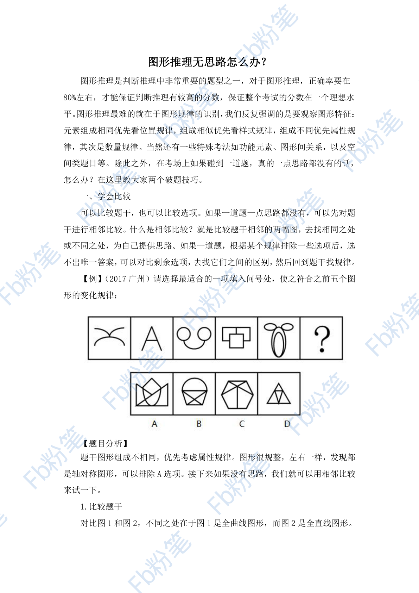
【判断】平面拼合技巧
【判断】特色考点
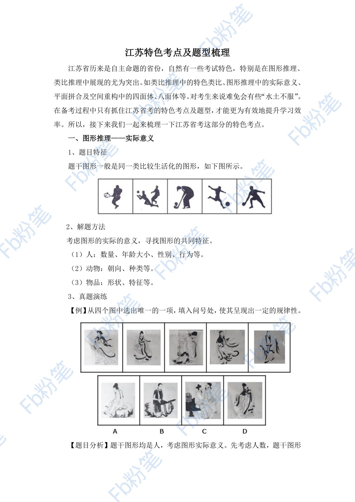
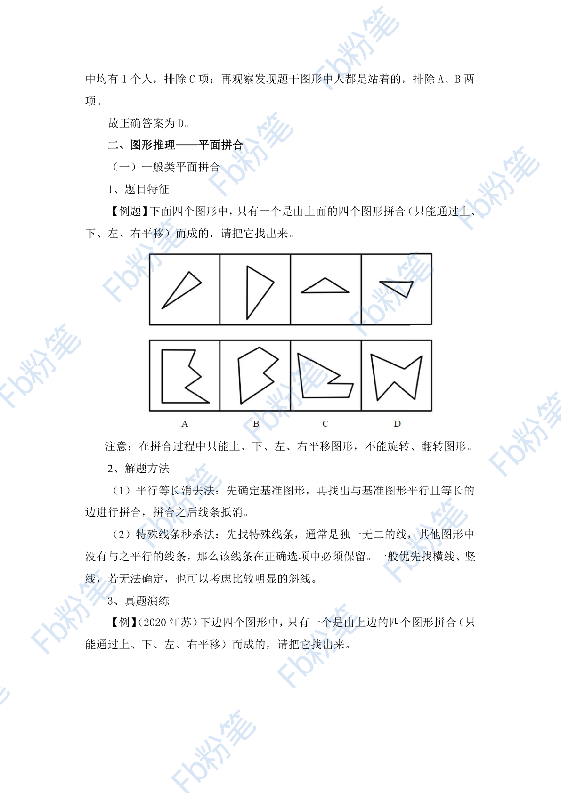
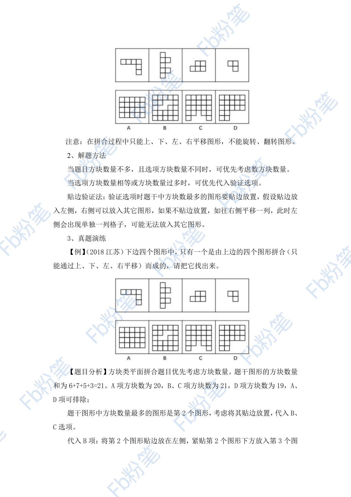
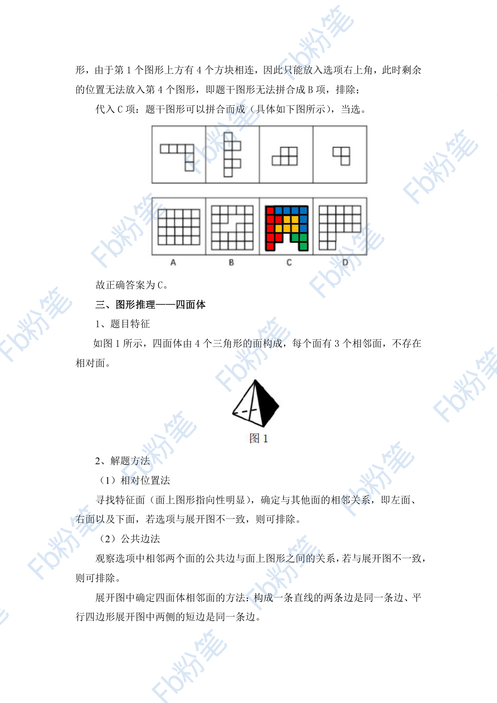
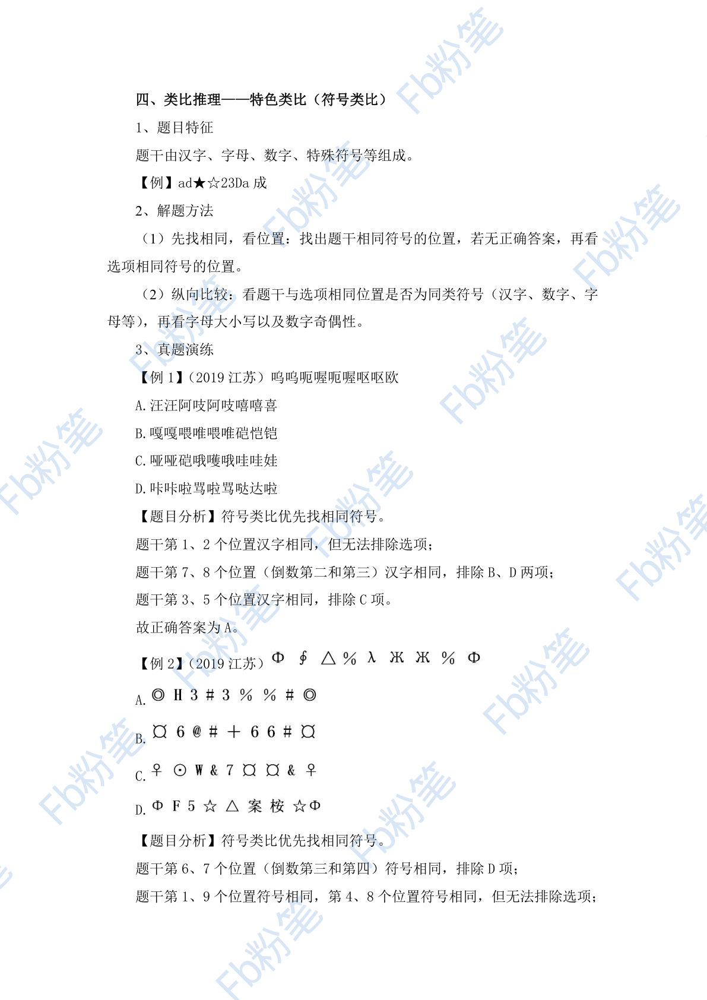
【数资】机械划分数列
走近机械划分数列
在近五年江苏省的数字推理的题型中，机械划分数列每年基本考查1-2 题，属于高频且
易得分的考点。那么究竟什么叫机械划分数列？又应该怎么快速求解呢？下面就带大家一起
走近机械划分数列。
机械划分数列是指明显由两个及两个以上的部分构成，各个部分可以作机械拆分的数列。
考查形式主要分为三大类：小数数列；数位组合数列；特殊形式数列。
一、小数数列
小数数列指的是数字的呈现形式是可由小数点划分为整数和小数的数列。
小数数列的一般解题思路为：整数和小数分别找规律；若无规律，则每一项内部找规律，
即整数和小数部分简单运算后找联系。
【例1】（2020 江苏）7.003，13.009，19.027，25.081，31.243，（
）
A.36.568
B.36.729
C.37.568
D.37.729
【答案】D
【解析】
观察数列特征，有小数点且数字位数较多，考虑机械拆分。小数点前的数字7，13，19，
25，31，可以看出此数列是公差为6 的等差数列，（
）里应是31+6=37；小数点后的数字
003，009，027，081，243，可以看出此数列是公比为3 的等比数列，
（
）里应是243×3=729。
故所求项是37.729。
故正确答案为D。
【例2】（2017 江苏）4.1，4.3，12.1，12.11，132.1，（
）
A.120.8
B.124.12
C.132.131
D.132.12
【答案】C
【解析】
题干出现小数，考虑机械划分。机械划分后，内部之间无规律，考虑外部规律。前一项
整数部分与小数部分之积为下一项整数部分，前一项整数部分与小数部分之差为下一项小数
部分。故所求项整数部分为132×1=132，小数部分为132-1=131，故所求项为132.131。
故正确答案为C。
二、数位组合数列
数位组合数列一般指数字较大，数位比较多的数列（一般以三位数和四位数为主）。
数位组合数列的一般解题思路：进行数字拆分，各项之间相同位置对应分组，考虑各部
分之间和差倍积关系。
【例3】（2018 年深圳）1716，2523，3330，4642，5853，（
）
A.6862
B.6765
C.6662
D.6460
【答案】A
【解析】
数列全是多位数，考虑机械划分。将数列中的每一个数字从中间划分为前后两个两位数
列，可以得到新数列：17，16；25，23；33，30；46，42；58，53。观察该组数列发现，每
组数的前一项减后一项得到的数列为1，2，3，4，5，是公差为1 的等差数列，则该数列的
下一项为6，故划分后的新数列前一项减后一项的差为6，观察选项，只有A 项符合。
故正确答案为A。
三、特殊形式数列
特殊形式的数列指由特殊符号“+”“-”等连接的其它数列。
特殊形式数列的一般解题思路：优先统一形式，而后连接符前后分别找规律。
【例4】（2020 江苏）2，2+ ʹ，4+ ͵，10，16+ ͷ（
）
A.18+
B.16+2 ʹ
C.32+
D.28
【答案】C
【解析】
观察数列特征，有特殊符号“+”，考虑机械拆分。原数列可转化为1+ ͳ，2+ ʹ，4+ ͵，
8+ Ͷ，16+ ͷ，“＋”前是1，2，4，8，16，此数列是公比为2 的等比数列，（
）中“+”
前应是16×2=32；“+”后是ͳ，ʹ，͵，Ͷ，ͷ，根号下的数列是公差为1 的等差数列，
（
）中“+”后根号下的数应是5＋1=6。故所求项是32+ 。
故正确答案为C。
通过上述分析，相信考生能够去应对常见的机械划分数列的题目，但仍需注意的是机械
划分数列的形式也在不断的出新。不论数字呈现的方式如何变化，解题的思路是一致的，先
统一数字形式，明显可做拆分的就拆分，拆分后如果分别找不到规律，就结合起来内找规律。
【数资】特色年均增长问题
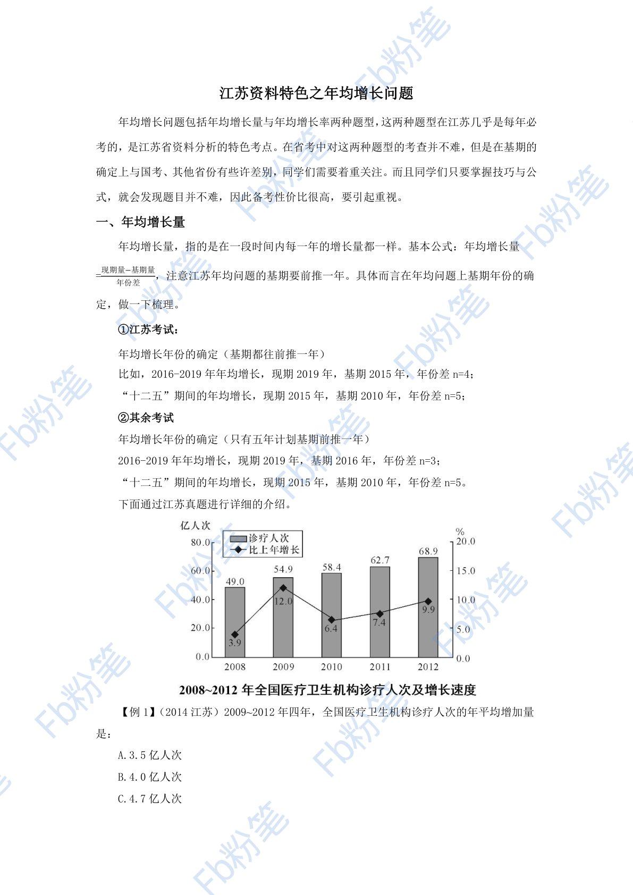
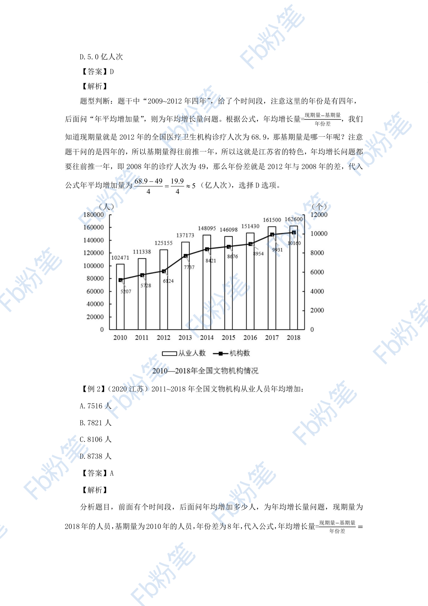
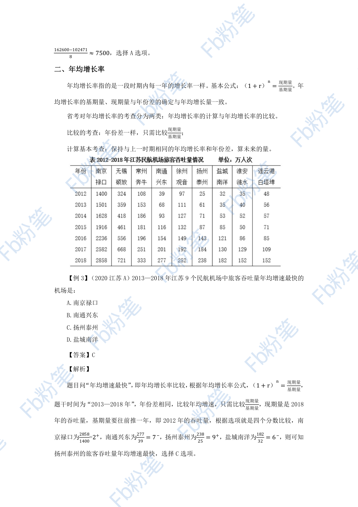
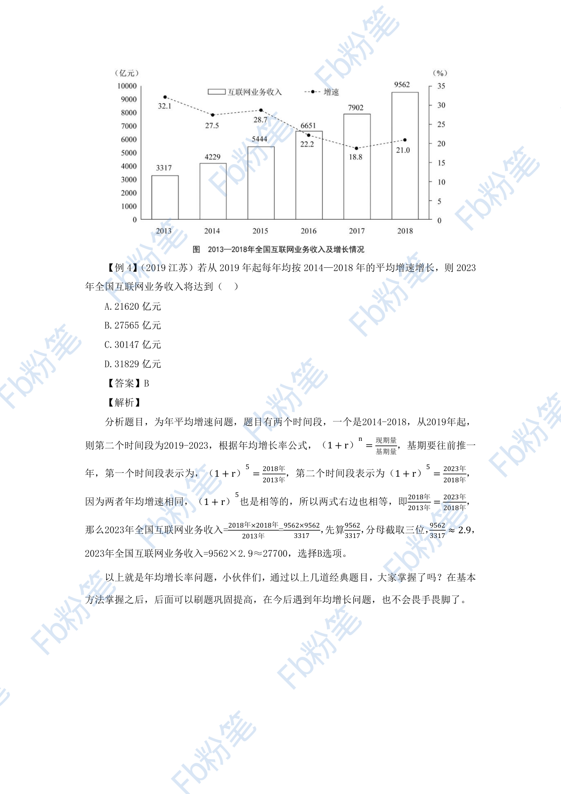
【数资】简单题型（优先选择做的）
工程问题
赋值总量类工程问题
题型特征：题干中给出多个主体（≥2）针对同一项工程的不同完工时间。
解题思路：①将工作总量赋值为完工时间的公倍数；
②根据效率=
总量
时间，计算各主体效率；
③根据题意列式求解。
粉笔思维：判定一道题是否属于赋值总量类工程问题，要看是否有针对同一项工程的两个或
以上的不同完工时间，分成几部分完成一项工程的不属于完工时间。赋总量时，只要是完工
时间的倍数，随便多大都行，甚至不找倍数，赋总量为 1、2、3 ，理论上都是可以的，但
是解题时肯定是怎么简单怎么来，因此优先找最小公倍数。
【典型例题】
【2018 江苏】手工制作一批元宵节花灯，甲、乙、丙三位师傅单独做，分别需要40 小时、
48 小时、60 小时完成。如果三位师傅共同制作4 小时后，剩余任务由乙、丙一起完成，则
乙在整个花灯制作过程中所投入的时间是：
A.24 小时 B.25 小时
C.26 小时 D.28 小时
【解析】出现甲乙丙三人的完工时间，即为赋值总量类工程问题。
（1）赋总量：计算最小公倍数可用短除法或扩大法，求出最小公倍数为240，将总量赋值
为240。
（2）求效率：效率=
总量
时间，则甲的效率为
240
40 = 6、乙的效率为
240
48 = 5、丙的效率为
240
60 = 4。
（3）列式求解：因“三位师傅共同制作4 小时”，即工作量=效率×时间= 4 × （6 + 5 + 4）
= 60。根据“剩余任务由乙、丙一起完成”，则需要时间t =
240−60
5+4
= 20小时。20 是乙丙合
作的时间，求的是乙投入的总时间，则乙的总时间为4 + 20 = 24小时，对应A 项。【选A】
赋值效率类工程问题
题型特征：①题干中直接给出效率比例关系，或通过题干条件可计算出各主体效率比例；
②题干中出现相同的多个主体，如50 个人修路，30 台机器收割麦子等。
解题思路：①求出效率比例，将比例赋值为各主体效率；给出多个相同主体的，将所有主体
的效率默认相等，赋值为1；
②根据总量=效率×时间，求出总量；
③根据题意列式求解。
粉笔思维：近年来常考的题目中，题干一般没有直接给出主体之间的效率比例关系，往往给
出相同时间内各主体完成工作量之比，或相同工作量所用不同时间，此时可根据题干条件求
出效率比例。求出比例进行赋值时，尽量将效率赋值为整数。
【典型例题】
【2016 国考】某浇水装置可根据天气阴晴调节浇水量，晴天浇水量为阴雨天的2.5 倍。灌
满该装置的水箱后，在连续晴天的情况下可为植物自动浇水18 天。小李6 月1 日0：00 灌
满水箱后，7 月1 日0：00 正好用完。问6 月有多少个阴雨天？
A.10 B.16
C.18 D.20
【解析】虽未出现工程等字样，但水箱浇水为消耗的过程，可理解为工程问题。题干出现 “晴
天浇水量为阴雨天的2.5 倍”，即给出晴天与阴天浇水量效率比，可判定为给定效率比例关
系类工程问题。
（1）赋效率：晴天浇水量为阴雨天的2.5 倍，则赋值晴天效率为5、阴天效率为2。
（2）求总量：“在连续晴天的情况下可为植物自动浇水18 天”，则总量=18×5=90。
（3）列式求解：6月为30天，设其中阴天x天，则晴天为（30-x）天。根据题意，90 = 阴天浇水量
+ 晴天浇水量= 2x + 5 × （30 −x），解得x = 20天，对应D 项。【选D】
给具体值类工程问题
题型特征：题干中出现效率或总量的具体值。
解题思路：①设未知数（求谁设谁、设小不设大、设中间量）；
②根据工作过程列方程求解。
【典型例题】
【2018 北京】甲、乙两人生产零件，甲的任务量是乙的2 倍，甲每天生产200 个零件，乙
每天生产150 个零件，甲完成任务的时间比乙多2 天，则甲、乙任务量总共为多少个零件？
A.1200 B.1800
C.2400 D.3600
【解析】给出了效率的具体值，需设未知数列方程求解。
因 “甲完成任务的时间比乙多2 天”，为了方便计算，设小不设大，设乙的工作时间为t
天，则甲的时间是（t+2）天。列式为：200 × （t + 2）= 2 × 150 × t，解得t = 4天。因此
乙的工作量= 150 × 4 = 600个，甲的工作量= 600 × 2 = 1200个，则总量= 1200 + 600 =
1800个，对应B 项。【选B】
【粉笔拓展】
1.近几年的考试中给出具体效率的题目考查比较多，此类题比较简单，类似于和差倍比问题。
根据题目直接列方程求解，核心点在于需注意不变和相等，比如工作总量相等或时间不变。
2.设未知数时结合题意进行分析，缺谁设谁，本题中有效率，缺少总量与时间，若按照求谁
设谁，设总量为x，则时间为
𝑥
200，此时后续计算会比较繁琐，因此不建议设总量为x。设未
知数的方法要根据题干灵活选择。
经济利润
基础经济
题型特征：题干中出现成本、售价、利润等关键词。
解题思路：
①方程法：给具体价格，求具体价格。
根据公式找等量关系，列方程求解。具体公式：
1.利润=售价-成本。
2.利润率=
利润
成本。
3.售价=成本×（1+利润率）。
4.折扣=
售价
原价。
5.总价=单价×数量；总利润=单个利润×数量。
②赋值法：给比例求比例或者三个量只给一个量（总价=单价×数量）。赋值的原则就是尽量
让数据都是整数，因此往往都是设进价为10 或者100。
经济利润问题在考试中难度较低，而基础经济则主要考查公式的基本概念，以及数字之
间的关系，所以做题时一定要注意各概念之间的关系。
【典型例题】
【2018江西】某品牌的葛粉进价为20元，现降价20%卖出，结果还获得进价52%的利润。那么，
该葛粉的定价是多少元？
A.36 B.37
C.38 D.39
【解析】“降价20%”指的是在定价的基础上降价20%，即打八折。而题干中“进价20 元”
是成本，52%是利润率。题目中所求的定价是打折前原来的价格。设定价为x 元，根据折后
售价=成本×（1+利润率）可得，x×（1-20%）=20×（1+52%），化简得0.8x=30.4，则x=30.4
÷0.8=38，对应C 项。【选C】
【粉笔拓展】
1.本题考查最基本的公式概念，要对数字间关系熟悉。如“进价20 元，降价20%”不是卖
16 的意思，是在售价的基础上降价20%，即打八折，打八折后获得进价52%的利润，52%为
利润率。
2.利润+百分数为利润率，20%的利润，即利润率为20%。
3.降价20%是打8 折；降价到20%是打2 折。
分段计费
题型特征：问在不同收费标准下，一共需要的费用。
解题思路：先分开后汇总。
①先分开：按收费标准分开，每一段分别计算；
②后汇总：计算完之后，再相加求和。
分段计费问题思路单一，只要出现了不同的计费标准，一一计算求和即可。
【典型例题】
【2016 联考】某地居民用水价格分二级阶梯，户年用水量在0～180（含）吨的水价5 元/
吨；180 吨以上的水价7 元/吨。户内人口在5 人以上的，每多1 人，阶梯水量标准增加30
吨。老张家5 人，老李家6 人，去年用水量都是210 吨。问老李家的人均水费比老张家少多
少元？
A.12 B.35
C.47 D.60
【解析】已知“户内人口5 人以上的，每多1 人，阶梯水量标准增加30 吨”，如果家里有
6 口人，原来的用水标准为180 吨，则现在变为210 吨，6 口人210 吨以内都是5 元每吨。
总水费：老张家180×5+30×7=1110 元，老李家210×5=1050 元。人均水费：老张家
1110
5 =222
元，老李家
1050
6 =175 元，则222-175=47 元，对应C 项。【选C】
【粉笔拓展】
此题有两个变化，一是根据人数的变化标准也在变；二是标准以下水价和标准以上水价不同。
先算出每户的标准，再根据标准算出每户水价。
函数最值
题型特征：单价和销量一升一降，问何时总价/总利润最高？
解题思路：①设提价次数是x，看条件列方程；
②令总价/总利润为0，解得x1、x2；
③当x=
x1+x2
2
时，取得最值。
【典型例题】
【2016 联考】某种商品原价25 元，成本为15 元，每天可销售20 个。现在每降价一元就可
以多卖5 件，为获得最大利润，需要按照多少元来卖？
A.23 B.22
C.21 D.20
【解析】求利润，总利润=单个利润×数量。原价是25 元，设调价x 次，每降价一元就可以
多卖5 件，调节后售价为（25-x）元，成本15 元，则调价后单个利润为（25-x-15）元；调
价后的数量为（20+5x）件。
（1）列方程：总利润=（25-x-15）×（20+5x）。
（2）用方法：令（25-x-15）和（20+5x）都等于0，解得x1=10，x2=-4；则当x=
10−4
2 =3 时，
总利润最大，说明要调价3 次，即调价后的售价为25-3=22 元，对应B 项。【选B】
【粉笔拓展】
1.考场上，记住结论即可，不需要证明原理。
2.若不记得结论，可把选项一一代入，选出得到利润最大的选项即可（此时需计算四次，较
浪费时间）
容斥原理
两集合容斥
题型特征：两个集合之间有交叉、有重叠的情况。
解题思路：①公式法：A+B-A∩B=总数-都不。
②画图法：出现“只A”“只B”。
1.画圈圈，标数据。
2.从里到外，注意去重。
【典型例题】
例1【2016江苏】某班有38名同学，一次数学测验共有两题，答对第一题的有26人，答对第
二题的有24人，两题都答对的有17人，则两题都答错的人数是（ ）。
A.3 B.5
C.6 D.7
【解析】根据“两题都答对有17人”，人数有交叉，所以是两集合容斥问题。设“都不”为x，
根据公式A+B-A∩B=总数-都不，可得：26+24-17=38-x，整理得33=38-x,解得x=5，对应B项。
【选B】
例2【2016四川】某学校2015年有64%的教师发表了核心期刊论文；有40%的教师承担了科研
项目，这些教师中有90%公开发表了论文，这些论文均发表在核心期刊上。则发表了核心期
刊论文但没有承担科研项目的教师是承担了科研项目但没有发表论文的多少倍？
A.4 B.7
C.9 D.10
【解析】已知“有40%的教师承担了科研项目，这些教师中有90%公开发表了论文”，“这些
教师”对应的是40%，则有40%×90%=36%的教师既承担科研项目又发表论文，则是图中最中
间的部分。问“发表了核心期刊论文但没有承担科研项目的教师是承担了科研项目但没有发
表论文的多少倍”，即问“只论文”是“只项目”的几倍关系。题干所给均为比例，为给比
例求比例的情况，则设总人数为100。画图表示，两个圈分别表示“发表论文”“承担科研
项目”，从中间开始入手，中间部分为36（既承担科研项目又发表论文），已知“64%的教师
发表了核心期刊论文”，则“只论文”=64-36=28，同理，“40%的教师承担了科研项目”，
则“只项目”=40-36=4，所求=28÷4=7倍，对应B项。【选B】
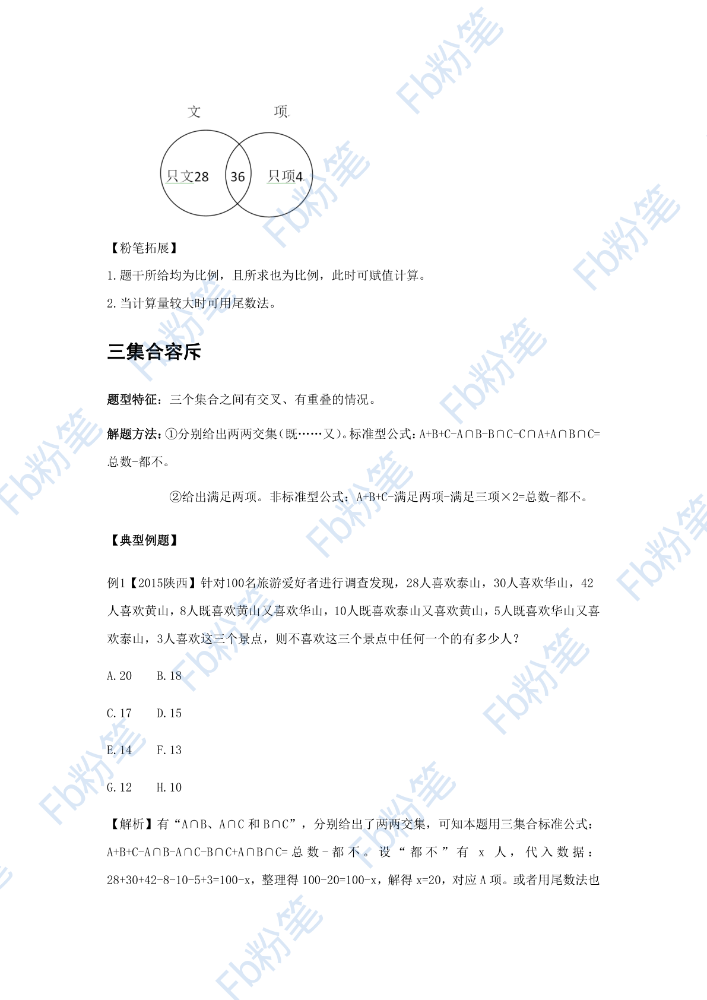
可以做题。【选A】
例2【2018江西】某高校做有关碎片化学习的问卷调查，问卷回收率为90%，在调查对象中有
180人会利用网络课程进行学习，200人利用书本进行学习，100人利用移动设备进行碎片化
学习，同时使用三种方式学习的有50人，同时使用两种方式学习的有20人，不存在三种方式
学习都不用的人。那么，这次共发放了多少份问卷？
A.370 B.380
C.390 D.400
【解析】出现“网络课程”“书本”“移动设备”三种类别，且三种类别有重复，为三集合
容斥问题，有标准型和非标准型，区别在于满足两种的是分开给还是一起给。已知“同时使
用两种方式学习的有20人”，即给出满足两项，故用非标准型公式：A+B+C-满足两项-满足
三项×2=总数-都不，代入数据：180+200+100-20-2×50=总数-0，先抵消，100-2×50=0，
整理得：380-20=总数=360，但选项没有答案。问的是发放的问卷多少份，问卷都是反馈回
来的情况，分析都是在收回的问卷上分析的，还有部分没收回的。已知“问卷回收率为90%”，
故发放数×0.9=360，则发放数=360÷0.9=400份，对应D项。【选D】
【粉笔拓展】
1.题干中出现A∩B 用标准公式；没有出现A∩B 用非标准公式。即出现A∩B 为标准，没出
现A∩B 为非标。
2.常识公式（考查比较少）：根据常识，三集合只有四种情况：满足一项、满足两项、满足
三项和都不满足。如果已知满足两项有50 个，满足三项有30 个，都不满足有7 个，总数有
100 个，根据公式：满足一项+满足两项+满足三项=总数-都不，则得到满足一项
=100-7-50-30=13。
【数资】速算技巧
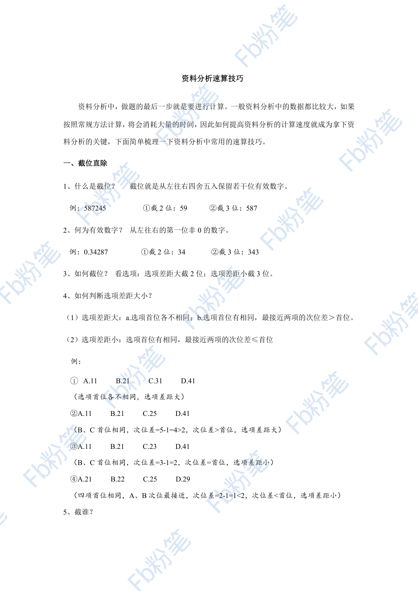
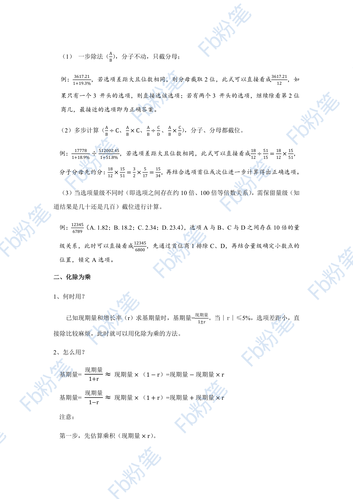
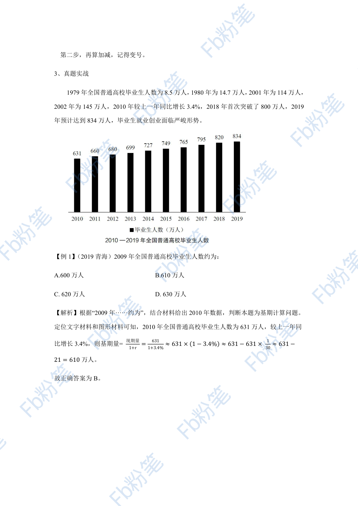
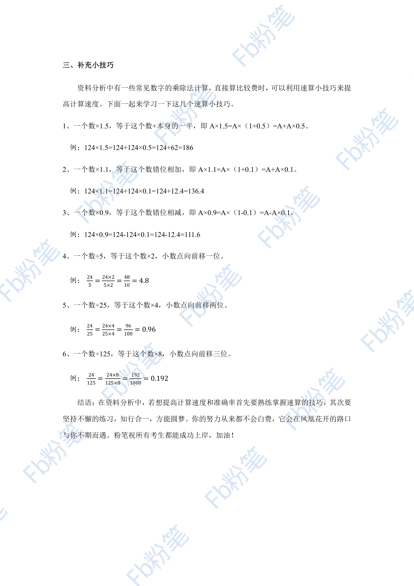
【申论】500个热点金词
500
1.社会保障金词
降低出行成本——交通运输部、发改委、财政部联合印发《全面推广高速公路差异化收费实施方案》
适用场景：
①B 市长途线车票价格整体下调，这样一来，市民外出可以节省不少开支。
②两座城市之间开通了城际高铁，相比过去开私家车、乘坐长途客运、普通火车要节省一半以上的时
间，而且费用也划算不少。
答题使用示例：
根据资料，指出L 市开通地铁给市民带来的主要影响。
要求：全面、准确，不超过30 字。
资料：前不久，L 市地铁1 号线正式开通运营。为了了解市民对乘坐地铁的感受，电视台记者专门进行
了一次街访。“地铁开通之前，我每天都需要乘坐56 路公交汽车到天水路，然后再乘坐通勤车到单位，这
一来一回，每天至少要花3 个小时在路上。而现在，我坐地铁只需要45 分钟左右就能到单位了。”上班族
王先生说。不仅如此，家住商务厅附近的小吴告诉记者：“以往开车，油费、停车费都是钱啊，地铁开通一
个月来，我这个月连油钱也省了。”“早先我每天骑自行车上下班，那叫一个累啊，而现在有了地铁，就不
用再卖力蹬车了。”刚参加工作的小李说。
参考答案：
降低出行成本。缩短出行时间，降低出行费用，减少体力消耗。
答题演示：
前不久，L 市地铁1 号线正式开通运营。为了了解市民对乘坐地铁的感受，电视台记者专门进行了一次
街访。“地铁开通之前，我每天都需要乘坐56 路公交汽车到天水路，然后再乘坐通勤车到单位，这一来一
回，每天至少要花3 个小时在路上。而现在，我坐地铁只需要45 分钟左右就能到单位了。”上班族王先生
说。不仅如此，家住商务厅附近的小吴告诉记者：“以往开车，油费、停车费都是钱啊，地铁开通一个月来，
我这个月连油钱也省了。”“早先我每天骑自行车上下班，那叫一个累啊，而现在有了地铁，就不用再卖力
蹬车了。”刚参加工作的小李说。
〖（1）阅读“地铁开通之前……每天至少要花3 个小时在路上。而现在……只需要45 分钟左右……”，
通过地铁开通前后通勤时间的对比，可知出行时间大大缩短。（2）“以往开车，油费、停车费都是钱啊，
地铁开通一个月来，我这个月连油钱也省了”说明在出行方面的费用支出减少了。（3）“早先我每天骑自
行车上下班，那叫一个累啊……就不用再卖力蹬车了”说明乘坐地铁减少了人们出行时的体力消耗。（4）
以上内容说的是降低了人们出行的时间、金钱、体力等成本，由此可提炼出总括词“降低出行成本”，并前
置。综上，可得出要点：降低出行成本。缩短出行时间，降低出行费用，减少体力消耗。〗
2.文化传播金词
传播渠道多元化——人民网《中银智慧党建平台在泰州开启“互联网+党建”新模式》
适用场景：
①当前中国传统文化的推广可以从传统的电视广播、图书报纸拓展到短视频、直播互动、语音播报等方
式。
②当今时代，直播、微博、朋友圈、短视频等都成为了信息扩散的新途径。
答题使用示例：
根据资料，指出中国文化作品成功“出海”的原因。
要求：全面、准确，不超过30 字。
资料：据了解，改革开放40 多年来，以影视、文学、舞台艺术为“排头兵”的中国文化作品正在不断
地走出国门、向外传播。对此，法国资深影视传媒人安女士认为，“随着当前互联网技术的迅猛发展，越来
越多的各国观众都可以同步收看到中国的电视节目，这是中国文化走向国际的一个良机。”此外，北京外国
语大学谢教授介绍说：“以前想在国外阅读中国的文学作品只能通过阅读纸质译本，而现在，新媒体技术的
发展为他们提供了更多的选择方式，使得各国人民可以通过网络直播、短视频、电子杂志、社交平台等方式
了解中国文化。”
参考答案：
互联网和新媒体技术发展日趋完善，使得文化传播渠道多元化。
答题演示：
据了解，改革开放40 多年来，以影视、文学、舞台艺术为“排头兵”的中国文化作品正在不断地走出
国门、向外传播。对此，法国资深影视传媒人安女士认为，“随着当前互联网技术的迅猛发展，越来越多的
各国观众都可以同步收看到中国的电视节目，这是中国文化走向国际的一个良机。”此外，北京外国语大学
谢教授介绍说：“以前想在国外阅读中国的文学作品只能通过阅读纸质译本，而现在，新媒体技术的发展为
他们提供了更多的选择方式，使得各国人民可以通过网络直播、短视频、电子杂志、社交平台等方式了解中
国文化。”
〖（1）从“随着当前互联网技术的迅猛发展……收看到中国的电视节目”“新媒体技术的发展为他们
提供了更多的选择方式”中可以看出，互联网和新媒体技术的发展，促进了中国文化作品向外传播。（2）
从“电视节目”“使得各国人民可以通过网络直播、短视频……等方式了解中国文化”中可以看出，中国文
化向外传播的渠道多种多样，促使了中国文化走出去，由此可概括为：文化传播渠道多元化。综上，可得出
要点：互联网和新媒体技术发展日趋完善，使得文化传播渠道多元化。〗
3.教育教学金词
缺乏互动（互动性差/互动性不足）——人民网《87.2%受访家长给孩子报了线上课 最担心影响视力和
互动性差》
适用场景：
①早先在用手机视频软件看电影、电视剧时没有“弹幕”这一功能，致使用户之间无法进行讨论。
②现在的应试教育在相互对话、相互讨论、相互观摩等方面表现得并不尽人意。
答题使用示例：
根据资料，指出“远程课堂”存在的弊端。
要求：全面、准确，不超过35 字。
资料：“远程课堂”是指在城区学校设主讲教室，在乡村学校设立听课教室，从而利用音频传输实现一
名教师授课、多地同步听课的教学模式。但面对这样一种看似很不错的全新教学模式，D 乡中学的学科主任
张怡却并不看好，对此她表示：“‘远程课堂’推广开来以后，有的乡村老师为了图方便，直接从网上打开
一个音频就开始上课，甚至如果不播放音频，有的乡村老师干脆都不想讲课了，这怎么能行呢！”“而且对
于课堂上播放的音频，学生们就只能听着，但单纯靠听是听不出什么名堂的，绝大多数的学生反映听不懂、
学不会，而且还无法实现传统课堂中老师提问，学生思考后回答，或者学生提问，老师进行答疑。”张怡补
充道。
参考答案：
易让乡村教师产生偷懒、依赖心理；师生之间缺乏互动，教学效果差。
答题演示：
“远程课堂”是指在城区学校设主讲教室，在乡村学校设立听课教室，从而利用音频传输实现一名教师
授课、多地同步听课的教学模式。但面对这样一种看似很不错的全新教学模式，D 乡中学的学科主任张怡却
并不看好，对此她表示：“‘远程课堂’推广开来以后，有的乡村老师为了图方便，直接从网上打开一个音
频就开始上课，甚至如果不播放音频，有的乡村老师干脆都不想讲课了，这怎么能行呢！”“而且对于课堂
上播放的音频，学生们就只能听着，但单纯靠听是听不出什么名堂的，绝大多数的学生反映听不懂、学不会，
而且还无法实现传统课堂中老师提问，学生思考后回答，或者学生提问，老师进行答疑。”张怡补充道。
〖（1）从“有的乡村老师为了图方便……有的乡村老师干脆都不想讲课了”中可以看出，“远程课堂”
的出现，容易让乡村教师忽视本职工作，产生偷懒、依赖的心理。（2）“学生们就只能听着”“无法实现
传统课堂中老师提问……老师进行答疑”提示问题，说明同学与老师缺乏问答互动。（3）“但单纯靠听是
听不出什么名堂的，绝大多数的学生反映听不懂、学不会”提示问题，说明“远程课堂”的教学效果不好。
综上，可得出要点：易让乡村教师产生偷懒、依赖心理；师生之间缺乏互动，教学效果差。〗
4.社会发展金词
人口外流（人口流失）——新京报《人口外流不等于乡村衰败》
适用场景：
①近两年B 镇越来越多的住户迁移到了别的地方长期工作和生活。
②由于越来越多的年轻人都跑去大城市打拼，H 市的常住人口已经从1063.6 万下降到了1000.99 万。
答题使用示例：
根据资料，指出贫困村Q 村面临的问题。
要求：全面、准确，不超过30 字。
资料：一直以来，Q 村都是当地有名的贫困村，在此次脱贫攻坚战役中，省里特别派出调查组前往Q 村
了解当地实际情况，并指导当地脱贫工作。“我们这儿的土地土壤层薄，像氮磷钾等微量元素含量特别低，
可以说是‘不毛之地’。眼下村民们只能依靠庄稼过活，但是根本赚不到什么钱，如今不少村里的村民都举
家迁往外地了。”Q 村党支部书记老张向调查组同志介绍说，“全村621 户2292 人，贫困户203 户901 人，
贫困发生率为32.7%……”听着这一连串数据，调查组几名同志眉头紧锁。
参考答案：
土地贫瘠，产业单一，村民收入低，人口外流，贫困发生率高。
答题演示：
一直以来，Q 村都是当地有名的贫困村，在此次脱贫攻坚战役中，省里特别派出调查组前往Q 村了解当
地实际情况，并指导当地脱贫工作。“我们这儿的土地土壤层薄，像氮磷钾等微量元素含量特别低，可以说
是‘不毛之地’。眼下村民们只能依靠庄稼过活，但是根本赚不到什么钱，如今不少村里的村民都举家迁往
外地了。”Q 村党支部书记老张向调查组同志介绍说，“全村621 户2292 人，贫困户203 户901 人，贫困
发生率为32.7%……”听着这一连串数据，调查组几名同志眉头紧锁。
〖（1）“我们这儿的土地土壤层薄，像氮磷钾等微量元素含量特别低，可以说是‘不毛之地’”提示
问题，说明Q 村土壤质量较差，可概括为：土地贫瘠。（2）“眼下村民们只能依靠庄稼过活，但是根本赚
不到什么钱”提示问题，说明Q 村目前只靠农业种植，产业发展比较单一，村民收入微薄。（3）“如今不
少村里的村民都举家迁往外地了”提示问题，说明Q 村人口向外地流动，可概括为：人口外流。（4）“贫
困发生率为32.7%”提示问题，说明Q 村贫困发生率较高。综上，可得出要点：土地贫瘠，产业单一，村民
收入低，人口外流，贫困发生率高。〗
5.标准规范金词
缺少规范性——人民日报《管住微权力 基层增活力》
适用场景：
①一些基层单位印发的公文在格式、用语上没有按照标准执行，存在诸多错误。
②在模拟飞行过程中，有些飞行学员面对突发危险并未按照飞行手册当中的规则去做。
答题使用示例：
根据资料，指出“汉字迷失”现象产生的原因。
要求：全面、准确，不超过45 字。
资料：现在，很多人都提笔便忘字，错字、别字更是屡见不鲜，这种现象被专家们称为“汉字迷失”。
对此，某大学中文系张教授发表了自己的看法，他说：“我们熟知的汉字是一套符号系统，但由于字与字之
间没有规律可寻，识字、写字需要反复记忆才行，有的汉字笔画很多，比如‘懿’字就有二十画以上，类似
的字都不容易短时间被记住，相反更容易忘记。”“除了汉字本身的因素，现在人们的生活节奏越来越快，
随之而来的生活压力也越来越大，与此同时，长期处于压力中的人们对汉字的使用也比较随意，并不在意
点、横、撇、捺的书写规则，想怎么写就怎么写，即使错了也不予纠正。”张教授补充道。
参考答案：
①汉字本身规律性不强，记忆周期长、难度大；②人们生活节奏快、压力大，对汉字使用缺少规范性。
答题演示：
现在，很多人都提笔便忘字，错字、别字更是屡见不鲜，这种现象被专家们称为“汉字迷失”。对此，
某大学中文系张教授发表了自己的看法，他说：“我们熟知的汉字是一套符号系统，但由于字与字之间没有
规律可寻，识字、写字需要反复记忆才行，有的汉字笔画很多，比如‘懿’字就有二十画以上，类似的字都
不容易短时间被记住，相反更容易忘记。”“除了汉字本身的因素，现在人们的生活节奏越来越快，随之而
来的生活压力也越来越大，与此同时，长期处于压力中的人们对汉字的使用也比较随意，并不在意点、横、
撇、捺的书写规则，想怎么写就怎么写，即使错了也不予纠正。”张教授补充道。
〖（1）“字与字之间没有规律可寻”提示原因，说明汉字本身的规律性不强。（2）“识字、写字需要
反复记忆才行”“类似的字……更容易忘记”提示原因，说明汉字记忆需要花费较长的时间，不容易记忆，
可概括为：汉字记忆周期长、难度大。（3）“现在人们的生活节奏越来越快……生活压力也越来越大……
人们对汉字的使用也比较随意……即使错了也不予纠正”提示原因，说明人们使用汉字比较随意，缺乏规
范，可概括为：人们生活节奏快、压力大，对汉字使用缺少规范性。〗
6.社会治理金词
减轻资金负担（资金减负）——人民网《战疫精准信贷，助力民生保障》
适用场景：
①C 市通过减免税收、缓缴社会保险费、减免租金等多重措施为企业减轻很多压力。
②某地人社部门退还建筑企业农民工工资保证金，有效减少了企业资金占用。
答题使用示例：
根据资料，指出F 市在应对新冠肺炎疫情影响，激发市场主体活力方面采取的主要措施。
要求：全面、准确，不超过50 字
资料：受新冠肺炎疫情冲击，不少企业出现了资金周转困难的情况，为此，F 市实施了阶段性减免企业
社保费用政策。今年2 月至5 月，全市阶段性减免企业社会保险费50.09 亿，惠及企业29 万家。不仅如此，
F 市还将中小微企业、以单位形式参保的个体工商户社保免征政策期限延长至12 月底，预计可减轻全市企
业负担社会保险费约140 亿元。另外，作为自选动作，F 市还安排了2 亿元，对受疫情影响的企业发放延迟
复工补助，促进企业效益的提高，持续激发了企业创新活力。
参考答案：
减轻企业资金负担。阶段性减免企业社保费用，延长企业社保免征政策期限，对企业发放延迟复工补
助。
答题演示：
受新冠肺炎疫情冲击，不少企业出现了资金周转困难的情况，为此，F 市实施了阶段性减免企业社保费
用政策。今年2 月至5 月，全市阶段性减免企业社会保险费50.09 亿，惠及企业29 万家。不仅如此，F 市
还将中小微企业、以单位形式参保的个体工商户社保免征政策期限延长至12 月底，预计可减轻全市企业负
担社会保险费约140 亿元。另外，作为自选动作，F 市还安排了2 亿元，对受疫情影响的企业发放延迟复工
补助，促进企业效益的提高，持续激发了企业创新活力。
〖（1）“实施了阶段性减免企业社保费用政策”提示对策，表述规范，可直接摘抄。（2）“还将中小
微企业、以单位形式参保的个体工商户社保免征政策期限延长至12 月底”说明F 市在社保免征政策期限延
长方面有举措，可概括为：延长企业社保免征政策期限。（3）“对受疫情影响的企业发放延迟复工补助”
提示对策，表述规范，可直接摘抄。（4）以上举措都是在减轻企业的资金负担，因此可将“减轻企业资金
负担”作为总括句前置。综上，可得出要点：减轻企业资金负担。阶段性减免企业社保费用，延长企业社保
免征政策期限，对企业发放延迟复工补助。〗
7.农业农村金词
生产积极性——人民网《保护农民生产积极性就是保住民生源头》
适用场景：
①增产不增收甚至增产减收，使得农民不愿意种地。
②土地改革完成后，我国广大农民种地的热情进一步提高。
答题使用示例：
根据资料，指出“包产到户”给赵家村带来的变化。
要求：准确、简明，不超过30 字。
资料：1978 年，来自远方的“包产到户”消息传遍了黄土高原的乡间田野，大家都期待的分田到户，
让老赵看到了希望。“把地分到户以后，村民干劲十足啊！天不亮全家有劳动力的都上山劳动，直到晚上看
不见才回家。不到第三个年头，交过公粮后自家的粮仓就再也没有空过。”老赵说，从那时起，孩提时代憧
憬的顿顿吃的白面，成了家常便饭。“早上吃白面馒头，下午吃白面面条，招待亲戚客人再也不用问邻居家
借了，肉也不再是过年的奢侈品。”老赵回想着过往，脱口而出。
参考答案：
农民生产积极性提高，实现了增产增收，提高了生活水平。
答题演示：
1978 年，来自远方的“包产到户”消息传遍了黄土高原的乡间田野，大家都期待的分田到户，让老赵
看到了希望。“把地分到户以后，村民干劲十足啊！天不亮全家有劳动力的都上山劳动，直到晚上看不见才
回家。不到第三个年头，交过公粮后自家的粮仓就再也没有空过。”老赵说，从那时起，孩提时代憧憬的顿
顿吃的白面，成了家常便饭。“早上吃白面馒头，下午吃白面面条，招待亲戚客人再也不用问邻居家借了，
肉也不再是过年的奢侈品。”老赵回想着过往，脱口而出。
〖（1）“地分到户以后，村民干劲十足……直到晚上看不见才回家”说明“包产到户”后，人们种地
的热情高涨，从中可概括出要点：农民生产积极性提高。（2）“自家的粮仓就再也没有空过”“顿顿吃的
白面，成了家常便饭”“肉也不再是过年的奢侈品”说明百姓不仅有了余粮，实现了增产，还可以吃到奢侈
的白面、肉，说明也有了余钱，实现了增收，生活水平提高了，从中可概括出要点：实现了增产增收，提高
了生活水平。综上，可得出要点：农民生产积极性提高，实现了增产增收，提高了生活水平。〗
8.个人素养金词
专业能力差（缺乏专业技能）——人民网《提升领导干部能力专业化水平》
适用场景：
①虽然小张在大学主修的是数学专业，但由于其自身知识储备不足，像高三数学教师这样的工作都感到
压力很大。
②前不久，B 村的庄稼发生了大面积病害，村里农技指导站的小李虽然毕业于省农业大学，但对处理庄
稼病害却“无计可施”。
答题使用示例：
根据资料，指出Q 省职业教育发展面临的问题。
要求：全面、准确，不超过30 字。
资料：一直以来Q 省政府都特别重视职业教育的发展，但实际发展情况却不尽如人意。相关调研数据显
示，目前Q 省职业院校师生比1：32，远远低于国家规定的1：20 的标准，部分州、县中等职业院校的师生
比甚至在1：50 以上。加上当前很多职业学校教师是非科班出身，相关教育理论、知识水平偏低。另外，部
分学校的管理者还指出，当前所在职业学校招生比较困难和非常困难的分别占比39%和17%，总和占到一半
以上，之所以这样，与大部分学生认为职业教育是社会劳动力结构的最底层有着直接关系。
参考答案：
社会认可度低，教师数量少、专业能力差，学校招生困难。
答题演示：
一直以来Q 省政府都特别重视职业教育的发展，但实际发展情况却不尽如人意。相关调研数据显示，目
前Q 省职业院校师生比1：32，远远低于国家规定的1：20 的标准，部分州、县中等职业院校的师生比甚至
在1：50 以上。加上当前很多职业学校教师是非科班出身，相关教育理论、知识水平偏低。另外，部分学校
的管理者还指出，当前所在职业学校招生比较困难和非常困难的分别占比39%和17%，总和占到一半以上，
之所以这样，与大部分学生认为职业教育是社会劳动力结构的最底层有着直接关系。
〖（1）从“Q 省职业院校师生比1：32，远远低于国家……甚至在1：50 以上”中的数据可以看出，教
师的数量严重不足。（2）“很多职业学校教师是非科班出身，相关教育理论、知识水平偏低”提示问题，
说明教师并非专业出身，专业能力较差。（3）从“当前所在职业学校招生比较困难和非常困难的……总和
占到一半以上”中的数据可以看出，当前学校招生比较困难。（4）“与大部分学生认为职业教育是社会劳
动力结构的最底层有着直接关系”提示问题，说明职业教育在社会上的认可度较低。综上，可得出要点：社
会认可度低，教师数量少、专业能力差，学校招生困难。〗
9.队伍建设金词
干部年轻化（队伍年轻化）——人民网《打好激励干部担当作为“组合拳”》
适用场景：
①现在越来越多的“85 后”“90 后”的青年干部走上了领导岗位。
②如今经常能够看到“最年轻镇长”“最年轻局长”“最年轻县长”“最年轻厅官”等新闻。
答题使用示例：
根据资料，指出近几年B 县L 镇政府发生了哪些变化。
要求：全面、准确，不超过30 字。
资料：近年来，随着B 县行政管理工作的不断创新和夯实，全县6 个乡镇政府都发生了翻天覆地的变
化。近日，省电视台记者走进B 县L 镇进行了一次专门报道。记者来到L 镇政府的办公地点，发现这里的
干部绝大多数都很年轻。对此，L 镇党委副书记介绍说：“以前镇政府上班的多是快退休的人员，而现在我
们镇政府每年都有十名左右20 多岁的年轻人来这里工作。”“而且现在这些通过公开竞聘、招考的选调生、
三支一扶干部都是正儿八经的知识型人才，带着专业知识到基层参加工作，和以前相比不仅工作能力强，服
务态度也上升了一大截。”党委副书记补充道。
参考答案：
干部更加年轻化、专业化，工作能力增强，服务态度变好。
答题演示：
近年来，随着B 县行政管理工作的不断创新和夯实，全县6 个乡镇政府都发生了翻天覆地的变化。近
日，省电视台记者走进B 县L 镇进行了一次专门报道。记者来到L 镇政府的办公地点，发现这里的干部绝
大多数都很年轻。对此，L 镇党委副书记介绍说：“以前镇政府上班的多是快退休的人员，而现在我们镇政
府每年都有十名左右20 多岁的年轻人来这里工作。”“而且现在这些通过公开竞聘、招考的选调生、三支
一扶干部都是正儿八经的知识型人才，带着专业知识到基层参加工作，和以前相比不仅工作能力强，服务态
度也上升了一大截。”党委副书记补充道。
〖（1）“以前……多是快退休的人员”与“而现在……十名左右20 多岁的年轻人来这里工作”“发现
这里的干部绝大多数都很年轻”进行对比，说明L 镇政府的干部比以前更加年轻，可概括为：干部更加年轻
化。（2）“都是正儿八经的知识型人才，带着专业知识到基层参加工作，和以前相比不仅工作能力强，服
务态度也上升了一大截”说明现在的L 镇干部不仅具备更强的专业知识，在工作能力、服务态度上也有明显
提升，可概括为：干部更加专业化，工作能力增强，服务态度变好。综上，可得出要点：干部更加年轻化、
专业化，工作能力增强，服务态度变好。〗
10.行业发展金词
催生新职业——人民网《产业升级催生新职业》
适用场景：
①随着“二次元”市场发展的逐步深入，很多漫画师、动画师、渲染师、模型师等全新的岗位进入了大
众的视野。
②随着我国人工智能、大数据和云计算的广泛运用，人工智能工程技术人员、物联网工程技术人员、大
数据工程技术人员和云计算工程技术人员应运而生。
答题使用示例：
根据资料，指出“懒人”带来的社会价值。
要求：全面、准确，不超过35 字。
资料：“枯藤老树昏鸦，空调WiFi 西瓜，懒人同款沙发，夕阳西下，我就往上一趴。”近年来，“懒”
正在成为无数年轻人的常态。虽然“懒人”看起来是贬义词，但在如今，这些“懒人”却是当今社会日常消
费的主力军，他们众多的需求带动了市场，各行各业具有经济头脑的人也都开始做起了“懒人产业”。对此，
某大学社会学专家王教授表示，“由于懒人选择的多样性，在一定程度上会让更多传统行业得到大面积地延
伸，人们可以做哪些工作也被明确得更加细致了，除了红利效应最为明显的餐饮业以外，像衣柜整理师、家
宴厨师、上门理疗师等这些工作也是层出不穷。”
参考答案：
促进消费，创造市场和商机，延伸传统行业，细化人员分工，催生新职业。
答题演示：
“枯藤老树昏鸦，空调WiFi 西瓜，懒人同款沙发，夕阳西下，我就往上一趴。”近年来，“懒”正在
成为无数年轻人的常态。虽然“懒人”看起来是贬义词，但在如今，这些“懒人”却是当今社会日常消费的
主力军，他们众多的需求带动了市场，各行各业具有经济头脑的人也都开始做起了“懒人产业”。对此，某
大学社会学专家王教授表示，“由于懒人选择的多样性，在一定程度上会让更多传统行业得到大面积地延
伸，人们可以做哪些工作也被明确得更加细致了，除了红利效应最为明显的餐饮业以外，像衣柜整理师、家
宴厨师、上门理疗师等这些工作也是层出不穷。”
〖（1）“这些‘懒人’却是当今社会日常消费的主力军”提示意义，说明“懒人”可以促进消费。（2）
“他们众多的需求带动了市场……开始做起了‘懒人产业’”说明“懒人”的需求创造市场，并且制造了商
机。（3）“让更多传统行业得到大面积地延伸”提示意义，表述规范，可直接摘抄。（4）“人们可以做哪
些工作也被明确得更加细致了”说明人员的分工得到了具体细化。（5）“像衣柜整理师……等这些工作也
是层出不穷”提示意义，说明“诞生”了一些新职业，可概括为：催生新职业。综上，可得出要点：促进消
费，创造市场和商机，延伸传统行业，细化人员分工，催生新职业。〗
11.社会治理金词
可行性差（不具可行性/缺乏可行性）——人民网《不具商业可行性 戴森放弃电动车计划》
适用场景：
①由于项目在成本控制、盈利方案等方面存在问题，为此B 公司紧急叫停了该项目，认为该项目并不成
熟，没必要再继续推进。
②D 市颁布了新的城市管理规章，但由于其与D 市自身的发展速度和规模并不相符，被省里有关部门责
令停止实施。
答题使用示例：
根据资料，指出以前L 村在垃圾分类方面存在的问题。
要求：全面、准确，不超过35 字。
资料：J 市L 村因为垃圾分类做得好，如今称得上是全省的“明星村”。然而，就在几年前，L 村还和
其他大部分中国农村一样，在垃圾分类方面都存在着一些问题。最早L 村分类制度刚推行时，就有不少的村
民表示，“村里要求我们将垃圾分成可回收、不可回收、有毒有害和其他这四个大类，而且哪种垃圾属于哪
一类还有具体的标准，这也太麻烦了。这根本没有考虑我们这些村民没读过书、不识字的现状，很多人根本
都听不懂、记不住，使得垃圾分类标准在村里很难行得通。”
参考答案：
分类制度可行性差。分类标准复杂，忽视部分村民受教育程度低的实际。
答题演示：
J 市L 村因为垃圾分类做得好，如今称得上是全省的“明星村”。然而，就在几年前，L 村还和其他大
部分中国农村一样，在垃圾分类方面都存在着一些问题。最早L 村分类制度刚推行时，就有不少的村民表
示，“村里要求我们将垃圾分成可回收、不可回收、有毒有害和其他这四个大类，而且哪种垃圾属于哪一类
还有具体的标准，这也太麻烦了。这根本没有考虑我们这些村民没读过书、不识字的现状，很多人根本都听
不懂、记不住，使得垃圾分类标准在村里很难行得通。”
〖（1）“村里要求我们将垃圾分成可回收……具体的标准，这也太麻烦了”提示问题，说明垃圾分类
的执行标准太过复杂。（2）“这根本没有考虑我们这些村民没读过书……很多人根本都听不懂、记不住”
提示问题，说明L 村政府并未考虑村民学历低、学识少的实际情况，可概括为：忽视部分村民受教育程度低
的实际。（3）“使得垃圾分类标准在村里很难行得通”提示问题，说明L 村执行的垃圾分类制度缺乏可行
性。综上，可得出要点：分类制度可行性差。分类标准复杂，忽视部分村民受教育程度低的实际。〗
12.民生建设金词
家庭条件优越——人民日报《被“假精致”掏空的年轻人》
适用场景：
①能在这样的贵族学校读书的孩子，其父母都是非富即贵。
②小李的父母都是当地有名的地产商人，在外人看来很是有钱，因此小李从小到大都是过着富足的生
活。
答题使用示例：
根据资料，指出选择“慢就业”人群的特点。
要求：全面、准确，不超过30 字。
资料：根据国内某大型招聘网站今年5 月发布的调查数据，在接受问卷调查的90168 名高校毕业生当
中，约有6.9%的学生表示毕业以后不会立即开始工作，而是选择了“慢就业”。这其中一位“95 后”毕业
生芸芸表示，“我不打算这么快就找工作，因为我受不了重复性的工作以及看不到头的通宵加班，这会让我
找不到自己的价值在哪。”“我希望能在工作中学到东西，让自己不断成长，相反，与其每天做一些重复性
的工作，我宁可选择不干。”芸芸补充道。对于芸芸的选择，在某企业担任高管的母亲张女士表示支持。“家
里不差钱，有条件供孩子选择更适合自己的发展方向。”
参考答案：
①求职更加关注价值实现和成长空间；②家庭条件优越，家长支持。
答题演示：
根据国内某大型招聘网站今年5 月发布的调查数据，在接受问卷调查的90168 名高校毕业生当中，约
有6.9%的学生表示毕业以后不会立即开始工作，而是选择了“慢就业”。这其中一位“95 后”毕业生芸芸
表示，“我不打算这么快就找工作，因为我受不了重复性的工作以及看不到头的通宵加班，这会让我找不到
自己的价值在哪。”“我希望能在工作中学到东西，让自己不断成长，相反，与其每天做一些重复性的工作，
我宁可选择不干。”芸芸补充道。对于芸芸的选择，在某企业担任高管的母亲张女士表示支持。“家里不差
钱，有条件供孩子选择更适合自己的发展方向。”
〖（1）从“重复性的工作……找不到自己的价值在哪”“我希望能在工作中学到东西，让自己不断成
长”中可以看出，选择“慢就业”的人群更看重如何实现自身价值以及未来成长的空间。（2）“在某企业
担任高管的母亲张女士表示支持”“家里不差钱，有条件供孩子选择更适合自己的发展方向”说明选择“慢
就业”的人群其家庭条件都比较优越，能够获得父母的支持。综上，可得出要点：①求职更加关注价值实现
和成长空间；②家庭条件优越，家长支持。〗
13.社会治理金词
推动优质医疗资源扩容——国务院办公厅《关于印发深化医药卫生体制改革2021 年重点工作任务的通
知》
适用场景：
①某省为壮大优质医疗资源，促进优质医疗资源下沉，不断提升基层医疗管理和服务质量。
②国家区域医疗中心落户西部省份，补齐了西部省份优质医疗资源的短板。
答题使用示例：
根据资料，概括Z 省在推动医疗卫生事业发展方面的经验做法。
要求：全面、准确，不超过60 字。
资料：医药卫生事业关系亿万人民的健康，关系千家万户的幸福，是重大民生问题。为此，Z 省高度重
视，在推动医疗卫生事业发展方面做了不少成效显著的工作。据调查了解，为了让优质医疗健康资源覆盖范
围进一步扩大，Z 省通过省市三级医院技术下沉和管理下沉，努力提升县级医院的医疗技术水平和管理水平。
同时，Z 省还积极支持符合条件的高水平民营医院跨区域办医，实现品牌化、集团化发展。
参考答案：
推动优质医疗资源扩容。促进优质医疗资源下沉，提升基层医院技术和管理水平；支持优质社会办医，
实现品牌化、集团化发展。
答题演示：
医药卫生事业关系亿万人民的健康，关系千家万户的幸福，是重大民生问题。为此，Z 省高度重视，在
推动医疗卫生事业发展方面做了不少成效显著的工作。据调查了解，为了让优质医疗健康资源覆盖范围进
一步扩大，Z 省通过省市三级医院技术下沉和管理下沉，努力提升县级医院的医疗技术水平和管理水平。同
时，Z 省还积极支持符合条件的高水平民营医院跨区域办医，实现品牌化、集团化发展。
〖（1）“为了让优质医疗健康资源覆盖范围进一步扩大”说明Z 省主要围绕扩大优质医疗资源覆盖展
开，可概括为：推动优质医疗资源扩容。（2）“通过省市三级医院技术下沉和管理下沉，努力提升县级医
院的医疗技术水平和管理水平”提示对策，可概括为：促进优质医疗资源下沉，提升基层医院技术和管理水
平。（3）“积极支持符合条件的高水平民营医院跨区域办医，实现品牌化、集团化发展”说明支持高水平
社会办医，可得出要点：支持优质社会办医，实现品牌化、集团化发展。综上，可得出要点：推动优质医疗
资源扩容。促进优质医疗资源下沉，提升基层医院技术和管理水平；支持优质社会办医，实现品牌化、集团
化发展。〗
14.依法治国金词
拓展普法网络平台——中共中央 国务院转发《中央宣传部、司法部关于开展法治宣传教育的第八个五
年规划（2021－2025 年）》
适用场景：
①D 市在通过政府官网、电视台开展普法工作的同时，还开通普法微信公众平台，应用新媒体宣传法律
知识。
②W 市不仅发挥了“学习强国”等平台优势，还建设了包含法律、法规、规章、司法解释等内容的信息
平台。
答题使用示例：
根据材料，概括W 市在普法工作中的主要做法。
要求：全面、准确，不超过45 字。
资料：W 市司法局于2016 年3 月开通“W 普法”微信公众号，在4 年多的发展历程中，W 市司法局坚持
每期内容由一条法治公益广告和若干条法治资讯、法律法规解读、普法案例等内容组成，每周推送二至三
期，力求发挥微信快速准确、简单易用的平台优势。随着短视频、网络直播在新媒体传播中的地位日趋重要，
W 市司法局坚持微信公众号普法的同时，还围绕“宪法”“民法典”“经济法”“社会法”等主题，录制了
多个短视频，同时积极加入直播潮流，通过网络直播普及与群众生产生活、切身利益相关的法律知识，让群
众对法律知识“触”手可及。
参考答案：
拓展普法网络平台。开通普法宣传公众号，定期发布普法信息；录制普法短视频，探索网络普法直播。
答题演示：
W 市司法局于2016 年3 月开通“W 普法”微信公众号，在4 年多的发展历程中，W 市司法局坚持每期内
容由一条法治公益广告和若干条法治资讯、法律法规解读、普法案例等内容组成，每周推送二至三期，力求
发挥微信快速准确、简单易用的平台优势。随着短视频、网络直播在新媒体传播中的地位日趋重要，W 市司
法局坚持微信公众号普法的同时，还围绕“宪法”“民法典”“经济法”“社会法”等主题，录制了多个短
视频，同时积极加入直播潮流，通过网络直播普及与群众生产生活、切身利益相关的法律知识，让群众对法
律知识“触”手可及。
〖（1）“开通‘W 普法’微信公众号”“每期内容由……普法案例等内容组成”“每周推送二至三期”
说明W 市在普法宣传上开通了公众号，定期发布消息，可概括得出要点：开通普法宣传公众号，定期发布普
法信息。（2）“录制了多个短视频”“加入直播潮流，通过网络直播……”说明W 市还拓展了短视频和直
播的方式，可概括出要点：录制普法短视频，探索网络普法直播。（3）公众号、短视频、网络直播等都是
网络平台的拓展，可概括出前置词：拓展普法网络平台。综上，可得出要点：拓展普法网络平台。开通普法
宣传公众号，定期发布普法信息；录制普法短视频，探索网络普法直播。〗
15.服务经济发展金词
减税降费——《国务院关于进一步做好减税降费政策落实工作的通知》
适用场景：
1.扩大对小微企业所得税减半征收范围，加大结构性减税力度，大幅降低非税费用负担。
2.将企业所得税减半征收优惠范围扩大，取消或停征35 项涉企行政事业性收费，中央涉企收费项目减
少一半以上。
答题使用示例：
根据资料，概括W 县在税收工作方面的经验。
要求：全面、准确，不超过35 字。
资料：近年来，W 县在税收工作方面，认真落实各项税收减免政策，逐步清理规范当地行政事业性收费，
进一步将相关政策“点对点”“面对面”的宣传辅导到位，确保纳税人和缴费人及时、便利、充分享受政策
红利。
参考答案：
抓好减税降费。落实税收减免政策，清理规范行政事业收费，精准宣传辅导。
答题演示：
近年来，W 县在税收工作方面，认真落实各项税收减免政策，逐步清理规范当地行政事业性收费，进一
步将相关政策“点对点”“面对面”的宣传辅导到位，确保纳税人和缴费人及时、便利、充分享受政策红利。
〖（1）“落实各项税收减免政策，逐步清理规范当地行政事业性收费”提示经验做法，表述规范，可
直接摘抄。（2）阅读“将相关政策‘点对点’‘面对面’的宣传辅导到位”，其中“点对点”“面对面”
可概括为“精准”，“宣传辅导”表述规范，可直接摘抄，由此可得出要点：精准宣传辅导。总结以上内容，
“落实税收减免政策”“清理规范行政事业收费”都属于减税降费的范畴，由此可将“减税降费”前置，得
出要点：抓好减税降费。落实税收减免政策，清理规范行政事业收费，精准宣传辅导。〗
16.民生建设金词
完善配套设施
适用场景：
1.加强防护栏、电力、供水、排水、网络等建设。
2.加快补齐水、气、污染处理设备等突出短板。
答题使用示例：
根据资料，概括S 区近年来在基层建设方面的主要做法。
要求：全面、准确，不超过25 字。
资料：近年来，S 区在当地基层建设上下了不少功夫。通过治理，中心公园周边空出大片土地，用于植
树绿化，以与公园内景观相匹配。现在的公园中建设了一条3 公里长的绿道，绿道沿途设有中心驿站、休息
座椅、避雨亭等设施。
参考答案：
加强对公园治理，绿化美化环境，完善配套设施。
答题演示：
近年来，S 区在当地基层建设上下了不少功夫。通过治理，中心公园周边空出大片土地，用于植树绿化，
以与公园内景观相匹配。现在的公园中建设了一条3 公里长的绿道，绿道沿途设有中心驿站、休息座椅、避
雨亭等设施。
〖本段主要说明S 区加强当地基层建设的内容。（1）“通过治理，中心公园周边空出大片土地”提示
S 区加强对公园的治理。（2）“用于植树绿化，以与公园内景观相匹配”说明S 区对当地环境进行了绿化、
美化，由此可概括为：绿化美化环境。（3）“建设了一条3 公里长的绿道”“设有中心驿站、休息座椅、
避雨亭等设施”说明在治理公园，美化环境的同时，加强对周边配套设施的完善，由此可概括为：完善配套
设施。总结以上内容，可得出要点：加强对公园治理，绿化美化环境，完善配套设施。〗
17.能源创新金词
开发利用新能源——《山东省新能源产业发展规划（2018-2028 年）》
适用场景：
1.努力开发太阳能、生物质能、风能、地热能、波浪能、洋流能和潮汐能等，减少环境污染。
2.布局光伏发电、风能发电产业链，构筑节能高效能源体系，最大限度开发可再生能源。
答题使用示例：
根据资料，概括我国近年来经济发展的产业着力点。
要求：全面、准确，不超过25 字。
资料：近年来，我国新能源快速发展，逐渐成为我国经济建设的重要产业领域。太阳能集热面积居世界
首位；2009 年风电装机容量突破2000 万千瓦，已居世界第二位，在建规模达到1000 万千瓦；在建百万千
瓦级的核电机组已达19 台；国内第一个兆瓦级大型太阳能光伏发电示范项目已经开展；生物质能利用也得
到了较快发展。
参考答案：
开发新能源。利用太阳能、风能、核能、生物质能。
答题演示：
近年来，我国新能源快速发展，逐渐成为我国经济建设的重要产业领域。太阳能集热面积居世界首位；
2009 年风电装机容量突破2000 万千瓦，已居世界第二位，在建规模达到1000 万千瓦；在建百万千瓦级的
核电机组已达19 台；国内第一个兆瓦级大型太阳能光伏发电示范项目已经开展；生物质能利用也得到了较
快发展。
〖（1）“我国新能源快速发展，逐渐成为我国经济建设的重要产业领域”提示新能源开发是我国经济
发展的产业着力点。（2）“太阳能……风电装机……核电机组……太阳能光伏发电……生物质能……”介
绍了我国在新能源开发利用方面的具体内容，从中可精简出要点：利用太阳能、风能、核能、生物质能。总
结以上内容，可得出要点：开发新能源。利用太阳能、风能、核能、生物质能。〗
18.行政服务金词
简化审批流程
适用场景：
1.以前许可证需要跑很多的地方，走完多个审批程序之后才能办下来，现在不同了，过程减少了很多。
2.为了方便群众，提高审批效率，相关部门去掉了之前不必要的繁琐审批，避免企业和群众多跑腿、跑
累了腿。
答题使用示例：
根据资料，概括A 县在精准扶贫工作方面的成功经验。
要求：全面、准确，不超过35 字。
资料：如今，为了有效开展精准扶贫，A 县探索创新扶贫小额信贷：贫困户通过评级授信，无需抵押和
担保，便可从银行拿到1 万到5 万元的贷款。这和过去形成了鲜明的对照，以前贷款的前置审批事项中，光
是向银行提供的相关证明就有18 项之多，使得贷款申请手续办理起来非常麻烦。
参考答案：
创新小额信贷方式。执行评级授信，降低贷款门槛，简化前置审批流程。
答题演示：
如今，为了有效开展精准扶贫，A 县探索创新扶贫小额信贷：贫困户通过评级授信，无需抵押和担保，
便可从银行拿到1 万到5 万元的贷款。这和过去形成了鲜明的对照，以前贷款的前置审批事项中，光是向
银行提供的相关证明就有18 项之多，使得贷款申请手续办理起来非常麻烦。
〖（1）“探索创新扶贫小额信贷”提示对策，表述规范，从中可摘抄出要点：创新小额信贷方式。（2）
“通过评级授信，无需抵押和担保，便可从银行拿到1 万到5 万元的贷款”说明通过评级授信，可免去抵押
和担保手续，使贷款的门槛降低了，由此可概括出要点：执行评级授信，降低贷款门槛。（3）“光是向银
行提供的相关证明就有18 项之多，使得贷款申请手续办理起来非常麻烦”说明A 县简化贷款审批程序，可
概括出要点：简化前置审批流程。总结以上内容，可得出要点：创新小额信贷方式。执行评级授信，降低贷
款门槛，简化前置审批流程。〗
19.教育发展金词
城乡教育一体化
适用场景：
1.完善乡村现代化教学设施，按照城镇小学的标准配置优化乡村教学硬件设施，让乡村的孩子享受城镇
孩子同样优质的教学资源，让年轻教师安心教学，扎根乡下。
2.完善乡村学校建设标准，提高乡村教师待遇，使城乡学校校舍、装备、软件实现统一配置，让村级小
学实现“华丽转身”。
答题使用示例：
根据资料，概括互联网远程教育对教育事业发展的意义。
要求：全面、准确，不超过20 字。
资料：N 县广坪镇八一中心小学，是一个边远山区的小学校园，已实现无线网络全覆盖，通过互联网实
现远程教育，与省内外教育学者互动交流。该校的罗校长说：“是互联网让山区的教育和城镇站在了同一起
跑线上，我们农村的孩子也同样享受到了教育信息化带来的好处！”
参考答案：
推动城乡教育一体化，实现教育信息化。
答题演示：
N 县广坪镇八一中心小学，是一个边远山区的小学校园，已实现无线网络全覆盖，通过互联网实现远程
教育，与省内外教育学者互动交流。该校的罗校长说：
“是互联网让山区的教育和城镇站在了同一起跑线上，
我们农村的孩子也同样享受到了教育信息化带来的好处！”
〖罗校长的观点是对本段的总结。其中（1）“是互联网让山区的教育和城镇站在了同一起跑线上”提
示意义，说明互联网教育让山区的学生也能享受到与城镇一样的优质教育资源，实现了山区和城镇的教育
资源互通，因此可概括出要点：推动城乡教育一体化。（2）“同样享受到了教育信息化带来的好处”说明
互联网推动了教育信息化发展，可概括为：实现教育信息化。总结以上内容，可得出要点：推动城乡教育一
体化，实现教育信息化。注意：“与省内外教育学者互动交流”是对“推动城乡教育一体化”的说明，
题
干给定字数有限，写到“推动城乡教育一体化”即可。〗
20.经济发展金词
收入途径多元化
适用场景：
1.农民除了通过农业种植、养殖之外，还可以通过农产品加工、土地流转等方式增加收入。
2.我国现阶段私营企业主既有剥削收入，也有劳动收入，还有非劳动收入。
答题使用示例：
根据资料，概括M 村在扶贫脱贫方面的成功经验。
要求：全面、准确，不超过20 字。
资料：M 村贫困户小夏在该村村委的帮助下，进入一家农业发展有限公司的蛋鸡基地打散工，这样小夏
每月能拿到1000 元左右的工资收入。同时，小夏在政府呼吁下种植苹果，这样每年能赚取3 万多元的收入。
除此之外，该村村委鼓励小夏将闲置土地流转给种粮大户，这样小夏每年大概能拿到1800 元的土地流转金。
参考答案：
拓宽贫困户收入渠道，实现收入途径多元化。
答题演示：
M 村贫困户小夏在该村村委的帮助下，进入一家农业发展有限公司的蛋鸡基地打散工，这样小夏每月能
拿到1000 元左右的工资收入。同时，小夏在政府呼吁下种植苹果，这样每年能赚取3 万多元的收入。除此
之外，该村村委鼓励小夏将闲置土地流转给种粮大户，这样小夏每年大概能拿到1800 元的土地流转金。
〖（1）“蛋鸡基地打散工……1000 元左右的工资收入”说明该村村委引导贫困户获得工资收入。（2）
“种植苹果……赚取3 万多元的收入”说明该村引导贫困户获得种田收入。（3）“将闲置土地流转给种粮
大户……1800 元的土地流转金”说明该村引导贫困户获得土地流转收入。综上可知，该村通过拓展贫困户
收入渠道，促使贫困户收入多元化，进而实现扶贫脱贫，由此可概括出：拓宽贫困户收入渠道，实现收入途
径多元化。〗
21.经济发展金词
产业融合发展——《国务院办公厅关于推进农村一二三产业融合发展的指导意见》
适用场景：
1.涉及到多个产业（农业、工业、服务业）齐头并进、水乳交融。
2.种植业、养殖业、畜牧业等第一产业子产业之间，通过生物链重新整合，形成生态农业等新型产业。
答题使用示例：
根据资料，概括F 县在苗木产业发展方面的成功经验。
要求：全面、准确，不超过35 字。
资料：2015 年，F 县走出了一条一产、三产共同发展的新路径，“现在我们用过去的生态成果来发展旅
游产业，形成‘绿色银行’，进一步增加苗木附加值，这成了一条打破僵局的新路子。”F 县的金书记说道。
参考答案：
促进产业融合。利用生态发展旅游业，形成绿色银行，增加苗木附加值。
答题演示：
2015 年，F 县走出了一条一产、三产共同发展的新路径，“现在我们用过去的生态成果来发展旅游产
业，形成‘绿色银行’，进一步增加苗木附加值，这成了一条打破僵局的新路子。”F 县的金书记说道。
〖（1）“F 县走出了一条一产、三产共同发展的新路径”提示对策，说明F 县探索第一和第三产业融
合发展，由此可概括出要点：促进产业融合。（2）“用过去的生态成果来发展旅游产业，形成‘绿色银行’，
进一步增加苗木附加值”提示对策，表述规范，可直接摘抄。总结以上内容，可得出要点：促进产业融合。
利用生态发展旅游业，形成绿色银行，增加苗木附加值。〗
22.区域发展金词
利用率低——人民网《破解农药利用率低的三大瓶颈问题》
适用场景：
①现在D 市的展览馆常年处于闲置，根本没有举办过几场展览会。
②S 村农家书屋由于开门时间不合理、管理混乱等原因，很少有村民“光顾”。
答题使用示例：
根据资料，指出G 省充电桩运营商面临的困境。
要求：全面、准确，不超过35 字。
资料：如今，随着新能源汽车的普及，G 省一些企业开始将目光投向充电桩运营市场，但在发展过程中
却面临诸多难题。据了解，目前G 省省内建设一座交流充电桩的平均成本在万元以上，而直流快充桩的成本
更是在6 万元以上，这种大规模资金投入确实会劝退一些中小企业。而且这还只是前期的一次性投入，在建
桩之后日常维护的费用则更是多得离谱。据统计，现在G 省投入使用的电动汽车公共充电桩数量超过了6.1
万个，但实际使用占比还不到10%，这也就意味着绝大部分的充电桩运营商依然是亏损运营。
参考答案：
前期建设投入大，后期维护成本高；充电桩利用率低，处于亏损状态。
答题演示：
如今，随着新能源汽车的普及，G 省一些企业开始将目光投向充电桩运营市场，但在发展过程中却面临
诸多难题。据了解，目前G 省省内建设一座交流充电桩的平均成本在万元以上，而直流快充桩的成本更是在
6 万元以上，这种大规模资金投入确实会劝退一些中小企业。而且这还只是前期的一次性投入，在建桩之后
日常维护的费用则更是多得离谱。据统计，现在G 省投入使用的电动汽车公共充电桩数量超过了6.1 万个，
但实际使用占比还不到10%，这也就意味着绝大部分的充电桩运营商依然是亏损运营。
〖（1）“建设一座交流充电桩的平均成本在万元以上……这种大规模资金投入确实会劝退一些中小企
业……在建桩之后日常维护的费用则更是多得离谱”提示问题，说明充电桩前期建设的投入资金较大，且后
续维护的成本也比较高。（2）从“现在G 省投入使用……超过了6.1 万个，但实际使用占比还不到10%”
中的数据对比可以看出，G 省的充电桩只有一小部分被使用，利用率比较低。（3）“绝大部分的充电桩运
营商依然是亏损运营”提示问题，说明行业处于亏损状态。综上，可得出要点：前期建设投入大，后期维护
成本高；充电桩利用率低，处于亏损状态。〗
23.经济发展金词
拓宽销售市场——人民网《农产品“短链”流通加速发展》
适用场景：
①此前B 县种植的苹果只是在当地售卖，而如今B 县通过打造自己的苹果品牌，已经将苹果卖到了其
他城市。
②如今D 公司已经不满足旗下产品只在国内商场上架了，还将产品出口到了国外。
答题使用示例：
根据资料，指出Z 镇在脐橙产业发展方面的成功经验。
要求：全面、准确，不超过35 字。
资料：前不久，Z 镇被市里评为“脐橙产业发展示范镇”，在市里举办的表彰会上，Z 镇党委王书记发
表了获奖感言，并向各个“兄弟”村镇介绍了Z 镇的成功经验。王书记说：“最早我们的橙子只是在本地售
卖，后来发现这样太过局限，因此从去年开始我们就在传统广告宣传方式的基础上进行了创新，这样一来我
们就将自己的橙子卖到了全国各地。”“此外，时间久了之后，我们意识到农户们不能光靠卖橙子赚钱，其
实还可以引导农户将橙子做成罐头、果干、果汁等产品，从而让种出来的橙子‘升值’。”王书记补充道。
参考答案：
创新广告宣传方式，拓宽销售市场；引导农户进行深加工，提升橙子附加值。
答题演示：
前不久，Z 镇被市里评为“脐橙产业发展示范镇”，在市里举办的表彰会上，Z 镇党委王书记发表了获
奖感言，并向各个“兄弟”村镇介绍了Z 镇的成功经验。王书记说：“最早我们的橙子只是在本地售卖，后
来发现这样太过局限，因此从去年开始我们就在传统广告宣传方式的基础上进行了创新，这样一来我们就
将自己的橙子卖到了全国各地。”“此外，时间久了之后，我们意识到农户们不能光靠卖橙子赚钱，其实还
可以引导农户将橙子做成罐头、果干、果汁等产品，从而让种出来的橙子‘升值’。”王书记补充道。
〖（1）“最早我们的橙子只是在本地售卖……在传统广告宣传方式的基础上进行了创新……卖到了全
国各地”提示对策，说明Z 镇通过创新广告宣传方式，成功扩大了脐橙销售市场，由此可概括为：创新广告
宣传方式，拓宽销售市场。（2）“引导农户将橙子做成罐头……等产品，从而让种出来的橙子‘升值’”
提示对策，其中“做成罐头、果干、果汁”说明政府引导农户对橙子进行深加工；“升值”说明提升橙子的
附加值。综上，可得出要点：创新广告宣传方式，拓宽销售市场；引导农户进行深加工，提升橙子附加值。〗
24.社会保障金词
适用范围广——人民网《工信部：拟修改传统能源乘用车适用范围》
适用场景：
①在党政机关，“通知”这类文种适合在公文批转、公文转发、公文印发等多个方面使用。
②如今，D 市公积金贷款可用在购房、租房、装修、治疗疾病等事项上。
答题使用示例：
根据资料，总结出当前移动支付产业的发展优势。
要求：全面、准确，不超过30 字。
资料：如今，我国的移动支付产业之所以能够迅猛发展，与该产业自身的发展优势是分不开的。对此，
一些专业人士表示，像微信、支付宝等移动支付平台早已不局限于购物这类单一的领域了，而是已经涵盖了
转账、缴费、信用卡还款、线下餐饮、商店消费、出行、理财、社交等多个生活场景。除此之外，全国很多
地区的公共服务部门都已经在支付宝上开设了专门的“服务窗口”，真正将“政务办事大厅”放进了百姓的
口袋里。
参考答案：
适用范围广。涵盖众多生活场景，已延伸至公共服务领域。
答题演示：
如今，我国的移动支付产业之所以能够迅猛发展，与该产业自身的发展优势是分不开的。对此，一些专
业人士表示，像微信、支付宝等移动支付平台早已不局限于购物这类单一的领域了，而是已经涵盖了转账、
缴费、信用卡还款、线下餐饮、商店消费、出行、理财、社交等多个生活场景。除此之外，全国很多地区的
公共服务部门都已经在支付宝上开设了专门的“服务窗口”，真正将“政务办事大厅”放进了百姓的口袋里。
〖（1）从“已经涵盖了转账、缴费……社交等多个生活场景”中可以看出，移动支付已经涵盖了众多
生活场景，可以看作其快速发展的优势。（2）“全国很多地区的公共服务部门都已经在支付宝上开设了专
门的‘服务窗口’，真正将‘政务办事大厅’放进了百姓的口袋里”说明如今的移动支付的触角已经延伸至
了公共服务领域，同样可以作为优势。（3）以上要点都属于移动支付在应用范围方面的优势，由此可概括
出总结性要点：适用范围广。综上，可得出要点：适用范围广。涵盖众多生活场景，已延伸至公共服务领域。〗
25.政务服务金词
压缩审批时限——人民网《专人集中办理 压缩审批时限》
适用场景：
①核发建筑施工许可证在已缩减至3 个工作日的基础上，又缩减了2 个工作日，在法定资料齐全的要
求下，最快1 个工作日给予办结。
②一些常规证件审批的时间由最长的45 天缩短为现在的2 至5 天。
答题使用示例：
根据资料，指出J 市在推进政府职能转变的过程中做了哪些“减法”。
要求：全面、准确，不超过25 字。
资料：近年来，中央政府提出了转变政府职能的大方向。为贯彻中央精神，J 市政府实施了一系列以“减”
字当头的落实举措，坚持将“减法”运用好、做到位。据了解，J 市率先从缩减清单以外的行政事业性收费
入手，自7 月起，J 市本级少收事业行政性费用已达8742 万元。此外，J 市政府在审批材料的提交、审批环
节的对接等程序方面进行简化，达到了切实为经济社会发展“松绑”的目的。而且J 市政府还要求全市行政
服务窗口严格落实“限时办结”工作规定，要求对于原本需要2-3 个工作日才能办结的事项一律调整为当天
办完。
参考答案：
缩减事业性收费，简化审批程序，压缩审批时限。
答题演示：
近年来，中央政府提出了转变政府职能的大方向。为贯彻中央精神，J 市政府实施了一系列以“减”字
当头的落实举措，坚持将“减法”运用好、做到位。据了解，J 市率先从缩减清单以外的行政事业性收费入
手，自7 月起，J 市本级少收事业行政性费用已达8742 万元。此外，J 市政府在审批材料的提交、审批环节
的对接等程序方面进行简化，达到了切实为经济社会发展“松绑”的目的。而且J 市政府还要求全市行政服
务窗口严格落实“限时办结”工作规定，要求对于原本需要2-3 个工作日才能办结的事项一律调整为当天办
完。
〖（1）“从缩减清单以外的行政事业性收费入手”提示对策，表述规范，直接摘抄即可。（2）“在审
批材料的提交、审批环节的对接等程序方面进行简化”提示对策，说明J 市政府简化了部分事项的审批程
序。（3）“要求全市行政服务窗口严格落实‘限时办结’工作规定……一律调整为当天办完”提示对策，
说明J 市政府缩减了行政审批的时限。综上，可得出要点：缩减事业性收费，简化审批程序，压缩审批时
限。〗
26.行政管理金词
政策宣传不到位——人民日报《好政策到了基层为啥打折扣？》
适用场景：
①W 村的大部分农户对现有的扶贫政策一知半解，有的农户压根并不知道有扶贫政策这回事。
②虽然D 县政府利用广告宣传车在主干街道上循环播放垃圾分类方面的相关政策，但D 县仍有大多数
的居民对垃圾分类知识缺乏了解。
答题使用示例：
根据资料，指出J 省在实施异地就医费用联网结算政策过程中存在的问题。
要求：全面、准确，不超过15 字。
资料：2019 年4 月，J 省在全国率先实施了异地就医费用联网结算政策。然而，截止目前，该项政策在
实际操作中仍存在着一些不如意之处。2019 年10 月，Y 省某地的刘先生被诊断为鼻咽癌中期，经人介绍，
他来到J 省Z 大学附属肿瘤医院求医。办理入院手续时，工作人员问他有无办理医保异地就医手续，此时
刘先生这才知道，原来该肿瘤医院已实现J 省医保异地联网，而在此之前，刘先生并不知道这些信息。“这
暴露出我们工作中存在的一些问题，以前，我们只会选择发文件去说这件事，并没有考虑过其他的方式，现
在看来，还是要结合新闻、电视节目等方式进行宣传才行。”J 省某政府部门的工作人员说道。
参考答案：
政策宣传不到位，宣传方式单一。
答题演示：
2019 年4 月，J 省在全国率先实施了异地就医费用联网结算政策。然而，截止目前，该项政策在实际操
作中仍存在着一些不如意之处。2019 年10 月，Y 省某地的刘先生被诊断为鼻咽癌中期，经人介绍，他来到
J 省Z 大学附属肿瘤医院求医。办理入院手续时，工作人员问他有无办理医保异地就医手续，此时刘先生这
才知道，原来该肿瘤医院已实现J 省医保异地联网，而在此之前，刘先生并不知道这些信息。“这暴露出我
们工作中存在的一些问题，以前，我们只会选择发文件去说这件事，并没有考虑过其他的方式，现在看来，
还是要结合新闻、电视节目等方式进行宣传才行。”J 省某政府部门的工作人员说道。
〖（1）“此时刘先生这才知道……在此之前，刘先生并不知道这些信息”提示问题，从中可以看出J
省在异地就医结算政策方面并未宣传到位，致使群众对相关政策不知情，可概括出要点：政策宣传不到位。
（2）“我们只会选择发文件去说这件事，并没有考虑过其他的方式……还是要结合新闻……等方式进行宣
传才行”提示问题，说明J 省宣传政策的方式比较单一。综上，可得出要点：政策宣传不到位，宣传方式单
一。〗
27.区域发展金词
产业趋同——贵州省人民政府办公厅印发《关于推进开发区高质量发展的指导意见》
适用场景：
①一些地区在产业结构发展过程中呈现某种共同的相似倾向。
②S 省是煤炭大省、能源大省，然而经历了数次改革调整，省内各市依旧重点发展煤炭产业，非煤产业
发展质量始终不高。
答题使用示例：
根据资料，指出我国在长江经济带协同发展过程中遇到的问题。
要求：全面、准确，不超过25 字。
资料：当前，在长江经济带实现协同发展的道路上，我国还有一些障碍急需突破。截至2020 年，全国
共有168 家国家高新区，其中江苏省就占据了18 家，位居全国第一，而同处于长江经济带中的云南却仅有
3 家，贵州也只有2 家。除此之外，在长江流域，越来越多的城市都将同一个产业或同几个产业列为重点发
展产业，这样一来产业结构太过单一。就以汽车工业为例，长江经济带内的十堰、上海、武汉、重庆、南京、
芜湖、南昌等地，几乎都把汽车工业作为重点发展的产业。
参考答案：
高新区分布不均衡，重点产业趋同发展，产业结构单一。
答题演示：
当前，在长江经济带实现协同发展的道路上，我国还有一些障碍急需突破。截至2020 年，全国共有168
家国家高新区，其中江苏省就占据了18 家，位居全国第一，而同处于长江经济带中的云南却仅有3 家，贵
州也只有2 家。除此之外，在长江流域，越来越多的城市都将同一个产业或同几个产业列为重点发展产业，
这样一来产业结构太过单一。就以汽车工业为例，长江经济带内的十堰、上海、武汉、重庆、南京、芜湖、
南昌等地，几乎都把汽车工业作为重点发展的产业。
〖（1）“全国共有168 家国家高新区，其中江苏省就占据了18 家”“而……云南却仅有3 家，贵州也
只有2 家”提示问题，从各省高新区数量多寡的对比中可知，目前国家高新区分布不均衡。（2）“越来越
多的城市都将同一个产业或同几个产业列为重点发展产业，这样一来产业结构太过单一”提示问题，说明城
市之间重点发展的产业变得越来越相似，产业结构过于单一，可概括为：重点产业趋同发展，产业结构单一。
综上，可得出要点：高新区分布不均衡，重点产业趋同发展，产业结构单一。〗
28.社会交往金词
关系陌生化——光明日报《完善共建共治共享 拓展社会发展新局面》
适用场景：
①小张发现：大学毕业走出校门后，此前朝夕为伴的同学、挚友也逐渐没了沟通、交流，彼此之间越来
越生疏了。
②如今邻里之间的关系在逐渐“退化”，彼此之间更多的是漠然、是戒备。
答题使用示例：
根据资料，指出当前城市邻里之间存在哪些问题。
要求：简明、准确，不超过15 字。
资料：如今，城市里的楼房越盖越高，但越来越多的人发现，城市里的邻里关系开始走“下坡路”。根
据中国青年报社会调查中心通过网络对4509 人进行的一项调查显示，40.6%的人不熟悉自己的邻居，其中
12.7%的人“根本不认识”自己的邻居。“工作后，我在这个小区买了房子，在这儿住了1 年多，虽然常常
和邻居在走道里、电梯中见面，但大家基本都不怎么开口说话。”家住B 市城南我爱我家小区的业主杨先生
无奈地说道。
参考答案：
邻里关系陌生化，彼此缺乏交流。
答题演示：
如今，城市里的楼房越盖越高，但越来越多的人发现，城市里的邻里关系开始走“下坡路”。根据中国
青年报社会调查中心通过网络对4509 人进行的一项调查显示，40.6%的人不熟悉自己的邻居，其中12.7%的
人“根本不认识”自己的邻居。“工作后，我在这个小区买了房子，在这儿住了1 年多，虽然常常和邻居在
走道里、电梯中见面，但大家基本都不怎么开口说话。”家住B 市城南我爱我家小区的业主杨先生无奈地说
道。
〖（1）“40.6%的人不熟悉自己的邻居，其中12.7%的人‘根本不认识’自己的邻居”提示问题，说明
邻里之间比较陌生，可概括为：邻里关系陌生化。（2）“大家基本都不怎么开口说话”提示问题，说明邻
里之间缺乏交流。综上，可得出要点：邻里关系陌生化，彼此缺乏交流。〗
29.社会治理金词
违规占道——武汉市多部门联合印发《关于进一步加强市政工程占道打围施工管理的通知》
适用场景：
①在非机动车道上晒粮食、卖水果蔬菜的现象时有发生。
②辖区内一些商贩在人行道路两旁堆放货物、摆放灯箱。
答题使用示例：
根据资料，指出B 市“马路市场”引起市民不满的原因。
要求：全面、准确，不超过30 字。
资料：近一段时间，B 市政府“市民热线”经常接到关于“马路市场”的投诉电话。住在“马路市场”
附近小区的胡先生无奈地说：“我们这的‘马路市场’里，一些小摊贩当街杀鱼、杀鸡，然后将污水和残留
物直接倒在街面上，环卫工人一天扫好几遍都弄不干净。”“有的摊贩在‘马路市场’100 多米长的通道里
卖蔬菜、卖活禽，甚至有的摊贩则直接将蔬菜摊摆上了机动车道，偶尔有开车的市民停下来买个东西，路立
刻就堵死了。”华城小区居民高女士说道。
参考答案：
商贩随意倾倒垃圾，加重环卫负担；摊贩违规占道，造成交通拥堵。
答题演示：
近一段时间，B 市政府“市民热线”经常接到关于“马路市场”的投诉电话。住在“马路市场”附近小
区的胡先生无奈地说：“我们这的‘马路市场’里，一些小摊贩当街杀鱼、杀鸡，然后将污水和残留物直接
倒在街面上，环卫工人一天扫好几遍都弄不干净。”“有的摊贩在‘马路市场’100 多米长的通道里卖蔬菜、
卖活禽，甚至有的摊贩则直接将蔬菜摊摆上了机动车道，偶尔有开车的市民停下来买个东西，路立刻就堵死
了。”华城小区居民高女士说道。
〖（1）“将污水和残留物直接倒在街面上，环卫工人一天扫好几遍都弄不干净”提示原因，说明部分
商贩随意乱倒垃圾影响路面卫生，从而加重了环卫负担。（2）“有的摊贩在‘马路市场’100 多米长的通
道里卖蔬菜……直接将蔬菜摊摆上了机动车道”提示原因，说明部分商贩在经营过程中违规占用马路。（3）
“偶尔有开车的市民停下来买个东西，路立刻就堵死了”提示原因，说明交通易被堵塞，造成拥堵。综上，
可得出要点：商贩随意倾倒垃圾，加重环卫负担；摊贩违规占道，造成交通拥堵。〗
30.区域发展金词
受教育程度低——人民日报《专家共议农家书屋创新发展 农村阅读关键在未成年人》
适用场景：
①小张小学毕业就辍学在家，如今没有学历、没有文化的他正发愁着。
②一些贫困家庭的女孩上不了学，最后没有什么文化，成了文盲。
答题使用示例：
根据资料，指出W 镇电商发展受阻的原因。
要求：全面、准确，不超过40 字。
资料：W 镇一直以来都把柚子作为当地的主导产业。随着网络电商的兴起，W 镇的一些农户逐渐开始尝
试着通过电商销售柚子，但这过程中却遇到了不少难题。对此，W 镇党委王书记表示，“眼下最棘手的问题
就是我们镇仍有部分自然村的移动网络信号站、信号塔还没有建起来，村子里压根没有4G 网络。”“现在
镇里绝大部分的农户由于年龄大，没有念过书，接受新事物的速度特别慢，这些因素都影响了我们镇农产品
电商销售的发展。”王书记补充道。
参考答案：
移动网络设施建设滞后，网络覆盖不足；农户年龄大，受教育程度低，接受新事物速度慢。
答题演示：
W 镇一直以来都把柚子作为当地的主导产业。随着网络电商的兴起，W 镇的一些农户逐渐开始尝试着通
过电商销售柚子，但这过程中却遇到了不少难题。对此，W 镇党委王书记表示，“眼下最棘手的问题就是我
们镇仍有部分自然村的移动网络信号站、信号塔还没有建起来，村子里压根没有4G 网络。”“现在镇里绝
大部分的农户由于年龄大，没有念过书，接受新事物的速度特别慢，这些因素都影响了我们镇农产品电商销
售的发展。”王书记补充道。
〖（1）“我们镇仍有部分自然村的移动网络信号站、信号塔还没有建起来，村子里压根没有4G 网络”
提示原因，说明移动网络建设比较缓慢，4G 网络未完全覆盖所有村庄。（2）“大部分的农户由于年龄大”
“接受新事物的速度特别慢”提示原因，表述规范，直接摘抄即可。（3）“没有念过书”提示原因，说明
部分农户学识少，可概括为：受教育程度低。综上，可得出要点：移动网络设施建设滞后，网络覆盖不足；
农户年龄大，受教育程度低，接受新事物速度慢。〗
31.产业发展金词
分类筛选——人力资源社会保障部印发《关于开展就业创业服务攻坚季行动的通知》
适用场景：
①根据客户的不同需求，对市场上百余个APP 进行归类，并从中挑选出客户满意的APP。
②从众多产品中选出功能实用的产品，并按照功能的类别进行划分。
答题使用示例：
根据资料，概括出L 村是如何推动苹果产业发展的。
要求：全面、准确，不超过65 字。
资料：一直以来，苹果种植都是L 村的优势支柱产业，大多数L 村村民靠苹果产业实现了脱贫致富。但
由于今年苹果市场竞争加剧，L 村的苹果产业受到很大冲击。为此，L 村苹果基地从外地引进了多台智能化
的选果设备，这些设备可以轻而易举地将每颗苹果按照大小、糖度、瑕疵等进行分拣，并将苹果分成“特优”
“优”“合格”三类。该基地负责人张某介绍说：“我们会按照苹果品质等级的高低进行定价，真正实现了
‘优果优价’。”此外，L 村还将目光投向了“电商”领域，村民自发地成立了直播团队，开始利用直播的
方式向全国各地的网友销售L 村的苹果。
参考答案：
提高市场竞争力。引进智能化设备，按照优劣等级，分类筛选苹果，以质定价；开展电商营销，成立直
播团队，推行直播带货，拓展产品销路。
答题演示：
一直以来，苹果种植都是L 村的优势支柱产业，大多数L 村村民靠苹果产业实现了脱贫致富。但由于
今年苹果市场竞争加剧，L 村的苹果产业受到很大冲击。为此，L 村苹果基地从外地引进了多台智能化的选
果设备，这些设备可以轻而易举地将每颗苹果按照大小、糖度、瑕疵等进行分拣，并将苹果分成“特优”“优”
“合格”三类。该基地负责人张某介绍说：“我们会按照苹果品质等级的高低进行定价，真正实现了‘优果
优价’。”此外，L 村还将目光投向了“电商”领域，村民自发地成立了直播团队，开始利用直播的方式向
全国各地的网友销售L 村的苹果。
〖（1）“由于今年苹果市场竞争加剧，L 村的苹果产业受到很大冲击”提示问题，指出L 村苹果产业
的竞争力还有待进一步提升，由此可进一步分析推导出对策：提高市场竞争力。（2）“从外地引进了多台
智能化的选果设备”提示对策，表述规范，直接摘抄即可。（3）“将每颗苹果按照大小……进行分拣，并
将苹果分成……三类”说明L 村利用智能化设备，按照品质优劣等级对苹果进行分类筛选。（4）“我们会
按照苹果品质等级的高低进行定价，真正实现了‘优果优价’”说明L 村根据苹果质量来定售价。（5）“将
目光投向了‘电商’领域”说明L 村开展电商营销；“成立了直播团队”表述规范，直接摘抄即可；“向全
国各地的网友销售”说明L 村利用电商拓展了苹果的销路。〗
32.生态环保金词
破坏生物多样性——中共中央办公厅 国务院办公厅印发《天然林保护修复制度方案》
适用场景：
①由于人类长期对野生动物的大量捕杀，致使现在人们很难再见到早年间那些珍稀的物种了。
②当地的植物、昆虫、鸟类已经有一大半都灭绝了。
答题使用示例：
根据资料，指出地区海洋污染会带来哪些危害。
要求：全面、准确，不超过25 字。
资料：渤海附近的二界沟是D 市最大的渔港，过去城里的海鲜商贩和饭店伙计基本都到这儿来上海货。
可眼下，尽管离休渔期还有一个月，但很多渔船都停在码头上没有出海。对此，一位渔船师傅张某无奈地说：
“因为海洋污染，这附近海里也就能弄一点虾爬子和贝类了，此前的鱼类、蟹类、藻类都看不到了，感觉像
绝迹了似的。”“现在想要打到海货就得开船去好远的地方，这样一来我们的油钱、工钱以及船员的吃喝花
的可就多了，到最后卖完海货根本剩不下什么钱。”张师傅补充道。
参考答案：
破坏生物多样性，致使渔业萧条，提高了渔民打渔成本。
答题演示：
渤海附近的二界沟是D 市最大的渔港，过去城里的海鲜商贩和饭店伙计基本都到这儿来上海货。可眼
下，尽管离休渔期还有一个月，但很多渔船都停在码头上没有出海。对此，一位渔船师傅张某无奈地说：“因
为海洋污染，这附近海里也就能弄一点虾爬子和贝类了，此前的鱼类、蟹类、藻类都看不到了，感觉像绝迹
了似的。”“现在想要打到海货就得开船去好远的地方，这样一来我们的油钱、工钱以及船员的吃喝花的可
就多了，到最后卖完海货根本剩不下什么钱。”张师傅补充道。
〖（1）“很多渔船都停在码头上没有出海”“此前的鱼类……都看不到了，感觉像绝迹了似的”提示
危害，说明海洋生物种类逐渐减少，导致很多很多渔民不得不停止打渔，可概括为：破坏生物多样性，致使
渔业萧条。（2）“这样一来我们的油钱……花的可就多了……根本剩不下什么钱”提示危害，说明渔民打
渔的开销增加了，可概括为：提高了渔民打渔成本。综上，可得出要点：破坏生物多样性，致使渔业萧条，
提高了渔民打渔成本。〗
33.经济发展金词
市场饱和——人民日报《取消限购传言起，汽车拖消费后腿是因为市场饱和了吗？》
适用场景：
①某品牌商品的销量在市场上已经无法再增长了。
②某一产品的市场供给量与消费群体的需求量“旗鼓相当”。
答题使用示例：
根据资料，指出为什么X 公司陷入“中年危机”。
要求：全面、准确，不超过25 字。
资料：X 公司是H 县的一家老牌食品企业，此前公司业绩一路高歌，旗下X 果汁成为当时整个饮品行业
中为数不多的百亿大单品。然而，如今的X 公司却面临着“中年危机”。对此，记者调查发现，X 公司的第
一代产品主要来自国外技术转移，而不是自身原创，它主要依赖代工思维，导致生产技术“停在原地”。此
外，从目前来看，市场对X 公司生产产品的“容纳度”已经到了“临界点”，X 公司生产的产品很难再有市
场增量，业绩下滑严重。
参考答案：
依赖代工，缺乏技术创新；市场饱和，难有市场增量。
答题演示：
X 公司是H 县的一家老牌食品企业，此前公司业绩一路高歌，旗下X 果汁成为当时整个饮品行业中为数
不多的百亿大单品。然而，如今的X 公司却面临着“中年危机”。对此，记者调查发现，X 公司的第一代产
品主要来自国外技术转移，而不是自身原创，它主要依赖代工思维，导致生产技术“停在原地”。此外，从
目前来看，市场对X 公司生产产品的“容纳度”已经到了“临界点”，X 公司生产的产品很难再有市场增量，
业绩下滑严重。
〖（1）“X 公司的第一代产品主要来自国外技术转移，而不是自身原创，它主要依赖代工思维，导致
生产技术‘停在原地’”提示原因，说明X 公司在产品技术研发上缺乏自主创新，主要依赖代工。（2）“市
场对X 公司生产产品的‘容纳度’已经到了‘临界点’”提示原因，说明X 公司的产品在市场中已趋近饱
和。（3）“X 公司生产的产品很难再有市场增量”提示原因，表述规范，直接摘抄即可。综上，可得出要
点：依赖代工，缺乏技术创新；市场饱和，难有市场增量。〗
34.社会治理金词
工程验收不严格——人民网《聚焦迎检作假 剑指验收虚功 严明纪律保脱贫结果真实》
适用场景：
①面对偷工减料的工程，验收人员却草率地给出了“验收合格”的结论。
②一些审计人员在楼房竣工验收中存在丈量读数错误、计算不仔细、未认真核实部分隐蔽工程等行为。
答题使用示例：
根据资料，指出H 市三江桥部分桥面坍塌的原因。
要求：全面、准确，不超过30 字。
资料：2019 年7 月15 日凌晨，H 市三江桥北向南距离滨江转盘800 米处，部分桥面突然塌落，引起了
社会的广泛关注。据悉，三江桥于2005 年动工，2009 年竣工，2010 年3 月通车，在通车验收时已经发现桥
面有一些裂缝，专家认为这些裂缝主要是建造时所用的浇灌浆不合格造成的，然而当时工程验收方却确定
其为“合格”，之后维修不断。2012 年4 月，三江桥开始实行禁止外地货运机动车和市区8 吨以上大型货
运机动车通行的交通管制措施，但大桥上的监控显示，仅2019 年1 月1 日至2019 年7 月15 日，上桥的车
辆中超过30 吨的货车就有17593 辆。就在事故发生当天15 日凌晨，19 辆大货车偷偷上桥，最终压垮了部
分桥面。
参考答案：
施工质量不合格，工程验收不严格；交通管制落实不到位。
答题演示：
2019 年7 月15 日凌晨，H 市三江桥北向南距离滨江转盘800 米处，部分桥面突然塌落，引起了社会的
广泛关注。据悉，三江桥于2005 年动工，2009 年竣工，2010 年3 月通车，在通车验收时已经发现桥面有一
些裂缝，专家认为这些裂缝主要是建造时所用的浇灌浆不合格造成的，然而当时工程验收方却确定其为“合
格”，之后维修不断。2012 年4 月，三江桥开始实行禁止外地货运机动车和市区8 吨以上大型货运机动车
通行的交通管制措施，但大桥上的监控显示，仅2019 年1 月1 日至2019 年7 月15 日，上桥的车辆中超过
30 吨的货车就有17593 辆。就在事故发生当天15 日凌晨，19 辆大货车偷偷上桥，最终压垮了部分桥面。
〖（1）“在通车验收时已经发现桥面有一些裂缝……浇灌浆不合格……然而当时工程验收方却确定其
为‘合格’”提示原因，说明三江桥的施工质量不合格，而且工程验收过程敷衍草率，不够严格。（2）“三
江桥开始实行……交通管制措施，但大桥上的监控显示……超过30 吨的货车就有17593 辆”“19 辆大货车
偷偷上桥”提示原因，指出了H 市虽然实施了交通管制，但却收效甚微，可以看出交通管制落实并不到位。
综上，可得出要点：施工质量不合格，工程验收不严格；交通管制落实不到位。〗
35.经济发展金词
专业化管理——人民日报《新型菜市场管理需要专业化经营模式 发挥线下优势》
适用场景：
①D 集团一直以来都是由董事会聘请专门的职能机构和职业经理人来打理集团所有事物。
②要让掌握档案整理方面知识且具有丰富经验的对口人才来负责日常档案管理。
答题使用示例：
根据资料，指出五芳斋在发展过程中有哪些成功经验。
要求：全面、准确，不超过40 字。
资料：如今，粽界老字号五芳斋成了网红品牌。数据显示，五芳斋每天生产的粽子高达130 多万只，市
场占有率达到四成。之所以能够取得这样好的销售业绩，主要归根于近两年五芳斋建立了400 余家中式快
餐连锁门店，同时，其开拓的电商渠道在去年销售额也突破了4 亿大关，占整体品牌年销售额的23%。除此
之外，五芳斋还考虑到电商和实体连锁店有所不同，为此，选择了让更懂年轻消费群体、更懂网店经营的人
员去负责电商的大事小情，让更懂中老年消费群体、更懂实体经营的人员去负责打理连锁店各项事务。
参考答案：
将线上线下相结合，拓宽销售渠道；结合销售方式的区别，实行分类别的专业化管理。
答题演示：
如今，粽界老字号五芳斋成了网红品牌。数据显示，五芳斋每天生产的粽子高达130 多万只，市场占有
率达到四成。之所以能够取得这样好的销售业绩，主要归根于近两年五芳斋建立了400 余家中式快餐连锁
门店，同时，其开拓的电商渠道在去年销售额也突破了4 亿大关，占整体品牌年销售额的23%。除此之外，
五芳斋还考虑到电商和实体连锁店有所不同，为此，选择了让更懂年轻消费群体、更懂网店经营的人员去负
责电商的大事小情，让更懂中老年消费群体、更懂实体经营的人员去负责打理连锁店各项事务。
〖（1）“五芳斋建立了400 余家中式快餐连锁门店”“其开拓的电商渠道在去年销售额也突破了4 亿
大关”提示对策，其中“连锁门店”指的是线下渠道，“电商”指的是线上渠道，即五芳斋利用线上线下相
结合的方式，拓宽了其产品的销售渠道。（2）“五芳斋还考虑到电商和实体连锁店有所不同”“选择了让
更懂年轻消费群体……负责电商的大事小情，让更懂中老年消费群体……负责打理连锁店各项事务”提示
对策，说明五芳斋结合线上线下两种销售方式的不同，分类别地安排专长人员进行专业化管理。综上，可得
出要点：将线上线下相结合，拓宽销售渠道；结合销售方式的区别，实行分类别的专业化管理。〗
36.道德品质金词
清正廉洁——人民网《“清正廉洁作表率”的时代价值》
适用场景：
①面对不法商人的金钱贿赂，张某从来都是严厉回绝，并严肃呵斥。
②为官30 载，王书记始终两袖清风，从来都不贪图钱财。
答题使用示例：
根据资料，指出“最美警察”郭警官身上的优秀品质。
要求：全面、准确，不超过10 字。
资料：D 市公安局车管所的郭警官前不久被市里评为了“最美警察”。平日里，郭警官就是两套警服来
回换着穿，这一穿就是近十年，身边的同事总对他说：“你看你那警服都磨开线了，再重新订一套新的吧！”
但郭警官听后都是笑着回应：“不要紧的，这衣服还能穿好久嘞。”据了解，有一次，一个人找到郭警官，
声称只要能让他公司的几百辆车顺利通过年检，取得安全检验合格标志，就给他3 万元好处费。面对即将到
手的“好处费”，郭警官不为所动，当即严词拒绝。
参考答案：
勤俭节约，清正廉洁。
答题演示：
D 市公安局车管所的郭警官前不久被市里评为了“最美警察”。平日里，郭警官就是两套警服来回换着
穿，这一穿就是近十年，身边的同事总对他说：“你看你那警服都磨开线了，再重新订一套新的吧！”但郭
警官听后都是笑着回应：“不要紧的，这衣服还能穿好久嘞。”据了解，有一次，一个人找到郭警官，声称
只要能让他公司的几百辆车顺利通过年检，取得安全检验合格标志，就给他3 万元好处费。面对即将到手的
“好处费”，郭警官不为所动，当即严词拒绝。
〖（1）从“平日里，郭警官就是两套警服来回换着穿，这一穿就是近十年”“这衣服还能穿好久嘞”
中可以看出，郭警官生活节俭、朴素，可概括为：勤俭节约。（2）从“面对即将到手的‘好处费’，郭警
官不为所动，当即严词拒绝”中可以看出，郭警官为人正直，绝不做贪赃枉法的事，可概括为：清正廉洁。
综上，可得出要点：勤俭节约，清正廉洁。〗
37.区域发展金词
资源浪费——人民网《严重浪费资源污染环境类产业将淘汰》
适用场景：
①有的大煤矿在开采过程中只采块煤，对于碎渣、粉末直接扔掉或就地掩埋。
②由于多种原因，B 市最大的楼盘宣告停工，变成了“烂尾工程”，前期投入的土地、资金、人力、建
材等等都白搭了。
答题使用示例：
根据资料，指出园博园无法持续运营带来的危害。
要求：简明、准确，不超过15 字。
资料：2019 年，C 市园博园建成开园，首日游客超过1.5 万人次，仅仅一周的时间参观游客总数就突破
了10 万人次。然而，这样红火的人气并未持续太长时间，几个月后C 市园博园便陷入了低迷。“从目前的
情况看，园区靠自身根本无法持续运营下去。”一位园区的工作人员无奈地表示，“现在看着一个个场馆大
门紧闭，投入那么多的钱和人力，占着大块的土地，结果却这么空摆着，实在是太可惜了。”“而且园区之
所以能够运营到现在，基本就是靠地方财政贴钱支撑，这完全就是财政‘哺乳’模式。”这位工作人员又补
充道。
参考答案：
造成资源浪费，耗费财政资金。
答题演示：
2019 年，C 市园博园建成开园，首日游客超过1.5 万人次，仅仅一周的时间参观游客总数就突破了10
万人次。然而，这样红火的人气并未持续太长时间，几个月后C 市园博园便陷入了低迷。“从目前的情况
看，园区靠自身根本无法持续运营下去。”一位园区的工作人员无奈地表示，“现在看着一个个场馆大门紧
闭，投入那么多的钱和人力，占着大块的土地，结果却这么空摆着，实在是太可惜了。”“而且园区之所以
能够运营到现在，基本就是靠地方财政贴钱支撑，这完全就是财政‘哺乳’模式。”这位工作人员又补充道。
〖（1）“投入那么多的钱和人力，占着大块的土地，结果却这么空摆着，实在是太可惜了”提示危害，
说明由于园博园场馆闲置，造成大量的资源浪费。（2）“基本就是靠地方财政贴钱支撑，这完全就是财政
‘哺乳’模式”提示危害，说明当前园博园的经营耗费了当地财政大量资金。综上，可得出要点：造成资源
浪费，耗费财政资金。〗
38.能力素养金词
崇洋媚外——人民日报《自尊自信才能走好自己的路》
适用场景：
①有些留学生到国外深造几年后，就丧失了最基本的民族自尊心，一味地觉得西方的事物好。
②很多人都觉得国外品牌的汽车质量好、有牌面，而对于国产汽车则不屑一顾。
答题使用示例：
根据资料，指出我国居民消费外流的原因。
要求：全面、准确，不超过40 字。
资料：随着我国经济的发展，海外购物这个曾经“高大上”的事，已经走进了越来越多普通人的生活，
这使得我国的境外消费逐步增长，而国内消费却有下降的趋势。对此，某跨国企业员工张先生感慨地说：
“这几年，我发现很多国内产品都是搞‘两套标准’，即对于同一款产品，国产的内销产品质量低于出口产
品。如果国内产品与国外产品一样，谁还愿意出远门花钱呢？”除此之外，据权威媒体调查，还有很多消费
者理所当然地认为“国产货就是比洋货矮一截”“国货就是没有洋货好”……其实，人们在消费行为上的这
种倾向，某种意义上是文化不自信的表现。
参考答案：
①国内产品存在双重标准，同款不同质；②部分消费者崇洋媚外，缺乏文化自信。
答题演示：
随着我国经济的发展，海外购物这个曾经“高大上”的事，已经走进了越来越多普通人的生活，这使得
我国的境外消费逐步增长，而国内消费却有下降的趋势。对此，某跨国企业员工张先生感慨地说：“这几年，
我发现很多国内产品都是搞‘两套标准’，即对于同一款产品，国产的内销产品质量低于出口产品。如果国
内产品与国外产品一样，谁还愿意出远门花钱呢？”除此之外，据权威媒体调查，还有很多消费者理所当然
地认为“国产货就是比洋货矮一截”“国货就是没有洋货好”……其实，人们在消费行为上的这种倾向，某
种意义上是文化不自信的表现。
〖（1）“我发现很多国内产品都是搞‘两套标准’，即对于同一款产品，国产的内销产品质量低于出
口产品”提示原因，说明国内产品在质量方面执行双重标准，同一款产品质量却存在差异，可概括为：国内
产品存在双重标准，同款不同质。（2）“还有很多消费者理所当然地认为‘国产货就是比洋货矮一截’‘国
货就是没有洋货好’”提示原因，说明部分消费者盲目崇拜洋货，贬低、轻视国货，即存在崇洋媚外的心理。
（3）“某种意义上是文化不自信的表现”提示原因，表述规范，直接摘抄即可。综上，可得出要点：①国
内产品存在双重标准，同款不同质；②部分消费者崇洋媚外，缺乏文化自信。〗
39.道德品质金词
与时俱进——人民网《与时俱进全面深化改革》
适用场景：
①科技一定要跟上时代发展的脚步，不能抱残守缺、故步自封。
②要坚持学习，确保自身的知识储备不被时代淘汰。
答题使用示例：
根据资料，指出扶贫干部陈霖带领S 乡百姓脱贫致富的经验。
要求：全面、准确，不超过30 字。
资料：两年前，陈霖从W 县某机关单位来到S 乡挂职，成为了一名扶贫干部。“如今S 乡能够摆脱贫
困，可真离不开陈书记，他是我们的脱贫工作带头人。”S 乡乡镇干部张强说。在陈霖上任前，S 村的村民
只是依靠传统种植带来的微薄收入艰难度日。为此，陈霖上任后第一件事就是带领村民把传统种植的花椒
晒干加工成花椒粉，把核桃加工成核桃露、核桃粉、核桃油，经过这么一“折腾”，S 乡有了自己的特色产
业。经过一段时间，陈霖发现加工后的产品并不好销售，因此，陈霖决定带领群众们追上时代的脚步，跟上
今年刮起的直播卖货热潮。就这样，陈霖带着S 乡的农产品“上网”了。“现在一次直播就能卖出近千件农
产品。”陈霖开心地说。
参考答案：
开展农产品加工，发展特色产业；与时俱进，开辟线上销售渠道。
答题演示：
两年前，陈霖从W 县某机关单位来到S 乡挂职，成为了一名扶贫干部。“如今S 乡能够摆脱贫困，可真
离不开陈书记，他是我们的脱贫工作带头人。”S 乡乡镇干部张强说。在陈霖上任前，S 村的村民只是依靠
传统种植带来的微薄收入艰难度日。为此，陈霖上任后第一件事就是带领村民把传统种植的花椒晒干加工
成花椒粉，把核桃加工成核桃露、核桃粉、核桃油，经过这么一“折腾”，S 乡有了自己的特色产业。经过
一段时间，陈霖发现加工后的产品并不好销售，因此，陈霖决定带领群众们追上时代的脚步，跟上今年刮起
的直播卖货热潮。就这样，陈霖带着S 乡的农产品“上网”了。“现在一次直播就能卖出近千件农产品。”
陈霖开心地说。
〖（1）“带领村民把传统种植的花椒晒干加工成花椒粉……S 乡有了自己的特色产业”说明陈霖带领
村民在传统农产品的基础上进行深加工，并发展成了当地的特色产业，可概括为：开展农产品加工，发展特
色产业。（2）“决定带领群众们追上时代的脚步，跟上今年刮起的直播卖货热潮”说明陈霖能够积极迎合
时代发展趋势，可概括为：与时俱进。（3）“陈霖带着S 乡的农产品‘上网’了”说明陈霖利用直播带货
的方式为S 乡的农产品开辟了线上销售渠道。综上，可得出要点：开展农产品加工，发展特色产业；与时俱
进，开辟线上销售渠道。〗
40.区域发展金词
题材广泛——人民网《健身运动，让生活更美好》
适用场景：
①如今荧幕上的电影包含了爱情、搞笑、犯罪、战争、动作、科幻等多种话题。
②唐朝的绘画在内容选择上可谓是多姿多彩、百花齐放，我们常见的有人物画、山水花鸟画、风俗画等
等。
答题使用示例：
根据资料，指出我国传统戏曲有哪些特点？
要求：全面、准确，不超过20 字。
资料：戏曲是中华优秀传统文化的重要组成部分，在历史文脉中有特殊地位。我国的戏曲可以说既有厚
重的历史叙事，也有温婉的情爱波澜。例如，像武王伐纣、楚汉相争、三国纷乱、隋唐兴衰、水浒传奇等中
国历史上政治军事领域的重大事件都在戏曲作品的叙述范围；而哀婉悱恻的爱情悲剧如《西厢记》《梁山伯
与祝英台》《天仙配》等等，更是跨越时空的杰作。同时，像《牡丹亭》《探阴山》《情探》等这样的优秀
戏曲作品都充满了令人惊异的天马行空的想象。当然，戏曲里还有风趣幽默和滑稽调笑，有豪情万丈和义薄
云天。
参考答案：
题材广泛，想象力丰富，风格多样。
答题演示：
戏曲是中华优秀传统文化的重要组成部分，在历史文脉中有特殊地位。我国的戏曲可以说既有厚重的历
史叙事，也有温婉的情爱波澜。例如，像武王伐纣、楚汉相争、三国纷乱、隋唐兴衰、水浒传奇等中国历史
上政治军事领域的重大事件都在戏曲作品的叙述范围；而哀婉悱恻的爱情悲剧如《西厢记》《梁山伯与祝英
台》《天仙配》等等，更是跨越时空的杰作。同时，像《牡丹亭》《探阴山》《情探》等这样的优秀戏曲作
品都充满了令人惊异的天马行空的想象。当然，戏曲里还有风趣幽默和滑稽调笑，有豪情万丈和义薄云天。
〖（1）“我国的戏曲可以说既有厚重的历史叙事，也有温婉的情爱波澜”“像武王伐纣……水浒传奇
等中国历史上政治军事领域的重大事件……哀婉悱恻的爱情悲剧……”说明戏曲的题材包括各朝各代的政
治军事事件、各种爱情故事等，范围非常广，可概括为：题材广泛。（2）“都充满了令人惊异的天马行空
的想象”说明戏曲作品中充满了想象，可概括为：想象力丰富。（3）“戏曲里还有风趣幽默和滑稽调笑，
有豪情万丈和义薄云天”说明戏曲的风格是多种多样的。综上，可得出要点：题材广泛，想象力丰富，风格
多样。〗
41.能力素养金词
不思进取（不求上进）——人民网《不做推诿扯皮、不思进取的庸官》
适用场景：
①有的人安于眼前现状，不求有所作为，在别人看来就是“恨铁不成钢”。
②小李不想通过努力来改变自己的现状，自己还常说：“只要能够过得去，就这样过下去算了。”
答题使用示例：
根据资料，指出部分大学生存在的问题。
要求：全面、准确，不超过25 字。
资料：当前部分大学生在学习方面表现得不尽人意。对此，某大学辅导员张老师无奈地说：“现在有很
多大学生就是不想学习，每天就是打打游戏、刷刷微博、聊聊八卦……这在我们看来就是典型的‘混日子’，
他们安于眼前的自由生活，得过且过，不想努力。”“还有一些学生虽然能够自主学习，但也只是‘毫无章
法’地将课本上的知识强灌硬塞地背了一遍，这样的学习效果普遍都不理想。”辅导员张老师补充道。
参考答案：
学习上不求上进，缺乏学习方法，学习效果差。
答题演示：
当前部分大学生在学习方面表现得不尽人意。对此，某大学辅导员张老师无奈地说：“现在有很多大学
生就是不想学习，每天就是打打游戏、刷刷微博、聊聊八卦……这在我们看来就是典型的‘混日子’，他们
安于眼前的自由生活，得过且过，不想努力。”“还有一些学生虽然能够自主学习，但也只是‘毫无章法’
地将课本上的知识强灌硬塞地背了一遍，这样的学习效果普遍都不理想。”辅导员张老师补充道。
〖（1）“在学习方面表现得不尽人意”“不想学习”“这在我们看来就是典型的‘混日子’，他们安
于眼前的自由生活，得过且过，不想努力”提示问题，说明部分大学生在学习方面不努力、不思进取，可概
括为：学习上不求上进。（2）“只是‘毫无章法’地将课本上的知识强灌硬塞地背了一遍”提示问题，说
明部分学生缺乏学习方法。（3）“这样的学习效果普遍都不理想”提示问题，说明部分学生学习效果差。
综上，可得出要点：学习上不求上进，缺乏学习方法，学习效果差。〗
42.社会保障金词
贫富差距大——人民网《贫富差距之痛——直面香港民生问题症结》
适用场景：
①当前社会财富存在畸形集中的问题，对此有专家表示，社会中20%的人掌握着80%的财富。
②我们要防止“富人越来越有钱，穷人越来越穷”这一收入分配问题的产生。
答题使用示例：
根据资料，指出“佛系青年”现象产生的原因。
要求：全面、准确，不超过30 字。
资料：现在，很多青年都陆续加入了“佛系青年”的大军，选择了一种淡然的生活方式。然而，我们更
应关注“佛系青年”现象背后的原因。随着越来越多的青年群体陆续进入社会，走向工作岗位，来自交通拥
挤、物价高、买房难等一系列现实生活的压力，很快就引发了一些青年焦虑、紧张的情绪，进而他们对不争
不抢的“佛系”产生了自我认同。除此之外，《2016 年中国社会形势分析与预测》调查表明，45.1%的被调
查者认为，当前国内有一小部分人已经富得“流油”，然而一些刚步入社会的青年还在为每日的柴米油盐发
愁。对此，部分青年觉得无力改变这一现状，索性便打着“佛系青年”的名号，立地成“佛”了。
参考答案：
现实压力引发青年的负面情绪；青年难改变贫富差距大的社会现状。
答题演示：
现在，很多青年都陆续加入了“佛系青年”的大军，选择了一种淡然的生活方式。然而，我们更应关注
“佛系青年”现象背后的原因。随着越来越多的青年群体陆续进入社会，走向工作岗位，来自交通拥挤、物
价高、买房难等一系列现实生活的压力，很快就引发了一些青年焦虑、紧张的情绪，进而他们对不争不抢的
“佛系”产生了自我认同。除此之外，《2016 年中国社会形势分析与预测》调查表明，45.1%的被调查者认
为，当前国内有一小部分人已经富得“流油”，然而一些刚步入社会的青年还在为每日的柴米油盐发愁。对
此，部分青年觉得无力改变这一现状，索性便打着“佛系青年”的名号，立地成“佛”了。
〖（1）“来自交通拥挤……等一系列现实生活的压力，很快就引发了一些青年焦虑、紧张的情绪”提
示原因，即来自现实生活的压力给青年带来了负面情绪，致使青年趋向“佛系”，可概括为：现实压力引发
青年的负面情绪。（2）“当前国内有一小部分人已经富得‘流油’……部分青年觉得无力改变这一现状”
提示原因，从“富得‘流油’”与“为每日的柴米油盐发愁”的对比中可以看出，当前社会贫富差距较大，
而青年难以改变这种现状，从而催生了“佛系青年”，可概括为：青年难改变贫富差距大的社会现状。综上，
可得出要点：现实压力引发青年的负面情绪；青年难改变贫富差距大的社会现状。〗
43.能力素养金词
自立能力不足——人民日报《自立自强造就航天奇迹》
适用场景：
①遇到问题总是依赖父母，自己根本不去思考，就等着现成的。
②小张都已经是成年人了，可是自己还没学会如何照顾自己，就跟没长大一样。
答题使用示例：
根据资料，指出年轻人“不想长大”背后的深层次本质。
要求：全面、准确，不超过15 字。
资料：近日，一家媒体通过某网站做了关于年轻人“不想长大”的社会调查。这次调查共有2052 人参
与，调查数据显示，受访者最认可的四个“不想长大”的表现是不愿工作、衣着打扮装嫩、不愿结婚和不愿
生子。对此，某高校社会学专家张某表示，“这些年轻人从小就生活在父母的关爱下，早就习惯了被父母宠
爱呵护，什么事情都得找父母解决，根本离不开父母，不敢为自己的人生做出决定，依靠自己的力量去做事
则更是无从谈起。”
参考答案：
过度依赖父母，自立能力不足。
答题演示：
近日，一家媒体通过某网站做了关于年轻人“不想长大”的社会调查。这次调查共有2052 人参与，调
查数据显示，受访者最认可的四个“不想长大”的表现是不愿工作、衣着打扮装嫩、不愿结婚和不愿生子。
对此，某高校社会学专家张某表示，“这些年轻人从小就生活在父母的关爱下，早就习惯了被父母宠爱呵护，
什么事情都得找父母解决，根本离不开父母，不敢为自己的人生做出决定，依靠自己的力量去做事则更是无
从谈起。”
〖（1）“什么事情都得找父母解决，根本离不开父母”提示年轻人“不想长大”背后的深层次问题，
说明年轻人对父母的依赖性过强，由此可概括为：过度依赖父母。（2）“不敢为自己的人生做出决定，依
靠自己的力量去做事则更是无从谈起”提示年轻人“不想长大”背后的深层次问题，说明年轻人缺少独立自
主的做事能力，由此可概括为：自立能力不足。综上，可得出要点：过度依赖父母，自立能力不足。〗
44.环境保护金词
减少污染物排放——发改委、工信部印发《关于完善钢铁产能置换和项目备案工作的通知》
适用场景：
①要从源头控制工业废水、生活污水排入城市内河。
②运用新的工业技术减少一氧化碳、碳氢化合物、甲醛、二氧化硫等废气排放。
答题使用示例：
根据资料，指出惠达钢业是如何实现绿色转型的。
要求：全面、准确，不超过30 字。
资料：随着P 市传统产业绿色转型升级工作的不断推进，全市不少的企业都陆续退出了重污染企业的
行列。其中，P 市惠达钢业在这一方面的举措得到了当地政府的点赞。据了解，2007 年该企业启动烧结烟气
高效脱硫工艺装备集成技术研发工作。经过6 年多的技术攻关，累计投入科研资金5 亿多元，终于自主研
发出了具有自己专利的“烧结烟气高效脱硫成套工艺装备集成技术”，该企业直接将综合脱硫率从原来的
40%左右提高到95%以上，对烟气的处理率超过了96%，对废气的净化可以说是做到了“效果最大化”。
参考答案：
加大资金投入，长期自主研发专利清洁技术，减少污染物排放。
答题演示：
随着P 市传统产业绿色转型升级工作的不断推进，全市不少的企业都陆续退出了重污染企业的行列。
其中，P 市惠达钢业在这一方面的举措得到了当地政府的点赞。据了解，2007 年该企业启动烧结烟气高效脱
硫工艺装备集成技术研发工作。经过6 年多的技术攻关，累计投入科研资金5 亿多元，终于自主研发出了
具有自己专利的“烧结烟气高效脱硫成套工艺装备集成技术”，该企业直接将综合脱硫率从原来的40%左右
提高到95%以上，对烟气的处理率超过了96%，对废气的净化可以说是做到了“效果最大化”。
〖（1）“经过6 年多的技术攻关，累计投入科研资金5 亿多元，终于自主研发出了具有自己专利的
‘……集成技术’”提示对策，其中“6 年多”说明长期研发；“投入科研资金5 亿多元”说明企业在技术
研发方面加大了资金投入；“自主研发出了具有自己专利的‘……集成技术’”说明企业能够自主研发专利
技术。（2）“该企业直接将综合脱硫率从原来的40%左右提高到95%以上……净化可以说是做到了‘效果最
大化’”提示对策，说明企业通过研发该项技术实现了清洁生产，减少了污染物的排放量。综上，可得出要
点：加大资金投入，长期自主研发专利清洁技术，减少污染物排放。〗
45.经济发展金词
人员结构失衡（人员结构性矛盾）——人民网《依靠制度优势培养造就人才》
适用场景：
①在我国技能型人员中，高技能人员只有4791 万人，占技能劳动者的比重仅为29%，低级技术人员占
比较高。
②目前D 省的人力现状是教育、卫生和农林牧的人员多，其他领域的人员则极为短缺。
答题使用示例：
根据资料，指出我国“二次元”产业发展面临的问题。
要求：全面、准确，不超过25 字。
资料：如今，国内“二次元”产业的发展依旧是前路漫漫，存在着诸多问题。近年《中国游戏产业报告》
显示，我国游戏动漫及周边产业链的人员需求缺口近百万，而且这个缺口仍在进一步扩大。此外，现有的从
业人员“全懂”的特别少，基本都是懂“二次元”的不一定懂营销、技术，懂技术的不一定懂“二次元”。
此前，Z 省传媒学院院长彭教授指出，从“二次元”产业链上看，编导、造型、美术设计等前期创意人员与
策划运营等后期商业运营人员缺乏，而中期生产人员过剩；从技术应用上看，能开发动画引擎、设计系统的
人员缺乏，只懂操作软件应用的技术人员过剩。
参考答案：
人力需求缺口大，复合型人才匮乏，人员结构失衡。
答题演示：
如今，国内“二次元”产业的发展依旧是前路漫漫，存在着诸多问题。近年《中国游戏产业报告》显示，
我国游戏动漫及周边产业链的人员需求缺口近百万，而且这个缺口仍在进一步扩大。此外，现有的从业人员
“全懂”的特别少，基本都是懂“二次元”的不一定懂营销、技术，懂技术的不一定懂“二次元”。此前，
Z 省传媒学院院长彭教授指出，从“二次元”产业链上看，编导、造型、美术设计等前期创意人员与策划运
营等后期商业运营人员缺乏，而中期生产人员过剩；从技术应用上看，能开发动画引擎、设计系统的人员缺
乏，只懂操作软件应用的技术人员过剩。
〖（1）“我国游戏动漫及周边产业链的人员需求缺口近百万，而且这个缺口仍在进一步扩大”提示问
题，说明“二次元”产业人力不足，且缺口较大。（2）“现有的从业人员‘全懂’的特别少，基本都是懂
‘二次元’的不一定懂营销……不一定懂‘二次元’”提示问题，说明“二次元”产业缺少各方面都擅长的
复合型人才。（3）“从‘二次元’产业链上看，编导……商业运营人员缺乏，而中期生产人员过剩；从技
术应用上看，能开发动画引擎……缺乏，只懂操作软件应用的技术人员过剩”提示问题，说明“二次元”产
业在产业链、技术应用两方面的技术人员在数量上存在较大差距，反映了人员结构性矛盾比较突出。综上，
可得出要点：人力需求缺口大，复合型人才匮乏，人员结构失衡。〗
46.法律制度金词
加大处罚力度——国务院办公厅印发《关于推进医疗保障基金监管制度体系改革的指导意见》
适用场景：
①对违法企业的罚款标准从原来的1 万至3 万提高到了现在的5 万至10 万。
②各地交管部门针对行人闯红灯这一违法行为，从过去的说教逐步变成了罚款、通报。
答题使用示例：
根据资料，指出W 市治理矿山的经验做法。
要求：全面、准确，不超过40 字。
资料：长期粗放式的开采给S 省带来了严重的环境污染和地质灾害，很多矿区不仅充斥着漫天的粉尘
和烟雾，还出现了地裂塌陷、山体滑坡等情况。为改善这一状况，S 省各市纷纷采取措施治理矿山，其中，
尤以W 市做得最好。“我市率先打破国土、发改委、财政等部门行政界线，共同成立了治理小组，明确“将
治理工作长期开展下去”这条工作主线，杜绝“一阵风”治理乱象的发生。”W 市相关负责人介绍说，“对
矿山企业偷排漏排、超标排污等违法违规现象‘出重拳、下猛药’，要真正做到发现一起、查处一起，打击
一个、震慑一批。”
参考答案：
多部门联合成立治理小组，开展长效治理；加大处罚力度，严厉打击违法违规行为。
答题演示：
长期粗放式的开采给S 省带来了严重的环境污染和地质灾害，很多矿区不仅充斥着漫天的粉尘和烟雾，
还出现了地裂塌陷、山体滑坡等情况。为改善这一状况，S 省各市纷纷采取措施治理矿山，其中，尤以W 市
做得最好。“我市率先打破国土、发改委、财政等部门行政界线，共同成立了治理小组，明确“将治理工作
长期开展下去”这条工作主线，杜绝“一阵风”治理乱象的发生。”W 市相关负责人介绍说，“对矿山企业
偷排漏排、超标排污等违法违规现象‘出重拳、下猛药’，要真正做到发现一起、查处一起，打击一个、震
慑一批。”
〖（1）“我市率先打破国土……等部门行政界线，共同成立了治理小组”提示对策，说明多个部门相
互联合，共同成立了治理小组。（2）“明确‘将治理工作长期开展下去’……杜绝‘一阵风’治理乱象的
发生”提示对策，说明要开展长效治理。（3）“对矿山企业偷排漏排……‘出重拳、下猛药’，要真正做
到发现一起……震慑一批”提示对策，说明要严厉打击违法违规行为，其中“出重拳、下猛药”强调要加大
处罚力度。综上，可得出要点：多部门联合成立治理小组，开展长效治理；加大处罚力度，严厉打击违法违
规行为。〗
47.创新发展金词
实用性不足——《2020 年政府网站和政务新媒体检查情况通报》
适用场景：
①研发的设备用起来费时费力，一点都不好用。
②实际上这些看起来挺好的电动工具却没有此前的传统工具好用。
答题使用示例：
根据资料，概括出当前智能家居产品存在的短板。
要求：全面、准确，不超过35 字。
资料：如今，智能家居产品已经受到了越来越多年轻消费群体的青睐，引领了科技与生活相融合的市场
潮流。然而，也有不少消费者表示，当前智能家居领域的产品并非“十全十美”，一些问题还亟待解决。“目
前智能家居产品通常要靠手机APP 来操控，每款家电都得单独下载自己品牌的APP，但各个品牌的APP 之间
无法相互兼容，因此不能实现一个APP 控制多个不同品牌的智能家居产品，这样平时使用起来就会比较麻
烦。”平时喜欢购买一些时髦智能家居产品的90 后白领小李吐槽道，“前不久我买了一款智能电饭煲，本
来想着功能挺多，但用了一段时间后发现，10 余种功能中平时能真正用到的也就两三种，其他的功能根本
都用不上，完全就是‘样子货’。”
参考答案：
实用性不足。各品牌拥有独自操作APP 且无法兼容；产品功能丰富却不接地气。
答题演示：
如今，智能家居产品已经受到了越来越多年轻消费群体的青睐，引领了科技与生活相融合的市场潮流。
然而，也有不少消费者表示，当前智能家居领域的产品并非“十全十美”，一些问题还亟待解决。“目前智
能家居产品通常要靠手机APP 来操控，每款家电都得单独下载自己品牌的APP，但各个品牌的APP 之间无法
相互兼容，因此不能实现一个APP 控制多个不同品牌的智能家居产品，这样平时使用起来就会比较麻烦。”
平时喜欢购买一些时髦智能家居产品的90 后白领小李吐槽道，“前不久我买了一款智能电饭煲，本来想着
功能挺多，但用了一段时间后发现，10 余种功能中平时能真正用到的也就两三种，其他的功能根本都用不
上，完全就是‘样子货’。”
〖（1）“各个品牌的APP 之间无法相互兼容……这样平时使用起来就会比较麻烦”提示问题，说明各
品牌产品有自己的APP，而且不同品牌之间的APP 无法兼容。（2）“10 余种功能中平时能真正用到的也就
两三种……完全就是‘样子货’”提示问题，说明虽然产品的功能丰富，但部分功能不够贴近生活实际，可
概括为：产品功能丰富却不接地气。以上要点都是在说智能家居产品不够实用，由此可概括出总结性要点：
实用性不足。综上，可得出要点：实用性不足。各品牌拥有独自操作APP 且无法兼容；产品功能丰富却不接
地气。〗
48.法律制度金词
立法滞后——人民网《数字经济立法面临三大挑战》
适用场景：
①在个别领域还存在相关法律法规“空白”的现象。
②由于生育权的内涵及其法律特征还没有相关法律进行明确，致使相关案例中遇到的争议无法可依。
答题使用示例：
根据资料，概括出当前我国城市管理仍需“负重前行”的原因。
要求：全面、准确，不超过45 字。
资料：当前，我国城市管理正从传统管理模式到向“绣花”管理模式过渡，虽然取得了一定的成效，但
未来仍需“负重前行”。“从1997 年全国第一个综合执法试点建立到现在，城管概念已经经历了20 余年的
发展，但到目前为止，全国仍然没有一部专门针对城市管理综合执法的独立的法律文件产生。”某大学法律
系张教授指出。除此之外，张教授还发现，有的规章条例有禁止规范却无处罚依据，有的规章条例有处罚依
据而无禁止规范，而且这其中有的禁止规范不明确，有的处罚依据欠充分，这些都让执法者在具体操作过程
中处于被动的境地。
参考答案：
城市管理立法滞后。城市管理综合执法的独立法律缺失；现行规章条例内容不全面，缺乏执法操作性。
答题演示：
当前，我国城市管理正从传统管理模式到向“绣花”管理模式过渡，虽然取得了一定的成效，但未来仍
需“负重前行”。“从1997 年全国第一个综合执法试点建立到现在，城管概念已经经历了20 余年的发展，
但到目前为止，全国仍然没有一部专门针对城市管理综合执法的独立的法律文件产生。”某大学法律系张教
授指出。除此之外，张教授还发现，有的规章条例有禁止规范却无处罚依据，有的规章条例有处罚依据而无
禁止规范，而且这其中有的禁止规范不明确，有的处罚依据欠充分，这些都让执法者在具体操作过程中处于
被动的境地。
〖（1）“全国仍然没有一部专门针对城市管理综合执法的独立的法律文件产生”提示城市管理执法缺
乏相关法律规定，可作为“负重前行”的原因，表述规范，直接摘抄即可。（2）“有的规章条例有禁止规
范却无处罚依据……无禁止规范……不明确……欠充分”“让执法者在具体操作过程中处于被动的境地”说
明当前规章条例的内容不够全面，缺乏执法操作性，会导致城市管理难以全面开展，可作为“负重前行”的
原因。总结以上内容发现，都是在说我国城市管理相关法律发展缓慢，在立法上存在滞后，可概括出总结性
要点：城市管理立法滞后。综上，可得出要点：城市管理立法滞后。城市管理综合执法的独立法律缺失；现
行规章条例内容不全面，缺乏执法操作性。〗
49.社会保障金词
定价规则模糊（定价规则不透明）——国家发展改革委印发关于《进一步完善抽水蓄能价格形成机制的
意见》
适用场景：
①W 县的一些景区从不对外公开其门票价格是根据什么标准确定的。
②市场中销售的医疗器械价格忽高忽低，对于百姓来说，医疗器械如何确定售价始终是个谜。
答题使用示例：
根据资料，指出当前知识付费产品在使用中存在哪些问题。
要求：全面、准确，不超过20 字。
资料：从2016 年至今，知识付费产品发展迅猛，已经成为了很多人新的生活方式。然而，在其快速发
展的背后，仍旧存在着一些亟待解决的问题。B 市某大学辅导员孙老师曾使用过两个知识付费平台，对此，
他说出了自己的使用感受，“前不久市政府出台了多个房地产调控政策，这使得在各个平台进行房产投资咨
询的人非常多，付费从10 元到500 元不等。但我们作为消费者，却不知道这个价钱到底是按照回答的字数
还是受询者的名气来定的。”“此外，还有一些知识付费产品的费用简直是高得离谱，让大多数用户只能‘望
而却步’。”孙老师无奈地补充道。
参考答案：
知识付费产品的定价规则模糊、价格虚高。
答题演示：
从2016 年至今，知识付费产品发展迅猛，已经成为了很多人新的生活方式。然而，在其快速发展的背
后，仍旧存在着一些亟待解决的问题。B 市某大学辅导员孙老师曾使用过两个知识付费平台，对此，他说出
了自己的使用感受，“前不久市政府出台了多个房地产调控政策，这使得在各个平台进行房产投资咨询的人
非常多，付费从10 元到500 元不等。但我们作为消费者，却不知道这个价钱到底是按照回答的字数还是受
询者的名气来定的。”“此外，还有一些知识付费产品的费用简直是高得离谱，让大多数用户只能‘望而却
步’。”孙老师无奈地补充道。
〖（1）“但我们作为消费者，却不知道这个价钱到底是按照回答的字数还是受询者的名气来定的”提
示问题，说明消费者不清楚知识付费产品是依据什么规则进行定价的，可概括为：知识付费产品的定价规则
模糊。（2）“还有一些知识付费产品的费用简直是高得离谱”提示问题，说明知识付费产品的价格虚高。
综上，可得出要点：知识付费产品的定价规则模糊、价格虚高。〗
50.科技创新金词
研发周期（开发周期）——人民网《新型冠状病毒疫苗研发倒计时 专家提出加速上市两个途径》
适用场景：
①开发这款APP 一般需要25 天至50 天左右。
②一件产品的诞生往往都需要较长的时间。
答题使用示例：
根据资料，指出H 省在农业技术发展方面存在的问题。
要求：全面、准确，不超过40 字。
资料：目前，H 省政府高度重视农业技术发展，但是在实际发展过程中却暴露出了诸多问题。对此，H
省农业厅的农技专家张某表示：“当前，我们省绝大多数的农业技术从定项开始一直到最终的成果转化，这
中间需要的时间过长，而且得到的研究成果缺少客观、准确的检验标准。”“除此之外，从当前全省的农业
技术研究现状来看，一些农村对农业技术成果应用的意识较弱，致使研究的成果从实验室走向农民的田间
地头还有很长的距离。”张某补充道。
参考答案：
农业技术研发周期长，缺少成果检验标准；对成果应用的意识不足，研究成果与实践脱节。
答题演示：
目前，H 省政府高度重视农业技术发展，但是在实际发展过程中却暴露出了诸多问题。对此，H 省农业
厅的农技专家张某表示：“当前，我们省绝大多数的农业技术从定项开始一直到最终的成果转化，这中间需
要的时间过长，而且得到的研究成果缺少客观、准确的检验标准。”“除此之外，从当前全省的农业技术研
究现状来看，一些农村对农业技术成果应用的意识较弱，致使研究的成果从实验室走向农民的田间地头还
有很长的距离。”张某补充道。
〖（1）“从定项开始一直到最终的成果转化……时间过长”提示问题，其中从“定项开始”到“成果
转化”这一过程为技术的研发周期，即农业技术研发的周期较长。（2）“研究成果缺少客观、准确的检验
标准”提示问题，可摘抄为：缺少成果检验标准。（3）“一些农村对农业技术成果应用的意识较弱”提示
问题，可摘抄为：对成果应用的意识不足。（3）“致使研究的成果从实验室走向农民的田间地头还有很长
的距离”提示问题，说明研究成果还无法得到实际应用，可概括为：研究成果与实践脱节。综上，可得出要
点：农业技术研发周期长，缺少成果检验标准；对成果应用的意识不足，研究成果与实践脱节。〗
51.个人素养金词
换位思考——人民网《换位思考，服务基层有温度》
适用场景：
①老师总是教导我们要学会设身处地地为他人着想。
②从对方的角度看待事情、思考问题，体会对方的感受。
答题使用示例：
根据资料，指出成为“仁者”所需具备的品质。
要求：全面、准确，不超过30 字。
资料：众所周知，“仁者”是儒家思想的重要观念，也是中国哲学的中心范畴之一。孔子说过：“己所
不欲，勿施于人。”这一原则体现的正是“仁者”的优秀品质。自己所不想要的东西，决不强加给别人。例
如我不希望别人羞辱自己，那我决不要羞辱别人。从这里可以看出，“仁者”强调的是人要有一种宽容的精
神和沟通的理性，人活着，不单单要考虑自己，还要设身处地为别人着想。若身处于这样的环境中，每个个
体都能更好地成长，更愉快地交流。
参考答案：
具有宽容精神和沟通理性，尊重他人意愿，能够换位思考。
答题演示：
众所周知，“仁者”是儒家思想的重要观念，也是中国哲学的中心范畴之一。孔子说过：“己所不欲，
勿施于人。”这一原则体现的正是“仁者”的优秀品质。自己所不想要的东西，决不强加给别人。例如我不
希望别人羞辱自己，那我决不要羞辱别人。从这里可以看出，“仁者”强调的是人要有一种宽容的精神和沟
通的理性，人活着，不单单要考虑自己，还要设身处地为别人着想。若身处于这样的环境中，每个个体都能
更好地成长，更愉快地交流。
〖（1）从“自己所不想要的东西，决不强加给别人”和后面的举例中可以看出，“仁者”不会强行改
变他人意愿，即能够尊重他人意愿。（2）“‘仁者’强调的是人要有一种宽容的精神和沟通的理性”指出
了“仁者”的品质，表述规范，直接摘抄即可。（3）从“不单单要考虑自己，还要设身处地为别人着想”
中可以看出，“仁者”能够站在对方的角度思考问题，可概括为：能够换位思考。综上，可得出要点：具有
宽容精神和沟通理性，尊重他人意愿，能够换位思考。〗
52.区域发展金词
多渠道招聘——人民网《多渠道招才引智 全方位服务人才》
适用场景：
①通过媒体广告、高校宣讲会、线上征集简历等方式招揽大量人才精英。
②公司考虑到自身的发展和需要，采用现场或网络面试、员工内推和劳务公司派遣这三种方式雇用新员
工。
答题使用示例：
根据资料，指出T 省促进地方戏发展采取了哪些措施。
要求：全面、准确，不超过40 字。
资料：一直以来，地方戏都是我国传统文化的重要组成部分，但如今地方戏却面临着巨大的发展困境。
对此，T 省“对症开方”，通过一系列举措让T 省的特色地方戏呈现出了新的发展活力。T 省文化厅负责人
张某介绍说：“现在发展地方戏最难的问题就是‘没有人’。针对这一难题，我省要求全省的戏曲院团通过
社会招录、到院校发掘、组织选拔活动等方式进行全面招人，加速为我省的地方戏剧‘人才库’注入新鲜‘血
液’。”“而地方戏的保护，除了人才，还需要‘人气’。为此，我省鼓励各地戏曲院团走进各地农村，真
正要做到‘常下乡、常在乡’。”负责人张某补充道。
参考答案：
要求院团开展多渠道招聘，扩大人才队伍；鼓励院团下基层，提高基层演出频次。
答题演示：
一直以来，地方戏都是我国传统文化的重要组成部分，但如今地方戏却面临着巨大的发展困境。对此，
T 省“对症开方”，通过一系列举措让T 省的特色地方戏呈现出了新的发展活力。T 省文化厅负责人张某介
绍说：“现在发展地方戏最难的问题就是‘没有人’。针对这一难题，我省要求全省的戏曲院团通过社会招
录、到院校发掘、组织选拔活动等方式进行全面招人，加速为我省的地方戏剧‘人才库’注入新鲜‘血液’。”
“而地方戏的保护，除了人才，还需要‘人气’。为此，我省鼓励各地戏曲院团走进各地农村，真正要做到
‘常下乡、常在乡’。”负责人张某补充道。
〖（1）“要求全省的戏曲院团通过社会招录……等方式进行全面招人”提示对策，说明T 省利用多种
渠道进行招聘。（2）“加速为我省的地方戏剧‘人才库’注入新鲜‘血液’”提示对策，其中“注入新鲜
‘血液’”比喻T 省扩大了地方戏剧人才队伍。（3）“我省鼓励各地戏曲院团走进各地农村……‘常下乡、
常在乡’”提示对策，说明T 省鼓励院团下基层去演出，“常”说明要多下基层，由此可概括为：鼓励院团
下基层，提高基层演出频次。综上，可得出要点：要求院团开展多渠道招聘，扩大人才队伍；鼓励院团下基
层，提高基层演出频次。〗
53.社会保障金词
拓展公共活动空间——人民日报《增强公共空间的规则意识》
适用场景：
①N 市政府在全市范围内先后建成了小桃园、鼓楼广场、南苑活动中心等百余处绿地、广场及公园。
②紫苑社区正着手于打造可供居民休闲娱乐的棋牌室、跳舞广场、健身中心等场所。
答题使用示例：
根据资料，指出B 市实施“城市休闲改造”工程的主要做法。
要求：全面、准确，不超过45 字。
资料：B 市很多居民都反应，当前可供休闲活动的场所数量严重不足。针对这一问题，B 市政府在今年
年初实施了“城市休闲改造”工程。“此前B 市多个社区都存在废弃的居民楼，对此，市政府通过组织相关
部门负责人、专家以及社区居民代表开会，经过一番论证后对其中部分废弃的居民楼进行了拆除，并将其改
造成了现在的公园、广场。”B 市规划部门负责人胡某介绍道。“现在，经过政府这一改造，感觉小区周围
散步、健身的场地明显多了不少。”B 市幸福小区居民张大爷笑道。据了解，B 市在此次改造工程中，已经
投入了近500 万元用于新建一批休闲场所，这在一定程度上满足了B 市居民的日常休闲需求。
参考答案：
拓展公共活动空间。组织多方代表开会论证，拆除、改造废弃建筑；投入资金，新建休闲场所。
答题演示：
B 市很多居民都反应，当前可供休闲活动的场所数量严重不足。针对这一问题，B 市政府在今年年初实
施了“城市休闲改造”工程。“此前B 市多个社区都存在废弃的居民楼，对此，市政府通过组织相关部门负
责人、专家以及社区居民代表开会，经过一番论证后对其中部分废弃的居民楼进行了拆除，并将其改造成了
现在的公园、广场。”B 市规划部门负责人胡某介绍道。“现在，经过政府这一改造，感觉小区周围散步、
健身的场地明显多了不少。”B 市幸福小区居民张大爷笑道。据了解，B 市在此次改造工程中，已经投入了
近500 万元用于新建一批休闲场所，这在一定程度上满足了B 市居民的日常休闲需求。
〖（1）“市政府通过组织……代表开会……论证后……进行了拆除，并将其改造成了……”提示对策，
可概括为：组织多方代表开会论证，拆除、改造废弃建筑。（2）“投入了近500 万元用于新建一批休闲场
所”提示对策，说明B 市投入资金新建了休闲场所。（3）结合段首句的核心问题和“……场地明显多了不
少”可知以上措施都是围绕“拓展公共活动空间“展开的，可将其作为总括词并前置。综上，可得出要点：
拓展公共活动空间。组织多方代表开会论证，拆除、改造废弃建筑；投入资金，新建休闲场所。〗
54.能力素养金词
辨别能力弱——人民网《依法严惩！莫让未成年人“近墨而黑”》
适用场景：
①大部分消费者很难认出哪个是高仿，哪个是正品。
②太极拳界的“创新”花样繁多，使人眼花瞭乱，一些爱好者很难认清真假，无所适从。
答题使用示例：
根据资料，指出“伪创新”屡禁不止的原因。
要求：全面、准确，不超过35 字。
资料：据某报社对科技创新相关问题的调研报告显示，当前社会上招摇撞骗的“伪创新”屡禁不止。对
此有专家表示，那些打着“互联网金融创新”旗号的“伪创新”行为，正是利用了公众缺乏必要的科学素养，
无法分清创新与“伪创新”的不同这一弱点，想尽办法掏光老百姓的钱袋，给无数家庭带去悲剧。此外，创
新往往与资本有着密不可分的联系。但是目前社会上真正能够耐住性子，认真筛选、判断、运作项目的投资
机构并不多。很多投资机构都是一窝蜂的“无脑”乱投，看到有人投资就跟着投，因此“伪创新”项目始终
“粮草充足”。
参考答案：
公众缺乏科学素养，辨别能力弱；投资环境浮躁，投资机构盲目跟风。
答题演示：
据某报社对科技创新相关问题的调研报告显示，当前社会上招摇撞骗的“伪创新”屡禁不止。对此有专
家表示，那些打着“互联网金融创新”旗号的“伪创新”行为，正是利用了公众缺乏必要的科学素养，无法
分清创新与“伪创新”的不同这一弱点，想尽办法掏光老百姓的钱袋，给无数家庭带去悲剧。此外，创新往
往与资本有着密不可分的联系。但是目前社会上真正能够耐住性子，认真筛选、判断、运作项目的投资机构
并不多。很多投资机构都是一窝蜂的“无脑”乱投，看到有人投资就跟着投，因此“伪创新”项目始终“粮
草充足”。
〖（1）“公众缺乏必要的科学素养”提示原因，表述规范，直接摘抄即可。（2）“无法分清创新与‘伪
创新’的不同”提示原因，说明公众辨别事物的能力较弱。（3）“目前社会上真正能够耐住性子，认真筛
选……的投资机构并不多”提示原因，说明目前的投资机构不够踏实，投资环境比较浮躁。（4）“很多投
资机构都是一窝蜂的‘无脑’乱投……就跟着投”提示原因，说明投资机构存在盲目跟风的乱象。综上，可
得出要点：公众缺乏科学素养，辨别能力弱；投资环境浮躁，投资机构盲目跟风。〗
55.区域发展金词
人才流失——人民网《“人才流失预警”，为预警还是为监控？》
适用场景：
①新进来的农技员能考走就考走，有些人甚至干了一年不到就辞职了。
②该企业已经有一半的高精尖技术人员觉得工资太少而选择了离职。
答题使用示例：
根据资料，指出“人才虹吸”带来的危害。
要求：全面、准确，不超过20 字。
资料：近些年，N 县医疗卫生系统“人才虹吸”现象频现，其带来的消极影响已经不容忽视。对此，一
位N 县J 镇卫生院的医生无奈地说：“5 年来，我们院先后招聘了17 名医学本科毕业生，但如今却仅剩下
了4 名，其他的本科毕业生都被上级人民医院陆陆续续抽调走了。”此外，据了解，2018 年N 县人民医院
扩建了儿科病房，为此N 县卫生局动用行政手段，从该县S 镇卫生院抽调了5 名业务骨干来充实县医院儿
科病房的人员力量。“原本在抽调人员之前，我们卫生院有个输液室，但当骨干被抽调走之后，我们剩下的
几个人已经无法保证卫生院的正常运转了，这样下去卫生院就只能关门了。”一名S 镇卫生院的医生说。
参考答案：
下级机构人才流失，使日常工作难以开展。
答题演示：
近些年，N 县医疗卫生系统“人才虹吸”现象频现，其带来的消极影响已经不容忽视。对此，一位N 县
J 镇卫生院的医生无奈地说：“5 年来，我们院先后招聘了17 名医学本科毕业生，但如今却仅剩下了4 名，
其他的本科毕业生都被上级人民医院陆陆续续抽调走了。”此外，据了解，2018 年N 县人民医院扩建了儿
科病房，为此N 县卫生局动用行政手段，从该县S 镇卫生院抽调了5 名业务骨干来充实县医院儿科病房的
人员力量。“原本在抽调人员之前，我们卫生院有个输液室，但当骨干被抽调走之后，我们剩下的几个人已
经无法保证卫生院的正常运转了，这样下去卫生院就只能关门了。”一名S 镇卫生院的医生说。
〖（1）“我们院先后招聘了17 名医学本科毕业生，但如今却仅剩下了4 名……都被上级人民医院陆陆
续续抽调走了”“从该县S 镇卫生院抽调了5 名业务骨干……人员力量”提示危害，说明由于上级抽调，下
级机构的人才流失比较严重。（2）“当骨干被抽调走之后……无法保证卫生院的正常运转了，这样下去卫
生院就只能关门了”提示危害，说明下级机构的日常工作难以为继，无法正常运转。综上，可得出要点：下
级机构人才流失，使日常工作难以开展。〗
56.道德品质金词
忠诚度——人民网《如何造就一支忠诚的干部队伍》
适用场景：
①M 公司的员工对待工作赤诚无私，即使公司在最低谷的时候也不离不弃。
②老张作为D 公司的老员工，对D 公司始终是尽心尽力，即使有其他公司利用高薪来“挖”他，他也没
有跳槽。
答题使用示例：
根据资料，指出当前快递行业存在的问题。
要求：全面、准确，不超过35 字。
资料：前不久，国内某权威调查机构对快递行业进行了一次市场调查，据其发布的调查报告显示，当前
快递行业市场发展趋势向好，但其中也不乏存在一些问题。有47.15%的受访者表示所在快递公司职业晋升
通道设置不合理，根本没什么机会升职。而在这些受访者中，有60.5%的人表示很难再愿意为公司尽心竭力
工作了，都想着如何“跳槽”。此外，还有20.79%的受访者表示自己虽然身在城市却始终无法融入城市，
对此，某快递公司负责人王某指出了其中的缘由：“部分公众对快递员这一职业不够尊重。”
参考答案：
公司职业晋升通道窄，员工缺乏忠诚度；社会缺乏职业尊重，员工缺少归属感。
答题演示：
前不久，国内某权威调查机构对快递行业进行了一次市场调查，据其发布的调查报告显示，当前快递行
业市场发展趋势向好，但其中也不乏存在一些问题。有47.15%的受访者表示所在快递公司职业晋升通道设
置不合理，根本没什么机会升职。而在这些受访者中，有60.5%的人表示很难再愿意为公司尽心竭力工作了，
都想着如何“跳槽”。此外，还有20.79%的受访者表示自己虽然身在城市却始终无法融入城市，对此，某
快递公司负责人王某指出了其中的缘由：“部分公众对快递员这一职业不够尊重。”
〖（1）“所在快递公司职业晋升通道设置不合理，根本没什么机会升职”提示问题，说明公司职业晋
升通道比较窄。（2）“很难再愿意为公司尽心竭力工作了，都想着如何‘跳槽’”提示问题，说明部分员
工对公司不再忠心耿耿，可概括为：员工缺乏忠诚度。（3）“自己虽然身在城市却始终无法融入城市”“部
分公众对快递员这一职业不够尊重”提示问题，说明社会缺乏对快递员这一职业的尊重，部分员工缺乏归属
感。综上，可得出要点：公司职业晋升通道窄，员工缺乏忠诚度；社会缺乏职业尊重，员工缺少归属感。〗
57.社会保障金词
关注弱势群体——《构建新发展格局 实现互利共赢》
适用场景：
①特别留意留守儿童、孤寡老人的生活状况。
②应将老弱病残人群作为重点关心对象。
答题使用示例：
根据资料，指出B 市在改造城市公共空间方面的做法。
要求：全面、准确，不超过30 字。
资料：针对城市公共空间数量不足、功能单一、品质不高等问题，B 市开展了城市公共空间改造提升示
范工程。对此，B 市城市公共空间改造项目负责人吴某介绍说，“在一些人流量比较大的地区，我们会增加
建设或投放一些垃圾桶、座椅、公共卫生间等设施。”此外，在改造过程中，B 市还将目光聚焦到了那些身
患残疾、行动不便的群众身上。“我真的太感动了，以前像无障碍扶手、盲道和带音响提示的红绿灯等都是
没有的。我也基本不可能自己出门，现在好了，有了这些设施，我基本可以无障碍地出入了。”B 市一位盲
人市民感叹道。
参考答案：
依据人流量，增添基础服务设施；关注弱势群体，补充无障碍设施。
答题演示：
针对城市公共空间数量不足、功能单一、品质不高等问题，B 市开展了城市公共空间改造提升示范工程。
对此，B 市城市公共空间改造项目负责人吴某介绍说，“在一些人流量比较大的地区，我们会增加建设或投
放一些垃圾桶、座椅、公共卫生间等设施。”此外，在改造过程中，B 市还将目光聚焦到了那些身患残疾、
行动不便的群众身上。“我真的太感动了，以前像无障碍扶手、盲道和带音响提示的红绿灯等都是没有的。
我也基本不可能自己出门，现在好了，有了这些设施，我基本可以无障碍地出入了。”B 市一位盲人市民感
叹道。
〖（1）“在一些人流量比较大的地区，我们会增加建设或投放一些垃圾桶……等设施”提示对策，说
明B 市根据每个地区人流量来增添基础服务设施。（2）“B 市还将目光聚焦到了那些身患残疾、行动不便
的群众身上”提示对策，说明B 市特别关注弱势群体。（3）阅读“以前像无障碍扶手……都是没有的”“现
在好了，有了这些设施，我基本可以无障碍地出入了”可知，如今B 市已经安装了无障碍设施。综上，可得
出要点：依据人流量，增添基础服务设施；关注弱势群体，补充无障碍设施。〗
58.区域发展金词
科研投入——中共中央办公厅、国务院办公厅印发《深圳建设中国特色社会主义先行示范区综合改革试
点实施方案（2020-2025 年）》
适用场景：
①某家电公司每年都会拿出10%的利润作为空调压缩机技术的研究经费。
②在智能汽车技术研究方面，D 公司花费了近千万。
答题使用示例：
根据资料，指出“揭榜制”的积极作用。
要求：全面、准确，不超过35 字。
资料：过去Q 市政府在科技项目遴选方面采取的一直都是“委派制”，但从去年开始，Q 市政府创新运
用“揭榜制”。对此，某科技有限公司张经理表示，“‘揭榜制’这种做法促进了企业能够将源源不断的资
金用于科研领域，从而让更多的科研成果被投放到市场中变成商品。”“自从实行‘揭榜制’后，无论是高
新企业，还是一些中小型科技企业，如今都能踊跃参加科研活动，这证明了这种‘揭榜制’已经得到了大家
的认可和欢迎。”Q 市科技部门王主任介绍道。
参考答案：
促进企业增加科研投入，推动科技成果转化，提升企业参与科研的积极性。
答题演示：
过去Q 市政府在科技项目遴选方面采取的一直都是“委派制”，但从去年开始，Q 市政府创新运用“揭
榜制”。对此，某科技有限公司张经理表示，“‘揭榜制’这种做法促进了企业能够将源源不断的资金用于
科研领域，从而让更多的科研成果被投放到市场中变成商品。”“自从实行‘揭榜制’后，无论是高新企业，
还是一些中小型科技企业，如今都能踊跃参加科研活动，这证明了这种‘揭榜制’已经得到了大家的认可和
欢迎。”Q 市科技部门王主任介绍道。
〖（1）“促进了企业能够将源源不断的资金用于科研领域”提示意义，说明“揭榜制”可以促进企业
在科研领域持续增加投入。（2）“让更多的科研成果被投放到市场中变成商品”提示意义，说明“揭榜制”
可以让科研成果得到有效转化。（3）“无论是高新企业，还是一些中小型科技企业，如今都能踊跃参加科
研活动”提示意义，说明企业参与科研活动的积极性得到了提升。综上，可得出要点：促进企业增加科研投
入，推动科技成果转化，提升企业参与科研的积极性。〗
59.民生服务金词
一视同仁——国务院办公厅关于印发《2021 年政务公开工作要点的通知》
适用场景：
①城市对待外来人员要公平、公正，不能有歧视。
②王老师对好学生和坏学生始终是同样看待。
答题使用示例：
根据资料，指出G 镇是如何推进“老镇更新”的。
要求：全面、准确，不超过40 字。
资料：为了推进城镇化建设进程，G 镇从去年开始实施“老镇更新”发展规划。对此，G 镇政府的工作
人员小张介绍说：“老镇要更新，‘人气’就得旺，为此我们针对现有的外来人口，不管他们是从哪里来的
人，只要来到G 镇生活或者工作，那我们就是一家人，大家不分薄厚，而且他们在住房补贴、税收减免等方
面享受的待遇与常住人口都是一样的。”“除此之外，对于G 镇的更新建设，‘人气’有了还不够，我们还
大力号召全镇居民共同地参与进来，鼓励大家‘讲需求，提建议’。”
参考答案：
对外来人口一视同仁，给予其平等的政策优惠；号召居民参与建设，发表需求和建议。
答题演示：
为了推进城镇化建设进程，G 镇从去年开始实施“老镇更新”发展规划。对此，G 镇政府的工作人员小
张介绍说：“老镇要更新，‘人气’就得旺，为此我们针对现有的外来人口，不管他们是从哪里来的人，只
要来到G 镇生活或者工作，那我们就是一家人，大家不分薄厚，而且他们在住房补贴、税收减免等方面享受
的待遇与常住人口都是一样的。”“除此之外，对于G 镇的更新建设，‘人气’有了还不够，我们还大力号
召全镇居民共同地参与进来，鼓励大家‘讲需求，提建议’。”
〖（1）“我们针对现有的外来人口……我们就是一家人，大家不分薄厚”提示对策，说明G 镇政府对
外来人口与常住人口同等看待，即能够做到一视同仁。（2）“他们在住房补贴、税收减免等方面享受的待
遇与常住人口都是一样的”提示对策，说明G 镇政府给予外来人口相同的优惠政策。（3）“我们还大力号
召全镇居民共同地参与进来，鼓励大家‘讲需求，提建议’”提示对策，表述冗长，可精简为：号召居民参
与建设，发表需求和建议。综上，可得出要点：对外来人口一视同仁，给予其平等的政策优惠；号召居民参
与建设，发表需求和建议。〗
60.经济建设金词
生产力过剩（产能过剩）——人民网《车企产能超过6000 万 如何破解汽车产能过剩困局》
适用场景：
①生产出来的产品已经严重超出市场需要。
②市场上供给的产品远远超过市场的需求量。
答题使用示例：
根据资料，指出人们对人工智能普及存在哪些担忧。
要求：全面、准确，不超过35 字。
资料：如今，随着人工智能在工业制造领域逐渐普及，其带来的问题也引起了人们的关注。对此，某大
学社会学专家王教授表示，“随着智能机器人能够代替人类完成越来越多的工作，越来越多的制造业企业为
了节约成本便会大刀阔斧地‘砍’掉一些工作岗位，从而导致部分员工丢了‘饭碗’。”“而且有的企业在
利用人工智能设备进行生产时，由于把控力度不够，致使企业生产产品的效力远远高于市场需求，在市场中
形成了产品数量供过于求的尴尬局面。”王教授补充道。
参考答案：
担心工作岗位缩减，致使员工失业；担忧企业生产力过剩，产品供过于求。
答题演示：
如今，随着人工智能在工业制造领域逐渐普及，其带来的问题也引起了人们的关注。对此，某大学社会
学专家王教授表示，“随着智能机器人能够代替人类完成越来越多的工作，越来越多的制造业企业为了节约
成本便会大刀阔斧地‘砍’掉一些工作岗位，从而导致部分员工丢了‘饭碗’。”“而且有的企业在利用人
工智能设备进行生产时，由于把控力度不够，致使企业生产产品的效力远远高于市场需求，在市场中形成了
产品数量供过于求的尴尬局面。”王教授补充道。
〖（1）从“越来越多的制造业企业为了节约成本便会大刀阔斧地‘砍’掉一些工作岗位，从而导致部
分员工丢了‘饭碗’”中可以看出，人们担心由于企业缩减工作岗位，导致员工失业。（2）“致使企业生
产产品的效力远远高于市场需求，在市场中形成了产品数量供过于求的尴尬局面”指出了人们的担忧，其中
“生产产品的效力远远高于市场需求”指的是企业生产能力过剩；“产品数量供过于求”表述规范，直接摘
抄即可。综上，可得出要点：担心工作岗位缩减，致使员工失业；担忧企业生产力过剩，产品供过于求。〗
61.行政管理金词
违规用地——人民网《坚决依法依规保护生态环境 严肃查处违法占地和违规建设问题》
适用场景：
①张某手中的土地本来是工业用地，但却被其拿来开发商业写字楼。
②在一些农村我们经常能看到农民乱占耕地建房的现象。
答题使用示例：
根据资料，指出部分企业在发展现代农业过程中供地得不到保障的原因。
要求：全面、准确，不超过40 字。
资料：如今，很多企业想通过流转土地的方式集中资源发展现代农业，但是在土地流转中，往往需要与
几十户甚至上百户农户协商，而个别农户会因为自身利益受损，而拒绝参与，导致协商搁浅，导致供地得不
到保障。此外，地方政府也担心他们费尽力气帮企业解决用地问题后，企业在农地上不搞农业，在耕地上不
种粮食，反而去搞房地产。所以，在农村企业用地方面，一些地方政府索性消极应对，手里虽然握着权力，
但表面却一言不发，根本不理会企业的用地需求。
参考答案：
土地流转涉及众多农户利益，协商难度大；政府担心企业违规用地，进而消极应对。
答题演示：
如今，很多企业想通过流转土地的方式集中资源发展现代农业，但是在土地流转中，往往需要与几十户
甚至上百户农户协商，而个别农户会因为自身利益受损，而拒绝参与，导致协商搁浅，导致供地得不到保障。
此外，地方政府也担心他们费尽力气帮企业解决用地问题后，企业在农地上不搞农业，在耕地上不种粮食，
反而去搞房地产。所以，在农村企业用地方面，一些地方政府索性消极应对，手里虽然握着权力，但表面却
一言不发，根本不理会企业的用地需求。
〖（1）“在土地流转中，往往需要与几十户甚至上百户农户协商，而个别农户会因为自身利益受损，
而拒绝参与，导致协商搁浅”提示原因，说明土地流转涉及的农户多，牵扯众多农户利益，协商起来比较困
难，可概括为：土地流转涉及众多农户利益，协商难度大。（2）“企业在农地上不搞农业……反而去搞房
地产”“一些地方政府索性消极应对”提示原因，其中“在农地上不搞农业……搞房地产”说明企业将耕地
商用，存在违规用地现象；“消极应对”表述规范，直接摘抄即可。综上，可得出要点：土地流转涉及众多
农户利益，协商难度大；政府担心企业违规用地，进而消极应对。〗
62.个人素养金词
挫败感（挫折感）——人民网《救治失败，怎样与挫败和自责抗争？》
适用场景：
①小张多次创业都以失败告终，为此，他觉得自己什么都干不好。
②由于这次职务没能得到晋升，李某特别沮丧，一点工作的热情都没了，一下子万念俱灰。
答题使用示例：
根据资料，指出在一线城市生活、工作的人们可能面临哪些问题。
要求：全面、准确，不超过30 字。
资料：前不久，某市场调查机构发布的《一线城市企业白领研究报告》显示，一线城市中约七成白领员
工处于亚健康状态，多数人因为过度劳累导致身体被严重消耗。除此之外，报告中还指出，大部分白领员工
还面临着行业竞争、职场人际关系等方面的精神压力，而且部分劳动者由于抗压能力相对较弱，当他们在面
对工作中的挫折时，时常感到失落，心灰意冷。
参考答案：
处于亚健康，身体被透支；精神压力大，抗压能力弱，挫败感强。
答题演示：
前不久，某市场调查机构发布的《一线城市企业白领研究报告》显示，一线城市中约七成白领员工处于
亚健康状态，多数人因为过度劳累导致身体被严重消耗。除此之外，报告中还指出，大部分白领员工还面临
着行业竞争、职场人际关系等方面的精神压力，而且部分劳动者由于抗压能力相对较弱，当他们在面对工作
中的挫折时，时常感到失落，心灰意冷。
〖（1）“处于亚健康状态，多数人因为过度劳累导致身体被严重消耗”提示问题，其中“处于亚健康”
表述规范，直接摘抄即可；“身体被严重消耗”说明身体被透支。（2）“大部分白领员工还面临着行业竞
争……等方面的精神压力”提示问题，表述冗长，可精简为：精神压力大。（3）“抗压能力相对较弱”提
示问题，其中“抗压能力相对较弱”表述规范，直接摘抄即可。（4）“在面对工作中的挫折时，时常感到
失落，心灰意冷”提示问题，说明部分人遇到挫折后灰心丧气，内心挫败感极强。综上，可得出要点：处于
亚健康，身体被透支；精神压力大，抗压能力弱，挫败感强。〗
63.社会治理金词
违规经营——国资委印发《中央企业违规经营投资问题线索查处工作指引》
适用场景：
①新冠疫情期间，仍有个别商家不做消毒，开店做生意。
②有的商店没有办理营业执照就做起生意。
答题使用示例：
根据资料，指出家长接孩子放学的原因。
要求：全面、准确，不超过35 字。
资料：每到放学时间，D 县的几个小学门口都是等着接孩子放学的家长，道路因此被堵得水泄不通。为
什么这么多家长都来接孩子放学？当地电视台记者进行了走访调查。一位小学老师对记者说：“在距学校不
远的地方有不少的黑网吧，这些黑网吧都允许小学生进去打游戏、看视频，未成年人上网虽然是国家明令禁
止的，但这些网吧、游戏厅的大门始终对小学生‘敞开’。并且，学校周围聚集了很多社会上的不良青年。”
“真怕孩子在外面学坏，所以每天宁愿辛苦一点，也要去接孩子放学。”一位家长担心地说道。
参考答案：
家长担心孩子进入违规经营的黑网吧，担心被不良青年影响而不健康成长。
答题演示：
每到放学时间，D 县的几个小学门口都是等着接孩子放学的家长，道路因此被堵得水泄不通。为什么这
么多家长都来接孩子放学？当地电视台记者进行了走访调查。一位小学老师对记者说：“在距学校不远的地
方有不少的黑网吧，这些黑网吧都允许小学生进去打游戏、看视频，未成年人上网虽然是国家明令禁止的，
但这些网吧、游戏厅的大门始终对小学生‘敞开’。并且，学校周围聚集了很多社会上的不良青年。”“真
怕孩子在外面学坏，所以每天宁愿辛苦一点，也要去接孩子放学。”一位家长担心地说道。
〖（1）“这些黑网吧都允许小学生进去打游戏、看视频……但这些网吧、游戏厅的大门始终对小学生
‘敞开’”提示原因，说明学校周围的黑网吧容纳未成年人上网，属于违规经营，家长担心孩子进入违规经
营的黑网吧。（2）“学校周围聚集了很多社会上的不良青年”“真怕孩子在外面学坏”提示原因，说明家
长担心孩子受不良青年影响后学坏，无法健康成长。综上，可得出要点：家长担心孩子进入违规经营的黑网
吧，担心被不良青年影响而不健康成长。〗
64.区域发展金词
定制化生产——人民网《电商追逐定制化如何出圈》
适用场景：
①某工厂会针对一些品牌的VIP 客户进行量体裁衣，缝制每个客户独有的西装。
②小张所在的木艺公司主要是按照每位消费者的喜好与需求，纯手工打造精美木艺产品，每一件产品都
是独一无二。
答题使用示例：
根据资料，指出Z 村在黄金荚产品销售方面的好方法。
要求：全面、准确，不超过40 字。
资料：黄金荚是Z 村一种特有的蔬菜，金黄色的四季豆，纤维少、口感脆、营养丰富。如今，Z 村生
产的黄金荚产品销售得异常火爆，获得了不错的经济收益。在被问到Z 村黄金荚产品的销售有哪些“诀
窍”时，村委会蒋主任说：“我们在市场销售过程中发现，不同地方的人的喜好不同，比如成都人喜欢凉
拌，北京顾客喜欢爆炒……因此，我们会按照这些个性化的需求专门生产对应口感的黄金荚产品。除此之
外，我们还在互联网数据的帮助下，实现了随时抓取市场中各类黄金荚产品的销量信息，从而根据市场销
量来确定各类产品的生产数量。”
参考答案：
善于洞察市场，实施定制化生产；依托互联网数据，实时获取产品销量情况，以销定产。
答题演示：
黄金荚是Z 村一种特有的蔬菜，金黄色的四季豆，纤维少、口感脆、营养丰富。如今，Z 村生产的黄
金荚产品销售得异常火爆，获得了不错的经济收益。在被问到Z 村黄金荚产品的销售有哪些“诀窍”时，
村委会蒋主任说：“我们在市场销售过程中发现，不同地方的人的喜好不同，比如成都人喜欢凉拌，北京
顾客喜欢爆炒……因此，我们会按照这些个性化的需求专门生产对应口感的黄金荚产品。除此之外，我们
还在互联网数据的帮助下，实现了随时抓取市场中各类黄金荚产品的销量信息，从而根据市场销量来确定
各类产品的生产数量。”
〖（1）“我们在市场销售过程中发现……”说明Z 村能够将市场观察得非常透彻，可概括为：善于洞
察市场。（2）“我们会按照这些个性化的需求专门生产对应口感的黄金荚产品”提示对策，说明Z 村能够
根据不同人群的需求“量身定制”对应的产品，可概括为：实施定制化生产。（3）“我们还在互联网数据
的帮助下，实现了随时抓取……销量信息”提示对策，表述冗长，可精简为：依托互联网数据，实时获取产
品销量情况。（4）“根据市场销量来确定各类产品的生产数量”提示对策，说明Z 村能够以销定产。综上，
可得出要点：善于洞察市场，实施定制化生产；依托互联网数据，实时获取产品销量情况，以销定产。〗
65.社会保障金词
增加财产性收入——人民网《发挥金融作用 提升中低收入群体财产性收入》
适用场景：
①大部分开发商通过对外出租手中的房产的方式来获取收益。
②现在越来越多的人会将赚到的钱投入到楼房、收藏品、股票等市场中，通过交易、出租等方式获取回
报。
答题使用示例：
根据资料，指出B 村经济合作社是如何帮助村民脱贫致富的。
要求：全面、准确，不超过25 字。
资料：去年年初，B 村成立了全镇第一家村股份经济合作社，这一举措为促进当地村民脱贫致富提供了
强有力的支撑。“看，我们合作社种植的尖椒长得多好，再过20 多天就能收第一茬了。”B 村股份经济合
作社成员张大爷高兴地说，“加入合作社后，我们一年在地里忙活六个月，基本工资就能挣上1 万元呢！而
且年终合作社还会按照每位村民当时入股的份额给予一定的红利。”此外，B 村股份经济合作社还主动帮助
村民将手里的林地、鱼塘等租赁给县城里的企业和商人，让村民每年从中赚取一定的租金。
参考答案：
给予村民基本工资和股份分红，增加村民财产性收入。
答题演示：
去年年初，B 村成立了全镇第一家村股份经济合作社，这一举措为促进当地村民脱贫致富提供了强有力
的支撑。“看，我们合作社种植的尖椒长得多好，再过20 多天就能收第一茬了。”B 村股份经济合作社成
员张大爷高兴地说，“加入合作社后，我们一年在地里忙活六个月，基本工资就能挣上1 万元呢！而且年终
合作社还会按照每位村民当时入股的份额给予一定的红利。”此外，B 村股份经济合作社还主动帮助村民将
手里的林地、鱼塘等租赁给县城里的企业和商人，让村民每年从中赚取一定的租金。
〖（1）“基本工资就能挣上1 万元呢”提示对策，说明合作社为村民发放基本工资。（2）“年终合作
社还会按照每位村民当时入股的份额给予一定的红利”提示对策，说明合作社按照村民占股给予其分红。
（3）“主动帮助村民将手里的林地、鱼塘等租赁给县城里的企业和商人，让村民每年从中赚取一定的租金”
提示对策，其中“林地、鱼塘”都属于村民的不动产，通过出租不动产获取的收益可概括为“财产性收入”，
由此可概括为：增加村民财产性收入。综上，可得出要点：给予村民基本工资和股份分红，增加村民财产性
收入。〗
66.个人素养金词
好高骛远——光明网《年轻干部当以实干为先》
适用场景：
①脱离实际，追求目前不可能实现的过高、过远的目标。
②有的人雄心有余而才干不足，这就好比是用小马拉大车，走不了多远。
答题使用示例：
根据资料，指出B 村果苗场难以安排当地村民就业的原因。
要求：全面、准确，不超过30 字。
资料：2018 年，郭某在B 村投资承包起了果苗场，经营半年后，郭某打算对果苗场进行扩建，为此果
苗场需要3 个技术人员和15 个工人，但因为村民普遍都没有什么学历，也没有果苗培育专业技能，因此他
不得不高价从县里雇用技术人员。而且郭某本来想着15 名工人都从B 村村民中招聘，尽量帮助他们增加一
些收入，但村民们不是嫌劳动强度大，就是想着找那些不切实际、明显超出自己能力范围的事情做，根本没
人愿意来果苗场工作。
参考答案：
村民受教育程度低，缺少专业技能，缺少吃苦耐劳精神，好高骛远。
答题演示：
2018 年，郭某在B 村投资承包起了果苗场，经营半年后，郭某打算对果苗场进行扩建，为此果苗场需
要3 个技术人员和15 个工人，但因为村民普遍都没有什么学历，也没有果苗培育专业技能，因此他不得不
高价从县里雇用技术人员。而且郭某本来想着15 名工人都从B 村村民中招聘，尽量帮助他们增加一些收入，
但村民们不是嫌劳动强度大，就是想着找那些不切实际、明显超出自己能力范围的事情做，根本没人愿意来
果苗场工作。
〖（1）“村民普遍都没有什么学历，也没有果苗培育专业技能”提示原因，其中“没有什么学历”说
明村民受教育程度较低；“没有……专业技能”表述规范，直接摘抄即可。（2）“村民们不是嫌劳动强度
大，就是想着找那些不切实际、明显超出自己能力范围的事情做”提示原因，其中“嫌劳动强度大”说明村
民缺少吃苦耐劳精神；“不切实际”“超出自己能力范围”说明村民做事脱离实际，眼高手低，可概括为：
好高骛远。综上，可得出要点：村民受教育程度低，缺少专业技能，缺少吃苦耐劳精神，好高骛远。〗
67.管理效率金词
分清轻重缓急——人民网《精准施策，把疫情防控抓实抓细》
适用场景：
①着急且重要的工作应当优先处理，其他工作可以暂缓办理。
②小张每次都会将领导分派的诸多任务进行排序，将领导着急要、相对重要的任务排在前面，而那些完
成时限宽松、相对次要的任务则会安排在最后。
答题使用示例：
根据资料中L 村存在的形式主义问题，提出相应的解决措施。
要求：全面、准确，不超过35 字。
资料：去年年初，B 县政府按照市里要求，在全县范围内开展“基层减负”整治工作。在整治过程中，
B 县政府发现L 村存在较为严重的形式主义问题。“每天不是在开会，就是在开会的路上。”频繁又非必要
的会议，让B 县L 村的党支部书记老张很是头疼。老张工作的L 村地处沿海，每年夏秋之际，台风来袭频
繁。“每当台风预警时，我们都急着入户排查情况，宣传防台风要求，可即便这样还得抽时间去应付各种会
议，这明显有些‘主次颠倒’。”老张无奈地说，“而且有的会议只是花几分钟传达一下文件精神，其实用
电话或者材料就能通知到位，真的没有开会的必要。”
参考答案：
减控无用会议次数，分清工作轻重缓急；线上线下相结合，灵活调整会议形式。
答题演示：
去年年初，B 县政府按照市里要求，在全县范围内开展“基层减负”整治工作。在整治过程中，B 县政
府发现L 村存在较为严重的形式主义问题。“每天不是在开会，就是在开会的路上。”频繁又非必要的会
议，让B 县L 村的党支部书记老张很是头疼。老张工作的L 村地处沿海，每年夏秋之际，台风来袭频繁。
“每当台风预警时，我们都急着入户排查情况，宣传防台风要求，可即便这样还得抽时间去应付各种会议，
这明显有些‘主次颠倒’。”老张无奈地说，“而且有的会议只是花几分钟传达一下文件精神，其实用电话
或者材料就能通知到位，真的没有开会的必要。”
〖（1）“每天不是在开会，就是在开会的路上”“频繁又非必要的会议……头疼”说明不重要的会议
较多，针对这一问题，应减少、控制一些无关紧要会议召开的次数，由此可分析推导出对策：减控无用会议
次数。（2）“每当台风预警时……这明显有些‘主次颠倒’”说明分不清哪项工作着急、哪项不急、哪些
是主要问题、哪些是次要问题，针对这一问题，可分析推导出对策：分清工作轻重缓急。（3）“有的会议……
用电话或者材料就能通知到位……”说明可以采用线上与线下相结合的方式灵活调整会议形式。综上，可得
出要点：减控无用会议次数，分清工作轻重缓急；线上线下相结合，灵活调整会议形式。〗
68.社会保障金词
活动形式单一——人民日报《27 年，主题党日活动的持续坚守》
适用场景：
①单位每次开展党员学习活动都只是通过开会的方式，时间久了大家都觉得枯燥无味，太单调了。
②有些地方的税收宣传过于简单，除了拉横幅就是发宣传册，其实还可以通过去企业走访、开办纳税人
学堂等多种方式进行宣传。
答题使用示例：
根据资料，指出F 市组织“限水体验日”活动存在哪些问题。
要求：全面、准确，不超过35 字。
资料：为了进一步增强市民的节水意识，F 市政府在3 月19 日这天开展了“限水体验日”活动，活动
当天会对全市范围内用水户实施停水半天。然而对于这样的活动，不少市民都怨声载道。市民王女士表示，
“平日里很多地方都需要用水，但这样一停水，就连做饭和洗漱等最基本的用水都成问题了。”“刚听隔壁
邻居说的，我们一家人都不知道有这么一回事，这事儿社区应该提前告诉我们呀。”市民李先生说道。此外，
也有市民建议：“活动初衷不错，只不过以后可以改变一下形式，比如开展参观污水处理厂、自来水厂之类
更加灵活多样的活动。”
参考答案：
①忽视居民日常用水需要；②信息公开不及时，通知不到位；③活动形式单一。
答题演示：
为了进一步增强市民的节水意识，F 市政府在3 月19 日这天开展了“限水体验日”活动，活动当天会
对全市范围内用水户实施停水半天。然而对于这样的活动，不少市民都怨声载道。市民王女士表示，“平日
里很多地方都需要用水，但这样一停水，就连做饭和洗漱等最基本的用水都成问题了。”“刚听隔壁邻居说
的，我们一家人都不知道有这么一回事，这事儿社区应该提前告诉我们呀。”市民李先生说道。此外，也有
市民建议：“活动初衷不错，只不过以后可以改变一下形式，比如开展参观污水处理厂、自来水厂之类更加
灵活多样的活动。”
〖（1）“平日里很多地方都需要用水”“就连做饭和洗漱等最基本的用水都成问题了”提示问题，说
明在活动中实施停水并未考虑居民的日常用水需求。（2）“刚听隔壁邻居说的……这事儿社区应该提前告
诉我们呀”提示问题，说明政府通知不到位，导致居民没有及时了解活动的相关信息，可概括为：信息公开
不及时，通知不到位。（3）由“只不过以后可以改变一下形式，比如开展参观污水处理厂……之类更加灵
活多样的活动”可以看出，当前活动只包含停水这一种形式，即活动形式比较单一。综上，可得出要点：①
忽视居民日常用水需要；②信息公开不及时，通知不到位；③活动形式单一。〗
69.个人素养金词
树立长远眼光——人民网《做好企业复工复产的人力资源管理》
适用场景：
①做事不能见识短，要看得远一些，不能急于眼前的蝇头小利。
②小李总是把事情布局在远方，而对于眼前的小便宜，他往往是以笑对之。
答题使用示例：
根据资料，指出高校毕业生应如何实现顺利就业。
要求：全面、准确，不超过30 字。
资料：近年来,随着我国高校毕业生就业制度的改革和高等教育规模的迅速扩大，高校毕业生的数量迅
速增加，高校毕业生就业难的问题日益突出。因此，如何顺利找到工作就成了很多高校毕业生急需解决的问
题。对此，某大学人力资源专家王博士说：“由于当前人才之间的竞争日渐加剧，倘若就业者没有做好应对
的准备，便只能在机遇面前望而却步。此外，就业者不要总关注立竿见影的收益，而要更加注重未来会如何
发展，并不断地去适应市场的需求。”
参考答案：
①主动适应竞争，抓住机遇；②树立长远眼光，适应市场需求。
答题演示：
近年来,随着我国高校毕业生就业制度的改革和高等教育规模的迅速扩大，高校毕业生的数量迅速增加，
高校毕业生就业难的问题日益突出。因此，如何顺利找到工作就成了很多高校毕业生急需解决的问题。对
此，某大学人力资源专家王博士说：“由于当前人才之间的竞争日渐加剧，倘若就业者没有做好应对的准备，
便只能在机遇面前望而却步。此外，就业者不要总关注立竿见影的收益，而要更加注重未来会如何发展，并
不断地去适应市场的需求。”
〖（1）由“由于当前人才之间的竞争日渐加剧，倘若就业者没有做好应对的准备，便只能在机遇面前
望而却步”可知，就业者若不能适应竞争环境便无法把握机遇，从中可分析推导出对策：主动适应竞争，抓
住机遇。（2）“就业者不要总关注立竿见影的收益，而要更加注重未来会如何发展”提示对策，说明就业
者要将目光放长远，不可鼠目寸光，可概括出要点：树立长远眼光。（3）“不断地去适应市场的需求”提
示对策，表述规范，直接摘抄即可。综上，可得出要点：①主动适应竞争，抓住机遇；②树立长远眼光，适
应市场需求。〗
70.区域发展金词
淘汰落后产能——人民网《湖南永州淘汰落后产能 守护湘江水长清》
适用场景：
①对于那些在环保、能耗、安全生产等方面不达标的钢铁企业要依规取缔。
②B 市将重拳出击，集中关停生产能力严重不足、年产3 万吨以下的小煤矿。
答题使用示例：
根据资料，指出Y 村实现脱贫致富的经验做法。
要求：全面、准确，不超过35 字。
资料：2014 年年末，35 岁的张一凡来到Y 村担任村书记，在他和其他村委干部的共同努力下，Y 村用
了两年的时间从一个一穷二白的贫困村变成了省级脱贫致富先进示范村。为此，省里电视台的记者专程来
到Y 村采访了解这里的“致富经”。采访中，张书记向记者介绍了Y 村的致富史。2015 年，Y 村两委邀请了
省农业大学农村发展研究所的专家，帮助村里完成了新的村级规划。根据新规划，村两委要求此前部分生产
技术水平较低，并且污染物排放超标、能耗较高的企业立刻关停。与此同时，村两委还引来了某农业科技有
限公司，在村里建起一条年产500 吨食用保健油的冷榨加工生产线。
参考答案：
邀请专家更新村级规划，淘汰落后产能；引进科技型企业，发展农业加工业。
答题演示：
2014 年年末，35 岁的张一凡来到Y 村担任村书记，在他和其他村委干部的共同努力下，Y 村用了两年
的时间从一个一穷二白的贫困村变成了省级脱贫致富先进示范村。为此，省里电视台的记者专程来到Y 村
采访了解这里的“致富经”。采访中，张书记向记者介绍了Y 村的致富史。2015 年，Y 村两委邀请了省农业
大学农村发展研究所的专家，帮助村里完成了新的村级规划。根据新规划，村两委要求此前部分生产技术水
平较低，并且污染物排放超标、能耗较高的企业立刻关停。与此同时，村两委还引来了某农业科技有限公司，
在村里建起一条年产500 吨食用保健油的冷榨加工生产线。
〖（1）“Y 村两委邀请……研究所的专家，帮助村里完成了新的村级规划”提示对策，表述冗长，可
精简为：邀请专家更新村级规划。（2）“村两委要求此前部分生产技术水平较低……企业立刻关停”提示
对策，其中“生产技术水平较低”“排放超标”等都属于落后产能，可概括为：淘汰落后产能。（3）“村
两委还引来了某农业科技有限公司……冷榨加工生产线”提示对策，其中“农业科技有限公司”属于科技型
企业；“建立……保健油的冷榨加工生产线”说明Y 村致力于发展农业加工业。综上，可得出要点：邀请专
家更新村级规划，淘汰落后产能；引进科技型企业，发展农业加工业。〗
71.市场监管金词
假冒侵权——人民网《持续加大力度打击侵权假冒行为》
适用场景：
①一些不法商家会在自己生产的劣质产品上粘贴知名品牌的商标，从而牟取非法利益。
②近期，B 市工商局在检查过程中发现，市面上存在一些包装、做工与正牌商品极其相似的“山寨酒”。
答题使用示例：
根据资料，指出W 镇柚子种植产业发展面临的问题。
要求：全面、准确，不超过35 字。
资料：一直以来，D 市W 镇凭借纬度低，光照时间长，昼夜温差大等自然环境优势，始终坚持把柚子作
为当地的主导产业，这里种出的柚子果色金黄、果肉晶莹、脆嫩化渣、清甜如蜜，当地农户都亲切地称之为
“五田柚子”。但由于“五田柚子”只集中在D 市区域内销售，所以D 市以外的地区就很少有人知道这个品
牌的柚子。除此之外，有一些人打起了歪主意，他们知道“五田柚子”好吃，就用其他地方的柚子冒充“五
田柚子”在市场上售卖。对此，虽然镇里的农户早就发现了这个问题，但无奈的是他们找不到任何可以投诉
的部门。
参考答案：
①农产品销售范围窄，知名度低；②农户面临假冒侵权问题，投诉无门。
答题演示：
一直以来，D 市W 镇凭借纬度低，光照时间长，昼夜温差大等自然环境优势，始终坚持把柚子作为当地
的主导产业，这里种出的柚子果色金黄、果肉晶莹、脆嫩化渣、清甜如蜜，当地农户都亲切地称之为“五田
柚子”。但由于“五田柚子”只集中在D 市区域内销售，所以D 市以外的地区就很少有人知道这个品牌的柚
子。除此之外，有一些人打起了歪主意，他们知道“五田柚子”好吃，就用其他地方的柚子冒充“五田柚子”
在市场上售卖。对此，虽然镇里的农户早就发现了这个问题，但无奈的是他们找不到任何可以投诉的部门。
〖（1）“‘五田柚子’只集中在D 市区域内销售”提示问题，说明D 市农产品仅限在本地销售，即销
售范围较窄。（2）“D 市以外的地区就很少有人知道这个品牌的柚子”提示问题，说明D 市农产品的知名
度不高。（3）“有一些人打起了歪主意……就用其他地方的柚子冒充‘五田柚子’在市场上售卖”提示问
题，说明一些不法商人以次充好，冒用“五田柚子”品牌，即W 镇农户面临假冒侵权问题。（4）“无奈的
是他们找不到任何可以投诉的部门”提示问题，表述冗长，可精简为：投诉无门。综上，可得出要点：①农
产品销售范围窄，知名度低；②农户面临假冒侵权问题，投诉无门。〗
72.社会保障金词
结对帮扶——人民日报《结对帮扶 共奔小康》
适用场景：
①B 县采取党员干部与贫困村民“点对点”的扶持模式。
②小张作为H 村的扶贫干部，自己负责2 户贫困家庭的脱贫包保工作，其他同事也各自负责对应的包
保贫困户。
答题使用示例：
根据资料，指出“共享稻田”在脱贫攻坚中的示范价值。
要求：全面、准确，不超过25 字。
资料：近日，N 县M 村面向城里人推出了1 万块“共享稻田”，其中每块“共享稻田”有100 平方米，
每年可以给认领的市民提供50 公斤大米，认筹价格1000 元。“共享稻田”一经推出，便给当地脱贫攻坚工
作带来了不小的示范价值。M 村的王大嫂说，“以前种田是‘面朝黄土背朝天’的‘单打独斗’，而如今从
播种到收割，全程都有城里人‘一对一’帮忙、打下手。”在自家的田地边，王大嫂正忙着给认筹“共享稻
田”的城里人打包大米，正在排队打包的认领人张先生说：“‘共享稻田’建构了一个情感共同体，这使得
城乡居民都能从中获得一定的利益。”
参考答案：
实现城乡结对帮扶，构建情感共同体，促进互利共赢。
答题演示：
近日，N 县M 村面向城里人推出了1 万块“共享稻田”，其中每块“共享稻田”有100 平方米，每年可
以给认领的市民提供50 公斤大米，认筹价格1000 元。“共享稻田”一经推出，便给当地脱贫攻坚工作带来
了不小的示范价值。M 村的王大嫂说，“以前种田是‘面朝黄土背朝天’的‘单打独斗’，而如今从播种到
收割，全程都有城里人‘一对一’帮忙、打下手。”在自家的田地边，王大嫂正忙着给认筹“共享稻田”的
城里人打包大米，正在排队打包的认领人张先生说：“‘共享稻田’建构了一个情感共同体，这使得城乡居
民都能从中获得一定的利益。”
〖（1）“全程都有城里人‘一对一’帮忙、打下手”提示价值，说明实现了市民与村民相互结对的帮
扶形式，改变了村民种地单打独斗的状态，可概括为：实现城乡结对帮扶。（2）“‘共享稻田’构建了一
个情感共同体，这使得城乡居民都能从中获得一定的利益”提示价值，其中“建构了一个情感共同体”表述
规范，直接摘抄即可；“城乡居民都能从中获得一定的利益”说明“共享稻田”能够促进双方互利共赢。综
上，可得出要点：实现城乡结对帮扶，构建情感共同体，促进互利共赢。〗
73.经济建设金词
土地流转——人民网《土地流转 兴了产业富了农民》
适用场景：
①张某将自己的20 亩果园承包给了别人使用。
②这些年随着进城务工农民的数量越来越多，农村的部分土地都被外出务工的农民以一定的价格租给
城里人耕种。
答题使用示例：
根据资料，指出S 村是如何带领当地实现脱贫致富的。
要求：全面、准确，不超过45 字。
资料：Y 县S 村多年来受人多地少、农业基础薄弱、产业结构单一等因素制约，2015 年全村人均纯收入
仅为3800 元，约三成的人口处在贫困线下。在各方努力下，S 村2016 年实现了整村脱贫，2018 年更是被
评为了省级“美丽乡村”。据S 村党支部李书记介绍，为了彻底改变贫困面貌，2015 年，村上联系到帮扶
单位省环保厅，争取到了帮扶资金后，在村里安装了10 盏太阳能路灯，并将村内所有的道路进行了硬化。
除此之外，S 村两委还通过转让的形式从一些年岁较大的农户手里获得了土地承包经营权，从而带头发展现
代农业、养殖业。
参考答案：
联系帮扶单位，争取帮扶资金，完善基础设施；通过土地流转，带头发展现代农业和养殖业。
答题演示：
Y 县S 村多年来受人多地少、农业基础薄弱、产业结构单一等因素制约，2015 年全村人均纯收入仅为
3800 元，约三成的人口处在贫困线下。在各方努力下，S 村2016 年实现了整村脱贫，2018 年更是被评为了
省级“美丽乡村”。据S 村党支部李书记介绍，为了彻底改变贫困面貌，2015 年，村上联系到帮扶单位省
环保厅，争取到了帮扶资金后，在村里安装了10 盏太阳能路灯，并将村内所有的道路进行了硬化。除此之
外，S 村两委还通过转让的形式从一些年岁较大的农户手里获得了土地承包经营权，从而带头发展现代农业、
养殖业。
〖（1）“村上联系到帮扶单位省环保厅，争取到了帮扶资金后，在村里安装了……道路进行了硬化”
提示对策，其中“联系到帮扶单位”“争取到了帮扶资金”表述规范，直接摘抄即可；“太阳能路灯”“道
路”都属于“基础设施”，即完善基础设施。（2）“通过转让的形式从一些年岁较大的农户手里获得了土
地承包经营权”提示对策，说明S 村通过转租的形式流转土地。（3）“带头发展现代农业、养殖业”提示
对策，表述规范，直接摘抄即可。综上，可得出要点：联系帮扶单位，争取帮扶资金，完善基础设施；通过
土地流转，带头发展现代农业和养殖业。〗
74.区域发展金词
发展乡村旅游——人民网《合理布局振兴乡村旅游》
适用场景：
①D 村利用自身自然环境优势，大力挖掘农村生态休闲、观光游览价值，如今越来越多的游客到D 村参
观游玩。
②将观光旅游与体验民俗、农家乐生活结合起来，为城里人提供了一个新的旅游选择。
答题使用示例：
根据资料，指出老张是如何带领D 村村民实现脱贫致富的。
要求：全面、准确，不超过30 字。
资料：如今，D 村早已告别过去的一穷二白，全村人口都实现了脱贫，在脱贫过程中，涌现出了不少“脱
贫能人”，这其中就不得不说起一个人——老张。早在2017 年，老张便率先在自家院子里建起了加工作坊，
他在传统种植的基础上，将农产品加工成蔬菜汁、果汁、罐头等。对此，老张表示，“过去，农民只关注从
种到收，这是不行的，就拿单纯卖水果这事来说，一斤最多能卖十几元，但加工成果汁，那定价可就多了。”
“当然，我们也进一步开发了农业的多种功能，如养生、休闲、教育等。而且通过我们的不断努力，现在每
逢节假日，都会有不少城里人来我们这参观游玩，他们在这种种菜、摘摘果子、吃吃绿色无污染的农家小炒
已经成为了一种新时尚。”老张补充道。
参考答案：
成立加工作坊，延伸产业链；开发农业功能，发展乡村旅游。
答题演示：
如今，D 村早已告别过去的一穷二白，全村人口都实现了脱贫，在脱贫过程中，涌现出了不少“脱贫能
人”，这其中就不得不说起一个人——老张。早在2017 年，老张便率先在自家院子里建起了加工作坊，他
在传统种植的基础上，将农产品加工成蔬菜汁、果汁、罐头等。对此，老张表示，“过去，农民只关注从种
到收，这是不行的，就拿单纯卖水果这事来说，一斤最多能卖十几元，但加工成果汁，那定价可就多了。”
“当然，我们也进一步开发了农业的多种功能，如养生、休闲、教育等。而且通过我们的不断努力，现在每
逢节假日，都会有不少城里人来我们这参观游玩，他们在这种种菜、摘摘果子、吃吃绿色无污染的农家小炒
已经成为了一种新时尚。”老张补充道。
〖（1）“建起了加工作坊”提示对策，表述规范，直接摘抄即可。（2）“在传统种植的基础上……加
工成蔬菜汁……等”说明对农产品进行了深加工，在传统农产品基础上开发新产品，可概括为：延伸产业链。
（3）“开发了农业的多种功能”提示对策，表述规范，直接摘抄即可。（4）“现在每逢节假日，都会有不
少城里人来我们这参观游玩……已经成为了一种新时尚”说明将农业与旅游业相结合，致力于发展乡村旅
游。综上，可得到要点：成立加工作坊，延伸产业链；开发农业功能，发展乡村旅游。〗
75.科技创新金词
缺乏针对性（不具针对性/针对性不足）——人民日报《不开不解决问题的会》
适用场景：
①小张虽然努力学习，但所学的内容与考试大纲要求的内容“对不上号”，存在一定的偏差。
②面对不同人群都只灌输相同的知识，导致培训的效果极差。
答题使用示例：
根据资料，指出W 县开展的电商知识培训存在哪些不足。
要求：简明、准确，不超过20 字。
资料：前不久，W 县为了推动当地电商发展，鼓励更多的适龄待业青年投身到电商事业，由县教育局牵
头，邀请了几位较早从事电商行业的创业者开展电商知识培训。然而，部分青年认为培训中存在一些不足。
其中，连续参加了2 轮培训的小郑表示，“这里培训老师讲的内容几乎没怎么变过，讲来讲去都是开店前期
准备、开店流程、店铺初级运营基础等知识，可供选择的培训内容太少了。”同样，创业者小张无奈地说：
“我最急需掌握的品牌推广、营销体系建构等方面的知识在培训过程中都没有提及，这样的培训内容很难
符合我的需求。”
参考答案：
培训内容缺少更新、内容单一、不具针对性。
答题演示：
前不久，W 县为了推动当地电商发展，鼓励更多的适龄待业青年投身到电商事业，由县教育局牵头，邀
请了几位较早从事电商行业的创业者开展电商知识培训。然而，部分青年认为培训中存在一些不足。其中，
连续参加了2 轮培训的小郑表示，“这里培训老师讲的内容几乎没怎么变过，讲来讲去都是开店前期准备、
开店流程、店铺初级运营基础等知识，可供选择的培训内容太少了。”同样，创业者小张无奈地说：“我最
急需掌握的品牌推广、营销体系建构等方面的知识在培训过程中都没有提及，这样的培训内容很难符合我
的需求。”
〖（1）“这里培训老师讲的内容几乎没怎么变过”提示问题，说明老师讲授的内容一成不变，可概括
为：培训内容缺少更新。（2）“讲来讲去都是开店前期准备……初级运营基础等知识，可供选择的培训内
容太少了”提示问题，说明培训内容较为单一。（3）“我最急需掌握的品牌推广……等方面的知识在培训
过程中都没有提及，这样的培训内容很难符合我的需求”提示问题，说明培训内容无法满足创业者的需求，
即：培训内容不具有针对性。综上，可得出要点：培训内容缺少更新、内容单一、不具针对性。〗
76.社会保障金词
边缘化——人民网《“熟悉的陌生人”不该被边缘化》
适用场景：
①由于性格暴躁，处事行为过激，小李在单位逐渐被同事排挤和孤立，如今在单位最没有存在感的就属
她了。
②我们经常会看到，一些事物会向着主流事物的反方向发展、变化，逐渐被人们淡忘。
答题使用示例：
根据资料，指出影视剧市场“重明星”带来的危害。
要求：全面、准确，不超过30 字。
资料：如今，影视行业一味追求明星效应，在博得观众眼球的同时，却给影视制作行业发展带来了一定
的消极影响。对此，某知名电视剧编导王某无奈地说：“过分‘追星’会让影视制作行业走向一条比较畸形
的道路，严重时会导致传统影视剧被‘明星’主流剧排斥、搁置，逐渐从舞台上消失不见。”“而且如果一
旦传统影视剧没有了市场，那还有多少人能够真正用工匠精神去坚守影视制作行业的未来呢？”王某补充
道。
参考答案：
导致行业畸形发展，传统影视剧被边缘化，损害工匠精神。
答题演示：
如今，影视行业一味追求明星效应，在博得观众眼球的同时，却给影视制作行业发展带来了一定的消极
影响。对此，某知名电视剧编导王某无奈地说：“过分‘追星’会让影视制作行业走向一条比较畸形的道路，
严重时会导致传统影视剧被‘明星’主流剧排斥、搁置，逐渐从舞台上消失不见。”“而且如果一旦传统影
视剧没有了市场，那还有多少人能够真正用工匠精神去坚守影视制作行业的未来呢？”王某补充道。
〖（1）“过分‘追星’会让影视制作行业走向一条比较畸形的道路”提示危害，表述冗长，可精简为：
导致行业畸形发展。（2）“导致传统影视剧被‘明星’主流剧排斥、搁置，逐渐从舞台上消失不见”“传
统影视剧没有了市场”提示危害，其中“排斥、搁置”“消失不见”“没有了市场”说明传统影视剧逐渐淡
出人们视野，被边缘化。（3）“那还有多少人能够真正用工匠精神去坚守影视制作行业的未来呢”提示危
害，说明过度“追星”极易打击工匠精神。综上，可得出要点：导致行业畸形发展，传统影视剧被边缘化，
损害工匠精神。〗
77.经济建设金词
招商引资——人民网《声音：招商，服务比“优惠”更重要》
适用场景：
①D 县政府通过在贷款、税收等方面提供优惠政策的方式，吸引了一大批外地企业来D 县创建工厂。
②为促进地方经济发展，需要吸引行政区域以外的投资人到当地投资办企。
答题使用示例：
根据资料，指出未来B 镇在菠萝产业方面的发展规划。
要求：全面、准确，不超过40 字。
资料：前不久，为了促进当地菠萝产业早日走上“快车道”，B 镇特地组织了几位种植大户到外地考察
学习。其中种植大户代表张大爷说：“到外面考察学习后，才知道我们跟人家的差距。总的来看，未来我们
要做的就是要吸引更多的省内著名企业来我们这投资兴业，从而扶持和培育我们本地的菠萝加工业，在传
统菠萝种植的基础上，生产菠萝罐头、菠萝面包、菠萝饮料等产品，而且还要形成规模，按照标准进行生
产。”
参考答案：
推进招商引资，扶持和培育菠萝加工业，延长产业链，实现规模化、标准化生产。
答题演示：
前不久，为了促进当地菠萝产业早日走上“快车道”，B 镇特地组织了几位种植大户到外地考察学习。
其中种植大户代表张大爷说：“到外面考察学习后，才知道我们跟人家的差距。总的来看，未来我们要做的
就是要吸引更多的省内著名企业来我们这投资兴业，从而扶持和培育我们本地的菠萝加工业，在传统菠萝
种植的基础上，生产菠萝罐头、菠萝面包、菠萝饮料等产品，而且还要形成规模，按照标准进行生产。”
〖（1）“要吸引更多的省内著名企业来我们这投资兴业”提示对策，说明B 镇未来将引入企业投资，
可概括为：推进招商引资。（2）“扶持和培育我们本地的菠萝加工业”提示对策，表述规范，直接摘抄即
可。（3）“在传统菠萝种植的基础上，生产菠萝罐头……等产品”提示对策，说明B 镇将在传统种植的基
础上进行农产品深加工，生产新的菠萝产品，可概括为：延长产业链。（4）“要形成规模，按照标准进行
生产”提示对策，说明B 镇将进行规模化、标准化生产。综上，可得出要点：推进招商引资，扶持和培育菠
萝加工业，延长产业链，实现规模化、标准化生产。〗
78.城市发展金词
城区规划不平衡——《国务院关于加强城市规划的通知》《北京城市总体规划（2016 年—2030 年）》
适用场景：
1.当前一些“城中村”成了城市发展过程中的“短板”，其中人口密集度大、建筑布局混乱、市政设施
不足、环境条件差、社会治安混乱等问题较为严重，这些与城市中心形成了鲜明对比。究其原因，是政府在
城市发展设计上失衡。
2.只是注重建造高楼大厦、产业和工业园区，忽视打造群众休闲娱乐空地，导致城市建设“畸形”。
答题使用示例：
根据资料，概括A 市在推进休闲生活旅游城市建设方面存在的问题。
要求：全面、准确，不超过35 字。
资料：A 市以城市主干道为中心的部分城区被开发为可供市民体验的休闲生活街区。然而，街区内外可
谓冰火两重天。一方面，街区内骑自行车的人、步行的人，悠然自得；另一方面，在范围更广的周边路段，
平常就不顺畅，再加上很多出行的私家车分流至此，拥堵状况可想而知。
参考答案：
城区规划不合理，空间不平衡。市内打造休闲区挤占公共道路空间，导致拥堵。
答题演示：
A 市以城市主干道为中心的部分城区被开发为可供市民体验的休闲生活街区。然而，街区内外可谓冰火
两重天。一方面，街区内骑自行车的人、步行的人，悠然自得；另一方面，在范围更广的周边路段，平常就
不顺畅，再加上很多出行的私家车分流至此，拥堵状况可想而知。
〖“街区内骑自行车的人……悠然自得”“在范围更广的周边路段，平常就不顺畅……拥堵状况可想而
知”提示问题，通过街区外，拥堵无比；街区内，悠然自得的前后对比，说明A 市在功能区划分上没有考虑
实际需求，导致区域空间规划不合理，休闲区域严重挤占公共空间，形成拥堵。由此可概括出要点：城区规
划不合理，空间不平衡。市内打造休闲区挤占公共道路空间，导致拥堵。〗
79.文化建设金词
文化影响力——《关于实施中华优秀传统文化传承发展工程的意见》
适用场景：
1.通过新闻媒体、移动网络、微信、微博客户端等方式，大力宣传中华传统文化，让国内同胞、国外民
众记住中国优秀传统文化。
2.孔子学院对传播汉语等优秀传统文化有着极其重要的作用，现在全球有40 多个国家将汉语教学纳入
到了国民教育体系当中。
答题使用示例：
根据资料，概括S 市打造“唐诗之路”的积极影响。
要求：全面、准确，不超过20 字。
资料：初夏的浙江，草木葱茏。此时的S 市，正洋溢着欣欣向荣的美好气氛。近年来，伴随着推行“唐
诗之路”建设，慕名来到S 市的中外游客逐年增多。据了解，S 市旅游总收入从2012 年的100.12 亿元增加
到2019 年的500.87 亿元。“我身边的很多朋友都来目睹过‘唐诗之路’，他们都震撼于‘唐诗之路’背后
的古道文化，从中更能深刻领略古道文化的芬芳。”在S 市旅游的上海游客吴小姐说。
参考答案：
提高旅游经济收入，提升文化影响力。
答题演示：
初夏的浙江，草木葱茏。此时的S 市，正洋溢着欣欣向荣的美好气氛。近年来，伴随着推行“唐诗之
路”建设，慕名来到S 市的中外游客逐年增多。据了解，S 市旅游总收入从2012 年的100.12 亿元增加到
2019 年的500.87 亿元。“我身边的很多朋友都来目睹过‘唐诗之路’，他们都震撼于‘唐诗之路’背后的
古道文化，从中更能深刻领略古道文化的芬芳。”在S 市旅游的上海游客吴小姐说。
〖（1）分析资料中的数据“S 市旅游总收入从2012 年的100.12 亿元增加到2019 年的500.87 亿元”
可知，S 市打造“唐诗之路”带动了当地旅游产业，提高了旅游收入，可概括为：提高旅游经济收入。（2）
“他们都震撼于‘唐诗之路’背后的古道文化，从中更能深刻领略古道文化的芬芳”说明“唐诗之路”能够
彰显S 市传统古道文化的魅力，以至于很多人被S 市文化所震撼，由此我们可以概括出要点：提升文化影
响力。总结以上内容，可得出要点：提高旅游经济收入，提升文化影响力。〗
80.经济发展金词
资源聚集
适用场景：
1.对于媒体融合来说，要融合群众、信息、品牌形象、传播渠道等关键要素，实现合理配置。
2.通过汇聚创意、人才、科技、信息等要素，帮助一些互联网公司突破运营瓶颈。
答题使用示例：
根据资料，概括众筹的特点。
要求：全面、准确，不超过25 字。
资料：初始创业的乔峤，面临既缺资金、又缺人才的尴尬处境，他尝试着用股权众筹的方式来实现自己
的创业梦想。在众筹网上，他发布了自己的股权众筹商业计划书，以出让公司10%股份的方式，融资187 万
元，最低投资额1 万元。最终，吸引了16 名投资者参与。乔峤告诉记者，这些投资者为他引入了互联网、
音乐、体育领域的强大资源，其中，几个最志同道合的投资者干脆直接加入了创业团队。
参考答案：
高效集聚资源。融资门槛低，能引入资金、资源和人才。
答题演示：
初始创业的乔峤，面临既缺资金、又缺人才的尴尬处境，他尝试着用股权众筹的方式来实现自己的创业
梦想。在众筹网上，他发布了自己的股权众筹商业计划书，以出让公司10%股份的方式，融资187 万元，最
低投资额1 万元。最终，吸引了16 名投资者参与。乔峤告诉记者，这些投资者为他引入了互联网、音乐、
体育领域的强大资源，其中，几个最志同道合的投资者干脆直接加入了创业团队。
〖本段讲述了乔峤创业初期遇到困难，通过股权众筹的方式实现了梦想。其中（1）“融资187 万元，
最低投资额1 万元”说明众筹的融资门槛低，能吸引资金；“吸引了16 名投资者参与”说明众筹能吸引人
才；“这些投资者为他引入了互联网、音乐、体育领域的强大资源”“投资者干脆直接加入了创业团队”说
明众筹能吸引资源、人才。总结以上内容，可得到要点：融资门槛低，能引入资金、资源和人才。（2）此
外，进行高度概括可知，本段主要说明众筹能够聚集资金、人才等资源，由此可得到要点：高效集聚资源。
总结本段，可得出要点：高效集聚资源。融资门槛低，能引入资金、资源和人才。〗
81.政务管理金词
信息公开——《中华人民共和国政府信息公开条例》
适用场景：
1.在当地政府的门户网站上及时对外公布建设事项的招标、中标流程及结果。
2.大力推进我市行政机关及事业单位财政资金使用情况公开制度，及时公开政府预算、决算及相关财务
报告。
答题使用示例：
根据资料，概括G 市在市场监管方面采取了哪些成功举措。
要求：全面、准确，不超过30 字。
资料：在市场监管工作方面，G 市政府运用三级检测网络的大数据，制作了“执法笑脸地图”。市民只
要关注政府官方微信，打开食安地图搜索市场名称，就可以看到大笑、微笑、平脸标志，对应的是当地居民
对政府在市场执法情况的评价——优秀、良好、一般三种，截至目前，G 市已有400 多家市场登上了“执法
笑脸地图”。
参考答案：
运用三级检测网络大数据，创新分级评价体系，实现信息公开。
答题演示：
在市场监管工作方面，G 市政府运用三级检测网络的大数据，制作了“执法笑脸地图”。市民只要关注
政府官方微信，打开食安地图搜索市场名称，就可以看到大笑、微笑、平脸标志，对应的是当地居民对政府
在市场执法情况的评价——优秀、良好、一般三种，截至目前，G 市已有400 多家市场登上了“执法笑脸地
图”。
〖（1）“运用三级检测网络的大数据”提示对策，从中可摘抄出：运用三级检测网络大数据；（2）“制
作了‘执法笑脸地图’”“关注政府官方微信……优秀、良好、一般三种”提示对策，说明G 市根据检测结
果对政府执法能力进行分级评价，并把结果上传网络，方便群众查看，做到信息公开，由此概括出要点：创
新分级评价体系，实现信息公开。总结本段内容，可得出要点：运用三级检测网络大数据，创新分级评价体
系，实现信息公开。〗
82.思想教育金词
宣传方式多样化
适用场景：
1.利用座谈、宣讲、会演、课堂讲解等方式在城市、乡镇等各个区域进行宣传教育。
2.一方面通过展板、条幅、宣传页等方式进行线下宣讲，另一方面利用微信、微博、QQ 等方式进行线
上推广。
答题使用示例：
根据资料，概括T 市是如何推广海芋的。
要求：全面、准确，不超过50 字。
资料：为进一步推广海芋，T 市产业发展局、北投乡农会等相关部门通过举办竹子湖海芋季整体产业文
化系列活动，加强推广竹子湖海芋产品的整体形象；同时，还通过活动广告牌、标示牌、旗帜、海报、折页、
广播电台、网站等方式宣传竹子湖海芋，带动更多游人前往竹子湖赏花和消费，促进了竹子湖地区产业经济
的发展。
参考答案：
宣传方式多样化。举办整体产业文化系列活动，推广其整体形象；线上与线下宣传相结合，大力推广海
芋。
答题演示：
为进一步推广海芋，T 市产业发展局、北投乡农会等相关部门通过举办竹子湖海芋季整体产业文化系列
活动，加强推广竹子湖海芋产品的整体形象；同时，还通过活动广告牌、标示牌、旗帜、海报、折页、广播
电台、网站等方式宣传竹子湖海芋，带动更多游人前往竹子湖赏花和消费，促进了竹子湖地区产业经济的发
展。
〖（1）“举办竹子湖海芋季整体产业文化系列活动，加强推广竹子湖海芋产品的整体形象”提示对策，
表述规范，可直接摘抄出要点：举办整体产业文化系列活动，推广其整体形象。（2）“还通过活动广告牌、
标示牌……网站等方式宣传竹子湖海芋”提示对策，其中“广告牌”“标示牌”等都是线下宣传方式，而“广
播电台”“网站”等则是线上宣传方式，即政府通过线上线下多种宣传方式相结合的办法大力推广海芋，由
此可概括出要点：宣传方式多样化。线上与线下宣传相结合，大力推广海芋。总结以上内容，可得出要点：
宣传方式多样化。举办整体产业文化系列活动，推广其整体形象；线上与线下宣传相结合，大力推广海芋。〗
83.农业发展金词
优化种植结构——农业农村部办公厅关于印发《2019 年种植业工作要点》（农办农〔2019〕1 号）的通
知
适用场景：
1.发展水稻、薯类、中药材、苗树等品类种植，代替传统单一的旱田耕种。
2.在稳定现有小麦和玉米种植规模基础上，大力提倡增加食用菌、有机蔬菜、果树等精品种植。
答题使用示例：
根据资料，概括Y 省政府在支持咖啡产业发展方面的成功经验。
要求：全面、准确，不超过45 字。
资料：Y 省政府高度重视和支持咖啡产业发展。政府协助一些咖啡种植庄园从全球主产区引进瑰夏等优
质咖啡品种，建起了世界咖啡博览园和Y 省咖啡种子基因库，专注改善Y 省咖啡品种单一的现状。经过近
五年的种植培育，Y 省某庄园已经产出了对当地环境、气候更加适应，风味更佳的二代品种。
参考答案：
优化种植结构。引进优质品种，建立咖啡博览园和基因库，丰富品类，持续科学育种，培育本土品种。
答题演示：
Y 省政府高度重视和支持咖啡产业发展。政府协助一些咖啡种植庄园从全球主产区引进瑰夏等优质咖啡
品种，建起了世界咖啡博览园和Y 省咖啡种子基因库，专注改善Y 省咖啡品种单一的现状。经过近五年的
种植培育，Y 省某庄园已经产出了对当地环境、气候更加适应，风味更佳的二代品种。
〖首句“Y 省政府高度重视和支持咖啡产业发展”虽说出现标志性动词，但主要是在复述题干内容，故
无需提炼要点。（1）“引进瑰夏等优质咖啡品种”提示对策，表述规范，可摘抄出要点：引进优质品种。
（2）“建起了……咖啡种子基因库，专注改善Y 省咖啡品种单一的现状”提示对策，说明Y 省通过建立博
览园和基因库，改变品种单一现状，丰富咖啡品种，由此可得出要点：建立咖啡博览园和基因库，丰富品类。
（3）“经过近五年的种植培育……产出了对当地环境、气候更加适应，风味更佳的二代品种”提示对策，
说明Y 省经过长期、持续的科学育种，培育出了本地特有的咖啡品种，由此可概括出要点：持续科学育种，
培育本土品种。（4）阅读本段可知，Y 省的系列举措，即一方面引进外国品种，另一方面坚持培育本土品
种，都是在促进咖啡品类多样化，即Y 省咖啡整体种植结构得到优化，由此可概括出要点：优化种植结构。
总结以上内容，可得出要点：优化种植结构。引进优质品种，建立咖啡博览园和基因库，丰富品类，持续科
学育种，培育本土品种。〗
84.基层管理金词
拉近干群关系
适用场景：
1.真正做到与群众“搭起连心桥，诠释一家亲”。
2.党员干部永远要和群众“心连心、心贴心”。
答题使用示例：
根据资料，概括“微信群”在拆除违章建筑上的作用。
要求：全面、准确，不超过25 字。
资料：S 市某单位公务员小高所在的社区里曾经有过一些违章建筑，拆除阻力大。“为拆掉一个违章小
卖部，我们就建了一个30 多人的群。”这个群里有违建小卖部的老板，有城建部门的负责人，有律师，有
街坊邻居，还有媒体记者……，而群主就是“小巷总理”小高。群里所有人一起做这个小卖部老板的工作，
政策讲清楚、问题能回复。没用两个月的时间，违建小卖部就拆掉了。小卖部的老板非但没有为难小高，还
跟小高和群里的几个网友唠成了朋友。
参考答案：
减少拆除阻力。宣传政策、回复问题，拉近干群关系。
答题演示：
S 市某单位公务员小高所在的社区里曾经有过一些违章建筑，拆除阻力大。“为拆掉一个违建小卖部，
我们就建了一个30 多人的群。”这个群里有违建小卖部的老板，有城建部门的负责人，有律师，有街坊邻
居，还有媒体记者……，而群主就是“小巷总理”小高。群里所有人一起做这个小卖部老板的工作，政策讲
清楚、问题能回复。没用两个月的时间，违建小卖部就被拆掉了。小卖部的老板非但没有为难小高，还跟小
高和群里的几个网友唠成了朋友。
〖（1）“曾经有过一些违章建筑，拆除阻力大”“为拆掉一个违建小卖部，我们就建了一个30 多人的
群”“违建小卖部就被拆掉了”提示意义，说明建立微信群可以减少拆除违章建筑过程中的阻力，由此可概
括为：减少拆除阻力。（2）“群里所有人一起做这个小卖部老板的工作，政策讲清楚、问题能回复”提示
意义，其中“讲清楚”可以概括成“宣传”，由此可提炼出要点：宣传政策，回复问题。（3）“小卖部的
老板非但没有为难小高，还跟小高和群里的几个网友唠成了朋友”说明微信群能够拉近工作人员与群众之
间的关系，可以概括为：拉近干群关系。总结以上内容，可得出要点：减少拆除阻力。宣传政策、回复问题，
拉近干群关系。〗
85.个人素养金词
丧失创造力（创造力不足/缺乏创新动力）——人民网《老字号，创新打开新空间》
适用场景：
①应试教育在一定程度上迫使学生止步于书本，扼杀了学生产生创新想法的能力。
②一些人面对工作存在懒惰思想，处理工作照搬照抄，不善开动脑筋，很难有新的创意。
答题使用示例：
根据资料，指出“996”工作制的危害。
要求：全面、准确，不超过25 字。
资料：最近，“996”工作制持续刷屏网络。然而从早9 点工作到晚9 点，每周工作6 天，这一工作制
正遭遇众多上班族的抵制。36 岁的小张是北京一家互联网公司的总监，在接近一年“996”的工作后，原本
体形匀称的他胖了几十斤，明显有得“肥胖症”的趋势，而且由于久坐工作还让他患上了腰间盘突出。最终，
小张不得不辞去了总监的职位，回家休养身体。无独有偶，一家世界500 强外资公司的高级软件开发专家秦
某抱怨道：“在长时间、高强度脑力劳动后，脑子会变得混沌，原本在头脑清醒时2 个小时就可以做完的工
作，现在4 个小时都搞不定。而且，面对每天十几个小时的工作，早已没了一点创意，有的只是机械地完成
任务。”
参考答案：
危害身体健康，降低工作效率，丧失工作创造力。
答题演示：
最近，“996”工作制持续刷屏网络。然而从早9 点工作到晚9 点，每周工作6 天，这一工作制正遭遇
众多上班族的抵制。36 岁的小张是北京一家互联网公司的总监，在接近一年“996”的工作后，原本体形匀
称的他胖了几十斤，明显有得“肥胖症”的趋势，而且由于久坐工作还让他患上了腰间盘突出。最终，小张
不得不辞去了总监的职位，回家休养身体。无独有偶，一家世界500 强外资公司的高级软件开发专家秦某抱
怨道：“在长时间、高强度脑力劳动后，脑子会变得混沌，原本在头脑清醒时2 个小时就可以做完的工作，
现在4 个小时都搞不定。而且，面对每天十几个小时的工作，早已没了一点创意，有的只是机械地完成任
务。”
〖（1）“原本体形匀称的他胖了几十斤……腰间盘突出”提示危害，说明“996”工作制对员工身体健
康有影响，可概括为：危害身体健康。（2）“脑子会变得混沌……现在4 个小时都搞不定”提示危害，说
明“996”工作制会降低员工的工作效率。（3）“早已没了一点创意，有的只是机械地完成任务”提示危害，
说明面对长时间工作和大量的工作任务，员工的创新能力会受阻，可概括为：丧失工作创造力。综上，可得
出要点：危害身体健康，降低工作效率，丧失工作创造力。〗
86.行政管理金词
各自为政——人民网《京城来者一律隔离？不能让“土政策”各自为政》
适用场景：
①一些单位处理事情缺少大局观，都是各自搞一套流程。
②科室的两名副科长处理问题总是步调不一致，都是各行其是。
答题使用示例：
根据资料，指出C 县是如何打造融媒体中心的。
要求：全面、准确，不超过45 字。
资料：今年9 月，中宣部主办的县级融媒体中心建设现场推进会在Z 省C 县召开。C 县走到了全国县级
融媒体中心建设“先进县”的聚光灯下。为了把融媒体中心建设好，C 县政府要求各责任部门要把工作干劲
“用在一块”，形成合力，大力推动融媒体中心建设工作，打破“各吹各的号、各唱各的调”的传统模式，
“大刀阔斧”地将县委报道组、县政府门户网站（新闻版块）、县广播电视台、县宣传信息中心等机构全部
都拢在一起，并专门成立了一家集广播、电视、报纸、杂志、网站、两微一端、数字电视网络公司、大数据
公司等于一体的县域全媒体传媒集团。
参考答案：
各责任部门形成合力，打破各自为政的传统模式；整合各种媒体资源，成立县域全媒体传媒集团。
答题演示：
今年9 月，中宣部主办的县级融媒体中心建设现场推进会在Z 省C 县召开。C 县走到了全国县级融媒体
中心建设“先进县”的聚光灯下。为了把融媒体中心建设好，C 县政府要求各责任部门要把工作干劲“用在
一块”，形成合力，大力推动融媒体中心建设工作，打破“各吹各的号、各唱各的调”的传统模式，“大刀
阔斧”地将县委报道组、县政府门户网站（新闻版块）、县广播电视台、县宣传信息中心等机构全部都拢在
一起，并专门成立了一家集广播、电视、报纸、杂志、网站、两微一端、数字电视网络公司、大数据公司等
于一体的县域全媒体传媒集团。
〖（1）“要求各责任部门要把工作干劲‘用在一块’，形成合力”提示对策，表述冗长，可精简为：
各责任部门形成合力。（2）“打破‘各吹各的号、各唱各的调’的传统模式”提示对策，说明以前是各自
按照自己的模式行事，即各自为政，由此可概括出要点：打破各自为政的传统模式。（3）“‘大刀阔斧’
地将县委报道组……等机构全部都拢在一起”提示对策，其中“县委报道组”“县政府门户网站”等都属于
媒体资源，即C 县将各类媒体资源进行了整合。（4）“专门成立了一家集广播、电视……等于一体的县域
全媒体传媒集团”提示对策，表述冗长，可精简为：成立县域全媒体传媒集团。综上，可得出要点：各责任
部门形成合力，打破各自为政的传统模式；整合各种媒体资源，成立县域全媒体传媒集团。〗
87.区域发展金词
公私合作（政企合作）——人民日报《让老年人更好融入智慧社会》
适用场景：
①B 市的“创业孵化园”是由龙潭区政府和D 集团共同打造的。
②公共部门与民营企业在公用事业项目的运营过程中进行了相互协作。
答题使用示例：
根据资料，指出丹麦的绿色发展战略对我国有哪些可借鉴之处。
要求：全面、准确，不超过45 字。
资料：丹麦的绿色发展战略在本世纪初受到了欧盟乃至全世界的关注和认可，因此这对我国来说有着重
要的参考价值。丹麦绿色发展战略的基础是政府公职部门和社会各界民营企业强强联手，国家和地区在发
展绿色大型项目时，会在商业中融合自上而下的政策和自下而上的解决方案，这有效促进了领先企业、投资
人和公共组织在绿色经济增长中取长补短，更高效地实现公益目标，例如：丹麦首都哥本哈根将于2025 年
建成全球第一个零碳首都。除此之外，为了鼓励对风电的投资，丹麦政府在20 世纪80 年代初期到90 年代
中期对风机发电所得的收入一直没有征税，而且在运输领域，对电动汽车直接实行免税。这种方式起到了很
好的导向作用，使得更多企业自觉选择污染相对较低的能源。
参考答案：
推动公私合作，在商业中融合国家政策及地区解决方案；实施税收减免政策，倒逼企业使用清洁能源。
答题演示：
丹麦的绿色发展战略在本世纪初受到了欧盟乃至全世界的关注和认可，因此这对我国来说有着重要的
参考价值。丹麦绿色发展战略的基础是政府公职部门和社会各界民营企业强强联手，国家和地区在发展绿
色大型项目时，会在商业中融合自上而下的政策和自下而上的解决方案，这有效促进了领先企业、投资人和
公共组织在绿色经济增长中取长补短，更高效地实现公益目标，例如：丹麦首都哥本哈根将于2025 年建成
全球第一个零碳首都。除此之外，为了鼓励对风电的投资，丹麦政府在20 世纪80 年代初期到90 年代中期
对风机发电所得的收入一直没有征税，而且在运输领域，对电动汽车直接实行免税。这种方式起到了很好的
导向作用，使得更多企业自觉选择污染相对较低的能源。
〖（1）“政府公职部门和社会各界民营企业强强联手”提示对策，说明丹麦政府与民营企业展开了合
作，可概括为：推动公私合作。（2）“国家和地区……在商业中融合自上而下的政策和自下而上的解决方
案”提示对策，其中“自上而下的政策”是指国家政策，“自下而上的解决方案”是指地区解决方案，由此
可概括为：在商业中融合国家政策及地区解决方案。（3）“对风机发电……没有征税”“对电动汽车……
免税”“使得更多企业自觉选择污染相对较低的能源”提示对策，可概括为：实施税收减免政策，倒逼企业
使用清洁能源。综上，可得出要点：推动公私合作，在商业中融合国家政策及地区解决方案；实施税收减免
政策，倒逼企业使用清洁能源。〗
88.个人素养金词
抗挫能力弱——人民网《放手，提升孩子抗挫能力》
适用场景：
①遇到困难很易选择放弃。
②小张在围棋比赛中连续几场比赛都败给了对手，觉得学围棋太难了，于是产生了放弃学棋的念头。
答题使用示例：
根据资料，指出年轻人创业失败的原因。
要求：全面、准确，不超过25 字。
资料：如今“大众创业，万众创新”的热潮一浪高过一浪，越来越多的年轻人参与到创业“大军”中，
但这些人中真正创业成功的却不多。刚刚大学毕业的小杨进入杭州一家民营企业从事技术工作不满半年，
因没有理想中的激情，他便辞职开始创业。但是在创业初期，他每天都需与人沟通，其中项目、资金、人脉、
经验等问题弄得他头疼不已，小杨深感创业艰难，没过多久便放弃了“创业梦”。对此，某投资基金首席合
伙人阎先生认为，如今大多数的年轻人创业失败都是因为他们过于迫切地希望获得成功，急于追求眼前的
成效。他说，“从当前来看，创业的动机大多是源自对财富和名声的渴望。”
参考答案：
部分年轻人抗挫能力弱，急功近利，创业目的功利化。
答题演示：
如今“大众创业，万众创新”的热潮一浪高过一浪，越来越多的年轻人参与到创业“大军”中，但这些
人中真正创业成功的却不多。刚刚大学毕业的小杨进入杭州一家民营企业从事技术工作不满半年，因没有
理想中的激情，他便辞职开始创业。但是在创业初期，他每天都需与人沟通，其中项目、资金、人脉、经验
等问题弄得他头疼不已，小杨深感创业艰难，没过多久便放弃了“创业梦”。对此，某投资基金首席合伙人
阎先生认为，如今大多数的年轻人创业失败都是因为他们过于迫切地希望获得成功，急于追求眼前的成效。
他说，“从当前来看，创业的动机大多是源自对财富和名声的渴望。”
〖（1）“其中项目……等问题弄得他头疼不已，小杨深感创业艰难，没过多久便放弃了‘创业梦’”
提示原因，说明部分年轻人面对挫折并未想办法解决，而是放弃了创业，可概括为：抗挫能力弱。（2）“如
今大多数的年轻人创业失败都是因为他们过于迫切地希望获得成功，急于追求眼前的成效”提示原因，说明
年轻人急于求成，贪图眼前的成效，可概括为：急功近利。（3）“创业的动机大多是源自对财富和名声的
渴望”提示原因，说明部分年轻人创业就是单纯为了追求财富和名声，即创业目的功利化。综上，可得出要
点：部分年轻人抗挫能力弱，急功近利，创业目的功利化。〗
89.经济建设金词
吸引民间资本——人民网《激活民间资本 助力制造业升级》
适用场景：
①要让更多的民营企业和社会团体将资金投入到市政公用事业建设领域中。
②鼓励社会个体向金融、城际铁路、基础设施建设、信息产业等领域投资。
答题使用示例：
根据资料，指出S 市建设水土保持科普示范园的经验做法。
要求：全面、准确，不超过35 字。
资料：为了实现生态和经济效益的有效统一，S 市水土保持科普示范园于2019 年8 月开工建设。在建
设过程中，S 市政府秉承“大家一同想办法，一起出力量”的建设理念，积极组织各职能部门、社会团体以
及市民群众共同参与，同时也引来了大量的企业、社会组织等向示范园建设工程注入资金，为确保工程建设
顺利进行“添柴”助力。
参考答案：
政府秉承群策群力的建设理念，发动多方力量参与，吸引民间资本投入。
答题演示：
为了实现生态和经济效益的有效统一，S 市水土保持科普示范园于2019 年8 月开工建设。在建设过程
中，S 市政府秉承“大家一同想办法，一起出力量”的建设理念，积极组织各职能部门、社会团体以及市民
群众共同参与，同时也引来了大量的企业、社会组织等向示范园建设工程注入资金，为确保工程建设顺利进
行“添柴”助力。
〖（1）“S 市政府秉承‘大家一同想办法，一起出力量’的建设理念”提示对策，其中“大家一同想
办法，一起出力量”可概括为“群策群力”，即政府秉承群策群力的建设理念。（2）“积极组织各职能部
门、社会团体以及市民群众共同参与”提示对策，表述冗长，可精简为：发动多方力量参与。（3）“引来
了大量的企业、社会组织等向示范园建设工程注入资金”提示对策，其中来自“企业”“社会组织”的资金
属于“民间资本”，可概括为：吸引民间资本投入。综上，可得出要点：政府秉承群策群力的建设理念，发
动多方力量参与，吸引民间资本投入。〗
90.区域发展金词
畅通销售渠道（打开销路）——人民网《建议畅通农产品销售渠道》
适用场景：
①前不久，N 村大多数农产品积压滞销，但随着农村淘宝入驻当地，村民们搞起了“网上超市”，使得
积压的农产品短时间内就被售空。
②此前由于品牌知名度不高，产品销售不佳。后因加大了线上线下推广力度，吸引了很多消费者选购。
答题使用示例：
根据资料，指出Q 县领导干部直播带货的积极影响。
要求：全面、准确，不超过35 字。
资料：过去，Q 县的柑橘都是通过批发商进行销售的，然而2020 年受新冠肺炎疫情的影响，线下批发
销售严重受阻，这就导致村民手里的柑橘无法卖出，越压越多。为此，Q 县政府抓住了网络直播带货这一浪
潮，鼓励各级领导干部加入到直播带货的“大军”中。“前不久，我参加了一次直播带货活动，活动上线不
到两个小时，直播间观看人数就达到了53.26 万，原定的两万件10 斤装柑橘很快就卖完了，随后又紧急补
货1 万件，滞销的问题也是迎刃而解。”Q 县王县长激动地说，“直播间里柑橘卖得好，村民们的腰包很快
就‘鼓起来’了，脸上都洋溢着满足，每个人都是乐开了花，别提多开心了！”
参考答案：
畅通农产品销售渠道，解决滞销问题；快速增加农民收入，提升农民幸福感。
答题演示：
过去，Q 县的柑橘都是通过批发商进行销售的，然而2020 年受新冠肺炎疫情的影响，线下批发销售严
重受阻，这就导致村民手里的柑橘无法卖出，越压越多。为此，Q 县政府抓住了网络直播带货这一浪潮，鼓
励各级领导干部加入到直播带货的“大军”中。“前不久，我参加了一次直播带货活动，活动上线不到两个
小时，直播间观看人数就达到了53.26 万，原定的两万件10 斤装柑橘很快就卖完了，随后又紧急补货1 万
件，滞销的问题也是迎刃而解。”Q 县王县长激动地说，“直播间里柑橘卖得好，村民们的腰包很快就‘鼓
起来’了，脸上都洋溢着满足，每个人都是乐开了花，别提多开心了！”
〖（1）通过“线下批发销售严重受阻……越压越多”可知村民的农产品销售受阻，存在滞销问题，结
合后文“原定……很快就卖完了……滞销的问题也是迎刃而解”可知，领导干部直播带货成了农产品销售的
重要渠道，有效缓解了滞销问题，由此可概括为：畅通农产品销售渠道，解决滞销问题。（2）“村民们的
腰包很快就‘鼓起来’了”提示意义，说明快速增加农民收入。（3）“脸上都洋溢着满足……别提多开心
了”提示意义，可概括为：提升农民幸福感。综上，可得出要点：畅通农产品销售渠道，解决滞销问题；快
速增加农民收入，提升农民幸福感。〗
91.经济建设金词
风险投资——人民网《打造全球创投风投中心》
适用场景：
①一些人会向创业初期的企业提供资金支持并从中获取该企业一定比例的股份。
②由职业金融家将权益资本投入到新兴的、迅速发展的、有巨大竞争力的企业中。
答题使用示例：
根据资料，指出C 市政府是如何打造“创意产业园”的。
要求：全面、准确，不超过35 字。
资料：如今C 市的“创意产业园”成了带动当地经济发展的“火车头”，“创意产业园”一路发展至今，
可谓是“经历颇丰”。起初，C 市政府对工业园区大量空闲的厂房进行重复利用，开设了新媒体、摄影、影
视等工作室以及茶艺馆、艺术教育中心、咖啡馆等。由于位置优越，环境宜人，吸引了大批市民和游客来这
里游玩参观。后来，在“大众创业、万众创新”的浪潮下，C 市政府联系了一些投资领域的专业人士以入股
的形式为园区内的初创企业提供启动资金，打造了远近闻名的产业孵化基地。
参考答案：
盘活闲置资源，发展文化服务产业；引入风险投资，打造产业孵化基地。
答题演示：
如今C 市的“创意产业园”成了带动当地经济发展的“火车头”，“创意产业园”一路发展至今，可谓
是“经历颇丰”。起初，C 市政府对工业园区大量空闲的厂房进行重复利用，开设了新媒体、摄影、影视等
工作室以及茶艺馆、艺术教育中心、咖啡馆等。由于位置优越，环境宜人，吸引了大批市民和游客来这里游
玩参观。后来，在“大众创业、万众创新”的浪潮下，C 市政府联系了一些投资领域的专业人士以入股的形
式为园区内的初创企业提供启动资金，打造了远近闻名的产业孵化基地。
〖（1）“C 市政府对工业园区大量空闲的厂房进行重复利用”提示对策，说明C 市政府盘活了闲置资
源。（2）“开设了新媒体、摄影……艺术教育中心、咖啡馆等”提示对策，其中“新媒体”“摄影、影视
等工作室”等都属于文化服务产业，可概括为：发展文化服务产业。（3）“C 市政府联系了一些投资领域
的专业人士……提供启动资金，打造了远近闻名的产业孵化基地”提示对策，其中“以入股的形式为……初
创企业提供启动资金”说明C 市政府为初创企业引入了风险投资；“打造了远近闻名的产业孵化基地”表述
规范，直接摘抄即可。综上，可得出要点：盘活闲置资源，发展文化服务产业；引入风险投资，打造产业孵
化基地。〗
92.乡村建设金词
乡村空心化
适用场景：
1.D 村大量的年轻人常年在外靠打工赚钱，留在村里的基本就是家里的老人和孩子。
2.现在一些位于城市边远地带的村庄，由于村里的人口随着城镇化建设的推进都被城市吸纳走了，使得
这些乡村形成了“人走屋空”的局面。
答题使用示例：
根据资料，概括Z 村“乡村病”的表现。
要求：全面、准确，不超过35 字。
资料：最近几年，“乡村病”在Z 村愈发严重。村小组长介绍，村里800 多常住人口，现在差不多有
400 人在外务工，一幢幢200 多平方米的老屋仅住着祖孙三人或四人。除此之外，他还抱怨道：“我们组织
办班培训，让村里的中青年掌握一技之长，保证他们外出谋生没问题。可是让他们在家门口就业就不是村里
能做到的了，难度较大。”
参考答案：
乡村空心化。大量劳动力外出打工，乡村就近就业难，留守儿童、空巢老人多。
答题演示：
最近几年，“乡村病”在Z 村愈发严重。村小组长介绍，村里800 多常住人口，现在差不多有400 人在
外务工，一幢幢200 多平方米的老屋仅住着祖孙三人或四人。除此之外，他还抱怨道：“我们组织办班培
训，让村里的中青年掌握一技之长，保证他们外出谋生没问题。可是让他们在家门口就业就不是村里能做到
的了，难度较大。”
〖（1）负面表述“村里800 多常住人口，现在差不多有400 人在外务工”“一幢幢200 多平方米的老
屋仅住着祖孙三人或四人”说明由于Z 村劳动力大量外出打工，导致村里剩下的基本都是留守儿童和空巢
老人，这正是乡村空心化的典型表现，由此可概括为：乡村空心化，大量劳动力外出打工，留守儿童、空巢
老人多。（2）负面表述“可是让他们在家门口就业就不是村里能做到的了，难度较大”说明本地劳动力无
法直接在Z 村就近就业，由此可概括为：乡村就近就业难。总结以上内容，可得出要点：乡村空心化。大量
劳动力外出打工，乡村就近就业难，留守儿童、空巢老人多。〗
93.经济发展金词
利益驱使
适用场景：
1.一些食品加工“黑窝点”，明知道使用工业添加剂是违法的，但为了赚钱仍然不顾他人健康，铤而走
险、一意孤行。
2.现在一些人为了赚钱不择手段，哪怕是“黑心钱”也笑脸收下。
答题使用示例：
根据资料，概括H 县乡村不良风气的表现及盛行原因。
要求：全面、准确，不超过30 字。
资料：H 县某社区的居民，腊月期间集中办酒席不断，有的“整酒挣回报、无事找事办”，同一户主新
房一层封顶办酒席、二层完工也要办酒席，某一农民借了别人一辆路虎车，对外声称是自己买的新车，随即
便放鞭炮、办酒席。只要是办酒席，就必须要收礼，也就“随份子”，这一来二去，大家的人情往来开始变
味，异化成了钱财的往来。
参考答案：
表现：人情随礼之风不正。
原因：受利益驱使，存在敛财动机。
答题演示：
H 县某社区的居民，腊月期间集中办酒席不断，有的“整酒挣回报、无事找事办”，同一户主新房一层
封顶办酒席、二层完工也要办酒席，某一农民借了别人一辆路虎车，对外声称是自己买的新车，随即便放鞭
炮、办酒席。只要是办酒席，就必须要收礼，也就“随份子”，这一来二去，大家的人情往来开始变味，异
化成了钱财的往来。
〖（1）负面表述“整酒挣回报、无事找事办”“大家的人情往来开始变味，异化成了钱财的往来”提
示原因，说明群众已经不是单纯地为庆祝办酒席了，而是为了专门收礼金而大肆办酒席，有借着办酒席敛财
的目的，由此可以概括出原因：受利益驱使，存在敛财动机。（2）负面表述“只要是办酒席，就必须要收
礼”提示问题，说明H 县收送人情礼的不良风气严重，由此可以概括出表现：人情随礼之风不正。〗
94.社会保障金词
弹性工作制——《内蒙古自治区人民政府办公厅关于延迟企业复工、学校开学和行政事业单位实行弹性
工作制的通知》
适用场景：
1.员工可以将1 个星期内的工作紧缩在2－3 天内完成，剩余时间自己安排“充电”。
2.在保证工作质量及进度的前提下，工作时间可以根据个人工作情况灵活安排。
答题使用示例：
根据资料，概括A 市某企业在复工复产方面的举措。
要求：全面、准确，不超过45 字。
资料：当前全国疫情防控成果显著，各地疫情逐步消退，随之而来的是各行各业开始平稳有序复工复
产。A 市某企业由于员工人数多，企业决定在保证疫情防控工作正常开展和企业日常运转的基础上，允许员
工居家办公或错峰办公，鼓励采用电话、视频会议、线上沟通等方式灵活办公，有效避免了人员大规模聚集，
确保了企业复工复产和疫情防控工作同部署、同推进、同落实。
参考答案：
推行弹性工作制。允许员工居家、错峰办公；鼓励利用电话、视频会议、线上沟通等方式灵活办公。
答题演示：
当前全国疫情防控成果显著，各地疫情逐步消退，随之而来的是各行各业开始平稳有序复工复产。A 市
某企业由于员工人数多，企业决定在保证疫情防控工作正常开展和企业日常运转的基础上，允许员工居家
办公或错峰办公，鼓励采用电话、视频会议、线上沟通等方式灵活办公，有效避免了人员大规模聚集，确保
了企业复工复产和疫情防控工作同部署、同推进、同落实。
〖（1）“允许员工居家办公或错峰办公，鼓励采用电话、视频会议、线上沟通等方式灵活办公”提示
对策，表述规范，从中可精简出要点：允许员工居家、错峰办公；鼓励利用电话、视频会议、线上沟通等方
式灵活办公。（2）通读本段后可知，该企业在防疫期间办公方式相对自由、人性化，员工可以有多种办公
方式可供选择，由此可概括出总结性要点：推行弹性工作制。总结以上内容，可得出要点：推行弹性工作制。
允许员工居家、错峰办公；鼓励利用电话、视频会议、线上沟通等方式灵活办公。〗
95.协调发展金词
均等化
适用场景：
1.让农村每个适龄的孩子都能享受到与大城市同龄人一样的教育资源。
2.做到基本公共服务在城乡之间、区域之间数量合理、质量相近，方便性大致相同。
答题使用示例：
根据资料，概括A 省建立“移动医疗平台”的积极作用。
要求：全面、准确，不超过55 字。
资料：2016 年开始，A 省重点医院尝试建立了“移动医疗平台”，连接了西南多省的偏远市县医院及基
层社区卫生服务中心100 余家。通过它，缩短不同地区的医疗资源差距，提升基层医疗服务能力，一定程度
上化解了民众看病难、看病贵的难题，提高了公众对医疗卫生服务的满意度。
参考答案：
提升基层医疗水平。连接偏远地区医疗服务机构，推动医疗资源均等化，化解群众看病难、看病贵难题，
提高满意度。
答题演示：
2016 年开始，A 省重点医院尝试建立了“移动医疗平台”，连接了西南多省的偏远市县医院及基层社区
卫生服务中心100 余家。通过它，缩短不同地区的医疗资源差距，提升基层医疗服务能力，一定程度上化解
了民众看病难、看病贵的难题，提高了公众对医疗卫生服务的满意度。
〖（1）积极表述“连接了西南多省的偏远市县医院及基层社区卫生服务中心100 余家”提示意义，其
中“市县医院及基层社区卫生服务中心”都是属于“医疗服务机构”，由此可概括为：连接偏远地区医疗服
务机构。（2）积极表述“缩短不同地区的医疗资源差距”提示意义，说明移动医疗平台能够促进医疗资源
的均衡利用，由此可以概括出要点：推动医疗资源均等化。（3）积极表述“提升基层医疗服务能力”“化
解了民众看病难、看病贵的难题，提高了公众对医疗卫生服务的满意度”提示意义，表述规范，可直接摘抄
为：提升基层医疗水平，化解群众看病难、看病贵难题，提高满意度。总结以上内容，可得出要点：提升基
层医疗水平。连接偏远地区医疗服务机构，推动医疗资源均等化，化解群众看病难、看病贵难题，提高满意
度。〗
96.民生生活金词
生活成本高
适用场景：
1.每个月单是在租房、吃饭以及交通出行上的开销就已经“吃不消了”。
2.现在养个小孩“太贵了”，像奶粉钱、学费、医疗费、甚至以后孩子长大结婚买房钱，这些对现在的
年轻人来说，确实难以承受。
答题使用示例：
根据资料，概括赵某生活压力大的原因。
要求：全面、准确，不超过35 字。
资料：赵某是某IT 公司软件工程师，最近深感大城市的生活不易，生活中的压力经常令他失眠。在被
问起为什么要失眠时，赵某无奈地回答：“大城市生活压力实在太大了！房价居高不下、物价也水涨船高，
再加上高昂的医疗费、子女的教育费等，有时候真是压得我喘不过气！”
参考答案：
大城市生活成本高。房价居高不下、物价上涨过快，医疗、子女教育费用高昂。
答题演示：
赵某是某IT 公司软件工程师，最近深感大城市的生活不易，生活中的压力经常令他失眠。在被问起为
什么要失眠时，赵某无奈地回答：“大城市生活压力实在太大了！房价居高不下、物价也水涨船高，再加上
高昂的医疗费、子女的教育费等，有时候真是压得我喘不过气！”
〖（1）负面表述“大城市生活压力实在太大了！房价居高不下、物价也水涨船高，再加上高昂的医疗
费、子女的教育费等”提示生活压力大的原因，表述规范，从中可摘抄出要点：房价居高不下、物价上涨过
快，医疗、子女教育费用高昂。（2）要点“房价居高不下、物价也水涨船高，再加上高昂的医疗费、子女
的教育费等”属于大城市生活成本高范畴，由此可概括出总结性要点：大城市生活成本高。总结以上内容，
可得出要点：大城市生活成本高。房价居高不下、物价上涨过快，医疗、子女教育费用高昂。〗
97.经济发展金词
创新商业模式
适用场景：
1.银泰集团打造百货与购物中心结合体，成为行业内第一个“百货改造样板”，形成了以零售企业为核
心的生态圈，改变了过去靠产品差价的赚钱模式。
2.在“互联网+”的时代模式下，现在的一些企业都开始转战电子商务领域，不断丰富产品线、优化购
物流程，突破了实体经营的局限，改变了传统的盈利模式。
答题使用示例：
根据资料，概括A 企业在品牌自我升级过程中的举措。
要求：全面、准确，不超过65 字。
资料：近两年，国产洗衣机老牌企业A 不断进行品牌自我升级，通过互联网技术打造专属自助洗衣APP，
颠覆性优化了在线预约、在线支付、在线查看状态等智慧功能。同时，通过与全国六百多所高校合作，借助
第三方资源实现入驻，该品牌洗衣APP 还为大学生提供O2O 模式下的校园社交、学生生活、投资机构和商
家对接等全方位服务。
参考答案：
创新商业模式。依托互联网研发专属APP，优化在线预约、支付、查看状态等智慧功能；与高校合作，
借助第三方资源，提供O2O 全方位服务模式。
答题演示：
近两年，国产洗衣机老牌企业A 不断进行品牌自我升级，通过互联网技术打造专属自助洗衣APP，颠覆
性优化了在线预约、在线支付、在线查看状态等智慧功能。同时，通过与全国六百多所高校合作，借助第三
方资源实现入驻，该品牌洗衣APP 还为大学生提供O2O 模式下的校园社交、学生生活、投资机构和商家对
接等全方位服务。
〖（1）“通过互联网技术打造专属自助洗衣APP，颠覆性优化了在线预约、在线支付、在线查看状态
等智慧功能”“与全国六百多所高校合作，借助第三方资源实现入驻”“提供O2O 模式下……全方位服务”
提示对策，表述规范，从中可摘抄出要点：依托互联网研发专属APP，优化在线预约、支付、查看状态等智
慧功能；与高校合作，借助第三方资源，提供O2O 全方位服务模式。（2）本段主要讲A 企业通过研发专属
APP、与高校合作、借助第三方资源等方式，颠覆性地改变了传统的商业模式，由此可概括出总结性要点：
创新商业模式。总结以上内容，可得出要点：创新商业模式。依托互联网研发专属APP，优化在线预约、支
付、查看状态等智慧功能；与高校合作，借助第三方资源，提供O2O 全方位服务模式。〗
98.信息建设金词
信息真实性不足
适用场景：
1.在微信、微博、QQ 群等社交平台上，网友发布的一些消息真真假假、真伪难辨。
2.在某论坛上，有多名网友跟帖、转载有关疫情发展情况的帖子，后经有关部门核实，这些帖子都属于
虚假信息，发帖人涉嫌造谣，已被公安机关批捕。
答题使用示例：
根据资料，概括当前互联网平台存在的问题。
要求：全面、准确，不超过30 字。
资料：当前一些网站平台为了赚钱，只要是客户付费，便可杜撰发布一些不实词条，这不禁让人对当下
新经济时代下互联网平台的发展多添了几分忧虑。甚至还有网友打趣，互联网平台在实现“与世界分享你的
知识、经验和见解”的同时，也在分享着以假乱真的故事。
参考答案：
平台信息真实性不足。受利益驱使，任意杜撰、传播不实信息。
答题演示：
当前一些网站平台为了赚钱，只要是客户付费，便可杜撰发布一些不实词条，这不禁让人对当下新经济
时代下互联网平台的发展多添了几分忧虑。甚至还有网友打趣，互联网平台在实现“与世界分享你的知识、
经验和见解”的同时，也在分享着以假乱真的故事。
〖（1）负面表述“当前一些网站平台为了赚钱，只要是客户付费，便可杜撰发布一些不实词条”说明
平台受利益驱使，随意编撰并传播不实信息，由此可概括出：受利益驱使，任意杜撰、传播不实信息。（2）
“在实现‘与世界分享你的知识、经验和见解’的同时，也在分享着以假乱真的故事”说明平台信息真假难
辨，即信息缺乏真实性，由此可概括为：平台信息真实性不足。总结以上内容，可得出要点：平台信息真实
性不足。受利益驱使，任意杜撰、传播不实信息。〗
99.科技发展金词
吸引网络流量——人民日报《在流量中涵养“留量思维”》
适用场景：
①通过平台付费推广，小张将自己拍摄的短视频推上了首页“热门”，目的就是让更多的网友看到自己
的视频，能够对视频点赞并且关注自己。
②做电商首先要能让自己的“店铺”吸引到网友，想办法让大量的网友进店浏览，这样才有可能提升购
买率。
答题使用示例：
根据资料，指出各地领导干部参与“直播带货”的积极作用。
要求：全面、准确，不超过25 字。
资料：如今，在各大直播平台的直播间里，经常都会看到各地的领导干部参与直播带货，涌现出了不少
“网红”干部，也受到了众多网友的一致好评。某高校社会学教授刘某表示，“领导干部‘卖货’听起来特
别新鲜，能够吸引一大批的网友进入直播间，有的‘网红’干部的直播间都能达到几百万人同时在线，这样
一来各地的农产品很快就在广大网友当中有了名气，农民朋友的腰包也跟着‘鼓’起来了，真是一个两全其
美的好举措！”
参考答案：
吸引网络流量，提升农产品知名度，促进农民增收。
答题演示：
如今，在各大直播平台的直播间里，经常都会看到各地的领导干部参与直播带货，涌现出了不少“网红”
干部，也受到了众多网友的一致好评。某高校社会学教授刘某表示，“领导干部‘卖货’听起来特别新鲜，
能够吸引一大批的网友进入直播间，有的‘网红’干部的直播间都能达到几百万人同时在线，这样一来各地
的农产品很快就在广大网友当中有了名气，农民朋友的腰包也跟着‘鼓’起来了，真是一个两全其美的好举
措！”
〖（1）“能够吸引一大批的网友进入直播间，有的‘网红’干部的直播间都能达到几百万人同时在线”
提示意义，说明领导干部直播带货能够为直播间吸引大量观众，发挥了引流的效用，可概括为：吸引网络流
量。（2）“各地的农产品很快就在广大网友当中有了名气”提示意义，说明领导干部直播带货提升了当地
农产品的知名度。（3）“农民朋友的腰包也跟着‘鼓’起来了”提示意义，说明农村的收入也随之增加了，
可概括为：促进农民增收。综上，可得出要点：吸引网络流量，提升农产品知名度，促进农民增收。〗
100.社会保障金词
把控产品质量——人民网《全程把控 保障安全 让更多优质扶贫产品涌现》
适用场景：
①D 厂的牙膏在生产过程中都会严格按照国家产品质量体系认证标准（ISO9001）进行逐一筛查，确保
每一个流入市场的牙膏都是合格的。
②F 村的“精品橙”远近闻名，这主要是因为村民在向外地销售橙子时，会从橙子的外皮、果子的大小、
果肉的颜色以及甜度等多个方面去把关，确保销售的每个橙子都是精品。
答题使用示例：
根据资料，指出C 镇种桃产业发展壮大的经验。
要求：简明、准确，不超过35 字。
资料：一直以来，种植桃子是C 镇的支柱产业，不仅桃子的种植规模大，而且C 镇“乐乐美桃”的名气
也很大。为此，县电视台的记者小李来到C 镇的一个收购分拣仓库进行实地采访。在这里可以看见，一个个
黄桃正在按照收购标准进行残酷的“考核”。“果型要够光滑，果面新鲜、干净，虫眼、裂纹要不得，果肉
还要有弹性，只有这样的桃子才能被收购。”现场工作人员小张介绍说，“来到这里的桃子会按照桃子的重
量从低到高分为1A、2A、3A、4A、5A、6A 六个等级进行售卖。”除此之外，记者小李还了解到，C 镇的桃
园如今都是利用机器设备进行选果，20 多米长的传送带循环滚动着，桃子经过分拣机时，会按照糖度、单
果大小被自动分类，从而方便售卖。
参考答案：
制定收购标准，严格把控产品质量；施行机械化选果，进行分级分类销售。
答题演示：
一直以来，种植桃子是C 镇的支柱产业，不仅桃子的种植规模大，而且C 镇“乐乐美桃”的名气也很
大。为此，县电视台的记者小李来到C 镇的一个收购分拣仓库进行实地采访。在这里可以看见，一个个黄桃
正在按照收购标准进行残酷的“考核”。“果型要够光滑，果面新鲜、干净，虫眼、裂纹要不得，果肉还要
有弹性，只有这样的桃子才能被收购。”现场工作人员小张介绍说，“来到这里的桃子会按照桃子的重量从
低到高分为1A、2A、3A、4A、5A、6A 六个等级进行售卖。”除此之外，记者小李还了解到，C 镇的桃园如
今都是利用机器设备进行选果，20 多米长的传送带循环滚动着，桃子经过分拣机时，会按照糖度、单果大
小被自动分类，从而方便售卖。
〖（1）“一个个黄桃正在按照收购标准进行残酷的‘考核’”提示对策，说明C 镇制定了严格的收购
标准。（2）由“果型要够光滑，果面新鲜、干净……只有这样的桃子才能被收购”可知，C 镇对产品的质
量按照收购标准进行了严格把控。（3）“来到这里的桃子会按照桃子的重量从低到高分为……六个等级进
行售卖”提示对策，说明C 镇采取了分级销售。（4）“C 镇的桃园如今都是利用机器设备进行选果”提示
对策，其中“机器设备”强调桃园加强机械化发展，可概括为：施行机械化选果。（5）“会按照糖度、单
果大小被自动分类，从而方便售卖”提示对策，说明C 镇采取了分类销售。综上，可得出要点：制定收购标
准，严格把控产品质量；施行机械化选果，进行分级分类销售。〗
101.个人素养金词
照搬套路（生搬硬套）——人民网《只会照搬套路的文创没前途 “宫里的口红”没火起来》
适用场景：
①不顾实际情况机械地搬用别人的方法、经验。
②一些干部在解决问题时，往往只是教条地参照过去的办法和经验，并未考虑现实状况。
答题使用示例：
根据资料，指出领导干部在“直播带货”过程中存在的问题。
要求：简明、准确，不超过20 字。
资料：最近一段时间，越来越多的领导干部加入到了为家乡土特产代言的“直播带货”大军中，有力地
缓解了受疫情影响而导致的农产品滞销问题。但随着越来越多的领导干部触网直播，也暴露出了一些问题。
有些地方干部由于此前从未接触过直播，所以还没有适应“主播”角色，直播活动组织仓促，有的领导干部
直接将电视直播的那套已经过时的手法直接拿过来用在网络直播带货中，这样的做法引发了不少网友的吐
槽。
参考答案：
干部缺少直播经验，组织仓促，照搬套路。
答题演示：
最近一段时间，越来越多的领导干部加入到了为家乡土特产代言的“直播带货”大军中，有力地缓解了
受疫情影响而导致的农产品滞销问题。但随着越来越多的领导干部触网直播，也暴露出了一些问题。有些地
方干部由于此前从未接触过直播，所以还没有适应“主播”角色，直播活动组织仓促，有的领导干部直接将
电视直播的那套已经过时的手法直接拿过来用在网络直播带货中，这样的做法引发了不少网友的吐槽。
〖（1）“有些地方干部由于此前从未接触过直播，所以还没有适应‘主播’角色，直播活动组织仓促”
提示问题，其中“从未接触过”“没有适应‘主播’角色”说明干部直播经验不足；“直播活动组织仓促”
表述规范，直接摘抄即可。（2）“将电视直播的那套已经过时的手法直接拿过来用在网络直播带货中”提
示问题，说明部分干部在直播中生搬硬套过时的电视推销手法，并未考虑实际，可概括出要点：照搬套路。
综上，可得出要点：干部缺少直播经验，组织仓促，照搬套路。〗
102.社会保障金词
群众认可度（群众满意度）——人民网《部分城市数字化治理能力亟待提升 有哪些“堵点”》
适用场景：
①H 村村民对当地部分包保的扶贫干部评价较低，觉得他们的所作所为都流于形式，做得根本不到位。
②前不久，B 市出台了一系列关于整治市容市貌的政策，但收效甚微，为此很多的市民意见较大，频频
吐槽，都觉得这些举措是“治标不治本”。
答题使用示例：
根据资料，指出药店拒绝药品拆零销售的原因。
要求：全面、准确，不超过30 字。
资料：相信大多数市民都有类似经历：到药店购药，都是整瓶整盒买回家，但吃几粒病就好了。久而久
之，家里便会有大量过期药品。因此，有一部分人呼吁药店开放销售散装药。然而，药店经营者对此却持相
反态度。某药店的工作人员郑某吐露道：“绝大多数顾客都对销售散装药并不看好，很多人都表示并不喜欢
散装药，相对比，他们在购药时首选都是包装完整的。而且你把药品包装拆开后，剩下的药就不好再卖了，
长时间无人购买，散装的药就会越攒越多，全都变成了‘长期库存’。”
参考答案：
群众认可度低，首选整包药；剩余药品难销售，易造成积压。
答题演示：
相信大多数市民都有类似经历：到药店购药，都是整瓶整盒买回家，但吃几粒病就好了。久而久之，家
里便会有大量过期药品。因此，有一部分人呼吁药店开放销售散装药。然而，药店经营者对此却持相反态度。
某药店的工作人员郑某吐露道：“绝大多数顾客都对销售散装药并不看好，很多人都表示并不喜欢散装药，
相对比，他们在购药时首选都是包装完整的。而且你把药品包装拆开后，剩下的药就不好再卖了，长时间无
人购买，散装的药就会越攒越多，全都变成了‘长期库存’。”
〖（1）“绝大多数顾客都对销售散装药并不看好，很多人都表示并不喜欢散装药……他们在购药时首
选都是包装完整的”提示问题，说明大部分顾客对散装药并不认可，因此购药时都是首选整包药，可概括出
要点：群众认可度低，首选整包药。（2）“你把药品包装拆开后，剩下的药就不好再卖了，长时间无人购
买，散装的药就会越攒越多，全都变成了‘长期库存’”提示问题，其中“不好再卖了”“长时间无人购买”
说明余下的药品很难再进行销售；“越攒越多”“长期库存”说明极易造成药品积压。综上，可得出要点：
群众认可度低，首选整包药；剩余药品难销售，易造成积压。〗
103.个人素养金词
满足虚荣心——人民日报《“伪精致”正让年轻人深陷其中，别盲目跟风！》
适用场景：
①小亮总是通过夸大自身的优点出去炫耀，以招来别人羡慕的眼光，而他自己内心却因此满足感十足。
②现在有的大学生不惜去借“小额贷”也要在其他同学面前用好的、吃香的、穿名牌，以此来达到内心
满足。
答题使用示例：
根据资料，指出“超前消费”产生的原因。
要求：全面、准确，不超过30 字。
资料：如今“超前消费”之风盛行，这大大增加了居民的经济“杠杆”，不利于金融稳定及建设节约型
社会。因此，我们不得不思考其背后产生的原因，从而做好宏观把控。对此，B 市财经大学经济学教授李某
表示，
“如今正处于一个消费主义肆意疯长的时代，众多的商家都在鼓吹人生应该‘快乐就该第一时间享受，
该买就买’，这种消费观念自然会影响到很多人，特别是年轻人。”此外，某公司的职工小薇对于“超前消
费”感触极深，她说：“看到同事背名牌包包，自己如果不买的话会感觉很没面子；看到人家都去网红餐馆
打卡，自己要是不去就会感觉很跌身份。我每个月之所以会超支消费就是想博取周围人羡慕的眼光，这样会
感觉自己很有面子。”
参考答案：
消费主义盛行，商家鼓吹及时行乐；个人为满足虚荣心，盲目攀比。
答题演示：
如今“超前消费”之风盛行，这大大增加了居民的经济“杠杆”，不利于金融稳定及建设节约型社会。
因此，我们不得不思考其背后产生的原因，从而做好宏观把控。对此，B 市财经大学经济学教授李某表示，
“如今正处于一个消费主义肆意疯长的时代，众多的商家都在鼓吹人生应该‘快乐就该第一时间享受，该买
就买’，这种消费观念自然会影响到很多人，特别是年轻人。”此外，某公司的职工小薇对于“超前消费”
感触极深，她说：“看到同事背名牌包包，自己如果不买的话会感觉很没面子；看到人家都去网红餐馆打卡，
自己要是不去就会感觉很跌身份。我每个月之所以会超支消费就是想博取周围人羡慕的眼光，这样会感觉
自己很有面子。”
〖（1）“如今正处于一个消费主义肆意疯长的时代”说明当前消费主义盛行。（2）“众多的商家都在
鼓吹人生应该‘快乐就该第一时间享受，该买就买’”说明商家鼓吹及时享受的消费观念，可概括为：商家
鼓吹及时行乐。（3）由“看到同事背名牌包包……很没面子……很跌身份”“就是想博取周围人羡慕的眼
光，这样会感觉自己很有面子”可知，小薇超前消费是因为自己的虚荣心作祟，不想在同事朋友面前丢面子，
从而盲目攀比，由此可概括为：个人为满足虚荣心，盲目攀比。综上，可得出要点：消费主义盛行，商家鼓
吹及时行乐；个人为满足虚荣心，盲目攀比。〗
104.区域发展金词
辨识度——人民网《李强：增强辨识度、提升竞争力、擦亮老品牌》
适用场景：
①某歌手在唱歌时的嗓音与其他人有很大的不同，音色非常特殊，听众们只要听到声音就能够判断出是
谁。
②D 企业生产的商品将自己的品牌风格彰显得淋漓尽致，在众多同类商品中显得格外与众不同，消费者
在选购时很容易认出来。
答题使用示例：
根据资料，指出H 省是如何落实公车改革政策的。
要求：全面、准确，不超过40 字。
资料：党的十八大以来，公车改革步步为营、由浅入深扎实推进，彰显了“从群众最期盼的领域改起，
从制约经济社会发展最突出的问题改起”的改革智慧。H 省凭借一系列的改革措施，走在了全国公车改革的
前端。H 省政府对全省现有的公车全部喷涂统一的公务用车标识。对此，H 省政府办工作人员小李表示，“在
此之前，公车私用之所以难以‘刹车’，与公车标识不明显有很大关系。如今，喷有标识的公车在街道上一
眼就能被认出来，与其他家用汽车有着明显的区别。”“如今公车上都统一标注了举报电话，监督者便从有
限的内部人员变成了无处不在的民众，因此公车私用这样的违规行为马上就陷入‘人民战争’的汪洋大海，
无可逃遁。”H 省人大代表张某称赞道。
参考答案：
对车辆进行统一标识化喷涂，提高公车辨识度；在公车上标注举报电话，强化群众监督。
答题演示：
党的十八大以来，公车改革步步为营、由浅入深扎实推进，彰显了“从群众最期盼的领域改起，从制约
经济社会发展最突出的问题改起”的改革智慧。H 省凭借一系列的改革措施，走在了全国公车改革的前端。
H 省政府对全省现有的公车全部喷涂统一的公务用车标识。对此，H 省政府办工作人员小李表示，“在此之
前，公车私用之所以难以‘刹车’，与公车标识不明显有很大关系。如今，喷有标识的公车在街道上一眼就
能被认出来，与其他家用汽车有着明显的区别。”“如今公车上都统一标注了举报电话，监督者便从有限的
内部人员变成了无处不在的民众，因此公车私用这样的违规行为马上就陷入‘人民战争’的汪洋大海，无可
逃遁。”H 省人大代表张某称赞道。
〖（1）“全部喷涂统一的公务用车标识”“……一眼就能被认出来，与其他家用汽车有着明显的区别”
说明通过对公车喷涂标识，使得公车容易被人们识别，可概括为：对车辆进行统一标识化喷涂，提高公车辨
识度。（2）“统一标注了举报电话，监督者……变成了无处不在的民众”说明通过在公车上标注举报电话，
引入群众监督。综上，可得出要点：对车辆进行统一标识化喷涂，提高公车辨识度；在公车上标注举报电话，
强化群众监督。〗
105.产业发展金词
推进农旅融合——人民网《农旅融合 休闲农业为乡村振兴赋能》
适用场景：
①B 镇在充分尊重农业产业功能的基础上，合理利用当地资源发展农业配套旅游项目。
②通过大力开发农业农村生态资源和乡村民俗文化，打造生态游、乡村游、农业体验游等新产业。
答题使用示例：
根据资料，指出S 村是如何带领村民脱贫致富的。
要求：全面、准确，不超过40 字。
资料：2018 年，S 村人均纯收入由2016 年的1686 元增加到8313 元，贫困发生率由2016 年的56.75%
下降到28%。2019 年，该村的当家产业猕猴桃挂果，全村人均收入首次突破万元。之所以能够取得这样的好
成绩，与S 村推进休闲农业和乡村旅游发展，逐步打造“以农促旅、以旅兴农”发展格局是分不开的。2020
年，S 村首个旅游公司正式投入营运，截至年底，游客超60 万人次，带动全村农家乐、乡村民宿大发展。
与此同时，随着S 村逐步加大当地猕猴桃、黄桃、腊肉、蜂蜜、苗绣、山泉水等特有农产品的推广力度，这
些农产品的销售量递增明显。
参考答案：
推进农旅融合。成立旅游公司，推动农家乐、乡村民宿发展，推广当地土特产品。
答题演示：
2018 年，S 村人均纯收入由2016 年的1686 元增加到8313 元，贫困发生率由2016 年的56.75%下降到
28%。2019 年，该村的当家产业猕猴桃挂果，全村人均收入首次突破万元。之所以能够取得这样的好成绩，
与S 村推进休闲农业和乡村旅游发展，逐步打造“以农促旅、以旅兴农”发展格局是分不开的。2020 年，S
村首个旅游公司正式投入营运，截至年底，游客超60 万人次，带动全村农家乐、乡村民宿大发展。与此同
时，随着S 村逐步加大当地猕猴桃、黄桃、腊肉、蜂蜜、苗绣、山泉水等特有农产品的推广力度，这些农产
品的销售量递增明显。
〖（1）“S 村推进休闲农业和乡村旅游发展，逐步打造‘以农促旅、以旅兴农’发展格局”提示对策，
说明S 村致力于推进农业和旅游业融合发展。（2）“S 村首个旅游公司正式投入营运”提示对策，说明S 村
成立了旅游公司。（3）“带动全村农家乐、乡村民宿大发展”提示对策，表述规范，直接摘抄即可。（4）
“随着S 村逐步加大当地猕猴桃、黄桃……等特有农产品的推广力度，这些农产品的销售量递增明显”说明
S 村加大了对当地土特产品的推广力度。综上，可得出要点：推进农旅融合。成立旅游公司，推动农家乐、
乡村民宿发展，推广当地土特产品。〗
106.个人素养金词
吃苦耐劳——人民日报《岁月为证，奋斗不止》
适用场景：
①能够受得起生活的艰苦，也能禁得起劳累。
②这里的工作环境简陋、食宿条件差、日常任务繁重，很多人坚持不了多久就走了，而小张一干就是6
年，自己常说：“苦点、累点对年轻人是好事，没什么大不了的。”
答题使用示例：
根据资料，指出张英老师身上有哪些优良品质。
要求：全面、准确，不超过20 字。
资料：张英是H 县Y 镇的一名小学教师，虽然在普通的岗位上工作，但她却成了近百名孩子口中的“妈
妈”，周围的人更是称赞她是基层教育里的一线曙光。张英从事教育工作数十年，但她的名下几乎没有财产，
对此，H 县教育局工作人员顾某佩服地说：“张老师对钱财、名利这些东西看得很淡，令人敬佩，她对自己
的事业不求回报，并且能够全身心付出所有。”“不仅如此，面对Y 镇小学教学条件简陋、食宿环境差、发
展难等困境，张老师从来都是不怕苦也不怕难，她看到学校老师不够用，自己就第一时间顶上去，把自己一
个人当几个人用，既承担了多个年级的语文教学任务，还把全校的体育、文化等教学任务也揽在自己身上，
即使再累也未曾听她抱怨过一句。”张英所在学校的吴校长说。
参考答案：
淡泊名利，无私奉献，吃苦耐劳，勇于担当。
答题演示：
张英是H 县Y 镇的一名小学教师，虽然在普通的岗位上工作，但她却成了近百名孩子口中的“妈妈”，
周围的人更是称赞她是基层教育里的一线曙光。张英从事教育工作数十年，但她的名下几乎没有财产，对
此，H 县教育局工作人员顾某佩服地说：“张老师对钱财、名利这些东西看得很淡，令人敬佩，她对自己的
事业不求回报，并且能够全身心付出所有。”“不仅如此，面对Y 镇小学教学条件简陋、食宿环境差、发展
难等困境，张老师从来都是不怕苦也不怕难，她看到学校老师不够用，自己就第一时间顶上去，把自己一个
人当几个人用，既承担了多个年级的语文教学任务，还把全校的体育、文化等教学任务也揽在自己身上，即
使再累也未曾听她抱怨过一句。”张英所在学校的吴校长说。
〖（1）“张老师对钱财、名利这些东西看得很淡”说明张老师淡泊名利。（2）“她对自己的事业不求
回报，并且能够全身心付出所有”体现了张老师无私奉献的精神品质。（3）“张老师从来都是不怕苦也不
怕难”“即使再累也未曾听她抱怨过一句”说明张老师能吃苦、不怕难，可概括为：吃苦耐劳。（4）“她
看到学校老师不够用，自己就第一时间顶上去……还把全校的体育、文化等教学任务也揽在自己身上”说明
张老师遇到困难勇于担当。综上，可得出要点：淡泊名利，无私奉献，吃苦耐劳，勇于担当。〗
107.社会保障金词
改善生活水平（改善家庭生活/改善日常生活）——人民日报《申遗，有了更丰富内涵》
适用场景：
①随着B 村成功脱贫，家家户户都能“吃香的喝辣的”，家用电器逐渐普及，有的村民还买了小轿车，
休闲娱乐活动也丰富了不少。
②如今群众的物质条件得到了改善，收入明显增加，再也不用为“柴米油盐”发愁了，小日子过得可谓
是蒸蒸日上。
答题使用示例：
根据资料，指出部分人支持“996”工作制的理由。
要求：全面、准确，不超过30 字。
资料：最近，“996”工作制持续刷屏网络，所谓“996”工作制指的是员工从早9 点工作到晚9 点，每
周工作6 天。虽然绝大多数人都不赞成这种工作制度，但也有少部分人认为“996”工作制利大于弊，其中
在某创投公司工作的小陈便是支持“996”工作制的一位代表。对此，小陈说：“我加班是出于自愿的，跟
那些被强制‘996’的人不一样。我觉得虽然‘996’让我失去了很多闲暇的时间，但正因为我们部门实施了
‘996’工作制度，我们平时工作的时间多了，干得活也比其他部门的同事多，这样一来，我们的工作能力
就会比别人提升得快一些，从而能够更好地把握住晋升机会，就在前不久我成功地从一名普通员工晋升成
了部门主管，工资也跟着涨了不少，这样一来，我的父母和妻儿也都能跟我过上好日子了。”
参考答案：
有利于快速提升员工工作能力，助力升职加薪，改善生活水平。
答题演示：
最近，“996”工作制持续刷屏网络，所谓“996”工作制指的是员工从早9 点工作到晚9 点，每周工作
6 天。虽然绝大多数人都不赞成这种工作制度，但也有少部分人认为“996”工作制利大于弊，其中在某创
投公司工作的小陈便是支持“996”工作制的一位代表。对此，小陈说：“我加班是出于自愿的，跟那些被
强制‘996’的人不一样。我觉得虽然‘996’让我失去了很多闲暇的时间，但正因为我们部门实施了‘996’
工作制度，我们平时工作的时间多了，干得活也比其他部门的同事多，这样一来，我们的工作能力就会比别
人提升得快一些，从而能够更好地把握住晋升机会，就在前不久我成功地从一名普通员工晋升成了部门主
管，工资也跟着涨了不少，这样一来，我的父母和妻儿也都能跟我过上好日子了。”
〖（1）由“我们的工作能力就会比别人提升得快一些……把握住晋升机会……晋升成了部门主管，工
资也跟着涨了不少”可知，在“996”工作制度下，员工的工作能力会得到快速提升，并有利于员工升职加
薪。（2）由“我的父母和妻儿也都能跟我过上好日子了”可知，员工的家庭生活水平会随着升职加薪得到
改善，可以作为员工支持“996”工作制的理由，由此可概括出要点：改善生活水平。综上，可得出要点：
有利于快速提升员工工作能力，助力升职加薪，改善生活水平。〗
108.个人素养金词
趋利避害——人民网《趋利避害 转型升级 做优做强 民营企业大可为》
适用场景：
①倾向做对自身有利的事，并且避开那些不好的事。
②很多消费者在买东西时总是犹豫不决，其原因主要是想买性价比最高的商品，不想吃亏。
答题使用示例：
根据资料，指出基层干部不敢实名提意见的原因。
要求：全面、准确，不超过30 字。
资料：“这些问题千万别让人知道是我说的，用‘相关工作人员’代替就行。”“别把我写进去啊，咱
可是兄弟，我才跟你说这些的。”……如今，“不提名字”已经成为不少基层干部打开心扉提意见的前提。
为了了解其中缘由，调查记者小张前不久走访了多个基层单位。其中，某地镇政府工作人员李某表示，“如
果干部所提到的问题被捅到上级，引来了调查组，那么反映问题的干部会因‘自曝家丑’，在工作中被领导
‘晾起来’。”“如果不匿名，那很可能会给自己的日常生活惹来一些不必要的烦恼，实在是犯不上。其实，
要我说，现在的基层干部提意见就像迎风吐口水，搞不好就会吐自己一脸，所以为了‘安全起见’，我一定
会选择匿名。”某基层干部小刘无奈地说。
参考答案：
存在趋利避害的心理，担心工作中遭领导冷落，或生活中遭遇麻烦。
答题演示：
“这些问题千万别让人知道是我说的，用‘相关工作人员’代替就行。”“别把我写进去啊，咱可是兄
弟，我才跟你说这些的。”……如今，“不提名字”已经成为不少基层干部打开心扉提意见的前提。为了了
解其中缘由，调查记者小张前不久走访了多个基层单位。其中，某地镇政府工作人员李某表示，“如果干部
所提到的问题被捅到上级，引来了调查组，那么反映问题的干部会因‘自曝家丑’，在工作中被领导‘晾起
来’。”“如果不匿名，那很可能会给自己的日常生活惹来一些不必要的烦恼，实在是犯不上。其实，要我
说，现在的基层干部提意见就像迎风吐口水，搞不好就会吐自己一脸，所以为了‘安全起见’，我一定会选
择匿名。”某基层干部小刘无奈地说。
〖（1）“反映问题的干部会因‘自曝家丑’，在工作中被领导‘晾起来’”提示原因，说明实名反映
问题会使干部自身在工作中遭到领导冷落。（2）“如果不匿名，那很可能会给自己的日常生活惹来一些不
必要的烦恼”提示原因，说明实名反映问题会给自己的生活惹来麻烦。（3）“现在的基层干部……为了‘安
全起见’，我一定会选择匿名”提示原因，说明匿名提意见能够躲避麻烦，更有利于自身“安全”，可概括
为：存在趋利避害的心理。综上，可得出要点：存在趋利避害的心理，担心工作中遭领导冷落，或生活中遭
遇麻烦。〗
109.经济建设金词
粗制滥造——人民网《粗制滥造如何堂而皇之进了童书》
适用场景：
①一些网络写手在写文章时马虎草率，只求数量，不顾质量。
②市场上的一些商品表面看似很“精美”，实则在生产时偷工减料，质量低劣。
答题使用示例：
根据资料，指出当前影视剧市场存在的问题。
要求：全面、准确，不超过30 字。
资料：如今，观看影视剧已经是大部分民众茶余饭后的选择。然而，目前我国的影视剧市场生态并不是
很乐观。“打开电视，你会发现播出的剧种翻来覆去就那么几个，感觉都大差不差的，而且现在‘精耕细作’
的剧太少了，大多数影视剧内容可以用‘烂片’来形容，我看就是想拍完早点上映，根本没把质量当回事。”
网友张女士吐槽道。此外，从事影视剧行业相关工作八年之久的小赵无奈地说：“我们这个行业里最令人诧
异的是，一些主演的片酬真是高到无法想象，之前我就遇到过一个明星，他在一部剧中的片酬高达一个亿。
即使如此，还是会有很多剧愿意花高价请明星来演，毕竟市场导向在那摆着，都是为了钱么。”
参考答案：
剧种同质化，作品粗制滥造；演员片酬畸高，市场导向功利化。
答题演示：
如今，观看影视剧已经是大部分民众茶余饭后的选择。然而，目前我国的影视剧市场生态并不是很乐
观。“打开电视，你会发现播出的剧种翻来覆去就那么几个，感觉都大差不差的，而且现在‘精耕细作’的
剧太少了，大多数影视剧内容可以用‘烂片’来形容，我看就是想拍完早点上映，根本没把质量当回事。”
网友张女士吐槽道。此外，从事影视剧行业相关工作八年之久的小赵无奈地说：“我们这个行业里最令人诧
异的是，一些主演的片酬真是高到无法想象，之前我就遇到过一个明星，他在一部剧中的片酬高达一个亿。
即使如此，还是会有很多剧愿意花高价请明星来演，毕竟市场导向在那摆着，都是为了钱么。”
〖（1）“播出的剧种翻来覆去就那么几个，感觉都大差不差的”说明作品的剧种同质化现象突出。（2）
“‘精耕细作’的剧太少……‘烂片’……没把质量当回事”说明部分影视作品一味追求拍摄进度，忽略作
品质量，可概括为：作品粗制滥造。（3）“一些主演的片酬真是高到无法想象”“一部剧中的片酬高达一
个亿”说明行业存在演员片酬畸高的问题。（4）“毕竟市场导向在那摆着，都是为了钱么”说明影视市场
多以赚钱为导向，可概括为：市场导向功利化。综上，可得出要点：剧种同质化，作品粗制滥造；演员片酬
畸高，市场导向功利化。〗
110.区域发展金词
地理位置偏僻——人民网《茶果飘香 富民一方 看昔日穷山村这样“破茧成蝶”》
适用场景：
①小张所在的学校距离市中心非常远，在山沟沟里面，而且交通也不方便，每日只有零星的几趟公交车
经过这里。
②B 市的机场经常被市民吐槽，原因是机场距离市里太远了，有的市民称其“建在了荒郊野岭”，机场
周边都是荒地。
答题使用示例：
根据资料，指出贫困村B 村的实际情况。
要求：全面、准确，不超过25 字。
资料：
小张是珠三角某市直单位的一名干部，被单位选派到A 镇B 村开展驻村帮扶，下面是他初到B 村开展
帮扶工作的部分日记。
今天，我在镇扶贫办林主任的陪同下前往B 村报到，我们一行人乘坐面包车从镇里出发，在盘山公路上
行驶了3 个多小时后，坐在前排的林主任跟司机说：“小李，前面岔路口转右就到B 村了。”随着车子转入
一条烂泥路，到处都是坑坑洼洼的，而在道路两边看到的都是B 村一间间低矮破旧的泥房，听林主任说，村
里大多数人都住这样的房子，夏天阴冷潮湿，冬天干燥寒冷，很难想象村民们会住在这样的房子里。面包车
颠簸着又走了30 多分钟才到达B 村村委会，下车后，我看着眼前的景象，内心被当地贫困深感震撼，同时
这也更加坚定了我驻村帮扶的决心。
参考答案：
地理位置偏僻，道路硬化不足，村民居住条件差。
答题演示：
小张是珠三角某市直单位的一名干部，被单位选派到A 镇B 村开展驻村帮扶，下面是他初到B 村开展
帮扶工作的部分日记。
今天，我在镇扶贫办林主任的陪同下前往B 村报到，我们一行人乘坐面包车从镇里出发，在盘山公路上
行驶了3 个多小时后，坐在前排的林主任跟司机说：“小李，前面岔路口转右就到B 村了。”随着车子转入
一条烂泥路，到处都是坑坑洼洼的，而在道路两边看到的都是B 村一间间低矮破旧的泥房，听林主任说，村
里大多数人都住这样的房子，夏天阴冷潮湿，冬天干燥寒冷，很难想象村民们会住在这样的房子里。面包车
颠簸着又走了30 多分钟才到达B 村村委会，下车后，我看着眼前的景象，内心被当地贫困深感震撼，同时
这也更加坚定了我驻村帮扶的决心。
〖（1）由“在盘山公路上行驶了3 个多小时”“面包车颠簸着又走了30 多分钟才到达”可知，B 村距
离城镇较远，地处山区，可概括为：地理位置偏僻。（2）由“一条烂泥路”“到处都是坑坑洼洼的”可知
B 村的道路硬化严重不足，可概括为：道路硬化不足。（3）由“低矮破旧的泥房”“村里大多数人都住这
样的房子……干燥寒冷”可知村民的居住条件较差。综上，可得出要点：地理位置偏僻，道路硬化不足，村
民居住条件差。〗
111.社会保障金词
代办业务（提供代办服务）——人民网《天津高新区审批服务代办业务令群众“少跑腿”》
适用场景：
①部分商业银行在接受客户委托的前提下，会帮助其办理一些像证券、保险等方面的交易或手续。
②基层干部小李为了更好地服务当地百姓，自己经常替村民去县里办理社保、医保等事项。
答题使用示例：
根据资料，指出A 市区级产业服务中心是如何“苦练内功”的。
要求：全面、准确，不超过45 字。
资料：2019 年，A 市经开区经济发展呈现稳中向好的发展局面，上半年，各项投资项目，超序时进度
54.9%。能够取得这样的好成绩，与A 市区级产业中心“苦练内功”是分不开的。从2017 年开始，在助推企
业发展方面，A 市区级产业服务中心推出了“保姆式”服务。服务中心通过购买服务的方式，为企业提供技
术推送、法律服务、知识产权申报等服务。“我觉得，我们市的区级产业服务中心真的不错，像工商注册、
税务登记这类手续，完全交给他们就行了，我们根本不用操心。而且说实话，以前公司想办个什么事就像
‘过五关斩六将’，现在确实是好了很多。”某企业负责人告诉记者。
参考答案：
以服务助推企业发展。通过购买服务，为企业提供多元化服务；为企业代办业务，简化企业办事流程。
答题演示：
2019 年，A 市经开区经济发展呈现稳中向好的发展局面，上半年，各项投资项目，超序时进度54.9%。
能够取得这样的好成绩，与A 市区级产业中心“苦练内功”是分不开的。从2017 年开始，在助推企业发展
方面，A 市区级产业服务中心推出了“保姆式”服务。服务中心通过购买服务的方式，为企业提供技术推送、
法律服务、知识产权申报等服务。“我觉得，我们市的区级产业服务中心真的不错，像工商注册、税务登记
这类手续，完全交给他们就行了，我们根本不用操心。而且说实话，以前公司想办个什么事就像‘过五关斩
六将’，现在确实是好了很多。”某企业负责人告诉记者。
〖（1）“在助推企业发展方面……推出了‘保姆式’服务”提示对策，表述冗长，可精简为：以服务
助推企业发展。（2）“服务中心通过购买服务的方式，为企业提供技术推送……知识产权申报等服务”提
示对策，表述冗长，可精简为：通过购买服务，为企业提供多元化服务。（3）“像工商注册……我们根本
不用操心”说明服务中心可以帮企业办理相关业务手续，可概括为：为企业代办业务。（4）“以前公司想
办个什么事就像‘过五关斩六将’，现在确实是好了很多”提示对策，通过前后对比可以看出企业办事流程
得到了简化。综上，可得出要点：以服务助推企业发展。通过购买服务，为企业提供多元化服务；为企业代
办业务，简化企业办事流程。〗
112.个人素养金词
以身作则——人民网《以身作则、综合施策，看习近平如何狠刹“舌尖上的浪费”》
适用场景：
①以自己的行动为他人做榜样。
②在遵守单位规章制度方面，小张作为部门领导，用实际行动为其他同事树立了标杆。
答题使用示例：
根据资料，指出父母应当如何引导孩子规避“媒介依存症”。
要求：全面、准确，不超过50 字。
资料：如今，随着智能手机的普及，一种被称为“媒介依存症”的社会病理现象在青少年中越发常见，
其病症主要表现为过度沉湎于媒介接触而不能自拔、满足于与媒介中的虚拟社会互动而回避现实的社会互
动等。对此，一位心理教育专家表示，“治疗‘媒介依存症’最好的‘大夫’就是孩子的父母。”一方面，
父母要成为各种纷杂信息的“把关人”，为孩子选择健康的娱乐内容。另一方面，在家庭日常生活中，父母
更要通过自己的实际行动来给孩子做表率，如果家长每天手机不离手，沉迷于电脑游戏或长篇连续剧中，孩
子也会有样学样，所以父母下班回家后，要尽可能地陪伴孩子一起学习、游戏和玩耍。
参考答案：
要做好信息把关，为孩子选择健康的娱乐内容；要以身作则，减少电子产品的使用，陪伴孩子学习、游
戏和玩耍。
答题演示：
如今，随着智能手机的普及，一种被称为“媒介依存症”的社会病理现象在青少年中越发常见，其病症
主要表现为过度沉湎于媒介接触而不能自拔、满足于与媒介中的虚拟社会互动而回避现实的社会互动等。
对此，一位心理教育专家表示，“治疗‘媒介依存症’最好的‘大夫’就是孩子的父母。”一方面，父母要
成为各种纷杂信息的“把关人”，为孩子选择健康的娱乐内容。另一方面，在家庭日常生活中，父母更要通
过自己的实际行动来给孩子做表率，如果家长每天手机不离手，沉迷于电脑游戏或长篇连续剧中，孩子也会
有样学样，所以父母下班回家后，要尽可能地陪伴孩子一起学习、游戏和玩耍。
〖（1）“父母要成为各种纷杂信息的‘把关人’，为孩子选择健康的娱乐内容”说明父母要做好信息
把关，为孩子选择健康的娱乐内容。（2）“父母更要通过自己的实际行动来给孩子做表率……孩子也会有
样学样”说明父母要以身作则，减少自己使用电子产品的时长。（3）“要尽可能地陪伴孩子一起学习、游
戏和玩耍”提示对策，表述规范，直接摘抄即可。综上，可得出要点：要做好信息把关，为孩子选择健康的
娱乐内容；要以身作则，减少电子产品的使用，陪伴孩子学习、游戏和玩耍。〗
113.信息安全金词
泄露个人信息（个人信息遭泄露）——人民日报《个人信息泄露招来“花式”骗局》
适用场景：
①对于快递单、包装盒等含有电话、家庭住址等信息的物品要及时做好清除，防止这些信息流入到不法
分子手里。
②银行卡在自己手里，钱却被人盗取；手机号码并未随意告知，却总是接到各种骚扰电话。
答题使用示例：
根据资料，指出王女士在网购过程中遇到的麻烦。
要求：简明、准确，不超过20 字。
资料：如今“网购”已经融入了百姓日常，网购相对于传统购物更方便、实惠，但网购实际也是一把“双
刃剑”，其背后也隐藏着一些风险。某公司职员王女士在谈及这一话题时说：“之前网购时需要填写自己的
各类证件号码、银行账号、家庭住址等信息，可是没过多久，很多商家都会发各种各样的垃圾短信，我的手
机已经被垃圾信息塞满了，真的很烦！再说那么多商家怎么知道我的这些信息呢？这不就是说我的这些信
息都被‘交代’出去了么。”
参考答案：
个人信息遭泄露，遭受垃圾短信骚扰。
答题演示：
如今“网购”已经融入了百姓日常，网购相对于传统购物更方便、实惠，但网购实际也是一把“双刃剑”，
其背后也隐藏着一些风险。某公司职员王女士在谈及这一话题时说：“之前网购时需要填写自己的各类证件
号码、银行账号、家庭住址等信息，可是没过多久，很多商家都会发各种各样的垃圾短信，我的手机已经被
垃圾信息塞满了，真的很烦！再说那么多商家怎么知道我的这些信息呢？这不就是说我的这些信息都被‘交
代’出去了么。”
〖（1）“很多商家都会发各种各样的垃圾短信，我的手机已经被垃圾信息塞满了，真的很烦”提示问
题，说明消费者会收到大量垃圾信息的骚扰。（2）“这不就是说我的这些信息都被‘交代’出去了么”提
示问题，说明消费者在网购过程中泄露了个人信息。综上，可得出要点：个人信息遭泄露，遭受垃圾短信骚
扰。〗
114.科技发展金词
研发成本（研发支出）——人民网《2019 年全社会研发支出达2.17 万亿元》
适用场景：
①为了探求高新技术产品，B 公司支付了高昂的费用。
②在技术升级过程中投入了大量资金。
答题使用示例：
根据资料，指出“隐私面单”发展面临的困境。
要求：全面、准确，不超过20 字。
资料：前不久，一种将快递单上消费者部分个人信息“打码”的快递单应运而生，这种快递单因为可以
有效减少消费者个人信息“裸奔”的忧虑，被物流行业亲切地称为“隐私面单”。但是虽然“隐私面单”很
好，其未来发展却面临不小的困境。对此，一家快递企业的负责人说出了自己的看法：“从本地情况看，运
用‘隐私面单’的花费不是小企业可以支撑的，我们之前了解过，做一个这样的APP 很花钱的，后续还要不
断维护，我们没有这么多财力。”“此外，即便我们做出了‘隐私面单’，想要将它推向市场，被更多的快
递企业、商户所使用更是难上加难。”一位快递企业的市场部负责人补充道。
参考答案：
软件研发、维护成本高，市场推广难。
答题演示：
前不久，一种将快递单上消费者部分个人信息“打码”的快递单应运而生，这种快递单因为可以有效减
少消费者个人信息“裸奔”的忧虑，被物流行业亲切地称为“隐私面单”。但是虽然“隐私面单”很好，其
未来发展却面临不小的困境。对此，一家快递企业的负责人说出了自己的看法：“从本地情况看，运用‘隐
私面单’的花费不是小企业可以支撑的，我们之前了解过，做一个这样的APP 很花钱的，后续还要不断维
护，我们没有这么多财力。”“此外，即便我们做出了‘隐私面单’，想要将它推向市场，被更多的快递企
业、商户所使用更是难上加难。”一位快递企业的市场部负责人补充道。
〖（1）“运用‘隐私面单’的花费不是小企业可以支撑的……做一个这样的APP 很花钱的，后续还要
不断维护，我们没有这么多财力”提示问题，说明对于企业来说，前期研发以及后期维护“隐私面单”都需
要花费较多的财力，可概括出要点：软件研发、维护成本高。（2）“想要将它推向市场，被更多的快递企
业、商户所使用更是难上加难”提示问题，说明“隐私面单”在向市场推广应用的过程会比较困难，可概括
出要点：市场推广难。综上，可得出要点：软件研发、维护成本高，市场推广难。〗
115.市场竞争金词
打破垄断（反垄断）——国务院印发《关于新时代加快完善社会主义市场经济体制的意见》
适用场景：
①为了净化市场、实现公平竞争，要制定规范化政策，防止某个领域“一家独大”的现象发生。
②在这一领域西方国家已经称霸多年，从产品生产到销售，都是他们“说了算”，如今我们有了自己的
技术，再也不用被西方国家左右了。
答题使用示例：
根据资料，指出G 省推进“智能制造工程”的积极作用。
要求：全面、准确，不超过25 字。
资料：G 省B 企业是国际知名自动化称重计量设备生产制造商，用户遍布全球80 个国家，此前由于自
身创新能力不足，该企业的自身发展一直受到制约。近年来，随着G 省在全省范围内大力推进“智能制造工
程”，B 企业加快了研发脚步，于2019 年成功研发出具有自主知识产权的新一代智能失重称，可以同时识
别5 种不同物料的重量。此前这一领域的国内外市场都是被日本企业所独占，自从该产品可代替进口产品
后，此前的这种格局被彻底改变。
参考答案：
助推企业研发，提升企业自主创新能力，打破市场垄断。
答题演示：
G 省B 企业是国际知名自动化称重计量设备生产制造商，用户遍布全球80 个国家，此前由于自身创新
能力不足，该企业的自身发展一直受到制约。近年来，随着G 省在全省范围内大力推进“智能制造工程”，
B 企业加快了研发脚步，于2019 年成功研发出具有自主知识产权的新一代智能失重称，可以同时识别5 种
不同物料的重量。此前这一领域的国内外市场都是被日本企业所独占，自从该产品可代替进口产品后，此前
的这种格局被彻底改变。
〖（1）“B 企业加快了研发脚步”提示意义，说明有利于企业加快研发速度，可概括为：助推企业研
发。（2）“于2019 年成功研发出具有自主知识产权的新一代智能失重称”提示意义，说明企业能够自主研
发产品，可概括为：提升企业自主创新能力。（3）“此前这一领域的国内外市场都是被日本企业所独占……
这种格局被彻底改变”提示意义，说明B 企业自主研发的产品打破了日本企业对国内外市场的垄断。综上，
可得出要点：助推企业研发，提升企业自主创新能力，打破市场垄断。〗
116.干部管理金词
问责常态化——人民网《对统计造假应全面加大问责力度》
适用场景：
①对于官员的履职情况要予以监督，出现问题要第一时间追究，并且形成一种长期的机制。
②要建立严格的干部追责体系，而且要始终坚持执行下去。
答题使用示例：
根据资料，指出H 省政府针对省内部分工业园区污染环境问题采取了哪些应对措施。
要求：全面、准确，不超过30 字。
资料：如今，H 省各市的工业园区在区域经济发展中扮演着重要角色，但其中的环境污染问题却日渐突
出，个别地区的一些工业园区把“生态示范园区”“循环经济示范园区”等称号变成了非法排污的遮羞布。
对此，H 省重拳出击，省政府针对省内各地工业园区附近的森林、湿地、水源等资源划定了保护红线。对此，
H 省副省长在一次全省环保督查工作会议上强调：“对于涉及环保问题的责任人进行责任追究，而且这种责
任追究还要当成一个长期任务抓下去。”“不管是谁，只要触犯了法律红线就要依法严肃处理，反之，对环
保方面取得成绩的也要给予表彰、奖励。”H 省环保厅负责人在会议上也表达了自己的看法。
参考答案：
划定自然资源保护红线，实现问责常态化，建立奖惩机制。
答题演示：
如今，H 省各市的工业园区在区域经济发展中扮演着重要角色，但其中的环境污染问题却日渐突出，个
别地区的一些工业园区把“生态示范园区”“循环经济示范园区”等称号变成了非法排污的遮羞布。对此，
H 省重拳出击，省政府针对省内各地工业园区附近的森林、湿地、水源等资源划定了保护红线。对此，H 省
副省长在一次全省环保督查工作会议上强调：“对于涉及环保问题的责任人进行责任追究，而且这种责任追
究还要当成一个长期任务抓下去。”“不管是谁，只要触犯了法律红线就要依法严肃处理，反之，对环保方
面取得成绩的也要给予表彰、奖励。”H 省环保厅负责人在会议上也表达了自己的看法。
〖（1）“省政府针对省内各地工业园区附近的森林……等资源划定了保护红线”提示对策，表述冗长，
其中“森林、湿地、水源”都属于“自然资源”，由此可精简为：划定自然资源保护红线。（2）“对于涉
及环保问题的责任人进行责任追究……当成一个长期任务抓下去”提示对策，说明对出现问题的相关责任
人要进行问责，并且要形成常态化。（3）“只要触犯了法律红线就要依法严肃处理，反之……给予表彰、
奖励”提示对策，说明对环保工作者要奖罚分明，即建立奖惩机制。综上，可得出要点：划定自然资源保护
红线，实现问责常态化，建立奖惩机制。〗
117.个人素养金词
拉帮结派（拉帮结伙）——人民网《搞“团团伙伙”“拉帮结派”早晚要出事！》
适用场景：
①一些人“利”字当头，为了达到自己的目的而联合起来形成一个团体。
②有的同事在暗地里联合抱团，不惜一切手段为这个小集体牟取私利。
答题使用示例：
根据资料，指出J 连锁自助餐厅逐渐落寞的原因。
要求：全面、准确，不超过30 字。
资料：近日，B 市最后一家J 连锁自助餐厅停业，这个曾以高端自助闻名全国的自助餐品牌突然倒下，
不禁引发众人唏嘘。J 连锁自助餐厅究竟为何会逐渐淡出人们的视野呢? 据了解，随着J 连锁自助餐厅的门
店逐步扩张，J 餐厅的日常管理出现了混乱，部分员工为了蝇头小利开始组织自己的“帮派”，搞小集体。
此外，当J 连锁自助餐厅的中高层管理岗位出现空缺时，都是由餐厅负责人从餐厅以外选人直接“空降”，
并不会考虑普通员工，所以普通员工想要升职根本无望。
参考答案：
日常管理混乱，员工贪图蝇头小利，拉帮结派，缺少员工晋升渠道。
答题演示：
近日，B 市最后一家J 连锁自助餐厅停业，这个曾以高端自助闻名全国的自助餐品牌突然倒下，不禁引
发众人唏嘘。J 连锁自助餐厅究竟为何会逐渐淡出人们的视野呢? 据了解，随着J 连锁自助餐厅的门店逐步
扩张，J 餐厅的日常管理出现了混乱，部分员工为了蝇头小利开始组织自己的“帮派”，搞小集体。此外，
当J 连锁自助餐厅的中高层管理岗位出现空缺时，都是由餐厅负责人从餐厅以外选人直接“空降”，并不会
考虑普通员工，所以普通员工想要升职根本无望。
〖（1）“日常管理出现了混乱”提示原因，表述规范，直接摘抄即可。（2）“部分员工为了蝇头小利
开始组织自己的‘帮派’，搞小集体”提示原因，说明部分员工采取拉帮结派的方式贪图蝇头小利。（3）
“当J 连锁自助餐厅的中高层管理岗位出现空缺时，都是由餐厅负责人从餐厅以外选人直接‘空降’，并不
会考虑普通员工，所以普通员工想要升职根本无望”提示原因，说明J 餐厅没有针对普通员工的晋升渠道。
综上，可得出要点：日常管理混乱，员工贪图蝇头小利，拉帮结派，缺少员工晋升渠道。〗
118.市场监管金词
欺诈销售——人民网《莫让养老助老成欺诈销售“忽悠经”》
适用场景：
①采取虚假或者其他不正当手段欺骗、误导消费者，使消费者的合法权益受到损害的行为。
②有的商家以虚假的“清仓价”“甩卖价”“最低价”“优惠价”或者其他欺骗性的价格售卖商品。
答题使用示例：
根据资料，指出“网购时代”背后可能隐藏的问题。
要求：简明、准确，不超过20 字。
资料：2016 年，网上流传的一张疑似案件侦查情况报告显示，某网购平台上有商家出售“活体葫芦娃”，
诱骗多名被害人购买，并向其邮寄空箱子，告知发送的“葫芦娃”是具有隐身能力的“六娃”，共计骗取被
害人36 万元。这让人瞠目结舌的网络骗术一度引来网友热议，大家纷纷在微信朋友圈转发，并戏称其为“可
以笑上一年的悲剧”。无独有偶，新闻媒体也曾报道，国外曾有人在网上购买两部苹果手机，结果只收到两
个可以吃的苹果。前不久，一项针对网上购物的社会调查显示，在被调查者中，认为收到的商品与网上平台
描述不一致的人不在少数。此番各种奇奇怪怪、让人哭笑不得的事件背后，隐藏的却是随“网购时代”一起
到来的问题。
参考答案：
商家欺诈销售，所售商品与描述不符。
答题演示：
2016 年，网上流传的一张疑似案件侦查情况报告显示，某网购平台上有商家出售“活体葫芦娃”，诱
骗多名被害人购买，并向其邮寄空箱子，告知发送的“葫芦娃”是具有隐身能力的“六娃”，共计骗取被害
人36 万元。这让人瞠目结舌的网络骗术一度引来网友热议，大家纷纷在微信朋友圈转发，并戏称其为“可
以笑上一年的悲剧”。无独有偶，新闻媒体也曾报道，国外曾有人在网上购买两部苹果手机，结果只收到两
个可以吃的苹果。前不久，一项针对网上购物的社会调查显示，在被调查者中，认为收到的商品与网上平台
描述不一致的人不在少数。此番各种奇奇怪怪、让人哭笑不得的事件背后，隐藏的却是随“网购时代”一起
到来的问题。
〖（1）从“某网购平台上有商家出售‘活体葫芦娃’，诱骗多名被害人购买……共计骗取被害人36 万
元”“这让人瞠目结舌的网络骗术一度引来网友热议”可以看出，在“活体葫芦娃”这一案例中多处出现“诱
骗”“骗取”“骗术”等负面表述，说明不良商家采取欺诈的手段进行销售。后文“苹果手机”事例与此相
似。（2）“认为收到的商品与网上平台描述不一致的人不在少数”提示问题，表述冗长，可精简为：所售
商品与描述不符。综上，可得出要点：商家欺诈销售，所售商品与描述不符。〗
119.科技发展金词
网络成瘾——人民日报《孩子网络成瘾应该怎么办？》
适用场景：
①一些年轻人长期沉浸在网络世界里，甚至到了痴迷的程度。
②小李因为平时长时间使用网络，现在感觉自己已经完全被迷住了，根本无法从中解脱出来。
答题使用示例：
根据资料，指出智能手机普及给人们带来的危害。
要求：全面、准确，不超过30 字。
资料：如今，随着科技发展，智能手机在给人们提供种种方便的同时，也带来了一定的烦恼。已经工作
多年的石小姐由于工作的需要和外界联系频繁，手机微信便成为她形影不离的得力助手。前段时间，石小姐
工作进行了调动，平时使用手机微信的次数和时长骤然减少，一向对工作热情很高的石小姐开始感到十分
焦虑，郁郁寡欢。心理咨询师张老师认为，从石小姐的这种表现很明显可以看出，她的心理健康出现了问题。
无独有偶，在某公司上班的白领小金也有这方面的苦恼，他说：“在没有手机网络时，会觉得特别难受，现
在我离不开它了，没有手机的生活对我来说简直无法想象。”
参考答案：
使人们过度依赖手机，造成移动网络成瘾，危害心理健康。
答题演示：
如今，随着科技发展，智能手机在给人们提供种种方便的同时，也带来了一定的烦恼。已经工作多年的
石小姐由于工作的需要和外界联系频繁，手机微信便成为她形影不离的得力助手。前段时间，石小姐工作进
行了调动，平时使用手机微信的次数和时长骤然减少，一向对工作热情很高的石小姐开始感到十分焦虑，郁
郁寡欢。心理咨询师张老师认为，从石小姐的这种表现很明显可以看出，她的心理健康出现了问题。无独有
偶，在某公司上班的白领小金也有这方面的苦恼，他说：“在没有手机网络时，会觉得特别难受，现在我离
不开它了，没有手机的生活对我来说简直无法想象。”
〖（1）“石小姐开始感到十分焦虑，郁郁寡欢”“从石小姐的这种表现很明显可以看出，她的心理健
康出现了问题”提示危害，其中“焦虑”“郁郁寡欢”都是心理疾病的具体表现，即智能手机的普及容易对
部分人心理健康带来了危害。（2）“在没有手机网络时，会觉得特别难受，现在我离不开它了，没有手机
的生活对我来说简直无法想象”提示危害，说明智能手机的普及会让人们对其产生过度依赖，以至于沉迷手
机网络，由此可概括出要点：使人们过度依赖手机，造成移动网络成瘾。综上，可得出要点：使人们过度依
赖手机，造成移动网络成瘾，危害心理健康。〗
120.科技发展金词
提升智能化水平——国家发改委等多部门联合印发《关于加快煤矿智能化发展的指导意见》
适用场景：
①B 企业在生产过程中嵌入了人机交互系统，并且组建了“智慧”网络。
②将5G、大数据分析、人工智能等技术投入到汽车制造过程中，让未来的汽车变得更“聪明”。
答题使用示例：
根据资料，指出G 省“创新科技”企业扶持政策给D 集团发展带来的积极影响。
要求：全面、准确，不超过30 字。
资料：近两年，随着G 省“创新科技”企业扶持政策的不断推进，在G 省有着40 年制造业发展史的D
集团在这一政策的帮扶下早已“脱胎换骨”，受益匪浅。D 集团有一个15 万平方米的产品加工厂，这里已
不见大汗淋漓、背对背低头干活的工人，取而代之是工厂里200 多条灵活的机器臂包揽了生产线上绝大部
分的“苦力活”。此外，在D 集团旗下一个子公司最新的产品组装车间里，设备与设备相互之间通过数据联
通，产品零部件一进入生产线，设备就会自动识别产品信息，继而调动不同机器配合组装，有条不紊地进行
每道工序。据介绍，D 集团原本一条生产线需要12 名工人，现在只需1 名工人即可。现在从多个零部件到
一件成品，整个流程只需20 分钟，相比之前时间缩短了2 小时。
参考答案：
提高企业机械化、智能化水平，降低人力成本，提高生产效率。
答题演示：
近两年，随着G 省“创新科技”企业扶持政策的不断推进，在G 省有着40 年制造业发展史的D 集团在
这一政策的帮扶下早已“脱胎换骨”，受益匪浅。D 集团有一个15 万平方米的产品加工厂，这里已不见大
汗淋漓、背对背低头干活的工人，取而代之是工厂里200 多条灵活的机器臂包揽了生产线上绝大部分的“苦
力活”。此外，在D 集团旗下一个子公司最新的产品组装车间里，设备与设备相互之间通过数据联通，产品
零部件一进入生产线，设备就会自动识别产品信息，继而调动不同机器配合组装，有条不紊地进行每道工
序。据介绍，D 集团原本一条生产线需要12 名工人，现在只需1 名工人即可。现在从多个零部件到一件成
品，整个流程只需20 分钟，相比之前时间缩短了2 小时。
〖（1）“取而代之……机器臂包揽了……‘苦力活’”说明机器代替人从事生产，企业机械化水平提
高了。（2）“设备……通过数据联通……自动识别……有条不紊地进行每道工序”说明机器可以自动生产，
提高了企业智能化水平。（3）从“原本……现在只需1 名工人即可”中可概括出：人力成本下降。（4）“整
个流程……缩短了2 小时”说明生产效率提高了。综上，可得出要点：提高企业机械化、智能化水平，降低
人力成本，提高生产效率。〗
121.区域发展金词
提供人才支撑——人社部印发《关于进一步加强高技能人才与专业技术人才职业发展贯通的实施意见》
适用场景：
①D 市通过筹建“500 精英”计划，为生物医药、新能源等新兴产业培养了一大批优秀英才。
②F 县采取“以产引才、以才促产”发展模式，加快集聚高端英才，确保当地产业发展“不缺人”。
答题使用示例：
根据资料，指出S 市提出的新能源发展规划带来的积极影响。
要求：全面、准确，不超过30 字
资料：2019 年2 月，S 市政府在全省范围内率先提出了《S 市未来五年新能源领域发展规划（2019-
2023）》，该规划中明确提出：“S 市将尽快出台一系列相关人才引进的优惠政策。”此规划一经发布，短
时间内大量留洋归国的高精尖人才及大批专业技能过硬的大学毕业生都来到S 市谋求发展。对此，S 市人社
局张局长表示，“这项规划真是太好了，可以说这项规划能吸引汇聚来自五湖四海的优秀人才，为我市新能
源产业发展提供动力。”
参考答案：
吸引了大批高精尖、技能型人才，为新能源产业发展提供人才支撑。
答题演示：
2019 年2 月，S 市政府在全省范围内率先提出了《S 市未来五年新能源领域发展规划（2019-2023）》，
该规划中明确提出：“S 市将尽快出台一系列相关人才引进的优惠政策。”此规划一经发布，短时间内大量
留洋归国的高精尖人才及大批专业技能过硬的大学毕业生都来到S 市谋求发展。对此，S 市人社局张局长表
示，“这项规划真是太好了，可以说这项规划能吸引汇聚来自五湖四海的优秀人才，为我市新能源产业发展
提供动力。”
〖（1）“大量留洋归国的高精尖人才及大批专业技能过硬的大学毕业生都来到S 市谋求发展”提示意
义，说明该项规划吸引来了大批高精尖和技能型人才。（2）“能吸引汇聚来自五湖四海的优秀人才，为我
市新能源产业发展提供动力”提示意义，说明该项规划的出台为S 市的新能源产业提供了大量人才，可概括
出要点：为新能源产业发展提供人才支撑。综上，可得出要点：吸引了大批高精尖、技能型人才，为新能源
产业发展提供人才支撑。〗
122.社会保障金词
政策利好（提供利好政策/政策红利）——人民网《政策利好促仿制药企业走高质量发展之路》
适用场景：
①S 市先后出台了多项地方政策，目的就是更好地助推当地小微企业快速成长。
②随着一系列“福利型”政策的发布，早先受疫情影响的市场经济有了明显回暖的迹象。
答题使用示例：
根据资料，指出“成渝城市群”的发展优势。
要求：简明、准确，不超过15 字。
资料：“成渝城市群”是指以重庆、成都为中心的发展示范区。成渝城市群分别在“西部大开发”“长
江经济带”“新型城镇化”等方面有着举足轻重的地位，是一个重要的战略发展支撑点。此外，“成渝城市
群”一词也多次出现在政策文件中，不久前，国家发改委、科技部、工信部联合发布《长江经济带创新驱动
产业转型升级方案》，提出构建长江经济带现代产业走廊，将着力培育五大世界级产业集群，这对成渝城市
群发展来说又是一个强有力的福音。未来，成渝城市群将重点壮大装备制造、生物医药、农林产品加工等优
势产业集群，发展商贸物流、旅游、文化创意等现代服务业，全面贯彻绿色发展理念，逐步实现规划蓝图。
参考答案：
战略地位高，政策利好。
答题演示：
“成渝城市群”是指以重庆、成都为中心的发展示范区。成渝城市群分别在“西部大开发”“长江经济
带”“新型城镇化”等方面有着举足轻重的地位，是一个重要的战略发展支撑点。此外，“成渝城市群”一
词也多次出现在政策文件中，不久前，国家发改委、科技部、工信部联合发布《长江经济带创新驱动产业转
型升级方案》，提出构建长江经济带现代产业走廊，将着力培育五大世界级产业集群，这对成渝城市群发展
来说又是一个强有力的福音。未来，成渝城市群将重点壮大装备制造、生物医药、农林产品加工等优势产业
集群，发展商贸物流、旅游、文化创意等现代服务业，全面贯彻绿色发展理念，逐步实现规划蓝图。
〖（1）“在‘西部大开发’……等方面有着举足轻重的地位，是一个重要的战略发展支撑点”提示优
势，说明成渝地区在多个战略规划中处于重要位置，可概括出要点：战略地位高。（2）“‘成渝城市群’
一词也多次出现在政策文件中”“国家发改委……联合发布《长江经济带创新驱动产业转型升级方案》……
这对成渝城市群发展来说又是一个强有力的福音”提示优势，说明国家出台多个政策助力成渝城市群发展，
可概括出要点：政策利好。综上，可得出要点：战略地位高，政策利好。〗
123.个人素养金词
不作为——2020 年7 月23 日，李克强在国务院第三次廉政工作会议上的讲话
适用场景：
①有些官员对群众的呼声选择视而不见，始终无动于衷。
②一些领导干部既有权力，也有能力，但该管的就是不管。
答题使用示例：
根据资料，指出D 市官方部门存在的问题。
要求：全面、准确，不超过25 字。
资料：
前不久，D 市电视台记者披露了该市某私立医院涉嫌通过虚假宣传欺诈消费者，非法敛财的问题。据记
者调查得知，该私立医院成立五年间，问题始终不断，其中涉嫌违法的广告宣传势头常年不减。期间虽然有
市民多次向市卫生局反映该私立医院存在的问题，但却丝毫不见相关监管部门上门处理。有的市民甚至到
当地信访办上访举报，但该市官方只是简单询问上访者情况后便草率地回复道：“据调查，未发现该医院存
在相关违法行为。”
参考答案：
卫生监管机构不作为，信访办表态不实，漠视群众举报。
答题演示：
前不久，D 市电视台记者披露了该市某私立医院涉嫌通过虚假宣传欺诈消费者，非法敛财的问题。据记
者调查得知，该私立医院成立五年间，问题始终不断，其中涉嫌违法的广告宣传势头常年不减。期间虽然有
市民多次向市卫生局反映该私立医院存在的问题，但却丝毫不见相关监管部门上门处理。有的市民甚至到
当地信访办上访举报，但该市官方只是简单询问上访者情况后便草率地回复道：“据调查，未发现该医院存
在相关违法行为。”
〖（1）“虽然有市民多次向市卫生局反映该私立医院存在的问题，但却丝毫不见相关监管部门上门处
理”提示问题，说明D 市卫生监管部门面对市民反映的问题迟迟不处理，未履行监管职责，即卫生监管部门
存在不作为问题。（2）“该市官方只是简单询问上访者情况后便草率地回复道：‘据调查，未发现该医院
存在相关违法行为’”提示问题，说明D 市信访办对群众举报草率应对，漠视群众举报的严重性，并且在未
做详细调查的前提下给出不实表态，由此可概括出要点：信访办表态不实，漠视群众举报。综上，可得出要
点：卫生监管机构不作为，信访办表态不实，漠视群众举报。〗
124.区域发展金词
粗放式——人民网《大力推动欠发达地区高质量发展》
适用场景：
①D 县化工企业的生产模式始终是“高能耗、高排放、低产出”。
②为实现地方经济快速增长，某地政府采取了增加生产要素、盲目扩大生产规模等“简单粗暴”的发展
模式。
答题使用示例：
根据资料，指出S 市矿业领域存在的问题。
要求：全面、准确，不超过40 字。
资料：S 市是资源大市，全省各地储藏着多种矿产资源。一直以来，矿业都是S 市的支柱产业，然而，
矿业给S 市带来巨大经济效益的同时，其背后也隐藏着诸多问题。“S 市的采矿方式太过‘奔放’，一点都
不合理，这里的大部分矿企只采品位较高的矿，对品位较低的矿任意放弃，这造成了资源的白白流失。同时，
采矿过程中产生的粉尘、废水对这里的环境也造成了严重的污染。”S 市某大学的地矿专家说出了自己的看
法。除此之外，一位在矿上工作了8 年的矿工说：“据我所知，有的矿企还雇用一些未满十六周岁的孩子下
矿干活，这个不就是明晃晃的违法行为么！而且我们平时生产作业的环境也存在一定安全隐患，但是为了赚
钱养家，只能硬着头皮下矿干活。”
参考答案：
采取粗放式开采，浪费资源，污染环境；非法雇用童工，生产环境存在安全隐患。
答题演示：
S 市是资源大市，全省各地储藏着多种矿产资源。一直以来，矿业都是S 市的支柱产业，然而，矿业给
S 市带来巨大经济效益的同时，其背后也隐藏着诸多问题。“S 市的采矿方式太过‘奔放’，一点都不合理，
这里的大部分矿企只采品位较高的矿，对品位较低的矿任意放弃，这造成了资源的白白流失。同时，采矿过
程中产生的粉尘、废水对这里的环境也造成了严重的污染。”S 市某大学的地矿专家说出了自己的看法。除
此之外，一位在矿上工作了8 年的矿工说：“据我所知，有的矿企还雇用一些未满十六周岁的孩子下矿干
活，这个不就是明晃晃的违法行为么！而且我们平时生产作业的环境也存在一定安全隐患，但是为了赚钱养
家，只能硬着头皮下矿干活。”
〖（1）“只采品位较高的矿……资源的白白流失”说明浪费资源。（2）“采矿……严重的污染”说明
污染环境。（3）“采矿方式太过‘奔放’，一点都不合理”说明S 市的采矿方式不科学，既浪费资源，又
污染环境，可概括为：采取粗放式开采。（4）“雇用一些未满十六周岁……违法行为”提示问题，可概括
为：非法雇用童工。（5）“生产作业的环境也存在一定安全隐患”提示问题，表述规范，直接摘抄即可。
综上，可得出要点：采取粗放式开采，浪费资源，污染环境；非法雇用童工，生产环境存在安全隐患。〗
125.经济建设金词
畅通物流渠道——国家发展改革委印发《关于深入贯彻落实习近平总书记重要讲话精神决战决胜易地
扶贫搬迁工作的通知》
适用场景：
①G 县政府在全市率先启动农村物流配送服务，实施“快递下乡工程”，打造了“一点多能、一网多
用”的县、乡、村三级物流配送网络。
②经过F 县政府帮忙协调邮局和县交管部门后，F 县下面的几个村镇终于实现了“物流村村通”。
答题使用示例：
根据资料，针对制约W 镇农产品电商销售发展的问题提出解决措施。
要求：全面、准确，不超过35 字。
资料：一直以来，W 镇把橙子作为当地的主导产业。之前镇里种植的橙子大多是卖给了周边的县城，如
今随着网络电商的逐步兴起，一些农户也打算尝试通过电商平台将橙子卖到全国各地，但这其中却存在着
一些棘手的难题，急需解决。W 镇政府办的工作人员王某指出，“现在镇下面的部分自然村一直都没有建设
网络基站，所以农户家里根本没有宽带网络，因此网上售卖橙子便无从谈起。”“哎！即便W 镇全域覆盖了
宽带网络，但如何把橙子送到消费者手中也是个不小的难题，总不能让农户拉着水果去县里的快递物流点
吧。”农户张大爷无奈地感叹道。
参考答案：
完善网络基础设施，建设宽带基站；畅通物流渠道，设立村级物流收发点。
答题演示：
一直以来，W 镇把橙子作为当地的主导产业。之前镇里种植的橙子大多是卖给了周边的县城，如今随着
网络电商的逐步兴起，一些农户也打算尝试通过电商平台将橙子卖到全国各地，但这其中却存在着一些棘
手的难题，急需解决。W 镇政府办的工作人员王某指出，“现在镇下面的部分自然村一直都没有建设网络基
站，所以农户家里根本没有宽带网络，因此网上售卖橙子便无从谈起。”“哎！即便W 镇全域覆盖了宽带网
络，但如何把橙子送到消费者手中也是个不小的难题，总不能让农户拉着水果去县里的快递物流点吧。”农
户张大爷无奈地感叹道。
〖（1）“现在镇下面的部分自然村一直都没有建设网络基站，所以农户家里根本没有宽带网络，因此
网上售卖橙子便无从谈起”提示问题，说明W 镇网络通讯基础设施建设滞后，针对这一问题，可分析推导出
对策：完善网络基础设施，建设宽带基站。（2）“如何把橙子送到消费者手中也是个不小的难题，总不能
让农户拉着水果去县里的快递物流点吧”提示问题，说明W 镇物流不畅，缺少村镇物流点，针对这一问题，
可分析推导出对策：畅通物流渠道，设立村级物流收发点。综上，可得出要点：完善网络基础设施，建设宽
带基站；畅通物流渠道，设立村级物流收发点。〗
126.社会发展金词
破坏人际关系（滋生人际矛盾）——人民网《那些陈规陋习该改改了！》
适用场景：
①张于平时说话太直，不懂得“婉转”，时间久了，原来身边的朋友都逐渐疏远他，变得不愿与他来往。
②由于其他人的挑拨离间，让过去亲密无间的小李与小高如今反目成仇。
答题使用示例：
根据资料，指出智能手机的普及给人们带来了哪些消极影响。
要求：全面、准确，不超过25 字。
资料：如今，在地铁、公交车里、马路上等场合那些低头看屏幕的“低头族”越来越多，其实智能手
机的普及在带来诸多利好的同时，也给人们造成一定的烦恼。2019 年的一天，张先生与弟弟妹妹相约去爷
爷家吃晚饭，饭桌上老人多次想和孙子孙女说说话，但是坐在面前的孩子们却都在鼓捣手机，眼睛只顾着
看手机，聊天都是有一句没一句的。无独有偶，某高校大四学生小曹也抱怨道：“如今的同学聚会俨然成
了‘手机聚会’。大家刚坐下后不一会儿，有些人便都玩起了手机，根本不和大家聊天。”对此，有的同
学表达了不满：“早知道这样都不来了，我看这些人也没啥继续处的必要了。”
参考答案：
使人忽视亲人、朋友间的交流，破坏了人际关系。
答题演示：
如今，在地铁、公交车里、马路上等场合那些低头看屏幕的“低头族”越来越多，其实智能手机的普
及在带来诸多利好的同时，也给人们造成一定的烦恼。2019 年的一天，张先生与弟弟妹妹相约去爷爷家吃
晚饭，饭桌上老人多次想和孙子孙女说说话，但是坐在面前的孩子们却都在鼓捣手机，眼睛只顾着看手
机，聊天都是有一句没一句的。无独有偶，某高校大四学生小曹也抱怨道：“如今的同学聚会俨然成了
‘手机聚会’。大家刚坐下后不一会儿，有些人便都玩起了手机，根本不和大家聊天。”对此，有的同学
表达了不满：“早知道这样都不来了，我看这些人也没啥继续处的必要了。”
〖（1）“饭桌上老人多次想和孙子孙女说说话……都在鼓捣手机，眼睛只顾着看手机，聊天都是有
一句没一句的”“有些人便都玩起了手机，根本不和大家聊天”说明智能手机的普及使得亲人、朋友之间
的交流变少，可概括为：使人忽视亲人、朋友间的交流。（2）“早知道这样都不来了，我看这些人也没
啥继续处的必要了”说明滋生了人际矛盾，可概括为：破坏了人际关系。综上，可得出要点：使人忽视亲
人、朋友间的交流，破坏了人际关系。〗
127.区域发展金词
信息互联互通——国家医疗保障局印发《关于加强和改进基本医疗保险参保工作的指导意见》
适用场景：
①随着互联网技术的普及，各个企业之间传递资讯、信息早已不是难事。
②通过建立医疗服务平台，多家医院之间共享“急、重、难”病人的相关资料。
答题使用示例：
根据资料，指出Z 街道组建居民微信群的积极作用。
要求：全面、准确，不超过35 字。
资料：B 市Z 街道自2018 年以来邀请本地住户加入街道居民微信群，到目前为止该微信群的居民数量
已经超过了5 万人。Z 街道办事处张主任说，“如今有了微信群，我们街道能第一时间把通知精准推送到群
内的每家每户，居民有诉求时，也能在第一时间上达街道层面，真正实现‘上传下达’。”Z 街道干部小王
也有自己的看法，他说：“以前，有的同志接到群众诉求，能拖就拖、能混就混。现在就大不一样了，群里
的数字不会说谎，而且干部的表现群里居民都在看着。除此之外，由于群里平时总是沟通聊天，使得现在街
道干部在面对百姓时也可以带着感情去沟通。”
参考答案：
实现政群信息互通，展现干部工作，倒逼效率提升，增进干群沟通感情。
答题演示：
B 市Z 街道自2018 年以来邀请本地住户加入街道居民微信群，到目前为止该微信群的居民数量已经超
过了5 万人。Z 街道办事处张主任说，“如今有了微信群，我们街道能第一时间把通知精准推送到群内的每
家每户，居民有诉求时，也能在第一时间上达街道层面，真正实现‘上传下达’。”Z 街道干部小王也有自
己的看法，他说：“以前，有的同志接到群众诉求，能拖就拖、能混就混。现在就大不一样了，群里的数字
不会说谎，而且干部的表现群里居民都在看着。除此之外，由于群里平时总是沟通聊天，使得现在街道干部
在面对百姓时也可以带着感情去沟通。”
〖（1）“街道能第一时间把通知精准推送到群内的每家每户，居民有诉求时，也能在第一时间上达街
道层面，真正实现‘上传下达’”提示意义，说明组建居民微信群能够实现政群信息互通。（2）从“有的
同志接到群众诉求，能拖就拖、能混就混”“现在就大不一样了……干部的表现群里居民都在看着”中可以
看出，居民微信群在呈现干部工作的同时，也促使工作人员效率提升，可概括出：展现干部工作，倒逼效率
提升。（3）“使得现在街道干部在面对百姓时也可以带着感情去沟通”提示意义，说明居民微信群增进了
干部与群众之间的情感。综上，可得出要点：实现政群信息互通，展现干部工作，倒逼效率提升，增进干群
沟通感情。〗
128.个人素养金词
逆反心理——光明时评《让学生自行砸手机？教育不只有暴力》
适用场景：
①很多处在“叛逆期”的青少年会不听父母的训教，甚至和父母“对着干”。
②少数学生对老师的教诲会产生强烈的反抗心理。
答题使用示例：
根据资料，指出“隐性教育”的积极作用。
要求：全面、准确，不超过40 字。
资料：“隐性教育”指的是引导受教育对象在直接体验和潜移默化中接受教育的方式。随着教育发展，
如今“隐性教育”越来越普及。众所周知，当前传统的“填鸭式”教育，只是一味给学生灌输知识，这就会
导致很多学生产生“你越让我干什么，我越不干什么”的负面情绪。相反，“隐性教育”所采取的潜移默化
的方式，刚好能缓解这种情绪，并且还会促使学生自主学习。除此之外，“隐性教育”还能够通过丰富多彩
的课外活动和深入人心的校园文化宣传等方式来催化课堂教学效果，并且在这一过程中能够促使学生将课
堂所学的知识消化、理解。
参考答案：
消减学生逆反心理，提升学习自主性；多方式催化教学成果，帮助消化所学知识。
答题演示：
“隐性教育”指的是引导受教育对象在直接体验和潜移默化中接受教育的方式。随着教育发展，如今
“隐性教育”越来越普及。众所周知，当前传统的“填鸭式”教育，只是一味给学生灌输知识，这就会导致
很多学生产生“你越让我干什么，我越不干什么”的负面情绪。相反，“隐性教育”所采取的潜移默化的方
式，刚好能缓解这种情绪，并且还会促使学生自主学习。除此之外，“隐性教育”还能够通过丰富多彩的课
外活动和深入人心的校园文化宣传等方式来催化课堂教学效果，并且在这一过程中能够促使学生将课堂所
学的知识消化、理解。
〖（1）从“当前传统的‘填鸭式’教育……这就会导致很多学生产生‘你越让我干什么，我越不干什
么’的负面情绪。相反，‘隐性教育’……刚好能缓解这种情绪”两种教育模式的对比中可以看出，“填鸭
式”教育会让学生产生逆反心理，而“隐性教育”刚好可以缓解这种情绪，由此提炼出要点：消减学生逆反
心理。（2）“促使学生自主学习”提示意义，表述规范，直接摘抄即可。（3）“通过丰富多彩的课外活动……
等方式来催化课堂教学效果，并且在这一过程中能够促使学生将课堂所学的知识消化、理解”提示意义，表
述冗长，可精简为：多方式催化教学成果，帮助消化所学知识。综上，可得出要点：消减学生逆反心理，提
升学习自主性；多方式催化教学成果，帮助消化所学知识。〗
129.经济发展金词
线上线下相结合——人民网《线上线下相结合 灵活开展全国“安全生产月”活动》
适用场景：
①既采取云招聘，又通过校园招聘的形式招录所需人才。
②将直播带货等新型营销模式与传统实体店经营模式相结合，拓展销路。
答题使用示例：
根据资料，指出N 市政府在农村文化产业人才建设方面的举措。
要求：全面、准确，不超过25 字。
资料：近年来，N 市政府非常重视农村文化产业的人才建设，在这一方面可谓是下足了功夫。对此，N
市人力资源局张主任表示，在以前，N 市人才引进一般以现场招聘为主，但受限于时间和地域，无法获得更
多更适合的意向求职者。而现在，随着网络招聘的发展，N 市政府在原有招聘方式的基础上，也将招聘“战
场”扩展到了互联网上。“此外，对于招来的投身农村文化产业发展建设的人才，N 市政府提供了具有竞争
力的薪资，并视情况给予一定的住房、交通补贴。”在N 市从事农村文化事业的小李说道。
参考答案：
线上线下相结合招聘人才，提高人才薪资福利待遇。
答题演示：
近年来，N 市政府非常重视农村文化产业的人才建设，在这一方面可谓是下足了功夫。对此，N 市人力
资源局张主任表示，在以前，N 市人才引进一般以现场招聘为主，但受限于时间和地域，无法获得更多更适
合的意向求职者。而现在，随着网络招聘的发展，N 市政府在原有招聘方式的基础上，也将招聘“战场”扩
展到了互联网上。“此外，对于招来的投身农村文化产业发展建设的人才，N 市政府提供了具有竞争力的薪
资，并视情况给予一定的住房、交通补贴。”在N 市从事农村文化事业的小李说道。
〖（1）“在以前，N 市人才引进一般以现场招聘为主”“N 市政府在原有招聘方式的基础上，也将招聘
‘战场’扩展到了互联网上”提示对策，说明如今N 市政府既采用现场招聘，又实施网络招聘，实现线上线
下相结合的方式招聘人才。（2）“N 市政府提供了具有竞争力的薪资，并视情况给予一定的住房、交通补
贴”提示对策，说明N 市政府提高了人才的薪资和相关福利待遇。综上，可得出要点：线上线下相结合招聘
人才，提高人才薪资福利待遇。〗
130.个人素养金词
务实精神（务实作风）——人民网《担当作为 重在务实》
适用场景：
①在做某项工作时，以事实、实际为主，不做表面功夫。
②要时刻坚持“讲实情、出实招、办实事、求实效”的工作作风。
答题使用示例：
根据资料，指出Z 镇为什么能取得扶贫攻坚工作的显著成效。
要求：全面、准确，不超过35 字。
资料：近两年，Z 镇的扶贫攻坚工作进展很快，这得益于当地扶贫干部“勇挑重担，昂首向前”。在Z
镇的许多扶贫干部在遇到问题时都敢于打破传统“枷锁”，勇于尝试新方法、新途径。还有一些扶贫干部直
接把现场办公会开在贫困村部、田间地头、工厂车间，就是为了能够冲在最前线。“我们的扶贫干部们始终
能够沉下心来做事，一切从实际出发，努力办扶贫实事，为的就是把扶贫工作开展好。”Z 镇王书记说。
参考答案：
扶贫干部担当作为。坚定初心，深入扶贫前线，敢于创新，发挥务实精神。
答题演示：
近两年，Z 镇的扶贫攻坚工作进展很快，这得益于当地扶贫干部“勇挑重担，昂首向前”。在Z 镇的许
多扶贫干部在遇到问题时都敢于打破传统“枷锁”，勇于尝试新方法、新途径。还有一些扶贫干部直接把现
场办公会开在贫困村部、田间地头、工厂车间，就是为了能够冲在最前线。“我们的扶贫干部们始终能够沉
下心来做事，一切从实际出发，努力办扶贫实事，为的就是把扶贫工作开展好。”Z 镇王书记说。
〖（1）“这得益于当地扶贫干部‘勇挑重担，昂首向前’”提示原因，说明扶贫干部敢于担当作为。
（2）“许多扶贫干部在遇到问题时都敢于打破传统‘枷锁’，勇于尝试新方法、新途径”提示原因，说明
扶贫干部敢于开拓创新。（3）“把现场办公会开在贫困村部……就是为了能够冲在最前线”提示原因，说
明扶贫干部能够深入扶贫前线。（4）“我们的扶贫干部们始终能够沉下心来做事，一切从实际出发，努力
办扶贫实事，为的就是把扶贫工作开展好”提示原因，说明扶贫干部们坚守初心，工作务实。综上，可得出
要点：扶贫干部担当作为。坚定初心，深入扶贫前线，敢于创新，发挥务实精神。〗
131.社会保障金词
增强（扩大）自主权——科技部等6 部门印发《关于扩大高校和科研院所科研相关自主权的若干意见》
适用场景：
①要让自己“说的算”，减少其他主体的干预。
②允许贫困户根据自己的实际情况选择心仪的帮扶产业，政府减少干涉。
答题使用示例：
根据资料，指出S 公司是如何补齐核心技术短板的。
要求：全面、准确，不超过40 字。
资料：S 公司成立于1988 年，起初S 公司缺少拥有自主知识产权的核心技术。为此，在2005 年，S 公
司开始注重通过员工内部推荐、猎头招聘、校园招聘等方式广纳海内外硕博人才。在2015 年，S 公司设立
了奖金额100 万的“科技专家”专项奖，激励更多技术人员投入到技术创新中去。“在S 公司，研发研究的
方向和内容都是由我们自己决定的，即使最后出现了一些失误，公司也不会对团队和个人做出负面评价。”
S 公司技术研究员郭某说。
参考答案：
多渠道招聘高端人才，设立专项奖金，激励技术创新，并增强研发自主权，设立容错机制。
答题演示：
S 公司成立于1988 年，起初S 公司缺少拥有自主知识产权的核心技术。为此，在2005 年，S 公司开始
注重通过员工内部推荐、猎头招聘、校园招聘等方式广纳海内外硕博人才。在2015 年，S 公司设立了奖金
额100 万的“科技专家”专项奖，激励更多技术人员投入到技术创新中去。“在S 公司，研发研究的方向和
内容都是由我们自己决定的，即使最后出现了一些失误，公司也不会对团队和个人做出负面评价。”S 公司
技术研究员郭某说。
〖（1）“注重通过员工内部推荐……等方式广纳海内外硕博人才”提示对策，说明S 公司通过多种渠
道招聘高学历人才，可概括为：多渠道招聘高端人才。（2）“设立了……‘科技专家’专项奖，激励更多
技术人员投入到技术创新中去”提示对策，说明S 公司通过设立专项奖金来激励技术创新。（3）“研发研
究的方向和内容都是由我们自己决定的”提示对策，说明S 公司赋予员工较强的研发自主权。（4）“即使
最后出现了一些失误，公司也不会对团队和个人做出负面评价”提示对策，说明S 公司能够包容失误，是容
错机制的体现。综上，可得出要点：多渠道招聘高端人才，设立专项奖金，激励技术创新，并增强研发自主
权，设立容错机制。〗
132.道德建设金词
发挥示范引领（带头）作用——住房和城乡建设部等多部门印发《关于进一步推进生活垃圾分类工作的
若干意见》
适用场景：
①要对楷模加强宣传，形成“一花引来百花开”的局面，真正发挥标杆作用。
②领导干部要做到时时带头、事事表率。
答题使用示例：
根据资料，指出L 镇应如何遏制“高价彩礼”。
要求：全面、准确，不超过40 字。
资料：谈及“彩礼”，L 镇村民小李说：“哎，现在嫁女儿就像卖女儿，亲家间讨价还价，一言不合就
翻脸。谈不拢伤感情事小，有时候甚至升级为打架伤人流血事件。”近来，尽管L 镇不少农村地区打出了反
对高价彩礼的标语和口号，但多在口头教育，对于群众而言，他们既尝不到“文明的甜头”，也不用吃“陋
习的苦头”；村民心里也不清楚多高的彩礼才算高。另外，部分基层干部给儿子娶媳妇会花十几万的彩礼，
间接也助长了这个风气。
参考答案：
加大宣传教育，明确彩礼限额，细化奖罚措施；干部加强自我约束，发挥示范引领作用。
答题演示：
谈及“彩礼”，L 镇村民小李说：“哎，现在嫁女儿就像卖女儿，亲家间讨价还价，一言不合就翻脸。
谈不拢伤感情事小，有时候甚至升级为打架伤人流血事件。”近来，尽管L 镇不少农村地区打出了反对高价
彩礼的标语和口号，但多在口头教育，对于群众而言，他们既尝不到“文明的甜头”，也不用吃“陋习的苦
头”；村民心里也不清楚多高的彩礼才算高。另外，部分基层干部给儿子娶媳妇会花十几万的彩礼，间接也
助长了这个风气。
〖（1）“多在口头教育，对于群众而言，他们既尝不到‘文明的甜头’，也不用吃‘陋习的苦头’”
提示问题，说明L 镇对遏制高价彩礼进行宣传，但没有相对应的奖励和惩罚机制。针对这一问题，L 镇应加
大对遏制“高价彩礼”制度的宣传力度，同时明确细化行之有效的奖罚措施，由此可以分析推导出：加大宣
传教育，细化奖罚措施。（2）“村民心里也不清楚多高的彩礼才算高”提示问题，针对这一问题，可以分
析推导出：明确彩礼限额。（3）“部分基层干部给儿子娶媳妇会花十几万的彩礼，间接也助长了这个风气”
提示问题，说明部分干部未能以身作则，没有起到表率作用。针对这一问题，应加强干部自身约束，让干部
带头遵守规定，为村民树立榜样，由此可以分析推导出：干部加强自我约束，发挥示范引领作用。综上，可
得出要点：加大宣传教育，明确彩礼限额，细化奖罚措施；干部加强自我约束，发挥示范引领作用。〗
133.科技创新金词
功能单一——人民日报《民生卡片种类繁多功能单一 “一卡通行”啥时实现》
适用场景：
①早些年的第一代手机只能用来接打电话、收发短信。
②市场中的电子阅读器只能单纯地用来阅读电子书，其他什么也干不了。
答题使用示例：
根据资料，指出Z 省农村文化礼堂存在哪些不足。
要求：全面、准确，不超过20 字。
资料：近期，Z 省政府组织相关人员深入农村，调研该省农村文化礼堂情况。“我们村的文化礼堂平时
就是用来开村民大会了，干不了其他的事。”当被问起本村文化礼堂情况时，一位村民如是回答。此外，工
作人员在走访过程中还发现，一些村的文化礼堂真的太像了，可以说是“千堂一面”。还有一些村民反映，
“村里的文化礼堂就是个‘摆设’，大门常年挂着锁，建这么个东西真不知道有啥实际作用。”
参考答案：
礼堂功能单一，同质化严重，利用率低。
答题演示：
近期，Z 省政府组织相关人员深入农村，调研该省农村文化礼堂情况。“我们村的文化礼堂平时就是用
来开村民大会了，干不了其他的事。”当被问起本村文化礼堂情况时，一位村民如是回答。此外，工作人员
在走访过程中还发现，一些村的文化礼堂真的太像了，可以说是“千堂一面”。还有一些村民反映，“村里
的文化礼堂就是个‘摆设’，大门常年挂着锁，建这么个东西真不知道有啥实际作用。”
〖（1）“平时就是用来开村民大会了，干不了其他的事”提示问题，说明文化礼堂的功能较为单一、
不丰富。（2）“一些村的文化礼堂真的太像了，可以说是‘千堂一面’”提示问题，说明各地的文化礼堂
模式相近，可概括为：同质化严重。（3）“村里的文化礼堂就是个‘摆设’，大门常年挂着锁，建这么个
东西真不知道有啥实际作用”提示问题，其中“摆设”“常年挂着锁”强调村里很少使用文化礼堂，可概括
为：利用率低。综上，可得出要点：礼堂功能单一，同质化严重，利用率低。〗
134.民生就业金词
就地（就近）就业——湖南《关于扩大返乡留乡农民工就地就近就业规模的实施意见》
适用场景：
①部分村民不用远走他乡打工，能“足不出户”找到工作。
②某地产业实力雄厚，能让当地女工和贫困户在县域内上岗工作。
答题使用示例：
根据资料，指出H 县政府建设“扶贫车间”的积极作用。
要求：全面、准确，不超过30 字。
资料：前不久，H 县为了有针对性地让D 村摘掉“贫困帽”，通过招商引资的形式，鼓励5 家企业在D
村落地，建设多个“扶贫车间”。D 村贫困户小李在某服装公司的扶贫车间上班，他激动地说：“原来我们
夫妻出去打工，常年在外，根本照顾不到家里。但是现在好了，政府将工厂车间‘搬’到我们家门口来，让
我们在家门口就能打工赚钱，现在我每个月都有4000 多元工资，老婆也有2000 多元，我们俩既赚了钱，也
顾了家。”
参考答案：
实现精准扶贫。帮助贫困户就地就业，稳定收入，照顾家庭。
答题演示：
前不久，H 县为了有针对性地让D 村摘掉“贫困帽”，通过招商引资的形式，鼓励5 家企业在D 村落
地，建设多个“扶贫车间”。D 村贫困户小李在某服装公司的扶贫车间上班，他激动地说：“原来我们夫妻
出去打工，常年在外，根本照顾不到家里。但是现在好了，政府将工厂车间‘搬’到我们家门口来，让我们
在家门口就能打工赚钱，现在我每个月都有4000 多元工资，老婆也有2000 多元，我们俩既赚了钱，也顾了
家。”
〖（1）“为了有针对性地让D 村摘掉‘贫困帽’”指出了建设“扶贫车间”的目的，即能够让D 村实
现脱贫，展现了精准扶贫的成效，可概括出要点：实现精准扶贫。（2）“政府将工厂车间‘搬’到我们家
门口来，让我们在家门口就能打工赚钱”提示意义，说明能帮助贫困户就地就业。（3）“现在我每个月都
有4000 多元工资，老婆也有2000 多元，我们俩既赚了钱，也顾了家”提示意义，说明村民每个月都有稳定
的工资收入，还能照顾家庭。综上，可得出要点：实现精准扶贫。帮助贫困户就地就业，稳定收入，照顾家
庭。〗
135.区域发展金词
打破资源壁垒——人民网《京津冀打破资源壁垒 深化整合科普资源实现共享》
适用场景：
①过去城乡之间的资源流动存在“屏障”，现在这种“屏障”逐渐消失了。
②过去企业之间往往存在资源的“护城河”，现在众多企业推进资源“共享互联”。
答题使用示例：
根据资料，指出L 县引入直播教学的积极影响。
要求：全面、准确，不超过45 字。
资料：随着国家教育信息化大潮的推动，L 县一中与多家省内重点中学合作，引入了网络直播教学模式，
设置了网络直播班。小张是L 县一中网络直播班的学生，去年毕业考入了一所名牌大学。回忆起网络直播班
学习的经历，她说，“通过网络直播我能够认识很多新鲜事物，打开了我的视野，这好像是一道光，它照亮
了我的梦想，让梦想变得明亮清晰。”此外，L 县一中校长吴某认为，网络直播授课的模式是“互联网+教
育”的产物，它能够拆掉过去地区之间在教学内容、师资力量等方面的“铜墙铁壁”，实现了不同地区优质
教育资源的整合。
参考答案：
①拓展学生视野，让梦想明亮清晰。②打破地区教育资源壁垒，实现优质教育资源跨区域整合。
答题演示：
随着国家教育信息化大潮的推动，L 县一中与多家省内重点中学合作，引入了网络直播教学模式，设置
了网络直播班。小张是L 县一中网络直播班的学生，去年毕业考入了一所名牌大学。回忆起网络直播班学习
的经历，她说，“通过网络直播我能够认识很多新鲜事物，打开了我的视野，这好像是一道光，它照亮了我
的梦想，让梦想变得明亮清晰。”此外，L 县一中校长吴某认为，网络直播授课的模式是“互联网+教育”
的产物，它能够拆掉过去地区之间在教学内容、师资力量等方面的“铜墙铁壁”，实现了不同地区优质教育
资源的整合。
〖（1）“通过网络直播我能够认识很多新鲜事物，打开了我的视野”提示意义，说明直播教学能够开
拓学生的视野。（2）“照亮了我的梦想，让梦想变得明亮清晰”提示意义，其中“让梦想变得明亮清晰”
表述规范，直接摘抄即可。（3）“能够拆掉过去地区之间在教学内容、师资力量等方面的‘铜墙铁壁’”
提示意义，其中“拆掉……‘铜墙铁壁’”指的是“打破……壁垒”；“教学内容、师资力量”指的都是“教
育资源”，由此可概括为：打破地区教育资源壁垒。（4）“实现了不同地区优质教育资源的整合”提示意
义，表述规范，直接摘抄即可。综上，可得出要点：①拓展学生视野，让梦想明亮清晰。②打破地区教育资
源壁垒，实现优质教育资源跨区域整合。〗
136.社会治理金词
暗箱操作——人民网《违规炒股屡禁不止 暗箱操作露头就打》
适用场景：
①部分村干部利用手里的权力，采取故意隐瞒的方法，为自己牟取不当利益。
②利用职权暗地里做一些不合法、不公正的事。
答题使用示例：
根据资料，指出F 村在扶贫工作中存在的问题。
要求：全面、准确，不超过30 字。
资料：前不久，为了更真实、准确地了解该镇的贫困人口状况，进一步推动更高层次的精准扶贫，D 镇
扶贫办组成工作队深入走访了部分贫困村。来到F 村时，贫困户王大娘向工作队反映，现在针对农村贫困户
的低保金如何分配，都是一些村干部凭借他们的职权私下商定后就“神不知鬼不觉”地上报了，从来没有开
过村民大会进行公示。贫困户王大哥听说工作队来了，赶紧来诉苦：“就以前几天村里发放的扶贫种茶款为
例，大家都知道的栽有茶树的4 个贫困户却没领到一分钱的补助，倒是好几个家庭条件较好且一棵茶树未
栽的人家，凭借向村干部输送利益而获得补助。”
参考答案：
低保金分配不公开，存在暗箱操作；扶贫款被冒领，存在权力寻租。
答题演示：
前不久，为了更真实、准确地了解该镇的贫困人口状况，进一步推动更高层次的精准扶贫，D 镇扶贫办
组成工作队深入走访了部分贫困村。来到F 村时，贫困户王大娘向工作队反映，现在针对农村贫困户的低保
金如何分配，都是一些村干部凭借他们的职权私下商定后就“神不知鬼不觉”地上报了，从来没有开过村民
大会进行公示。贫困户王大哥听说工作队来了，赶紧来诉苦：“就以前几天村里发放的扶贫种茶款为例，大
家都知道的栽有茶树的4 个贫困户却没领到一分钱的补助，倒是好几个家庭条件较好且一棵茶树未栽的人
家，凭借向村干部输送利益而获得补助。”
〖（1）“针对农村贫困户的低保金如何分配，都是一些村干部凭借他们的职权私下商定后就‘神不知
鬼不觉’地上报了，从来没有开过村民大会进行公示”提示问题，说明F 村未对贫困户低保金的分配进行公
开，而且部分村干部还利用职权暗地里商定分配结果，可概括出要点：低保金分配不公开，存在暗箱操作。
（2）“栽有茶树的4 个贫困户却没领到一分钱的补助，倒是好几个家庭条件较好且一棵茶树未栽的人家，
凭借向村干部输送利益而获得补助”提示问题，说明一些官员利用职务之便牟取私利，导致贫困户的扶贫种
茶款被他人冒领，可概括出要点：扶贫款被冒领，存在权力寻租。综上，可得出要点：低保金分配不公开，
存在暗箱操作；扶贫款被冒领，存在权力寻租。〗
137.企业管理金词
竞争上岗——人民网《从实际出发，提高领导干部选拔工作效能》
适用场景：
①多个人靠自己的本领竞选同一个工作岗位。
②在众多应聘者中选聘最合适的人就职。
答题使用示例：
根据资料，指出W 集团在员工职业发展方面的经验做法。
要求：全面、准确，不超过30 字。
资料：近几年，W 集团旗下的产业规模不断壮大，这与其在员工职业发展方面下足功夫是分不开的。W
集团一位高层领导介绍说：“集团会在充分尊重员工意愿的基础上，以员工个人能力、职业素养、性格爱好
等作为依据，将其安排到合适的工作岗位”。不仅如此，W 集团内部经常会有不同的空缺岗位，从科长、主
任、销售经理，到厂长、公司总经理、部长等都有，所以W 集团研究决定，允许符合对应岗位就职条件的员
工参与报名角逐，大家完全凭自己的实力说话。对此，年轻员工乡长激动地说：“真的没想到，集团竟然不
再按资论辈，而是开放出通道，让我们年轻人有了‘向上爬’的机会。”
参考答案：
尊重员工意愿，注重人岗匹配；开放晋升通道，实施公平竞争上岗。
答题演示：
近几年，W 集团旗下的产业规模不断壮大，这与其在员工职业发展方面下足功夫是分不开的。W 集团一
位高层领导介绍说：“集团会在充分尊重员工意愿的基础上，以员工个人能力、职业素养、性格爱好等作为
依据，将其安排到合适的工作岗位”。不仅如此，W 集团内部经常会有不同的空缺岗位，从科长、主任、销
售经理，到厂长、公司总经理、部长等都有，所以W 集团研究决定，允许符合对应岗位就职条件的员工参与
报名角逐，大家完全凭自己的实力说话。对此，年轻员工乡长激动地说：“真的没想到，集团竟然不再按资
论辈，而是开放出通道，让我们年轻人有了‘向上爬’的机会。”
〖（1）“集团会在充分尊重员工意愿的基础上，以员工个人能力……等作为依据，将其安排到合适的
工作岗位”提示对策，其中“尊重员工意愿”表述规范，直接摘抄即可；“以……为依据……安排到合适的
工作岗位”说明集团能够根据每个员工的实际情况分配合适的工作岗位，由此可得出要点：尊重员工意愿，
注重人岗匹配。（2）“允许符合对应岗位就职条件的员工参与报名角逐，大家完全凭自己的实力说话”提
示对策，说明集团鼓励员工公平参与职位竞争，可概括为：实施公平竞争上岗。（3）“集团竟然不再按资
论辈，而是开放出通道，让我们年轻人有了‘向上爬’的机会”提示对策，其中“‘向上爬’”指的是“晋
升职务”，即集团开放了员工晋升通道，可概括为：开放晋升通道。综上，可得出要点：尊重员工意愿，注
重人岗匹配；开放晋升通道，实施公平竞争上岗。〗
138.民生服务金词
资源短缺——人民日报《保障责任未完全落实到位》
适用场景：
①部分地区缺乏煤炭、铁等矿产，难以维持当地发展需求。
②部分偏远贫困山区仍存在教师人数不足、教学设备短缺等棘手问题。
答题使用示例：
根据资料，指出H 省农村发展面临的困境。
要求：全面、准确，不超过25 字。
资料：当前H 省农村正在高速发展，但在发展的背后也面临着不少问题，这些问题成为了困扰H 省农
村健康发展的难题。民政部对H 省农户进行的调查表明，53%的村民认为当地卫生院的医疗设施和装备齐全
度一般，27%的村民认为不齐全，4%的村民认为非常不齐全，根本无法满足就诊需求。此外，调查还显示，
关于当前H 省农村最迫切需要解决的问题，28.52%的农民选择了“养老”，在H 省诸多农村地区，很多公办
养老机构房屋破旧，室内阴暗，甚至有的养老机构还在烧煤炉取暖。对此，专家指出，目前，H 省农村所能
提供的公共服务还存在一定缺陷，这是阻碍农村社会发展的一大问题。
参考答案：
公共服务不健全。医疗资源短缺，养老机构条件简陋。
答题演示：
当前H 省农村正在高速发展，但在发展的背后也面临着不少问题，这些问题成为了困扰H 省农村健康
发展的难题。民政部对H 省农户进行的调查表明，53%的村民认为当地卫生院的医疗设施和装备齐全度一般，
27%的村民认为不齐全，4%的村民认为非常不齐全，根本无法满足就诊需求。此外，调查还显示，关于当前
H 省农村最迫切需要解决的问题，28.52%的农民选择了“养老”，在H 省诸多农村地区，很多公办养老机构
房屋破旧，室内阴暗，甚至有的养老机构还在烧煤炉取暖。对此，专家指出，目前，H 省农村所能提供的公
共服务还存在一定缺陷，这是阻碍农村社会发展的一大问题。
〖（1）“53%的村民认为当地卫生院的医疗设施和装备齐全度一般……根本无法满足就诊需求”提示问
题，说明H 省农村的医疗资源存在缺口，可概括出要点：医疗资源短缺。（2）“很多公办养老机构房屋破
旧……甚至有的养老机构还在烧煤炉取暖”提示问题，从“房屋破旧”“室内阴暗”“烧煤炉取暖”可以看
出部分养老机构条件较差，可概括为：养老机构条件简陋。（3）“H 省农村所能提供的公共服务还存在一
定缺陷”提示问题，说明H 省农村公共服务不健全。综上，可得出要点：公共服务不健全。医疗资源短缺，
养老机构条件简陋。〗
139.人文素养金词
抵触心理——人民网《加强心理干预和疏导 打赢疫情防控心理战》
适用场景：
①小张不愿参与人际交流，内心总会很反感，不愿意融入其中。
②对于领导安排的新任务，小李言语上开始推托，内心里开始抗拒。
答题使用示例：
根据资料，指出M 村“新乡贤”不愿意参与集体村务的原因。
要求：全面、准确，不超过40 字。
资料：M 村近两年开始推行“新乡贤”政策，为了了解村委与“新乡贤”在合作治村方面的情况，某
报社记者专程到M 村走了一趟。“按理说，我们在这已经干了大半年，这会儿应该正是大家热情高涨的时
候，可是呢……”一位带领村委修公路的乡贤告诉记者，“外人看不出，说起来还真是有点尴尬。我们是
来帮忙的，可是现在的情形是，村委虽然表面上认可我们在村庄里做出的成绩，但内心其实是信不过我们
的，所以在态度上也就不冷不热。甚至有时候，一些村干部并不理会我们的想法，也故意不采纳我们的意
见，一些计划明明对村民有好处，可村委就是不配合。时间长了，一些热心组织与参与集体村务的乡贤就
逐渐心灰意冷了啊。”
参考答案：
村委对新乡贤缺乏信任。态度上不冷不热；工作上支持配合不足，存在抵触心理。
答题演示：
M 村近两年开始推行“新乡贤”政策，为了了解村委与“新乡贤”在合作治村方面的情况，某报社记
者专程到M 村走了一趟。“按理说，我们在这已经干了大半年，这会儿应该正是大家热情高涨的时候，可
是呢……”一位带领村委修公路的乡贤告诉记者，“外人看不出，说起来还真是有点尴尬。我们是来帮忙
的，可是现在的情形是，村委虽然表面上认可我们在村庄里做出的成绩，但内心其实是信不过我们的，所
以在态度上也就不冷不热。甚至有时候，一些村干部并不理会我们的想法，也故意不采纳我们的意见，一
些计划明明对村民有好处，可村委就是不配合。时间长了，一些热心组织与参与集体村务的乡贤就逐渐心
灰意冷了啊。”
〖（1）“内心其实是信不过我们的，所以在态度上也就不冷不热”提示原因，说明村委对新乡贤不够
信任，态度上表现得不冷不热。（2）“一些村干部并不理会我们的想法，也故意不采纳我们的意见……可
村委就是不配合”提示原因，可以看出部分村干部比较反感新乡贤，故意不理睬，不愿与其合作共事，可概
括出要点：工作上支持配合不足，存在抵触心理。综上，可得出要点：村委对新乡贤缺乏信任。态度上不冷
不热；工作上支持配合不足，存在抵触心理。〗
140.政务管理金词
信息透明——人民网《世卫组织盛赞中国抗击新型冠状病毒感染的肺炎的执行力和信息透明度》
适用场景：
①按照规定做好相关事务的对外公开工作，让百姓了解部门工作状态。
②对外公布建设事项的招标、中标流程及结果，让建设进程被大众知晓。
答题使用示例：
根据资料，指出如何整治网络平台数据“杀熟”问题。
要求：全面、准确，不超过30 字。
资料：近期，在线差旅、交通出行、在线票务、视频网站、网络购物等诸多网络平台企业纷纷被曝出存
在大数据“杀熟”行为——购买同样的产品或服务，老客户反而要比新客户花钱更多。对此，经常网购的白
领小辛说，“我是希望平台在发布商品的时候，能主动展示商品的过往活动、价格等相关信息，让消费者‘明
明白白’，这样我就不用只根据平台当下的推荐做选择了。而且我也建议大家一旦发现自己受骗，一定要找
商家维权，不要怕麻烦，懂得用法律保护自己。”
参考答案：
①平台应提升商品信息透明度。②用户需敢于善于用法律武器维权。
答题演示：
近期，在线差旅、交通出行、在线票务、视频网站、网络购物等诸多网络平台企业纷纷被曝出存在大数
据“杀熟”行为——购买同样的产品或服务，老客户反而要比新客户花钱更多。对此，经常网购的白领小辛
说，“我是希望平台在发布商品的时候，能主动展示商品的过往活动、价格等相关信息，让消费者‘明明白
白’，这样我就不用只根据平台当下的推荐做选择了。而且我也建议大家一旦发现自己受骗，一定要找商家
维权，不要怕麻烦，懂得用法律保护自己。”
〖（1）“希望平台在发布商品的时候，能主动展示商品的过往活动、价格等相关信息，让消费者‘明
明白白’”提示对策，说明平台应做好商品信息的公开，让消费者可以清楚了解，可概括出要点：平台应提
升商品信息透明度。（2）“一定要找商家维权，不要怕麻烦，懂得用法律保护自己”提示对策，说明用户
要敢于善于用法律武器维护自身权益。综上，可得出要点：①平台应提升商品信息透明度。②用户需敢于善
于用法律武器维权。〗
141.区域发展金词
实现信息匹配（匹配信息）——人民网《数字赋能报道 精准匹配受众》
适用场景：
①房屋中介平台的作用就是在购房者与房东之间搭建沟通桥梁，为买卖双方适配各自所需的信息。
②搭建线上信息共享平台，不同的主体都可以在该平台上精准地获取自己所需的信息。
答题使用示例：
根据资料，指出J 市是如何打造“温暖城市”的。
要求：全面、准确，不超过30 字。
资料：J 市民风淳朴，好人文化积淀深厚，近半年，为了打造全省首个“温暖城市”，J 市政府下足了
功夫。“传递志愿者身上的正能量，让J 市变得更加美好。”J 市委志愿者工作指导中心负责人杨主任表示，
今年4 月，J 市首个智慧公益网络平台“志愿汇”正式启动。通过“志愿汇”，使广大市民能更便捷地找寻
志愿服务项目，同时也便于志愿者组织更广泛地找寻志愿者。如今，“志愿者群体”已经成为J 市一张亮丽
的城市名片。
参考答案：
搭建智慧公益网络平台，匹配志愿服务信息，传递志愿正能量。
答题演示：
J 市民风淳朴，好人文化积淀深厚，近半年，为了打造全省首个“温暖城市”，J 市政府下足了功夫。
“传递志愿者身上的正能量，让J 市变得更加美好。”J 市委志愿者工作指导中心负责人杨主任表示，今年
4 月，J 市首个智慧公益网络平台“志愿汇”正式启动。通过“志愿汇”，使广大市民能更便捷地找寻志愿
服务项目，同时也便于志愿者组织更广泛地找寻志愿者。如今，“志愿者群体”已经成为J 市一张亮丽的城
市名片。
〖（1）“传递志愿者身上的正能量”提示对策，表述规范，从中可摘抄出要点：传递志愿正能量。（2）
“首个智慧公益网络平台‘志愿汇’正式启动”提示对策，说明J 市搭建了首个智慧公益网络平台。（3）
“使广大市民能更便捷地找寻志愿服务项目，同时也便于志愿者组织更广泛地找寻志愿者”提示对策，说明
通过“志愿汇”可以实现市民与志愿者相互配对，获取各自所需的志愿服务信息，可概括出要点：匹配志愿
服务信息。综上，可得出要点：搭建智慧公益网络平台，匹配志愿服务信息，传递志愿正能量。〗
142.社会保障金词
分布不均衡（分布失衡/布局不平衡）——人民日报《让市场参与节水净水（新时代新步伐）》
适用场景：
①各类优质的教育资源绝大多数都被分给了市里的学校，而农村学校只获得了极少的一小部分资源。
②B 市的80%以上的医疗资源只供10%的中、高产家庭使用，而低产和贫困家庭只能享受到另外20%的
医疗资源。
答题使用示例：
根据资料，指出当前Q 省在职业教育发展方面存在的不足。
要求：全面、准确，不超过60 字。
资料：Q 省职业教育经过了几十年的发展，取得了一定的成绩，但在这其中仍然存在一些不足。目前从
全省范围看，在Q 省的47 所中、高等职业技术学校中，建在省会的有35 所，占到了全省职业技术学校总
数的一多半，省内其他城市则少得“可怜”，甚至有的城市一所学校都没有。而且，在这其中绝大部分学校
办学模式比较单一，距离打造出多层次的职业教育体系还有较大的差距。此外，一些教育专家在调研中发
现，当前Q 省职业教育学校的专业设置与区域产业规划存在脱节问题，正因如此，企业通常不愿意参与到与
学校的合作中去，校企合作存在“企业不热学校热”的“一头热”现象。
参考答案：
①学校分布不均衡，大部分学校办学模式单一，缺少多层次职业教育体系；②学校专业设置与区域产业
规划脱节，校企合作不畅。
答题演示：
Q 省职业教育经过了几十年的发展，取得了一定的成绩，但在这其中仍然存在一些不足。目前从全省范
围看，在Q 省的47 所中、高等职业技术学校中，建在省会的有35 所，占到了全省职业技术学校总数的一
多半，省内其他城市则少得“可怜”，甚至有的城市一所学校都没有。而且，在这其中绝大部分学校办学模
式比较单一，距离打造出多层次的职业教育体系还有较大的差距。此外，一些教育专家在调研中发现，当前
Q 省职业教育学校的专业设置与区域产业规划存在脱节问题，正因如此，企业通常不愿意参与到与学校的合
作中去，校企合作存在“企业不热学校热”的“一头热”现象。
〖（1）“在Q 省的47 所……建在省会的有35 所……有的城市一所学校都没有”说明Q 省大部分职业
技术学校分布过于集中，不够均衡，可概括为：学校分布不均衡。（2）“绝大部分学校办学模式比较单一”
表述规范，直接摘抄即可。（3）“距离打造出多层次的职业教育体系还有较大的差距”说明目前Q 省缺少
多层次职业教育体系。（4）“当前Q 省职业教育学校的专业设置与区域产业规划存在脱节问题”表述规范，
直接摘抄即可。（5）“企业通常不愿意参与到与学校的合作中去……”可概括为：校企合作不畅。综上，
可得出要点：①学校分布不均衡，大部分学校办学模式单一，缺少多层次职业教育体系；②学校专业设置与
区域产业规划脱节，校企合作不畅。〗
143.个人素养金词
集体意识（观念）薄弱——光明日报《集体无意识让网络暴力“病毒式扩散”》
适用场景：
①只顾自己的那点儿蝇头小利，把团队的利害抛之脑后，一点儿团队协作精神都没有。
②校篮球队的小吴虽然球技出众，但每次比赛只顾自己“出风头”，与队员之间几乎没有配合，对于球
队的胜败更是毫不关心。
答题使用示例：
根据资料，指出村民为什么一开始不认可F 村两委的决定。
要求：全面、准确，不超过20 字。
资料：为了深入推进脱贫攻坚工作，切实带领村民实现真脱贫，D 县F 村两委决定利用部分财政资金及
社会捐赠资金共同建立起属于村民自己的“村寨银行”，鼓励全体村民“共商、共议、共管理”这批“银行
存款”。然而，一开始，村民们对此并不太认可和接受。已经年过七旬的张大爷听说此事后笑着说：“以前
我们都是各过各的，谁也不管谁，也不怎么关心村集体的事情，现在要大家伙坐在一起研究事情，这不是在
开玩笑么！”“如何管理这个钱，怎样才能盈利……这些事情我们可几十年都没想过。靠我们自己，能行
吗？”王大妈也满脸疑惑地说道。但随着村民不断提出疑问、发表意见，并最终讨论出一个人人都能接受的
管理制度，村两委的这一决定有了出乎意料的效果。
参考答案：
村民集体意识薄弱，缺乏发展信心。
答题演示：
为了深入推进脱贫攻坚工作，切实带领村民实现真脱贫，D 县F 村两委决定利用部分财政资金及社会捐
赠资金共同建立起属于村民自己的“村寨银行”，鼓励全体村民“共商、共议、共管理”这批“银行存款”。
然而，一开始，村民们对此并不太认可和接受。已经年过七旬的张大爷听说此事后笑着说：“以前我们都是
各过各的，谁也不管谁，也不怎么关心村集体的事情，现在要大家伙坐在一起研究事情，这不是在开玩笑
么！”“如何管理这个钱，怎样才能盈利……这些事情我们可几十年都没想过。靠我们自己，能行吗？”王
大妈也满脸疑惑地说道。但随着村民不断提出疑问、发表意见，并最终讨论出一个人人都能接受的管理制
度，村两委的这一决定有了出乎意料的效果。
〖阅读段首句可知F 村两委的决定是：建立“村寨银行”，并由村民对其进行共同商议管理。（1）“以
前我们都是各过各的，谁也不管谁，也不怎么关心村集体的事情”提示原因，说明F 村村民早前缺少协同合
作，都是“单打独斗”，即村民集体意识薄弱。（2）“靠我们自己，能行吗”说明村民对“村寨银行”的
未来发展缺少信心，可概括出要点：村民缺乏发展信心。综上，可得出要点：村民集体意识薄弱，缺乏发展
信心。〗
144.社会保障金词
定向招聘——人民网《吉林省召开国有企业定向招聘高校毕业生对接会》
适用场景：
①根据事先限定的具体方向或目的等条件进行招录。
②S 县统计了乡村教师空岗情况后，面向全省师范类的高校毕业生开展了“农村义务教育”岗位报考工
作。
答题使用示例：
根据资料，指出F 市是如何解决D 市贫困劳动力随迁子女就业难题的。
要求：全面、准确，不超过30 字。
资料：2017 年2 月，东部F 市与西部D 市两地政府签订了《东西部扶贫协作框架协议》。3 年来，F 市
走出了一条帮助D 市群众全方位、立体式的就业脱贫路。在这期间，D 市大量的贫困劳动力来到F 市找到了
工作，而他们的子女随迁来到F 市后却迟迟找不到工作。为此，F 市政府每年会腾出一批事业单位和市属国
有企业的空编空岗，专门面向来到F 市的D 市贫困家庭高校毕业生进行招录，并根据实际情况适当降低学
历、放宽专业限制。截至目前，D 市已经有300 多名贫困家庭的学子来F 市工作了。
参考答案：
定期专设岗位，进行定向招聘，并适当降低学历、专业门槛。
答题演示：
2017 年2 月，东部F 市与西部D 市两地政府签订了《东西部扶贫协作框架协议》。3 年来，F 市走出了
一条帮助D 市群众全方位、立体式的就业脱贫路。在这期间，D 市大量的贫困劳动力来到F 市找到了工作，
而他们的子女随迁来到F 市后却迟迟找不到工作。为此，F 市政府每年会腾出一批事业单位和市属国有企业
的空编空岗，专门面向来到F 市的D 市贫困家庭高校毕业生进行招录，并根据实际情况适当降低学历、放
宽专业限制。截至目前，D 市已经有300 多名贫困家庭的学子来F 市工作了。
〖（1）“每年会腾出一批事业单位和市属国有企业的空编空岗，专门面向来到F 市的D 市贫困家庭高
校毕业生进行招录”提示对策，说明F 市会定期为D 市贫困家庭的毕业生腾出专门的岗位进行招聘，可概
括出要点：定期专设岗位，进行定向招聘。（2）“根据实际情况适当降低学历、放宽专业限制”提示对策，
可概括出要点：适当降低学历、专业门槛。综上，可得出要点：定期专设岗位，进行定向招聘，并适当降低
学历、专业门槛。〗
145.社会治理金词
舆论压力——人民网《用共赢的理念应对老龄化社会的新问题》
适用场景：
①明星只要有些谣言和绯闻，网络上的“吃瓜”群众就会马上“炸开锅”，将议论、评价的矛头指向明
星，给明星造成很重的精神负担。
②迫于公众的各种言论，张某不得不做一些自己不喜欢做的事。
答题使用示例：
根据资料，指出当前R 市基层干部在工作中面临的困境。
要求：全面、准确，不超过40 字。
资料：基层，是整个社会的“地基”。这个“地基”，是社会的主体，也是时代的主流。基层干部，则
是党和国家工作的“基石”。然而，近来一段时间R 市大多数基层干部忙得脚打后脑勺，加班是常态。有关
部门对R 市一些乡镇的调查显示，乡村干部平均每天工作10 到11 个小时，不少乡镇干部五六年没休过假。
与此同时，平时基层发生的各类事件很容易引起舆情“爆炸”，并且会带来较大的负面影响，群众对这些事
件的态度和观点给基层干部造成了较大的压力。
参考答案：
工作任务重、时间长，加班常态化，休假少；舆情事件多发、负面影响大，舆论压力大。
答题演示：
基层，是整个社会的“地基”。这个“地基”，是社会的主体，也是时代的主流。基层干部，则是党和
国家工作的“基石”。然而，近来一段时间R 市大多数基层干部忙得脚打后脑勺，加班是常态。有关部门对
R 市一些乡镇的调查显示，乡村干部平均每天工作10 到11 个小时，不少乡镇干部五六年没休过假。与此同
时，平时基层发生的各类事件很容易引起舆情“爆炸”，并且会带来较大的负面影响，群众对这些事件的态
度和观点给基层干部造成了较大的压力。
〖（1）“忙得脚打后脑勺，加班是常态”提示问题，其中“忙得脚打后脑勺”说明工作任务繁重，由
此可概括出要点：工作任务重，加班常态化。（2）“平均每天工作10 到11 个小时，不少乡镇干部五六年
没休过假”提示问题，说明基层干部工作时间长，平时休假少。（3）“平时基层发生的各类事件很容易引
起舆情‘爆炸’，并且会带来较大的负面影响”提示问题，说明平时基层舆情事件多，且负面影响较大。（4）
“群众对这些事件的态度和观点给基层干部造成了较大的压力”提示问题，其中“群众对这些事件的态度和
观点”指的是“舆论”，说明基层干部遭受来自舆论的压力较大，可概括出要点：舆论压力大。综上，可得
出要点：工作任务重、时间长，加班常态化，休假少；舆情事件多发、负面影响大，舆论压力大。〗
146.个人素养金词
言传身教——人民网《言传身教带出“好徒弟”》
适用场景：
①不仅要在口头上传授，在行动上更要亲力亲为。
②教师不仅要用言语来教导，还要用行动来示范。
答题使用示例：
根据资料，指出如今家长应如何培育良好家风。
要求：全面、准确，不超过25 字。
资料：在历史文化的长河中，不乏一些良好家风的典范。《世说新语》中说，“谢家子弟，如玉树临风”，
这不仅是仪态，更是家风熏陶下养成的气度。今天，每位家长在培育良好家风时，关键是要搞清楚怎么把传
统文化中积淀的正能量发掘出来，比如“老吾老以及人之老，幼吾幼以及人之幼”的尊老爱幼精神，比如“一
粥一饭，当思来之不易”的勤俭精神。与此同时，培育良好家风，家长不仅在平时与孩子的沟通中要用语言
去引导，而且还要身体力行，用自己的一言一行教导孩子家风的重要性。
参考答案：
家长应言传身教，充分发掘传统文化中的正能量。
答题演示：
在历史文化的长河中，不乏一些良好家风的典范。《世说新语》中说，“谢家子弟，如玉树临风”，这
不仅是仪态，更是家风熏陶下养成的气度。今天，每位家长在培育良好家风时，关键是要搞清楚怎么把传统
文化中积淀的正能量发掘出来，比如“老吾老以及人之老，幼吾幼以及人之幼”的尊老爱幼精神，比如“一
粥一饭，当思来之不易”的勤俭精神。与此同时，培育良好家风，家长不仅在平时与孩子的沟通中要用语言
去引导，而且还要身体力行，用自己的一言一行教导孩子家风的重要性。
〖（1）“关键是要搞清楚怎么把传统文化中积淀的正能量发掘出来”提示对策，说明培育良好家风需
要充分挖掘传统文化中的正能量。（2）“家长不仅在平时与孩子的沟通中要用语言去引导，而且还要身体
力行，用自己的一言一行教导孩子家风的重要性”提示对策，说明家长在培育良好家风时既需要用语言引
导，又需要自己躬身先行，由此可概括出要点：家长应言传身教。综上，可得出要点：家长应言传身教，充
分发掘传统文化中的正能量。〗
147.社会保障金词
获得成就感——人民日报《成就感源自群众的幸福感》
适用场景：
①小张冥思苦想了许久，反复尝试，最终得到了团队需要的实验数据，为此他心里特别高兴，有种打赢
一场胜仗的感觉。
②人们为一件事付出汗水之后会有一种取得成功的感觉。
答题使用示例：
根据资料，指出乡镇干部无怨无悔选择在乡镇工作的原因。
要求：全面、准确，不超过35 字。
资料：一直以来，乡镇工作忙、累、压力大是很多乡镇干部的深切感受，不过，乡镇干部们也都认为乡
镇工作是他们无悔的选择。C 乡党委李书记从1998 年至今已在5 个乡镇工作过，对乡镇工作有着深刻的理
解。李书记表示，“在乡镇工作最能全面地锻炼干部的能力。”C 乡地处贫困地区，自从李书记来到这后，
他带领群众克服海拔高，交通条件差，缺人工、缺材料等困难情况，在三个月内为C 乡改造了71 栋房屋，
“当看着很多贫困户欢欢喜喜搬进新房，我忍不住流下了眼泪，想到通过自己的努力，能够改变家乡面貌，
造福一方乡土，有一种梦想正在一点点实现的感觉，那个时候，你就会觉得之前所有付出都值了，心里有种
说不出的喜悦。”李书记激动地说。
参考答案：
①能锻炼干部综合能力，获得成就感；②能改善乡村面貌，造福百姓。
答题演示：
一直以来，乡镇工作忙、累、压力大是很多乡镇干部的深切感受，不过，乡镇干部们也都认为乡镇工作
是他们无悔的选择。C 乡党委李书记从1998 年至今已在5 个乡镇工作过，对乡镇工作有着深刻的理解。李
书记表示，“在乡镇工作最能全面地锻炼干部的能力。”C 乡地处贫困地区，自从李书记来到这后，他带领
群众克服海拔高，交通条件差，缺人工、缺材料等困难情况，在三个月内为C 乡改造了71 栋房屋，“当看
着很多贫困户欢欢喜喜搬进新房，我忍不住流下了眼泪，想到通过自己的努力，能够改变家乡面貌，造福一
方乡土，有一种梦想正在一点点实现的感觉，那个时候，你就会觉得之前所有付出都值了，心里有种说不出
的喜悦。”李书记激动地说。
〖（1）“在乡镇工作最能全面地锻炼干部的能力”提示原因，可概括出要点：锻炼干部综合能力。（2）
“能够改变家乡面貌，造福一方乡土”提示原因，可概括出要点：能改善乡村面貌，造福百姓。（3）“你
就会觉得之前所有付出都值了，心里有种说不出的喜悦”提示原因，说明乡村干部在基层能够实现自身价
值，内心油然而生一种成就感，可概括出要点：获得成就感。综上，可得出要点：①能锻炼干部综合能力，
获得成就感；②能改善乡村面貌，造福百姓。〗
148.区域发展金词
跨区域（地区）信息交换——人民日报《让信息化服务于人》
适用场景：
①随着云端平台的介入，B 市的相关数据和资料已经与远在上千公里外的D 市实现了“无缝传输”。
②如今异地之间已经可以通过远程交互平台实现信息的互通及共享。
答题使用示例：
根据资料，指出B 市为提高公共突发事件救援效率所采取的措施。
要求：简明、准确，不超过40 字。
资料：随着区域经济社会一体化发展，一些外部效应跨区域型突发事件发生的频率越来越高，为了提高
救援效率，B 市采取了一些具体措施。“我们采用联防联动机制，将相关区域间收集、整理到的危机情况、
数据、资料进行互换。”B 市应急管理部门负责人介绍道。此外，针对城市应急资源储备难以满足应急救援
的调度需求这一问题，B 市还完善了应急网络结构，让应急联动区域的部门能够共享周边地区存储的救援物
资、专业救援队伍和救援装备等资源。
参考答案：
①采用联防联动机制，加强跨区域信息交换；②完善应急网络结构，共享应急资源。
答题演示：
随着区域经济社会一体化发展，一些外部效应跨区域型突发事件发生的频率越来越高，为了提高救援效
率，B 市采取了一些具体措施。“我们采用联防联动机制，将相关区域间收集、整理到的危机情况、数据、
资料进行互换。”B 市应急管理部门负责人介绍道。此外，针对城市应急资源储备难以满足应急救援的调度
需求这一问题，B 市还完善了应急网络结构，让应急联动区域的部门能够共享周边地区存储的救援物资、专
业救援队伍和救援装备等资源。
〖（1）“采用联防联动机制”提示对策，表述规范，直接摘抄即可。（2）“将相关区域间收集、整理
到的危机情况、数据、资料进行互换”提示对策，其中“危机情况、数据、资料”均属于应急信息，即实现
了在不同区域之间的信息交换，可概括为：加强跨区域信息交换。（3）“完善了应急网络结构，让应急联
动区域的部门能够共享周边地区存储的……等资源”提示对策，其中“完善了应急网络结构”表述规范，直
接摘抄即可；“应急物资、救援队伍和装备”都属于“应急资源”，可概括为：共享应急资源。综上，可得
出要点：①采用联防联动机制，加强跨区域信息交换；②完善应急网络结构，共享应急资源。〗
149.个人素养金词
量力而行——人民网《分期消费当量力而行》
适用场景：
①按照自己的实力大小去做事，不勉强。
②要充分了解自己的能力，凡事不可好高骛远，不可“螳臂当车”。
答题使用示例：
根据资料，指出产生“积极废人”的原因，及如何让年轻人避免成为“积极废人”。
要求：全面、准确，不超过45 字。
资料：最近，不少网友的微信、微博被“积极废人”一词刷了屏。“积极废人”是指那些热衷制定目标，
心态积极，却缺乏行动力的年轻人。一时间，诸多网友针对这一话题纷纷发表观点。其中一位网友评论说：
“产生‘积极废人’与当前社会上浮躁之风盛行是分不开的，同时‘爱做白日梦’已成为很多年轻人戒不掉
的嗜好，虽然他们都为自己制定了目标，但都是一些‘可望不可即’的flag，这使得他们制定的目标根本
无法实现。”为此，一位心理学专家表示：“社会应当引导年轻人意识到，在设定目标的时候也该考虑自己
能‘跳多高’。而且制定的目标不能是模糊不清的，必须足够详细，例如：优秀的标准是什么？要做哪些事？
完成时限是什么？”
参考答案：
原因：社会风气浮躁，年轻人沉迷于幻想、好高骛远。
对策：引导年轻人量力而行地制定具体目标。
答题演示：
最近，不少网友的微信、微博被“积极废人”一词刷了屏。“积极废人”是指那些热衷制定目标，心态
积极，却缺乏行动力的年轻人。一时间，诸多网友针对这一话题纷纷发表观点。其中一位网友评论说：“产
生‘积极废人’与当前社会上浮躁之风盛行是分不开的，同时‘爱做白日梦’已成为很多年轻人戒不掉的嗜
好，虽然他们都为自己制定了目标，但都是一些‘可望不可即’的flag，这使得他们制定的目标根本无法
实现。”为此，一位心理学专家表示：“社会应当引导年轻人意识到，在设定目标的时候也该考虑自己能‘跳
多高’。而且制定的目标不能是模糊不清的，必须足够详细，例如：优秀的标准是什么？要做哪些事？完成
时限是什么？”
〖（1）从“与当前社会上浮躁之风盛行是分不开的”中可摘抄出原因：社会风气浮躁。（2）“‘爱做
白日梦’已成为……嗜好”说明年轻人爱幻想并沉迷其中，可概括出原因：年轻人沉迷幻想。（3）“都是
一些‘可望不可即’……无法实现”说明年轻人制定的目标过于缥缈，可概括出原因：好高骛远。（4）“社
会应当引导年轻人……目标不能是模糊不清的，必须足够详细”提示对策，说明应引导年轻人根据自己的实
力制定具体、详细的目标，可概括出对策：引导年轻人量力而行地制定具体目标。〗
150.社会道德金词
人性冷漠——人民日报《冷漠也是杀人刀 每个起哄者都是凶手》
适用场景：
①当看到老人摔倒了，很多人都会冷眼旁观，无动于衷。
②遇事缺少爱心，摆出一副“各人自扫门前雪，不管他人瓦上霜”的姿态。
答题使用示例：
根据资料，指出虚假“悲情营销”带来的危害。
要求：全面、准确，不超过25 字。
资料：“果农心急如焚”“欲哭无泪”“帮帮我们吧”……不管是在电商平台，还是在微信朋友圈，我
们经常能看到商家发布的类似信息，这种产品销售方式被人们称为“悲情营销”。然而据媒体调查发现，在
网络上泛滥成灾的“悲情营销”中，近七成都是商家为了一己私利，进而虚假宣传，滥打“悲情牌”。“面
对这些虚假的‘悲情营销’，人们在恍然大悟之余，难免不将善意‘一笔勾销’，长此以往，人们的心肠会
‘冷却’下来，再遇到这种情况会选择‘将眼睛闭上’。要知道，善意是一种稀缺资源，长期浪费和挥霍都
将导致整个社会的信任成本趋高。”某农业大学L 教授急切地表示。
参考答案：
透支公众善意，导致人性冷漠，拉高社会信任成本。
答题演示：
“果农心急如焚”“欲哭无泪”“帮帮我们吧”……不管是在电商平台，还是在微信朋友圈，我们经常
能看到商家发布的类似信息，这种产品销售方式被人们称为“悲情营销”。然而据媒体调查发现，在网络上
泛滥成灾的“悲情营销”中，近七成都是商家为了一己私利，进而虚假宣传，滥打“悲情牌”。“面对这些
虚假的‘悲情营销’，人们在恍然大悟之余，难免不将善意‘一笔勾销’，长此以往，人们的心肠会‘冷却’
下来，再遇到这种情况会选择‘将眼睛闭上’。要知道，善意是一种稀缺资源，长期浪费和挥霍都将导致整
个社会的信任成本趋高。”某农业大学L 教授急切地表示。
〖（1）“……人们的心肠会‘冷却’下来，再遇到这种情况会选择‘将眼睛闭上’”提示危害，其中
“冷却”“将眼睛闭上”强调的是人性开始变得冷淡，可概括出要点：导致人性冷漠。（2）“难免不将善
意‘一笔勾销’”“善意是一种稀缺资源，长期浪费和挥霍都将导致整个社会的信任成本趋高”提示危害，
说明虚假的“悲情营销”会浪费挥霍公众善意，并且拉高社会信任成本，可概括出要点：透支公众善意，拉
高社会信任成本。综上，可得出要点：透支公众善意，导致人性冷漠，拉高社会信任成本。〗
151.个人素养金词
炫耀性消费——光明日报《消费升级，供给侧如何发力》
适用场景：
①通过购买一些昂贵的商品来特意向别人展示自己的经济能力。
②小张每次购物都是大讲排场，花钱讲究“装脸面、摆阔气”。
答题使用示例：
根据资料，指出短视频行业兴起的背后存在哪些潜在威胁。
要求：全面、准确，不超过35 字。
资料：目前，各类短视频应用已成了移动互联网市场炙手可热的产品，有的手机短视频软件已经达到了
日活跃用户6200 万人的惊人数据。然而，很多人都忽略了一件事，虽然短视频的时长大都在十几秒到一分
钟不等，但许多用户表示，为选出最完美的视频上传，自己经常就同一主题录制多次，这个过程至少耗上两
个小时，录制一天或者几天的也有。不知不觉，本应在自己领域深耕的时间被“玩”没了。除此之外，一些
喜欢玩游戏的人，在看到相关视频里有人使用游戏中的“神器”，就会买来试用。“我们班上一些家里有钱
的同学就买了同款‘奢侈神器’，常常在我们面前显摆一番，威风得很。”某高校学生小张说。“有人买，
你就得买，不然就会感觉不平衡，我身边很多人都这样。”小张补充说。
参考答案：
①让人玩物丧志，浪费大量时间；②容易滋生炫耀性消费和攀比之风。
答题演示：
目前，各类短视频应用已成了移动互联网市场炙手可热的产品，有的手机短视频软件已经达到了日活跃
用户6200 万人的惊人数据。然而，很多人都忽略了一件事，虽然短视频的时长大都在十几秒到一分钟不等，
但许多用户表示，为选出最完美的视频上传，自己经常就同一主题录制多次，这个过程至少耗上两个小时，
录制一天或者几天的也有。不知不觉，本应在自己领域深耕的时间被“玩”没了。除此之外，一些喜欢玩游
戏的人，在看到相关视频里有人使用游戏中的“神器”，就会买来试用。“我们班上一些家里有钱的同学就
买了同款‘奢侈神器’，常常在我们面前显摆一番，威风得很。”某高校学生小张说。“有人买，你就得买，
不然就会感觉不平衡，我身边很多人都这样。”小张补充说。
〖（1）“至少耗上两个小时……深耕的时间被‘玩’没了”说明录制短视频会花费用户大量的时间，
同时，“在自己领域深耕的时间被‘玩’没了”说明本应在主业上研究的时间都用来录视频了，即短视频易
让人玩物丧志。（2）“我们班上一些家里有钱的同学……威风得很”说明一些人购买的并不是必需品，而
仅仅是为了炫耀，可概括出要点：容易滋生炫耀性消费。（3）“有人买……感觉不平衡”说明易引发人们
之间相互攀比。综上，可得出要点：①让人玩物丧志，浪费大量时间；②容易滋生炫耀性消费和攀比之风。〗
152.社会保障金词
提升软硬件水平——人民日报《提升完善软件硬件水平 把乡村旅游做大做强》
适用场景：
①D 街道居委会不仅为居民配备了全新的锻炼器械设备，还聘请当地艺术团的老师为居民提供文艺指
导。
②此次设备升级，一方面更换了全新一代的电子元件，另一方面也为设备更新了最好的应用系统。
答题使用示例：
根据资料，指出J 市政府针对随迁子女求学问题所采取的做法。
要求：全面、准确，不超过45 字。
资料：随着J 市城镇化进程的深入，进城务工人员随迁子女的数量越来越多，如何能满足随迁子女“有
学上，上好学”的需求，成为J 市政府着力解决的问题。对此，J 市教育局副局长田芸介绍说：“为了能让
随迁子女上好学，全市所有的学校都进行了混合编班，并通过促进优秀教师流动的方式，让所有孩子都能获
得优质的教育资源。”“我读的是J 市的一所民办学校，和很多人印象中的民办学校不同，J 市的民办学校
在政府的支持下，不管是校园设备设施还是师资等各方面的条件，相比早先都提高了很多。”跟随父母从湖
北老家来到J 市读书的学生胡智明满意地说。
参考答案：
①均衡配置教育资源，实施混合编班，促进优秀教师流动；②支持民办教育发展，提升其软硬件水平。
答题演示：
随着J 市城镇化进程的深入，进城务工人员随迁子女的数量越来越多，如何能满足随迁子女“有学上，
上好学”的需求，成为J 市政府着力解决的问题。对此，J 市教育局副局长田芸介绍说：“为了能让随迁子
女上好学，全市所有的学校都进行了混合编班，并通过促进优秀教师流动的方式，让所有孩子都能获得优质
的教育资源。”“我读的是J 市的一所民办学校，和很多人印象中的民办学校不同，J 市的民办学校在政府
的支持下，不管是校园设备设施还是师资等各方面的条件，相比早先都提高了很多。”跟随父母从湖北老家
来到J 市读书的学生胡智明满意地说。
〖（1）“全市所有的学校都进行了混合编班……所有孩子都能获得优质的教育资源”提示对策，其中
“进行了混合编班”“促进优秀教师流动”表示规范，可以直接摘抄；“获得优质的教育资源”说明J 市对
教育资源进行了均衡分配，可概括为：均衡配置教育资源。（2）“民办学校在政府的支持下”说明J 市政
府支持民办教育发展。（3）“不管是校园设备设施还是师资……提高了很多”提示对策，其中“校园设备
设施”指的是“硬件”；“师资”指的是“软件”，即J 市政府提升了民办教育的软硬件水平。综上，可得
出要点：①均衡配置教育资源，实施混合编班，促进优秀教师流动；②支持民办教育发展，提升其软硬件水
平。〗
153.区域发展金词
盲目扩张——新华网《茶饮店盲目扩张不可取》
适用场景：
①不顾自身盈利周期的短板，一意孤行地继续扩大经营规模。
②忽视当前资金紧张的实际状况，一味地增加生产线和机械设备。
答题使用示例：
根据资料，指出导致F 企业退市的原因。
要求：全面、准确，不超过30 字。
资料：近日，B 市最后一家F 自助餐饮门店停业，这个曾经以高端自助闻名全国的自助餐品牌突然倒下，
不禁引发众人唏嘘。F 餐饮企业究竟为何会渐渐“消亡”？早在2018 年，由于餐饮行业的竞争愈演愈烈，
使得F 企业大多门店的上座率开始逐步下滑。然而即便如此，F 企业仍旧没有认清实际状况，依旧坚持继续
开店面。很快，F 企业的流动资金就出现了巨大的缺口，最终导致F 企业被迫退市。
参考答案：
行业竞争激烈，门店上座率下滑；企业盲目扩张，资金链断裂。
答题演示：
近日，B 市最后一家F 自助餐饮门店停业，这个曾经以高端自助闻名全国的自助餐品牌突然倒下，不禁
引发众人唏嘘。F 餐饮企业究竟为何会渐渐“消亡”？早在2018 年，由于餐饮行业的竞争愈演愈烈，使得
F 企业大多门店的上座率开始逐步下滑。然而即便如此，F 企业仍旧没有认清实际状况，依旧坚持继续开店
面。很快，F 企业的流动资金就出现了巨大的缺口，最终导致F 企业被迫退市。
〖（1）“由于餐饮行业的竞争愈演愈烈，使得F 企业大多门店的上座率开始逐步下滑”提示原因，表
述冗长，可精简为：行业竞争激烈，门店上座率下滑。（2）“F 企业仍旧没有认清实际状况，依旧坚持继
续开店面”提示原因，说明F 企业脱离实际，盲目扩大经营，可概括为：企业盲目扩张。（3）“F 企业的
流动资金就出现了巨大的缺口”提示原因，可概括为：资金链断裂。综上，可得出要点：行业竞争激烈，门
店上座率下滑；企业盲目扩张，资金链断裂。〗
154.生态保护金词
资源枯竭——人民网《资源枯竭型城市焕发生机 辽宁阜新开创废弃矿山综合治理新模式》
适用场景：
①部分地区的山水、森林已经被消耗殆尽。
②由于长年的肆意开采，B 县的铁矿储量已经岌岌可危。
答题使用示例：
根据资料，指出Y 县凤林村村民伐树的原因及其危害。
要求：全面、准确，不超过45 字。
资料：Y 县的凤林村有13 个村民小组，曾经森林覆盖率达到了60%，当地动植物种类丰富。然而，由于
凤林村地处山区，这里旱地多、坡地多，非常不适合种植经济作物，使得村民的收入较低。因此当村民们没
钱了，就上山去砍树卖钱，钱用完了又去砍树。对此，凤林村村民赵春桥无奈地说：“因为长时间砍伐树木，
如今山上的树越砍越少，几乎全部都被砍光了，而且山泉水也断流了，更可怕的是早年前山上的各种动物、
植物，也都越来越少了。”
参考答案：
原因：地理环境差，农作物种植困难，村民收入微薄。
危害：致使资源枯竭，生物多样性被破坏。
答题演示：
Y 县的凤林村有13 个村民小组，曾经森林覆盖率达到了60%，当地动植物种类丰富。然而，由于凤林村
地处山区，这里旱地多、坡地多，非常不适合种植经济作物，使得村民的收入较低。因此当村民们没钱了，
就上山去砍树卖钱，钱用完了又去砍树。对此，凤林村村民赵春桥无奈地说：“因为长时间砍伐树木，如今
山上的树越砍越少，几乎全部都被砍光了，而且山泉水也断流了，更可怕的是早年前山上的各种动物、植物，
也都越来越少了。”
〖（1）“凤林村地处山区，这里旱地多、坡地多，非常不适合种植经济作物，使得村民的收入较低”
说明凤林村地理环境较差，农作物种植困难，村民收入不高。（2）“如今山上的树越砍越少，几乎全部都
被砍光了，而且山泉水也断流了”说明由于长期乱砍乱伐，凤林村的各种资源都被消耗殆尽，可概括出要点：
致使资源枯竭。（3）“早年前山上的各种动物、植物，也都越来越少了”提示危害，说明当地生物多样性
遭到破坏。综上，可得出要点：原因：地理环境差，农作物种植困难，村民收入微薄。危害：致使资源枯竭，
生物多样性被破坏。〗
答题使用示例：
根据资料，指出乡镇干部无怨无悔选择在乡镇工作的原因。
要求：全面、准确，不超过35 字。
资料：一直以来，乡镇工作忙、累、压力大是很多乡镇干部的深切感受，不过，乡镇干部们也都认为乡
镇工作是他们无悔的选择。C 乡党委李书记从1998 年至今已在5 个乡镇工作过，对乡镇工作有着深刻的理
解。李书记表示，“在乡镇工作最能全面地锻炼干部的能力。”C 乡地处贫困地区，自从李书记来到这后，
他带领群众克服海拔高，交通条件差，缺人工、缺材料等困难情况，在三个月内为C 乡改造了71 栋房屋，
“当看着很多贫困户欢欢喜喜搬进新房，我忍不住流下了眼泪，想到通过自己的努力，能够改变家乡面貌，
造福一方乡土，有一种梦想正在一点点实现的感觉，那个时候，你就会觉得之前所有付出都值了，心里有种
说不出的喜悦。”李书记激动地说。
参考答案：
①能锻炼干部综合能力，获得成就感；②能改善乡村面貌，造福百姓。
答题演示：
一直以来，乡镇工作忙、累、压力大是很多乡镇干部的深切感受，不过，乡镇干部们也都认为乡镇工作
是他们无悔的选择。C 乡党委李书记从1998 年至今已在5 个乡镇工作过，对乡镇工作有着深刻的理解。李
书记表示，“在乡镇工作最能全面地锻炼干部的能力。”C 乡地处贫困地区，自从李书记来到这后，他带领
群众克服海拔高，交通条件差，缺人工、缺材料等困难情况，在三个月内为C 乡改造了71 栋房屋，“当看
着很多贫困户欢欢喜喜搬进新房，我忍不住流下了眼泪，想到通过自己的努力，能够改变家乡面貌，造福一
方乡土，有一种梦想正在一点点实现的感觉，那个时候，你就会觉得之前所有付出都值了，心里有种说不出
的喜悦。”李书记激动地说。
〖（1）“在乡镇工作最能全面地锻炼干部的能力”提示原因，可概括出要点：锻炼干部综合能力。（2）
“能够改变家乡面貌，造福一方乡土”提示原因，可概括出要点：能改善乡村面貌，造福百姓。（3）“你
就会觉得之前所有付出都值了，心里有种说不出的喜悦”提示原因，说明乡村干部在基层能够实现自身价
值，内心油然而生一种成就感，可概括出要点：获得成就感。综上，可得出要点：①能锻炼干部综合能力，
获得成就感；②能改善乡村面貌，造福百姓。〗
155.社会发展金词
激发工作积极性——人民网《充分调动新时代干部积极性主动性创造性》
适用场景：
①通过此次学习教育活动，村干部的干劲更足了，人人都铆足了劲。
②随着员工福利待遇的提高，每个人就像“打了鸡血”一样，全身心地投入到工作中去。
答题使用示例：
根据资料，指出企业允许员工休护理假的益处。
要求：全面、准确，不超过35 字。
资料：近日，X 市通过了《养老服务促进条例》，这也标志着X 市独生子女护理假正式诞生。对于这一
政策，X 市绝大多数用人单位均持肯定的态度，其中X 市某公司负责人张某表示：“人都是讲感情的，公司
让员工休护理假，员工休假回来后一般都会更主动、更尽心竭力地工作。如果团队中一个人休假，其他成员
也可以帮忙分担其工作任务，在这个互帮互助的过程中，会促进团队成员凝聚成一个‘共同体’。久而久之，
这会潜移默化地影响一个公司的企业文化的构筑，从长远来说，公司会获得更好的发展。”
参考答案：
激发员工工作积极性，增强团队凝聚力，改善企业文化，促进公司长远发展。
答题演示：
近日，X 市通过了《养老服务促进条例》，这也标志着X 市独生子女护理假正式诞生。对于这一政策，
X 市绝大多数用人单位均持肯定的态度，其中X 市某公司负责人张某表示：“人都是讲感情的，公司让员工
休护理假，员工休假回来后一般都会更主动、更尽心竭力地工作。如果团队中一个人休假，其他成员也可以
帮忙分担其工作任务，在这个互帮互助的过程中，会促进团队成员凝聚成一个‘共同体’。久而久之，这会
潜移默化地影响一个公司的企业文化的构筑，从长远来说，公司会获得更好的发展。”
〖（1）“员工休假回来后一般都会更主动、更尽心竭力地工作”提示意义，其中“更主动”“更尽心
竭力”强调的是“工作积极性增强”，由此可概括出要点：激发员工工作积极性。（2）“其他成员也可以
帮忙分担其工作任务……凝聚成一个‘共同体’”说明能增强团队的凝聚力（增强员工团结互助意识），字
数有限，可概括为：增强团队凝聚力。（3）“这会潜移默化地影响一个公司的企业文化的构筑，从长远来
说，公司会获得更好的发展”提示意义，说明允许休假能改善企业文化，更好地促进公司长远发展。综上，
可得出要点：激发员工工作积极性，增强团队凝聚力，改善企业文化，促进公司长远发展。〗
156.产业发展金词
农产品深加工——人民网《支持发展农产品深加工》
适用场景：
①为了提高利润，B 工厂将部分小麦制作成了面包销售。
②对一些农产品的半成品进一步完善，从而得到附加值更高的产品。
答题使用示例：
根据资料，指出W 市建设农业特色小镇的做法。
要求：全面、准确，不超过40 字。
资料：六月的乡野，黄了麦穗，绿了秧苗。在W 市丰饶的土地上，一个个各具风采的农业特色小镇，正
破土而出，崭露头角。“我们这里常年光照、雨水充足，很少有极端天气，土地类型也比较丰富，基于此，
我们这里有种植蓝莓、中草药的传统。”W 市特色小镇建设负责人吴主任介绍道。针对此类作物，W 市建设
了精品蓝莓生产基地3 万亩、中草药标准化生产基地5000 亩。“如今，我们已经获得省著名商标7 个，省
级名牌产品15 个，真正为我们的农产品打造了属于自己的响亮‘招牌’。基于这些，我们已经在农作物种
植的基础上，开始加工蓝莓果酱、中药药剂等产品了。”吴主任说道。
参考答案：
①因地制宜，发展特色农业，实施规模化生产；②打造本土品牌，实施农产品深加工。
答题演示：
六月的乡野，黄了麦穗，绿了秧苗。在W 市丰饶的土地上，一个个各具风采的农业特色小镇，正破土而
出，崭露头角。“我们这里常年光照、雨水充足，很少有极端天气，土地类型也比较丰富，基于此，我们这
里有种植蓝莓、中草药的传统。”W 市特色小镇建设负责人吴主任介绍道。针对此类作物，W 市建设了精品
蓝莓生产基地3 万亩、中草药标准化生产基地5000 亩。“如今，我们已经获得省著名商标7 个，省级名牌
产品15 个，真正为我们的农产品打造了属于自己的响亮‘招牌’。基于这些，我们已经在农作物种植的基
础上，开始加工蓝莓果酱、中药药剂等产品了。”吴主任说道。
〖（1）“我们这里常年光照、雨水充足……基于此，我们这里有种植蓝莓、中草药的传统”提示对策，
说明W 市能够利用当地特有的地理环境优势种植特色农产品，可概括为：因地制宜，发展特色农业。（2）
“W 市建设了……生产基地3 万亩……生产基地5000 亩”提示对策，说明W 市特色生产已经成了规模。（3）
“我们已经获得省著名商标7 个……真正为我们的农产品打造了属于自己的响亮‘招牌’”提示对策，其中
“自己的响亮‘招牌’”说明W 市在产业发展过程中打造了本土品牌。（4）“开始加工蓝莓果酱、中药药
剂等产品了”提示对策，其中从蓝莓、中草药种植到“蓝莓果酱、中药药剂”说明W 市对产品进行了深加工
处理。综上，可得出要点：①因地制宜，发展特色农业，实施规模化生产；②打造本土品牌，实施农产品深
加工。〗
157.区域发展金词
就业前景——人民网《志愿填报要兼顾就业前景和个人兴趣》
适用场景：
①前两年，学习软件编程专业的大学生毕业后根本不愁找不到工作。
②之所以说动漫产业是一个新兴的朝阳产业，是因为各地政府都在大力支持该行业快速发展，同时由于
动漫行业人才急缺，所以相对应的待遇非常丰厚。
答题使用示例：
根据资料，指出汉语在国外受推崇的原因。
要求：全面、准确，不超过50 字。
资料：如今，汉语正在受到世界各国越来越多人的青睐，全球“汉语热”还在持续升温中。白俄罗斯明
斯克国立语言大学负责人介绍说：“对于很多找工作的外国人来说，掌握汉语意味着他们在职场内能拥有更
远大的前程。在白俄罗斯，普通人的收入每月大约400 美元，如果会讲中文，那就相当于在找工作时比别人
多了一项技能，月收入可以达到600-800 美元，甚至更高。”随着越来越多的中国企业走出国门在外“扎
营”，对本土会说汉语的复合型人才的需求也与日剧增，这对当地人来说无疑增加了很多就业机会。
参考答案：
汉语人才就业前景好。丰富求职者的技能，获得更高收入；满足企业对汉语人才的需求，增加就业机会。
答题演示：
如今，汉语正在受到世界各国越来越多人的青睐，全球“汉语热”还在持续升温中。白俄罗斯明斯克国
立语言大学负责人介绍说：“对于很多找工作的外国人来说，掌握汉语意味着他们在职场内能拥有更远大的
前程。在白俄罗斯，普通人的收入每月大约400 美元，如果会讲中文，那就相当于在找工作时比别人多了一
项技能，月收入可以达到600-800 美元，甚至更高。”随着越来越多的中国企业走出国门在外“扎营”，对
本土会说汉语的复合型人才的需求也与日剧增，这对当地人来说无疑增加了很多就业机会。
〖（1）“掌握汉语意味着他们在职场内能拥有更远大的前程”说明掌握汉语对于外国人来说能拥有更
好的就业前景，可概括为：汉语人才就业前景好。（2）“那就相当于在找工作时比别人多了一项技能”说
明学习汉语能够丰富求职者自身的技能。（3）“每月大约400 美元”“月收入可以达到600-800 美元，甚
至更高”说明学习汉语能够获得更高的收入。（4）“对本土会说汉语的复合型人才的需求也与日剧增……
增加了很多就业机会”提示原因，表述冗长，可精简为：满足企业对汉语人才的需求，增加就业机会。综上，
本段都是围绕“汉语人才就业前景好”展开的，可将此作为总括词前置，由此可得出要点：汉语人才就业前
景好。丰富求职者的技能，获得更高收入；满足企业对汉语人才的需求，增加就业机会。〗
158.科技发展金词
信息可视化——人民网《建设党建可视化信息平台 全面提升基层党建质量》
适用场景：
①将表格中的各种数据做成了条形图、饼状图、走势图，让人可以很容易搞明白这些数据想要表达的意
思。
②将数据资料转换成图像，以视觉形式呈现其内涵。
答题使用示例：
根据资料，指出火灾监测系统“火眼”得到肯定的原因。
要求：全面、准确，不超过50 字。
资料：前不久，智能火灾监测系统“火眼”入驻B 市御道家园小区，很快便得到了居民们的称赞。这
天，小区物业值班室的监控大屏显示，某个楼道里的一个铁桶内突然发出火光。不过30 秒，监控值班室内
便响起了警报声，同时，显示屏上弹出了一个“弹框”，重点圈出了着火点，并显示字幕“发现火警”。这
是“火眼”系统的一次模拟实战演练。社区王主任介绍道：“‘火眼’的优势在于可以提供火灾现场图片，
包括失火的时间、点位、布置以及周边是否有人员被困等内容都能在图片上被直接看到。这样，我们在去现
场之前，就能够对火灾有一个初步大致的判断，从而为最大限度地控制初期火灾提供了便利条件。”
参考答案：
能即时发出火灾警报，定位着火点；能提供报警图片，实现信息可视化；便于预判火情、控制初期火灾。
答题演示：
前不久，智能火灾监测系统“火眼”入驻B 市御道家园小区，很快便得到了居民们的称赞。这天，小区
物业值班室的监控大屏显示，某个楼道里的一个铁桶内突然发出火光。不过30 秒，监控值班室内便响起了
警报声，同时，显示屏上弹出了一个“弹框”，重点圈出了着火点，并显示字幕“发现火警”。这是“火眼”
系统的一次模拟实战演练。社区王主任介绍道：“‘火眼’的优势在于可以提供火灾现场图片，包括失火的
时间、点位、布置以及周边是否有人员被困等内容都能在图片上被直接看到。这样，我们在去现场之前，就
能够对火灾有一个初步大致的判断，从而为最大限度地控制初期火灾提供了便利条件。”
〖（1）“不过30 秒……警报声”“显示字幕‘发现火警’”说明“火眼”系统在发生火灾时，能够即
刻发出警报。（2）“显示屏……重点圈出了着火点”说明“火眼”系统能够对着火点进行定位。（3）“可
以提供火灾现场图片……在图片上被直接看到”说明“火眼”系统能够通过提供火灾现场图片的方式实现报
警信息可视化，可概括为：能够提供报警图片，实现信息可视化。（4）“就能够对火灾有一个初步大致的
判断……控制初期火灾提供了便利条件”可概括为：便于预判火情、控制初期火灾。综上，可得出要点：能
即时发出火灾警报，定位着火点；能提供报警图片，实现信息可视化；便于预判火情、控制初期火灾。〗
159.个人素养金词
循序渐进——光明日报《思政课改革创新应深刻把握“八个相统一”》
适用场景：
①开展工作要按照一定的步骤逐步深入。
②对于每项工作任务都不能心急，要按部就班，一步一步地按照次序完成。
答题使用示例：
根据资料，指出疫情期间，小袁是如何改进健身方式的。
要求：全面、准确，不超过35 字。
资料：今年在疫情防控期间，许多人重拾搁置了许久的健身计划，规划着自己要如何运动。居家办公的
模式让在H 市工作的小袁体重剧增，于是他也想到了健身。为了尽快达到效果，他强迫自己每天大量运动。
没想到，一次运动太过剧烈，将大腿韧带拉伤了，运动计划不得不暂停。“这让我知道运动是急不得的，还
得一步一步地慢慢来。”小袁笑道。待小袁伤势恢复后，他为自己制定了运动计划，计划共有3 个阶段，每
个阶段的运动内容都能根据身体状况自由选择，运动强度也可以随时调整。“这样的计划更合理。”小袁说。
现在，运动成了小袁每天的“必修课”。
参考答案：
循序渐进，制定合理的计划，根据身体状况灵活调整运动内容与强度。
答题演示：
今年在疫情防控期间，许多人重拾搁置了许久的健身计划，规划着自己要如何运动。居家办公的模式让
在H 市工作的小袁体重剧增，于是他也想到了健身。为了尽快达到效果，他强迫自己每天大量运动。没想
到，一次运动太过剧烈，将大腿韧带拉伤了，运动计划不得不暂停。“这让我知道运动是急不得的，还得一
步一步地慢慢来。”小袁笑道。待小袁伤势恢复后，他为自己制定了运动计划，计划共有3 个阶段，每个阶
段的运动内容都能根据身体状况自由选择，运动强度也可以随时调整。“这样的计划更合理。”小袁说。现
在，运动成了小袁每天的“必修课”。
〖（1）“这让我知道运动是急不得的，还得一步一步地慢慢来”强调的是运动不能心急，一定要循序
渐进，结合后文内容可知小袁的确是这么做的。（2）“他为自己制定了运动计划”“这样的计划更合理”
提示对策，说明小袁为自己制定了合理的运动计划。（3）“每个阶段的运动内容都能根据身体状况自由选
择，运动强度也可以随时调整”说明小袁根据自身需求灵活调整运动内容和强度。综上，可得出要点：循序
渐进，制定合理的计划，根据身体状况灵活调整运动内容与强度。〗
160.社会保障金词
就地取材——人民网《高中体育生就地取材，在家“硬核”训练85 天》
适用场景：
①小王找出自家院子里能用的各种材料，自己动手制作出简易的“哑铃”和“杠铃”。
②在本地就能找到所需要的原材料，节省了不少的建造时间。
答题使用示例：
根据资料，指出W 县政府建设特色旅游小镇的做法。
要求：全面、准确，不超过30 字。
资料：为了加快当地旅游产业发展，W 县政府决定在D 乡建设特色旅游小镇。“我们西北部有山脉，东
南部有河流和湖泊。在旅游小镇的规划过程中，我们没有削山也没有填湖，就遵循着原有样貌进行布局，来
我们小镇考查的专家也称赞我们的旅游小镇建得非常合理。”D 乡旅游小镇负责人张主任说。走在D 乡的旅
游小镇，仿佛置身于南方水乡之中，让人好不惬意。“在建设小镇的过程中，建筑材料像是石材、竹子、木
材等都是在我们当地找的。屋顶的形状、门楼的设计，都是严格按照我们这里建筑的特色来的。”张主任补
充道。
参考答案：
①保留原始地貌，合理规划布局；②就地取材，遵循地方建筑特色。
答题演示：
为了加快当地旅游产业发展，W 县政府决定在D 乡建设特色旅游小镇。“我们西北部有山脉，东南部有
河流和湖泊。在旅游小镇的规划过程中，我们没有削山也没有填湖，就遵循着原有样貌进行布局，来我们小
镇考查的专家也称赞我们的旅游小镇建得非常合理。”D 乡旅游小镇负责人张主任说。走在D 乡的旅游小镇，
仿佛置身于南方水乡之中，让人好不惬意。“在建设小镇的过程中，建筑材料像是石材、竹子、木材等都是
在我们当地找的。屋顶的形状、门楼的设计，都是严格按照我们这里建筑的特色来的。”张主任补充道。
〖（1）“在旅游小镇的规划过程中，我们没有削山也没有填湖，就遵循着原有样貌进行布局……称赞
我们的旅游小镇建得非常合理”提示对策，其中“没有削山”“没有填湖”“遵循着原有样貌”“非常合理”
说明旅游小镇在规划过程中保留了原始地貌，体现了规划布局的合理性。（2）“建筑材料像是石材……等
都是在我们当地找的”提示对策，说明建筑所需的材料都是取自当地，可概括为：就地取材。（3）“屋顶
的形状……都是严格按照我们这里建筑的特色来的”提示对策，体现了建设过程中对地方建筑特色的遵循。
综上，可得出要点：①保留原始地貌，合理规划布局；②就地取材，遵循地方建筑特色。〗
161.个人素养金词
艰苦奋斗——人民网《始终保持艰苦奋斗的前进姿态》
适用场景：
①在艰难困苦的条件下竭尽全力去工作。
②虽然身处逆境，但依旧奋发努力，斗志昂扬。
答题使用示例：
根据资料，指出塞罕坝人的优秀品质。
要求：简明、准确，不超过10 字。
资料：1962 年，首位塞罕坝林场党委书记王尚海举家来到这人迹罕至的茫茫荒原，在这里一干就是13
年，期间他从没有向组织申请过调离，即使面对老战友的劝说，王尚海也是斩钉截铁地说道，“林场还没建
成，党交给我的任务还没有完成，我就是死，也要死在塞罕坝！”同样，年过七旬的赵振宇老人也是首批上
坝人中的一员。回忆起当年在塞罕坝创业时的艰辛，他说：“塞罕坝地区冬季漫长，年均积雪长达7 个月，
自然环境非常恶劣，食物短缺，日常住宿条件特别简陋，但即使是在这样困难的情况下，我们塞罕坝人依旧
用辛勤的汗水为无边荒原种下颗颗苗木，换来了绿色‘春天’。”
参考答案：
忠于职守，艰苦奋斗。
答题演示：
1962 年，首位塞罕坝林场党委书记王尚海举家来到这人迹罕至的茫茫荒原，在这里一干就是13 年，期
间他从没有向组织申请过调离，即使面对老战友的劝说，王尚海也是斩钉截铁地说道，“林场还没建成，党
交给我的任务还没有完成，我就是死，也要死在塞罕坝！”同样，年过七旬的赵振宇老人也是首批上坝人中
的一员。回忆起当年在塞罕坝创业时的艰辛，他说：“塞罕坝地区冬季漫长，年均积雪长达7 个月，自然环
境非常恶劣，食物短缺，日常住宿条件特别简陋，但即使是在这样困难的情况下，我们塞罕坝人依旧用辛勤
的汗水为无边荒原种下颗颗苗木，换来了绿色‘春天’。”
〖（1）从“在这里一干就是13 年，期间他从没有向组织申请过调离”“林场还没建成，党交给我的任
务还没有完成，我就是死，也要死在塞罕坝”中可以看出，王尚海始终坚持坚守岗位，表现出了极强的责任
感，尽到了自己的职业本分，由此可概括出塞罕坝人的优秀品质：忠于职守。（2）从“即使是在这样困难
的情况下，我们塞罕坝人依旧用辛勤的汗水为无边荒原种下颗颗苗木，换来了绿色‘春天’”中可以看出，
塞罕坝人不畏艰苦，努力拼搏，在逆境中奋勇向前，由此可概括出塞罕坝人的优秀品质：艰苦奋斗。综上，
可得出要点：忠于职守，艰苦奋斗。〗
162.社会治理金词
明确职责——江苏省委、省政府印发《江苏省省级部门及中央驻苏有关单位安全生产工作职责任务清
单》
适用场景：
①每个岗位都有相对应的工作内容及承担的责任范围。
②按照“谁主管、谁负责，谁审批、谁负责”的原则，清晰呈现了成员单位在安全生产工作中的具体任
务分工。
答题使用示例：
根据资料，指出J 县纪委针对“微腐败”问题采取了哪些举措。
要求：全面、准确，不超过35 字。
资料：近日，为了切实解决发生在群众身边的“微腐败”问题，J 县纪委向全县各村、社区都派驻了纪
检监察员。针对监察员的日常工作，J 县纪委印发了具体任务清单，“监察员要干哪些活儿，这个清单上面
写得清清楚楚。”S 村监察员王某介绍道，“而且，县纪委还利用闲暇时间对我们进行了监督方面的专业培
训，这对我们有很大的帮助，我们都觉得自己有能力打击身边的‘微腐败’现象。”
参考答案：
设立基层纪检监察员，印发任务清单，明确其工作职责，开展专业培训。
答题演示：
近日，为了切实解决发生在群众身边的“微腐败”问题，J 县纪委向全县各村、社区都派驻了纪检监察
员。针对监察员的日常工作，J 县纪委印发了具体任务清单，“监察员要干哪些活儿，这个清单上面写得清
清楚楚。”S 村监察员王某介绍道，“而且，县纪委还利用闲暇时间对我们进行了监督方面的专业培训，这
对我们有很大的帮助，我们都觉得自己有能力打击身边的‘微腐败’现象。”
〖（1）“向全县各村、社区都派驻了纪检监察员”提示对策，其中“各村”“社区”指的是“基层”，
由此可概括为：设立基层纪检监察员。（2）“印发了具体任务清单”提示对策，表述规范，直接摘抄即可。
（3）“监察员要干哪些活儿，这个清单上面写得清清楚楚”说明每名监察员都清楚了解自己的工作职责及
任务，可概括为：明确工作职责。（4）“县纪委还利用闲暇时间对我们进行了监督方面的专业培训”提示
对策，表述冗长，可精简为：开展专业培训。综上，可得出要点：设立基层纪检监察员，印发任务清单，明
确其工作职责，开展专业培训。〗
163.社会保障金词
工作强度大——光明日报《都市白领体检异常率很高，反映了什么？》
适用场景：
①绝大多数的镇干部平均每天工作10 到11 个小时，不少乡镇干部已经连续五六年没休过假了。
②小张在相同时间内完成的任务量已经远远超出了一般人能够承受的范围，觉得自己太累了，扛不住
了。
答题使用示例：
根据资料，指出当前企业服务人员面临的困境。
要求：全面、准确，不超过35 字。
资料：当前，在传统经济思维惯性之下，企业往往特别重视资金、技术等生产要素，但却忽视了服务人
员也是企业重要生产力这一事实。“很多企业的管理者都有意‘排斥’服务人员，认为他们的社会价值不大，
从而把他们当作了‘边缘性’的外围员工。”一位企业人力管理咨询师说，“此外，在实际管理中，一些企
业只用制度去管理他们，并不会满足他们合理的精神需求。”调查显示，作为服务人员中的一个庞大群体—
—一线客服，47.9%的客服连续工作时间超过12 个小时，24.9%的人在10 至12 小时之间，有56%的客服经
历过昼夜轮班。这在一定程度上导致了近几年服务人员“过劳”死亡的比例远远大于其他从业人员，这给我
们的社会敲响了沉重的警钟。
参考答案：
被边缘化，精神需求难以被满足；工作强度大，“过劳死”现象严重。
答题演示：
当前，在传统经济思维惯性之下，企业往往特别重视资金、技术等生产要素，但却忽视了服务人员也是
企业重要生产力这一事实。“很多企业的管理者都有意‘排斥’服务人员，认为他们的社会价值不大，从而
把他们当作了‘边缘性’的外围员工。”一位企业人力管理咨询师说，“此外，在实际管理中，一些企业只
用制度去管理他们，并不会满足他们合理的精神需求。”调查显示，作为服务人员中的一个庞大群体——一
线客服，47.9%的客服连续工作时间超过12 个小时，24.9%的人在10 至12 小时之间，有56%的客服经历过
昼夜轮班。这在一定程度上导致了近几年服务人员“过劳”死亡的比例远远大于其他从业人员，这给我们的
社会敲响了沉重的警钟。
〖（1）“忽视了服务人员也是企业重要生产力这一事实”“有意‘排斥’服务人员”“把他们当作了
‘边缘性’的外围员工”提示问题，说明服务人员不被重视，在企业内部被逐渐边缘化，可概括为：被边缘
化。（2）“并不会满足他们合理的精神需求”提示问题，表述规范，直接摘抄即可。（3）“47.9%的客服
连续工作时间超过12 个小时……56%的客服经历过昼夜轮班”提示问题，通过数据可以看出服务人员连续
工作时间过长，可概括为：工作强度大。（4）“‘过劳’死亡的比例……”提示问题，可概括为：“过劳”
现象严重。综上，可得出要点：被边缘化，精神需求难以被满足；工作强度大，“过劳死”现象严重。〗
164.社会治理金词
征集各方（多方）意见——人民网《江苏宿迁市出台“宿9 条”为人情减负》
适用场景：
①通过问卷调查的方式，充分了解我市各阶层群众、各行业职工对政府开展整治“四风”工作的想法。
②要尽可能地收集省、市、县三级的真实看法和观点。
答题使用示例：
根据资料，指出B 市社区普法员的工作职责。
要求：全面、准确，不超过35 字。
资料：前不久，B 市被国家评为了“全国法治政府百强城市”，能够取得这样的好成绩，都要归功于B
市这样一群“可爱的人”——社区普法员。说起社区普法员的日常工作，H 街社区委员会的普法员老张介绍
道：“我们平时最重要的工作就是针对中小企业和创业基地、基层政府部门、服务企业的街道社区等，收集
并询问他们对立法的看法或想法，传递好群众关于立法的心声是我们的职责。”“此外，平时我们还会向广
大居民朋友们耐心地解释每项法条的意思，将一些专业的、书面化的‘法言法语’转换成通俗易懂的语言，
让老百姓一听就知道每项法条说的是啥意思。”老张补充道。
参考答案：
征集各方意见，传递群众立法心声，运用群众语言做好法条解读工作。
答题演示：
前不久，B 市被国家评为了“全国法治政府百强城市”，能够取得这样的好成绩，都要归功于B 市这样
一群“可爱的人”——社区普法员。说起社区普法员的日常工作，H 街社区委员会的普法员老张介绍道：“我
们平时最重要的工作就是针对中小企业和创业基地、基层政府部门、服务企业的街道社区等，收集并询问他
们对立法的看法或想法，传递好群众关于立法的心声是我们的职责。”“此外，平时我们还会向广大居民朋
友们耐心地解释每项法条的意思，将一些专业的、书面化的‘法言法语’转换成通俗易懂的语言，让老百姓
一听就知道每项法条说的是啥意思。”老张补充道。
〖（1）“针对中小企业和创业基地……的街道社区等，收集并询问他们对立法的看法或想法”提示工
作职责，说明普法员需要采集不同主体的意见，可概括为：征集各方意见。（2）“传递好群众关于立法的
心声是我们的职责”，表述规范，直接摘抄即可。（3）“向广大居民朋友们耐心地解释每项法条的意思，
将……‘法言法语’转换成通俗易懂的语言……一听就知道……”提示工作职责，其中“通俗易懂的语言”
“一听就知道”强调普查员能够运用群众语言向居民做好法条解读工作，由此可概括为：运用群众语言做好
法条解读工作。综上，可得出要点：征集各方意见，传递群众立法心声，运用群众语言做好法条解读工作。〗
165.区域发展金词
把握市场机遇——人民网《文旅产业要抓住5G 发展带来的市场机遇》
适用场景：
①如今短视频市场如火如荼，行业“风口”已经显现，我们必须投身其中，赶上这趟“淘金列车”。
②对于那些还未被满足的市场需求，我们要善于发现，抓住良机。
答题使用示例：
根据资料，指出扶贫工作队为助力D 村脱贫致富所采取的措施。
要求：全面、准确，不超过30 字。
资料：前不久，S 县为了加快推进贫困乡村实现脱贫致富，决定向D 村派驻一支扶贫工作队。刚到D
村时，扶贫工作队看到各家各户都用自家喂养的土猪腌制成腊肉，味道非常鲜美，村民们除自已食用外，
每年各家都会有可观的剩余。针对这一情况，扶贫工作队瞅准了节日期间各大超市、商店和市民对腊肉需
求明显增加的时机，一方面帮助村民“抓牢”实体商店零售，另一方面引导村民利用好微信朋友圈、短视
频平台、在线直播等线上销售渠道。扶贫工作队的这一做法可谓是“雪中送炭”，不仅给村民换来了“过
年钱”，还让D 村的腊肉在市场中小有“名”气。
参考答案：
把握市场机遇，引导村民采取线上线下相结合的方式销售农产品。
答题演示：
前不久，S 县为了加快推进贫困乡村实现脱贫致富，决定向D 村派驻一支扶贫工作队。刚到D 村时，
扶贫工作队看到各家各户都用自家喂养的土猪腌制成腊肉，味道非常鲜美，村民们除自已食用外，每年各
家都会有可观的剩余。针对这一情况，扶贫工作队瞅准了节日期间各大超市、商店和市民对腊肉需求明显
增加的时机，一方面帮助村民“抓牢”实体商店零售，另一方面引导村民利用好微信朋友圈、短视频平
台、在线直播等线上销售渠道。扶贫工作队的这一做法可谓是“雪中送炭”，不仅给村民换来了“过年
钱”，还让D 村的腊肉在市场中小有“名”气。
〖（1）“扶贫工作队瞅准了节日期间各大超市……对腊肉需求明显增加的时机”提示对策，说明扶贫
工作队能够抓住商机，可概括为：把握市场机遇。（2）“帮助村民‘抓牢’实体商店零售”“引导村民利
用好微信朋友圈……等线上销售渠道”提示对策，其中“实体商店”属于“线下”，“微信朋友圈”“短视
频平台”等属于“线上”，说明扶贫工作队引导村民通过线上线下相结合的方式销售当地农产品。综上，可
得出要点：把握市场机遇，引导村民采取线上线下相结合的方式销售农产品。〗
166.社会治理金词
平均主义——人民网《决胜全面小康 跑好“最后一公里”》
适用场景：
①有些人认为在工作条件、生活条件、劳动报酬等方面，应该人人完全一样。
②在某企业内部，职工还存在吃“大锅饭”现象，无论干多干少，干好干坏，大家的工资都是一个样。
答题使用示例：
根据资料，指出B 村在扶贫工作中存在的主要问题。
要求：全面、准确，不超过35 字。
资料：为了真实了解C 县扶贫工作开展情况，县扶贫办组成了工作组，对全县贫困村进行了实地走
访。某天，工作组来到B 村，恰好赶上B 村党支部正在给贫困户发放种鸡。然而，刚领完种鸡的贫困户林
斌却无奈地说：“村里发放扶贫种鸡，不管你能不能养，都是按照每户15 只分发，对所有人都是‘一视
同仁’，每户都一样。但有些贫困户年纪大、身体差、患有残疾，根本搞不了养殖，往年分发给他们的种
鸡也只能拿去卖钱或者等鸡大点了再吃掉，年年如此，生活并没有什么改善。我可不想再过穷日子了，我
想成批量的养殖，可才发了15 只，根本成不了规模啊。”
参考答案：
扶贫不精准。只顾实行平均主义，未能做到因户施策，难以形成规模养殖。
答题演示：
为了真实了解C 县扶贫工作开展情况，县扶贫办组成了工作组，对全县贫困村进行了实地走访。某
天，工作组来到B 村，恰好赶上B 村党支部正在给贫困户发放种鸡。然而，刚领完种鸡的贫困户林斌却无
奈地说：“村里发放扶贫种鸡，不管你能不能养，都是按照每户15 只分发，对所有人都是‘一视同
仁’，每户都一样。但有些贫困户年纪大、身体差、患有残疾，根本搞不了养殖，往年分发给他们的种鸡
也只能拿去卖钱或者等鸡大点了再吃掉，年年如此，生活并没有什么改善。我可不想再过穷日子了，我想
成批量的养殖，可才发了15 只，根本成不了规模啊。”
〖（1）“都是按照每户15 只分发……‘一视同仁’，每户都一样”说明B 村分发种鸡时采取了平均分
发的方式，即实行了平均主义。同时，结合前后文“不管你能不能养”“有些贫困户年纪大……根本搞不了
养殖”发现，这种平均主义没有根据每家每户的实际情况来分配不同的扶贫项目，未能实现精准扶贫，由此
可概括出要点：只顾实行平均主义，未能做到因户施策，扶贫不精准。（2）“我想成批量的养殖……成不
了规模啊”说明扶贫工作实行平均分配导致难以形成规模化养殖。以上内容，都围绕“扶贫不精准”展开，
可将其前置，由此可得出要点：扶贫不精准。只顾实行平均主义，未能做到因户施策，难以形成规模养殖。〗
167.社会保障金词
提供信贷支持（加大信贷支持力度）——人民网《全国银行机构为抗击疫情提供近万亿信贷支持》
适用场景：
①一些银行对其扶持的产业、企业或具体项目给予贷款，助力其持续发展。
②B 市金融机构为当地小规模企业提供无抵押贷款、首贷培植、无还本续贷等多种贷款模式，帮助其渡
过因疫情导致的发展“低迷期”。
答题使用示例：
根据资料，针对农户老谢在种植甘蔗过程中遇到的问题提出对策建议。
要求：全面、准确，不超过55 字。
资料：老谢是D 镇路桥村人，多年来一直都是以种植甘蔗为生。近几年其他镇引进的“高糖、高产”
型甘蔗品种全面占据了市场，老谢的甘蔗销量随之逐渐走低，这让老谢急得直跺脚，多次跑去D 镇扶贫办
找法子，“其他镇既引进了新品种，又大力推广机械化种植，生产、收割效率比我们高多少！我也不能眼
睁睁看着自己的甘蔗卖不出去啊。”老谢心急地说。其实，让老谢最无奈的是明明自己可以采取一些应对
措施，但却苦于没钱而无法进行。“我也想过去银行贷款，但我一个普通农民，要砖房没砖房，要车没车
的，银行怎么会贷款给我呢？听说商业贷款还要交好多利息，就光是这利息我也吃不消啊！”老谢惆怅地
说。
参考答案：
①农户应改良种植品种，采取机械化种植；②政府要加大助农资金投入，加强信贷支持，为农户提供免
息低息贷款政策。
答题演示：
老谢是D 镇路桥村人，多年来一直都是以种植甘蔗为生。近几年其他镇引进的“高糖、高产”型甘蔗
品种全面占据了市场，老谢的甘蔗销量随之逐渐走低，这让老谢急得直跺脚，多次跑去D 镇扶贫办找法
子，“其他镇既引进了新品种，又大力推广机械化种植，生产、收割效率比我们高多少！我也不能眼睁睁
看着自己的甘蔗卖不出去啊。”老谢心急地说。其实，让老谢最无奈的是明明自己可以采取一些应对措
施，但却苦于没钱而无法进行。“我也想过去银行贷款，但我一个普通农民，要砖房没砖房，要车没车
的，银行怎么会贷款给我呢？听说商业贷款还要交好多利息，就光是这利息我也吃不消啊！”老谢惆怅地
说。
〖（1）“其他镇既引进了新品种，又大力推广机械化种植”介绍了其他镇甘蔗种植的成功经验，可以
直接借鉴，即：农户应改良农作物品种，采取机械化种植。（2）“苦于没钱而无法进行”说明农户缺少资
金，针对这一问题，可分析推导出对策：政府要加大助农资金投入。（3）“我也想过去银行贷款……就光
是这利息我也吃不消啊”说明农户贷款难、利息高，针对这一问题，可分析推导出对策：政府应加强信贷支
持，为农户提供免息低息贷款政策。综上，可得出要点：①农户应改良种植品种，采取机械化种植；②政府
要加大助农资金投入，加强信贷支持，为农户提供免息低息贷款政策。〗
168.个人健康金词
危害心理健康——人民网《沉迷社交网络极易危害心理健康》
适用场景：
①给人带来沉闷、压抑的感受，使人们产生悲观、焦躁的情绪。
②很多人因为长时间高强度的工作患上抑郁症、疑病症，内心总是会感到苦恼、悲观，甚至是绝望。
答题使用示例：
根据资料，指出网络休闲娱乐对当代青年产生的影响。
要求：全面、准确，不超过45 字。
资料：如今，随着互联网娱乐方式的深入人心，让不少青年很容易就染上了“网瘾”，陷入网络不可自
拔。据《中青报》调查发现，有超过45%的青年在减少或停止网络休闲娱乐后，会感到情绪低落、烦躁不安、
抑郁。此外，由于网络中的每个人都是以虚拟的、数字化的形式出现，人与人的交往也表现为符号和符号的
互动，这就会导致在长期参与网络休闲娱乐后，不少青年完全以“娱乐”的心态畅所欲言，根本不考虑发布
信息内容本身的合法性，这样的观念势必会影响到他们在现实生活中的责任意识。
参考答案：
①易使青年沉迷网络，危害心理健康；②丧失责任意识，网络言论娱乐化，忽视言论合法性。
答题演示：
如今，随着互联网娱乐方式的深入人心，让不少青年很容易就染上了“网瘾”，陷入网络不可自拔。
据《中青报》调查发现，有超过45%的青年在减少或停止网络休闲娱乐后，会感到情绪低落、烦躁不安、
抑郁。此外，由于网络中的每个人都是以虚拟的、数字化的形式出现，人与人的交往也表现为符号和符号
的互动，这就会导致在长期参与网络休闲娱乐后，不少青年完全以“娱乐”的心态畅所欲言，根本不考虑
发布信息内容本身的合法性，这样的观念势必会影响到他们在现实生活中的责任意识。
〖（1）“让不少青年很容易就染上了‘网瘾’，陷入网络不可自拔”说明网络休闲易让青年沉迷其中，
无法自拔，可概括为：易使青年沉迷网络。（2）“会感到情绪低落、烦躁不安、抑郁”说明网络休闲娱乐
会损害青年的心理健康。（3）“不少青年完全以‘娱乐’的心态畅所欲言，根本不考虑……合法性……责
任意识”表述冗长，其中“‘娱乐’的心态”强调青年的网络言论“娱乐化”，由此可精简出要点：丧失责
任意识，网络言论娱乐化，忽视言论合法性。综上，可得出要点：①易使青年沉迷网络，危害心理健康；②
丧失责任意识，网络言论娱乐化，忽视言论合法性。〗
169.大众消费金词
超前消费——人民网《超前消费让年轻人“穷忙”》
适用场景：
①现在越来越多的年轻人喜欢“用明天的钱”，习惯了向“明天”借钱。
②如今的年轻人早已习惯了“花呗”“借呗”“白条”等“寅吃卯粮”的花钱方式。
答题使用示例：
根据资料，指出当前大学生消费的特点有哪些。
要求：全面、准确，不超过30 字。
资料：不久前，几家调研机构先后发布了2019 年大学生消费趋势报告。报告显示，如今绝大部分大学
生花钱的“能力”已经远超自己“付钱”的能力了，在全国范围内，有4 成以上的学生表示每个月的生活费
根本不够花，只能想办法去“透支”将来，例如分期付款、预支生活费等。此外，报告中还重点强调，部分
大学生看到身边的同学用高档产品、穿名牌衣服时，自己也“不甘示弱”，导致看到别人买什么，自己就跟
着买什么，根本不会考虑这些消费是不是自己实际需要的。
参考答案：
超前消费严重，超出实际支付能力；存在消费攀比心理，盲目消费。
答题演示：
不久前，几家调研机构先后发布了2019 年大学生消费趋势报告。报告显示，如今绝大部分大学生花钱
的“能力”已经远超自己“付钱”的能力了，在全国范围内，有4 成以上的学生表示每个月的生活费根本不
够花，只能想办法去“透支”将来，例如分期付款、预支生活费等。此外，报告中还重点强调，部分大学生
看到身边的同学用高档产品、穿名牌衣服时，自己也“不甘示弱”，导致看到别人买什么，自己就跟着买什
么，根本不会考虑这些消费是不是自己实际需要的。
〖（1）由“花钱的‘能力’已经远超自己‘付钱’的能力了”可知，部分大学生的消费水准远超实际
的支付能力。（2）由“每个月的生活费根本不够花，只能想办法去‘透支’将来”可知，部分大学生习惯
采取预支的消费方式，可概括为：超前消费严重。（3）由“自己也‘不甘示弱’，导致看到别人买什么，
自己就跟着买什么”可知，大学生之间存在相互攀比的消费心理。（4）由“根本不会考虑这些消费是不是
自己实际需要的”可知，部分大学生不顾实际，缺乏理性消费观念，可概括为：盲目消费。综上，可得出要
点：超前消费严重，超出实际支付能力；存在消费攀比心理，盲目消费。〗
170.民族精神金词
直面困难（直面挫折）——人民网《直面困难 不惧挑战》
适用场景：
①敢于承担现在的困境，不逃避。
②总是能鼓起勇气“笑迎”困难。
答题使用示例：
根据资料，指出BD 药业科研团队具备哪些优秀的精神品质。
要求：全面、准确，不超过15 字。
资料：BD 药业是一家在全球肿瘤药物领域拥有多项核心自主知识产权的高科技公司。说起BD 药业，公
司董事长兼首席执行官丁先生有很多的感慨：“起初，我们在新药研究领域面临技术壁垒、资金链断裂等
‘生死劫’，但我们的科研团队并未被困难打倒，而是能够另辟蹊径、推陈出新，做了很多在此之前别人不
敢尝试的努力，最终克服了重重困难，研制出了我国首个具有完全自主知识产权的同类抗癌新药。”在2018
年，BD 药业研制的新药被列入国际权威机构发布的新药研发年度报告，成为第一个获得国际机构认可的中
国创制新药。
参考答案：
直面困难，敢为人先，敢于创新。
答题演示：
BD 药业是一家在全球肿瘤药物领域拥有多项核心自主知识产权的高科技公司。说起BD 药业，公司董事
长兼首席执行官丁先生有很多的感慨：“起初，我们在新药研究领域面临技术壁垒、资金链断裂等‘生死
劫’，但我们的科研团队并未被困难打倒，而是能够另辟蹊径、推陈出新，做了很多在此之前别人不敢尝试
的努力，最终克服了重重困难，研制出了我国首个具有完全自主知识产权的同类抗癌新药。”在2018 年，
BD 药业研制的新药被列入国际权威机构发布的新药研发年度报告，成为第一个获得国际机构认可的中国创
制新药。
〖（1）“我们的科研团队并未被困难打倒”说明科研团队在面对重重难题时并没有退缩，可概括为：
直面困难。（2）“能够另辟蹊径、推陈出新”强调科研团队具有创新精神，可概括为：敢于创新。（3）“做
了很多在此之前别人不敢尝试的努力”说明科研团队敢于做别人不敢做的事情，可概括为：敢为人先。综上，
可得出要点：直面困难，敢为人先，敢于创新。〗
171.基层工作金词
实地走访（调研）——人民网《在调研中感受初心力量》
适用场景：
①亲自去当地寻访，深入探查实际情况。
②通过挨家挨户、走街串巷等方式获取基层发展第一手资料。
答题使用示例：
根据资料，指出小孙是如何助力岩山村脱贫攻坚的。
要求：全面、准确，不超过45 字。
资料：前不久，在D 县商务局工作多年的小孙来到D 县岩山村，担任驻村帮扶工作组组长。从驻村工作
开始的第一天起，帮助岩山这个贫困村脱贫致富的沉甸甸的责任，便落在了小孙的肩上。为了给脱贫攻坚工
作开个好头，小孙整日在田间地头四处奔走了解村里情况，走家串户查找穷根。入村不到两个月，她就走完
了全村所有贫困户家庭，做到村里的“大事小情、家长里短”都了然于心。随后，针对村民反映的缺水问题，
小孙想办法帮助村里筹集资金，在全村开工建设“引水上山”工程，彻底改变了村里几十年来缺水的落后状
况。
参考答案：
①实地走访，调查致贫原因，掌握村情民情；②筹集资金，实施引水上山工程，解决缺水问题。
答题演示：
前不久，在D 县商务局工作多年的小孙来到D 县岩山村，担任驻村帮扶工作组组长。从驻村工作开始
的第一天起，帮助岩山这个贫困村脱贫致富的沉甸甸的责任，便落在了小孙的肩上。为了给脱贫攻坚工作开
个好头，小孙整日在田间地头四处奔走了解村里情况，走家串户查找穷根。入村不到两个月，她就走完了全
村所有贫困户家庭，做到村里的“大事小情、家长里短”都了然于心。随后，针对村民反映的缺水问题，小
孙想办法帮助村里筹集资金，在全村开工建设“引水上山”工程，彻底改变了村里几十年来缺水的落后状况。
〖（1）“整日在田间地头四处奔走了解村里情况”“走家串户”“走完了全村所有贫困户家庭”提示
对策，说明小孙深入实地进行走访调研，可概括为：实地走访。（2）“查找穷根”提示对策，其中“穷根”
指的是“致贫原因”，可概括为：调查致贫原因。（3）“做到村里的‘大事小情、家长里短’都了然于心”
说明小孙掌握了村里的各种情况，可概括为：掌握村情民情。（4）“帮助村里筹集资金……‘引水上山’
工程……缺水的落后状况”提示对策，表述相对冗长，可精简为：筹集资金，实施引水上山工程，解决缺水
问题。综上，可得出要点：①实地走访，调查致贫原因，掌握村情民情；②筹集资金，实施引水上山工程，
解决缺水问题。〗
172.科技发展金词
碎片化阅读——人民网《让“碎片化”内容也能“体系化” 通过短视频也能系统性创作与学习》
适用场景：
①某高校高三学生们不论是在操场跑步，还是排队打饭，亦或是课间休息，都会利用一些“零碎”时间，
努力阅读单词、古诗。
②利用候车、会议间隙、睡觉前等一些零散的时间阅读书籍。
答题使用示例：
根据资料，指出数字阅读有哪些优势。
要求：全面、准确，不超过25 字。
资料：目前，有许多数据以及研究都表明，随着技术的提升，数字阅读的发展越来越乐观，已经成了大
部分人日常生活中不可分割的一部分。对此，上班族小杨表示，自己平时工作很忙，很少能有一个完整的时
间段坐下来读书。“借助电子设备，让我在排队等车、吃便餐、坐地铁等一些‘小块’的时间里也能看看书、
刷刷新闻，我不仅可以随时了解海量资讯，还能和众多网友交流看法。”小杨说。
参考答案：
方便碎片化阅读，随时了解丰富信息，便于互动交流。
答题演示：
目前，有许多数据以及研究都表明，随着技术的提升，数字阅读的发展越来越乐观，已经成了大部分人
日常生活中不可分割的一部分。对此，上班族小杨表示，自己平时工作很忙，很少能有一个完整的时间段坐
下来读书。“借助电子设备，让我在排队等车、吃便餐、坐地铁等一些‘小块’的时间里也能看看书、刷刷
新闻，我不仅可以随时了解海量资讯，还能和众多网友交流看法。”小杨说。
〖（1）“让我在排队等车……等一些‘小块’的时间里也能看看书、刷刷新闻”提示优势，说明数字
阅读能方便碎片化阅读。（2）“随时了解海量资讯”提示优势，说明数字阅读能随时了解丰富的信息。（3）
“能和众多网友交流看法”提示优点，说明数字阅读能够便于互动交流。综上，可得出要点：方便碎片化阅
读，随时了解丰富信息，便于互动交流。〗
173.行政服务金词
审批环节繁琐——人民网《程序减下来 速度提上去》
适用场景：
①项目筹建需要先后经过项目环评、节能评估、可研立项、选址论证、国土审批等众多环节，实际办理
过程太过麻烦。
②一些地方村民在办理户口迁移时，需要去派出所、社居委、民政局等部门开证明，村民抱怨太繁琐了。
答题使用示例：
根据资料，指出S 市政府在服务过程中存在哪些问题。
要求：全面、准确，不超过25 字。
资料：W 光学有限公司刚刚跟S 市政府签订协议，投资5.2 亿元建设新基地，完善芯谷产业功能区。
公司市场部的小李负责新基地的项目建设。然而，面对S 市的政务服务，小李抱怨道：“项目建设需要更
新坐标系，我咨询功能区管委会，被告知要去自然资源局。去了之后，发现还要再去找测绘队，申报一个
事项要跑很多部门，要一次次到管委会咨询，虽然工作人员态度特别好，但就是解决不了问题，因为如何
解决不是管委会一家说的算，还需要和其他单位共同决定。”
参考答案：
审批环节繁琐，部门权责不清、多头管理，办事效率低。
答题演示：
W 光学有限公司刚刚跟S 市政府签订协议，投资5.2 亿元建设新基地，完善芯谷产业功能区。公司市
场部的小李负责新基地的项目建设。然而，面对S 市的政务服务，小李抱怨道：“项目建设需要更新坐标
系，我咨询功能区管委会，被告知要去自然资源局。去了之后，发现还要再去找测绘队，申报一个事项要
跑很多部门，要一次次到管委会咨询，虽然工作人员态度特别好，但就是解决不了问题，因为如何解决不
是管委会一家说的算，还需要和其他单位共同决定。”
〖（1）“我咨询功能区管委会……自然资源局……测绘队”“申报一个事项要跑很多部门”提示问题，
说明项目审批流程多且复杂，可概括为：审批环节繁琐。（2）“要一次次到管委会咨询……就是解决不了
问题”提示问题，说明群众重复跑腿办理，审批部门办事效率不高，可概括为：办事效率低。（3）“因为
如何解决不是管委会一家说的算，还需要和其他单位共同决定”提示问题，说明多个部门同时参与审批工
作，职责分工不明确，存在多头管理的问题。综上，可得出要点：审批环节繁琐，部门权责不清、多头管理，
办事效率低。〗
174.社会保障金词
排除安全隐患——人民网《全国“安全生产月”：消除事故隐患 筑牢安全防线》
适用场景：
①对于生产方面存在的一些危险苗头要及时排查，防患于未然。
②对此次消防检查过程中发现的诸如灭火器械数量不足等潜在危险要及时解决。
答题使用示例：
根据资料，指出Z 县是如何加强城乡公路管理的。
要求：全面、准确，不超过30 字。
资料：走进Z 县榔桥镇北部的乌溪村，一条宽阔的城乡公路如玉带般飘落于百花间。2 月9 日，Z 县公
路管理局的干部王鹏正在自己的公路段巡查值班。按照规定，Z 县每名干部每周都有固定的两天需要值班，
值班期间需要对自己的责任区进行巡查。当谈及自己的工作时，王鹏说：“像车辆爆胎这类情况，公路上时
有发生，如果不立即清除，对于道路安全来讲就是‘定时炸弹’，为此，我们需要在巡查时第一时间发现问
题，‘拆除炸弹’，确保路面安全。”
参考答案：
制定巡查规定。安排本地干部定期巡查，及时排除道路安全隐患。
答题演示：
走进Z 县榔桥镇北部的乌溪村，一条宽阔的城乡公路如玉带般飘落于百花间。2 月9 日，Z 县公路管理
局的干部王鹏正在自己的公路段巡查值班。按照规定，Z 县每名干部每周都有固定的两天需要值班，值班期
间需要对自己的责任区进行巡查。当谈及自己的工作时，王鹏说：“像车辆爆胎这类情况，公路上时有发生，
如果不立即清除，对于道路安全来讲就是‘定时炸弹’，为此，我们需要在巡查时第一时间发现问题，‘拆
除炸弹’，确保路面安全。”
〖（1）“……在自己的公路段巡查值班。按照规定……”提示对策，说明Z 县针对公路管理制定了巡
查规定。（2）“Z 县每名干部每周都有固定的两天需要值班，值班期间需要对自己的责任区进行巡查”提
示对策，说明Z 县安排了本地干部定期巡查。（3）“我们需要在巡查时第一时间发现问题，‘拆除炸弹’，
确保路面安全”提示对策，其中“第一时间”强调“及时”，“拆除炸弹”比喻“排除安全隐患”，由此可
概括为：及时排除道路安全隐患。综上，可得出要点：制定巡查规定。安排本地干部定期巡查，及时排除道
路安全隐患。〗
175.法治建设金词
立法公开化——人民网《澳大利亚政府拟公开立法 扩张网络监控权力》
适用场景：
①将法条起草的全过程对社会发布。
②不能搞“关门立法”，应充分允许媒体及时公布立法草案、征求人民群众的意见。
答题使用示例：
根据资料，指出S 市政府建立基层立法联系点这一举措有哪些积极作用。
要求：全面、准确，不超过35 字。
资料：从2019 年9 月开始，S 市政府陆续在全市各个小区设立了基层立法联络点，S 市市民们都觉得
这是一件天大的好事。对此，在H 社区生活了大半辈子的张大妈得知此事后高兴地说：“以往我们老百姓觉
得政府立法工作特别‘神秘’，但现在通过这种形式，立法的‘神秘感’一下子就被打破了。”不仅如此，
B 社区退休干部马大爷还激动地感叹道：“现在政府的立法工作就在我们家门口，我们每位市民都可以参与
其中，可以让大家的意见发挥作用、让百姓真正‘说的算’，这是‘人民当家做主’的真实写照啊！”
参考答案：
促进人民当家做主。实现立法公开化，方便群众参与立法，提高群众参与感。
答题演示：
从2019 年9 月开始，S 市政府陆续在全市各个小区设立了基层立法联络点，S 市市民们都觉得这是一
件天大的好事。对此，在H 社区生活了大半辈子的张大妈得知此事后高兴地说：“以往我们老百姓觉得政府
立法工作特别‘神秘’，但现在通过这种形式，立法的‘神秘感’一下子就被打破了。”不仅如此，B 社区
退休干部马大爷还激动地感叹道：“现在政府的立法工作就在我们家门口，我们每位市民都可以参与其中，
可以让大家的意见发挥作用、让百姓真正‘说的算’，这是‘人民当家做主’的真实写照啊！”
〖（1）“立法的‘神秘感’一下子就被打破了”提示意义，说明立法工作更加公开透明，可概括为：
实现立法公开化。（2）“现在政府的立法工作就在我们家门口”提示意义，说明立法工作就在群众身边，
群众参与立法很方便，可概括为：方便群众参与立法。（3）“可以让大家的意见发挥作用……‘说的算’……
‘人民当家做主’……”提示意义，其中“意见发挥作用”“说的算”都属于“人民当家做主”的具体表现，
且“人民当家做主”表述规范，因此可摘抄出要点：促进人民当家做主。综上，可得出要点：促进人民当家
做主。实现立法公开化，方便群众参与立法，提高群众参与感。〗
176.社会风气金词
敛财歪风盛行——人民网《刹住大操大办敛财歪风》
适用场景：
①在一些边缘地区，“无事酒”现象涉及范围较广，已经成为了一些“有心人”搜刮钱财的工具。
②如今像“打黑彩”“地下赌博”等一些使用非正当手段获取财富的行为已经在S 村形成了一种不良的
风气。
答题使用示例：
根据资料，针对X 县政府出台的新规定，分别指出网友们赞成和反对的理由。
要求：全面、准确，不超过55 字。
资料：X 县政府在反“四风”整治行动中，出台了一个关于办酒席的规定：只有婚、丧、寿三类酒席可
办；只有70 周岁及以上老人可办寿酒；办酒席须提前申请。此举立刻引发网友们的热议，既有支持的，也
有持反对态度的，下面是双方各自的观点。
支持方：越来越多的地方开始胡乱办酒席，就连孩子考上个普通的初中，都要摆“学酒”，大家都要“随
礼”，这些说白了就是办酒方想随便用一些事由积聚礼钱。如今这种风气搞得整个社会都要乱套了，但此次
新规的出台，一定能解决这类问题。
反对方：办寿宴是人民群众的自由，这种不分青红皂白“一概而论”的规定看似平等，却是以牺牲自由
为代价。这里面存在公权侵犯私权的问题。
参考答案：
支持的理由：新规能杜绝设宴敛财歪风盛行，维护社会秩序。
反对的理由：规定一刀切，以牺牲自由为代价，公权侵犯私权。
答题演示：
X 县政府在反“四风”整治行动中，出台了一个关于办酒席的规定：只有婚、丧、寿三类酒席可办；只
有70 周岁及以上老人可办寿酒；办酒席须提前申请。此举立刻引发网友们的热议，既有支持的，也有持反
对态度的，下面是双方各自的观点。
支持方：越来越多的地方开始胡乱办酒席，就连孩子考上个普通的初中，都要摆“学酒”，大家都要“随
礼”，这些说白了就是办酒方想随便用一些事由积聚礼钱。如今这种风气搞得整个社会都要乱套了，但此次
新规的出台，一定能解决这类问题。
反对方：办寿宴是人民群众的自由，这种不分青红皂白“一概而论”的规定看似平等，却是以牺牲自由
为代价。这里面存在公权侵犯私权的问题。
〖（1）由“越来越多的地方开始胡乱办酒席”“办酒方想随便用一些事由积聚礼钱”“这种风气搞得
整个社会都要乱套了”可知，支持方认为当前借酒席敛财现象严重，扰乱了社会秩序，而且“新规的出台，
一定能解决这类问题”说明支持方认为出台新规政策能够对这一问题加以规范，由此可概括出支持方的理
由：新规能杜绝设宴敛财歪风盛行，维护社会秩序。（2）“这种不分青红皂白‘一概而论’的规定”说明
规定存在“一刀切”问题；“以牺牲自由为代价”“存在公权侵犯私权的问题”提示问题，表述规范，直接
摘抄即可，由此可得出反对方的理由：规定一刀切，以牺牲自由为代价，公权侵犯私权。〗
177.行政管理金词
分工不合理——人民网《教师减负，障碍究竟在哪里？》
适用场景：
①有的员工任务很少，整天无所事事，闲得不行；相反，有的员工工作量却很大，整日忙得头都大了。
②本来小张自己手里的活就忙不完，领导居然还给他分配了新的任务，要求他同时兼顾其他多项工作。
答题使用示例：
根据资料，指出X 市基层防疫工作存在的问题。
要求：全面、准确，不超过45 字。
资料：今年过年期间，X 市新闻网记者就基层疫情防控工作展开了采访，目的是具体了解基层防疫现状。
“如今我们社区的酒精、口罩都比较紧缺，工作人员穿的防护服更是少之又少。虽然上级会给我们发放，但
下发的防疫物资有时一星期一发，有时一个月一发，即使这样我们也只能等着政府发放，暂时没有其他途
径。”一位社区工作人员向记者无奈地抱怨道,“另外，随着疾病预防控制体制改革，我们身上的责任层层
加码，对此许多基层工作人员直呼‘压力山大’。按主管部门的要求，我们在完成本职工作之外，还被要求
我们替代其他人做一些本来不属于我们职责范围内的其他工作。”
参考答案：
①缺乏防护设备，防疫物资发放时间不规律、途径少。②基层责任重、压力大，上级分工不合理。
答题演示：
今年过年期间，X 市新闻网记者就基层疫情防控工作展开了采访，目的是具体了解基层防疫现状。“如
今我们社区的酒精、口罩都比较紧缺，工作人员穿的防护服更是少之又少。虽然上级会给我们发放，但下发
的防疫物资有时一星期一发，有时一个月一发，即使这样我们也只能等着政府发放，暂时没有其他途径。”
一位社区工作人员向记者无奈地抱怨道,“另外，随着疾病预防控制体制改革，我们身上的责任层层加码，
对此许多基层工作人员直呼‘压力山大’。按主管部门的要求，我们在完成本职工作之外，还被要求我们替
代其他人做一些本来不属于我们职责范围内的其他工作。”
〖（1）“酒精、口罩都比较紧缺，工作人员穿的防护服更是少之又少”提示问题，说明防护设备不足。
（2）“有时一星期一发，有时一个月一发”“只能等着政府发放，暂时没有其他途径”提示问题，说明防
疫物资发放的时间没有规律，而且发放的渠道少。（3）“责任层层加码”“对此许多基层工作人员直呼‘压
力山大’”提示问题，说明基层工作者的责任过多，压力过大。（4）“我们在完成本职工作之外，还被要
求我们替代其他人做一些本来不属于我们职责范围内的其他工作”提示问题，说明基层工作者还被上级部
门要求完成自己工作职责之外的任务，存在分工问题，可概括为：上级分工不合理。综上，可得出要点：①
缺乏防护设备，防疫物资发放时间不规律、途径少。②基层责任重、压力大，上级分工不合理。〗
178.区域发展金词
提升实用性——人民网《立足实用性强化大数据中心使用功能》
适用场景：
①创意产品设计不能脱离实际，要让其在实际的应用中发挥功用。
②小张发明的这款汇算软件在应用过程中发挥了很大的效用，能够轻松解决之前无法对大量数据进行
分析的问题。
答题使用示例：
根据资料，指出X 村农技推广站为促进当地农业发展作出的贡献。
要求：全面、准确，不超过30 字。
资料：日前，正值水稻成熟时节，望着黄灿灿的稻穗，X 村的宋大爷高兴地说：“这些都是多亏了村里
的农技推广站呀！我们真得好好谢谢推广站这帮同志们。”对此，推广站的张教授谦虚地说：“如何将农业
科研成果真正转化为直接的生产力，是我们设立农技推广站的根本目的。”“为此，我们和农民一起研究，
一起讨论，并将得出的研究成果在农民的大田里反复检验，保证科研成果能够切实解决农业生产中遇到的
实际问题。这样做最直观的好处就是，可以提高农作物的产量，增加农民的收入。”张教授补充道。
参考答案：
促进科技成果转化，提升研发成果实用性，促进增产增收。
答题演示：
日前，正值水稻成熟时节，望着黄灿灿的稻穗，X 村的宋大爷高兴地说：“这些都是多亏了村里的农技
推广站呀！我们真得好好谢谢推广站这帮同志们。”对此，推广站的张教授谦虚地说：“如何将农业科研成
果真正转化为直接的生产力，是我们设立农技推广站的根本目的。”“为此，我们和农民一起研究，一起讨
论，并将得出的研究成果在农民的大田里反复检验，保证科研成果能够切实解决农业生产中遇到的实际问
题。这样做最直观的好处就是，可以提高农作物的产量，增加农民的收入。”张教授补充道。
〖（1）“如何将农业科研成果真正转化为直接的生产力，是我们设立农技推广站的根本目的”指出了
农技站做的贡献，表述规范，从中可摘抄出要点：促进科技成果转化。（2）由“保证科研成果能够切实解
决农业生产中遇到的实际问题”可知，研究成果的反复检验有利于提升科研成果的实用性。（3）“水稻成
熟”“黄灿灿的稻穗”“可以提高农作物的产量，增加农民的收入”说明在农技站的助力下，X 村实现了丰
产丰收，粮食产量和农民收入均得到了增加，可概括为：促进增产增收。综上，可得出要点：促进科技成果
转化，提升研发成果实用性，促进增产增收。〗
179.文明创建金词
开展示范创建——发改委印发《关于开展第二批国家农村产业融合发展示范园创建工作的通知》
适用场景：
①G 省致力将S 市打造成为省内创新高地，率先引进了一大批高新技术企业，为省内其他城市做出先行
表率。
②D 县通过干部带头参与直播销售农产品的形式，为乡亲们树立“直播带货”产业标杆，这一举措可谓
是“一花引来百花开”，带动了不少村民参与其中。
答题使用示例：
根据资料，指出D 村村委在稻渔综合种养方面的做法。
要求：全面、准确，不超过50 字。
资料：D 村是采取稻渔养殖的新手村，刚刚发展起综合种养产业不久。为了解D 村稻渔综合种养的养殖
状况，记者走进D 村，进行了走访。D 村农业技术研究中心赵教授对记者说，“村委要牵头做好规划，一定
要符合本地区的实际，要根据当地水土、气候等条件，明确哪些地区适合发展稻渔综合种养，哪些地区不适
合，要做到心中有数。”“我们村委在村头划了一块儿地，种起了示范田，就是为了给我们打个样儿，让我
们跟着学。看着示范的地里水稻长得好，虾子又肥又大，我们都跟着高兴，大家伙也不再随便乱种乱养了。”
村民老赵对记者说。
参考答案：
①明确规划布局。政府牵头，因地制宜，确定产业分布。②开展示范创建。建设示范田，引领有序生产。
答题演示：
D 村是采取稻渔养殖的新手村，刚刚发展起综合种养产业不久。为了解D 村稻渔综合种养的养殖状况，
记者走进D 村，进行了走访。D 村农业技术研究中心赵教授对记者说，“村委要牵头做好规划，一定要符合
本地区的实际，要根据当地水土、气候等条件，明确哪些地区适合发展稻渔综合种养，哪些地区不适合，要
做到心中有数。”“我们村委在村头划了一块儿地，种起了示范田，就是为了给我们打个样儿，让我们跟着
学。看着示范的地里水稻长得好，虾子又肥又大，我们都跟着高兴，大家伙也不再随便乱种乱养了。”村民
老赵对记者说。
〖（1）“村委要牵头做好规划”提示对策，说明对于综合种养产业，村委在起到牵头作用的同时要做
好规划布局。（2）“一定要符合本地区的实际，要根据当地水土、气候等条件，明确哪些地区适合……哪
些地区不适合”提示对策，说明村委要按照D 村的实际情况，因地制宜确定好产业分布。（3）“我们村委
在村头划了一块儿地……打个样儿，让我们跟着学”提示对策，其中“划了一块儿地”“打个样儿”“跟着
学”说明D 村村委为了给村民做好表率示范，建起了示范田，可概括为：开展示范创建，建设示范田。（4）
“大家伙也不再随便乱种乱养了”说明D 村村委还带动村民有序生产。综上，可得出要点：①明确规划布
局。政府牵头，因地制宜，确定产业分布。②开展示范创建。建设示范田，引领有序生产。〗
180.个人素养金词
侥幸心理（心存侥幸）——人民日报《消除侥幸心理》
适用场景：
①有的人总是妄图通过偶然的原因去取得成功或避免灾害。
②酒后驾车的李某表示，自己喝完酒后都已经凌晨一点了，这个时候开车回家应该不会有交警查酒驾。
答题使用示例：
根据资料，指出M 村村委部分干部“微腐败”的具体表现及其产生的原因。
要求：全面、准确，不超过55 字。
资料：前不久，L 县纪委监委接到了M 村多名村民的实名举报，举报人称M 村村委个别干部存在“微腐
败”问题。对此，L 县纪委监委第一时间立案调查。经过实地调查发现，M 村村主任杨某在上任后不久，多
次伙同村会计王某截留私分村里的农机农资补贴、土地补偿费共计5000 余元，全部用于二人平时的吃喝玩
乐。期间，为了避免事情败露，他们便开始做假账“瞒天过海”，在财务公开上尽可能地“含糊”。据杨某
本人表示：“当时自己见钱眼开，完全被贪财图利的欲望迷住了‘心窍’，而且还总感觉‘防贪腐’的杆子
打不到自己身上，这点儿钱不会有人发现。”
参考答案：
表现：截留私分补贴款用于享乐，对账务弄虚作假，财务公开不明晰。
原因：干部贪图钱财，利欲熏心，存在侥幸心理。
答题演示：
前不久，L 县纪委监委接到了M 村多名村民的实名举报，举报人称M 村村委个别干部存在“微腐败”问
题。对此，L 县纪委监委第一时间立案调查。经过实地调查发现，M 村村主任杨某在上任后不久，多次伙同
村会计王某截留私分村里的农机农资补贴、土地补偿费共计5000 余元，全部用于二人平时的吃喝玩乐。期
间，为了避免事情败露，他们便开始做假账“瞒天过海”，在财务公开上尽可能地“含糊”。据杨某本人表
示：“当时自己见钱眼开，完全被贪财图利的欲望迷住了‘心窍’，而且还总感觉‘防贪腐’的杆子打不到
自己身上，这点儿钱不会有人发现。”
〖（1）“多次伙同村会计王某截留私分村里的农机农资补贴……全部用于二人平时的吃喝玩乐”提示
问题，表述冗长，可精简为：截留私分补贴款用于享乐。（2）“做假账‘瞒天过海’，在财务公开上尽可
能地‘含糊’”提示问题，说明二人在账务上弄虚作假，财务公开不清不楚。（3）“当时自己见钱眼开，
完全被贪财图利的欲望迷住了‘心窍’”提示原因，说明干部贪图钱财，利欲熏心。（4）“总感觉‘防贪
腐’的杆子打不到自己身上，这点儿钱不会有人发现”提示原因，说明干部感觉违法行为不会被发现，心存
侥幸，可概括为：存在侥幸心理。综上，可得出要点：表现：截留私分补贴款用于享乐，对账务弄虚作假，
财务公开不明晰。原因：干部贪图钱财，利欲熏心，存在侥幸心理。〗
181.社会保障金词
稳定就业——人民网《多措并举保居民就业 稳定就业大局》
适用场景：
①政府出台了一系列复工复产优惠政策，确保人们不因疫情原因而出现失业、下岗现象。
②面对大学生毕业季，S 省政府协调全省上百家大型企业，新增就业岗位两万余个，为本省大学毕业生
找工作提供坚强保障。
答题使用示例：
根据资料，指出S 市发放电子消费券的积极影响。
要求：全面、准确，不超过25 字。
资料：2020 年年初，由于受新冠肺炎疫情影响，S 市经济发展出现了明显滞缓。对此，S 市开展了“迎
春送福、宝庆有礼”消费活动。活动期间，S 市政府向全市餐饮、住宿等各类行业投入了350 万元电子消费
券。面对消费券带来的需求释放，全市的企业纷纷借此时机重新开始生产经营，以便能够赶上这波红利。
“因为这个‘消费券’，店里的收入蹭蹭上涨，相比前阶段增加了两倍，快赶上年前的水平了！我赶紧把闲
在家里的同事叫来了，他们也很高兴，暂时不用担心被辞退了。”某连锁餐厅的店长老李兴奋地说。
参考答案：
释放需求，推动企业复工复产，增加营收，稳定就业。
答题演示：
2020 年年初，由于受新冠肺炎疫情影响，S 市经济发展出现了明显滞缓。对此，S 市开展了“迎春送福、
宝庆有礼”消费活动。活动期间，S 市政府向全市餐饮、住宿等各类行业投入了350 万元电子消费券。面对
消费券带来的需求释放，全市的企业纷纷借此时机重新开始生产经营，以便能够赶上这波红利。“因为这个
‘消费券’，店里的收入蹭蹭上涨，相比前阶段增加了两倍，快赶上年前的水平了！我赶紧把闲在家里的同
事叫来了，他们也很高兴，暂时不用担心被辞退了。”某连锁餐厅的店长老李兴奋地说。
〖（1）“面对消费券带来的需求释放”提示意义，表述规范，可摘抄出要点：释放需求。（2）“全市
的企业纷纷借此时机重新开始生产经营”提示意义，可概括为：推动企业复工复产。（3）“店里的收入蹭
蹭上涨，相比前阶段增加了两倍”提示意义，说明企业营收增加。（4）“把闲在家里的同事叫来了”“暂
时不用担心被辞退了”提示意义，说明发放消费券有助于降低企业裁员的几率，即可以稳定就业。综上，可
得出要点：释放需求，推动企业复工复产，增加营收，稳定就业。〗
182.区域发展金词
推动产业转型——人民网《推动产业转型升级 增强创新发展动能》
适用场景：
①A 市的化工产业正逐步从高能耗高污染的落后生产模式向绿色、低耗的环保模式改进。
②B 市政府因地制宜，决定将未来发展重心由过去大力发展重工业转向以旅游、住宿、餐饮为主的服务
业。
答题使用示例：
根据资料，指出Y 市打造“公园城市”的意义。
要求：全面、准确，不超过25 字。
资料：Y 市历史悠久，素有人文名城之称，近年来这座历史古城开展了“公园城市”建设工程。就在前
不久，Y 市“烟花三月”国际经贸旅游节开幕式上，55 个重大项目集中签约，落户Y 市新区，总投资达658
亿元。值得一提的是，在这些重大项目中，直接与公园相关的项目占到了70%以上。“开门见绿”的公园城
市成了不少企业选择在Y 市落户的重要原因。企业进入Y 市，就仿佛为Y 市栽下了一棵棵梧桐树。据了解，
截至2019 年，Y 市连续3 年实现人才净流入两位数增长。“这些都表明我们打造‘公园城市’是正确的，
越来越多的高新科创产业进入，让我市逐渐告别了之前依靠纺织、造纸产业发展的历史。”Y 市规划部门工
作人员郑某欣喜地说。
参考答案：
助力经济发展。吸引人才、企业落户，推动产业转型。
答题演示：
Y 市历史悠久，素有人文名城之称，近年来这座历史古城开展了“公园城市”建设工程。就在前不久，
Y 市“烟花三月”国际经贸旅游节开幕式上，55 个重大项目集中签约，落户Y 市新区，总投资达658 亿元。
值得一提的是，在这些重大项目中，直接与公园相关的项目占到了70%以上。“开门见绿”的公园城市成了
不少企业选择在Y 市落户的重要原因。企业进入Y 市，就仿佛为Y 市栽下了一棵棵梧桐树。据了解，截至
2019 年，Y 市连续3 年实现人才净流入两位数增长。“这些都表明我们打造‘公园城市’是正确的，越来越
多的高新科创产业进入，让我市逐渐告别了之前依靠纺织、造纸产业发展的历史。”Y 市规划部门工作人员
郑某欣喜地说。
〖（1）“总投资达658 亿元”“在这些重大项目中，直接与公园相关的项目占到了70%以上”提示意
义，说明打造“公园城市”能够吸引投资，助推地方经济发展。（2）“……成了不少企业选择在Y 市落户
的重要原因”“Y 市连续3 年实现人才净流入两位数增长”提示意义，分别指出了“公园城市”既能吸引企
业落户，又能吸引人才落户。（3）“越来越多的高新科创产业进入，让我市逐渐告别了之前……发展的历
史”提示意义，说明打造“公园城市”能够促进Y 市过去传统低端产业逐步向现代科创产业转变，可概括
为：推动产业转型。综上，可得出要点：助力经济发展。吸引人才、企业落户，推动产业转型。〗
183.区域发展金词
增强互动性——人民日报《良性互动促双赢》
适用场景：
①促进消费者与营销者之间实时交流，相互传递有效信息。
②在线视频学习能够帮助学生与老师进行“面对面”的直接沟通，学生有什么问题当时就可以询问，老
师也可以第一时间给予解答。
答题使用示例：
根据资料，指出小万返乡创业的成功经验。
要求：全面、准确，不超过40 字。
资料：32 岁的小万是从J 村走出去的一名大学生，2017 年以前在杭州一家企业工作，一次网购的经历
让他看到了电商销售农产品的良好前景，于是便辞职返乡创业。起初，由于没有做电商的经验，小万的创业
之路并不顺利。后来，看到很多人在抖音、快手等直播平台售卖产品，小万就尝试把直播间搬到田间地头。
“在直播间里，网友们会随时提问，我也会实时回答，并第一时间解决大家的各种疑惑，以取得顾客的信
任。”小万告诉记者，现在他的客户遍布全国各地，产品卖得一年比一年多。
参考答案：
采取网络直播营销模式。注重买卖双方互动性，及时解决网友疑问，获取消费者信任。
答题演示：
32 岁的小万是从J 村走出去的一名大学生，2017 年以前在杭州一家企业工作，一次网购的经历让他看
到了电商销售农产品的良好前景，于是便辞职返乡创业。起初，由于没有做电商的经验，小万的创业之路并
不顺利。后来，看到很多人在抖音、快手等直播平台售卖产品，小万就尝试把直播间搬到田间地头。“在直
播间里，网友们会随时提问，我也会实时回答，并第一时间解决大家的各种疑惑，以取得顾客的信任。”小
万告诉记者，现在他的客户遍布全国各地，产品卖得一年比一年多。
〖（1）“小万就尝试把直播间搬到田间地头”提示对策，说明小万采取了在网络上直播的营销形式，
可概括为：采取网络直播营销模式。（2）“网友们会随时提问，我也会实时回答”提示对策，说明小万
和网友之间的交流互动很充分，可概括为：注重买卖双方互动性。（3）“第一时间解决大家的各种疑惑，
以取得顾客的信任”提示对策，可概括为：及时解决网友疑问，获取消费者信任。综上，可得出要点：采
取网络直播营销模式。注重买卖双方互动性，及时解决网友疑问，获取消费者信任。〗
184.科技创新金词
机械化种植——人民网《保障“菜篮子”加快推进设施种植机械化发展》
适用场景：
①利用农机设备进行育种、种植、施肥、收割。
②利用机电设备与装置参与农作物生产的整个过程。
答题使用示例：
根据资料，指出小刘为家乡振兴所采取的实际行动及其成效。
要求：全面、准确，不超过55 字。
资料：2018 年，随着乡村振兴战略的提出，新时代新农村广袤的大地变得大有可为。此时刚刚走出大
学校门的小刘觉得，是时候回到家乡做点事了。2018 年末，小刘注册成立M 家庭农场，流转了1360 多亩土
地，还购置了旋耕机、插秧机、烘干机等大型农机。“一台插秧机效率是人工的十几倍，一个烘干机一天能
解决一百多吨稻米的晾晒问题，还比人工省钱。”说到这些帮助他种植水稻的“大家伙”，小刘难掩喜悦。
如今，M 农场已拥有各类农机设备70 多台，从水稻育秧到浇灌、收割，全程都是依靠各类农机设备实现的。
参考答案：
举措：注册成立家庭农场，流转土地，购置各类农机，全程采取机械化种植。
成效：提高生产效率，降低人工成本。
答题演示：
2018 年，随着乡村振兴战略的提出，新时代新农村广袤的大地变得大有可为。此时刚刚走出大学校门
的小刘觉得，是时候回到家乡做点事了。2018 年末，小刘注册成立M 家庭农场，流转了1360 多亩土地，还
购置了旋耕机、插秧机、烘干机等大型农机。“一台插秧机效率是人工的十几倍，一个烘干机一天能解决一
百多吨稻米的晾晒问题，还比人工省钱。”说到这些帮助他种植水稻的“大家伙”，小刘难掩喜悦。如今，
M 农场已拥有各类农机设备70 多台，从水稻育秧到浇灌、收割，全程都是依靠各类农机设备实现的。
〖（1）“注册成立M 家庭农场，流转了1360 多亩土地”可摘抄为：注册成立家庭农场，流转土地。
（2）“购置了旋耕机……等大型农机”提示对策，表述冗长，可精简为：购置各类农机。（3）“一台插秧
机效率是人工的十几倍……还比人工省钱”提示成效，说明采用机械种植能够提高农业生产效率，降低了人
工成本。（4）“全程都是依靠各类农机设备实现的”提示对策，说明整个种植过程都采用了农机设备，可
概括为：全程采取机械化种植。综上，可得出要点：举措：注册成立家庭农场，流转土地，购置各类农机，
全程采取机械化种植。成效：提高生产效率，降低人工成本。〗
185.个人素养金词
固执己见——人民网《年轻干部要修好内功》
适用场景：
①不管怎样都坚持自己的意见，不肯改变想法。
②不听别人的建议，不管对错只按照自己想的做，可谓是“不撞南墙不回头”。
答题使用示例：
根据资料，指出大学生村官小吴身上的不足。
要求：全面、准确，不超过30 字。
资料：2019 年，小吴被组织选派到宁堡村担任村主任助理，刚到村里的时候，小吴觉得自己是大学生，
肯定比农民强，因此小吴总觉得自己想的都对，做什么事都是按照自己的想法来，全然不顾他人的想法。而
且每次村委一开会，小吴总是喜欢说一些专业术语，其他干部听了都不太懂，这让小吴与其他干部存在一定
的沟通障碍。有一次小吴跟随村民下田干活，一不留神竟把鞋陷进了泥里，旁边有人见了便笑着说：“这大
学生只会夸夸其谈，不适合动手干咱这粗活。”
参考答案：
自视甚高（骄傲自满），固执己见，表达不接地气，不善沟通，空谈务虚。
答题演示：
2019 年，小吴被组织选派到宁堡村担任村主任助理，刚到村里的时候，小吴觉得自己是大学生，肯定
比农民强，因此小吴总觉得自己想的都对，做什么事都是按照自己的想法来，全然不顾他人的想法。而且每
次村委一开会，小吴总是喜欢说一些专业术语，其他干部听了都不太懂，这让小吴与其他干部存在一定的沟
通障碍。有一次小吴跟随村民下田干活，一不留神竟把鞋陷进了泥里，旁边有人见了便笑着说：“这大学生
只会夸夸其谈，不适合动手干咱这粗活。”
〖（1）“小吴觉得自己是大学生，肯定比农民强”指出了小吴存在骄傲自满、自视过高的情况，可概
括为：自视甚高（骄傲自满）。（2）“总觉得自己想的都对，做什么事都是按照自己的想法来，全然不顾
他人的想法”说明小吴总是注重自己的意见，不肯吸纳他人的建议，可概括为：固执己见。（3）“小吴总
是喜欢说一些专业术语……都不太懂……沟通障碍”说明小吴讲话不接地气，不能进行有效沟通，可概括
为：表达不接地气，不善沟通。（4）“这大学生只会夸夸其谈，不适合动手干咱这粗活”从侧面反映出小
吴过于注重表达，缺少实际操作的经验，不够务实，可概括：空谈务虚。综上，可得出要点：自视甚高（骄
傲自满），固执己见，表达不接地气，不善沟通，空谈务虚。〗
186.行政管理金词
政府公信力——光明网《加快融媒体建设 提振政府公信力》
适用场景：
①要加强政府在百姓心中的权威性，从而赢得百姓的认可、赞扬。
②由于政府始终信守对公众的承诺，群众对政府的行为持支持、肯定态度。
答题使用示例：
根据资料，指出H 市政府发放消费券的积极作用。
要求：全面、准确，不超过50 字。
资料：不久前，因新冠肺炎疫情对H 市实体经济产生了较大冲击，政府决定与多家线上平台合作，向市
民发放消费券。市民小苏在某软件上领到了五张“满40 减20”的消费券。“昨天路过超市时，本来不打算
进去的，但一想消费券扔了也可惜，于是就去买了几条桂花鱼”小苏说。“实际上，发放消费券对提振消费
信心有着非常明显的作用。”H 市市长在接受媒体采访时强调。H 市政府统计的数据显示，H 市在发放消费
券后，仅3 天就拉动当地消费2.5 亿元。不仅如此，在H 市政府发放消费券的过程中，当地财政资金所蕴
含的价值和潜能也得以充分发挥，激活了当地市场的活力，让政府赢得了市民的阵阵掌声和信任。
参考答案：
①激发百姓购物欲，提振消费信心，拉动消费。②发挥财政资金价值和潜能，激活市场活力，增强政府
公信力。
答题演示：
不久前，因新冠肺炎疫情对H 市实体经济产生了较大冲击，政府决定与多家线上平台合作，向市民发放
消费券。市民小苏在某软件上领到了五张“满40 减20”的消费券。“昨天路过超市时，本来不打算进去的，
但一想消费券扔了也可惜，于是就去买了几条桂花鱼”小苏说。“实际上，发放消费券对提振消费信心有着
非常明显的作用。”H 市市长在接受媒体采访时强调。根据H 市政府统计的数据显示，H 市在发放消费券后，
仅3 天就拉动当地消费2.5 亿元。不仅如此，在H 市政府发放消费券的过程中，当地财政资金所蕴含的价
值和潜能也得以充分发挥，激活了当地市场的活力，让政府赢得了市民的阵阵掌声和信任。
〖（1）“本来不打算进去的……于是就去买了几条桂花鱼”提示意义，说明消费券能激发群众的购物
欲望。（2）“提振消费信心”“拉动当地消费”提示意义，表述规范，可直接摘抄。（3）“当地财政资金
所蕴含的价值和潜能也得以充分发挥，激活了当地市场的活力”提示意义，表述规范，直接摘抄即可。（4）
“让政府赢得了市民的阵阵掌声和信任”提示意义，说明群众对政府的信任程度得到了提升，可概括为：增
强政府公信力。综上，可得出要点：①激发百姓购物欲，提振消费信心，拉动消费。②发挥财政资金价值和
潜能，激活市场活力，增强政府公信力。〗
187.社会治理金词
巧立名目——人民网《严监管之下部分网贷平台巧立名目 精心设计维权“陷阱”》
适用场景：
①变着法地出一些名目来达到某种不正当的目的。
②以会议工作人员补助、坐班岗位津贴、调研工作人员补助等名义肆意掏空单位的采购专项经费。
答题使用示例：
根据资料，指出当前我国农村义务教育阶段存在的问题。
要求：全面、准确，不超过35 字。
资料：随着国家免除农村义务教育阶段学生学杂费政策的落实，农村家庭的负担有所减少。但是，农村
学校乱收费的现象并没有完全得到遏止，相反，在部分农村变本加厉，越演越烈。虽然，国家免除农村义务
教育阶段学生所有学杂费，但这并不意味着农村的学生只需背着书包上学就可以了，因为在一些学校，学生
还需要向学校再缴纳一些“特殊”的费用，例如试卷费、空调费、寒暑假补课费等。其实这样不合理的收费
理由有很多，部分学校就以此为机，通过多种名义肆意敛财。除此之外，有的老师甚至违规向学生兜售报纸、
文具等产品，自己却从中获取高额的“好处费”。
参考答案：
乱收费现象多。学校巧立名目，肆意敛财；教师违规推销产品，捞取回扣。
答题演示：
随着国家免除农村义务教育阶段学生学杂费政策的落实，农村家庭的负担有所减少。但是，农村学校
乱收费的现象并没有完全得到遏止，相反，在部分农村变本加厉，越演越烈。虽然，国家免除农村义务教
育阶段学生所有学杂费，但这并不意味着农村的学生只需背着书包上学就可以了，因为在一些学校，学生
还需要向学校再缴纳一些“特殊”的费用，例如试卷费、空调费、寒暑假补课费等。其实这样不合理的收
费理由有很多，部分学校就以此为机，通过多种名义肆意敛财。除此之外，有的老师甚至违规向学生兜售
报纸、文具等产品，自己却从中获取高额的“好处费”。
〖（1）“农村学校乱收费的现象……变本加厉，越演越烈”说明农村乱收费现象仍然较多。（2）“这
样不合理的收费理由有很多……多种名义肆意敛财”说明学校为了肆意敛财，以各种理由、形式向学生收
费，由此可得出要点：学校巧立名目，肆意敛财。（3）“有的老师甚至违规向学生兜售报纸……从中获取
高额的‘好处费’”说明教师违规向学生推销产品，从中捞取回扣。综上，可得出要点：乱收费现象多。学
校巧立名目，肆意敛财；教师违规推销产品，捞取回扣。〗
188.个人素养金词
缺乏公共意识——人民网《副局长耍官威衍生“续集” 缺少公共意识很可怕》
适用场景：
①在公共场合肆意玩耍，大声喧哗，不顾及别人感受。
②舍友的手机晚上从来不静音，并且铃声很大，经常打扰到大家正常休息。
答题使用示例：
根据资料，指出导致景区不文明直播现象频发的原因。
要求：全面、准确，不超过20 字。
资料：随着视频直播与短视频平台的兴起，一些旅游景点成了主播们青睐的地方，尤其是年轻人爱去的
“网红景点”，像海南三亚就是如此，主播最多时，整个景区差不多十步一主播。据三亚某海景区工作人员
L 介绍，“这些人播什么的都有，不少人都公然外放音乐，声音一波盖过一波，现场乱哄哄的，这帮主播根
本不考虑影不影响其他游客。”不文明的直播现象还不止这些，有的女主播为了吸粉、要礼物，不惜采用各
种五花八门的手段，甚至低级庸俗不堪的动作等都成为这些人直播吸粉“法宝”。
参考答案：
主播缺乏公共意识，价值观功利化、低俗化。
答题演示：
随着视频直播与短视频平台的兴起，一些旅游景点成了主播们青睐的地方，尤其是年轻人爱去的“网红
景点”，像海南三亚就是如此，主播最多时，整个景区差不多十步一主播。据三亚某海景区工作人员L 介
绍，“这些人播什么的都有，不少人都公然外放音乐，声音一波盖过一波，现场乱哄哄的，这帮主播根本不
考虑影不影响其他游客。”不文明的直播现象还不止这些，有的女主播为了吸粉、要礼物，不惜采用各种五
花八门的手段，甚至低级庸俗不堪的动作等都成为这些人直播吸粉“法宝”。
〖（1）“不少人都公然外放音乐……乱哄哄的……根本不考虑影不影响其他游客”提示原因，说明部
分主播在公共场合不注意维护公共秩序，打扰他人，可概括为：主播缺乏公共意识。（2）“有的女主播为
了吸粉、要礼物……甚至低级庸俗不堪的动作……吸粉‘法宝’”提示原因，其中“为了吸粉、要礼物”说
明主播追求功利；“低级庸俗不堪”说明主播价值观低俗，由此可概括出要点：价值观功利化、低俗化。综
上，可得出要点：主播缺乏公共意识，价值观功利化、低俗化。〗
189.社会治理金词
互相推诿（相互推卸责任）——人民网《夸大宣传相互推诿 佰加佰教育不退费底气何来》
适用场景：
①彼此之间相互推脱，都不愿意站出来揽下责任。
②遇到麻烦时，每个部门都说“这事跟我们没关，不应该找我们”，想尽办法推三阻四。
答题使用示例：
根据资料，归纳概括出我国教育领域出现违法违规收费现象的原因。
要求：全面、准确，不超过30 字。
资料：近年来，我国教育事业发展蒸蒸日上，为我国人才培养提供了坚实的基础保障。但根据对20 个
省(区、市)的初步统计，各级价格主管部门共对六万余所大、中、小学和教育主管部门进行了重点检查，查
出违规收费案件12000 余件，违法收费金额高达21 亿多元。其实，对于这类问题，很多家长一直都在反映，
但苦于找不到合适的地方投诉，而且即便投诉成功了，所涉及的学校、相关机构、教育局等职能部门互相
“踢皮球”，谁都不愿意负责，让家长无可奈何，最终只能不了了之。
参考答案：
政府监管缺位。投诉渠道不畅通，各部门相互推诿，群众维权难。
答题演示：
近年来，我国教育事业发展蒸蒸日上，为我国人才培养提供了坚实的基础保障。但根据对20 个省(区、
市)的初步统计，各级价格主管部门共对六万余所大、中、小学和教育主管部门进行了重点检查，查出违规
收费案件12000 余件，违法收费金额高达21 亿多元。其实，对于这类问题，很多家长一直都在反映，但苦
于找不到合适的地方投诉，而且即便投诉成功了，所涉及的学校、相关机构、教育局等职能部门互相“踢皮
球”，谁都不愿意负责，让家长无可奈何，最终只能不了了之。
〖（1）“找不到合适的地方投诉”说明家长缺少有效的投诉渠道，可概括为：投诉渠道不畅通。（2）
“所涉及的学校……等职能部门互相‘踢皮球’，谁都不愿意负责”说明各部门之间互不作为，相互推卸责
任，可概括为：各部门相互推诿。（3）“让家长无可奈何，最终只能不了了之”说明群众维权难。（4）观
察以上要点发现，都属于“政府监管缺位”方面的原因，由此可概括出前置总括词：政府监管缺位。综上，
可得出要点：政府监管缺位。投诉渠道不畅通，各部门相互推诿，群众维权难。〗
190.技术发展金词
加强技术推广——人民网《全国人大代表冯艳玲：“把最适宜的技术推广给农民”》
适用场景：
①村干部通过手把手示范，把一些关于种养殖的方法、诀窍等普及给农户们。
②为了更好地服务地方经济，某地水禽业协会开展了一系列番鸭养殖培训，并免费提供相关咨询服务。
答题使用示例：
根据资料，指出H 县渔技站针对村民反映的问题都采取了哪些解决措施。
要求：全面、准确，不超过30 字。
资料：今年年初，在H 县农业农村局渔技站的指导下，B 村近四成的村民都开始尝试鱼虾混合养殖。但
在前不久，有部分村民向渔技站反映，他们看不大懂关于鱼虾种养的农技书，希望能把书中内容变成通俗易
懂的图表，最好能有明白人给农民们上上课。为此，H 县渔技站的农技员们一起制作了图册，将种养标准简
单明了地在图册中展示出来，并且还固定的在每个月的最后一天进行种养技能的培训，以此来向村民们普
及和传播鱼虾混合养殖的一些方法和小窍门。
参考答案：
加强技术推广。制作简明操作图册，定期开展种养技能培训。
答题演示：
今年年初，在H 县农业农村局渔技站的指导下，B 村近四成的村民都开始尝试鱼虾混合养殖。但在前不
久，有部分村民向渔技站反映，他们看不大懂关于鱼虾种养的农技书，希望能把书中内容变成通俗易懂的图
表，最好能有明白人给农民们上上课。为此，H 县渔技站的农技员们一起制作了图册，将种养标准简单明了
地在图册中展示出来，并且还固定的在每个月的最后一天进行种养技能的培训，以此来向村民们普及和传
播鱼虾混合养殖的一些方法和小窍门。
〖（1）“制作了图册，将种养标准简单明了地在图册中展示出来”提示对策，说明农技员将具体操作
方法简单明了地做成了图册，可概括为：制作简明操作图册。（2）“固定的在每个月的最后一天进行种养
技能的培训”提示对策，其中“每个月的最后一天”指的是“定期”，可概括为：定期开展种养技能培训。
（3）“以此来向村民们普及和传播鱼虾混合养殖的一些方法和小窍门”提示对策，说明H 县渔技站很重视
在农村开展养殖技术推广，可概括为：加强技术推广。综上，可得出要点：加强技术推广。制作简明操作图
册，定期开展种养技能培训。〗
191.个人素养金词
认知（认识）片面——人民网《科学规划让城市更美好（开卷知新）》
适用场景：
①认识事物时，只是了解局部内容，并没有全面、系统地去了解。
②看待问题时往往只知其一，不知其二。
答题使用示例：
根据资料，指出各地在发展全域旅游过程中存在的问题。
要求：准确、简明，不超过25 字。
资料：随着“全域旅游”概念被叫响，不少地方搞得轰轰烈烈，但其中“随大流”者不在少数。有些地
方只看到了全域旅游的“全”字，便把全域旅游当成“筐”，什么都往里装，认为凡是景观新区就是“景区”，
只要是个旅游项目都可以放到全域旅游的平台上来。发展全域旅游像撒胡椒面遍地开花，村村点一样的火，
乡乡冒一样的烟。也有越来越多的地方推进了旅游改革创新，但也存在“换汤不换药”的问题。
参考答案：
盲目跟风，认知片面，发展同质化，创新形式化。
答题演示：
随着“全域旅游”概念被叫响，不少地方搞得轰轰烈烈，但其中“随大流”者不在少数。有些地方只看
到了全域旅游的“全”字，便把全域旅游当成“筐”，什么都往里装，认为凡是景观新区就是“景区”，只
要是个旅游项目都可以放到全域旅游的平台上来。发展全域旅游像撒胡椒面遍地开花，村村点一样的火，乡
乡冒一样的烟。也有越来越多的地方推进了旅游改革创新，但也存在“换汤不换药”的问题。
〖（1）“‘随大流’者不在少数”说明存在盲目跟风的问题。（2）“只看到了全域旅游的‘全’字……
认为凡是……只要是……都可以放到全域旅游的平台上”提示问题，说明对全域旅游的认识存在偏差，只看
到表面的“全”字，可概括为：认知片面。（3）“村村点一样的火，乡乡冒一样的烟”提示问题，其中“一
样”说明存在同质化问题。（4）“存在‘换汤不换药’的问题”说明改革创新没有实质性的变化，偏重形
式，可概括为：创新形式化。综上，可得出要点：盲目跟风，认知片面，发展同质化，创新形式化。〗
192.社会保障金词
养老负担——人民网《民生安全网兜得牢》
适用场景：
①现在大部分80 后需要照顾彼此双方的父母，可谓是压力不小。
②小张是独生子女，平时不仅需要照顾年迈的姥姥，如今父母年纪也大了，一个人就要照顾三个老人，
压得小张有些喘不过气了。
答题使用示例：
根据资料，指出当前我国在养老方面面临的难题。
要求：准确、简明，不超过20 字。
资料：根据2019 年国家统计局数据显示，2000 年至2018 年，我国60 周岁及以上老年人口占总人口的
比重从10.2%加重至17.9%，情况不容乐观。针对这一现状，某国内论坛开展了一次关于我国养老情况的调
查，期间收到了众多网友的评论跟帖，其中有位网友的发帖受到了数万人点赞，他在帖子中说道：“我们父
母那一辈兄弟姊妹多，特别注重‘养儿能防老’的说法，但是现在我们这一代肯定是不行了，我和我老公都
是独生子女，我们双方的父母只能靠我们俩来照顾，确实是顾不过来。”
参考答案：
人口老龄化趋势加剧，家庭养老负担重。
答题演示：
根据2019 年国家统计局数据显示，2000 年至2018 年，我国60 周岁及以上老年人口占总人口的比重从
10.2%加重至17.9%，情况不容乐观。针对这一现状，某国内论坛开展了一次关于我国养老情况的调查，期
间收到了众多网友的评论跟帖，其中有位网友的发帖受到了数万人点赞，他在帖子中说道：“我们父母那一
辈兄弟姊妹多，特别注重‘养儿能防老’的说法，但是现在我们这一代肯定是不行了，我和我老公都是独生
子女，我们双方的父母只能靠我们俩来照顾，确实是顾不过来。”
〖（1）“2000 年至2018 年，我国60 周岁及以上老年人口占总人口的比重从10.2%加重至17.9%，情
况不容乐观”提示问题，根据前后数据对比及负面表述“加重”“不容乐观”可知，当前我国人口结构老龄
化加剧，可概括为：人口老龄化趋势加剧。（2）“但是现在我们这一代肯定是不行了……我们双方的父母
只能靠我们俩来照顾，确实是顾不过来”提示问题，说明对于年轻人来说，来自家里老人的养老压力比较大，
可概括为：家庭养老负担重。综上，可得出要点：人口老龄化趋势加剧，家庭养老负担重。〗
193.区域发展金词
信息不对称——人民日报《用法治遏制大数据“杀熟”》
适用场景：
①市场交易时因部分人拥有周围其他人无法拥有的信息，从而引发利益失衡。
②在股票市场，绝大多数散户相比专业投资机构掌握的行情信息要少得非常多，这就导致这些散户极易
投资失败。
答题使用示例：
根据资料，指出A 市住房租赁市场存在的问题。
要求：全面、准确，不超过35 字。
资料：前不久，A 市市场监督管理局接到不少市民投诉，称A 市住房租赁市场存在较多乱象。“之前在
网上看到一个满意的房子，显示有房源，但当去看房时中介却说已经租出去了。后来我才发现他们发布的一
些房源信息根本就与实际不相符。”刚参加工作不久的小赵吐槽说道：“之前租房子的时候，有些房子的租
金区间、房源性价比等信息只有中介一方知晓，我们租客却无法得知，因此我们租房子很容易吃亏。”“我
们这儿一间房子被私自隔成了七八间，甚至小区里有的群租房还发生过火灾、盗窃。”某小区业主张大妈说。
参考答案：
中介发布虚假房源信息，租房信息不对称；房屋违规隔断，存在安全隐患。
答题演示：
前不久，A 市市场监督管理局接到不少市民投诉，称A 市住房租赁市场存在较多乱象。“之前在网上看
到一个满意的房子，显示有房源，但当去看房时中介却说已经租出去了。后来我才发现他们发布的一些房源
信息根本就与实际不相符。”刚参加工作不久的小赵吐槽说道：“之前租房子的时候，有些房子的租金区间、
房源性价比等信息只有中介一方知晓，我们租客却无法得知，因此我们租房子很容易吃亏。”“我们这儿一
间房子被私自隔成了七八间，甚至小区里有的群租房还发生过火灾、盗窃。”某小区业主张大妈说。
〖（1）“后来我才发现他们发布的一些房源信息根本就与实际不相符”说明中介发布的信息不真实，
存在虚假信息，可概括为：中介发布虚假房源信息。（2）“有些房子的租金区间……只有中介一方知晓，
我们租客却无法得知……容易吃亏”说明在住房租赁市场，中介与租客之间对出租房信息的掌握程度不同，
可概括为：租房信息不对称。（3）“一间房子被私自隔成了七八间”“小区里有的群租房还发生过火灾、
盗窃”说明房屋存在违规隔断问题，且存在严重的安全隐患。综上，可得出要点：中介发布虚假房源信息，
租房信息不对称；房屋违规隔断，存在安全隐患。〗
194.经济发展金词
有效降（减）库存——人民网《“算账厨师”减库存》
适用场景：
①加快消化现有的积压商品，以此回收部分资金。
②政府通过鼓励百姓购买二手房，从而使全市在售的二手房存量逐渐降低。
答题使用示例：
根据资料，指出“新零售”具备哪些优势。
要求：准确、简明，不超过30 字。
资料：2017 年被商家称为“新零售”元年，阿里巴巴集团创始人马云称：“未来的十年、二十年，没
有电子商务一说，只有‘新零售’。”可见发展“新零售”的重要性。传统商业供应链中，各环节之间缺乏
一定的关联，但未来的“新零售”已经为供应链重构提供了大的方向，即通过系统、物流将各地仓库连接起
来，按需备货、按需生产，引导顾客线下体验，线上购买。因此，如今的“新零售”已经开始扭转传统门店
大量铺陈与囤积商品的现状。“随着‘新零售’模式的推广，销售流程会从‘某品牌商—大区经销商—地市
级经销商—零售商—消费者’，直接缩减为‘某品牌商—零售商—消费者’，其中这些环节即是成本。”某
科技集团CEO 王先生表示。
参考答案：
促进供应链重构，有效降库存；缩减产品流通环节，降低成本。
答题演示：
2017 年被商家称为“新零售”元年，阿里巴巴集团创始人马云称：“未来的十年、二十年，没有电子
商务一说，只有‘新零售’。”可见发展“新零售”的重要性。传统商业供应链中，各环节之间缺乏一定的
关联，但未来的“新零售”已经为供应链重构提供了大的方向，即通过系统、物流将各地仓库连接起来，按
需备货、按需生产，引导顾客线下体验，线上购买。因此，如今的“新零售”已经开始扭转传统门店大量铺
陈与囤积商品的现状。“随着‘新零售’模式的推广，销售流程会从‘某品牌商—大区经销商—地市级经销
商—零售商—消费者’，直接缩减为‘某品牌商—零售商—消费者’，其中这些环节即是成本。”某科技集
团CEO 王先生表示。
〖（1）“未来的‘新零售’已经为供应链重构提供了大的方向”提示优势，说明“新零售”对重构供
应链有促进作用。注意：关键信息“即通过系统、物流……线上购买”属于重构供应链的具体表现，若作答
字数有限，可不写入答案。（2）“如今的‘新零售’已经开始扭转传统门店大量铺陈与囤积商品的现状”
提示优势，说明“新零售”减少了囤货现象，可概括为：有效降库存。（3）“销售流程会从……直接缩减
为……，其中这些环节即是成本”提示优势，其中“直接缩减”强调缩减了产品销售流通的环节；“环节即
是成本”说明减少环节就意味着减少成本。综上，可得出要点：促进供应链重构，有效降库存；缩减产品流
通环节，降低成本。〗
195.区域发展金词
抗风险能力——人民网《“中国智造”提升全球产业链抗风险能力》
适用场景：
①企业面临危机时无力应对。
②公司要有健全的风险应对机制，以便在面对行业危机时能应对自如。
答题使用示例：
根据资料，指出D 村在发展虾稻综合养殖过程中存在的问题。
要求：全面、准确，不超过50 字。
资料：D 村是虾稻共养的新手村，刚刚发展起综合种养产业不久，目前暴露出了不少的问题。“以前也
没有接触过，但是我打听了，周边的村子都在搞这种形式，能赚不少钱，水质啊，土壤啊到底适不适合的都
无所谓，反正大家都在种，想那么多干啥，就跟着试一试呗。”村民老赵说。D 村村支书表示很担忧：“很
多村民看到去年市场上小龙虾一斤居然能卖18 块钱，就不管不顾地多养多种，再加上村里基本都是一家一
户的干，这要是突然闹了灾，或者小龙虾得了啥没见过的病，大家都很难挺得住啊！”
参考答案：
忽视资源条件，跟风种养；受经济效益驱使，盲目扩大生产规模；散户经营，缺乏组织化，抗风险能力
弱。
答题演示：
D 村是虾稻共养的新手村，刚刚发展起综合种养产业不久，目前暴露出了不少的问题。“以前也没有接
触过，但是我打听了，周边的村子都在搞这种形式，能赚不少钱，水质啊，土壤啊到底适不适合的都无所谓，
反正大家都在种，想那么多干啥，就跟着试一试呗。”村民老赵说。D 村村支书表示很担忧：“很多村民看
到去年市场上小龙虾一斤居然能卖18 块钱，就不管不顾地多养多种，再加上村里基本都是一家一户的干，
这要是突然闹了灾，或者小龙虾得了啥没见过的病，大家都很难挺得住啊！”
〖（1）“水质啊，土壤啊到底适不适合的都无所谓……就跟着试一试呗”说明村民忽视当地的自然资
源条件，跟风种植现象突出。（2）“很多村民看到去年市场上小龙虾一斤居然能卖18 块钱，就不管不顾地
多养多种”说明村民在经济利益的驱使下，盲目地开展大规模种养。（3）“村里基本都是一家一户的干”，
结合后文可知村民这一种养形式存在问题，即呈现散户经营，缺乏组织化。（4）“这要是突然闹了灾……
大家都很难挺得住啊”说明村民面对种养风险的抵御能力不足，可概括为：抗风险能力弱。综上，可得出要
点：忽视资源条件，跟风种养；受经济效益驱使，盲目扩大生产规模；散户经营，缺乏组织化，抗风险能力
弱。〗
196.经济发展金词
赢得市场份额——人民网《中小微企业以创新赢得市场》
适用场景：
①通过加大品牌及产品宣传力度，使得该产品的销售量在市场同类产品中所占的比重明显增加。
②M 公司的创新种植手段让J 省脐橙摇身成为富硒产品，如今J 省市场上出现的“富硒脐橙”中，将近
一半来自于M 公司。
答题使用示例：
根据资料，指出传统文化对国产动漫作品有哪些积极作用。
要求：全面、准确，不超过40 字。
资料：近年来，我国传统文化与动漫创作融合逐步加深，传统文化为国产动漫作品带来了诸多益处。以
《大圣归来》和《大鱼海棠》为代表的根据传统文化精心改编创作的国产动漫电影已经在行业内有了自己的
一席之地，在各大影院的排片率一度超过了国外的动漫作品。对于这一可喜的变化，一位动漫行业的资深人
士充分肯定了传统文化的作用，他认为，传统文化的丰富性和多样性更容易激发动漫创作者产生富有创造
性的突发思维，并且通过对传统文化的深入了解，动漫创作者还能获取更多可以参考、借鉴的原始材料。除
此之外，以传统文化为背景的动漫作品融入了中华民族的传统美德、道学礼仪法则、待人接物方式等，促使
动漫作品拥有了强大的生命力和深厚的文化底蕴。
参考答案：
助力国产动漫赢得市场份额，为创作者提供灵感和素材，增强作品的生命力和文化底蕴。
答题演示：
近年来，我国传统文化与动漫创作融合逐步加深，传统文化为国产动漫作品带来了诸多益处。以《大圣
归来》和《大鱼海棠》为代表的根据传统文化精心改编创作的国产动漫电影已经在行业内有了自己的一席之
地，在各大影院的排片率一度超过了国外的动漫作品。对于这一可喜的变化，一位动漫行业的资深人士充分
肯定了传统文化的作用，他认为，传统文化的丰富性和多样性更容易激发动漫创作者产生富有创造性的突
发思维，并且通过对传统文化的深入了解，动漫创作者还能获取更多可以参考、借鉴的原始材料。除此之外，
以传统文化为背景的动漫作品融入了中华民族的传统美德、道学礼仪法则、待人接物方式等，促使动漫作品
拥有了强大的生命力和深厚的文化底蕴。
〖（1）“……在行业内有了自己的一席之地……排片率一度超过了国外的动漫作品”说明传统文化提
升了国产动漫的市场占有率，即有助于国产动漫赢得市场份额。（2）“更容易激发动漫创作者产生富有创
造性的突发思维……可以参考、借鉴的原始材料”提示作用，其中“富有创造性的突发思维”可理解为“灵
感”；“参考、借鉴的原始材料”指的是“素材”，由此概括出要点：为创作者提供灵感和素材。（3）“促
使动漫作品拥有了强大的生命力和深厚的文化底蕴”表述规范，可直接摘抄。综上，可得出要点：助力国产
动漫赢得市场份额，为创作者提供灵感和素材，增强作品的生命力和文化底蕴。〗
197.信息公开金词
定期公开——人民网《小区公共收益成为一笔“糊涂账”？定期公开收支是关键》
适用场景：
①按照每月确定好的日子将村里的党务、村务、财务公布于众。
②A 公司每次都会在固定不变的时间把公司近期的工作计划通报给员工。
答题使用示例：
根据资料，指出M 村是如何落实好村务公开工作的。
要求：全面、准确，不超过30 字。
资料：前不久，为了落实县里开展村务公开的相关工作要求，M 村在村文化广场设立了一个长约10 米
的村务公开栏，建成后时常会有村民驻足观看。“村里鱼塘承包走什么流程，村里低保户和贫困户的评选有
什么流程，村里采购有什么程序……村务公开栏里全部都进行了具体且详细的说明。”M 村村主任王某指出，
“一般性的村务事项每季度公布一次，村民关心的事项则会及时公布，既让群众做‘明白人’，又强化了村
干部的廉洁意识。”
参考答案：
设立村务公开栏，详细宣传村务事项操作流程，定期及时公开信息。
答题演示：
前不久，为了落实县里开展村务公开的相关工作要求，M 村在村文化广场设立了一个长约10 米的村务
公开栏，建成后时常会有村民驻足观看。“村里鱼塘承包走什么流程，村里低保户和贫困户的评选有什么流
程，村里采购有什么程序……村务公开栏里全部都进行了具体且详细的说明。”M 村村主任王某指出，“一
般性的村务事项每季度公布一次，村民关心的事项则会及时公布，既让群众做‘明白人’，又强化了村干部
的廉洁意识。”
〖（1）“设立了一个长约10 米的村务公开栏”提示对策，表述规范，直接摘抄即可。（2）“村里鱼
塘承包走什么流程……村务公开栏里全部都进行了具体且详细的说明”提示对策，其中“鱼塘承包”“村里
采购”等都属于“村务事项”，说明M 村对各类村务事项的流程都做了详细的宣传。（3）“一般性的村务
事项每季度公布一次，村民关心的事项则会及时公布”提示对策，原文表述冗长，其中“每季度”指的是“定
期”，可精简概括为：定期及时公开信息。综上，可得出要点：设立村务公开栏，详细宣传村务事项操作流
程，定期及时公开信息。〗
198.行政管理金词
权力寻租——人民网《警惕“借贷”外衣下的权力寻租》
适用场景：
①某些官员通过钻法律的空子，把党和人民赋予的权力变成自己谋取私利的工具。
②某些企业高管把权力当成“商品”进行出售以换取经济利益。
答题使用示例：
根据资料，指出W 市出现“环保造假”现象的原因。
要求：全面、准确，不超过20 字。
资料：前不久，H 省政府在全省环保督查工作中发现，W 市在环保政策红利集中的领域，存在明显造假
现象。据W 市检察院反贪局披露，在W 市，当地一些在政府身居要职的干部，未能明确自己的责任，稀里糊
涂让一个个本来不达标的节能环保项目成功拿到国家财政补贴。不仅如此，有的个别官员与企业“沆瀣一
气”，对辖区的高污染、高耗能企业视而不见，甚至袒护他们，进而从中获取金钱和物质利益。H 省发展研
究中心的张主任指出，打着环保的旗号不环保，最主要的深层原因是一些地方干部唯GDP 政绩观根深蒂固。
参考答案：
干部责任不清、权力寻租，存在唯GDP 政绩观。
答题演示：
前不久，H 省政府在全省环保督查工作中发现，W 市在环保政策红利集中的领域，存在明显造假现象。
据W 市检察院反贪局披露，在W 市，当地一些在政府身居要职的干部，未能明确自己的责任，稀里糊涂让一
个个本来不达标的节能环保项目成功拿到国家财政补贴。不仅如此，有的个别官员与企业“沆瀣一气”，对
辖区的高污染、高耗能企业视而不见，甚至袒护他们，进而从中获取金钱和物质利益。H 省发展研究中心的
张主任指出，打着环保的旗号不环保，最主要的深层原因是一些地方干部唯GDP 政绩观根深蒂固。
〖（1）“当地一些在政府身居要职的干部……成功拿到国家财政补贴”提示原因，说明部分官员责任
不清。（2）“有的个别官员与企业‘沆瀣一气’”“视而不见，甚至袒护”“从中获取金钱和物质利益”
提示原因，说明部分官员利用手中的权力牟取私利，可概括为：干部权力寻租。（3）“最主要的深层原因
是一些地方干部唯GDP 政绩观根深蒂固”提示原因，表述规范，直接摘抄即可。综上，可得出要点：干部责
任不清、权力寻租，存在唯GDP 政绩观。〗
199.社会治理金词
化解纠纷（化解矛盾）——人民网《在线打官司 调解化纠纷》
适用场景：
①社区居民调解室让不少因生活琐事而争吵的邻里重新和好如初。
②单位领导每次都能及时协调解决员工之间的摩擦，总是能让员工之间“大事化小，小事化了”。
答题使用示例：
根据资料，指出C 城茶馆具有哪些独特的“功能”。
要求：全面、准确，不超过35 字。
资料：C 城可以说是被塞满了茶馆的城市，闹市有茶楼、陋巷有茶摊、公园有茶座、大学有茶园……C
城的茶馆除了是饮茶的好去处，还具有独特的“功能”。C 城人不论老友新知，一进茶馆皆是谈友，自己的
新闻告诉别人，又从他人那里获得更多的信息。在C 城，还形成了一条不成文的规定，乡民们有了“小摩
擦”，逢“场”时可以到茶馆里去“讲理”，这叫做“吃讲茶”。茶馆讲理一般是双方邀请一位德高望重的
长者或在地方有影响的人物做裁判，这也就是C 城为何斗殴少有发生的主要原因。
参考答案：
①促进沟通交友、分享信息；②提供场所，化解民间纠纷，保障社会和谐。
答题演示：
C 城可以说是被塞满了茶馆的城市，闹市有茶楼、陋巷有茶摊、公园有茶座、大学有茶园……C 城的茶
馆除了是饮茶的好去处，还具有独特的“功能”。C 城人不论老友新知，一进茶馆皆是谈友，自己的新闻告
诉别人，又从他人那里获得更多的信息。在C 城，还形成了一条不成文的规定，乡民们有了“小摩擦”，逢
“场”时可以到茶馆里去“讲理”，这叫做“吃讲茶”。茶馆讲理一般是双方邀请一位德高望重的长者或在
地方有影响的人物做裁判，这也就是C 城为何斗殴少有发生的主要原因。
〖（1）阅读“C 城人不论老友新知，一进茶馆皆是谈友，自己的新闻告诉别人，又从他人那里获得更
多的信息”可知，茶馆一方面能够满足人们沟通交流，结交朋友的需求，另一方面还能与他人相互分享信息，
可概括为：促进沟通交友、分享信息。（2）阅读“乡民们有了‘小摩擦’，逢‘场’时可以到茶馆里去‘讲
理’”可知，茶馆为化解乡民之间矛盾纠纷提供了固定场所，可概括为：提供场所，化解民间纠纷。（3）
阅读“这也就是C 城为何斗殴少有发生的主要原因”可知，茶馆能够促进社会和谐稳定。综上，可得出要
点：①促进沟通交友、分享信息；②提供场所，化解民间纠纷，保障社会和谐。〗
200.教育发展金词
因材施教——人民网《教育专家热议未来教育如何因材施教》
适用场景：
①根据学生的能力、性格、志趣等，提供不同的教育方式。
②教师综合考虑学生的个性特点和个性差异采取最合适的教学模式。
答题使用示例：
根据资料，指出家长应如何面对少儿“编程热”浪潮。
要求：全面、准确，不超过40 字。
资料：2019 年，我国少儿编程市场规模大约有50 亿元，未来两三年内预计还将有3 到4 倍增长。但某
智能机器人课程创始人坦言，当前，绝大部分家长缺乏理性考量，相互攀比，盲目跟风，这不仅加大了孩子
学习负担，还耽误了孩子个性发展的黄金期。因此，专家呼吁，每一个孩子从逻辑思维到运动能力，都有自
己的天赋兴趣，家长要弄清楚孩子有哪些天赋兴趣，更好地去挖掘他们的潜力。此外，家长不应大包大揽、
“赶鸭子上架”，要让孩子自己去选择，根据他们的性格、素质、接受能力等具体情况给予不同的教育方式。
参考答案：
理性考量。了解孩子天赋兴趣，挖掘潜力；给予孩子自主选择权，做到因材施教。
答题演示：
2019 年，我国少儿编程市场规模大约有50 亿元，未来两三年内预计还将有3 到4 倍增长。但某智能机
器人课程创始人坦言，当前，绝大部分家长缺乏理性考量，相互攀比，盲目跟风，这不仅加大了孩子学习负
担，还耽误了孩子个性发展的黄金期。因此，专家呼吁，每一个孩子从逻辑思维到运动能力，都有自己的天
赋兴趣，家长要弄清楚孩子有哪些天赋兴趣，更好地去挖掘他们的潜力。此外，家长不应大包大揽、“赶鸭
子上架”，要让孩子自己去选择，根据他们的性格、素质、接受能力等具体情况给予不同的教育方式。
〖（1）“家长要弄清楚孩子有哪些天赋兴趣，更好地去挖掘他们的潜力”提示对策，表示规范，从中
可摘抄出：了解孩子天赋兴趣，挖掘潜力。（2）“家长不应大包大揽、‘赶鸭子上架’，要让孩子自己去
选择”提示对策，说明家长要适当放手，给予孩子自主选择的权力。（3）“根据他们的性格……等具体情
况给予不同的教育方式”提示对策，说明家长要根据孩子自身的差异特点采取更具个性化、针对性的教育方
式，可概括为：做到因材施教。（4）观察以上要点发现，都属于家长“理性考量”方面的对策，由此可将
其作为前置总括词。综上，可得出要点：理性考量。了解孩子天赋兴趣，挖掘潜力；给予孩子自主选择权，
做到因材施教。〗
201 公共安全金词
安全意识淡薄——人民日报《坚守极限运动的安全底线》
适用场景：
①工作时疏忽大意，在操作时面对险情视而不见。
②有的员工自认为一切都熟悉，思想上麻痹大意，根本不去想工作中是否存在安全隐患。
答题使用示例：
根据资料中的事例，指出高处作业易发生安全事故的主要原因。
要求：全面、准确，不超过25 字。
资料：近两年，我国各行各业安全事故频发，不仅造成了重大的人员伤亡，也造成了极为恶劣的社会
影响。2020 年2 月21 日，B 县K 厂工人余某在清洁生产设备时发生坠亡。在得知消息后，B 县县委迅速组
织相关部门第一时间前往事发现场了解情况。K 厂工人老李伤心地说：“小余是我的徒弟，到厂子里工作
也有快两年了。他年轻力壮，人还勤快，但我在工作中发现他什么都行，就是有点麻痹大意，为此每次都
会提醒他要小心点，爬上爬下要慢点，要多注意自身安全。”“正常来讲，高处作业都得先去跟安全员报
备申请，领完并佩戴好安全帽、安全带等设备后才能开始干活，但小余今天看安全员老林没来，仗着自己
灵巧，既没报备，也没佩戴装备，拎着工具就爬机器去了。”同厂工人老王说。
参考答案：
工作人员安全意识淡薄，漠视高处作业安全细则。
答题演示：
近两年，我国各行各业安全事故频发，不仅造成了重大的人员伤亡，也造成了极为恶劣的社会影响。
2020 年2 月21 日，B 县K 厂工人余某在清洁生产设备时发生坠亡。在得知消息后，B 县县委迅速组织相关
部门第一时间前往事发现场了解情况。K 厂工人老李伤心地说：“小余是我的徒弟，到厂子里工作也有快
两年了。他年轻力壮，人还勤快，但我在工作中发现他什么都行，就是有点麻痹大意，为此每次都会提醒
他要小心点，爬上爬下要慢点，要多注意自身安全。”“正常来讲，高处作业都得先去跟安全员报备申
请，领完并佩戴好安全帽、安全带等设备后才能开始干活，但小余今天看安全员老林没来，仗着自己灵
巧，既没报备，也没佩戴装备，拎着工具就爬机器去了。”同厂工人老王说。
〖（1）“有点麻痹大意”提示原因，说明员工自身对安全生产缺乏认识，忽视大意、未当回事，可概
括为：工作人员安全意识淡薄。（2）“既没报备，也没佩戴装备”提示原因，说明员工无视高处作业的相
关安全细则。综上，可得出要点：工作人员安全意识淡薄，漠视高处作业安全细则。〗
202 基层治理金词
专职专责——兰州日报《确保全市机关党组织专职专责运行高效》
适用场景：
①设立岗位，聘请有关人员，专门负责某项事务。
②过去纪检干部往往身兼数职，而现在则要求不得兼任与纪检无关的工作，确保纪检干部专人专用。
答题使用示例：
根据资料，指出L 县在杜绝干部“微腐败”工作上采取的措施。
要求：全面、准确，不超过35 字。
资料：近年，L 县政府在杜绝干部“微腐败”工作上下了不少真功夫。从全县各机关单位挑选了政策水
平高、政治立场坚定，且具有法律、财会、审计等专业技能的干部下乡镇，充实到基层办案一线。同时，按
照县委要求，全县25 个乡镇纪委班子成员均为5 名：1 名书记、1 名副书记、3 名纪委专员。这些纪委干部
不再承担党建、工会、后勤等其他工作，而是全心全意做好乡镇日常监督工作。
参考答案：
规范建设乡镇纪检队伍。精选优秀干部，明确搭建标准，要求专职专责监督。
答题演示：
近年，L 县政府在杜绝干部“微腐败”工作上下了不少真功夫。从全县各机关单位挑选了政策水平高、
政治立场坚定，且具有法律、财会、审计等专业技能的干部下乡镇，充实到基层办案一线。同时，按照县委
要求，全县25 个乡镇纪委班子成员均为5 名：1 名书记、1 名副书记、3 名纪委专员。这些纪委干部不再承
担党建、工会、后勤等其他工作，而是全心全意做好乡镇日常监督工作。
〖（1）“从全县各机关单位挑选了政策水平高……且具有法律……等专业技能的干部下乡镇”提示对
策，说明L 县精挑细选政治水平高、立场坚定并具有专业技能的优秀干部。（2）“按照县委要求，全县25
个乡镇纪委班子成员均为5 名……”提示对策，说明L 县政府对乡镇纪委班子成员配备标准做了明确要求，
可概括为：明确搭建标准。（3）“这些纪委干部不再承担党建……等其他工作，而是全心全意做好乡镇日
常监督工作”提示对策，说明L 县政府要求对乡镇纪委干部有明确的工作要求，专门负责日常监督，可概括
为：要求专职专责监督。（4）观察以上要点发现，都属于“规范建设乡镇纪检队伍”方面的对策，由此可
将其作为前置总括词。综上，可得出要点：规范建设乡镇纪检队伍。精选优秀干部，明确搭建标准，要求专
职专责监督。〗
203.个人素养金词
专业（职业）技能培训——人民网《加强线上职业技能培训 促进就业市场供需对接》
适用场景：
①心理咨询师都需要经过专门的培养和训练之后才能上岗。
②N 村的农技推广站定期都会对村民就如何为庄稼去病虫害进行培训。
答题使用示例：
根据资料，指出Y 市是如何打造“公园城市”的。
要求：全面、准确，不超过45 字。
资料：Y 市能成为“公园城市”，离不开这样一群人的付出。他们在Y 市大大小小的公园栽树养花种草，
过着最阳光最幸福的日子，他们有一个闪亮的名字——“护园使者”。据了解，Y 市政府为了打造“护园使
者”，在全市范围内通过微信、微博发起报名以及进社区宣传招募。这些志愿者中有很多是纯“小白”，对
园艺还是新手。对此，Y 市政府还专门组织讲授与园艺相关的课程，并且针对如何栽培、育种、良种繁育等
方法进行指导和训练。
参考答案：
加强护园队伍建设。通过线上线下渠道，招募园艺志愿者；组织讲授园艺课程，开展专业技能培训。
答题演示：
Y 市能成为“公园城市”，离不开这样一群人的付出。他们在Y 市大大小小的公园栽树养花种草，过着
最阳光最幸福的日子，他们有一个闪亮的名字——“护园使者”。据了解，Y 市政府为了打造“护园使者”，
在全市范围内通过微信、微博发起报名以及进社区宣传招募。这些志愿者中有很多是纯“小白”，对园艺还
是新手。对此，Y 市政府还专门组织讲授与园艺相关的课程，并且针对如何栽培、育种、良种繁育等方法进
行指导和训练。
〖（1）“离不开这样一群人的付出……‘护园使者’”说明Y 市通过加强护园队伍建设，打造“公园
城市”。（2）“‘护园使者’……在全市范围内通过微信、微博发起报名以及进社区宣传招募”提示对策，
说明Y 市通过线下上线下渠道，招募园艺志愿者。（3）“专门组织讲授与园艺相关的课程”提示对策，表
述规范，直接摘抄即可。（4）“针对如何栽培……等方法进行指导和训练”提示对策，其中“栽培、育种、
良种繁育”属于专业技能，由此可概括为：开展专业技能培训。综上，可得出要点：加强护园队伍建设。通
过线上线下渠道，招募园艺志愿者；组织讲授园艺课程，开展专业技能培训。〗
204.道德建设金词
缺乏职业素养——人民日报《疫情防控淬炼文明素养》
适用场景：
①某些职员整日“浑水摸鱼”，不能做好自己的本职工作。
②某人既没有成熟的专业技术，又缺乏对公司的热爱之心、对同事的帮扶之心。
答题使用示例：
根据资料，指出导致幼儿园虐童事件频发的原因。
要求：全面、准确，不超过35 字。
资料：近期，幼儿园的虐童事件频发，引起了全民高度关注。对此，教授M 指出：“幼童属于弱势群体，
在被施暴过程中难以保护好自己，也不能做到有效反抗，这让幼童成为了‘不良分子’下手的目标。同时，
目前幼师行业的实际持证率极低，部分幼师在队伍中属于‘冒牌充数’，对情绪缺少管理，不能采用正确的
方法引导幼童，进而出现体罚、殴打幼童等情况。”此外，某家长还补充道：“各地教育主管部门对学前教
育的监管真是少之又少，这也为虐童提供一定的可能。”
参考答案：
幼童自我保护与反抗能力弱；部分幼师缺乏职业素养；教育主管部门监管不力。
答题演示：
近期，幼儿园的虐童事件频发，引起了全民高度关注。对此，教授M 指出：“幼童属于弱势群体，在被
施暴过程中难以保护好自己，也不能做到有效反抗，这让幼童成为了‘不良分子’下手的目标。同时，目前
幼师行业的实际持证率极低，部分幼师在队伍中属于‘冒牌充数’，对情绪缺少管理，不能采用正确的方法
引导幼童，进而出现体罚、殴打幼童等情况。”此外，某家长还补充道：“各地教育主管部门对学前教育的
监管真是少之又少，这也为虐童提供一定的可能。”
〖（1）“在被施暴过程中难以保护好自己，也不能做到有效反抗”提示原因，说明幼童在被施暴时自
我保护和反抗的能力较弱。（2）“部分幼师……‘冒牌充数’，对情绪缺少管理，不能采用正确的方法引
导幼童，进而出现体罚……”提示原因，说明部分幼师道德素质较差，违背师德、师风，可概括为：部分幼
师缺乏职业素养。此外，“幼师行业的实际持证率极低”是导致幼师职业素养低的原因，如果作答字数不够，
可不写。（3）“各地教育主管部门对学前教育的监管真是少之又少”提示原因，表述冗长，可精简为：教
育主管部门监管不力。综上，可得出要点：幼童自我保护与反抗能力弱；部分幼师缺乏职业素养；教育主管
部门监管不力。〗
205.经济发展金词
吸纳剩余劳动力——人民日报《多彩贵州·相约2020》
适用场景：
①某地多家乡镇企业不断发展壮大，彻底解决了周边失业村民的就业问题。
②积极发展服务业，让因就业面窄、没工作可干的人重新上岗。
答题使用示例：
根据资料，指出如何缓解家政服务者供不应求这一尴尬境况。
要求：全面、准确，不超过45 字。
资料：当前家政行业特别“火爆”，现有的家政服务人数远不及市场需求，出现了供不应求的尴尬境况。
对此，A 市的M 家政公司通过两个办法来解决：一是主动与家政劳务人员签订劳动合同，保障他们的工作权
益，以防止现有的家政服务工作人员“跳槽”。二是将目光转移到城镇里的待就业、失业人群，鼓励他们加
入到家政服务的队伍中，加强对待就业、失业人群的家政培训，以让他们满足市场需求。
参考答案：
①保存量。主动签订劳动合同，确保劳务人员权益；②拓增量。吸纳剩余劳动力，对其加强家政培训。
答题演示：
当前家政行业特别“火爆”，现有的家政服务人数远不及市场需求，出现了供不应求的尴尬境况。对此，
A 市的M 家政公司通过两个办法来解决：一是主动与家政劳务人员签订劳动合同，保障他们的工作权益，以
防止现有的家政服务工作人员“跳槽”。二是将目光转移到城镇里的待就业、失业人群，鼓励他们加入到家
政服务的队伍中，加强对待就业、失业人群的家政培训，以让他们满足市场需求。
〖（1）“主动与家政劳务人员签订劳动合同，保障他们的工作权益”提示对策，表述规范，直接摘抄
即可。（2）“防止现有的家政服务工作人员‘跳槽’”说明M 公司确保现有工作人员不减少，可概括为：
保存量。（3）“将目光转移到城镇里的待就业、失业人群，鼓励他们加入到家政服务的队伍中”提示对策，
其中“待就业、失业人群”指的是城镇中剩余劳动力，由此可概括为：吸纳剩余劳动力。（4）“加强对待
就业、失业人群的家政培训”提示对策，表述规范，直接摘抄即可。（5）“吸纳剩余劳动力”“加强家政
培训”说明M 公司扩充了家政服务队伍，吸引更多人加入该行业，可概括为：拓增量。综上，可得出要点：
①保存量。主动签订劳动合同，确保劳务人员权益；②拓增量。吸纳剩余劳动力，对其加强家政培训。〗
206.社会治理金词
网格化管理——人民日报《网格化管理战“疫”派上大用场》
适用场景：
①将管辖地域划分成若干网状单元格，并对每一单元格实施动态、全方位管理。
②以社区涵盖的不同路段、居民小区为最小管理“单位”，对社区进行动态监管，实现各“单位”之间
无缝衔接。
答题使用示例：
根据资料，指出邵家丘村在创新乡村治理体系工作上的成功经验。
要求：全面、准确，不超过45 字。
资料：前不久，余姚市临山镇邵家丘村党总支书记黄宝康被评为全国农业劳动模范，并列席了中央农村
工作会议，会上黄宝康说，“乡村振兴，必须创新乡村治理体系。我们尝试的，就是村民自治。”2016 年，
邵家丘村将全村4 平方公里795 户村民，划分成30 个网格，每个网格都配备了网格长。30 名网格长基本都
是党员，其中有24 名企业主，这群人在村庄治理中发挥了巨大作用。不仅如此，邵家丘村还按区域建立了
8 个前哨党支部和2 个企业党支部，全村161 名党员都与村民结对帮扶。
参考答案：
实行村民自治。构建多元主体参与的网格化治理；完善基层党组织建设，推行党群结对帮扶。
答题演示：
前不久，余姚市临山镇邵家丘村党总支书记黄宝康被评为全国农业劳动模范，并列席了中央农村工作会
议，会上黄宝康说，“乡村振兴，必须创新乡村治理体系。我们尝试的，就是村民自治。”2016 年，邵家
丘村将全村4 平方公里795 户村民，划分成30 个网格，每个网格都配备了网格长。30 名网格长基本都是党
员，其中有24 名企业主，这群人在村庄治理中发挥了巨大作用。不仅如此，邵家丘村还按区域建立了8 个
前哨党支部和2 个企业党支部，全村161 名党员都与村民结对帮扶。
〖（1）“我们尝试的，就是村民自治”提示对策，表述规范，可摘抄为：实行村民自治。（2）“将全
村……划分成30 个网格，每个网格都配备了网格长……基本都是党员，其中有24 名企业主”提示对策，其
中“30 个网格”“网格长”说明邵家丘村实施了网格化治理；“党员”“企业主”说明多个主体参与到乡
村网格化治理过程中。由此可概括出要点：构建多元主体参与的网格化治理。（3）“按区域建立了8 个前
哨党支部和2 个企业党支部，全村161 名党员都与村民结对帮扶”提示对策，其中“前哨党支部”“企业党
支部”都属于“基层党组织”，即邵家丘村大力完善基层党组织建设；“党员都与村民结对帮扶”可精简为：
推行党群结对帮扶。综上，可得出要点：实行村民自治。构建多元主体参与的网格化治理；完善基层党组织
建设，推行党群结对帮扶。〗
207.思想观念金词
社会认可度低——人民日报《快递小哥评职称是社会进步》
适用场景：
①部分网民对通过成人自考取得的学历并不看好。
②有些群众对底层从业人员接受程度不高，甚至有的人还持有偏见。
答题使用示例：
根据资料，指出当前年轻社工为什么选择离岗。
要求：全面、准确，不超过20 字。
资料：社工群体对于政府构建共建共治共享社会治理格局有着重要的作用，然而现在很多年轻社工都选
择离开这个岗位。对此，某社工站站长李群称：“社工每天面对的都是基层居民的那些‘家长里短’，这和
年轻社工所预想的基层治理工作存在一定的差异。”此外，有些居民“看不上”社工工作，这让年轻社工感
觉被歧视。“在以往工作开展过程中，我们经常会听到有的父母指着我们说：‘看到没？你要是不好好学习，
以后就和他们一样干这种工作，多丢人呀。’”李站长无奈地补充道。
参考答案：
实际工作未达到预期；职业认可度低。
答题演示：
社工群体对于政府构建共建共治共享社会治理格局有着重要的作用，然而现在很多年轻社工都选择离
开这个岗位。对此，某社工站站长李群称：“社工每天面对的都是基层居民的那些‘家长里短’，这和年轻
社工所预想的基层治理工作存在一定的差异。”此外，有些居民“看不上”社工工作，这让年轻社工感觉被
歧视。“在以往工作开展过程中，我们经常会听到有的父母指着我们说：‘看到没？你要是不好好学习，以
后就和他们一样干这种工作，多丢人呀。’”李站长无奈地补充道。
〖（1）“社工每天面对的都是基层居民的那些‘家长里短’，这和年轻社工所预想的基层治理工作存
在一定的差异”提示原因，通过“家长里短”与“基层治理工作”对比，可知对于年轻社工而言，实际工作
难以满足心理预期，可概括为：实际工作未达到预期。（2）“有些居民‘看不上’社工工作”“以后就和
他们一样干这种工作，多丢人呀”提示原因，其中“看不上”“多丢人呀”说明部分人对社工这份工作缺少
尊重，不认可，由此可概括为：职业认可度低。综上，可得出要点：实际工作未达到预期；职业认可度低。〗
208.区域发展金词
开拓国内外市场——人民日报《“中国进口”为稳定海内外经济提供支撑》
适用场景：
①我们的产品不仅要在国内市场大展拳脚，而且还要走向国际市场。
②B 公司决定在拓展国内主要城市业务的基础上，将“触角”延伸到国外。
答题使用示例：
根据资料，指出F 县是如何将扎染产业发展成为支柱产业的。
要求：全面、准确，不超过30 字。
资料：经过几十年的发展，F 县扎染产业已经成为当地的支柱产业。对此，F 县的扎染艺人张桂英说：
“F 县扎染产业发展迅速源于‘市场化’。以往的扎染产品只在本乡本土可以见到，现在在一些一线城市，
甚至国外都能看到我们的产品，这极大地拓展了市场需求，为产业发展提供支撑力量。”除此之外，F 县扎
染产业为满足日益扩张的市场需求，变个人或小作坊生产为机械化、规模化生产，这也进一步壮大了扎染产
业的发展。
参考答案：
推进市场化。开拓国内外市场，采取机械化、规模化生产模式。
答题演示：
经过几十年的发展，F 县扎染产业已经成为当地的支柱产业。对此，F 县的扎染艺人张桂英说：“F 县
扎染产业发展迅速源于‘市场化’。以往的扎染产品只在本乡本土可以见到，现在在一些一线城市，甚至国
外都能看到我们的产品，这极大地拓展了市场需求，为产业发展提供支撑力量。”除此之外，F 县扎染产业
为满足日益扩张的市场需求，变个人或小作坊生产为机械化、规模化生产，这也进一步壮大了扎染产业的发
展。
〖（1）“F 县扎染产业发展迅速源于‘市场化’”提示对策，说明F 县推进扎染产业市场化发展。（2）
“以往的扎染产品只在本乡本土可以见到，现在在一些一线城市，甚至国外都能看到……”提示对策，通过
前后对比，可知现在F 县既注重发展国内市场，又拓展了国外市场，由此可概括为：开拓国内外市场。此
外，原文信息“拓展了市场需求”与提炼出的要点“开拓国内外市场”表意相近，如果作答字数不够，可不
写。（3）“变个人或小作坊生产为机械化、规模化生产”提示对策，表述冗长，可精简为：采取机械化、
规模化生产模式。综上，可得出要点：推进市场化。开拓国内外市场，采取机械化、规模化生产模式。〗
209.行政治理金词
职能交叉——人民日报《政策接地气才能真落地》
适用场景：
①一些职能部门在行政职责管辖上有重合，对同一事件，多个部门都有权管。
②对某件事情的管理上，存在甲部门有权管，而乙部门或者丙部门也有权管的问题。
答题使用示例：
根据资料，指出H 县部分农村生态环境污染加剧的原因。
要求：全面、准确，不超过35 字。
资料：当前，H 县部分农村的水质、河道、大气等生态环境污染不断加剧，为此，H 县环保部门派专人
进行实地走访调研，想看看到底是什么原因导致的。
村民甲说：“大家平日里大量施用农药、化肥，很多人没觉得这会对环境有影响，但久而久之，我们的
池塘就变得没那么清澈了。”
村民乙说：“H 县农业污染防治工作涉及环保、农业、畜牧、林业、国土、水利、建设等多个部门，农
村环境污染防治难以监管到位。”
参考答案：
村民环保意识薄弱，滥用农药、化肥；多部门管理职能交叉，环保监管缺位。
答题演示：
当前，H 县部分农村的水质、河道、大气等生态环境污染不断加剧，为此，H 县环保部门派专人进行实
地走访调研，想看看到底是什么原因导致的。
村民甲说：“大家平日里大量施用农药、化肥，很多人没觉得这会对环境有影响，但久而久之，我们的
池塘就变得没那么清澈了。”
村民乙说：“H 县农业污染防治工作涉及环保、农业、畜牧、林业、国土、水利、建设等多个部门，农
村环境污染防治难以监管到位。”
〖（1）村民甲观点中“大家平日里大量施用农药、化肥”提示原因，说明村民超剂量滥用农药、化肥；
“很多人没觉得这会对环境有影响”提示原因，说明村民没有意识到环境保护的重要性，即村民环保意识薄
弱。（2）村民乙观点中“农业污染防治工作涉及环保、农业……等多个部门”提示原因，说明主管农业污
染防治工作的多部门职能存在交叉；“农村环境污染防治难以监管到位”提示原因，表述冗长，可精简为：
环保监管缺位。综上，可得出要点：村民环保意识薄弱，滥用农药、化肥；多部门管理职能交叉，环保监管
缺位。〗
210.科技创新金词
加强知识产权保护——人民日报《强化知识产权保护 为创新发展“护航”》
适用场景：
①完善相关的产权、专利保护力度，避免专利成果被盗用。
②摸底侵犯专利的违法行为，做好对该种违法行为的打击、查处工作。
答题使用示例：
根据资料，指出近年来Z 市政府培育高新技术企业的成功经验。
要求：全面、准确，不超过25 字。
资料：近年来，Z 市注重对高新技术企业的培育与孵化。在Z 市政府的带动下，全市各类科技产业在创
新园区内齐头并进、共同发展，截止到2019 年12 月底，Z 市已有科技型企业3 百余家、各类上市公司90
余家。此外，为了保护园区内企业的科技成果不被侵犯、盗用，Z 市对所有首创技术都申请了专利。
参考答案：
推动产业集聚共同发展；申请专利，加强知识产权保护。
答题演示：
近年来，Z 市注重对高新技术企业的培育与孵化。在Z 市政府的带动下，全市各类科技产业在创新园区
内齐头并进、共同发展，截止到2019 年12 月底，Z 市已有科技型企业3 百余家、各类上市公司90 余家。
此外，为了保护园区内企业的科技成果不被侵犯、盗用，Z 市对所有首创技术都申请了专利。
〖（1）“全市各类科技产业在创新园区内齐头并进、共同发展”提示对策，说明不同产业汇聚在一起，
共同发展，可概括为：推动产业集聚共同发展。（2）“为了保护园区内企业的科技成果不被侵犯、盗用，
Z 市对所有首创技术都申请了专利”提示对策，其中“保护……科技成果不被侵犯、盗用”说明Z 市面对高
新技术加强了知识产权保护；“申请了专利”表述规范，直接摘抄即可。综上，可得出要点：推动产业集聚
共同发展；申请专利，加强知识产权保护。〗
211.社会保障金词
提升群众话语权——人民日报《在讲好中国故事中提升话语权》
适用场景：
①要加强群众说话的“力度”，要让群众的意见真正发挥作用、“说的算”。
②要坚持群众观点，要让群众觉得他们说的话很有分量。
答题使用示例：
根据资料，指出G 市应如何进一步完善“积分入户”制度。
要求：全面、准确，不超过30 字。
资料：G 市的“积分入户”制度一度被指为“选人是嫌贫爱富”“过程难于十月怀胎”，各界批评声此
起彼伏，甚至有人质疑该政策的可行性。对此，有专家指出，任何一项制度要想制定得科学、合理，最重要
的就是要凸显基层群众对政策看法和意见的核心地位。于是，G 市政府在动员社科院的专家学者、农民工代
表、技术工人代表开展广泛深入调研的同时，还通过专设邮箱、人力资源部门户网站设专区、组织网民座谈
会、广泛发动媒体参与等多种形式，广纳群言、广集众智。
参考答案：
重视基层群众话语权。动员各方代表开展调研，多渠道汇聚民意。
答题演示：
G 市的“积分入户”制度一度被指为“选人是嫌贫爱富”“过程难于十月怀胎”，各界批评声此起彼伏，
甚至有人质疑该政策的可行性。对此，有专家指出，任何一项制度要想制定得科学、合理，最重要的就是要
凸显基层群众对政策看法和意见的核心地位。于是，G 市政府在动员社科院的专家学者、农民工代表、技术
工人代表开展广泛深入调研的同时，还通过专设邮箱、人力资源部门户网站设专区、组织网民座谈会、广泛
发动媒体参与等多种形式，广纳群言、广集众智。
〖（1）“要凸显基层群众对政策看法和意见的核心地位”提示对策，说明要让群众的观点显得更重要，
更有分量，可概括为：重视基层群众话语权。（2）“在动员社科院的专家学者、农民工代表……表开展广
泛深入调研”提示对策，表述冗长，可精简为：动员各方代表开展调研。（3）“通过专设邮箱……等多种
形式，广纳群言、广集众智”提示对策，其中“广纳群言、广集众智”强调的是“汇聚民意”，即要通过多
种渠道汇聚民意。综上，可得出要点：重视基层群众话语权。动员各方代表开展调研，多渠道汇聚民意。〗
212.个人素养金词
疏于律己（缺乏自律）——人民日报《“英烈保护法”亮剑网络“恶搞”，自媒体缺少自律自查》
适用场景：
①如果没有他人监督，便不会用规矩来约束自己的言行。
②这个时间本应该去图书馆自习，但一想到有足球比赛，便将自习的事完全抛到了脑后。
答题使用示例：
根据资料，指出当代青年自身存在的问题。
要求：全面、准确，不超过30 字。
资料：当代青年是幸福的一代，父母给他们提供了丰裕的物质生活，吃穿用度上应有尽有。然而，他们
在成长过程中自身显露的部分问题让人不容忽视。例如，当代青年常常会出现自我评价过高的问题，而且当
中大部分青年对自己宽容比较多，严格要求却很少。因此，当他们在现实生活中遇到不如意的事情时，往往
只会一味地埋怨别人，而从来不去思考自身存在的不足。因此有专家呼吁，家长应在平时给予他们更多的关
注，提高他们的心理承受能力，已成为当务之急的事情。
参考答案：
自我评价过高，疏于律己；怨天尤人，缺乏自省；心理承受力弱。
答题演示：
当代青年是幸福的一代，父母给他们提供了丰裕的物质生活，吃穿用度上应有尽有。然而，他们在成长
过程中自身显露的部分问题让人不容忽视。例如，当代青年常常会出现自我评价过高的问题，而且当中大部
分青年对自己宽容比较多，严格要求却很少。因此，当他们在现实生活中遇到不如意的事情时，往往只会一
味地埋怨别人，而从来不去思考自身存在的不足。因此有专家呼吁，家长应在平时给予他们更多的关注，提
高他们的心理承受能力，已成为当务之急的事情。
〖（1）“当代青年常常会出现自我评价过高”提示问题，表述规范，可摘抄为：自我评价过高。（2）
“对自己宽容比较多，严格要求却很少”提示问题，强调对自身缺乏严格要求，即：疏于律己。（3）“只
会一味地埋怨别人，而从来不去思考自身存在的不足”提示问题，指出部分青年常常怨天尤人，缺乏自我反
省。（4）“提高他们的心理承受能力，已成为当务之急的事情”提示对策，从中我们可以反推出问题：心
理承受能力较弱。综上，可得出要点：自我评价过高，疏于律己；怨天尤人，缺乏自省；心理承受力弱。〗
213.社会治理金词
私搭乱建——人民日报《“包绿到户”改善村容村貌》
适用场景：
①为了一己私利，在规定的范围外改动建筑原有的使用方式。
②有的住户未经允许便在公共的绿化带上建起了存放杂物的仓库。
答题使用示例：
根据资料，指出N 县农家乐难以持续发展的原因。
要求：全面、准确，不超过25 字。
资料：家住N 县的刘先生，从2015 年开始做农家乐生意，然而最近一个阶段刘先生发现N 县的农家乐
开始逐渐走下坡路了，因此刘先生在前几日盘掉了自己的农家乐，转而做起了其他生意。“大多数人没有提
前想好应该如何把农家乐开好。”刘先生直白地说，“都是看别人赚了钱，就‘照葫芦画瓢’扎堆儿地开。
很多业主会偷偷‘扩大地盘’，在院子周围私自搭起棚子。我还见过很多在风景区搭窝棚饭店的，大招牌竖
在山坡上。甚至很多业主还会把农家乐的垃圾随处乱堆，污水就直接倒进河里。照这样下去，环境也破坏得
差不多了，还拿什么发展？关门是迟早的事情。”
参考答案：
缺乏合理规划，盲目跟风；私搭乱建，肆意污染环境。
答题演示：
家住N 县的刘先生，从2015 年开始做农家乐生意，然而最近一个阶段刘先生发现N 县的农家乐开始逐
渐走下坡路了，因此刘先生在前几日盘掉了自己的农家乐，转而做起了其他生意。“大多数人没有提前想好
应该如何把农家乐开好。”刘先生直白地说，“都是看别人赚了钱，就‘照葫芦画瓢’扎堆儿地开。很多业
主会偷偷‘扩大地盘’，在院子周围私自搭起棚子。我还见过很多在风景区搭窝棚饭店的，大招牌竖在山坡
上。甚至很多业主还会把农家乐的垃圾随处乱堆，污水就直接倒进河里。照这样下去，环境也破坏得差不多
了，还拿什么发展？关门是迟早的事情。”
〖（1）“大多数人没有提前想好应该如何把农家乐开好”说明很多人在开农家乐时没有合理的规划。
（2）“‘照葫芦画瓢’扎堆儿地开”说明很多人盲目跟风开农家乐。（3）“很多业主会偷偷‘扩大地盘’，
在院子周围私自搭起棚子”“在风景区搭窝棚饭店”“大招牌竖在山坡上”说明很多人私自扩大地盘，肆意
搭建违规建筑，可概括为：私搭乱建。（4）“把农家乐的垃圾随处乱堆，污水就直接倒进河里”“环境也
破坏得差不多了”说明环境被肆意污染。综上，可得出要点：缺乏合理规划，盲目跟风；私搭乱建，肆意污
染环境。〗
214.个人情绪金词
引发情感共鸣——人民网《<在远方>收官 引发时代情感共鸣》
适用场景：
①当看到其他人或事物的一些行为或感情变化时，自己内心也会产生相同或相似的反应倾向。
②在得知山区那些贫困家庭的孩子随时都有可能辍学时，小张忽然想到自己与他们有着相似的命运，内
心五味杂陈，不禁潸然泪下。
答题使用示例：
根据资料，指出“田园风”短视频受追捧的原因。
要求：全面、准确，不超过50 字。
资料：如今，以李子柒为代表的“田园风”短视频早已火爆全网，受到了众多网友的追捧。对此，网友
A 表示，“平时工作一天后累得不行，下班之后，躺在沙发上，刷一刷手机，看一看‘田园风’短视频，绷
了一天的神经没多久就松弛下来了。我很喜欢看去野外捕鱼、抓鸟的那种视频，因为每当我看到这些视频的
时候，心情都会被这种闲情志趣的画面所触动，内心会随之激荡。”“我觉得‘田园风’短视频还是挺有意
思的，虽然我没有过那样的生活，但看了那么多‘田园风’短视频后，农村的美食美景、鸟叫蝉鸣、野外活
动都让我觉得农村生活其实挺有趣的，它不像城市那么冷漠，会给你一种温暖的感觉，让你得到来自乡村文
明的熏陶。”网友B 欣慰地说。
参考答案：
①使人放松心情，迎合受众喜好，引发情感共鸣；②获得趣味性体验，温暖人心，使人得到乡村文明的
熏陶。
答题演示：
如今，以李子柒为代表的“田园风”短视频早已火爆全网，受到了众多网友的追捧。对此，网友A 表
示，“平时工作一天后累得不行，下班之后，躺在沙发上，刷一刷手机，看一看‘田园风’短视频，绷了一
天的神经没多久就松弛下来了。我很喜欢看去野外捕鱼、抓鸟的那种视频，因为每当我看到这些视频的时
候，心情都会被这种闲情志趣的画面所触动，内心会随之激荡。”“我觉得‘田园风’短视频还是挺有意思
的，虽然我没有过那样的生活，但看了那么多‘田园风’短视频后，农村的美食美景、鸟叫蝉鸣、野外活动
都让我觉得农村生活其实挺有趣的，它不像城市那么冷漠，会给你一种温暖的感觉，让你得到来自乡村文明
的熏陶。”网友B 欣慰地说。
〖（1）“绷了一天的神经没多久就松弛下来了”说明“田园风”短视频能够使人放松心情。（2“很喜
欢看去野外捕鱼、抓鸟的那种视频”说明“田园风”短视频的内容能够迎合部分受众的喜好。（3）“心情……
触动，内心会随之激荡”说明“田园风”短视频能够与受众的内心情感形成呼应，即能够引发情感共鸣。（4）
“挺有意思的”“挺有趣的”可概括为：获得趣味性体验。（5）“它不像城市那么冷漠，会给你一种温暖……
乡村文明的熏陶”说明“田园风”短视频能够温暖人心，让人得到乡村文明的熏陶。综上，可得出要点：①
使人放松心情，迎合受众喜好，引发情感共鸣；②获得趣味性体验，温暖人心，使人得到乡村文明的熏陶。〗
215.个人素养金词
好逸恶劳——人民网《深刻理解劳模精神、劳动精神、工匠精神的丰富内涵》
适用场景：
①生活习性懒惰，只贪图清闲安适，而不愿意付出辛苦。
②有的同志整天好吃懒做，不肯努力工作。
答题使用示例：
根据资料，指出当前部分大学毕业生在就业中暴露出的问题。
要求：全面、准确，不超过30 字。
资料：一直以来，大学毕业生是国家和社会宝贵的财富，是人才资源的主要来源。然而，当前部分大学
毕业生在就业之际都暴露出了一些“缺陷”。“工作不是找不到，而是就想找一个既不用付出太多辛苦，又
能让我拥有满意薪酬的工作。”毕业于中部地区某知名高校的王某坦白地说，“之所以会有这样的想法是因
为，大部分毕业生和我一样，对于太难的工作总是会半途而废，缺乏坚持。”此外，某社会学专家王某强调
道：“在当前的社会大环境下，大学毕业生普遍存在着一种浮躁心态，走出校门后，来自就业、买房等各方
面的压力都会摆在他们眼前，他们不想在生活上‘掉队’，所以总是想在最短的时间获得最大的利益。”
参考答案：
好逸恶劳，缺乏毅力；心态浮躁，急功近利（急于求成）。
答题演示：
一直以来，大学毕业生是国家和社会宝贵的财富，是人才资源的主要来源。然而，当前部分大学毕业生
在就业之际都暴露出了一些“缺陷”。“工作不是找不到，而是就想找一个既不用付出太多辛苦，又能让我
拥有满意薪酬的工作。”毕业于中部地区某知名高校的王某坦白地说，“之所以会有这样的想法是因为，大
部分毕业生和我一样，对于太难的工作总是会半途而废，缺乏坚持。”此外，某社会学专家王某强调道：“在
当前的社会大环境下，大学毕业生普遍存在着一种浮躁心态，走出校门后，来自就业、买房等各方面的压力
都会摆在他们眼前，他们不想在生活上‘掉队’，所以总是想在最短的时间获得最大的利益。”
〖（1）“就想找一个既不用付出太多辛苦，又能让我拥有满意薪酬的工作”提示问题，说明部分毕业
生不愿付出劳动，贪图享受，可概括为：好逸恶劳。（2）“对于太难的工作总是会半途而废，缺乏坚持”
提示问题，说明部分毕业生做事难持久，即自身缺乏毅力。（3）“普遍存在着一种浮躁心态”提示问题，
可摘抄为：心态浮躁。（4）“总是想在最短的时间获得最大的利益”说明部分毕业生着急获取成效和利益，
可概括为：急功近利（急于求成）。综上，可得出要点：好逸恶劳，缺乏毅力；心态浮躁，急功近利（急于
求成）。〗
216.区域发展金词
注重品牌建设（打造品牌）——人民网《有的放矢：强化企业品牌建设》
适用场景：
①我们要为产品贴上自己的标签，让更多的人知道我们当地的这种品牌。
②在激烈的市场竞争中要有我们自己的代表“符号”，并且要把这个“符号”深深地印在消费者的心里。
答题使用示例：
根据资料，指出大学生钟晓阳是如何把D 县脐橙做出“新花样”的。
要求：全面、准确，不超过45 字。
资料：一直以来，脐橙都是D 县果农名副其实的“致富果”，然而，面对当前激烈的竞争市场，如何把
D 县脐橙做出“新花样”，是回乡发展的大学生钟晓阳一直以来的梦想。“好酒也怕巷子深，所以我们要有
自己响亮的‘标识’，这样才能走得更远。”为此，钟晓阳连同公司宣传部门一起，为脐橙制定了专门的宣
传方案，把M 脐橙的名声更大范围地传播出去。同时，还努力抓好广告片的制作，在广告中突出富硒脐橙的
与众不同，在J 省电视台、访问量大的新闻客户端、网站以及飞机、高铁等流动媒介都进行了广告投放。钟
晓阳还带领团队在每年的11 月举办“M 富硒脐橙节”，致力于将其发展成为具有全省影响力的节会。
参考答案：
注重品牌建设。制定专门宣传方案，多渠道投放特色品牌广告，定期举办脐橙节，提高知名度。
答题演示：
一直以来，脐橙都是D 县果农名副其实的“致富果”，然而，面对当前激烈的竞争市场，如何把D 县脐
橙做出“新花样”，是回乡发展的大学生钟晓阳一直以来的梦想。“好酒也怕巷子深，所以我们要有自己响
亮的‘标识’，这样才能走得更远。”为此，钟晓阳连同公司宣传部门一起，为脐橙制定了专门的宣传方案，
把M 脐橙的名声更大范围地传播出去。同时，还努力抓好广告片的制作，在广告中突出富硒脐橙的与众不
同，在J 省电视台、访问量大的新闻客户端、网站以及飞机、高铁等流动媒介都进行了广告投放。钟晓阳还
带领团队在每年的11 月举办“M 富硒脐橙节”，致力于将其发展成为具有全省影响力的节会。
〖（1）“要有自己响亮的‘标识’”中，“响亮的‘标识’”指的是“品牌”，即要注重自身品牌建
设。（2）“制定了专门的宣传方案”提示对策，直接摘抄即可。（3）“把M 脐橙的名声更大范围地传播出
去”“致力于将其发展成为具有全省影响力的节会”提示对策，说明要提升脐橙的知名度。（4）“抓好广
告片的制作……与众不同”“在……等流动媒介都进行了广告投放”提示对策，说明要制作独具特色的品牌
广告，并多渠道投放。 （5）“带领团队在每年的11 月举办‘M 富硒脐橙节’”提示对策，说明要定期举
办脐橙节。综上，可得出要点：注重品牌建设。制定专门宣传方案，多渠道投放特色品牌广告，定期举办脐
橙节，提高知名度。〗
217.社会保障金词
提高社会地位——人民网《提高“农民工”的社会地位》
适用场景：
①要不断提高社工的职业尊崇感，让社工成为受社会尊敬的职业。
②我们需要给予职业教育更多的认可，彻底打破“二流教育”“末流教育”的传统观念。
答题使用示例：
根据资料，指出我们从“德国制造”中可以借鉴到哪些经验。
要求：全面、准确，不超过40 字。
资料：众所周知，德国制造企业向来是行业内的“标杆”，正因如此，德国成为了全球制造的强国之一。
德国有一句名言：“犯错误，都要犯得十全十美。”无论做什么事情，在什么情况下，一件事如果做得有瑕
疵，他们就会深感不安。这种性格是德国人的民族性格，更是德国制造的核心文化。在很多人看来，刀具、
剃须刀、牙刷等日用消费品易于复制，难以确立起产品的声誉和品牌价值，但是，德国人能不断打磨细节。
另外，在德国绝大多数制造业的技工工资都要高于公务员和大学教授，而且技工在社会上同样享受其他“高
等职业”所拥有的威望和声誉，为此，很多父母也非常支持自己的孩子长大后成为一名技工。
参考答案：
塑造追求完美的制造业文化，打磨产品细节；提高技术工人工资待遇，提高其社会地位。
答题演示：
众所周知，德国制造企业向来是行业内的“标杆”，正因如此，德国成为了全球制造的强国之一。德国
有一句名言：“犯错误，都要犯得十全十美。”无论做什么事情，在什么情况下，一件事如果做得有瑕疵，
他们就会深感不安。这种性格是德国人的民族性格，更是德国制造的核心文化。在很多人看来，刀具、剃须
刀、牙刷等日用消费品易于复制，难以确立起产品的声誉和品牌价值，但是，德国人能不断打磨细节。另外，
在德国绝大多数制造业的技工工资都要高于公务员和大学教授，而且技工在社会上同样享受其他“高等职
业”所拥有的威望和声誉，为此，很多父母也非常支持自己的孩子长大后成为一名技工。
〖（1）“十全十美”“一件事如果做得有瑕疵……更是德国制造的核心文化”提示对策，说明要塑造
追求完美的制造业文化。（2）“不断打磨细节”提示对策，说明重视打磨产品细节。（3）“绝大多数制造
业的技工工资都要高于……”提示对策，说明要提高技术工人的工资待遇。（4）“技工在社会上同样享受……
威望和声誉”“很多父母也非常支持自己的孩子长大后成为一名技工”提示对策，说明要让技工在社会上获
得更多的尊重、认可，即要提高技工的社会地位。综上，可得出要点：塑造追求完美的制造业文化，打磨产
品细节；提高技术工人工资待遇，提高其社会地位。〗
218.个人素养金词
无私传授（倾囊相授）——人民网《倾囊相授 留下“带不走的队伍”》
适用场景：
①把所有的知识和技能，全部都教给了学生，自己一点没有保留。
②心甘情愿地将自己一身的绝学全部传给下一代。
答题使用示例：
根据资料，指出李树珍被推荐为“身边好人”的原因。
要求：全面、准确，不超过45 字。
资料：近日，N 市正在举办“身边好人”评选活动，在N 市经营了三十余年粮油店的李树珍被L 街道作
为推荐人选报送给了此次活动的评选组。对此，N 市电视台对李树珍进行了一次专访。通过专访记者了解到，
虽然李树珍是老板，但他一直把员工当作朋友一样对待，从来不苛责和谩骂员工。“老板对我们特别好，哪
个员工在生活上遇到难题，他知道后，都会想尽办法帮助我们，能遇到这样的老板真是我们的福气。”员工
小田说。除此之外，由于从事粮油生意的时间比较久，李树珍对于如何辨别米面好坏有不少“窍门”，他不
光把这些“窍门”毫不保留地教授给了员工，还主动购买了一些专业知识和经营方面的书籍、报刊等，供员
工学习。
参考答案：
对员工态度和善，关心员工，帮助员工解决生活困难；无私传授经验，购买学习资料，帮助员工成长。
答题演示：
近日，N 市正在举办“身边好人”评选活动，在N 市经营了三十余年粮油店的李树珍被L 街道作为推荐
人选报送给了此次活动的评选组。对此，N 市电视台对李树珍进行了一次专访。通过专访记者了解到，虽然
李树珍是老板，但他一直把员工当作朋友一样对待，从来不苛责和谩骂员工。“老板对我们特别好，哪个员
工在生活上遇到难题，他知道后，都会想尽办法帮助我们，能遇到这样的老板真是我们的福气。”员工小田
说。除此之外，由于从事粮油生意的时间比较久，李树珍对于如何辨别米面好坏有不少“窍门”，他不光把
这些“窍门”毫不保留地教授给了员工，还主动购买了一些专业知识和经营方面的书籍、报刊等，供员工学
习。
〖（1）“他一直把员工当作朋友一样对待，从来不苛责和谩骂员工”说明李树珍对员工态度和善。（2）
“老板对我们特别好，哪个员工在生活上遇到难题……都会想尽办法帮助我们……”说明李树珍特别关心
员工，主动帮助员工解决生活中的困难。（3）“把这些‘窍门’毫不保留地教授给了员工”说明李淑珍将
自己的经验无私传授给了员工。（4）“主动购买了一些专业知识和经营方面的书籍……供员工学习”说明
李树珍为员工购买了各类学习资料，帮助他们学习成长。综上，可得出要点：对员工态度和善，关心员工，
帮助员工解决生活困难；无私传授经验，购买学习资料，帮助员工成长。〗
219.基层服务金词
善用群众语言——人民网《用活群众语言 讲好全会精神》
适用场景：
①在与基层群众沟通时，不要讲官话、套话，语言要注意大众化、口语化，让基层群众一听就懂。
②领导干部与群众讲话要接地气，符合群众的讲话习惯，让群众听得懂、记得住。
答题使用示例：
根据资料，指出成为评估组调查员需要具备什么条件。
要求：全面、准确，不超过30 字。
资料：前不久，S 市开展了脱贫成效评估调查行动，小王被分到第3 调查组深入D 县进行实地调查。
“大姨您好！我们是市脱贫成效第三方评估调查组的成员，和您做一个简单的调查。”在一户人家，小王看
到女主人带着女儿迎到院子里，紧走了两步，与女主人握了握手。当了解到这家只有夫妻俩带着3 个女儿的
时候，小王笑道：“大姨您真幸福！有这么多的小棉袄在身边！”这么一句话，让整个房间里的人全都笑了，
也是这一句话，让女主人紧张的情绪一扫而光，进入了“亲戚聊天模式”。聊着聊着，小王问道：“大姨，
平时村里有没有帮扶责任人来看您呢？”女主人听后有些疑惑道：“帮扶责任人？”小王见状急忙追问道：
“就是那墙上贴的这个结对帮扶公示牌中的张队长，您见过没有？”这时，女主人才听明白，并竖起了大拇
指说道：“他啊，经常来，来给我讲扶贫政策，帮了我很多忙。”
参考答案：
态度亲切，待人礼貌；具有较强的沟通能力，善用群众语言。
答题演示：
前不久，S 市开展了脱贫成效评估调查行动，小王被分到第3 调查组深入D 县进行实地调查。“大姨您
好！我们是市脱贫成效第三方评估调查组的成员，和您做一个简单的调查。”在一户人家，小王看到女主人
带着女儿迎到院子里，紧走了两步，与女主人握了握手。当了解到这家只有夫妻俩带着3 个女儿的时候，小
王笑道：“大姨您真幸福！有这么多的小棉袄在身边！”这么一句话，让整个房间里的人全都笑了，也是这
一句话，让女主人紧张的情绪一扫而光，进入了“亲戚聊天模式”。聊着聊着，小王问道：“大姨，平时村
里有没有帮扶责任人来看您呢？”女主人听后有些疑惑道：“帮扶责任人？”小王见状急忙追问道：“就是
那墙上贴的这个结对帮扶公示牌中的张队长，您见过没有？”这时，女主人才听明白，并竖起了大拇指说道：
“他啊，经常来，来给我讲扶贫政策，帮了我很多忙。”
〖（1）从“大姨您好”这句问候及“紧走了两步，与女主人握了握手”等行为中，看出调查员态度亲
切、待人礼貌。（2）“一句话……全都笑了……紧张的情绪一扫而光……”说明调查员通过沟通能够缓解
紧张气氛，可概括为：具有较强的沟通能力。（3）“‘帮扶责任人？’……‘就是那墙上贴的这个结对帮
扶公示牌中的张队长’……”说明沟通不能太官方，要用群众易懂的方式询问，由此可概括为：善用群众语
言。综上，可得出要点：态度亲切，待人礼貌；具有较强的沟通能力，善用群众语言。〗
220.个人素养金词
担当（责任）意识不足——人民网《唤醒责任意识，激发担当精神》
适用场景：
①遇到问题不能勇敢承担，而是能推则推、一推了之。
②遇到困难就逃避，遇到需要拿定主意的事就推沉默，不敢直面问题。
答题使用示例：
根据资料，指出部分基层干部拒绝升迁的缘由。
要求：全面、准确，不超过25 字。
资料：前不久，Y 县委启动了干部考察工作，经考察调研，县委拟将小张提拔为基层科级领导干部。然
而，面对组织的提拔重用，小张却出于离家太远的私心，拒绝了此次任命。对此，县委考察组如实向县委进
行了汇报，汇报中指出，“中国共产党的宗旨是全心全意为人民服务，不是做‘老爷’享清福。然而，张某
作为党培养多年的老党员，却在思想上‘缺了钙’，理应受到从严处理。”后经Y 县纪委常委会会议研究，
决定给予小张党内警告处分。事后，Y 县纪委对案件进行回访，在交谈中小张表示，“党培养了我这么多年，
我却畏惧困难，不敢迎接挑战。”通过工作人员的耐心开导，小张进一步认识到自己的错误行为。
参考答案：
宗旨意识淡薄（理想信念缺失/党性修养不足），存有个人私心，担当意识不足。
答题演示：
前不久，Y 县委启动了干部考察工作，经考察调研，县委拟将小张提拔为基层科级领导干部。然而，面
对组织的提拔重用，小张却出于离家太远的私心，拒绝了此次任命。对此，县委考察组如实向县委进行了汇
报，汇报中指出，“中国共产党的宗旨是全心全意为人民服务，不是做‘老爷’享清福。然而，张某作为党
培养多年的老党员，却在思想上‘缺了钙’，理应受到从严处理。”后经Y 县纪委常委会会议研究，决定给
予小张党内警告处分。事后，Y 县纪委对案件进行回访，在交谈中小张表示，“党培养了我这么多年，我却
畏惧困难，不敢迎接挑战。”通过工作人员的耐心开导，小张进一步认识到自己的错误行为。
〖（1）“出于离家太远的私心”提示原因，可概括为：存有个人私心。（2）“张某作为党培养多年的
老党员，却在思想上‘缺了钙’”提示原因，说明小张缺乏党性修养，宗旨意识淡薄。（3）“我却畏惧困
难，不敢迎接挑战”提示原因，说明小张不敢直面困难，缺乏担当意识。综上，可得出要点：宗旨意识淡薄
（理想信念缺失/党性修养不足），存有个人私心，担当意识不足。〗
221.基层治理金词
脱离实际（与实际脱节）——人民日报《严禁盲目建设脱离实际脱离群众的大型雕塑》
适用场景：
①想法和客观现实差得太远，办不到，达不到目的。
②一些地方政府官员不顾当地发展现状，只凭主观做事，做起决策来堪比做“白日梦”。
答题使用示例：
根据资料，指出B 县的痕迹主义具体表现在哪里。
要求：全面、准确，不超过30 字。
资料：近年来，痕迹管理在基层党政机关工作中被广泛应用。然而，在B 县，由于对基层工作的管理过
度依赖“痕迹”，致使痕迹管理逐渐异化为痕迹主义。一位某机关单位的干部表示，“有时候，上面来考察
工作，每次来都要看材料，甚至只看材料，材料如果写得不生动、不图文并茂，实际工作做得再好都可能等
于白干。”“有一次，组织部要求乡镇街道上报‘党员入党档案留存情况’，上午11 点发通知，下午3 点
就要上报材料。11 个下辖村，党员有六七百人，正常排查的话，至少需要一周时间。最后没办法，为了在
当天下午3 点前能上报，我们只好将早先的一些资料胡拼乱凑地搞出了一份假材料交了上去。”某街道办事
处的一名组织委员苦笑道。
参考答案：
工作考核只看材料，不问实效；工作安排脱离实际，痕迹材料造假。
答题演示：
近年来，痕迹管理在基层党政机关工作中被广泛应用。然而，在B 县，由于对基层工作的管理过度依赖
“痕迹”，致使痕迹管理逐渐异化为痕迹主义。一位某机关单位的干部表示，“有时候，上面来考察工作，
每次来都要看材料，甚至只看材料，材料如果写得不生动、不图文并茂，实际工作做得再好都可能等于白
干。”“有一次，组织部要求乡镇街道上报‘党员入党档案留存情况’，上午11 点发通知，下午3 点就要
上报材料。11 个下辖村，党员有六七百人，正常排查的话，至少需要一周时间。最后没办法，为了在当天
下午3 点前能上报，我们只好将早先的一些资料胡拼乱凑地搞出了一份假材料交了上去。”某街道办事处的
一名组织委员苦笑道。
〖（1）“每次来都要看材料，甚至只看材料……实际工作做得再好都可能等于白干”提示问题，说明
上级部门对工作的考核只看材料，不问工作的实际效果。（2）“上午11 点发通知，下午3 点就要上报材
料……至少需要一周时间”提示问题，说明上级部门在安排工作时不顾基层实际状况，可概括为：工作安排
脱离实际。（3）“我们只好将早先的一些资料胡拼乱凑地搞出了一份假材料交了上去”提示问题，说明为
了在规定时间内完成工作，只能对材料进行造假，可概括为：痕迹材料造假。综上，可得出要点：工作考核
只看材料，不问实效；工作安排脱离实际，痕迹材料造假。〗
222.个人素养金词
善于钻研摸索——人民网《“大国工匠”传承担当 操作工人坚持梦想》
适用场景：
①要有股不服输、爱深挖的劲头，能够用心思虑，深入细致地探求未知领域。
②喜欢深入分析、探究问题、刨根问底，不满足于对事物的一知半解。
答题使用示例：
根据资料，指出面馆老板老叶能够成功的原因。
要求：全面、准确，不超过35 字。
资料：在山城重庆，大大小小、各种各样的面馆有数万家，在这其中有一家面馆却很受欢迎，只要一说
起这家店，重庆人可谓无人不知，无人不晓。有的食客说：“这家小面生意火爆离不开上好的食材，他家选
用的食材特别新鲜。”“里面门道可多啦，要做好一碗小面，必须得经过多年尝试、深挖才行，说白了，就
是得往里‘悟’。”这家颇具个性的面馆老板老叶说，“比如说，我就发现，先放猪油后掺汤水和先加汤水
后放猪油，做出来的小面味道就差很远。这些很难一口说清楚，只能反复尝试，我现在都还在边做边学呢。”
参考答案：
①选用新鲜食材，保证食材品质；②善于钻研摸索，持续优化制作工艺。
答题演示：
在山城重庆，大大小小、各种各样的面馆有数万家，在这其中有一家面馆却很受欢迎，只要一说起这家
店，重庆人可谓无人不知，无人不晓。有的食客说：“这家小面生意火爆离不开上好的食材，他家选用的食
材特别新鲜。”“里面门道可多啦，要做好一碗小面，必须得经过多年尝试、深挖才行，说白了，就是得往
里‘悟’。”这家颇具个性的面馆老板老叶说，“比如说，我就发现，先放猪油后掺汤水和先加汤水后放猪
油，做出来的小面味道就差很远。这些很难一口说清楚，只能反复尝试，我现在都还在边做边学呢。”
〖（1）“这家小面生意火爆离不开上好的食材，他家选用的食材特别新鲜”表述冗长，可精简为：选
用新鲜食材，保证食材品质。（2）“必须得经过多年尝试、深挖才行……往里‘悟’”“反复尝试”中，
“尝试”“深挖”“悟”都是强调“钻研摸索”，由此可概括为：善于钻研摸索。（3）“先放猪油后掺汤
水和先加汤水后放猪油，做出来的小面味道就差很远”“我现在都还在边做边学”说明老叶在持续优化小面
的制作工艺。综上，可得出要点：①选用新鲜食材，保证食材品质；②善于钻研摸索，持续优化制作工艺。〗
223.社会保障金词
加大政策扶持（倾斜）力度——人民网《加大新能源汽车政策扶持力度》
适用场景：
①国家对农业产业给予农机补贴、种粮补贴、降低赋税等优惠。
②在优惠税收、出口退税、产品外销等方面要给予企业更大的利好。
答题使用示例：
根据资料，指出D 县政府是如何吸引高校毕业生来当地农村创业发展的。
要求：全面、准确，不超过35 字。
资料：前不久，D 县向有意愿到农村创业的高校毕业生伸出了“橄榄枝”。县政府通过网页、电台、电
视媒体等方式，将相关创业政策向广大涉农创业人员讲解清楚。此外，D 县不仅为每一个立志创业的毕业生
给予行政收费减免、税收优惠、开业补贴等一系列“政策红包”，还要求金融机构对能来本地创业的高校毕
业生，优先给予信贷支持。
参考答案：
多渠道宣传当地涉农创业政策，加大优惠政策扶持力度，提供优先信贷服务。
答题演示：
前不久，D 县向有意愿到农村创业的高校毕业生伸出了“橄榄枝”。县政府通过网页、电台、电视媒体
等方式，将相关创业政策向广大涉农创业人员讲解清楚。此外，D 县不仅为每一个立志创业的毕业生给予行
政收费减免、税收优惠、开业补贴等一系列“政策红包”，还要求金融机构对能来本地创业的高校毕业生，
优先给予信贷支持。
〖（1）“通过网页……等方式，将相关创业政策向广大涉农创业人员讲解清楚”提示对策，说明D 县
政府通过多种渠道对当地的创业政策进行宣传，可概括为：多渠道宣传当地涉农创业政策。（2）“给予行
政收费减免……等一系列‘政策红包’”提示对策，说明D 县为扶持毕业生创业提供了多种优惠政策，可概
括为：加大优惠政策扶持力度。（3）“要求金融机构对能来本地创业的高校毕业生，优先给予信贷支持”
提示对策，表述冗长，可精简为：提供优先信贷服务。综上，可得出要点：多渠道宣传当地涉农创业政策，
加大优惠政策扶持力度，提供优先信贷服务。〗
224.个人素养金词
工作态度敷衍（敷衍了事）——人民网《紧盯敷衍塞责 向懒政怠政说不》
适用场景：
①工作上遵循“差不多主义”，做事“不走心”，随便应付一下就算了。
②办事马马虎虎，只顾完成而不管质量好坏。
答题使用示例：
根据资料，指出当前部分年轻人在工作中存在的问题。
要求：全面、准确，不超过30 字。
资料：90 后小李是一名出版社的编辑，虽然和其他大部分上班族一样都过着朝九晚五、双休假期的日
子，但上班后不久，他便觉得自己的工作毫无意义，看不到希望。“其实我压根不会提前去想第二天的工作
选题，只是到了单位后，随便上网搜索一些选题，不管对错，凑够数量交上去就行了。”小李说道。平时领
导在与小李沟通时总是说：“编辑决定了读者阅读的质量。”然而每次听到这些，小李心里想的都是“拜托，
我只是个小编，哪有那样的本事和能量啊！”每每碰到工作中的困难，小李就想着要逃避，逃避惯了便成了
大家口中的“老油条”。
参考答案：
工作态度敷衍，缺少规划，自信心和责任心不足，缺乏担当意识。
答题演示：
90 后小李是一名出版社的编辑，虽然和其他大部分上班族一样都过着朝九晚五、双休假期的日子，但
上班后不久，他便觉得自己的工作毫无意义，看不到希望。“其实我压根不会提前去想第二天的工作选题，
只是到了单位后，随便上网搜索一些选题，不管对错，凑够数量交上去就行了。”小李说道。平时领导在与
小李沟通时总是说：“编辑决定了读者阅读的质量。”然而每次听到这些，小李心里想的都是“拜托，我只
是个小编，哪有那样的本事和能量啊！”每每碰到工作中的困难，小李就想着要逃避，逃避惯了便成了大家
口中的“老油条”。
〖（1）“其实我压根不会提前去想第二天的工作选题”提示问题，说明对于工作缺乏事先规划。（2）
“随便上网搜索一些选题，不管对错，凑够数量交上去就行了”提示问题，说明工作态度不端正，糊弄工作，
敷衍了事，可概括为：工作态度敷衍。（3）“拜托，我只是个小编，哪有那样的本事和能量啊”提示问题，
说明对自己缺乏自信，并且对工作没有责任心。（4）“每每碰到工作中的困难，小李就想着要逃避”说明
不敢直面困难，缺乏担当意识。综上，可得出要点：工作态度敷衍，缺少规划，自信心和责任心不足，缺乏
担当意识。〗
225.人文素养金词
思想僵化——人民网《将解放思想的成果 转化为推动高质量发展的不竭动力》
适用场景：
①认识凝固化，不能根据不断变化的实际去探索解决问题的新路径。
②思路缺乏创新，不去突破，不懂变通。
答题使用示例：
根据资料，指出当前“中华老字号”企业发展遭遇困境的主要原因。
要求：全面、准确，不超过30 字。
资料：如今越来越多拥有“中华老字号”的老牌企业由于受到当前发展困境的制约而不得不退出了历史
舞台。对此，一位老字号国企负责人无奈地说：“我们当中很多老牌企业的经营方式早已跟不上时代发展，
企业经营者的思路也打不开，总是一根筋固定在‘原点’，很难随机应变。”“其实，我们不缺勤奋苦干，
每天起早贪黑，两头见星星，可还是只能勉强保本。这主要归咎于我们的产品始终是老样子，好久都不更新
一下。”这位负责人还补充道。
参考答案：
创新不足。经营方式落后，经营者思想僵化，产品缺乏创新。
答题演示：
如今越来越多拥有“中华老字号”的老牌企业由于受到当前发展困境的制约而不得不退出了历史舞台。
对此，一位老字号国企负责人无奈地说：“我们当中很多老牌企业的经营方式早已跟不上时代发展，企业经
营者的思路也打不开，总是一根筋固定在‘原点’，很难随机应变。”“其实，我们不缺勤奋苦干，每天起
早贪黑，两头见星星，可还是只能勉强保本。这主要归咎于我们的产品始终是老样子，好久都不更新一下。”
这位负责人还补充道。
〖（1）“经营方式早已跟不上时代发展”提示原因，说明经营方式落后。（2）“企业经营者的思路也
打不开，总是一根筋固定在‘原点’，很难随机应变”提示原因，说明经营者不懂变通，循规蹈矩，可概括
为：经营者思想僵化。（3）“归咎于我们的产品始终是老样子，好久都不更新一下”提示原因，说明产品
缺乏创新。（4）通过阅读发现，以上内容都在说企业创新不足，可将其作为总括词前置。综上，可得出要
点：创新不足。经营方式落后，经营者思想僵化，产品缺乏创新。〗
226.社会保障金词
防范意识弱——人民网《求职陷阱花样频出 防范意识必不可少》
适用场景：
①面对生活中的各种安全隐患缺少认识和预判。
②老板的QQ 被骗子盗取，骗子冒充老板要求公司财务为其转账，财务人员没有多想就给骗子转了4 万
元。
答题使用示例：
根据资料，指出当前推广线上教学活动面临的难题。
要求：全面、准确，不超过40 字。
资料：由于疫情关系，各地本着“停课不停学”的工作原则，启动了线上教学活动。然而在推广线上教
学过程中，却遭遇了很多难题。其中，有些家长表示，“上网课用的‘课后网’‘无线宝’等软件被多方曝
光，称这些软件可以强制调用使用者摄像头、麦克风、相册、通讯录的使用权限。”“我听说这些软件还会
偷偷利用手机短信功能向外发送手机内的个人信息，因此我觉得这种软件太危险。除此之外，由于孩子们对
于网络存在的陷阱缺乏防范，不懂得‘防患于未然’的道理，因此各地发生了多起不法分子借学生频繁使用
手机、电脑上网课之机对学生实施诈骗的事件，这在一定程度上制约了线上教学的推广工作。”一位家长如
是说。
参考答案：
软件存在安全隐患，强制调用设备权限，易泄漏隐私；学生防范意识不足，易发生诈骗。
答题演示：
由于疫情关系，各地本着“停课不停学”的工作原则，启动了线上教学活动。然而在推广线上教学过程
中，却遭遇了很多难题。其中，有些家长表示，“上网课用的‘课后网’‘无线宝’等软件被多方曝光，称
这些软件可以强制调用使用者摄像头、麦克风、相册、通讯录的使用权限。”“我听说这些软件还会偷偷利
用手机短信功能向外发送手机内的个人信息，因此我觉得这种软件太危险。除此之外，由于孩子们对于网络
存在的陷阱缺乏防范，不懂得‘防患于未然’的道理，因此各地发生了多起不法分子借学生频繁使用手机、
电脑上网课之机对学生实施诈骗的事件，这在一定程度上制约了线上教学的推广工作。”一位家长如是说。
〖（1）“这些软件可以强制调用使用者摄像头……的使用权限”提示问题，说明网课软件会强制调用
使用者设备的使用权限。（2）“我听说这些软件还会偷偷……个人信息，因此我觉得这种软件太危险”提
示问题，说明网课软件存在一定的安全隐患，个人的隐私易遭泄露。（3）“孩子们对于网络存在的陷阱缺
乏防范，不懂得‘防患于未然’的道理”提示问题，说明学生缺少防范风险的意识。（4）“各地发生了多
起不法分子……对学生实施诈骗的事件”提示问题，说明学生在使用软件过程中容易被骗。综上，可得出要
点：软件存在安全隐患，强制调用设备权限，易泄漏隐私；学生防范意识不足，易发生诈骗。〗
227.创新发展金词
打破传统思维——人民网《打破传统思维 创新推动小城镇建设》
适用场景：
①不能总用过去常规的想法去思考现在的问题，思想总是在“原地打转”是行不通的，一定要站上时代
的思想“潮头”。
②在处理问题时，思想不能总是停留在过去，要敢于创新，要尝试用新的思路去解决问题。
答题使用示例：
根据资料，指出云沟派出所是如何提高辖区管理效率的。
要求：全面、准确，不超过45 字。
资料：一直以来，云沟派出所由于其负责的辖区范围广，人口密集，情况复杂多样等原因，致使辖区日
常管理效率不高。对此，云沟派出所张所长表示，“以往我们在管理过程中思维有些固化，现在看来，如果
什么事还都是延用过去‘老掉牙’的想法，那可就跟不上时代的步伐啦。所以我们的工作方式必须要有所改
变。”除此之外，张所长还强调说：“我们发现，现在的居民都喜欢用微信，为深入贴近居民，我们在短短
2 个月的时间里，组织全所民警总共加了近5 千余个居民微信，这几乎可覆盖整个辖区了。”
参考答案：
打破传统思维，创新工作方式。善于发现并迎合居民喜好，提高居民联系方式覆盖率，深入贴近居民。
答题演示：
一直以来，云沟派出所由于其负责的辖区范围广，人口密集，情况复杂多样等原因，致使辖区日常管理
效率不高。对此，云沟派出所张所长表示，“以往我们在管理过程中思维有些固化，现在看来，如果什么事
还都是延用过去‘老掉牙’的想法，那可就跟不上时代的步伐啦。所以我们的工作方式必须要有所改变。”
除此之外，张所长还强调说：“我们发现，现在的居民都喜欢用微信，为深入贴近居民，我们在短短2 个月
的时间里，组织全所民警总共加了近5 千余个居民微信，这几乎可覆盖整个辖区了。”
〖（1）“如果什么事还都是延用过去‘老掉牙’的想法……工作方式必须要有所改变”提示对策，说
明云沟派出所能够打破过去的传统思路，创新工作方式。（2）“我们发现，现在的居民都喜欢用微信，为
深入贴近居民……总共加了近5 千余个居民微信”说明云沟派出所善于发现并迎合民众的喜好，可概括为：
善于发现并迎合居民喜好，深入贴近居民。（3）“这几乎可覆盖整个辖区了”说明当前几乎收集了整个辖
区住户的联系方式，可概括为：提高居民联系方式覆盖率。综上，可得出要点：打破传统思维，创新工作方
式。善于发现并迎合居民喜好，提高居民联系方式覆盖率，深入贴近居民。〗
228.社会保障金词
平衡（利益）诉求——人民网《职业病扩容须平衡各方利益诉求》
适用场景：
①在拟定合同时，要充分考虑甲乙双方各自的需求，确保相对公平。
②要尽量满足各方代表的要求，努力实现共赢，寻求各方需求最大“公约数”。
答题使用示例：
根据资料，指出H 市政府是如何推动“夜间经济”快速发展的。
要求：全面、准确，不超过75 字。
资料：为了加快做好“夜间经济”这篇大文章，H 市政府于2019 年年初成立了夜间工作委员会，设计
“夜间经济”空间布局，并听取了场地经营者、工作人员、夜间消费者以及周边居民等多方面的意见，努力
让不同群体的需求呈现相对均势的状态。同时，交通部门延长了地铁、公交夜间运营时间，让夜间经济的消
费者和从业人员不再为半夜回家不便而犯难。此外，夜间经济的安全、噪音、垃圾等问题最为人们所诟病，
为此，H 市成立了专门机构，通过强化公安、消防、城市管理等多部门联合执法，确保夜市附近的公共安全、
环境卫生。
参考答案：
成立夜间工作委员会，设计空间布局；听取各方意见，平衡群体间诉求；延长公共交通运营时间，保证
出行方便；成立专门机构，加强部门联动执法，保障安全、卫生。
答题演示：
为了加快做好“夜间经济”这篇大文章，H 市政府于2019 年年初成立了夜间工作委员会，设计“夜间
经济”空间布局，并听取了场地经营者、工作人员、夜间消费者以及周边居民等多方面的意见，努力让不同
群体的需求呈现相对均势的状态。同时，交通部门延长了地铁、公交夜间运营时间，让夜间经济的消费者和
从业人员不再为半夜回家不便而犯难。此外，夜间经济的安全、噪音、垃圾等问题最为人们所诟病，为此，
H 市成立了专门机构，通过强化公安、消防、城市管理等多部门联合执法，确保夜市附近的公共安全、环境
卫生。
〖（1）“成立了夜间工作委员会，设计……空间布局”提示对策，表述规范，直接摘抄即可。（2）“听
取……多方面的意见”提示对策，可概括为：听取各方意见。（3）“努力让不同群体的需求呈现相对均势
的状态”提示对策，其中“均势的状态”即指“平衡”，由此可概括为：平衡群体间诉求。（4）“延长……
夜间运营时间……不再为半夜回家不便而犯难”提示对策，可概括为：延长公共交通运营时间，保证出行方
便。（5）“成立了专门机构，通过强化……多部门联合执法，确保……公共安全、环境卫生”提示对策，
可概括为：成立专门机构，加强部门联动执法，保障安全、卫生。综上，可得出要点：成立夜间工作委员会，
设计空间布局；听取各方意见，平衡群体间诉求；延长公共交通运营时间，保证出行方便；成立专门机构，
加强部门联动执法，保障安全、卫生。〗
229.社会保障金词
体现人文关怀——人民日报《严格管控，也要人文关怀》
适用场景：
①尊重人的主体地位和个性差异，促进人的自由全面发展。
②对贫困生要在精神方面加强尊重与帮扶，促使他们健康成长。
答题使用示例：
根据资料，指出“梦想教室”的设计有哪些特点。
要求：全面、准确，不超过40 字。
资料：四川凉山布拖县是大山里的贫困县，是T 大学定点扶贫对象，在暑假到来之前，由T 大学教师和
学生志愿者共同组成的“筑梦空间”团队便开始着手为山区学生设计打造“梦想教室”。为了突出新意与创
意，在设计方面，团队决定在教室融入当地的梯田、特色建筑“五滴水”等元素。当学生踏入“梦想教室”
时会发现，主墙面为创意星空彩绘，向上延伸发展为层叠的星河天花……这些细节都凝结着设计团队对山
区孩子健康发展的关心，爱护以及尊重。此外，“梦想教室”在设计时还考虑让学生自己动手做一些物理电
学、化学试剂调配等实验，从而激发他们的创造力。
参考答案：
融入地域特色元素，体现对学生的人文关怀；注重培养学生实践能力，激发创造力。
答题演示：
四川凉山布拖县是大山里的贫困县，是T 大学定点扶贫对象，在暑假到来之前，由T 大学教师和学生
志愿者共同组成的“筑梦空间”团队便开始着手为山区学生设计打造“梦想教室”。为了突出新意与创意，
在设计方面，团队决定在教室融入当地的梯田、特色建筑“五滴水”等元素。当学生踏入“梦想教室”时会
发现，主墙面为创意星空彩绘，向上延伸发展为层叠的星河天花……这些细节都凝结着设计团队对山区孩
子健康发展的关心，爱护以及尊重。此外，“梦想教室”在设计时还考虑让学生自己动手做一些物理电学、
化学试剂调配等实验，从而激发他们的创造力。
〖（1）“融入当地的梯田、特色建筑‘五滴水’等元素”体现出团队设计注重结合当地特色元素，可
概括为：融入地域特色元素。（2）“凝结着设计团队对山区孩子健康发展的关心，爱护以及尊重”体现出
团队在设计时饱含了团队成员对山区孩子浓浓的人文关怀。（3）“让学生自己动手做一些物理电学、化学
试剂调配等实验”体现出团队设计注重培养学生的实际动手能力，可概括为：注重培养学生实践能力。（4）
“激发他们的创造力”表述规范，直接摘抄即可。综上，可得出要点：融入地域特色元素，体现对学生的人
文关怀；注重培养学生实践能力，激发创造力。〗
230.人文素养金词
亲和力——人民日报《让高校思政课更具亲和力针对性》
适用场景：
①用肢体或语言表达能让其他人产生亲切感的一种个人魅力。
②更易被他人亲近，别人也愿意去接受自己。
答题使用示例：
根据资料，指出综艺节目《中餐厅》选择以美食为主题的原因。
要求：全面、准确，不超过35 字。
资料：以弘扬中国传统美食与文化为宗旨的综艺节目《中餐厅》第三季开播之后，意大利的陶尔米纳小
镇迎来了首家中餐厅。“之所以选择以美食为节目主题，是因为美食无国界，相较于其他文化产品，美食既
容易被人所接受，也容易让人产生亲切感、亲近感。”《中餐厅》节目制作人沈星说，“节目以龙井虾仁、
清蒸鱼、辣子鸡等中国美食为媒介，成功地传递了中国友好、热情、好客的文化精神，并巧妙地对中式婚礼、
京剧、皮影、蜀绣等进行了推广。”
参考答案：
能打破地域界线，亲和力强；可作为媒介传递文化精神、推广民俗文化。
答题演示：
以弘扬中国传统美食与文化为宗旨的综艺节目《中餐厅》第三季开播之后，意大利的陶尔米纳小镇迎来
了首家中餐厅。“之所以选择以美食为节目主题，是因为美食无国界，相较于其他文化产品，美食既容易被
人所接受，也容易让人产生亲切感、亲近感。”《中餐厅》节目制作人沈星说，“节目以龙井虾仁、清蒸鱼、
辣子鸡等中国美食为媒介，成功地传递了中国友好、热情、好客的文化精神，并巧妙地对中式婚礼、京剧、
皮影、蜀绣等进行了推广。”
〖（1）“美食无国界”提示原因，说明美食能够打破地域界限。（2）“美食既容易被人所接受，也容
易让人产生亲切感、亲近感”提示原因，说明美食具有较强的亲和力。（3）“节目以龙井虾仁……等中国
美食为媒介，成功地传递了中国友好……文化精神……蜀绣等进行了推广”，其中“中式婚礼”“京剧”等
都属于“民俗文化”，原文表述冗长，可精简为：可作为媒介传递文化精神、推广民俗文化。综上，可得出
要点：能打破地域界线，亲和力强；可作为媒介传递文化精神、推广民俗文化。〗
231.区域发展金词
打破地域限制——人民网《打破区域限制 加快融合发展》
适用场景：
①原来只是招聘一些本省的专业人才，现在新的政策允许招聘外省乃至国外的人才。
②过去在Z 省，病人看完病之后只能回户籍所在地才能报销，而现在由于异地结算系统上线，实现了在
全省范围内实时报销。
答题使用示例：
根据资料，归纳概括出近几十年N 市户政业务发生的变化。
要求：全面、准确，不超过45 字。
资料：几十年来，N 市户政业务的每一次变革，都让人民群众切实感受到了公共服务带来的便利。从2005
年1 月起，在全国范围内正式开展第二代居民身份证的换发工作。以前必须年满16 周岁的公民才能申领身
份证，现在只要能采集到有效照片的居民都可以按程序进行申领，而且在办理身份证的时候，当事人可以对
居民身份证相片进行多拍优选，选用自己满意的照片来制作身份证。此外，从2017 年起，N 市所有户籍派
出所全部开通全国居民身份证跨省异地业务的办理权限，实现所有户籍派出所均可以办理全国跨省异地居
民身份证到期换领、挂失申报、丢失招领等相关业务。
参考答案：
身份证办理业务人性化。打破年龄限制，照片选择更自由；打破地域限制，实现业务跨省异地办理。
答题演示：
几十年来，N 市户政业务的每一次变革，都让人民群众切实感受到了公共服务带来的便利。从2005 年
1 月起，在全国范围内正式开展第二代居民身份证的换发工作。以前必须年满16 周岁的公民才能申领身份
证，现在只要能采集到有效照片的居民都可以按程序进行申领，而且在办理身份证的时候，当事人可以对居
民身份证相片进行多拍优选，选用自己满意的照片来制作身份证。此外，从2017 年起，N 市所有户籍派出
所全部开通全国居民身份证跨省异地业务的办理权限，实现所有户籍派出所均可以办理全国跨省异地居民
身份证到期换领、挂失申报、丢失招领等相关业务。
〖（1）“以前必须年满16 周岁……现在只要能采集到有效照片……”说明二代居民身份证打破了年龄
限制。（2）“……身份证相片进行多拍优选，选用自己满意的……”说明居民对照片的选择更加自由了。
（3）“开通……跨省异地业务的办理权限……可以办理全国跨省异地……业务”说明身份证办理打破了地
域限制，实现了跨省异地办理。（4）通过阅读，发现材料讲的都是“身份证办理业务人性化”这一方面的
内容，可将其作为总括词前置。综上，可得出要点：身份证办理业务人性化。打破年龄限制，照片选择更自
由；打破地域限制，实现业务跨省异地办理。〗
232.文化建设金词
丰富休闲娱乐方式——新华时评《消夏更有文化宴》
适用场景：
①学校通过成立书法、绘画、下棋、相声等社团，使得大学生在业余时间不只是窝在宿舍打游戏、逛淘
宝。
②随着一批城市公园、广场、棋社、健身房相继投入使用，群众茶余饭后消遣的选择越来越多。
答题使用示例：
根据资料，指出C 市政府在老旧社区改造中的经验。
要求：全面、准确，不超过40 字。
资料：前不久，C 市政府决定对全市的老旧社区进行改造。在此次改造过程中，建于九十年代的朝阳社
区正焕发出新的气象。“坑洼破旧、昏暗不明、光秃秃的道路已经成为昨天，我们通过为社区道路铺沥青、
安路灯、种绿植，让整个社区的道路都焕然一新。不仅如此，我们还在社区增加了单双杠、乒乓球桌、图书
屋等设施，为居民日常休闲提供更多可供选择的活动项目。”C 市政府工作人员小郑说。一时间，C 市这些
经验做法被周边的城市争相效仿。
参考答案：
开展社区道路硬化、亮化和绿化工作，增设休闲娱乐设施，丰富居民休闲娱乐方式。
答题演示：
前不久，C 市政府决定对全市的老旧社区进行改造。在此次改造过程中，建于九十年代的朝阳社区正焕
发出新的气象。“坑洼破旧、昏暗不明、光秃秃的道路已经成为昨天，我们通过为社区道路铺沥青、安路灯、
种绿植，让整个社区的道路都焕然一新。不仅如此，我们还在社区增加了单双杠、乒乓球桌、图书屋等设施，
为居民日常休闲提供更多可供选择的活动项目。”C 市政府工作人员小郑说。一时间，C 市这些经验做法被
周边的城市争相效仿。
〖（1）“通过为社区道路铺沥青、安路灯、种绿植”提示对策，其中“铺沥青”说明进行道路硬化；
“安路灯”说明进行道路亮化；“种绿植”说明进行道路绿化，由此可概括为：开展社区道路硬化、亮化和
绿化工作。（2）“增加了单双杠……等设施……提供更多可供选择的活动项目”说明政府通过增设多种休
闲娱乐设施的方式来丰富居民日常休闲娱乐。综上，可得出要点：开展社区道路硬化、亮化和绿化工作，增
设休闲娱乐设施，丰富居民休闲娱乐方式。〗
233.区域发展金词
信息获取成本——新京报《滥推送工商信息正常变动，也是浪费社会资源》
适用场景：
①随着互联网、大数据及人工智能技术的应用，人们无需将大量的时间、精力耗费在信息的收集过程
中。
②由于商业信息的不对称，往往有些公司会花高价去四处打探对自己有益的商业信息。
答题使用示例：
根据资料，指出“算法推荐”技术的应用带来了哪些好处。
要求：全面、准确，不超过45 字。
资料：“算法推荐”指的是利用用户的一些行为，通过一些数学算法，推测出用户可能喜欢的东西。如
今，在算法推荐技术的加持下，无论你是喜欢新闻资讯、短视频、影视综艺、音频、动漫，还是爱好颇具个
性的汉服、洛丽塔，每个人都能在网上找到各自想要的信息。“有了算法推荐，用户和信息之间能实现又快
又准的‘配对’，传播方不用斥巨资，信息也能传千里，用户也不必费时费力地搜罗信息。”某互联网资讯
平台技术研究员小李说。
参考答案：
满足人们个性化的信息需求，促进用户与信息的快速精确匹配，降低信息传播和获取的成本。
答题演示：
“算法推荐”指的是利用用户的一些行为，通过一些数学算法，推测出用户可能喜欢的东西。如今，在
算法推荐技术的加持下，无论你是喜欢新闻资讯、短视频、影视综艺、音频、动漫，还是爱好颇具个性的汉
服、洛丽塔，每个人都能在网上找到各自想要的信息。“有了算法推荐，用户和信息之间能实现又快又准的
‘配对’，传播方不用斥巨资，信息也能传千里，用户也不必费时费力地搜罗信息。”某互联网资讯平台技
术研究员小李说。
〖（1）“无论你是喜欢新闻资讯、短视频、影视综艺……每个人都能在网上找到各自想要的信息”提
示意义，说明算法推荐技术能够满足人们不同的信息需求，可概括为：满足人们个性化的信息需求。（2）
“用户和信息之间能实现又快又准的‘配对’”提示意义，其中“又快又准‘配对’”指的是“快速精准匹
配”，由此可概括为：促进用户与信息的快速精确匹配。（3）“传播方不用斥巨资，信息也能传千里，用
户也不必费时费力地搜罗信息”提示意义，其中“巨资”“费时费力”指的都是“成本”，由此可概括为：
降低信息传播和获取的成本。综上，可得出要点：满足人们个性化的信息需求，促进用户与信息的快速精确
匹配，降低信息传播和获取的成本。〗
234.人才建设金词
开拓视野（增长见识）——人民网《开阔视野 鉴往知来》
适用场景：
①通过大量阅读来获取更多还未知晓的内容。
②通过不断地接触外界新鲜事物，把自身观察、思考的领域逐渐扩大。
答题使用示例：
根据资料，概括归纳出“梦想教室”给学生带来的积极影响。
要求：全面、准确，不超过30 字。
资料：前不久，由T 大学建设的第12 间“梦想教室”在四川凉山布拖县交际河中学落成，并向师生开
放。正在“梦想教室”上课的中学生们掩饰不住内心的惊喜，三年级一班的王涵同学高兴地说：“梦想教室
非常漂亮，能够帮助我们了解更多未知的世界，让我们见得更多、看得更远，知道原来外面的世界那么大。”
同班的杨晨同学表示，“这里激起了我想要掌握更多知识的强烈欲望，而且在课堂上，我们别出心裁的想法
也会得到老师的鼓励和赞赏。”
参考答案：
提供学习途径。帮助学生开拓视野，激发学生求知欲和创造力。
答题演示：
前不久，由T 大学建设的第12 间“梦想教室”在四川凉山布拖县交际河中学落成，并向师生开放。正
在“梦想教室”上课的中学生们掩饰不住内心的惊喜，三年级一班的王涵同学高兴地说：“梦想教室非常漂
亮，能够帮助我们了解更多未知的世界，让我们见得更多、看得更远，知道原来外面的世界那么大。”同班
的杨晨同学表示，“这里激起了我想要掌握更多知识的强烈欲望，而且在课堂上，我们别出心裁的想法也会
得到老师的鼓励和赞赏。”
〖（1）“帮助我们了解更多未知……见得更多、看得更远……世界那么大”提示意义，说明“梦想教
室”能够让学生开阔眼界，增长见识，可概括为：帮助学生开拓视野。（2）“激起了我想要掌握更多知识
的强烈欲望”提示意义，说明激发了学生的求知欲望。（3）“我们别出心裁的想法也会得到老师的鼓励和
赞赏”提示意义，说明“梦想教室”激励学生创新、创造，可概括为：激发学生的创造力。（4）阅读以上
要点发现，“梦想教室”为学生提供了更新、更好的学习途径，由此可以概括出总结性要点：提供学习途径。
综上，可得出要点：提供学习途径。帮助学生开拓视野，激发学生求知欲和创造力。〗
235.经济发展金词
信息孤岛——人民网《“信息孤岛”如何打破》
适用场景：
①各组织之间信息不沟通，各自行事。
②单位各个部门的信息完全孤立，互不流通，也不共享，处于“闭门造车”的状态。
答题使用示例：
根据资料，指出A 镇产业园难以持续发展的原因。
要求：全面、准确，不超过40 字。
资料：去年年初，A 镇率先在全县建成了电商产业园，然而开园不到一年时间，近一半商户纷纷选择了
退园，产业园变得冷冷清清。对此，最早入园的年轻创业者郑丹说：“平时在产业园里，大家都是自己干自
己的，相互之间很少有交流，信息始终处于‘游离’状态。所以，一些行业新人对于如何经营、如何管理可
以说是‘一头雾水’。”另外一位刚加入产业园不久，主要经营农海产品的初创者王海说：“当初入园时产
业园承诺的免息贷款和财务补贴等事情，到现在还没有落实，这对于像我们这样拥有‘一腔热血’，立志要
‘闯出天地’的年轻人来说确实是个不小的打击。”
参考答案：
①存在信息孤岛，经营管理经验不足；②创业扶持政策落实不到位，创业积极性遭受打击。
答题演示：
去年年初，A 镇率先在全县建成了电商产业园，然而开园不到一年时间，近一半商户纷纷选择了退园，
产业园变得冷冷清清。对此，最早入园的年轻创业者郑丹说：“平时在产业园里，大家都是自己干自己的，
相互之间很少有交流，信息始终处于‘游离’状态。所以，一些行业新人对于如何经营、如何管理可以说是
‘一头雾水’。”另外一位刚加入产业园不久，主要经营农海产品的初创者王海说：“当初入园时产业园承
诺的免息贷款和财务补贴等事情，到现在还没有落实，这对于像我们这样拥有‘一腔热血’，立志要‘闯出
天地’的年轻人来说确实是个不小的打击。”
〖（1）“大家都是自己干自己的，相互之间很少有交流，信息始终处于‘游离’状态”说明产业园内
信息难以互通，导致信息闭塞，可概括为：存在信息孤岛。（2）“一些行业新人对于如何经营、如何管理
可以说是‘一头雾水’”说明经营者缺少企业管理经验。（3）“承诺的免息贷款……还没有落实”提示原
因，其中“免息贷款”“财务补贴”指的是“扶持政策”，由此可概括为：创业扶持政策落实不到位。（4）
“这对于像我们……是个不小的打击”提示原因，其中“一腔热血”“立志要‘闯出天地’”强调的是“创
业积极性”，由此可概括为：创业积极性遭受打击。综上，可得出要点：①存在信息孤岛，经营管理经验不
足；②创业扶持政策落实不到位，创业积极性遭受打击。〗
236.人才建设金词
发挥专业人才作用——人民网《乡村振兴要下足人才功夫》
适用场景：
①让具有某种专业技能的人有施展才华的地方或机会。
②要让那些有一技之长的人在自己的工作岗位上各尽其能。
答题使用示例：
根据资料，指出B 学校在春耕帮扶活动中的经验做法。
要求：全面、准确，不超过40 字。
资料：每年的3、4 月份是猕猴桃抹芽的时节。B 学校组织了一些学生志愿者，临时充当技术员，指导
当地果农给猕猴桃抹芽。仅仅通过几天的接触，果农师傅们便对这些小志愿者们刮目相看，“果然还是大学
生有文化啊，生芽、对生芽和邻接枝……这些跟抹芽相关的知识啊、操作的小窍门啊都讲得特别清楚，我们
要给他们点赞！”对此，B 校校长张某说：“志愿者们在校期间主修的是农林专业，刚好适合去春耕帮扶活
动中施展专业技能。”
参考答案：
发挥专业人才作用。组织志愿者为农民提供技术指导，清晰讲解农耕知识和操作技巧。
答题演示：
每年的3、4 月份是猕猴桃抹芽的时节。B 学校组织了一些学生志愿者，临时充当技术员，指导当地果
农给猕猴桃抹芽。仅仅通过几天的接触，果农师傅们便对这些小志愿者们刮目相看，“果然还是大学生有文
化啊，生芽、对生芽和邻接枝……这些跟抹芽相关的知识啊、操作的小窍门啊都讲得特别清楚，我们要给他
们点赞！”对此，B 校校长张某说：“志愿者们在校期间主修的是农林专业，刚好适合去春耕帮扶活动中施
展专业技能。”
〖（1）“组织了一些学生志愿者，临时充当技术员，指导当地果农给猕猴桃抹芽”可概括为：组织志
愿者为农民提供技术指导。（2）“跟抹芽相关的知识啊、操作的小窍门啊都讲得特别清楚”可概括为：清
晰讲解农耕知识和操作技巧。（3）“志愿者们在校期间主修的是农林专业……施展专业技能”说明学校在
春耕帮扶活动中能够发挥人才的专业技能，展现了专业人才的重要性，由此可概括为：发挥专业人才作用。
综上，可得出要点：发挥专业人才作用。组织志愿者为农民提供技术指导，清晰讲解农耕知识和操作技巧。〗
237.人文素养金词
甘于奉献（无私奉献）——人民日报《勇于担当 甘于奉献》
适用场景：
①对自己的事业不求回报，并且能够全身心地付出所有。
②像蜡烛一样，燃烧自己的同时，照亮、温暖了他人，自己从不后悔。
答题使用示例：
根据资料，指出小张老师身上所具备的品质。
要求：全面、准确，不超过15 字。
资料：从师范学校毕业后，小张成为了一名小学语文教师，平时学生们特别喜欢上她的课。对于小张的
课为什么有这么大的吸引力，学校领导王校长给出了答案：“她对这份事业是打心底里喜欢，她在设计课程
时，会对课堂上每一个环节、每一个提问、每一个字句进行严格把关。”“不仅如此，她是大家眼中的小太
阳，毫无私心地向大家释放着自己的光和热。”小张的同事李老师补充道。
参考答案：
热爱工作，严谨细致，甘于奉献。
答题演示：
从师范学校毕业后，小张成为了一名小学语文教师，平时学生们特别喜欢上她的课。对于小张的课为什
么有这么大的吸引力，学校领导王校长给出了答案：“她对这份事业是打心底里喜欢，她在设计课程时，会
对课堂上每一个环节、每一个提问、每一个字句进行严格把关。”“不仅如此，她是大家眼中的小太阳，毫
无私心地向大家释放着自己的光和热。”小张的同事李老师补充道。
〖（1）“她对这份事业是打心底里喜欢”体现了小张对工作非常热爱。（2）“会对课堂上每一个环节、
每一个提问、每一个字句进行严格把关”体现了小张对待工作一丝不苟，严谨细致。（3）“她是大家眼中
的小太阳，毫无私心地向大家释放着自己的光和热”体现了小张无私奉献的精神。综上，可得出要点：热爱
工作，严谨细致，甘于奉献。〗
238.经济发展金词
优化就业结构——人民网《就业规模不断扩大 就业结构逐步优化》
适用场景：
①扩大服务业就业规模，将更多的劳动力从过去繁重的农业、制造业转移至就业质量更高的服务业中
去。
②通过大力发展第三产业，将劳动力从第一、二产业中剥离出来，向第三产业转移，形成以第三产业为
主导的就业新格局。
答题使用示例：
根据资料，指出推广人工智能技术能够带来哪些积极作用。
要求：全面、准确，不超过60 字。
资料：S 公司是一家生产手机系列零部件的高新技术企业。随着人工智能技术的应用，过去，公司正常
运转需要650 名员工，但现在只需60 人，并且每个人每天完成的任务量翻了十几倍。总经理罗先生说：“整
个产业都在向智能化转变，引入人工智能技术后，劣质产品也越来越少。”
然而，在这种情况下，不少人开始担心，人工智能会抢走人们的“饭碗”。对此，有业内人士分析说，
“人工智能的出现并不会让人失业，相反会创造出像智能制造技术员、虚拟现实工程技术员、人工智能训练
师等很多新的岗位。”人工智能最大的贡献，就是让更多的劳动者从高度重复、耗费体力的第一、二产业转
移到解放双手的第三产业中去，让人们的工作更有尊严、更有价值、更有创造力。
参考答案：
①促进产业智能化，降低人力成本，提高生产效率、产品质量；②催生新职业，优化就业结构，让工作
更有尊严、价值和创造力。
答题演示：
段1：S 公司是一家生产手机系列零部件的高新技术企业。随着人工智能技术的应用，过去，公司正常
运转需要650 名员工，但现在只需60 人，并且每个人每天完成的任务量翻了十几倍。总经理罗先生说：“整
个产业都在向智能化转变，引入人工智能技术后，劣质产品也越来越少。”
段2：然而，在这种情况下，不少人开始担心，人工智能会抢走人们的“饭碗”。对此，有业内人士分
析说，“人工智能的出现并不会让人失业，相反会创造出像智能制造技术员、虚拟现实工程技术员、人工智
能训练师等很多新的岗位。”人工智能最大的贡献，就是让更多的劳动者从高度重复、耗费体力的第一、二
产业转移到解放双手的第三产业中去，让人们的工作更有尊严、更有价值、更有创造力。
〖（1）通过段1 的“过去……需要650 名员工，但现在只需60 人……任务量翻了十几倍”的前后对比
可知，人工智能能降低人力成本，提高生产效率。（2）段1 的“产业都在向智能化转变”“劣质产品也越
来越少”可概括为：促进产业智能化，提高产品质量。（3）段2 的“会创造出……很多新的岗位”可概括
为：催生新职业。（4）段2 的“让更多的劳动者从……第一、二产业转移到……第三产业中去”可概括为：
优化就业结构。（5）段2 的“让人们的工作更有尊严、更有价值、更有创造力”表述规范，直接摘抄即可。
综上，可得出要点：①促进产业智能化，降低人力成本，提高生产效率、产品质量；②催生新职业，优化就
业结构，让工作更有尊严、价值和创造力。〗
239.职业素养金词
恪尽职守（爱岗敬业）——人民网《以恪尽职守，致敬“最美逆行者”》
适用场景：
①不管遇到再难的事，他始终在自己的岗位上发光发亮。
②热爱本职工作，专心、尽责，勤勤恳恳，不畏艰险。
答题使用示例：
根据资料，指出H 村党委书记W 身上具有的优秀品质。
要求：全面、准确，不超过35 字。
资料：2019 年年初，W 当选H 村的党委书记。W 在任期间，他始终秉承着“全心全意为民谋福祉、事事
干在实处”的初心，镌刻了社会主义新农村的新高度。早年间，由于村里条件有限，食宿条件、办公环境都
比较差，即使这样，W 也从不抱怨，始终把工作摆在第一位，认真细致地去对待每一项工作。在W 看来，发
展富民，不能一味地用过去的办法做现在的事，而应有新的想法。
参考答案：
坚守初心，为民实干，不畏艰辛，恪尽职守，认真细致，勇于改革创新。
答题演示：
2019 年年初，W 当选H 村的党委书记。W 在任期间，他始终秉承着“全心全意为民谋福祉、事事干在实
处”的初心，镌刻了社会主义新农村的新高度。早年间，由于村里条件有限，食宿条件、办公环境都比较差，
即使这样，W 也从不抱怨，始终把工作摆在第一位，认真细致地去对待每一项工作。在W 看来，发展富民，
不能一味地用过去的办法做现在的事，而应有新的想法。
〖（1）“他始终秉承着‘全心全意为民谋福祉、事事干在实处’的初心”指出了W 具备的优秀品质，
表述较为冗长，可精简为：坚守初心，为民实干。（2）从“由于村里条件有限……从不抱怨，始终把工作
摆在第一位，认真细致地去对待每一项工作”可以看出W 不惧困难险阻，对待工作尽职尽责、认真细致，可
概括为：不畏艰辛，恪尽职守，认真细致。（3）“不能一味地用过去的办法做现在的事，而应有新的想法”
说明W 并不一味地墨守成规，而是勇于创新突破，可概括为：勇于改革创新。综上，可得出要点：坚守初
心，为民实干，不畏艰辛，恪尽职守，认真细致，勇于改革创新。〗
240.创新发展金词
自主创新（自主研发）——人民日报《中国北斗，写照自主创新的志气》
适用场景：
①以前都是使用其他国家和地区的技术，现在我们可以靠自己了，不用再看别国的脸色。
②核心技术是买不来、要不来的，一定要自己“摸索”出来。
答题使用示例：
根据资料，指出G 公司在发展过程中遭遇的困境及其应对之策。
要求：全面、准确，不超过55 字。
资料：
如今，G 公司是一家全球用户超过4 亿的家电企业，但其发展历程并非一帆风顺。“早年间，我们公司
在一些相关领域所使用的技术完全是掌握在别人手中，我们自身还无法攻破技术难关，只能花钱从别人手
中购买使用权，所以人家想提价就提价，你毫无办法。这个问题困扰了我们许久。”G 公司的技术总监感叹
道。
2005 年是G 公司发展历程中的一道分水岭。G 公司的负责人说：“自2005 年开始，我们便提出了‘掌
握核心科技’这一发展方向。”在这一目标指引下，G 公司研制的磁悬浮离心机，是国内完全具有自主知识
产权的混合式磁悬浮轴承产品。
参考答案：
困境：技术领域自主创新能力不足，被动购买技术使用权。
措施：以掌握核心技术为目标，研制具有自主知识产权产品。
答题演示：
段1：如今，G 公司是一家全球用户超过4 亿的家电企业，但其发展历程并非一帆风顺。“早年间，我
们公司在一些相关领域所使用的技术完全是掌握在别人手中，我们自身还无法攻破技术难关，只能花钱从
别人手中购买使用权，所以人家想提价就提价，你毫无办法。这个问题困扰了我们许久。”G 公司的技术总
监感叹道。
段2：2005 年是G 公司发展历程中的一道分水岭。G 公司的负责人说：“自2005 年开始，我们便提出
了‘掌握核心科技’这一发展方向。”在这一目标指引下，G 公司研制的磁悬浮离心机，是国内完全具有自
主知识产权的混合式磁悬浮轴承产品。
〖（1）段1 的“技术完全是掌握在别人手中……无法攻破技术难关”说明自身没有掌握核心技术，在
一些技术领域无法实现突破，可概括为：技术领域自主创新不能力足。（2）段1 的“只能花钱从别人手中
购买使用权……你毫无办法”说明G 公司只能被动购买技术的使用权。（3）段2 的“提出了‘掌握核心科
技’……完全具有自主知识产权……产品”提示对策，表述冗长，可精简为：以掌握核心技术为目标，研制
具有自主知识产权产品。综上，可得出要点：困境：技术领域自主创新能力不足，被动购买技术使用权。措
施：以掌握核心技术为目标，研制具有自主知识产权产品。〗
241.经济建设金词
提升知名度——人民网《推动“粉丝经济”行稳致远》
适用场景：
①Z 县的脐橙已经被越来越多的消费者所知晓。
②某品牌商品的名气越来越大，公众对该品牌商品的了解程度也逐渐变得更广、更深。
答题使用示例：
根据资料，概括归纳出X 县政府是如何解决B 村苹果滞销问题的。
要求：全面、准确，不超过55 字。
资料：苹果种植一直以来是B 村的支柱产业，然而早年前，村民最愁的就是苹果不好卖。直到最近，X
县政府鼓励部分村民尝试通过淘宝、京东等平台售卖苹果。此外，县里还帮助B 村在全国大中城市发展苹果
直销窗口、专卖店103 个。“自从我们有了自己的商标后，市场还是比较认可的，再打上‘塬上喜家岭’的
牌子，渐渐地就开始有了名气，很多地方都晓得我们这里的苹果。”X 县政府办的工作人员说。2019 年，全
村苹果销售额更是超过了1000 万元，村里人的光景也随之越来越好。
参考答案：
①销售方式多元化。开拓线上销售渠道，拓宽线下销售范围。②增加产品吸引力。注册商标，打造品牌，
提升知名度。
答题演示：
苹果种植一直以来是B 村的支柱产业，然而早年前，村民最愁的就是苹果不好卖。直到最近，X 县政府
鼓励部分村民尝试通过淘宝、京东等平台售卖苹果。此外，县里还帮助B 村在全国大中城市发展苹果直销窗
口、专卖店103 个。“自从我们有了自己的商标后，市场还是比较认可的，再打上‘塬上喜家岭’的牌子，
渐渐地就开始有了名气，很多地方都晓得我们这里的苹果。”X 县政府办的工作人员说。2019 年，全村苹果
销售额更是超过了1000 万元，村里人的光景也随之越来越好。
〖（1）“尝试通过淘宝、京东等平台售卖苹果”说明政府鼓励村民通过线上的方式售卖苹果，可概括
为：开拓线上销售渠道。（2）“县里还帮助……发展苹果直销窗口、专卖店103 个”说明政府帮助村民在
线下建立实体店，并在全国铺开，可概括为：拓宽线下销售范围。（3）“自从我们有了自己的商标后”“再
打上……牌子”说明B 村苹果注册了商标，打造了自主品牌。（4）“有了名气，很多地方都晓得我们这里
的苹果”说明政府帮助B 村提升了苹果的知名度。（5）通过阅读发现，（1）（2）都是在说销售方式，可
概括出总结性要点：销售方式多元化。（3）（4）都是在说产品的吸引力，可概括出总结性要点：增加产品
吸引力。综上，可得出要点：①销售方式多元化。开拓线上销售渠道，拓宽线下销售范围。②增加产品吸引
力。注册商标，打造品牌，提升知名度。〗
242.社会治理金词
恶意竞争（无序竞争）——光明日报《外卖市场的无序竞争应当制止》
适用场景：
①企业之间采取一些非法或无商业道德的方式相互打压。
②商家不惜亏本运营，采取一些非理性的手段“脱颖而出”。
答题使用示例：
根据资料，指出灯饰行业发展初期存在的问题。
要求：全面、准确，不超过40 字。
资料：灯饰行业现在算得上是一个朝阳产业，近两年，行业的总产值已经达到了上千亿元。然而，在行
业发展的初期，却充斥着诸多问题。那个时候，整个行业发展毫无秩序，企业之间的“战争”就是通过互相
压价、打“价格战”来抢占市场。“很早之前，我们也曾尝试向有关部门提出过产品专利申请，但由于灯饰
行业刚刚兴起，专利审批过程太麻烦了，需要开具各种证明，几个月过去了，还是没有办理完成。”某灯具
研究中心的工作人员回忆说。
参考答案：
①行业发展缺乏秩序，企业之间存在恶意竞争；②产品专利审批手续繁琐、耗时长。
答题演示：
灯饰行业现在算得上是一个朝阳产业，近两年，行业的总产值已经达到了上千亿元。然而，在行业发展
的初期，却充斥着诸多问题。那个时候，整个行业发展毫无秩序，企业之间的“战争”就是通过互相压价、
打“价格战”来抢占市场。“很早之前，我们也曾尝试向有关部门提出过产品专利申请，但由于灯饰行业刚
刚兴起，专利审批过程太麻烦了，需要开具各种证明，几个月过去了，还是没有办理完成。”某灯具研究中
心的工作人员回忆说。
〖（1）“整个行业发展毫无秩序”提示问题，表述规范，直接摘抄即可。（2）“企业……互相压价、
打‘价格战’来抢占市场”提示问题，其中“战争”“互相压价”“价格战”强调企业之间不计成本地相互
打压，形成了恶意竞争。（3）“专利审批过程太麻烦了……还是没有办理完成”提示问题，其中“太麻烦
了”“各种证明”说明专利审批手续繁琐；“几个月过去了”说明审批耗时长。综上，可得出要点：①行业
发展缺乏秩序，企业之间存在恶意竞争；②产品专利审批手续繁琐、耗时长。〗
243.企业发展金词
自我革新（革命/更新/升级）——人民日报《敢于直面问题 勇于自我革命》
适用场景：
①每个人都要不断地改造自己，使自己一次又一次地“升级”“换挡”。
②不断突破自我，实现自我进化，保持与时俱进的姿态。
答题使用示例：
根据资料，指出甘某是如何带领S 公司成为行业内“标杆”企业的。
要求：全面、准确，不超过60 字。
资料：S 公司成立于2016 年6 月，致力于为企业客户挖掘分析营销数据，如今已经成了行业内的“标
杆”企业。“2016 年，大数据行业面临空前的利好环境，让我预见到了该行业在未来将呈现爆发式增长。”
S 公司创始人甘某谈起创业初的想法时说道。此外，甘某还表示，“当前，大多数传统数据企业都在考虑如
何让数据‘多起来’，但我发现这不是关键所在，最大的问题其实在于客户‘不会用’，为此，我们并没有
选择过去诸多数据公司一直沿用的发展路子，而是坚持自己‘另辟蹊径’。当然，对于大数据行业来说，在
发展过程中总会产生很多问题，基于此，我们不断优化数据平台，并坚持从自身出发，持续改进、升级，实
现突破。”甘某坚定地说。
参考答案：
凭借前瞻性眼光，根据行业利好环境，准确判断发展前景；善于挖掘发现本质问题，注重创新；不断优
化数据平台，推动自我革新。
答题演示：
S 公司成立于2016 年6 月，致力于为企业客户挖掘分析营销数据，如今已经成了行业内的“标杆”企
业。“2016 年，大数据行业面临空前的利好环境，让我预见到了该行业在未来将呈现爆发式增长。”S 公司
创始人甘某谈起创业初的想法时说道。此外，甘某还表示，“当前，大多数传统数据企业都在考虑如何让数
据‘多起来’，但我发现这不是关键所在，最大的问题其实在于客户‘不会用’，为此，我们并没有选择过
去诸多数据公司一直沿用的发展路子，而是坚持自己‘另辟蹊径’。当然，对于大数据行业来说，在发展过
程中总会产生很多问题，基于此，我们不断优化数据平台，并坚持从自身出发，持续改进、升级，实现突破。”
甘某坚定地说。
〖（1）“大数据行业……未来将呈现爆发式增长”说明甘某凭借前瞻性眼光，能够根据行业利好环境
预测行业前景。（2）“但我发现……最大的问题……”说明甘某善于发现本质问题。（3）“坚持自己‘另
辟蹊径’”说明甘某注重创新。（4）“我们不断优化数据平台”提示对策，表述规范，直接摘抄即可。（5）
“坚持从自身出发……突破”提示对策，其中“改进”“升级”“突破”说明在不断地进行更新，可概括为：
推动自我革新。综上，可得出要点：凭借前瞻性眼光，根据行业利好环境，准确判断发展前景；善于挖掘发
现本质问题，注重创新；不断优化数据平台，推动自我革新。〗
244.队伍建设金词
队伍凝聚力——人民网《扎实开展谈心谈话 增强队伍凝聚力》
适用场景：
①增强成员对队伍的向心力，并且让成员相互吸引。
②要将团队成员紧密地联系在一起，共同承担团队任务，让成员意识到每个人都是团队不可分割的一份
子。
答题使用示例：
根据资料，指出驻村干部张林为解决村“两委”班子成员不和所采取的做法。
要求：全面、准确，不超过60 字。
资料：此前，关西村是A 镇远近闻名的先进支部，但村级换届后，关西村却出现了村“两委”班子成员
关系不和的问题。因此，县委组织部选派了干部张林驻村整顿。在关西村，张林经常和干部聊天交心，深入
了解每位村干部的所思所想。当遇到纠纷时，他总是第一时间站出来进行协调，防止矛盾扩大。与此同时，
他每个月还会组织大家参加“交心徒步行”活动，让村“两委”班子成员相互熟悉，主动地走进对方心中，
让大家团结在一起，劲往一处用，拧成“一股绳”。
参考答案：
与干部经常沟通，了解干部思想动态；及时协调化解纠纷，避免矛盾升级；定期组织交流活动，拉近干
部之间的距离，增强队伍凝聚力。
答题演示：
此前，关西村是A 镇远近闻名的先进支部，但村级换届后，关西村却出现了村“两委”班子成员关系不
和的问题。因此，县委组织部选派了干部张林驻村整顿。在关西村，张林经常和干部聊天交心，深入了解每
位村干部的所思所想。当遇到纠纷时，他总是第一时间站出来进行协调，防止矛盾扩大。与此同时，他每个
月还会组织大家参加“交心徒步行”活动，让村“两委”班子成员相互熟悉，主动地走进对方心中，让大家
团结在一起，劲往一处用，拧成“一股绳”。
〖（1）“经常和干部聊天交心，深入了解每位村干部的所思所想”提示对策，表述冗长，可精简为：
与干部经常沟通，了解干部思想动态。（2）“当遇到纠纷时，他总是第一时间站出来进行协调，防止矛盾
扩大”提示对策，强调要及时协调纠纷，避免矛盾升级。（3）“他每个月还会组织……活动”提示对策，
其中“每个月”说明活动定期举行，可概括为：定期组织交流活动。（4）“让……相互熟悉，主动地走进
对方心中”提示对策，说明让班子成员之间主动交心，可概括为：拉近干部之间的距离。（5）“让大家团
结在一起，劲往一处用，拧成‘一股绳’”提示对策，说明让班子成员形成向心力，即增强队伍的凝聚力。
综上，可得出要点：与干部经常沟通，了解干部思想动态；及时协调化解纠纷，避免矛盾升级；定期组织交
流活动，拉近干部之间的距离，增强队伍凝聚力。〗
245.行政建设金词
责重权小——人民网《山东省推进乡镇（街道）行政管理体制改革 破解权小责大、编制不足等难题》
适用场景：
①基层干部的职责就像大山一样，但由于权力太小，根本借不上力，就好比“小马拉大车”。
②基层任务繁多、担子重，而基层干部手中的权力却是“微乎其微”。
答题使用示例：
根据资料，指出部分地区基层减负工作落实不到位的原因。
要求：全面、准确，不超过15 字。
资料：2019 年3 月，中央印发了《关于解决形式主义突出问题为基层减负的通知》，然而政策在实际
落实过程中总是难以执行，或是效果欠佳。对此，某县基层干部小王郁闷地说，“基层单位享有的权力和担
负的责任很难界定，为此，只要上级部门的行政命令一下，各类工作便全部都压到乡镇，乡镇可谓是头上顶
着千斤重的责任，但是上级部门并没有下放对应的权力，导致基层干部没有权利说‘不’，这就显得特别尴
尬。”
参考答案：
基层权责不清、责重权小。
答题演示：
2019 年3 月，中央印发了《关于解决形式主义突出问题为基层减负的通知》，然而政策在实际落实过
程中总是难以执行，或是效果欠佳。对此，某县基层干部小王郁闷地说，“基层单位享有的权力和担负的责
任很难界定，为此，只要上级部门的行政命令一下，各类工作便全部都压到乡镇，乡镇可谓是头上顶着千斤
重的责任，但是上级部门并没有下放对应的权力，导致基层干部没有权利说‘不’，这就显得特别尴尬。”
〖（1）“基层单位享有的权力和担负的责任很难界定”提示问题，说明基层权责界定不清晰。（2）“乡
镇可谓是头上顶着千斤重的责任，但是上级部门并没有下放对应的权力，导致基层干部没有权利说‘不’”
提示问题，其中“千斤重”比喻“责任重”，“没有下放”“没有权利说‘不’”说明基层拥有的权力比较
小，可概括为：基层责重权小。综上，可得出要点：基层权责不清、责重权小。〗
246.经济发展金词
盲目招商——人民日报《新官不理旧账 企业讨债几多难》
适用场景：
①部分地方政府为了招商引资，就像“没头苍蝇”似地乱打乱撞，不管什么样的公司承接项目都可以。
②政府在没有前期调研、不经认真核实的前提下，就随意允许一些不合适的公司来当地投资建厂。
答题使用示例：
根据资料，指出S 市在招商引资工作中存在的问题。
要求：全面、准确，不超过40 字。
资料：近段时间，有市民反映，S 市在招商引资工作中存在诸多问题。据一位不愿意透露姓名的市民表
示，一些政府官员为了凸显执政成绩、好大喜功，在不考虑当地实际资源情况的前提下，执意引进一些国外
超大型商业项目，这种招商引资的模式对地方财政带来了难以承受的压力。“政府为了完成招商引资任务，
都不去核实投资方是否有能力承接招商项目，就与其签订项目合同。”市民王先生说。
参考答案：
政府盲目招商。部分官员政绩观错误，招商脱离实际、贪大求洋，对投资方资质不加甄别。
答题演示：
近段时间，有市民反映，S 市在招商引资工作中存在诸多问题。据一位不愿意透露姓名的市民表示，一
些政府官员为了凸显执政成绩、好大喜功，在不考虑当地实际资源情况的前提下，执意引进一些国外超大型
商业项目，这种招商引资的模式对地方财政带来了难以承受的压力。“政府为了完成招商引资任务，都不去
核实投资方是否有能力承接招商项目，就与其签订项目合同。”市民王先生说。
〖（1）“一些政府官员为了凸显执政成绩、好大喜功”提示问题，说明部分官员存在贪图功绩的观念，
可概括为：部分官员政绩观错误。（2）“在不考虑当地实际……执意引进一些国外超大型商业项目”提示
问题，其中“不考虑当地实际资源”可概括为：脱离实际；“国外超大型”可概括为：贪大求洋。（3）“不
去核实投资方是否有能力承接招商项目，就与其签订项目合同”提示问题，说明事先没有对投资方的资历仔
细甄别，签订项目较为随意，可概括为：对投资方资质不加甄别，盲目招商。综上，可得出要点：政府盲目
招商。部分官员政绩观错误，招商脱离实际、贪大求洋，对投资方资质不加甄别。注意：负面信息“对地方
财政带来了难以承受的压力”属于危害，作答字数有限，可不写。〗
247.社会保障金词
归属感——人民网《日子“点亮”了 归属感强了》
适用场景：
①在新公司工作了一段时间后，小张觉得自己已经被大家认可、接纳，感觉自己已经是其中一员了。
②行走在陌生的城市里，感觉自己始终与这里格格不入，内心孤独，就像一个被抛弃的孩子，漂浮不定。
答题使用示例：
根据资料，指出当前快递从业者在生活中遭遇的困境。
要求：全面、准确，不超过30 字。
资料：前不久，H 市报社发起了“快递小哥”生存状况的专项调研。报社记者在与小周（某快递公司
的一名派件员，平时主要负责几个居民小区的快递投送和收取业务）深入交流后得知，尽管他有着本科学
历，个性也很随和，但居民很少和他搭话，觉得他就是一个“不起眼儿”的快递员，没有什么社会价值，
“在送包裹时，很多居民根本不正眼瞧你。”小周无奈地说，“而且，我始终觉得自己不属于这里，没人
在意我们的不易和孤独。”
参考答案：
缺乏归属感。社会认可度低，遭遇职业歧视，缺乏人文关怀。
答题演示：
前不久，H 市报社发起了“快递小哥”生存状况的专项调研。报社记者在与小周（某快递公司的一名
派件员，平时主要负责几个居民小区的快递投送和收取业务）深入交流后得知，尽管他有着本科学历，个
性也很随和，但居民很少和他搭话，觉得他就是一个“不起眼儿”的快递员，没有什么社会价值，“在送
包裹时，很多居民根本不正眼瞧你。”小周无奈地说，“而且，我始终觉得自己不属于这里，没人在意我
们的不易和孤独。”
〖（1）“居民很少和他搭话，觉得他就是一个‘不起眼儿’的快递员，没有什么社会价值”“很多居
民根本不正眼瞧你”提示问题，说明社会中一部分人对快递员这份工作存在歧视、不认可，可概括出要点：
社会认可度低，遭遇职业歧视。（2）“我始终觉得自己不属于这里”提示问题，说明自己无法被接纳，可
概括出要点：缺乏归属感。（3）“没人在意我们的不易和孤独”提示问题，说明缺少他人的关注、关心，
可概括出要点：缺乏人文关怀。综上，可得出要点：缺乏归属感。社会认可度低，遭遇职业歧视，缺乏人文
关怀。〗
248.文化建设金词
开发文创产品——人民网《文创产品成为优秀传统文化传播载体》
适用场景：
①将故宫的建筑、文物、历史故事等内在价值挖掘出来，打造故宫联名版商品。
②利用好的创意，将历史文化中的精髓延伸到当前的潮流商品中，诞生与众不同的产品。
答题使用示例：
根据资料，指出Z 市政府是如何对民兴坊实施老街改造的。
要求：全面、准确，不超过45 字。
资料：民兴坊是Z 市的一条文化老街。前不久，为了把老街的文化、历史文明更好地推向大众，吸引更
多人来老街游玩，Z 市政府做出了有益的尝试。在改造老街时，政府在民兴坊设立了很多吹糖人儿、木版画、
粤剧等体验馆。“这里太有意思了，在这可以买到一些印制了老街风景、木版画的茶杯、茶具、书签等，我
每次过来玩都会随手买一些回去。”游客李某说。“此次老街改造，政府相关部门还大力推进了标准化民宿
产业的建设工作，并为此出台了规定：给予达标的民宿每个房间5000 元补贴以及50000 元的一次性奖励，
我们家今年就拿到这个奖励了！”民兴坊某民宿经营者张先生欣喜地说。
参考答案：
设立民俗文化体验馆，开发并售卖特色文创产品；加强民宿产业标准化建设，出台达标民宿奖励制度。
答题演示：
民兴坊是Z 市的一条文化老街。前不久，为了把老街的文化、历史文明更好地推向大众，吸引更多人来
老街游玩，Z 市政府做出了有益的尝试。在改造老街时，政府在民兴坊设立了很多吹糖人儿、木版画、粤剧
等体验馆。“这里太有意思了，在这可以买到一些印制了老街风景、木版画的茶杯、茶具、书签等，我每次
过来玩都会随手买一些回去。”游客李某说。“此次老街改造，政府相关部门还大力推进了标准化民宿产业
的建设工作，并为此出台了规定：给予达标的民宿每个房间5000 元补贴以及50000 元的一次性奖励，我们
家今年就拿到这个奖励了！”民兴坊某民宿经营者张先生欣喜地说。
〖（1）“设立了很多吹糖人儿……等体验馆”提示对策，其中，“吹糖人儿”“木版画”等都属于“民
俗文化”，可概括为：设立民俗文化体验馆。（2）“在这可以买到一些印制了老街风景……”提示对策，
说明将地域特色文化融入到商品设计中，可概括为：开发并售卖特色文创产品。（3）“推进了标准化民宿
产业的建设工作”提示对策，表述规范，直接摘抄即可。（4）“给予达标的民宿每个房间5000 元补贴……
奖励”提示对策，说明政府为达标民宿出台了资金奖励制度。综上，可以得出要点：设立民俗文化体验馆，
开发并售卖特色文创产品；加强民宿产业标准化建设，出台达标民宿奖励制度。〗
249.个人发展金词
职业发展规划——人民网《大学生职业规划须趁早》
适用场景：
①对以后的工作缺少预先计划，不清楚自己的职业定位，也不知道这项事业的出路到底在哪。
②根据自己的专业知识和本专业的发展情况对自己进行定位，并确立自己未来的工作目标。
答题使用示例：
根据资料，指出“外卖小哥”王某在工作中的苦恼。
要求：全面、准确，不超过30 字。
资料：今年37 岁的王某是福建人，曾在北京一家公司上班，后来创业失败，便在老乡的介绍下来杭
州当起了“外卖小哥”。虽然现在工作也算稳定，但还是有很多苦恼。“早在6 年前，每个月赚五六千元
就已经很不错了。但如今几年过去了，工资还是一直这样。”“这么多年，自己始终不知道应该如何计划
自己未来工作的发展，所以我也就一直这么干了下来。”王某无奈地说，“此外，我们每天工作都会超过
10 个小时，遇到节假日，甚至送餐送到凌晨。经常累得腰酸背痛，一到家里，就瘫倒在床上。不少‘外卖
小哥’成家生娃后，会深感体力不支。”
参考答案：
①工资增长缓慢，缺乏职业发展规划；②工作时间长，劳动强度大。
答题演示：
今年37 岁的王某是福建人，曾在北京一家公司上班，后来创业失败，便在老乡的介绍下来杭州当起
了“外卖小哥”。虽然现在工作也算稳定，但还是有很多苦恼。“早在6 年前，每个月赚五六千元就已经
很不错了。但如今几年过去了，工资还是一直这样。”“这么多年，自己始终不知道应该如何计划自己未
来工作的发展，所以我也就一直这么干了下来。”王某无奈地说，“此外，我们每天工作都会超过10 个
小时，遇到节假日，甚至送餐送到凌晨。经常累得腰酸背痛，一到家里，就瘫倒在床上。不少‘外卖小
哥’成家生娃后，会深感体力不支。”
〖（1）“早在6 年前，每个月赚五六千……但如今几年过去了，工资还是一直这样”提示问题，说明
几年来工资基本没有涨，可概括为：工资增长缓慢。（2）“自己始终不知道应该如何计划自己未来工作的
发展”提示问题，说明自己没有一个明确的职业发展方向，可概括为：缺乏职业发展规划。（3）“每天工
作都会超过10 个小时”“甚至送餐送到凌晨”提示问题，说明工作时间过长。（4）“经常累得腰酸背痛”
“瘫倒在床上”“会深感体力不支”提示问题，说明劳动强度大。综上，可得出要点：①工资增长缓慢，缺
乏职业发展规划；②工作时间长，劳动强度大。〗
250.企业发展金词
注重用户体验——人民网《智能客服为何听不懂人话 成本之外应注重用户体验》
适用场景：
①时刻关注客户使用产品后的真实想法，努力打造符合客户心理需求的产品。
②在用户享受服务后，要及时询问、记录其感受，方便后续调整服务思路、提高服务质量。
答题使用示例：
根据资料，指出G 公司能成功打造出“爆款”产品的原因。
要求：全面、准确，不超过40 字。
资料：前不久，G 公司推出的几款产品，像“不用电费”的光伏空调、“极限低温，强劲制热”的太阳
式空调、可双向换气的新风空调……几乎都成了市场中的“爆款”。对此，公司有关负责人D 认为，当下这
个时代，我们必须要以用户对产品的主观感受作为产品设计的“风向标”。同时，在此基础上还需要不断地
超越自我、突破自身极限。“国家、国际标准都是基本门槛，让消费者满意的标准才是最合适的标准，一旦
这种标准变化了，那产品也必须要跟着变才行。”负责人D 强调道。
参考答案：
产品设计注重用户体验，不断进行自我革新，以消费者满意度为导向进行产品更新。
答题演示：
前不久，G 公司推出的几款产品，像“不用电费”的光伏空调、“极限低温，强劲制热”的太阳式空调、
可双向换气的新风空调……几乎都成了市场中的“爆款”。对此，公司有关负责人D 认为，当下这个时代，
我们必须要以用户对产品的主观感受作为产品设计的“风向标”。同时，在此基础上还需要不断地超越自我、
突破自身极限。“国家、国际标准都是基本门槛，让消费者满意的标准才是最合适的标准，一旦这种标准变
化了，那产品也必须要跟着变才行。”负责人D 强调道。
〖（1）“要以用户对产品的主观感受作为产品设计的‘风向标’”提示原因，说明G 公司产品在设计
时充分考虑用户的使用体验，可概括为：产品设计注重用户体验。（2）“需要不断地超越自我、突破自身
极限”提示原因，可概括为：不断进行自我革新。（3）“让消费者满意的标准才是最合适的标准……产品
也必须要跟着变才行”提示原因，可概括为：以消费者满意度为导向进行产品更新。综上，可得出要点：产
品设计注重用户体验，不断进行自我革新，以消费者满意度为导向进行产品更新。〗
251.区域发展金词
缺乏竞争力（竞争力不足）——人民网《从“宁夏制造”到“宁夏智造”：如何打造“硬核”竞争力》
适用场景：
①虽然是同类型商品，但A 商品无论是在价格、外包装、质量上都没有特殊之处，因此顾客都爱选择其
他商品。
②由于自己在人脉、经验、努力程度方面完全不具优势，所以根本比不过其他人。
答题使用示例：
根据资料，指出我国民间智库在发展过程中面临的困难。
要求：全面、准确，不超过45 字。
资料：民间智库是指主要由民间出资组织，并且体现民间声音或者政策诉求的公共政策研究机构。我国
目前约有2500 个智库，然而在这其中，大都具有官方或半官方背景，民间智库所占比例仅仅不到5%。官方
和半官方智库与民间智库相比，拥有的政府资源优势明显，短期内依然是决策咨询的主要力量。“由于非民
间智库在工作效率、收费定价等方面比我们更具优势，所以我们很难比得过人家。此外，一般社会大众，包
括民间企业，也都习惯性地认为官方智库更具权威性，对我们还是不怎么认可。”一位民间智库负责人无奈
地说，“眼前的这些难题，都严重阻碍了民间智库的发展进程。”
参考答案：
数量少，占比低；无政府资源优势，业务量少，缺乏竞争力；社会认同度低，权威性遭质疑。
答题演示：
民间智库是指主要由民间出资组织，并且体现民间声音或者政策诉求的公共政策研究机构。我国目前约
有2500 个智库，然而在这其中，大都具有官方或半官方背景，民间智库所占比例仅仅不到5%。官方和半官
方智库与民间智库相比，拥有的政府资源优势明显，短期内依然是决策咨询的主要力量。“由于非民间智库
在工作效率、收费定价等方面比我们更具优势，所以我们很难比得过人家。此外，一般社会大众，包括民间
企业，也都习惯性地认为官方智库更具权威性，对我们还是不怎么认可。”一位民间智库负责人无奈地说，
“眼前的这些难题，都严重阻碍了民间智库的发展进程。”
〖（1）“民间智库所占比例仅仅不到5%”说明我国民间智库数量少、占比低。（2）“官方和半官方
智库……政府资源优势明显……决策咨询的主要力量”中，通过对比可知民间智库在政府资源方面存在劣
势，决策咨询的业务都被“官方或半官方智库”占据了，可概括为：无政府资源优势，业务量少。（3）“……
我们很难比得过人家”说明民间智库没有竞争力。（4）“认为官方智库更具权威性，对我们还是不怎么认
可”说明民间智库不被社会认可，权威性遭到质疑。综上，可得出要点：数量少，占比低；无政府资源优势，
业务量少，缺乏竞争力；社会认同度低，权威性遭质疑。〗
252.文化建设金词
尊重民族习俗（尊重宗俗习惯）——人民网《让民俗文化“活”起来》
适用场景：
①身处少数民族地区，就要在礼仪、庆典、饮食等各个方面熟悉当地风习，使自己“入乡随俗”。
②充分认可少数民族同胞在婚丧嫁娶上的“说法”，同时也要注意当地的一些忌讳。
答题使用示例：
根据资料，指出B 市政府是如何对牛街进行危改的。
要求：全面、准确，不超过40 字。
资料：1997 年，牛街地区危改工程启动，这是B 市政府在全市最先实施的危改面积最大、拆迁户数最
多、少数民族比例最高的危改小区。2004 年，两期工程胜利完成。改建后的牛街，一方面呈现出浓郁的地
方民族风情，另一方面，沿袭了当地少数民族的日常生活习惯，而且还特意保留了经营少数民族服饰、清真
副食的店铺。不仅如此，就连牛街标志性建筑清真寺周围的环境也焕然一新：寺院周围出现了万米“绿道”；
原来门前8 米宽的道路拓宽到40 多米；门前那座历史悠久的“大影壁”在改建过程中并未被拆除，而是被
巧妙地横立在主辅路之间的绿化隔离带上，即保持了原有建筑布局的完整性，同时也成为了一道独特的景
观。
参考答案：
保留地方民族风情，尊重民族习俗；美化环境，改善基础设施，保护传统建筑完整性。
答题演示：
1997 年，牛街地区危改工程启动，这是B 市政府在全市最先实施的危改面积最大、拆迁户数最多、少
数民族比例最高的危改小区。2004 年，两期工程胜利完成。改建后的牛街，一方面呈现出浓郁的地方民族
风情，另一方面，沿袭了当地少数民族的日常生活习惯，而且还特意保留了经营少数民族服饰、清真副食的
店铺。不仅如此，就连牛街标志性建筑清真寺周围的环境也焕然一新：寺院周围出现了万米“绿道”；原来
门前8 米宽的道路拓宽到40 多米；门前那座历史悠久的“大影壁”在改建过程中并未被拆除，而是被巧妙
地横立在主辅路之间的绿化隔离带上，即保持了原有建筑布局的完整性，同时也成为了一道独特的景观。
〖（1）“呈现出浓郁的地方民族风情”说明政府在改造时保留了当地的民族风情。（2）“沿袭了当地
少数民族的日常生活习惯，而且还特意保留了……”中，“日常生活习惯”“民族服饰”“清真副食”指的
都是民族习俗，说明政府在改造时尊重地方民族习俗。（3）“周围的环境也焕然一新”“成为了一道独特
的景观”说明政府实施了环境美化。（4）“出现了万米‘绿道’”“原来门前8 米宽的道路拓宽到40 多
米”提示对策，其中增加“绿道”、“拓宽道路”都属于基础设施改造，由此可概括为：改善基础设施。（5）
“保持了原有建筑布局的完整性”提示对策，可摘抄为：保护传统建筑完整性。综上，可以得出要点：保留
地方民族风情，尊重民族习俗；美化环境，改善基础设施，保护传统建筑完整性。〗
253.公共服务金词
在线咨询服务——人民网《<人民投诉直通车>平台全新升级 提供律师在线咨询服务》
适用场景：
1.随着互联网的发展，现在病人可以在各个医疗平台进行病情问诊。
2.现在很多企业都设置了在线客服，目的就是将传统的电话咨询搬至线上进行。
答题使用示例：
根据资料，指出“村级微信群”获得群众认可的原因。
要求：全面、准确，不超过25 字。
资料：今年年初，B 县沙河村村两委组织村干部、村民共同建立了第一个“村级微信群”。村级微信群
自建立以来，便赢得了众多村民的“点赞”。“冬季油菜管理、黑山羊常见病防治等知识，我都是通过村级
微信群学到的，真是一个不错的‘好帮手'。”沙河村村民王泉林掏出手机，熟练地打开微信，翻看群里历
史聊天记录笑着说，“以前咨询村干部事情还要专门打电话或者到村委会去，现在好了，群里几句话问问就
都弄明白了！”
参考答案：
全面传递农业生产知识，高效提供在线咨询服务。
答题演示：
今年年初，B 县沙河村村两委组织村干部、村民共同建立了第一个“村级微信群”。村级微信群自建立
以来，便赢得了众多村民的“点赞”。“冬季油菜管理、黑山羊常见病防治等知识，我都是通过村级微信群
学到的，真是一个不错的‘好帮手'。”沙河村村民王泉林掏出手机，熟练地打开微信，翻看群里历史聊天
记录笑着说，“以前咨询村干部事情还要专门打电话或者到村委会去，现在好了，群里几句话问问就都弄明
白了！”
〖（1）“冬季油菜管理、黑山羊常见病防治等知识，我都是通过村级微信群学到的”提示村级微信群
能够向村民普及多种关于种养业的生产知识，是群众能认可的原因，由此可概括为：全面传递农业生产知
识。（2）“以前咨询村干部事情还要专门打电话或者到村委会去，现在好了，群里几句话问问就都弄明白
了”说明村级微信群能够及时为村民提供咨询服务，非常方便，是群众能认可的原因，由此可概括为：高效
提供在线咨询服务。〗
254.基层工作金词
工作难度大（工作有难度）——人民日报《靠什么纾解“基层压力”》
适用场景：
1.新分配的工作对于毫无经验的小张来说就如同“硬骨头”，开展起来相当的费力。
2.某项工作涉及众多领域，让新入职人员难以“招架”。
答题使用示例：
根据资料，概括出基层公务员工作的“特点”。
要求：全面、准确，不超过40 字。
资料：何成是Z 县某街道办的一名基层公务员，几周前，何成被临时拉进当地的社区环境整治工作组，
负责社区拆迁方面的工作。由于大多数搬迁居民白天上班，还有些在外地很难碰到他们。因此，何成和他的
同事只能选择晚上或者周末去找他们协商谈判。“哎，基层工作就是‘难’呀，有时候就光解释回迁房的选
址政策，就得费九牛二虎之力才能让他们理解。再加上，每天还有日常性工作要做，如果周末不加班的话就
根本干不完。”何成无奈地说。
参考答案：
工作难度大。临时工作多，任务重，工作时间不固定，休息时间少，政策沟通难。
答题演示：
何成是Z 县某街道办的一名基层公务员，几周前，何成被临时拉进当地的社区环境整治工作组，负责社
区拆迁方面的工作。由于大多数搬迁居民白天上班，还有些在外地很难碰到他们。因此，何成和他的同事只
能选择晚上或者周末去找他们协商谈判。“哎，基层工作就是‘难’呀，有时候就光解释回迁房的选址政策，
就得费九牛二虎之力才能让他们理解。再加上，每天还有日常性工作要做，如果周末不加班的话就根本干不
完。”何成无奈地说。
〖（1）“何成被临时拉进当地的社区环境整治工作组”说明基层公务员会面对一些临时性工作。（2）
“何成和他的同事只能选择晚上或者周末去找他们协商谈判”说明基层公务员工作的时间并不完全是朝九
晚五、周一至周五，即工作的时间不固定。（3）“基层工作就是‘难’呀”说明基层工作难度大。（4）“有
时候就光解释回迁房的选址政策，就得费九牛二虎之力才能让他们理解”说明向群众解读政策比较困难，可
概括为：政策沟通难。（5）“每天还有日常性工作要做，如果周末不加班的话就根本干不完”说明基层公
务员日常工作任务重，休息时间少。综上，可得出要点：工作难度大。临时工作多，任务重，工作时间不固
定，休息时间少，政策沟通难。〗
255.社会风气金词
拜金主义——人民日报《严禁铺张浪费》
适用场景：
1.部分年轻人认为“金钱是万能的”“金钱是衡量一切行为的标准”。
2.盲目追求金钱、崇拜金钱。
答题使用示例：
根据资料，指出“超前消费”带来的危害。
要求：全面、准确，不超过20 字。
资料：超前消费，说得通俗一些就是“寅吃卯粮”、借钱消费。当前，越来越多的年轻人选择超前消费，
他们花着明天的钱，享受今天的生活，但往往因为一场病或某个意外，就让自己的生活“捉襟见肘”。此外，
超前消费也会让人过度追求“金钱”，即容易将人们异化成为金钱的奴隶。
参考答案：
降低风险抵御能力，加剧拜金主义。
答题演示：
超前消费，说得通俗一些就是“寅吃卯粮”、借钱消费。当前，越来越多的年轻人选择超前消费，他们
花着明天的钱，享受今天的生活，但往往因为一场病或某个意外，就让自己的生活“捉襟见肘”。此外，超
前消费也会让人过度追求“金钱”，即容易将人们异化成为金钱的奴隶。
〖（1）“因为一场病或某个意外，就让自己的生活‘捉襟见肘’”提示危害，说明超前消费让年轻人
难以抵御生病和意外带来的风险，可概括为：降低风险抵御能力。（2）“让人过度追求‘金钱’，即容易
将人们异化成为金钱的奴隶”提示危害，说明超前消费容易让人们产生“金钱至上”的错误认知，即让人对
金钱痴迷，可概括为：加剧拜金主义。〗
256.区域发展金词
推进农超对接——人民网《合肥做实农超对接 确保菜篮子稳定供应》
适用场景：
1.D 村村民与县城各大超市沟通后决定，今后市场需要什么，村民就种植什么。
2.农户和超市签订意向协议书，确定由农户向超市直供农产品。
答题使用示例：
根据资料，指出清河村在带领村民增收致富方面的经验。
要求：全面、准确，不超过50 字。
资料：前不久，D 市某部门深入清河村进行调研。据清河村党支部书记聂玉斌介绍，从去年4 月份开始，
村里就结合本村传统产业优势，成立了长鲜鱼腥草专业合作社。而且村委还请来县里的专家对农户进行鱼
腥草种植技术培训，还下到田间地头指导种植。此外，清河村还主动与县里的大型超市联系洽谈，成功实现
了向超市直接供货，鱼腥草销售价格得到明显提高。
参考答案：
发展本地优势产业。因地制宜，成立专业合作社；邀请专家培训技术、实地指导；推进农超对接，提高
产品售价。
答题演示：
前不久，D 市某部门深入清河村进行调研。据清河村党支部书记聂玉斌介绍，从去年4 月份开始，村里
就结合本村传统产业优势，成立了长鲜鱼腥草专业合作社。而且村委还请来县里的专家对农户进行鱼腥草
种植技术培训，还下到田间地头指导种植。此外，清河村还主动与县里的大型超市联系洽谈，成功实现了向
超市直接供货，鱼腥草销售价格得到明显提高。
〖（1）“村里就结合本村传统产业优势，成立了长鲜鱼腥草专业合作社”提示对策，说明清河村能从
本村实际出发，因地制宜，成立专业合作社，发展本土优势产业。（2）“请来县里的专家对农户进行鱼腥
草种植技术培训，还下到田间地头指导种植”提示对策，说明清河村邀请专家进行技术培训并深入实地指导
村民种植。（3）“主动与县里的大型超市联系洽谈，成功实现了向超市直接供货”提示对策，说明清河村
主动与超市对接供货。（4）“鱼腥草销售价格得到明显提高”提示对策，说明提高了销售价格。综上，“发
展本地优势产业”概括性强，可前置，由此可得出要点：发展本地优势产业。因地制宜，成立专业合作社；
邀请专家培训技术、实地指导；推进农超对接，提高产品售价。〗
257.均衡发展金词
平衡利益诉求——人民网《职业病扩容须平衡各方利益诉求》
适用场景：
1.对于团队中每位成员的利益我们要谋求“最大公约数”。
2.在利益分配方面要做到大家“共赢”。
答题使用示例：
根据资料，指出H 市政府是如何为夜间经济发展保驾护航的。
要求：全面、准确，不超过35 字。
资料：如今，夜间经济已经由早期的灯光夜市转变为包括“食、游、购、娱、体、展、演”等在内的多
元夜间消费市场，发展好夜间经济对促进地方发展起着至关重要的作用。为了做好夜间经济这篇大文章，H
市于2020 年年初成立了由政府相关部门和行业协会组成的夜间工作委员会，通过对话的方式了解经营者、
工作人员、夜间消费者以及周边居民的想法，并探索利益分配模式，最大化减少各方之间的利益差异。
参考答案：
成立夜间工作委员会，听取各方意见，探索利益分配模式，平衡利益诉求。
答题演示：
如今，夜间经济已经由早期的灯光夜市转变为包括“食、游、购、娱、体、展、演”等在内的多元夜间
消费市场，发展好夜间经济对促进地方发展起着至关重要的作用。为了做好夜间经济这篇大文章，H 市于
2020 年年初成立了由政府相关部门和行业协会组成的夜间工作委员会，通过对话的方式了解经营者、工作
人员、夜间消费者以及周边居民的想法，并探索利益分配模式，最大化减少各方之间的利益差异。
〖（1）“成立了由政府相关部门和行业协会组成的夜间工作委员会”提示对策，表述冗长，可精简为：
成立夜间工作委员会。（2）“通过对话的方式了解经营者……以及周边居民的想法”提示对策，说明H 市
政府能够听取各方关于夜间经济发展的意见。（3）“探索利益分配模式”提示对策，表述规范，直接摘抄
即可。（4）“最大化减少各方之间的利益差异”提示对策，说明H 市政府能够平衡各方之间的利益诉求。
综上，可得出要点：成立夜间工作委员会，听取各方意见，探索利益分配模式，平衡利益诉求。〗
258.社会治理金词
强化内部监督——人民网《四川省公开曝光6 起群众身边的不正之风和腐败问题典型案例》
适用场景：
1.对于单位里的工作人员是否遵守国家法律和纪律要加强监督。
2.在实际工作中不断加强对内部门的检查和监督。
答题使用示例：
根据资料，指出民营企业应如何解决贪腐问题。
要求：全面、准确，条理清晰，不超过55 字。
资料：随着民营企业高速发展，民营企业内部的腐败问题日益严重。前段时间，民营企业D 集团的三名
高管因涉嫌受贿罪，被警方刑事拘留。对此，S 公司某员工说：“S 公司的企业文化标榜‘利益追求’，忽
视对员工价值观的引导，久而久之，让部分员工‘迷失自我’。此外，企业监察部门‘形同虚设’，员工检
举渠道单一等，都助长了这一风气。”
参考答案：
1.加强思想引导。完善企业文化，引导员工树立正确价值观。2.强化内部监督。明确企业监察部门责任，
畅通内部检举渠道。
答题演示：
随着民营企业高速发展，民营企业内部的腐败问题日益严重。前段时间，民营企业D 集团的三名高管因
涉嫌受贿罪，被警方刑事拘留。对此，S 公司某员工说：“S 公司的企业文化标榜‘利益追求’，忽视对员
工价值观的引导，久而久之，让部分员工‘迷失自我’。此外，企业监察部门‘形同虚设’，员工检举渠道
单一等，都助长了这一风气。”
〖（1）“S 公司的企业文化标榜‘利益追求’，忽视对员工价值观的引导”提示原因，说明有的公司
企业文化不正，员工缺少正确的价值引导。针对这一问题，需要在思想上对员工加强引导，完善企业文化，
引导员工树立正确的价值观。（2）“企业监察部门‘形同虚设’，员工检举渠道单一”提示原因，说明来
自企业内部的监督力度不足，未能履行监督职责，内部检举渠道少。针对这一问题，需要强化企业内部监督，
明确企业监察部门责任，畅通内部检举渠道。综上，可得出要点：1.加强思想引导。完善企业文化，引导员
工树立正确价值观。2.强化内部监督。明确企业监察部门责任，畅通内部检举渠道。〗
259.经济发展金词
开展跨界合作——光明网《企业跨界合作：税收政策用对了吗》
适用场景：
1.不同行业的佼佼者纷纷加强协作。
2.李宁运动和人民日报合作，共同推出了多款联名潮品。
答题使用示例：
根据资料，指出老字号企业五芳斋在创新发展过程中的成功做法。
要求：全面、准确，不超过30 字。
资料：如今，粽界“老干部”五芳斋成了网红。数据显示，五芳斋每天生产的粽子高达130 多万只，市
场占有率达到四成。市场调查数据显示，五芳斋顺应互联网潮流，在线下建立400 余家中式快餐连锁门店的
同时，积极开拓电商销售渠道。五芳斋的创新发展不止于此，作为粽界“老干部”的五芳斋也开始主动与不
同领域的企业展开“强强联手”，探索出更多“新品”，这对五芳斋来说确实是一次成功的“转身”。
参考答案：
线上线下相结合，创新销售模式；主动开展跨界合作，研发新品。
答题演示：
如今，粽界“老干部”五芳斋成了网红。数据显示，五芳斋每天生产的粽子高达130 多万只，市场占有
率达到四成。市场调查数据显示，五芳斋顺应互联网潮流，在线下建立400 余家中式快餐连锁门店的同时，
积极开拓电商销售渠道。五芳斋的创新发展不止于此，作为粽界“老干部”的五芳斋也开始主动与不同领域
的企业展开“强强联手”，探索出更多“新品”，这对五芳斋来说确实是一次成功的“转身”。
〖（1）“在线下建立……连锁门店的同时，积极开拓电商销售渠道”提示对策，说明五芳斋既发展线
下门店又开拓线上电商，在传统销售模式基础上实现了创新，可概括为：线上线下相结合，创新销售模式。
（2）“开始主动与不同领域的企业展开‘强强联手’，探索出更多‘新品’”提示对策，说明五芳斋主动
开展跨领域、跨行业合作，致力于研发新产品，可概括为：主动开展跨界合作，研发新品。〗
260.生产制造金词
真材实料——人民网《报喜鸟 见证国货的真材实料》
适用场景：
1.这家饮品店真不错，每杯果饮中都加了好多真果肉，而不是用果酱和香精调出来的。
2.这里卖的红肠都是用鲜肉做的，一点淀粉都没有。
答题使用示例：
根据资料，指出手工筷子传人老林的经营理念。
要求：全面、准确，不超过30 字。
资料：在D 市，有一家总面积不过八平方米的小店铺，在当地小有名气。70 岁的店主老林是资深木雕
艺人，更被称为“最后的手工酸枝筷子传人”。对于自己制作的筷子，老林相当自豪。他说：“普通筷子使
用了几个月后就得更换，而他家的筷子都是选用的上好木材，绝不掺假，质量这一块儿消费者可以绝对放
心。”此外，在老林看来，制筷的工序复杂，没有捷径可走，因此每道工序都要求严格，稍有不慎，筷子就
会走样。“一双好筷，真正检验它的只有漫长的时间。做手艺，做生意，必须慢工出细活，只要工艺精湛，
总会有人来购买。”老林说道。
参考答案：
精选真材实料，保证质量；严格按照工艺程序，精雕细琢。
答题演示：
在D 市，有一家总面积不过八平方米的小店铺，在当地小有名气。70 岁的店主老林是资深木雕艺人，
更被称为“最后的手工酸枝筷子传人”。对于自己制作的筷子，老林相当自豪。他说：“普通筷子使用了几
个月后就得更换，而他家的筷子都是选用的上好木材，绝不掺假，质量这一块儿消费者可以绝对放心。”此
外，在老林看来，制筷的工序复杂，没有捷径可走，因此每道工序都要求严格，稍有不慎，筷子就会走样。
“一双好筷，真正检验它的只有漫长的时间。做手艺，做生意，必须慢工出细活，只要工艺精湛，总会有人
来购买。”老林说道。
〖（1）“他家的筷子都是选用的上好木材，绝不掺假”说明在选材过程中坚持精挑细选纯正的好木材，
可概括为：精选真材实料。（2）“质量这一块儿消费者可以绝对放心”说明能够保证产品质量。（3）“每
道工序都要求严格”可概括为：严格按照工艺程序。（4）“做手艺，做生意，必须慢工出细活，只要工艺
精湛，总会有人来购买”说明在制筷过程中要求手艺精湛，精益求精，可概括为：精雕细琢。综上，可得出
要点：精选真材实料，保证质量；严格按照工艺程序，精雕细琢。〗
261.创新发展金词
盲目创新——人民网《老字号拥抱新时代》
适用场景：
1.没有目标地制造所谓的新产品。
2.各家餐厅都纷纷推出了不少的新菜式，但由于忽略了当地百姓的口味习惯，所以并未获得消费者的青
睐。
答题使用示例：
根据资料，指出仙路公司在摆脱品牌老化过程中存在的问题。
要求：全面、准确，不超过20 字。
资料：仙路控股有限公司是H 县的一家食品企业，曾有过很长一段的高光时刻，缔造过“中国零食龙头
企业”的神话。然而如今，仙路公司却面临着品牌老化的“中年危机”。为了摆脱品牌老化的尴尬处境，仙
路开启了疯狂的“中年变形记”。2019 年，仙路一度推出了50 多个新产品，几乎每月都有新产品上线，覆
盖了咖啡、果汁、能量饮料等大类。但分析所谓的“新品”不难发现，仙路没有经过认真思考和分析便随意
去造一些所谓的“新品”，其实就是在原来的产品结构上“换汤不换药”。
参考答案：
盲目创新，产品结构缺少实质突破。
答题演示：
仙路控股有限公司是H 县的一家食品企业，曾有过很长一段的高光时刻，缔造过“中国零食龙头企业”
的神话。然而如今，仙路公司却面临着品牌老化的“中年危机”。为了摆脱品牌老化的尴尬处境，仙路开启
了疯狂的“中年变形记”。2019 年，仙路一度推出了50 多个新产品，几乎每月都有新产品上线，覆盖了咖
啡、果汁、能量饮料等大类。但分析所谓的“新品”不难发现，仙路没有经过认真思考和分析便随意去造一
些所谓的“新品”，其实就是在原来的产品结构上“换汤不换药”。
〖（1）“没有经过认真思考和分析便随意去造一些所谓的‘新品’”提示问题，说明仙露推出的新产
品只是为了实现量变，并没有确定的创新目标，由此可概括出要点：盲目创新。（2）“就是在原来的产品
结构上‘换汤不换药’”提示问题，说明产品的结构没有实质性变化，可概括为：产品结构缺少实质突破。
综上，可得出要点：盲目创新，产品结构缺少实质突破。〗
262.民生建设金词
丰富文化生活——遂宁市印发《加强农民工服务保障十八条措施》
适用场景：
1.B 市不仅开展了多种文化惠民活动，还为市民提供日常休闲娱乐广场、公园等公共设施和场所。
2.要多开展广场文艺、露天电影、文体活动比赛、亲子活动等居民感兴趣的活动。
答题使用示例：
根据资料，归纳概括出河东村政府是从哪两方面开展新农村建设工作的。
要求：全面、准确，不超过50 字。
资料：为了改善农村地区相对落后的风貌，B 县提出了加快新农村建设的构想。随着新农村建设工作的
逐步推进，B 县河东村的面貌可谓是焕然一新。据了解，河东村村两委率先加强了乡村道路、污水处理、管
线入地、垃圾桶布设等方面的建设，“相比过去，我们的生活变得更加舒适了。”村民黄海老人笑着说。此
外，河东村村两委还修建了村里首个民心广场，供村民休闲娱乐，不定期地开展健身运动会、说书比赛等活
动，还在传统节日的时候组织村民包粽子、猜灯谜、对对子。
参考答案：
1.改善人居环境：完善基础设施，提高生活舒适度。
2.丰富文化生活：修建文娱设施，开展各类文体活动。
答题演示：
为了改善农村地区相对落后的风貌，B 县提出了加快新农村建设的构想。随着新农村建设工作的逐步推
进，B 县河东村的面貌可谓是焕然一新。据了解，河东村村两委率先加强了乡村道路、污水处理、管线入地、
垃圾桶布设等方面的建设，“相比过去，我们的生活变得更加舒适了。”村民黄海老人笑着说。此外，河东
村村两委还修建了村里首个民心广场，供村民休闲娱乐，不定期地开展健身运动会、说书比赛等活动，还在
传统节日的时候组织村民包粽子、猜灯谜、对对子。
〖（1）“加强了乡村道路……建设”提示对策，其中“乡村道路”“污水处理”等都属于“基础设施”，
可概括为：完善基础设施。（2）“我们的生活变得更加舒适了”说明提高了村民的生活舒适度。（3）“村
两委还修建了村里首个民心广场，供村民休闲娱乐”说明河东村修建了休闲娱乐设施。（4）“不定期地开
展健身运动会……等活动，还在传统节日的时候组织……对对子”说明河东村组织开展各类文体活动。（5）
“完善基础设施”“提高生活舒适度”属于“改善人均环境”方面的做法，可提炼出总括词“改善人均环境”
并前置；“修建文娱设施”“开展文体活动”属于“丰富文化生活”方面的做法，可提炼出总括词“丰富文
化生活”并前置。综上，可得出要点：1.改善人居环境：完善基础设施，提高生活舒适度。2.丰富文化生活：
修建文娱设施，开展各类文体活动。〗
263.科技发展金词
攻克关键技术——国务院办公厅印发《关于新能源汽车产业发展规划（2021—2035 年）的通知》
适用场景：
1.某大学科研团队在航空航天领域为国家解决了困扰多年的重要技术难题。
2.去年，国家电投集团在氢能电池电堆技术上取得了重要突破。
答题使用示例：
根据资料，指出G 市在科技创新方面的经验做法。
要求：全面、准确，不超过30 字。
资料：根据《G 市城市创新指数报告2020》显示，2010—2019 年，G 市创新指数年均增长10.86%。清
晰勾勒出城市创新能力的“上扬曲线”。其中，G 市在加强科技创新方面有着自己的一套有效做法。早在2012
年，G 市便设立了首批国家实验室——G 市新材料实验室。该实验室布局了公共技术平台和大科学装置、前
沿研究板块、创新样板工厂、粤港澳交叉科学中心四大核心板块，以形成“前沿基础研究—应用基础研究—
产业技术研究—产业转化”的全链条研究模式，努力解决了一系列“卡脖子”技术难题。
参考答案：
设立国家级实验室，形成全链条研究模式，攻克关键技术。
答题演示：
根据《G 市城市创新指数报告2020》显示，2010—2019 年，G 市创新指数年均增长10.86%。清晰勾勒
出城市创新能力的“上扬曲线”。其中，G 市在加强科技创新方面有着自己的一套有效做法。早在2012 年，
G 市便设立了首批国家实验室——G 市新材料实验室。该实验室布局了公共技术平台和大科学装置、前沿研
究板块、创新样板工厂、粤港澳交叉科学中心四大核心板块，以形成“前沿基础研究—应用基础研究—产业
技术研究—产业转化”的全链条研究模式，努力解决了一系列“卡脖子”技术难题。
〖（1）“设立了首批国家实验室”提示对策，说明G 市设立了国际级实验室。（2）“布局了公共技术
平台……四大核心板块，以形成……全链条研究模式”提示对策，其中“以形成……全链条研究模式”更具
概括性和普适性，由此可直接摘抄出要点：形成全链条研究模式。（3）“努力解决了一系列‘卡脖子’技
术难题”提示对策，说明G 市致力于攻克关键技术。综上，可得出要点：设立国家级实验室，形成全链条研
究模式，攻克关键技术。〗
264.社会保障金词
改善交通条件——国家发展改革委印发《关于中西部地区铁路项目中央预算内投资管理暂行办法》
适用场景：
1.村与村之间的土路、砂石路已经成为了D 县的“过去式”，现在都修成了村村通的水泥路。
2.在主干路设置公交专用车道，在拥挤路段建设立体交通，最大程度方便居民出行。
答题使用示例：
根据资料，概括金场村第一书记陈晓带领村民脱贫致富的主要做法。
要求：全面、准确，不超过35 字。
资料：位于三镇交界处的金场村，俗称“金三角”，其实是经济薄弱村。2018 年3 月，陈晓来到金场
村担任第一书记。他第一次到金场村，因为道路狭窄不平，他坐的车在会车时车轮卡住了，进退不得，最后
只好花钱找吊机吊上来。“要致富，先修路，没有路就没有出路。”陈晓积极与县里的交通部门进行沟通对
接，对金场村的出村公路进行了重新规划。此外，陈晓还向县财政申请了修路资金，在资金到位后不久，一
条能够直通国道的出村道路很快便扩建完成了。
参考答案：
改善交通条件。协调交通部门，重新规划公路；争取资金支持，扩建出村道路。
答题演示：
位于三镇交界处的金场村，俗称“金三角”，其实是经济薄弱村。2018 年3 月，陈晓来到金场村担任
第一书记。他第一次到金场村，因为道路狭窄不平，他坐的车在会车时车轮卡住了，进退不得，最后只好花
钱找吊机吊上来。“要致富，先修路，没有路就没有出路。”陈晓积极与县里的交通部门进行沟通对接，对
金场村的出村公路进行了重新规划。此外，陈晓还向县财政申请了修路资金，在资金到位后不久，一条能够
直通国道的出村道路很快便扩建完成了。
〖（1）“与县里的交通部门进行沟通对接，对金场村的出村公路进行了重新规划”提示对策，说明陈
晓与交通部门进行协调，重新规划了出村公路。（2）“向县财政申请了修路资金……一条能够直通国道的
出村道路很快便扩建完成了”提示对策，说明陈晓为扩建出村道路向县财政争取资金支持。（3）总结本段，
可发现以上均是“改善交通条件”方面的内容,可将其作为总括词前置。综上，可得出要点：改善交通条件。
协调交通部门，重新规划公路；争取资金支持，扩建出村道路。〗
265.道德品质金词
心怀感恩——人民网《心怀感恩 真情相助》
适用场景：
1.对别人给予的帮助，心里既珍惜又感激，总想着有机会能够报答对方。
2.对于青年科学家来说，要用实际行动和科研成果来回报祖国对自己的培养和扶持。
答题使用示例：
根据资料，指出卢永根的优秀品质。
要求：简明、准确，不超过20 字。
资料：此前，有媒体对华南农业大学原校长、中国科学院院士、著名水稻遗传学家卢永根老人进行了专
访。走进老人的家，仿佛回到上世纪中叶。铁架子床锈迹斑斑，挂蚊帐用的是竹竿，一头绑着绳子，一头用
钉子固定在墙上；台灯是几十年前的款式，收音机坏了一修再修……对此，常有人劝老人扔掉再换新的，但
每次卢永根老人都笑着说：“这些东西没有用光用烂，还能用，物还没有尽其用。”。此外，卢永根和老伴
还将880 多万元储蓄全部捐给华南农业大学成立的“卢永根教育基金”，没有留给唯一的女儿，对此壮举，
卢永根却说是“还”：“党培养了我，这是做最后的贡献。”老伴也说：“国家给了我们许多，我们当然要
知恩图报。”
参考答案：
生活朴素，勤俭节约；无私奉献，心怀感恩。
答题演示：
此前，有媒体对华南农业大学原校长、中国科学院院士、著名水稻遗传学家卢永根老人进行了专访。走
进老人的家，仿佛回到上世纪中叶。铁架子床锈迹斑斑，挂蚊帐用的是竹竿，一头绑着绳子，一头用钉子固
定在墙上；台灯是几十年前的款式，收音机坏了一修再修……对此，常有人劝老人扔掉再换新的，但每次卢
永根老人都笑着说：“这些东西没有用光用烂，还能用，物还没有尽其用。”。此外，卢永根和老伴还将880
多万元储蓄全部捐给华南农业大学成立的“卢永根教育基金”，没有留给唯一的女儿，对此壮举，卢永根却
说是“还”：“党培养了我，这是做最后的贡献。”老伴也说：“国家给了我们许多，我们当然要知恩图报。”
〖（1）“铁架子床锈迹斑斑……常有人劝老人扔掉再换新的……物还没有尽其用”中，“床锈迹斑斑”
“几十年前”“一修再修”“物还没有尽其用”等说明卢永根生活极为朴素，物件再旧也舍不得换新，反映
出老人勤俭节约的美德。（2）由“将880 多万元储蓄全部捐给……没有留给唯一的女儿”可知卢永根具有
无私奉献的精神。（3）由“却说是‘还’”“党培养了我，这是最后的贡献”“国家给了我们许多，我们
当然要知恩图报”可知卢永根感激国家培养，心怀感恩。综上，可得出要点：生活朴素，勤俭节约；无私奉
献，心怀感恩。〗
266.行政管理金词
政务数字化——人民网《数字化转型提升政府治理能力现代化水平》
适用场景：
1.要打造面向群众的政务服务线上受理中心、办事办公、政务小程序或电子通道。
2.现在政府的一些公共服务事项可以先通过网络发起，然后进行自助办理，实现了行政许可事项线上处
理。
答题使用示例：
根据资料，概括出S 市完善信用体系建设所带来的积极影响。
要求：全面、准确，不超过35 字。
资料：前不久，根据J 省工作部署，S 市在全市范围内开展了“全民诚信”活动，目的是为了加快完善
信用体系建设。S 市市长王某表示，“通过建设城市信用体系，S 市相关部门在交通、住房、水电、医疗等
方面的业务办理速度与质量大大提高了，可以说信用体系的建立可以推动整个社会综合治理的发展。”现如
今，在S 市，购房者提取公积金时也不需要准备大量证明材料了，通过柜台的人脸识别系统扫描，就能迅速
呈现购房者的相关信用信息……截止目前，已经有十余种政务服务都可以通过“刷脸”进行办理了……此
外，还有专家指出，“信用体系建设还有助于城市管理者从‘细小微实’的点滴入手，‘精雕细琢’城市管
理工作。”
参考答案：
推动社会综合治理发展。提高业务办理速度和质量，促进政务精细化、数字化。
答题演示：
前不久，根据J 省工作部署，S 市在全市范围内开展了“全民诚信”活动，目的是为了加快完善信用体
系建设。S 市市长王某表示，“通过建设城市信用体系，S 市相关部门在交通、住房、水电、医疗等方面的
业务办理速度与质量大大提高了，可以说信用体系的建立可以推动整个社会综合治理的发展。”现如今，在
S 市，购房者提取公积金时也不需要准备大量证明材料了，通过柜台的人脸识别系统扫描，就能迅速呈现购
房者的相关信用信息……截止目前，已经有十余种政务服务都可以通过“刷脸”进行办理了……此外，还有
专家指出，“信用体系建设还有助于城市管理者从‘细小微实’的点滴入手，‘精雕细琢’城市管理工作。”
〖（1）“S 市相关部门……业务办理速度与质量大大提高了”提示意义，表述冗长，可精简为：提高
业务办理速度和质量。（2）“推动整个社会综合治理的发展”提示意义，表述规范，且概括性较强，可直
接摘抄作为前置总括词。（3）“通过柜台的人脸识别系统扫描……有十余种政务服务都可以通过‘刷脸’
进行办理了”提示意义，说明促进了政务向数字化发展。（3）“有助于城市管理者从‘细小微实’的点滴
入手，‘精雕细琢’城市管理工作”提示意义，说明促进了政务精细化发展。〗
267.社会管理金词
时间灵活——人民网《多部委联合印发意见 鼓励复工企业灵活安排工作时间》
适用场景：
1.小张对于兼职特别满意，只要在规定时间内完成工作任务即可，至于什么时候做工作没有固定的要
求。
2.线上课程的好处就是想什么时段学就什么时段学。
答题使用示例：
根据资料，指出未来的教育学习会发生哪些变化。
要求：全面、准确，不超过30 字。
资料：有专家指出，相对于现在的传统教育，在未来的课堂教学过程中，智能屏幕将代替现代黑板，显
示屏可能大到覆盖整面墙壁，智能课桌也将成为现代课桌的升级版本。除此之外，随着技术的不断普及，智
能手机、平板电脑、掌上电脑等便携设备将大量被运用到学习中去，知识的获得不再仅仅依靠老师讲解，人
们也不再拘泥于固定化的“课堂时间”，随时都可以进行学习。
参考答案：
教学设备智能化，人们获取知识的渠道拓宽，学习时间灵活化。
答题演示：
有专家指出，相对于现在的传统教育，在未来的课堂教学过程中，智能屏幕将代替现代黑板，显示屏可
能大到覆盖整面墙壁，智能课桌也将成为现代课桌的升级版本。除此之外，随着技术的不断普及，智能手机、
平板电脑、掌上电脑等便携设备将大量被运用到学习中去，知识的获得不再仅仅依靠老师讲解，人们也不再
拘泥于固定化的“课堂时间”，随时都可以进行学习。
〖（1）“智能屏幕将代替现代黑板……智能课桌也将成为现代课桌的升级版本”说明未来智能设备被
运用到了教学中，可概括为：教学设备智能化。（2）“智能手机……等便携设备将大量被运用到学习中去，
知识的获得不再仅仅依靠老师”说明未来学生获取知识的渠道变得更多，可概括为：学生获取知识的渠道拓
宽。（3）“不再拘泥于固定化的‘课堂时间’，随时都可以进行学习”说明未来人们学习的时间相对更灵
活。综上，可得出要点：教学设备智能化，人们获取知识的渠道拓宽，学习时间灵活化。〗
268.行政管理金词
实时沟通（实时联络）——《商务部办公厅关于切实做好春节期间市场保供工作的通知》
适用场景：
1.根据上级要求，在疫情期间，防疫指挥中心要与各个防疫点24 小时保持不间断的联系。
2.通过拨打电话，或通过无线网络功能，实现了医院工作人员的无间断对话交流。
答题使用示例：
根据资料，概括出T 市N 区在处置环境污染事件中的做法。
要求：全面、准确，不超过50 字。
资料：2020 年10 月某天，T 市N 区生态环境局接到“某河边小区东侧空地疑似倾倒医疗废物”的紧急
信息。随后，由N 区生态环境局信访应急值班人员、区域性执法支队人员、环境监测人员组成的行动小组便
第一时间赶赴现场。到达现场后，N 区生态环境局执法人员与相关职能部门随时保持联系，从而将现场勘验
情况及时与其他部门共享。最终，经生态环境局与公安、城管、当地街道多方联动排查，基本确认填埋固体
废物来源于玻璃器皿公司和纺织品公司，属一般工业固体废物。
参考答案：
成立联合行动小组，及时赶赴现场执法；各执法主体实时沟通，共享勘验情况；多部门联动排查，确认
污染源。
答题演示：
2020 年10 月某天，T 市N 区生态环境局接到“某河边小区东侧空地疑似倾倒医疗废物”的紧急信息。
随后，由N 区生态环境局信访应急值班人员、区域性执法支队人员、环境监测人员组成的行动小组便第一时
间赶赴现场。到达现场后，N 区生态环境局执法人员与相关职能部门随时保持联系，从而将现场勘验情况及
时与其他部门共享。最终，经生态环境局与公安、城管、当地街道多方联动排查，基本确认填埋固体废物来
源于玻璃器皿公司和纺织品公司，属一般工业固体废物。
〖（1）“由N 区生态环境局信访应急值班人员……组成的行动小组便第一时间赶赴现场”提示对策，
说明面对环境污染事件，N 区成立了联合行动小组，并及时赶赴现场进行执法处置。（2）“N 区生态环境局
执法人员与相关职能部门随时保持联系……与其他部门共享”提示对策，说明各执法主体之间实时沟通联
络，共享现场勘验情况。（3）“经生态环境局……多方联动排查，基本确认……属于一般工业固体废弃物”
提示对策，说明多个执法部门通过联动排查确认了污染源。综上，可得出要点：成立联合行动小组，及时赶
赴现场执法；各执法主体实时沟通，共享勘验情况；多部门联动排查，确认污染源。〗
269.社会保障金词
缩短周期——人民网《申请材料精简 审核周期缩短》
适用场景：
1.对于相同的工作，之前每完成一轮需要一周的时间，现在人手多了之后，每一轮只需要三天。
2.小王把高考前的复习安排从每一轮复习三十天，压缩到了二十天，目的就是为了多复习两轮。
答题使用示例：
根据资料，针对J 县乡村电线杆治理难题，提出解决措施。
要求：全面、准确，不超过35 字。
资料：近日来，X 村有不少村民在茶余饭后开玩笑地抱怨道：“现在移除村里废旧电线杆成了大家的烦
心事儿，想要道路拓宽、房屋翻建，还都得看杆子的‘脸色’”。“想把这些电线杆‘请走’，还真没那么
容易。”X 村党总支部王书记细数电线杆的“娘家”，“电力、电信、联通、移动、有线电视……就连小灵
通的杆子现在还竖着呢!这么多单位的电线杆，要挪，得一家家打电话咨询、打报告申请，电话那头听完诉
求，都是先报价格，整个流程走下来，移杆周期至少也得两三个月。
参考答案：
设置挪杆电话专线，集中受理挪杆申请；简化处置流程，缩短移杆周期。
答题演示：
近日来，X 村有不少村民在茶余饭后开玩笑地抱怨道：
“现在移除村里废旧电线杆成了大家的烦心事儿，
想要道路拓宽、房屋翻建，还都得看杆子的‘脸色’”。“想把这些电线杆‘请走’，还真没那么容易。”
X 村党总支部王书记细数电线杆的“娘家”，“电力、电信、联通、移动、有线电视……就连小灵通的杆子
现在还竖着呢!这么多单位的电线杆，要挪，得一家家打电话咨询、打报告申请，电话那头听完诉求，都是
先报价格，整个流程走下来，移杆周期至少也得两三个月。
〖（1）“这么多单位的电线杆，要挪，得一家家打电话咨询、打报告申请”提示问题，说明权属单位
多，没有集中受理的方式，针对这一问题，可以分析推导出对策：设置挪杆电话专线，集中受理挪杆申请。
（2）“电话那头听完诉求……整个流程走下来，移杆周期至少也得两三个月”提示问题，说明挪杆周期较
长，处理流程复杂，针对这一问题，可分析推导出对策：简化处置流程，缩短移杆周期。综上，可得出要点：
设置挪杆电话专线，集中受理挪杆申请；简化处置流程，缩短移杆周期。〗
270.社会治理金词
多主体共治——人民网《成都高新区一社区成立共治联盟 “四融合”开启“5G”治理新模式》
适用场景：
①引导市场、消费者、经营户一起参与治理。
②需要社会、家庭、学校等多方参与解决一件事。
答题使用示例：
根据资料，指出H 街道是如何破解社区治理难题的。
要求：全面、准确，不超过40 字。
资料：H 街道为了破解所辖社区在环境卫生、公共设施建设等方面的治理难题，前不久，街道陈主任带
领工作人员到Z 小区进行考察，他们走访了小区物业公司、业委会，并听取了几位居民代表的建议。调查结
束后，陈主任和街道工作人员一致认为，要解决社区管理中存在的难题，不能采取更换物业公司这种短效行
为，必须创新工作思路。经过商讨，H 街道决定在Z 小区创新社区治理模式，鼓励社区“两委”、全体业主、
物业服务企业、辖区单位、专业规划团队参与社区治理。
参考答案：
①了解实情。实地考察调研，听取民意；②注重创新。创新治理模式，鼓励多主体共治。
答题演示：
H 街道为了破解所辖社区在环境卫生、公共设施建设等方面的治理难题，前不久，街道陈主任带领工作
人员到Z 小区进行考察，他们走访了小区物业公司、业委会，并听取了几位居民代表的建议。调查结束后，
陈主任和街道工作人员一致认为，要解决社区管理中存在的难题，不能采取更换物业公司这种短效行为，必
须创新工作思路。经过商讨，H 街道决定在Z 小区创新社区治理模式，鼓励社区“两委”、全体业主、物业
服务企业、辖区单位、专业规划团队参与社区治理。
〖（1）“到Z 小区进行考察，他们走访了小区物业公司、业委会”提示对策，说明H 街道进行了实地
考察调研。（2）“听取了几位居民代表的建议”提示对策，表述冗长，可精简为：听取民意。（3）“必须
创新工作思路”“决定在Z 小区创新社区治理模式”提示对策，二者表意相近，其中“创新社区治理模式”
表述更为准确、规范，直接摘抄即可。（4）“鼓励社区‘两委’……专业规划团队参与社区治理”提示对
策，说明H 街道鼓励不同主体一同参与到社区治理过程中，可概括为：鼓励多主体共治。注意：其中（1）
（2）都是围绕H 街道深入社区了解实际情况展开的，可概括出总结性要点：了解实情；（3）（4）都是围
绕H 街道创新方式方法展开的，可概括出总结性要点：注重创新。综上，可得出要点：①了解实情。实地考
察调研，听取民意；②注重创新。创新治理模式，鼓励多主体共治。〗
280.经济发展金词
优势互补——人民网《资源共享优势互补 实现互利共赢》
适用场景：
①两个企业分别有不同方面的优势，他们之间可以通过合作的方式实现共赢。
②双方发挥各自的有利条件，谋求共同发展。
答题使用示例：
根据资料，对我国企业更好地“走出去”提出对策建议。
要求：全面、准确，不超过45 字。
资料：据了解，日本夏普公司长期在液晶显示、净离子群等领域拥有强大的技术优势。但是，由于近年
来夏普公司在投资方向、创新活力、商业运作等方面乏善可陈，导致市场份额缩水严重。对此，中国台湾企
业富士康经过充分调研后敏锐地发现，自己在产品设计、制造工艺、成本管控及优化整个垂直供应链等方面
的优势，恰好可以与夏普公司的优势进行“联姻”，以此寻求达到双赢的效果，实现资源的有效整合。经过
双方在合作过程中努力地适应、协调，夏普公司强势回归中国市场，富士康也借此成功地打开了国外市场。
参考答案：
探索共赢合作模式。充分做好市场调研，与合作对象努力磨合，寻求资源优势互补，有效整合资源。
答题演示：
据了解，日本夏普公司长期在液晶显示、净离子群等领域拥有强大的技术优势。但是，由于近年来夏普
公司在投资方向、创新活力、商业运作等方面乏善可陈，导致市场份额缩水严重。对此，中国台湾企业富士
康经过充分调研后敏锐地发现，自己在产品设计、制造工艺、成本管控及优化整个垂直供应链等方面的优
势，恰好可以与夏普公司的优势进行“联姻”，以此寻求达到双赢的效果，实现资源的有效整合。经过双方
在合作过程中努力地适应、协调，夏普公司强势回归中国市场，富士康也借此成功地打开了国外市场。
〖（1）“经过充分调研后敏锐地发现”提示对策，说明应当对市场行情进行充分调研。（2）“自己在……
等方面的优势，恰好可以与夏普公司的优势进行‘联姻’，以此寻求达到双赢的效果”提示对策，其中“联
姻”比喻“双方合作”，可概括为：通过合作，寻求资源优势互补。（3）“实现资源的有效整合”提示对
策，可直接摘抄为：有效整合资源。（4）“经过双方在合作过程中努力地适应、协调”提示对策，其中“在
合作过程中……适应、协调”可概括为“磨合”，即要与合作对象努力磨合。（5）本段主要介绍了夏普和
富士康的共赢模式，由此可概括出总结性要点：探索共赢合作模式。综上，可得出要点：探索共赢合作模式。
充分做好市场调研，与合作对象努力磨合，寻求资源优势互补，有效整合资源。〗
290.社会发展金词
重理论，轻实践——新华网《“口传心授”未过时 戏曲教育不能重理论轻实践》
适用场景：
①早些年，我国教育往往将重心放在学生对书本知识的吸收上，而忽视了“实践出真知”的真理。
②部分大学毕业生由于只会一些课堂上的理论知识，很少参加岗前实操培训，导致找工作比较费劲。
答题使用示例：
根据资料，指出大学生L 炒股失败的原因。
要求：全面、准确，不超过25 字。
资料：2015 年上半年，A 股的牛市吸引了不少投资者，某高校金融专业的大四学生L 便将平时打零工
赚的钱投入了股市。但是由于L 在平时学习理财相关知识时大都停留在书本，很少进行实际操作，以致于在
2015 年下半年的股灾到来时，L 猝不及防，没有做出很好的应对，赔了不少钱。其实，从这件事也可以看
出，一些大学生在理财方面无法对即将到来的风险进行准确地判断，有的甚至对常见理财风险有哪些都浑
然不知。
参考答案：
重理论，轻实践，对理财风险的认知和预判能力差。
答题演示：
2015 年上半年，A 股的牛市吸引了不少投资者，某高校金融专业的大四学生L 便将平时打零工赚的钱
投入了股市。但是由于L 在平时学习理财相关知识时大都停留在书本，很少进行实际操作，以致于在2015
年下半年的股灾到来时，L 猝不及防，没有做出很好的应对，赔了不少钱。其实，从这件事也可以看出，一
些大学生在理财方面无法对即将到来的风险进行准确地判断，有的甚至对常见理财风险有哪些都浑然不知。
〖（1）“大都停留在书本，很少进行实际操作”提示原因，说明L 只重视书本理论方面的学习，而忽
视了实践的重要性，可概括为：重理论，轻实践。（2）“无法对即将到来的风险进行准确地判断”提示原
因，说明大学生对理财风险的预判能力不足。（3）“有的甚至对常见理财风险有哪些都浑然不知”提示原
因，说明大学生对理财风险的认知能力较差。综上，可得出要点：重理论，轻实践，对理财风险的认知和预
判能力差。〗
291.人才建设金词
完善人才配套政策——人民网《关于支持海南开展人才发展体制机制创新的实施方案》
适用场景：
①通过出台一些利好政策，切实解决引进人才住房、配偶就业、子女入学等瓶颈问题。
②H 省在人才引进方面先后出台了《高层次人才认定办法》《柔性引进人才实施办法》《人才医疗保障
实施办法》等相关文件。
答题使用示例：
根据资料，指出Z 省是如何打造“人才生态最优省份”的。
要求：全面、准确，不超过50 字。
资料：习总书记指出：“环境好，则人才聚、事业兴；环境不好，则人才散、事业衰。”近日，Z 省委
全面贯彻总书记要求，鲜明提出“打造人才生态最优省份”。为此，Z 省成立省委人才工作委员会，统筹全
省在人才政策、项目、资金等方面的资源，并规定省内各级政府必须长期、持续、稳妥推进人才引入工作，
杜绝人才引进“一阵风”“形式化”。此外，Z 省还在人才住房、贷款、出入境、子女就学等方面给予政策
支持，确保人才来Z 省发展无后顾之忧。
参考答案：
成立省委人才工作委员会，统筹人才资源，推进人才引进工作常态化；完善人才配套政策，解决人才后
顾之忧。
答题演示：
习总书记指出：“环境好，则人才聚、事业兴；环境不好，则人才散、事业衰。”近日，Z 省委全面贯
彻总书记要求，鲜明提出“打造人才生态最优省份”。为此，Z 省成立省委人才工作委员会，统筹全省在人
才政策、项目、资金等方面的资源，并规定省内各级政府必须长期、持续、稳妥推进人才引入工作，杜绝人
才引进“一阵风”“形式化”。此外，Z 省还在人才住房、贷款、出入境、子女就学等方面给予政策支持，
确保人才来Z 省发展无后顾之忧。
〖（1）“成立省委人才工作委员会”提示对策，表述规范，直接摘抄即可。（2）“统筹全省在人才……
资源”提示对策，精简后可概括为：统筹人才资源。（3）“必须长期、持续、稳妥……杜绝人才引进‘一
阵风’‘形式化’”提示对策，说明Z 省要求省内各级政府的人才引入工作始终推行下去，形成一种工作常
态，可概括为：推进人才引进工作常态化。（4）“Z 省还在人才住房……等方面给予政策支持，确保人才
来Z 省发展无后顾之忧”提示对策，其中“住房”“贷款”“出入境”等都属于与人才相关的配套政策，可
概括为：完善人才配套政策；“确保……无后顾之忧”说明要解决人才的后顾之忧。综上，可得出要点：成
立省委人才工作委员会，统筹人才资源，推进人才引进工作常态化；完善人才配套政策，解决人才后顾之
忧。〗
292.区域发展金词
个性化——人民网《量身定制 提供个性化服务》
适用场景：
①当前的制造业都朝着去中心化的方向发展，倾向生产小众商品。
②通过打造独特、另类、独具一格的产品来满足一些特定个体的消费需求。
答题使用示例：
根据资料，指出L 市在修缮保护老屋方面做了哪些工作。
要求：全面、准确，不超过50 字。
资料：当前，在L 市，一座座曾断壁残垣、斑驳不堪的老屋正在被修缮一新。“我市老屋数量庞大，修
缮保护过程中要做到‘一个都不能少’，同时，还应避免‘千屋一面’。”L 市市委书记在一次关于老屋修
缮保护的会议上强调。在为期三个月的修缮过程中，L 市通过组织工作人员深入全市所有村落进行调查的形
式，将原有建筑留存度在50%及以上的古屋纳入了政府保护范围。“我们在修缮保护的过程中，根据各村的
具体情况，将每座老屋的不同之处保留下来，让这些老屋都具有独一无二的‘画像’。”一名工作人员说道。
参考答案：
树立全面保护和个性化发展思路。深入调查，将符合标准的老屋纳入保护范围；因地制宜，保留各村老
屋特色。
答题演示：
当前，在L 市，一座座曾断壁残垣、斑驳不堪的老屋正在被修缮一新。“我市老屋数量庞大，修缮保护
过程中要做到‘一个都不能少’，同时，还应避免‘千屋一面’。”L 市市委书记在一次关于老屋修缮保护
的会议上强调。在为期三个月的修缮过程中，L 市通过组织工作人员深入全市所有村落进行调查的形式，将
原有建筑留存度在50%及以上的古屋纳入了政府保护范围。“我们在修缮保护的过程中，根据各村的具体情
况，将每座老屋的不同之处保留下来，让这些老屋都具有独一无二的‘画像’。”一名工作人员说道。
〖（1）“修缮保护过程中要做到‘一个都不能少’……还应避免‘千屋一面’”提示对策，指出了L
市老屋修缮保护工作的思路，其中“一个都不能少”可概括为：全面保护；“避免‘千屋一面’”可概括
为：个性化发展，由此可得出要点：树立全面保护和个性化发展思路。（2）“通过组织工作人员深入全市
所有村落进行调查的形式”提示对策，可摘抄出：深入调查。（3）“将原有建筑留存度在50%及以上的古
屋纳入了政府保护范围”提示对策，表述冗长，可精简为：将符合标准的老屋纳入保护范围。（4）“根据
各村的具体情况……让这些老屋都具有独一无二的‘画像’”提示对策，其中“各村的具体情况”指的是“因
地制宜”；“不同之处”“独一无二”指的是“老屋的特色”，由此可概括为：因地制宜，保留各村老屋特
色。综上，可得出要点：树立全面保护和个性化发展思路。深入调查，将符合标准的老屋纳入保护范围；因
地制宜，保留各村老屋特色。〗
293.人文素养金词
自觉性差（缺乏自觉性）——人民日报《办法总比困难多，网课也要“一个都不能少”》
适用场景：
①很多年轻人都知道熬夜的危害，但自己却无法控制，依旧长期熬夜。
②一些学生就只能在老师、家长严厉的督促、看管下才能完成作业，不然自己真的是一点都不做。
答题使用示例：
根据资料，指出L 市在垃圾分类方面存在的问题。
要求：全面、准确，不超过40 字。
资料：L 市环保志愿者小黄平时主要负责所辖小区的垃圾分类指导工作，他和其他志愿者每个月都会上
门向小区居民发放垃圾袋，并现场进行分类投放指导。“有督导的时候，分类效果明显就好，但往往过一段
时间，乱丢混丢的又多了起来。”小黄无奈地说，“在垃圾分类时，我们都鼓励居民把垃圾分成干湿两类，
然而实际准确投放率仅为18%。”此外，小黄还发现，有的居民刚刚把垃圾分类丢好，就看到一些收垃圾的
环卫工人为了省事，将“可回收”与“不可回收”两箱垃圾混倒进运输车。“分好了又被混在一起运输，还
不如不分。”小黄生气地说。
参考答案：
居民垃圾分类自觉性差，垃圾分类准确投放率低；部分环卫工职业素养低，混运垃圾。
答题演示：
L 市环保志愿者小黄平时主要负责所辖小区的垃圾分类指导工作，他和其他志愿者每个月都会上门向小
区居民发放垃圾袋，并现场进行分类投放指导。“有督导的时候，分类效果明显就好，但往往过一段时间，
乱丢混丢的又多了起来。”小黄无奈地说，“在垃圾分类时，我们都鼓励居民把垃圾分成干湿两类，然而实
际准确投放率仅为18%。”此外，小黄还发现，有的居民刚刚把垃圾分类丢好，就看到一些收垃圾的环卫工
人为了省事，将“可回收”与“不可回收”两箱垃圾混倒进运输车。“分好了又被混在一起运输，还不如不
分。”小黄生气地说。
〖（1）“有督导的时候，分类效果明显就好……乱丢混丢的又多了起来”提示问题，指出没有督导的
时候居民就会乱丢混丢垃圾，说明居民垃圾分类的自觉性差。（2）“我们都鼓励居民把垃圾分成干湿两类，
然而实际准确投放率仅为18%”提示问题，说明垃圾分类准确投放率低。（3）“就看到一些收垃圾的环卫
工人为了省事，将‘可回收’与‘不可回收’两箱垃圾混倒进运输车”“分好了又被混在一起运输”提示问
题，说明部分环卫工人图省事，没有落实垃圾分类的工作职责，混运垃圾，由此可概括为：部分环卫工职业
素养低，混运垃圾。综上，可得出要点：居民垃圾分类自觉性差，垃圾分类准确投放率低；部分环卫工职业
素养低，混运垃圾。〗
294.区域发展金词
发展前景广阔——人民日报《中国未来发展前景广阔》
适用场景：
①大数据、人工智能等行业发展迅猛，今后必将有很大的发展空间，未来可期。
②A 公司在机器人制造领域可以说是“鹏鸟能飞万里路”，未来道路必定十分光明，大有可为。
答题使用示例：
根据资料，指出J 省发展数字经济的有利条件。
要求：全面、准确，不超过45 字。
资料：从2003 年至今，J 省始终坚持推动数字经济“落地生根”，并于2017 年12 月省委经济工作会
议上提出，把数字经济作为“一号工程”来抓。近年来，J 省以数字经济为标志的新兴产业正在加速崛起。
据统计，J 省数字经济优势企业中超千亿元企业1 家，超百亿元企业12 家。2016 年共有11 家J 省企业上
榜“中国互联网企业100 强”，8 家企业入围中国软件业务百强企业名单。更是有专家指出：“J 省数字经
济领域的潜在空间仍待激发，离‘天花板’还远着呢！”
参考答案：
数字经济领域发展前景广阔。政府重视数字经济发展，新兴产业崛起，优势企业规模大、数量多。
答题演示：
从2003 年至今，J 省始终坚持推动数字经济“落地生根”，并于2017 年12 月省委经济工作会议上提
出，把数字经济作为“一号工程”来抓。近年来，J 省以数字经济为标志的新兴产业正在加速崛起。据统计，
J 省数字经济优势企业中超千亿元企业1 家，超百亿元企业12 家。2016 年共有11 家J 省企业上榜“中国
互联网企业100 强”，8 家企业入围中国软件业务百强企业名单。更是有专家指出：“J 省数字经济领域的
潜在空间仍待激发，离‘天花板’还远着呢！”
〖（1）“J 省始终坚持推动数字经济‘落地生根’”“把数字经济作为‘一号工程’来抓”说明政府
对数字经济发展非常重视。（2）“J 省以数字经济为标志的新兴产业正在加速崛起”提示有利条件，表述
规范，可摘抄为：新兴产业崛起。（3）“数字经济优势企业中超千亿元企业1 家，……8 家企业入围中国
软件业务百强企业名单”说明J 省数字经济优势企业规模大，数量多。（4）“J 省数字经济领域的潜在空
间仍待激发，离‘天花板’还远着呢”中，“潜在空间”“天花板”指的都是“发展前景”，即J 省未来在
数字经济领域有着广阔的发展前景。综上，可得出要点：数字经济领域发展前景广阔。政府重视数字经济发
展，新兴产业崛起，优势企业规模大、数量多。〗
295.人文素养金词
敢于试错——人民网《创新敢为天下先》
适用场景：
①为了达到目标而不怕错误，不断地在试验中寻找真知。
②当没有前例指引的时候，要勇于尝试各种方式、途径，即使尝试失败也无所谓。
答题使用示例：
根据资料，指出X 公司是如何成为行业龙头的。
要求：全面、准确，不超过50 字。
资料：X 公司是一家国内老牌的科创企业，如今早已成了行业龙头。谈起X 公司发展历程，X 公司一名
老员工说道：“X 公司的管理层都是从基层选拔上来的，只要你足够优秀，就能当领导，对很多普通员工来
说，这很有吸引力。”不止于此，2005 年开始，X 公司设立科技进步奖、管理创新奖、合理化建议奖等各种
各样的奖金体系，以此来奖励对公司做出贡献的技术人员，最高奖励可达100 万元。“在X 公司，即使创新
失败了，也没关系，在工作中公司比较鼓励大家去尝试各种可能，在不断地排除‘错误之坑’中寻求突破。”
参考答案：
畅通晋升通道，从基层选拔管理干部；建立多样化奖金体系，提供丰厚物质奖励；宽容失败，鼓励员工
敢于试错。
答题演示：
X 公司是一家国内老牌的科创企业，如今早已成了行业龙头。谈起X 公司发展历程，X 公司一名老员工
说道：“X 公司的管理层都是从基层选拔上来的，只要你足够优秀，就能当领导，对很多普通员工来说，这
很有吸引力。”不止于此，2005 年开始，X 公司设立科技进步奖、管理创新奖、合理化建议奖等各种各样的
奖金体系，以此来奖励对公司做出贡献的技术人员，最高奖励可达100 万元。“在X 公司，即使创新失败
了，也没关系，在工作中公司比较鼓励大家去尝试各种可能，在不断地排除‘错误之坑’中寻求突破。”
〖（1）“X 公司的管理层都是从基层选拔上来的……当领导”提示对策，说明X 公司员工有畅通的晋
升通道，坚持从基层选拔管理干部。（2）“设立科技进步奖……等各种各样的奖金体系……最高奖励可达
100 万元”提示对策，说明X 公司通过设立多样化的奖金体系，为有贡献的员工提供丰富的物质奖励。（3）
“即使创新失败了，也没关系”提示对策，说明X 公司对于创新失败并不在乎，即比较宽容失败。（4）“公
司比较鼓励大家去尝试各种可能，在不断地排除‘错误之坑’中寻求突破”提示对策，说明X 公司鼓励员工
在创新过程中试错，可概括为：鼓励员工敢于试错。综上，可得出要点：畅通晋升通道，从基层选拔管理干
部；建立多样化奖金体系，提供丰厚物质奖励；宽容失败，鼓励员工敢于试错。〗
296.社会治理金词
动态监管——人民网《以智能监管提升精细化水平》
适用场景：
①根据内外部环境的变化，实时跟踪管理过程中的问题。
②对某一项目实施随时随刻的监督管理。
答题使用示例：
根据资料，指出B 市应如何规范招标事项全流程。
要求：全面、准确，不超过50 字。
资料：B 市政府公开招标新区某小学主体建筑的建设工程，为了规范招标事项全流程，B 市政府面向市
民征集建议、意见，以此来保证项目招标公正、公开。一名某社区代表建议说：“现在的各类新媒体平台这
么多，可以将招标过程通过网络报道、直播等方式进行公开。”“可以通过不断更新工程建设过程中的实时
信息，确保后续监督和管控能够及时跟得上现实变化。”某机关工作人员说道。
参考答案：
征集群众意见，确保公正公开。借助网络新媒体，实现公开渠道多样化；更新实时信息，强化后续动态
监管。
答题演示：
B 市政府公开招标新区某小学主体建筑的建设工程，为了规范招标事项全流程，B 市政府面向市民征集
建议、意见，以此来保证项目招标公正、公开。一名某社区代表建议说：“现在的各类新媒体平台这么多，
可以将招标过程通过网络报道、直播等方式进行公开。”“可以通过不断更新工程建设过程中的实时信息，
确保后续监督和管控能够及时跟得上现实变化。”某机关工作人员说道。
〖（1）“面向市民征集建议、意见，以此来保证项目招标公正、公开”提示对策，表述规范，可摘抄
为：征集群众意见，确保公正公开。（2）“现在的各类新媒体平台这么多，可以将招标过程通过网络报道、
直播等方式进行公开”提示对策，说明B 市利用多种网络新媒体渠道进行公开，可概括为：借助网络新媒
体，实现公开渠道多样化。（3）“通过不断更新工程建设过程中的实时信息”提示对策，表述规范，可摘
抄为：更新实时信息。（4）“确保后续监督和管控能够及时跟得上现实变化”提示对策，其中“及时跟得
上现实变化”指的是“动态”，即B 市注重强化后续动态监管。上述（2）（3）（4）均为征集的群众建议，
因此可将（1）作为前置总括词。综上，可得出要点：征集群众意见，确保公正公开。借助网络新媒体，实
现公开渠道多样化；更新实时信息，强化后续动态监管。〗
297.权益保障金词
尊重知情权——人民网《广告精准推送 应充分尊重用户知情权和选择权》
适用场景：
①对于医疗手术、特殊检查及治疗，医生必须事先告知这些医疗行为的危害、副作用，让患者了解其中
的情况。
②在购买房屋的时候，开发商有必要在与购房者签订购房合同之初就履行告知义务。
答题使用示例：
根据资料，指出M 市政府在推动PX 项目的过程中存在哪些不足。
要求：全面、准确，不超过40 字。
资料：前不久，M 市政府决定，将与市石化公司共同合作建设PX 项目（PX 的中文名称叫对二甲苯，是
重要的工业原料，有一定毒性），但消息一出，便受到了各界人士的反对。一位市民表达了自己的不满：“我
们对这个项目规划有很多疑问，但政府却没能针对市民的各种疑问请专家学者耐心解释，这样的行为我无
法理解。”还有的市民希望看到项目具体规划、选址等公示信息，可是始终没有。此外，当地一位媒体人还
透露，项目研究期间，也有民间组织去环保局索要相关信息，相关人员以“保密”的名义拒绝透露本该需要
被大众知晓的信息。
参考答案：
政务公开不到位。未耐心解释群众疑问；项目公示信息不全面；未尊重群众知情权。
答题演示：
前不久，M 市政府决定，将与市石化公司共同合作建设PX 项目（PX 的中文名称叫对二甲苯，是重要的
工业原料，有一定毒性），但消息一出，便受到了各界人士的反对。一位市民表达了自己的不满：“我们对
这个项目规划有很多疑问，但政府却没能针对市民的各种疑问请专家学者耐心解释，这样的行为我无法理
解。”还有的市民希望看到项目具体规划、选址等公示信息，可是始终没有。此外，当地一位媒体人还透露，
项目研究期间，也有民间组织去环保局索要相关信息，相关人员以“保密”的名义拒绝透露本该需要被大众
知晓的信息。
〖（1）“政府却没能针对市民的各种疑问请专家学者耐心解释”提示问题，说明政府未能耐心解释群
众的疑问。（2）“还有的市民希望看到项目具体规划、选址等公示信息，可是始终没有”提示问题，说明
PX 项目公示信息不够全面。（3）“也有民间组织去环保局索要相关信息，相关人员以‘保密’的名义拒绝
透露本该需要被大众知晓的信息”提示问题，说明M 市政府没有重视群众想要了解PX 项目的需求，可概括
为：未尊重群众知情权。总结以上要点可知，讲的都是“政务公开”方面的问题，由此可概括出总结性要点：
政务公开不到位。综上，可得出要点：政务公开不到位。未耐心解释群众疑问；项目公示信息不全面；未尊
重群众知情权。〗
298.文化建设金词
增强文化自信——人民网《增强文化自信 加强理论传播》
适用场景：
①提高中华文化影响力，让国人增加对传统文化的自豪感。
②将中华文化发扬光大，加强国人在文化领域的骨气和底气。
答题使用示例：
根据资料，指出推行“全国美术馆馆藏精品展出季”活动的意义。
要求：全面、准确，不超过30 字。
资料：从2012 年开始，文化部年年组织推行“全国美术馆馆藏精品展出季”活动。5 年来，全国各地
共推出展览150 余个，展出藏品近18000 件（套），观众总量约800 万人次。一位知名学者说：“当一件件
文物、一幅幅佳作走出高墙深闺，来到寻常百姓中间，虽然它的容颜依旧，它的价值却早已跨越了市场定位，
带给百姓的不仅仅是民族自豪，还有对于中华文化的信心，让他们更加坚定地沿着民族的文化道路走向未
来。”
参考答案：
共享文化遗产，增强民族自豪感与文化自信，坚定民族文化道路。
答题演示：
从2012 年开始，文化部年年组织推行“全国美术馆馆藏精品展出季”活动。5 年来，全国各地共推出
展览150 余个，展出藏品近18000 件（套），观众总量约800 万人次。一位知名学者说：“当一件件文物、
一幅幅佳作走出高墙深闺，来到寻常百姓中间，虽然它的容颜依旧，它的价值却早已跨越了市场定位，带给
百姓的不仅仅是民族自豪，还有对于中华文化的信心，让他们更加坚定地沿着民族的文化道路走向未来。”
〖（1）“当一件件文物、一幅幅佳作走出高墙深闺，来到寻常百姓中间”提示意义，其中“文物”“佳
作”指的都是“文化遗产”，说明此项活动有助于国人欣赏文化遗产，可概括为：共享文化遗产。（2）“带
给百姓的不仅仅是民族自豪，还有对于中华文化的信心”提示意义，其中“民族自豪”表述规范，直接摘抄
即可；“对于中华文化的信心”说明增强了国人的文化自信。（3）“让他们更加坚定地沿着民族的文化道
路走向未来”提示意义，表述规范，直接摘抄即可。综上，可得出要点：共享文化遗产，增强民族自豪感与
文化自信，坚定民族文化道路。〗
299.人文素养金词
勇于自我革命——人民日报《敢于直面问题 勇于自我革命》
适用场景：
①敢于直视逆境，跨越逆境，不满足于顺境中的成绩，努力寻求自我突破。
②无论何时，都能想尽办法，成就更强大的自我。
答题使用示例：
根据资料，指出青年人应如何屹立于时代潮头。
要求：全面、准确，不超过35 字。
资料：如今的这个时代，早已没有人再刻板地定义你的人生轨迹，年少如王源可以代表中国在联合国演
讲，年长如翻译家许渊冲，90 多岁高龄，仍“向夜晚偷一点时间”，用作品证明“生命的价值”。现在的
青年人要想站上时代的潮头，就要具备像荀子所言的“锲而不舍，金石可镂”精神，要时刻清楚自己想做什
么、能做什么，成熟中需带有一种平和，懂得在面对艰难险阻的时候不胆怯、不逃避，通过各种努力去跨越
它、承担它、改变它，让全新的自己“破茧成蝶”。
参考答案：
要持之以恒，明确自身定位，保持平和心态，敢于直面困难，勇于自我革新。
答题演示：
如今的这个时代，早已没有人再刻板地定义你的人生轨迹，年少如王源可以代表中国在联合国演讲，年
长如翻译家许渊冲，90 多岁高龄，仍“向夜晚偷一点时间”，用作品证明“生命的价值”。现在的青年人
要想站上时代的潮头，就要具备像荀子所言的“锲而不舍，金石可镂”精神，要时刻清楚自己想做什么、能
做什么，成熟中需带有一种平和，懂得在面对艰难险阻的时候不胆怯、不逃避，通过各种努力去跨越它、承
担它、改变它，让全新的自己“破茧成蝶”。
〖（1）“就要具备像荀子所言的‘锲而不舍，金石可镂’精神”提示对策，其中“锲而不舍，金石可
镂”形容做事有恒心，坚持不懈，可概括为：要持之以恒。（2）“要时刻清楚自己想做什么、能做什么”
提示对策，说明青年人要清楚自己的定位，可概括为：明确自身定位。（3）“成熟中需带有一种平和”提
示对策，说明青年人要有平和的心态。（4）“懂得在面对艰难险阻的时候不胆怯、不逃避，通过各种努力
去跨越它、承担它、改变它”提示对策，其中“它”指代的是“艰难险阻”，说明年轻人要敢于面对困难，
可概括为：敢于直面困难。（5）“让全新的自己‘破茧成蝶’”提示对策，其中“破茧成蝶”指的是“自
身的突破、革新”，可概括为：勇于自我革新。综上，可得出要点：要持之以恒，明确自身定位，保持平和
心态，敢于直面困难，勇于自我革新。〗
300.区域发展金词
地理位置优越——人民网《打好经济恢复这场新战役》
适用场景：
①Z 省沿海港口群正处在我国弧形海岸线和长江航道交汇的中心点上，恰好位于长江经济带和“一带一
路”的战略支点。
②M 市海陆位置优越，多天然良港，海陆位置较佳，拥有全地形地貌，海岸线狭长，水陆交通便利，是
我国航空船舶的重要枢纽之一。
答题使用示例：
根据资料，指出吉布提能顺利落地国际自贸区项目的原因。
要求：全面、准确，不超过35 字。
资料：吉布提位于非洲东北部亚丁湾西岸，面对红海南大门的曼德海峡，地处欧、亚、非三大洲的交通
要冲，被西方称为“石油通道上的哨兵”，经济价值和战略价值非常重要。凭借着这一优势，吉布提政府积
极鼓励外国投资，对外资持开放的态度，努力将本国打造成为东非地区航运中心、物流中心、商贸金融中心，
争取成为“非洲香港、新加坡第二”。以上这些都为吉布提顺利落地国际自贸区项目提供绝佳的条件。
参考答案：
①地理位置优越，经济、战略价值明显；②政府鼓励外国投资，发展定位精准。
答题演示：
吉布提位于非洲东北部亚丁湾西岸，面对红海南大门的曼德海峡，地处欧、亚、非三大洲的交通要冲，
被西方称为“石油通道上的哨兵”，经济价值和战略价值非常重要。凭借着这一优势，吉布提政府积极鼓励
外国投资，对外资持开放的态度，努力将本国打造成为东非地区航运中心、物流中心、商贸金融中心，争取
成为“非洲香港、新加坡第二”。以上这些都为吉布提顺利落地国际自贸区项目提供绝佳的条件。
〖（1）“地处欧、亚、非三大洲的交通要冲，被西方称为‘石油通道上的哨兵’”提示原因，其中“交
通要冲”“石油通道上的哨兵”说明吉布提地理位置优越。（2）“经济价值和战略价值非常重要”提示原
因，表述规范，可摘抄为：经济、战略价值明显。（3）“政府积极鼓励外国投资”提示原因，表述规范，
可摘抄为：政府鼓励外国投资。注意：关键信息“对外资持开放的态度”与“政府积极鼓励外国投资”表意
相近，当字数有限时，二者写任意一个即可。（4）“将本国打造成为东非地区航运中心……争取成为‘非
洲香港、新加坡第二’”提示原因，说明吉布提能够明确未来发展方向，即对自身发展定位精准。综上，可
得出要点：①地理位置优越，经济、战略价值明显；②政府鼓励外国投资，发展定位精准。〗
301 人文素养金词
精益求精——人民日报《追求匠心需要精益求精》
适用场景：
①对于这门手艺的精湛程度，可谓是“不求最好，但求更好”。
②想尽办法把一件事或者一份事业做到极致。
答题使用示例：
根据资料，指出制表大师应具备哪些特性。
要求：全面、准确，不超过40 字。
资料：L 作为国家级制表大师，使得“海鸥表”从天津飞向世界，驰名中外。L 对手表设计的如痴如迷
几乎不分工作内外，即使在逛街时也常常跑到手表柜台，格外留意哪款手表有了新款，哪些手表出了独特设
计。一次在散步时，海河上的解放桥让L 产生了创作灵感，一款植入解放桥、天津站等元素的腕表，经他巧
妙构思而诞生。此外，L 工作中一贯注重追求完美，做到极致艺术，即使像头发丝粗细的零件也要做到丝毫
不差。
参考答案：
热爱工作，勤于观察；源于现实，挖掘灵感，善于思索创新；追求完美，精益求精。
答题演示：
L 作为国家级制表大师，使得“海鸥表”从天津飞向世界，驰名中外。L 对手表设计的如痴如迷几乎不
分工作内外，即使在逛街时也常常跑到手表柜台，格外留意哪款手表有了新款，哪些手表出了独特设计。一
次在散步时，海河上的解放桥让L 产生了创作灵感，一款植入解放桥、天津站等元素的腕表，经他巧妙构思
而诞生。此外，L 工作中一贯注重追求完美，做到极致艺术，即使像头发丝粗细的零件也要做到丝毫不差。
〖本段通过制表大师L 的经历，阐释制表大师应具备的特性。（1）“L 对手表设计的如痴如迷几乎不
分工作内外”说明制表大师要对工作极其热爱，可概括为：热爱工作。（2）阅读“即使在逛街时也常常跑
到手表柜台……独特设计”“一次在散步时……经他巧妙构思而诞生”，其中“逛街时”“散步时”“格外
留意”说明制表大师要随时随地都在观察与工作有关的事情，可概括为：勤于观察；“解放桥让L 产生了创
作灵感”“植入解放桥、天津站等元素”说明制表大师要善于从现实生活中挖掘创作灵感；“经他巧妙构思
而诞生”说明制表大师要善于思索与创新。（3）在“一贯注重追求完美，做到极致艺术”中，“追求完美”
表述规范，直接摘抄即可；“做到极致艺术”说明制表大师要能够把制表技艺发挥到极致，好中求精，可概
括为：追求精益求精。注意：“做到丝毫不差”指的是前文说的“追求完美”，故不重复提炼。综上，可得
出要点：热爱工作，勤于观察；源于现实，挖掘灵感，善于思索创新；追求完美，精益求精。〗
302 宣传推广金词
虚假宣传——人民日报《发“疫情财”的虚假宣传理当严惩》
适用场景：
①炒作内容与实际不符、差距较大。
②部分经营者经常夸大产品的实际效果，以吸引消费者购买。
答题使用示例：
根据资料，指出现在“编程热”所形成的原因。
要求：全面、准确，不超过35 字。
资料：如今，少儿培训已经从“英语热”“奥数热”转移到了“编程热”。然而，时间久了，“编程热”
背后的问题也逐渐“浮出了水面”。一些编程培训机构的员工经常冒充家长在论坛、家长微信群和自媒体里
发表一些容易引起焦虑的言论，比如“未来的文盲，就是现在不懂编程的小孩”“不会写代码就丧失了网络
生存能力”……此外，这些机构又以“免费体验”为“诱饵”吸引消费者，又大肆宣称“五天学会、十天精
通”，不少家长信以为真，纷纷将孩子送去学编程，而实际上这基本是不可能的。
参考答案：
培训机构刻意制造焦虑言论，以虚假宣传、免费体验为诱饵诱导家长。
答题演示：
如今，少儿培训已经从“英语热”“奥数热”转移到了“编程热”。然而，时间久了，“编程热”背后
的问题也逐渐“浮出了水面”。一些编程培训机构的员工经常冒充家长在论坛、家长微信群和自媒体里发表
一些容易引起焦虑的言论，比如“未来的文盲，就是现在不懂编程的小孩”“不会写代码就丧失了网络生存
能力”……此外，这些机构又以“免费体验”为“诱饵”吸引消费者，又大肆宣称“五天学会、十天精通”，
不少家长信以为真，纷纷将孩子送去学编程，而实际上这基本是不可能的。
〖（1）“冒充家长在论坛……发表一些容易引起焦虑的言论”提示原因，说明培训机构故意发表一些
言论使得家长产生焦虑感，可概括为：培训机构刻意制造焦虑言论。（2）“以‘免费体验’为‘诱饵’吸
引消费者”提示原因，说明培训机构以免费体验为诱饵诱导家长。（3）“大肆宣称‘五天学会、十天精通’，
不少家长信以为真……这基本是不可能的”提示原因，其中“大肆宣传”“实际上这基本是不可能的”说明
培训机构宣传内容与事实不符，即培训机构通过虚假宣传来诱导家长为孩子报名。综上，可得出要点：培训
机构刻意制造焦虑言论，以虚假宣传、免费体验为诱饵诱导家长。〗
303.经济发展金词
按需分配——人民日报《习近平：深入理解新发展理念》
适用场景：
①想要什么就给什么，想要多少就给多少。
②根据实际需求划分资源，尽可能地满足各方需要。
答题使用示例：
根据资料，指出H 公司取得成功的经验。
要求：全面、准确，不超过40 字。
资料：H 公司2020 年在中国民营企业500 强中排名第一，那么H 公司成功的秘诀究竟是什么？H 公司
不仅拥有超一流试验研发综合平台，还建有智能装备技术研究院、机器人研究院、数控机床研究院等12 个
研究院，74 个研究所，929 个先进实验室。H 公司有关负责人说道，其实这些机构的背后都离不开H 公司
“不设上限”科研经费的大力支持。据介绍，H 公司是中国移动通信行业中科研经费投入最高的企业，每年
的科研投入逾40 亿元。在H 公司，科研的投入不是按“销售收入的百分之几”来预算的，而是根据各个子
公司未来发展的实际需要进行拨款。
参考答案：
加大科研经费投入，推行按需分配。打造一流研发综合平台，成立各类先进技术研究机构。
答题演示：
H 公司2020 年在中国民营企业500 强中排名第一，那么H 公司成功的秘诀究竟是什么？H 公司不仅拥
有超一流试验研发综合平台，还建有智能装备技术研究院、机器人研究院、数控机床研究院等12 个研究院，
74 个研究所，929 个先进实验室。H 公司有关负责人说道，其实这些机构的背后都离不开H 公司“不设上
限”科研经费的大力支持。据介绍，H 公司是中国移动通信行业中科研经费投入最高的企业，每年的科研投
入逾40 亿元。在H 公司，科研的投入不是按“销售收入的百分之几”来预算的，而是根据各个子公司未来
发展的实际需要进行拨款。
〖（1）“不仅拥有超一流试验研发综合平台，还建有智能装备技术研究院……929 个先进实验室”提
示对策，其中“超一流试验研发综合平台”“12 个研究院”“74 个研究所”“929 个先进实验室”说明H 公
司不仅打造了一流的研发综合平台，还成立了诸多先进的技术研究机构。（2）“离不开H 公司‘不设上限’
科研经费的大力支持”“科研经费投入最高的企业”“每年的科研投入逾40 亿元”提示对策，说明H 公司
在科研经费投入上力度很大。（3）“科研的投入不是按‘销售收入的百分之几’来预算的，而是根据各个
子公司未来发展的实际需要进行拨款”提示对策，说明H 公司科研经费是按照子公司实际需要直接分配，即
推行按需分配。综上，可得出要点：加大科研经费投入，推行按需分配。打造一流研发综合平台，成立各类
先进技术研究机构。〗
304.社会治理金词
公众（村民）参与意识淡薄——人民网《公众参与须加强（新时代新步伐）》
适用场景：
①很多市民对垃圾分类要求“置若罔闻”，感觉和自己毫无关系，没必要加入其中。
②很多人认为公共服务是政府的事、他人的事，不是自己的事，不参加也是正常的。
答题使用示例：
根据资料，指出H 省农村社会治理所面临的问题。
要求：全面、准确，不超过35 字。
资料：当前H 省农村正在高速发展，但在发展的背后也面临着不少农村治理方面的问题。据了解，H 省
很多农村在选举村委会成员时几乎已无优秀的人员可选，勉强选上去的只能是那些没有多少文化且年龄偏
大的村民，根本承担不起“领头羊”的重任。此外，留在村里的多数村民不愿意参与公共事务的讨论与决策，
持“事不关己、高高挂起”的心态。
参考答案：
治理力量薄弱。缺乏有文化、年轻的优秀治理人才，村民参与意识淡薄。
答题演示：
当前H 省农村正在高速发展，但在发展的背后也面临着不少农村治理方面的问题。据了解，H 省很多农
村在选举村委会成员时几乎已无优秀的人员可选，勉强选上去的只能是那些没有多少文化且年龄偏大的村
民，根本承担不起“领头羊”的重任。此外，留在村里的多数村民不愿意参与公共事务的讨论与决策，持“事
不关己、高高挂起”的心态。
〖（1）“几乎已无优秀的人员可选……根本承担不起‘领头羊’的重任”提示问题，其中“无优秀的
人员”“没有多少文化”“年龄偏大”“承担不起”说明现在H 省农村缺乏既有文化，又年轻，并且还有治
理能力的优秀人才担任村干部，可概括为：缺乏有文化、年轻的优秀治理人才。（2）“不愿意参与公共事
务的讨论与决策，持‘事不关己、高高挂起’的心态”提示问题，多数村民没有认识到自己是农村社会治理
的主体，可概括为：村民参与意识淡薄。总结以上要点可知，H 省农村在治理能力上较为薄弱，由此可概括
出总结性要点：治理力量薄弱。综上，可得出要点：治理力量薄弱。缺乏有文化、年轻的优秀治理人才，村
民参与意识淡薄。〗
305.信息发展金词
获取信息的渠道——人民网《获取信息展现自我营销推广 社交平台竞相抢占新赛道》
适用场景：
①以前人们只能靠新闻、广播、报纸来了解信息，如今了解信息的方式明显多了许多。
②偏远山区的学生只能靠听大人们讲述山外的新鲜故事。
答题使用示例：
根据资料，指出“海龟”小欣求职失败的原因。
要求：全面、准确，不超过35 字。
资料：从一开始，作为“海龟”回国的小欣在求职上便极为不顺，以致现在还未找到工作。2018 年12
月上旬，小欣拿到硕士学位回国，但已错过最好的秋招大潮。“都说‘金九银十’‘金三银四’，各种大型
招聘会都会集中在这两个时段举办，但由于之前一直在国外留学，对这些根本都不了解。”小欣说。除此之
外，小欣也没有收到辅导员推荐或是一起找工作的同学、校友与其分享的招聘信息，最后在招聘网站海投成
了无奈的选择，“花了大量时间和精力，在招聘网站上投了几百份简历后，全都像‘石沉大海’一样，仅有
几家答复了我。”
参考答案：
错过最佳求职时机，不了解国内招聘周期；获取招聘信息渠道少，海投效率低。
答题演示：
从一开始，作为“海龟”回国的小欣在求职上便极为不顺，以致现在还未找到工作。2018 年12 月上旬，
小欣拿到硕士学位回国，但已错过最好的秋招大潮。“都说‘金九银十’‘金三银四’，各种大型招聘会都
会集中在这两个时段举办，但由于之前一直在国外留学，对这些根本都不了解。”小欣说。除此之外，小欣
也没有收到辅导员推荐或是一起找工作的同学、校友与其分享的招聘信息，最后在招聘网站海投成了无奈
的选择，“花了大量时间和精力，在招聘网站上投了几百份简历后，全都像‘石沉大海’一样，仅有几家答
复了我。”
〖（1）“已错过最好的秋招大潮”提示原因，说明小欣错过了最佳的求职季。（2）“由于之前一直在
国外留学，对这些根本都不了解”提示原因，其中“这些”指代的是前文“金九银十”“金三银四”形容的
“招聘周期”，即小欣对国内的招聘周期并不了解。（3）“没有收到辅导员推荐或是一起找工作的同学、
校友与其分享的招聘信息”提示原因，说明小欣获取求职信息的渠道较少，可概括为：获取招聘信息渠道少。
（4）“海投成了无奈的选择”“花了大量时间和精力……全都像‘石沉大海’一样，仅有几家答复了我”
提示原因，说明海投的低效率使得小欣求职难，可概括为：海投效率低。综上，可得出要点：错过最佳求职
时机，不了解国内招聘周期；获取招聘信息渠道少，海投效率低。〗
306.权益保障金词
降低维权成本——人民网《降低维权成本 强化知识产权保护》
适用场景：
①要减少消费者在申请维权过程中所付出的人力、物力、财力等方面的投入。
②缩短举报受理、仲裁的处理周期，降低起诉、仲裁等费用。
答题使用示例：
根据资料，指出规范A 市居民住房租赁市场的具体措施。
要求：全面、准确，不超过55 字。
资料：前不久，A 市某房产市场调研机构针对本市居民住房租赁情况开展了一次专门访谈。在访谈中，
每位受访群众都吐露了他们的心声。来自云翔社区的王阿姨说道：“现在我市住房租赁的法律不够健全，政
府是时候要出台详细标准来约束了。”外地来A 市打工的小张说：“建议市场上的租赁服务行为能够更加规
范，希望让‘黑中介’无处遁形，并且减少我们维护自身合法利益所投入的时间和金钱。”“政府最好能够
增加保障性住房供给数量，让我们这些符合条件的人申请审批环节少一些、流程简单一点。”低保户老李建
议道。
参考答案：
出台规范住房租赁的详细标准；规范租赁服务行为，打击黑中介，降低维权成本；增加保障性住房供给
数量，简化申请程序。
答题演示：
前不久，A 市某房产市场调研机构针对本市居民住房租赁情况开展了一次专门访谈。在访谈中，每位受
访群众都吐露了他们的心声。来自云翔社区的王阿姨说道：“现在我市住房租赁的法律不够健全，政府是时
候要出台详细标准来约束了。”外地来A 市打工的小张说：“建议市场上的租赁服务行为能够更加规范，希
望让‘黑中介’无处遁形，并且减少我们维护自身合法利益所投入的时间和金钱。”“政府最好能够增加保
障性住房供给数量，让我们这些符合条件的人申请审批环节少一些、流程简单一点。”低保户老李建议道。
〖（1）“政府是时候要出台详细标准来约束了”提示对策，说明政府应当出台规范住房租赁市场的详
细标准。（2）“建议市场上的租赁服务行为能够更加规范”提示对策，表述规范，直接摘抄即可。（3）“希
望让‘黑中介’无处遁形”提示对策，其中“无处遁形”强调应打击黑中介。（4）“减少我们维护自身合
法利益所投入的时间和金钱”提示对策，其中“维护自身合法利益”即指“维权”；“时间”“金钱”都属
于维权的“成本”，即要降低维权成本。（5）“政府最好能够增加保障性住房供给数量”提示对策，表述
规范，直接摘抄即可。（6）“让……申请审批环节少一些、流程简单一点”提示对策，说明应简化保障性
住房的申请程序。综上，可得出要点：出台规范住房租赁的详细标准；规范租赁服务行为，打击黑中介，降
低维权成本；增加保障性住房供给数量，简化申请程序。〗
307.经济发展金词
引入社会资本——人民网《让社会资本更好参与民生建设》
适用场景：
①A 村与东方园林公司签署了投资协议，由公司全额出资开发乡村旅游项目。
②扶贫项目不能单靠地方政府出资，还要吸引来自不同阶层群体、组织、公益团体等方方面面的投资。
答题使用示例：
根据资料，指出L 市在古建筑修缮保护工作中的经验。
要求：全面、准确，不超过45 字。
资料：当前，在L 市，一座座曾断壁残垣、斑驳不堪的老屋正在被修缮一新，在此过程中，L 市地方财
政率先为老屋修缮保护投入了1000 万财政资金。同时，中国文物保护基金会也参与其中，设立了“拯救老
屋”基金用于老屋修缮。“政府和中国文物保护基金会投入的资金大概能解决全市老屋修缮保护过程中70%
的资金问题，剩下的我们通过给予优惠政策，让本地的知名企业、公共团体、个人组织等投入资金来解决。”
负责L 市老屋修缮保护工作的李主任笑着说道。
参考答案：
多渠道筹集资金。政府投入专项资金；鼓励公益组织投入修缮基金；给予优惠政策，引入社会资本。
答题演示：
当前，在L 市，一座座曾断壁残垣、斑驳不堪的老屋正在被修缮一新，在此过程中，L 市地方财政率先
为老屋修缮保护投入了1000 万财政资金。同时，中国文物保护基金会也参与其中，设立了“拯救老屋”基
金用于老屋修缮。“政府和中国文物保护基金会投入的资金大概能解决全市老屋修缮保护过程中70%的资金
问题，剩下的我们通过给予优惠政策，让本地的知名企业、公共团体、个人组织等投入资金来解决。”负责
L 市老屋修缮保护工作的李主任笑着说道。
〖（1）“L 市地方财政率先为老屋修缮保护投入了1000 万财政资金”提示对策，其中“1000 万财政资
金”是专门用来修缮保护老屋的资金，可概括为：政府投入专项资金。（2）“中国文物保护基金会也参与
其中，设立了‘拯救老屋’基金用于老屋修缮”提示对策，其中“中国文物保护基金会”指的是“公益组织”，
可概括为：鼓励公益组织投入修缮基金。（3）“我们通过给予优惠政策，让本地的知名企业……等投入资
金来解决”提示对策，其中“给予优惠政策”表述规范，直接摘抄即可；“知名企业”“公共团体”“个人
组织”指的都是社会力量，即引入社会资本。（4）总结以上要点，可知本段说的是通过不同渠道筹集修缮
资金，由此可概括出总结性要点：多渠道筹集资金。综上，可得出要点：多渠道筹集资金。政府投入专项资
金；鼓励公益组织投入修缮基金；给予优惠政策，引入社会资本。〗
309.市场经济金词
营造公平的市场竞争环境（公平参与市场竞争）——人民网《保障不同所有制企业公平参与市场竞争》
适用场景：
①要杜绝地方保护、区域封锁、行业垄断等现象再发生，促使企业在“透明”的环境中相互“角逐”。
②让市场参与的主体在平等使用生产要素的基础上，坚持“优胜劣汰”。
答题使用示例：
根据资料，就打车软件存在的问题，提出解决措施。
要求：全面、准确，不超过85 字。
资料：近期，各类“打车软件”成了社会热议的焦点，其中大部分人对“打车软件”存在诸多疑问：一
是不使用打车软件的乘客经常被拒载，虽然有的乘客对拒载行为进行了投诉，但往往因投诉无门而“石沉大
海”；二是由于原有出租车车载电召平台功能较为落后，因此打车软件对原有车载电召平台的运营带来了极
大冲击，出现了恶性竞争。
参考答案：
①完善对出租车运营监管。严惩拒载行为，并设立举报监督电话，及时受理群众举报；②营造公平的
市场竞争环境。鼓励原有出租车电召平台开发、利用打车软件，积极转变经营策略。
答题演示：
近期，各类“打车软件”成了社会热议的焦点，其中大部分人对“打车软件”存在诸多疑问：一是不使
用打车软件的乘客经常被拒载，虽然有的乘客对拒载行为进行了投诉，但往往因投诉无门而“石沉大海”；
二是由于原有出租车车载电召平台功能较为落后，因此打车软件对原有车载电召平台的运营带来了极大冲
击，出现了恶性竞争。
〖（1）“不使用打车软件的乘客经常被拒载……因投诉无门而‘石沉大海’”提示问题，说明出租车
运营监管不到位，存在拒载行为，乘客投诉渠道窄、投诉无果。对此我们需要加强行业监管，打击拒载行为，
并通过设立举报电话等方式方便群众监督，由此可进一步分析推导出对策：完善对出租车运营监管。严惩拒
载行为，并设立举报监督电话，及时受理群众举报。（2）“原有出租车车载电召平台功能较为落后……出
现了恶性竞争”提示问题，指出了打车软件对原有车载电召平台冲击较大，导致二者恶性竞争。对此我们可
以通过鼓励原有出租车电召平台转变经营策略，开发、利用打车软件，促进公平竞争，由此可进一步分析推
导出对策：营造公平的市场竞争环境。鼓励原有出租车电召平台开发、利用打车软件，积极转变经营策略。
综上，可得出要点：①完善对出租车运营监管。严惩拒载行为，并设立举报监督电话，及时受理群众举报；
②营造公平的市场竞争环境。鼓励原有出租车电召平台开发、利用打车软件，积极转变经营策略。〗
310.社会治理金词
推行民主化——人民日报《中国式民主在中国行得通、很管用》
适用场景：
①政府在决策过程中充分听取群众的声音，采纳群众意见。
②基层管理事务由所有村民共同商讨决定，不会一人独断专行。
答题使用示例：
根据资料，指出应如何改进当前我国科研评价体系。
要求：全面、准确，不超过45 字。
资料：日前，由中国科学院主办的“改进科技评价体系”讨论会围绕中国科研评价体系进行了热烈讨论。
学者A 指出：“当前的科研评价结果不能一味以专家评委们的评价结果为准，当参评者对结果有异议时，也
应该允许参评者向评委会提出自己的看法、意见。应该新增一个再次审核的评价程序，对于反映较大、意见
相对集中的成果，通过二次审核，重新判定评价结果。”“第三方评价机构也是必不可少的，因为脱离利益
相关者，它具有最重要的优势——客观性。”学者B 建议。
参考答案：
推行结果民主化。①建立申诉机制，增加复审程序；②引入第三方机构，实现评价主体客观性。
答题演示：
日前，由中国科学院主办的“改进科技评价体系”讨论会围绕中国科研评价体系进行了热烈讨论。学者
A 指出：“当前的科研评价结果不能一味以专家评委们的评价结果为准，当参评者对结果有异议时，也应该
允许参评者向评委会提出自己的看法、意见。应该新增一个再次审核的评价程序，对于反映较大、意见相对
集中的成果，通过二次审核，重新判定评价结果。”“第三方评价机构也是必不可少的，因为脱离利益相关
者，它具有最重要的优势——客观性。”学者B 建议。
〖（1）“当前的科研评价结果不能一味以专家评委们的评价结果为准……向评委会提出自己的看法、
意见”提示对策，说明科研评价的结果不能只以专家的意见为主，也要听取参评者的意见，建立结果申诉机
制，体现出科研评价的民主化，由此可概括为：推行结果民主化，建立申诉机制。（2）“新增一个再次审
核的评价程序”提示对策，说明在评审中可以新增复审的程序。（3）“第三方评价机构也是必不可少的……
客观性”提示对策，说明需要引入不掺杂利益关系的第三方机构，从而保证评价主体的客观性，可概括为：
引入第三方机构，实现评价主体客观性。综上，可得出要点：推行结果民主化。①建立申诉机制，增加复审
程序；②引入第三方机构，实现评价主体客观性。〗
311.人文素养金词
存在媚外心理——人民日报《自尊自信才能走好自己的路》
适用场景：
①现在许多年轻人“无脑”追崇“国外货”“洋品牌”，对国产品牌却“嗤之以鼻”。
②有的国人从心底里认为国外不管什么东西都比国货强。
答题使用示例：
根据资料，指出城市绿化出现的问题及其造成的危害。
要求：全面、准确，不超过45 字。
资料：在城市绿化过程中，尽量使用乡土树种是业界公认的基本原则，但在很多地方，不少官员却总觉
得“人家国外的东西就是好，自家的东西根本比不了”，盲目引进不适宜当地环境的国外树种。不仅带来了
生物入侵的风险，还会出现诸如南方热衷草原风、中部热衷沿海风情、外来的树种荣升为市树等现象，导致
原本风貌逐渐消失。
参考答案：
问题：部分官员存在媚外心理，盲目引进外来树种。
危害：增加生物入侵风险，有损地域特色。
答题演示：
在城市绿化过程中，尽量使用乡土树种是业界公认的基本原则，但在很多地方，不少官员却总觉得“人
家国外的东西就是好，自家的东西根本比不了”，盲目引进不适宜当地环境的国外树种。不仅带来了生物入
侵的风险，还会出现诸如南方热衷草原风、中部热衷沿海风情、外来的树种荣升为市树等现象，导致原本风
貌逐渐消失。
〖（1）“不少官员却总觉得‘人家国外的东西就是好，自家的东西根本比不了’”提示问题，说明部
分官员追崇外国货，对国货信心不足，可概括为：部分官员存在媚外心理。（2）“盲目引进不适宜当地环
境的国外树种”提示问题，表述冗长，可精简为：盲目引进外来树种。（3）“带来了生物入侵的风险”提
示危害，表述规范，直接摘抄即可。（4）“原本风貌逐渐消失”提示危害，说明当地已经失去了地域特色，
可概括为：有损地域特色。综上，可得出要点：问题：部分官员存在媚外心理，盲目引进外来树种。危害：
增加生物入侵风险，有损地域特色。〗
312.区域发展金词
配套设施滞后/配套设施不完善——人民网《推进县城产业平台公共配套设施补短板强弱项》
适用场景：
①A 市多处新开发的楼盘虽然可以入住，但周边医院、学校、银行网点等都还未建好。
②刚刚开放的森林公园目前还没有建造公厕，停车场也没有，这些都给市民带来了诸多不便。
答题使用示例：
根据资料，指出农家乐污染环境的原因。
要求：全面、准确，不超过30 字。
资料：D 村某农家乐开在村水库附近，依山傍水，生意十分红火。然而，记者采访时却发现，该农家乐
日常产生的那些带着油花的污水、废水正从管道里汩汩涌出，对周围的植物产生严重影响。对此，农家乐的
老板却解释道：“工厂排的才叫污水，我们这都是洗菜洗碗的水，不会造成污染的。再说，山里就这条件，
咱这儿可没有下水道，也没有污水井和净化设备，这些都只能靠砂石、土层自然过滤。”
参考答案：
经营者环保意识差，环保配套设施滞后，污染物处理方式过于原始。
答题演示：
D 村某农家乐开在村水库附近，依山傍水，生意十分红火。然而，记者采访时却发现，该农家乐日常产
生的那些带着油花的污水、废水正从管道里汩汩涌出，对周围的植物产生严重影响。对此，农家乐的老板却
解释道：“工厂排的才叫污水，我们这都是洗菜洗碗的水，不会造成污染的。再说，山里就这条件，咱这儿
可没有下水道，也没有污水井和净化设备，这些都只能靠砂石、土层自然过滤。”
〖（1）“工厂排的才叫污水，我们这都是洗菜洗碗的水，不会造成污染的”提示原因，说明农家乐经
营者没有意识到排放污水、废水的行为已经污染了环境，由此可概括为：经营者环保意识差。（2）“咱这
儿可没有下水道，也没有污水井和净化设备”提示原因，说明与环保相关的设备还未建设完善，可概括为：
环保配套设施滞后。（3）“这些都只能靠砂石、土层自然过滤”提示原因，说明农村污染物处理方式比较
原始。综上，可得出要点：经营者环保意识差，环保配套设施滞后，污染物处理方式过于原始。〗
313.人文素养金词
急功近利——人民日报《搞绿化工程不能急功近利》
适用场景：
①迫切希望成功，急于追求眼前成效。
②一些人目光短浅，一叶障目，只是贪图眼前的“蝇头小利”。
答题使用示例：
根据资料，指出A 镇石英矿开发项目存在的问题。
要求：全面、准确，不超过30 字。
资料：A 镇C 村招来了石英矿开发项目，业主财大气粗，不到两个月村子里就车来车往，后山上炮声隆
隆，好多群众当上矿产工人，一时间挣了些钱。然而，3 年过后，光景却大不相同。石英矿采完了，业主撤
走了，留下满目疮痍的后山，成了难收拾的“烂摊子”。
参考答案：
开发不可持续。急功近利，以牺牲环境资源为代价，忽视长远利益。
答题演示：
A 镇C 村招来了石英矿开发项目，业主财大气粗，不到两个月村子里就车来车往，后山上炮声隆隆，好
多群众当上矿产工人，一时间挣了些钱。然而，3 年过后，光景却大不相同。石英矿采完了，业主撤走了，
留下满目疮痍的后山，成了难收拾的“烂摊子”。
〖（1）“石英矿采完了，业主撤走了，留下满目疮痍的后山，成了难收拾的‘烂摊子’”提示问题，
指出了C 村石英矿资源枯竭后，开发项目便停滞，说明石英矿开发项目不可持续，其中“满目疮痍”说明当
地自然资源遭到了破坏，由此可概括出要点：开发不可持续，以牺牲环境资源为代价。（2）“一时间挣了
些钱”“然而，3 年过后，光景却大不相同”提示问题，说明石英矿开发项目未考虑长远利益，只追求立竿
见影的致富，由此可概括出要点：急功近利，忽略长远利益。综上，可得出要点：开发不可持续。急功近利，
以牺牲环境资源为代价，忽视长远利益。〗
314.创新发展金词
创新氛围浓厚——人民日报《营造创新氛围至关重要》
适用场景：
①在全市范围内悬挂横幅、发放手册、摆放展板，激发公众创新的积极性。
②公司要树立“鼓励创新，宽容失败”的工作理念，使源源不断的新产品、新创意涌现出来。
答题使用示例：
根据资料，指出S 市被创客称为“创业之城”的理由。
要求：全面、准确，不超过40 字。
资料：一直以来，S 市被创客们亲切地称为“创业之城”。“别的地方一说起创新，就会聚焦于那些耀
眼的企业，对小创业者们往往不屑一顾，创客常常被讥讽为‘不务正业’‘异想天开’。可在S 市，我们获
得了社会的认同。”创客A 说。此外，创客B 还指出，S 市政府在很早之前的政府工作报告中就提出了要鼓
励支持创客的发展，出台了诸多利好政策。一名市科教中心的工作人员强调：“S 市正在成为创客勇于创业
的‘天堂’和‘乐园’，政府已经在全市范围内树立了‘敢创业、爱创新’的社会风气。”
参考答案：
对创客认同度高、包容性强；政府重视创客，提供政策支持；创新创业氛围浓厚。
答题演示：
一直以来，S 市被创客们亲切地称为“创业之城”。“别的地方一说起创新，就会聚焦于那些耀眼的企
业，对小创业者们往往不屑一顾，创客常常被讥讽为‘不务正业’‘异想天开’。可在S 市，我们获得了社
会的认同。”创客A 说。此外，创客B 还指出，S 市政府在很早之前的政府工作报告中就提出了要鼓励支持
创客的发展，出台了诸多利好政策。一名市科教中心的工作人员强调：“S 市正在成为创客勇于创业的‘天
堂’和‘乐园’，政府已经在全市范围内树立了‘敢创业、爱创新’的社会风气。”
〖（1）“别的地方……对小创业者们往往不屑一顾，创客常常被讥讽……”“可在S 市，我们获得了
社会的认同”提示原因，通过S 市与其他地方的对比，可知其他地方对创客存在偏见，而S 市则能够认同、
包容创客，由此可概括为：对创客认同度高、包容性强。（2）“S 市政府在很早之前的政府工作报告中……
出台了诸多利好政策”提示原因，说明S 市政府非常重视创客发展，并为其提供了很多利好政策，可概括
为：政府重视创客，提供政策支持。（3）“S 市正在成为创客勇于创业的‘天堂’和‘乐园’……树立了
‘敢创新、爱创业’的社会风气”提示原因，说明S 市创新氛围浓厚，可概括为：创新创业氛围浓厚。〗
315.自我心态金词
心态浮躁——人民日报《凡事先计名利而后动，只会在浮躁中迷失方向》
适用场景：
①心神不宁，做事无法持之以恒，无法脚踏实地。
②面对工作总是“骑驴找马”，做什么都是“三天打鱼两天晒网”。
答题使用示例：
根据资料，指出速成教育迅速发展的原因。
要求：全面、准确，不超过40 字。
资料：如今，各种速成班、速成法等速成教育如雨后春笋般涌现，发展速度之快，令人瞠目结舌。“现
在的这些速成教育机构，专门研究家长‘望子成龙、望女成凤’的心理，从而推出各种符合家长心理预期的
速成课程。”一位家长无奈地说。“现在很多人接受继续教育的需求格外强烈，他们平时并不能踏踏实实做
事，总是‘站上这山，望着那山’，内心轻率、急躁，任何事情都很难做到有始有终，这也是促使速成教育
迅速发展的一个重要原因。”某速成教育机构的老师说。
参考答案：
机构主动研究消费者心理，迎合家长消费需求；大众接受继续教育的需求强烈，心态浮躁。
答题演示：
如今，各种速成班、速成法等速成教育如雨后春笋般涌现，发展速度之快，令人瞠目结舌。“现在的这
些速成教育机构，专门研究家长‘望子成龙、望女成凤’的心理，从而推出各种符合家长心理预期的速成课
程。”一位家长无奈地说。“现在很多人接受继续教育的需求格外强烈，他们平时并不能踏踏实实做事，总
是‘站上这山，望着那山’，内心轻率、急躁，任何事情都很难做到有始有终，这也是促使速成教育迅速发
展的一个重要原因。”某速成教育机构的老师说。
〖（1）“专门研究家长‘望子成龙、望女成凤’的心理，从而推出各种符合家长心理预期的速成课程”
提示原因，说明教育机构通过研究消费者心理，从而来迎合消费者的需求，可概括为：机构主动研究消费者
心理，迎合家长消费需求。（2）“现在很多人接受继续教育的需求格外强烈”提示原因，表述规范，直接
摘抄即可。（3）“并不能踏踏实实做事，总是‘站上这山，望着那山’，内心轻率、急躁，任何事情都很
难做到有始有终”提示原因，说明部分人做事不安分守己，缺少恒心，即心态比较浮躁。综上，可得出要点：
机构主动研究消费者心理，迎合家长消费需求；大众接受继续教育的需求强烈，心态浮躁。〗
316.经济发展金词
明确自身定位——人民网《找准自身定位 凝心聚力发展》
适用场景：
①只有做到“自知之明”，知道自己应该做什么方能事半功倍。
②能够看清自己，要知道自己能做什么。
答题使用示例：
根据资料，指出家电领军企业G 公司的成功经验。
要求：全面、准确，不超过40 字。
资料：G 公司是一家家电企业，产品远销160 多个国家和地区，用户超过4 亿。一直以来，G 公司始终
致力于建设智能装备、智能手机制造、自主研发工业机器人等领域，并且在空调等家电主业之外，还开辟了
“多条跑道”。G 公司有关负责人在接受媒体采访时表示，“空调主业，一直是我们的优势，这点我们非常
清楚，我们依旧是一家家电企业。因此，这个主业我们还会继续钻研下去，力争做精做细做专。”
参考答案：
聚焦智能领域，拓展高科技产业，实现多元化发展；明确自身定位，坚持精研主业。
答题演示：
G 公司是一家家电企业，产品远销160 多个国家和地区，用户超过4 亿。一直以来，G 公司始终致力于
建设智能装备、智能手机制造、自主研发工业机器人等领域，并且在空调等家电主业之外，还开辟了“多条
跑道”。G 公司有关负责人在接受媒体采访时表示，“空调主业，一直是我们的优势，这点我们非常清楚，
我们依旧是一家家电企业。因此，这个主业我们还会继续钻研下去，力争做精做细做专。”
〖（1）“G 公司始终致力于建设智能装备……等领域……开辟了‘多条跑道’”提示对策，其中“智
能装备”“智能手机”“机器人”指的是“智能领域、高科技产业”；“多条跑道”比喻“多元化发展”，
由此可概括为：聚焦智能领域，拓展高科技产业，实现多元化发展。（2）“空调主业，一直是我们的优势，
这点我们非常清楚，我们依旧是一家家电企业”提示对策，说明G 公司对自己的认知很清晰，定位很准确，
由此可概括为：明确自身定位。（3）“这个主业我们还会继续钻研下去，力争做精做细做专”提示对策，
说明G 公司还会不断地精研自己的主业。综上，可得出要点：聚焦智能领域，拓展高科技产业，实现多元化
发展；明确自身定位，坚持精研主业。〗
317.社会保障金词
打破户籍制度藩篱——人民日报《“中国制度”具有自我完善能力》
适用场景：
①要突破城乡户口的“分割线”，促进农业转移人口市民化。
②S 省取消了农业户口与非农业户口的性质区分，都统一登记为居民户口。
答题使用示例：
根据资料，指出政府应如何让年轻人获得更多成才、成功的机会。
要求：全面、准确，不超过30 字。
资料：时代发展的规律告诉我们，青年是改变未来的力量。然而，当前很多的年轻人却自甘堕落，主要
是由于社会上升空间比较狭窄，缺少成才、成功的机会。为此，政府要尽一切可能，让莘莘学子接受到更加
优质的教育，而不是抱怨在学校学到的东西太少；让更多想要在大城市立足的年轻人，不因一纸户口的限制
而放弃对梦想的执着；让那些在外或者回乡创业的年轻人，能够实实在在地享受到就业指导培训或者创业
扶持等，而非在遭遇闭门羹后感叹体制的僵硬和无情。
参考答案：
提高教育质量，打破户籍制度藩篱，完善就业创业扶持体制。
答题演示：
时代发展的规律告诉我们，青年是改变未来的力量。然而，当前很多的年轻人却自甘堕落，主要是由于
社会上升空间比较狭窄，缺少成才、成功的机会。为此，政府要尽一切可能，让莘莘学子接受到更加优质的
教育，而不是抱怨在学校学到的东西太少；让更多想要在大城市立足的年轻人，不因一纸户口的限制而放弃
对梦想的执着；让那些在外或者回乡创业的年轻人，能够实实在在地享受到就业指导培训或者创业扶持等，
而非在遭遇闭门羹后感叹体制的僵硬和无情。
〖（1）“让莘莘学子接受到更加优质的教育”提示对策，说明要加强优质教育，即提高教育质量。（2）
“让更多想要在大城市立足的年轻人，不因一纸户口的限制而放弃对梦想的执着”提示对策，说明要打破过
去城乡户籍制度的限制，即打破户籍制度藩篱。（3）“让那些……享受到就业指导培训或者创业扶持等，
而非在遭遇闭门羹后感叹体制的僵硬和无情”提示对策，说明要完善就业创业扶持体制。综上，可得出要点：
提高教育质量，打破户籍制度藩篱，完善就业创业扶持体制。注意：关键信息“就业指导”“创业扶持”都
是完善就业创业体制的具体细节，字数不够，可不写。〗
318.网络发展金词
社交虚拟化——济南日报《“机不离手”实为虚拟社交综合征》
适用场景：
①现在绝大部分年轻人都在网络虚拟世界中进行交流，缺少面对面交流的真实感。
②随着互联网的不断发展，人们倾向于使用QQ、微信等社交平台，进行虚拟交流。
答题使用示例：
根据资料，指出数字网络技术快速发展所带来的影响。
要求：全面、准确，不超过45 字。
资料：随着数字网络技术的快速发展和广泛应用，“数字化”“网络化”已经成为21 世纪文明的显著
特征。只要有网络条件和一定的基础知识或技能，人们就可以实现“秀才不出门，便知天下事”的愿望。网
络也打破了时间与空间的隔阂，人与人的交流更加频繁与便利。但也有技术批判主义者指出，人们的生活正
被“数字化”入侵，让原本真实地交往在这种境遇中变得岌岌可危。现在，家人在一起，不是交心，而是各
自看电脑和手机；朋友聚会，不是叙旧，而是拼命刷新微博、微信……如今的人们一旦脱离网络虚拟，就会
感觉自己是一个“孤零零”的人。
参考答案：
意义：获取信息便捷化；打破时空隔阂，方便交流。
危害：社交形态虚拟化，易产生孤独感。
答题演示：
随着数字网络技术的快速发展和广泛应用，“数字化”“网络化”已经成为21 世纪文明的显著特征。
只要有网络条件和一定的基础知识或技能，人们就可以实现“秀才不出门，便知天下事”的愿望。网络也打
破了时间与空间的隔阂，人与人的交流更加频繁与便利。但也有技术批判主义者指出，人们的生活正被“数
字化”入侵，让原本真实地交往在这种境遇中变得岌岌可危。现在，家人在一起，不是交心，而是各自看电
脑和手机；朋友聚会，不是叙旧，而是拼命刷新微博、微信……如今的人们一旦脱离网络虚拟，就会感觉自
己是一个“孤零零”的人。
〖（1）“只要有网络条件……就可以实现‘秀才不出门，便知天下事’的愿望”提示意义，说明技术
让人们足不出户就获得大量信息，即信息获取更加便捷。（2）“打破了……更加……”引导的句子提示意
义，说明可打破时空隔阂；“人与人的交流更加频繁与便利”说明能方便交流。（3）“人们的生活正被‘数
字化’入侵，让原本真实地交往在这种境遇中变得岌岌可危”提示危害，说明技术入侵让原本真实的社交形
态呈现虚拟化趋势，可概括为：社交形态虚拟化。（4）“如今……就会感觉自己是一个‘孤零零’的人”
提示危害，说明技术会导致人们孤独，可概括为：易产生孤独感。综上，可得出要点：意义：获取信息便捷
化；打破时空隔阂，方便交流。危害：社交形态虚拟化，易产生孤独感。〗
319.城市建设金词
绿化成本高——人民日报《搞绿化工程不能急功近利》
适用场景：
①B 市在城市环境改造过程中高价购买大树、古树，可谓是“高价建绿”，这给当地财政带来了严重负
担。
②有的地方政府不顾本地实际情况，一方面花重金进口绿植，另一方面日常养护也是一笔比较大的开
支。
答题使用示例：
根据资料，指出部分城市在美化环境过程中存在的问题。
要求：全面、准确，不超过35 字。
资料：优美的城市环境是吸引投资、发展旅游业的基础条件。然而，当前部分地方政府在城市植树造林、
种花种草方面的投入高得离谱，每平方米动辄几千，甚至上万元。对此，Q 市一名林业工作者表示，“一些
城市对自然地形进行大刀阔斧地挖、填、搬，还有一些城市热衷于‘种了砍、砍了种’”。“就拿我们市中
心主干道来说，20 年间已经换了好几代行道树。先是悬铃木，到后来的大叶女贞，再到梧桐。”“经这么
一折腾，必定会释放出更多的碳，这与最初降低碳排放量的设定背道而驰”一位环境保护专家说道。
参考答案：
绿化成本高，过度改造自然地形，更换树种过于频繁，违背低碳初衷。
答题演示：
优美的城市环境是吸引投资、发展旅游业的基础条件。然而，当前部分地方政府在城市植树造林、种花
种草方面的投入高得离谱，每平方米动辄几千，甚至上万元。对此，Q 市一名林业工作者表示，“一些城市
对自然地形进行大刀阔斧地挖、填、搬，还有一些城市热衷于‘种了砍、砍了种’”。“就拿我们市中心主
干道来说，20 年间已经换了好几代行道树。先是悬铃木，到后来的大叶女贞，再到梧桐。”“经这么一折
腾，必定会释放出更多的碳，这与最初降低碳排放量的设定背道而驰”一位环境保护专家说道。
〖（1）“在城市植树造林……投入高得离谱……动辄几千，甚至上万元”提示问题，其中“植树造林、
种花种草”指的是“城市绿化”，“投入高得离谱”“动辄几千，甚至上万元”说明“成本高”，由此可概
括为：绿化成本高。（2）“一些城市对自然地形进行大刀阔斧地挖、填、搬”提示问题，说明对自然地形
进行过度改造。（3）“一些城市热衷于‘种了砍、砍了种’”“20 年间已经换了好几代行道树”说明树种
频繁更换。（4）“这与最初降低碳排放量的设定背道而驰”提示问题，说明现在的绿化违背了低碳这一初
衷，可概括为：违背低碳初衷。综上，可得出要点：绿化成本高，过度改造自然地形，更换树种过于频繁，
违背低碳初衷。〗
320.经济建设金词
经济负担重——人民网《通过减轻负担拉动企业的经济增长》
适用场景：
①养一个孩子的日常开销都已经很大了，要是再养一个，根本应付不了。
②重病患者的医疗费用较多，很多重病患者的家庭根本承受不起。
答题使用示例：
根据资料，指出农民不愿搬进楼房居住的原因。
要求：全面、准确，不超过40 字。
资料：J 省某县黄庄村村民黄大爷说，黄庄村有310 多口人，虽然有人已经搬进楼房居住，但大多数并
不情愿，包括他在内。今年60 多岁的黄大爷，原来有260 多平方米的平房，还有一个院子，但按照村里安
置补偿的规定，拆除后只能给150 平方米的楼房，并且每平方米还要再交三四百元，一个农民怎么可能一下
子拿出这么多钱，实在承受不起。“现在能住上楼房确实是好，但是我们浇地施肥要用的农具、干活弄脏的
衣服根本没地儿放，而且粮食打下来都要晾晒，住楼房去哪晒去？”村民王大妈道出了农民不愿上楼的原
因。
参考答案：
①安置补偿标准低，搬房经济负担重；②房屋功能设计不合理，难以满足农业生产需要。
答题演示：
J 省某县黄庄村村民黄大爷说，黄庄村有310 多口人，虽然有人已经搬进楼房居住，但大多数并不情愿，
包括他在内。今年60 多岁的黄大爷，原来有260 多平方米的平房，还有一个院子，但按照村里安置补偿的
规定，拆除后只能给150 平方米的楼房，并且每平方米还要再交三四百元，一个农民怎么可能一下子拿出这
么多钱，实在承受不起。“现在能住上楼房确实是好，但是我们浇地施肥要用的农具、干活弄脏的衣服根本
没地儿放，而且粮食打下来都要晾晒，住楼房去哪晒去？”村民王大妈道出了农民不愿上楼的原因。
〖（1）“原来有260 多平方米的平房……拆除后只能给150 平方米的楼房”提示原因，通过拆除前后
房屋面积的对比，可知安置补偿的标准比较低。（2）“一个农民怎么可能一下子拿出这么多钱，实在承受
不起”提示原因，说明农民支付不起搬房的补交款，可概括为：搬房经济负担重。（3）“我们浇地施肥要
用的农具、干活弄脏的衣服根本没地儿放，而且粮食打下来都要晾晒，住楼房去哪晒去”提示原因，说明楼
房的设计无法满足农民日常的劳作需求，可概括为：房屋功能设计不合理，难以满足农业生产需要。综上，
可得出要点：①安置补偿标准低，搬房经济负担重；②房屋功能设计不合理，难以满足农业生产需要。〗
321.乡村振兴金词
乡村活力——人民网《唤醒乡村活力》
适用场景：
①很多乡村都是“暮气沉沉”，缺少发展“生机”。
②现在很多乡村都是“静悄悄的”，根本没有昔日的欢声笑语，基本上看不到乡民出入。
答题使用示例：
根据资料，指出在李君的努力下，岫云村发生了哪些变化。
要求：全面、准确，有条理。不超过30 字。
资料：以前，村里老龄人口偏多，缺乏“生气”。这几年，岫云村在李君的努力下，将土地集中起来，
建起了300 多亩的生态农业园区。来承接这块土地的，是村里的返乡农民，“这些年村里的变化，让年轻人
看到了发展的机会。”李君说。
参考答案：
增加了乡村活力。拓展了产业发展机会，吸引了年轻劳动力返乡。
答题演示：
以前，村里老龄人口偏多，缺乏“生气”。这几年，岫云村在李君的努力下，将土地集中起来，建起了
300 多亩的生态农业园区。来承接这块土地的，是村里的返乡农民，“这些年村里的变化，让年轻人看到了
发展的机会。”李君说。
〖通过时间前后的对比可得出乡村的变化。以前“村里老龄人口偏多，缺乏‘生气’”说明之前村里老
年人多，活力不足，现在“建起了300 多亩的生态农业园区……让年轻人看到了发展的机会”说明建生态农
业园区拓展了产业发展机会，吸引了年轻人返乡，使乡村有了活力。由此可概括出要点：增加了乡村活力。
拓展了产业发展机会，吸引了年轻劳动力返乡。〗
322.法律制度金词
法律意识淡薄——人民日报《不断增强全社会法治意识》
适用场景：
①对法律的无知以及无视，使其在主观上自以为可以凌驾于法律之上。
②不知道那么做事会触犯相关法条，所以小张果断地做了。
答题使用示例：
根据资料，指出出现食品安全问题的原因。
要求：全面、准确，不超过35 字。
资料：前不久，某报记者在调查食品安全领域问题时，采访了某地下食品黑加工点的工作人员，该工作
人员说：“我以为做这项工作只会受良心谴责，不会受法律的惩处，所以看着老板不断地加薪，我开始动心
了。”此外，当记者向有关单位反映地下黑加工点的情况时，发现处理此事牵涉工商、质监、农委、公安等
多家单位，在实际管理过程中，出现了“三个和尚没水吃”的现象。
参考答案：
生产者唯利是图，缺乏职业道德，法律意识淡薄；管理者多头管理，互相推诿。
答题演示：
前不久，某报记者在调查食品安全领域问题时，采访了某地下食品黑加工点的工作人员，该工作人员
说：“我以为做这项工作只会受良心谴责，不会受法律的惩处，所以看着老板不断地加薪，我开始动心了。”
此外，当记者向有关单位反映地下黑加工点的情况时，发现处理此事牵涉工商、质监、农委、公安等多家单
位，在实际管理过程中，出现了“三个和尚没水吃”的现象。
〖（1）“我以为做这项工作只会受良心谴责”提示原因，其中“受良心谴责”说明生产者自身昧良心
工作，即缺乏职业道德。（2）“我以为……不会受法律的惩处”提示原因，说明生产者没有意识到自己的
行为已经违反了法律，可概括为：法律意识淡薄。（3）“看着老板不断地加薪，我开始动心了”提示原因，
说明生产者只要有利可图，什么事都干，可概括为：生产者唯利是图。（4）“发现处理此事牵涉工商……
等多家单位……出现了‘三个和尚没水吃’的现象”提示原因，其中“多家单位”说明参与整治的单位比较
多；“三个和尚没水吃”说明监管责任难以落实，即相互之间推卸责任，由此可概括出要点：管理者多头管
理，互相推诿。综上，可得出要点：生产者唯利是图，缺乏职业道德，法律意识淡薄；管理者多头管理，互
相推诿。〗
323.城乡建设金词
资源配置不合理——中共中央国务院印发《关于建立健全城乡融合发展体制机制和政策体系的意见》
适用场景：
①B 市80%的医疗服务资源集中在城区内，只有20%在农村，也就是说占总人口80%的农村只拥有20%的
医疗卫生资源。
②曾有媒体披露我国养老机构存在一边是“一床难求”，一边是“高闲置”的问题。
答题使用示例：
根据资料，指出当前城乡差距逐渐扩大的原因。
要求：全面、准确，不超过35 字。
资料：改革开放40 年以来，在农民的生活水平不断提升的同时，城乡差距也在逐渐扩大。有专家指出，
当前政府在教育资源、医疗资源、社会保障资源、基础设施资源等方面的分配更偏向城市，乡村这类资源虽
有改善，但总体较为薄弱。“除此之外，城市产业较多，城市居民可选择的职业较多，且能拿到不错的薪酬。
而乡村产业比不了城市，农民只能从事农业生产，而其所带来的报酬远没有城市居民从事的工业、服务业
多，这些也加剧了城乡之间的差异。”某社会发展研究员说道。
参考答案：
公共资源配置不合理，乡村产业相对单一，农民就业渠道较窄，收入相对微薄。
答题演示：
改革开放40 年以来，在农民的生活水平不断提升的同时，城乡差距也在逐渐扩大。有专家指出，当前
政府在教育资源、医疗资源、社会保障资源、基础设施资源等方面的分配更偏向城市，乡村这类资源虽有改
善，但总体较为薄弱。“除此之外，城市产业较多，城市居民可选择的职业较多，且能拿到不错的薪酬。而
乡村产业比不了城市，农民只能从事农业生产，而其所带来的报酬远没有城市居民从事的工业、服务业多，
这些也加剧了城乡之间的差异。”某社会发展研究员说道。
〖（1）“当前政府在教育资源……等方面的分配更偏向城市……但总体较为薄弱”提示原因，其中“教
育资源”“医疗资源”等都属于“公共资源”，说明公共资源更多地流向了城市，即公共资源配置不合理。
（2）“农民只能从事农业生产，而其所带来的报酬远没有城市居民从事的工业、服务业多”提示原因，其
中“只能从事农业生产”说明乡村产业相对比较单一，农民就业的渠道比较窄；“报酬远没有……多”说明
农民的收入相对较少。综上，可得出要点：公共资源配置不合理，乡村产业相对单一，农民就业渠道较窄，
收入相对微薄。〗
324.脱贫攻坚金词
产业精准扶贫——人民日报《产业扶贫重在精准》
适用场景：
①依靠贫困地区的优势资源，培育相应的支柱产业，带领贫困群众脱贫致富。
②在摸清各村贫困人口数量、贫困程度、致贫原因等情况后，W 镇政府针对性地打造了马铃薯种植扶贫
产业园。
答题使用示例：
根据资料，归纳概括出G 镇在开展扶贫工作方面的经验。
要求：全面、准确，不超过45 字。
资料：为实现全面脱贫，G 镇政府根据所处的地形地貌，将三条流域上的三村一社区规划出三个产业带。
并引进J、Y 两大公司，实施在现有的土地资源上投入更多的人力、技术和管理等资源，告别了传统粗放式
的土地管理方式。此外，G 镇政府还与J 农业公司合作，根据当地种植业发展情况，注入扶贫资金2400 万
元，发展当地支柱产业，约定每年按5%的固化收益等额一对一地分配到全镇贫困户。通过这种形式，2016
年G 镇脱贫摘帽127 户贫困户，2017 年全年共529 户贫困户成功摘帽。
参考答案：
①因地制宜，规划产业带；②引进企业，实施土地集约化管理；③政企合作，开展产业精准扶贫。
答题演示：
为实现全面脱贫，G 镇政府根据所处的地形地貌，将三条流域上的三村一社区规划出三个产业带。并引
进J、Y 两大公司，实施在现有的土地资源上投入更多的人力、技术和管理等资源，告别了传统粗放式的土
地管理方式。此外，G 镇政府还与J 农业公司合作，根据当地种植业发展情况，注入扶贫资金2400 万元，
发展当地支柱产业，约定每年按5%的固化收益等额一对一地分配到全镇贫困户。通过这种形式，2016 年G
镇脱贫摘帽127 户贫困户，2017 年全年共529 户贫困户成功摘帽。
〖（1）“根据所处的地形地貌，将……三个产业带”提示对策，其中“根据所处的地形地貌”说明G
镇能够结合实际、因地制宜；“规划出三个产业带”可直接摘抄，由此可得出：因地制宜，规划产业带。（2）
“引进”“实施”“投入”等动词引导的句子提示对策，其中“引进……公司”即指“引进企业”；“在现
有的土地资源上投入……资源，告别了传统粗放式的土地管理方式”说明G 镇实施的土地管理方式更加集
约化。（3）“合作”“根据”“注入”“发展”等动词引导的句子提示对策，其中“G 镇政府还与J 农业
公司合作”可概括为“政企合作”；“根据当地种植业发展情况……发展当地支柱产业”表明要结合当地情
况，精准发展产业，精准帮助贫困户，可概括为：开展产业精准扶贫。注意：其中“注入扶贫资金”“一对
一地分配”属于政企合作、实施产业精准扶贫的具体细节，字数不够，可不写。〗
325.文化建设金词
文化输出——人民日报《文化“出海”怎样走得更远》
适用场景：
①将我国传统文化精髓通过书刊、影视等作品传播出去，让更多外国人了解中国文化。
②助推我国京剧、戏曲、古典文学等传统文化瑰宝走出国门，走向世界。
答题使用示例：
根据资料，指出韩剧风靡全球的原因。
要求：全面、准确，不超过35 字。
资料：通过调查发现，以韩剧为代表的韩国文化产业在不到5 年的时间里扩大了数倍。对此，某传媒大
学郎教授指出，韩国政府会做好顶层设计，全力支持本国影视、潮流音乐、文艺创作等产品“出海”。他认
为，“韩国热播剧在制作过程中会对电视剧进行层层把关，一些粗制滥造的电视剧基本不会出现。同时，韩
剧会不断在制作团队、剧本、导演、演员、道具上加大投入，可谓是重金打造，这些都是韩剧打开市场、受
到欢迎的根本所在。”
参考答案：
①政府做好顶层设计，支持文化产品输出。②作品质量过硬，敢于加大投入。
答题演示：
通过调查发现，以韩剧为代表的韩国文化产业在不到5 年的时间里扩大了数倍。对此，某传媒大学郎教
授指出，韩国政府会做好顶层设计，全力支持本国影视、潮流音乐、文艺创作等产品“出海”。他认为，“韩
国热播剧在制作过程中会对电视剧进行层层把关，一些粗制滥造的电视剧基本不会出现。同时，韩剧会不断
在制作团队、剧本、导演、演员、道具上加大投入，可谓是重金打造，这些都是韩剧打开市场、受到欢迎的
根本所在。”
〖（1）“韩国政府会做好顶层设计”提示原因，表述规范，直接摘抄即可。（2）“全力支持本国影视、
潮流音乐、文艺创作等产品‘出海’”提示原因，其中“本国影视”“潮流音乐”“文艺创作”都属于“文
化产品”，“出海”比喻走出国门、对外输出文化，由此可概括出：支持文化产品输出。（3）“在制作过
程中会对电视剧进行层层把关，一些粗制滥造的电视剧基本不会出现”提示原因，说明韩国影视作品的质量
有保证，即作品质量过硬。（4）“不断在制作团队……道具上加大投入，可谓是重金打造”提示原因，其
中“加大投入”与“重金打造”表意相近，但“加大投入”表述更为规范，因此可摘抄出：敢于加大投入。
综上，可得出要点：①政府做好顶层设计，支持文化产品输出。②作品质量过硬，敢于加大投入。〗
326.自身建设金词
自制力——人民日报《莫让自制力成为稀缺品》
适用场景：
①当面对外界的种种诱惑时，很少人能做到不为所动。
②某人在行动中能控制住自己的情绪，约束住自己的言行，以达到设定的目标。
答题使用示例：
根据资料，指出“积极废人”产生的原因。
要求：全面、准确，不超过30 字。
资料：如今在一些论坛上，网友们将那些心态积极向上，但实际缺乏行动力的年轻人称为“积极废人”。
对于产生“积极废人”的原因，网友小杜说：“当刚要拿起单词书背书的时候，室友可能会约你一起去看电
影；想去健身的时候，小伙伴会喊你一起去唱K……你想要行动的心，就这样被现实中的种种诱惑所‘俘虏’，
毫无‘抵抗’。”“不仅如此，虽然有的年轻人自知现状不尽如人意，想做些改变，但往往‘眼高手低’，
行动往往毁于那些‘可望而不可及’的目标上。”网友朵朵感叹道。
参考答案：
自制力差，难以抵抗诸多诱惑；好高骛远，目标设置不切实际。
答题演示：
如今在一些论坛上，网友们将那些心态积极向上，但实际缺乏行动力的年轻人称为“积极废人”。对于
产生“积极废人”的原因，网友小杜说：“当刚要拿起单词书背书的时候，室友可能会约你一起去看电影；
想去健身的时候，小伙伴会喊你一起去唱K……你想要行动的心，就这样被现实中的种种诱惑所‘俘虏’，
毫无‘抵抗’。”“不仅如此，虽然有的年轻人自知现状不尽如人意，想做些改变，但往往‘眼高手低’，
行动往往毁于那些‘可望而不可及’的目标上。”网友朵朵感叹道。
〖（1）“你想要行动的心，就这样被现实中的种种诱惑所‘俘虏’，毫无‘抵抗’”提示原因，说明
面对现实的诱惑，自制力不足，抑制了自身行动，由此可概括出：自制力差，难以抵抗诸多诱惑。（2）“但
往往‘眼高手低’，行动往往毁于那些‘可望而不可及’的目标上”提示原因，说明制定的目标不切实际，
好高骛远，由此可概括出：好高骛远，目标设置不切实际。综上，可得出要点：自制力差，难以抵抗诸多诱
惑；好高骛远，目标设置不切实际。〗
327.社会保障金词
提升公共服务效率——人民日报《不断提升公共服务水平》
适用场景：
①通过打造“互联网+城市”，A 市相关部门在交通、住房、水电、医疗等方面的业务办理速度与质量
大大提高了。
②教育、文化、卫生等服务领域已经可以利用最短的时间办结更多的政务事项了。
答题使用示例：
根据资料，指出移动支付能带来哪些积极影响。
要求：全面、准确，不超过25 字。
资料：H 市，一座不用带现金就能出门的城市，已经成为中国甚至全世界最大的移动支付之城。目前H
市已有水电煤气、医院缴费、交通违章缴费等50 多项服务可以通过支付宝进行快捷支付，市民再也不用为
了缴费而特地跑去相关单位了，真正实现了“让群众少跑腿、让数据多跑路”。“现在大家在购物时，只要
拿出手机‘扫一扫’便可以完成交易，省去了现金交易中付钱、找零等诸多环节。”市民王女士补充道。
参考答案：
提升公共服务效率，简化交易流程，使市民生活更便捷。
答题演示：
H 市，一座不用带现金就能出门的城市，已经成为中国甚至全世界最大的移动支付之城。目前H 市已有
水电煤气、医院缴费、交通违章缴费等50 多项服务可以通过支付宝进行快捷支付，市民再也不用为了缴费
而特地跑去相关单位了，真正实现了“让群众少跑腿、让数据多跑路”。“现在大家在购物时，只要拿出手
机‘扫一扫’便可以完成交易，省去了现金交易中付钱、找零等诸多环节。”市民王女士补充道。
〖（1）“目前H 市已有水电煤气……真正实现了‘让群众少跑腿、让数据多跑路’”提示意义，说明
移动支付可以让公共服务效率更高，市民不用多跑腿，更加便捷了，由此可概括出：提升公共服务效率，使
市民生活更便捷。（2）“只要拿出手机‘扫一扫’便可以完成交易，省去了……诸多环节”提示意义，说
明交易的环节减少，流程更加简单，由此可概括出：简化交易流程。综上，可得出要点：提升公共服务效率，
简化交易流程，使市民生活更便捷。〗
328.社会治理金词
改善人居环境——人民网《改善人居环境 助力乡村振兴》
适用场景：
①大力完善居民住宅、健全公共基础设施、绿化美化环境，让群众住得安心、住得舒适。
②重点做好农村垃圾污水治理、卫生改厕、村庄绿化、村道硬化提升工作，营造舒心的生活环境。
答题使用示例：
根据资料，就居民反映的老旧小区存在的问题，提出整治改造的具体措施。
要求：全面、准确，不超过55 字。
资料：近日，由政府成立的老旧小区改造调研小组深入春雨小区了解情况。“现在，小区除了在主干道
种些白杨、桃树、梧桐之外，其余就只会种冬青或者铺草坪，太单调了。”小区居民王大妈说。退休的赵老
师还告诉调研组：“本来老旧小区的公共绿地就不多，现在还有人把这些绿地占为己有，堆放一些杂物，还
有就是荒着，长满了杂草。”除了这些问题，还有居民抱怨道：“小区的宣传栏、指示牌、电梯等地方被贴
满了小广告，就像长满了‘牛皮癣’一样。”
参考答案：
改善人居环境。组合种植苗木，丰富干道植物；增加公共绿地，清除杂物杂草；清除并杜绝小广告，确
保小区整洁。
答题演示：
近日，由政府成立的老旧小区改造调研小组深入春雨小区了解情况。“现在，小区除了在主干道种些白
杨、桃树、梧桐之外，其余就只会种冬青或者铺草坪，太单调了。”小区居民王大妈说。退休的赵老师还告
诉调研组：“本来老旧小区的公共绿地就不多，现在还有人把这些绿地占为己有，堆放一些杂物，还有就是
荒着，长满了杂草。”除了这些问题，还有居民抱怨道：“小区的宣传栏、指示牌、电梯等地方被贴满了小
广告，就像长满了‘牛皮癣’一样。”
〖（1）负面表述“只会种冬青或者铺草坪，太单调了”提示问题，说明小区干道绿化植物的种类少，
由此可分析推导出对策：组合种植苗木，丰富干道植物。（2）负面表述“本来老旧小区的公共绿地就不多……
占为己有，堆放一些杂物……长满了杂草”提示问题，说明小区公共绿地不足，杂物乱堆、杂草丛生，由此
可分析推导出对策：增加公共绿地，清除杂物杂草。（3）负面表述“小区的宣传栏、指示牌、电梯等地方
被贴满了小广告，就像长满了‘牛皮癣’一样”提示问题，说明小广告被随意张贴，影响小区公共环境，由
此可分析推导出对策：清除并杜绝小广告，确保小区整洁。（4）总体来看，本段都是围绕小区环境问题展
开的，由此可得出总结性的对策：改善人居环境。〗
329.文化建设金词
将传统与现代融合——光明网《传统与现代的多元融合》
适用场景：
①世博会中国馆在设计之初不仅传承了中国传统元素，还体现了前沿科技。
②“新亚洲风格”集传统文化与当代特色元素于一体，受到各国追捧。
答题使用示例：
根据资料，指出老字号企业瑞蚨祥在当前依旧风靡的原因。
要求：全面、准确，不超过35 字。
资料：瑞蚨祥是有着150 多年历史的老字号，它在服饰款式上既保留了传统文化元素，很好地体现出中
式礼服的特色，又融入了时下时装特色，整体上显得前卫又别致。虽然当前服装领域已经基本上实现了机械
化的流水线作业，但是，在一些复杂工艺上瑞蚨祥仍然还坚持保留着纯手工刺绣的传统。“正是这样‘新旧
结合’的做法，才能让瑞蚨祥的服装深受时下年轻消费者的喜欢，做到经久不衰。”瑞蚨祥品牌负责人王经
理说。
参考答案：
将传统与现代融合。保留传统文化元素，沿用传统工艺，融入现代特色。
答题演示：
瑞蚨祥是有着150 多年历史的老字号，它在服饰款式上既保留了传统文化元素，很好地体现出中式礼
服的特色，又融入了时下时装特色，整体上显得前卫又别致。虽然当前服装领域已经基本上实现了机械化的
流水线作业，但是，在一些复杂工艺上瑞蚨祥仍然还坚持保留着纯手工刺绣的传统。“正是这样‘新旧结合’
的做法，才能让瑞蚨祥的服装深受时下年轻消费者的喜欢，做到经久不衰。”瑞蚨祥品牌负责人王经理说。
〖（1）“保留了传统文化元素”提示原因，表述规范，直接摘抄即可。（2）“融入了时下时装特色”
提示原因，说明瑞蚨祥注重融入现代特色。（3）“仍然还坚持保留着纯手工刺绣的传统”提示原因，表述
冗长，可精简为：沿用传统工艺。（4）“正是这样‘新旧结合’的做法”提示原因，其中“新”指的是“现
代”，“旧”指的是“传统”，即指将传统与现代相融合，此要点概括性较强，可作为总括句进行前置。综
上，可得出要点：将传统与现代融合。保留传统文化元素，沿用传统工艺，融入现代特色。〗
330.社会保障金词
给予公共服务优惠——央广网《精细化优惠帮扶 提高扶贫工作满意度》
适用场景：
①B 市退伍军人可以凭借“退役证”免费乘坐市内公共交通工具，其中年龄超过45 周岁的退伍老兵每
年还可以享受一次免费的全身体检。
②A 市政府会按月安排人给残疾人进行体检，同时，在乘车、子女教育上都会免去一部分费用。
答题使用示例：
根据资料，指出N 市在社会信用体系建设方面的举措。
要求：全面、准确，不超过40 字。
资料：近年来，N 市在社会信用体系建设方面，探索出了有益经验。N 市推出“市民诚信卡”，达到规
定信用的市民均可把原有“市民卡”升级为“市民诚信卡”。“公交4 折，地铁5 折，市属景点免费，去图
书馆还能免押金办理诚信读者证。”首批升级“市民卡”的黄先生说道。此外，N 市还利用“N 市守信365”
平台，每天推出一位“N 市诚信之星”，通过这些一诺千金、以信立身的感人事迹，感染全市市民坚守诚信。
参考答案：
推出“市民诚信卡”，给予公共服务优惠；建立守信推介平台，宣传诚信典型事迹。
答题演示：
近年来，N 市在社会信用体系建设方面，探索出了有益经验。N 市推出“市民诚信卡”，达到规定信用
的市民均可把原有“市民卡”升级为“市民诚信卡”。“公交4 折，地铁5 折，市属景点免费，去图书馆还
能免押金办理诚信读者证。”首批升级“市民卡”的黄先生说道。此外，N 市还利用“N 市守信365”平台，
每天推出一位“N 市诚信之星”，通过这些一诺千金、以信立身的感人事迹，感染全市市民坚守诚信。
〖（1）“N 市推出‘市民诚信卡’”提示对策，表述规范，直接摘抄即可。（2）“公交4 折，地铁5
折……去图书馆还能免押金办理诚信读者证”提示对策，其中“公交”“地铁”“景点”等都属于“公共服
务”，“打折”“免费”“免押金”都属于具体优惠措施，由此可概括出：给予公共服务优惠。（3）“N 市
还利用‘N 市守信365’平台，每天推出一位‘N 市诚信之星’，通过这些一诺千金……感人事迹，感染全
市市民坚守诚信”提示对策，说明N 市政府通过建立守信者对外展示平台，大力宣传诚信先进典型的感人事
迹，由此可概括出：建立守信推介平台，宣传诚信典型事迹。综上，可得出要点：推出“市民诚信卡”，给
予公共服务优惠；建立守信推介平台，宣传诚信典型事迹。〗
331.人际交往金词
拓展朋友圈——人民日报《放不下手机成了人际关系疏离的一种表现》
适用场景：
①通过参加大学里的书画兴趣社，我认识了不少新朋友，我的“交际圈”变“广”了。
②由于一直从事市场销售相关的业务，小李认识了不少商界的精英、大佬，还有很多上市公司的高管。
答题使用示例：
根据资料，指出网络休闲娱乐生活给当代青年带来哪些好处。
要求：全面、准确，不超过40 字。
资料：如今，网络休闲娱乐多元发展。谈及网络休闲娱乐生活，小孙发自肺腑地感激道：“以前我比较
‘宅’，没什么朋友。自从接触了网络，加入了好几个驴友群后，我在网上认识了很多志同道合的朋友。平
日里，大家经常聚在群里聊天，有说有笑，真是开心啊。”“现在许多的网络休闲娱乐方式，如网上阅读、
网上论坛等等，都承载着海量的知识，青年可以轻松地博览群书。此外，还可以随时学习世界上层出不穷的
新技能……真是‘入宝山不空回’啊！”网民张先生补充道。
参考答案：
①拓展朋友圈，增强交流互动，愉悦心情；②提供学习渠道，拓展海量知识，学习新技能。
答题演示：
如今，网络休闲娱乐多元发展。谈及网络休闲娱乐生活，小孙发自肺腑地感激道：“以前我比较‘宅’，
没什么朋友。自从接触了网络，加入了好几个驴友群后，我在网上认识了很多志同道合的朋友。平日里，大
家经常聚在群里聊天，有说有笑，真是开心啊。”“现在许多的网络休闲娱乐方式，如网上阅读、网上论坛
等等，都承载着海量的知识，青年可以轻松地博览群书。此外，还可以随时学习世界上层出不穷的新技能……
真是‘入宝山不空回’啊！”网民张先生补充道。
〖（1）“我在网上认识了很多志同道合的朋友”提示好处，说明可以结识新朋友，扩展朋友圈。（2）
“大家经常聚在群里聊天，有说有笑，真是开心啊”提示好处，其中“聚在群里聊天”说明可以增进沟通交
流；“有说有笑，真是开心啊”说明可以让心情变得愉悦。（3）“都承载着海量的知识，青年可以轻松地
博览群书”提示好处，说明可以通过网络提供的途径，学习增长知识，由此可概括为：提供学习渠道，拓展
海量知识。（4）“可以随时学习世界上层出不穷的新技能”提示好处，表述规范，直接摘抄即可。综上，
可得出要点：①拓展朋友圈，增强交流互动，愉悦心情；②提供学习渠道，拓展海量知识，学习新技能。〗
332.企业经营金词
降低人力成本——人民日报《“共享用工”，未来可期》
适用场景：
①随着高精尖技术的广泛运用，很多企业生产经营需要的人力大大减少了。
②过去，某公司生产运营需要很多人工，现在逐渐用机器代替人工，大大减少了人工压力。
答题使用示例：
根据资料，指出发展人工智能能带来哪些积极影响。
要求：全面、准确，不超过45 字。
资料：S 公司是一家生产手机系列零部件的高新技术企业。过去，公司正常运转需要650 名员工，但现
在只需60 人，并且每个人每天完成的任务量翻了十几倍，劣质产品也越来越少。这些都要归功于不久前公
司引进的人工智能机器人。在这种情况下，不少人开始担心，人工智能会抢走人们的“饭碗”。对此，有业
内人士分析说，“人工智能的出现，并不会让人失业，而是会创造前所未有的岗位，将人们的双手从繁重的
体力劳动、从高度重复劳动中解放出来，进而让更多的人从一、二产业转移到第三产业中去，服务业将成为
未来就业的主要方向。”
参考答案：
①降低人力成本，提高生产效率，提高产品质量；②催生新兴职业，摆脱体力劳动，优化就业结构。
答题演示：
S 公司是一家生产手机系列零部件的高新技术企业。过去，公司正常运转需要650 名员工，但现在只需
60 人，并且每个人每天完成的任务量翻了十几倍，劣质产品也越来越少。这些都要归功于不久前公司引进
的人工智能机器人。在这种情况下，不少人开始担心，人工智能会抢走人们的“饭碗”。对此，有业内人士
分析说，“人工智能的出现，并不会让人失业，而是会创造前所未有的岗位，将人们的双手从繁重的体力劳
动、从高度重复劳动中解放出来，进而让更多的人从一、二产业转移到第三产业中去，服务业将成为未来就
业的主要方向。
〖（1）“过去，公司正常运转需要650 名员工，但现在只需60 人……任务量翻了十几倍，劣质产品也
越来越少”提示意义，通过过去与现在的对比可知，公司所需员工数量明显减少，而工作效率、产品的质量
均得到了提升，由此可概括出要点：降低人力成本，提高生产效率，提高产品质量。（2）“会创造前所未
有的岗位……从繁重的体力劳动……解放出来”提示意义，表述冗长，可精简为：催生新兴职业，摆脱体力
劳动。（3）“让更多的人从一、二产业转移到第三产业中去，服务业将成为未来就业的主要方向”提示意
义，说明由传统的第一、二产业转移至就业条件更好的第三产业，促进了就业格局的转变，由此可概括出要
点：优化就业结构。综上，可得出要点：①降低人力成本，提高生产效率，提高产品质量；②催生新兴职业，
摆脱体力劳动，优化就业结构。〗
333.经济发展金词
产需精准对接——人民日报《精准对接供给与需求》
适用场景：
①促进产品生产方与需求方达成合作意向，实现按需生产。
②让工厂直接与消费需求对接，最终实现工厂根据需要进行生产。
答题使用示例：
根据资料，指出N 市Y 区推出的“共享稻田”模式是如何实施的。
要求：全面、准确，不超过50 字。
资料：近日，N 市Y 区推出“共享稻田”模式，对此，李先生开心地说：“以前是‘将就吃’，现在是
‘讲究吃’，根据现在的市场需求变化，村民生产‘私人订制型’的农产品。”“共享稻田的一端连着消费
者，一端连着稻田，真正实现了‘天涯若比邻’。”“‘稻花香里说丰年，听取蛙声一片’，曾经诗意的田
园生活如今就在眼前。这样一块大田，很多游客一起劳作、娱乐，共同分享收获的喜悦。”
参考答案：
①产需精准对接。根据市场需求，生产个性化、高品质农产品；②延伸产业链条。发展旅游业，促进产
业融合。
答题演示：
近日，N 市Y 区推出“共享稻田”模式，对此，李先生开心地说：“以前是‘将就吃’，现在是‘讲究
吃’，根据现在的市场需求变化，村民生产‘私人订制型’的农产品。”“共享稻田的一端连着消费者，一
端连着稻田，真正实现了‘天涯若比邻’。”“‘稻花香里说丰年，听取蛙声一片’，曾经诗意的田园生活
如今就在眼前。这样一块大田，很多游客一起劳作、娱乐，共同分享收获的喜悦。”
〖（1）“以前是‘将就吃’，现在是‘讲究吃’，根据现在的市场需求变化，村民生产‘私人订制型’
的农产品”提示对策，其中“讲究吃”强调的是“高品质”，“私人订制型”强调的是“个性化”，由此可
概括出要点：根据市场需求，生产个性化、高品质农产品。（2）“共享稻田的一端连着消费者，一端连着
稻田，真正实现了‘天涯若比邻’”提示对策，其中“消费者”代表“需求方”，“稻田”代表“生产方”，
“天涯若比邻”指的是将二者连接，实现对接，由此可概括为：产需精准对接。（3）“这样一块大田，很
多游客一起劳作、娱乐，共同分享收获的喜悦”提示对策，其中“很多游客”说明Y 区利用“共享稻田”发
展当地的旅游业，将农业与服务业相结合，从而延伸了产业链条，由此可概括出要点：延伸产业链条。发展
旅游业，促进产业融合。综上，可得出要点：①产需精准对接。根据市场需求，生产个性化、高品质农产品；
②延伸产业链条。发展旅游业，促进产业融合。〗
334.人才队伍金词
知识结构老化——绍兴日报《优化知识结构提升综合素养》
适用场景：
①在人才队伍中，一些人的知识储备已经跟不上时代的步伐了。
②在调查中发现，许多村小教师的知识跟不上现有学生的需求。
答题使用示例：
根据资料，指出M 县基层农技工作难以持续进行的原因。
要求：准确、简明，不超过35 字。
资料：M 县基层农业技术人员能坚守下来的大多是一些“老人”，M 县的农业专技人员共19 人，其中
45 岁以上的就有12 人，占比高达63.1%。尽管他们指导农业工作实践经验丰富，但面对高效农业、设施农
业、互联网农业等新兴事物，也常遇到“老办法不管用、新办法又没有”的状况。“现在的农技员队伍可以
说是老一辈人才即将退休，而新生力量又不能及时顶替，无法担当起‘挑大梁’的重任”专家指出。
参考答案：
人才断层严重。整体年龄偏大，知识结构老化，无法解决现代农业问题。
答题演示：
M 县基层农业技术人员能坚守下来的大多是一些“老人”，M 县的农业专技人员共19 人，其中45 岁以
上的就有12 人，占比高达63.1%。尽管他们指导农业工作实践经验丰富，但面对高效农业、设施农业、互
联网农业等新兴事物，也常遇到“老办法不管用、新办法又没有”的状况。“现在的农技员队伍可以说是老
一辈人才即将退休，而新生力量又不能及时顶替，无法担当起‘挑大梁’的重任”专家指出。
〖（1）“坚守下来的大多是一些‘老人’”提示原因，说明基层农技队伍整体年龄偏大。（2）“农业
专技人员共19 人，其中45 岁以上的就有12 人，占比高达63.1%”“但面对高效农业……等新兴事物，也
常遇到‘老办法不管用、新办法又没有’的状况”提示原因，说明当前绝大多数基层农技人员的知识储备已
经无法解决现代农业领域出现的新兴问题，由此可概括为：知识结构老化，无法解决现代农业问题。（3）
“老一辈人才即将退休，而新生力量又不能及时顶替，无法担当起‘挑大梁’的重任”提示原因，说明新进
人才不能及时接替老一辈的工作，即人才出现了断层。综上，可得出要点：人才断层严重。整体年龄偏大，
知识结构老化，无法解决现代农业问题。〗
335.社会保障金词
满足多样化需求——人民日报《多措并举提升综合保障能力 更好地满足群众多样化需求》
适用场景：
①能够满足操作简单、实时监控、互联互通、传输顺畅等方面的教学需要。
②目前市场上除了不锈钢色拉手外，还有黑色、古铜色、光铬、珍珠镍等，足够不同类型消费者选购。
答题使用示例：
根据资料，指出网络租赁带来的意义。
要求：全面、准确，不超过30 字。
资料：如今，我们打开各种网络租赁平台，从房屋、汽车、家电等生活必需品，到手机、相机、无人机
等电子数码产品，再到高档衣物、首饰、鞋、包等个性化用品等，都可以通过“租”来获得，极大满足了不
同消费者对不同领域产品的使用需要。“市价26000 元的索尼数码相机，每天只需要50 元就可以租到。”
家住杭州的李先生说，前几天出去旅游，提前在租赁平台上租了一台相机，旅行回来，一共只花了300 元。
“其实并非买不起，但对我而言，相机的日常使用频率并不高，买回来用不了几次就闲置了，实在是浪费
钱。”
参考答案：
满足多样化使用需求，降低产品使用成本，减少闲置浪费。
答题演示：
如今，我们打开各种网络租赁平台，从房屋、汽车、家电等生活必需品，到手机、相机、无人机等电子
数码产品，再到高档衣物、首饰、鞋、包等个性化用品等，都可以通过“租”来获得，极大满足了不同消费
者对不同领域产品的使用需要。“市价26000 元的索尼数码相机，每天只需要50 元就可以租到。”家住杭
州的李先生说，前几天出去旅游，提前在租赁平台上租了一台相机，旅行回来，一共只花了300 元。“其实
并非买不起，但对我而言，相机的日常使用频率并不高，买回来用不了几次就闲置了，实在是浪费钱。”
〖（1）“极大满足了不同消费者对不同领域产品的使用需要”提示意义，说明租赁的商品种类比较多、
覆盖广，能够满足消费者的多种需求，可概括为：满足多样化使用需求。（2）“每天只需要50 元就可以租
到”“提前在租赁平台上租了一台相机……旅行回来，一共只花了300 元”提示意义，说明租赁可以节省使
用物品的成本，可概括为：降低产品使用成本。（3）由“相机的日常使用频率并不高，买回来用不了几次
就闲置了，实在是浪费钱”可知，租赁提高闲置物品的使用率，即可以减少物品闲置浪费。综上，可得出要
点：满足多样化使用需求，降低产品使用成本，减少闲置浪费。〗
336.社会建设金词
违规成本——人民网《加大占用“生命通道”的违法成本》
适用场景：
①现在的一些企业在违规后只会被通报批评，偶尔被罚一点小钱。
②对于企业违规排放污染物的行为，要采取行政处罚、司法追究等措施让这样的企业付出高昂的代价。
答题使用示例：
根据资料，指出如何解决医美行业不规范问题。
要求：全面、准确，不超过35 字。
资料：近年来，S 市的医美市场进入高速发展期，但也存在不规范的问题。对此，S 市九院整形外科主
任孙宝珊说：“如今，很多不正规的机构做坏一个，顶多承担民事责任，赚100 万赔20 万，划得来。”孙
宝珊见过有的民营医美机构用维生素C、生理盐水、维生素B12 兑在一起做成“美容针”，再以23 万元一
针的价格卖给消费者；手术室里用的线和针都是最便宜的，引流管如果能用输液器替代，绝对不用引流管。
参考答案：
对于制造假冒伪劣产品、乱收费等行为加大惩处力度，提高机构违规违法成本。
答题演示：
近年来，S 市的医美市场进入高速发展期，但也存在不规范的问题。对此，S 市九院整形外科主任孙宝
珊说：“如今，很多不正规的机构做坏一个，顶多承担民事责任，赚100 万赔20 万，划得来。”孙宝珊见
过有的民营医美机构用维生素C、生理盐水、维生素B12 兑在一起做成“美容针”，再以23 万元一针的价
格卖给消费者；手术室里用的线和针都是最便宜的，引流管如果能用输液器替代，绝对不用引流管。
〖（1）“很多不正规的机构做坏一个，顶多承担民事责任，赚100 万赔20 万，划得来”提示问题，说
明处罚力度不足，机构违规违法成本低，由此可推导出要点：加大惩处力度，提高机构违规违法成本。（2）
“用维生素C……兑在一起做成‘美容针’，再以23 万元一针的价格卖给消费者……”提示问题，其中“兑
在一起做成‘美容针’”“线和针都是最便宜的”“用输液器替代”说明一些机构制造假冒产品，以次充好，
“23 万元一针”说明价格过高，乱收费，由此可推导出要点：加大惩处整治制造假冒伪劣产品、乱收费等
行为。综上，可得出要点：对于制造假冒伪劣产品、乱收费等行为加大惩处力度，提高机构违规违法成本。〗
337.民生建设金词
优质教育资源共享——人民日报《扩大优质教育资源覆盖面》
适用场景：
①利用“互联网+教育”，打破了过去偏远地区学校无法享受优秀教师及优质课程的壁垒。
②通过搭建网络教育直播平台，面向全社会开放、供给重点高校教师讲授的视频课程。
答题使用示例：
根据给定资料，概括“远程课堂”的积极影响。
要求：准确、全面，有条理；不超过35 字。
资料：“远程课堂”是在城区学校设主讲教室，在乡村学校设听课教室，实现了一名教师授课、多地同
步听课，还都是难得的金牌课程、优秀教师。“远程课堂”解决了长期困扰乡村学校和教学点各科目优秀老
师不足的难题。现在，F 小学的孩子们能够和城里的孩子一样接触这些好老师。当地教育局局长表示：“‘远
程课堂’也算是一种打破不公的有效手段吧。”
参考答案：
促进教育公平。实现优质教育资源城乡共享，缓解乡村师资短缺问题。
答题演示：
“远程课堂”是在城区学校设主讲教室，在乡村学校设听课教室，实现了一名教师授课、多地同步听课，
还都是难得的金牌课程、优秀教师。“远程课堂”解决了长期困扰乡村学校和教学点各科目优秀老师不足的
难题。现在，F 小学的孩子们能够和城里的孩子一样接触这些好老师。当地教育局局长表示：“‘远程课堂’
也算是一种打破不公的有效手段吧。”
〖（1）“实现了一名教师授课……都是难得的金牌课程、优秀教师”“F 小学的孩子们能够和城里的
孩子一样接触这些好老师”提示意义，其中“金牌课程”“优秀教师”“好老师”都是指“优质教育资源”，
说明乡村学校与城区学校的学生都能享受到优质的教育资源，可概括为：实现优质教育资源城乡共享。（2）
“解决了长期困扰乡村学校和教学点各科目优秀老师不足的难题”提示意义，其中“优秀老师不足”指的是
“师资短缺”，由此可概括出要点：缓解乡村师资短缺问题。（3）“‘远程课堂’也算是一种打破不公的
有效手段吧”提示意义，说明“远程课堂”的启用促进了教育公平。综上，可得出要点：促进教育公平。实
现优质教育资源城乡共享，缓解乡村师资短缺问题。〗
338.乡村治理金词
实施村务公决——人民日报《“小客厅”撬动“大治理”》
适用场景：
①村民利用投票表决的方式对村中的大事进行决策。
②凡村里的大事，比如修路什么的，都是先民主讨论，再由村民共同投票进行表决。
答题使用示例：
根据资料，指出A 村在村民自治方面的举措。
要求：全面、准确，不超过30 字。
资料：一直以来，A 村在村民自治方面下足了功夫，取得了不错的成绩。去年，A 村将村民都集中在一
起，本着公平、公正、公开的原则投票选出了20 位村民代表，并成立了村民“议事会”。村民老王介绍说：
“村里的道路怎么铺设、生活垃圾怎么处理、污染项目要不要搬离……我们把这些都由村民一同投票决定。”
“不得不说，村里的这种做法，大大地调动了村民自主参与决策村级事务的积极性。”陈大爷乐道。
参考答案：
民主投票选举村民代表，成立村民议事组织，实施村务公决。
答题演示：
一直以来，A 村在村民自治方面下足了功夫，取得了不错的成绩。去年，A 村将村民都集中在一起，本
着公平、公正、公开的原则投票选出了20 位村民代表，并成立了村民“议事会”。村民老王介绍说：“村
里的道路怎么铺设、生活垃圾怎么处理、污染项目要不要搬离……我们把这些都由村民一同投票决定。”
“不得不说，村里的这种做法，大大地调动了村民自主参与决策村级事务的积极性。”陈大爷乐道。
〖（1）“将村民都集中在一起，本着公平、公正、公开的原则投票选出了20 位村民代表，并成立了村
民‘议事会’”提示对策，其中“公平、公正、公开的原则”指的是“民主”；“议事会”可概括为“议事
组织”。由此可概括出要点：民主投票选举村民代表，成立村民议事组织。（2）“村里的道路怎么铺设……
我们把这些都由村民一同投票决定”提示对策，说明A 村道路铺设、生活垃圾处理等村务都需要村民公开投
票决定，由此可概括为：实施村务公决。综上，可得出要点：民主投票选举村民代表，成立村民议事组织，
实施村务公决。〗
339.法治建设金词
开展普法宣传——人民日报《部署开展全民国家安全教育日普法宣传活动》
适用场景：
①某市在公共场所进行法制宣传，倡导市民做遵纪守法的好公民。
②政府开展“法制讲座”，广泛宣传与广大农民生产生活密切相关的法律法规。
答题使用示例：
根据资料，指出W 市是如何推动法治城市建设的。
要求：全面、准确，不超过25 字。
资料：近来，W 市积极推动法治城市建设，在W 市的多个活动广场，都能遇到工作人员结合宣传视频向
群众讲解法律知识。“政府每个季度都会组织这样的活动，我的法律知识都是从这种活动里学到的！”市民
陈先生说道。据了解，W 市政府还积极引导市民在日常生活中自觉地遵守法律，并且教会他们如何用法律的
武器维护自身权益。
参考答案：
定期开展普法宣传活动，引导群众自觉守法用法。
答题演示：
近来，W 市积极推动法治城市建设，在W 市的多个活动广场，都能遇到工作人员结合宣传视频向群众讲
解法律知识。“政府每个季度都会组织这样的活动，我的法律知识都是从这种活动里学到的！”市民陈先生
说道。据了解，W 市政府还积极引导市民在日常生活中自觉地遵守法律，并且教会他们如何用法律的武器维
护自身权益。
〖（1）“结合宣传视频向群众讲解法律知识”“政府每个季度都会组织这样的活动，我的法律知识都
是从这种活动里学到的”提示对策，“向群众讲解法律知识”“每个季度都会组织”说明W 市定期组织普
法宣传活动，由此可概括出要点：定期开展普法宣传活动。（2）“积极引导市民在日常生活中自觉地遵守
法律，并且教会他们如何用法律的武器维护自身权益”提示对策，表述冗长，可精简为：引导群众自觉守法
用法。综上，可得出要点：定期开展普法宣传活动，引导群众自觉守法用法。〗
340.社会治理金词
统一行业标准——人民日报《奶业做大做强，这两点是关键》
适用场景：
①当前电竞作为新兴行业，各种赛事在组织、监管、资格审查等方面都很难做到一致。
②当前市场中的月子中心在准入门槛、作业规范等方面的准则各不相同。
答题使用示例：
根据资料，指出我国“月嫂”行业发展初期存在的问题。
要求：全面、准确，不超过35 字。
资料：2003 年，我国出现第一批母婴护理师，也就是现在我们俗称的“月嫂”，如今“月嫂”依旧是
一个炙手可热的高薪职业。然而，在行业发展初期，“月嫂”的技能水平有高有低，简直是“泥沙俱下”，
并且只要参加行业内的相关培训就能拿到从业证书，根本无法反映每名从业者的真实水平。而所谓的初级
“月嫂”、中级“月嫂”、高级“月嫂”等也大都是相关培训机构自己说了算，如何认定行业资质，如何确
定评级依据等等，这些都没有达成一致。
参考答案：
从业者良莠不齐，入行门槛低，行业证书含金量低，缺乏统一的行业标准。
答题演示：
2003 年，我国出现第一批母婴护理师，也就是现在我们俗称的“月嫂”，如今“月嫂”依旧是一个炙
手可热的高薪职业。然而，在行业发展初期，“月嫂”的技能水平有高有低，简直是“泥沙俱下”，并且只
要参加行业内的相关培训就能拿到从业证书，根本无法反映每名从业者的真实水平。而所谓的初级“月嫂”、
中级“月嫂”、高级“月嫂”等也大都是相关培训机构自己说了算，如何认定行业资质，如何确定评级依据
等等，这些都没有达成一致。
〖（1）“‘月嫂’的技能水平有高有低，简直是‘泥沙俱下’”提示问题，其中“有高有低”“泥沙
俱下”指的是从业者的水平有好有差，可概括为：从业者良莠不齐。（2）“只要参加行业内的相关培训就
能拿到从业证书，根本无法反映每名从业者的真实水平”提示问题，说明取得证书容易，且证书含金量不大，
可概括为：入行门槛低，行业证书含金量低。（3）“大都是相关培训机构自己说了算，如何认定行业资质……
这些都没有达成一致”说明培训机构自己任意做主，行业里没有统一的标准，可概括为：缺乏统一的行业标
准。综上，可得出要点：从业者良莠不齐，入行门槛低，行业证书含金量低，缺乏统一的行业标准。〗
341.乡村治理金词
“等靠要”思想——人民日报《贫困户不能“等靠要”，给他们贴“等靠要”标签也要谨慎》
适用场景：
①个别困难户平时一点农活不做，生活只靠政府和干部送钱送物，存在典型的“懒汉”思想。
②现在有的贫困户张口要政策，伸手要条件，或是守株待兔，寄希望于“天上掉馅饼”。
答题使用示例：
根据资料，指出G 县部分农村在乡村振兴战略实施过程中面临的困境。
要求：全面、准确，不超过50 字。
资料：实施乡村振兴战略是全面建成小康社会的重要组成部分，对开创“三农”工作新局面具有重大的
现实意义。然而，当前G 县部分农村在乡村振兴战略实施过程中面临诸多困难。一方面，部分村民滋生了好
逸恶劳、投机钻营的不良心理，甚至有的村民产生了“坐等政府救济、争要低保政策、争当贫困户”的思想
倾向。另一方面，在G 县部分农村，麻将赌桌随处可见，村民“玩钱”越来越大，从几百元到上万元不等。
参考答案：
①部分村民滋生好逸恶劳、投机钻营心理，出现“等靠要”思想；②部分农村赌博场所多，赌博之风盛
行。
答题演示：
实施乡村振兴战略是全面建成小康社会的重要组成部分，对开创“三农”工作新局面具有重大的现实意
义。然而，当前G 县部分农村在乡村振兴战略实施过程中面临诸多困难。一方面，部分村民滋生了好逸恶
劳、投机钻营的不良心理，甚至有的村民产生了“坐等政府救济、争要低保政策、争当贫困户”的思想倾向。
另一方面，在G 县部分农村，麻将赌桌随处可见，村民“玩钱”越来越大，从几百元到上万元不等。
〖（1）“部分村民滋生了好逸恶劳、投机钻营的不良心理”提示困境，表述规范，直接摘抄即可。（2）
“甚至有的村民产生了‘坐等政府救济、争要低保政策、争当贫困户’的思想倾向”提示困境，其中“坐等”
“争要”“争当”说明部分村民存在“等靠要”思想。（3）“麻将赌桌随处可见，村民‘玩钱’……上万
元不等”提示困境，其中“随处可见”说明农村赌博的场所多；“‘玩钱’越来越大”说明农村赌博之风盛
行。综上，可得出要点：①部分村民滋生好逸恶劳、投机钻营心理，出现“等靠要”思想；②部分农村赌博
场所多，赌博之风盛行。〗
342.生态保护金词
过度开发自然资源（掠夺性开发自然资源）——人民日报《我的家乡变美了（绿色家园）》
适用场景：
①人们肆意开采石油、天然气、矿物等能源，造成了生态平衡失调。
②人类对自然资源不合理的开采和利用，已经超出了生态环境所能承受的最大限度。
答题使用示例：
根据资料，指出自然生态难以被修复的原因。
要求：全面、准确，不超过30 字。
资料：当前，人类已经意识到保护自然环境的重要性，但想要修复自然生态却是一件非常困难的事情。
有专家指出：“人们肆无忌惮地从大自然中掠夺原料，无节制地开采，让生态环境‘千疮百孔’，如果要修
复它，必然是一项非常漫长的工作，不仅需要大量的资金投入，还需要相当多的人参与其中。”
参考答案：
自然资源被过度开发，生态修复周期长，耗费人力、财力。
答题演示：
当前，人类已经意识到保护自然环境的重要性，但想要修复自然生态却是一件非常困难的事情。有专家
指出：“人们肆无忌惮地从大自然中掠夺原料，无节制地开采，让生态环境‘千疮百孔’，如果要修复它，
必然是一项非常漫长的工作，不仅需要大量的资金投入，还需要相当多的人参与其中。”
〖（1）“人们肆无忌惮地从大自然中掠夺原料，无节制地开采，让生态环境‘千疮百孔’”提示原因，
其中“肆无忌惮”“无节制”指的是“过度”，说明自然资源被过度开发是生态环境难以修复的一个原因。
（2）“必然是一项非常漫长的工作，不仅需要大量的资金投入，还需要相当多的人参与其中”提示原因，
其中“非常漫长”说明“修复周期长”，“大量的资金投入”说明“耗费财力”，“相当多的人参与其中”
说明“耗费人力”。综上，可得出要点：自然资源被过度开发，生态修复周期长，耗费人力、财力。〗
343.社会保障金词
助力脱贫攻坚——国家发展改革委印发《消费扶贫助力决战决胜脱贫攻坚2020 年行动方案》
适用场景：
①正所谓“一花引来百花开”，如今众多民营企业都参与到帮扶贫困地区发展富民产业的行动中来，为
实现全面小康“添砖加瓦”。
②B 市各级各部门充分发挥部门职能，扶持和引导困难群众积极奔小康。
答题使用示例：
根据资料，指出小徐在担任大学生村官期间所做的主要工作。
要求：全面、准确，不超过50 字。
资料：2015 年，小徐来到S 县华新村成了一名大学生村官，在他任职期间，华新村的发展可谓是日新
月异。起初，小徐经常挨家挨户地去村民家“拉家常”，“村里共有多少户人”“每家每户的基本情况”等
等他都一清二楚，开展扶贫工作时也能根据每家每户的不同情况进行。后来，在了解到当前猕猴桃市场需求
大，且华新村具有种植猕猴桃的气候、土壤条件后，小徐便积极引进了猕猴桃种植项目。“作为一名大学生
村官，深感自己的责任重大，我会用实际行动来帮助华新村‘甩掉贫困帽’。”小徐坚定地说。
参考答案：
助力脱贫攻坚。逐户走访，全面了解村情、民情，针对性开展扶贫工作；紧跟市场，因地制宜，发展扶
贫项目。
答题演示：
2015 年，小徐来到S 县华新村成了一名大学生村官，在他任职期间，华新村的发展可谓是日新月异。
起初，小徐经常挨家挨户地去村民家“拉家常”，“村里共有多少户人”“每家每户的基本情况”等等他都
一清二楚，开展扶贫工作时也能根据每家每户的不同情况进行。后来，在了解到当前猕猴桃市场需求大，且
华新村具有种植猕猴桃的气候、土壤条件后，小徐便积极引进了猕猴桃种植项目。“作为一名大学生村官，
深感自己的责任重大，我会用实际行动来帮助华新村‘甩掉贫困帽’。”小徐坚定地说。
〖（1）“经常挨家挨户地去村民家‘拉家常’，‘村里共有多少户人’……根据每家每户的不同情况
进行”提示对策，其中“挨家挨户……‘拉家常’”可概括为：逐户走访；“多少户人”“基本情况”都属
于村情民情，可概括为：全面了解村情、民情；“根据每家每户的不同情况进行”可概括为：针对性开展扶
贫工作。（2）“在了解到当前猕猴桃市场需求大……种植猕猴桃的气候……引进了猕猴桃种植项目”提示
对策，其中“市场需求大”“气候、土壤条件”是当地市场情况和自然条件，小徐的做法是以此发展扶贫项
目，可概括为：紧跟市场，因地制宜，发展扶贫项目。（3）从“我会用实际行动来帮助华新村‘甩掉贫困
帽’”可知，小徐任职期间始终致力于帮助村民实现脱贫，可概括为：助力脱贫攻坚。综上，可得出要点：
助力脱贫攻坚。逐户走访，全面了解村情、民情，针对性开展扶贫工作；紧跟市场，因地制宜，发展扶贫项
目。〗
344.社会保障金词
提供就业岗位——南方都市报《完善残保金征收办法，增加残疾人就业岗位》
适用场景：
①县里有8 家企业在现有岗位数量基础上，又增设了133 个工作职位供本地大中专毕业生选择。
②M 市政府增加城市清洁、绿化以及公共设施养护等岗位。
答题使用示例：
根据资料，指出A 市建设园博园带来了哪些积极作用。
要求：全面、准确，不超过35 字。
资料：近两年，大大小小的园艺展览会在我国遍地开花，由此产生的积极作用不容小觑。A 市园博园在
今年“十一”长假开园期间，共接待游客9 万人次，综合收入0.17 亿元，成为了A 市旅游业的一个新增长
点。有业内人士指出，我们希望通过对园博园的有效利用，让A 市的产业“多面开花”，最终“百花齐放”。
除此之外，之前一直没有稳定工作的小王在网上看到园博园开园后需要安保人员的招聘信息，他便应聘当
上了保安，现在在园博园指挥中心工作，每月拿固定工资。
参考答案：
拉动旅游经济增长，促进产业多元化发展；提供就业岗位，增加居民收入。
答题演示：
近两年，大大小小的园艺展览会在我国遍地开花，由此产生的积极作用不容小觑。A 市园博园在今年“十
一”长假开园期间，共接待游客9 万人次，综合收入0.17 亿元，成为了A 市旅游业的一个新增长点。有业
内人士指出，我们希望通过对园博园的有效利用，让A 市的产业“多面开花”，最终“百花齐放”。除此之
外，之前一直没有稳定工作的小王在网上看到园博园开园后需要安保人员的招聘信息，他便应聘当上了保
安，现在在园博园指挥中心工作，每月拿固定工资。
〖（1）“成为了A 市旅游业的一个新增长点”提示意义，说明利用园博园可以拉动当地旅游经济快速
增长，可概括为：拉动旅游经济增长。（2）“让A 市的产业‘多面开花’，最终‘百花齐放’”提示意义，
其中“多面开花”“百花齐放”比喻“产业多元化”，由此可概括为：促进产业多元化发展。（3）“园博
园开园后需要安保人员的招聘信息”“在园博园指挥中心工作，每月拿固定工资”提示意义，说明园博园开
园后能够提供工作岗位，帮助居民增加收入，可概括为：提供就业岗位，增加居民收入。综上，可得出要点：
拉动旅游经济增长，促进产业多元化发展；提供就业岗位，增加居民收入。〗
345.经济发展金词
差异化
适用场景：
①由于不同地区防疫工作的形势、难度各不相同，防控工作要根据每个地区的不同情况进行调整。
②针对不同人群、不同客户的不同需求，采取不同的服务形式。
答题使用示例：
根据资料，概括F 村在发展厨乡文化方面遇到的问题及其解决办法。
要求：全面、准确，不超过25 字。
资料：F 村厨乡文化盛行，改革开放以来，当地出了不少的名厨和名菜。但是，现在F 村做厨师的人越
来越多，难免会扎堆，甚至出现无序竞争。“种葱扎堆在一起就会烂掉，必须分开，学厨师也是一个道理”，
因此，F 村村委针对这种情况，鼓励村民到不同的餐馆学厨，学习不同菜系的厨艺。
参考答案：
问题：扎堆做厨师，无序竞争。
对策：鼓励差异化学厨。
答题演示：
F 村厨乡文化盛行，改革开放以来，当地出了不少的名厨和名菜。但是，现在F 村做厨师的人越来越多，
难免会扎堆，甚至出现无序竞争。“种葱扎堆在一起就会烂掉，必须分开，学厨师也是一个道理”，因此，
F 村村委针对这种情况，鼓励村民到不同的餐馆学厨，学习不同菜系的厨艺。
〖（1）负面表述“做厨师的人越来越多，难免会扎堆，甚至出现无序竞争”提示问题，表述规范，从
中可以摘抄出要点：扎堆做厨师，无序竞争。（2）“鼓励村民到不同的餐馆学厨，学习不同菜系的厨艺”
提示对策，说明村委通过引导村民到不同餐馆学习不同菜系的厨艺的方式来避免无序竞争，即鼓励村民学
厨要差异化发展，由此可以概括出要点：鼓励差异化学厨。总结以上内容，可得出问题：扎堆做厨师，无序
竞争。对策：鼓励差异化学厨。〗
346.政务管理金词
公正执法——《法治政府建设实施纲要（2015—2020 年）》
适用场景：
①对于触犯法律的领导干部，不能因为其位高权重就睁一只眼闭一只眼。
②作为人民警察，在执法过程中要做到一视同仁、不偏不倚，杜绝私利、私情。
答题使用示例：
根据资料，概括D 村沈书记是如何做好乡村执法工作的。
要求：全面、准确，不超过55 字。
资料：开面馆的老朱，10 年前从外地来到D 村。他说，他跟D 村的沈书记是“不打不相识”。当年他
在街边租了一间小房子，操作台就放在外面。村里不让他跨门经营，要求把操作台拆掉。他觉得村干部欺负
外地人，叫来几十个老乡，冲突一触即发。沈书记赶到现场耐心讲道理，真诚沟通交流，答应帮助解决实际
困难，终于化解了矛盾。经过努力，环境整洁了，朱老板的生意也慢慢好了，他很感激沈书记，觉得在D 村
就像在自己家一样。沈书记说，不管哪里的人，只要来到这儿就是一家人，我们在解决问题过程中要有人情
味，更要一视同仁。
参考答案：
公正人性化执法，对待本地和外来人员一视同仁；出现问题，及时到场，耐心讲道理，真诚沟通，解决
困难，化解矛盾。
答题演示：
开面馆的老朱，10 年前从外地来到D 村。他说，他跟D 村的沈书记是“不打不相识”。当年他在街边
租了一间小房子，操作台就放在外面。村里不让他跨门经营，要求把操作台拆掉。他觉得村干部欺负外地人，
叫来几十个老乡，冲突一触即发。沈书记赶到现场耐心讲道理，真诚沟通交流，答应帮助解决实际困难，终
于化解了矛盾。经过努力，环境整洁了，朱老板的生意也慢慢好了，他很感激沈书记，觉得在D 村就像在自
己家一样。沈书记说，不管哪里的人，只要来到这儿就是一家人，我们在解决问题过程中要有人情味，更要
一视同仁。
〖（1）“开面馆的老朱，10 年前从外地来到D 村”“觉得在D 村就像在自己家一样”“不管哪里的
人……有人情味，更要一视同仁”一方面说明沈书记对待本地人和外地人能够一视同仁；另一方面说明沈书
记在工作方式上具有人情味。由此可概括出：公正人性化执法，对待本地和外来人员一视同仁。（2）“冲
突一触即发。沈书记赶到现场耐心讲道理，真诚沟通交流，答应帮助解决实际困难，终于化解了矛盾”介绍
了沈书记具体的沟通工作方法，表述规范，可摘抄出：出现问题，及时到场，耐心讲道理，真诚沟通，解决
困难，化解矛盾。综上，可得出要点：公正人性化执法，对待本地和外来人员一视同仁；出现问题，及时到
场，耐心讲道理，真诚沟通，解决困难，化解矛盾。〗
347.社会保障金词
维护消费者权益
适用场景：
①网友小蜜在面对价格欺诈、霸王条款、收费陷阱、旅游宰客等不法行为时，能够及时向有关部门投诉、
举报，拿起法律武器，为自己讨回公道。
②某白酒厂家在销售过程中掺杂掺假、以假充真、以次充好，欺诈消费者。其中的一名消费者为了维护
自己的利益，及时向当地市场监督管理局和消费者协会举报，通过法律途径向厂家提出索赔。
答题使用示例：
根据资料，概括X 县在规范家宴中心建设中的具体做法。
要求：全面、准确，不超过25 字。
资料：近两年，X 县在规范家宴中心建设过程中，取得了不错的成绩。前不久，王先生带家人来到X 县
一家家宴中心吃饭，就餐过程中发现田螺等菜品有异味，在向家宴中心反映后，经过工作人员确认，二话不
说向他们退还了消费款148 元，并对王先生一家进行了相关赔偿，此举得到了王先生的认可。
参考答案：
高效处理纠纷，维护消费者权益，做到人性化理赔。
答题演示：
近两年，X 县在规范家宴中心建设过程中，取得了不错的成绩。前不久，王先生带家人来到X 县一家家
宴中心吃饭，就餐过程中发现田螺等菜品有异味，在向家宴中心反映后，经过工作人员确认，二话不说向他
们退还了消费款148 元，并对王先生一家进行了相关赔偿，此举得到了王先生的认可。
〖阅读关键信息“经过工作人员确认，二话不说向他们退还了消费款148 元，并对王先生一家进行了相
关赔偿，此举得到了王先生的认可”，其中（1）“二话不说”说明商家在退款赔偿和处理纠纷方面反应迅
速、高效及时，由此可以概括出要点：高效处理纠纷；（2）“退还了消费款148 元，并对王先生一家进行
了相关赔偿，此举得到了王先生的认可”说明商家能够积极主动弥补消费者的损失，能够及时满足消费者的
诉求，保障了消费者的合法权益不受侵害，由此可概括出要点：维护消费者权益，做到人性化理赔。总结以
上内容，可得出要点：高效处理纠纷，维护消费者权益，做到人性化理赔。〗
348.经济发展金词
盘活闲置资源
适用场景：
①随着海滨旅游和渔业发展，村民陆续搬进了新社区，而600 多间海草房却被闲置下来，经村“两委”
研究决定，要将海草房打造成精品民宿，发展休闲旅游。
②借用农村闲置的庭院、房屋、土地、宅基地、校园校舍等资源，建设居民休闲娱乐、旅游度假、休闲
养生等硬件设施。
答题使用示例：
根据资料，概括B 村在推进乡村振兴发展方面的举措。
要求：全面、准确，不超过30 字。
资料：十九大以来，B 村深入加快推进乡村振兴发展：一方面B 村引进了一家农业龙头企业，引进发展
现代农业的资源和技术。另一方面，村里还组织空闲劳动力将荒废的水田及山地用来发展水产养殖，种植有
机蔬菜。这样一来，不仅帮助村里的一些村民解决了就业问题，还打通了绿色食材与餐桌之间的供应通道，
促进了当地乡村经济的发展。
参考答案：
引进龙头企业，带来资源技术；盘活闲置资源，发展种植养殖。
答题演示：
十九大以来，B 村深入加快推进乡村振兴发展：一方面B 村引进了一家农业龙头企业，引进发展现代农
业的资源和技术。另一方面，村里还组织空闲劳动力将荒废的水田及山地用来发展水产养殖，种植有机蔬
菜。这样一来，不仅帮助村里的一些村民解决了就业问题，还打通了绿色食材与餐桌之间的供应通道，促进
了当地乡村经济的发展。
〖（1）“引进了一家农业龙头企业，引进发展现代农业的资源和技术”提示对策，表述规范，从中可
直接摘抄出要点：引进龙头企业，带来资源技术。（2）“组织空闲劳动力将荒废的水田及山地用来发展水
产养殖，种植有机蔬菜”提示对策，其中“空闲劳动力”“荒废的水田及山地”都是在说B 村的闲置资源，
说明B 村通过盘活人力和土地等闲置资源来发展种植、养殖产业，由此可概括出要点：盘活闲置资源，发展
种植养殖。总结以上内容，可得出要点：引进龙头企业，带来资源技术；盘活闲置资源，发展种植养殖。〗
349.区域发展金词
村民自治——《中共中央办公厅、国务院办公厅关于加强和改进乡村治理的指导意见》
适用场景：
①现在村里的百姓根据这些村规民约，能够自我管理、自我约束、自我服务。
②村子里的各项事物、财务以及干部的任用都由村民通过民主讨论、民主决策、民主监督等方式来自行
管理。
答题使用示例：
根据资料，概括H 村“村民说事”制度的意义。
要求：全面、准确，不超过25 字。
资料：H 村的“村民说事”制度起步于10 年前，那年村里收到一笔工程补偿款，有传言说村干部私吞
了，村民议论纷纷。村党支部书记当即决定召开现场说事会，清楚地说明了每一笔钱的去向。从那时起，“村
民说事”成为H 村的一项制度，村民们每月定期围坐在一起，将事情摆上台面，展开讨论，形成决策，接受
监督。
参考答案：
推动村民自治，加强村务公开，强化监督力量。
答题演示：
H 村的“村民说事”制度起步于10 年前，那年村里收到一笔工程补偿款，有传言说村干部私吞了，村
民议论纷纷。村党支部书记当即决定召开现场说事会，清楚地说明了每一笔钱的去向。从那时起，“村民说
事”成为H 村的一项制度，村民们每月定期围坐在一起，将事情摆上台面，展开讨论，形成决策，接受监
督。
〖“从那时起”表示总结，要重点关注后文内容。（1）“‘村民说事’成为H 村的一项制度，村民们
每月定期围坐在一起”“展开讨论，形成决策”说明“村民说事”制度能够促使本村的村民自行解决村里发
生的问题，实现村民自治，由此可概括出要点：推动村民自治。（2）“将事情摆上台面”“接受监督”说
明大家能够将讨论的事情公之于众，同时接受村民的监督，做到了信息及时公开，由此可概括为：加强村务
公开，强化监督力量。总结以上内容，可得出要点：推动村民自治，加强村务公开，强化监督力量。〗
350.经济发展金词
延伸产业链——《国务院关于促进乡村产业振兴的指导意见》
适用场景：
①现在的一些农场不光种植蔬菜、水果，还建起了加工作坊，进行农产品深加工。
②当地在种植油菜花的基础上，发展蜜蜂养殖，建立榨油工厂，同时在每年油菜花盛开的3 月举办赏游
活动，发展乡村休闲旅游。
答题使用示例：
根据资料，概括X 县在解决“枣贱伤农”问题上的具体措施。
要求：全面、准确，不超过35 字。
资料：X 县是沿黄红枣的重要产区，近年来，受市场波动和自然灾害等不利因素的影响，红枣经济陷入
低迷，农民增产不增收，大量的红枣无人采摘，烂在地里。为扭转枣贱伤农的不利局面，X 县领导班子结合
实际，引进集研发、加工、销售于一体的高新技术企业，帮助群众在传统红枣种植产业的基础上，发展红枣
发酵饲料产业深加工，这不但解决了红枣烂掉白白浪费的问题，还解决了当地富余劳动力的就业问题，为群
众搭建起一条增收致富的道路。
参考答案：
延伸产业链。结合实际，引进高新技术企业，发展红枣发酵饲料深加工。
答题演示：
X 县是沿黄红枣的重要产区，近年来，受市场波动和自然灾害等不利因素的影响，红枣经济陷入低迷，
农民增产不增收，大量的红枣无人采摘，烂在地里。为扭转枣贱伤农的不利局面，X 县领导班子结合实际，
引进集研发、加工、销售于一体的高新技术企业，帮助群众在传统红枣种植产业的基础上，发展红枣发酵饲
料产业深加工，这不但解决了红枣烂掉白白浪费的问题，还解决了当地富余劳动力的就业问题，为群众搭建
起一条增收致富的道路。
〖阅读关键信息“引进集研发、加工、销售于一体的高新技术企业，帮助群众在传统红枣种植产业的基
础上，发展红枣发酵饲料产业深加工”，其中（1）“X 县领导班子结合实际，引进集研发、加工、销售于
一体的高新技术企业”提示对策，表述规范，可直接摘抄出要点：结合实际，引进高新技术企业；（2）“帮
助群众在传统红枣种植产业的基础上，发展红枣发酵饲料产业深加工”说明X 县红枣产业链条由传统的种
植向现在的深度加工转型，由此可得出要点：延伸产业链，发展红枣发酵饲料深加工。总结以上内容，可得
出要点：延伸产业链。结合实际，引进高新技术企业，发展红枣发酵饲料深加工。〗
351.社会治理
金词
奖惩结合
适用场景：
1.做好一件事有奖励，做不好则会有惩罚。
2.对于守信的人要大力弘扬，在物质上给予一定的奖励。相反，对于失信的人要增加他们的失信成本，
加大失信惩戒力度，让失信者寸步难行。
答题使用示例：
根据资料，概括H 村在乡村垃圾分类工作中的经验做法。
要求：全面、准确，不超过45 字。
资料：H 村针对乡村垃圾分类工作，在实际落实过程中讲求策略，即对分不好的村民，居委会大妈、村
干部、社区的分类督导员轮番上阵教；屡教不分的，拒收垃圾；乱丢乱倒的，依规重罚。而分得好的村民，
每月会得到洗衣粉、肥皂、牙膏等小奖励。
参考答案：
落实奖惩结合策略。对分得好的村民奖励生活用品；对分不好的村民进行教导、拒收、罚款处理。
答题演示：
H 村针对乡村垃圾分类工作，在实际落实过程中讲求策略，即对分不好的村民，居委会大妈、村干部、
社区的分类督导员轮番上阵教；屡教不分的，拒收垃圾；乱丢乱倒的，依规重罚。而分得好的村民，每月会
得到洗衣粉、肥皂、牙膏等小奖励。
〖（1）“对分不好的村民……轮番上阵教……拒收垃圾……依规重罚”说明对垃圾分得不好的村民进
行教导、拒收、罚款处理；“分得好的村民，每月会得到洗衣粉、肥皂、牙膏等小奖励”说明对垃圾分得好
的村民奖励生活用品，由此可概括出要点：对分不好的村民进行教导、拒收、罚款处理；对分得好的村民奖
励生活用品。（2）本段主要介绍了H 村根据垃圾分类的好坏，对村民进行奖励和惩罚，结合“在实际落实
过程中讲求策略”，可概括出总结性要点：落实奖惩结合策略。总结以上内容，可得出要点：落实奖惩结合
策略。对分得好的村民奖励生活用品；对分不好的村民进行教导、拒收、罚款处理。〗
352.消费升级金词
小众消费——人民日报《在创新中回应细分需求》
适用场景：
①针对小部分人的消费需求，提供“量体裁衣”式的商品或服务。
②提供针对少量人群、特殊喜好的消费服务。
答题使用示例：
根据资料，指出当前我国民众消费发生了哪些变化。
要求：全面、准确，不超过25 字。
资料：
当前，我国民众消费随着人们收入水平的提高和自我意识的觉醒而不断发生改变，从众购买商品的行为
已然落伍，这个时代个性化才是最重要的。“我这已经过时啦。”刚买了一套“网红”护肤品的小夏说道，
现在有很多人都去护肤会所，那里为每个会员建立了零误差皮肤档案管理系统，会根据每个人的肤质，调配
出全球唯一的护肤产品。她表示，“比起买‘爆款’，我也更喜欢量身定做的产品。定制版、纪念版、限量
版……现在是满足小众需求的消费时代啦。”
参考答案：
从追求从众化到追求个性化，小众消费更盛行。
答题演示：
当前，我国民众消费随着人们收入水平的提高和自我意识的觉醒而不断发生改变，从众购买商品的行为
已然落伍，这个时代个性化才是最重要的。“我这已经过时啦。”刚买了一套“网红”护肤品的小夏说道，
现在有很多人都去护肤会所，那里为每个会员建立了零误差皮肤档案管理系统，会根据每个人的肤质，调配
出全球唯一的护肤产品。她表示，“比起买‘爆款’，我也更喜欢量身定做的产品。定制版、纪念版、限量
版……现在是满足小众需求的消费时代啦。”
〖（1）段首句中的“从众购买商品的行为已然落伍，这个时代个性化才是最重要的”，指出了消费的
变化，从中可概括出：从追求从众化到追求个性化。（2）段尾句中“我也更喜欢量身定做的产品……现在
是满足小众需求的消费时代啦”是对前文事例的总结，指出了人们喜欢量身定做的产品，现在已进入小众消
费时代，即小众消费盛行，由此可得出：小众消费更盛行。总结以上内容，可得出要点：从追求从众化到追
求个性化，小众消费更盛行。〗
353.维护权益金词
畅通投诉渠道/拓宽投诉渠道——人民网《畅通疫情期间消费者投诉举报渠道》
适用场景：
①政府增设了信箱、热线、邮箱等投诉通道。
②政府改变了过去单一的投诉方式，现在的方式更多样了、更多元了。
答题使用示例：
根据资料，指出应如何解决高校学生干部“官僚化”问题。
要求：全面、准确，不超过45 字。
资料：
近来，部分高校学生干部“官僚化”严重。对此，中国海洋大学教授W 解释，高校学生干部功利化、庸
俗化的原因不在于学生，而在于行政老师将工作下放给学生，久而久之，学生干部便掌握了一些能左右学生
“命运”的权力，这必须引起学校监管部门的重视。另外，当前对学生干部的监督主要是依靠同学，而大多
数同学不善于与教师沟通，加上投诉通道狭窄，所以很难起到监督的作用。
参考答案：
强化监管。严禁行政老师将工作、权力随意下放给学生；引导学生增进与教师的沟通，畅通投诉渠道。
答题演示：
近来，部分高校学生干部“官僚化”严重。对此，中国海洋大学教授W 解释，高校学生干部功利化、庸
俗化的原因不在于学生，而在于行政老师将工作下放给学生，久而久之，学生干部便掌握了一些能左右学生
“命运”的权力，这必须引起学校监管部门的重视。另外，当前对学生干部的监督主要是依靠同学，而大多
数同学不善于与教师沟通，加上投诉通道狭窄，所以很难起到监督的作用。
〖（1）“行政老师将工作下放给学生”“学生干部便掌握了一些能左右学生‘命运’的权力”提示
“学生干部官僚化”的根源在于行政老师下放权力，由此原因可推导出对策：严禁行政老师将工作、权力
随意下放给学生；（2）“这必须引起学校监管部门的重视”提示对策，从中可概括出：强化监管。（3）
“不善于与教师沟通，加上投诉通道狭窄，所以很难起到监督的作用”提示“学生干部官僚化”还在于学
生与教师缺乏沟通，也缺乏投诉渠道，监督不足，由此原因可分析推导出对策：加强监督，引导学生增进
与教师的沟通，畅通投诉渠道。总结以上内容，发现都是围绕“强化监管”展开的，由此可将其前置，得
出要点：强化监管。严禁行政老师将工作、权力随意下放给学生；引导学生增进与教师的沟通，畅通投诉
渠道。〗
354.产业发展金词
农作物减产、降质——人民网《多措并举保障农作物不减产》
适用场景：
①农产品不仅收成大幅缩水，而且质量也不尽如人意。
②水稻、甘蔗、麦类、大豆等作物产量锐减，同时品质也在降低。
答题使用示例：
根据资料，指出雾霾带来的危害。
要求：全面、准确，不超过30 字。
资料：
近年来，我国一些地区特别是北方发生持续大面积雾霾，多地出现“爆表”情况，引起舆论高度关注。
专家表示，雾霾严重影响着一个区域的生态环境，雾霾的出现使整个区域的气候变得越来越差，一些地区的
粮食产量减少甚至是颗粒无收，不少果树结出的果实也不再甘甜可口，而是变得生涩难吃。
参考答案：
影响区域生态环境，造成区域气候恶化，导致农作物减产、降质。
答题演示：
近年来，我国一些地区特别是北方发生持续大面积雾霾，多地出现“爆表”情况，引起舆论高度关注。
专家表示，雾霾严重影响着一个区域的生态环境，雾霾的出现使整个区域的气候变得越来越差，一些地区的
粮食产量减少甚至是颗粒无收，不少果树结出的果实也不再甘甜可口，而是变得生涩难吃。
〖（1）负面信息“雾霾严重影响着一个区域的生态环境”提示危害，从中可摘抄出：影响区域生态环
境。（2）“区域的气候变得越来越差……粮食产量减少……果实也不再甘甜可口，而是变得生涩难吃”说
明雾霾造成区域气候恶化，对农作物生产产生恶劣影响，其中“粮食产量减少”可概括为农作物减产，“果
实也不再甘甜可口，而是变得生涩难吃”可概括为农作物降质。总结以上内容，可得出要点：影响区域生态
环境，造成区域气候恶化，导致农作物减产、降质。〗
355.市场经济金词
市场导向功利——光明日报《电影行业发展应摒除“功利性”》
适用场景：
①企业生产经营以市场化为导向，坚持追求经济效益最大化。
②某公司在观念上奉行利益至上，坚持利润至上、金钱至上的市场运营原则。
答题使用示例：
根据资料，指出影视行业乱象丛生的原因。
要求：全面、准确，不超过20 字。
资料：
目前，影视剧市场生态并不令人乐观，如：主演在一部剧中开价高达一个亿，外加10%干股，制作成本
一路飙升，精耕细作却是“只闻其声不见其人”。某位影视工作人员坦言，同行们都在抱怨业内乱象丛生，
大家也都知道这背后的罪魁祸首就是我们自己。因为从一开始，我们选择的就是“杀鸡取卵”似的发展。但
很多人觉得没办法，毕竟市场导向在那摆着，大家都是什么赚钱做什么，在这个过程中，明星资源被无限拔
高，作品表面光鲜，实则“一地鸡毛”。
参考答案：
业内人士目光短浅，市场导向功利化。
答题演示：
目前，影视剧市场生态并不令人乐观，如：主演在一部剧中开价高达一个亿，外加10%干股，制作成
本一路飙升，精耕细作却是“只闻其声不见其人”。某位影视工作人员坦言，同行们都在抱怨业内乱象丛
生，大家也都知道这背后的罪魁祸首就是我们自己。因为从一开始，我们选择的就是“杀鸡取卵”似的发
展。但很多人觉得没办法，毕竟市场导向在那摆着，大家都是什么赚钱做什么，在这个过程中，明星资源
被无限拔高，作品表面光鲜，实则“一地鸡毛”。
〖（1）“罪魁祸首就是我们自己”“‘杀鸡取卵’似的发展”提示影视行业乱象的原因是同行们在发
展中目光短浅，忽略长久发展，由此可概括出：业内人士目光短浅。（2）“市场导向在那摆着，大家都是
什么赚钱做什么”说明影视行业乱象的原因是市场导向功利化。其中“明星资源被无限拔高”“表面光鲜”
说明过分注重明星效应，只顾作品表面，而忽视作品内涵，属于对影视行业的乱象说明，不是原因要点。总
结以上内容，可得出要点：业内人士目光短浅，市场导向功利化。〗
356.就业创业金词
灵活就业——国务院办公厅发布《关于支持多渠道灵活就业的意见》
适用场景：
①借助非全时工、季节工、劳务承包工、劳务派遣工、家庭小时工等自由职业，吸纳劳动力就业。
②让某部分人从事社区便民服务、家政服务、企事业单位后勤服务等临时性、灵活性劳务。
答题使用示例：
根据资料，指出部分毕业生选择“慢就业”的原因。
要求：全面、准确，不超过30 字。
资料：
事实上，现在是大数据时代，新兴岗位不断出现，急匆匆去“单位”上班不再是毕业生的唯一选择。另
外，没在“单位”上班的毕业生，很多都是从事空间设计师、图书美编、酒吧歌手、外卖骑手等自由、无拘
束的职业，或进行自主创业，与许多“稳定”就业人群相比，他们的收入水平并不低，这在一定程度上，让
毕业生敢于“慢就业”。
参考答案：
大数据时代，新兴岗位增多；灵活就业、自主创业收入高。
答题演示：
事实上，现在是大数据时代，新兴岗位不断出现，急匆匆去“单位”上班不再是毕业生的唯一选择。另
外，没在“单位”上班的毕业生，很多都是从事空间设计师、图书美编、酒吧歌手、外卖骑手等自由、无拘
束的职业，或进行自主创业，与许多“稳定”就业人群相比，他们的收入水平并不低，这在一定程度上，让
毕业生敢于“慢就业”。
〖（1）“现在是大数据时代，新兴岗位不断出现，急匆匆去‘单位’上班不再是毕业生的唯一选择”
指出了毕业生选择“慢就业”的原因，表述冗长，可精简为：大数据时代，新兴岗位增多。（2）“很多都
是从事空间设计师、图书美编、酒吧歌手、外卖骑手等自由、无拘束的职业，或进行自主创业”“他们的收
入水平并不低”指出毕业生选择“慢就业”是因为毕业生可选择自主创业、灵活就业，且收入不低，由此可
概括出：灵活就业、自主创业收入高。总结以上内容，可得出要点：大数据时代，新兴岗位增多；灵活就业、
自主创业收入高。〗
357.脱贫攻坚金词
精准识贫——人民网《坚持精准施策 全力脱贫攻坚》
适用场景：
①按照一定的标准，找出真正的贫困村、贫困户。
②以前识别贫困户凭“感觉”、凭“关系”，现在实现了“一个萝卜一个坑，坑坑都‘对号入座’”。
答题使用示例：
根据资料，指出C县是如何做好健康扶贫工作的。
要求：全面、准确，不超过35 字。
资料：
目前，C 县积极推进健康扶贫工作。为了将每一个扶贫对象都准确识别出来，不让一个人落下，C 县卫
计局共组建工作队14 个、工作组99 个，组织县乡村医务人员共356 人开展了为期一个半月的驻村工作，
走访1.6 万多户。在建档立卡的43474 名贫困人口中，筛查出贫困患者12341 人。对于这一万多名患者，
走访的医务工作者逐一为他们填写了《农村贫困人口疾病记录表》，他们的姓名、年龄、家庭住址、经济状
况、所患病种、医疗费用等内容被汇总到一起，形成了详细的健康扶贫数据库。
参考答案：
精准识贫。组建工作队伍，驻村走访并筛查贫困患者，统计信息，建立数据库。
答题演示：
目前，C 县积极推进健康扶贫工作。为了将每一个扶贫对象都准确识别出来，不让一个人落下，C 县卫
计局共组建工作队14 个、工作组99 个，组织县乡村医务人员共356 人开展了为期一个半月的驻村工作，
走访1.6 万多户。在建档立卡的43474 名贫困人口中，筛查出贫困患者12341 人。对于这一万多名患者，
走访的医务工作者逐一为他们填写了《农村贫困人口疾病记录表》，他们的姓名、年龄、家庭住址、经济状
况、所患病种、医疗费用等内容被汇总到一起，形成了详细的健康扶贫数据库。
〖（1）“每一个扶贫对象都准确识别出来，不让一个人落下……组建工作队14 个、工作组99 个”提
示对策，说明C 县组建工作队伍，积极推进精准识贫工作，由此可概括出：组建工作队伍，精准识贫。（2）
“组织……开展了为期一个半月的驻村工作，走访1.6 万多户……筛查出贫困患者12341 人”提示对策，
说明C 县开展驻村走访工作，筛查贫困患者。（3）“填写了《农村贫困人口疾病记录表》……等内容被汇
总到一起，形成了详细的健康扶贫数据库”提示工作组统计了贫困患者的信息，建立健康扶贫数据库，由此
可得出要点：统计信息，建立数据库。总结以上内容，发现都是围绕“精准识贫”展开，可将其前置，由此
可得出要点：精准识贫。组建工作队伍，驻村走访并筛查贫困患者，统计信息，建立数据库。〗
358.民生设施金词
无障碍设施——人民日报《加强无障碍设施建设管理》
适用场景：
①完善诸如“轮椅通行的坡道”等设施，方便残疾人、老年人等行动不便者出行。
②修建盲道，在电梯按键上装有盲文标识，方便视力障碍者使用。
答题使用示例：
根据资料，概括B 市改造城市公共空间的做法。
要求：全面、准确，不超过35 字。
资料：
“在一些人流比较大的地区，我们会增加建设或投放一些垃圾桶、座椅、公共卫生间等设施，更好地方
便群众的生活，这也是此次城市空间改造的重点。”B市城市公共空间改造项目负责人说道。改造过程中，
B市还将目光聚焦到了那些身患残疾、行动不便的群众身上。“我真的太感动了，以前像无障碍扶手、盲道、
电梯按键上的盲文标识和带音响提示的红绿灯等都是没有的。我也基本不可能自己出门，现在好了，有了这
些设施，我基本可以无障碍地出入了。”B市一位盲人市民感叹道。
参考答案：
依据人流量，增添基本服务设施；关注弱势群体诉求，增设无障碍设施。
答题演示：
“在一些人流比较大的地区，我们会增加建设或投放一些垃圾桶、座椅、公共卫生间等设施，更好地方
便群众的生活，这也是此次城市空间改造的重点。”B 市城市公共空间改造项目负责人说道。改造过程中，
B 市还将目光聚焦到了那些身患残疾、行动不便的群众身上。“我真的太感动了，以前像无障碍扶手、盲道、
电梯按键上的盲文标识和带音响提示的红绿灯等都是没有的。我也基本不可能自己出门，现在好了，有了这
些设施，我基本可以无障碍地出入了。”B 市一位盲人市民感叹道。
〖（1）“在一些人流比较大的地区，我们会增加建设或投放一些垃圾桶、座椅、公共卫生间等设施……”
说明B 市在人流多的地区，完善基本服务设施，由此可概括出：依据人流量，增添基本服务设施。（2）“将
目光聚焦到了那些身患残疾、行动不便的群众身上”“以前像无障碍扶手、盲道、电梯按键上的盲文标识和
带音响提示的红绿灯等……现在好了，有了这些设施”说明B 市关注弱势群体需求，增设无障碍设施，由此
可概括出：关注弱势群体诉求，补充无障碍设施。总结以上内容，可得出要点：依据人流量，增添基本服务
设施；关注弱势群体诉求，增设无障碍设施。〗
359.政务服务金词
错峰办理——人民网《退税“秘笈”勿轻信》
适用场景：
①倡导群众网上预约不同时间段，避开办事高峰时段。
②选择不同的时间去大厅办事，避免人多的时候去。
答题使用示例：
根据资料，指出C 市在疫情期间，为确保企业正常经营采取了哪些措施。
要求：全面、准确，不超过55 字。
资料：2020 年开年之际，新冠肺炎疫情突然爆发，让不少中小企业乃至大型企业的生产经营遭受重击。
C 市为助力企业正常运转，便于企业办理各种政务事项，在优化业务办理方面下足了功夫，推出了“不见面”
业务办理模式，企业登录C 市人力资源和社会保障局的门户网站，就可以办理新参保、计划增减、社保费申
报等业务。同时，为了确保政务服务安全，C 市对于需要到现场办理的极特殊业务，则会引导企业办事人员
提前预约不同的日期、不同的时间段到大厅进行办理，错开高峰时段，避免办事大厅人员聚集。
参考答案：
优化业务办理，确保服务安全。推出线上办理模式，完善线上通道；对特殊业务提供预约服务，实施分
时分段错峰办理。
答题演示：
2020 年开年之际，新冠肺炎疫情突然爆发，让不少中小企业乃至大型企业的生产经营遭受重击。C 市为
助力企业正常运转，便于企业办理各种政务事项，在优化业务办理方面下足了功夫，推出了“不见面”业务
办理模式，企业登录C 市人力资源和社会保障局的门户网站，就可以办理新参保、计划增减、社保费申报等
业务。同时，为了确保政务服务安全，C 市对于需要到现场办理的极特殊业务，则会引导企业办事人员提前
预约不同的日期、不同的时间段到大厅进行办理，错开高峰时段，避免办事大厅人员聚集。
〖（1）“在优化业务办理方面下足了功夫”提示对策，表述规范，直接摘抄即可。（2）“推出了‘不
见面’业务办理模式，企业登录……门户网站”提示对策，其中“‘不见面’业务办理模式”指的是登录门
户网站，即C 市推出了线上办理模式。（3）“可以办理新参保……社保费申报等业务”提示对策，说明C
市为各项政务服务项目搭建了线上办理通道，可概括为：完善线上通道。（4）“确保政务服务安全”提示
对策，表述规范，直接摘抄即可。（5）“对于需要到现场办理的极特殊业务……提前预约不同的日期、不
同的时间段……错开高峰时段”提示对策，说明C 市为特殊业务提供了预约服务，并且由“不同的日期”
“不同的时间”“错开高峰时段”可知，C 市还分不同时间段实施错峰办理，由此可概括为：对特殊业务提
供预约服务，实施分时分段错峰办理。〗
361.人才建设金词
发挥主观能动性——习总书记在深化党和国家机构改革总结会议上强调
适用场景：
①想方设法创造条件，完成某个项目。
②按照自己的想法不断努力尝试，最终取得了成功。
答题使用示例：
根据资料，指出90 后小尹为什么能创业成功。
要求：全面、准确，不超过40 字。
资料：前不久，某网站邀请了几位“90 后”创业者，分享自己的创业心得。已经开了三家公司的小尹
说道，“为了弄明白‘为什么KTV 的歌单十年不变’这个问题，我跑遍了N 市所有的KTV，发现当时的
KTV 只是一个供人唱歌的场所，缺少互动娱乐。在我看来，社交、娱乐才是这个时代年轻人的刚需。KTV
不能只是一个唱歌的场所，而是一个聚集了年轻人社交、娱乐、聚会等多种需求的地方。凭着这个想法，
我经过多方努力，创立了KTV 团购APP‘一起唱’。”
参考答案：
发挥主观能动性。肯于钻研，吃苦耐劳；善于发现分析问题，挖掘市场多元需求。
答题演示：
前不久，某网站邀请了几位“90 后”创业者，分享自己的创业心得。已经开了三家公司的小尹说道，
“为了弄明白‘为什么KTV 的歌单十年不变’这个问题，我跑遍了N 市所有的KTV，发现当时的KTV 只是
一个供人唱歌的场所，缺少互动娱乐。在我看来，社交、娱乐才是这个时代年轻人的刚需。KTV 不能只是
一个唱歌的场所，而是一个聚集了年轻人社交、娱乐、聚会等多种需求的地方。凭着这个想法，我经过多
方努力，创立了KTV 团购APP‘一起唱’。”
〖（1）“为了弄明白……这个问题，我跑遍了N 市所有的KTV”说明小尹肯于钻研问题，具有吃苦耐
劳的精神。（2）“发现当时的KTV……缺少互动娱乐”“在我看来，社交、娱乐才是这个时代年轻人的刚
需”说明小尹善于发现分析问题。（3）“KTV……是一个聚集了年轻人社交、娱乐、聚会等多种需求的地
方”说明小尹能够挖掘市场潜在的多元化需求。（4）“凭着这个想法，我经过多方努力，创立了……”
说明小尹能够主动创新想法，并付出努力，由此可概括为：发挥主观能动性。综上，可得出要点：发挥主
观能动性。肯于钻研，吃苦耐劳；善于发现分析问题，挖掘市场多元需求。〗
362.道德建设金词
家国情怀——人民日报《在全社会大力弘扬家国情怀》
适用场景：
①秉持报国理想，把为祖国富强、民族振兴、人民幸福贡献力量作为毕生追求。
②对自己的国家和人民有一种深情大爱，将国家和人民的利益始终摆在首位。
答题使用示例：
根据资料，概括出傅雷在《家书》中对孩子寄予了哪些期望。
要求：全面、准确，不超过25 字。
资料：我国现代文学艺术翻译巨匠傅雷在他及夫人1954―1966 年间写给孩子傅聪、傅敏的家信摘编的
《傅雷家书》中，对子女多方面的培育贯穿始终。《家书》中，傅雷称傅聪为“祖国的儿子”，要时刻心怀
祖国，提点他的一言一行“都与国家面子有关，个人的荣辱得失事小，国家的荣辱得失事大！”不仅如此，
傅雷夫妇在《家书》中还称傅聪为“幸运的孩子”，在他看来，傅聪之所以能够拥有眼前的学习机会，都是
祖国所赋予的，希望他能为祖国争光。”
参考答案：
树立家国情怀。培养国家荣辱感，懂得感恩，报效国家。
答题演示：
我国现代文学艺术翻译巨匠傅雷在他及夫人1954―1966 年间写给孩子傅聪、傅敏的家信摘编的《傅雷
家书》中，对子女多方面的培育贯穿始终。《家书》中，傅雷称傅聪为“祖国的儿子”，要时刻心怀祖国，
提点他的一言一行“都与国家面子有关，个人的荣辱得失事小，国家的荣辱得失事大！”不仅如此，傅雷夫
妇在《家书》中还称傅聪为“幸运的孩子”，在他看来，傅聪之所以能够拥有眼前的学习机会，都是祖国所
赋予的，希望他能为祖国争光。”
〖（1）从“傅雷称傅聪为‘祖国的儿子’，要时刻心怀祖国”可以看出，傅雷希望傅聪将个人家庭与
国家命运融合，树立家国情怀。（2）“提点他的一言一行‘都与国家面子有关，个人的荣辱得失事小，国
家的荣辱得失事大’”说明傅雷希望孩子培养国家荣辱感。（3）“在他看来，傅聪之所以能够拥有眼前的
学习机会，都是祖国所赋予的，希望他能为祖国争光”指出傅雷希望孩子能学会感恩，为国家做贡献，由此
可概括为：懂得感恩，报效国家。综上，可得出要点：树立家国情怀。培养国家荣辱感，懂得感恩，报效国
家。〗
363.安全建设金词
应急预案——人民日报《健全国家应急管理体系》
适用场景：
①提前做好应对突发事件的工作计划，并布置下去。
②制定好应对突如其来危机的工作方案。
答题使用示例：
根据资料，指出长江流域防洪体系存在哪些问题。
要求：全面、准确，不超过35 字。
资料：当前，长江流域已初步建立了一套基本适应防汛需要的指挥系统，山洪灾害预警系统和水库群联
合调度系统。但流域洪水风险管控仍需加快推进，比如重点地区洪水风险图的编制工作；部分地区应对突发
山洪灾害的抢险方案不能适应其当前实际的防汛形势，需要进一步更新完善；长江防汛指挥系统覆盖不全
面，仍需进一步建设。
参考答案：
洪水风险管控不到位，抢险应急预案不完善，防汛指挥系统覆盖不全面。
答题演示：
当前，长江流域已初步建立了一套基本适应防汛需要的指挥系统，山洪灾害预警系统和水库群联合调度
系统。但流域洪水风险管控仍需加快推进，比如重点地区洪水风险图的编制工作；部分地区应对突发山洪灾
害的抢险方案不能适应其当前实际的防汛形势，需要进一步更新完善；长江防汛指挥系统覆盖不全面，仍需
进一步建设。
〖（1）“流域洪水风险管控仍需加快推进”提示问题，说明现在对洪水风险的管控做得还不到位，可
概括为：洪水风险管控不到位。（2）“部分地区应对突发山洪灾害的抢险方案不能适应其当前实际的防汛
形势”提示问题，其中“应对突发山洪灾害的抢险方案”指的是“抢险应急预案”，由此可概括为：抢险应
急预案不完善。（3）“长江防汛指挥系统覆盖不全面”提示问题，表述规范，直接摘抄即可。综上，可得
出要点：洪水风险管控不到位，抢险应急预案不完善，防汛指挥系统覆盖不全面。〗
364.社会治理金词
协同管理——人民日报《统筹兼顾，实现协同联动》
适用场景：
①多个主体紧密配合、相互支持，共同参与到管理工作中。
②加强各部门相关成员之间的沟通，加强各部门之间的协作。
答题使用示例：
根据资料，指出W 市在城市管理工作方面采取了哪些举措。
要求：全面、准确，不超过55 字。
资料：前不久，W 市召集了全市各主要行政部门及有关单位的47 名负责人，建立城管委，以此来加强
各个部门之间的合作，共同完善城市管理。一位单位负责人说：“我们杜绝了以往各职能部门‘有利争着管，
无利都不管’的局面，要求各部门必须要解决好属于自己管理权限范围内的问题，否则主要领导就要被问
责。”通过一系列的举措，W 市在城市管理工作上取得了不错的成效。
参考答案：
召集主要部门负责人，搭建城管组织，推行多部门协同管理；转变部门权力功利化倾向，明确部门工作
权责，实行问责制。
答题演示：
前不久，W 市召集了全市各主要行政部门及有关单位的47 名负责人，建立城管委，以此来加强各个部
门之间的合作，共同完善城市管理。一位单位负责人说：“我们杜绝了以往各职能部门‘有利争着管，无利
都不管’的局面，要求各部门必须要解决好属于自己管理权限范围内的问题，否则主要领导就要被问责。”
通过一系列的举措，W 市在城市管理工作上取得了不错的成效。
〖（1）“召集了全市各主要行政部门及有关单位的47 名负责人，建立城管委”提示对策，说明W 市通
过召集各主要部门的负责人，成立了专门的城管组织。（2）“加强各个部门之间的合作，共同完善城市管
理”提示对策，说明W 市政府多部门实现了合作管理，可概括为：推行多部门协同管理。（3）“杜绝了以
往各职能部门‘有利争着管，无利都不管’的局面”提示对策，其中“有利争着管，无利都不管”指的是“权
力功利化”，由此可概括出要点：转变部门权力功利化倾向。（4）“要求各部门必须要解决好属于自己管
理权限范围内的问题，否则主要领导就要被问责”提示对策，说明W 市要求各部门需明确好自己的工作权
责，并实行问责制。综上，可得出要点：召集主要部门负责人，搭建城管组织，推行多部门协同管理；转变
部门权力功利化倾向，明确部门工作权责，实行问责制。〗
365.区域发展金词
规划缺乏稳定性——人民日报《保持政策稳定 巩固脱贫成果》
适用场景：
①某市经常在城区的功能设计上“朝令夕改”“说变就变”。
②某地政府每次研究的城市布局方案都坚持不过三年。
答题使用示例：
根据资料，指出N 市江北发展规划难以实现的原因。
要求：全面、准确，不超过30 字。
资料：上世纪80 年代，N 市计划将江北发展成为自己的汉口或浦东，然而该计划却始终没能实现。说
起制约因素，一位规划专家质疑道：“城市发展过度追求‘跳跃性’，可是最基础的过江通道都不通，怎么
发展？”“一般规划确定了，就要按照规划做事，但很多地区往往是反其道而行。”专家补充道。据统计，
从1981 年到2011 年，30 年间N 市先后换了10 任市长，很多任市长任期都不长，平均3 年一任，几乎每任
市长都有自己的城市规划和重点发展思路，导致浦口的规划变更了很多次。
参考答案：
过度追求跳跃式发展，配套基础设施滞后；城市规划缺乏稳定性。
答题演示：
上世纪80 年代，N 市计划将江北发展成为自己的汉口或浦东，然而该计划却始终没能实现。说起制约
因素，一位规划专家质疑道：“城市发展过度追求‘跳跃性’，可是最基础的过江通道都不通，怎么发展？”
“一般规划确定了，就要按照规划做事，但很多地区往往是反其道而行。”专家补充道。据统计，从1981
年到2011 年，30 年间N 市先后换了10 任市长，很多任市长任期都不长，平均3 年一任，几乎每任市长都
有自己的城市规划和重点发展思路，导致浦口的规划变更了很多次。
〖（1）“城市发展过度追求‘跳跃性’，可是最基础的过江通道都不通”提示原因，其中“过度追求
‘跳跃性’”表述规范，直接摘抄即可；“最基础的过江通道”指的是与城市规划相配套的基础设施，由此
可概括出要点：配套基础设施滞后。（2）“浦口的规划变更了很多次”提示N 市城市规划易改动、不稳定，
进而难实现规划，由此可概括出：城市规划缺乏稳定性。综上，可得出要点：过度追求跳跃式发展，配套基
础设施滞后；城市规划缺乏稳定性。注意：“30 年间N 市先后换了10 任市长……平均3 年一任”“几乎每
任市长都有自己的城市规划和重点发展思路”提示N 市领导更换频繁，导致城市规划缺乏稳定性，是城市规
划缺乏稳定性的原因，如果字数不够，可写。〗
366.社会发展金词
以老带新——中国组织人事报《以“老带新”促进年轻干部培养 谱写新时代华章》
适用场景：
①某单位制定了“新进人员指导老师”制度，即对每一位新入职的人员都安排一位业务熟练、经验丰富
的老同志进行指导。
②老员工将自己的救援技巧和经验传授给新来的员工，让新人一个也不掉队，快速熟悉工作任务。
答题使用示例：
根据资料，指出B 市某企业针对人才断层问题采取了哪些解决措施。
要求：全面、准确，不超过50 字。
资料：当前，人才断层是困扰大多数企业生存和发展的关键问题。为此，B 市某企业采取了一些有效措
施。一方面，该企业要求有经验的老员工多去帮助新入职的年轻人快速熟悉工作事项，从中多去发现、培养
一些“好苗子”，从而打造出一支素质高、专业性强的年轻人才队伍。另一方面，通过健全员工“升职加薪”
机制，提高员工福利待遇，让员工感受到自己是集体中不可或缺的一份子。
参考答案：
推行以老带新，发现和培养优秀人才，打造年轻人才队伍；健全晋升机制，提高福利待遇，增强员工归
属感。
答题演示：
当前，人才断层是困扰大多数企业生存和发展的关键问题。为此，B 市某企业采取了一些有效措施。一
方面，该企业要求有经验的老员工多去帮助新入职的年轻人快速熟悉工作事项，从中多去发现、培养一些
“好苗子”，从而打造出一支素质高、专业性强的年轻人才队伍。另一方面，通过健全员工“升职加薪”机
制，提高员工福利待遇，让员工感受到自己是集体中不可或缺的一份子。
〖（1）“要求有经验的老员工多去帮助新入职的年轻人快速熟悉工作事项”提示对策，指的是要让老
员工多去带动、帮助新人，可概括为：推行以老带新。（2）“多去发现、培养一些‘好苗子’”提示对策，
其中“好苗子”指的是“优秀人才”，可概括为：发现和培养优秀人才。（3）“打造出一支素质高、专业
性强的年轻人才队伍”“提高员工福利待遇”提示对策，表述规范，直接摘抄即可。（4）“健全员工‘升
职加薪’机制”提示对策，其中“升职加薪”指的是“晋升”，可概括为：健全晋升机制。（5）“让员工
感受到自己是集体中不可或缺的一份子”提示对策，说明要让员工有集体归属感。综上，可得出要点：推行
以老带新，发现和培养优秀人才，打造年轻人才队伍；健全晋升机制，提高福利待遇，增强员工归属感。〗
367.区域发展金词
打造利益共同体——人民日报《中国积极参与全球人权治理 推动构建人类命运共同体》
适用场景：
①要把农民、村集体、企业的利益紧密结合起来，面对风险损失，不能让农民自己去扛，三者要时刻做
到“同进退、共荣辱”。
②通过各种契约、制度、行为机制等，使企业经营者、生产者共担风险、共享利益。
答题使用示例：
根据资料，指出X 县在促进农业发展方面采取了哪些好方法。
要求：全面、准确，不超过35 字。
资料：为了加快当地农业发展的脚步，X 县政府采取了不少“好方法”。在春耕时节，X 县引导农民使
用种田“神器”——无人插秧机。“这种新型农具自带卫星导航，干起活来每天最少插秧100 亩以上，比人
工插秧要快几十倍。”老王是X 县的种植大户，去年他手里的3000 多亩土地都是机耕、机插、机防、机收、
机储，水稻从种植到收割全部靠机器。此外，X 县还引进了一批农产品加工行业的龙头企业，通过一个龙头
企业带动多个农户的形式，构建“利益一起享，风险一起担”的合作“团体”。
参考答案：
采用智能化、机械化设备种植；引进龙头企业，构建农企利益共同体。
答题演示：
为了加快当地农业发展的脚步，X 县政府采取了不少“好方法”。在春耕时节，X 县引导农民使用种田
“神器”——无人插秧机。“这种新型农具自带卫星导航，干起活来每天最少插秧100 亩以上，比人工插秧
要快几十倍。”老王是X 县的种植大户，去年他手里的3000 多亩土地都是机耕、机插、机防、机收、机储，
水稻从种植到收割全部靠机器。此外，X 县还引进了一批农产品加工行业的龙头企业，通过一个龙头企业带
动多个农户的形式，构建“利益一起享，风险一起担”的合作“团体”。
〖（1）“引导农民使用种田‘神器’——无人插秧机”“这种新型农具自带卫星导航”提示对策，其
中“无人插秧机”“自带卫星导航”说明机器智能化较高，能够代替人工作业，可概括为：采用智能化设备
种植。（2）“去年……都是机耕、机插……水稻从种植到收割全部靠机器”提示对策，说明种植全过程都
实现了机械化，可概括为：采用机械化设备种植。（3）“引进了一批农产品加工行业的龙头企业”提示对
策，表述规范，直接摘抄即可。（4）“通过一个龙头企业带动多个农户的形式，构建‘利益一起享，风险
一起担’的合作‘团体’”提示对策，说明X 县打造了农民和企业利益共享，风险共担的合作模式，可概括
为：构建农企利益共同体。综上，可得出要点：采用智能化、机械化设备种植；引进龙头企业，构建农企利
益共同体。〗
368.社会治理金词
形式主义——人民日报《责任状不可过多过滥》
适用场景：
①村里发放扶贫种鸡，不管能不能养，平均分发下去，任务就算完成。
②个别地区工作仍然只停留在表面功夫，“表表册册”填了不少，却依旧没有产生任何实际效果。
答题使用示例：
根据资料，指出我国大学教育在发展过程中存在的诸多问题。
要求：全面、准确，不超过60 字。
资料：当前我国大学教育快速发展，但其中也暴露出了不少问题。某高校副院长指出：一些高校对教师
的考核指标中，科研项目、论文占了70%以上，而教学任务占比不到30%，出现了本末倒置的现象。为完成
科研任务，甚至出现了剽窃、抄袭等学术造假现象，败坏了大学的学风。不仅如此，一些高校为了迎接上级
视察，购进了上百万的多媒体设备，把还能用的旧校舍推倒，盖起一栋栋气派的大楼。一位教师无奈地说：
“等到领导检查完走了之后，这些设备平时很少用得上，都闲置起来了，并且购买这些设备还占用了大部分
的科研经费。”
参考答案：
存在形式主义。教师考核重科研、轻教学，导致学术造假，学风不正；应对检查重表面、轻实质，造成
资源闲置，科研经费被占用。
答题演示：
当前我国大学教育快速发展，但其中也暴露出了不少问题。某高校副院长指出：一些高校对教师的考核
指标中，科研项目、论文占了70%以上，而教学任务占比不到30%，出现了本末倒置的现象。为完成科研任
务，甚至出现了剽窃、抄袭等学术造假现象，败坏了大学的学风。不仅如此，一些高校为了迎接上级视察，
购进了上百万的多媒体设备，把还能用的旧校舍推倒，盖起一栋栋气派的大楼。一位教师无奈地说：“等到
领导检查完走了之后，这些设备平时很少用得上，都闲置起来了，并且购买这些设备还占用了大部分的科研
经费。”
〖（1）“对教师的考核指标中，科研项目、论文占了70%以上，而教学任务占比不到30%，出现了本末
倒置的现象”提示问题，其中“本末倒置”提示科研任务过重，忽视了教学任务，可概括为：教师考核重科
研、轻教学。（2）“出现了……学术造假现象，败坏了大学的学风”提示问题，表述规范，直接摘抄即可。
（3）“一些高校为了迎接上级视察，购进了上百万……盖起一栋栋气派的大楼”提示问题，说明学校为了
应付上级检查，花重金做表面文章，而背离了育人为本的教育宗旨。可概括为：应对检查重表面、轻实质。
（4）“这些设备平时很少用得上，都闲置起来了”“占用了大部分的科研经费”提示问题，表述冗长，可
精简为：造成资源闲置，科研经费被占用。由以上要点可知，教师考核和应对检查都倾向于形式主义，由此
可提炼出总括词：存在形式主义。综上，可得出要点：存在形式主义。教师考核重科研、轻教学，导致学术
造假，学风不正；应对检查重表面、轻实质，造成资源闲置，科研经费被占用。〗
369.社会保障金词
劳动力短缺——人民日报《“短缺职业”折射经济转型升级》
适用场景：
①如今，季节性缺工成为很多企业遭遇的共同难题，几乎每年春节过后，企业之间就会打起“抢人战”。
②随着年轻力壮的小伙外出务工，村子像被“掏空”了一样，眼下的农活已经没人干了。
答题使用示例：
根据资料，指出随着工业化、城镇化的推进，H 市农村发展面临哪些问题。
要求：全面、准确，不超过70 字。
资料：改革开放后，随着工业化、城镇化的快速推进，H 市农村青壮年大量外出，出现农村“空心化”
问题，一方面从事农业生产的劳动力少之又少，大片农田被野草占据，乡村经济缺少发展“生机”；另一方
面农村治理面临难题，很多村在选村委会成员时，几乎没有优秀的人员可选，勉强选上去的只能是那些没有
多少文化且年龄偏大的村民。
参考答案：
青壮年劳动力外流，农村“空心化”严重。①农业劳动力短缺，农田被闲置抛荒，乡村经济缺少生机；
②优秀治理人才缺乏，治理队伍老龄化、文化水平低。
答题演示：
改革开放后，随着工业化、城镇化的快速推进，H 市农村青壮年大量外出，出现农村“空心化”问题，
一方面从事农业生产的劳动力少之又少，大片农田被野草占据，乡村经济缺少发展“生机”；另一方面农村
治理面临难题，很多村在选村委会成员时，几乎没有优秀的人员可选，勉强选上去的只能是那些没有多少文
化且年龄偏大的村民。
〖（1）“农村青壮年大量外出，出现农村‘空心化’问题”提示问题，表述规范，直接摘抄即可。（2）
“从事农业生产的劳动力少之又少”提示问题，说明农业劳动力短缺。（3）“大片农田被野草占据，乡村
经济缺少发展‘生机’”提示问题，其中“被野草占据”说明农田被闲置抛荒；“乡村经济缺少‘生机’”
表述规范，直接摘抄即可。（4）“农村治理面临难题……几乎没有优秀的人员可选……只能是那些没有多
少文化且年龄偏大的村民”提示问题，说明在乡村治理上缺少优秀人才，当前的队伍结构年龄老化、文化水
平低。综上，可得出要点：青壮年劳动力外流，农村“空心化”严重。①农业劳动力短缺，农田被闲置抛荒，
乡村经济缺少生机；②优秀治理人才缺乏，治理队伍老龄化、文化水平低。〗
370.个人品格金词
正确的事业观——人民网《党员干部应树立正确的“三观”》
适用场景：
①领导干部要将为天下人民谋福利、全心全意为人民服务作为自己的终身事业。
②领导干部要时刻清醒地知道自己前进的方向，也就是要清楚“为百姓谋福利、干事业”。
答题使用示例：
根据资料，指出“最美基层法官”姜霜菊身上值得同事学习之处。
要求：全面、准确，不超过40 字。
资料：从1984 年参加司法工作以来，“最美基层法官”姜霜菊始终坚持秉公办案，忠实履行法律赋予
她的神圣职责。她经常说：“作为一名国家干部，要时刻站在党和人民的立场对待这份事业。”在工作期间，
为了更好地服务群众，姜霜菊创造性地开展司法调解工作，探索并总结出“姜霜菊调解工作法”，以实际行
动践行了“司法为民”的宗旨。
参考答案：
树立正确的事业观。秉公执法，忠实履行岗位职责；开拓创新，践行司法为民宗旨。
答题演示：
从1984 年参加司法工作以来，“最美基层法官”姜霜菊始终坚持秉公办案，忠实履行法律赋予她的神
圣职责。她经常说：“作为一名国家干部，要时刻站在党和人民的立场对待这份事业。”在工作期间，为了
更好地服务群众，姜霜菊创造性地开展司法调解工作，探索并总结出“姜霜菊调解工作法”，以实际行动践
行了“司法为民”的宗旨。
〖（1）“坚持秉公办案”“忠实履行法律赋予她的神圣职责”提示对策，表述冗长，可精简为：秉公
执法，忠实履行岗位职责。（2）从姜霜菊的观点“作为一名国家干部，要时刻站在党和人民的立场对待这
份事业”中可以看出，她在事业上始终能以党和人民的利益为出发点，即姜霜菊能够树立正确的价值观。
（3）阅读“姜霜菊创造性地开展司法调解工作，探索并总结出……践行了‘司法为民’的宗旨”，其中“创
造性”“探索”提示姜霜菊有创新精神，敢于开拓创新；“践行了‘司法为民’的宗旨”表述规范，直接摘
抄即可。综上，可得出要点：树立正确的事业观。秉公执法，忠实履行岗位职责；开拓创新，践行司法为民
宗旨。〗
371.医疗改革金词
分级诊疗——国务院办公厅印发《深化医药卫生体制改革2020 年下半年重点工作任务的通知》
适用场景：
①按照疾病的轻、重、缓、急及治疗的难易程度进行分级，不同级别的医疗机构承担不同疾病的治疗。
②平常的感冒、拉肚子去就近的社区卫生院，需要做手术的可以到市一级的医院，一些急症、难症建议
到省里医院治疗。
答题使用示例：
根据资料，指出H 省针对百姓“看病难”问题采取了哪些举措。
要求：全面、准确，不超过50 字。
资料：前不久，H 省政府根据百姓“看病难”这一实际情况，采取了有效措施。一方面，扭转当前不合
理的医疗资源配置格局，解决资源配置不均衡的问题，实现小病在乡镇卫生院就能看，常见病在县级、市级
医院看，重大疾病才到省级医院看的就诊模式。另一方面，盘活现有资源余量，促进优质医疗资源向基层流
动，推动实现党和政府为保障人民群众健康所作出的承诺。
参考答案：
优化医疗资源均衡配置，实现分级诊疗；盘活资源存量，促进优质资源向下流动，兑现确保群众健康的
承诺。
答题演示：
前不久，H 省政府根据百姓“看病难”这一实际情况，采取了有效措施。一方面，扭转当前不合理的医
疗资源配置格局，解决资源配置不均衡的问题，实现小病在乡镇卫生院就能看，常见病在县级、市级医院看，
重大疾病才到省级医院看的就诊模式。另一方面，盘活现有资源余量，促进优质医疗资源向基层流动，推动
实现党和政府为保障人民群众健康所作出的承诺。
〖（1）“扭转当前不合理的医疗资源配置格局，解决资源配置不均衡的问题”提示对策，表述冗长，
可精简为：优化医疗资源均衡配置。（2）“实现小病在乡镇卫生院就能看……重大疾病才到省级医院看的
就诊模式”提示对策，其中“乡镇”“县级”“市级”“省级”指的是对于不同程度的病情，合理安排医疗
资源，可概括为：实现分级诊疗。（3）“盘活现有资源余量，促进优质医疗资源向基层流动，推动实现党
和政府为保障人民群众健康所作出的承诺”提示对策，表述冗长，可精简为：盘活资源存量，促进优质资源
向下流动，兑现确保群众健康的承诺。综上，可得出要点：优化医疗资源均衡配置，实现分级诊疗；盘活资
源存量，促进优质资源向下流动，兑现确保群众健康的承诺。〗
372.社会治理金词
规范市场秩序——经济日报《操纵价格的垄断行为是市场秩序之大害》
适用场景：
①重点整顿恶性竞争、压价抢客、哄骗游客等现象。
②对一些违规经营、贩卖伪劣产品、恶意竞争等市场乱象进行集中整治。
答题使用示例：
根据资料，归纳概括出B 市成立药商协会的积极作用。
要求：全面、准确，不超过45 字。
资料：自2017 年B 市成立药商协会以来，B 市医药行业发生了巨大变化。“药商协会成立至今，最大
的收获就是大大减少了行业内部的恶性竞争。”医药协会李会长说。在协会未成立之前，行业之间“打价格
战”的情况屡见不鲜，恶性竞争导致互相压价，进而使药品质量受到影响，损害了消费者的权益。协会的成
立，实现了对全市医药行业进行多方面的规范，之前的问题就都解决了。李会长笑着补充说：“药商协会中
的成员像自家人一样，不断加强彼此间的合作交流，为营造良好的行业氛围共同努力。”
参考答案：
规范市场秩序。避免恶性竞争，保证药品质量，维护消费者权益；推动行业合作，营造良好行业氛围。
答题演示：
自2017 年B 市成立药商协会以来，B 市医药行业发生了巨大变化。“药商协会成立至今，最大的收获
就是大大减少了行业内部的恶性竞争。”医药协会李会长说。在协会未成立之前，行业之间“打价格战”的
情况屡见不鲜，恶性竞争导致互相压价，进而使药品质量受到影响，损害了消费者的权益。协会的成立，实
现了对全市医药行业进行多方面的规范，之前的问题就都解决了。李会长笑着补充说：“药商协会中的成员
像自家人一样，不断加强彼此间的合作交流，为营造良好的行业氛围共同努力。”
〖（1）“减少了行业内部的恶性竞争”提示意义，表述规范，可摘抄为：避免恶性竞争。（2）“在协
会未成立之前……‘打价格战’……恶性竞争……损害了消费者的权益”指出了协会成立之前存在的问题，
而“协会的成立……之前的问题就都解决了”说明成立药商协会能够解决之前恶性竞争、药品质量受影响及
消费者权益遭侵害等问题，由此可概括出要点：避免恶性竞争，保证药品质量，维护消费者权益。（3）“实
现了对全市医药行业进行多方面的规范”提示意义，说明医药行业的经营秩序得到了规范。（4）“药商协
会中的成员像自家人一样，不断加强彼此间的合作交流，为营造良好的行业氛围共同努力”说明协会推动了
行业之间的合作，营造了良好的行业氛围。综上，可得出要点：规范市场秩序。避免恶性竞争，保证药品质
量，维护消费者权益；推动行业合作，营造良好行业氛围。〗
373.工作机制金词
量化标准——《政府工作报告》
适用场景：
①将工作目标或标准进行清晰度量，做到工作目标具体明确化。
②将工作标准进行细化，以具体数据的形式进行要求。
答题使用示例：
根据给定资料，概括B 市在开展背街小巷环境治理提升工作方面有哪些可借鉴的做法。
要求：全面、准确，不超过50 字。
资料：位于B 市妫水南街东侧的莲花街，是百泉街道某社区居民出行的必经之路。“原来这里道路坑
洼，改造后，不仅路面变平整了，下楼遛弯儿时也不用摸黑走了。”该社区居民李女士说。像莲花街一样，
通过环境整治，使“颜值”得到大幅提升的街巷不在少数。此外，随着人们对环保的要求越来越高，全市对
环卫工作提出了更高要求：每年4 月1 日至10 月31 日，每日6：30 前要完成人工清扫；每年11 月1 日至
次年3 月31 日，每日7：30 前要完成作业。同时，按照要求，城市道路烟头、纸屑等每百平方米不应超过
2 处；砖头、石块等杂物每百平方米不应超过1 处。
参考答案：
①完善基础设施。修复道路，实施亮化工程；②保证环卫工作质量。量化保洁标准，规范环卫作业时间。
答题演示：
位于B 市妫水南街东侧的莲花街，是百泉街道某社区居民出行的必经之路。“原来这里道路坑洼，改造
后，不仅路面变平整了，下楼遛弯儿时也不用摸黑走了。”该社区居民李女士说。像莲花街一样，通过环境
整治，使“颜值”得到大幅提升的街巷不在少数。此外，随着人们对环保的要求越来越高，全市对环卫工作
提出了更高要求：每年4 月1 日至10 月31 日，每日6：30 前要完成人工清扫；每年11 月1 日至次年3 月
31 日，每日7：30 前要完成作业。同时，按照要求，城市道路烟头、纸屑等每百平方米不应超过2 处；砖
头、石块等杂物每百平方米不应超过1 处。
〖（1）“路面变平整了”“下楼遛弯儿时也不用摸黑走了”说明B 市开展背街小巷环境治理提升工作
时注重完善基础设施，其中“路面变平整了”可概括为：修复道路；“下楼遛弯儿时也不用摸黑走了”说明
安装路灯，实施了亮化工程。总结（1）中内容，可得出要点：完善基础设施。修复道路，实施亮化工程。
（2）“对环卫工作提出了更高要求”说明背街小巷重视环卫工作质量；“每日6：30 前要完成人工清扫”
“每日7：30 前要完成作业”说明对环卫作业时间进行了统一规定；“城市道路烟头……等每百平方米不应
超过2 处；砖头、石块等杂物每百平方米不应超过1 处”说明量化保洁标准。总结（2）中内容，可得出要
点：保证环卫工作质量。量化保洁标准，规范环卫作业时间。〗
374.团队建设金词
优化知识结构——习总书记讲话
适用场景：
①某单位中的工作人员既有精深的专业知识，又有广博的实践知识。
②一个人经过专门学习培训后，既有理论基础知识，又有专业基础知识，还有学科前沿知识。
答题使用示例：
根据给定资料，概括出近来工人村社区发生哪些变化。
要求：全面、准确，不超过40 字。
资料：近年来，每年都有数十名20 多岁的年轻人进入工人村社区工作。“以前居委会为居民服务的多
是退休的‘奶奶级’人员。现在，通过公开竞聘、招考的社区工作人员都是有丰富学识的，既有社区管理知
识，又有基础法律知识等，他们带着专门知识上岗，不仅能处理很多工作上的‘头大’问题，而且他们对待
群众十分上心，服务群众十分热心，这和以前相比有了很大改变。”工人村社区党委副书记王庆岩说。
参考答案：
工作人员更年轻化、专业化，人员知识结构更优化，工作业务技能更强，服务态度更好。
答题演示：
近年来，每年都有数十名20 多岁的年轻人进入工人村社区工作。“以前居委会为居民服务的多是退休
的‘奶奶级’人员。现在，通过公开竞聘、招考的社区工作人员都是有丰富学识的，既有社区管理知识，又
有基础法律知识等，他们带着专门知识上岗，不仅能处理很多工作上的‘头大’问题，而且他们对待群众十
分上心，服务群众十分热心，这和以前相比有了很大改变。”工人村社区党委副书记王庆岩说。
〖（1）“20 多岁的年轻人”与“以前居委会为居民服务的多是退休的‘奶奶级’人员”进行对比，说
明工人村社区的办公人员比以前更加年轻化；（2）“现在……社区工作人员都是有丰富学识的，既有社区
管理知识，又有基础法律知识等”说明现在社区工作人员知识丰富，提示人员知识结构更优化；（3）“现
在……带着专门知识上岗”说明现在社区工作人员更加专业；（4）“不仅能处理很多工作上的‘头大’问
题……这和以前相比有了很大改变”说明现在工作人员能处理很多工作上的难题，提示工作业务技能变好
了，由此可概括出：工作人员业务技能更强。（5）“而且他们对待群众十分上心，服务群众十分热心……
这和以前相比有了很大改变”说明现在工作人员对待群众特别热心，服务态度比较好，由此可概括出：服务
态度更好。综上，可得出要点：工作人员更年轻化、专业化，人员知识结构更优化，工作业务技能更强，服
务态度更好。〗
375.道德建设金词
淡泊名利（不为/不求名利）——人民日报《不为名利遮望眼——大力弘扬新时代科学家精神》
适用场景：
①某人认为身外之名，只是被社会上一般人所追求，而他轻视在外的名声与利益。
②摆脱了物欲的枷锁，不看重个人的地位和金钱，真正做到了“名利于我如浮云”。
答题使用示例：
根据资料，指出“时代楷模”王继才身上具备哪些优秀品质。
要求：全面、准确，不超过30 字。
资料：“时代楷模”王继才曾是开山岛民兵哨所所长，妻子王仕花回忆道：“升旗、巡逻，都是老王眼
中天大的事。尽管没人要求，但他每天早晨都5 点起床，6 点半准时升旗，365 天无论刮风下雨从未间断。”
早些年，也有身边的亲戚朋友觉得他守岛赚不到钱，有时候还倒贴钱，因此就想带他去南方打工赚钱。而王
继才对此却说：“你赚你的钱，我守我的岛。守岛别说倒贴钱，就是出血我也干。”也有人说他是想出名，
对于这样的话，王继才也总是笑笑就过去了。一身绿军装，是王继才多年的固定着装，平时身上穿的汗衫都
是缝缝补补，一直穿到不能穿为止。
参考答案：
恪尽职守，坚守岗位，严于律己；爱国奉献，淡泊名利，甘守清贫。
答题演示：
“时代楷模”王继才曾是开山岛民兵哨所所长，妻子王仕花回忆道：“升旗、巡逻，都是老王眼中天大
的事。尽管没人要求，但他每天早晨都5 点起床，6 点半准时升旗，365 天无论刮风下雨从未间断。”早些
年，也有身边的亲戚朋友觉得他守岛赚不到钱，有时候还倒贴钱，因此就想带他去南方打工赚钱。而王继才
对此却说：“你赚你的钱，我守我的岛。守岛别说倒贴钱，就是出血我也干。”也有人说他是想出名，对于
这样的话，王继才也总是笑笑就过去了。一身绿军装，是王继才多年的固定着装，平时身上穿的汗衫都是缝
缝补补，一直穿到不能穿为止。
〖（1）“……都是老王眼中天大的事。尽管没人要求……每天早晨……365 天无论刮风下雨从未间断”
说明王继才对工作认真负责，始终如一坚守岗位，在没人要求的情况下，依然严格要求自己，由此可概括为：
恪尽职守，坚守岗位，严于律己。（2）从“你赚你的钱，我守我的岛。守岛别说倒贴钱，就是出血我也干”
“也有人说他是想出名……总是笑笑就过去了”中可以看出王继才守岛不为名利，甘于奉献，拥有家国情
怀，由此可概括为：爱国奉献，淡泊名利。（3）从“平时身上穿的汗衫都是缝缝补补，一直穿到不能穿为
止”中可以看出王继才比较节俭，安于清贫的生活，由此可概括为：甘守清贫。〗
376.文化建设金词
阅读肤浅化——人民日报《数字阅读也可以有深度》
适用场景：
①数字化阅读时，大家往往只停留在字面意思，却忽视文字背后的实质内容。
②有些人习惯性地倾向于表面的认知，放弃了更深层次的思考。
答题使用示例：
根据资料，指出“社交阅读”的利与弊。
要求：全面、准确，不超过55 字。
资料：近年来，随着网络社交时代的到来，以网络阅读社区为基础，以读者为中心的新型阅读方式“社
交阅读”正在成为“全民Style”。社交阅读不仅是通常所理解的社交，又是一种思想碰撞，还是一种思想
启蒙，对人心向善能起到很好的引导作用。然而，诚如很多事物都有两面性，社交阅读同样如此。社交阅读
的出现，虽方便我们获取纷繁复杂的信息，但也会造成我们思维上的懒惰，让我们渐渐不再捧着书“细嚼慢
咽”“含英咀华”。同时，社交阅读所获得的纷繁复杂的信息也会导致我们需要花费大量的精力和时间去分
辨信息的价值。
参考答案：
利：方便获取信息，带来思想碰撞和启蒙，引导人心向善。
弊：导致思维惰性，使阅读肤浅化，增加辨别信息价值的成本。
答题演示：
近年来，随着网络社交时代的到来，以网络阅读社区为基础，以读者为中心的新型阅读方式“社交阅读”
正在成为“全民Style”。社交阅读不仅是通常所理解的社交，又是一种思想碰撞，还是一种思想启蒙，对
人心向善能起到很好的引导作用。然而，诚如很多事物都有两面性，社交阅读同样如此。社交阅读的出现，
虽方便我们获取纷繁复杂的信息，但也会造成我们思维上的懒惰，让我们渐渐不再捧着书“细嚼慢咽”“含
英咀华”。同时，社交阅读所获得的纷繁复杂的信息也会导致我们需要花费大量的精力和时间去分辨信息的
价值。
〖（1）“又是一种思想碰撞，还是一种思想启蒙，对人心向善能起到很好的引导作用”“方便我们获
取纷繁复杂的信息”提示意义，表述规范，直接摘抄即可。（2）“会造成我们思维上的懒惰，让我们渐渐
不再捧着书‘细嚼慢咽’‘含英咀华’”提示危害，其中“造成我们思维上的懒惰”表述规范，直接摘抄即
可；“不再捧着书‘细嚼慢咽’‘含英咀华’”说明读书不深入，缺乏思考，可概括为：使阅读肤浅化。（3）
“导致我们需要花费大量的精力和时间去分辨信息的价值”提示危害，其中“大量的精力和时间”指的是付
出的成本，由此可概括为：增加辨别信息价值的成本。综上，可得出要点：利：方便获取信息，带来思想碰
撞和启蒙，引导人心向善。弊：导致思维惰性，使阅读肤浅化，增加辨别信息价值的成本。〗
377.行政管理金词
责任到户——人民网《对离开武汉人员实行网格化管理 到户到人》
适用场景：
①将责任明确分派给具体的每一户。
②每一户做什么，都分派得清清楚楚、明明白白。
答题使用示例：
根据给定资料，概括J 县在农村公路养护方面的做法。
要求：全面、准确，不超过50 字。
资料：J 县文旅委副主任方毅说：“我们县当前的这种公路养护管理模式在全市算是第一个。”据了解，
在J 县，村民负责对自家门口公路进行日常养护工作。“哪段到哪段是由哪户负责，政府都划分得很清楚，
政府每月会给每户村民760 元/公里的养护费。”近来，互联网数字技术蓬勃发展，J 县也顺应潮流，借助
这一技术，启动了“互联网公路养护”管理系统，打破了传统公路养护时费时费力的局面，提高了养护效
率。
参考答案：
创新养护管理模式。发动民众参与养护，责任到户，给予资金补贴；依托数字化技术，搭建互联网养护
管理系统。
答题演示：
J 县文旅委副主任方毅说：“我们县当前的这种公路养护管理模式在全市算是第一个。”据了解，在J
县，村民负责对自家门口公路进行日常养护工作。“哪段到哪段是由哪户负责，政府都划分得很清楚，政府
每月会给每户村民760 元/公里的养护费。”近来，互联网数字技术蓬勃发展，J 县也顺应潮流，借助这一
技术，启动了“互联网公路养护”管理系统，打破了传统公路养护时费时费力的局面，提高了养护效率。
〖（1）阅读“当前的这种公路养护管理模式在全市算是第一个”可知，其中“全市算是第一个”指的
是“创新”“突破”，即J 县在公路养护模式上进行了创新。（2）“村民负责对自家门口公路进行日常养
护工作”提示对策，说明J 县动员村民参与到公路的日常养护工作中来。（3）“哪段到哪段是由哪户负责，
政府都划分得很清楚”提示对策，说明每家每户都需要完成自己包管的公路段，可概括为：责任到户。（4）
“政府每月会给每户村民760 元/公里的养护费”提示对策，说明政府给村民发放资金补贴。（5）“互联网
数字技术”“借助这一技术，启动了‘互联网公路养护’管理系统”提示对策，表述冗长，可精简为：依托
数字化技术，搭建互联网养护管理系统。综上，可得出要点：创新养护管理模式。发动民众参与养护，责任
到户，给予资金补贴；依托数字化技术，搭建互联网养护管理系统。〗
378.团队协作金词
分工协作——人民日报《分工协作齐行动，众志成城抗疫情》
适用场景：
①由于工作量比较大，需要多人配合，每个人负责完成不同部分的工作事项。
②要制作出一则好的广告，需要先由文案写出广告词，然后交由设计师构思画面，最后通过剪辑人员进
行后期制作。
答题使用示例：
根据资料，指出“健康湖北”公益募捐活动有哪些可借鉴的经验。
要求：全面、准确，不超过50 字。
资料：在此次新冠肺炎疫情发生后，某明星的粉丝团自发组织了“健康湖北”公益募捐活动。在此次募
捐活动中，很多粉丝在20 多分钟累计捐出178286.26 元。活动负责人小王发布微博称：“这笔钱我们会用
来采购急缺的物资，在接下来的采购过程中，针对金额往来，我们做了什么都会及时更新，做到公开、透
明。”“不仅如此，采购的时候我们会有人负责筛选厂家，有人负责谈价格，有人负责跟进。虽然我们每个
人的资源有限，但是通过这个活动平台，将资源汇聚起来就能够为共同抗击疫情做一些事情。”粉丝团成员
小张补充道。
参考答案：
高效筹集善款，采购急缺物资；及时更新资金流向，确保公开透明；做好分工协作，利用平台整合资源。
答题演示：
在此次新冠肺炎疫情发生后，某明星的粉丝团自发组织了“健康湖北”公益募捐活动。在此次募捐活动
中，很多粉丝在20 多分钟累计捐出178286.26 元。活动负责人小王发布微博称：“这笔钱我们会用来采购
急缺的物资，在接下来的采购过程中，针对金额往来，我们做了什么都会及时更新，做到公开、透明。”“不
仅如此，采购的时候我们会有人负责筛选厂家，有人负责谈价格，有人负责跟进。虽然我们每个人的资源有
限，但是通过这个活动平台，将资源汇聚起来就能够为共同抗击疫情做一些事情。”粉丝团成员小张补充道。
〖（1）“很多粉丝在20 多分钟累计捐出178286.26 元”说明该项公益活动在短时间内筹集了大量善
款，可概括为：高效筹集善款。（2）“这笔钱我们会用来采购急缺的物资”提示对策，表述规范，直接摘
抄即可。（3）“针对金额往来，我们做了什么都会及时更新，做到公开、透明”提示对策，表述冗长，可
精简为：及时更新资金流向，确保公开透明。（4）“有人负责筛选厂家……有人负责跟进”说明活动组织
者分工明确，各司其职，可概括为：做好分工协作。（5）“通过这个活动平台，将资源汇聚起来……”提
示对策，表述冗长，可精简为：利用平台整合资源。综上，可得出要点：高效筹集善款，采购急缺物资；及
时更新资金流向，确保公开透明；做好分工协作，利用平台整合资源。〗
379.社会保障金词
晋升通道不畅——人民日报《新一线城市对人才的吸引力愈发强劲》
适用场景：
①在提拔的道路上始终面临“人特别多，升职机会却很少”的困境。
②虽然有机会升职，但在此“排队”的人太多了，真是“僧多粥少”啊。
答题使用示例：
根据资料，指出当下青年提前陷入“中年危机”的原因。
要求：全面、准确，不超过25 字。
资料：在传统认知里，“中年危机”多指上有老、下有小，内有家、外有活，四面八方的压力同时施加
己身，是一种负面的生活状态。然而，当下的青年却已经提前陷入了“中年危机”。现在，绝大多数的青年
们觉得自己目前的收入有些偏低，他们已经早早地感受到了大城市在房价、物价、医疗等方面高额支出带来
的“危机感”。不仅如此，在工作上，前面有“根深蒂固的老人们”堵着路，后面有更多的小年轻们打着鸡
血追赶过来，部分青年深感压力之大，想想就特别难过。
参考答案：
个人收入低，生活成本高；晋升通道不畅，竞争压力大。
答题演示：
在传统认知里，“中年危机”多指上有老、下有小，内有家、外有活，四面八方的压力同时施加己身，
是一种负面的生活状态。然而，当下的青年却已经提前陷入了“中年危机”。现在，绝大多数的青年们觉得
自己目前的收入有些偏低，他们已经早早地感受到了大城市在房价、物价、医疗等方面高额支出带来的“危
机感”。不仅如此，在工作上，前面有“根深蒂固的老人们”堵着路，后面有更多的小年轻们打着鸡血追赶
过来，部分青年深感压力之大，想想就特别难过。
〖（1）“觉得自己目前的收入有些偏低……感受到了大城市在房价、物价、医疗等方面高额支出带来
的‘危机感’”提示原因，其中“房价”“物价”“医疗”都属于“生活成本”，“收入有些偏低”可以直
接摘抄。由此可得出要点：个人收入低，生活成本高。（2）“在工作上，前面有‘根深蒂固的老人们’堵
着路，后面有更多的小年轻们打着鸡血追赶过来，部分青年深感压力之大”提示原因，其中“堵着路”说明
青年晋升的道路不通畅；“追赶过来”“深感压力之大”则说明竞争压力大。综上，可得出要点：个人收入
低，生活成本高；晋升通道不畅，竞争压力大。〗
380.社会治理金词
提升规则意识——法制日报人大视窗《加强对青少年民法典教育提升规则意识》
适用场景：
①在思想意识上要遵循“无规矩不成方圆”，共同遵守身边的行为制度和准则。
②当代大学生要做到遵守国法、遵守家规、遵守校纪，把这种对规则的认知变成习惯，形成观念。
答题使用示例：
根据资料，指出村规民约建设给J 村带来了哪些积极影响。
要求：全面、准确，不超过25 字。
资料：前不久，J 村结合当地实际情况，开展了村规民约建设。此项工作开展之前，村里人经常会去找
一些所谓的“大仙”算命，还会在农耕时进行“祭神祈雨”等活动。现在，随着村规民约建设工作的不断推
进，J 村村委干部通过举办科学讲座、发放宣传手册、入户走访等形式在一定程度上彻底破除了村民思想上
的误区。不仅如此，J 村村民李大爷感叹道：“我们村的村民现在也守规矩得很。以前，垃圾乱倒、乱搭乱
建、随地吐痰等现象随处可见，制定的村规民约也成了摆设。现在，村民在意识层面都有了提升，知道‘该
做什么，不该做什么’。”
参考答案：
破除了村民封建迷信思想，提升了村民规则意识。
答题演示：
前不久，J 村结合当地实际情况，开展了村规民约建设。此项工作开展之前，村里人经常会去找一些所
谓的“大仙”算命，还会在农耕时进行“祭神祈雨”等活动。现在，随着村规民约建设工作的不断推进，J
村村委干部通过举办科学讲座、发放宣传手册、入户走访等形式在一定程度上彻底破除了村民思想上的误
区。不仅如此，J 村村民李大爷感叹道：“我们村的村民现在也守规矩得很。以前，垃圾乱倒、乱搭乱建、
随地吐痰等现象随处可见，制定的村规民约也成了摆设。现在，村民在意识层面都有了提升，知道‘该做什
么，不该做什么’。”
〖（1）“在一定程度上彻底破除了村民思想上的误区”提示意义，其中“思想上的误区”指的是前文
提到的“‘大仙’算命”“祭神祈雨”等封建迷信思想，由此可概括出要点：破除了村民封建迷信思想。（2）
“我们村的村民现在也守规矩得很”“村民在意识层面都有了提升，知道‘该做什么，不该做什么’”提示
意义，说明村民遵守规矩、尊重规则的意识与之前相比有所提升，由此可概括为：提升了村民规则意识。综
上，可得出要点：破除了村民封建迷信思想，提升了村民规则意识。〗
381.区域发展金词
年龄结构老化——人民网《坚持以人民为中心，积极应对人口老龄化》
适用场景：
①为居民服务的多是退休的“婆婆级”人员。
②某单位的小王总是抱怨：“单位绝大部分人都已年过半百，根本没几个年轻人。”
答题使用示例：
根据资料，指出B 镇农技队伍存在的主要问题。
要求：全面、准确，不超过55 字。
资料：当前，B 镇的农技站现有工作人员19 人，其中50 岁以上的有12 人，占比高达65.8%，并且他
们在面对高效农业、互联网农业等新兴事物时，经常会遇到“老办法不管用，新办法又没有”的尴尬境况。
“基层农业技术人员常年风里来，雨里去，晴天一身汗，阴天一身泥。很多人辛苦了大半辈子，临退休了还
是个科员。在这种情况下，年轻的农技员能考走的都考走了，有些人甚至干了一年不到就辞职了，后续队伍
发展成了棘手的难题。”农技站站长老李无奈地说。
参考答案：
队伍年龄结构老化，知识结构更新慢；工作强度大、环境艰苦，晋升机制不健全；年轻农技员驻守基层
难，出现人才断层。
答题演示：
当前，B 镇的农技站现有工作人员19 人，其中50 岁以上的有12 人，占比高达65.8%，并且他们在面
对高效农业、互联网农业等新兴事物时，经常会遇到“老办法不管用，新办法又没有”的尴尬境况。“基层
农业技术人员常年风里来，雨里去，晴天一身汗，阴天一身泥。很多人辛苦了大半辈子，临退休了还是个科
员。在这种情况下，年轻的农技员能考走的都考走了，有些人甚至干了一年不到就辞职了，后续队伍发展成
了棘手的难题。”农技站站长老李无奈地说。
〖（1）由“50 岁以上的有12 人，占比高达65.8%”可知，队伍中年龄偏大的成员比较多，可概括为：
队伍年龄结构老化。（2）“经常会遇到‘老办法不管用，新办法又没有’的尴尬境况”提示问题，说明队
伍的知识更新速度跟不上新兴事物的发展，知识结构落后，可概括为：知识结构更新慢。（3）“基层农业
技术人员常年风里来，雨里去，晴天一身汗，阴天一身泥”提示问题，说明平时工作强度大，身处环境艰苦。
（4）“很多人辛苦了大半辈子，临退休了还是个科员”提示问题，说明当前职务晋升机制不健全。（5）“年
轻的农技员能考走的都考走了……后续队伍发展成了棘手的难题”提示问题，说明年轻人在基层难扎根，导
致青黄不接，出现人才断层，由此可概括为：年轻农技员驻守基层难，出现人才断层。综上，可得出要点：
队伍年龄结构老化，知识结构更新慢；工作强度大、环境艰苦，晋升机制不健全；年轻农技员驻守基层难，
出现人才断层。〗
382.行政管理金词
树立正确的权力观——2019 年3 月1 日，习总书记在中央党校中青年干部培训班开班仪式上讲话
适用场景：
①坚持把人民赋予的权力视作为人民服务的手段。
②领导干部要想明白什么是权、权从哪里来、权由谁来用，要有“严以用权”的思想意识。
答题使用示例：
根据资料，指出如何杜绝学生干部“逞官威”这一现象的发生。
要求：全面、准确，不超过45 字。
资料：国庆期间，某高校社团学生在微信群中“逞官威”的现象在网上引起网友纷纷讨论。涉事学校发
表声明称，学校团委将加强社团思想教育工作，强化学生干部的服务意识。对此，中国海洋大学教授W 指
出：当学生步入社会后，都会难免与“权力”打交道。“权力”有其自身的公共属性，学生干部作为每所高
校学生管理的必要支持力量，必须对这一点有清晰的认识，否则就会在掌握了权力之后随波逐流，享乐其
中。
参考答案：
加强社团思想教育工作，强化学生干部服务意识；引导学生树立正确的权力观，认清权力的公共属性。
答题演示：
国庆期间，某高校社团学生在微信群中“逞官威”的现象在网上引起网友纷纷讨论。涉事学校发表声明
称，学校团委将加强社团思想教育工作，强化学生干部的服务意识。对此，中国海洋大学教授W 指出：当学
生步入社会后，都会难免与“权力”打交道。“权力”有其自身的公共属性，学生干部作为每所高校学生管
理的必要支持力量，必须对这一点有清晰的认识，否则就会在掌握了权力之后随波逐流，享乐其中。
〖（1）“加强社团思想教育工作，强化学生干部的服务意识”提示对策，表述规范，直接摘抄即可。
（2）“‘权力’有其自身的公共属性，学生干部……必须对这一点有清晰的认识”提示对策，说明需引导
学生认清权力的公共属性，让学生认识到权力是为人民服务的，而非自我享乐的工具，即要树立正确的权力
观念，由此可概括出要点：引导学生树立正确的权力观，认清权力的公共属性。综上，可得出要点：加强社
团思想教育工作，强化学生干部服务意识；引导学生树立正确的权力观，认清权力的公共属性。〗
383.文化建设金词
增强文化认同——人民网《坚定文化自信构筑强大中国力量》
适用场景：
①大力发展孔子学院，推广汉语文学，吸引世界人民了解和喜爱中国文化。
②各高校国学院及国学班的开设，让外国留学生能够真正了解、接受中华文化。
答题使用示例：
根据资料，指出我国影视作品“出海”带来了哪些积极影响。
要求：全面、准确，不超过25 字。
资料：如今，《长安十二时辰》《欢乐颂》《秦时明月》等影视作品频频在海外亮相，让中国影视作品
荡起了“出海”之浆。一位来自北京外国语大学国际交换生说：“我看了《欢乐颂》之后，特别想来中国看
看。于是我就报名了我们学校的国际交换生项目。在这一年校园生活里，通过学汉语、练书法、读古诗，我
觉得中华文化的源远流长和博大精深真是‘名不虚传’，我已经爱上中国文化了。”据北京外国语大学国际
交流处的负责人王老师说，当前有很多国际交换生，都是因为看了中国的电影或电视剧之后选择来我国进
行交流学习的。
参考答案：
提升中国文化的吸引力，增强文化认同，促进文化交流。
答题演示：
如今，《长安十二时辰》《欢乐颂》《秦时明月》等影视作品频频在海外亮相，让中国影视作品荡起了
“出海”之浆。一位来自北京外国语大学国际交换生说：“我看了《欢乐颂》之后，特别想来中国看看。于
是我就报名了我们学校的国际交换生项目。在这一年校园生活里，通过学汉语、练书法、读古诗，我觉得中
华文化的源远流长和博大精深真是‘名不虚传’，我已经爱上中国文化了。”据北京外国语大学国际交流处
的负责人王老师说，当前有很多国际交换生，都是因为看了中国的电影或电视剧之后选择来我国进行交流
学习的。
〖（1）“我看了《欢乐颂》之后，特别想来中国看看”提示意义，说明外国人对我国的文化特别感兴
趣，即提升我国文化的吸引力。（2）“我觉得中华文化的源远流长和博大精深真是‘名不虚传’，我已经
爱上中国文化了”提示意义，体现了外国人对我国文化认同感的增强。（3）“当前有很多国际交换生，都
是因为看了中国的电影或电视剧之后选择来我国进行交流学习的”提示意义，说明我国影视作品的“出海”
促进了文化交流。综上，可得出要点：提升中国文化的吸引力，增强文化认同，促进文化交流。〗
384.诚信建设金词
提升个人信用意识——人民日报《让信用成为市场经济“硬通货”》
适用场景：
①现在人们越来越觉得拥有良好的信用度对自身的发展非常重要。
②随着全社会信用水平的不断提升，每个人都养成了主动维护个人征信的好习惯。
答题使用示例：
根据资料，指出“租赁生活”的兴起带来了哪些社会价值。
要求：全面、准确，不超过35 字。
资料：当前，在都市年轻人中，“租赁生活”正在悄然兴起，其社会价值不容小觑。一方面，现在年轻
人购买的一些商品日常使用频率不高，买回来用不了几次就闲置了，实属浪费。而“租赁生活”正好能针对
性地解决这一难题。另一方面，人们在“衣食住行”方面能否顺利进行“租赁”与自身的信用是分不开的，
因此，人们自然会更加在意自己的信用值，从而助推社会信用体系建设不断完善。
参考答案：
提高商品利用率，避免闲置浪费；提升个人信用意识，完善社会信用体系建设。
答题演示：
当前，在都市年轻人中，“租赁生活”正在悄然兴起，其社会价值不容小觑。一方面，现在年轻人购买
的一些商品日常使用频率不高，买回来用不了几次就闲置了，实属浪费。而“租赁生活”正好能针对性地解
决这一难题。另一方面，人们在“衣食住行”方面能否顺利进行“租赁”与自身的信用是分不开的，因此，
人们自然会更加在意自己的信用值，从而助推社会信用体系建设不断完善。
〖（1）负面表述“日常使用频率不高，买回来用不了几次就闲置了，实属浪费”指出了年轻人存在商
品利用率低、闲置浪费的问题，而下文的“‘租赁生活’正好有针对性地解决这一难题”指出了“租赁生活”
带来的好处，由此可概括为：提高商品利用率，避免闲置浪费。（2）“人们自然会更加在意自己的信用值，
从而助推社会信用体系建设不断完善”提示意义，其中“更加在意自己的信用值”说明“租赁生活”能够提
升个人信用意识；“助推社会信用体系建设不断完善”表述规范，直接摘抄即可。综上，可得出要点：提高
商品利用率，避免闲置浪费；提升个人信用意识，完善社会信用体系建设。〗
385.区域发展金词
实施土地集约化管理——人民网《必须重视土地，把处理好农民与土地的关系作为主线》
适用场景：
①鼓励乡镇集中修建住宅，缩小非农建设用地，提高土地利用质量，减少土地资源浪费。
②需要集中先进的生产技术和管理方法，力求在有限的土地资源上获得高额产量和收入。
答题使用示例：
根据资料，指出G 镇是如何落实“三变”改革任务的。
要求：全面、准确，不超过55 字。
资料：近日，H 市政府专门组织调研组深入G 镇了解“三变”改革落实情况。据了解，G 镇根据所处的
地形地貌，将三条流域上的三村一社区规划出三个产业带，在现有的土地资源上投入更多的人力、技术和管
理等资源，告别了传统粗放式的土地管理方式。同时，政府还与J 农业公司合作，注入资金2700 万元，其
中扶贫资金2400 万元，持有股权45%。基于此，与全镇贫困户签订了《产业帮扶协议书》，约定2400 万元
每年按5%的固化收益一对一地分配到全镇贫困户。
参考答案：
因地制宜，规划产业带，实施土地集约化管理；通过注资方式实现政企合作，签订产业帮扶协议，精准
分配固化收益。
答题演示：
近日，H 市政府专门组织调研组深入G 镇了解“三变”改革落实情况。据了解，G 镇根据所处的地形地
貌，将三条流域上的三村一社区规划出三个产业带，在现有的土地资源上投入更多的人力、技术和管理等资
源，告别了传统粗放式的土地管理方式。同时，政府还与J 农业公司合作，注入资金2700 万元，其中扶贫
资金2400 万元，持有股权45%。基于此，与全镇贫困户签订了《产业帮扶协议书》，约定2400 万元每年按
5%的固化收益一对一地分配到全镇贫困户。
〖（1）“根据所处的地形地貌……规划出三个产业带”提示对策，其中“根据所处的地形地貌”可概
括为“因地制宜”；“规划……产业带”表述规范，直接摘抄即可。（2）“在现有的土地资源上投入更多
的人力……等资源，告别了传统粗放式的土地管理方式”提示对策，说明G 镇提高了现有土地的利用率，从
传统粗放式管理方式向集约化管理方式转变，由此可概括为：实施土地集约化管理。（3）“政府还与J 农
业公司合作，注入资金2700 万元”提示对策，可概括为：通过注资方式实现政企合作。（4）“签订了《产
业帮扶协议书》，约定……固化收益一对一地分配到全镇贫困户”提示对策，表述冗长，可精简为：签订产
业帮扶协议，精准分配固化收益。综上，可得出要点：因地制宜，规划产业带，实施土地集约化管理；通过
注资方式实现政企合作，签订产业帮扶协议，精准分配固化收益。〗
386.社会治理金词
缺乏执法权限——人民网《为执法重心下移进行法律赋权》
适用场景：
①一些地方的环保部门在看到企业超标排污时也没有更好的办法，因为环保部门本身没有停电停水、责
令企业关停的权力。
②过去由于权限集中在上级部门，乡镇的职能部门对一些违规行为处于“看得见，管不着”的尴尬境地。
答题使用示例：
根据资料，指出B 市在城市综合治理上暴露出的“老大难”问题。
要求：全面、准确，不超过40 字。
资料：之前B 市在城市综合治理上取得了一些成绩，但仍有部分问题始终无法有效解决，成了“老大
难”问题。某小区业主徐先生说：“一些一楼住户在小区公共区域的绿化带上私自搭建炒饭的棚子，甚至有
人直接‘破墙开店’。他们觉得在自家门前炒饭，砸自家房子的墙，别人管不着。”某街道工作人员表示，
这样的问题其实应当由街道来管，但街道也无可奈何，只能做一些劝说教育工作。
参考答案：
部分住户私搭乱建，侵占公共资源，违规经营，法律意识淡薄；街道缺少执法权限。
答题演示：
之前B 市在城市综合治理上取得了一些成绩，但仍有部分问题始终无法有效解决，成了“老大难”问
题。某小区业主徐先生说：“一些一楼住户在小区公共区域的绿化带上私自搭建炒饭的棚子，甚至有人直接
‘破墙开店’。他们觉得在自家门前炒饭，砸自家房子的墙，别人管不着。”某街道工作人员表示，这样的
问题其实应当由街道来管，但街道也无可奈何，只能做一些劝说教育工作。
〖（1）“在小区公共区域的绿化带上私自搭建炒饭的棚子，甚至有人直接‘破墙开店’”提示问题，
其中“小区公共区域”属于“公共资源”；“破墙开店”指的是“违规经营”，由此可概括为：私搭乱建，
侵占公共资源，违规经营。（2）“他们觉得在自家门前炒饭，砸自家房子的墙，别人管不着”提示问题，
说明一些住户没有意识到自己的行为已经构成违法，即法律意识淡薄。（3）“……其实应当由街道来管，
但街道也无可奈何……只能做一些劝说教育工作”提示问题，说明街道只能进行劝说教育，而没有执法的权
限。综上，可得出要点：部分住户私搭乱建，侵占公共资源，违规经营，法律意识淡薄；街道缺少执法权限。〗
401. 人才建设金词
人才队伍建设——《技能人才队伍建设实施方案（2018—2020 年）》
适用场景：
1.我市公开招聘高校毕业博士生23 人，硕士生78 人，同时面向周边省市聘请5 名双语教学专家，极
力保障全市双语教学、教研工作需求。
2.某企业外聘20 余名理论专家和业务能手，建立了内部业务“人才库”。
答题使用示例：
根据资料，概括S 市是如何强化基层治理水平的。
要求：全面、准确，不超过35 字。
资料：加强基层治理事关百姓的切身利益，是推进国家治理体系和治理能力现代化的重要一环。今年S
市为加大力度强化基层治理水平，选派了104 名机关干部任村居第一书记，公开招考205 名优秀大学生担
任村干部，并推进基层党组织下沉到村民小组，深入了解基层治理难题。
参考答案：
加强人才队伍建设。选派招聘优秀人才；推进党组织下沉了解治理难题。
答题演示：
加强基层治理事关百姓的切身利益，是推进国家治理体系和治理能力现代化的重要一环。今年S 市为
加大力度强化基层治理水平，选派了104 名机关干部任村居第一书记，公开招考205 名优秀大学生担任村
干部，并推进基层党组织下沉到村民小组，深入了解基层治理难题。
〖（1）“选派了104 名机关干部任村居第一书记，公开招考205 名优秀大学生担任村干部”提示对策，
说明S 市通过选派、招聘优秀干部、优秀大学生等优秀人才，壮大基层治理人才队伍，由此可概括出要点：
加强人才队伍建设，选派招聘优秀人才。（2）“推进基层党组织下沉到村民小组，深入了解基层治理难题”
提示对策，说明S 市要求党组织深入到农村、基层，以了解治理问题，由此可摘抄出要点：推进党组织下沉
了解治理难题。总结以上内容，可得出要点：加强人才队伍建设。选派招聘优秀人才；推进党组织下沉了解
治理难题。〗
402. 产业发展金词
产业多元化——《国务院关于促进乡村产业振兴的指导意见》
适用场景：
1.在农村发展种植业的同时，加快采摘园、农家乐、农村淘宝等产业协同发展，进而带动农村经济建设。
2.某地区在坚持传统制造业的同时，还积极打造现代农业，大力发展特色旅游业。
答题使用示例：
根据资料，概括W 村是如何实现乡村振兴的。
要求：全面、准确，不超过40 字。
资料：乡村振兴战略实施是确保全面建成小康社会重要条件。作为乡村振兴的物质基础，产业兴旺既是
支撑乡村振兴的源头，更是引领乡村振兴的潮头。因此，要实现乡村振兴，必须依靠乡村产业。W 村一直致
力于产业振兴之路，一方面鼓励村民采用科学方式种植田地，大力提倡发展种植业；另一方面看准商机，结
合当地自然资源，推进采摘园、农家乐等乡村旅游产业发展。
参考答案：
推进产业多元化。鼓励村民科学种植，大力发展种植业；结合自然资源，发展旅游业。
答题演示：
乡村振兴战略实施是确保全面建成小康社会重要条件。作为乡村振兴的物质基础，产业兴旺既是支撑乡
村振兴的源头，更是引领乡村振兴的潮头。因此，要实现乡村振兴，必须依靠乡村产业。W 村一直致力于产
业振兴之路，一方面鼓励村民采用科学方式种植田地，大力提倡发展种植业；另一方面看准商机，结合当地
自然资源，推进采摘园、农家乐等乡村旅游产业发展。
〖（1）“鼓励村民采用科学方式种植田地，大力提倡发展种植业”提示对策，表述规范，可直接摘抄
出要点：鼓励村民科学种植，大力发展种植业。（2）“结合当地自然资源，推进采摘园、农家乐等乡村旅
游产业发展”提示对策，表述规范，从中可摘抄出要点：结合自然资源，发展旅游业。本段主要介绍了W 村
既发展种植产业，又开发乡村旅游产业，形成了多种产业协同发展的新格局，由此可以概括出要点：推进产
业多元化。总结以上内容，可得出要点：推进产业多元化。鼓励村民科学种植，大力发展种植业；结合自然
资源，发展旅游业。〗
403.经济发展金词
立足资源优势——《国务院关于抓好“三农”领域重点工作确保如期实现全面小康的意见》
适用场景：
1.考虑到我省处于亚热带季风气候区，土壤肥沃，光照充足，降水丰富，因此政府大力发展茶叶种植产
业。
2.通过充分挖掘当地文人故居内涵，依托当地山水、古建，丰富旅游要素，打造绍兴旅游文化业态。
答题使用示例：
根据资料，指出Y 省为什么能种植出优质咖啡豆。
要求：全面、准确，不超过35 字。
资料：“Y 省的咖啡豆是天赐的礼物。”这是一位外国友人对Y 省咖啡豆的评价。据统计，Y 省大部分
咖啡豆种植区的海拔都在1000 米以上，肥沃的土壤，充足的光照和降雨，明显的昼夜温差，让其所产的咖
啡豆颗粒饱满、口味醇厚，堪称“天地厚养”。
参考答案：
立足资源优势。当地优越的地理环境、气候条件适合种植优质咖啡豆。
答题演示：
“Y 省的咖啡豆是天赐的礼物。”这是一位外国友人对Y 省咖啡豆的评价。据统计，Y 省大部分咖啡豆
种植区的海拔都在1000 米以上，肥沃的土壤，充足的光照和降雨，明显的昼夜温差，让其所产的咖啡豆颗
粒饱满、口味醇厚，堪称“天地厚养”。
〖（1）“海拔都在1000 米以上”“肥沃的土壤”是对Y 省地理环境的说明，从中可以概括出资源优
势：当地地理环境适宜种植优质咖啡豆；（2）“光照和降雨”“昼夜温差”是对Y 省气候条件的说明，从
中可以概括出资源优势：气候条件优越适宜种植优质咖啡豆。本段主要说明当地能种植优质咖啡豆是基于
资源优势。总结以上内容，可得出要点：立足资源优势。当地优越的地理环境、气候条件适合种植优质咖啡
豆。〗
404.企业发展金词
降低经营风险
适用场景：
1.利用大数据建模、人工智能测算等方法，帮助企业有效分析市场潜在危机，有利于企业躲避各种潜在
的不利因素。
2.通过做好市场调查，全面掌握相关信息，规避企业在市场、财务、团队等方面的风险。
答题使用示例：
根据资料，概括信用体系建设对企业发展的积极影响。
要求：全面、准确，不超过15 字。
资料：有了信用的助力，企业经营效率进一步提高。目前，多家共享单车企业已实现信用免押金，极大
地方便了新用户开通使用。一些共享汽车、共享租衣企业也在研究信用梯度收费模式，根据信用分数来考虑
收费。引入信用分后，行业租金欠款率下降了52%，违章罚款欠款率下降了27%。
参考答案：
提升经营效率，降低营业风险。
答题演示：
有了信用的助力，企业经营效率进一步提高。目前，多家共享单车企业已实现信用免押金，极大地方便
了新用户开通使用。一些共享汽车、共享租衣企业也在研究信用梯度收费模式，根据信用分数来考虑收费。
引入信用分后，行业租金欠款率下降了52%，违章罚款欠款率下降了27%。
〖（1）积极表述“有了信用的助力，企业经营效率进一步提高”提示意义，表述规范，可直接摘抄出
要点：提升经营效率。（2）“行业租金欠款率下降了52%，违章罚款欠款率下降了27%”说明信用体系能够
降低用户欠款等违约行为，有效降低了共享企业的运营风险，由此可概括出要点：降低营业风险。总结以上
内容，可得出要点：提升经营效率，降低营业风险。〗
405.创新发展金词
同质化
适用场景：
1.当前文化节目在内容、形式方面雷同较多。
2.一些网络公司在经营模式、产品设计上大同小异，几乎差不多。
答题使用示例：
根据资料，概括P 县农家乐发展不佳的主要原因。
要求：全面、准确，不超过10 字。
资料：作为我国农家乐发源地之一的P 县，近两年的农家乐发展略显颓势，为此，一些百姓说出了自己
的看法：县里的这些农家乐都是千篇一律的钓鱼、打牌、吃饭等活动，没有什么特色，去了其中一家就等于
去了所有农家乐，回头客太少了。
参考答案：
同质化严重。
答题演示：
作为我国农家乐发源地之一的P 县，近两年的农家乐发展略显颓势，为此，一些百姓说出了自己的看
法：县里的这些农家乐都是千篇一律的钓鱼、打牌、吃饭等活动，没有什么特色，去了其中一家就等于去了
所有农家乐，回头客太少了。
〖负面表述“都是千篇一律的钓鱼、打牌、吃饭等活动，没有什么特色”提示原因，说明P 县农家乐大
同小异，缺乏特色，由此可概括出要点：同质化严重。〗
406.经济发展金词
优化流程
适用场景：
1.在传统的制作方法中，舍去了不健康的程序，加入了高温灭菌、智能检测、真空封装等程序。
2.针对建设审批环节多、时间长、材料繁的弊端，在环节上取消了前置审批，合并、压缩了一批审批事
项。
答题使用示例：
根据资料，概括D 市面馆老板老叶能够成功的原因。
要求：全面、准确，不超过15 字。
资料：D 市有一家颇具个性的面馆，几十年只做小面，每日都客源不断，在被记者问到成功诀窍时，面
馆老板老叶说：“我只有笨方法，就是多做多摸索。比如说，我发现先放猪油后掺汤水和先加汤水后放猪油，
做出来的小面味道就差很远。这些很难一口说清楚，只能慢慢摸索，我现在都还在边做边学呢。”
参考答案：
钻研摸索，优化制作流程和工艺。
答题演示：
D 市有一家颇具个性的面馆，几十年只做小面，每日都客源不断，在被记者问到成功诀窍时，面馆老板
老叶说：“我只有笨方法，就是多做多摸索。比如说，我发现先放猪油后掺汤水和先加汤水后放猪油，做出
来的小面味道就差很远。这些很难一口说清楚，只能慢慢摸索，我现在都还在边做边学呢。”
〖（1）“多做多摸索”“只能慢慢摸索”提示对策，反复强调了摸索的重要性，说明老叶认真钻研，
这种心态是其成功的原因之一，由此可概括出要点：钻研摸索。（2）“我发现先放猪油后掺汤水……味道
就差很远”“我现在都还在边做边学呢”提示对策，说明老叶通过钻研摸索，不断地改进小面的制作流程和
工艺，由此可概括出要点：优化制作流程和工艺。总结以上内容，可得出要点：钻研摸索，优化制作流程和
工艺。〗
407.道德素养金词
虚心好学（谦虚好学）——人民日报《涵养“初学者”心态》
适用场景：
1.无论何时我们都不能自满，而要及时发现自己的不足，并积极向别人学习。
2.小张参加工作后依旧和上学的时候一样坚持看书，并且经常向身边的同事请教问题，从来不自大，不
夸耀自己有多厉害。
答题使用示例：
根据资料，指出隋耀达带领G 村脱贫致富的经验做法。
要求：全面、准确，不超过40 字。
资料：2017 年，隋耀达从H 省某省直机关来到贫困山村G 村担任第一书记。来到G 村之初，隋耀达与
村里的贫困户一遍一遍地谈心，帮助他们转变思想。随后，隋耀达开始着手发展产业，通过对当地情况的分
析，他带领当地村民种植红毛丹，圈养黑山羊，编织黎锦工艺品……经过3 年多的发展，如今贫困户家家分
红，户户增收，实现了良性循环，G 村终于摘掉了“贫穷帽”。谈到为什么选择这些产业，隋耀达有自己的
诀窍，他说：“发展产业不能盲目瞎指挥，要多去了解相关市场现状，要肯学习，要多向农民朋友们请教，
他们都是这里的专家。”
参考答案：
耐心沟通，转变群众思想；因地制宜，发展优势产业；调研市场行情，虚心好学。
答题演示：
2017 年，隋耀达从H 省某省直机关来到贫困山村G 村担任第一书记。来到G 村之初，隋耀达与村里的
贫困户一遍一遍地谈心，帮助他们转变思想。随后，隋耀达开始着手发展产业，通过对当地情况的分析，他
带领当地村民种植红毛丹，圈养黑山羊，编织黎锦工艺品……经过3 年多的发展，如今贫困户家家分红，户
户增收，实现了良性循环，G 村终于摘掉了“贫穷帽”。谈到为什么选择这些产业，隋耀达有自己的诀窍，
他说：“发展产业不能盲目瞎指挥，要多去了解相关市场现状，要肯学习，要多向农民朋友们请教，他们都
是这里的专家。”
〖（1）“与村里的扶贫户一遍一遍地谈心，帮助他们转变思想”提示对策，说明隋耀达能够与群众耐
心沟通，转变群众思想。（2）“开始着手发展产业，通过对当地情况的分析，他带领当地村民种植红毛丹……
编织黎锦工艺品”提示对策，说明隋耀达能够结合当地实际，发展具有优势的产业，可概括为：因地制宜，
发展优势产业。（3）“发展产业不能盲目瞎指挥，要多去了解相关市场现状，要肯学习……他们都是这里
的专家”提示对策，说明隋耀达能够调查研究相关市场行情，并积极学习，向村民虚心请教，可概括为：调
研市场行情，虚心好学。综上，可得出要点：耐心沟通，转变群众思想；因地制宜，发展优势产业；调研市
场行情，虚心好学。〗
408.行政管理金词
服务模式僵化——光明网《“抬着老人办社保”折射管理服务僵化》
适用场景：
1.边缘山区的农民去城里办理行政审批手续太费劲，一是路途远，二是教育程度底，但即使这样，仍有
个别地方的行政部门要求本人亲自办理，并没有开放代办、简办等服务。
2.随着时代发展，传统图书馆仍旧是用电脑记录图书的借还信息，不够灵活，像短信通知、移动客户端
等更加人性化、便捷化的方式还未得到应用。
答题使用示例：
根据资料，指出“便民服务站一点都不便民”的原因。
要求：简明、准确，不超过20 字。
资料：近期，Q 市政府部门陆续收到基层民众反映“便民服务站一点都不便民”的问题，对此，市电视
台《阳光问政》节目进行了一次采访。在Q 市M 镇便民服务站，一位前来办事的村民对记者说：“我都来这
好几次了，但每次工作人员都说镇里的公章没在，我这些事一直迟迟办不了。”对此，M 镇党委委员李玲解
释：“镇政府的公章只有一枚，我们也不可能总是把公章放在那边。”随后，记者将这一情况反映到Q 市政
府，Q 市有关领导回应：“实际上这个问题反映了我们为群众考虑不够，没有从根本上为群众着想，我们可
以通过其他更灵活的方式来改进服务，要多变通。”
参考答案：
为民服务意识不足，服务模式僵化。
答题演示：
近期，Q 市政府部门陆续收到基层民众反映“便民服务站一点都不便民”的问题，对此，市电视台《阳
光问政》节目进行了一次采访。在Q 市M 镇便民服务站，一位前来办事的村民对记者说：“我都来这好几次
了，但每次工作人员都说镇里的公章没在，我这些事一直迟迟办不了。”对此，M 镇党委委员李玲解释：“镇
政府的公章只有一枚，我们也不可能总是把公章放在那边。”随后，记者将这一情况反映到Q 市政府，Q 市
有关领导回应：“实际上这个问题反映了我们为群众考虑不够，没有从根本上为群众着想，我们可以通过其
他更灵活的方式来改进服务，要多变通。”
〖（1）“反应了我们为群众考虑不够，没有从根本上为群众着想”提示原因，说明便民服务站没有从
根本上为群众解决问题，即为民服务意识不足。（2）“我们可以通过其他更灵活的方式来改进服务，要多
变通”指出了解决服务方式僵化的对策，从侧面反映出服务方式僵化导致了问题的产生，由此可分析推导出
原因：服务模式僵化。综上，可得出要点：为民服务意识不足，服务模式僵化。〗
409.健康生活金词
劳逸结合——人民网《调查：七成多大学生准备暑期劳逸结合》
适用场景：
1.要兼顾工作和休息，合理安排生活。
2.要合理搭配玩耍和学习的时间，玩的时候痛快玩，学的时候认真学。
答题使用示例：
根据资料，总结出傅雷在《家书》中对子女寄予了怎样的关怀。
要求：全面、准确，不超过40 字。
资料：我国现代文学艺术翻译巨匠傅雷从他和夫人一同给孩子写的家信中摘编了一些内容，著成了《傅
雷家书》。作为父亲，傅雷在《家书》中表达出对子女的关怀。他叮嘱傅聪，“平日仍望坚持牛奶、鸡子、
牛油。无论如何，营养第一，休息睡眠第一”。另外，他还常常劝导傅聪，“对于工作和休息要有恰当的安
排，二者都要考虑到，要维持心理的健康和精神的平衡”。
参考答案：
要关注个人身心健康。保障营养与睡眠，做到劳逸结合，维持心理健康和精神平衡。
答题演示：
我国现代文学艺术翻译巨匠傅雷从他和夫人一同给孩子写的家信中摘编了一些内容，著成了《傅雷家
书》。作为父亲，傅雷在《家书》中表达出对子女的关怀。他叮嘱傅聪，“平日仍望坚持牛奶、鸡子、牛油。
无论如何，营养第一，休息睡眠第一”。另外，他还常常劝导傅聪，“对于工作和休息要有恰当的安排，二
者都要考虑到，要维持心理的健康和精神的平衡”。
〖（1）从“平日仍望坚持牛奶、鸡子、生油。无论如何，营养第一，休息睡眠第一”可以看出傅雷希
望子女注意保障饮食营养和睡眠。（2）“对于工作和休息要有恰当的安排，二者都要考虑到”说明傅雷希
望子女兼顾工作和休息，即要劳逸结合。（3）“要维持心理的健康和精神的平衡”表述规范，直接摘抄即
可。（4）以上要点都是在讲“身体和心理健康”方面的内容，由此可提炼出总结性要点：要关注个人身心
健康。综上，可得出要点：要关注个人身心健康。保障营养与睡眠，做到劳逸结合，维持心理健康和精神平
衡。〗
410.创新治理金词
推广成功经验（推广经验做法）——人民网《科学精准得当有效应对疫情 全面强化稳就业促发展工作》
适用场景：
1.D 县的扶贫措施取得了很好的效果，为此市里将D 县扶贫经验应用到了其他县城。
2.联合国认为中国在可再生能源领域的发展举措值得其他国家借鉴，希望中国能够将这方面的好办法
“传授”给其他国家。
答题使用示例：
根据资料，指出H 市是如何扩大“群众议事会”制度的影响效果的。
要求：简明、准确，不超过25 字。
资料：2019 年初，H 市茂林路社区率先设立了全市第一个“群众议事会”，这一举措使得茂林路社区在
落实上级各项政策规定方面收获了较好效果。为了发挥出“群众议事会”这一制度更大的影响效果，H 市政
府决定在全市有条件的社区铺开设立此类“群众议事会”。如今，“群众议事会”在H 市的不少街道社区扎
根、创新，一些街道推出了“升级版”——“党群议事会”，人员架构采取“4+X”的形式，“4”指的是党
代表、党员代表、群众代表和社区民警，而“X”则包含了人大代表、政协委员、辖区和驻地单位负责人等，
巡访问事、民主议事、合力干事、群众监事等多类人员。
参考答案：
推广成功经验，升级完善制度，扩充人员架构。
答题演示：
2019 年初，H 市茂林路社区率先设立了全市第一个“群众议事会”，这一举措使得茂林路社区在落实上
级各项政策规定方面收获了较好效果。为了发挥出“群众议事会”这一制度更大的影响效果，H 市政府决定
在全市有条件的社区铺开设立此类“群众议事会”。如今，“群众议事会”在H 市的不少街道社区扎根、创
新，一些街道推出了“升级版”——“党群议事会”，人员架构采取“4+X”的形式，“4”指的是党代表、
党员代表、群众代表和社区民警，而“X”则包含了人大代表、政协委员、辖区和驻地单位负责人等，巡访
问事、民主议事、合力干事、群众监事等多类人员。
〖（1）“在全市有条件的社区铺开设立此类‘群众议事会’”提示对策，说明H 市将茂林路社区设立
“群众议事会”的成功做法在全市进行了推广，可概括为：推广成功经验。（2）“在H 市的不少街道社区
扎根、创新，一些街道推出了‘升级版’”提示对策，其中“创新”“升级版”说明对群众议事会制度进行
了升级完善。（3）从“人员架构采取‘4+X’的形式……等多类人员”可以看出，人员架构比之前的群众议
事会的成员扩充了很多。综上，可得出要点：推广成功经验，升级完善制度，扩充人员架构。〗
411.人文素养金词
从众心理——人民网《严惩违法者，全方位保护消费者权益》
适用场景：
1.人们在网购时往往会挑选销量多的商品，觉得越多人购买的商品就越好。
2.小张平时做事缺乏主见，容易“随大流”。
答题使用示例：
根据资料，指出当前网红商品受到追捧的原因。
要求：全面、准确，不超过25 字。
资料：近年来，网红商品受到了市场的狂热追捧。前不久，某网红奶茶店在北京开业的前几天，引发数
百人排队等待。提及排队原因，顾客大都表示是看朋友们都喝过了自己也来尝尝鲜，也有不少人只是单纯被
长队所吸引。从店里捧着茶饮出来的人第一个动作往往不是马上品尝，而是拍照后去微博或朋友圈“打卡”，
以此获得更多“点赞”和“关注”。有专家评论说：“网红商品之所以火爆，是因为消费者缺少理性的判断
能力。”
参考答案：
消费者缺少理性判断能力，存在从众、炫耀性消费心理。
答题演示：
近年来，网红商品受到了市场的狂热追捧。前不久，某网红奶茶店在北京开业的前几天，引发数百人排
队等待。提及排队原因，顾客大都表示是看朋友们都喝过了自己也来尝尝鲜，也有不少人只是单纯被长队所
吸引。从店里捧着茶饮出来的人第一个动作往往不是马上品尝，而是拍照后去微博或朋友圈“打卡”，以此
获得更多“点赞”和“关注”。有专家评论说：“网红商品之所以火爆，是因为消费者缺少理性的判断能力。”
〖（1）“顾客大都表示是看朋友们都喝过了自己也来尝尝鲜，也有不少人只是单纯被长队吸引”提示
原因，说明消费者对于多数人都去购买的商品感兴趣，觉得买的人越多，商品肯定越好，可概括出要点：消
费者存在从众消费心理。（2）“从店里捧着茶饮出来……去微博或朋友圈‘打卡’，以此获得更多‘点赞’
和‘关注’”提示原因，说明部分消费者购买商品是为了炫耀，可概括为：消费者存在炫耀性消费心理。（3）
“是因为消费者缺少理性的判断能力”提示原因，表述规范，直接摘抄即可。综上，可得出要点：消费者缺
少理性判断能力，存在从众、炫耀性消费心理。〗
412.社会保障金词
损害自尊心（自尊心受损）——光明网《侵犯学生人格尊严的“班规”理应废除》
适用场景：
1.小李由于学习不好经常被老师批评，这让小李觉得很难堪，久而久之小李有些自轻自卑，甚至产生了
自暴自弃的想法。
2.由于家庭困难，刚上大学的小贾多次受到同学的嘲讽，这让小贾感到既气愤又自卑。
答题使用示例：
根据资料，指出H 省某地展示“扶贫公示牌”所带来的消极影响。
要求：简明、准确，不超过20 字。
资料：最近，网上一则新闻引人关注。记者在H 省某地进行扶贫调研时发现，当地挂在村委会和贫困户
家中的“扶贫公示牌”上，除了帮扶责任人姓名、单位、电话以及他们的证件照外，还印有贫困户的基本信
息。对这样的“公示牌”，不少贫困户表示，公示信息无所顾忌，这等于是“示众”，让其在亲戚面前抬不
起头，在村民面前“矮人一截”。
参考答案：
侵害贫困户隐私，损害贫困户自尊心。
答题演示：
最近，网上一则新闻引人关注。记者在H 省某地进行扶贫调研时发现，当地挂在村委会和贫困户家中的
“扶贫公示牌”上，除了帮扶责任人姓名、单位、电话以及他们的证件照外，还印有贫困户的基本信息。对
这样的“公示牌”，不少贫困户表示，公示信息无所顾忌，这等于是“示众”，让其在亲戚面前抬不起头，
在村民面前“矮人一截”。
〖（1）“还印有贫困户的基本信息”“公示信息无所顾忌，这等于是‘示众’”提示危害，说明扶贫
公示牌会泄露贫困群众的个人信息，可概括为：侵害贫困户隐私。（2）“让其在亲戚面前抬不起头，在村
民面前‘矮人一截’”提示危害，说明贫困群众内心会感到羞耻，即自尊受到损害。综上，可得出要点：侵
害贫困户隐私，损害贫困户自尊心。〗
413.人文素养金词
难以满足心理预期（达不到心理预期/不符合心理预期）——人民网《治理占用消防通道，重在改变“法
不责众”心理预期》
适用场景：
1.考研成绩出来后，小张觉得成绩与自己的期望相差太多，一点都不理想。
2.小张上班三年多了，但工资始终达不到当初来应聘时自己所渴望的薪资水平。
答题使用示例：
根据资料，概括出当前社工群体流动性偏高的原因。
要求：简明、准确，不超过25 字。
资料：社工一直是政府构建共建共治共享社会治理格局的重要力量。
“你们的社工流动率高吗？”近来，
这句话成了大量社区、社工机构同行见面后的必问句。“和很多年轻人聊天发现，他们选择离开大多是觉得
社工每天面对的都是基层的那些‘家长里短’，这和他们所想的参与基层治理存在落差，并不像他们所期待
的那样。”D 市某社工站站长张某称。“平时在工作开展过程中，我们经常会听到有的家长指着我们，教育
他们的孩子说‘看到没？你要是不好好学习，以后就和他们一样干这种工作，多丢人呀。’这让很多人伤心
地离开了这行。”张站长补充说。
参考答案：
职业认可度低，工作内容难以满足个体心理预期。
答题演示：
社工一直是政府构建共建共治共享社会治理格局的重要力量。“你们的社工流动率高吗？”近来，这句
话成了大量社区、社工机构同行见面后的必问句。“和很多年轻人聊天发现，他们选择离开大多是觉得社工
每天面对的都是基层的那些‘家长里短’，这和他们所想的参与基层治理存在落差，并不像他们所期待的那
样。”D 市某社工站站长张某称。“平时在工作开展过程中，我们经常会听到有的家长指着我们，教育他们
的孩子说‘看到没？你要是不好好学习，以后就和他们一样干这种工作，多丢人呀。’这让很多人伤心地离
开了这行。”张站长补充说。
〖（1）“这和他们所想的参与基层治理存在落差，并不像他们所期待的那样”提示原因，说明平时的
工作内容未达到社工自己的心理预期，可概括为：工作内容难以满足个体心理预期。（2）“教育他们的孩
子说‘看到没？’……多丢人呀”提示原因，说明民众对这一职业的认可度不高，可概括为：职业认可度低。
综上，可得出要点：职业认可度低，工作内容难以满足个体心理预期。〗
414.创新发展金词
创新工作方法——人民网《积极创新工作方式 不断激发工作活力》
适用场景：
1.面对基层社区的繁杂工作，不能事事都寻求老办法，那样显得太过“呆板”，相反，我们要有新点子、
新思路。
2.传统的工作方式逐渐落后，我们要研究新办法，做到推陈出新。
答题使用示例：
问题：根据资料，指出小童能赢得村民认可的主要原因。
要求：全面、准确，不超过35 字。
资料：在2017 年T 市的“全市十佳科技特派员”评选活动中，小童以压倒性的票数获得第一名。在谈
到为什么能赢得众多村民的认可时，小童表示自己在科教时会玩些“小花样”。她说：“科教本身有些乏味，
必须要加点‘新鲜调料’才会有滋有味。一直以来，我都坚持添加‘三味’：一是原味，坚持用原汁原味的
田坎语言讲授，尽量讲短话，讲土话；二是鲜味，给乡亲们讲授的一定是最新的农技知识，过时的、可能已
经不适用的，坚决不讲；三是甜味，对乡亲们要多鼓励，尽量用积极的语言，多给他们看看成功的案例，进
行正面激励。”
参考答案：
善于创新工作方法。坚持用群众语言，传授最新农技知识，善于正面激励群众。
答题演示：
在2017 年T 市的“全市十佳科技特派员”评选活动中，小童以压倒性的票数获得第一名。在谈到为什
么能赢得众多村民的认可时，小童表示自己在科教时会玩些“小花样”。她说：“科教本身有些乏味，必须
要加点‘新鲜调料’才会有滋有味。一直以来，我都坚持添加‘三味’：一是原味，坚持用原汁原味的田坎
语言讲授，尽量讲短话，讲土话；二是鲜味，给乡亲们讲授的一定是最新的农技知识，过时的、可能已经不
适用的，坚决不讲；三是甜味，对乡亲们要多鼓励，尽量用积极的语言，多给他们看看成功的案例，进行正
面激励。”
〖（1）阅读“自己在科教时会玩些‘小花样’”“要加点‘新鲜调料’才会有滋有味”，其中“小花
样”“新鲜调料”说明小童创新了科教方式，可概括出要点：善于创新工作方法。（2）“坚持用原汁原味
的田坎语言讲授……将土话”说明小童与村民交流时用群众听得懂的语言，可概括为：坚持用群众语言。
（3）“给乡亲们讲授的一定是最新的农技知识”说明小童向村民传授最新农技知识。（4）“对乡亲们要多
鼓励……进行正面激励”说明小童善于正面激励村民。综上，可得出要点：善于创新工作方法。坚持用群众
语言，传授最新农技知识，善于正面激励群众。〗
415.社会发展金词
对外依存度高——中国经济网《面对对外依存度高、储气能力不足问题 天然气如何发展？》
适用场景：
①由于我国天然气供应缺口不断加大，天然气长期依靠国外进口，并且进口量呈逐年递增趋势。
②我国石油、铁、铜、铝、钾盐等大宗矿产的进口量大幅攀升，五大矿产的进口总量已经超过了50%。
答题使用示例：
根据资料，指出当前我国科技领域发展面临的困境。
要求：全面、准确，不超过45 字。
资料：改革开放以来，在有些科技领域，我国已经由“跟跑者”变为“并行者”，甚至成为了“领跑者”。
但我们必须清醒地认识到，在某些关键技术领域，与西方发达国家相比，我们的差距非但没有缩小，反而有
扩大的趋势。据报道，我国高端产品开发70%的核心技术要依靠外援技术，其中一些产品的关键技术甚至90%
以上都是依靠国外支持。我国许多关键领域的核心技术受制于人，发达国家在科学前沿和高技术领域仍然
占据明显领先优势。这些都是我国科技领域的“卡脖子”之处。
参考答案：
关键技术和发达国家存在差距，且呈现扩大趋势；核心技术对外依存度高，核心技术受制于人。
答题演示：
改革开放以来，在有些科技领域，我国已经由“跟跑者”变为“并行者”，甚至成为了“领跑者”。但
我们必须清醒地认识到，在某些关键技术领域，与西方发达国家相比，我们的差距非但没有缩小，反而有扩
大的趋势。据报道，我国高端产品开发70%的核心技术要依靠外援技术，其中一些产品的关键技术甚至90%
以上都是依靠国外支持。我国许多关键领域的核心技术受制于人，发达国家在科学前沿和高技术领域仍然
占据明显领先优势。这些都是我国科技领域的“卡脖子”之处。
〖（1）“在某些关键技术领域，与西方发达国家相比，我们的差距非但没有缩小，反而有扩大的趋势”
提示问题，表述冗长，可精简为：关键技术和发达国家存在差距，且呈现扩大趋势。（2）“我国高端产品
开发70%的核心技术要依靠外援技术，其中一些产品的关键技术甚至90%以上都是依靠国外支持”提示问题，
从这些数据中可以看出我国的核心技术严重依赖进口，由此可概括为：核心技术对外依存度高。（3）“我
国许多关键领域的核心技术受制于人”提示问题，表述规范，直接摘抄即可。综上，可得出要点：关键技术
和发达国家存在差距，且呈现扩大趋势；核心技术对外依存度高，核心技术受制于人。〗
416.区域发展金词
倒逼企业转型升级——人民日报《低效用地再开发 小微企业促提升——宁波北仑亩产效益导向倒逼
企业转型升级》
适用场景：
①由于劳动力短缺和劳动力成本的上涨，一些企业不得不通过引入智能机械来代替人工，实现自身的换
代升级。
②随着国内资源、环境压力日益增大，大中型企业为了继续生存，开始淘汰落后的生产技术，积极进行
转型。
答题使用示例：
根据资料，指出J 县设置“不开发区”的积极影响。
要求：全面、准确，不超过45 字。
资料：2017 年，J 县主动从现有土地中划出一定的区域作为“不开发区”。设置“不开发区”后，区域
内的高污染企业面临着“关停并转”的命运。对此，J 县党委书记M 介绍道：“对我们县来说，设置‘不开
发区’能够为优质产业发展腾出新的空间。同时，面对不改变就离开的压力，很多企业实现了‘华丽的转
身’。就以县北的一家电子厂为例，该厂淘汰掉了落后的产能，实现了‘零污染’。”随着“不开发区”理
念的深入贯彻，县里的产业结构正在变得越来越科学、合理。
参考答案：
为优质产业腾出发展空间，优化当地产业结构；倒逼企业转型升级，淘汰落后产能，减少环境污染。
答题演示：
2017 年，J 县主动从现有土地中划出一定的区域作为“不开发区”。设置“不开发区”后，区域内的高
污染企业面临着“关停并转”的命运。对此，J 县党委书记M 介绍道：“对我们县来说，设置‘不开发区’
能够为优质产业发展腾出新的空间。同时，面对不改变就离开的压力，很多企业实现了‘华丽的转身’。就
以县北的一家电子厂为例，该厂淘汰掉了落后的产能，实现了‘零污染’。”随着“不开发区”理念的深入
贯彻，县里的产业结构正在变得越来越科学、合理。
〖（1）“能够为优质产业发展腾出新的空间”提示意义，表述规范，直接摘抄即可。（2）“面对不改
变就离开的压力，很多企业实现了‘华丽的转身’”提示意义，其中“华丽的转身”比喻企业转型升级，即
J 县通过设置“不开发区”倒逼企业转型升级。（3）“该厂淘汰掉了落后的产能，实现了‘零污染’”提示
意义，其中“实现了‘零污染’”指的是“减少环境污染”，由此可概括为：淘汰落后产能，减少环境污染。
（4）“县里的产业结构正在变得越来越科学、合理”提示意义，表述冗长，可精简为：优化当地产业结构。
综上，可得出要点：为优质产业腾出发展空间，优化当地产业结构；倒逼企业转型升级，淘汰落后产能，减
少环境污染。〗
417.文化建设金词
推介地域独特文化——兰州日报《弘扬地域文化特色彰显兰州文化气质》
适用场景：
①X 地文化局领导向大家介绍了武夷山、鼓浪屿、安溪铁观音、高甲戏等当地美景、特产及人文。
②X 省图文并茂地向世界介绍来自夏商古都郑州、商都安阳、十三古都洛阳和七朝古都开封的中原文化。
答题使用示例：
根据资料，指出综艺节目《魅力中国城》的创新之处。
要求：全面、准确，不超过45 字。
资料：《魅力中国城》是一档在央视播出的综艺节目。该档节目首次采用城市旅游品牌竞演的方式，在
城市之间展开竞争。首场对战的城市是“苍天圣地”阿拉善和“革命圣地”延安。“英雄胡杨林”、阿拉善
土尔扈特部回归故土之路……在阿拉善盟长的讲解下变得生动起来，娓娓地道出了阿拉善人的民族大义和
乡愁。延安则是由市长带队，一登台便用一曲“信天游”引人走近延安。荞面饸饹、山丹丹炸油糕、安塞腰
鼓、陕北秧歌更是如数家珍，市长用延安人的热情感染着每位观众。像这种“市长做导游”的形式，在国内
电视节目中还是第一次。
参考答案：
采用城市旅游品牌竞演的方式，在城市间展开竞争；城市主政者带队登台，推介地域独特文化。
答题演示：
《魅力中国城》是一档在央视播出的综艺节目。该档节目首次采用城市旅游品牌竞演的方式，在城市之
间展开竞争。首场对战的城市是“苍天圣地”阿拉善和“革命圣地”延安。“英雄胡杨林”、阿拉善土尔扈
特部回归故土之路……在阿拉善盟长的讲解下变得生动起来，娓娓地道出了阿拉善人的民族大义和乡愁。
延安则是由市长带队，一登台便用一曲“信天游”引人走近延安。荞面饸饹、山丹丹炸油糕、安塞腰鼓、陕
北秧歌更是如数家珍，市长用延安人的热情感染着每位观众。像这种“市长做导游”的形式，在国内电视节
目中还是第一次。
〖（1）“首次采用城市旅游品牌竞演的方式，在城市之间展开竞争”指出了该节目的创新之处，表述
规范，直接摘抄即可。（2）由“英雄胡杨林”“阿拉善土尔扈特部回归故土之路”“阿拉善人的民族大义
和乡愁”“信天游”“荞面饸饹……陕北秧歌”可知，这些都属于不同地区的独特文化，由此可概括为：推
介地域独特文化。（3）由“在阿拉善盟长的讲解下”“由市长带队”“像这种‘市长做导游’的形式，在
国内电视节目中还是第一次”可知，在节目中都是由主政者代表各自地区进行宣讲，由此可概括为：城市主
政者带队登台。综上，可得出要点：采用城市旅游品牌竞演的方式，在城市间展开竞争；城市主政者带队登
台，推介地域独特文化。〗
418.经济发展金词
促进消费结构升级——人民日报《消费升级，以蓬勃内需推动长期增长》
适用场景：
①过去百姓消费大都是一些低端消费、大众消费，舍不得花钱。而如今，人们在健康、高端、个性化领
域的消费占总体消费的比重呈逐年递增的趋势。
②当前，百姓消费正在由“生存型”消费向“发展型”消费转变、由“物质型”消费向“服务型”消费
转变。
答题使用示例：
根据资料，指出脱贫攻坚工作给Z 村带来了哪些积极影响。
要求：全面、准确，不超过30 字。
资料：在脱贫攻坚专项行动开展的三年时间里，Z 村发生了翻天覆地的变化。“生活的改善是精准扶贫
实施后给我们带来的最真切的感受。”村民张大妈说。“以前我们真的是靠天吃饭，一年到头挣的钱能够保
障日常花销都算好的了，根本不敢奢望还有余钱。自从实施了精准扶贫，现在可大不一样了，我们能够在企
业里找到工作，每个人挣得也多了，除了用于日常的衣食住行，对孩子的教育也舍得投入了，家庭年度健康
检查也成了常态，在农闲时间还能全家去旅游、看电影。”
参考答案：
改善百姓生活。促进就业，提升人均收入，促进消费结构升级。
答题演示：
在脱贫攻坚专项行动开展的三年时间里，Z 村发生了翻天覆地的变化。“生活的改善是精准扶贫实施后
给我们带来的最真切的感受。”村民张大妈说。“以前我们真的是靠天吃饭，一年到头挣的钱能够保障日常
花销都算好的了，根本不敢奢望还有余钱。自从实施了精准扶贫，现在可大不一样了，我们能够在企业里找
到工作，每个人挣得也多了，除了用于日常的衣食住行，对孩子的教育也舍得投入了，家庭年度健康检查也
成了常态，在农闲时间还能全家去旅游、看电影。”
〖（1）“生活的改善是精准扶贫实施后给我们带来的最真切的感受”提示意义，表述冗长，可精简为：
改善百姓生活。（2）“我们能够在企业里找到工作，每个人挣得也多了”提示意义，其中“找到工作”指
的是“就业”，“每个人挣得也多了”说明人均的收入增加，由此可概括为：促进就业，提升人均收入。（3）
“除了用于日常的衣食住行，对孩子的教育也舍得投入了，家庭年度健康检查也成了常态，在农闲时间还能
全家去旅游、看电影”提示意义，说明人们不再局限于日常生活消费，开始追求更高层次的消费，由此可概
括为：促进消费结构升级。综上，可得出要点：改善百姓生活。促进就业，提升人均收入，促进消费结构升
级。〗
419.社会保障金词
维权意识弱——人民日报《对网购乱象不能自认倒霉，要强化维权意识》
适用场景：
①许多消费者在碰到“强制捆绑搭售”“虚假宣传”“退货无门”等利益受损的事情时，只是自认倒霉。
②当个人利益受到侵害时，很多人信奉“多一事不如少一事”，万事都把“吃亏是福”排在前头。
答题使用示例：
根据资料，指出张女士不敢休假的原因。
要求：全面、准确，不超过35 字。
资料：记者在一次调研采访时了解到，在某银行工作的张女士一直以来不敢休年假。在被问到原因时，
张女士抱怨道：
“虽然知道这是自己的一项权利，但万一因为休假给领导留下不勤奋工作的印象，以后调动、
升迁都麻烦。而且，休个假特别的麻烦，你得先一层一层地向上申请，手续繁杂不说，就算你申请了，领导
也不一定批准。”要不要向有关部门举报或寻求帮助呢？面对记者的追问，张女士坦言说，不休假也没什么，
自己和绝大多数职工一样，都选择了默默接受。
参考答案：
担心带薪休假影响工作前途，休假审批手续繁杂、难批准，维权意识弱。
答题演示：
记者在一次调研采访时了解到，在某银行工作的张女士一直以来不敢休年假。在被问到原因时，张女士
抱怨道：“虽然知道这是自己的一项权利，但万一因为休假给领导留下不勤奋工作的印象，以后调动、升迁
都麻烦。而且，休个假特别的麻烦，你得先一层一层地向上申请，手续繁杂不说，就算你申请了，领导也不
一定批准。”要不要向有关部门举报或寻求帮助呢？面对记者的追问，张女士坦言说，不休假也没什么，自
己和绝大多数职工一样，都选择了默默接受。
〖（1）“万一因为休假给领导留下不勤奋工作的印象，以后调动、升迁都麻烦”提示原因，说明张女
士担心休假会影响未来工作前途，可概括出要点：担心带薪休假影响工作前途。（2）“休个假特别的麻烦……
手续繁杂不说，就算你申请了，领导也不一定批准”提示原因，说明休假审批手续繁杂、批准困难，可概括
出要点：休假审批手续繁杂、难批准。（3）“要不要向有关部门举报或寻求帮助呢”“不休假也没什么，
自己和绝大多数职工一样，都选择了默默接受”提示原因，其中“默默接受”说明张女士不想利用法律手段
来维护切身权益，即缺少维权意识，可概括出要点：维权意识弱。综上，可得出要点：担心带薪休假影响工
作前途，休假审批手续繁杂、难批准，维权意识弱。〗
420.区域发展金词
规划缺乏预见性（前瞻性）——人民日报《让城市建设有“里”有“面”》
适用场景：
①随着私家车保有量逐步提升，原来城市道路的设计规划已经无法满足日常的通行需求，交通拥堵成了
头等难题。
②像电缆、电线、管道等辅助设施在城市建设之初，并没有考虑到应当满足城市长远发展的需求。
答题使用示例：
根据资料，指出S 市某“网红景点”走红背后所暴露出的问题。
要求：全面、准确，不超过35 字。
资料：一时间，西安永兴坊的摔碗酒、重庆的洪崖洞、成都的宽窄巷子……成为了名副其实的“网红景
点”，但是在这些景点走红之后，各种问题也随之而来。S 市某“网红景点”修建之初预计每天客流量为五
千人，走红后，慕名而来的游客日益增多，原有的设计容量已经很难满足需要，道路狭窄、停车位不足、休
息长椅缺乏等问题都暴露了出来。而且该“网红景点”在旅游市场监管方面也拖了“蹿红”的“后腿”，游
客想讨要说法都不知道应该去哪。
参考答案：
景点规划缺乏预见性，配套设施不完善；旅游市场监管滞后，游客投诉无门。
答题演示：
一时间，西安永兴坊的摔碗酒、重庆的洪崖洞、成都的宽窄巷子……成为了名副其实的“网红景点”，
但是在这些景点走红之后，各种问题也随之而来。S 市某“网红景点”修建之初预计每天客流量为五千人，
走红后，慕名而来的游客日益增多，原有的设计容量已经很难满足需要，道路狭窄、停车位不足、休息长椅
缺乏等问题都暴露了出来。而且该“网红景点”在旅游市场监管方面也拖了“蹿红”的“后腿”，游客想讨
要说法都不知道应该去哪。
〖（1）“原有的设计容量已经很难满足需要”提示问题，说明早先景点在规划设计时没有考虑未来发
展的需求，由此可概括为：景点规划缺乏预见性。（2）“道路狭窄、停车位不足、休息长椅缺乏等问题都
暴露了出来”提示问题，其中“道路”“停车位”“休息长椅”都属于公共配套设施，由此可概括为：配套
设施不完善。（3）“在旅游市场监管方面也拖了‘蹿红’的‘后腿’”提示问题，其中“拖了……‘后腿’”
指的是“滞后、不到位”，由此可概括为：旅游市场监管滞后。（4）“游客想讨要说法都不知道应该去哪”
提示问题，其中“讨要说法”指的是“投诉”，由此可概括为：游客投诉无门。综上，可得出要点：景点规
划缺乏预见性，配套设施不完善；旅游市场监管滞后，游客投诉无门。〗
421.文化建设金词
提升公共文化服务水平——人民日报《公共文化服务需要“精准供给”》
适用场景：
①政府要做好公共图书馆、博物馆、文化馆、纪念馆、美术馆等免费开放工作，准确了解群众的文化需
求，提供“菜单式”“订单式”服务。
②通过流动文化大篷车、流动文化馆、流动博物馆、流动少年宫、移动阅读等方式，为城乡居民提供人
性化、便捷化的文化服务。
答题使用示例：
根据资料，归纳概括出C 村在实施精准扶贫行动中的成功举措。
要求：全面、准确，不超过60 字。
资料：随着精准扶贫行动在C 村有序推进，村里变得“焕然一新”。C 村赵书记介绍说：“村里将村委
会闲置多年的杂物间全都改造成了农家书屋，并派了专人负责管理。如今，我们的农家书屋运转、经营的是
有模有样。”“不仅如此，现在每个月都会有农业专家开展农业种植、养殖等相关知识讲座，而且在每年的
播种时节还会安排农技专家到田间地头进行指导。”村民张老汉高兴地说。
参考答案：
提升公共文化服务水平。利用闲置资源改造农家书屋，派专人管理，规范化运营；定期安排专家开展农
技知识讲座，并进行现场指导。
答题演示：
随着精准扶贫行动在C 村有序推进，村里变得“焕然一新”。C 村赵书记介绍说：“村里将村委会闲置
多年的杂物间全都改造成了农家书屋，并派了专人负责管理。如今，我们的农家书屋运转、经营的是有模有
样。”“不仅如此，现在每个月都会有农业专家开展农业种植、养殖等相关知识讲座，而且在每年的播种时
节还会安排农技专家到田间地头进行指导。”村民张老汉高兴地说。
〖（1）“村里将村委会闲置多年的杂物间全都改造成了农家书屋，并派了专人负责管理”提示对策，
表述规范，直接摘抄即可。（2）“农家书屋运转、经营的是有模有样”提示对策，其中“有模有样”指的
是“规范化”，由此可概括为：规范化运营。（3）“每个月都会有农业专家开展农业种植、养殖等相关知
识讲座，而且在每年的播种时节还会安排农技专家到田间地头进行指导”提示对策，表述冗长，其中“每个
月”“每年”可概括为“定期”，由此可精简为：定期安排专家开展农技知识讲座，并进行现场指导。（4）
观察可知，以上要点都是属于提升公共文化服务水平方面的成果，由此可概括出总结性要点：提升公共文化
服务水平。综上，可得出要点：提升公共文化服务水平。利用闲置资源改造农家书屋，派专人管理，规范化
运营；定期安排专家开展农技知识讲座，并进行现场指导。〗
422.绿色环保金词
促进绿色低碳出行——人民日报《绿色低碳出行让生活更美好》
适用场景：
①大家积极践行“135”行动（1 公里以内步行、3 公里以内骑自行车、5 公里以内乘坐公共交通），尽
量少开车。
②部分市民减少开车频次，外出优先选择步行、骑车或乘坐公共交通工具。
答题使用示例：
根据资料，指出L 市开通地铁给市民出行带来哪些积极影响。
要求：全面、准确，不超过25 字。
资料：前不久，L 市地铁1 号线正式开通运营。为了了解市民对乘坐地铁的感受，电视台记者专门进行
了一次街访。“地铁开通之前，我每天都需要乘坐56 路公交汽车到天水路，然后再乘坐通勤车到单位，这
一来一回，每天至少要花3 个小时在路上。而现在，我坐地铁只需要45 分钟左右就能到单位了。”上班族
王先生说。不仅如此，家住商务厅附近的小吴告诉记者，之前，他和他身边的同事每天都是开车到秀川上班，
有了地铁后，他们便“弃车从铁”，采用“地铁+单车”的出行方式。
参考答案：
缩短出行时间，增加出行方式，促进绿色低碳出行。
答题演示：
前不久，L 市地铁1 号线正式开通运营。为了了解市民对乘坐地铁的感受，电视台记者专门进行了一次
街访。“地铁开通之前，我每天都需要乘坐56 路公交汽车到天水路，然后再乘坐通勤车到单位，这一来一
回，每天至少要花3 个小时在路上。而现在，我坐地铁只需要45 分钟左右就能到单位了。”上班族王先生
说。不仅如此，家住商务厅附近的小吴告诉记者，之前，他和他身边的同事每天都是开车到秀川上班，有了
地铁后，他们便“弃车从铁”，采用“地铁+单车”的出行方式。
〖（1）阅读“地铁开通之前……每天至少要花3 个小时在路上。而现在……只需要45 分钟左右……”，
通过地铁开通前后对比，可知王先生的上班时间由“3 个小时”减少到了“45 分钟”，说明出行时间大大缩
短。（2）阅读“之前……每天都是开车到秀川上班，有了地铁后，他们便‘弃车从铁’，采用‘地铁+单车’
的出行方式”，其中“弃车从铁”“地铁+单车”提示地铁开通后，采用了更加环保、低碳的出行方式，因
此可概括为：促进绿色低碳出行。（3）除此之外，阅读资料发现，大家之前可以通过开车、坐公交的方式
上班，现在还可以坐地铁、骑单车，说明地铁的发展使人们的出行方式变多。综上，可得出要点：缩短出行
时间，增加出行方式，促进绿色低碳出行。〗
423.社会治理金词
实名制管理——人民日报《让网络实名制真正落到实处》
适用场景：
①办理业务、享受服务时要求提供能真实证明个人身份的证件，填写真实户籍姓名。
②购买高铁票时，需要出示乘客有效身份证件；进站时，需要持车票及购票时所使用的乘车人本人有效
身份证件。
答题使用示例：
根据资料，指出如何净化网络直播环境。
要求：全面、准确，不超过35 字。
资料：在“网红经济”的刺激和诱惑之下，一些平台的直播内容可谓是泥沙俱下，良莠不齐，严重地污
染了网络直播环境。为此，某网络监管部门负责人指出：“在注册网络主播时，要严格要求提供身份证、户
口本、居住证等身份证明材料，并对提交的个人材料加大核验力度。”除此之外，部分专家还呼吁对于违法、
违规的主播要全网封禁，将他们彻底关在行业门外。
参考答案：
落实网络实名制，加大核验力度；建立“黑名单”，剔除违法、违规主播。
答题演示：
在“网红经济”的刺激和诱惑之下，一些平台的直播内容可谓是泥沙俱下，良莠不齐，严重地污染了网
络直播环境。为此，某网络监管部门负责人指出：“在注册网络主播时，要严格要求提供身份证、户口本、
居住证等身份证明材料，并对提交的个人材料加大核验力度。”除此之外，部分专家还呼吁对于违法、违规
的主播要全网封禁，将他们彻底关在行业门外。
〖（1）“要严格要求提供身份证、户口本、居住证等身份证明材料”提示对策，其中提供“身份证”
“户口本”“居住证”目的是为了证实个人身份，说明净化网络环境需要落实实名制。（2）“对提交的个
人材料加大核验力度”提示对策，表述规范，直接摘抄即可。（3）“对于违法、违规的主播要全网封禁，
将他们彻底关在行业门外”提示对策，其中“全网封禁”指的是要彻底剔除违法、违规主播；“关在行业门
外”指的是要建立行业“黑名单”。综上，可得出要点：落实网络实名制，加大核验力度；建立“黑名单”，
剔除违法、违规主播。〗
424.经济发展金词
以市场为导向——人民日报《以市场导向推动科技成果转化》
适用场景：
①客户需要的是什么，公司就研发什么、生产什么。
②企业以市场需求为中心来安排生产经营活动。
答题使用示例：
根据资料，指出企业如何实现可持续发展。
要求：全面、准确，不超过60 字。
资料：现实中，有不少企业的发展理念和思路不适应高质量发展的要求，难以实现企业可持续发展。对
此，深圳T 公司的CEO 指出：“要摆脱这一处境，企业需要知道自己是在为哪部分人提供服务，通过满足市
场消费需求来明确未来的发展方向。”“现在看，企业的发展不能止步于过去的‘老套路’，必须将创新作
为不断发展的‘核心密码’，要探索推进技术创新、制度创新和管理创新。”某经济研究专家建议道。
参考答案：
树立高质量发展理念。①以市场为导向，明确服务目标群体，满足市场消费需求；②注重创新发展，探
索推进技术、制度、管理创新。
答题演示：
现实中，有不少企业的发展理念和思路不适应高质量发展的要求，难以实现企业可持续发展。对此，深
圳T 公司的CEO 指出：“要摆脱这一处境，企业需要知道自己是在为哪部分人提供服务，通过满足市场消费
需求来明确未来的发展方向。”“现在看，企业的发展不能止步于过去的‘老套路’，必须将创新作为不断
发展的‘核心密码’，要探索推进技术创新、制度创新和管理创新。”某经济研究专家建议道。
〖（1）“有不少企业的发展理念和思路不适应高质量发展的要求”提示问题，说明部分企业缺乏高质
量发展的理念，由此可进一步分析推导出对策：树立高质量发展理念。（2）“企业需要知道自己是在为哪
部分人提供服务，通过满足市场消费需求来明确未来的发展方向”提示对策，说明企业的发展方向要由市场
来决定，要明确服务的目标群体，满足市场的消费需求。（3）“必须将创新作为不断发展的‘核心密码’”
提示对策，其中“核心密码”强调了“创新”的重要性，即企业要注重创新发展。（4）“要探索推进技术
创新、制度创新和管理创新”提示对策，表述规范，直接摘抄即可。综上，可得出要点：树立高质量发展理
念。①以市场为导向，明确服务目标群体，满足市场消费需求；②注重创新发展，探索推进技术、制度、管
理创新。〗
425.文化建设金词
攀比心理——中国纪检监察报《盲目攀比要不得》
适用场景：
①看到别人用新款手机，那我也得买，不然心理不平衡。
②不顾自己的具体情况和条件，盲目与高消费者相比。
答题使用示例：
根据资料，指出超前教育较热的原因。
要求：全面、准确，不超过45 字。
资料：其实，大多数家长都知道让孩子“提前学”“抢跑”不正常，但谁都不愿意主动退出。某家长说：
“当我看到周围的小孩手捧一摞摞获奖证书，说着一口流利的英语时，便不再淡定了，也给孩子报了好多培
训班。”除此之外，很多家长被培训机构打出的标语击中了软肋，“逆水行舟，不进则退，你却还在观望”，
“暑假是用来超越的，不是用来玩耍的”……当这些大标题出现在大街小巷时，自然也就没有家长会视若无
睹，再气定神闲地放任自家幼儿只在家玩耍了。
参考答案：
家长存在教育焦虑感。①家长的从众、盲目攀比心理较重；②培训机构大肆宣传，制造紧张学习氛围。
答题演示：
其实，大多数家长都知道让孩子“提前学”“抢跑”不正常，但谁都不愿意主动退出。某家长说：“当
我看到周围的小孩手捧一摞摞获奖证书，说着一口流利的英语时，便不再淡定了，也给孩子报了好多培训
班。”除此之外，很多家长被培训机构打出的标语击中了软肋，“逆水行舟，不进则退，你却还在观望”，
“暑假是用来超越的，不是用来玩耍的”……当这些大标题出现在大街小巷时，自然也就没有家长会视若无
睹，再气定神闲地放任自家幼儿只在家玩耍了。
〖（1）“当我看到周围的小孩手捧一摞摞获奖证书……不再淡定了，也给孩子报了好多培训班”提示
家长由于不想让自己的孩子落后，而采用超前教育，说明家长存在从众、盲目攀比的心理。（2）“很多家
长被培训机构打出的标语击中了软肋”“这些大标题出现在大街小巷”“自然也就没有家长会视若无睹，再
气定神闲地放任自家幼儿只在家玩耍了”提示培训结构大肆宣传，制造超前教育的紧张气氛，可概括出要
点：培训机构大肆宣传，制造紧张学习氛围。（3）观察以上要点可知，以上都属于家长教育焦虑方面的内
容。综上，可得出要点：家长存在教育焦虑感。①家长的从众、盲目攀比心理较重；②培训机构大肆宣传，
制造紧张学习氛围。〗
426.生态保护金词
涵养水源——2019 年9 月18 日，习总书记在黄河流域生态保护和高质量发展座谈会上的讲话
适用场景：
①增加森林的截流和下渗作用，增加地下水的水量，降低水土流失。
②通过增加绿植，实现地表蓄水、调节径流、削洪抗旱和净化水质等目的。
答题使用示例：
根据资料，指出Z 市城市生态廊道所具有的功能。
要求：全面、准确，不超过40 字。
资料：近年来，Z 市在城市生态廊道的建设中取得了令人瞩目的成绩，已累计完成生态廊道3588 公里，
增加绿化面积3 亿平方米。Z 市某大学刘教授指出，之前Z 市面临着空气污染、生态平衡遭到威胁的问题，
而如今，这种情况随着18 条生态廊道的开辟得到了改善。同时，根据专家试验测定，生态廊道中的林木通
过树冠截流降雨量，每公顷森林的枯落物可持水40-160t，森林土壤贮水量1000-1400t，全市60%的水土流
失问题也得到了有效控制。
参考答案：
增加绿化面积，改善空气质量，维护生态平衡；涵养水源，实现蓄水，减少水土流失。
答题演示：
近年来，Z 市在城市生态廊道的建设中取得了令人瞩目的成绩，已累计完成生态廊道3588 公里，增加
绿化面积3 亿平方米。Z 市某大学刘教授指出，之前Z 市面临着空气污染、生态平衡遭到威胁的问题，而如
今，这种情况随着18 条生态廊道的开辟得到了改善。同时，根据专家试验测定，生态廊道中的林木通过树
冠截流降雨量，每公顷森林的枯落物可持水40-160t，森林土壤贮水量1000-1400t，全市60%的水土流失问
题也得到了有效控制。
〖（1）“增加绿化面积”提示功能，表述规范，直接摘抄即可。（2）阅读“之前Z 市面临着空气污
染……而如今，这种情况随着18 条生态廊道的开辟得到了改善”，通过前后对比可知，生态廊道对空气质
量改善、生态平衡恢复有重要作用。（3）阅读“通过树冠截流降雨量……可持水40-160t……贮水量1000-
1400t，全市60%的水土流失问题也得到了有效控制”，其中“截流降雨量”“可持水”“贮水量”“水土流
失……得到了有效控制”说明生态廊道有蓄水、减少水土流失的功能，即能够涵养水源。综上，可得出要点：
增加绿化面积，改善空气质量，维护生态平衡；涵养水源，实现蓄水，减少水土流失。〗
427.公共服务金词
占用公共资源——人民论坛《明星占用公共资源是“无心之举”？》
适用场景：
①110 接警中心每天都会收到各种送伞、哄女朋友、鞋子掉了等奇葩报警，令人哭笑不得。
②某些炒作虚假信息充斥网络，吸引众多媒体与网友的关注，浪费了有限的媒体资源。
答题使用示例：
根据资料，指出共享产品在共享中面临的阻力有哪些。
要求：全面、准确，不超过35 字。
资料：随着社会的发展，现在的公共资源也越来越多，比如说共享单车，共享汽车等，都收获了很大的
一批受众，也给很多人带来了方便。但是我们现在也能发现一个现象：很多市民毫无“底线”，将之前的小
黄车给恶意弄坏了，还有人给它们加一把锁，把它们当成是自己的私有物品。对于这样的行为，有市民呼吁，
相关部门应该完善与共享产品有关的法律法规，加大对违法、侵占行为的处罚力度，不能任由这些恶意行为
再发展下去。
参考答案：
市民素质低，损害公共资源，占用公共资源；法规法律不健全，惩处力度不足。
答题演示：
随着社会的发展，现在的公共资源也越来越多，比如说共享单车，共享汽车等，都收获了很大的一批受
众，也给很多人带来了方便。但是我们现在也能发现一个现象：很多市民毫无“底线”，将之前的小黄车给
恶意弄坏了，还有人给它们加一把锁，把它们当成是自己的私有物品。对于这样的行为，有市民呼吁，相关
部门应该完善与共享产品有关的法律法规，加大对违法、侵占行为的处罚力度，不能任由这些恶意行为再发
展下去。
〖（1）“很多市民毫无‘底线’……当成是自己的私有物品”提示问题，其中“小黄车”指的是公共
资源，“恶意弄坏了”说明部分市民故意损坏公共资源；“加一把锁”“当成……私有物品”则说明占用了
公共资源；通过上述行为并结合资料中提到的“毫无‘底线’”可以看出，部分市民的素质低，由此可概括
出要点：市民素质低，损害公共资源，占用公共资源。（2）分析对策表述“相关部门应该完善与共享产品
有关的法律法规，加大对违法、侵占行为的处罚力度”可知，市民呼吁采取上述办法，正是由于当前缺少相
关法律法规，处罚力度不够，由此可分析推导出问题：法规法律不健全，惩处力度不足。综上，可得出要点：
市民素质低，损害公共资源，占用公共资源；法规法律不健全，惩处力度不足。〗
428.就业创业金词
自我定位偏差——人民网《找准自身定位 凝心聚力发展》
适用场景：
①不能根据自己的特长、缺点选择适合自己的岗位。
②部分大学生眼高手低，认为自己学历高，就必须要匹配高薪工作。
答题使用示例：
根据资料，指出“海归”们在求职中遭遇尴尬的原因。
要求：全面、准确，不超过25 字。
资料：小陈服务于一家外企，负责人事招聘，他发现，不少“海归”容易产生“被大材小用”的错觉。
“去年8 月公司进了一名‘海归’，美国名校硕士毕业，在海外有不到一年的工作经历，面试表现还不错，
但入职后，就一直感觉他心态很浮躁。”小陈表示，绝大多数“海归”在外留学期间花费了高额的费用，他
们期待一份高薪工作来满足自己物质和精神的需求是可以理解的，但过高的预期往往会将他们置于一种尴
尬的境地。小陈认为，“海归”们需要对自己有客观的评价，相较于教育背景，沉淀下来好好干活才是职业
上升的关键因素。
参考答案：
自我定位偏差。心态浮躁，自我评价及薪资预期过高。
答题演示：
小陈服务于一家外企，负责人事招聘，他发现，不少“海归”容易产生“被大材小用”的错觉。“去年
8 月公司进了一名‘海归’，美国名校硕士毕业，在海外有不到一年的工作经历，面试表现还不错，但入职
后，就一直感觉他心态很浮躁。”小陈表示，绝大多数“海归”在外留学期间花费了高额的费用，他们期待
一份高薪工作来满足自己物质和精神的需求是可以理解的，但过高的预期往往会将他们置于一种尴尬的境
地。小陈认为，“海归”们需要对自己有客观的评价，相较于教育背景，沉淀下来好好干活才是职业上升的
关键因素。
〖（1）“不少‘海归’容易产生‘被大材小用’的错觉”提示原因，说明部分“海归”没能准确定位
自己，导致求职面临尴尬，由此可概括出：自我定位偏差。（2）“心态很浮躁”提示原因，表述规范，直
接摘抄即可。（3）“期待一份高薪工作”“过高的预期”“需要对自己有客观的评价”提示原因，说明“海
归”对自身的评价和薪资待遇看得比较高，由此可概括出要点：自我评价及薪资预期过高。综上，可得出要
点：自我定位偏差。心态浮躁，自我评价及薪资预期过高。〗
429.社会治理金词
提供监督渠道——中国纪检监察报《畅通渠道发挥群众监督作用》
适用场景：
①开通“12380”网上举报信箱，方便了群众反映问题。
②B 市设立了专门的投诉电话、网络举报邮箱，供群众反馈问题。
答题使用示例：
根据资料，指出L 村搭建大数据治理平台的积极作用。
要求：全面、准确，不超过35 字。
资料：前不久，L 村村委通过微信小程序搭建了大数据治理平台，该平台“亮点”颇多。很值得称赞的
一点就是让企业、社会组织、志愿组织和民众个体都充分参与进来，依靠民众的力量推进治理。利用这一平
台，村民不仅能随时看到普遍关心的村集体资产、账目情况等信息。还能对有疑问的相关情况，进行留言，
提出质疑。贫困户王大爷告诉记者，“有了这个平台，我们再也不用担心村干部不把扶贫资金发到俺们贫困
户手里了。”
参考答案：
推进基层共治。方便村务信息公开，提供监督渠道，督促干部按规办事。
答题演示：
前不久，L 村村委通过微信小程序搭建了大数据治理平台，该平台“亮点”颇多。很值得称赞的一点就
是让企业、社会组织、志愿组织和民众个体都充分参与进来，依靠民众的力量推进治理。利用这一平台，村
民不仅能随时看到普遍关心的村集体资产、账目情况等信息。还能对有疑问的相关情况，进行留言，提出质
疑。贫困户王大爷告诉记者，“有了这个平台，我们再也不用担心村干部不把扶贫资金发到俺们贫困户手里
了。”
〖（1）“让企业、社会组织……都充分参与进来，依靠民众的力量推进治理”提示意义，说明该治理
平台充分考虑到让多方共同加入，参与基层社会治理。（2）“能随时看到普遍关心的村集体资产、账目情
况等信息”提示意义，其中“随时看到……信息”强调的是“便捷、公开”；“村集体资产、账目”都属于
“村务信息”，由此可概括为：方便村务信息公开。（3）“对有疑问的……进行留言，提出质疑”提示意
义，说明村民可以利用平台进行监督，即平台提供了监督渠道。（4）“我们再也不用担心村干部不把扶贫
资金发到俺们贫困户手里了”说明依靠平台的监督功能，能够约束干部按章按规办事。综上，可得出要点：
推进基层共治。方便村务信息公开，提供监督渠道，督促干部按规办事。〗
430.企业发展金词
增加企业运营成本——人民日报《降低运营成本、提升金融服务 持续优化营商环境》
适用场景：
①公司在员工工资、办公用品消耗以及会务招待等方面的支出不断增加。
②企业的管理费用、销售费用、财务费用持续上涨。
答题使用示例：
根据资料，指出目前餐饮业回避分餐的原因。
要求：全面、准确，不超过40 字。
资料：现在，许多餐饮企业不愿主动推行分餐。一些业内人士认为，按照目前的“合餐”方式，几桌客
人才会安排1 名服务员服务。如果采用分餐，每个饭桌至少要配备两名服务员，此外，还要增加大量餐具，
延长服务时间。这样一来，服务员人数至少要增加一倍。同时，一位某酒店经理还指出：“一些需要雕花、
摆盘等特殊技艺的菜品需确保上菜时的完整性，一旦进行分餐分装就会失去美感，本来体现功夫的一盘菜
就会卖不上价了。”
参考答案：
分餐会增加企业人力、物力、时间上的运营成本，减少菜品附加值，压低菜品售价。
答题演示：
现在，许多餐饮企业不愿主动推行分餐。一些业内人士认为，按照目前的“合餐”方式，几桌客人才会
安排1 名服务员服务。如果采用分餐，每个饭桌至少要配备两名服务员，此外，还要增加大量餐具，延长服
务时间。这样一来，服务员人数至少要增加一倍。同时，一位某酒店经理还指出：“一些需要雕花、摆盘等
特殊技艺的菜品需确保上菜时的完整性，一旦进行分餐分装就会失去美感，本来体现功夫的一盘菜就会卖
不上价了。”
〖（1）“每个饭桌至少要配备两名服务员”“还要增加大量餐具，延长服务时间”“服务员人数至少
要增加一倍”提示原因，其中“服务员”指的是“人力成本”；“餐具”指的是“物质成本”；“服务时间”
指的是“时间成本”，说明采用分餐会增加企业在人力、物力以及时间上的经营成本。（2）“一旦进行分
餐分装就会失去美感……就会卖不上价了”提示原因，说明一些菜品需要保证完整性，但分餐分装会拉低菜
品的售价，削减菜品的附加值。综上，可得出要点：分餐会增加企业人力、物力、时间上的运营成本，减少
菜品附加值，压低菜品售价。〗
431.社会发展金词
改善邻里关系——新华社《以邻里关系塑造为突破口 探索基层社会治理新路径》
适用场景：
①促进小区住户之间的沟通与交往，让彼此之间的感情更深一些。
②社区居民之间的关系转变明显，如今家家户户往来密切，都能够和睦、融洽相处。
答题使用示例：
根据资料，指出当前社区居民之间的关系发生了哪些改变。
要求：全面、准确，不超过35 字。
资料：近几十年来，随着生活节奏加快和商品房小区的不断增多，每家每户之间形成了“空间距离缩短、
心理距离疏离”的尴尬局面，邻里之间的陌生交往越来越成为城市社会关系中缺失的一环。随着各大社区举
办一些居民休闲活动，搭建沟通交流平台，让这一现状逐渐得到改变，之前楼宇间“最熟悉的陌生人”逐渐
有了交集。“现在，业主群成了最活跃的群聊，大家在群里聊得火热。”市民小王说，“除了互送食物，送
个手机充电线、借个小工具，甚至孩子上网课用用打印机，也都挺常见的。”
参考答案：
邻里关系改善。由陌生疏离、交往缺失到拉近距离，互动频繁，互帮互助。
答题演示：
近几十年来，随着生活节奏加快和商品房小区的不断增多，每家每户之间形成了“空间距离缩短、心理
距离疏离”的尴尬局面，邻里之间的陌生交往越来越成为城市社会关系中缺失的一环。随着各大社区举办一
些居民休闲活动，搭建沟通交流平台，让这一现状逐渐得到改变，之前楼宇间“最熟悉的陌生人”逐渐有了
交集。“现在，业主群成了最活跃的群聊，大家在群里聊得火热。”市民小王说，“除了互送食物，送个手
机充电线、借个小工具，甚至孩子上网课用用打印机，也都挺常见的。”
〖（1）“形成了‘空间距离缩短、心理距离疏离’的尴尬局面，邻里之间的陌生交往……社会关系中
缺失的一环”“最熟悉的陌生人”提示之前的邻里关系陌生疏离、交往缺失。（2）“逐渐有了交集”说明
彼此之间距离拉近，开始沟通；“业主群成了最活跃的群聊，大家在群里聊得火热”说明大家经常互动；“互
送食物，送个手机充电线……用用打印机”说明邻里之间能够相互关心帮助，由此可知现在的邻里关系距离
拉近，互动频繁，互帮互助。综上，可得出要点：邻里关系改善。由陌生疏离、交往缺失到拉近距离，互动
频繁，互帮互助。〗
432.行政管理金词
对中国文化理解片面化
适用场景：
①很多法国人对于中国的传统文化了解非常有限，只是看到了“冰山一角”。
②一些国外的朋友在来中国之前，对我国文化掌握的程度只能说是“九牛一毛”。
答题使用示例：
根据资料，指出中国文化在输出过程中存在的问题。
要求：全面、准确，不超过30 字。
资料：真正的中国文化精髓没有输出渠道，反而一些细枝末节的文化枝桠被广泛认知。“在没来到中国
之前，我对中国的印象主要是：美食、长城、秀水街等等，但基本都是些片面的概念。”英国女孩娜姆说，
“但在北京生活了3 年后，我反而不知道该怎么概括对这里的印象了。因为了解越深，越觉得有很多文化是
我不知道的。”
参考答案：
中国文化精髓缺少输出渠道，外国人对中国文化理解片面化。
答题演示：
真正的中国文化精髓没有输出渠道，反而一些细枝末节的文化枝桠被广泛认知。“在没来到中国之前，
我对中国的印象主要是：美食、长城、秀水街等等，但基本都是些片面的概念。”英国女孩娜姆说，“但在
北京生活了3 年后，我反而不知道该怎么概括对这里的印象了。因为了解越深，越觉得有很多文化是我不知
道的。”
〖（1）“真正的中国文化精髓没有输出渠道”提示问题，表述规范，直接摘抄即可。（2）“一些细枝
末节的文化枝桠被广泛认知”“基本都是些片面的概念”“越觉得有很多文化是我不知道的”，其中“细枝
末节”“文化枝桠”“很多文化是我不知道的”说明外国人对中国文化了解的比较少，过于片面，由此可概
括为：外国人对中国文化理解片面化。综上，可得出要点：中国文化精髓缺少输出渠道，外国人对中国文化
理解片面化。〗
433.文化建设金词
获取信息片面——人民日报《勿做“信息偏食”者》
适用场景：
①通过互联网大数据获取的信息都是人们自己关心的那点内容，太狭隘了。
②现在的年轻人只是将眼光聚焦在自己的“圈子”内，摄取的信息缺少“全面性”。
答题使用示例：
根据资料，“圈层文化”带来的消极影响。
要求：全面、准确，不超过25 字。
资料：当下，“圈层文化”已成为一种文化现象进入大众视野，成为舆论关注的热点。然而，身处圈层
里的人每天只能看到自己感兴趣的信息。与此同时，诸如网上的饭圈，充斥着各种网络信息，对于这些信息
是真是假、是对是错始终很难分辨，然而饭圈中的小部分个体却盲目相信，使得自己迷失在虚假的信息之
中。长此以往，一些“圈内人”的视野将会只停留在圈里看不到更大的世界，这是值得我们警惕的。
参考答案：
获取信息片面、失真，让人盲目迷失，视野狭隘。
答题演示：
当下，“圈层文化”已成为一种文化现象进入大众视野，成为舆论关注的热点。然而，身处圈层里的人
每天只能看到自己感兴趣的信息。与此同时，诸如网上的饭圈，充斥着各种网络信息，对于这些信息是真是
假、是对是错始终很难分辨，然而饭圈中的小部分个体却盲目相信，使得自己迷失在虚假的信息之中。长此
以往，一些“圈内人”的视野将会只停留在圈里看不到更大的世界，这是值得我们警惕的。
〖（1）“身处圈层里的人每天只能看到自己感兴趣的信息”提示问题，说明圈层中的个体信息获取片
面化。（2）“对于这些信息是真是假、是对是错始终很难分辨”说明圈层中的信息缺少真实性；“饭圈中
的小部分个体却盲目相信，使得自己迷失在虚假的信息之中”说明圈层文化会让人变得盲目迷失。（3）“一
些‘圈内人’的视野将会只停留在圈里看不到更大的世界”提示问题，其中“看不到更大的世界”指的是让
人视野变得狭隘。综上，可得出要点：获取信息片面、失真，让人盲目迷失，视野狭隘。〗
434.社会治理金词
畅通群众诉求表达——江淮时评《打造促进和谐稳定的“减压阀”》
适用场景：
①让人人都能为自己的需要发声，让每一处都能是舆论场。
②让老百姓在遇到难题的时候能够方便、顺畅地反馈、表达需求。
答题使用示例：
根据资料，指出A 市是如何推进信访工作制度改革的。
要求：全面、准确，不超过45 字。
资料：从十九大召开以来，A 市政府在深入推进信访工作制度改革方面下足了功夫。一方面，A 市分别
在县级、乡级、村级的综合治理中心设立“接待室”，让基层群众在遇到问题的时候能有地方“找个说法”。
另一方面，主动适应互联网时代群众交流方式的改变，打造了移动端的线上信访平台，以最短时间、最少环
节处理群众在上访时提出的问题。
参考答案：
分级设立接待场所，畅通群众诉求表达；迎合群众交流习惯，打造线上信访平台，提高问题处理时效。
答题演示：
从十九大召开以来，A 市政府在深入推进信访工作制度改革方面下足了功夫。一方面，A 市分别在县级、
乡级、村级的综合治理中心设立“接待室”，让基层群众在遇到问题的时候能有地方“找个说法”。另一方
面，主动适应互联网时代群众交流方式的改变，打造了移动端的线上信访平台，以最短时间、最少环节处理
群众在上访时提出的问题。
〖（1）“分别在县级……治理中心设立‘接待室’”提示对策，其中“县级、乡级、村级”指的是“分
级”，由此可概括为：分级设立接待场所。（2）“让基层群众在遇到问题的时候能有地方‘找个说法’”
提示对策，其中“能有地方‘找个说法’”指的是让群众畅所欲言，由此可概括为：畅通群众诉求表达。（3）
“适应……交流方式的改变”说明要迎合群众的交流习惯；“打造……线上信访平台”表述规范，直接摘抄
即可；“以最短时间、最少环节处理……问题”说明要提高问题处理时效。综上，可得出要点：分级设立接
待场所，畅通群众诉求表达；迎合群众交流习惯，打造线上信访平台，提高问题处理时效。〗
435.行政管理金词
放宽共享权限
适用场景：
①之前公共服务数据查询功能不对外开放，现在由于打造了“智慧云”平台，老百姓凭借个人身份信息
也有权访问查询了。
②相比过去，现在的非本市户籍人员可以同本市市民一样，有权力享有政府提供的公共服务。
答题使用示例：
根据资料，指出W 市在支持无证明改革工作中采取了哪些措施。
要求：全面、准确，不超过50 字。
资料：早在2017 年12 月，为了支撑无证明改革，打通重复开具证明的堵点，W 市成立了数据管理中
心，加强了对政务数据的统一管理。同时，W 市还开发了数据共享平台，利用该平台归集了四十余个政府部
门近11 亿条数据，并且这些数据还被允许提供给全市134 个部门和金融机构使用。
参考答案：
成立数据管理中心，强化对政务数据的统一管理；开发数据共享平台，归集政务数据，放宽数据共享权
限。
答题演示：
早在2017 年12 月，为了支撑无证明改革，打通重复开具证明的堵点，W 市成立了数据管理中心，加强
了对政务数据的统一管理。同时，W 市还开发了数据共享平台，利用该平台归集了四十余个政府部门近11
亿条数据，并且这些数据还被允许提供给全市134 个部门和金融机构使用。
〖（1）“成立了数据管理中心，加强了对政务数据的统一管理”提示对策，表述规范，直接摘抄即可。
（2）“开发了数据共享平台……归集了……近11 亿条数据”提示对策，表述冗长，可精简为：开发数据共
享平台，归集政务数据。（3）“并且这些数据还被允许提供给全市134 个部门和金融机构使用”提示对策，
说明当前全市各个部门和金融机构都有权使用平台数据，即W 市放宽了数据共享的权限。综上，可得出要
点：成立数据管理中心，强化对政务数据的统一管理；开发数据共享平台，归集政务数据，放宽数据共享权
限。〗
436.行政管理金词
基层干部问责风险高——央广时评《基层减负切忌“雷声大雨点小”》
适用场景：
①基层公务员搞不好就要被上级追责。
②日益泛滥和严苛的追责体系，让基层干部面临干活也有风险、不干活也有风险的尴尬境地。
答题使用示例：
根据资料，概括基层干部不想被提拔的原因。
要求：全面、准确，不超过25 字。
资料：今年年初，S 县委拟决定给基层科员小王和小张提拔一级。然而，面对这样的好事，小王却一脸
愁云说道：“的确，能得到组织的认可是一件值得高兴的事，这次提拔既是对自己过去工作的肯定，对自己
来说也是今后个人发展的一个好机会。但是基层的领导可不好当，只要基层一有事，第一时间就是追基层干
部的责。”经过一番权衡，小王心中的天平逐渐倾斜，开始找借口逃避组织任命。无独有偶，小张也开心不
起来，他说：“基层领导承担的太多，领导做起来太累了，还不如做个小职员。”
参考答案：
基层干部问责风险高；自身缺少责任担当，好逸恶劳。
答题演示：
今年年初，S 县委拟决定给基层科员小王和小张提拔一级。然而，面对这样的好事，小王却一脸愁云说
道：“的确，能得到组织的认可是一件值得高兴的事，这次提拔既是对自己过去工作的肯定，对自己来说也
是今后个人发展的一个好机会。但是基层的领导可不好当，只要基层一有事，第一时间就是追基层干部的
责。”经过一番权衡，小王心中的天平逐渐倾斜，开始找借口逃避组织任命。无独有偶，小张也开心不起来，
他说：“基层领导承担的太多，领导做起来太累了，还不如做个小职员。”
〖（1）“但是基层的领导可不好当，只要基层一有事，第一时间就是追基层干部的责”提示问题，可
知基层领导容易被追责，即问责风险高。（2）“开始找借口逃避组织任命”“基层领导承担的太多，领导
做起来太累了，还不如做个小职员”提示问题，说明部分干部面对组织信任置若罔闻，自身缺少责任担当，
好逸恶劳。综上，可得出要点：基层干部问责风险高；自身缺少责任担当，好逸恶劳。〗
437.社会治理金词
建立分级（逐级）监督考核机制——人民日报《以科学考核激发担当作为》
适用场景：
①按照市对县、县对乡镇、乡镇对村的方式进行监督。
②按照省对市、市对县的考核监督方式进行工作。
答题使用示例：
根据资料，指出C 市在治水管理方面提出了哪些新举措。
要求：全面、准确，不超过55 字。
资料：治水管理一直是各个地区行政工作的重点，今年C 市在治水管理工作上提出了不少新举措。其中
C 市重点强化了对河长的问责制度，并要求市级河长对区级河长、区级河长对镇街和村居级河长进行督察，
将各级河长管辖范围内污染量的多少、水质的好坏等指标纳入此次考察范围。除此之外，对于以往河长管理
存在“信息孤岛”的问题，C 市政府开发了专属河长APP，大家可以在APP 中随时随地使用自己的手机上报
发现的问题和整治的成果。
参考答案：
强化河长问责制度。建立分级（逐级）监督考核机制，明确考核指标范畴；开发专属移动软件，实现发
现和处理问题即时化。
答题演示：
治水管理一直是各个地区行政工作的重点，今年C 市在治水管理工作上提出了不少新举措。其中C 市
重点强化了对河长的问责制度，并要求市级河长对区级河长、区级河长对镇街和村居级河长进行督察，将各
级河长管辖范围内污染量的多少、水质的好坏等指标纳入此次考察范围。除此之外，对于以往河长管理存在
“信息孤岛”的问题，C 市政府开发了专属河长APP，大家可以在APP 中随时随地使用自己的手机上报发现
的问题和整治的成果。
〖（1）“强化了对河长的问责制度”提示对策，表述规范，直接摘抄即可。（2）“要求市级河长对区
级河长……进行督察，将各级河长管辖……等指标纳入此次考察范围”提示对策，其中“市级”“区级”“镇
街和村居级”说明C 市采取了分级（逐级）监督考核机制；“将……指标纳入此次考察范围”说明C 市明确
了具体考核指标范畴。（3）“开发了专属河长APP……随时随地……上报发现的问题和整治的成果”提示
对策，其中“APP”可概括成“移动软件”，“随时随地”可概括为“即时化”，“整治的成果”指的是“对
问题的处理”，由此可概括出：开发专属移动软件，实现发现和处理问题即时化。综上，可得出要点：强化
河长问责制度。建立分级（逐级）监督考核机制，明确考核指标范畴；开发专属移动软件，实现发现和处理
问题即时化。〗
438.区域发展金词
推动城区功能转型（转变城区功能）——兴山县融媒体中心《改善人居环境 加快推进城区功能转型升
级》
适用场景：
①为了加快中心城区由生产制造型向商贸服务型转变，D 市政府出台了“退二产，进三产”的政策。
②大力助推城市开发区从经济型产业区向新型生态城区转变。
答题使用示例：
根据资料，指出B 市在工业企业退城进区工作中的成功经验。
要求：全面、准确，不超过35 字。
资料：2018 年，工业企业退城进区的集结号在化工企业云集的B 市虹桥区吹响。“刚开始退城进区的
时候，我们就搬到了这个由政府统一规划的工业园区了。这里不仅厂区面积扩大三倍，而且三个新的标准化
钢结构厂房每个都在1.5 万平方米以上，高度达40 多米，这样的园区规模让我有种可以大展拳脚的感觉。”
从城区搬到经济开发区的一家公司负责人信心十足地说。“在退城进区改造的过程中，虹桥区被打造为从工
业、人居混杂的局面，变为以人居、服务业为主的城区。”虹桥区有关负责人说道。
参考答案：
统一规划工业园区，扩大厂区规模，建设标准化厂房，推动城区功能转型。
答题演示：
2018 年，工业企业退城进区的集结号在化工企业云集的B 市虹桥区吹响。“刚开始退城进区的时候，
我们就搬到了这个由政府统一规划的工业园区了。这里不仅厂区面积扩大三倍，而且三个新的标准化钢结
构厂房每个都在1.5 万平方米以上，高度达40 多米，这样的园区规模让我有种可以大展拳脚的感觉。”从
城区搬到经济开发区的一家公司负责人信心十足地说。“在退城进区改造的过程中，虹桥区被打造为从工
业、人居混杂的局面，变为以人居、服务业为主的城区。”虹桥区有关负责人说道。
〖（1）“由政府统一规划的工业园区”提示对策，表述规范，直接摘抄即可。（2）“不仅厂区面积扩
大三倍”说明厂区的规模扩大了；“新的标准化钢结构厂房”说明政府建设了标准化厂房。（3）“从工业、
人居混杂的局面，变为……的老城区”提示对策，说明在退城进区的过程中，推动城区功能转型。综上，可
得出要点：统一规划工业园区，扩大厂区规模，建设标准化厂房，推动城区功能转型。〗
439.行政管理金词
资金缺乏统一（统筹）管理——财政部等四部委联合发布《关于加强生态环保资金管理 推动建立项目
储备制度的通知》
适用场景：
①资金到了基层就会被分而治之，各下属职能部门各花各的钱。
②对于省里划拨的扶贫专项款缺少专门的统筹部门，因而只能被多家单位“拆散”分管。
答题使用示例：
根据资料，指出S 市部分乡镇在支农专款处理上存在的问题。
要求：全面、准确，不超过55 字。
资料：前不久，S 市审计局在基层调查时发现，部分乡镇在支农专款处理上存在一些问题。一方面，从
市到县再到乡镇，每一级都有十几个部门参与资金规划，即专款资金处于“散而不聚”的状态，导致支农资
金在使用中很难被有效整合。另一方面，老百姓对于支农资金“为何发放”“如何发放”“发放给谁”等毫
不知情。对此，S 市政府要求各乡镇尽快健全完善支农资金相关监管程序，从根本上解决上述问题。
参考答案：
资金监管程序不完善。多头管理，资金缺乏统一管理，难以有效整合；部门对发放依据、发放标准、受
益对象公开力度不够。
答题演示：
前不久，S 市审计局在基层调查时发现，部分乡镇在支农专款处理上存在一些问题。一方面，从市到县
再到乡镇，每一级都有十几个部门参与资金规划，即专款资金处于“散而不聚”的状态，导致支农资金在使
用中很难被有效整合。另一方面，老百姓对于支农资金“为何发放”“如何发放”“发放给谁”等毫不知情。
对此，S 市政府要求各乡镇尽快健全完善支农资金相关监管程序，从根本上解决上述问题。
〖（1）“每一级都有十几个部门参与资金规划，即专款资金处于‘散而不聚’的状态”提示问题，其
中“十几个部门参与”指的是“多头管理”；“散而不聚”说明资金缺少统一管理。（2）“支农资金……
很难被有效整合”提示问题，表述规范，直接摘抄即可。（3）“老百姓对于支农资金……等毫不知情”提
示问题，其中“为何发放”指“发放依据”；“如何发放”指“发放标准”；“发放给谁”指“受益对象”，
由此可概括出：部门对发放依据、发放标准、受益对象公开力度不够。（4）尾句“要求……健全完善支农
资金相关监管程序”提示对策，说明当前S 市在支农资金监管程序上存在问题，由此可根据对策反推出问
题：资金监管程序不完善。综上，可得出要点：资金监管程序不完善。多头管理，资金缺乏统一管理，难以
有效整合；部门对发放依据、发放标准、受益对象公开力度不够。〗
440.生态环保金词
推进环保提标改造——人民日报《“国之大典”嵌入环保，是发展理念升级》
适用场景：
①提高化工企业生产的环保标准，实施超低排放改造。
②按照最新环保标准，对原有的污水处理设备进行改造，将污染排放降到最低。
答题使用示例：
根据资料，指出H 公司在企业环保升级过程中采取了哪些做法。
要求：全面、准确，不超过55 字。
资料：H 公司作为A 市火力发电领域的老牌企业，为了响应政府鼓励企业环保升级的号召，决定对现有
技术提档升级。H 公司一位技术人员说道：“为了攻克提高燃烧效能这一核心技术问题，即使在公司最困难
的时候，也坚持投入技术研发的经费不低于4%，其他费用可以压缩，唯独研发不能。”“我们在国家尚未
强制要求脱硝的情况下，公司就提高生产的环保标准，开始对两台百万机组进行改装，安装了高效脱硝设
施，这样不仅实现了每年节约9 万吨燃煤的目标，还能有效降低四分之三的污染物排放量。”公司的负责人
补充道。
参考答案：
①加快技术提档升级。保障研发投入，攻克核心节能技术；②推进环保提标改造。安装高效脱硝设施，
促进节能减排。
答题演示：
H 公司作为A 市火力发电领域的老牌企业，为了响应政府鼓励企业环保升级的号召，决定对现有技术提
档升级。H 公司一位技术人员说道：“为了攻克提高燃烧效能这一核心技术问题，即使在公司最困难的时候，
也坚持投入技术研发的经费不低于4%，其他费用可以压缩，唯独研发不能。”“我们在国家尚未强制要求
脱硝的情况下，公司就提高生产的环保标准，开始对两台百万机组进行改装，安装了高效脱硝设施，这样不
仅实现了每年节约9 万吨燃煤的目标，还能有效降低四分之三的污染物排放量。”公司的负责人补充道。
〖（1）“决定对现有技术提档升级”提示对策，表述规范，直接摘抄即可。（2）“为了攻克提高燃烧
效能这一核心技术问题……技术研发的经费不低于4%……”提示对策，从中可概括出：保障研发投入，攻
克核心节能技术。（3）“提高生产的环保标准，开始对……进行改装”提示对策，说明H 公司通过对原有
设施进行改造，提高了环保标准，由此可概括出：推进环保提标改造。（4）“安装了高效脱硝设施”提示
对策，表述规范，直接摘抄即可。（5）“实现了每年节约9 万吨燃煤……有效降低……污染物排放量”提
示对策，从中可概括出：促进节能减排。综上，可得出要点：①加快技术提档升级。保障研发投入，攻克核
心节能技术；②推进环保提标改造。安装高效脱硝设施，促进节能减排。〗
441.社会治理金词
责任认定难——人民日报《环境有价，损害必须担责》
适用场景：
①很多事故发生后，到底是谁的问题，根本弄不清。
②对于事故的责任归属问题，双方各执一词，搞不清到底怪谁。
答题使用示例：
根据资料，指出旅客在乘机出行方面遇到的头疼问题有哪些。
要求：全面、准确，不超过25 字。
资料：国内某知名调查机构在去年利用长达3 个月的时间对全国各大机场的旅客做了一次抽样调查。
事后该机构的工作人员介绍道：“调查结果显示，现在最令旅客头疼的问题主要有两种，一是由于飞机延误
的原因比较复杂，因而应当由谁来为延误造成的损失‘买单’成了最大难题。二是部分机场由于安检人员不
足，安检口在单位时间内承接的人流量非常有限。”这些突出的问题如今正亟待解决，为此，民航总局出台
了相关指导意见，要求各大航空公司实行按需定岗。
参考答案：
飞机延误的责任认定难；安检人力不足、承接力有限。
答题演示：
国内某知名调查机构在去年利用长达3 个月的时间对全国各大机场的旅客做了一次抽样调查。事后该
机构的工作人员介绍道：“调查结果显示，现在最令旅客头疼的问题主要有两种，一是由于飞机延误的原因
比较复杂，因而应当由谁来为延误造成的损失‘买单’成了最大难题。二是部分机场由于安检人员不足，安
检口在单位时间内承接的人流量非常有限。”这些突出的问题如今正亟待解决，为此，民航总局出台了相关
指导意见，要求各大航空公司实行按需定岗。
〖（1）“应当由谁来为延误造成的损失‘买单’成了最大难题”提示问题，其中“谁来……‘买单’”
指的是“责任划分认定”，由此可概括出：飞机延误的责任认定难。（2）“部分机场由于安检人员不足，
安检口在单位时间内承接的人流量非常有限”提示问题，表述冗长，可精简为：安检人力不足、承接力有限。
综上，可得出要点：飞机延误的责任认定难；安检人力不足、承接力有限。〗
442.公共服务金词
定量按需供应
适用场景：
①遵循科学合理提供原则，对每家每户按人数发放，对特殊职业群体根据实际需求发放。
②知识付费平台可以根据用户的需求、数量主动推荐相符的知识内容。
答题使用示例：
根据资料，指出实行“分餐制”的意义。
要求：全面、准确，不超过40 字。
资料：随着新冠肺炎疫情的发展，“分餐制”成为了社会热点话题。市民陈女士说，“以往家里有一个
人感冒，就容易全家‘遭殃’。如今为了保护家人，他们开始实行分餐，一家六口开始固定餐具，每天把菜
分到六个盘子里，大家分开吃，既干净又卫生。”“在我们老家有句老话‘不剩不算饱’，家里人多，每次
都得做一大桌子菜，吃不完就要倒掉。自从开始分餐，做饭的人会按照每个人喜欢吃什么、吃多少来计算饮
食的量，基本上避免了浪费的情况。另外，做饭的人也会将各种肉类啊、蔬菜啊搭配着煮，保证全家营养均
衡。”
参考答案：
干净卫生，阻断疾病传播，保障身体健康；定量按需供应，避免食物浪费，保证营养均衡。
答题演示：
随着新冠肺炎疫情的发展，“分餐制”成为了社会热点话题。市民陈女士说，“以往家里有一个人感冒，
就容易全家‘遭殃’。如今为了保护家人，他们开始实行分餐，一家六口开始固定餐具，每天把菜分到六个
盘子里，大家分开吃，既干净又卫生。”“在我们老家有句老话‘不剩不算饱’，家里人多，每次都得做一
大桌子菜，吃不完就要倒掉。自从开始分餐，做饭的人会按照每个人喜欢吃什么、吃多少来计算饮食的量，
基本上避免了浪费的情况。另外，做饭的人也会将各种肉类啊、蔬菜啊搭配着煮，保证全家营养均衡。”
〖（1）阅读“一个人感冒，就容易全家‘遭殃’……如今为了保护家人，他们开始实行分餐……既干
净又卫生”，通过对比，可以看出分餐的方式干净卫生，能够有效阻断疾病的传播，从而保障身体健康。（2）
“自从开始分餐，做饭的人会按照每个人喜欢吃什么、吃多少来计算饮食的量……避免了浪费的情况”提示
意义，其中“每个人喜欢吃什么、吃多少”指的是“按需”；“计算饮食的量”指的是“定量”，从中可以
看出分餐的方式能定量按需提供食物，从而避免食物浪费。（3）“保证全家营养均衡”提示意义，表述规
范，直接摘抄即可。综上，可得出要点：干净卫生，阻断疾病传播，保障身体健康；定量按需供应，避免食
物浪费，保证营养均衡。〗
443.乡村治理金词
改善村容村貌——人民日报现场评论《“包绿到户”改善村容村貌》
适用场景：
①彻底根治农村环境“脏、乱、差”，农民精神“庸、懒、散”的局面，让整个村庄眼前一亮。
②完善村子里的厕所、道路等设施，做好村庄清洁和保洁工作，转变村民的生活作风，让村子从里到外
换一层面貌。
答题使用示例：
根据资料，指出X 乡实施《乡规民约》后发生了哪些变化。
要求：全面、准确，不超过50 字。
资料：X 乡是S 市第一个制定《乡规民约》的乡镇。为了让村子的面貌焕然一新，X 乡《乡规民约》第
5 条规定:“共同维护村庄整洁，提倡实行垃圾源头分类、定点投放。”“之前，在道路两侧、绿化带内及
停车场等公共场所乱扔各类垃圾的现象经常发生，所以村里随处都能看到各种垃圾啥的。有了《乡规民约》
后，大家都按照民约里的来，这些问题终于被解决了，村里的卫生环境得到了极大的改善，相比之前干净优
美了很多。”张大妈高兴地说。
参考答案：
改善村容村貌。村民从乱扔垃圾到分类定点投放垃圾；村庄从之前的垃圾随处可见到环境更整洁、更优
美了。
答题演示：
X 乡是S 市第一个制定《乡规民约》的乡镇。为了让村子的面貌焕然一新，X 乡《乡规民约》第5 条规
定:“共同维护村庄整洁，提倡实行垃圾源头分类、定点投放。”“之前，在道路两侧、绿化带内及停车场
等公共场所乱扔各类垃圾的现象经常发生，所以村里随处都能看到各种垃圾啥的。有了《乡规民约》后，大
家都按照民约里的来，这些问题终于被解决了，村里的卫生环境得到了极大的改善，相比之前干净优美了很
多。”张大妈高兴地说。
〖（1）“让村子的面貌焕然一新”说明实施《乡规民约》后，乡村的村容村貌焕然一新；（2）“在道
路两侧……等公共场所乱扔各类垃圾的现象经常发生”介绍了早先村民存在乱扔垃圾的问题，“村里随处都
能看到各种垃圾”则指出之前村里随处都能看到垃圾。（3）“大家都按照民约里的来，这些问题终于被解
决了”说明实施《乡规民约》后，村民能够履行《乡规民约》要求，做到分类定点投放垃圾，维护村庄整洁。
（4）段尾句“村里的卫生环境得到了极大的改善，相比之前干净优美了很多”提示实施《乡规民约》后，
乡村卫生环境更优美、更整洁干净了。综上，可得出要点：改善村容村貌。村民从乱扔垃圾到分类定点投放
垃圾；村庄从之前的垃圾随处可见到环境更整洁、更优美了。〗
444.科技发展金词
线上推送信息——人民日报《帮助毕业生 拓宽求职路》
适用场景：
①在微信、微博以及抖音等平台上经常推送信息。
②利用门户网站、网络自媒体、微信App 等媒介向公众输送时下最新的时政热点。
答题使用示例：
根据资料，指出高校应如何帮助毕业生就业。
要求：全面、准确，不超过35 字。
资料：某大学2019 年本科、硕士和博士毕业生总数约6000 名，除继续深造外，直接就业的学生将近一
半，就业压力巨大。为了让学生更好地就业，该大学经常和众多当地企业合作，举办多场专场招聘会。同时，
该校通过就业信息网、官方微博及微信公众号等，向学生推送招聘信息5000 余条，让学生坐在家中就可以
了解最前沿的招聘信息。前不久，该高校一即将毕业的学生小彭就是通过学校发布的网络招聘信息，在上海
找到了一家互联网公司就职。
参考答案：
推动校企合作常态化，举办专场招聘会；利用网络媒介，线上推送招聘信息。
答题演示：
某大学2019 年本科、硕士和博士毕业生总数约6000 名，除继续深造外，直接就业的学生将近一半，就
业压力巨大。为了让学生更好地就业，该大学经常和众多当地企业合作，举办多场专场招聘会。同时，该校
通过就业信息网、官方微博及微信公众号等，向学生推送招聘信息5000 余条，让学生坐在家中就可以了解
最前沿的招聘信息。前不久，该高校一即将毕业的学生小彭就是通过学校发布的网络招聘信息，在上海找到
了一家互联网公司就职。
〖（1）“该大学经常和众多当地企业合作，举办多场专场招聘会”提示对策，其中“经常”指的是“常
态化”，“大学……企业合作”指的是“校企合作”，“举办多场专场招聘会”表述规范，直接摘抄即可。
（2）“通过就业信息网、官方微博……推送招聘信息……”提示对策，其中“就业信息网”“官方微博”
“微信公众号”都属于“网络媒介”，提示该大学利用网络，在“线上”进行信息推送。综上，可得出要点：
推动校企合作常态化，举办专场招聘会；利用网络媒介，线上推送招聘信息。〗
445.乡村文明金词
破除陈规陋习——人民日报《改变农村陈规陋习，还需久久为功》
适用场景：
①引导群众自觉摒弃过去婚丧嫁娶大操大办等不良习俗。
②遏制酒席泛滥、“天价彩礼”、厚葬薄养等旧俗。
答题使用示例：
根据资料，概括D 村开展“移风易俗”工作的积极成效。
要求：全面、准确，不超过25 字。
资料：过去D 村村民普遍热衷于求神拜佛，村里的佛堂每逢初一十五过年过节香火不断，家中一遇到事
就求签算命。而如今村里的佛堂无人光顾、所谓的“大师”也被乡邻冷落，这些变化都要归功于D 村在“移
风易俗”工作上的努力。“现在都什么年代了，还烧香拜佛、磕头上供，什么‘天价彩礼’‘清规戒律’，
鼓捣得神神道道，一点科学精神都没有，这些早就应该从村里移除掉了。现在的村民大多都能分清什么是科
学，什么是迷信了。”当地村民刘伯伯说。
参考答案：
破除陈规陋习和封建迷信，培养科学知识与科学精神。
答题演示：
过去D 村村民普遍热衷于求神拜佛，村里的佛堂每逢初一十五过年过节香火不断，家中一遇到事就求
签算命。而如今村里的佛堂无人光顾、所谓的“大师”也被乡邻冷落，这些变化都要归功于D 村在“移风易
俗”工作上的努力。“现在都什么年代了，还烧香拜佛、磕头上供，什么‘天价彩礼’‘清规戒律’，鼓捣
得神神道道，一点科学精神都没有，这些早就应该从村里移除掉了。现在的村民大多都能分清什么是科学，
什么是迷信了。”当地村民刘伯伯说。
〖（1）阅读“过去……热衷于求神拜佛……而如今……‘大师’也被乡邻冷落”，通过前后对比可知，
D 村开展“移风易俗”工作破除了村民的封建迷信思想；（2）阅读“现在都什么年代了，还烧香拜佛……
一点科学精神都没有，这些早就应该从村里移除掉了”可知，D 村开展“移风易俗”工作后，破除了村民的
陈规陋习，培养了村民的科学精神。（3）“现在的村民大多都能分清什么是科学，什么是迷信了”说明D
村开展“移风易俗”工作后，村民能够区分科学与迷信，具备了一定的科学知识。综上，可得出要点：破除
陈规陋习和封建迷信，培养科学知识与科学精神。〗
456.社会治理金词
严把审核关——中共中央、国务院《关于深化改革加强食品安全工作的意见》
适用场景：
①在对许可材料审查时，严格审查材料卫生安全报告，包括材料配方、材料标准和检验报告等。
②加强对地方财政支出的审核力度，按照合规、合法、合理、合情的要求，严格审核每一项支付业务。
答题使用示例：
根据资料，请就公益众筹平台出现的“诈捐”问题，提出解决办法。
要求：全面、准确，有针对性，不超过40 字。
资料：据了解，求助者在公益众筹平台上只需点击发布按钮，上传身份证、医院诊断证明、缴费单等几
个简单的相关证明，就可以直接发起求助项目，而这看似“便捷”的操作背后，隐藏着虚假证明易通过审核
的可能，这为“诈捐”行为提供土壤。有媒体报道指出，目前一些公益众筹平台负责审核的人数完全不足以
支撑数量庞大的众筹项目，同时，审核工作人员也缺乏相关的专业知识，一旦有人伪造证明材料或刻意隐瞒
实际资产情况，他们便没有能力去辨别真伪。
参考答案：
严把证明审核关。丰富材料证明类别，延长审核时间，增加审核人员，加强审核知识培训。
答题演示：
据了解，求助者在公益众筹平台上只需点击发布按钮，上传身份证、医院诊断证明、缴费单等几个简单
的相关证明，就可以直接发起求助项目，而这看似“便捷”的操作背后，隐藏着虚假证明易通过审核的可能，
这为“诈捐”行为提供土壤。有媒体报道指出，目前一些公益众筹平台负责审核的人数完全不足以支撑数量
庞大的众筹项目，同时，审核工作人员也缺乏相关的专业知识，一旦有人伪造证明材料或刻意隐瞒实际资产
情况，他们便没有能力去辨别真伪。
〖（1）“只需点击发布按钮，上传……等几个简单的相关证明，就可以直接发起求助项目”“‘便捷’
的操作……虚假证明易通过审核的可能”提示问题，说明公益众筹平台审核不严，对证明材料的种类要求不
高，审核太过仓促，由此可分析推导出对策：严把证明审核关，丰富材料证明类别，延长审核时间。（2）
“负责审核的人数完全不足以支撑数量庞大的众筹项目”提示问题，说明审核人员的数量不足，由此可分析
推导出对策：增加审核人员。（3）“审核工作人员也缺乏相关的专业知识”“没有能力去辨别真伪”提示
问题，说明由于工作人员缺乏专业知识，导致真伪难辨，由此可分析推导出对策：加强审核知识培训。综上，
可得出要点：严把证明审核关。丰富材料证明类别，延长审核时间，增加审核人员，加强审核知识培训。〗
457.市场监管金词
缺乏契约精神——光明日报《破坏契约精神是因小失大》
适用场景：
①一些年轻人已与用人单位签约劳动合同，但很多年轻人都成了“签约不就业”的“裸辞族”。
②某企业之前已经与当地政府签订了投资协议，但却“出尔反尔”，单方面解约、毁约。
答题使用示例：
根据资料，指出市民在线上消费过程中可能遇到哪些问题。
要求：全面、准确，不超过30 字。
资料：前不久，上海王先生看到某线上购票平台APP 推出“住一送一”的酒店优惠活动，便在该平台上
订购了1 天的酒店住宿。但入住时，该订购平台以活动已经截止为由，拒绝再赠送一天的住宿。对此，张先
生感觉被欺骗了，于是便向相关部门投诉。但在投诉的过程中王先生发现，基本上只能是靠自己一趟一趟地
“跑部门”，没有别的投诉渠道。王先生感叹道：“从没想过维权这么难，现在真不知道应该怎么办了”。
参考答案：
商家缺乏契约精神，欺骗消费者；消费者维权渠道窄，维权难度大。
答题演示：
前不久，上海王先生看到某线上购票平台APP 推出“住一送一”的酒店优惠活动，便在该平台上订购了
1 天的酒店住宿。但入住时，该订购平台以活动已经截止为由，拒绝再赠送一天的住宿。对此，张先生感觉
被欺骗了，于是便向相关部门投诉。但在投诉的过程中王先生发现，基本上只能是靠自己一趟一趟地“跑部
门”，没有别的投诉渠道。王先生感叹道：“从没想过维权这么难，现在真不知道应该怎么办了”。
〖（1）通过购票平台无理拒绝王先生参与优惠活动这一事件可知，线上消费可能存在商家不履行约定
的可能，由此可概括出：商家缺乏契约精神。（2）“张先生感觉被欺骗了”提示问题，说明平台存在欺骗
消费者的行为。（3）“只能是靠自己一趟一趟地‘跑部门’，没有别的投诉渠道”提示问题，说明维权渠
道较窄。（4）“从没想过维权这么难，现在真不知道应该怎么办了”提示问题，说明投诉维权难。综上，
可得出要点：商家缺乏契约精神，欺骗消费者；消费者维权渠道窄，维权难度大。〗
458.行政管理金词
整合部门职能——光明日报《推动党和国家机构在改革中发生“化学反应”》
适用场景：
①将很多部门的相关职能汇集到统一的部门。
②将国土资源、水利、发展改革委等多部门在生态环境保护方面的职能调配至生态环境局。
答题使用示例：
根据资料，指出A 市是如何解决市场监管职能交叉、机构重叠这一问题的。
要求：全面、准确，不超过50 字。
资料：长期以来，A 市在市场监管领域暴露出了职能交叉、机构重叠的问题。为此，A 市政府深入落实
机构改革政策，以协同、高效为原则，组建市场监督、管理单位——市场监督管理局。并且还将之前物价局
的价格监督检查、商务局的打击假冒伪劣、反垄断调查等部门的行政职能都划归到了这个新单位。通过这些
措施，A 市将市场监管职责明确了，扭转了之前的“多头管理”局面。
参考答案：
落实机构改革政策，坚持协同、高效原则，组建专职监管机构，整合多部门行政职能并归集于该专职机
构。
答题演示：
长期以来，A 市在市场监管领域暴露出了职能交叉、机构重叠的问题。为此，A 市政府深入落实机构改
革政策，以协同、高效为原则，组建市场监督、管理单位——市场监督管理局。并且还将之前物价局的价格
监督检查、商务局的打击假冒伪劣、反垄断调查等部门的行政职能都划归到了这个新单位。通过这些措施，
A 市将市场监管职责明确了，扭转了之前的“多头管理”局面。
〖（1）“深入落实机构改革政策，以协同、高效为原则，组建市场监督、管理单位”提示对策，表述
冗长，可精简为：落实机构改革政策，坚持协同、高效原则，组建专职监管机构。（2）“将之前物价局的
价格监督检查……等部门的行政职能都划归到了这个新单位”提示对策，说明A 市将之前多个部门在市场
监管领域的行政职能统一划归给了专职监管机构，由此可概括为：整合多部门行政职能并归集于该专职机
构。综上，可得出要点：落实机构改革政策，坚持协同、高效原则，组建专职监管机构，整合多部门行政职
能并归集于该专职机构。〗
459.科技发展金词
加快技术迭代更新——李克强2020 年5 月23 日在科协、科技界委员联组会上强调
适用场景：
①在现有技术的基础上进行升级、变革，以获得技术上的突破。
②加快技术“推陈出新”的速度，将前沿的科学技术应用到每次升级换代的产品中去。
答题使用示例：
根据资料，指出AJX 公司智能车载应用销量远超同类产品的原因。
要求：全面、准确，不超过65 字。
资料：上汽通用旗下AJX 智能车联服务公司一直以来都集中科研力量，对现有核心技术进行创新升级，
不断在核心技术上实现突破，注重在原有车载应用的基础上，推出具有多项全新功能的应用产品。不仅如
此，该公司还调研国内一线到四线城市车主的用车习惯、驾驶行为、车况状态等，进而形成车联数据报告，
让用户在出行方面能有更加高效的参考依据。正因为这些举措，AJX 公司智能车载应用的销量远远大于同类
产品。
参考答案：
坚持科研常态化，加快核心技术迭代更新，优化升级应用功能；优化出行应用服务，调研车主用车情况，
形成车联数据报告，方便用户参考出行。
答题演示：
上汽通用旗下AJX 智能车联服务公司一直以来都集中科研力量，对现有核心技术进行创新升级，不断
在核心技术上实现突破，注重在原有车载应用的基础上，推出具有多项全新功能的应用产品。不仅如此，该
公司还调研国内一线到四线城市车主的用车习惯、驾驶行为、车况状态等，进而形成车联数据报告，让用户
在出行方面能有更加高效的参考依据。正因为这些举措，AJX 公司智能车载应用的销量远远大于同类产品。
〖（1）阅读“一直以来都集中科研力量”，其中“一直以来”可以理解为“常态化”，由此可概括出：
坚持科研常态化。（2）“对现有核心技术进行创新升级，不断在核心技术上实现突破”说明AJX 公司致力
于核心技术的更新换代。（3）“注重在原有……基础上，推出……全新功能的应用产品”说明AJX 公司对
应用的功能进行了优化升级。（4）阅读“调研……车主的用车习惯……形成车联数据报告，让用户在出行
方面能有……参考依据”可知，AJX 公司努力提升出行应用的服务效果，其中“调研……车主的用车习惯”
可概括为：调研车主用车情况； “形成……报告”可直接摘抄；“让用户在出行方面……参考依据”可精
简为：方便用户参考出行。综上，可得出要点：坚持科研常态化，加快核心技术迭代更新，优化升级应用功
能；优化出行应用服务，调研车主用车情况，形成车联数据报告，方便用户参考出行。〗
460.社会发展金词
贪大求洋——澎湃时评《城市绿化，莫让“绿色”蒙尘》
适用场景：
①不考虑自身实际情况而追求规模大的或模仿国外的做法。
②A 市在城市建设中，一味追求最大、最高、最新，什么都想照搬照抄国外的。
答题使用示例：
根据资料，指出B 市在城市绿化工作中存在的问题。
要求：全面、准确，不超过45 字。
资料：城市绿化建设是一项服务性的民生工程，起到美化城市，服务大众的作用。近年来，B 市为树立
城市美丽形象，便大力建设城市绿化工程。部分地区更是不顾自身财力，一味“铺摊子，求规模”，高价从
国外进口98 株紫薇树，但由于树木不适应本地环境，导致在栽种后没多久便出现了大面积枯死现象。
参考答案：
贪大求洋。不顾经济与环境条件，盲目追求绿化规模，高价引进国外树木，导致树木存活率低。
答题演示：
城市绿化建设是一项服务性的民生工程，起到美化城市，服务大众的作用。近年来，B 市为树立城市美
丽形象，便大力建设城市绿化工程。部分地区更是不顾自身财力，一味“铺摊子，求规模”，高价从国外进
口98 株紫薇树，但由于树木不适应本地环境，导致在栽种后没多久便出现了大面积枯死现象。
〖负面表述“部分地区更是不顾自身财力……导致在栽种后没多久便出现了大面积枯死现象”提示问
题，其中“不顾自身财力”“树木不适应本地环境”说明部分地区在引进外来树种时没有考虑经济能力和当
地环境条件；“一味‘铺摊子，求规模’”说明政府在工作上“贪大”，盲目追求绿化的规模；“高价从国
外进口98 株紫薇树”说明政府在工作上“求洋”，宁可花高价钱从国外引进树木；“导致在栽种后没多久
便出现了大面积枯死现象”说明树木存活率较低。综上，可得出要点：贪大求洋。不顾经济与环境条件，盲
目追求绿化规模，高价引进国外树木，导致树木存活率低。〗
461.市场经济金词
拓展线上线下融合模式——人民日报《拓展线上线下渠道 实体店顺势谋升级》
适用场景：
①既要运用第三方电商平台、直播带货、微信群等线上营销模式，也要继续使用实体零售商经营模式。
②采取直播推广、商场展销双平台联动模式。
答题使用示例：
根据资料，指出P 市政府是如何扭转山区乡村发展困境的。
要求：全面、准确，不超过40 字。
资料：P 市北部是山区，前些年这里发展还比较落后。从去年开始，当地政府便想办法扭转这一困境。
P 市在补齐山区农村通信网络设施短板的基础上，给所有山区村庄建立了农产品信息数据库。不仅如此，一
位山区的村民还介绍道：“现在，我们不但有了农产品信息数据库，我们还在淘宝、天猫等电商平台开通了
网店，同时还在本市及周边城市开设了实体店，真正方便了消费者购买和体验我们的农产品。”
参考答案：
完善山区农村通信网络设施，建立农产品信息数据库，拓展线上线下融合销售模式。
答题演示：
P 市北部是山区，前些年这里发展还比较落后。从去年开始，当地政府便想办法扭转这一困境。P 市在
补齐山区农村通信网络设施短板的基础上，给所有山区村庄建立了农产品信息数据库。不仅如此，一位山区
的村民还介绍道：“现在，我们不但有了农产品信息数据库，我们还在淘宝、天猫等电商平台开通了网店，
同时还在本市及周边城市开设了实体店，真正方便了消费者购买和体验我们的农产品。”
〖（1）“在补齐山区农村通信网络设施……建立了农产品信息数据库”提示对策，表述规范，从中可
摘抄出要点：完善山区农村通信网络设施，建立农产品信息数据库。（2）“在淘宝、天猫等电商平台开通
了网店……开设了实体店”提示对策，其中“开通了网店”指的是“线上销售”；“开设了实体店”指的是
“线下销售”，即P 市开展了线上和线下融合的销售模式。综上，可得出要点：完善山区农村通信网络设
施，建立农产品信息数据库，拓展线上线下融合销售模式。〗
462.健康理念金词
缺乏科学饮食观——人民日报《培育科学文明的饮食习惯》
适用场景：
①饮食方面，不注重膳食纤维与蛋白质的摄入量，经常食用蛋白质含量较高的食物，导致血脂高，易患
心脑血管疾病。
②经常暴饮暴食，吃饭快、吃得撑，而且饭后还严重缺乏运动，单靠吃一些消食片来帮助胃肠消化。
答题使用示例：
根据资料，概括J 县居民滥食野生动物的原因。
要求：全面、准确，不超过20 字。
资料：前不久，环保志愿者小蒋曾到J 县调查了解当地居民滥食野味的问题。刚一下车，小蒋便看到不
少居民在晒“野鸟干”。有居民解释：“野鸟煲汤有营养，适合刚出生的小孩喝。”同时，他还发现当地流
行“老鹰泡酒可以治头疼”“吃禾花雀有补肾的功效”等说法。但实际上，科学家们并没有发现野生动物具
有治疗预防疾病的功效。除此之外，当地人还觉得如果能吃到这些“飞禽走兽”就是一件特有面子的事情。
这些都助长了当地百姓购买、食用野生动物的不良风气。
参考答案：
缺乏科学的饮食观，存在炫耀的消费心理。
答题演示：
前不久，环保志愿者小蒋曾到J 县调查了解当地居民滥食野味的问题。刚一下车，小蒋便看到不少居民
在晒“野鸟干”。有居民解释：“野鸟煲汤有营养，适合刚出生的小孩喝。”同时，他还发现当地流行“老
鹰泡酒可以治头疼”“吃禾花雀有补肾的功效”等说法。但实际上，科学家们并没有发现野生动物具有治疗
预防疾病的功效。除此之外，当地人还觉得如果能吃到这些“飞禽走兽”就是一件特有面子的事情。这些都
助长了当地百姓购买、食用野生动物的不良风气。
〖（1）阅读“但实际上，科学家们并没有发现野生动物具有治疗预防疾病的功效”，并结合关键信息
“野鸟煲汤有营养”“老鹰泡酒可以治头疼”“吃禾花雀有补肾的功效”可知，当地居民吃野味的初衷是不
科学的，即饮食观念不科学。（2）“当地人还觉得如果能吃到这些‘飞禽走兽’就是一件特有面子的事情”
提示原因，说明当地居民购买、食用野生动物大多是出于炫耀的消费心理。综上，可得出要点：缺乏科学的
饮食观，存在炫耀的消费心理。〗
463.公共安全金词
普及安全意识——人民日报《江苏兴化安全文化建设入脑入心》
适用场景：
①在全社会宣传安全知识，完善安全教育，让安全理念深入人心。
②在全市范围内举行以“防风险、除隐患、遏事故”为主题的安全宣传活动，让人们对安全形成一定的
认识。
答题使用示例：
根据资料，指出如何强化企业安全责任生产。
要求：全面、准确，不超过50 字。
资料：2019 年5 月20 日，S 省某生态化工企业发生爆炸，造成了多人伤亡，直接经济损失高达十亿余
元。在事故调查过程中，省应急办的工作人员王某指出，企业安全生产责任重大，但是很多从业者都不了解、
不清楚自己在安全生产上应该担负的责任，没有将安全生产内化于心、外化于行。这就亟需给他们定期开讲
座普及下法律知识了。从更高的角度去思考，安全生产的关键还是在于全民安全意识的形成，这还需要我们
通过安全教育活动去培养。
参考答案：
普及安全意识。定期组织普法教育，强化企业安全生产责任意识；开展安全教育活动，提升全民安全意
识。
答题演示：
2019 年5 月20 日，S 省某生态化工企业发生爆炸，造成了多人伤亡，直接经济损失高达十亿余元。在
事故调查过程中，省应急办的工作人员王某指出，企业安全生产责任重大，但是很多从业者都不了解、不清
楚自己在安全生产上应该担负的责任，没有将安全生产内化于心、外化于行。这就亟需给他们定期开讲座普
及下法律知识了。从更高的角度去思考，安全生产的关键还是在于全民安全意识的形成，这还需要我们通过
安全教育活动去培养。
〖（1）负面表述“不了解、不清楚……担负的责任”提示问题，而后“这就亟需给他们定期开讲座普
及下法律知识了”是针对上文问题给出了具体解决建议，由此可概括出：定期组织普法教育，强化企业安全
生产责任意识。（2）“安全生产的关键还是在于全民安全意识的形成，这还需要我们通过安全教育活动去
培养”提示对策，表述规范，直接摘抄即可。总结资料可知，以上要点都是围绕“安全意识”这一层面展开
的，由此可概括出总结性要点：普及安全意识。综上，可得出要点：普及安全意识。定期组织普法教育，强
化企业安全生产责任意识；开展安全教育活动，提升全民安全意识。〗
464.企业发展金词
因能定职（因人定岗/人岗匹配）——人民日报《碰钉子，反倒碰出好点子》
适用场景：
①根据每个人所学的专业、擅长的技能来确定工作岗位，真正实现“人尽其才，才尽其用”。
②从专业方向、任职经历、能力素质等方面考虑人才的岗位分配，确保“一个萝卜一个坑”。
答题使用示例：
根据资料，指出M 市在为农业企业输送人才方面采取了哪些举措。
要求：全面、准确，不超过55 字。
资料：M 市是传统农业大市，一直将“三农”问题作为工作的重中之重。近年来，为了给农业企业输送
人才，M 市政府在去年便专门实施了更有针对性的人才引进方案，将农业技术和农业管理类人员作为招聘重
点，录取后还开展全方位的培训。同时，将这些人员按照能力素质，派到专业对口的农业企业中去从事相关
工作。现在，他们当中的绝大多数人已经成为所在企业的技术或管理方面的骨干。
参考答案：
实施针对性的人才引进方案，明确人才招聘重点，开展全方位培训；做好人岗匹配，按照能力素质，安
排专业对口岗位。
答题演示：
M 市是传统农业大市，一直将“三农”问题作为工作的重中之重。近年来，为了给农业企业输送人才，
M 市政府在去年便专门实施了更有针对性的人才引进方案，将农业技术和农业管理类人员作为招聘重点，录
取后还开展全方位的培训。同时，将这些人员按照能力素质，派到专业对口的农业企业中去从事相关工作。
现在，他们当中的绝大多数人已经成为所在企业的技术或管理方面的骨干。
〖（1）“实施了更有针对性的人才引进方案”提示对策，表述规范，直接摘抄即可。（2）“将农业技
术和农业管理类人员作为招聘重点，录取后还开展全方位的培训”提示对策，表述冗长，可精简为：明确人
才招聘重点，开展全方位培训。（3）“将这些人员按照能力素质，派到专业对口的农业企业中去从事相关
工作”提示对策，说明M 市能够根据人才的能力素质，科学、合理地安排对口专业工作，做好人岗匹配。综
上，可得出要点：实施针对性的人才引进方案，明确人才招聘重点，开展全方位培训；做好人岗匹配，按照
能力素质，安排专业对口岗位。〗
465.经济发展金词
树立理性消费观念——人民日报《金融知识进校园 树立理性消费和价值投资观念》
适用场景：
①要提倡合理、适度消费，而不能超前消费、感性消费。
②消费者要根据家庭和个人的需求科学消费，切勿盲目跟风，避免被商家的各种促销活动蛊惑。
答题使用示例：
根据资料，指出当下年轻人应如何对待“花呗式消费”。
要求：全面、准确，不超过40 字。
资料：某青年问题专家曾说，“对年轻人来说，‘花呗式消费’可能是裹着‘蜜糖’的‘利剑’”。MY
花呗、JD 白条等的存在，也许可以让我们获得提前购买、提前享受的愉悦。但是，“天下没有免费的午餐”，
商业也从来都是逐利甚至“嗜血”的。身处其中的年轻人，还是应该保持头脑清醒，把握好限度，不要做超
出自己经济承受能力之外的消费行为。在这个互联网快速发展、各种诱惑层出不穷的时代，年轻人要“量入
为出”地安排好自己的生活支出，做到勤俭节约、科学消费。
参考答案：
树立理性、适度的消费观念，根据经济收入情况进行消费，坚持勤俭节约，科学消费。
答题演示：
某青年问题专家曾说，“对年轻人来说，‘花呗式消费’可能是裹着‘蜜糖’的‘利剑’”。MY 花呗、
JD 白条等的存在，也许可以让我们获得提前购买、提前享受的愉悦。但是，“天下没有免费的午餐”，商
业也从来都是逐利甚至“嗜血”的。身处其中的年轻人，还是应该保持头脑清醒，把握好限度，不要做超出
自己经济承受能力之外的消费行为。在这个互联网快速发展、各种诱惑层出不穷的时代，年轻人要“量入为
出”地安排好自己的生活支出，做到勤俭节约、科学消费。
〖（1）“应该保持头脑清醒，把握好限度，不要做超出自己经济承受能力之外的消费行为”提示对策，
其中“头脑清醒”指的是理性消费；“把握好限度”指的是适度消费；“不要超出经济承受能力”指的是根
据经济情况消费。（2）“要‘量入为出’地安排好自己的生活支出”提示根据收入情况进行消费。（3）“做
到勤俭节约、科学消费”提示对策，表述规范，可直接摘抄。综上，可得出要点：树立理性、适度的消费观
念，根据经济收入情况进行消费，坚持勤俭节约，科学消费。〗
466.企业发展金词
错失发展机遇——央广时评《中国发展 世界机遇》
适用场景：
①当机会来临时，却没有把握住。
②短视频为自媒体行业带来了千载难逢的机遇，然而，很多企业因为犹豫不决，导致错过“窗口期”。
答题使用示例：
根据资料，指出诺基亚品牌“衰落”的原因。
要求：全面、准确，不超过25 字。
资料：曾经的手机行业巨头诺基亚，如今已经淡出了人们的视野。一些业内人士指出，该品牌“衰落”
在于：诺基亚在安卓系统和苹果的IOS 系统相继发布之后，诺基亚还继续沉浸在自己的塞班系统中，认为自
己在功能手机最初兴起时的辉煌战绩会理所应当地延续下去，根本没有意识到行业的竞争危机，进而错过
了进入智能手机时代的绝佳“风口”。
参考答案：
企业固步自封，缺乏行业危机意识，错失发展机遇。
答题演示：
曾经的手机行业巨头诺基亚，如今已经淡出了人们的视野。一些业内人士指出，该品牌“衰落”在于：
诺基亚在安卓系统和苹果的IOS 系统相继发布之后，诺基亚还继续沉浸在自己的塞班系统中，认为自己在
功能手机最初兴起时的辉煌战绩会理所应当地延续下去，根本没有意识到行业的竞争危机，进而错过了进
入智能手机时代的绝佳“风口”。
〖（1）“诺基亚还继续沉浸在自己的塞班系统中，认为自己……辉煌战绩会理所应当地延续下去”提
示原因，说明诺基亚丝毫没有革新想法，不求进步，固步自封。（2）“没有意识到行业的竞争危机”提示
原因，表述规范，可摘抄为：缺乏行业危机意识。（3）“错过了进入智能手机时代的绝佳‘风口’”提示
原因，其中“风口”比喻“发展机遇”，由此可概括为：错失发展机遇。综上，可得出要点：企业固步自封，
缺乏行业危机意识，错失发展机遇。〗
467.市场监管金词
信息可追溯——人民健康报《让疫苗信息真正可追溯》
适用场景：
①要实现产品从原材料投放到生产再到产品售后“全流程”的数据追踪。
②消费者可以实时追踪到产品的类别、厂家、生产日期、有效期、批号等基本信息。
答题使用示例：
根据资料，指出企业使用二维码的积极作用。
要求：全面、准确，不超过55 字。
资料：当前，S 市某食品生产企业通过赋予每一个产品唯一身份二维码的方法，实现了对产品在投料生
产、出入库、运输、销售等各个环节信息的实时跟踪，让企业能够有效掌握每个流程信息的“足迹”。同时，
利用二维码还能快速、准确区分出哪些是假冒伪劣产品，确保了消费者和企业的合法利益不被侵害。
参考答案：
实现生产各环节信息可实时追溯，便于企业掌握生产流程信息；快速准确筛查假冒伪劣商品，保护消费
者和企业合法利益。
答题演示：
当前，S 市某食品生产企业通过赋予每一个产品唯一身份二维码的方法，实现了对产品在投料生产、出
入库、运输、销售等各个环节信息的实时跟踪，让企业能够有效掌握每个流程信息的“足迹”。同时，利用
二维码还能快速、准确区分出哪些是假冒伪劣产品，确保了消费者和企业的合法利益不被侵害。
〖（1）“实现了对产品在投料生产……等各个环节信息的实时跟踪”“有效掌握每个流程信息的‘足
迹’”提示意义，说明企业使用二维码能够对产品生产、流通、销售等各个环节的信息实现追本溯源，便于
企业掌握全流程信息。（2）“还能快速、准确区分出哪些是假冒伪劣产品，确保了消费者和企业的合法利
益不被侵害”提示意义，表述冗长，可精简为：快速准确筛查假冒伪劣商品，保护消费者和企业合法利益。
综上，可得出要点：实现生产各环节信息可实时追溯，便于企业掌握生产流程信息；快速准确筛查假冒伪劣
商品，保护消费者和企业合法利益。〗
468.社会保障金词
优化公共资源配置——2019 年3 月19 日，习总书记在中央全面深化改革委员会第七次会议上强调
适用场景：
①逐步完善城市与农村在医疗、教育、基础设施等方面的分配，促使资源发挥最大效用。
②某市政府将就医、教育等资源向乡村倾斜，以满足农村群众的生存发展需求。
答题使用示例：
根据资料，指出S 市打造“一网多层、一体多维、一格多元”的城乡治理模式的积极作用。
要求：全面、准确，不超过60 字。
资料：创新城乡治理模式是打造“资源服务型政府”的关键之举。从2017 年开始，S 市便着力打造“一
网多层、一体多维、一格多元”的城乡治理模式。市发改委陈主任介绍道：“从总体情况来看，这一创新治
理模式的出现，促进了教育、医疗、养老、住房、出行等资源向乡村倾斜，让乡村群体也能充分享受到与城
市居民一样的社会服务，有效缩减了城乡之间的资源服务水平差距”。同时，陈主任还指出，该模式还推动
了乡村治理与互联网、物联网、人工智能、大数据等信息技术融合发展，能够帮助政府更加科学、精准的进
行决策。
参考答案：
合理优化城乡公共资源配置，缩减了城乡资源服务水平差距；推动了乡村治理与信息技术融合发展，为
政府科学精准决策提供支撑。
答题演示：
创新城乡治理模式是打造“资源服务型政府”的关键之举。从2017 年开始，S 市便着力打造“一网多
层、一体多维、一格多元”的城乡治理模式。市发改委陈主任介绍道：“从总体情况来看，这一创新治理模
式的出现，促进了教育、医疗、养老、住房、出行等资源向乡村倾斜，让乡村群体也能充分享受到与城市居
民一样的社会服务，有效缩减了城乡之间的资源服务水平差距”。同时，陈主任还指出，该模式还推动了乡
村治理与互联网、物联网、人工智能、大数据等信息技术融合发展，能够帮助政府更加科学、精准的进行决
策。
〖（1）“促进了教育……等资源向乡村倾斜……城市居民一样的社会服务”提示意义，其中“教育、
医疗……等资源”等都属于“公共资源”，说明该模式能够在城乡之间合理优化公共服务资源的分配。（2）
“有效缩减了城乡之间的资源服务水平差距”提示意义，表述规范，直接摘抄即可。（3）“该模式还推动
了乡村治理与……等信息技术融合发展，能够帮助政府……决策”提示意义，可精简为：推动了乡村治理与
信息技术融合发展，为政府科学精准决策提供支撑。综上，可得出要点：合理优化城乡公共资源配置，缩减
了城乡资源服务水平差距；推动了乡村治理与信息技术融合发展，为政府科学精准决策提供支撑。〗
469.旅游发展金词
过度商业化——人民日报《线上线下齐发力 文化遗产也要讲出“好故事”》
适用场景：
①用开放式的商业经营模式去“透支”现有的旅游资源，以获得最大化利润。
②如今，自然景点慢慢变成了吆喝、叫卖、讨价还价的集市，到处充斥着“商业味道”。
答题使用示例：
根据资料，指出旅游景区在开发过程中暴露出的问题。
要求：全面、准确，不超过45 字。
资料：随着我国市场经济的快速发展，每年出游的人数不断增加，各大旅游景区的开发建设便成了旅游
业能否健康发展的关键因素。然而部分景区在开发的过程中，片面地追求景区的经济效益，过度倚重门票收
入，而且每逢节假日，门票价格都会上涨。不仅如此，景区内商业气息过浓，商铺“鳞次栉比”，甚至部分
商贩使用假冒伪劣产品坑骗游客。这些现象不仅不利于旅游景区的可持续发展，还严重破坏了景区及周边
的本土文化。
参考答案：
片面追求经济效益，过度倚重门票收入，逢节必涨；过度商业化，商铺多而密集，部分商贩违法经营。
答题演示：
随着我国市场经济的快速发展，每年出游的人数不断增加，各大旅游景区的开发建设便成了旅游业能否
健康发展的关键因素。然而部分景区在开发的过程中，片面地追求景区的经济效益，过度倚重门票收入，而
且每逢节假日，门票价格都会上涨。不仅如此，景区内商业气息过浓，商铺“鳞次栉比”，甚至部分商贩使
用假冒伪劣产品坑骗游客。这些现象不仅不利于旅游景区的可持续发展，还严重破坏了景区及周边的本土
文化。
〖（1）“片面地追求景区的经济效益……门票价格都会上涨”提示问题，表述冗长，可以精简为：片
面追求经济效益，过度倚重门票收入，逢节必涨。（2）“景区内商业气息过浓，商铺‘鳞次栉比’”提示
问题，说明景区过度商业化，商铺数量多而密集。（3）“部分商贩使用假冒伪劣产品坑骗游客”提示问题，
说明一些商贩存在违法经营现象。综上，可得出要点：片面追求经济效益，过度倚重门票收入，逢节必涨；
过度商业化，商铺多而密集，部分商贩违法经营。〗
470.区域发展金词
产业结构单一——人民日报《寻找产业与城市的新共振》
适用场景：
①某市依赖于当地的石油资源，仅靠石油这样一项支柱产业支撑地方经济发展。
②东北经济发展只是过度依赖资源产业和重工业，而现代服务业发展却严重滞后。
答题使用示例：
根据资料，指出过去B 市在城市发展方面暴露出的问题。
要求：全面、准确，不超过40 字。
资料：B 市是一个典型的“资源型”城市，在过去的20 年里，始终依靠煤炭资源发展煤炭产业经济，
以此作为城市发展的唯一产业支柱，但是伴随着B 市煤矿开采量严重不足，城市经济出现了“断崖式”下
滑。而如今，B 市意识到过去发展路子的严重弊端，及时转变发展思路，形成了以农业产业化为主导，煤炭、
电力、食品、建材、轻工等10 个支柱产业齐步发展的多元经济格局，实现了经济长期、稳定、可持续发展。
参考答案：
产业结构单一。仅靠煤炭资源发展唯一产业支柱，随着煤炭资源枯竭，经济急剧下滑。
答题演示：
B 市是一个典型的“资源型”城市，在过去的20 年里，始终依靠煤炭资源发展煤炭产业经济，以此作
为城市发展的唯一产业支柱，但是伴随着B 市煤矿开采量严重不足，城市经济出现了“断崖式”下滑。而如
今，B 市意识到过去发展路子的严重弊端，及时转变发展思路，形成了以农业产业化为主导，煤炭、电力、
食品、建材、轻工等10 个支柱产业齐步发展的多元经济格局，实现了经济长期、稳定、可持续发展。
〖（1）“始终依靠煤炭资源……作为城市发展的唯一产业支柱”提示问题，说明过去B 市只是依靠煤
矿产业作为唯一的产业支柱，产业结构比较单一。（2）“伴随着B 市煤矿开采量严重不足，城市经济出现
了‘断崖式’下滑”提示问题，其中“煤矿开采量严重不足”说明煤矿资源面临枯竭；“‘断崖式’下滑”
可概括为“急剧下滑”。综上，可得出要点：产业结构单一。仅靠煤炭资源发展唯一产业支柱，随着煤炭资
源枯竭，经济急剧下滑。〗
471.经济发展金词
创意营销——人民日报《点亮创意生活 传播中国文化》
适用场景：
①将新颖的想法融入到产品的宣传和销售中。
②在产品销售过程中，通过与众不同的创意，增强产品吸引力，让客户了解公司。
答题使用示例：
根据资料，指出S 市参展方能够吸引商家参观采购的原因。
要求：全面、准确，不超过25 字。
资料：2019 年，F 省首届“商博会”在海峡国际会展中心成功举办。在此次“商博会”中，S 市的展区
吸引了不少前来参观采购的商家，这是因为他们在产品销售和推广过程中融入了“零碳”这一全新理念，例
如他们带来了“零碳”咖啡馆、“零碳”茶饮料以及以“零碳”为主题的城市论坛等产品。此次“商博会”
期间，S 市参展方与采购方共签订了3400 余万元的投资购买意向协议，使买卖双方都享受到了“商博会”
带来的巨大红利。
参考答案：
采取创意营销方式，将“零碳”理念融入产品营销过程。
答题演示：
2019 年，F 省首届“商博会”在海峡国际会展中心成功举办。在此次“商博会”中，S 市的展区吸引了
不少前来参观采购的商家，这是因为他们在产品销售和推广过程中融入了“零碳”这一全新理念，例如他们
带来了“零碳”咖啡馆、“零碳”茶饮料以及以“零碳”为主题的城市论坛等产品。此次“商博会”期间，
S 市参展方与采购方共签订了3400 余万元的投资购买意向协议，使买卖双方都享受到了“商博会”带来的
巨大红利。
〖关键信息“因为他们在产品销售和推广过程中融入了‘零碳’这一全新理念”提示原因，其中“销售
和推广”可以理解为“营销”；“全新理念”可以理解为“创意”，说明S 市参展方能够吸引商家参观采购
是因为他们采取了创意营销方式，将“零碳”这一全新理念融入到了产品的营销过程中去，由此可概括出要
点：采取创意营销方式，将“零碳”理念融入产品营销过程。〗
472.企业发展金词
推广标准化操作——人民日报《标准化作业提升春检质效》
适用场景：
①每一项操作程序都要严格统一规范，按照科学、安全的标准执行。
②必须对操作作业流程、操作作业方法、操作作业条件加以规定并贯彻执行。
答题使用示例：
根据资料，指出W 公司是如何加强企业安全生产的。
要求：全面、准确，不超过70 字。
资料：前不久，W 公司发生了一次强腐蚀剂化学物资外泄灼伤事故，导致2 名员工不同程度受伤。事后，
W 公司召开了内部安全大会，公司高层王某指出：“当前，我们的员工在安全生产上，具体应该怎么操作还
没有具体的参照标准。为此，公司统一了所有生产环节的操作流程，编制了《安全生产规范手册》，并及时
下发到每位员工手中。”除此之外，王某还强调道：“我们还加强了安全生产宣传，利用内部邮件、公司简
报、知识比武等多种方式对员工进行安全生产知识的充实更新，着力提高员工对安全生产的认识。”
参考答案：
①推广标准化操作。统一生产操作流程，编制并及时下发安全手册。②加强安全生产宣传。多渠道充实
更新员工安全生产知识，提高员工对安全生产认识。
答题演示：
前不久，W 公司发生了一次强腐蚀剂化学物资外泄灼伤事故，导致2 名员工不同程度受伤。事后，W 公
司召开了内部安全大会，公司高层王某指出：“当前，我们的员工在安全生产上，具体应该怎么操作还没有
具体的参照标准。为此，公司统一了所有生产环节的操作流程，编制了《安全生产规范手册》，并及时下发
到每位员工手中。”除此之外，王某还强调道：“我们还加强了安全生产宣传，利用内部邮件、公司简报、
知识比武等多种方式对员工进行安全生产知识的充实更新，着力提高员工对安全生产的认识。”
〖（1）“统一……操作流程……下发到每位员工手中”提示对策，表述冗长，可以精简为：统一生产
操作流程，编制并及时下发安全手册。同时，该条要点还能解决资料中“具体应该怎么操作还没有具体的参
照标准”这一问题，即在公司上下推行标准化操作，由此可概括出要点：推广标准化操作。（2）“加强了
安全生产宣传……提高员工对安全生产的认识”提示对策，表述冗长，可精简为：加强安全生产宣传，多渠
道充实更新员工安全生产知识，提高员工安全生产认识。综上，可得出要点：①推广标准化操作。统一生产
操作流程，编制并及时下发安全手册。②加强安全生产宣传。多渠道充实更新员工安全生产知识，提高员工
对安全生产认识。〗
473.科技创新金词
加强智能化应用——经济日报《智能化应用全面开花》
适用场景：
①鼓励企业采购工业机器人、全自动生产线等高新技术生产设备，形成人机协同的生产模式，从而提高
企业生产效率。
②将传感器物联网、移动互联网、大数据分析等“智慧型”的全新技术融入到产品生产过程中。
答题使用示例：
根据资料，指出如何实现“全屋智能”家装。
要求：全面、准确，不超过65 字。
资料：近几年，传统家装已经远远不能满足年轻人的“口味”了，“全屋智能”这一新型概念开始在家
装领域流行开来。那如何实现“全屋智能”家装呢？S 市某装修设计企业负责人介绍道：“一方面，要升级
改用智能单品，安装像智能照明、安防、影音、厨具等科技化、自动化更强的家居设备；另一方面还要通过
统一的家居产品智能操作系统来实现全屋家电跨产品、跨品类的互联互通，从而为人们带来更加便捷化、个
性化的家居场景。”
参考答案：
加强智能化家居应用。升级改用智能单品，安装科技化、自动化家居设备；依靠统一的智能家居操作系
统，实现家电跨产品、跨品类互联互通。
答题演示：
近几年，传统家装已经远远不能满足年轻人的“口味”了，“全屋智能”这一新型概念开始在家装领域
流行开来。那如何实现“全屋智能”家装呢？S 市某装修设计企业负责人介绍道：“一方面，要升级改用智
能单品，安装像智能照明、安防、影音、厨具等科技化、自动化更强的家居设备；另一方面还要通过统一的
家居产品智能操作系统来实现全屋家电跨产品、跨品类的互联互通，从而为人们带来更加便捷化、个性化的
家居场景。”
〖（1）“要升级改用智能单品，安装像智能照明……等科技化、自动化更强的家居设备”提示对策，
可精简为：升级改用智能单品，安装科技化、自动化家居设备。（2）“通过统一的家居产品智能操作系统
来实现全屋家电跨产品、跨品类的互联互通”提示对策，表述规范，直接摘抄。除此之外，阅读资料发现，
“智能单品”“智能照明、安防……”“智能操作系统”指的都是“智能化家居”，由此可概括出总结性要
点：加强智能化家居应用。综上，可得出要点：加强智能化家居应用。升级改用智能单品，安装科技化、自
动化家居设备；依靠统一的智能家居操作系统，实现家电跨产品、跨品类互联互通。〗
474.经济发展金词
盲目投入——经济日报《要把技改投资资金花在“刀刃”上》
适用场景：
①工程的一些事项还没完全确定、很多细节还有待敲定，某市政府就着手开工，大量投入资金、人力等。
②某企业在没有做好充分的调研准备之前，单凭经验便进行非理性的投资开发。
答题使用示例：
根据资料，指出B 县在招商引资工作中存在的问题。
要求：全面、准确，不超过50 字。
资料：B 县对于有投资意向的企业，承诺送地、免税、提供贷款。可是，真正签订了投资协议，许多手
续牵涉到法律规定、部门管理职能等问题，承诺最终要么成了“空头支票”，要么只能违法强行让企业上马。
同时，B 县政府为了引进项目，前期投入大量资金，先后征用土地数千亩，可由于种种原因，往往最后项目
却“泡了汤”。
参考答案：
盲目承诺，承诺违规越职，或无法兑现，或违法强行上马项目；盲目投入，项目计划落空，浪费大量资
源。
答题演示：
B 县对于有投资意向的企业，承诺送地、免税、提供贷款。可是，真正签订了投资协议，许多手续牵涉
到法律规定、部门管理职能等问题，承诺最终要么成了“空头支票”，要么只能违法强行让企业上马。同时，
B 县政府为了引进项目，前期投入大量资金，先后征用土地数千亩，可由于种种原因，往往最后项目却“泡
了汤”。
〖（1）“B 县对于有投资意向的企业，承诺送地……贷款”提示问题，说明B 县未经考查便盲目给予
承诺。（2）“许多手续牵涉到法律……等问题”提示问题，说明一些手续是违反法律法规、超越政府职权
的；“承诺……成了‘空头支票’”提示问题，说明无法兑现承诺；“只能违法强行让企业上马”提示问题，
表述规范，直接摘抄即可。（3）“前期投入大量资金……往往最后项目却‘泡了汤’”提示问题，说明在
没确定项目是否可行的情况下，便投资、出地，最后项目却落了空，浪费了大量资源。综上，可得出要点：
盲目承诺，承诺违规越职，或无法兑现，或违法强行上马项目；盲目投入，项目计划落空，浪费大量资源。〗
475.产业发展金词
产业低端化——人民日报《“发展能力”是脱贫关键》
适用场景：
①一些企业放弃高端产业战略，硬是把高端新兴产业搞成了工业化初期的“落后产物”。
②某些行业只能向着系统集成及加工组装等产业链的中下游发展，背离了产业最初的“高精尖”定位。
答题使用示例：
根据资料，指出当前我国光伏产业发展存在的问题。
要求：全面、准确，不超过35 字。
资料：众所周知，光伏产业作为一个战略性新兴产业，是一个面向世界、面向未来的朝阳产业。然而，
当前我国光伏产业发展存在“金玉其外，败絮其中”的困境，绝大部分的光伏企业都缺少光伏发电的核心技
术，只是集中在原材料、装配等毫无技术含量的产业领域，属于“开着新车走老路”，拉低了这一新兴产业
的“身段”，制造出了庞大的市场泡沫。
参考答案：
核心竞争力不足。缺乏核心技术，高端产业低端化发展，造成市场泡沫。
答题演示：
众所周知，光伏产业作为一个战略性新兴产业，是一个面向世界、面向未来的朝阳产业。然而，当前我
国光伏产业发展存在“金玉其外，败絮其中”的困境，绝大部分的光伏企业都缺少光伏发电的核心技术，只
是集中在原材料、装配等毫无技术含量的产业领域，属于“开着新车走老路”，拉低了这一新兴产业的“身
段”，制造出了庞大的市场泡沫。
〖负面表述“存在‘金玉其外、败絮其中’的困境……缺少光伏发电的核心技术……庞大的市场泡沫”
提示问题，其中“缺少光伏发电的核心技术”“制造出了庞大的市场泡沫”表述规范，直接摘抄即可；“毫
无技术含量”“开着新车走老路”“拉低……‘身段’”说明出现了本是高端产业，却走低端、“旧路”发
展。观察以上要点可知，“金玉其外、败絮其中”指的是我国的光伏企业在发展过程中缺少核心竞争力。综
上，可得出要点：核心竞争力不足。缺乏核心技术，高端产业低端化发展，造成市场泡沫。〗
476.生态保护金词
推行绿色化生产——国家发展改革委 司法部印发《关于加快建立绿色生产和消费法规政策体系的意见》
适用场景：
①企业生产走低碳、循环发展之路，注重降污染、除耗能。
②要求生产时做到节能减排，使污染物的产生量最少。
答题使用示例：
根据资料，指出S 市政府是如何保护生态环境的。
要求：全面、准确，不超过65 字。
资料：当前，S 市的一些企业为了追求利益最大化，全然不顾国家规定的污染物排放标准，肆意排放废
气、废水等工业废弃物，严重破坏了当地生态环境。为此，S 市政府决定，联合各区委办及环境监测站每个
月都将深入到企业进行污染物排放及处理专项检查，同时还会对重点排污企业进行临时性抽检。除此之外，
S 市政府还加大了各类生产企业研发、引进高精尖技术的支持力度，鼓励企业向着节能、降耗、减污这一方
向快速发展，加速淘汰过去高消耗、高排放、高污染的“棕色化”的发展模式。
参考答案：
联合协同多部门，对排污企业开展定期专项检查及临时性抽检；加大扶持企业研发、引进高精尖技术的
力度，鼓励企业推行绿色化生产模式。
答题演示：
当前，S 市的一些企业为了追求利益最大化，全然不顾国家规定的污染物排放标准，肆意排放废气、废
水等工业废弃物，严重破坏了当地生态环境。为此，S 市政府决定，联合各区委办及环境监测站每个月都将
深入到企业进行污染物排放及处理专项检查，同时还会对重点排污企业进行临时性抽检。除此之外，S 市政
府还加大了各类生产企业研发、引进高精尖技术的支持力度，鼓励企业向着节能、降耗、减污这一方向快速
发展，加速淘汰过去高消耗、高排放、高污染的“棕色化”的发展模式。
〖（1）“联合各区委……每个月都将……专项检查……进行临时性抽检”提示对策，其中“每个月”
强调的是“定期”，这句话说明S 市联合协同多个部门，对排污企业进行定期专项检查及临时抽检。（2）
“加大了……研发、引进高精尖技术的支持力度”提示对策，表述规范，直接摘抄即可。（3）“鼓励企业
向着节能……淘汰过去高消耗……发展模式”提示对策，其中“节能、降耗、减污”“高消耗、高排放、高
污染”“棕色化”都是在强调要引导企业走生态优先、绿色发展的生产道路，由此可概括为：鼓励企业推行
绿色化生产模式。综上，可得出要点：联合协同多部门，对排污企业开展定期专项检查及临时性抽检；加大
扶持企业研发、引进高精尖技术的力度，鼓励企业推行绿色化生产模式。〗
478.创新管理金词
精细化管理——民政部、国家卫生健康委关于印发《新冠肺炎疫情社区防控与服务工作精准化精细化指
导方案》的通知
适用场景：
①要转变过去“粗放式”的管理方式，要摒弃传统方式中的“糟粕”，真正将管理工作分解细化。
②在企业运营管理中，要实现管理标准的具体量化和细化，要“精到点上，细到实处”。
答题使用示例：
根据资料，指出G 市是如何开展“美丽城市”专项行动的。
要求：全面、准确，不超过55 字。
资料：近期，G 市为了打造“干净之城、有序之城、文明之城”，在全市范围内开展了“美丽城市”专
项行动。一方面，G 市政府从“细小微实”的点滴入手，“精雕细琢”城市管理工作，打造全方位、全时段
的城市高效环境治理体系；另一方面，G 市着力实施绿化质量精准提升工程，构建互联互通、层次分明的绿
色生态屏障。真正为市民提供更加舒适、更加美丽的城市生活环境。
参考答案：
实施精细化管理，打造城市高效环境治理体系；实施绿化质量精准提升工程，构建互联互通、层次分明
的绿色生态屏障。
答题演示：
近期，G 市为了打造“干净之城、有序之城、文明之城”，在全市范围内开展了“美丽城市”专项行动。
一方面，G 市政府从“细小微实”的点滴入手，“精雕细琢”城市管理工作，打造全方位、全时段的城市高
效环境治理体系；另一方面，G 市着力实施绿化质量精准提升工程，构建互联互通、层次分明的绿色生态屏
障。真正为市民提供更加舒适、更加美丽的城市生活环境。
〖（1）“从‘细小微实’的点滴入手……打造全方位、全时段的城市高效环境治理体系”提示对策，
其中“细小微实”“精雕细琢”可以概括为“精细化”；“打造全方位…治理体系”表述规范，直接摘抄即
可。（2）“实施绿化质量精准提升工程，构建互联互通……绿色生态屏障”提示对策，表述规范，同样直
接摘抄即可。综上，可得出要点：实施精细化管理，打造城市高效环境治理体系；实施绿化质量精准提升工
程，构建互联互通、层次分明的绿色生态屏障。〗
479.创业就业金词
返乡就业——农业农村部办公厅 人力资源社会保障部办公厅关于印发《扩大返乡留乡农民工就地就近
就业规模实施方案》的通知
适用场景：
①外出务工人员回到家乡寻找工作。
②扩充农业工作岗位，鼓励农民工回乡发展。
答题使用示例：
根据资料，解释“雁归效应”一词的含义。
要求：全面、准确，不超过25 字。
资料：据中国青年报社社会调查中心联合问卷网对1973 名离开家乡工作和生活的青年进行的一项调查
显示，87.9%受访青年愿意离开现在打拼的城市，回到家乡工作，希望能用自己的所学所长为助推家乡发展
“添一块砖，出一把力”。这些青年们的选择不仅体现了“雁归效应”的精髓，也助推我国基层生态的健康
发展。
参考答案：
雁归效应是指大批青年选择返乡就业，反哺家乡。
答题演示：
据中国青年报社社会调查中心联合问卷网对1973 名离开家乡工作和生活的青年进行的一项调查显示，
87.9%受访青年愿意离开现在打拼的城市，回到家乡工作，希望能用自己的所学所长为助推家乡发展“添一
块砖，出一把力”。这些青年们的选择不仅体现了“雁归效应”的精髓，也助推我国基层生态的健康发展。
〖关键信息“这些……体现了‘雁归效应’的精髓”提示前文中“青年愿意离开现在打拼的城市……‘添
一块砖，出一把力’”即为“雁归效应”的含义，其中“离开现在打拼的城市，回到家乡工作”指的是“返
乡就业”；“为助推家乡发展‘添一块砖，出一把力’”指的是“反哺家乡”。由此可概括出“雁归效应”
的含义：雁归效应是指大批青年选择返乡就业，反哺家乡。〗
480.经济发展金词
加强产销对接——2020 年3 月6 日，习总书记在决战决胜脱贫攻坚座谈会上的讲话
适用场景：
①某企业始终坚持探索如何让“产品生产”与“产品销售”实现直接“对话”。
②根据市场销售导向，锁定特色产品生产的规模特色等，并根据产品的个性进行差异化生产。
答题使用示例：
根据资料，指出M 县政府是如何解决农产品“难卖”问题的。
要求：全面、准确，不超过40 字。
资料：M 县政府一直致力于解决农产品“难卖”难题。去年开始，M 县政府搭建了一个集市场行情、种
植规模、农物集散等多种资源于一体的信息共享平台，有效打通了农产品进入市场的“最后一公里”。除此
之外，M 县政府还组织市场调研，了解不同类型农产品的市场需求，并反馈给每个生产农户，真正实现农产
品与市场的有机结合。
参考答案：
加强产销对接。搭建产供销信息共享平台；组织市场调研，将了解的市场需求对接给农户。
答题演示：
M 县政府一直致力于解决农产品“难卖”难题。去年开始，M 县政府搭建了一个集市场行情、种植规模、
农物集散等多种资源于一体的信息共享平台，有效打通了农产品进入市场的“最后一公里”。除此之外，M
县政府还组织市场调研，了解不同类型农产品的市场需求，并反馈给每个生产农户，真正实现农产品与市场
的有机结合。
〖（1）“搭建了一个集市场行情……等多种资源于一体的信息共享平台”提示对策，表述冗长，其中
“市场行情”“种植规模”“农物集散”指的是农产品“产供销”层面，由此可精简为：搭建产供销信息共
享平台。（2）“组织市场调研，了解……市场需求，并反馈给每个生产农户”提示对策，表述冗长，其中
“了解……市场需求，并反馈给……农户”指的是将了解的市场需求与农户直接进行对接，由此可精简为：
组织市场调研，将了解的市场需求对接给农户。观察以上要点发现，都是围绕“加强产销对接”展开的。综
上，可得出要点：加强产销对接。搭建产供销信息共享平台；组织市场调研，将了解的市场需求对接给农
户。〗
481.产业发展金词
产业集聚发展——中国共产党新闻网《加快科技成果转化 推动产业集聚发展》
适用场景：
①某市在经济开发区内，聚集了以新型能源、轨道交通、航空航天等众多核心产业。
②通过将众多企业集中分配在同一区域共同发展，来增强产业的聚合力。
答题使用示例：
根据资料，指出B 市是如何打造“高新技术产业中心”的。
要求：全面、准确，不超过55 字。
资料：为了加快打造“高新技术产业中心”，促进当地经济快速发展，B 市于2017 年新建了高新技术
产业园，在大力完善新区基础设施建设，为高新企业提供优惠政策的同时，针对性地实施“招大引强”等一
系列工程，进而带动众多经济产业聚集于此，共同发展。截止到2019 年12 月底，全区共拥有高新技术企业
110 家，其中年销售收入过100 亿元的企业3 家，2019 年全区各类企业主营业务收入更是达到了1650.5 亿
元。
参考答案：
推动产业集聚发展。新建高新技术产业园，完善新区基础设施建设，为高新企业提供优惠政策，实施精
准招商工程。
答题演示：
为了加快打造“高新技术产业中心”，促进当地经济快速发展，B 市于2017 年新建了高新技术产业园，
在大力完善新区基础设施建设，为高新企业提供优惠政策的同时，针对性地实施“招大引强”等一系列工程，
进而带动众多经济产业聚集于此，共同发展。截止到2019 年12 月底，全区共拥有高新技术企业110 家，
其中年销售收入过100 亿元的企业3 家，2019 年全区各类企业主营业务收入更是达到了1650.5 亿元。
〖（1）“新建了高新技术产业园”“完善新区基础设施建设”“为高新企业提供优惠政策”提示对策，
表述规范，可摘抄为：新建高新技术产业园，完善新区基础设施建设，为高新企业提供优惠政策。（2）“针
对性地实施‘招大引强’等一系列工程”提示对策，其中“针对性”可概括为“精准”；“招大引强”可概
括为“实施招商”，可概括为：实施精准招商工程。（3）“带动众多经济产业聚集于此，共同发展”提示
对策，说明众多经济产业汇聚在一起，共聚发展，可概括为：推动产业集聚发展。综上，可得出要点：推动
产业集聚发展。新建高新技术产业园，完善新区基础设施建设，为高新企业提供优惠政策，实施精准招商工
程。〗
482.养老保障金词
养老焦虑——鲁网评论《缓解“养老焦虑”方能跳出“精准围猎”》
适用场景：
①晚年的生活能否得到保障便成了大部分老年人心中最不安的“疑问”。
②当前，孩子与父母之间的联系逐渐淡薄，从而让老人们对自身养老的不确定性产生了担忧。
答题使用示例：
根据资料，概括老年人养老面临的困境。
要求：全面、准确，不超过20 字。
资料：2019 年，已经八旬高龄的陈大爷因为生病做了两次大手术，前前后后一直都是由老伴照顾的。
陈大爷感慨说：“从那时起，我就很强烈地感觉到，以后的养老保障可能会成为困扰我们晚年生活的最大问
题，身边的儿女都指望不上，想到这些，真是有些发愁啊！”。对于父亲住院这件事，陈大爷的儿子内疚地
说道，“我平时工作很忙，抽不出太多时间回家，没有能照顾好他们。”
参考答案：
养老焦虑，担忧子女难以承担养老责任。
答题演示：
2019 年，已经八旬高龄的陈大爷因为生病做了两次大手术，前前后后一直都是由老伴照顾的。陈大爷
感慨说：“从那时起，我就很强烈地感觉到，以后的养老保障可能会成为困扰我们晚年生活的最大问题，身
边的儿女都指望不上，想到这些，真是有些发愁啊！”。对于父亲住院这件事，陈大爷的儿子内疚地说道，
“我平时工作很忙，抽不出太多时间回家，没有能照顾好他们。”
〖负面表述“以后的养老保障可能会成为困扰……指望不上”“真是有些发愁啊”提示问题，说明陈大
爷担心今后的养老生活，无法指望儿女来照顾自己，这些都是内心焦虑的体现，由此可概括出要点：养老焦
虑，担忧子女难以承担养老责任。〗
483.就业保障金词
树立职业平等观念——人民日报《劳动者最美 奋斗者最幸福》
适用场景：
①无论从事何种职业，只要是正当的、合乎道德和法律的，都是光荣的，我们不能用歧视的眼光去对待。
②每一份职业都值得被尊重，每一份职业都有它存在的意义和价值。
答题使用示例：
根据资料，指出如何破解当前大学生“毕业即失业”的困局。
要求：全面、准确，不超过30 字。
资料：现在的大学生在毕业后都想选择高薪、轻松、对口的工作，但却轻视脏活、累活。殊不知，这种
不健康的就业观只能使更多眼高手低、好高骛远的大学生面临“毕业即失业”的尴尬局面。为此，我们要鼓
励毕业生“先就业再择业”，在全社会积极倡导树立“任何职业都没有高低贵贱之分”的就业观念，从而让
毕业生在自己的岗位上仰望无限灿烂的星空，努力在平凡的工作岗位上做出不平凡的业绩。
参考答案：
鼓励采取“先就业再择业”策略，倡导树立职业平等观念。
答题演示：
现在的大学生在毕业后都想选择高薪、轻松、对口的工作，但却轻视脏活、累活。殊不知，这种不健康
的就业观只能使更多眼高手低、好高骛远的大学生面临“毕业即失业”的尴尬局面。为此，我们要鼓励毕业
生“先就业再择业”，在全社会积极倡导树立“任何职业都没有高低贵贱之分”的就业观念，从而让毕业生
在自己的岗位上仰望无限灿烂的星空，努力在平凡的工作岗位上做出不平凡的业绩。
〖（1）“鼓励毕业生‘先就业再择业’”提示对策，表述规范，从中可摘抄出要点：鼓励采取“先就
业再择业”策略。（2）“倡导树立‘任何职业都没有高低贵贱之分’的就业观念”提示对策，其中“没有
高低贵贱之分”强调要平等地看待各类职业，即要倡导树立起平等的职业观念，由此可概括出要点：倡导树
立职业平等观念。综上，可得出要点：鼓励采取“先就业再择业”策略，倡导树立职业平等观念。〗
484.政务改革金词
信用分级分类——国务院办公厅印发《关于加快推进社会信用体系建设构建以信用为基础的新型监管
机制的指导意见》
适用场景：
①当前我国将各类企业的信用程度按照“四等十级制”进行划分，具体分成：AAA，AA，A，BBB，BB，
B，CCC，CC，C，D。
②鼓励政府从经营、信贷、纳税等方面对企业进行信用分档，合理制定出信用优秀、良好、一般、较差、
极差的不同档次标准。
答题使用示例：
根据资料，指出W 市推进无证明改革工作的有利条件。
要求：全面、准确，不超过20 字。
资料：今年，W 市开始推进无证明改革工作任务。截至目前，基本实现了市域范围内无证明材料的目标。
W 市改革办有关负责人介绍：“这之所以能顺利推进，与我们早已建立的完备诚信体系密不可分。”W 市规
定社会法人信用等级从高到低分为A、B、C、D、E 五类，个人信用则分为优秀、良好、轻微失信、较差、极
差等级别。其中信用等级良好的市民、企业可直接免除所需的证明材料，这为无证明改革提供了有利依据。
参考答案：
诚信体系完备，信用分级分类明确。
答题演示：
今年，W 市开始推进无证明改革工作任务。截至目前，基本实现了市域范围内无证明材料的目标。W 市
改革办有关负责人介绍：“这之所以能顺利推进，与我们早已建立的完备诚信体系密不可分。”W 市规定社
会法人信用等级从高到低分为A、B、C、D、E 五类，个人信用则分为优秀、良好、轻微失信、较差、极差等
级别。其中信用等级良好的市民、企业可直接免除所需的证明材料，这为无证明改革提供了有利依据。
〖（1）“与我们早已建立的完备诚信体系密不可分”提示W 市推进无证明改革工作的有利条件，表述
规范，可以直接摘抄为：诚信体系完备。（2）“社会法人信用等级……五类，个人信用则分为……等级别”
提示W 市推进无证明改革工作的有利条件，说明W 市明确了企业信用等级、类别，由此可概括为：信用分级
分类明确。综上，可得出要点：诚信体系完备，信用分级分类明确。〗
485.企业发展金词
提高用户黏度——人民日报《“二选一”并不是提高消费者黏度的砝码》
适用场景：
①不断升级优化产品，提高用户主动使用的意愿，增强用户对产品的依赖性。
②通过各种方法给用户营造可以信任、依赖的感觉，从而加强用户对网站的“忠诚度”。
答题使用示例：
根据资料，指出DY 短视频APP 取得成功的原因。
要求：全面、准确，不超过65 字。
资料：DY 音乐创意短视频APP 于2016 年上线，用户激增之快、传播范围之广，可以说它是众多短视频
APP 里的“佼佼者”。对此，DY 的创始人张某说：“起初，在设计这款APP 时，用户定位是20-29 岁之间的
年轻时尚群体，主要是为了把握住这部分人对新媒体的依赖心理。”“DY 在运营方式上，努力满足用户个
性化的需求，注重APP 对用户带来的极佳体验，让用户喜欢、爱用我们的APP，把每天使用DY‘刷视频’
‘拍视频’当成一种习惯。”DY 的首席运营官介绍说。
参考答案：
产品设计上，定位年轻时尚群体，抓住年轻人对新媒体的依赖心理；运营方式上，努力满足用户个性化
需求，注重用户体验，提高用户黏度。
答题演示：
DY 音乐创意短视频APP 于2016 年上线，用户激增之快、传播范围之广，可以说它是众多短视频APP 里
的“佼佼者”。对此，DY 的创始人张某说：“起初，在设计这款APP 时，用户定位是20-29 岁之间的年轻
时尚群体，主要是为了把握住这部分人对新媒体的依赖心理。”“DY 在运营方式上，努力满足用户个性化
的需求，注重APP 对用户带来的极佳体验，让用户喜欢、爱用我们的APP，把每天使用DY‘刷视频’‘拍视
频’当成一种习惯。”DY 的首席运营官介绍说。
〖（1）“在设计这款APP 时，用户定位是……对新媒体的依赖心理”提示原因，表述冗长，可以精简
为：产品设计上，定位年轻时尚群体，抓住年轻人对新媒体的依赖心理。（2）“在运营方式上，努力满足……
需求，注重……体验，让用户喜欢……成一种习惯”提示原因，其中“让用户喜欢、爱用……”“当成一种
习惯”说明用户特别青睐、信任DY 这款产品，即DY 短视频的用户黏度比较强；“满足用户个性化的需求”
“注重……极佳体验”表述规范，可以直接摘抄。综上，可得出要点：产品设计上，定位年轻时尚群体，抓
住年轻人对新媒体的依赖心理；运营方式上，努力满足用户个性化需求，注重用户体验，提高用户黏度。〗
486.政务改革金词
提升工作透明度——人民日报《为外商营造公开透明可预期的环境》
适用场景：
①地方政府可定期展示政府动态、亮点工作，让群众能够及时地、清楚地了解民生方面的“大情小事”。
②行政机关要全面推进政务工作的全面公开，保障公众的知情权、参与权。
答题使用示例：
根据资料，指出D 市是如何开展“阳光政务”主题服务活动的。
要求：全面、准确，不超过40 字。
资料：近日，D 市政府在全市范围内开展了“阳光政务”主题服务活动，目的是整治在政府决策、行政
预算中的“花架子”“假把式”，真正杜绝公众监督过程中出现的“真空地带”。在此次活动中，D 市政务
要求各级单位和部门通过门户网站、公开栏、新闻宣传等渠道，及时公开本单位的“三公”经费及民生相关
决策，保障群众的知情权。同时，建立线上视频信访通道，打造一把群众日常监督的“网络铁锁”。
参考答案：
多渠道及时公开政务事项，提升工作透明度；打通线上信访通道，强化群众日常监督。
答题演示：
近日，D 市政府在全市范围内开展了“阳光政务”主题服务活动，目的是整治在政府决策、行政预算中
的“花架子”“假把式”，真正杜绝公众监督过程中出现的“真空地带”。在此次活动中，D 市政务要求各
级单位和部门通过门户网站、公开栏、新闻宣传等渠道，及时公开本单位的“三公”经费及民生相关决策，
保障群众的知情权。同时，建立线上视频信访通道，打造一把群众日常监督的“网络铁锁”。
〖（1）“D 市政务要求各级单位和部门通过门户网站……等渠道，及时公开……民生相关决策”提示
对策，其中“门户网站”“公开栏”“新闻宣传”可概括为“渠道多”；“‘三公’经费”“民生相关决策”
“保障群众的知情权”提示通过政务公开来提高政府部门的工作透明度，由此可概括为：多渠道及时公开政
务事项，提升工作透明度。（2）“建立线上视频信访通道”说明打通了线上信访通道；“打造一把群众日
常监督的‘网络铁锁’”说明D 市加强了群众监督力度。综上，可得出要点：多渠道及时公开政务事项，提
升工作透明度；打通线上信访通道，强化群众日常监督。〗
487.风险管控金词
加强风险预警——人民日报《稳就业具备扎实基础和良好条件》
适用场景：
①我们要早识别、早发现、早处置隐患，从而降低风险带来的负面冲击。
②我们要做到未雨绸缪，密切监测，一定不能忽视任何一个风险。
答题使用示例：
根据资料，指出X 市分行是如何降低信贷风险的。
要求：全面、准确，不超过45 字。
资料：信贷风险是当前各大商业银行面临的棘手问题。对此，今年年初，农发行X 市分行通过共享银行
CM2006 系统、综合报表平台等信息资源，对一些存在“不确定”因素的信贷业务统一进行信息核实。除此
之外，该分行还建立了重大风险事件快报、重点信贷风险提示等报告机制，及时发现处于“萌芽状态”的各
类信贷风险。
参考答案：
加强风险预警。共享系统信息资源，统一核实风险信贷业务；建立重大重点信贷风险报告机制。
答题演示：
信贷风险是当前各大商业银行面临的棘手问题。对此，今年年初，农发行X 市分行通过共享银行CM2006
系统、综合报表平台等信息资源，对一些存在“不确定”因素的信贷业务统一进行信息核实。除此之外，该
分行还建立了重大风险事件快报、重点信贷风险提示等报告机制，及时发现处于“萌芽状态”的各类信贷风
险。
〖（1）“通过共享……等信息资源，对……进行信息核实”提示对策，表述冗长，可以精简为：共享
系统信息资源，统一核实风险信贷业务。（2）“建立了重大风险事件快报……各类信贷风险”提示对策，
其中“建立了重大风险事件快报、重点信贷风险提示等报告机制”表述规范，可精简为：建立重大重点信贷
风险报告机制；“及时发现处于‘萌芽状态’的各类信贷风险”说明要加强对信贷风险的预警、预判。综上，
可得出要点：加强风险预警。共享系统信息资源，统一核实风险信贷业务；建立重大重点信贷风险报告机
制。〗
488.创新服务金词
精研专业领域——人民日报《精研挚爱铸匠心》
适用场景：
①利用自己的专业知识，在自己擅长的领域潜心研究、精益求精。
②在专业领域不断创新钻研，对于每一项任务都能“精雕细镂”，始终秉承一颗科研工作者的“匠心”。
答题使用示例：
根据资料，概括H 公司董事长俞某的成功之道。
要求：全面、准确，不超过25 字。
资料：前不久，浙江H 公司董事长俞某被评为“浙江省十大杰出企业家”称号。被问到为何能在这个行
业摸爬滚打，成为佼佼者时，俞某坦言：“面对自动控制这个行当的不稳定，很多人都放弃了，也有人劝我，
这个行当钱来得太慢了，不如改投其他领域，赚些快钱。但我认为，我本身就是做自动控制的人，深耕好自
己的‘一亩三分地’才是正道。”几年前，“某滴”还未风靡时，他的团队就做出了类似共享出行的软件。
面对可能引爆市场的机会，俞某思量再三，最后说了“不”。如今，共享出行火了，俞某却并不后悔。
参考答案：
坚守初心，精研专业领域，抵住诱惑，不唯利是图。
答题演示：
前不久，浙江H 公司董事长俞某被评为“浙江省十大杰出企业家”称号。被问到为何能在这个行业摸爬
滚打，成为佼佼者时，俞某坦言：“面对自动控制这个行当的不稳定，很多人都放弃了，也有人劝我，这个
行当钱来得太慢了，不如改投其他领域，赚些快钱。但我认为，我本身就是做自动控制的人，深耕好自己的
‘一亩三分地’才是正道。”几年前，“某滴”还未风靡时，他的团队就做出了类似共享出行的软件。面对
可能引爆市场的机会，俞某思量再三，最后说了“不”。如今，共享出行火了，俞某却并不后悔。
〖（1）“面对自动控制这个行当的不稳定，很多人都放弃了”“深耕好自己的‘一亩三分地’才是正
道”说明俞某始终坚持在自己擅长的专业领域深入钻研，由此可概括为：坚守初心，精研专业领域。（2）
“不如改投其他领域，赚些快钱”“面对可能引爆市场的机会”“最后说了‘不’”说明俞某能抵挡住外界
的诱惑，不见利忘本，可概括为：抵住诱惑，不唯利是图。综上，可得出要点：坚守初心，精研专业领域，
抵住诱惑，不唯利是图。〗
489.医疗服务金词
营造公平就医环境——人民日报《斩断号贩子利益链 构建公平就医环境》
适用场景：
①就医看病杜绝“走后门”“看病加塞”等现象，对不法号贩子实施“断链式”打击，以保障患者公平
地享有医疗服务。
②某市医院要求全体医护人员签订不带熟人插队、不挂人情号的《承诺书》，尽力保障患者公平就医权
利。
答题使用示例：
根据资料，指出实施智慧医院信息系统的积极作用。
要求：全面、准确，不超过65 字。
资料：前不久，Y 市人民医院在全省范围内率先上线了智慧医院信息系统。该系统上线后，每个预约挂
号患者的就诊时间是唯一的且是连贯的，并会被精确到分钟，没有特别紧急的情况，不允许插队、加塞。系
统还会全天候24 小时对所有患者绑定的实名制电子账户进行实时监控，能第一时间识别出一天当中多次挂
号、每天挂号的“可疑用户”，“黄牛党”们也将无机可乘。
参考答案：
营造公平就医环境。合理精确排布患者就诊时间，减少插队加塞现象；实现全天候实时监控，及时识别
重复挂号行为，减少黄牛炒号现象。
答题演示：
前不久，Y 市人民医院在全省范围内率先上线了智慧医院信息系统。该系统上线后，每个预约挂号患者
的就诊时间是唯一的且是连贯的，并会被精确到分钟，没有特别紧急的情况，不允许插队、加塞。系统还会
全天候24 小时对所有患者绑定的实名制电子账户进行实时监控，能第一时间识别出一天当中多次挂号、每
天挂号的“可疑用户”，“黄牛党”们也将无机可乘。
〖（1）“每个预约挂号患者的就诊时间是唯一……精确到分钟”提示意义，说明系统能够按照患者预
约挂号的先后顺序，合理精确排布患者就诊时间。（2）“没有特别紧急的情况，不允许插队、加塞”提示
意义，说明上线智慧医院系统可以减少插队、加塞情况，构建公平的就医环境。（3）“全天候……进行实
时监控……识别……‘可疑用户’”提示意义，表述冗长，可精简为：实现全天候实时监控，及时识别重复
挂号行为。（4）“‘黄牛党’们也将无机可乘”说明智慧医院系统可以减少黄牛炒号现象。综上，可得出
要点：营造公平就医环境。合理精确排布患者就诊时间，减少插队加塞现象；实现全天候实时监控，及时识
别重复挂号行为，减少黄牛炒号现象。〗
490.企业发展金词
错位竞争——河南省政府2020 年4 月15 日传达学习习近平总书记重要讲话精神研究安全生产县域经
济高质量发展等工作
适用场景：
①企业坚持“人无我有，人有我优，人优我新”，生产出的产品不与业内其他对手相雷同。
②某企业为了避开竞争对手的市场优势,“以己之长攻彼之短”，从而确立自己的优势地位。
答题使用示例：
根据资料，指出P 企业取得成功的原因。
要求：全面、准确，不超过25 字。
资料：P 企业作为互联网领域夹缝中的苍天大树，在极短的时间里就完成了从初创到上市。能够取得这
样的成绩，是因为P 企业在面对电商领域两大“强敌”淘宝和京东时，能够“剑走偏锋”“另辟蹊径”，它
并未采取与淘宝、京东相同的主动搜索模式，而是通过熟人间的分享，来刺激用户的购物需求。这样一来，
P 企业便在电商领域站稳了脚跟。
参考答案：
错位竞争。采用熟人分享模式，刺激用户购物需求。
答题演示：
P 企业作为互联网领域夹缝中的苍天大树，在极短的时间里就完成了从初创到上市。能够取得这样的成
绩，是因为P 企业在面对电商领域两大“强敌”淘宝和京东时，能够“剑走偏锋”“另辟蹊径”，它并未采
取与淘宝、京东相同的主动搜索模式，而是通过熟人间的分享，来刺激用户的购物需求。这样一来，P 企业
便在电商领域站稳了脚跟。
〖“能够‘剑走偏锋’‘另辟蹊径’”“并未采取与……相同……模式，而是通过熟人间的分享，来刺
激用户的购物需求”提示对策，说明P 企业能够规避当前竞争对手的优势，开展错位竞争，由此可概括出要
点：错位竞争；此外，关键信息“通过熟人间的分享，来刺激用户的购物需求”表述规范，可以直接摘抄。
综上，可得出要点：错位竞争。采用熟人分享模式，刺激用户购物需求。〗
491.基层治理金词
基层减负——2020 年4 月3 日，习总书记在浙江省考察调研时的讲话
适用场景：
①减少基层干部的工作量、减轻身上责任，把基层干部从一些无谓的事物中抽出来。
②继续减轻基层干部的日常工作量，缩减工作时间段，避免加班加点、“形式化”工作流程。
答题使用示例：
根据资料，指出应该如何解决基层暴露出的“痕迹主义”问题。
要求：全面、准确，不超过30 字。
资料：当前，每项基层工作一般都会对应多个上级部门，而且要求也各不相同，有的主管单位依旧对
“痕迹主义”情有独钟，总是要求下级单位多发文、多开会、多报告、多总结，搞“流水线”模式，这样弄
得基层干部苦不堪言。为此，党中央强调要让基层干部脱离“文山会海”，从上到下避免工作层层加码，让
基层干部“轻装简行”，从而激发基层干部干事创业的激情。
参考答案：
落实基层减负。减少文件、会议数量；减少工作量，减轻工作压力。
答题演示：
当前，每项基层工作一般都会对应多个上级部门，而且要求也各不相同，有的主管单位依旧对“痕迹主
义”情有独钟，总是要求下级单位多发文、多开会、多报告、多总结，搞“流水线”模式，这样弄得基层干
部苦不堪言。为此，党中央强调要让基层干部脱离“文山会海”，从上到下避免工作层层加码，让基层干部
“轻装简行”，从而激发基层干部干事创业的激情。
〖“要让基层干部脱离‘文山会海’……‘轻装简行’”提示对策，其中“脱离‘文山会海’”指的是
减少文件、会议数量；“避免工作层层加码，让基层干部‘轻装简行’”指的是减少基层干部工作量，减轻
基层工作压力。除此之外，上述举措都是为了减轻基层负担，由此还可以概括出总结性要点：落实基层减负。
综上，可得出要点：落实基层减负。减少文件、会议数量；减少工作量，减轻工作压力。〗
492.社会治理金词
多元主体参与——2020 年4 月28 日，李克强总理在国务院常务会议上强调
适用场景：
①在城市治理方面，不能单独依靠政府，要让企业、个体户、群众等多个主体共同加入到治理的“大阵
营”当中来。
②教育改革需要政府、教育部门、学校、家庭、学生等各界主体共同参与。
答题使用示例：
根据资料，指出S 市在社区治理方面的积极做法。
要求：全面、准确，不超过50 字。
资料：目前，随着经济社会的发展，基层管理体制逐步革新，社区治理在社会治理中的地位越来越重要。
S 市作为全国文明城市，在社区治理方面推行共同治理的新模式，允许社区居民、当地各类服务机构、社会
上非政府组织以及民间团体一同参与到社区的公共事务当中。同时，S 市还建立了社区治理组织化运行机制，
推动社区治理工作方式更加规范化、专业化。
参考答案：
推行共同治理新模式，允许多元主体参与公共事务；建立组织化治理运行机制，采取规范化、专业化治
理方式。
答题演示：
目前，随着经济社会的发展，基层管理体制逐步革新，社区治理在社会治理中的地位越来越重要。S 市
作为全国文明城市，在社区治理方面推行共同治理的新模式，允许社区居民、当地各类服务机构、社会上非
政府组织以及民间团体一同参与到社区的公共事务当中。同时，S 市还建立了社区治理组织化运行机制，推
动社区治理工作方式更加规范化、专业化。
〖（1）“推行共同治理的新模式，允许社区居民……一同参与到社区的公共事务当中”提示对策，其
中“推行共同治理的新模式”表述规范，可以直接摘抄；“社区居民”“服务机构”“非政府组织”等指出
了鼓励多个主体参与公共事务，由此可概括为：允许多元主体参与公共事务。（2）“建立了社区治理组织
化……更加规范化、专业化”提示对策，表述规范，可摘抄为：建立组织化治理运行机制，采取规范化、专
业化治理方式。综上，可得出要点：推行共同治理新模式，允许多元主体参与公共事务；建立组织化治理运
行机制，采取规范化、专业化治理方式。〗
493.文化保护金词
原真性——2019 年8 月19 日，习总书记致第一届国家公园论坛的贺信《给子孙后代留下珍贵的自然资
产》
适用场景：
①在建设美丽乡村的同时，要保留好乡村原有的自然山水、田园村貌、乡风民俗、人文乡愁。
②保护古建筑要真实地呈现原有的“外貌”和“精气神”。
答题使用示例：
根据资料，指出F 古镇在保护古建筑方面的举措。
要求：全面、准确，不超过30 字。
资料：F 镇作为千年古镇，即使经过国家多次地保护性修缮，至今依旧充满诗情画意，拥有着美丽如画
的景色和深厚的历史文化积淀。F 古镇能够保持这样的状态，是因为F 镇在保护过程中原样原修，保留原材
料、原工艺、原样式，从而真实地保护文化遗产原来的样子。
参考答案：
保留原真性。坚持原样原修，保留原材料、原工艺、原样式。
答题演示：
F 镇作为千年古镇，即使经过国家多次地保护性修缮，至今依旧充满诗情画意，拥有着美丽如画的景色
和深厚的历史文化积淀。F 古镇能够保持这样的状态，是因为F 镇在保护过程中原样原修，保留原材料、原
工艺、原样式，从而真实地保护文化遗产原来的样子。
〖“在保护过程中原样原修，保留原材料、原工艺、原样式，从而真实地保护文化遗产原来的样子”提
示对策，说明F 古镇在修缮过程中，不改变古建筑的原有风貌，注重呈现其真实性，由此可概括出要点：保
留原真性；其中关键信息“原样原修”“原材料”“原工艺”“原样式”表述规范，可以直接摘抄。综上，
可得出要点：保留原真性。坚持原样原修，保留原材料、原工艺、原样式。〗
494.区域发展金词
产学研融合——人民日报《切实推动产学研深度融合》
适用场景：
①把企业生产与院所研究、高校教育等融为一体。
②某企业先后与当地多所高等院校及多家科研机构进行长期合作。
答题使用示例：
根据资料，指出B 市是如何推动当地经济实现跨越式发展的。
要求：全面、准确，不超过30 字。
资料：B 市作为省级“创新型企业发展高地”，在加快推动全市经济实现跨越式发展方面下足了“真功
夫”。截至目前，B 市先后引导20 余家生产企业与高校、多家科研机构协同合作。同时，在此基础上设立
了国家级博士后科研工作站2 家，省级博士后科研工作站3 家。除此之外，还打造了生物谷科创中心、中科
生物医药创新基地、中科国际精准医学产业化平台、高端原料药和制剂平台等创新服务平台。
参考答案：
“产学研”融合发展，设立科研工作站，打造创新服务平台。
答题演示：
B 市作为省级“创新型企业发展高地”，在加快推动全市经济实现跨越式发展方面下足了“真功夫”。
截至目前，B 市先后引导20 余家生产企业与高校、多家科研机构协同合作。同时，在此基础上设立了国家
级博士后科研工作站2 家，省级博士后科研工作站3 家。除此之外，还打造了生物谷科创中心、中科生物医
药创新基地、中科国际精准医学产业化平台、高端原料药和制剂平台等创新服务平台。
〖（1）“引导20 余家生产企业与高校、多家科研机构协同合作”提示对策，其中“生产企业”“高校”
“科研机构”分别属于“产”“学”“研”三个层面，由此可概括出要点：“产学研”融合发展。（2）“设
立了国家级博士后科研工作站……工作站3 家”提示对策，表述规范，可摘抄出要点：设立科研工作站。
（3）“打造了生物谷科创中心……等创新服务平台”提示对策，表述规范，从中可摘抄出要点：打造创新
服务平台。综上，可得出要点：“产学研”融合发展，设立科研工作站，打造创新服务平台。〗
495.医疗服务金词
推动医防融合——2020 年2 月23 日，习总书记在统筹推进新冠肺炎疫情防控和经济社会发展工作部署
会议上的讲话
适用场景：
①要在提升现有医疗救治水平的基础上，进一步加强疾病预防。
②推行未病早预防、小病就近看、大病能会诊、慢病有管理、转诊帮对接的防治体系。
答题使用示例：
根据资料，指出如何减轻慢性病给我国医疗开支造成的负担。
要求：全面、准确，不超过45 字。
资料：近年来随着人们生活水平的提高，我国高血压、糖尿病等慢性疾病患病率持续增加，致使慢性病
成为我国医疗开支的巨大负担。对此，有专家建议：对于慢性病，各级医院不能只管治病，也要担起预防慢
性病的责任，简单说就是让百姓能够少得病，如果得了病，确保百姓能得到合理的治疗。除此之外，还要打
造区域一体化的服务综合体，对慢性病人群进行全周期的健康管理。
参考答案：
推动医防融合，将医疗与预防慢性病相结合；打造区域一体化服务综合体，采取全周期健康管理。
答题演示：
近年来随着人们生活水平的提高，我国高血压、糖尿病等慢性疾病患病率持续增加，致使慢性病成为我
国医疗开支的巨大负担。对此，有专家建议：对于慢性病，各级医院不能只管治病，也要担起预防慢性病的
责任，简单说就是让百姓能够少得病，如果得了病，确保百姓能得到合理的治疗。除此之外，还要打造区域
一体化的服务综合体，对慢性病人群进行全周期的健康管理。
〖（1）“各级医院不能只管治病，也要担起预防慢性病的责任”“让百姓能够少得病，如果得了病，
确保百姓能得到合理的治疗”提示对策，其中“担起预防慢性病的责任”“少得病”强调的是“注重预防慢
性病”，“治病”“合理的治疗”强调的是“注重医疗”，即需要推行“预防慢性病”与“医疗”融合发展，
可概括出要点：推动医防融合，将医疗与预防慢性病相结合。（2）“打造区域一体化……全周期的健康管
理”提示对策，表述规范，可摘抄为：打造区域一体化服务综合体，采取全周期健康管理。综上，可得出要
点：推动医防融合，将医疗与预防慢性病相结合；打造区域一体化服务综合体，采取全周期健康管理。〗
496.品牌建设金词
融入传统文化元素——人民日报《优秀传统文化怎样进校园》
适用场景：
①某产品在设计时，创造性的将《清明上河图》《金陵十二钗》等融合进来。
②对于中小学教育来说，可以尝试将童谣、京剧、书法、围棋、国画等元素加入到教育体系中。
答题使用示例：
根据资料，指出百雀羚品牌效应经久不衰的原因。
要求：全面、准确，不超过30 字。
资料：传统护肤品牌百雀羚多年来品牌效应始终经久不衰，在被问及原因时，一位百雀羚品牌工作人员
说：“无论外界市场如何变化，我们坚信东方古典文化是最好的。”百雀羚的标识设计采用蓝白色隶书，将
隶书的古朴典雅、方圆相济的美展现得淋漓尽致。无论是在标识上对汉字美的展现，还是在产品设计上融入
中国传统器皿的圆润饱满特点，都表现了百雀羚彰显东方美学的初心。
参考答案：
坚持东方文化自信。产品设计融入传统文化元素，彰显东方美学。
答题演示：
传统护肤品牌百雀羚多年来品牌效应始终经久不衰，在被问及原因时，一位百雀羚品牌工作人员说：
“无论外界市场如何变化，我们坚信东方古典文化是最好的。”百雀羚的标识设计采用蓝白色隶书，将隶书
的古朴典雅、方圆相济的美展现得淋漓尽致。无论是在标识上对汉字美的展现，还是在产品设计上融入中国
传统器皿的圆润饱满特点，都表现了百雀羚彰显东方美学的初心。
〖（1）观点句“我们坚信东方古典文化是最好的”提示原因，说明百雀羚能够坚持东方文化自信。（2）
“百雀羚的标识设计采用蓝白色隶书……美展现得淋漓尽致”“在产品设计上融入中国传统器皿的圆润饱满
特点……彰显东方美学的初心”提示原因，说明百雀羚将传统文化元素融入到产品设计，以此彰显东方美
学。综上，可得出要点：坚持东方文化自信。产品设计融入传统文化元素，彰显东方美学。〗
497.经济发展金词
人才断层——人民日报《解决好基层农技人才“断层现象”》
适用场景：
①老一辈人才走得走，去得去，而新生力量却不能及时顶替担当起“挑大梁”的任务。
②专业顶尖人员面临退休，但因为编制、地域、工作条件等限制导致后备人才无法及时补充。
答题使用示例：
根据资料，指出S 市基层地区专技人才建设面临的问题。
要求：全面、准确，不超过35 字。
资料：近来，S 市在基层地区专技人才队伍建设工作中投入了大量的财力、物力，整体上看效果显著。
但仍存在部分基层工作人员由于各种原因而选择跳槽、借调、辞职等。此外，随着老一代专技人员年龄的增
长，他们逐渐退出历史舞台，退居二线，但作为“新鲜血液”的年轻人又没能及时补充到岗，造成了“青黄
不接”的尴尬局面。所有种种都使从事技术工作的专业人员供小于求，让专技人员持续发展面临挑战。
参考答案：
专技人才流失严重，断层现象突出，导致难以满足需求，影响可持续发展。
答题演示：
近来，S 市在基层地区专技人才队伍建设工作中投入了大量的财力、物力，整体上看效果显著。但仍存
在部分基层工作人员由于各种原因而选择跳槽、借调、辞职等。此外，随着老一代专技人员年龄的增长，他
们逐渐退出历史舞台，退居二线，但作为“新鲜血液”的年轻人又没能及时补充到岗，造成了“青黄不接”
的尴尬局面。所有种种都使从事技术工作的专业人员供小于求，让专技人员持续发展面临挑战。
〖（1）负面表述“由于各种原因而选择跳槽、借调、辞职等”提示问题，说明许多专技人才“逃离”
基层，人才流失现象严重。（2）负面表述“老一代专技人员年龄的增长，他们逐渐退出历史舞台”“作为
‘新鲜血液’的年轻人又没能及时补充到岗……‘青黄不接’的尴尬局面” 说明新老专技人才无法及时完
成接替，导致基层专技人才断层现象突出。（3）负面表述“使从事……供小于求，让……面临挑战”提示
问题，说明无法满足基层用人需求，影响人才队伍可持续发展。综上，可得出要点：专技人才流失严重，断
层现象突出，导致难以满足需求，影响可持续发展。〗
498.区域发展金词
拓展人文交流——习总书记在金砖国家领导人约翰内斯堡会晤大范围会议上讲话
适用场景：
①不同国家、地区、民族在历史、宗教、习俗等方面交相辉映、彼此交流。
②重点支持汉语、中医药、武术、美食、节日民俗等非遗文化走出去，深化与他国文化的交流合作。
答题使用示例：
根据资料，概括北京在打造亚洲艺术文化中心方面的措施。
要求：全面、准确，不超过40 字。
资料：北京作为我国的政治、经济、文化中心，目前正在全力打造亚洲艺术文化中心。在这一过程中，
北京发挥自身“六朝古都”“千年帝都”的优势，在文化、历史、艺术、教育、卫生、体育、旅游等各个领
域实现国内外沟通互动。前不久，北京就举办了“魅力北京”“北京影视展播周”、北京国际电影节等一批
品牌文化活动，不断地扩大国际影响力。
参考答案：
发挥自身历史文化优势，拓宽国内外人文交流；举办品牌文化活动，扩大国际影响力。
答题演示：
北京作为我国的政治、经济、文化中心，目前正在全力打造亚洲艺术文化中心。在这一过程中，北京发
挥自身“六朝古都”“千年帝都”的优势，在文化、历史、艺术、教育、卫生、体育、旅游等各个领域实现
国内外沟通互动。前不久，北京就举办了“魅力北京”“北京影视展播周”、北京国际电影节等一批品牌文
化活动，不断地扩大国际影响力。
〖（1）“发挥自身‘六朝古都’‘千年帝都’的优势”提示对策，其中“六朝古都”“千年帝都”指
的是北京悠久的历史文化，由此可概括为：发挥自身历史文化优势。（2）“在文化……等各个领域实现国
内外沟通互动”提示对策，其中“文化”“历史”“艺术”“教育”等这些都是“人文”的具体分类，由此
可概括出要点：拓宽国内外人文交流。（3）“举办了……等一批品牌文化活动”“扩大国际影响力”提示
对策，表述规范，可摘抄为：举办品牌文化活动，扩大国际影响力。综上，可得出要点：发挥自身历史文化
优势，拓宽国内外人文交流；举办品牌文化活动，扩大国际影响力。〗
499.生态环保金词
恢复生物多样性——《云南省生物多样性保护条例》
适用场景：
①湖内的水生植被及生物的物种逐渐恢复如初。
②当地的动植物物种从8 年前的不到500 种，已经发展到了如今近1900 种。
答题使用示例：
根据资料，概括D 市设立“不开发区”的积极影响。
要求：全面、准确，不超过30 字。
资料：在位于D 市“不开发区”内某湿地公园的芦苇丛中，一只尖嘴灰鹭悠闲地飞向湖心。公园的管理
人员S 介绍说，D 市已经多年没有见到尖嘴灰鹭了，设立“不开发区”后，不少很难在D 市见到踪迹的动植
物开始重新露面，这其中还包括一些之前濒临灭绝、几乎绝迹的珍贵物种。“好处不止这些，自从限制开发
后，裸露的黄土地绿了起来，植被多了之后，水能够存贮住了，洪涝、干旱、滑坡、泥石流等大小自然灾害
减少了许多，当地的小气候也发生了一些变化。”市民刘女士说。
参考答案：
恢复生物多样性；涵养水土，减少自然灾害，调节小气候。
答题演示：
在位于D 市“不开发区”内某湿地公园的芦苇丛中，一只尖嘴灰鹭悠闲地飞向湖心。公园的管理人员S
介绍说，D 市已经多年没有见到尖嘴灰鹭了，设立“不开发区”后，不少很难在D 市见到踪迹的动植物开始
重新露面，这其中还包括一些之前濒临灭绝、几乎绝迹的珍贵物种。“好处不止这些，自从限制开发后，裸
露的黄土地绿了起来，植被多了之后，水能够存贮住了，洪涝、干旱、滑坡、泥石流等大小自然灾害减少了
许多，当地的小气候也发生了一些变化。”市民刘女士说。
〖（1）“设立‘不开发区’后，不少很难在D 市见到踪迹的动植物开始重新露面，这其中还包括一些
之前濒临灭绝、几乎绝迹的珍贵物种”提示意义，表明D 市动植物种类逐渐增多，可概括出要点：恢复生物
多样性。（2）从“裸露的黄土地绿了起来……水能够存贮住了……自然灾害减少了许多，当地的小气候也
发生了一些变化”提示意义，其中“裸露的黄土地绿了起来”“水能够存贮住了”可概括为：涵养水土；“植
被多了之后”属于生物多样性；“自然灾害减少了许多”可摘抄为：减少自然灾害；“当地的小气候也发生
了一些变化” 可概括为：调节小气候。综上，可得出要点：恢复生物多样性；涵养水土，减少自然灾害，
调节小气候。〗
500.制度建设金词
公平用人制度——人民日报《公正用人，公在风气》
适用场景：
①在选拔干部时不能任人唯亲、不能靠裙带关系，要唯才是举、一样对待、不分厚薄。
②某公司在招聘员工时，应聘者的户籍、性别、身份不能作为优先录取的因素，目的就是为了让应聘者
站在同一“起跑线”上。
答题使用示例：
根据资料，概括五年间B 村村委有效提升当地经济总量的举措。
要求：全面、准确，不超过30 字。
资料：从2016 年到2020 年这五年间，B 村的经济总量较上一个五年增长了11.29%，上缴税费增加37%，
全村人均年收入超过7 万元。这是因为从2016 年开始，在B 村村委的倡导下，B 村实现了村内的工作人员
在户籍方面不区分本村村民、外来职工，各个岗位全都要竞聘上岗，并且同工同酬，做到一视同仁。这让B
村的百姓收获了更多的认同感、获得感、幸福感。
参考答案：
推行公平用人制度。不区分户籍，竞聘上岗，同工同酬，一视同仁。
答题演示：
从2016 年到2020 年这五年间，B 村的经济总量较上一个五年增长了11.29%，上缴税费增加37%，全村
人均年收入超过7 万元。这是因为从2016 年开始，在B 村村委的倡导下，B 村实现了村内的工作人员在户
籍方面不区分本村村民、外来职工，各个岗位全都要竞聘上岗，并且同工同酬，做到一视同仁。这让B 村的
百姓收获了更多的认同感、获得感、幸福感。
〖关键信息“在B 村村委的倡导下……做到一视同仁”提示对策，其中“不区分”“竞聘上岗”“同工
同酬”“一视同仁”表述规范，可以直接摘抄，同时还指出了B 村努力打造公平的选人用人制度。综上，可
得出要点：推行公平用人制度。不区分户籍，竞聘上岗，同工同酬，一视同仁。〗
【申论】50篇精选范文
1
目录
一、推动经济高质量发展................................................................................................................ 1
2021 年青海县级卷....................................................................................................................1
2020 年浙江B 卷........................................................................................................................2
2020 年云南州县卷....................................................................................................................3
2019 年广东县级卷....................................................................................................................4
2019 年四川卷（下半年）........................................................................................................5
二、创新社会治理.............................................................................................................................6
2021 年国考地市卷....................................................................................................................6
2021 年江苏B 卷........................................................................................................................8
2020 年广东县级卷....................................................................................................................9
2020 年江苏B 卷......................................................................................................................10
2019 年北京卷..........................................................................................................................11
三、加强基层建设.......................................................................................................................... 12
2020 年黑龙江乡镇卷..............................................................................................................12
2020 年北京乡镇卷..................................................................................................................13
2020 年福建县级卷..................................................................................................................15
2019 年甘肃卷..........................................................................................................................16
2017 年吉林乙卷......................................................................................................................17
四、推动乡村振兴.......................................................................................................................... 18
2021 年辽宁B 卷......................................................................................................................18
2019 年陕西B 卷......................................................................................................................19
2019 年河北县级卷..................................................................................................................20
2018 年江西卷..........................................................................................................................21
2017 年江西卷..........................................................................................................................23
五、加强城市建设.......................................................................................................................... 24
2020 年广西A 卷......................................................................................................................24
2020 年山西省级卷..................................................................................................................25
2020 年四川C 卷......................................................................................................................26
2018 年国考地市卷..................................................................................................................27
2018 年吉林甲卷......................................................................................................................28
六、强化实干担当.......................................................................................................................... 29
2021 年江苏A 卷......................................................................................................................29
2021 年湖北县级卷..................................................................................................................30
2021 年江西市县卷..................................................................................................................31
2021 年浙江A 卷......................................................................................................................32
2019 年广西A 卷......................................................................................................................34
七、加快改革创新.......................................................................................................................... 35
2021 年国考副省卷..................................................................................................................35
2020 年山东B 卷......................................................................................................................36
2019 年黑龙江县乡卷..............................................................................................................37
2019 年深圳一卷......................................................................................................................38
2
2019 年国考地市卷..................................................................................................................40
八、推动文化发展.......................................................................................................................... 41
2021 年山东A 卷......................................................................................................................41
2020 年山西市县卷..................................................................................................................42
2020 年江苏A 卷......................................................................................................................43
2018 年湖北卷..........................................................................................................................44
2018 年广西A 卷......................................................................................................................46
九、提升民生质量.......................................................................................................................... 47
2021 年湖南通用卷..................................................................................................................47
2020 年北京区级卷..................................................................................................................48
2019 年黑龙江急需紧缺岗位卷............................................................................................. 49
2019 年山东B 卷......................................................................................................................50
2018 年吉林乙卷......................................................................................................................51
十、坚定理想信念.......................................................................................................................... 53
2021 年上海B 卷......................................................................................................................53
2020 年湖南通用卷..................................................................................................................54
2019 年辽宁卷..........................................................................................................................55
2018 年辽宁卷..........................................................................................................................56
2018 年上海A 卷......................................................................................................................57
1
一、推动经济高质量发展
2021 年青海县级卷
企业积极应对问题不断实现突破
“风后面是风，天空上面是天空，道路的前面还是道路”指的是要用发展眼光看问题，
不断解决新问题，不断寻求新突破。的确，时代在发展，社会在前行，问题和挑战也在不断
涌现，每个阶段都有每个阶段的新问题、新挑战。国家发展是如此，企业发展亦是如此。工
艺落后、资源短缺、市场饱和、产品老化……这些难题都或多或少制约企业发展，尤其面对
世界变局、世纪疫情，企业发展必会困难重重。但我们要坚信，克服危即是机，企业唯有用
发展的眼光，全面地看问题，勇敢地解决问题，才能抓住机遇，为应对下次危机打下基础。
企业应对挑战与问题需要抓住时代机遇，开拓国内外市场。不仅要利用互联网，拓展销
售渠道，还要挖掘市场新需求，主动寻求新市场。企业在发展过程中必然遇到问题，而机遇
也一定并存，需要企业及时把握时机，抓住时代机遇。鑫旺能源公司在面对国内煤气罐市场
萧条时，开拓思维，利用直播网店，拓宽销售渠道，及时抓住海外市场；在面对国内外煤气
罐型号不同、使用习惯不同时，积极根据国际市场标准，改造生产端，迎合国外新市场……
可见，企业要应对挑战与问题，需要顺应时代，以开放、创新的理念，主动拥抱新机遇，最
终实现每一次“蝶变”。
企业应对挑战与问题需要加强自主创新，更新改进产品。既要加强技术创新，改进生产
技术，还要根据市场需求，升级产品形态，优化产品种类与结构。创新是企业应对时代变化，
融入时代洪流的力量源泉，创新能力不强必然导致企业被时代抛弃。仙路公司一直秉持代工
思维，过度依赖国外技术，无法升级产品结构，在市场饱和之后，无法再创辉煌，而渐渐陷
入“中年危机”。反观华为，加大技术研发投入，自主研发系统，不仅打破了西方国家的技
术封锁，还让产品不断更新迭代，实现持续发展。所以说，企业只有钻研核心技术，优化改
进产品，才能与时俱进，提升企业创造力，应对每一次“挑战”。
企业应对挑战与问题还需要高瞻远瞩，谋划战略布局。一方面，要吸纳有国际视野的年
轻人才，推动国际化发展，另一方面，要布局产业链，搭建平台，整合资源。拥有长远眼光、
懂得谋略的企业家能敏锐察觉市场变化，适时提供科学战略规划，带领企业实现一次次转型
突破，带领企业实现国际化发展。例如：国欣家居主动吸纳具有国际视野的年轻人才，实现
新旧人才互补，带领企业朝着国际化方向发展。同时，它还注重资源整合，引导供应链上下
游共同发力，升级优化产业链，带领企业做大做强。
2
面对新问题、新挑战，企业唯有用发展的眼光发现问题、解决问题，才能做到“任凭风
浪起，稳坐钓鱼船”，才能在构建新发展格局中承担起重大使命，才能实现经济的高质量发
展，夯实大国强国的根基！
2020 年浙江B 卷
变助力传统制造业化危为机
“变化者，乃天地之自然”。习总书记指出：如果守着我们对过去中国实际的认识不动，
守株待兔，刻舟求剑，我们就难以前进。而当下，无论是科技的更迭、电子商务的兴起到人
们的消费升级，抑或我国国情、国际格局的革新再到新冠肆虐的新局面，都对传统制造业带
来了深刻影响。事到万难须放胆，面对这一百年未有之大变局，唯有巧借“变”的力量，按
照实际发展，让传统制造业同样顺势而为、顺势而变，方能在变局中开新局，于危机中育新
机。
“变”助力浙江制造顺应市场规律，把握消费升级，打破结构性矛盾。随着大数据时代
的来临，“互联网+电商”快速发展，社会购买力不断增强。我们所熟知的松下电器、海康威
视、方太等诸多知名实体品牌也纷纷通过“触电”“上网”“出海”拓宽销售渠道，打通线上
与线下销售壁垒，抢抓时代网络变局机遇。但在传统线下品牌借助电商平台企业和信息经济
优势获得经济红利的同时，市场需求与消费结构也随之不断优化，消费者对产品的需求日益
升级。唯于此，我们更要借此机遇倒逼制造业顺应市场，从提供产品到提供服务，适应消费
升级新趋势，增强有效供给。
“变”助力浙江制造创新技术升级，加强技改，走“专精特新”之路，实现智能制造。
翻开浙商发展史，之江大地既产大民企，也产小巨人。在传统制造业扎堆高利润产品时，鲁
冠球抓住市场细分领域的先发优势，通过不断的技术改革专注于“万向节”生产，使得昔日
名不见经传的萧山万向节厂变为行业隐形冠军；疫情期间，宁波均胜电子等众多企业将自身
制造能力和软件智能研发优势结合，顺势而为，从最初仅满足自身防疫需要，到供给社会紧
缺防疫物资，展现了疫情下的浙江制造“众生相”。坚韧不拔不是一成不变，创新才是制造
业的灵魂所在，在变局中主动寻求技术“体检”，保持浙江民营、实体经济稳固发展。
危中求“变”更应秉承浙商精神与政策政务先行，政商携手打造营商环境最优省。源于
崇文重教文化地缘优势，从“鸡毛换糖”到袜子大王、打火机大王的涌现，皆为世界展示了
浙商迎难而上、乘风破浪的风采。时下正值市场变革之际，浙商在把握传统精神的同时，也
3
要认清传统制造业的新变化、新特点，向创新要动力、向转型要出路、向品质要效益。在互
联网变革的当下，传统制造业发展除企业献力外，亦需优化政务服务，巧借城市大脑，让政
务先行为其改造提升做加法。“浙里办APP”的流行让浙江政务从“最多跑一次”朝“一次
都不跑”迈进；“四张清单一张网”更是为亲清政商关系打下扎实基础。面对社会转型期，
政商携手必将传递浙江制造业“干在实处、走在前列、勇立潮头”的创新创业活力。
越不可越之峰则登其巅，渡不可渡之河则达彼岸。我们深知传统制造业并非夕阳产业，
身处时代大变局往往困难与机遇同在、挑战与希望并存。只要顺应时代之“变”，巧借“变”
的力量为制造业创造良好发展生态，在变局中思考、在变局中前行，方能战胜挑战获得新机
遇，克服困难再上新台阶，使得春风又绿江南岸。
2020 年云南州县卷
“经济”自信，用创新兼顾眼前与长远
在这片充满希望的田野上，大有可为的热土上，发展始终是每个时代的关键词，而经济
则是衡量发展水平的重要指标，是一切发展的基础与保障。大数据、物联网、云计算，人脸
识别、在线支付……，我们曾经期待的，渴望的，都照进了现实。经济结构的优化转型，综
合国力的增强提升……这些都在向全世界昭示着我国经济“乘长风，破万里浪”的汹涌气势。
但国际发展时局瞬息万变，我国经济发展也面临新的挑战与困境。想突破重重阻碍，赢得经
济发展的主动权，树立经济自信，要善于着眼当下的时局，看到眼前静态的“形”，更要心
系长远的未来，勇于开拓创新，蓄势谋势、求变应变，抓住长远发展的“势”。
40 多年的风云变幻，一代又一代人的使命背后，依靠的是我们“拔地而起”的优势，
不仅包含雄厚的经济、科研、人才等多方面的积累，亦包括走在前端的、发达的移动互联网，
特别是党和政府提供的宽松的、优良的政治环境。但是，一代人的安于现状、固步自封，就
会让我们在时代变迁中，固化思维、困住手脚，难以实现持续发展。
因此，经济发展要心系长远未来，充分利用中国人民创新的文化基因，达成文化共识，
树立文化自信，这是让经济体有底气、有信心的基础。一直以来，我国都有着创新的历史和
文化基因：在古代，四大发明对世界文明发展进程产生了重要影响；在今天，高速铁路、扫
码支付、共享单车和网络购物改变了人们的生活方式，提高人们的生活质量，被外国友人评
选为中国的“新四大发明”……这些都是中国人民积极创新的生动体现。中华优秀文化积淀
着中华民族最深沉的精神追求，也为中华儿女不断创新提供丰厚滋养。新时期，更应发扬创
4
新传统，将中华优秀文化创造性转化，以文化创新增强经济自信。
经济发展在长远未来中还要注重技术进步和产业变革，不断更新创新内容，在变革中催
生新产业、新业态、新模式，这是让经济体有底气、有信心的保障。“风物长宜放眼量”，创
新是百年大计。近年来，在全球范围内出现了一系列有重大影响、颠覆性的新兴技术，这些
技术互相交叉、融合、渗透，以人工智能为代表的新技术革命正在孕育中，这也是经济发展
的引擎。在促进经济发展的同时，改变人们的思维，拓宽人们的视野，不断催生新的发展模
式，让发展生生不息，让经济持续突破。
经济发展在长远未来中亦需要树立结果导向，紧跟用户、市场需求，催生企业对生产、
商业的创新，实现产品智能化升级，这是让经济体有底气、有信心的方向。“顾客就是上帝”，
满足用户需求是市场得以永续发展的关键要素；关注用户需求，重视用户体验，掌握用户在
使用产品时的心理感受，是产品更新换代、推陈出新的必经阶段。用户需求关乎市场需求，
或爱不释手，或厌恶至极，或欣喜若狂，或怒不可遏；用户需求就是商机，或稍纵即逝，或
旷日持久，或昙花一现，或绵延不绝。因此，有目的、目标地去发展经济，是赢得胜利的保
障，是拓展用户、扩大市场的指向标。
“正入万山圈子里，一山放过一山拦。”回望过去，无论中国经济经历多少坎坷风雨，
都能一路披荆斩棘、自信满满。只要我们善于积势蓄势谋势，把握眼前的“形”，更勇于识
变求变应变，积极开拓创新，看到长远发展的“势”，就会在危机中孕育新机，于变局中广
开新局。
2019 年广东县级卷
优化营商环境助力企业发展
习总书记指出，要不断为民营经济营造良好的发展环境，解决民营经济发展困难，释放
经济活力动力。广东要依托粤港澳大湾区、一带一路、自贸区的区位和政策优势，打造具有
国际竞争力的良好营商环境。
要改善营商环境还面临很大挑战：企业创新能力不足，高技术人才、关键核心技术缺乏；
准入门槛高，办证难；民营企业融资难、融资贵；办事流程繁琐、效率低下；知识产权侵权
严重，行业秩序混乱，信用体系不健全等。对此必须优化营商环境，系统解决问题。
破除政策障碍、降低准入门槛，要加强沟通、出台政策、深化改革解决企业的具体问题。
海关不断简化报关通关流程，通过“单一窗口”等方式提高效率。要进一步降低市场准入门
5
槛，拓展企业市场空间，避免准入不准营的问题。领导干部要保持和企业的交流，倾听企业
意见，及时回应合理诉求。
做好企业融资服务。设立贷款风险补偿金，提升企业信用。补偿对象包括商业、政策银
行；覆盖行业广，门槛低；税务主动与银行开展银税互动，以纳税信用帮企业获得贷款。搭
建省级统一信用信息、融资平台，通过第三方信用评级，提升企业授信额度；推动知识产权
融资，政府引导、多方参与创新知识产权质押融资。
优化审批流程，打造线上服务平台。开展商事制度改革，试点一日办完，大力推广一站
式审批服务。对流程简单的，以清单形式搞好即来即办的秒批等服务。研发“粤省事”等微
信小程序，推动电子政务，提供线上民生服务，在线协调劳动纠纷，为个人企业提供便利。
保护企业合法权益，加大对知识产权保护。设立快速知识产权维权中心等专门机构，快
授权、快维权、快协调保护企业知识产权，提高创新积极性。做好知识产权保护顶层设计、
出台规划、开展专项工程、设立专门法院、机构及时有效地保护知识产权，降低知识产权保
护成本。
维护公平营商环境，打击不正当竞争、扰乱市场秩序的行为，建立完善信用体系。打击
虚假宣传、假冒伪劣、消费欺诈、滥用客户信息等行为。探索依据信用风险分类，开展双随
机一公开抽查，平衡监管和企业发展的直接关系，优化监管方式，释放市场活力。
优化营商环境在战略上要配合国家战略打造具有国际竞争力的营商环境；在战术上解决
具体问题，让企业有获得感；在方向上要系统化、制度化、法治化，为经济长远发展保驾护
航。
2019 年四川卷（下半年）
发展夜间新经济，助力城市新发展
北有北京三里屯，南有成都春熙路，东有上海外滩秀，西有西安夜古都……每一座城市
仿佛都有一张属于自己的夜间城市名片，它的名字叫“夜间经济”，是指夜间在城市特定地
段发生的各种合法商业经营活动，如餐饮、娱乐休闲等。其既能促进消费升级、经济发展，
满足民众人文需求，更能促进城市管理升级，打造城市品牌，为城市的全方位新发展提供强
大支撑。
当下，发展夜间经济，符合消费升级的时代需求，能够直接拉动城市经济发展，推动休
闲、娱乐、旅游等服务行业的发展。夜间经济作为城市经济新的消费增长点，其需求旺盛，
6
潜力巨大。作为成都夜间经济的代表作——夜游锦江，对游客而言，既满足了眼球，又丰富
了夜间生活；对城市而言，既带动服务业、旅游业发展，更拉动了经济增长。供给侧改革仍
在继续，夜间经济所蕴藏的能量，将为城市消费升级、城市经济持续向好发展提供支持。
不仅于此，发展夜间经济，更能让城市充满“人情味”，满足民众日益增长的物质文化
需求，满足、释放和慰藉人们的灵魂，为个人精神提供栖息之所。夜幕降临，走进“深夜食
堂”，民众享受着钟情的食物，游走于舌尖上的中国。故宫博物馆的夜间灯光秀，南京博物
馆的夜间曲艺活动，展示着传统文化的魅力，创造了更好文化的氛围，满足了民众文化需求。
在夜间看书读报，舒缓情绪，寻求精神的慰藉，体察内心的真切，这是一座城市最本真的幸
福。
对于城市而言，抓住发展夜间经济的契机，能够让城市“内外兼得”——不仅可以优化
城市管理水平，更可以打造城市特色品牌，增加知名度。在夜间经济大放异彩的当下，政府
积极创新管理方式，建立“夜间区长”和“夜生活首席执行官”制度，在城市精细化管理上
下功夫，调整公共交通、管控公共安全等，全面提升城市治理水平。政府的主动改革，在点
亮夜间经济星空的同时，提升了城市治理能力，助力了城市品牌的建设，如此内外兼修的城
市，必然能吸引更多的关注度。
夜间经济意义非凡，而发展夜间经济需要多方出力，既需要政府积极作为，解决食品卫
生、噪音扰民等问题；也需要发挥行业自律与民众自治，在平衡好夜间经济利益相关性的基
础上谋求所有参与利益主体的最大公约数。
满足民众需求是夜间经济的标配，提升城市管理与品牌形象体现夜间经济的品质，促进
城市经济发展是夜间经济的主脉。夜间经济的效果不言而喻，其能量更是不可或缺，因此，
应大力发展夜间新经济，为城市的新发展添砖加瓦，让城市更美好。
二、创新社会治理
2021 年国考地市卷
“治”慧
王弼说：“物无妄然，必由其理。”这句话指出了事物的发展不是毫无根据的，有其自身
的规律和本性。社会治理亦当循其理，善用慧，既要遵守自然规律，坚持人与自然和谐相处，
实现可持续发展，也要遵循社会历史规律，比如文化发展、城市建设等。因而，要将人民群
众作为社会治理的主体和服务对象，同时也要发挥制度优势、技术力量，进一步提升治理效
7
能。
提升治理效能关键是要依靠群众，突出群众主体性地位，保证参与的有效性。一方面要
搭建多元化协商平台，听取民意、汇集民智，另一方面要发挥其创造能力，成为公共服务的
供给者。古人云：“能用众力，则无敌于天下矣；能用众智，则无畏于圣人矣。”马克思主义
群众史观也指出人民群众是历史的推动者、创造者。群众是国家治理的主体，脱离了群众，
治理便成了无源之水、无本之木。所谓群众事，群众议，唯有了解民情、尊重民意、集中民
智，才能推动社会治理的有序、高效与科学。此外，满足人民群众日益增长的美好生活需要，
除了需要政府、文化工作者的付出，也要优化供给，创新形式，引导群众自编自演、自娱自
乐，积极投入到文化创作的浪潮中去，以文化人，共筑精神家园。
遵循规律，提升治理效能还意味着要服务人民，坚持一切发展为了人民的价值追求。这
就要倾听群众诉求，保障群众合法权益，彰显人性化关怀，满足人民物质及精神文化需求。
民之所盼，政之所向。政府要多种方式收集和调查民意，了解人民的真实想法、真正诉求，
在产业发展过程中坚持可持续发展，兼顾生态保护与经济效益，让绿水青山成为金山银山，
实现人与自然的和谐相处。同时，也要将实用性、安全性、共享性等融入城乡规划治理中，
避免出现老旧小区改造沦为形象工程、“断头路”“假盲道”阻碍居民出行等尴尬局面。当然，
政府也要注重满足人民日益高涨的精神文化需求，留住城乡文化历史记忆，点燃民俗文化、
传统文化在民间传播的火种，让人们享受到内心的丰盈和愉悦。
新时代，新气象，新选择，这是一个科技日新月异、环境复杂多变的时代，除了一切依
靠人民、一切为了人民外，政府还要认识到事物永远处于发展变化之中，要紧跟时代发展的
步伐，不断创新治理工具。
这意味着政府在治理手段方式上要与时俱进，善借外力，善于改革。除了积极运用现代
技术赋能外，政府还要及时更新完善制度体系，让治理更智能高效。动动手指就能查询社保、
公积金，缴纳违章停车罚单，办理营业执照……搭乘科技发展的快车道，政务实现了电子化，
将“信息多跑路，群众少跑路”照进现实。在抗击新冠肺炎的过程中，我们不拘泥于陈规旧
条，借助大数据等技术，推出了“健康码”这一新制度。“健康码”制度的推广提升了防控
工作的效率和精准度，让我们能在第一时间发现风险并进行预警，既保障了全民健康，又助
力了复工复产。技术的进步、环境的变化推动着政府自身不断改革制度。从土地制度改革到
商事制度改革，在制度改革路上，政府从未停歇，持续释放着经济发展的活力，激发着创业
奋斗的热情。
8
在新形势下，我们要遵循、顺应、把握规律，传承顺“势”而为的“治”慧，将其运用
到社会治理的方方面面，才能不断提升治理效能，满足人民群众的发展需求，从而实现建设
社会主义现代化国家的雄伟目标和中华民族复兴的宏伟蓝图！
2021 年江苏B 卷
法者，天下之准绳也
——做尊法学法守法用法的表率
“其身正，不令而行；其身不正，虽令不从。”这句话指的是领导干部自身行为端正，
做出表率，那么群众也会跟着效仿；如果领导干部有法不依、执法不严、违法不究，那么失
去的不仅是自身的公信力，也不利于法治国家的建设。因此，执法者应从自身做起，增强法
治意识，学习法律知识，严格遵守法律，做到秉公执法，方能促进社会的公平正义，保护人
民群众的权益。
执法者要带头“尊法”，应心有信仰，敬畏法律，尊崇依法治国。具体而言，执法者心
中要有对法律的尊重之心、敬畏之心，要坚持法律是国之重器，坚持法律面前人人平等，坚
持权由法定，拒绝亲友托关系、朋友找门路的行为，坚守原则、坚守底线、拒绝诱惑。除了
要将这些法治理念内化于心，还要将其外化于“形”，譬如警察注重警容、警貌、警风，这
是对外在的要求，是内在精气神的体现，更是内心信仰法治、尊重法律的体现。
执法者要带头“学法”，应了解法律，掌握法律，提高法治素养。在平时，执法者应向
模范学习，多翻阅案件资料，多做法律的功课，写下密密麻麻的批注，注重一点一滴的积累；
在闲暇时，执法者应多参加培训，提高自身能力，熟知各项业务，能够在面对群众的询问、
解释政策时多一些底气。所以，执法者要学习“有字之书”，增加自己的理论知识，增强自
身的本领，更加专业化，才能更好地指导实践。
执法者要带头“守法”，应遵纪守法，服从法律，捍卫法治。在平时的工作中，有执法
者不注重自身言行，执法流程不规范，譬如随意进入现场、不出示证件，勘查取证具有随意
性，在执法过程中出现吸烟、喝酒、背手或将手插入衣裤口袋等情况，对此，执法部门应利
用科技，配备执法记录仪这一“紧箍咒”，做到执法动态留痕，让执法人员牢记法律红线不
可逾越、法律底线不可触碰。
执法者要带头“用法”，应做到厉行法治，依法执法，严格执法。执法者不仅要用法治
思维来分析问题、解决问题，还要利用法律知识，引导群众守法，从而解决违法问题。我们
9
身边不乏这样的“教科书式执法”，无论是能够讲法规字字规范、讲道理句句在理，“怼”得
司机认可处罚结果的网红交警，还是讲法讲理，细致沟通，以案释法，争取违建户主动配合，
圆满完成拆违工作的执法办，他们都能在法律的框架下化解矛盾纠纷，化解民忧、民困，值
得学习、效仿。
“奉法者强则国强，奉法者弱则国弱。”对于执法水平的提升，对于法治国家的建设，
我们固然要有“一万年太久、只争朝夕”的紧迫感，但也不能期望一蹴而就，唯有踏踏实实，
从自身做起，并身体力行，影响百姓，才能营造公平的法治环境，才能构建和谐社会！
2020 年广东县级卷
提高现代化治理水平绘就广东发展新蓝图
几千年前，先人就秉持“周虽旧邦，其命维新”的精神，开启了缔造华夏文明的伟大实
践。伴随着改革开放一声春雷，广东坚持创新发展，走在全国前列。然而当前社会治理难度
和风险逐渐加大，社会矛盾逐步加深，政府的治理水平面临严峻考验。因循守旧没有出路，
畏缩不前坐失良机。只有在社会发展中不断提高现代化治理水平，才能使广东在改革发展中
勇立潮头，绘就发展新蓝图。
推进社会治理现代化，打造共建共治共享社会治理格局。社会治理现代化需要多元主体
参与，不断提升智能化水平，提供法治保障。面对新冠疫情的来势汹汹，社会治理能力迎来
了巨大考验。深圳坚持共治模式，贯彻宣传党的主张，发挥党员先锋模范带头作用，进行部
门联动，充分发挥社会组织作用，成立志愿服务队，为群众开展援助服务。干群合作，凝心
聚力，为疫情防控提供了有力保障。事实证明只有形成共建共治共享的社会治理格局，才能
为城市提供源源不断的发展动力。
发挥人才作用，以科技手段推动创新能力提升。当前有限的人力、物力已无法高效地治
理越来越庞大的城市。只有充分利用互联网、大数据等科技手段，提高智能化专业化水平，
才能真正提高政府行政效率。科技创新离不开人才队伍的建设，广东将高技能人才纳入人才
引进制度，奖励有突出贡献的科技人才，为创客提供空间平台和优质服务，在发挥人才作用
上下足功夫，为广东的治理能力的提升提供了有利保障。
激发市场活力，以政策扶持保障经济强劲发展。社会的治理能力关乎企业的发展动力，
如果企业在遇到风险时没有政策的扶持就难以度过难关。在外贸发展外部环境严峻复杂的时
期，广交会企业成交量逆势爆发，佛山市产能快速恢复，惠州市行政效率大幅提升，广州知
10
识产权创造量质齐升。面对风险，广东抓住机遇，韧性十足。政府的大力支持为企业迎难而
上坚定了信心，为稳定就业形势提供了有利支撑。
整合资源优势，以深化合作促进区域协调发展。资源整合有利于提升珠三角城市群国际
竞争力，实现区域互惠共赢。一方面广东不断提升基础设施服务能力，满足大湾区建设对广
东港口资源布局的要求，推进省内城市间形成先进“软件”和优质“硬件”的优势互补，打
造与国际规则高度衔接的营商环境。另一方面，发挥辐射带动作用，和周边省份合力打造协
同共享的绿色生态圈和优质生态圈。
行之力则知愈进，知之深则行愈达。社会治理是一项系统工程，靠零敲碎打不行，靠碎
片化修补也不行，应使各个领域、各个方面的改革形成联动，方能实现国家治理体系和治理
能力现代化的伟大愿景，推动广东发展走上新征程。
2020 年江苏B 卷
服务为民
——做一个“善治”的执法者
“执法的琴键要随着群众的需求跳动”指的是执法者要有宗旨意识，深入群众，听取群
众意见，服务群众，以群众的利益为出发点、跟进点和落脚点。而执法者唯有具有法治意识，
依法执法，于法有据，规范执法行为，唯有具有开放意识，顺应潮流，学习科技，提高执法
效率，成为服务型、法治型、创新型政府，方能满足群众对美好生活的需求，方能让法治国
家、和谐社会发出美妙的乐章。
执法者，要树立服务意识，不仅要践行群众路线，还要创新执法方式，满足群众多样化、
个性化的需求。执法者要勤、要沉，深入基层，记录群众的难题、意见、建议，同时在执法
之时兼顾法理情，既坚守原则、底线，又有人情味，做到人性化、柔性执法。试想，如果执
法者只顾市容市貌、政绩而不顾群众的生产生活、意见声音，只注重外在、形式主义的内容
而不顾群众内在的需求，一味简单化、粗暴式地执法，有严重的“治理洁癖”，那么最终失
去的只会是民心和自身的形象。所以，执法者要以百姓之心为己心，做好服务者的角色，如：
多开展“食品安全你送我检活动”、完善“宜停车”停车管理办法，少一些“自我”，多一些
“大我”“无我”，不负人民，保障群众权利。
作为执法部门，要满足群众的诉求、意愿，除了要有“情”，有“心”，还要“严”，要
“新”。
11
执法者，要依法执法，综合执法，实现执法规范化、专业化。具体而言，执法者有权不
能任性，要在法律框架之下执法，对于有大量农药残留的食品、不带证件喝酒后的驾车、违
规占道经营等违法行为，执法者必须进行严厉打击，提高违法成本。同时，执法者可以畅通
监督渠道，鼓励群众举报监督，既增强群众的法治意识，又让群众成为执法的有力帮手，让
“监控”覆盖更多的“零监管”范围，让违法行为无处遁形。
执法者，还要与时俱进，创新技术，实现执法智能化、精细化。一方面，执法部门要引
进科技，自主研发技术，善于收集信息、获取数据；另一方面，执法部门要善于分析数据，
制定针对性、个性化的治理方案，减少安全隐患，提高风险管控能力。我们身边不乏新科技
在执法实践中的运用，无论是监控全市裸地、辅助治理扬尘，还我们蓝天的遥感技术，还是
可观可量、信息丰富，可查一切建筑的实景三维技术，又或者是实时监测空气异味，便于量
身定制养护方案的远程环卫监测系统，都是通过技术提升了执法效率，减少了行政成本，让
我们的执法更加精准、科学。
“千里之行，始于足下。”成为善治者，必须具备视野、智慧，全方位提升执法能力、
素质，才能化解民困、民忧、民怨，才能化解社会矛盾、实现社会稳定，实现建设法治国家
的目标，让人民群众过上美好的生活。
2019 年北京卷
以精心规划、用心治理赢得民心
当下，人民对于美好生活的向往已经不再仅限于物质需求，还包括美丽的环境、幸福的
家园、丰富的文化和稳定的治安等。习近平总书记曾说过：“人民对美好生活的向往，就是
我们的奋斗目标。”想要满足人民群众对美好生活的向往，建成人民满意的服务型政府，不
断推动社会发展，政府既要从大处着眼，精心做好规划，又要从小事入手，用心做好治理。
精心规划，就是要立足于早，着眼于高，贯穿于深，致力于细。好的规划，要具有前瞻
性，预见未来；要体现“一盘棋”的思维，注重整体性、系统性、科学性；还应注重深度，
保护文化内涵、地方特色；最终要足够精细，充分考虑、满足社会的需求。大片的绿地、美
丽多变的景观、串联三山五园的绿道、绿道沿途的避雨亭及座椅等……在北京三山五园地区
规划上，政府将整体性、科学性、系统性作为贯穿始终的关键词，听取群众的心声，做足了
细节文章。这既保护了古都风貌，还为群众提供了游憩休闲、旅游观光的好去处。然而，当
下，一些地方做规划时，不去挖掘当地的自然景观、历史文化和风土人情等，只知道一味地
12
复制其他地方的成功经验，还沾沾自喜。殊不知，盲目地生搬照抄，违背了本地原有的发展
机理，忽视了原真性、独特性，只会断送未来，闹出“邯郸学步”的笑话。
在科技日新月异、矛盾复杂多样的今天，建设让群众满意的政府，光有精心的规划是不
足的。影响群众生活幸福感、社会稳定程度的，恰恰都是一些具体的事物，这要求政府用心
做好治理，解决好具体问题。
在治理过程中，政府既要注重领域的全面性、手段的丰富性，也要注重治理主体的多元
化、导向的人性化。要从细节入手，将工作延伸到与群众利益休戚相关的各个领域，借助科
技化的工具，优化服务；并充分相信群众、发动群众、依靠群众，最终教化群众。时代在发
展，新的领域不断涌现，并逐渐融入了群众的生活，像“出门靠滴滴，吃饭靠外卖”之类的
景象，已经成为都市人生活的常态。这就要求政府应当加快步伐，不断消灭治理的盲区，并
且创新治理手段，借助科技的手段，以快打快，以新治新。同时，随着政府管理和服务职能
的此消彼长，社会治理也需要更多其他社会主体的参与，政府应当引导群众、社会组织、企
业等主体，参与到社会治理中来。各地推行的社区“网格化治理”、村庄制定“村规民约”，
都是其中的典范，通过居民自治，不但能及时消灭问题，更能够培养群众的责任感，加强自
我约束，进而实现社会风气、道德水平的提升。
在政府工作中，精心规划与用心治理犹如车之两轮、鸟之双翼，两者相辅相成，缺一不
可。政府既要做好精心规划，又要做到用心治理，如此才能满足群众需求，赢得民心！
三、加强基层建设
2020 年黑龙江乡镇卷
扎根基层书写无悔
“上面千条线，下面一根针。”乡镇干部就像“穿针人”，既要贯彻落实中央方针政策，
还要与人民群众接触，提供细致、周到、全面的服务。在扎根基层、服务群众的过程中，乡
镇干部既能提升自我能力、实现自我抱负，还能为社会建设、时代发展推波助澜。
为此，纵使面临任务杂、矛盾多、强度大的难题，纵使面对条件艰苦、收入有限、地位
不高的困境，乡镇干部仍然认为基层工作是他们无悔的选择。因为，对比所失，他们在这片
广袤天地上所得的更多！
乡镇干部扎根基层，能够全面锻炼自我，促使个人成长成才，实现人生价值。基层能够
强化个人的能力、定力、心力，提升综合实力；同时，基层干部通过肩负责任使命，可以收
13
获独一无二的成就感。基层工作看似简单，却极其繁琐；看似闲暇，却十分劳累；看似轻松，
却压力沉重。在繁琐、劳累、压力沉重的环境中，乡镇干部不断革新工作理念，不断增长才
干学识，不断创新工作方式，不断提升抗压能力，从而全面提升综合实力，最终化身为一只
苍劲有力的“领头雁”。不仅如此，乡镇干部深入基层一线，历经风雨、练就本领，在脱贫
攻坚的战场上挺身入局，在乡风文明的大舞台上建功立业，最终实现人生理想，获取独特的
成就感与荣誉感。
乡镇干部扎根基层，还能为社会发展、党和国家的工作筑牢基石。一方面，乡镇干部能
够以积极奋进的姿态，在改革的主战场上冲锋陷阵，助推时代向前发展；另一方面，他们还
能以实际行动，让广大群众共享改革的硕果。地基不牢，地动山摇。基层就像社会的地基，
基层出了问题，社会也必然陷入无序与混乱。基层也是改革的阵地，是党与国家改革发展政
策践行的缩影。在广大乡镇干部的奋进攻坚下，精准扶贫政策在全国各地有序地推行着，数
百个国家级贫困县实现脱贫摘帽，人民群众从此过上了幸福美好的生活。正如小岗村、杨树
村、十八洞村，在德能兼备的乡镇干部的带领下，它们从茫然走向坚定，从贫穷走向富足，
从空虚走向充盈。
扎根基层意义深远，但也困难重重。对此，必须要打造一支信仰坚定、能力过硬、品质
崇高的基层干部队伍。这既需要乡村干部求真务实，不忘初心，也需要国家政策向他们倾斜，
提高社会地位，畅通晋升通道，提高福利待遇。功崇惟志，业广惟勤。基层群众需求是多样
且复杂的，乡镇干部必须拿出“一勤天下无难事”的劲头和“成功必须有我”的锐气，为群
众办实事、办好事。当然，仅凭干部们的一腔热血还不足以完成伟业，国家也要一边提高他
们的工资待遇，一边畅通晋升的渠道，让他们在基层留得安心、干得放心，让工作热情始终
热忱与高涨。
青春只有一次，我们敬佩乡镇干部扎根一线的无悔，钦佩他们奉献基层的无私。习总书
记说过，伟大出自平凡，平凡造就伟大。相信这些平凡的“无悔”，必将为人民群众创造伟
大的奇迹！
2020 年北京乡镇卷
社区服务提质升级
需“使力”更需“借力”
“基础不牢，地动山摇”。社区是构建国家管理格局的微观基础，街道是最直接面对政
府工作的“毛细血管”，社区工作的好坏直接体现着政府工作的落实情况。小小社区连万家，
14
社区的重要性不言而喻。当下，我国的社区在不断满足居民多样化需求的道路上不断探索，
正走在发展的快车道上，但要实现社区服务水平提质升级，还需要“使力”与“借力”。
所谓“使力”，便是需要基层部门当好“掌舵人”，积极进取，勇于担当，增加社区服务
的普惠性、便捷性与多样性；而所谓“借力”，则是需要街道社区借助社会力量，积极推进
社区治理与服务的全面自治。
要实现社区服务的提档升级，基层部门应积极统筹，明确方向，强化指导，及时发现和
梳理社区短板。街道掌握着居民的大部分基本信息，从孩子托管、老人看护，到困难家庭、
特殊人群照顾，每个社区的情况都各不相同，对辖区居民的不同需求进行合理区分与规划，
是每个街道单位的责任。这需要社区工作在开展的过程中，针对不同阶段、不同居民的家庭
状况推出不同的服务套餐，更需要社区工作者密切贴近居民，唯有在了解居民所需的基础上
不断解决居民困难，完善社区服务功能，才能更好地提升居民幸福感。
“内功”要练，“外力”也不可少。这就需要搭建参与平台，向群众与企业“借力”，援
引社会资源助力社区发展。最了解居民需求的当然是居民本身，发挥居民主体作用，不仅让
社区服务更加具有针对性，还能增强居民的主人翁意识，进而对社区产生责任感与归属感。
也唯有大胆发挥居民自治，才能让群众力量发挥最大能效。应积极借鉴“互助小组”“小巷
管家”等典范制度，对社区的自我管理进行更有益的探索。另外，社区与企业合作，不仅能
为社区治理带来经验，更能为社区生活增添活力。要不断加强辖区企业与社区之间的互动，
通过开展展览、宣传等活动，将企业的好项目、好产品引入社区，丰富居民生活。
当然，除了“借力”于人，社区服务要升级，还需借力“科技”，对接网格化管理，建
设智慧社区。当前是数字经济时代，我国居民的衣食住行早已离不开科技的支持。当下我国
的社区发展过程中，或多或少还存在服务等待时间长、途径不够便捷或信息交流不畅等问题，
新技术的引入是解决这些问题的一剂“良方”，手机地图APP 的应用，“邮乐社区”项目的开
展，均是最好的体现。近年来，我们看到很多的物业在开始围绕着社区O2O 做着各种的尝试，
可以想象，当我们有更多的互联网便民服务站时；当更多的老年人也开始使用APP 缴纳水电
费，社区生活将具有未来科技化的初始模样。
相信在不久的将来，我们会有更多城市，更多区域实现“高效社区、便捷生活”的美好
愿景！
15
2020 年福建县级卷
共享、共建、共担创新社区治理
这是一个最好的时代，经济发展、社会进步、文化繁荣；这是一个最坏的时代，权责不
清、治理混乱、环境污染……传统行政式的社区管理方式，让管理者疲于奔命，让参与者怨
声载道，核心问题在于社区治理格局的畸形。随着城市化进程加快，基层社区的情况愈加复
杂多变，基层治理难度陡然上升，依靠传统治理模式举步维艰。
党的十九大报告中指出，加强社区治理体系建设，实现政府治理和社会调节、居民自治
良性互动。告诉世人，在社区这个“小世界”中，打造一个最优的时代，需政府调控、社区
架桥、个人参与，共享、共建、共担。
社区治理需要政府的顶层设计，除了制定相关政策让社区治理有据可依，还要加大资金
投入，完善建设所需的硬件设施，为治理工作提供基础保障。“好雨知时节，当春乃发生”，
政策要“恰逢其时”、应运而生，让治理工作“有法可依”。“生活垃圾治理和环境整治考核
奖惩办法”“社区生活垃圾全域治理巡查管理办法”等各项制度，改善环境面貌，提升生活
生态质量。当然，政府的资源投入也很重要，要舍得“给钱”，给与专项资金，给与补贴，
提供治理的经费；要舍得“给物”，完善休闲、道路、体育、文化等各项基础设施，满足群
众对美好生活的需要；要舍得“给人”，配备督察员、志愿者等，加强监管，实现治理的长
效化。
政府为群众办实事、办好事，做到权责明晰，离不开社区的鼎力支持。社区是政府与民
众的纽带，社区工作关乎政府惠民政策的传达与落实，关乎民众意见的收集与满意度的反馈。
“上面千条线，下面一根针”，身处一线的社区以及社区工作者，通过穿针引线、承上启下，
发挥着落实方针政策、共谋福祉的关键作用。在落实各级各部门具体要求的同时，要确保基
层群众支持、理解，同时享受到社会发展带来的实惠。因此，社区工作，要有充分的执行力，
要实现政策性与群众性的统一、结合，要达到“上面”与“下面”的和谐一致。就如成立废
品回收网点，设立治理专项经费等等，在响应政策的同时注重民意。
当然共享共建共担的社区治理工作，也同样少不了每一位群众的参与。群众是社区治理
的主体，要提高自治意识，积极参与其中，要发挥自己的聪明才智，为社区治理增砖添瓦。
传统行政式的社区管理方式，政府既是决策者、管理者，也是宣传者、监督者，常常都会处
在“费力又不讨好”的尴尬境遇。发展为了人民，发展更要依靠人民，社区治理也要坚持群
众路线，听民意、汇民智、集民力。“人居环境整治义务督察员”及时发现、反馈环境问题，
16
人人共建美好的生态环境，就是群众主人翁意识的体现。总之，既有政府的投入与权利赋予，
也有群众的责任共担，才能求得自上而下精细管理与自下而上广泛参与的“最大公约数”，
画出“共享共建共担”的“最大同心圆”。
古人云：“图垂成之功者，如挽上滩之舟，莫少停一棹。”社区治理关系到群众的切身利
益，且并非一朝一夕之功，任重而道远。因此，需要社会各界携起手来，才能提高治理效率，
让社区和谐之花充分绽放！
2019 年甘肃卷
能长本事，敢担难事
“求木之长者，必固其根本；欲流之远者，必浚其泉源。”基层，是国家发展的根本。
基层公务员就是要承担起基层社区、农村稳定和发展的任务，将党和国家的顶层设计落地实
践。这就要求大家“长本事，担难事”，既有远见卓识又能担当奉献。具体来说，应全面提
高自身素质能力，改善作风，勇于担当，攻坚克难。只有这样才能更好的服务群众，提高人
民幸福感，促进国家长治久安与改革发展。
要长本事，就要脚踏实地，融入群众，树立良好工作作风，还要大胆创新，边做边学，
全面提高素质能力。基层工作千头万绪，有其特殊性与复杂性，想要提高工作能力不能只依
靠理论指导，更要真正到群众中去，俯下身、沉下心，在与人民群众的交流互动中了解群众
所思、所想、所求，在实践工作中积累经验，以此提高业务能力。与此同时，也要在工作中
积极发挥主动性、创造性，摒弃因循守旧、打破僵化思想、解除自我封闭，在不断创新和实
践中发现自身问题，不断学习，补齐短板。因此，我们不仅要通过理论学习强化思想认识，
更要贴近群众，在“笃行”中不断修炼自我，并在开拓创新中不断激发自身潜力。
要担难事，就要勇于去基层锻炼，增加实践经验，磨砺吃苦精神，还要敢于到上级单位
锻炼，解放思想，开拓视野，提高水平。作为基层工作者，我们不仅要有想法有能力，更要
勇于担当，敢于作为，攻坚克难，完成党和人民赋予我们的使命。一方面，我们要“向下看”，
深入基层，主动承担基层中可能遇到的拆迁、信访、扶贫等难度较大的工作，在实践中磨炼
意志，积累经验，提高担当能力。就如习近平总书记，也曾深入基层，为实现伟大事业打下
了坚实基础。另一方面，也要“向上看”，敢于到上级单位挂职锻炼。首先，要紧跟上级指
示，把握好政策要求，避免在工作中出现偏差；其次，要承担不同层次的工作任务，增长见
识，丰富阅历，充实头脑，学习先进的思想与工作方法，真正做到“能担当”。
17
要成为有远见卓识、有担当奉献的复合型干部，还要积极参加干部培训，参与各项干部
的考察、推荐、选拔制度。“才须学也，非学无以广才”，随着国家的飞速发展，基层工作也
不断出现各种新挑战，我们只有通过不断的学习培训，提高自身能力与水平，才能确保工作
能够顺利开展，更好的为人民群众服务。与此同时也要积极参与各项考察、推荐与选拔，主
动接受检验，敢于发现问题、直面问题、解决问题，以更高标准严格要求自己。
习近平总书记曾说：“基础不牢，地动山摇”，所以基层工作者就必须要着力解决好联系
服务群众的“最后一公里”问题，真正做到长本事、担难事，融入群众，全面提高素质能力，
树立良好作风，不怕吃苦，不负韶华。
2017 年吉林乙卷
向下方能向上
“宰相必起于州部，猛将必发于卒伍。”既是个人的吟唱，更是时代的雄壮和声。基层
是培养人、锻炼人的平台和考场，无论是各行各业专业的技才，还是前往基层工作的大学毕
业生，抑或是自主创业、返乡创业的青年梦想家和农民工，只有向下扎根农村、扎根基层，
才能够积极向上，干出一番事业。
“向下”的对比优势明显，发展机会更大、空间更广阔。当今一些人向往大城市，大城
市机会虽多，但是挑战压力越来越大。城市病、交通拥堵、人口膨胀、环境恶化等问题凸显。
且北上广等大城市经济发展速度趋缓，机会相对饱和，竞争压力巨大。反观二三线城市和农
村基层，生活、创业成本低，发展机会多、空间大，相比之下优势巨大。
“向下”不是逃避竞争，而是为了更好地促进自我成长，实现自我的价值。“向下”条
件艰苦，能磨练意志。习总书记鼓励年轻干部到基层、艰苦地区锻炼成长，困难和挫折往往
更能锻造一个人的坚强性格和顽强的意志品格。“向下”问题很多，能提升能力。基层工作
有其特殊性和复杂性，基层工作经验有利于提高自身适应环境、解决实际问题的能力。“向
下”空间广阔，能实现自我价值。基层在经济、教育、医疗等方面都相对落后，这便给了人
才干事创业的机会，每一次努力带来的基层小变化，都是实现自身理想价值的一大步。
如何才能更好地扎根基层、“向上”发展？作为基层的工作人员，首先自身要脚踏实地、
拼搏努力，要有不怕苦、不怕累的精神。农家子弟孙超群毕业后回归桑梓，成为“新农人”
创建野猪养殖场当“猪倌”，所谓“艰难困苦，玉汝于成”，正是因为不觉苦不喊累不怕脏，
才将养殖场带入正规、创出品牌。
18
其次，要对基层工作有信念，坚定为人民服务的理想。认识到基层工作的重要性，胸怀
大局，深入了解人民群众的所思、所想、所盼，真正地和人民群众打成一片、融为一体。名
校毕业的王彤不顾亲友们反对，一心将先进的教育理念带回家乡任教，为山里的孩子插上梦
想的翅膀，为家乡贡献力量。试问，若不是对基层充满向往，若没有信念的力量，又怎能收
获肯定、实现自我价值呢？
与此同时，政府也要完善基层人才相关配套政策。如完善基层住房、教育的配套政策；
将基层工作人员的工作与生活分开，合理配置工作，让基层工作人员拥有自己的生活空间；
提高基层工作人员的薪资待遇；创建合理的晋升与激励机制；丰富基层业余文化娱乐生
活……以此来促进人才的自身发展和有序流动。
向下以后才能向上开花，向下拼命扎根，就能尽可能多地吸取养分和水分，最终蓬勃向
上。“宝剑锋从磨砺出，梅花香自苦寒来”，只有真正用心在农村、在基层拼搏工作，在基层
的广阔天地中接受考验，经受锤炼，才能“向上”成长，取得成功！
四、推动乡村振兴
2021 年辽宁B 卷
推广乡村阅读
点燃文化火种
由于长期缺乏读书氛围，无知、落后曾经一度成为乡村的代名词。在乡村文化振兴背景
下，乡村阅读恰恰可以在乡民的心田种下金黄的庄稼，以驱赶心灵的荒芜，思想的愚昧，进
而重塑乡村文化自信。因此，我们要积极推广乡村阅读，让这“星星之火”，绽放点点微光，
不断点燃乡村文化的火种，不断满足人民美好生活的文化需要。
推广乡村阅读，有利于群众保持思想活力，获得智慧的启发，改善乡村精神风貌，丰富
乡村精神文化生活，让民族文化绽放持久风采。所谓“知识就是财富”。阅读让乡村群众在
书本中见识到更广阔的世界，通过学习科学养殖、农业科技知识等，不断提升自身科学文化
素质，并从中获取财富密码，推动乡村产业发展。此外，通过推广乡村阅读，也有利于增强
乡村公共文化产品供给，让村民在潜移默化中提升审美趣味，培养良好的道德情操和文化修
养，从而进一步加强乡村文化底蕴，涵养乡风文明。
推广乡村阅读，需要更多社会力量的关注与参与，扩大推广范围和覆盖面，增强乡村文
化建设的可持续性，丰富乡村文化供给的内涵。繁荣和发展乡村文化，政府投入必不可少，
民间生长出来的力量更是难能可贵。他们根植于基层、来源于群众，以身作则影响和带动身
19
边人，凭一己薄力播种乡村阅读火种。值得欣喜的是，一批又一批有识之士，前赴后继深入
广袤农村的各个角落，承担起基层阅读推广的志愿服务。乡村文化进步，不再是一个人、一
个村庄的事情，而是社会各界所有人的事情。乡村阅读推广工作就此走上了规模化、常态化、
规范化的发展轨道。如今，村民们不仅可以读书，也可以“读”电影、“读”音乐、“读”讲
座，“读”到了更多知识，看到了更广的世界。
推广乡村阅读，还需要建立激励机制，提升村民主动阅读意识，增强内生动力，营造浓
厚的乡村阅读氛围。很长一段时间，“读书无用论”在乡村很是盛行，“耕读传家”的传统也
日渐式微。功利化的价值导向和浮躁的心态让乡村阅读遭冷遇。当然，改变村民的观念是一
个久久为功的过程，不可能一蹴而就。从现实和教育学角度来说，可以通过设定即时性、阶
梯性的物质和精神奖励，调动村民阅读热情，培养阅读兴趣和习惯。当“要我读书”变成“我
要读书”时，阅读的种子将在田野上生根发芽，乡村文化焕发出更加旺盛的生命力。
书香承载梦想，阅读改变人生。我们由衷期待，有更多人可以参与到推广乡村阅读的行
动中来，让阅读的“微光”照亮更多人、温暖更多人。
2019 年陕西B 卷
下好“乡村振兴”全盘棋
党的十九大报告中首次提出“实施乡村振兴战略”，并于2018 年中央一号文件明确乡村
振兴的目标、原则和路径、举措。这充分体现了党对“三农”问题的高度关注，也为新时代
条件下农村事业的发展勾勒出宏伟蓝图。但如何下好这盘棋，成为决胜全面建成小康社会的
关键与重点。
完善党组织建设，领导乡村振兴。习近平总书记强调，办好农村的事情，实现乡村振兴，
关键在党。这是因为党是引领乡村振兴的战斗堡垒，党在农村发展上起着把方向、谋大局、
定政策的作用。如今，党组织应着力加强“三农”人才队伍建设，“自上而下”，建立选派第
一书记工作长效机制；“自主培养”，培训培育新型职业农民，因地制宜有计划多形式地培养
大量高素质、高文化、高技能的乡土实用型人才，为乡村振兴提供智力支持。
发展优质产业，带动乡村振兴。只有让农民的钱袋子鼓起来，拓宽他们的增收渠道，才
能改善他们的生活，让他们“有干头、有赚头、有劲头”。而这一切，需要有优质产业的支
持，譬如乡村旅游、农村电商、手工艺等新兴产业，进而促进一二三产业融合发展。然而，
现今的农村存在农业产业定位不清晰，都市型农业功能不强，基层农技推广人才“青黄不接”
20
等问题，制约着农业的转型发展。因此，应积极发挥乡贤的作用，做产业发展的带头人；应
拓宽产业链，完善物流仓储体系，拓展销售渠道；应积极创立农业品牌，提高农产品附加值；
应创新农业发展方式，抱团经营成立合作社；应创新科技，提高机械化水平实现增产……使
农业成为有奔头的产业，让农民收入增起来，让农村强起来。
创新社会治理，推动乡村振兴。如今，农村社会组织化程度弱化，农村凝聚力、向心力
严重下降；如今，村民高度依赖政府，主人翁意识、公共参与意识严重不足。只有唤醒农民
自己想、自己做、自己管的意识，只有探索自治、法治、德治相结合的模式，方能让守望相
助兴起来、干群关系亲起来、乡村社会活起来。当前，尤其要探索以网格化管理为抓手、以
现代信息技术为支撑的社会治理模式，引导群众广泛参与，着力打造共建共治共享的社会治
理格局。
加强保障力度，实现乡村振兴。虽然农村基础设施有明显改善，但囿于城乡体制性的障
碍，二元结构的难题，农村公共服务和社会保障的短板，很多人难以在农村生活舒心。所以，
全民覆盖、城乡一体的均等化的基本公共服务体系举足轻重，提高信息化公共服务水平如普
及电子社保卡就尤为重要。利用新政策、新科技、新思路，让农村真正实现住有所居、学有
所教、病有所医、劳有所得、老有所养，关注和解决农民最为关心的问题；更要破除二元结
构难题，明确城市乡村功能定位，解决阻碍乡村振兴的突出问题。
振兴的乡村，是政治建设、经济建设、文化建设、社会建设和生态建设协调推进的乡村，
是农业强、农村美、农民富的乡村。而乡村振兴是一个长久的、系统性的、长期性的工程，
只有夯实基础，久久为功，一定可以构建新型乡村共同体，建成我们的美丽家园。
2019 年河北县级卷
消费扶贫的高度
消费扶贫，顾名思义，就是打通线上线下渠道，鼓励城里的消费者去购买和消费贫困地
区的特色农产品、工艺品等，从而带动当地群众脱贫致富。这种扶贫方式，和传统给钱、给
物的慈善式扶贫方式不同。它借助了市场化的物质力量，同时激发了消费者的社会责任、公
益精神，以及贫困户的自立自强精神，具有物质和精神双重高度。
消费扶贫具有社会参与广泛、积极主动性高等优点。它使物质消费行为具有履行社会公
德，做社会公益的高尚感；它给贫困地区群众带去通过劳动脱贫致富的动力和尊严。
一方面，消费体现了社会责任感、公益心等高尚精神。市场化、自愿的理性消费还带有
21
培育优质农产品消费市场的使命感。消费扶贫，把城市对原生态、绿色农产品的市场需求和
扶贫工作进行了有机衔接。通过倡导消费者购买贫困地区名优土特产行动，营造了扶贫氛围，
普及了公民责任教育。与此同时，消费扶贫还主张理性消费，遵循市场化运作和自愿原则。
消费者通过市场机制筛选优质产品，注重产品质量、安全性、消费体验等，有权拒绝和打击
假冒伪劣产品。这显然有利于培育健康的农产品消费市场。
另一方面，靠劳动脱贫，给贫困户尊严感、荣誉感。一是靠货真价实的产品获得尊严，
二是供给优质产品和服务带来自豪感，三是对本地品牌的荣誉感。贫困户靠自身劳动创造产
品致富，不仅带来收入增长，还会产生对自身能力和价值的信心。比如，远近闻名的江西上
饶鸡腿，云南宣威火腿等优质产品都给当地群众创造了持续收入和精神归宿。此外，如果我
们还能构建起本地生产、加工、物流、电商等产业链，打造出地方特色品牌，实现良性循环
和长远、持续发展，无疑还会带来集体荣誉感。
当然，作为新兴扶贫形式，消费扶贫过程中会出现一些问题。比如，产品质量参差不齐、
市场混乱，贫困户参与能力弱，一些人打着扶贫的名义搞悲情营销损害消费者利益和感情等。
对此，须要政府出台政策加强管理，规范市场秩序。要形成政府主导，企业、电商平台、
消费者广泛参与的共治格局。政府通过举办网购节活动等营造氛围，广泛发动企业和消费者
参与；还应该出台政策，搭建统一规范平台。比如，成立生产者联盟、消费扶贫联盟等做好
供需对接，规范市场秩序。又比如，鼓励各类企业和电商平台成立扶贫产品专区，打开渠道，
简化交易流程，确保产品质量和价格稳定。支持企业和电商平台升级网络技术和服务体系。
对接贫困户，做好质量监管和溯源；通过产品创新实现产品溢价和销量增长；完善技术检测
体系杜绝虚假悲情营销等。
如此，消费扶贫的重要价值会日益凸显。它是一种综合了市场力量，可以激发社会广泛
参与，兼有物质扶贫和精神扶贫双重高度的扶贫举措。对此，我们要足够重视，充分引导各
地政府、企业、电商平台、消费者和生产者等广泛参与，统一协调，力求做大做好做强。
2018 年江西卷
推进乡村善治
实现乡村振兴
党的十九大报告提出乡村振兴战略，要实现乡村产业兴旺、生态宜居、乡风文明、治理
有效、生活富裕的美好目标。实现乡村振兴，必须立足国情农情，创新乡村治理体系，走乡
村善治之路。乡村善治就是要大力发展乡村产业，强化基层党建工作，进行制度创新，实现
22
多元自治。
走乡村善治之路，应当以农村经济发展、产业兴旺作为支撑。在推动农业现代化发展的
同时，利用改善农村环境的契机，发展旅游业、服务业，实现产业多元化、融合化。当今社
会，农业产业新模式不断涌现，农业技术、信息化水平显著提升，农村居民人均可支配收入
增长迅速，农村经济呈现稳中向好的态势，为乡村善治提供了有力支撑。另外，多产业在乡
村的融合渗透，是乡村振兴、善治的根本保证。乡村旅游依托农村自然生态环境和历史文化
资源，实现农业与旅游业、服务业的融合，从而改善乡村整体环境，促进乡村农村全面可持
续发展。
乡村善治也需要强力的组织者、领导者，当务之急需强化基层党组织的引领作用。不仅
可以通过建立党建联合体，保持基层组织的整体性；更要党员干部带头示范，引领社会风气。
“上面千条线，下面一根针”，基层党组织要将自身打造成战斗堡垒，团结一致为群众办事，
提高党基层组织的威望。同时利用支部联建，资源共享，提升党建工作水平，促使工作规范
化、制度化，引领乡村脱贫攻坚。除此之外，基层党员干部要深入群众，了解百姓情况、需
求，发挥示范带动作用；摒弃人情随礼之风，公平合法办理业务，积极与村民结对帮扶，建
设文明乡村。
“善治”也离不开“善法”，在乡村治理过程中，需要创新制度，制定权力清单，明确
权力边界。一方面明确干部责任、工作标准、工作进度，以制度倒逼干部履行职责；另一方
面，将奖励、评优与工作成果挂钩，激发干部热情。全面深化农村“对账理事”工作制度，
制定干部工作任务账单，以村两委干部作为责任主体，按任务清单定人、定责、定标准、定
进度，理顺工作环节，从多维度创新工作机制，把权力关在制度的笼子里。但是制度的实施
想要达到最好的效果，最重要的是调动村干部的积极性，可把年终奖、评先评优等与任务账
单的实施结果相挂钩，实现奖罚分明、权责公平、权益对等。
乡村善治还需要探索多元参与的“自治”之路。要鼓励群众监督、议事，引导企业、社
会组织参与。乡村治理制度的实施，需要群众的参与和监督，基层干部每月的工作进度应当
全程纪实，向老百姓亮账；同时，乡村治理过程中要弱化政府角色，吸引企业社会团体的参
与，平衡政府、社会组织等各方利益。基层党组织处在乡村治理一线，数量众多、责任重大，
在这方面，浙江省邵家丘村堪称模范，实行网格化管理，通过微信群与村民加强沟通，参与
村庄治理，调解村民矛盾。
乡村治，百姓安，国家稳。只有推进乡村善治，实现乡村振兴，才能让农民生活幸福，
23
乡村充满活力，国家和谐有序发展！
2017 年江西卷
建设特色小镇开创江西发展新局面
特色小镇顾名思义就是能突出地域特点、突显时代特征、凸显人文底蕴的小镇。小镇建
设中要有小镇的核心产业，要把特色放在优先位置，要能持续发展。江西省具有丰富的历史
和民族文化资源、生态环境良好、产业齐备、交通便利、区位优势明显，但是目前无论是经
济发展速度还是居民收入都相对滞后。在此情况下，江西省第十四次党代会报告要求“做精
特色小镇，打造一批有活力、有魅力、有实力的中心城镇”。
建设有江西特色的小镇，我们不是摸着石头过河，而是有经验可循的。特色小镇的先行
者已经用实践证明：特色小镇要建设成什么样子，怎么建设，建设的过程中会遇到什么突出
问题，应该坚持什么原则，避免哪些问题等事项都是有迹可循的。建设特色小镇以我之见应
该科学规划，着眼未来，融合发展。
建设特色小镇，要稳慎规划，避免盲目跟风，用工匠精神突出江西特色。古人云，欲速
则不达。建设特色小镇要力戒建设发展“快”字当头，弯道超车、“超常规发展”的求快心
理。当沉下心来，科学规划，形成清晰思路，处处精雕细琢，体现江西特色。江西省物产丰
富，人杰地灵。革命圣地可发展红色旅游；少数民族聚居地，民族风情独特；鄱阳湖经济带，
产业链条完整，配套齐全；历史文化气息浓厚，陶渊明、欧阳修等文人墨客各领风骚……江
西有着自己的独特之处，建设特色小镇，我们资源丰富。
建设特色小镇，要着眼未来，树立发展新思想、新理念，形成可持续发展动力。特色小
镇是时代的产物，也是未来引领经济发展的重要动力。目前其他地区的特色小镇建设出现了
产业空心化、未来的发展迷茫的情况。江西省要着眼于未来，发展具有潜力的核心产业，不
断开拓创新，用新思路解决问题。可借鉴经验，同时避免千篇一律。例如，浙江的云栖小镇，
突出的就是云平台，云产业。我们建设特色小镇可以向云栖小镇学习。
建设特色小镇，要重视融合发展，产业、人居、人文、环境要协调发展，以人为中心。
特色小镇要突出人，服务人，发展人。人的生存离不开经济、人文、环境和生活，要建设特
色小镇就要融合发展。让“绿水青山”“精神文明”成为群众致富的“金山银山”，让“社会
发展”“经济腾飞”助推群众拥有“金山银山”。
建设特色小镇，任重而道远。全省上下必须拿出“干在实处永无止境、走在前列要谋新
24
篇”的精神，不断攻坚克难，为建设有江西特色的小镇，开创江西发展的新局面而奋斗！
五、加强城市建设
2020 年广西A 卷
城市的温度
从“陌生、疏离”到“扎根、亲近”，是外乡人对城市的切身感受——融入；从“星星
点灯”到“流光溢彩”，是外乡人对城市贡献的展示——繁荣。城市是人赖以生存的聚居所，
城市的建设要“以人为本”，要让人感受到温暖、温情和温馨，让人拥有回家的归属与幸福，
拼搏向前的勇气和力量，悠然自得的胸怀与心境。
城市的温度体现在有人情味的温暖。平等的职业观，让外来劳动者享有源自城市的尊重，
市民以开放包容的心态给予他们阳光，政府以完善配套的公益服务给予他们温度；与此同时，
让外来劳动者扎根城市，分享行业红利，有稳定可上升的发展空间，满足其精神需求，减少
距离感。城市是一个有着只要勤奋就能月入过万，只要能奔跑就能赢得笑容，只要努力拼搏
就有向上发展、实现人生出彩机会的地方。“送人玫瑰，手留余香”，简单的一声“谢谢”，
体现“城”对“人”的接纳；“风驰电掣”的行业发展，是“城”给“人”的红利。在这个
“城”，没有退缩与逃避，没有鄙视与不屑，有的是义无反顾、冲锋陷阵、尊重敬畏。
城市的温度也体现在制度传递的温情。大道之行天下为公，制度公平让外来劳动者同享
公共服务，成为货真价实的“城市”一份子；不仅如此，制度公平还在不断地增强着外来劳
动者的归属感、幸福感，让其更好地融于城、安于城。政策、制度的最终目的是维护公共利
益，让人们的生活更加美好，某些关键领域的“好政策”已成为人民群众期盼的“甘霖”“雨
露”，成为促进社会发展的“牵引机”、“助推器”、“加速器”。一个城市要有好的政策、制度，
是他们应该承担的责任和使命。同一片蓝天，同一个领导者，需要让生活在此的群众享受同
等的优惠，比如兼具医保卡和储蓄功能的公民卡，以及积分落户政策，让看似“硬邦邦”的
制度展现出了它的“温情”。
城市的温度还体现在生态宜居的温馨。改善人居环境，既需要相关基础设施与服务的配
套，打通、连接、串联城乡，满足群众多样化、个性化的需求；也需要美化城市环境，打造
生态景观，营造温馨浪漫的生活氛围。城市如人，要注重外观、看重健康，有心灵的悦动，
要脉搏的畅通，需美丽的肌肤。安适、恬然的城市环境是吸引外来务工者的基础，作为新城
代表的T 市，用美丽光鲜的环湖公园、自成姿态的文化艺术中心、风景优美的环湖绿道点缀
25
着自己的“面孔”。正是有了这样“暖意”的环境，这样“画”中的感觉，这样适合居住的
设施、服务，才让人们切实感受到温馨。
利民之事，丝发必兴。城市的有序发展关系到个人幸福感的满足、梦想的实现……个人
的不断进步关系到城市的长足发展、繁荣复兴……城市的温度需要“城”与“人”的相互配
合，每一方都使另一方丰满有据。
2020 年山西省级卷
人与城互相依赖
城市是人赖以生存的聚居所，人是城市不可或缺的一份子，个人与城市是一个命运共同
体。城市的建设要“以人为本”，让人在城市中感受勇气和力量；个人的生存要“服务于城”，
让城市在人的奋斗中繁荣和昌盛。城因人而兴，人因城而幸，两者互相依存，共同成长。
城市为人，一方面提供优惠政策，为个人的发展提供保障和机会，满足人们对美好生活
的向往，也能让其带着梦想在这个充满机遇的城市中自由翱翔。流光溢彩、宜居繁华的城市
有着“积分入户”“市民卡”等优惠政策，让人感受到稳定、归属；有着林立的高楼大厦、
五颜六色的夺目灯光、宽敞明亮的道路等设施，让人穿梭、忙碌、兴奋、激动……一身时尚
的服装，一辆崭新的小汽车，一首热情洋溢的歌曲，是快递员小王在城市中打拼十多年的回
报，折射出他生活的“城”给予他的满足。这座“城”给“人”宜居的环境、发展的机遇、
进步的空间，让才华横溢的你能够站稳、奔跑、起飞，让拥有梦想的你有平台、机会去追逐。
另一方面满足人们对物质的追求，让人切实感受到打拼多年后的回报，努力奋斗后的满
足，从而实现自身价值，对城市充满信任。城市是一个有着只要勤奋就能月入过万，只要能
奔跑就能赢得笑容，只要努力拼搏就有向上发展，实现人生出彩机会的地方。作为生活在城
市中的个体，要充分利用城市带给的机会。“送人玫瑰，手留余香”，简单的一声“谢谢”，
体现“城”对“人”的接纳；“风驰电掣”的行业发展，是“城”给“人”的红利。同时，
在每次需要挺身而出时，生活在城市的每个人，都义无反顾、冲锋陷阵，他们没有退缩，没
有逃避，用他们的切身行动回报城市，并在这一过程让自身价值得以实现。
当然，城市对人的回报，在于人对城市的尽心尽力。人也为城市的正常运作提供了基本
的生态条件，不仅体现在产业发展、经济建设中，也展现在整个城市的社会生态中，让城市
更有人情、有激情、有活力，更加便利。一个城市的繁荣离不开精英才俊的聚集，在这个千
帆竞发、百舸争流的时代，急需勇立潮头、奋发有为的弄潮儿。俗话说“三百六十行，行行
26
出状元”，一个个吃苦耐劳、任劳任怨、勤劳节俭的人是城市基础建设的基石；一个个爱心
满满、乐于奉献、无私付出的人是城市人性化的标志；一个个乐观向上、勇往直前、知难而
进的人是城市高速发展的发动机……穿行于大街小巷的快递员、清洁工、小摊贩，轻轻的一
个微笑，会给城市提供无限的便利；行走于地铁站、公交站，脸上洋溢着青春、向上的上班
族，淡淡的一个“早上好”，会让城市充满温情与生机；工作在高楼大厦，天天进行头脑风
暴、脑力碰撞的精英，小小的一个“想法”，可能就会让城市发生天翻地覆的改变。
说到底，人是城中人，城由人组成，城为人提供便利，人为城带来发展。城市的有序发
展关系到个人幸福感的满足、梦想的实现，个人的不断进步是城市长足发展的必备。人与城
市互相依赖着，每一方都使另一方丰满有据。
2020 年四川C 卷
有更新才会更新
时代在变，万事万物都需要进化发展，城镇发展也不例外。“有更新”不仅是指城镇发
展要从产业衰退走向兴旺，也指人才储备从匮乏走向充沛，还意味着基础环境从脏乱破败走
向生态宜居。凡益之道，与时偕行。时代的车轮滚滚向前，只有把握契机，城镇才能不断更
新，从偏居一隅的“不起眼”小镇，成为繁盛引人的要地重镇。
要实现城镇更新，产业兴旺是基础。既要做到优势突出，又要实现百业兴旺，更要做到
特色鲜明，从而为城镇经济的兴盛昌隆引入源头活水。首先，发展传统特色产业，能在市场
竞争中独树一帜。无论何时，P 镇的雨伞一直是区域市场的标杆，由此还带动了旅游业的同
步飞跃，实现了产业多元化发展。其次，因地制宜，发展拳头产业，锻造核心竞争力，并以
此为跳板，延长产业链，发展配套产业。此外，发展商贸流通业，可以吸引资本，刺激需求，
创造就业机会。最后，注重小镇整体规划，既要错位发展、突出特色，又要在镇镇之间互通
有无、功能互享，实现几何级增效。
产业发展固然重要，但唯有人才才是城镇发展的主导者、推动者。为此，要通过宣传优
惠政策、提供优惠服务、搭建对接平台、倾听群众需求，吸引人才返乡并切实留下人才，最
终为城镇振兴注入智慧的力量。留下人才，不仅要制定优惠政策，拓宽“返乡”的边界，为
人才提供更多管理、服务等优惠；还要通过多样化手段，加强宣传工作；同时也要加强感情
维系，让俊杰能人自愿留下、甘愿留住。此外，可以通过搭建对接平台，实现政企联动、校
企联动，让人岗精准匹配。在此过程中，还要重视各方感受，吸收群众建议，让他们参与地
27
方建设规划，为城镇发展出谋划策。
归根结底，城镇的发展还是为了服务人、成就人。因此，既要在基础设施建设上“下苦
功”，也要在打造宜居环境方面“使巧劲”，还要在提供贴心服务、完善城市功能等工作中“动
脑筋”，以此满足群众多元化需求，展现出现代化城镇的风采。基础设施就像地基，如果过
于脆弱，那么城镇之大厦必将倾倒。因此，盘活闲置资源，有计划地改造基础设施、服务设
施十分重要。只有把固本强基的工作做好，更新城镇、发展城镇才能更有心气和底气。当然，
软件也应兼顾，打造宜居环境，需要全镇群众同心协力，在美化环境上共同努力，实现生态、
景观、功能的统一，为小镇健康发展、持续发展增添活力。
不日新者必日退。在城镇建设与发展中，只有坚决更新、坚持更新、坚定更新，一幅经
济繁盛、人潮涌动、环境优美的盛世图景才能跃然眼下！
2018 年国考地市卷
试谈“有”与“无”
老子说：“凿户牖以为室，当其无，有室之用。故有之以为利，无之以为用。”这句话以
人们居住的屋子为喻，表达出了深刻的道理。其中的“有”，就是指屋子的四壁、门窗，本
质上是实际存在的硬件；其中的“无”，则是指屋子中间虚空的部分，本质就是通过硬件的
建造而留出的空间。“有”与“无”共同构成了可以使用的屋子，也就证明了“有”与“无”
的关系是辩证统一的、不可分割的、缺一不可的。
这样的道理也同样适用于今天的城市建设理念。具体来说，城市建设理念中的“有”，
就是指注重城市的设施建设，如建造漂亮的小区、实用的综合管廊；城市建设理念中的“无”，
则是指注重美好的人居环境、足够的公共空间。其实，城市建设也应兼顾经济发展与人文诉
求。
但现实中，人们的城市建设理念往往只重视了经济和美观，却忽略了人居环境，未能很
好的重视“无”的价值。比如，我们过于注重建造漂亮的小区，而忽视了人的现实需求，最
后“景有了，人没了”；城市开发中过度注重商业化，把历史文化古迹等都变成收费场所，
结果“钱有了，文化没了”；有些城市大肆扩展私人权益，公共空间被压缩，最终“个人有
了，大家没了”……长此以往，城市自然难以持续发展。
因此，在城市的建设中，我们应平衡文化、商业与人居的关系，重视共享发展理念，增
加城市公共空间，发挥“无”的作用。城市建设不应只是“造景”，更要兼顾“化人”。过分
28
商业化会使城市的历史文化失去价值，会使人们没有时间和空间来“无所事事”，就不会有
闲暇去进行文化创造。所以，建设经济开发区时，要留下城市绿地；建设城市CBD 时，要留
下古建筑保护区、特色文化街区；建设写字楼时，也要留下休息娱乐地。我们要认识到，城
市是一个生活综合体，我们要在“共享”理念的指引下，为城市留足公共空间，以维持生产
和生活的“生态”平衡。
同时，我们还应创新思维，在建设城市基础设施的同时合理、充分的利用城市空间，更
好的平衡“有”和“无”的关系。即便我们都能认识到城市公共空间的重要性，但“空间”
终究是有限的。若要兼顾“有”与“无”的关系，更现实的办法就是利用创新的思维和方法
为城市发展“节省”空间。月亮湾地下综合管廊将各类水管和电缆全部迁到了地下，这无形
中就为城市的地面发展留足了“余地”；而在一些欠发达的国家如泰国，许多城市的半空中
都布满了各类管线构成的“蜘蛛网”，这样的城市的建设，显然是不可持续的……
我们真切的盼望，政府在注重经济发展的“有之利”的同时，还能兼顾公共空间、历史
文化、休闲娱乐等“无之用”。只有给城市留下一些“空白”，我们才能看到更加美好的未来。
2018 年吉林甲卷
城市·人·家
莎士比亚曾经说过：“城市即人。”城市的核心要素是人，城以人为本，人以城为家，城
市理应让生活更美好。以人为本有两层含义：一层是把人类的生存作为根本；另一层是把人
当作社会活动的成功资本。具体而言就是人为城市正常运转提供原动力；城市为人提供精神
慰藉，带来幸福感。
然而，衰落的城市使一部分人面临就业危机，收入下降，使得他们不得不背井离乡。同
时随着城市软硬条件的下降，公共服务和社会治安都难以令人满意，一些仍保有“故土难离”
的人也无法在现实中享受昔日的幸福。“城市，让人生活更美好”，这不仅仅是个理念，更是
一种行动。决策者和设计者在进行城市规划时，要正确处理好城市与人的关系。
城市的生存发展要依靠人。城市要留住人、吸引人、给人提供生存和发展的机会，人要
在城市里创新创业，让城市永葆活力。亚里士多德说：“人们为了生活而来到城市，为了生
活得更好留在城市”。想让人们能生活下去，城市就要发展经济，并且保持长久和稳定的发
展；想要让人更好的留在城市，就要更加包容和开放，给人机会，让人在城市追逐自己的理
想。对于一些小城镇和“收缩”城市而言，这显得尤为重要。只有城市出台创新创业方面的
29
优惠政策和搭建发展平台，才能营造良好的创新创业环境，让人更有精神投入到城市建设。
相信通过此种良性循环，城市和人会真正实现共赢。
城市要为人提供温暖的家。何以为家？家不仅仅是人的栖身之地，更是人精神的港湾。
所以城市要想给人提供更好的家，就要给人以高品质的生活，城市的建设应合理布局，突出
城市特色。还要有发达的交通、温暖的住所、便利的购物环境，最后要做好教育、医疗、养
老等软件服务，通过基础设施的不断完善和保障的全面化，逐步提升人民生活水平和幸福感。
无小家不成大家，千千万万个小家也以自己独特的方式照亮着城市的发展之路，守护着城市
的温度。家与城本为一体，荣辱与共。
贝聿铭说：“对于一个城市来说，最重要的不是建筑，而是规划”。城市既能给人提供金
山银山，也能让人看见绿水青山，既能提供良好的民生保障，也能建造安放灵魂的精神家园。
城市、人、家本就是一个有机的共同体，我们只要把握好城市的发展规律，合理规划，就自
然能够享受到城市带给我们的福利。
六、强化实干担当
2021 年江苏A 卷
重实干创业忌形式主义
“牡丹花大空入目，麦花虽微结成实”，这句话的意思是指牡丹花好看，但只能使人饱
饱眼福，解决不了饥饿难题；小麦花虽不惹人眼，但结出的小麦却能食用。这启示了青年干
部要说实话，做实事，切忌形式主义。那么，我们该如何实干，干出成绩？我认为，必须先
从思想入手，青年干部要树立服务的理念，并且坚持学习，提升能力，深入基层，干事创业，
从而解决群众的难题，实现自身的人生价值。
我们应心有理想，坚定信念，树立以民为本、为民服务的理念。“为天地立心，为生民
立命”，作为青年干部，我们应思考生命的意义，追求生命的层次，即全心全意为人民服务，
实现为国利民。我们应“积极主动”，思考群众的所忧、所愁、所困、所惑，像临湖区人社
局一般，解决企业用人难的问题，稳定了就业岗位；我们应“巧借东风”，做到与时俱进、
顺势而为、敢为人先，像网红县长一般，学习网络直播技巧，帮助群众脱贫致富；我们应“耐
心细致”，注重服务的精准性、精细化，像基层社区一般，划分网格，明确职责，提高服务
效率。
“长安何处在，只在马蹄下。”没有轻松实现的梦想，古往今来，无论是通达美好梦想，
30
还是成就壮丽事业，都需要我们做到一往无前的实干、久久为功的力行。
在做事、行动之前，我们应坚持学习，与时俱进，全面提升自身的能力和素质。“青春
虚度无所成，白首衔悲亦何及”，当今时代，是一个“求快”的时代，经济快速发展，科技
水平提升，新业态层出不穷……这也对青年干部的素质提出了更高的要求，譬如要提高调查
研究能力、科学决策能力、群众工作能力、应急处置能力等。因此，我们应树立开放的思维，
向领导、同事学习，学习工作方法、沟通技巧等；向榜样、模范学习，学习优秀的事迹和品
质精神；向书本学习，增长知识，开拓视野，提高理论水平和专业素质……如此一来，我们
就有了“金刚钻”，为干好事、干实事打下坚实的基础。
我们还应扎根基层，践行群众路线，一步一个脚印，并创新工作方式，解决群众难题。
如果我们总是在办公室，不走访，那么我们就无法获取群众的意见、建议，很容易做出不符
合实际、令群众失望的决策。所以，我们应该练就一双“铁脚板”，勤走、勤问、勤记，了
解群众需求。此外，我们还要做到会干、善干、巧干，譬如采用信息化河长制公示牌的行为，
创新了社会治理方式，提高了工作效率；又如推行“点位长”领导责任制的做法，减少了大
气污染，提升了老百姓的蓝天幸福……这些都是与时俱进的体现，都不是“虚招”、
“花架子”、
“表面工程”，而是发挥了“店小二”的精神，是真正的实干。
“积力之所举，则无不胜也；众智之所为，则无不成也。”作为新时代的青年干部，我
们要不忘初心、心有群众，扎根基层、脚踏实地，不驰于空想、不骛于虚声，做到知行合一，
方能不负时代，不辱使命，书写华丽的人生篇章！
2021 年湖北县级卷
无定力无以成梦想
梦想是促使个人成长，推动企业进步，推进国家发展的源动力；定力是面对困难险阻依
旧坚持创新、实干，奋勇拼搏。梦想和定力都是实现伟大事业的必要条件，历史上任何一个
梦想，无一不是在追梦者执着的毅力中兑现的。张桂梅行善助学、“鸿蒙”系统顺利发布、
“嫦娥五号”凯旋归来，这些伟大的梦想都成于坚如磐石的定力。
国家的建设发展，需要伟大的梦想精神，也需要有定力。不仅要根据自身发展特点和需
求制定发展战略，打造宏伟蓝图，也要深刻把握历史规律，从中汲取智慧，用“敢创新、肯
实干”的定力去追逐梦想。实现中华民族伟大复兴是全民族的伟大梦想，指引着前进的方向。
但追逐伟大梦想的道路必然是坎坷的、充满荆棘的，所以还需我们加强定力。不仅要统一思
31
想认识、激发奋进力量、坚信文化自信，还需把握历史发展大势、从历史中汲取经验。正如
习近平总书记所言：我们的改革是在中国特色社会主义道路上不断前进的改革，既不走封闭
僵化的老路，也不走改旗易帜的邪路。在深化改革开放的道路上，中国开放的大门不会关闭，
只会越开越大。增强定力，这是我们实现中国梦的必然选择。
企业家要有仰望星空的格局与胸襟，也要有不惧风浪的定力与意志。企业承担着提供优
质服务、解决社会就业、满足群众需求、推动社会发展的责任与担当。与此同时，面对发展
瓶颈和前行阻碍时也需要坚定信心，乘风破浪。面对海外势力的夹击，任正非怀揣家国情怀，
咬定青山不放松，坚持中国制造，把核心技术自主创新摆在企业发展的突出位置，努力打破
西方国家的科技封锁。不日新者必日退，企业要不断提升自主研发和科技创新能力，让企业
自立自强，造福民众、实现科技兴国。
新时代的青年，要将个人梦想融入国家梦想，并且以实际行动来努力实现。这要求青年
有信念、有情怀，深入实践、扎根基层，充分发挥主观能动性、创新工作方式方法，发挥实
干精神，主动肩负使命，将自我价值和社会价值统一。正如基层扶贫干部吴书香，她扎根基
层11 年初心不改、服务群众痴心不移，用新时代青年的梦想和担当，用务实创新实现了做
一名村官、富一方百姓的夙愿。我们深信，“未来属于年轻一代”，当代中国青年只要牢牢把
握人生航向，美好的青春一定能在实现中国梦的进程中绽放出更加绚丽夺目的光彩。
梦想，就是太阳，有了梦想，就有了坚定的目标、方向和希望；而定力，就是奔赴太阳
的途中披荆斩棘的武器。狄更斯说过：顽强的毅力可以征服世界上任何一座高峰。同样，执
着的定力也可以实现世界上任何一个梦想。不论梦想的模样，只要我们实干、拼搏、开拓、
创新，梦想的星辰大海一定就在前方。
2021 年江西市县卷
赶考
中国共产党的执政之路就是“赶考之路”，这是毛泽东同志高瞻远瞩提出的重大命题，
也是一代又一代共产党人薪火相传的永恒课题。新中国成立初期，共产党人进京赶考，树立
继续革命，努力建设社会主义，直到实现共产主义这一终极目标。经过几十年发展，我党带
领人民群众在一个又一个短期规划中取得瞩目成就，但也面临各种各样的问题与挑战，这就
需要我党继承“赶考精神”，回答好新时代考题，成就民族复兴的伟大事业。
对我党而言，“赶考”就是要继续革命，建设社会主义，直到实现共产主义这一最终目
32
标。这就要求我党不忘初心、坚定信念，一往无前、永不止步，并在取得成绩时，戒骄戒躁。
“赶考”是历史赋予我党的考试，是人民对我党永不谢幕的考试。在这场“大考”中，我党
唯有牢记“赶考”使命，将国家发展、人民幸福放在心头，常怀赤子之心，才能以顽强的意
志、过硬的作风，为建设社会主义，实现共产主义伟大理想而奋斗。唯有勇往直前，躬行实
践，才能敢于斗争，敢于担当，才能吸取经验，不断成长，才能排除万难，战胜一切险阻。
唯有在成就面前戒骄戒躁，始终理性冷静，才能不断自我革新、挑战未来，才能取得最终的
胜利。
实现共产主义这一目标并非一蹴而就，而是一个漫长的过程，需经历众多发展阶段。而
每个阶段都有不同的任务、不同的问题，这就要我党不懈努力，继续“赶考”。
继续“赶考”，实现终极目标，就是要我党认清每一时期的任务，制定明确的阶段性目
标，有计划、有步骤地推动社会全面进步，使中华民族富起来、强起来。这就要求我党在制
定规划时，具有前瞻性、科学性、全面性、创造性。从“一五”计划强调集中力量进行工业
化建设，初步奠定中国工业化、现代化的基础，到“十一五”计划强调促进区域协调发展，
建设资源节约型、环境友好型社会，促进了国民经济快速健康发展，再到“十三五”规划强
调深入实施创新驱动发展战略，推进农业现代化，实现了脱贫攻坚，改善了民生生活水平，
确保了经济高质量发展……正是一个又一个阶段性计划，才为国家建设提供方向，才将中国
打造为世界第二大经济体，才夯实了社会主义现代化的根基。
无论是终极目标的实现，还是阶段性目标的实现，都离不开求真务实、踏实肯干。这就
要求全体党员干部不畏艰险，发扬模范带头作用，脚踏实地，做好本职工作。无论是高瞻远
瞩的长远规划，还是短期的阶段性计划，最终都要党员干部认真贯彻执行。然而，当前部分
党员干部忽视岗位职责，奉行形式主义，消极对待群众，推诿扯皮，不作为、慢作为，长此
以往，必会削弱我党执行力，影响政策规划落地。为此，全体党员要向杨善洲、阎永强等模
范学习，摒弃形式主义、官僚主义等不良作风，带头垂范，坚定正确方向，在本职岗位上兢
兢业业、无私奉献，推动社会各项事业稳步发展。
“赶考”之路是一条闯关路，这路并非坦途。面对成绩，我们不能骄傲，面对挑战，我
们不能退缩。我们要肩负时代重任，为努力实现中华民族伟大复兴而奋斗不止！
2021 年浙江A 卷
统揽伟大事业
御风阔步前行
33
——有梦想，善创新，肯实干
驱动中国发展新引擎
“伟大事业都始于梦想，伟大事业都基于创新，伟大事业都成于实干”，习总书记这句
话，准确点明了伟大事业成功的必备要素。改革开放四十多年，我们取得了辉煌的成就，而
未来中国梦的实现，同样需要梦想、创新和实干的浇灌。
以梦引航，心怀梦想，揣梦前行，继承、弘扬创新精神，将科技强国的梦想融入社会主
义现代化的建设之中。梦想是激发活力的源泉，只要有梦想，就会有力量。中国人民一直都
具有伟大的梦想精神，正是千百年来中华民族自强不息的飞天揽月之梦，助力了中国探月工
程的成功。当今世界正处于百年未有之大变局，国际竞争、大国博弈愈加激烈，单边主义、
保护主义上升，面对复杂的外部形式，我们要更加坚定科技强国的梦想。只有把科技自立
自强作为国家发展的战略支撑，提升科技水平，攻克关键技术卡脖子的问题，才能满足国家
发展的重大需求。
坚持创新，完善机制，加强基础研究，发展新兴产业，推动传统产业升级，激发发展的
内生动力。创新是引领发展的第一动力，唯有坚持创新，才能于变局中把握机遇，让发展拥
有“加速度”。一方面，要以未来发展的趋势为导向，重视发展战略性新兴产业和未来产业。
注重基础研究，加大资金投入，打造人才蓄水池，提升我国的原始创新能力，实现“从0
到1”的突破。另一方面，传统产业也要抓住新一轮科技革命和产业变革机遇，加大自主研
发，主动寻求“技改”，提升企业自动化、智能化水平，实现转型升级。与此同时，政府也
应进一步推动制度创新，通过营造激励创新的制度环境和社会文化，完善法制保障体系，加
强公共服务，为科技创新提供制度保障，进一步发挥举国体制的优势，将制度优势真正转化
为治理效能。
“真抓才能攻坚克难，实干才能梦想成真。” 社会主义是干出来的，新时代也是干出来
的，想要获得伟大事业的成功，不仅要有梦想，更要有为了梦想不懈奋斗的实干苦干精神。
大道至简，实干为先，科技工作者们要秉持实干品质，传承创新精神，团结协作，攻坚
克难，才能铸就科技强国的时代丰碑。新时代是奋斗者的时代，改革开放的辉煌成就背后，
是40 多年的不懈努力。从“墨子”升空到“蛟龙”入海，从“5G 移动通信”到“新冠药物
研发”，从人工智能的“跟跑者”到“领跑者”，都离不开无数科技工作者艰苦卓绝的奋斗。
未来中国梦的实现，同样需要继续砥砺实干，“互联网+ ”、生命健康、新材料等科创高地
的建设，需要更多科技工作者勇立潮头，锐意进取，承担历史重任，一步一个脚印，投入到
建设社会主义现代化国家的伟大事业中去。
34
我们都在努力奔跑，我们都是追梦人。在新时代的新征程中，我们要怀抱科技强国的梦
想，开拓创新，不断奋斗，发挥国家力量，积聚资源，共同推进伟大事业！
2019 年广西A 卷
唯有行动，方能托起希望
沉思过往，总结经验教训，憧憬明天，规划未来的蓝图。这本是一件好事，但现实却是，
不少人只是囿于在静思中寻求“如果”，流于假设，甚至不切实际地假想、空想。千百度地
思忖，不如勇敢迈出第一步，行动才是一切认知的落脚点。新时代的美好蓝图、幸福愿景，
只有靠实干才能实现。
今天，我们为什么一直强调实干精神？因为当今中国经济社会发展进入新常态，各类领
域下行压力都很大，唯有“上进”地干才能化压力为动力。尤其是农业，它作为基础性产业，
关系国民经济的根本。然而，当前我国农业发展模式粗放、产品长期处于产业链底端、国际
竞争压力与日俱增，已经到了不转变方式就难以持续稳定发展的重要关口。
农业持续稳定发展需要实干来搭梯，以此推动农业生产方式向规模化、组织化、产业化、
集约化转变，进而提升农产品的品质。当前，农产品产能过剩的实质是低品质农产品比重太
大。究其原因，主要是我国农业以家庭为单位的小农生产模式过于粗放、低效，让产品质量
没有保障。因此，要加快转变农业生产方式，从粗放式转为集约型，实现农产品生产由数量
扩张向质量提升转变。这既需要农业管理者从政策层面统一标准、改进技术、改良品种，也
需要农业生产者能够转变观念，摒弃简单粗暴的生产方式，种植符合市场需求的品种，积极
加入到规模化生产和经营的大军中。
农业转型升级不能只停留于传统种植业，还要延长产业链，向深加工、销售服务深度融
合发展，提升农业价值链，形成自主品牌，这才是农村产业兴旺的应有之义。传统种植业再
怎么精耕细作，农民还只是温饱刚好、小康奢望。这主要是由于农业产业链短、附加值偏低。
作为传统农业大国，在稳定粮食产能的基础上，各地都积极探索创新，为农民寻求了更多增
收渠道，比如农业与加工业、旅游业等产业深度融合。农民获得多渠道收入的同时，也创造
出了多元化的产品。而产品价格的增值主要依靠品牌建设，但是标准不成体系是品牌建设上
亟待补齐的一块短板。有鉴于此，各利益方须摒弃成见、统一思想，立足国情，对标世界，
建立各个门类产品生产技术标准体系。
高品质、多元化的产品支撑起中国农业品牌崛起。而将品牌优势转化为市场竞争优势，
35
还需要我们精准把握消费需求、抓住开放发展的机遇，积极摸索实践，打通国内、国外两大
市场的销售渠道。信息化时代，我们既要主动利用大数据，让产品供给精准对接个性、多变
的消费需求，也要善于借助“互联网+”技术，搭建电商平台，拓展线上销售渠道。技术是
社会进步赋予的发展机遇，而政策则是顺势而为的契机。比如，“一带一路”政策促进了云
南省咖啡出口贸易井喷式增长。这也启示我们要秉持开放的视野，加强与沿线各国的贸易合
作，在国际市场上抢占一席。
一叶知秋，见微知著。一颗咖啡豆“静”与“动”的演绎，引人思考，给人启迪。就此
领悟，我们须实干、须创新，方能推动农业现代化精于产品品质，贵于产业融合，赢在市场
竞争力。
七、加快改革创新
2021 年国考副省卷
改革的决心与信心
波澜壮阔的改革在我国推进40 多年，诸多重要领域和关键环节已取得了突破性进展，
然而改革越是深入，难度和阻力越大。的确，改革就好比走夜路，在黑暗中前行只能看到零
星的光芒，然而发展中的问题只能在发展中解决，改革的道路越走前方越亮。也正如习近平
总书记指出的“改革是由问题倒逼产生，又在不断解决问题中得以深化”。
坚定的决心踏出了改革第一步，而“我们的改革之所以成功，离不开务实的精神和理性
的思考”。一方面要直面问题，直面基层需求，实事求是、务实改革；另一方面要有科学的
方法，灵活的机制，循序渐进、统筹推进。
改革首先是人的改革，观念的改革，从干部到人民，唯有思想变了，才能从根本上、长
远上发生变化。“思想走在行动之前，就像闪电走在雷鸣之前一样。”要改革、要变革、要创
新，思想上必须先解放，只有让思想从枷锁的禁锢中解放出来，才能在行动上敢闯敢干、敢
作敢为，才能把改革事业不断推向前进。党员干部要带头改，想清楚、搞明白为什么改、怎
么改，跟上时代前进的步伐，就不能怕给自己找麻烦，惦记那点私人利益。当然，改革也是
人民的要求，干部思想变了，也要带动群众思想跟着改变。这是块“难啃的骨头”，需要慢
慢来、反复劝，讲道理、摆事实。总之，思想是行动的先导，思想不变，改革只能寸步难行。
改革“一子落”，发展“满盘活”。除变革人的思想外，更需要以务实的精神和理性的思
考推进改革，践行改革，以早日拥抱改革的曙光。
36
改革需要务实的精神，从问题出发，直面改革中的现实困境；以需求落脚，预见性地解
决发展中的难题。改革好不好，老百姓感受最直接、最有发言权，衡量改革好坏的标准也应
该是百姓的问题能否解决。当前，有少数干部或眼皮朝上，不专注于解决实际问题，或说得
多、做得少，观望多、行动少。但只喊口号不能建设社会主义，只讲理想，也不能实现民族
复兴。“大人不华，君子务实”，对群众亟待解决的物质问题，我们应不断发展经济，对企业
亟待破除的体制障碍，也应持续推进体制改革……如此真抓实干，美好蓝图才会实现，美好
梦想才能成真。
改革还需要理性兜底，一方面以目标为导向，以结果为追求，系统化推进改革；另一方
面要注重工作方法的科学性与创新性，完善组织再造、流程再造。改革是解放和发展社会生
产力的关键，是推动国家发展的根本动力。改革的最终目的就是扫除市场发展障碍，激发企
业内生动力，持续创新发展。为此，政府部门应当不畏既得利益受损，深化推进组织再造、
流程再造，要敢于放权，减少管理层级，释放闲置岗位，让政府职能下沉到基层管理单位，
给群众提供便捷通道，为企业创造营商环境，真正让治理效能实现跨越式发展。
回顾历史，改革决定了当代中国的发展走向；展望未来，改革更决定着民族复兴的前途
命运。实践证明，改革是实现“两个一百年”奋斗目标、实现中华民族伟大复兴的关键一招，
让我们立足今天、面向未来，用决心、务实、理性推动改革无止境！
2020 年山东B 卷
把握发展大势
与时代同行共生
“凡益之道，与时偕行”。一句话道出了在时代大潮中的发展之道，更道出了对“顺势
而为，利益共享”发展方向的深刻展望。我们深知，一切事物处于运动变化中，世界就是顺
应着趋势构成的，时代潮流不可阻挡。当前，国际产业竞争激烈、资源环境约束、新冠疫情
等对我国经济社会发展产生较大影响。在这样的局势下，我们是时候需要变通趋时，把握时
机，做出适于时代需要的判断和选择了。
与时偕行，需要转变发展思路，盘活旧资源，创新资源利用方式，引入新的技术，让已
有产业焕发二次生机。旧的产业资源经过了时代的洗礼，蕴含着时代的记忆，这些如同一笔
笔沉睡的财富，自有它的价值。随着社会发展格局的改变，传统产业的原有生产模式早已不
适应当下的发展趋势，也不能适应当下的发展环境，创新资源利用方式，是激活传统产业活
力的有效途径。在工业领域，我们需要让传统工业搭乘转型快车，挖掘其文化资源，赋予其
37
文化内涵。把旧的工业建筑改造为产业孵化园，或将旧的工业建筑改为文化场馆。以“旧”
改“新”，让现有的产业资源更具发展能力。
与时偕行，需要善用科技赋能，创新发展，促进新旧动能转换，激活传统产业发展活力，
创造发展新机遇。当前，全球范围内新一轮科技革命和产业变革蓬勃兴起，科技是产业转型
的必要手段，创新是产业发展的不竭动力。在农业领域，因为“互联网+”的介入，以及直
播带货的兴起，成功打造了一大批专业的“新农人”。农业生产活动从此开启智能化之旅，
农民们告别了“面朝黄土背朝天”的时代，纷纷干起了带有科技含量的“新农活”。科技转
型不是颠覆传统，而是为传统产业创造出更多的发展机遇。
当然，变通趋时，把握时机，需要转变思路、创新发展。同时，也需要遵循规律、共享
互生，整合资源为己所用，只有这样才能顺应时代发展需要，助力国家成长。
与时偕行，共享互生，促进产业联动、行业互通，发挥优势企业带动作用，搭建联动平
台，汇集人民智慧，偕同成长，互利共赢。滴滴出行与31 家汽车企业成立“洪流联盟”，这
不仅是惠及更多企业的平台，对整个产业的新能源化、智能化、共享化发展都具有里程碑意
义。海尔集团用工业的思路赋能农业，融合农民智慧，联动工业、农业、旅游业、医疗物资
等行业，不仅自己抓住机会、获得增值，更赋能其他企业，促成整个行业的转型升级。天下
事物之间的利益都是共享互生的，在我国新旧动能转换的关键时期，正需要这种行业、产业
间的互联互通，从而达到“1+1＞2”的效果。
习近平总书记强调，越是在这个时候，越要用全面、辩证、长远的眼光看待我国发展。
只有顺应历史潮流，积极应变，主动求变，共享互生，才能始终立于时代潮头，这是历史发
展的深刻结论。接下来，相信只要我们以奋斗者的姿态，紧随时代，就终将走出一个与人民
共享增益的美好未来！
2019 年黑龙江县乡卷
深化改革开放助力乡村振兴
改革春风已然伴随我们走过四十多个年头，从“鸡毛换糖”到全球电商，从乡土中国到
美丽中国。这40 年我们砥砺奋进，创造了一个又一个传奇。农村土地改革，解决百姓温饱
问题；乡村振兴，让农民生活富裕；公共服务水平的提高，让服务更贴心；文化服务的普及，
使百姓获得精神滋养。人民过上了好日子，都得益于党的好政策，得益于40 年坚持不懈的
改革。
38
土地改革使百姓幸福。1978 年，“包产到户”消息传遍乡间田野，分田到户让老百姓看
到希望。农民生产热情高涨，撸起袖子加油干。解放土地资源，改善生活条件。从吃不饱到
吃的好，从破居所到新楼房，从“三转一响”到智能家居，借助土地改革政策，依靠农民的
勤劳与智慧，农民过上了梦寐以求的好日子，百姓的获得感、幸福感、安全感逐渐提高。
产业兴旺使百姓幸福。习近平总书记说：“乡村振兴，关键是产业要振兴”。在过去的十
几年中，城乡发展不均衡，产业单一，缺乏特色，农村发展没有产业支撑，致使乡村衰败，
新农村建设陷入困境。随着农村全面深化改革，乡村振兴之风袭来，改变农业生产落后的现
状，通过引进先进技术，吸引社会资源，促进农业产业化、规模化，助推农业转型升级。当
前农村正在走产业融合发展之路，农村不仅有农业，还能促进一、二、三产业融合发展。产
业的兴旺为百姓的幸福提供持续有力的保障。
公共服务优化使百姓幸福。过去，交通方式单一，交通设施不完善，车次少，出行耗时
长等问题成为了每个出行者的困扰。而如今，“四十年巨变，说走就走，路不再长” 。高铁
提速，朝发夕至；网上约车，随时出行……人们的出行呈现个性化、多元化、便捷化态势。
公共服务的提升不止体现在交通上，而是体现于方方面面。作为公共服务的重要内容，医疗
条件的改善直接增加了百姓的幸福感，电子社保卡覆盖广，功能多，适用性强，让持卡群众
获得广泛、细致、贴心的服务。
文化滋养使百姓幸福。改革以来不仅让农民真正有了持续稳定的收入来源，经济宽裕，
衣食无忧，生活便利。同时更丰富了老百姓的精神文化生活，增强人民群众的归属感，自豪
感和责任感，满足了群众多样化、多元化的文化需求。文化活动下基层将一份份丰富多彩、
亮点纷呈、热气腾腾的“文化大餐”送到老百姓的家门口、心坎上，增长知识，满足娱乐需
求，让群众乐享“文化盛宴”。
改革发展不是一蹴而就的，乡村的振兴也不可能毕其功于一役。我们必须坚定信心、锁
定目标，苦干实干、久久为功。未来，我们将持续按照产业兴旺、生态宜居、乡风文明、治
理有效、生活富裕的总要求振兴乡村。为希望的田野绘就了收获的金色，让农业成为有奔头
的产业，让农民成为有吸引力的职业，让农村成为安居乐业的美丽家园。
2019 年深圳一卷
深圳高质量的发展需要新发展理念保驾护航
党的十九大报告指出：“我国经济已由高速增长阶段转向高质量发展阶段”，习近平总书
39
记要求深圳践行高质量发展要求。高质量的发展就是以满足人民日益增长的美好生活需要为
根本，通过创新、协调、绿色、开放、共享五大发展理念推动的发展。
中国经济经历了40 多年的高速发展，也同时面临很大挑战：环境问题突出、食品药品
安全事件时有发生，教育、医疗、住房等基本民生保障不够完善；核心技术和高端设备依赖
进口、受制于人……如何走出这些发展中的困境，是摆在深圳人面前最现实的问题。
于经济，树立创新协调的理念。既要推动产业转型升级、发展新兴产业；又要平衡各方
的利益需求、协调共进。虽然深圳经济高质量发展再创辉煌：全社会研发投入居全球前列，
国内专利申请量高。然而，深圳的发展过程中还存在着短板，基础研究和核心技术等方面与
发达国家还有差距，只有加大创新力度，在产品的研发上做足功夫，才能引领经济由“速度
时代”转向“质量时代”。协调发展是经济健康、社会进步的有力保证，只有协调发展，才
能实现产业转变的高效能；才能节约社会资源、提升工作效率，最大程度地协调多元主体的
利益，为社会和谐且高质量的发展提供保障。
于生态，树立绿色发展的理念。建设生态文明，综合整治环境。近年来，深圳在生态文
明建设方面也践行了高质量发展理念。比如，在绿色建筑、用水计划等方面进行思考和创新，
为城市高质量发展提供了空间保障。同时，深圳还推行“碳币”计划，激励社会主体的生态
文明行为，向全社会普及生态意识、践行绿色生产、享受低碳生活。在潜移默化的宣传中，
生态环保理念深入人心，在绿色发展方面做到了对高质量的追求。
于社会，树立共享发展的理念。切实改善民生，转变城市管理工作理念，做到各领域和
区域协调，让百姓共享发展红利。共享要求人人参与、人人尽力、人人享有，是社会公平的
保障，只有共享，经济发展的意义才能最大化。深圳近年来在保障、改善民生方面花足力气，
在教育、医疗、交通等领域投入大量人财物，为提升居民幸福指数苦下功夫。同时，为了便
民，深圳北站社区还发挥基层党组织作用，“搭台唱戏”探索“大党建”模式，统筹各类社
会资源，推动辖区组织共促共融、互联互通。如，社区开设24 小时自助图书馆、设立“北
站小巢”四点半学堂、……这些惠民措施聚集高品质、精细化服务，使得社区的凝聚力越来
越强。
当然，高质量的发展还依赖于深圳开放的理念。从“引进来”来看，深圳前海利用外资
年均增长率居高不下，并注重与外资的产业合作；从“走出去”来看，深圳企业积极走出去，
开展对外投资和国际合作；从“引凤求凰”上来说，深圳通过各种补贴和优惠政策，引进、
留下有能力、有理想的人才。深圳正是以开放、包容的理念助力高质量发展。
40
深圳是希望之城，它正用创新发展、协调发展、绿色发展、开放发展、共享发展的全新
发展理念推进高质量发展，成为傲立在中国东方的丰碑。
2019 年国考地市卷
听从时代召唤，燃烧激情岁月，成就不朽功业
这是一个美好的时代，经济发展、人民富裕、国家兴旺，各行各业日新月异、一日千里；
这是一个迷失的时代，经济发展让一些人沉迷于个人享乐、感受、欲望中不能自拔而迷失方
向；这是一个失衡的时代，当发达地区的城市金迷纸醉时，一些偏远农村依然生活困苦。
作为时代之子，我们需要回应时代关切，紧跟时代浪潮，关注现实、社会、他人、生命，
提升个人生命层次境界，跟随时代步伐，恪尽职守，爱岗敬业，利国利民，把个人的追求和
国家人民的利益结合起来，担当时代赋予的历史使命。
得其大者可以兼其小，我们必须摒弃自我，顺应时代潮流；忠于职守、爱岗敬业，做好
自己本职工作；深入社会、投身实践，服务人民国家，才能实现自我的价值。我们要充分认
识到：一个人只有超越了自我，才能更好地实现自我。我们必须看到，当前我国还有一些地
区很落后，部分农村地区还没摆脱贫困。我们要继承发扬彭士禄等先辈们吃苦耐劳的精神，
深入基层深入农村，不怕苦不怕累，和人民同吃同住同劳动，努力增加农民收入、改善农民
生活。要因地制宜，充分利用资源，抓住新时期、新条件下的先进技术和商业模式，利用互
联网平台等多种方式，促进农业发展的现代化，从根本上改善农村的产业结构，优化农民的
收入结构，为实现2020 年全面脱贫的伟大时代理想添砖加瓦。
我们不仅要对自己、人民、国家负责，还要对历史负责，要让自己有限的生命融入无限
的服务社会人民的事业中，做出经得起时间检验和历史拷问的贡献，让短暂的生命固化为历
史的永恒。忘记历史就意味着背叛，每个人都生活在历史中，现在的幸福生活是前人创造的。
每一代人有每一代的使命、责任和担当，我们必须接过前人的接力棒，以“为天地立心，
为生民立命，为万世开太平”的精神承担历史责任。当前我们经济虽取得巨大进步，但有不
少是以牺牲环境浪费资源为代价的。未来，我们必须加强保护环境、改善生态，走可持续发
展道路。被誉为“沙漠愚公”的阿拉善盟政协主席苏和回到老家额济纳旗，在大漠中的黑城
遗址旁植树造林，10 年间种植的梭木林达到了3000 亩，为守卫子孙后代的生存基础做出了
巨大贡献。对历史负责不仅仅体现在环境方面，还体现在教育方面。知识就是力量，在新时
期新条件下，教育显得尤其重要。河南南阳市镇平县黑虎庙小学张玉滚老师，是我们的榜样，
41
他在山区任教17 年，为山区培养出16 名大学生，改变了孩子们的命运。
我们不仅要做时代创造者、建设者，还要做时代精神的记录者、书写者、歌颂者。我们
要创造出伟大的文艺作品，为时代留下见证。文艺创作要抛弃个人情感的自我倾诉，拨开技
术、金钱的“遮蔽”，面向现实、大众、实践、社会。创作一定要坚持正确价值观，坚定不
移地走人民艺术的道路，必须警惕在创作中的个人主义、历史虚无主义和相对主义。创作要
关乎“痛痒”，要对人民群众的苦难有痛彻肺腑的怜悯之情，要把个人的情感和人民喜怒哀
乐紧密相连。我国著名的艺术家阎肃的作品之所以为人喜爱，就是因为他的作品贴近生活实
际、反映时代关切，回应了时代呼唤。
朋友们，让我们共同紧跟时代潮流，回应时代关切，担当时代使命，推动时代发展，用
我们的勤劳、智慧、汗水和理想去重塑和浇灌出新时代这朵娇艳的奇葩吧！
八、推动文化发展
2021 年山东A 卷
奏响文化建设的时代乐章
文化是一个国家和民族的灵魂。习近平总书记指出：“要坚持中国特色社会主义文化发
展道路，激发全民族文化创新创造活力，建设社会主义文化强国。”站在“两个一百年”奋
斗目标的历史交汇点上，更应加强文化建设，传承优秀传统文化，以科技赋能助推文化产业
化融合发展，同时推动文化走向民众，实现文化成果共享。
千古文化薪火相传，文化建设需要传承优秀的传统文化。既要保护好物质文化遗产并加
以活化利用，也要在承继非物质文化中融入人文精神，以文化人。传统文化是人类历史中的
瑰宝，当继往开来、传承发展。潮州古城的保护、海阳县遗迹的修缮，不仅保留了古城古味
的历史印记，更在活化利用中深入挖掘其价值功能与精神内核，让古城焕发全新活力。同时，
为了更好地发挥传统文化的价值和作用，也要在表演艺术、传统习俗等文化形式中加入一点
“人文”色彩，使中华民族最基本的文化基因与当代文化相适应、与现代社会相协调，更好
地塑造个人，引导社会。
做好文化产业，为文化建设新征程注入活力。不仅要推动文化与其他产业深度融合，打
造特色品牌；更要以科技赋能，塑造文化产业新业态。文化绝不能停留在冷冰冰的文物遗迹
或是束之高阁的历史故事，而应积极拥抱产业化浪潮，与其他产业融合发展。正如山东省建
设革命历史发展馆，在传承红色革命精神的同时也带动了乡村旅游业等多元产业的协同并进。
42
同时，从故宫淘宝利用互联网社交缔造故宫文化IP，到马栏山视频文创产业园打造特色数
字视频讲述中国故事，站在“文化+”和“互联网+”的时代风口，唯有为文化插上数字科技
的翅膀，方能实现文化产业真正的突破与长远发展。
在传承优秀传统文化、发展文化产业的基础上，更应坚持以人为本的核心目标和最终立
足点，实现文化建设成果由民众共享。
文化建设需完善公共文化服务体系。在注重基层文化建设，倾听民众声音的同时，也要
推动文化共享，满足民众多样化需求。我国是农业人口大国，农村人口的文化素质决定了整
个国家的文明水平。近年来农村文化大院在提升自身文艺表演宣传能力的同时，也采用了先
进的社会采购理念，倾听百姓的心声需求，让文艺百花绽放神州大地。与此同时，城市公共
文化服务综合体建设也稳步推进，正如城市多功能图书馆，俨然已成为城市的文化地标和智
慧灯塔，丰富的图书和安静的环境，为市民搭建了阅读思考的精神家园。
参天之木，必有其根；怀山之水，必有其源。根之所系，脉之所维，这个根脉就是文化，
而文化建设正是认识、了解这个根脉的工具。悠久历史长河里的文化遗珠，如同洪荒烈火淬
炼出的精金，亘古风霜琢磨过的美玉，做好文化建设将为弘扬中华优秀传统文化，增强文化
自信提供坚强支撑。
2020 年山西市县卷
传承创新并存弘扬传统技艺
传承优秀传统文化，弘扬时代创新精神，是推动中华文明创造性转化和创新性发展，激
活其生命力的有效手段。新时代的传承，不仅是精湛工艺的延续，更是匠人精神的发扬，而
新时代的创新，除了技术水平的提升，更是经营理念的转变。
新时代的匠人是继往开来的一代，他们在打磨产品时不仅有责任传承传统技艺本身，更
有义务传扬艺术品背后的价值理念和工匠精神，秉持热爱，坚守本心，精雕细琢，追求卓越。
传统技艺的传承，需要严格按照工艺程序，认真细致，将品质作为最基础也最核心的要求。
正如玉雕艺人，在对美玉进行雕刻的时候，需要结合璞玉的形状进行造型的构思，辅以精心
的雕刻和长久专注的投入，选取真材实料，严格遵循工序流程，使美玉活灵活现，精巧独特。
而作为合格的匠人，有义务将传统技艺中的价值理念和工匠精神进行传承，这种精神，是对
品质的不懈要求，也是对枯燥工作的持久热爱，更是对传统技艺的内心敬畏。如绵竹木版年
画的传承人侯世武，年近四十学习美术，刻苦求学只为年画，稍有空闲便刻苦练习静物写生，
43
对每一副画作都精雕细琢。三十余年来，他始终以饱满的热情来对待自己的作品，并抓紧时
间向周围人介绍、普及年画，怀揣对年画技艺的热忱，他多次拜访民间年画艺人，邀请他们
回到年画领域，重新作画，为绵竹年画的传承作出了卓越贡献。
意大利设计师埃托·索特萨斯说：“保持传统并不是单纯地去重复传统”，传承是根基，
而唯有守正创新才能行稳致远。
想让传统技艺历久弥新，还需要在承继前人本心的基础上，融入当下务实开放兼容创新
的精神，结合时代发展需求，转变经营理念，优化生产方式，站在新的起点，在深度、广度、
力度上，充分挖掘传统手工艺的价值。受传统文化“仁、义、礼、智、信”濡染所延续的商
业价值观包含了浓浓的人情味，费孝通先生通过《乡土中国》向我们诠释了以“人情”为根
基的传统人际关系在管理中发挥着不可磨灭的作用。海底捞初期发展之所以反复被复制而不
得成，就是因为他们的员工都是在乡里乡亲传统文化感召下才发挥了高度的能动性，更加勤
勉，更加奉献，更有主人翁意识；同时，融入现代化的管理制度，系统化的管理体系，标准
化的运营，再次重塑了传统文化灵魂下的现代管理骨架，更适合在现代经济社会行走。任正
非管理华为也是在毛泽东思想的指导下，诞生和执行了华为基本法，引领行业先锋，率先研
发5G 等创新技术，大量的研发成果使得这个民族品牌站在通讯行业的制高点上。中国有创
新的历史和文化基因，有体验创新产品的庞大人口基数，可以反复完善创新的结果并糅合东
西方的管理体系。在传统技艺的传承背后，总有新人辈出，为之焕发新的活力和绽放熠熠生
辉的东方魅力。
在国家政策的大力扶持下，众多传统技艺重新登上舞台，焕发生机，积极迎接高速市场
化带来的巨大挑战，让我们坚守初心，顺势而变，在传承与创新中，实现中华优秀传统文化
的蜕变与腾飞！
2020 年江苏A 卷
传递网络正能量担当时代新使命
以往人们靠跋山涉水、远渡重洋去见相思之人，而现在互联网让世界变成了“鸡犬之声
相闻”的地球村，相隔万里的人们不再“老死不相往来”。在互联网时代，网络新一代有自
己的社交“黑话”，不同群体之间有不同的语言，不同的语言背后是不同的生活方式，但是
潇洒的背后也并不意味着放肆的狂欢、无尽的娱乐，互联网既不是法外之地，也不是回避社
会的安乐窝，而应是我们接受和传递正能量的平台，是我们承担历史使命的舞台。
44
净化网络环境，做好网络空间治理是先手，需要政府带头、主动引领价值风向，企业提
高责任意识，做好平台管控。缺乏专门的网络安全和信息发布的法律法规，导致了网络监管
的盲目性、随意性、表面性和片面性，影响和制约了网络监督的健康有序发展。正因如此，
我们国家出台了《网络安全法》，要求相关部门加强顶层设计，加强对于网络媒体实施统一
有效的监督。互联网企业应当做好落实工作。在第五届世界互联网大会中，新浪董事长兼
CEO、微博董事长曹国伟也在大会全体会议的演讲中呼吁，互联网平台要有敬畏之心，积极
加强平台治理，承担社会责任，新浪微博已将辟谣能力开放给权威媒体和政务账号，生动体
现了一个企业正向的价值引导。
好的网络环境不仅需要监管，更需要优质内容支撑，个人应该做好传播正能量使者，积
极承担社会责任，为民谋福祉，为国谋发展。互联网的确给人们提供了千载难逢的交流渠道，
但我们也应该看到网络上经常出现“蓝鲸群体”，小猪佩奇动画片被恶意加入暴力、色情元
素等问题屡见不鲜，便利的背后也隐藏着重重危机。而想要用好这把双刃剑，个人的选择尤
为重要。像“斜杠”青年小周一样的青年人比比皆是，在生活中人们利用蚂蚁森林为阿拉善
地区栽种树木，都体现了心系国家环境的那份生态之心。我们每个人都应该不忘初心、牢记
使命，将担当精神延伸到互联网上，积极发出“好声音”，形成强劲的青春正能量。
互联网机遇稍纵即逝，更需要政府合理利用、统筹规划，变治理为共治，让网络成为治
理现代化的有力推进器。要想真正实现国家的“两个一百年”奋斗目标，实现民族的复兴，
每个人的声音需要统一领导，指引方向，而互联网给政府和人民之间建立了最好的沟通的桥
梁。“网络民生议事厅”“网格化管理”等传统的社会治理模式在互联网的加持下，在新时代
焕发了新的生机和力量，让人们通过微信群、政府网上信箱、热线电话等方式积极参与到社
会共治之中。政府要不断地学习和推进互联网+政务的融合，提升办事效率，优化工作流程，
创新治理理念。
马云强调，今天的年轻人离不开网络，要传递正能量，传递事实，传递真实。这是一场
接力，唯有社会各界都肩负时代赋予的使命，有视野、眼光，有责任、担当，方能促进社会
的进步，实现中国的现代化。
2018 年湖北卷
秉持共享理念传承传统文化
全国美术馆实行免费开放、私人艺术馆举办巡展、故宫博物院镇馆藏品频频集体“出
45
宫”……十八大以来，以开放文化馆藏品资源、让百姓共享共赏为主旋律的文化惠民工程不
断推进。不管是历史文物还是名人佳作都是国家的文化资源、全民的精神财富，理应让百姓
共享，在共享中传承，在传承中发挥价值，真正让民族文化大放异彩。
所谓文化共享？首先要免费向社会公众开放，拆除门槛，创造机会，让共享更普惠、更
广泛；其次要加强宣传讲解文物佳作背后的故事，让共享更系统、更深刻，传达共识；最后
还要加强合作、线上线下结合，让共享更丰富、更便捷。博物馆、美术馆、文化馆等公共文
化设施免费开放是时代大势，也是满足群众文化需求的必然选择。事实证明，政府这项文化
惠民工程深得民心，真正实现了公共文化资源服务广大群众的理念。进一步来讲，民众在欣
赏文物佳作的同时，将文化内化于心，才是政策的本意。所以，门票虽免费，服务不能免，
方能吸引观众、留住观众。比如提供讲解咨询、推动各地区馆际交流等，还可以借助微信、
微博、移动客户端等技术手段，展现馆藏资源，方便民众随时随地查阅、分享和收藏。
文化共享促进文化传承，在传承中丰富知识、陶冶情操、汲取灵感，进而提升了全民的
人文素养，带动经济、产业发展，拓展文化影响力。“梁祝传说”带我们领略凄婉动人的爱
情故事，弘扬优秀人文精神，提高道德情操；同时经过多方努力，“梁祝传说”进入我国第
一批非物质文化遗产名录，让品牌资源得以共享，给各遗存在传承中注入活力，带动经济、
产业的发展。《国家宝藏》通过对一件件文物的梳理与总结，演绎文物背后的故事与历史，
让观众在一眼万年中，感受传统文化的深厚与自豪，不断传播文化影响力，拉近当代人与历
史文物的距离，让传统文化发扬光大。
为了让文化共享可持续，进一步扩大中华传统文化的影响力，传承传统文化势在必行！
一方面要认识到文化对经济社会生活的重要性，让文化走进寻常百姓，另一方面要利用文化，
发挥文化自身价值，不断创新文化形式与内容，永葆其生命力。文物、佳作如果只是放在馆
内静态展示，容易造成机构因经费短缺陷入难以为继的境地，更遑论与公众共享了。所以，
我们要重视文化，以现代商业意识推动文化资源向文化资本转变，让优秀文化资源真正“活
起来”，传统文化不应只是高高在上、不食人间烟火，我们不应闭门造车、抱残守缺，而是
敞开大门让文化与人们的日常生活接轨。当然，文化的传承也要创新传播，利用互联网平台，
创新形式，精准传播，让每个人都能感受到传统文化的深厚底蕴和丰富内涵。只有在不断创
新中才能获得“重生”，在“创造”中得以传承！
优秀传统文化是中华民族的基因和精神命脉，为所有华人提供了“精神家园”。让我们
在传统文化的传承中共享，在共享中传承，找到自己的“基因”所在、精神所托，沿着民族
46
的道路行稳致远！
2018 年广西A 卷
传承“活着”的文化
牢记“死去”的历史
每年的4 月18 日，是“国际古迹遗址日”。在中国，悠久的历史历经数千年，最终形成
极具分量又独具特色的中国文化，孕育出灿烂的中华文明。然而，文化的发展也必将经历一
个新陈代谢、推陈出新的过程。这就需要我们对现存文化保护、传承、创新，同时牢记历史
经典，不忘精神根脉。
传承文化，需要深入学习，了解优秀文化的真正内涵；在新时代，利用多样化的传播方
式，秉持开放心态，践行文化发展理念；将文化与经济结合，才能获取持续的动力与创造力。
汉字中，“拓”字，指用“手”推开前面的拦路“石”；“途”字，指给别人留有“余”地，
自己才有路“走”，中国文化博大精深，从简单的字词到复杂的成语；从节日的命名到称呼
的考究，看似简单，其实都蕴藏着深刻、丰富的内涵，可以说，要讲好中国故事，先要学好
中国文化。另外，随着直播、微博、微信等现代互联网模式的兴起，充分拉近了文化与受众
的距离，文化再也不必被禁锢在某个特定的舞台，应秉持开放心态，利用现代技术打造平台，
让传统文化更有新意、更受欢迎，传播更广。当然，文化并不是独立的，与经济的完美结合，
才能够保障它的持续性和生命力。在“文化+”“互联网+”发展战略的引领下，各地文化创
意产业发展迅速，比如北京世园会盛大开幕，为推动文化产业发展提供动力。
如今，篆刻、羌笛演奏、锔瓷、青铜冶炼……渐渐退出人们的生活，成为回忆，这些无
法再传承下去的历史，我们不应忘却，而是尊重其发展规律，以新的方式去纪念。
记录历史，不仅要保护好历史文物，学习历史文化知识；更应创造优秀文艺作品，再现
历史；最重要的是传承、继承历史的精神。文物，承载着民族历史，维系着文化认同，保护
好代代先人留下的珍贵文物，就是对历史、对文化的纪念。近日，故宫养心殿因启动百余年
来首次大修再次引起外界关注，巴黎圣母院大火为文化遗产保护敲响警钟，守护文化遗产，
就是守护人类文明。此外，真正受欢迎的文艺作品也不应只歌颂当下，更应该回顾经典，让
历史以新的方式重现在人们面前。电视栏目《经典咏流传》，将古诗唱出新潮，让经典在传
唱人的声音中得到传播，《长征》《永远的战友》等影视作品展现了历史，燃起人们的爱国热
情。历史留给我们的是一段故事，更是一种精神，只有把它融入到生活中，实践在行动里，
才是真正的传承。
47
我们每个人既生活在现实中，又活在历史里，正创造着“历史”，也会是历史的“剧中
人”。既要记住历史，传承历史精神，又要主动参与，继往开来，开拓创新，塑造中华民族
优秀的品格。历史已经成为过去，我们无法、也不可让时间倒流，但历史精神不容遗忘，唯
有继承、发扬、创新，才能让中华记忆历久弥新，塑造中华民族优秀的品格。
“文化兴国运兴，文化强民族强”。传承与牢记都是对历史的尊重，对文化的尊重。我
们所有人都有责任，以文化复兴为契机，塑造并培养中国人独有的文化情怀，让继承与发展
的文化理念成为广泛共识！
九、提升民生质量
2021 年湖南通用卷
提升民生服务的温度与质感增强群众获得感
党的十九大报告指出：“增进民生福祉是发展的根本目的。必须多谋民生之利、多解民
生之忧，在发展中补齐民生短板。”民生服务保障工作必须谨遵“群众至上”的原则，需要
一代又一代人的不断奋斗与努力。但是如今还是存在就业不稳定、教育缺失、交通拥堵等问
题，政府的民生工作和群众的民生需求出现了“错位”，说明在一定程度上政府工作脱离了
群众、脱离了实际。
因此，只有让群众有更稳定的工作、更可靠的保障、更舒适的居住条件、更满意的收入
等，才能展现民生服务的“温度”与“质感”，让群众有获得感。
民生服务有“温度”就是在为民办实事、解难事中体现人性化、人文性，要考虑到多数
人的需求，也要重视少数群体的利益诉求，满足不同人群的多样化需求。有“温度”的民生
服务要贴近群众实际，获得群众支持，遵从群众意愿。比如面对残障人士，一方面要积极主
动学习，提升自身服务水平；另一方面可创建“无声服务室”，帮助听障居民找到工作，解
决实际困难。对于困难群众，可联合居民区主动走访、调查，快速制定救助方案，发放临时
帮扶资金，对接外部资源帮助就业等。
民生福祉有“质感”就是持续不断地改善民生品质，提高生活质量，通过实地走访调查，
听取群众意见，制定科学性、前瞻性、灵活性的规划，提高解决问题的时效性、性价比。制
度、规划是提升服务质量的保障，科学合理的停水方案，既能增强节水意识，又能保证正常
生活；换位思考的沟通交流，不仅能快速反馈群众意见建议，还能提高制度、章程的落实效
率。再如社区制定“社区救助顾问”制度，有效解决了困难弱势群众的问题；智能“呼叫器”
48
的普及，可以为社区老人提供更灵活、更精细的服务。
让人民群众有获得感就是要提高服务的个性化、精细化，让服务能普惠到每个人，让政
策能落到实处，让群众能实实在在地“得到”。民生服务涉及到群众生活的各个方面，包括
教育、就业、住房、健康等诸多领域，要注重服务的针对性、多样化。帮助异地搬迁群众融
入城市生活，为其开办“夜校”，讲解法律法规、国家政策、生活常识、本地方言等，鼓励
大家放下乡情、主动拥抱新生活；“小慢车”开进大山深处，不但是山村最安全、时间最有
保障的出行方式，还能切实帮助群众实现就业，缓解经济压力。
民生无小事。
“保障和改善民生没有终点，只有连续不断的新起点。”这是对群众的承诺，
是对国家的负责，不但温暖亿万群众心田，还能保障国家发展节节高。用政府的紧日子换取
群众的好日子，同时带动中国经济“芝麻开花节节高”。
2020 年北京区级卷
“规矩”需要量身定制
——融合标准化与个性化
开放多变的时代、姿态万千的社会，我们的祖先却用标准化、规范化、原则性“衡量”
出了五千年的文明。标准化与个性化看似对立，实则统一。当今社会的发展，需要“标准”
的约束、制约、管理；也需要“个性”的绚丽、多姿、丰富。融合两者，才能拥有无限可能
的未来，实现持续的发展。
所谓“标准化”就是规范，是“不以规矩，无以成方圆”中的“规矩”，是“车同轨、
书同文、行同伦”中的“同”；“个性化”就是不同，是多元性，是差异性，是可以满足群众
不同诉求的。
标准化利于人类发展且对个人行为、国家政策有某种约束作用。标准化的执行需要智能
技术支撑；需要覆盖公共服务的各个领域，造福群众；需要为社会公共治理水平的提升保驾
护航。标准多等于无标准，某省的咖啡产品生产技术认证标准不成体系，各个企业处于“八
仙过海，各显神通”的境地，形成技术性壁垒，阻碍发展。依托技术，通过标准化投料、配
方，保证食材品质，把“舌尖上的中国”装到盒子里，送到全世界；利用技术，标准化延伸
到餐饮、旅游、医疗等公共服务的各领域，医卡通的便利，智慧交通的链接，规范的“银发
族”旅游服务等，让老百姓有了深深的幸福感、体验感。同时，社会管理水平的提升是标准
化的体现，它让世界看到的中国，不单单是“和谐中平稳发展”，还是“有序中体现责任”，
49
更是“服务中展现专业”。
在科技日新月异、矛盾复杂多样的当今，建设让群众放心、百姓满意的政府，标准化的
流程必不可少，但无法满足群众多样化、差异化的需求。因此，公共服务既要有标准化，也
要兼顾个性化。
公共服务供给不能千篇一律，要考虑不同受众的偏好，新时代的新趋势是设施布局的均
等化、供给方式的综合化、服务环境的优质化以及内容提供的分众化。个性化是在标准化的
基础上，为服务群体“量体裁衣”，满足群众吃住用行的“最后一公里”。在大数据等先进技
术的精准控制下，为衣服的每道工序添加“身份证”，满足你对西装的所有幻想；在具有场
地、音响等标配的文化广场，根据人们不同的需求，个性化设置开放时间等场馆资源。同理，
以老年人居住为主的老旧社区改造，丰富娱乐生活是关键；以年轻人居住为主的新社区，在
建设中增设咖啡馆、电影院是创新需求。只有这样，才能实现真正惠民，为人民的美好生活
添彩加色。
标准化是发展的基础，个性化是持续进步的保障，兼顾两者，才能在中国历史上留下创
造性的一笔，才能为中国文明的发展保驾护航。
2019 年黑龙江急需紧缺岗位卷
保障健康，全面发展
党的十九大报告将“实施健康中国战略”作为国家发展基本方略中的重要内容，在战略
上确定了健康的重要性。正如习近平总书记所说：“没有全民健康，就没有全面小康。”健康
不仅仅指体魄康健，而是在身体上、精神上、社会适应上完全处于良好的状态，生理健康、
心理健康、道德健康三方面构成健康的整体概念，健康是实现一切的保障。
全民健康是最大的生产力，是民生经济的增长点，是开创未来的现实根基。从宏观来看
多年来中国的经济发展得益于“人口红利”，从“中国制造”到“中国智造”的转变推动了
中国经济的转型升级，这背后得益于中国人健康素质和劳动品质的提升。从微观来看，对于
企业和员工而言，健康是劳动和创造的基础，只有群众身体健康，没有后顾之忧，才能全身
心投入工作中。维护员工的职业安全和身心健康不仅能保证工作任务的及时完成，而且会提
升产品的质量，一个身心健康的人在生产和服务过程中会投入更多的感情，让产品更人性化，
更受市场的欢迎。
健康是一项包容广泛的基本权利，是人有尊严生活的基本保障，是幸福的前提。有位哲
50
人说“拥有健康并不能拥有一切，但失去健康却会失去一切”。健康并不是人唯一的追求，
但是健康是所有追求的保障。然而，健康并不会跟随人的一生，人吃五谷杂粮总是要有个头
疼脑热的病，这时对于健康的保障就显得尤为重要。当前，我国推行的家庭医生签约服务让
很多人过上了有尊严的、幸福的生活。从入户照顾常年卧病在床的老人减轻儿女负担和老人
内疚感，到给所有民众提供免费体检，帮助患者实现“小病好治、大病早治”的治疗目标；
从个性化指导，保障患者隐私，到低保收入家庭提高报销比例，让看病不再难；全面健康战
略充分保障了人民群众的健康权利，增强了群众的幸福感和安全感。
健康事业能凝聚共识，实现全面小康，推动民族复兴和人类可持续发展。小康不小康，
关键看老乡。这是全国和全民族的共识。目前“送医下乡”、“分级诊疗”、“健康扶贫”等卫
生政策向农村倾斜，在一定程度上填平了城市与乡村医疗水平的巨大鸿沟。实现全面小康的
农村环节正在打通，全民健康战略为小康社会的实现打造了现实基础。放眼未来，提升群众
的健康素养和保障健康的能力是民族复兴的应有之义。从摘掉“东亚病夫”的帽子到“中国
防控模式”的推广，中国在健康事业上不仅凝聚了国内共识，还赢得了世界人民的赞同。全
民健康战略为人类的可持续发展提供了范例。
幸福的首要条件在于健康。实现全民健康是亿万人民的共同期盼，我们有理由相信，矢
志不渝的推进保障人民健康系统工程，满足人民健康需求，就一定能够迎来健康之光，为人
类健康事业发展增添更多光彩！
2019 年山东B 卷
听民声惠民生
民生要跟着民声走，只有见民之所见，听民之所诉，行民之所愿，才能得到人民的支持
和认可。但我们在响应民声的过程中仍存在着面子工程、形式主义、急功近利等现象，使得
群众产生抵触情绪。古人云：“天视自我民视，天听自我民听”。要想做好民生工作，必先听
取民声，让民生跟着民声走：广泛、及时、全面的满足百姓最基础、最普遍的需求，通过创
新技术等手段，又快又好地满足居民差异化、个性化、多元化的需求，想群众之所想，急群
众之所急，做到民生连民心，民心聚民力。
听取民声，需要我们广泛、及时、全面的听，了解群众需要什么、盼望什么，让人民群
众拥有获得感、幸福感、安全感。民生工作理应广泛了解民意，及时回应诉求。如地方领导
留言板、市长热线、网络问政等，地方政府通过多样化的方式，倾听广大人民群众的呼声，
51
及时回应民众，真正做到了知民情、解民忧、纾民怨、暖民心。除此之外，还应深入实际、
深入基层、深入群众，全面了解群众需求。像县委书记谷文昌，他俯下身子，走进群众，了
解百姓的所需所愿，并带领群众绿化海岛，最终把一个荒岛变成了宝岛，他真正做到了惠民、
便民、利民。
满足人民群众最基础、最普遍的需求，是我们做好民生工程最基础的着力点。一方面，
满足人民群众最基础的需求。比如，教育需求一直以来就是民声的“关键词”，教学质量好
坏、师资是否稳定、入学门槛高低都牵动着百姓心声。因此，想要提升百姓的幸福指数，我
们必须从民众最迫切的需求入手，做好社会公共服务。另一方面，满足人民群众最普遍的需
求。当前，民众对碧水蓝天的呼声越来越高，环境问题也成为亟需解决的民生问题。民有所
呼，我有所应，比如，各个地区科学治霾、铁腕治霾，坚决打赢蓝天保卫战，着力打造美丽
城市、美丽乡村，使青山常在、清水长流、空气常新、土地常绿，满足人民对美好生活的需
求。
只有在满足了群众最基本、最迫切、更多元化的需求之后，我们才有余力去思考，如何
又快又好地满足居民差异化、个性化的需求。
想要实现又快又好就需要政府执行力的提高、技术手段的运用、服务模式的创新，去满
足居民差异化、个性化的需求。政府工作人员要提升执行能力，快速、高效的满足群众需求。
既要培养公职人员的责任意识和服务精神，还要明确认知岗位职责和工作内容，熟练掌握工
作方法，提高自身工作能力和水平。同时，各地方政府要创新工作方式方法，推进“互联网
+政务”，为群众做实事、做好事。比如，广东“粤省事”微信小程序的发布，正是当地政府
能够充分发挥互联网优势、创新服务模式、积极探索实现高效工作途径的做法，切实满足了
群众需求，获得人民群众点赞，真正实现“数据多跑路、群众少跑腿”。
民为邦本，本固邦宁。百姓是一个国家的“中心”，也是“重心”，政府推进民生建设要
做到以人为本，根据群众需求积极创新服务手段，并接受全民监督，做好民生工作。唯有如
此，才能让民声叩响民生的大门，用民声书写好“民生”华章！
2018 年吉林乙卷
播种美育种子铸造美丽世界
“审美能力是从长期的美感熏陶中培养和孕化出来的”，这指出了“美”的培育是长期
的过程，不是短暂的功利行为，需要在长期的生活中不断感知，需要在美的环境中不断熏陶，
52
需要在教育与创造美的作品中孕化培育。
然而反观当下审美，无论是部分网友视贬低、嘲讽他人为个性美，还是部分网红以黄色、
庸俗为潮流美，还是年轻人以整形美人为创造美······都说明大众审美存在些许偏差，需
要我们播种美育种子，正视美的内涵，完善美的环境，创造真正美的作品，以打造真正美丽
的世界。
美育需长期坚持，才能提升对美的认识。这不仅要正确认识、感知美的内涵，还要了解
孕育美的路径不是一次性、功利性的行为，而是长期修养升华的过程。每个人对“美”的定
位、理解都迥然不同，这本无可厚非。但是美必须深刻，而非肤浅。正所谓“金玉其外，败
絮其中”，只有心灵美才是真正的美。而孕育美不是一蹴而就的，它是一个自我提升的过程，
需要我们在正确感知美、理解美的基础上，以美的真正内涵要求自己、约束自我，以不断提
升自我素养，做到美化自我。
美育需环境熏陶，才能培养发现美的能力。这既要积极上进以完善美的个人基础，又要
坚持传播正确价值观，以创造美的社会环境。如今，社会上的丧文化、污文化大肆盛行。虽
然说“丧”和“污”也是多元文化的一种，我们可包容和理解。但是，我们并不是追求“丧”
和“污”本身，而是透过审丑提升审美。然而，在这样的环境熏陶下又有多少人能够“出淤
泥而不染”呢？除了自身严格要求，积极上进之外，还需要全社会共同营造大环境。正所谓
“近朱者赤，近墨者黑”，环境对于审美能力的培养不可小觑。
美育需培养和孕化，才能释放创造美的天性。这就需要我们积极接受教育，主动感受美，
还要挖掘美，创造美。俗话说：“爱美之心，人皆有之。”但是认知美，挖掘美，创造美的能
力并非与生俱来。所以，这就需要培养和孕化，在人的心中播种美育的种子。让人温柔、善
良、纯洁、公正，保留人们心灵的净土。进而挖掘生活中的美，创造美的作品。
美育可以提升人的审美能力，完善人的性格，成就人的学问和事业，提升人的精神境界，
推动个人和国家发展。对于我们来说，淡定的心态、完善的性格、丰富的学识，也都是我们
所追求的“美”。只要我们受到这些美的熏陶，就能做到认清自我、脚踏实地；就能避开“小
聪明”，成就自己的事业、塑造最好的自己。反之，倘若每个人一味单纯追求外在形象美—
—虽然这未必是错的，但也总会给人们一种不劳而获、一蹴而就的虚假期待，从而让人懈怠、
迷失。因此，美育的价值，不应只是带来外在的视觉享受，更应带来一种成功的人生。
美，既然是我们所有人的最爱，那我们自然就要对“美育”保有足够的耐心，去感受美、
领悟美，从而守住自己心中的那片净土。
53
十、坚定理想信念
2021 年上海B 卷
肩负使命担当赢得伟大斗争
当前，世界面临百年未有之大变局，国内发展环境也经历着深刻变化，我国社会的主要
矛盾已转化为人民日益增长的美好生活需要和不平衡不充分的发展之间的矛盾。为了不断满
足人民对美好生活的需求，需要我们每一代人都肩负起使命和担当，为中国人民谋幸福，为
中华民族谋复兴，才能赢得斗争胜利。
科学的理论指导，是赢得斗争胜利的前提，我们要做好长期思想理论斗争的准备，坚持
马克思主义指导思想，才能确保我们的事业越来越平坦。科学理论是成功实践的行动指南和
指路明灯。我国之所以能赢得新民主主义革命胜利，凭借的是毛泽东思想的指导；我们能取
得改革开放新的伟大革命巨大成就，靠的是邓小平理论的指导；党的十八大以来，我们能取
得历史性突破、创造历史性伟业，得益于习近平新时代中国特色社会主义思想。可见，面对
一次次斗争，我党始终坚持以马克思主义思想为指导，不断推动马克思主义中国化、时代化、
大众化，才能在实现中华民族伟大复兴的历史征程中乘风破浪、行稳致远。
弘扬伟大革命精神，是取得斗争胜利的关键，这就需要广大党员、干部深入基层，艰苦
奋斗，执政为民，求真务实，顽强拼搏。亲民爱民的典范焦裕禄，就是一名怀抱初心和信念
的优秀共产党人，他全心全意为人民服务，不忘初心，脚踏实地，俯首为牛，解决了一个又
一个困难，用实际行动赢得群众认可。还有“吃亏”书记李连成，担任村支书29 年，他敢
于吃亏，心系百姓，努力带领乡亲们圆脱贫致富梦……广大党员干部都应以这些模范为镜，
弘扬伟大革命精神，直面困难，勇往直前，在一次次斗争中为人民撑起幸福生活的“大伞”。
除了科学的理论指导和弘扬伟大革命精神，我们也要坚持统一战线，动员一切可以团结
的力量，使全民肩负起使命和担当，为赢得斗争提供动力和保障。毛泽东同志曾指出，统一
战线是我们的一大法宝。现阶段，我国面临的国内国际局势异常复杂、各种新旧挑战极其尖
锐，为了战胜某些政治势力和自然灾害的影响，必须坚持和利用好这个历久弥新的法宝，在
坚持中国共产党的正确领导下，团结国内外一切可以团结的力量，发挥其作用、听取其意见
和批评、排除阻碍其发挥作用的屏障，让社会各界力量汇入到我们各项伟大斗争中，为赢得
我们使命和初心的胜利汇聚磅礴的力量。
实现中华民族伟大复兴离不开“具有许多新的历史特点的伟大斗争”。新时代，我们唯
54
有肩负使命和担当，才能赢得一次次斗争胜利，为人民谋得幸福，为实现复兴之路打下坚实
基础。
2020 年湖南通用卷
党旗永远在第一线飘扬
在防汛抗疫的最前线，广大党员干部主动请战，不计报酬，不论生死，守护人民群众的
生命财产安全；在脱贫攻坚的主战场，第一书记躬身践行，殚精竭虑，做群众致富的带头人；
在基层治理的最前沿，社区民警履职尽责，化解矛盾，维护治安，解决群众烦心事……一个
党员就是一面旗帜。在每一个人民需要的地方和时刻，各行各业的共产党员挺身而出、冲锋
在前，充分发挥了战斗堡垒作用和先锋模范作用。
正因为有他们，党旗在第一线迎风飘扬、熠熠生辉。这些冲锋在最前线的党员用实际行
动诠释了人民至上的价值理念，彰显了共产党人的使命担当。中国共产党作为马克思主义政
党，党性和人民性从来都是一致的、统一的。人民，唯有人民，才是中国共产党的根基所在、
血脉所系。所谓人民至上，就是要始终把人民利益摆在至高无上的地位，努力为人民创造更
美好、更幸福的生活。人民至上不是一句空洞的口号，共产党人用责任和担当兑现铮铮誓言。
从用辛苦指数换脱贫幸福指数的扶贫干部到全力保障人民群众身体健康和生命安全的抗疫
人员，他们知重负重、攻坚克难，舍小家为大家，奉献牺牲，书写无愧于共产党人称号的人
生。
让党旗永远在第一线飘扬，需要信仰，更需要能力。这就要求广大党员有过硬的本领，
与时俱进的思维，服务群众，造福群众。贫困地区，发展受限，需求多元；危难时刻，瞬息
万变，性命攸关。一线工作中的困难和危险是加量的，甚至是无法预估的。没有金刚钻，揽
不了瓷器活。面对严峻挑战，党员干部要在学习、实践中增长才干智慧，不断提高化解矛盾、
促进发展的本领能力。各级党委也要坚持选优配强的原则，充实基层党员干部队伍。此外，
新形势下，广大党员干部要勤于统筹规划，善于抓主要矛盾，寻求问题解决的突破口；同时，
也要因地制宜、因时制宜，实事求是，开拓创新，在危机中寻求新机，在变局中打开新局。
党员有限，民力无穷。让党旗永远在第一线飘扬，还要求广大党员做红色基因的传承者，
凝聚前行力量。一方面要增强群众组织力，依靠、动员、教育群众；另一方面要以身作则，
用实际行动影响和带动身边人。人民有信仰，国家有力量，民族有希望。人民群众是中国共
55
产党的力量源泉，扩大最广大人民力量是我党永葆生机的关键。因此，一线的党员干部要融
进群众，以民为师，引领群众，通过能力作风、实绩成效赢取群众信任，进而调动群众干事
创业的积极性、主动性、创造性。广大党员是人民的公仆，也是无数小家的一份子。古人云，
修身齐家治国平天下。可见，对于党员干部来说，教好子女，管好家人，塑造良好家风是何
其重要。无名英雄张富清深藏功名，约束家人之举，是广大党员的学习楷模。
疾风知劲草，板荡识诚臣。无论何时，无论何地，只要国家召唤，人民需要，共产党人
始终义无反顾、身先士卒，报效祖国，服务人民，奉献社会，将党旗插遍第一线！
2019 年辽宁卷
弘扬中国精神
凝聚中国力量
中国精神是中华民族赖以长久生存的灵魂，为中华民族的传承发展提供不竭的精神动力。
中国精神不是抽象的、理论性的，而是通过历史事件生动表现出来的，通过人物事迹鲜明刻
画出来的。因为中国精神，中华民族在一百多年屈辱的近代史上没有倒下，中国共产党团结
带领全国人民成立新中国，实现了民族独立；因为中国精神，无数个“改革先锋”敢闯敢试，
探索出一条中国特色的改革道路，实现了人民富裕。
中国精神永不褪色。十九大指出，中国特色社会主义进入新时代。我们面临着新的时代
环境、社会环境，面对着各种风险挑战愈加复杂，人民群众对美好生活的需要日益提高，这
就更需要我们要挖掘中国精神，弘扬中国精神，凝聚中国力量，为国家繁荣富强输出强劲的
精神动力。
弘扬牺牲奉献、责任担当的中国精神。中国共产党是先进的、纯洁的党，共产党员是弘
扬中国精神的先锋模范。无数奋斗在基层一线的党员干部，为了脱贫攻坚，乡村振兴不顾自
身健康，甚至献出宝贵生命。时代楷模黄文秀，在脱贫攻坚第一线倾情投入、奉献自我，牺
牲在扶贫路上；“太行愚公”李保国，扎根山区35 年，把“拼命”当作工作常态，不顾亲友
群众关爱，终因过度劳累而牺牲。责任担当是共产党员最亮丽的底色，“爱民为民”始终是
党员干部的崇高信仰和人生追求。30 多年间，不忘群众吃水难的黄大发；知青时期立下“为
人民做点实事”志向的习近平，都是怀揣对人民赤子情怀的典范，实现了为民服务的人生理
想。
弘扬苦干实干、坚韧不拔的中国精神。“人民对美好生活的向往就是我们的奋斗目标。”
习近平总书记这朴素的语言为各行各业的奋斗者明确了远大目标。空谈误国，实干兴邦。远
56
大目标要通过苦干实干、久久为功方可实现。例如毛丰美同志将实干精神融入生命，从苦干
实干，发展产业带领乡亲们脱贫致富，到实干巧干，开启了“二次创业”的新征程实现全村
富裕。中国的成绩更是不计其数的无名实干英雄创造的。例如，深圳的创业者、企业家凭借
了“拓荒牛”精神，创造了无数“深圳奇迹”。
弘扬敢闯敢试，改革创新的中国精神。改革开放是决定当代中国命运的关键一招。四十
年前，中国人民在寻找发展道路的历史岔路口，从“小岗村”的农民到党和国家领导人都选
择了改革开放的道路。四十年来，改革创新成为了时代精神的核心，为各项事业发展作出了
方向指引。从农村的家庭联产承包责任制到城市的商品经济繁荣发展；从政府职能转变、机
构改革到乡镇企业异军突起，个体工商户铺天盖地。这些成绩证明了改革开放是正确的伟大
选择。改革创新，没有完成时，只有进行时。当下，我们需要改革再出发，顺应历史潮流，
积极应变，主动求变，才能与时代同行。例如当下的“放管服”改革，运用互联网、大数据、
人工智能等现代科学技术，不断提高公共服务的能力和水平。
习近平总书记指出，实现中国梦必须弘扬中国精神。只有将个人理想同民族梦想统一起
来，不断增强团结一心的精神纽带、自强不息的精神动力，就一定能汇聚13 亿多中国人民
的磅礴伟力，永远朝气蓬勃迈向未来。
2018 年辽宁卷
论气节
气节，是一个人精神生活方面的价值取向，也是人格的体现。朱自清先生曾说：“气节
是我国固有的道德标准，是士人的立身处世之道。”诚哉斯言，当我们为文天祥、夏完淳击
节浮白的时候，我们看中的是他们的气节激励了代代志士仁人。凡有成就者，必有气节。从
历史走到今天，高尚的气节已经成为当下每个党员干部应有的品质。
“立党为公，执政为民”，
这些党员干部的气节，体现在深厚的家国情怀，体现在事业为上的一身正气，更体现在维护
社会公正，全心全意为人民服务。
党员干部要树立气节，要做到顾全大局、全盘考虑，敢于牺牲小我成就他人、集体与国
家。当前，部分党员干部利用职权为己谋私，大搞享乐主义、奢靡之风，只顾自己高兴，践
踏国家的利益、人民的权益，给党组织的形象带来了巨大的负面影响，更加损害了党组织在
人民群众心目中庄严、神圣、光辉的形象与威信。这不仅是违法违规的行为，更是有失共产
党员气节的表现。反观苏武、文天祥，面对敌军，无论是酷刑拷打，还是糖衣炮弹，始终坚
57
守爱国情操，置小我于不顾，牺牲个人成全大局。今天的共产党人也要向前辈学习，让无私
奉献的精神永存，让保家卫国的情怀常在。
党员干部要树立气节，还需要做到“铁肩担道义”，展现出清正廉洁、依法执政、公正
无私的凛然正气。古语有云：“吏不畏吾严而畏吾廉，民不服吾能而服吾公”。当做事出于公
正之心，执政时能做到公正无偏，服务人民时做到大公无私，必然能得到百姓的支持和认同。
纪检监察干部优秀代表王瑛，不畏邪恶强权，以“我以我血荐轩辕”的气节，秉公执法，将
真相大白于天下。这些人持法务求公允，力求给人民和法律最公正的交代。当然，我们也要
重视硬件环境的建设，完善法律程序制度，依法治国，从严治党。
此外，以民之所望，为施政之所向。要树立气节，党员干部在提供社会服务的过程中，
更要怀揣为民服务的真挚情怀。这种情怀，既要体现在心里装着百姓，有同理心，多考虑百
姓的感受，也要求能够采取合理方法，为群众办好事、办实事、解难事。同时，要有敬业精
神，做好本职工作，这才是心里装着百姓的题中之义。除此之外，还要改善工作方式方法，
提升工作能力，切实服务百姓，这既需要党员干部注重调查研究，创新工作方式方法，采取
技术创新，加强政策落细落实，在执法中兼顾法与情，也需要各部门回归专业主义，以更具
专注度的履职行为，实现对社会生活的精准介入与有效服务。
“人生自古谁无死，留取丹心照汗青”。在这个新的时代，有了气节才能行的端，坐得
住；有了气节才能面对困难，冲锋陷阵，回馈社会；有了气节才能面对利益诱惑，强权威胁，
仍能坚守自我，维护公平。唯有此，中华气节，才能千年传承，英才筑梦，国运昌隆！
2018 年上海A 卷
坚定信念勿动摇传承精神拓事业
信念是精神的内核，失去信念的人如同行尸走肉一般，既没有了精神支柱，也会失去生
命的动力，事业更是无从谈起。走进新时代、踏上新征程、履行新使命，最重要的是坚定信
念，紧随其后的是传承中国精神，最为关键的是为开创实现中国梦的伟大事业而奋发努力。
《诗经》有言：靡不有初，鲜克有终。一些领导干部，年轻时为了工作热情地奉献青春，
激情似火，不仅毫无怨言，而且以服务人民为乐，为荣。然而，渐渐在外界诱惑面前，丧失
了最初的理想信念，最终并未走完光明正道。同样丢失掉精神依托和梦想追求的科研工作者，
最终也没有在科技领域荣膺一席之地。可见，成功且伟大的事业，必然需要信念与精神支撑。
信念像一颗闪烁的定盘星，只有坚定信念毫不动摇，才能为事业指明方向。公职人员作
58
为先锋模范，要时刻坚定自己的理想信念，始终做到有历史责任感、深沉的使命忧患意识和
顽强的意志品质，廉洁自律，并且能够善始善终。十八大后首位落马的省部级官员李春城，
利用职务便利为他人谋取利益，收受巨额贿赂，与自己当初追求的价值观南辕北辙。江苏省
徐州市政协原副主席张引不注重学习，信仰逐渐淡薄，丧失了理想和方向。正如习近平总书
记指出的：“对马克思主义的信仰，对社会主义和共产主义的信念，是共产党人的政治灵魂，
是共产党人经受住任何考验的精神支柱。”广大党员干部只有坚定理想信念，始终忠诚于党，
干事创业，勤劳务实，无私奉献，才能开拓事业。
精神似一块炙热的钢铁，只有传承中国精神并付诸实践，才能为事业保驾护航。中国精
神是中国文化软实力的象征，是中华民族优秀传统文化的结晶，是凝心聚力的兴国之魂、强
国之魂，必须传承弘扬。我国科学技术事业获得了长足的发展，取得了令世界瞩目的成就，
这其中凝聚着几代科技工作者们矢志不渝的梦想追求和坚韧不拔的艰苦奋斗。“杂交水稻之
父”袁隆平，一生淡泊名利，扎根农田，潜心研究，让“禾下乘凉梦”一步步变为现实；“天
眼之父”南仁东专注执着，敢于创新，热爱事业，为中国腾飞不懈努力。在我国高速发展的
今天，更加需要我们传承好革命、改革时期形成的红船精神、铁人精神、新时期创业精神等。
科技工作者、各级党员干部都要自觉传承中国精神，不断尝试，敢于创新，自觉为成就事业
护航。
九层之台起于累土，千里之行始于足下。无论是科技事业，还是为官之道，都应当以信
念为指引，以精神为支撑，伴随着努力与坚定，执着与坚持。最终，我们才能不枉此生，干
出一番轰轰烈烈的伟大事业！
【申论】写作高分标题
申论写作高分标题
文好题一半，好的标题应该起到画龙点睛的效果。一般而言，命题作文的标题直接摘抄
题目给定标题即可，不可更改；自命题作文的标题应该包含文章的主题，一般情况下，大家
会把标题写成常规型，就是把文章的核心观点言简意赅地表达出来，如“建设制造强国需要
传承与创新”。那么，如何在标题打造出亮点，用标题吸引考官的注意呢？下面，将教大家
几种高分标题的写法。
一、对称式标题
对称式标题是指利用两个小短句呈现标题。对称式标题稍显文采，形式上对仗整齐，较
为美观；内容上，发挥空间大，更加有气势。一般对称式标题中，一半是主题，一半是观点。
这种写法可以使标题显得更加灵活。例如，“倡导全民阅读
充实精神家园”就是对称式标
题，其中前半句是主题，后半句是意义方面的观点。
需要大家注意的是，在申论考试中，对称式标题并不要求前后完全对仗，即字数一样、
格式一致，而只是一种表现的手法和形式而已。
对称式标题需要对标题进行一定的修饰，但是难度并不大，在考试中可操作性较强。如
“户籍制度改革为教育公平带来机遇”本来只是一句话的形式，我们可以将其改成“推进户
籍制度改革
助力教育公平”这种对称形式，这样句式上更加优美，形式上也比较新颖，使
标题显得更加灵动。
对于对称式标题，我们需要多积累动词，比如：改善、弘扬、树立、增加、加强、提升、
涵养、托起、兜底、共话、打造、筑牢、破解、立足、弘扬、助力、保障等。
【示例】
加强道德建设
共筑和谐生活
立足绿色发展
破解转型困局
继承读书传统
建立书香社会
倾听民声，保障民生
弘扬优良家风，助力中国腾飞
二、比喻/拟人式标题
比喻/拟人式标题，顾名思义，用比喻、拟人的方式来丰富标题。一般可通过“……是
（成为）……”的结构呈现，比如，慢是幸福生活的密码；慢是开启幸福的钥匙等。
在考试中，可以将原本直白、平实的语言修改成语意与文采兼顾的一种形式。比如：“创
新推动企业发展”体现了创新对企业发展的重要性，这种标题固然非常写实，但是缺乏生动
性。既然是强调创新对企业的重要性，那我们就可以在这个点上进行处理，把其改成“让创
新为企业注入源头活水”，这样创新对企业的重要性就不言而喻了。
综上，可看出比喻式标题的重点是需要多积累恰当贴切的比喻词，这里给大家列举几个
常见的比喻词。比如：
压舱石、方向盘、快车道、工笔画、营养剂、护身符、安全带、硬骨头、双翼、脊梁、
翅膀、主心骨、航程、道路、灯塔、引擎、起锚、动能、良药、强心针、特效药、源泉、沃
土、春天等。
【示例】
1.加强精神文明建设促进文明发展
修改为：将精神文明建设融入血脉让文明之花遍地绽放
2.统筹城乡发展
推进新型城镇化建设
修改为：用城乡协调发展为新型城镇化架桥搭路
3.青年应传承红色精神
修改为：传承红色基因谱写青春之歌
三、主副式标题
主副式标题是指在标题的书写上，写完主（正）标题后再加上副标题。一般情况下，如
果题干给定的标题不全面（只给出副标题，或给出主标题并要求补充副标题）、不准确（标
题中未点明主题，或主题意思不明确），可以写成主副标题的形式。
如果考生自拟标题时采用主副标题的形式，则需要注意：内容上，一般情况下一个标题
比较抽象，另一个标题就比较具体，大部分情况可能主标题比较抽象，需要添加副标题让别
人看懂，进一步更加明显的呈现出主题，比如，主标题是“平衡”，相对比较抽象，那副标
题就要具体说明平衡什么，所以副标题可以写为“把握快与慢的辩证关系”等。
【示例】
且把人文植心间莫让科技失光泽
——科技与人文交融谱写美丽生活新篇章
上面千条线，下面一根针
——要把“倾听基层干部心声”落到实处
求木之长者必固其根本
——要筑牢基层党组织堡垒
用好“能上能下”的指挥棒
——完善干部管理制度让机关不养闲人
最后，需要注意标题的写作格式，常规型标题和比喻/拟人式标题，格式上居中即可。
对称式标题同样需要居中，但两个短句之间要留有空格。主副式标题，主标题居中，副标题
下一行居中。
拟定标题，看似简单，实则考察大家的内在功底。积累素材，功夫要下在平时，大家可
以利用碎片化时间多关注《人民日报》、新华网等媒体，积累贴切的比喻词、对仗的句式等；
也可以在粉笔微博、粉笔app 中积累一些范文的标题等；还可以重点关注领导人讲话的标题，
往往领导人讲话代表了政治的风向标，其标题更是整个讲话的灵魂所在，学会摘抄其中的表
述，会让我们的标题熠熠生辉，例如习总书记在亚太经合组织工商领导人峰会上的书面演讲
——发挥亚太引领作用共促世界发展繁荣。所以，生活处处是艺术，生活处处有申论，我
们要做生活的有心人，相信通过不断地积累和练习，大家也能写出文采斐然的标题。
【申论】大作文写作结构及素材积累方法
申论大作文写作结构及素材积累方法
申论大作文一直以来都是各位考生的备考难点，对申论文章来说，其外在结构就是文章
的“骨架”，“骨架”完整是最基本的要求；而文章内容就好比“血肉”，有血有肉才是基
本合格的文章。本文就从最基本的方法入手，为大家讲解申论文章写作结构和素材积累方法。
一、写作结构
文章结构是文章的谋篇布局，一般而言包括标题、开头、论证、结尾等基本构成部分。
文章的结构形式有很多，常见的形式有以对策为主的文章结构，也有以分析内涵、原因、意
义、关系等为主的文章结构。
（一）标题
一般而言，标题应该是对文章内容的核心概括，所以应该紧扣文章的主题，表达文章的
核心观点。
（二）开头
文章开头的作用是突出文章主题，引出观点。文章的开头大致可以分解为几个部分：背
景铺垫、引出主题，点明或阐释主题，引出文章后续观点。
（三）论证
议论文的重点部分主要是论证，论证部分是议论文与其他文体区分开来的关键。申论文
章的论证部分一般可以写2-5 段，常见的是3 段。论证一般是通过两个部分来实现的：第一，
提出观点；第二，用论据去证明观点的正确性。本文给大家提供一个论证的结构：论证=观
点（段落开头）+论据（中间展开：问题原因+影响+对策）。其中，文章的观点可能会有多
种形式，在有些题目中可能会以内涵作为观点，而在另一些题目中则可能是以问题原因、意
义、对策作为观点。但不管是哪一种，最后都要对提出的观点进行论证。常见的论证结构形
式如下。
1.内涵作为观点+论据。即把含义作为一个观点，围绕其展开论证。
2.问题原因式观点+论据。即把问题或原因本身作为观点，后面的论据部分围绕问题展
开。
3.意义式观点+论据。即根据题目要求，从文章话题的意义/危害（影响）出发，围绕其
展开论证。
4.对策式观点+论据。即根据题目的要求确立对策，并将其作为观点展开论证。
（五）结尾
建议大家有效利用结尾这个部分，可以用50 字左右的篇幅，通过对文章内容进行总结、
对文章问题的解决进行展望、对社会发出呼吁，甚至对文章中没有出现的而又与主题相关的
观点进行补充，使文章出彩。
【范文结构示例】
标题：以文化创新之笔，绘新质生产力蓝图【主题词：文化创新】
开头：“求木之长者，必固其根本；欲流之远者，必浚其泉源。”文化，作为民族的精
神内核，国家的灵魂血脉，在时代的浪潮中奔腾不息【引出主题】。习近平总书记强调“要
着力激发全民族文化创新创造活力”，为文化发展指明方向。【点明主题】在新质生产力蓬
勃发展的当下，以文化创新赋能，用文化创造助力，方能在奋进新征程中奏响华彩乐章。
【引出后续观点】。
论证一：文化创新创造与数字技术深度交融，赋能文化产业数字化转型，拓宽文化发
展空间，激发新质生产力发展新活力【提出观点1】。（1）从“数字兵马俑”借3D 建模技
术让游客近距离感受秦代雕塑的精妙绝伦，到“线上国博展”凭高清直播带领观众探索国家
宝藏的前世今生，数字技术正重塑文化产业形态。当古老的敦煌壁画借助数字技术“飞”出
洞窟，以高清影像、VR 体验等形式呈现在全球观众眼前，不仅让文化瑰宝重焕生机，更开
拓了线上文化消费市场，这正是文化与数字融合的生动注脚。（2）数字技术打破了时空局
限，为文化创新提供无限可能，催生新的文化业态和消费模式，让文化产业成为新质生产力
发展的重要增长极。【论据：（1）列举了文化与数字融合的事例；（2）介绍了文化与数字
融合的意义】。
论证二：文化创新创造打破传统产业壁垒，与多领域跨界融合，催生新业态、新模式，
拓展新质生产力经济发展版图【提出观点2】。（1）文化的魅力在于其强大的渗透力和融
合力。如今，文化与旅游深度融合，西安的“对诗潮玩”让诗词文化与古城旅游相得益彰；
文化与体育融合，天津河西•哪吒文化体育嘉年华将体育赛事、文娱活动、商业消费联动，
以“体育+文化”赋能经济；“文创+”模式遍地开花，故宫文创产品将传统文化与现代创意
结合，年销售额屡创新高，带动相关产业发展。（2）这种跨界融合为各行业注入文化内涵，
提升产品附加值，推动产业结构优化升级，形成了新质生产力新的经济增长点【论据：（1）
列举了文化与多领域融合的事例；（2）介绍了文化与多领域融合的意义】。
论证三：文化创新创造需要政策扶持和服务保障，从而实现人才、资金等要素的集聚，
厚植新质生产力的生态土壤【提出观点3】。（1）在现实发展进程中，诸多地区已然深刻
认识到这一关键要点，以扬州市为例，当地着力打造“大运河青年文创”品牌，精心构建“运
河青创”生态体系，为青年文创企业量身定制政策支持与服务保障，成功吸引众多人才投身
文创产业。（2）政府积极作为，出台利好政策，搭建知识产权保护平台，全力营造良好的
营商环境，促使资本不断流入，加速人才汇聚。（3）人才倾献智慧，资金注入动力，在优
越政策环境的催化下，文化创新创造活力充分涌流，为新质生产力发展夯实根基，助力其结
出累累硕果【论据：（1）列举了政策扶持和服务保障的事例；（2）介绍了政府积极作为的
对策；（3）介绍了优越政策环境带来的意义】。
结尾：“满眼生机转化钧，天工人巧日争新。”在新时代的征程上，以文化创新为笔，
饱蘸新质生产力的墨汁，以文化创造为纸，承载奋进的力量，定能绘就中华民族伟大复兴的
壮丽画卷【回扣主题，进行展望】。
二、素材积累方法
（一）素材的种类
申论文章的论据主要包括事实论据、理论论据这两种。
事实论据主要包括：社会热点、经典故事、数据、调查报告、新闻报道。只要是客观的
数据、事例，都可以作为事实论据。理论论据主要包括：名人名言、俗语俚语、领导人讲话、
理论政策、客观规律、科学原理、论著文章。理论论据相对来说用得较少。我们在积累素材
时要从这两个方向出发，进行日常积累。
我们了解了需要积累的素材种类后，接下来，我们还需要了解应该从哪里去积累素材，
以及如何储备素材。
（二）积累素材的途径
1.在申论资料中进行积累。
在平时备考中，考生所做的每道申论题目中的给定资料，都是可以积累的好素材。考生
可以从申论材料中找出一些理论论据或事实论据。
2.到粉笔推送材料中进行积累。
考生可以读班级群或者粉笔微博给大家推送的素材，如：范文、金词金句、热点事例等。
建议每天阅读30 分钟左右，日积月累，定能有所进步。
3.从时事热点、日常生活中积累。
比如从小到大学的古诗词、俚语中，从朗朗上口的歌词中，从刷微博了解申论热点话题
以及名家对其的评析中，从人民网、新华网中的网评和时评部分积累。
（三）如何储备素材
1.划分主题
考生在积累素材时，可以根据不同主题进行分类，比如可以按照“五位一体”（政治领
域、经济领域、社会领域、文化领域、生态领域），或者按照江苏省考经常考查的领域（如
乡村振兴、基层治理、经济高质量发展、精神文明建设、创新驱动发展、行政执法、法治建
设等等）。然后再在各类型的话题中不断填充素材，积少成多。
比如：“亚里士多德曾说过：教育必须基于三个原则：中庸、可能和适当”，这句话可
以用在“执其两端取其中，不要过度”“要尊重每个人的潜能，一切皆有可能”“要适合，
不能过度，不要脱离实际”等话题中。每类话题只需积累几个素材即可，不必过多。
再比如：如无人驾驶航空器、AI 技术复活亲人，可以积累到经济领域的科技创新话题
中；我们会主动中考政策调整、餐饮后厨乱象、电信诈骗等，可以积累到社会领域的话题中；
博物馆文创、流失文物回归祖国等，可以积累到文化领域的话题中。
2.理论素材的积累方法
（1）切忌过长，建议储备一些比较简单的。比如：
教育领域：蒙田说：“教育不是为了适应外界，而是为了自己内心的丰富。”
基础设施建设：法国作家雨果说：“下水道是‘城市的良心’。”
而比较长的理论论据，适用的范围一般没有那么广，且背诵起来可能会比较困难，我们
就不用去理会。比如：
《庄子· 至乐》中说：“夫天下之所尊者，富贵寿善也；所乐者，身安厚味美服好色
音声也；所下者，贫贱夭恶也；所苦者，身不得安逸，口不得厚味，形不得美服，目不得好
色，耳不得音声；若不得者，则大忧以惧。其为形也亦愚哉。”
（2）可以学习其句式、逻辑，以运用到文章写作中，增加文章亮点。比如下面这个金
句：
人民的需要是文艺存在的根本价值所在。能不能搞出优秀作品，最根本的决定于是否能
为人民抒写、为人民抒情、为人民抒怀。——摘自习总书记在文艺工作座谈会上的讲话
首先，金句有两个逻辑层次，从整体来看，先讲了文艺的价值是什么，后讲了文艺价值
的实现路径有什么。从局部来看，“为人民抒写、为人民抒情、为人民抒怀”，先是“抒写”，
即好的文艺要叙写人民的故事，接着是“抒情”，即好的文艺要为人民发声、描写人民的情
感，最后是“抒怀”，即好的文艺要具有人民情怀，从创作的宗旨、初心上为人民谋文艺、
为人民谋幸福。这部分内容是层层深化、由表及里的。
其次，“为人民抒写、为人民抒情、为人民抒怀”运用了排比句式，用词整齐，较为押
韵。
（3）学习其规范表述，使文章语言表述规范、简洁、明了、连贯。比如下面这个金句：
要抓好安全生产，进一步做好安全隐患排查，强化预警监测，落实应急措施，保障人民
群众生命财产安全。——习总书记在参加十四届全国人大二次会议江苏代表团审议时的讲话
金句中包含了“安全生产”“安全隐患排查”“强化预警监测”“保障人民群众生命财
产安全”等规范性词汇，还包含了“安全隐患排查”“强化预警监测”“落实应急措施”等
常用的对策规范词。
3.事实素材的积累方法
（1）记住重要要素，不必大篇幅背诵。不需要记住具体的时间、地点等内容，只要描
述清楚事件即可。比如：
【经济领域的金融赋能经济、科技赋能经济等话题】江苏金融监管局印发《关于开展金
融业服务江苏经济社会高质量发展“五聚力五优化”行动的意见》；科技全链赋能江苏“花
经济”，解锁江苏花卉产业高质量发展的密码……
【社会领域的就业服务、养老服务等话题】2026 年春节期间，江苏建湖塘河街道人大
工委搭桥“稳就业”，服务“零距离”；江苏省民政厅印发实施方案，部署启动“养老服务
监管效能提升年”活动……
【文化领域的历史文化、文旅融合等话题】江苏卫视《太平年》热播，探寻五代十国留
给江苏的千年回响；江苏连云港老街开启文旅融合新体验，一批融合治愈美学、在地文化与
复古情怀的特色打卡点相继亮相，使老街区成为新晋的城市文化地标……
【治理领域的城市治理、高效执法等话题】《中国建设报》打造城市管理融入基层治理
“江苏样板”；苏州发布《苏州市行政检查办法》，为执法行为划定“标尺”……
【生态领域的生态旅游、绿美乡村生活等话题】江苏建成60 个国家级乡村旅游重点村
镇；江苏无锡从“一处美”到“全域美”，以“绿”为底绘就和美乡村新画卷……
（2）学习其中的好词好句
考生在看事例、热点等事实类素材时，可以把其中的好词好句下来，比如：人才机制、
柔性引才等这类规范表达，以便在写作时应用。
【申论】宣传类公文怎么答
宣传类公文怎么答
在江苏省考申论试卷中，经常会考查宣传类公文。宣传类公文的主要目的是：通过说服
或宣传某种特定内容等，来转变他人的认知、看法，增加他人的知识，进而起到倡导宣传对
象采取某些行动或措施的作用。
【例】（2025 年江苏C 卷）假如你是“给定资料7”中戴窑镇政府机关的一名工作人员，
请围绕戴窑镇稻米产业特色，给兴化市政府网站“今日兴化”栏目写一篇宣传稿。（40 分）
要求：
（1）结合给定资料，自选角度，自拟标题；
（2）内容充实，结构完整；
（3）篇幅1000 字左右。
【题目分析】本段要求写一篇宣传稿，属于宣传类公文。同时，本题要求作答1000 字
左右，字数较多，其与常规字数的公文在外在格式上并无明显差别，但在正文内容上有些许
不同，考试需要有所了解。
宣传类公文的主要目的是：通过说服或宣传某种特定内容等，来转变他人的认知、看法，
增加他人的知识，进而起到倡导宣传对象采取某些行动或措施的作用。
宣传类公文格式一般包括标题、称谓、正文、落款。
1.标题。居中书写。
宣传类标题主要有两种写法：常规标题和自拟标题。
①常规标题：关于+主题+的+文种。例如，关于学生减负的倡议书。
②自拟标题：有的公文标题较灵活，可以结合主题词和资料的指示进行自拟。例如，爱
护环境，从你我做起。
提示：公文标题使用何种方式拟定，需要结合公文类型和公文使用场景进行确定。
2.称谓。标题下一行，靠左顶格书写。称谓即主送机关，例如，广大市民朋友。
3.正文部分。称谓下面另起一行空2 格开始写正文。具体内容包括：
第一部分：开头。
宣传类公文的开头主要包括行文的背景，具体要根据资料提炼。此外，最好添加过渡句，
衔接上下文，如通过阐述目的进行过渡。
第二部分：主体。
常见宣传类公文的主体主要是起到劝解与倡议的作用。其中：
1.宣传特定内容或劝解：可以宣传解释题干指定的特定内容（如：知识、理念等），提
高宣传对象的认知水平，或者劝解大家这么做，即可以阐释做了之后有什么好处、不做有什
么危害等，具体还要结合资料而定。
【例】近期，某市准备发起一次宣传活动，倡议广大家长“关注少年儿童健康成长，警
惕少年儿童媒介依存症”。请你根据给定资料，拟写一份倡议书的内容提纲。
【题目分析】本题要求围绕“关注少年儿童健康成长，警惕少年儿童媒介依存症”写一
份倡议书的内容提纲，倡议书属于宣传类公文。“警惕”一词提示“少年儿童媒介依存症”
是负面现象，会给少年儿童带来不好的影响，需要劝解，因此我们作答任务中可能包括少年
儿童媒介依存症的危害/不良影响这一内容。
资料：
如今，电脑、手机等媒介，尤其是智能手机，作为社会信息交流系统，几乎连接了人们
的方方面面，改变着人们的学习、工作方式及日常生活，它在带来丰富、精彩的精神文化生
活的同时，也带来了一些消极影响。“媒介依存症”就是一种由新媒介带来的社会病理现象，
其中包括过度沉湎于媒介接触而不能自拔、满足于与媒介中的虚拟社会互动而回避现实的社
会互动等表现。对媒介的过分依赖，会导致人际关系的冷漠，这不仅影响着人们必要的交流，
还让人变得自私自利，以自我为中心，进而形成孤独自闭的社会性格。
【资料分析】本段主要介绍了“媒介依存症”及其危害。（1）“‘媒介依存症’就是……
包括……等表现”是对“媒介依存症”的介绍，表述规范，可摘抄出：沉湎媒介，回避现实
互动。（2）阅读“对媒介的过分依赖，会导致人际关系的冷漠，这不仅影响着人们必要的交
流，还让人变得自私自利，以自我为中心，进而形成孤独自闭的社会性格”，其中“冷漠”
“自私自利”“以自我为中心”“孤独自闭”等负面信息指出“媒介依存症”的危害，摘抄整
合关键词，得出要点：导致人际关系冷漠，交流受阻，自私自利，性格孤独自闭。（3）以上
内容可作为“劝解”部分写到主体中。
2.倡议，即号召大家做什么、怎么做。这部分侧重于落实行动、给出对策，即结合资料，
围绕主题提炼出对策要素。
【例】“给定资料”中的D 市市场监管局拟向全市网络直播从业人员发出倡议。假设你
是该局的一名工作人员，请以D 市市场监管局的名义，撰写一份倡议书。
【题目分析】本题要求围绕D 市网络直播，写一份倡议书，属于宣传类公文。由“D 市
市场监管局拟向全市网络直播从业人员发出倡议”可知，主体部分要为“D 市规范网络直播”
发起倡议，可重点介绍规范网络直播的做法、建议等，具体内容需结合材料而定。
资料：
D 市市场监管局还对未成年人和医疗机构工作人员违规参与网络直播带货、直播带货时
对商品或服务附加虚假的明星信息等问题进行了通报。
【资料分析】本段内容提示未成年人、医疗机构工作人员等违规参与网络直播带货，附
加虚假的明星信息的问题。结合题干“向全市网络直播从业人员发出倡议”，说明要倡议直
播从业人员杜绝、禁止上述违规行为，可分析推导出要点：杜绝未成年人、医疗机构工作人
员等违规参与网络直播带货，禁止对商品或服务附加虚假的明星信息，强化自我约束。
“依法监管带货直播，正当时。”相关行业专家指出，随着直播带货的日益盛行，“泥沙
俱下”的现象屡见不鲜，消费者在直播中处于被动接受的地位，如果主播利用自己的影响力
进行虚假宣传，不仅会误导消费者、造成损失，甚至还可能产生违背公序良俗、与社会主义
核心价值观相背离的严重问题。
【资料分析】阅读“如果主播利用自己的影响力进行虚假宣传……可能产生违背公序良
俗、与社会主义核心价值观相背离的严重问题”可知，直播从业人员不诚信，违背公序良俗
和社会主义核心价值观。结合题干“向全市网络直播从业人员发出倡议”，说明要倡议主播
诚信经营，遵守公序良俗和社会主义核心价值观，可分析推导出要点：网络主播应诚信经营，
遵循公序良俗，传递社会主义核心价值观。
第三部分：结尾。
宣传类公文的结尾主要是升华宣传主题，呼吁号召落实行动。呼吁号召一般有两种写法，
根据材料而定：
1.如果材料中有关于呼吁号召的内容，可以直接摘抄。
2.如果材料中没有这类呼吁性表述，可以号召大家一起参与其中。
4.落款。由发文机关与成文日期组成，位于正文右下方。其中，成文日期一般右空四个
格子，发文机关一般位于日期上一行，且与日期居中对齐。
【申论】常考规范词
粉笔出品
江苏省考笔试
申论-常考规范词
粉笔
公考
BE YOUR BETTER SELF
目 录
江苏省考A 卷·常考规范词整理 ................................................. 3
“中国天眼之父”南仁东 ................................................... 3
“犹向苍穹寄深情”孙家栋 ................................................. 4
“守护之神”刘医生 ....................................................... 5
“公正为民的好法官”邹碧华 ............................................... 6
做好“分内事”的袁校长 ................................................... 8
“因排球而生，为荣誉而战”的郎平 ........................................ 10
“基层调解绣花针”马善祥 ................................................ 11
第二篇 江苏省考B 卷·常考规范词整理 ........................................ 13
转变工作理念一 .......................................................... 13
转变工作理念二 .......................................................... 13
转变执法方式一 .......................................................... 14
转变执法方式二 .......................................................... 16
提高政务服务水平 ........................................................ 18
“依法”治理 ............................................................ 19
第三篇 江苏省考C 卷·常考规范词整理 ........................................ 21
乡村振兴之产业兴旺一 .................................................... 21
乡村振兴之产业兴旺二 .................................................... 22
乡村振兴之生态宜居 ...................................................... 23
乡村振兴之乡风文明一 .................................................... 24
乡村振兴之乡风文明二 .................................................... 25
乡村振兴之生活富裕 ...................................................... 26
乡村振兴之治理有效 ...................................................... 27
粉笔教育|江苏
江苏省考A 卷·常考规范词整理
“中国天眼之父”南仁东
FAST 工程总工程师南仁东先生，他潜心天文研究，坚持自主创新，提出利用我国
贵州省喀斯特洼地作为望远镜台址，从论证立项到选址建设历时22 年，主持攻克了
一系列技术难题。FAST 立项后，南仁东先生提到自己肩上担子的重量，说不敢有半点
疏忽，项目做不好没办法交代。南仁东先生也是团队中最勤奋的人，基本没什么节假
日，每天都要处理上百封工作邮件。他常说：“如果因为工作没做好，FAST 停一天，
就等于国家白扔了12 万。”长时间的巨大压力，压垮了身体的免疫系统，令南仁东原
本健壮的身体不堪重负。身为FAST 工程“总司令”的他和工人成为最好的朋友，经
常给工人带零食，还为他们买衣服，甚至直接用工人吃过饭的碗盛水喝，像家人一般
不避嫌。南仁东先生为FAST 重大科学工程建设发挥了关键作用，实现了中国拥有世
界一流水平望远镜的梦想，他的爱国情怀、科学精神和勇于担当堪称楷模，激励着广
大科技工作者继往开来，不懈奋斗。
“
中
国
天
眼
之
父
”
南
仁
东
材料片段
规范表述
潜心天文研究，坚持自主创新，提出利用我国贵州
省喀斯特洼地作为望远镜台址，从论证立项到选
址建设历时22 年，主持攻克了一系列技术难题。
潜心钻研，自主创
新，持之以恒，攻坚
克难
南仁东先生提到自己肩上担子的重量，说不敢有
半点疏忽，项目做不好没办法交代。
尽职尽责，主动担当
南仁东先生也是团队中最勤奋的人，基本没什么
节假日，每天都要处理上百封工作邮件。
勤奋，爱岗敬业，坚
持付出
身为FAST 工程“总司令”的他和工人成为最好的
朋友，经常给工人带零食，还为他们买衣服，甚至
直接用工人吃过饭的碗盛水喝，像家人一般不避
嫌。
融入团队，体恤下
属，平易近人
粉笔教育|江苏
他常说：“如果因为工作没做好，FAST 停一天，就
等于国家白扔了12 万。”
有责任感，无私奉献
“犹向苍穹寄深情”孙家栋
提起“两弹一星”功勋科学家孙家栋，有无数个“中国第一”跟他的名字紧紧联
系在一起：中国第一颗导弹、第一颗人造卫星、第一颗探月卫星……工作初期，在要
资料没资料、要经验没经验、要专家没专家的窘境下研制卫星，难度可想而知，可是
他不怕苦。在研制试验过程中，深入实际，艰苦奋斗，带领科技人员攻克了多项技术
关键，解决了一系列技术问题。1974 年，中国第一颗返回式遥感卫星在升空20 秒后
爆炸。之后的三天三夜，孙家栋和同事们在滴水成冰的沙漠里，一寸一寸地寻找火箭
残骸，把所有的螺丝钉、小铜块、小线头一点点收集起来，查找事故原因，承担失败
的责任，建立起一套完整严格的质量管理系统。孙家栋这样总结自己的职业生涯：7
年学飞机，9 年造导弹，50 年放卫星。说到关键的几次人生选择，他概括为一句话，
这就是“国家需要，我就去做。”习近平看望孙家栋时说，广大航天工作者的“特别能
吃苦、特别能战斗、特别能攻关、特别能奉献”的载人航天精神，是“两弹一星”精
神的延续和发展。
“
犹
向
苍
穹
寄
深
情
”
孙
家
栋
材料片段
规范表述
工作初期，在要资料没资料、要经验没经验、要专
家没专家的窘境下研制卫星，难度可想而知，可是
他不怕苦。
不畏困难，敢于尝试
一寸一寸地寻找火箭残骸，把所有的螺丝钉、小铜
块、小线头一点点收集起来，查找事故原因，承担
失败的责任。
有责任担当，严谨认
真细致，善于反思总
结
7 年学飞机，9 年造导弹，50 年放卫星。说到关键
的几次人生选择，他概括为一句话，这就是“国家
需要，我就去做。”
爱国敬业，有信念担
当
粉笔教育|江苏
在研制试验过程中，深入实际，艰苦奋斗，带领科
技人员攻克了多项技术关键，解决了一系列技术
问题。
深入实际，艰苦奋
斗，团结协作
习近平看望孙家栋时说，广大航天工作者的“特别
能吃苦、特别能战斗、特别能攻关、特别能奉献”
的载人航天精神，是“两弹一星”精神的延续和发
展。
无私奉献，忠于职
守，吃苦耐劳，敢于
探索
“守护之神”刘医生
刘主任担任主治医生不久就和患者互加了微信，粗略估算，650 天的治疗时间里，
两人有5000 多条微信互动，有问询、有指导、有安慰。
回忆起去年2 月的那天，李阿姨至今仍心有余悸：深夜11 点，她正要睡觉时突
发胸痛，好像被点了穴一样无法动弹，“那一刻，我害怕极了。”疼痛劲一过，她立即
抓起手机，给刘主任发微信：“刘医生，我刚才突然胸痛得厉害，疼痛从前胸一直游走
到了后背，人像被冰冻了一样。大概30 秒钟的样子，现在已经缓解了。这是怎么回
事？”刘主任立即回复：“我知道了，你别慌，深呼吸，吸气——呼气——吸气，慢慢
让自己平静下来。”李阿姨又问：“不会是心脏病吧？”刘主任回答：“引起胸痛最常见
的心绞痛或心梗，不会在短短30 秒的时间内就缓解，疼痛时也不会出现冰冻感，更
不会在全身游走，况且前不久的检查已经排除了你的心脏病史。干燥综合征影响体内
激素引起的过敏性反应的可能性更大。你再观察一下，如果继续出现疼痛，马上去就
近的医院；如果没有，你明天来医院，我给你配点药。”刘主任的一席话就像一颗定心
丸，李阿姨安心了。放下手机，时间早已过了零点。
如今，李阿姨的病已经痊愈，因为生病变得性格孤僻，见人都不愿打招呼的她恢
复了原先的开朗，常跟姐妹们一起去唱歌、旅游。患者总想送点礼物，向刘主任表达
感激之情，可刘主任从未接受，“你们健康了，就是给我的最好的扎物。”
粉笔教育|江苏
“
守
护
之
神
”
刘
医
生
材料片段
规范表述
刘主任担任主治医生不久就和患者互加了微信，
粗略估算，650 天的治疗时间里，两人有5000 多
条微信互动，有问询、有指导、有安慰。
指导安慰患者，有责
任心
刘主任立即回复：“我知道了，你别慌，深呼吸，
吸气——呼气——吸气，慢慢让自己平静下来。”
及时解答患者问题，
耐心细致
刘主任回答：“前不久的检查已经排除了你的心脏
病史。你再观察一下，如果继续出现疼痛，马上去
就近的医院；如果没有，你明天来医院，我给你配
点药。”
医术高明，医术高
超，技术高超
患者总想送点礼物，向刘主任表达感激之情，可刘
主任从未接受，“你们健康了，就是给我的最好的
扎物。”
不求回报，无私奉献
刘主任的一席话就像一颗定心丸，李阿姨安心了。
放下手机，时间早已过了零点。
呕心沥血，牺牲个人
休息时间，深夜解答
患者问题
“公正为民的好法官”邹碧华
“法律是公平公正的，要用法的精神解决问题，服务百姓。”上海市高级人民法院副院
长邹碧华生前曾说，当年他得知自己被上海市高级人民法院录取时，激动地给母亲打电话报
喜。母亲告诫他：“一定要做一名有良知的法官。”这句话，成为邹碧华一生的座右铭。办案
时，有黑恶势力甚至扬言：“敢查这个案子，你是不想活了！”然而邹法官没有退缩，更没有
被吓倒。面对被告纠集的黑恶势力，他毫不畏惧。“自古邪不压正，只要我们坚持一查到底，
真相终将大白于天下。”专案组同志也都受到了他的鼓舞，全力以赴投入到办案之中，最后
办成了铁案。多年好友还曾找到他，想通过他走后门、找关系，希望能够为贪污受贿巨额赃
款的兄弟减轻处罚，但却被邹法官严厉拒绝。好友甚至准备好了让邹法官打点的钱财和礼物，
但他都坚决不要。也有人问他，“你这样，朋友不会说你没有人情味儿吗？”而邹法官却说，
粉笔教育|江苏
“如果我怕得罪人，那我就得罪了‘大法官’这个职位！”邹碧华的每一个字迸发出的都是
“铁肩担道义”的凛然正气。法院受理一起赡养案件，王老太的6 个子女都拒绝赡养老人。
这个案子调解难度巨大，但经过多次入情入理的调解，子女们终于都愿意赡养老人。其实邹
碧华同志不仅是一名法官更是一名大学教授、博导。作为邹老师的开门弟子—华东政法大学
2013 级的唐豪臻博士一直很惊讶，平时忙得不可开交的邹老师，开讲座的PPT 却都是自己
做，最多有300 多页，而且讲座内容与时俱进、年年不重复。晚上6 点讲座结束，通常很多
律师围在邹碧华身边，纷纷诉苦法官不尊重没地位，做诉讼没前途！邹老师却说“与其抱怨
黑暗，不如点亮自己。”然而，在接连的疲劳作战之下，邹碧华积劳成疾。2014 年12 月10
日，邹碧华突发心脏病，生命定格在了47 岁。邹碧华的一生证明了法官可以不是一种“官”
——不靠森严的行政等级和权力，仅凭自身的法学素养和对职业共同体的尊重，也能得到广
泛的认可和敬畏。
“
公
正
为
民
的
好
法
官
”
邹
碧
华
材料片段
规范表述
办案时，有黑恶势力甚至扬言：“敢查这个案子，
你是不想活了！”然而邹法官没有退缩，更没有被
吓倒。面对被告纠集的黑恶势力，他毫不畏惧。
勇敢无畏，不惧黑恶势
力，维护社会公平正义
多年好友还曾找到他，想通过他走后门、找关系，
希望能够为贪污受贿巨额赃款的兄弟减轻处罚，
但却被邹法官严厉拒绝。
坚守底线，拒绝亲友说
情，具有公正的法治精神
好友甚至准备好了让邹法官打点的钱财和礼物，
但他都坚决不要。也有人问他，“你这样，朋友不
会说你没有人情味儿吗？”
拒绝收礼，清正廉洁
而邹法官却说，“如果我怕得罪人，那我就得罪了
‘大法官’这个职位！”邹碧华的每一个字迸发出
的都是“铁肩担道义”的凛然正气。
不怕得罪人，正义凛然，
富有浩然正气
法院受理一起赡养案件，王老太的6 个子女都拒
绝赡养老人。这个案子调解难度巨大，但经过多次
入情入理的调解，子女们终于都愿意赡养老人。
关爱群众，调解亲情矛
盾，兼顾法理情的方式解
决难题
平时忙得不可开交的邹老师，开讲座的PPT 却都
工作认真负责，严谨细
粉笔教育|江苏
是自己做，最多有300 多页，而且讲座内容与时
俱进、年年不重复。
致，与时俱进
晚上6 点讲座结束，通常很多律师围在邹碧华身
边，纷纷诉苦法官不尊重没地位，做诉讼没前途！
邹老师却说“与其抱怨黑暗，不如点亮自己。”
态度积极乐观，传递主流
价值观，弘扬正能量
做好“分内事”的袁校长
中国共产党第十八次、第十九次全国代表大会代表，全国模范教师，全国师德先
进个人，全国五一劳动奖章获得者，全国创先争优优秀共产党员，全国三八红旗手，
全国女职工建功立业标兵，全国巾帼建功标兵……这一连串光彩夺目的荣誉，都属于
同一个人——T 市第十二中学校长袁女士。谈及这些荣誉，袁校长淡然一笑道:“作为
一个教育工作者，我只是做好了自己的分内事。”
什么是袁校长的“分内事”呢？袁校长迄今从教28 年，其中7 年担任高三毕业
班教师。所任教的7 届高三班，所有学生全部考上理想大学，培养出了以T 市理科状
元为代表的一大批品学兼优的学生，多名学生考入清华大学、北京大学等全国顶级名
校。在袁校长看来，教师的真正本领，不仅在于会讲授知识，还在于能唤起学生的求
知欲，所谓“勤学不如善学，善学不如好学”。作为一个好老师，就是要把学生培养成
一个“勤学”“善学”“好学”的求知者，让学生有兴趣、有信心、有欲望，轻松自主
地去学习，并能在学习中不断提升。处于高中阶段的学生，有时并不愿意与师长们进
行面对面的沟通。为了走进学生的心灵，袁校长创立了“笔谈集”，用文字的方式与学
生进行交流。袁老师的学生每人都有一本跟袁老师单线联系的“笔谈本”，蓝色的文
字是学生的情感倾诉，黑色的文字是袁老师的妙语良方。一笔一划亲手写下的文字，
为师生的心灵对话搭建起了平台。从教以来，她与学生进行“笔谈”所写下的总字数
超过了100 万字。翻开一本本笔谈集，袁老针对每个学生的思想动态和内心困感，选
择最适合的语言和最恰当的方法，和学生谈理想、论人生、解困惑，带领学生从迷茫
走向光明，从脆弱变得坚强，从成功走向成人。为了写笔谈，袁老师经常熬夜工作，
一写就写到凌晨一两点钟，节假日也笔耕不辍，即使生病了，也从未停歇。二十多年
来，小区里熄灯最晚的总是她家。时至今日，通信手段高度发达，短信、微信都可以
粉笔教育|江苏
进行便捷的交流，但袁老师依旧坚持用“手写”的方式与学生们进行交流。她认为，
只有手写的文字才能体现出爱的温度，才能体现老师对每一个学生的真正关注。可以
看出，每一名学生在袁老师心中都有一个独一无二的位置。也正因为此，很多学生把
与袁老师的笔谈本视作珍宝，作为自己人生道路上的“导航灯”，袁校长说:“老师不
仅要爱学生，更要会爱学生。要给学生导师般的厚爱、慈母般的仁爱、朋友般的挚爱。”
她用实际行动对“什么是教师的分内事”进行了全新的诠释。
做
好
“
分
内
事
”
的
袁
校
长
材料片段
规范表述
谈及这些荣誉，袁校长淡然一笑道:“作为一个教
育工作者，我只是做好了自己的分内事。”
淡泊名利，爱岗敬业，
尽职尽责
袁校长迄今从教28 年，其中7 年担任高三毕业班
教师。所任教的7 届高三班，所有学生全部考上
理想大学。
坚守岗位，业务能力强
在袁校长看来，教师的真正本领，不仅在于会讲
授知识，还在于能唤起学生的求知欲，所谓“勤
学不如善学，善学不如好学”。
注重业务能力提升，精
益求精
为了走进学生的心灵，袁校长创立了“笔谈
集”，袁老师的学生每人都有一本跟袁老师单线
联系的“笔谈本”。
创新工作方法，讲究方
式方法
翻开一本本笔谈集，袁老针对每个学生的思想动
态和内心困感，选择最适合的语言和最恰当的方
法。
针对性，因材施教，善
于沟通
为了写笔谈，袁老师经常熬夜工作，一写就写到
凌晨一两点钟，节假日也笔耕不辍，即使生病
了，也从未停歇。
坚持不懈，持之以恒，
恪尽职守，舍己为公
时至今日，通信手段高度发达，短信、微信都可
以进行便捷的交流，但袁老师依旧坚持用“手
写”的方式与学生们进行交流。
不忘初心，坚守初心
粉笔教育|江苏
“因排球而生，为荣誉而战”的郎平
中国女排成就世界女排史上首个“五连冠”后，全国上下各行各业掀起了一股学习“女
排精神”的风潮，喊出了“学习女排，振兴中华”的口号。通过媒体报道，大家知道了女排
是如何克服重重困难的：她们的训练场地简陋，缺少专业设备，而且经费有限，出国比赛常
常买廉价机票，住学生宿舍，即便这样，只要条件允许，主教练袁伟民就让大家到机舱后面
练深蹲。女排姑娘们对冠军的渴望毫不亚于日本队和美国队。而郎平就是其中的代表。年轻
的郎平进队后训练有股狠劲儿，每天训练结束她都要自己加练，正是凭着这股刻苦劲儿，郎
平获得了主教练的赏识，也练就了日后威震排坛的扣杀绝技。1986 年，郎平退役。因为不想
躺在女排的功劳簿上，她放弃了北京市体委副主任一职，先去学了半年英语，于次年自费赴
美留学，开阔眼界、增长知识。到了美国的她从零开始，不再背着“五连冠”的包袱，不再
去计较别人怎么看自己，她甚至主动避开爱国华侨集中的加州，远走新墨西哥州，因为她不
想躲在别人的羽翼下。1995 年2 月，郎平回国执教。一回来投入到工作中，重整阵容，改
变训练方法，演练技战术，她是一个做事追求极致的人，在场上会抠每个细节、每个动作。
用一年多的时间，郎平就把中国女排从低谷中拖了上来。长期高强度的比赛和教练工作给郎
平留下了一身伤病，几次在球场晕倒。身边不少朋友都劝她不要再接国家队这个担子。但郎
平说，自己心里对女排永远都有一种责任感，这种责任感又把她拉向了女排，2013 年，她第
二次出任女排主教练。里约奥运夺冠后，又有很多人重提“女排精神”。有人去问郎平，女
排精神是什么？她的答案是：“女排精神不是赢得冠军，而是有时候知道不会赢，也竭尽全
力。是你一路虽走得摇摇晃晃，但站起来抖抖身上的尘土，依旧眼中坚定。人生不是一定会
赢，而是要努力去赢。”
“
排
球
而
生
，
为
荣
誉
而
战
”
郎
平
材料片段
规范表述
她们的训练场地简陋，缺少专业设备，而且经费有限，出国
比赛常常买廉价机票，住学生宿舍，即便这样，只要条件允
许，主教练袁伟民就让大家到机舱后面练深蹲。
克服困难、不畏
艰险
年轻的郎平进队后训练有股狠劲儿，每天训练结束她都要自
己加练，正是凭着这股刻苦劲儿，郎平获得了主教练的赏识，
也练就了日后威震排坛的扣杀绝技。
刻苦训练、吃苦
耐劳
因为不想躺在女排的功劳簿上，她放弃了北京市体委副主任
淡泊名利、开阔
粉笔教育|江苏
一职，自费赴美留学，开阔眼界、增长知识。
眼界、增长知识
到了美国的她从零开始，不再背着“五连冠”的包袱，不再
去计较别人怎么看自己，她甚至主动避开爱国华侨集中的加
州，远走新墨西哥州，因为她不想躲在别人的羽翼下。
放下名誉包袱，
自力更生
郎平一回来投入到工作中，重整阵容，改变训练方法，演练
技战术，她是一个做事追求极致的人，在场上会抠每个细节、
每个动作。
做事追求极致，
工作认真负责、
一丝不苟
身边不少朋友都劝她不要再接国家队这个担子。但郎平说，
自己心里对女排永远都有一种责任感，这种责任感又把她拉
向了女排，2013 年，她第二次出任女排主教练。
无私奉献、敢于
担当、富有责任
感
女排精神不是赢得冠军，而是有时候知道不会赢，也竭尽全
力。是你一路虽走得摇摇晃晃，但站起来抖抖身上的尘土，
依旧眼中坚定。人生不是一定会赢，而是要努力去赢。
奋力拼搏、永不
言弃、坚定信念
“基层调解绣花针”马善祥
老马是街道首席调解员，也是全国人大代表，做了30 年的调解工作。“老老少少都叫我
‘老马’。去年两会上，习近平总书记也亲切地喊我‘老马’，让我又惊又喜！总书记握着我
的手说，老马讲得好，接地气，很结合实际。去年，老马接待群众600 多人次，接待群众是
门“技术活”，不仅要真诚待人，还得对政策烂熟于心。“当好基层这根‘绣花针’，状态要
投入，本领得过硬，我一天都不敢怠慢。”虽已年过花甲，老马仍每天坚持学习3 个小时。
30 年来，老马写了160 多本、520 多万字的工作笔记。有事没事找老马聊聊的人越来越多，
老马总是笑脸相迎。有时，一些群众会问老马：“你是什么职务、什么级别？”“职务和级别
都不重要，重要的是——我是你需要的人。”这就是老马的回答。
“我就是想来跟着学、跟着做。”街道的社区综治干部每年都要来“老马工作室”学习一个
月以上。老马培养了不少善做调解工作的“小马”。73 岁的老党员老齐也经常来工作室找老
马，他对老马说：“我年纪比你大，但我也是‘小马’，按照你的方法，我成功劝阻了小区里
很多不文明行为呢！”在众多“老马”和“小马”的共同努力下，当地的各种矛盾纠纷逐年
减少。
粉笔教育|江苏
“
基
层
调
解
绣
花
针
”
马
善
祥
材料片段
规范表述
老马是街道首席调解员，也是全国人大代表，做了30 年的调
解工作。“老老少少都叫我‘老马’。
长期扎根基层，
坚持调解工作
接待群众是门“技术活”，不仅要真诚待人，还得对政策烂熟
于心。
提高工作能力。
待人真诚，熟悉
政策
虽已年过花甲，老马仍每天坚持学习3 个小时。30 年来，老
马写了160 多本、520 多万字的工作笔记。
坚持学习，勤于
整理工作笔记
群众会问老马：“你是什么职务、什么级别？”“职务和级别
都不重要，重要的是——我是你需要的人。”
淡泊名利，一心
想成为被群众
需要的人
老马培养了不少善做调解工作的“小马”。73 岁的老党员老
齐对老马说：“按照你的方法，我成功劝阻了小区里很多不文
明行为呢！”
传授经验，培养
新老人才队伍
粉笔教育|江苏
第二篇 江苏省考B 卷·常考规范词整理
转变工作理念一
小张是X 县行政服务中心的工作人员，在他的工作桌上，摆着工作的服务牌，还摆着
几本书，这些书都与政府工作、能力提升相关；除此之外，桌子的一角还有一个奖杯，这
是小张在去年单位进行的“服务之星”评比中所获得的荣誉。获奖的理由在于，小张面对
来办事的群众，积极主动问询情况，核查所带资料，解决群众难题。许多来办事的群众都
对小张竖起了大拇指，说小张有一个热心肠，对待工作也非常细致，从来没有出过差错，
我们打200 分。面对荣誉与夸赞，小张说：“为人民服务是我的职责，来大厅办事的，无
论是大事、小事、难事、杂事，对于我来说都当大事来做，群众跑一趟也很不容易，我们
不能怕麻烦，换条板凳坐坐，多替群众想想，事情就办好了。”
“
转
变
工
作
理
念
”
一
材料片段
规范表述
摆着几本书，这些书都与政府工作、能力提升相
关。
具有学习意识、坚持学
习
面对来办事的群众，积极主动问询情况，核查所
带资料，解决群众难题。
具有服务意识、责任意
识
许多来办事的群众都对小张竖起了大拇指，说小
张有一个热心肠，对待工作也非常细致，从来没
有出过差错。
认真负责，严谨细心
来大厅办事的，无论是大事、小事、难事、杂
事，对于我来说都当大事来做。
理解群众，融通群众
群众跑一趟也很不容易，我们不能怕麻烦，换条
板凳坐坐，多替群众想想，事情就办好了。
换位思考、有同理心
转变工作理念二
H 市市政府的工作人员在工作会议中谈到，“我们的政务工作也应该动动脑了，再不与
互联网结合，再不与时俱进，就要被淘汰了。”H 市在会议后，讨论、部署，开通了12345
粉笔教育|江苏
政府服务热线，该热线整合了全市40 个部门11 个区的63 调服务专线，方便群众办事咨询；
除此之外，H 市也非常重视信息公示工作，将法律法规、方针政策、相关办事流程和工作细
则均在网上如官方网站、微博、微信公众号等渠道公布，收获了群众的点赞。
而临近的S 市则是非常注重安全工作，经常组织安全生产会议，包括化工厂、煤气燃气
使用、锂电池生产、重金属制造等内容，负责人表示：“安全是头等大事，我们要寻找问题，
发现问题，进而解决问题，否则出了事故，影响的是群众的生命安全与家庭幸福，这一道底
线一定要守牢。”
“
转
变
工
作
理
念
”
二
材料片段
规范表述
我们的政务工作也应该动动脑了，再不与互联网
结合，再不与时俱进，就要被淘汰了。
转变工作思想、具有创
新意识、与时俱进
开通了12345 政府服务热线，该热线整合了全市
40 个部门11 个区的63 调服务专线，方便群众办
事咨询。
整合资源、拓宽渠道
将法律法规、方针政策、相关办事流程和工作细
则均在网上如官方网站、微博、微信公众号等渠
道公布。
完善信息公开、信息公
开渠道多元化
临近的S 市则是非常注重安全工作，经常组织安
全生产会议。
具有安全意识，重视安
全生产
负责人表示：“我们要寻找问题，发现问题，进
而解决问题……”
具有问题意识、未雨绸
缪
“否则出了事故，影响的是群众的生命安全与家
庭幸福，这一道底线一定要守牢。”
具有底线意识、坚守底
线
转变执法方式一
说起基层行政执法，很多乡镇负责人一脸无奈，直言“看得见管不着”，而县直执法部
门也有苦难言，因为人员力量有限，他们常常是“管得着看不见”。
粉笔教育|江苏
为破解这一难题，X 市以湘潭县为试点，提出“扩权强镇”的工作新思路，县直行政执
法单位与乡镇签订书面授权委托书，各乡镇综合执法中队正式实施委托执法工作。一纸委托
协议破解了乡镇执法尴尬，填补了管理“真空”和执法“空白”，有效打击了违法行为。
前不久，发现并掌握中湾村上竹组一处非法洗砂场的违法事实后，河口镇综合执法中
队第一时间介入制止，联合国土所、安监站、派出所等单位开展执法行动，彻底拆除了洗砂
场设施设备。“以往，遇到这种情况，只能逐级上报，执法周期长、权责不明确，执法效果
差，现在一纸委托事情好办多了。”
高书记作为湘潭县基层执法队伍的一员，为推进基层行政执法工作的开展，他每天都
努力走田地,到老乡家干农活，平日里帮助村民解决各类生活问题，以拉近与群众的距离，
了解群众。有一次，村里一户人家因为不满征地补偿而上访，村干部硬拦着不让去，结果村
民抵抗情绪很严重。而他不时到他们家串门、唠家常，见其生活困难，帮助申请政府救济，
这户人家深受感动，再也没有去闹了。针对执法过程中的专业性问题，高书记不太懂的就专
门购买专业书籍并向高校的相关专家讨教。为收集村民对行政执法的建议，他还设立民意反
馈信箱，利用微信群及时了解民情民意，为村民答疑解惑。高书记心系群众，内外兼修的良
好品质使他成为老百姓中心中的好干部，是党员干部的好榜样。
“
转
变
执
法
方
式
”
一
材料片段
规范表述
提出“扩权强镇”的工作新思路，县直行政执法
单位与乡镇签订书面授权委托书，各乡镇综合执
法中队正式实施委托执法工作。
创新执法方式、权力下
放、加大基层执法力度
执法中队第一时间介入制止，联合国土所、安监
站、派出所等单位开展执法行动，彻底拆除了洗
砂场设施设备。
加强组织合作、联合执
法、提升执法效率
以往，只能逐级上报，执法周期长、权责不明
确，执法效果差，现在一纸委托事情好办多了。
减少执法成本、降低执
法难度、权责明确
他每天都努力走田地,到老乡家干农活，平日里帮
助村民解决各类生活问题，以拉近与群众的距
离，了解群众。
深入百姓（基层）、帮
助百姓解决实际问题、
提升服务意识
粉笔教育|江苏
他不时到他们家串门、唠家常，见其生活困难，
帮助申请政府救济，这户人家深受感动，再也没
去闹了。
提高沟通能力、执法人
性化、执法坚持原则和
人情并重
针对执法过程中的专业性问题，高书记不太懂的
就专门购买专业书籍并向高校的相关专家讨教。
善于学习、注重培养专
业能力、提升自我
为收集村民对行政执法的建议，他还设立民意反
馈信箱，利用微信群及时了解民情民意，为村民
答疑解惑。
畅通表达渠道、拓宽反
馈渠道
转变执法方式二
根据政策要求，W 市各区对辖区沿街商户实行市容和环境卫生责任区制度管理，加大对
居民占用公共空间、流动摊点等的整治，每个社区还要配备一名正式的城管队员定人定责。
政策要求合情合理，可到基层执行时却遇了难。
街道城管中队表示“检查人员一来，他们就往回收，人走了就又出摊。执法本是为群众
打造舒适环境，但往往不被理解。”上级的政策规定要执行，但不能机械化、僵硬化，对执
行过程中出现的问题，要及时调整施策。对此，茂林路社区及时与社区居民进行沟通，了解
社区居民及流动商贩的需求，想出了成立“城管群众议事会”的办法。居民自我推荐、投票，
选出10 名热心社区工作的议事会成员，由过去的城管单方执法，转变为“众人的事众人商
量”。居民不仅可以通过议事会表达诉求，了解政策要求，还可以在城管牵头建立的微信群
内及时反馈个人需求及政策疑惑，由议事会成员及城管答疑解惑。
流动水果商贩小吴在茂林路社区摆摊时发现有路人中暑晕倒了，他立即丢下自己的摊
子背着路人和另一名路人群众一起前往了医院。待小吴回到小区时，城管执法人员基于小吴
帮助他人的行为，没有对小吴进行处罚，而是买下了小吴的所有西瓜，并提醒他社区内不能
随意摆摊。城管的做法让小吴深受感动，对城管执法工作也多了一份理解与配合。
针对W 市城市管理综合执法部门执法依据不足，权威性不够，执法队伍执法力量不足，
存在执法不到位，强制措施难以执行等问题。W 市改革将推行“公安+城管”的模式，实现
执法效率1+1＞2。“公安+城管”模式将组建市城市管理警察支队，除配合和保障城市管理
法定职责的正常行使外，负责组织开展联合执法工作。
粉笔教育|江苏
W 市执法工作的一系列改革措施得到了社区居民的肯定与支持。和平路街道负责人解
琛认为，“好政策要落实好，对于遇到的各种问题，要站在群众立场想办法，问题才能迎刃
而解，政策服务群众的‘最后一米’才能打通。”
“
转
变
工
作
理
念
”
二
材料片段
规范表述
每个社区还要配备一名正式的城管队员定人定
责。
明确管理权责、定人定
责
上级的政策规定要执行，但不能机械化、僵硬
化，对执行过程中出现的问题，要及时调整施
策。
创新执法方式、执法方
式灵活化；避免硬性执
法、避免机械化执法
及时与社区居民进行沟通，了解社区居民及流动
商贩的需求。
加强沟通、及时沟通，
了解群众诉求
居民自我推荐、投票，选出10 名热心社区工作的
议事会成员，由过去的城管单方执法，转变为
“众人的事众人商量”。
执法主体多元化、执法
社会化；共商共治
居民不仅可以通过议事会表达诉求，了解政策要
求，还可以在城管牵头建立的微信群内及时反馈
个人需求及政策疑惑。
畅通表达渠道、拓宽反
馈渠道
城管执法人员基于小吴帮助他人的行为，没有对
小吴进行处罚，买下了小吴的所有西瓜，并提醒
他社区内不能随意摆摊。
执法人性化、执法坚持
原则和人情并重
推行“公安+城管”的模式，实现执法效率1+1＞
2。“公安+城管”模式将组建市城市管理警察支
队，除配合和保障城市管理法定职责的正常行使
外，负责组织开展联合执法工作。
联合执法、加强组织合
作，提升执法效能、效
率
“好政策要落实好，对于遇到的各种问题，要站
在群众立场想办法，问题才能迎刃而解，政策服
务群众的‘最后一米’才能打通。”
增强服务意识、政策服
务群众
粉笔教育|江苏
提高政务服务水平
H 市政务信息网推出了一款在线监督查询App—“H 政务”，市民可以通过智能手机实时
查询相关政策，也可针对社会现状进行投诉反馈，力图解决市民反馈渠道不畅通，投诉繁琐
等问题。App 配有专业咨询工作人员在线实时回复。以下某市民在“H 政务”上的反馈过程。
【问询】［2018-5-26 8：37］您好！电视台播放电视剧每一集都有很长的重复播放，还
有下集预告，这纯粹是浪费时间！你们能不能管一管啊？
【答复】［2018-5-28 9：00]您好，来信收悉。我们已转批S 区广电局调查处理，现就
您提出的问题回复如下：经调查核实，近期市电视台播放电视剧确实存在内容重复播出等问
题，现广电局已责成市电视台从整体规划、受众服务意识等方面查找不足，立即整改，并要
求市电视台增强品牌意识，以大台标准严格自我要求，在今后的电视剧播出工作中严格遵守
各项相关政策规定，杜绝类似情况的发生。非常感谢您对我市广播电视工作的关注！
【办理情况】5 月26 日9：00 转市广电局核查处理，并要求于5 月29 日前反馈处理情
况。5 月27 日17：08 市广电局反馈处理情况。5 月28 日9：00 完成回复。
【市民反馈】询问“问题解决满意程度”时，胡先生高兴的回复了“满意”（可选：满
意、较满意、基本满意、不满意）。
提
高
政
务
服
务
水
平
材料片段
规范表达
H 市政务信息网推出了一款在线监督查询App，用户可以通过智
能手机实时查询相关政策，也可针对社会问题进行投诉反馈。
运用智能化、
信息化手段
力图解决市民反馈渠道不畅通，投诉繁琐等问题。
便民化、便捷
化
您好，来信收悉。我们已转批S 区广电局调查处理，现就您提出
的问题回复如下：经调查核实。
实事求是、有
事实依据
确实存在问题，已责成市电视台查找不足，立即整改。
态度诚恳、直
面问题
并要求市电视台增强品牌意识，以大台标准严格自我要求，在今
后严格遵守各项相关政策规定，杜绝类似情况的发生。
敢于承担问
题、解决问题
5 月26 日9：00 转市广电局核查处理。5 月27 日17：08 市广
电局反馈处理情况。5 月28 日9：00 完成回复。
注重及时性、
时效性、高效
粉笔教育|江苏
性
询问“问题解决满意程度”。
设置回访机
制、反馈机制
依法治理
这是因为，前年X 县出台了省内首个《农村家宴厨师服务操作规范》，对农村家宴的整
个流程做出了明确规定，涉及家宴接单、前期准备、备案登记、家宴制作、应急处理等几大
服务内容，以及制定菜单、食材采购、食物留样等21 项服务程序及其操作细则。目前，像
付师傅这样具有“一照两证”的农村家宴厨师，在全县共有1225 人。
不仅如此，X 县还创新性地引入动态考核机制，对获得执业资格的厨师，依据《农村家
宴厨师记分评价办法》进行评价，健康证明、培训学习、家宴制作等都被列入厨师考评内容。
一个自然年度内，扣加分累计-20 分以内的为红榜，厨师将被推荐；-21 分至-30 分为灰榜，
县食安办将对厨师进行约谈；-30 分以上的拉入黑榜，厨师一年内禁止从事家宴服务。“红
灰黑榜”通过X 县餐饮食品安全网进行公布，以便老百姓选择可靠的厨师举办家宴。
“
依
法
治
理
”
材料片段
规范表述
出台了省内首个《农村家宴厨师服务操作规范》，对农村
家宴的整个流程做出了明确规定。
制定操作规
范、明确规章
制度
涉及家宴接单、前期准备、备案登记、家宴制作、应急处
理等几大服务内容，以及制定菜单、食材采购、食物留样
等21 项服务程序及其操作细则。
规定流程、明
确服务内容、
程序和操作细
则
X 县还创新性地引入动态考核机制，对获得执业资格的厨
师。
完善监管机
制、引入动态
考核机制
健康证明、培训学习、家宴制作等都被列入厨师考评内
容。
考核内容明确
全面、多元化
考核机制
粉笔教育|江苏
一个自然年度内，扣加分累计-20 分以内的为红榜，厨师
将被推荐；-21 分至-30 分为灰榜，县食安办将对厨师进
行约谈；-30 分以上的拉入黑榜，厨师一年内禁止从事家
宴服务。
完善惩处机
制、建立“红
灰黑榜”、严
格惩处措施
“红灰黑榜”通过X 县餐饮食品安全网进行公布，以便老
百姓选择可靠的厨师举办家宴。
信息公开、接
受群众监督
粉笔教育|江苏
第三篇 江苏省考C 卷·常考规范词整理
乡村振兴之产业兴旺一
小郑的花椒创业与众不同，她不打算像父母那样，一味地在土里刨食，而是想把产业做
大，把产品做的更精更细，创造更多效益，因此回乡不久，她就想方设法成立了专门售卖花
椒的组织机构。
如今，她不仅种植花椒，还把已经形成的花椒商品在原有基础上进行的再次制造，使其
更具价值。同时，在花椒油中科学地配入微量元素，生产出新型的保健食疗产品。小郑还为
产品注册了商标，创立了品牌。小郑的花椒产品凭借过硬的质量，成功打入了邻近几个县城
的超市，2018 年销售额超过300 万元。
说起当年的回乡创业，小郑深有感触：“我要是不回来，也可能在哪个城市忙碌，但是
我回来实现了自己的理想，不仅照顾了父母，还创立了值得骄傲的事业。今天看来，我这条
路走对了。
乡
村
振
兴
之
“
产
业
兴
旺
一
”
材料片段
规范表述
小郑的花椒创业与众不同，她不打算像父母那
样，一味地在土里刨食，而是想把产业做大，
把产品做的更精更细，创造更多效益。
扩大产业，规模化、集约
化；精细化管理、专业
化、提高附加值
回乡不久，她就想方设法成立了专门售卖花椒
的组织机构。
成立合作社、组织化经营
她不仅种植花椒，还把已经形成的花椒商品在
原有基础上进行的再次制造，使其更具价值。
在花椒油中科学地配入微量元素，生产出新型
的保健食疗产品。
产品深加工，延长产业
链，开发专利产品
小郑还为产品注册了商标，创立了品牌。
注册商标，打造品牌
花椒产品凭借过硬的质量，成功打入了邻近几
个县城的超市，2018 年销售额超过300 万元。
注重产品质量；开拓销售
渠道，提高收入
粉笔教育|江苏
乡村振兴之产业兴旺二
农产品农民合作社董事长说：“我们办合作社，主要是为了解决村民开发新品种的资
金问题，从附近农村招收了1000 多人，附近农村富余劳动力不用出远门就能轻轻松松就
业，待遇也不错。
为鼓励当地推行菠萝加工业的发展模式，B 镇特地组织了种植大户到国外考察学习，
引导种植大户引进先进设备提高农产品加工转化率和附加值。引进加工技术设备，有利于
大家分工更明确，做到标准化、规模化经营，形成产业链。
“两年前，我绝对没有想到自己能回来当老板！”回村创业的村民李老七正在自己开
的民宿门口招呼客人。看着络绎不绝的客人，他按捺不住自己的喜悦，脸上洋溢着幸福的
笑容。
借助菠萝产业发展起休闲旅游，李七佬兴奋地说：“以前大家说待在村里没前途，都
出去打工，现在都回来吃‘农业饭’了，村里搞休闲旅游，搞农家乐的人越来越多了，现
在足不出户就能发家致富，生活可比以前好多了。
乡
村
振
兴
之
“
产
业
兴
旺
二
”
材料片段
规范表述
办合作社，主要是为了解决村民开发新品种的资
金问题。
成立合作社、创新经营
模式，带动投资
从附近农村招收了1000 多人，附近农村富余劳动
力不用出远门就能轻轻松松就业，待遇也不错。
解决就业，实现就近就
业
组织种植大户到国外考察学习，引导他们引进和
传统设备不同的的技术和设施，让每亩地的产量
变得更多，让农产品变得更值钱。
引进先进技术和设备；
提高农产品转化率和附
加值
借助菠萝产业发展起休闲旅游，李七佬兴奋地
说：“以前大家说待在村里没前途，都出去打
工，现在都回来吃‘农业饭’了，村里搞休闲旅
游，搞农家乐的人越来越多了。
带动服务业发展，发展
休闲旅游业；产业融合
发展，实现产业结构多
元化
粉笔教育|江苏
乡村振兴之生态宜居
经过几年勤劳奋斗，老赵家里吃的穿的都解决了，口袋里也有些余钱，他就开始着手住
的问题。走进老赵家的院内，硬化过的院落再也不怕雨天泥泞不堪，水龙头一拧白花花的自
来水流个不停，干净整洁的玻璃替代了过去糊窗用的麻纸，院子一旁新建的果库也即将投入
使用，整个院内散发着勃勃生机。站在村口往村里看，一排排窑洞跟城里的小区一样，整整
齐齐。
翻着老照片的老赵感慨道。“想跟老伙伴唠几句，手机拿起来就打。想看看新鲜事，微
信上多着呐。想到县里买东西，村口一天有好几辆班车。村里还建了一个图书室，摆上了科
学种养殖的有关书籍。晚上，大伙自发集合在村民广场，交流交流各自的想法，也有了休闲
的好去处。这两年，大家还结成团，到北京、内蒙转了转，可开心啦。”
乡
村
振
兴
之
“
生
态
宜
居
”
材料片段
规范表述
老赵家的院内，硬化过的院落再也不怕雨天泥泞
不堪，水龙头一拧白花花的自来水流个不停，干
净整洁的玻璃替代了过去糊窗用的麻纸。
完善人居环境与公共设
施，美化房屋，硬化院
落
院子一旁新建的果库也即将投入使用。
改善生产生活设施
想跟老伙伴唠几句，手机拿起来就打。想看看新
鲜事，微信上很多。
资讯发达，联系方便
想到县里买东西，村口一天有好几辆班车。
交通便利
村里还修建图书室，摆放科学种养殖的有关书
籍。
完善文化设施，增加农
业知识
大伙可以自发集合在村民广场，交流交流想法，
也有了休闲的好去处。大家还结成团，到北京、
内蒙转了转，可开心啦。
丰富精神文化生活，增
设休闲场所，开展娱乐
活动
粉笔教育|江苏
乡村振兴之乡风文明一
红毛狮子是湍口镇25 个非遗项目之一，同时也是省级非遗项目。朱永春是红毛狮子
的传承人，主要负责队伍的管理和项目的传承。“我们的队伍一共有两部分，一部分是像
我这样的农民组成的，平均年龄在40 周岁以上；另一部分是祖国的花朵，村里的孩子们。
我们在小学设有一个非遗教学基地，目的就是为了让孩子们从小了解非遗项目，把这一项
目传承下去。”朱永春说道。
在湍口镇红毛狮子非遗传承馆，各个非遗上墙。项目名称、项目来源、项目图文介绍
等，一目了然。传承馆二楼，红毛狮子头摆放在最显眼的位置。迎丰村文化宣传员方永娥
告诉记者，如今，传承馆已然成为村民们的精神文化家园和乡土文化教育基地。“每年像
重阳节这种传统节日，我们都会开展文化活动。”
这几年，湍口镇举办的“洪岭高山馒头节”、“湍口索面节”等大型非遗活动，不仅
让游客观赏了精彩的非遗节目，品尝了味道独特的非遗美食，领略了博大精深的非遗文
化，还使“非遗资源”成功转化为“非遗经济”，带动乡村老艺人和剩余劳动力就业、促
进群众增收。
湍口镇还通过开展非遗活动，积极倡导健康的生活方式，落实讲文明树新风等公民道
德教育。
乡
村
振
兴
之
“
乡
风
文
明
一
”
材料片段
规范表述
在湍口镇红毛狮子非遗传承馆，各个非遗上墙
打造传承馆，记录文化
如今，传承馆已然成为村民们的精神文化家园和
乡土文化教育基地。“每年像重阳节这种传统节
日，我们都会开展文化活动。
开展文化活动，打造精
神文化家园和教育基地
这几年，湍口镇举办的“洪岭高山馒头节”、
“湍口索面节”等大型非遗活动，不仅让游客观
赏了精彩的非遗节目，品尝了味道独特的非遗美
食，领略了博大精深的非遗文化。
举办非遗活动，观赏非
遗节目，品尝非遗美
食，领略非遗文化
使“非遗资源”成功转化为“非遗经济”，带动
乡村老艺人和剩余劳动力就业、促进群众增收
促进经济发展，带动就
业，促进群众增收
粉笔教育|江苏
湍口镇还通过开展非遗活动，积极倡导健康的生
活方式，落实讲文明树新风等公民道德教育
开展非遗活动，倡导健
康生活方式，落实道德
教育
乡村振兴之乡风文明二
崎岖的山路上，清一色的老人，步履蹒跚，他们正翻山越岭赶往相邻的村庄去听戏，那
儿有“老杨剧团”在演出！这是春节期间F 省某山区真实的一幕。“老杨剧团”是由农民老
杨牵头自发组建的农民剧团。春节以来，这个剧团已接到5 单生意，有本镇的，也有邻镇的，
有私人祝寿的，也有村委会邀请的，演出形式涵盖采茶戏、歌舞、器乐表演等多个门类。尽
管只是利用农闲季节、晚上和节假日时间演出，但在当地拥有不少“粉丝”。
从2014 年5 月组建到今天，“老杨剧团”的演员人数从4 人发展到了20 多人，甚至还
有“90 后”新鲜血液加盟。“老乡们说我们自己编排的戏有乡土味，比县里剧团的演出都好
看。”老杨脸上满满都是自豪。
“打麻将？谁有那闲工夫！年节是村里人聚得最全的时候，大家一起唱大戏、耍社火，
都一心指望在全县社火大赛、戏剧大赛里拔头筹呢！”
现代社会城镇化的发展趋势，使得部分农村地区的青壮年已转移到城市，有的举家搬迁
到城郊居住，甚至整个村都转移出去。一些农民工大量聚集的社区、城乡结合部的公共文化
服务严重不足，成为“真空地带”。在这些地区，资源配置需要重新定位。2016 年汤处长他
们为农民工送温暖，选择在城乡结合部放电影，没想到此举受到热烈欢迎，一年放了200 多
场。“外出打工的人没什么娱乐，文化生活非常单调，需要特别关心。”
乡
村
振
兴
之
“
乡
风
文
明
二
”
材料片段
规范表述
“老杨剧团”是由农民老杨牵头自发组建的农民
剧团。
群众自办文化
演出形式涵盖采茶戏、歌舞、器乐表演等多个门
类。
丰富演出形式，创新文
化活动形式
从2014 年5 月组建到今天，“老杨剧团”的演员
人数从4 人发展到了20 多人，甚至还有“90 后”
新鲜血液加盟。
加强队伍建设，发动群
众，组建专业化队伍，
吸引培养年轻人
粉笔教育|江苏
一些农民工大量聚集的社区、城乡结合部的公共
文化服务严重不足，成为“真空地带”。在这些
地区，资源配置需要重新定位。
合理配置资源，重视
“真空地带”，提供公
共文化服务
2016 年汤处长他们为农民工送温暖，选择在城乡
结合部放电影，没想到此举受到热烈欢迎，一年
放了200 多场。“外出打工的人没什么娱乐，文
化生活非常单调，需要特别关心。”
开展文化娱乐活动，丰
富精神文化生活
乡村振兴之生活富裕
“种苹果也是辛苦，但是钱袋子鼓起来了呀!”老赵说，现在十亩苹果每年可收入八
九万元，尝到种植苹果甜头的他又新建了十亩果园，还添置了许多果园农业机械，等新园
挂果，他的收入可以再翻一番。即使将来老的干不动了，二十亩果园流转给他人坐收流转
金，也是一笔不菲的收入。他还创建了佳乐果果蔬专业合作社网站，设计自己的商标，在
网站上进行宣传，不仅成了周边乡镇的品牌，还吸引了各地村民来取经。
经过几年勤劳奋斗，老赵家里吃的穿的都解决了，口袋里也有些余钱，他就开始着手
住的问题。在村里，盖新房不止是老赵一家，在解决温饱问题后，农村开始兴建住所。手
表、自行车、缝纫机、收音机“三转一响”早已是陈年往事，冰箱、洗衣机、彩色电视机
成了普及品，网络、汽车和智能设备走进农户家中，生活水平发生了巨大变化。大家生活
水平上去了，网购的人也越来越多了。
乡
村
振
兴
之
“
生
活
富
裕
”
材料片段
规范表述
尝到种植苹果甜头的他又新建了十亩果园，还添
置了许多果园农业机械，等新园挂果，他的收入
可以再翻一番。
规模化生产，机械化种
植，居民收入增加
即使将来老的干不动了，二十亩果园流转给他人
坐收流转金，也是一笔不菲的收入。
进行土地流转，收入方
式多元化
他还创建了佳乐果果蔬专业合作社网站，设计自
己的商标，在网站上进行宣传，不仅成了周边乡
镇的品牌，还吸引了各地村民来取经。
打造乡字号品牌，扩大
知名度
粉笔教育|江苏
经过几年勤劳奋斗，老赵家里吃的穿的都解决
了，口袋里也有些余钱。
解决温饱、生存问题
在村里，盖新房不止是老赵一家，在解决温饱问
题后，农村开始兴建住所。
兴建住所，改善居住环
境
冰箱、洗衣机、彩色电视机成了普及品，网络、
汽车和智能设备走进农户家中，生活水平发生了
巨大变化。
改善生产生活设施，提
高生活水平
大家生活水平上去了，网购的人也越来越多了。
购买力/消费力增强
乡村振兴之治理有效
曾经，H 村村委会个别成员未经村民会议讨论，派人在该村一个不合规的垃圾站收钱，
后来村支书老李发现后，制止了这一干部的错误行为，并向村民承诺以后村子里所有的资金
情况都会及时公示在村委会宣传栏上，方便大家监督。同时规定收钱人及时清理现有垃圾，
老李的这一系列做法深受村民好评。
H 村富裕后，吸引了许多外来人口。人多了，麻烦和冲突也随之增加。有些外来人员租
住了村民的房子后，乱拉电线，随意堆放易燃杂物，存在着不少隐患。村干部去做过一些工
作，但效果不明显，为此村书记老李很是头疼。后来镇上派出所的民警前来帮助调解，参加
“村民说事”，顺利解决了问题。“警民说事”，为警察和群众搭起了一座“连心桥”，以法治
“定纷止争”，使很多棘手的问题得到了解决。
与此同时，老李在推动乡村社会建设时，特别关注的是，所有能够为大众带来好处、成
果为大众所共享的建设，都要大家一起参与进来，每个人都需要贡献出自己的那一份力量。
由这些具体的活动引起村民们对本村事务的关系，形成本村人管理本村事务的具体方法。
乡
村
振
兴
之
材料片段
规范表述
村支书老李发现后，制止了这一干部的错误行为，
并向村民承诺以后村子里所有的资金情况都会及
时公示在村委会宣传栏上，方便大家监督。
加强监督，公开村里财
政收支，实现财政公开
化、透明化
粉笔教育|江苏
后来镇上派出所的民警前来帮助调解，参加“村
民说事”，顺利解决了问题。
推动警民说事，化解矛
盾冲突
“警民说事”，为警察和群众搭起了一座“连心
桥”，以法治“定纷止争”，使很多棘手的问题
得到了解决。
密切干群关系，推进法
治建设，解决纠纷
老李特别关注的是，所有能够为大众带来好处、
成果为大众所共享的建设，都要大家一起参与进
来，每个人都需要贡献出自己的那一份力量。
推动村民自治，发动群
众力量，共同治理社会
由这些具体的活动引起村民们对本村事务的关
系，形成本村人管理本村事务的具体方法。
调动村民积极性，形成
治理办法
粉笔教育|江苏
【申论】影响类要素的提炼方法
影响类要素的提炼方法
在江苏省考申论试卷中，经常会考查影响类单一题，或在多要素组合类单一题中考查影
响要素。影响大致可以分成正面影响（意义）和负面影响（危害）两类，江苏省考申论单一
题主要考查意义要素，常见的提示词有“成效”“作用”“收获”等。
【例1】（2025 年江苏C 卷）“给定资料1-4”列举了近年来农村不同领域出现的一些新
职业及其对乡村发展的推动作用，请用一段话对此归纳概括。（20 分）
要求：紧扣给定资料，全面、准确，篇幅不超过250 字。
【题目分析】本段要求归纳概括农村不同领域出现的一些新职业及其对乡村发展的推动
作用，即分别对不同新职业的作用进行作答，提示作答要素是“意义”。
【例2】（2025 年江苏B 卷）“给定资料1-3”列举了一些地方“花式”普法的做法及其
成效，请用一段话对此加以归纳概括。（20 分）
要求：紧扣给定资料，全面、准确。篇幅不超过250 字。
【题目分析】本段要求归纳概括一些地方“花式”普法的做法及其成效，提示作答要素
是“对策”和“意义”。
针对江苏省考申论单一题的考查重点——意义要素，本文将重点讲解意义类要素的提炼
方法。
一、重点关注发生在主题之后的信息
影响是由主题带来的改变，寻找影响要点时要以主题为参照系，时刻关注发生在主题之
后的信息，即要格外关注与主题间的因果关系。
【例】给定资料中，一些地区将各具特色的文化创意与地方旅游深度融合取得了显著成
效，请用一段话对此进行归纳概括。
资料：“在2019 年南京申报世界文学之都的最后环节，需提交一份300 字以内的介绍，
其中唯一提及的文学作品就是《红楼梦》，而江宁织造府又是曹雪芹的诞生地，我们期望通
过数字化的方式、沉浸式的玩法以及艺术化的表现形式，让《红楼梦》以全新面貌展现在世
人面前。”陈经理表示。自7 月20 日试运营以来，《大梦·红楼》吸引了众多参与者，一些
原本对《红楼梦》了解不深的年轻人体验后也决定回去重读原著。目前，该项目在各大平台
上均获得较高评分，在多个榜单中名列前茅。
【分析】本段主要围绕《大梦·红楼》这一特色文创与地方旅游深度融合的事例展开。
阅读“自……以来”引导的后文“《大梦·红楼》吸引了众多参与者，一些原本对《红楼梦》
了解不深的年轻人体验后也决定回去重读原著”可知，在有了《大梦·红楼》沉浸式体验项
目之后，吸引了年轻人重读原著，由此可概括出成效：激发观众重读原著兴趣。
二、摘抄、概括
当题干要求作答“意义”要素时，一般需要重点关注表正面影响的标志性词汇所在的句
子，即具有积极色彩的句子，从中摘抄、概括出要点。一般来说，表意义的标志性词汇有：
促进了、改善了、优化了、实现了、弘扬了、倒逼、节约了、保护了、方便了、激发、提升、
有利于、有助于、感动着、推动了、巩固了等等。
【例】给定资料列举了近年来农村不同领域出现的一些新职业及其对乡村发展的推动作
用，请用一段话对此归纳概括。
资料：在“乡村CEO”小王总看来，“Y 区有着丰富的农村文旅资源，多项现代化农业
建设成果和多个政府项目在此落地，这些优势对于我们开展乡村运营起到了关键作用。”小
王总和他的团队负责北洋镇“长潭湖畔旅发”项目的运营，他们是全镇的“乡村CEO”，全
镇的老百姓都是股东。
【分析】阅读积极词汇“起到了关键作用”所在的句子“Y 区有着丰富的农村文旅资
源……这些优势对于我们开展乡村运营起到了关键作用”可知，职业经理人能够充分利用乡
村资源发展经济，由此可概括出要点：盘活乡村资源。
三、善用分析推导，找准材料中的意义
1.由“目的”推导“意义”
资料中出现表示目的或目标的信息时，可推导为意义。常见的目的表达有：旨在、意在、
试图、为了、初衷、以……为目标、目的是……，等等。
【例】“给定资料”中，一些地方和部门在智慧执法方面的创新举措产生了显著成效，
请对此进行归纳概括。
资料：“被列入围栏车辆某A-xxxB9，经检测，超限4.71 吨，超限率15.19%。该车将
通过北门桥动态检测点，请及时拦截。”某日下午，C 县综合行政执法局指挥中心的大屏幕
上循环播放着一辆超载大货车的画面，还伴随着上面的语音提示，货车途经路段的电子屏上
也打出了醒目的字幕。该大货车司机杨师傅看到提醒后，将车开到了指定的动态检测点，并
按规定接受了处罚，处理结果随即上传到了指挥中心。“这是我县为提升货运车辆超载超限
执法能力而专门研发的‘智慧交通运输管理系统’，这一系统为我们的交通执法插上了‘智
慧的翅膀’。”县综合行政执法局高局长介绍。
【分析】本段主要介绍C 县研发了“智慧交通运输管理系统”。“为提升……而专门研
发……”提示目的，阅读其引导的句子“我县为提升货运车辆超载超限执法能力而专门研发
的‘智慧交通运输管理系统’”，说明“智慧交通运输管理系统”这一创新举措是为了提
高货运车辆超载超限执法能力，由此可分析推导出成效：提高货运车辆超载超限执法能力。
2.由“问题”推导“意义”
资料中想通过某项举措去解决问题，或者问题已经被措施解决了，这时可以将问题推导
为意义。
【例】“给定资料”中，一些地方和部门在智慧执法方面的创新举措产生了显著成效，
请对此进行归纳概括。
资料：C 县拥有丰富的矿产砂石资源，砂石运输行业的源头监管及路面管控一直是当地
的“老大难”问题。去年以来，该县大力开展相关整顿，并积极探索通过科技赋能提升管理
效能。“‘智慧交通运输管理系统’经政府公开招标后，由县综合行政执法局与一家科技公司
共同研发。”高局长介绍，“整套系统由企业源头管理、路面卡口、不停车检测系统和静态称
重系统、附件系统组成。进入我县运输砂石的车辆从源头企业装车时，就会通过磅秤形成电
子运单。智慧平台管理系统能实时读取企业端的磅秤称重数据，从源头上消除超载超限行为
的发生。”
【分析】本段主要介绍C 县在砂石运输行业上存在问题。阅读负面表述“源头监管及路
面管控一直是当地的‘老大难’问题”，提示源头监管及路面管控存在问题。接着阅读后文
的“智慧平台管理系统能实时读取企业端的磅秤称重数据，从源头上消除超载超限行为的发
生”可知，“智慧交通运输管理系统”能够解决源头监管及路面管控问题，由此可分析推导
出“智慧交通运输管理系统”这一创新举措产生的显著成效：加强源头监管及路面管控。
总结：
作答影响类单一题时，往往以主题为参照系，关注发生在主题之后的信息，确定答题的
重点。当题干要求作答“意义”“作用”等正面影响时，一般需要重点关注表正面影响的标
志性词汇所在的句子，即具有积极色彩的句子，从中摘抄、概括出要点。同时，资料中出现
的表示“目的”或“问题”的内容也要格外注意，我们往往可以从中分析推导出要点。
【申论】必背素材
江苏申论必背素材
分析近5 年江苏省考公告发现，江苏省考申论实行分类分级考试，考试类别分为A、B、
C 三类。2019-2022 年江苏省考申论A、B、C 三类试卷采用完全不交叉的命题模式，材料、
题目都有所差异。可见，江苏省考申论命题岗位特色较为明显，且各类试卷都有各自的命题、
材料特点，这也意味着报考不同岗位的考生最好区别对待备考。
一、江苏申论A 卷常考话题素材积累
梳理近五年江苏申论A 卷的话题发现，其话题涉及过职业发展、民生服务、社会治理、
互联网建设、青年干部建设等，总体来说，侧重考查民生、治理、互联网等多重领域，这也
意味着考江苏申论A 卷的考生要注意积累与之相关的金词、金句、事例、热点话题分析等素
材。
（一）金词积累
1.社会治理类
规范词汇
适用场景
权责到人
安排某个人专门负责某事、负责某个项目
缺乏忧患意识
人们面对危机，会觉得没那么严重、会觉得不会出现什么问
题
协调共治
多主体共同解决一件事，社会、家庭、学校等共同参与
科学防治
相信科学、依靠科学，尊重科学规律来防御治理
精准施策
坚持按照因人、因地、因事而采取不同的政策、措施
简化审批流程/
精简审批程序
以前许可证需要跑很多的地方，走完多个审批程序之后才能
办下来，现在不同了，过程减少了很多
基层减负
减少基层干部的工作量、减轻他们身上的责任，把基层干部
从一些无谓的事物中抽出来
提高民生工作透
明度
地方政府可定期展示政府动态、亮点工作，让群众能够及时
地、清楚地了解民生方面的“大情小事”
以能定职/因人
定岗/人岗匹配
这些人员将被按照能力素质结构，被派到对口的农业、企业
中从事相关工作
城市规划重地
上、轻地下
部分城市的规划只注重让地上漂亮，却忽视地下，最后让地
下一团糟
微笑服务
群众只要来了，工作人员就会笑脸相迎，尽力服务好人民群
众
固执己见
总觉得自己在理，就算大家有不同意见，我也要按照我的想
法来
不懂变通/墨守
成规
某人做事不能根据临时突发状况灵活处理问题
坚持全面执法
执法者要善用“十个手指弹钢琴”，激活每一个“音符”，
校准每一声琴音,奏出和谐美妙的音乐
规范市民行为
抑制、约束市民在日常生活中的恶意、违法行为
宣传典型模范
通过各种媒体媒介，传播优秀人物的事迹及其品质
将理论与实践相
结合
理论最终还是要落到人们的生产生活之中，用理论去指导群
众的生产、生活
转变工作作风/
坚持服务宗旨
坚决扭转官僚主义、形式主义等思想之风，各项工作要践行
以人为本、服务群众的宗旨
标本兼治
解决了本质问题，也解决了一系列引发的问题
数据共享
基于互联网技术，实现了不同地区之间数据的联系、传递和
互通
政策举措的配套
性
政策实施要依赖于其他相关政策的有效执行
一站式服务/一
站式办理
去某个窗口/服务厅全部当场办结多项业务；办理业务只需要
“只跑一趟”“只去一个地方”
数字化管理
启动互联网大数据系统进行管理
人性化管理
××管理方法的设计和选择考虑不同人群、不同主体的需求
变被动服务为主
动服务
过去，政府部门都是等着群众上门办事，现在则变成了主动
告知群众来办事
2.民生服务类
规范词汇
适用场景
下沉医疗资源
省市医院的医务人员、检查设备等被安排到乡镇医院、村卫
生院
驻点帮扶
市级医疗团队在乡村医院停驻下来，为当地医生提供帮助
就近就医
当地村民去离家几百米的卫生院就能看病
普及惠民政策
L 县政府为广大群众介绍资金补贴、简化申请贷款程序等扶持
政策
情感慰藉
经常和老人聊天，排解他们心中的烦闷，给予及时的关心关
爱，以此抚慰老人
共享优质教育资
源
J 市鼓励市区优秀教师到乡村交流轮岗，让乡村孩子可以享受
到好老师带来的好课程
政府购买服务
L 市新区图书馆将每周一次的阅读推广活动外包给专业公司，
由专业公司负责活动组织，图书馆向其支付费用
侵犯生命财产安
全
部分违法犯罪分子非法抢占村民的财物，还围殴村民，致使
村民受重伤
创业环境差
很多创业者不太愿意来当地，原因在于这里既没有优待政策，
也没有人才、技术支撑，可谓“要啥啥没有”
就业服务均等化
面向企业在职职工、农村转移就业劳动者、失业人员、高校
毕业生等，为他们提供机会均等的就业服务
城乡教育一体化
完善乡村学校建设标准，提高乡村教师待遇，使城乡学校校
舍、装备、软件实现统一配置
缺乏人文关怀
企业忽视员工的情感，员工的合理精神需求被淹没在劳动中
重科研、轻教学
学校老师忙于跑课题、写论文、拉科研经费，却不能安心教
学
城市包容性
城市为外地人提供均等公共服务，让他们真正融入城市生活
营造公平就医环
境
就医看病杜绝“走后门”“看病加塞”等现象，对不法号贩
子实施“断链式”打击，以保障患者公平地享有医疗服务
推动医防融合
在提升现有医疗救治水平的基础上，进一步加强疾病预防
（二）金句积累
1.社会治理类
上面千条线、下面一根针，群众大事小事都在社区，大家就是临时的“小巷总理”。—
—习近平
要运用大数据提升国家治理现代化水平。要建立健全大数据辅助科学决策和社会治理的
机制，推进政府管理和社会治理模式创新，实现政府决策科学化、社会治理精准化、公共服
务高效化。——习近平
要形成有效的社会治理、良好的社会秩序，促进社会公平正义，让人民群众安居乐业，
获得感、幸福感、安全感更加充实、更有保障、更可持续。——习近平
要完善基层群众自治机制，调动城乡群众、企事业单位、社会组织自主自治的积极性，
打造人人有责、人人尽责的社会治理共同体。——习近平
要坚持以人为本、执政为民，接地气、通下情，想群众之所想，急群众之所急，解群众
之所忧，在服务中实施管理，在管理中实现服务。——习近平
要提高网络综合治理能力，形成党委领导、政府管理、企业履责、社会监督、网民自律
等多主体参与，经济、法律、技术等多种手段相结合的综合治网格局。——习近平
大数据是信息化发展的新阶段。随着信息技术和人类生产生活交汇融合，互联网快速普
及，全球数据呈现爆发增长、海量集聚的特点，对经济发展、社会治理、国家管理、人民生
活都产生了重大影响。——习近平
政务公开和简政放权都是推进政府职能转变的关键，该公开的应该全部公开，及时回应
社会关切。——李克强
2.民生服务类
要着力补齐民生短板，破解民生难题，兜牢民生底线，办好就业、教育、社保、医疗、
养老、托幼、住房等民生实事，提高公共服务可及性和均等化水平。——习近平
要推动医疗卫生工作重心下移、医疗卫生资源下沉，推动城乡基本公共服务均等化，为
群众提供安全有效方便价廉的公共卫生和基本医疗服务。——习近平
要坚持传统服务方式和智能化服务创新并行，针对老年人、残疾人等群体的特点，提供
更加贴心暖心的社会保障服务。——习近平
要坚持以人民为中心的发展思想，切实解决好群众的操心事、烦心事、揪心事，扎实做
好下岗失业人员、高校毕业生、农民工、退役军人等重点群体就业工作。——习近平
人民健康是社会文明进步的基础，是民族昌盛和国家富强的重要标志，也是广大人民群
众的共同追求。——习近平
要全面贯彻党的教育方针，坚持社会主义办学方向，坚持教育公益性原则，着力构建优
质均衡的基本公共教育服务体系，建设高质量教育体系，办好人民满意的教育，培养德智体
美劳全面发展的社会主义建设者和接班人。——习近平
凡治国之道，必先富民。——《管子·治国第四十八》
治国有常，而利民为本。——《淮南子·汜论训》
（三）人物事例积累
1.林勇：用生命守护群众健康的社区书记
事迹回顾：
林勇，江苏省扬州市广陵区文峰街道三里桥社区党委书记、居委会主任。
他用心服务，让党徽在前线闪光。他负责的辖区，除了一个小区有物业管理以外，其他
都是没有物业管理的老小区，基本要靠社区工作人员和志愿者给大家服务，他将自己的手机
号广泛告知居民，承诺24 小时热线、随时解答居民问题。他用辛勤汗水，带领全社区打赢
疫情防控阻击战。
他勇担使命，充分发挥党员的先进性。为了保障疫情期间居民的正常生活，林勇组建了
生活保障小组，每天带领社区工作人员和志愿者为600 多个家庭配送生活必需品。白天他亲
自上阵安排送餐服务，为百姓解决吃饭问题，晚上他又挨家挨户走访，宣传防疫知识。
他坚守岗位，用生命守护生命。疫情关键时期，他发生突发性视力障碍，为了不影响防
控工作，他依然坚守岗位好几天，后经医生诊断为长期熬夜疲劳导致眼睛的视网膜脱落，会
造成永久性失明，方才接受手术治疗。手术后，他不忘疫情防控工作，继续通过电话远程指
导志愿者参与疫情防控，同时帮助居民解决买菜、买药、送餐等难题。
典例应试：
林勇同志饱含对基层工作的深厚情怀，以实际行动践行着党员干部的使命担当，展现了
打赢疫情防控阻击战的坚强力量。他坚守信念，甘当疫情宣传员，守护百姓生命健康安全；
他勇于担当，为居民提供生活保障，用爱心温暖民心；他忘我牺牲，坚持轻伤不下火线，共
同构筑捍卫百姓生命健康的坚强防线。
应用场景：
1.基层服务要聚焦群众需求，打通为老百姓办实事、办好事的“最后一公里”。
2.强化基层公共服务，是顺应人民美好生活需求、提升基层治理能力的重要举措。
2.陈志强：为高铁装上“智慧大脑”
事迹回顾：
陈志强，现任中国通号研究设计院集团安全控制技术研究院总工程师。
他敢于挑战，实现列控系统“中国造”。他坚信科研领域只有真理，没有权威，带领团
队通过细致研究和大量试验，最终完成技术攻关，一举打破发达国家的技术垄断，研发出具
有中国自主品牌、适应中国高铁发展需要的CTCS-3 级（简称C3）列控系统。
他勤于钻研，实现高铁精准驾驶。充分发挥技术优势，牵头研发C2+ATO 城际铁路列
控系统，通过带领团队采集海量数据、建立仿真模型、进行理论分析，最终将停车精度控制
在30 厘米范围内，在国内首次实现了时速200 公里动车组自动驾驶。
他严谨负责，让中国高铁走向世界。作为项目负责人，在带领团队研究高速铁路自动驾
驶技术时，他不辞辛苦，在司机驾驶室，观察各种信息，有时一站就是好几个小时；他追求
细节，多次排查“舒适”问题，通过优化控车软件，提升乘坐体验。经过不懈努力，陈志强
和团队研发的列控系统即将在塞尔维亚、印度尼西亚等国家落地应用，服务“一带一路”建
设。
典例应试：
“最美铁路人”陈志强，投入列车控制系统研发多年，助力中国高铁加速前进、不断创
新。他敢于挑战，带领团队打破发达国家的技术垄断，研发出自主控制系统；他刻苦钻研，
在重压下反复试验，实现高铁自动驾驶技术突破；他严谨负责，不断追求技术升级，让“中
国高铁”走向世界。
应用场景：
1.要努力实现核心技术自主可控，把创新发展主动权牢牢掌握在自己手中。
2.广大科技工作者要有强烈的创新信心和决心，勇于攻坚克难、追求卓越、赢得胜利，
积极抢占科技竞争和未来发展制高点。
3.蔺雨虹：不忘从警初心，护佑群众利益
事迹回顾：
蔺雨虹，现任内蒙古乌海市公安局经济案件侦查支队支队长。
她坚持奋战在打击刑事犯罪的第一线。她先后从事预审、刑侦、经侦等工作，是全区唯
一战斗在基层一线的一级女侦查员，主办、协办各类重特大刑事案件有1000 余起。她是国
家95 科技攻关项目“多道心理测试”课题组成员，多次荣立个人功勋，并获得全国二级英
模等多项荣誉。
她用实际行动担起起时代赋予的崇高使命。作为经侦专家，扫黑除恶专项斗争开展后，
她在一年多的时间里远赴外地，在全国有重大影响的涉黑案件中，攻坚克难，突破了多名关
键嫌疑人，为多起案件打开局面发挥了至关重要的作用。她同时组织建立了战时学习机制，
形成此类专案侦办的“乌海模式”，得到大面积推广应用。
她积极发挥党员的先锋模范作用。多年来，她坚持帮助他人，回馈社会。她主动与5
户困难家庭结对，逢年过节时用自己的工资买米买面送给他们，并帮他们找工作。她还带动
党员民警深入福利院慰问孤寡老人。新冠肺炎疫情期间，她主动投身抗疫一线，连续工作
40 余天，并积极捐款。
典例应试：
蔺雨虹将人民至上作为工作的出发点和落脚点，在人民需要的时刻出现在人民面前，在
人民危难的时刻守护在人民身边。她奋战一线，主持参与多项重大案件，取得多项荣誉；她
勇担使命，攻坚克难扫黑除恶，营造和谐稳定社会环境；她以身示范，帮扶贫困奉献社会，
积极践行公民责任。
应用场景：
1.要坚持以人民为中心，全心全意为增强人民群众获得感、幸福感、安全感而努力工作。
2.要发挥立党为公、忠诚为民、爱岗敬业的精神。
（四）热点话题解读
1.强化基层党建
（1）相关热点事件汇总
江苏常州市武进区：构建“红盟矩阵”
打造党建联建共建新范式
当前，一些领域存在条块分割、资源分散的问题，导致基层党组织服务资源和服务能力
不足。针对这一情况，常州市武进区以发挥党组织作用为目标，探索通过党建共建的方式，
破除壁垒藩篱，整合党建资源，激发党建活力，打造了具有创新价值和实践意义的“红盟矩
阵”。
云南省红河州绿春县：“智慧+”助推基层党建提质增效
近来，云南省红河州绿春县积极探索推进“互联网+党建”模式，以“智慧党建”平台
为依托，将数据信息融入基层管理，赋能基层党建工作。如：线上+线下为党组织和党员提
供高效便捷保障，全面实现党建工作智慧化、科学化；对支部、党员、组织关系等信息及时
更新维护，确保党支部规定动作不走样，实现网上党支部组织生活正常化、常态化。
（2）热点话题分析
意义分析
（1）促进基层繁荣发展。一是推动基层经济建设。基层党组织是党在基层领导经济建
设、促进经济发展的核心力量。加强基层党组织建设能提高党员干部经济规划能力、经济政
策落实能力，能增强资源整合、配置资源、打造品牌、优化营商环境的能力，进而促使基层
经济建设更好、更快发展。二是推动基层人文建设。加强基层党组织建设能约束党员干部个
人行为，激励党员干部坚持原则、艰苦奋斗、脚踏实地、务实实干，促使党员干部发挥模范
带头作用，进而带领基层群众敢想敢干、不断进取，营造积极向上的人文环境。
（2）推进社会治理现代化。一是创新基层治理模式。强化基层党建有利于推动“基层
党建+基层治理”深入融合，从而促使基层各种公共资源与社会力量的有效整合，倒逼基层
治理模式、治理方式不断革新，进而有效化解基层社会治理中的纠纷、矛盾和冲突，不断完
善基层社会治理秩序和体制。二是提升社会治理水平。加强基层党建能不断提升基层党组织
成员的政治定力和驾驭政治局面、防范政治风险的能力，为实现社会治理善治辨清政治方向；
加强基层党建还能健全基层党组织体系建设，有利于创新党组织设置，探索党群联建共创的
发展新模式，为提升社会治理水平提供组织引领。
（3）稳固党的执政根基。一是不断扩大党的群众基础。基层党组织是党在基层的“神
经末梢”，是党执政大厦的根基。加强基层党建，能强化基层党员干部服务群众的意识，提
升其服务群众的能力，使其更好地做好群众工作，解决群众问题，进而利于树立我党为民办
事、一心为民的良好形象，巩固我党在群众心中的地位。二是不断夯实党的执政能力。加强
基层党建能促使基层党员干部坚定理想信念，学习科学理论，增强干事创业的责任感、使命
感，进而提升我党的战斗力、组织力、凝聚力、执政力，为实现伟大斗争，建设伟大工程，
推进伟大事业奠定基石。
对策分析
（1）强化思想认识，准确理解基层党建工作。一是提高党员干部对基层党建工作的重
视。基层党组织要加强对党员干部的思想政治建设，引导党员干部深入学习总书记关于党建
的重要论述，全面学习我党党史、新中国史、改革开放史和社会主义发展史，使党员干部深
刻认识新时代、新形势下基层党建工作的重要性和必要性。二是提升基层党员干部的先锋意
识。通过党校主阵地理论培训、红色教育基地现场教学、学习党员干部先进典型等方式，引
导基层干部切实提高政治站位，学习思想理论，强化服务意识，努力发挥自身带头作用，推
进基层各项事物的有序发展。
（2）优化党建活动，确保党建工作提质增效。一是细化党建活动标准，实现党建活动
规范化。引导各地基层在开展系列党建活动之前，明确党建活动目标，确定党建参与人员，
制定党建活动规章制度以及标准要求，确保党建活动有据可依。二是推动党建活动创新，实
现党建活动新颖化。各地基层党组织要大胆突破传统、僵化、落后的模式，紧跟时代步伐，
顺应基层发展要求，结合基层发展特点，探索“党建+”的新形式，彻底规避党建活动的模
板化、形式化。比如，结合本地实际，创新工作载体，运用信息化技术，丰富党建工作内容，
以“互联网+党建”的形式，增强基层党建工作灵活性、实效性。
（3）夯实软硬资源，全力推进基层党建工作。一是加强基层党员队伍建设。上级党组
织要结合党建考核等工作，加强对基层党组织发展党员工作、党建活动开展情况等监督检查。
如：对党员的教育学习情况进行评估，对表现不好者安排再教育；对党员教育活动进行检查，
及时发现问题与不足，并给予纠正和指导，确保党员教育有效、有力。二是强化经费投入。
制定向基层倾斜的财政政策，配套落实党建工作经费、办公经费及服务群众工作经费等，建
立稳定的经费保障制度，提高基层党组织经费保障水平。三是夯实基层党建阵地建设。实施
党建阵地改造提升工程，整合资源，拓宽服务，最大限度提高使用率，更好地满足群众个性
化、多元化、差异化的服务需求。
2.社区精细化治理
（1）相关热点事件汇总
江苏徐州移动“智慧社区管理平台”助力社区精细化管理
江苏徐州移动发挥信息技术优势，快速响应解决社区精细化治理、小区技防升级等需求，
为当地派出所搭建了“智慧社区管理平台”，采用“网格化+大数据+云服务”的方式，通过
信息化手段精准摸排，实现对社区房屋、人口、事件等信息的智能化采集和数据同步分析，
不断解决基层社会治理“最后一公里”问题，助力提升社会治理水平。
山东济宁高新区柳行街道党建引领“微治理” 赋能社区治理精细化
近来，山东济宁济宁高新区柳行街道党工委不断强化党建引领、织密红色网格，坚持精
准服务，推动形成组织共建、资源共享、事务共商的基层党建共同体，切实把“大党建”的
合力转化为“微治理”的成效，打造集微团队、微实事、微心愿、微课堂、微网格为主线的
“五微一体”的“微+”治理新模式，赋能社区治理精细化。
（2）热点话题分析
精细化治理的特征分析
相对于粗放式治理，精细化治理主要有以下特征：
（1）治理理念科学化。粗放式治理往往缺乏长远细致的规划，奉行的是“差不多”和
“大概齐”的管理理念，管理态度上缺乏专注、专业和投入，管理过程缺乏稳定性和持续性，
常常出现忽视人民群众真实感受和需求的情况。而精细化治理信奉理性，追求专业和科学，
尤其是关注细节，重视个体和局部，强调精打细算、精益求精、一丝不苟和追求卓越，同时
也坚持以人民为中心，坚持树立以民为本的意识，重视关乎居民切身利益的事项，以不断提
升公众满意度为目标。所以说，相对于粗放式治理，精细化治理理念更精细、更符合群众期
待。
（2）治理主体多元化。粗放式治理的主体往往是管理者本身，这极大地加重了政府的
负担，也不利于政府治理能力的提升。而精细化治理是新时代党的领导下的基层社会治理创
新，一般要求治理主体多中心，不主张政府大包大揽，除政府外，各类社会力量都应有机会
平等地参与到治理过程中去。因此，精细化治理会在党的全面领导的基础上，不断吸纳非政
府组织、社会组织、志愿者、社工和公众等社会力量，实现同呼吸、共谋划、共命运，致力
于打造社区命运共同体、事业共同体。
（3）治理标准的规范化。粗放式治理往往缺乏明确的分工及责任体系，管理职权较为
模糊，管理制度规则较为混乱，权力运用的自由裁量性较大，对于“做什么”和“怎么做”
都没有明确的规范，缺乏操作性。而精细化治理是社会治理标准化、制度化和规范化水平不
断提高的过程, 也是制度执行力和社会监控力显著提升的过程，往往会按照人岗匹配、职责
明确、考核合理的基本要求精心设计制度体系和运作机制, 重视科学和定量分析, 治理体制
具有主动化、常态化和法治化。
对策分析
（1）转变社区治理理念。一是构建多元互动关系，树立多元合作的理念。通过教育培
训、经验分享等方式，持续增强各治理主体对精细化治理的认同感，使各治理主体认识到社
区治理是社会多元主体相互作用的过程，激发社会服务和管理领域的社会参与积极性，形成
统一的社区建设文化，构建共同的价值观，培育社区认同感和归属感，为社区精细化治理提
供良好的精神动力。二是契合公众需求，强化以人为本服务理念。加强社区党员培训，强化
社区基层党员宗旨意识，使其能结合社区情况制定社区精细化发展目标，服务社区公众。地
方政府也应将群众满意度纳入社区工作成效的考核评定标准，不断提升社区服务供给的精细
化水平，进而提升公众满意度。
（2）强化人才队伍建设。一是壮大社区人才队伍。畅通青年人才入党绿色通道，引进
或者选派优秀的、有经验的人才到社区中参与社区工作，增强社区党组织队伍的生机。同时，
可以通过福利、补贴、优惠政策等，吸引更多大学生、优质人才加入，为社区治理人员队伍
注入更多的活力。二是加大社区人才培养力度。不仅要根据人员的实际能力、需求，进行岗
位职责的划分，充分发挥各类人才的作用；还要为社区人才提供多元化的培训深造机会，如
通过理论学习和实践学习相结合的方式，多形式开展学习活动，从而实现社区人才在理论、
技能、经验、素质等方面的全面提升，进一步提高社区人才专业性。
（3）完善基础设施建设。一是提升党群服务阵地与服务设施质量。可以按照就近便利
的原则，充分整合辖区资源，采取扩建、资源整合、共驻共建等方式扩大群众活动场所面积，
为居民群众搭建更大的服务平台和交流空间。还要开展多种社区活动、服务项目，充分发挥
党群服务阵地和服务设施效用。二是加强信息化基础设施建设。社区治理要重视运用大数据、
云计算等前沿技术，加大硬件投入力度，建立并完善社区治理信息平台，形成一个集成了社
情民意收集、社区需求识别、综合治安管理、监督评价反馈等内容的系统完备的社区治理信
息平台。同时还要加强数据信息研判，进而精准施策，让信息数据多跑路，实现服务零距离。
二、江苏申论B 卷常考话题素材积累
梳理近五年江苏申论B 卷的话题发现，其话题涉及过综合执法、执法网络直播、执法现
代化、基层执法、普法教育等，总体来说，侧重考查执法监管、法治建设领域，这也意味着
考江苏申论B 卷的考生要注意积累与之相关的金词、金句、事例、热点话题分析等素材。
（一）金词积累
法治建设类
规范词汇
应用场景
增强法治观念
广大居民尊法守法的意识比以前大大好转了
示范带动尊法
领导干部带头按照法律行事，作为榜样，让群众自觉效仿
加强法治培训
开展培训活动，增强领导干部的法律知识
树立合规意识
企业能够遵循合同合约履行相应义务
科学立法
在制定、完善法律的过程中，以客观规律、实际情况为依托
依照法定程序
办事需要依据法律规定的流程、程序来，不能“天马行空”
全民守法
努力让守法成为全民自觉意识和自觉行动
落实普法责任
明确普法机构、组织的职责，并督促其严格落实
法不责众
面对众多群众一起违法的行为，法律不好给予惩处
崇法向善
敬畏法律、遵守法律，一心助人为乐，做个好人
实时普法
与时俱进，更新与当今时代、当今阶段相适应的普法知识
全员普法
对某辖区内的所有民众进行普法教育
全程普法
法治宣传教育要贯穿在立法、执法、司法的全过程
公益普法
很多社会组织做普法广告，不计回报提升全民法治素养
畅通参与普法的途径
以前，群众只能通过电视、广播参与普法教育，现在只要“指
尖一点”就能收到抖音、快手、学习强国等平台发送的普法知
识
精准普法
结合不同年龄段、不同兴趣爱好的群体特点，安排相适宜的普
法活动
个性化普法
借助“短视频”等不同于以往的法律宣传产品进行法治教育，
避免重复、雷同
依法决策
根据相关法律法规章程，对这件事情进行思考、判断，从而做
出决定
违法成本低
违法后只会被通报批评，偶尔罚一点小钱，对违法者来说，
只是“挠痒痒”
知法犯法
在明知不对的情况下，却依然干着违法的“勾当”
法律/ 制度稳定性/
连续性
法律/制度不能频繁变动，不能一下这么做，一下那么做
缺乏法律界定
现有规章、条例缺少对“XXX”定义、范畴、对象等的说明
立法公开化
将法条起草的全过程对社会发布
休假权利缺乏法律保
障
对劳动者的带薪假、探亲假等，法律没有明确规定
（二）金句积累
法治建设类
依规治党深入党心，依法治国才能深入民心。——习近平
要建设一支管理精细化、执法规范化、服务人性化的城管队伍，更好体现执法的统一性、
权威性，避免简单粗暴任性执法。——李克强
推进国家治理体系和治理能力现代化，当然要高度重视法治问题，采取有力措施全面推
进依法治国，建设社会主义法治国家，建设法治中国。在这点上，我们不会动摇。——习近
平
要坚持依法治国、依法执政、依法行政共同推进，法治国家、法治政府、法治社会一体
建设。——习近平
法治建设需要全社会共同参与，只有全体人民信仰法治、厉行法治，国家和社会生活才
能真正实现在法治轨道上运行。——习近平
要从立法、执法、司法、守法各环节加强社会保障工作，在法治轨道上推动社会保障事
业健康发展。——习近平
推进全面依法治国是国家治理的一场深刻变革，必须以科学理论为指导，加强理论思维，
不断从理论和实践的结合上取得新成果，总结好、运用好党关于新时代加强法治建设的思想
理论成果，更好指导全面依法治国各项工作。——习近平
法令者，民之命也，为治之本也。——商鞅
立善法于天下，则天下治；立善法于一国，则一国治。——王安石《周公》
道私者乱，道法者治。——《韩非子·诡使》
盖天下之事，不难于立法，而难于法之必行。——张居正《请稽查章奏随事考成以修实
政疏》
国皆有法，而无使法必行之法。——《商君书·画策第十八》
（三）人物事例积累
1.肖海棠：屡办大案要案贡献中国智慧
事迹回顾：
肖海棠，现任广东省高级人民法院民事审判第三庭副庭长、审判员。
初遇职业难关，她打造了“全球年度案例。肖海棠初到法院工作，便很快遇到华为公司
与美国IDC 公司滥用市场地位垄断纠纷案，她把自己关在了办公室里，看行业背景，看类似
案例，看国际商业惯例和规则，反反复复论证验证。案件宣判后，获得国内外同行高度赞赏，
证明了世界知识产权领域最前沿的法律问题，中国人民法院也能审理。
彰显东方智慧，促成华为三星全球和解。2018 年，华为与三星专利侵权纠纷案上诉至
广东高院。此前，双方已就专利交叉许可问题进行多轮谈判，并在全球范围内提起互诉达
44 宗。在她的促成下，2019 年5 月，该侵权纠纷系列案在广东达成全球和解，双方还就全
球范围内的标准必要专利交叉许可问题，达成框架性的《专利许可协议》，全球范围内的有
关诉讼得以一揽子解决。
制定裁判规则，向世界传递“中国声音”。为了更好构建新的秩序，为中国企业走出去
保驾护航，她和同事们组成课题组，尝试制定《关于审理标准必要专利纠纷案件的工作指引》，
为全球通信领域出现的标准必要专利（SEP）纠纷，提供中国法院的解决思路，获得了国际
知识产权界的肯定。
典例应试：
肖海棠作为法律工作者，坚持公正司法、司法为民。她不辞辛苦，奋战知识产权审理一
线，时刻牢记法律人的崇高使命；她展现智慧，在焦点案件中另辟蹊径，赢得国内外法学界
高度评价；她注入能量，用自己的专业知识为行业划线定则，为知识产权创新保驾护航，向
世界传递“中国声音”。
应用场景：
1.广大法律工作者要以实际行动维护社会公平正义。
2.弘扬社会主义法治精神，建设社会主义法治文化，营造守法光荣、违法可耻的社会氛
围。
2.玉喃溜：傣乡的优秀女检察官
事迹回顾：
玉喃溜，云南省景洪市人民检察院第一检察部主任、一级检察官。
她为边境治理奉献青春。她以案件质量作为检察工作的“生命线”，从一名年轻的法律
人逐渐成为一名经验丰富的检察官。从进入检察院工作开始，她始终将为民情怀装在心中，
坚持奋战在办案一线，至今共办理各类刑事案件1200 多件，其中大案要案和有影响的案件
30 多件。
她为民族团结贡献力量。她从小受到民族团结和睦、友爱互助的影响，立志要让傣乡良
好的传统传承下去。她11 年如一日，始终把每起案件办细办实，努力在每个执法环节上都
能体现公平正义，最大限度地减少社会对立面、全心全意服务群众。
她为法治宣传竭尽全力。她结合办案实际，将扫黑除恶、打击野生动物犯罪等内容作为
宣传重点，活跃在村寨的每一角落，既当护法的卫士，又做普法的先锋，在机关、乡村、学
校、企业留下一抹抹美丽的“检察蓝”。
典例应试：
玉喃溜用法治的力量默默守护着家乡，是边疆人民的检察官，是热带雨林的守护者，也
是傣乡人民的好女儿。她是边疆安定的守护者，用柔弱的双肩，扛起了守卫公平正义的誓言；
她是少数民族语言普法的耕耘者，活跃在傣乡各村各寨、田间地头，充当普法宣传的先锋；
她还是公诉席上的正义发声者，多年来坚守办案一线，践行为国为民的动人情怀。
应用场景：
1.法律工作者要切实践行为人民服务的宗旨，坚定做公平正义的守护者。
2.维护公平正义，是法律工作的生命线。
3.李向国：牢记使命担当，厚植为民情怀
事迹回顾：
李向国，河北省香河县看守所四级高级警长。
他勇担使命，凡事冲在一线。他把初心落在行动上，把使命担在肩膀上，坚持把业务做
精致、把管理做细致、把敬业做极致。在担任派出所负责人时，经常一连半个多月不回家，
每天晚上带领民警巡逻，在夜间不定时设卡盘查，并组织建立村街巡逻队，极大改善了辖区
治安状况，深得群众的支持。
他开拓创新，推动监管走在前列。他认真学习监管各项规章制度，刻苦钻研监管业务，
迅速成为监管业务的行家里手。他结合新时期监管工作发展形势，积极谋划创新，探索创新
监所管理工作法，被全市推广学习。2019 年以来，他不断进行规范化教育，积极探索监管
工作由刚性管理向柔性管理转变，全面提高了监所管理水平。
他品德高尚，给同事提供无私的帮助。生活上他非常关心爱护同事，能够及时了解民警
思想状态，发现民警有思想波动能及时耐心谈心谈话。对民警家的大事小情他都特别上心，
看到谁家有难处他都会主动帮忙，嘘寒问暖，他是民警们生活中的“老大哥”。
典例应试：
李向国时刻保持公仆本色，厚植为民情怀，是所有公务人员的好榜样。他牢记服务宗旨，
紧盯群众需求，打造平安居住环境；他不断突破创新，在专业领域苦学钻研，推动行业监管
水平不断提升；他关心爱护同事，积极给予他人帮助，营造和谐有战斗力的工作团队。
应用场景：
1.新时代党员干部要勇于担当作为，敢于动真碰硬、真抓实干。
2.要争当攻坚克难的奋斗者，不当怕见风雨的“温室花”。
（四）热点话题解读
1.基层法治建设
（1）相关热点事件汇总
江苏连云港：以“三突出三提升”推动“乡村振兴法治同行”活动走深走实
江苏省连云港市司法局大力开展“乡村振兴法治同行”活动，以“三突出三提升”，
建设法治乡村。措施有：突出法治引领乡村治理，有效提升群众生活幸福感；突出法治引领
乡村治理，有效提升群众生活幸福感；突出法治引领乡村治理，有效提升群众生活幸福感。
浙江开化打造“一堂一庭”助推基层法治治理
浙江开化县政协与开化县法院创立“一堂一庭”共建共融机制，将政协“请你来协
商·民生议事堂”和法院“共享法庭”相融合，推动政协协商和司法服务向基层双重延伸，
基层法庭联系辖区乡镇民生议事堂，各片区基层法庭联系法官会定期在“民生议事堂”开展
法律讲座，提供法律指导和服务，以此带动基层法治治理。
（2）热点话题分析
意义分析
（1）能促进基层经济稳健发展。加强基层法治建设，能增强法律法规对基层各项事务、
各项事业的影响力，包括对基层经济活动、经营行为的约束力。同时，在基层法治建设过程
中，严厉打击基层中小微企业不正当竞争、严厉惩处侵害基层民众合法权益的行为，能对基
层一切不法经济行为给予惩戒力。此外，在基层法治建设过程中，严格保护原创知识产权，
保证产权人权益，能构建公平有序的基层发展环境，为基层经济发展提供保障力。
（2）能促进基层精神文明建设。基层精神文明建设除了依靠道德力量之外，还需要法
治的力量。一方面，在加强基层法治建设过程中，出台并完善鼓励倡导文明行为、管理约束
不文明行为等法律法规，能引导基层民众养成良好的文明行为习惯；另一方面，在基层多措
并举宣传法治思想、推广法律思维，能提高民众知法、懂法、守法、用法水平，促使民众约
束自我，不做违法之事，自觉依法办事，为新时代法治文明建设提供良好的人文环境。
（3）能促进基层社会和谐稳定。加强基层法治建设就是实现基层群众遵纪守法、依法
维权，党政干部依法执政、依法行政，各社会组织依法管理、依法服务的过程。这说明加强
基层法治建设既能规范群众的行为处事，避免衍生争执、纠纷、冲突；又能提高基层干部依
法处理基层社会矛盾的能力，促使基层社会组织规范化服务管理，进而使基层各项事务法制
化、规范化，使基层社会有章可循、稳定有序。
对策分析
（1）加强法治制度建设。一是与时俱进，提高法治制度时效性。利用数字技术，搭建
群众意见收集平台，广泛征集群众对于法治制度改进意见；同时，党员干部要深入基层，深
入群众中，调查法治制度在落实中的不合理之处，掌握法治制度的漏洞。最后，相关部门要
根据实际了解的情况，对基层法治制度进行进一步的规划设计，优化完善。二是细化内容，
提高法治制度执行力。适度给予地方立法主体关于治理领域、治理方式、治理机制等主导权，
以充分发挥地方立法的积极性，引导地方根据具体情况，逐步量化、细化法治制度内容，明
确基层事务的责任主体和责任范围，明晰违反制度、渎职失职的后果，为失责追究提供制度
依据，进而增加制度的落实力、执行力。
（2）提升群众法治素养。一是加强基层法治文化宣传阵地建设，让法治理念深入人心。
筹措资金，建设基层法治文化宣传阵地，逐步完善基层法治文化公共设施，并开展线下系列
法治宣传教育活动，把法治宣传做成连续性、持久性的活动，以此引导群众坚持学习法治思
想、法治知识，并将法治理念内化于心，进而严格约束自己。二是加强线上宣传教育力度，
让群众信仰法治，树立维权意识。借助新媒体媒介，将典型案例、典型事迹挖掘出来，拍摄
成短视频、微电影等，宣传案例事例中所蕴含的法治思维、法治精神、法治信仰、法治权威
性等，以此对群众形成感召力，进而引导群众信任法律，敢于拿法律武器保护自己权益。
（3）培养执法人员素养。一是加强培训教育，增强执法人员执法服务意识。采取线上
自学提升和线下集中培训的形式，对基层执法人员进行培训教育，培训内容既要解读现代执
法理念，又要涉及通用法律知识、专业法律知识、行政执法规章等，还要涉及柔性执法、人
性化执法技巧等，引导执法人员树立正确执法理念，提升执法为民服务意识，避免暴力执法。
二是加强监督考核，倒逼执法人员规范化执法。细化执法考核标准，构建执法考核监督平台，
设置群众对执法人员的满意度评价，并将执法评价纳入年度考核之中，对表现优秀者进行奖
励，对表现欠佳者进行惩处，进而规范执法人员行为，倒逼执法人员强化服务理念。
2.净化网络空间
（1）相关热点事件汇总
全国公安机关聚焦突出犯罪和网络乱象开展“净网”行动
近年来，各级公安机关聚焦网上突出违法犯罪和网络乱象，对侵犯公民个人信息、黑客
攻击破坏、网络黑产、网络赌博、网络淫秽色情、网上虚假信息等严重危害网络秩序和人民
权益的违法犯罪行为，坚持“全链打击、生态治理”策略，以打开路、以打促管、以管促治，
有力维护了网络空间安全和网上秩序稳定。
2022 江苏网络文明社会共建论坛在宁举办
由南京市委网信办、江苏省互联网协会共同承办的“汇聚网络正能量共建文明新江苏”
2022 江苏网络文明社会共建论坛在南京举办。本次论坛希望以时代新风塑造和净化网络空
间，共建网上美好精神家园，广泛汇聚全省网民踔厉奋发、勇毅前行、团结奋斗的磅礴力量。
（2）热点话题分析
意义分析
（1）推动互联网有序发展。一是促使网民规范自身行为。出台规范网络行为的条例，
依法打击网络谣言、网络言语侮辱等个人失范行为，能对网民在网络中的行为起到威慑力，
进而倒逼网民严格约束自身行为。二是促进互联网平台健康发展。网络虚假宣传、网络不正
当竞争等乱象问题，会扰乱网络环境秩序，恶化网络生态环境。而净化网络空间，整治这些
网络乱象问题，推动网络世界井然有序，进而能为互联网平台发展提供良好的生态环境。三
是推动互联网产业有序发展。依托互联网发展而来的直播产业、在线教育产业等互联网经济
的有序发展，都离不开透明、开放、安全、高效的网络环境。而净化网络空间，能营造互联
网产业发展所需要的良好营商环境，能促使互联网产业健康、有序、持续发展下去。
（2）维护人民切身利益。一是促进未成年健康成长。在净化网络空间的过程中，有关
部门制定并落实限制未成年参与网络游戏的规定，能防止未成年沉迷网络游戏，使未成年远
离电子产品，从而有利于保护未成年视力，促使未成年身体健康。同时，而净化网络空间能
规避暴力、血腥、色情等不良网络内容的传播，让未成年免受不良信息侵扰，进而有利于保
护未成年的心理健康。二是维护群众合法权益。近年来，网络侵犯公民个人信息、网络赌博、
网上虚假信息等严重危害人民权益的违法犯罪行为屡见不鲜。而净化网络空间能在一定程度
上整治这些违法犯罪行为，进而保护人民的合法权益免受侵害。
（3）净化社会环境。一是彰显社会正能量。一个充斥着虚假、诈骗、攻击、谩骂、恐
怖、色情、暴利的网络空间，将成为藏污纳垢的“垃圾站”、负能量的“传声筒”。而净化
网络空间意味着要对乱象问题进行专项打击，进而让网络远离黑暗，充满正义、善意，形成
积极健康、向上向善的社会正能量。二是营造法治社会环境。净化网络空间既需要完善相关
立法工作，又需要严格依法惩戒网络乱象，这些都能推动法治进步，利于促进法治社会建设。
同时，依法对网络违法行为进行惩处也是普及网络安全等法律法规的最好方式，让大众既能
看到网络治理的决心，倒逼大众尊法、守法，又能通过一件件整治案例、负面典型，了解法
律的底线，促使大众知法、懂法。
对策分析
（1）加强网络监管力度。一是提高监管技术水平。加大对网络监管技术的研发投入，
并利用大数据、人工智能等技术，对网络监管技术进行更新升级，实现对网络平台、网民行
为的监测、分析、预警、数据对接、线上执法、信息公示、技术支撑等一体化、穿透式监管，
提高监管的精准性。二是加大网络监管部门或人员监管力度。相关监管部门要推进政府职能
转变，按照“互联网+监管”工作要求，创新监管模式，主动承担监管责任，积极做好监管
工作。同时，提高网络监管人员的入门门槛，加强对在职网络监管人员的培训和考核，完善
网络监管人员退出机制，剔除不合格的网络监管人员，确保网络监管队伍业务素质成熟。
（2）增强参与主体素养。一是提高民众网络文明素养。要通过社会教育、学校教育、
家庭教育等途径，加强对民众尤其是青少年的网络素养教育，引导民众遵循社会主义核心价
值观，理性上网、依法上网、文明上网。同时，民众也要加强自律，理性对待网络诱导，并
注意自己言行，坚守网络道德。二是强化网络平台责任感。网络平台要秉持正确的价值导向，
坚持经济效益和社会效益的统一，应将为人民服务作为最基本的价值标准，并积极承担保障
信息安全等社会责任，规避违法违规行为，努力营造向上向善的先进网络文化和舆论环境。
（3）推进立法执法工作。一是推进法律制度的完善工作。政府部门先要对现有网络法
律进行合理的分析，保留适应现代网络社会发展的法律法规，并结合当下网络发展情况，修
改落后或者不适应网络社会发展的条文，甚至制定适合现代网络社会发展的新的法律法规，
尽量细化网络违法犯罪的法律界定范围、适用范围和量刑标准，保证立法工作能够与时俱进、
适应当下。二是加大执法打击力度。相关部门要根据网络立法进程，完善依法整治措施、强
化执法监管举措，并形成常态化整治机制。同时，对整治打击活动进行公开公示，接受大众
的评价与监督，督促相关部门深入开展整治活动，防止形式主义。此外，还要加大对网络执
法人员的责任教育，完善网络执法人员考核评价机制，并明确奖惩标准，促使执法人员按照
法律规定进行严格执法，杜绝徇私舞弊、滥用执法权。
三、江苏申论C 卷常考话题素材积累
梳理近五年江苏申论C 卷的话题发现，其话题涉及过乡村快递、乡村人才、乡村直播、
乡村环境等，总体来说，侧重考查乡村振兴领域，这也意味着考江苏申论C 卷的考生要注意
积累与之相关的金词、金句、事例、热点话题分析等素材。
（一）金词积累
乡村振兴类
规范词汇
应用场景
精深加工
将茶叶进一步加工为抹茶、茶菜肴、保健品、化妆品等
文旅融合
开发“茶旅+民宿”“茶旅+研学”等新业态
产教融合
把产业发展与教学办学密切结合，相互支持，相互促进
多元办学
形成以政府为主，社会、企业、个人共同参与乡村教育办学的
局面
因地制宜
根据本地的资源特色、发展形势，制定适合的发展规划
加强产销对接
始终坚持探索如何让“产品生产”与“产品销售”实现直接“对
话”
推进农旅融合
积极推进休闲农业和乡村旅游发展，逐步打造“以农促旅、以
旅兴农”的发展格局
粗放式发展
采取增加生产要素、盲目扩大生产规模等“简单粗暴”的发展
模式
延伸产业链
在原有产业的基础上，向该产业的上下游进行拓展，如农
场不光种植蔬菜、水果，还建起了加工作坊，发展加工业
等
瞄准市场空白
专注开发市场中还未有人“踏进”的行业和领域
资本下乡
把城镇工商业积累的人力、物力、财力等资源吸引到农村
去
村民自治
百姓自己管自己的事情
资源下沉
要大力推进优质资源从发达地区向偏远乡镇输送
掌握村情民情
了解“村里共有多少户人”“每家每户的基本情况”“村
里有多少耕地”“村里有什么产业”等等信息
精准施策
坚持按照因人、因地、因事而采取不同的政策、措施
联防联控
各地要进一步加强和完善部门间和区域间的联合防控工
作
群防群治
在各级党委、政府领导和专门机关指导下，群众自己组织
起来，预防和治理违法犯罪活动
系统治理
用系统论的思想，统筹治水和治山、治水和治林、治水和治田
退耕还林
某地将易造成土地沙化的耕地，有计划地停止耕种，种上
绿植
无害化处理
对疫病死亡的畜禽进行处理，避免其影响人民身体健康、污染
环境
（二）金句积累
乡村振兴类
要坚持乡村全面振兴，抓重点、补短板、强弱项，实现乡村产业振兴、人才振兴、文化
振兴、生态振兴、组织振兴，推动农业全面升级、农村全面进步、农民全面发展。——习近
平
乡村振兴，关键是产业要振兴。要鼓励和扶持农民群众立足本地资源发展特色农业、
乡村旅游、庭院经济，多渠道增加农民收入。——习近平
要夯实乡村治理这个根基。采取切实有效措施，强化农村基层党组织领导作用，选好配
强农村党组织书记，整顿软弱涣散村党组织，深化村民自治实践，加强村级权力有效监督。
——习近平
要加强和改进乡村治理，加快构建党组织领导的乡村治理体系，深入推进平安乡村建设，
创新乡村治理方式，提高乡村善治水平。——习近平
要坚决守住脱贫攻坚成果，做好巩固拓展脱贫攻坚成果同乡村振兴有效衔接，工作不留
空档，政策不留空白。——习近平
乡村振兴不是坐享其成，等不来、也送不来，要靠广大农民奋斗。村党支部要成为帮助
农民致富、维护农村稳定、推进乡村振兴的坚强战斗堡垒。——习近平
乡村振兴，人才是关键。要积极培养本土人才，鼓励外出能人返乡创业，鼓励大学生村
官扎根基层，为乡村振兴提供人才保障。——习近平
要积极发展乡村产业，方便群众在家门口就业，让群众既有收入，又能兼顾家庭，把孩
子教育培养好。——习近平
新农村建设一定要走符合农村实际的路子，遵循乡村自身发展规律，充分体现农村特点，
注意乡土味道，保留乡村风貌，留得住青山绿水，记得住乡愁。——习近平
（三）人物事例积累
1.赵海伶：返乡创业能手，乡村振兴榜样
事迹回顾：
赵海伶是四川省广元市青川县恒丰食用菌种植专业合作社理事长、青川海伶山珍商贸有
限责任公司总经理。她毕业后返乡创业，用10 年时间将一家网店发展成为省级龙头企业。
2009 年10 月，赵海伶放弃大城市生活，支援乡村发展。她借助现代科学技术，采用电
商模式，销售家乡土特产。第二年，她成立海伶山珍商贸有限责任公司，依托当地特色资源，
采取线上+线下的方式，推行“自建基地+龙头企业农户+贫困户+专合组织”的产业发展模式，
加强与高校科研团队协作，破解传统农业发展困局，促进企业转型发展，最终成为省级龙头
企业。她还带动60 多名青年返乡创业，牵头与重庆大学返乡青年建设300 亩标准基地，基
地累计为留守贫困妇女、老人提供1300 多个就业岗位，帮助农户年均增收1.5 万元。
典例应试：
“中国青年五四奖章”获得者赵海伶，毕业后返乡创业，用10 年时间将一家网店转型
成为省级龙头企业，不仅促进当地群众就业，帮助农户增收，还带动了青年人才返乡创业，
助力乡村振兴。
应用场景：
1.乡村振兴离不开人才建设。
2.乡村振兴需要产业支撑。
2.马建国：让学生寻找到自己的北极光
事迹回顾：
马建国，黑龙江省漠河市北极镇中心学校校长。
他甘于奉献，舍弃小家捍卫大家。他是孩子们的好老师，同事们的知心人。为了让学生
成绩赶上来，马建国牺牲众多时间，除了课上教学，还利用放学后的时间给学生们“开小灶”。
他认为，比起家里的妻子和孩子，众多靠烧柴取暖的学生更需要他。
他关爱学生，以责任担当燃烧心中教育之光。2007 年2 月晚，由于天寒地滑，他的小
腿摔伤。为了不影响孩子们的学习进程，之后的一个多月里，他拄拐坚持上完了初三数学和
化学课程。虽然他在这一个多月里忍受着常人难以忍受的疼痛，但看到孩子们日益提高的成
绩，他从心底高兴。在他的行动和爱心的感染下，班级学习风气达到历届学生之最。
他开拓创新，用心教出全面发展好学生。自2013 年2 月担任校长以来，他借鉴名校先
进办学经验，结合本校实际，完善了符合学校发展规律的教学模式——“先学后教当堂达
标”学案导学模式。经过八年多的摸索实施，优化了课堂结构，提升了学生学习兴趣。近八
年的中考升学率居全区前列。
典例应试：
马建国同志不惧冰雪，全心奉献，是广大乡村教育一线工作者的模范。他践行教育初心，
牺牲个人时间为学生补习，舍弃小家为大家；他燃烧教育之光，用言行感染青少年一代，点
燃乡村希望；他创新教学模式，激发学生学习兴趣，用自己的行动及人格魅力赢得了同事信
赖及百姓的支持。
应用场景：
1.乡村振兴必先振兴乡村教育。
2.广大乡村教师要争做教育“燃灯者”，点燃乡村发展的希望。
3.潘东升：护一方稳定，保一方平安
事迹回顾：
潘东升，中共党员，曾任福建省公安厅党委委员，福州市政府副市长、市公安局局长。
他危急时刻冲锋在前。2016 年5 月，三明泰宁县发生泥石流灾害，数十名群众被掩埋，
潘东升立即赶赴灾区。在救援现场，他手持扩音器，站在没膝深的泥浆中现场指挥，5 天4
夜，他始终奋战在一线，每天只睡两三个小时。
他扫黑除恶成绩突出。在3 年扫黑除恶专项斗争工作中，他带领福州公安共打掉涉黑组
织35 个、恶势力犯罪团伙169 个，福州市公安局获评全国扫黑除恶先进集体，潘东升获得
全国扫黑除恶专项斗争领导小组、中共中央组织部嘉奖。
他锐意创新科技强警。他还善于运用科技信息化手段推进工作，在新冠肺炎疫情期间，
他独创“超算”疫情数据模型，公安、边检、海关、外办等部门建立数据共享机制，做到涉
疫数据核查和流调溯源“一条不漏、一刻不误、一查到底”。
2021 年9 月25 日，潘东升因积劳成疾，在工作岗位上突发疾病，不幸因公牺牲，年
仅57 岁。
典例应试：
“八闽楷模”潘东升，从警37 年来始终忠诚履职、甘于奉献。无论身为普通民警还是
领导干部，他总是在抢险救灾、重大安保、大要案侦办等急难险重关头冲在一线，以心血践
行了责任担当，用生命了诠释初心使命。
应用场景：
1.面对急难险重的任务，党员干部要走在前、作表率。
2.共产党员要不忘初心、牢记使命，履职尽责、许党报国，随时准备为党和人民牺牲一
切。
（四）热点话题解读
1.培育乡土人才
（1）相关热点事件汇总
江苏宿迁宿豫区：全力开展高素质农民培训提升综合素质
江苏省宿迁市宿豫区人社局印发并认真落实了《“蓝领农民”评定新模式实施方案》，
全力开展高素质农民培训工作，以提升农民综合素质、职业技能和创业发展能力为核心，着
力推进教育培训、认定管理、政策扶持“三位一体”的新型职业农民培育制度体系建设。同
时，创新乡土人才评价标准，综合运用理论知识考试、技能操作考核、业绩评审、竞赛选拔
等多种鉴定考评方式，提高评价的针对性和有效性。
四川自贡自流井：多方谋动，夯实乡土人才队伍建设
四川省自贡市自流井区大力实施高素质农民培育工程，采取“课堂讲解+基地示范+田地
操作”模式，大力开展惠农政策、生产技术、经营管理等方面的培训，培训水果、蔬菜、水
产等各类人才，为产业发展注入了强劲的人才动力。同时，紧盯乡村旅游、集体经济发展等
重点环节，加大乡村振兴复合型人才培育，采取“走出去、请进来”等方式，培训了一批省、
市级农业经理人。
（2）热点话题分析
问题分析
（1）乡土人才层次结构不优。一是乡土人才总量不足，分布不均。近年来，虽然各地
对乡土人才的重视程度不断提升，但目前部分地区仍存在乡土人才匮乏的问题，尚不能适应
乡村振兴战略的需要。而且城市周边农村人才多于山区人才，离城市越远人才越少，中心城
市周边农村人才又多于小城市周边农村人才。二是素质结构不合理。当前，乡村人才种类较
为单一，大部分主要集中在种养殖方面，急需紧缺的致富能手、农产品质量安全监管、电商
营销、高新技术、精深加工及经营管理等复合型人才。三是行业人才挖掘不够充分。从行业
上看，目前人才主要集聚在教育、卫生行业、农林水等部门，乡村一线人才相对不足，主要
原因在于对不同领域的乡村人才重视不足，没有将其充分进行挖掘与培养。
(2)乡土人才培育保障不足。一是资金投入不够。部分县乡由于财力不足，在乡土人才
的培育上投入的资金十分有限。尤其是有些乡镇，没有设立培育乡土人才的专项资金，使得
本镇的农业服务中心很难向广大群众提供多层次、全方位的培训。二是制度保障不足。目前，
许多县乡地区的人才培育制度尚未完全建立起来，乡土人才的激励政策也够不完善，农村实
⽤⼈才的待遇和优惠政策落实还不够到位，难以调动乡土人才的积极性。
（3）乡土人才培育效果不佳。一是乡土人才培育缺乏系统性。部分乡镇在乡土人才培
育工作的实际落实过程中，只是简单地对人才进行技能培训教育，而忽视了乡土人才本身并
没有受到过更高层次教育的情况，比如综合文化知识等专业的教育。长此以往，培育出来的
乡土人才整体素质不会得到较大改善。二是乡土人才培育缺乏长效性。乡土人才培育涉及的
量大且面广，但在部分县乡，尤其是乡镇地区，培育乡土人才的基础较为薄弱，培训多是一
时一事，缺少系统规划、组织，造成培训覆盖面、培训质量和效果等都难以保证。
对策分析
（1）优化乡土人才层次结构。一要广开道路，提升乡土人才总量，促进均衡分布。各
地乡镇要引导各类人才投身乡村建设，搭建多种形式的农业创业创新平台，加大涉农领域人
才引进和支持力度，提升各地乡土人才总量。尤其是偏远农村地区，更要做好乡土人才培育
工作，使得人才回乡能够有所作为、有所收获，从而更好地均衡各地乡土人才数量。二要提
升乡土人才素质结构。部分乡镇要根据乡村振兴需要和农村实际，大力培育本土农民，把他
们培育成懂“三农”、懂市场、懂管理的“本土能人”，加强乡土人才技能培训和示范，发
挥乡土人才在技艺传承、产业发展等方面的带动作用，优化农业从业者结构。三要充分挖掘
各行业人才。各地镇政府可以行业为方向，通过行业主管部门对高级技能人才、农村种养殖
大户、非遗传承人等各类人才信息进行调查摸底汇总，把乡土人才“挖”出来；还可举办各
类技艺技能大赛，为人才提供展示自我的舞台，把乡土人才“选”出来，使他们能在不同的
行业发光发热。
（2）加强乡土人才培育保障。一要加强资金保障。乡镇政府要充分利用好上级财政给
予的资金支持，同时，明确职业农民奖励补助、创业贷款等各类人才项目的申报流程及渠道。
此外，还要积极引导社会资本参与，如为部分企业提供优惠政策，引导其投入资金，助力乡
土人才的培育等。二要要加强制度保障。对基层政府来讲，要尽快出台乡土人才培育的政策
文件，为乡土人才培养和使用提供制度保障。同时，加大政策激励和扶持力度，对拔尖乡土
人才开展的带徒授艺、技术推广等活动给予补贴，并组织项目评审，对带动作用明显的乡土
人才予以资助、奖励，提高乡土人才参与积极性。
（3）提高乡土人才培育效果。一要提升乡土人才培育系统性。各地应根据当地专业需
求、产业发展特色等，结合乡土人才自身特点，针对不同年龄、专业、技术、学历、类型等
情况，深入实施高素质农民培育、农技人才知识更新、农村实用技术远程培训等，并依托高
等职业教育、中等职业教育资源，鼓励农民通过弹性学制接受中高等农业职业教育。二要提
高乡土人才培育长效性。各地政府，尤其是乡镇政府，要将乡土人才的培育工作纳入党委、
政府中心工作中，建立健全乡土人才培养长效机制，注重短期培训和长期规划相结合，对纳
入培训规划的乡土人才进行跟踪培养，确保乡土人才培育长久进行，以不断满足新农村建设
对人才的需求。
2.乡风文明建设
（1）相关热点事件汇总
宜宾市兴文县推进乡风文明建设：陈规陋习有人管社会风气大改善
近年来，四川省宜宾市兴文县扎实推进乡风文明建设，通过制定村规民约、成立红白理
事会、强化宣传引导、选树先进典型等形式开展移风易俗，树立文明节俭、健康科学的生活
方式，有效遏制了大操大办、盲目攀比等社会陋习，让文明新风吹遍兴文的山山水水。
江苏徐州铜山区马坡镇：新时代文明实践让文明乡风“底色”更足
近年来，江苏徐州马坡镇立足镇域实际，围绕乡村振兴发展战略，聚焦党建引领，充分
发挥党员模范带头作用，持续、深入推进乡风文明建设，进一步提高乡村社会文明程度，让
文明之风吹进千家万户，促进乡风更加文明，民风更加淳朴。
（2）热点话题分析
意义分析
（1）能够改善乡村人文环境。一是能提升村民精神面貌。在乡风文明建设过程中，通
过宣传大政方针政策、弘扬社会正能量、宣扬社会先进文化，既能改变村民落后愚昧观念，
又能扭转事不关己高高挂起的消极意识，培养村民主人翁意意识，调动村民参与建设的积极
性。二是能营造良好乡村风气。在乡风文明建设过程中，通过在乡村地区打造先进思想阵地，
倡导“自力更生，创新发展、无私奉献、互帮互助”等优良传统，能让乡村形成文明、健康、
积极向上的民风，为新农村建设提供良好的人文氛围。
（2）能够巩固脱贫攻坚成果。一是能避免乡村资源浪费。在乡风文明建设过程中，既
能规避奢办红白喜事等陈规陋习，避免出现部分“办事致贫”“人情致贫”等现象，又能革
除赌博习惯，避免乡村振兴人力资源的闲置浪费，能为更好地发挥乡村财力、人力作用提供
可能。二是能激活发展内生动力。在乡风文明建设过程中，通过提倡新的生产生活方式、开
展精神文明创建活动，能引导村民破除思想上的狭隘主义与懒惰意识，鼓舞村民从不思进取
“等靠要”转为主动求变“加油干”，进而增进致富光荣的共识，激发村民干事创业、主动
发展的热情。
（3）能够带动实现乡村振兴。一是为乡村振兴注入精神力量。乡风文明是乡村优秀文
化的重要内容。推进乡风文明建设，能发挥优秀文化的铸魂育人作用，使村民接受文明、文
化洗礼，提高内在人文素养、文化水平，为推动乡村生产、美化乡村环境、优化乡村治理提
供精神动力。二是为乡村振兴注入人才保障。产业兴旺是乡村振兴的重中之重，这就需要依
靠有知识、有技能、有精神的新时代农民。而乡风文明建设能在一定程度上宣传科学文化知
识，弘扬社会核心价值观，提高村民的科学素养，为开展科技培训，培养有道德、有技术、
有文化的农民提供支撑，进而为乡村产业发展提供人才力量。
对策分析
（1）增加基层干部重视程度。一是加强理论政策学习。引导基层干部认真学习党的十
九大精神、中央一号文件及关于乡村振兴战略的理论，不断研究学习与“乡风文明”相关的
理论，提升自身的思想认知水平。同时，要引导其深刻把握农村“五位一体”的相互关系，
摆脱过去重视经济建设而忽略文化文明建设的落后观念。二是加强培训教育。定期对基层干
部开展思想培训工作，从各方面引导基层干部做好村内工作，培养其踏实稳重的性格和更开
阔的心胸与眼界，如此才能将乡风文明建设工作从根本上做好。三是完善考核惩戒机制。将
乡风文明建设纳入基层干部考核之中，激励基层干部深入实际，推动乡风文明建设。同时，
对应付了事、走过场的乡风建设行为、带头违反乡风文明规定的行为给予严厉批评和惩戒，
促使基层干部重视乡风文明工作。
（2）净化不良社会风气。一是加强思想引导。创新宣传模式，采用群众喜闻乐见的方
式，构建多样化立体传播矩阵，大肆宣传集体观念、社会正能量、传统美德、社会主义核心
价值观等，牢固传统道德规范。同时，广泛开展“文明家庭”“美丽庭院”“孝心儿女”等
各类先进评选活动，传播真善美，有效遏制不良社会风气。二是强化正向激励。完善村规民
约内容，制定奖励标准，对遵守村规的村民给予物质或精神奖励，进而激励村民将优秀文化
传承下去，并在村内树立道德模范，进而逐渐彻底铲除不良观念。
（3）完善相关配套资源。一是建设精神文化设施。各地政府要加大对乡村文化建设的
投入力度，并合理利用资金建设和维护维修文化设施。同时，相关文化管理部门要加强顶层
设计，整合并优化文化设施，建立起县、乡(镇)、村三级公共文化设施服务网络，使各个
区域内文化设施共享共通，携手做好日常维修管理，提高文化资源的使用率。二是吸纳文化
建设人才。在加大村内文化人才建设力度的基础上，鼓励社会力量兴办公共文化服务活动，
运用市场手段整合民间艺术资源，组建群众文艺队伍，使表演者和观众都能受到教育。同时，
鼓励大学生开展社会实践志愿服务活动，进村开展科技知识、农业知识普及宣传。此外，支
持农牧业专家和技术人员下基层、定点驻基层，开展果菜产业和养殖技术辅导培训，进一步
提升农民的科学知识。
【申论】时评文章精选
粉笔出品
江苏省考笔试
申论-时评文章精选
粉笔
公考
BE YOUR BETTER SELF
激发不怕苦能吃苦的牛劲牛力......................................................................................................................1
激励更多干部担当作为..................................................................................................................................2
激活政务新媒体激发治理新能量................................................................................................................ 3
做强网上正面宣传汇聚奋进力量............................................................................................................... 4
为人民改革.......................................................................................................................................................5
推动社会治理重心向基层下移......................................................................................................................7
实现种业科技自立自强、种源自主可控.....................................................................................................8
法治建设需要“关键少数”带好头............................................................................................................. 9
命运与共，一起向未来................................................................................................................................10
坚持以人民为中心的法治意蕴................................................................................................................... 12
以法治乡村建设助推基层治理现代化.......................................................................................................13
敢于监督，为公平正义“把关”............................................................................................................... 14
以改革之力，守护最美“夕阳红”........................................................................................................... 15
打造乡村产业振兴新动能............................................................................................................................16
坚持不懈推进农业强、农村美、农民富...................................................................................................17
推进融合发展为乡村振兴“画龙点睛” ..................................................................................................18
点赞正能量，奋进新时代............................................................................................................................19
培育农村创新创业“绿领”........................................................................................................................20
乡村振兴开好局，持续造血更有力........................................................................................................... 21
攻坚克难，深入打好污染防治攻坚战.......................................................................................................22
乡风文明是实现乡村振兴的关键............................................................................................................... 23
以数字化提升教育发展质量........................................................................................................................24
扭住乡村治理“牛鼻子” ............................................................................................................................25
1
激发不怕苦能吃苦的牛劲牛力
春天是属于开拓者、奋斗者的季节。从农机轰鸣的春播现场到钢花飞溅的工厂车间，从塔吊
林立的建设工地到昼夜攻关的科研一线……神州大地洋溢着“人勤春来早”的奋斗激情，呈现出
一派“春耕”的新气象。
开局关系全局，起步决定后势。今年是“十四五”开局之年，也是我们党成立100 周年。迈
好“十四五”时期我国发展第一步，至关重要。新的年景、新的征程、新的目标，正待我们鼓足
干劲、争创一流，把步子迈准迈稳、迈出新成效。应当清醒，前进道路上不可能一帆风顺，还有
不少已知或未知的风险挑战。惟有激发不怕苦、能吃苦的牛劲牛力，风雨无阻向前进，我们才
能在新起点上创造新的辉煌。
苦总是与“韧”相连。不怕苦、能吃苦，才能锻造出坚韧的意志。干事创业，没有安逸享
乐的温室，只有艰苦奋斗的战场。回望来时路，抗击新冠肺炎疫情斗争取得重大战略成果、脱贫
攻坚取得全面胜利，无不是苦出来、干出来的。观察身边的先进模范，每个人都是吃苦耐劳、任
劳任怨的典型。实践反复证明，辛苦的汗水浇灌事业的花果，坚韧是成功的密码。不怕苦、能吃
苦，凝聚奋进之力，就无惧山高路险、风急浪高。
苦总是与“进”相伴。有人说：“困难越大，荣耀也越大。”新长征路上，每一项事业的
开拓，都离不开攻坚克难的勇毅，都要葆有一往无前的奋斗姿态。这样的奋斗，是“朝耕及露
下，暮耕连月出”的奉献，须有为民服务孺子牛精神；是“敢教荒原成沃野”的开创，须有创新
发展拓荒牛精神；是“不用扬鞭自奋蹄”的砥砺，须有艰苦奋斗老黄牛精神。这样的奋斗，展现
于一分钟实现全国6000 万元价值货物进出口的速度中，彰显在“蛟龙”下海、“嫦娥”探月、
北斗组网的创新中，体现在一年值乘69552 公里的电力机车司机江彤、连续第四年实现年进尺
10 万米的大庆油田1205 钻井队队员等无数人的坚守中。惟奋斗者进，惟奋斗者强，惟奋斗者胜。
苦总是与“成”相随。艰难困苦，玉汝于成。艰苦奋斗，积蓄着奋进的力量，孕育着成功
的硕果。推动经济社会发展迈上新台阶，巩固拓展脱贫攻坚成果，加快实现科技自立自强，狠
抓改革措施落地见效，增强群众的获得感、幸福感、安全感……答好每一道考题，都离不开苦干
实干。“人间万事出艰辛”。志从苦中砺，才从苦中长，功从苦中建。不畏劳苦，迎难而上，当
有“胸中怀有大目标，泰山压顶不弯腰”的气概，以燃烧的奋进激情，勇攀新高峰；当有“千淘
万漉虽辛苦，吹尽狂沙始到金”的意志，以非凡的创新创造，实现新突破；当有“长风破浪会有
时，直挂云帆济沧海”的信念，以冲天的英勇气势，夺取新胜利。
奋进新征程，美好的愿景令人憧憬，伟大的梦想值得期待。以全国两会胜利闭幕为新起点，
激发不怕苦、能吃苦的牛劲牛力，不畏险阻、不怕繁难、顽强拼搏，万众一心向前进，我们必将
2
翻越一座座高山、跨过一道道沟壑，书写更新更美的时代华章。
来源：人民日报，马祖云，有改动
激励更多干部担当作为
伟大事业都始于梦想、基于创新、成于实干。我们常说，开路看先锋，群众看干部；干部干
部，干字当头。激发干部干事创业的热情，激励更多干部担当作为，就能激活改革创新的一池春
水，汇聚共同前行的强大力量。
让干部奋斗有动力。新时代是奋斗者的时代，事业因奋斗而成功，干部靠奋斗而成长。没
有奋斗动力的人生，如同缺乏生机的原野；没有奋斗动力的事业，就像失去引擎的航船。
“不用扬鞭自奋蹄”的内生动力，根源于圆梦信念，这是干部干事创业之基、积极作为之本。
干部坚定筑梦圆梦的信念，才能不断蓄积敢为人先、勇立潮头的闯劲，领头奔跑、冲锋陷阵的拼
劲，砥砺奋进、百折不挠的韧劲。奋斗因梦想而激发，惟其梦想伟大，方有奋斗动力；惟其动力
充沛，方能书写奇迹。
为干部担当添助力。“风云起乃期猛士，鼙鼓动而思良将”。改革开放以来，我们的国家
之所以能发生翻天覆地的巨变，靠的是一大批担当作为的实干家，也离不开党的政策扶持、上
级撑腰鼓劲。如今，方此船到中流浪更急之时，改革攻坚需要更多“李云龙式”的干将。在
《亮剑》中，李云龙智勇双全、能征善战，但也因敢为捅了一些娄子。这就呼唤上级勇于为担当
者担当，善做下属尤其是基层“李云龙们”的后盾。当他们创业有为时，给予掌声鼓励；在攻坚
遇阻时，及时雪中送炭；遭遇挫折时，打开容错空间。用关爱抚慰担当者的心灵，拿政策坚定奋
斗者的决心，才能助力干部保持锐气，争当开疆拓土的闯将、英勇善战的干将。
促干部进步增引力。选人用人是风向标，也是激励干部作为的指挥棒。有基层干部说：这
激励那激励，用好干部最给力。用准一个人，激活一大片；用错一个人，则挫伤一大批。把握好
这一用人的“蝴蝶效应”，需要瞄准好干部“五条标准”，以忠诚论党性、以实干论英雄、以实
绩论奖赏，树立想作为、敢作为、善作为的鲜明导向。需要倡导实践历练，鼓励干部到吃劲的岗
位练能力、挑繁重的担子练肩膀、去艰险的环境练胆识，烧旺淬炼人才的熔炉。需要选贤任能，
重用“脚上沾泥”的、“真材实料”的、“久经沙场”的，真正让吃苦的吃香、优秀的优先、有
为的有位、能干的能上。
“给钱给物，不如给个好干部”。奋进新征程，让一大批忠诚干净担当的好干部脱颖而出、
坚毅笃行，有干劲、有奔头，我们就能激发筑梦的强大动力，实现更加美好的蓝图。
来源：人民日报，马祖云，有改动
3
激活政务新媒体激发治理新能量
2019 年01 月11 日
近年来，移动政务服务进入发展快车道，但信息发布不严谨、互动服务不实用、监督管理不
到位等问题也时有发生。从微博、微信到短视频，新媒体平台不断翻新，平台上的政务服务却不
尽如人意。如何促进“政务服务”和“新媒体”有机融合，更多释放政务新媒体的新能量？
推动政务新媒体健康发展，前提是规范。政府移动政务建设发展势头良好，但也需要解决
发展中存在的问题。目前，“山寨”应用真假难辨，在应用市场搜索某地政务，不少假冒应用
赫然在列；“不互动无服务”情况普遍，某地政务客户端被吐槽登录容易闪退、办事栏成摆设；
一些政务APP 和移动版网站更新不及时，文字图片链接不可用。类似问题，对政府形象和公信
力造成不良影响，亟待在实践中加以规范。
当然，规范发展不等于千篇一律。换言之，既要达到统一服务标准，也要具备各自服务特
色，以创新发展推动政务服务和治理理念的升级。比如，进入更多新媒体平台，除微博、微信
“标配”，抖音等网民集聚的新平台也可成为政务服务载体；探索政民互动新方式，杜绝答非所
问、空洞说教、生硬冷漠的反馈，主动设置话题、策划活动吸引关注；善用大数据、云计算、人
工智能等技术，分析研判社情民意，为政府决策提供精准服务……从吸引公众参与互动，到进一
步关注公共服务、参与公共管理，创新发展可以成为治理模式的新助力。
政务新媒体初衷是便民服务，要实现前台多样还需后台联通，融合发展是实现服务质的突
破的重要一环。近年来，诸如江苏“不见面审批”、上海“一网通办”等举措相继推开，都指
向同一个目标，在网上实现“进一扇门，办所有事”。如何变重复注册为一次认证，如何打破信
息孤岛实现互联互通，如何让“百姓少跑腿、信息多跑路”成为治理自觉？解决各地区、各部门
分散建设问题，实现数据同源、服务同根，即是融合发展之义。政务新媒体亟待在机制层面实现
自我整合，让各方需求得到更为细化的满足与更加长久的保障。
规范、创新、融合的发展要求，层层递进，相互交织，反映着各地区、各部门在实践中积
累的经验和认知。随着互联网技术的更迭与服务理念的升级，唯有坚持联系群众、服务群众、
凝聚群众，政务新媒体才能提供利企便民、亮点纷呈、人民满意的“指尖上的政务服务”，从而
为治理升级激发更多新能量。
来源：人民日报，吴姗，有改动
4
做强网上正面宣传汇聚奋进力量
网络空间是亿万民众共同的精神家园，网络内容是亿万网民共同的精神食粮。高质量推进网
络内容建设，做好网上重大主题宣传和重大议题设置，是包括广大网民在内的人们义不容辞的责
任。
主旋律呼唤好内容，好内容奏响主旋律。日前，由中央网信办主办的“踔厉奋发新时代笃
行不怠向未来”2022 年网上重大主题宣传正式启动，吹响了本年度网上重大主题宣传的“集结
号”。2022 年网络重大主题宣传包括五个篇章145 个项目，将聚焦“人民至上”“非凡十年”
“真理之光”“胸怀天下”“文明家园”等主题。届时，一系列精品力作，将精彩呈现党和国家
事业取得的历史性成就、发生的历史性变革，生动展现全党全国各族人民奋进新征程，建功新时
代的宏大图景和鲜活场景，值得满心期待。
只有在网络空间供给源源不断的高品质内容，才能让正能量充盈于网络，让正能量真正变成
大流量。因此，做好2022 年网上重大主题宣传，唱响2022 年网络主旋律，需要既有意思又有意
义。
做好网上重大主题宣传，首要是“立意”。网上内容，立什么意、怎么立意，关乎方向。
这就要求在主题设置、内容创作上，必须做到心有大局意识、胸怀“国之大者”。这是重大主题
宣传的“大写意”，同时也需要通过精致的“小工笔”来一点一滴地描绘好、书写好。
做好网上重大主题宣传，关键是“合意”。网络空间是由亿万人民共同营建的空间，虽然
有多元声音、多重表达、多个频道，发声会有差异，但凝聚共识格外重要。这意味着，重大主题
宣传应该在凝心聚力、团结奋进上做文章、下功夫，让更多声音汇聚到主题主线上来，形成最大
公约数。2022 年，必须紧扣迎接宣传贯彻党的二十大主题主线，相信通过策划推出一系列精品
力作，全景式展现新时代成就，全方位展现国家的新变化新面貌新气象和百姓的获得感幸福感安
全感，就能引导亿万网民深刻感悟新时代的奋进步点和幸福底色，共同描绘奋进新征程的美好画
卷。
做好网上重大主题宣传，重点是“创意”。好内容离不开好传播，好传播也能强化好内容。
这对内容创新、渠道创新提出了很高要求，一方面要充分利用技术手段，赋能内容创作，顺应分
众化、可视化、互动化网络传播趋势；另一方面要贴近网民需求策划与创作，聚焦“爆款”“破
圈”产品，力争实现价值引领与作品魅力同频共振、内容提质与表达创新相得益彰。同时，要有
未来眼光，着眼于青年一代，以青少年话语融入“青年群”，确保主旋律在最有活力的领域“不
缺席”、在最受欢迎的地方“不落伍”。其实，创作最难的是创意，最好的也莫过于创意。唯有
开动脑筋、打开思路、拓展视野，让一系列新颖鲜活接地气、昂扬向上有朝气的作品竞相开放，
5
才能在坚持守正创新中以创意内容为网络空间注入澎湃能量。
2022 年是党的二十大召开之年，是进入全面建设社会主义现代化国家、向第二个百年奋斗
目标进军新征程的重要一年。只有做强网上正面宣传，才能始终让网络正能量充沛、主旋律高昂。
相信，随着佳作频推，形成高潮迭起、精彩纷呈的传播声势，一定能在互联网上汇聚起奋进新征
程、建功新时代的磅礴力量，以优异成绩迎接党的二十大胜利召开。
来源：人民日报，霍木
为人民改革
一幅全面深化改革的崭新蓝图，承载起亿万百姓满腔的热望。为人民改革，这是新一轮改
革最响亮的政治宣示和最鲜明的价值导向。如何让这政治宣示真正落地生根，让这价值导向引
领改革全程？
无疑，政府转型是改革推进的深水区域，利益重构是改革成效的关键考验。
我们早已跨越了市场经济的门槛，融入了全球开放的潮流。但是，政府主导资源配置始终是
一个难以终结的进程，在强势撬动中国经济高速增长的同时，也积累了诸多发展隐患和社会矛盾。
一些政府部门掌控着丰厚的权力资源，也沉淀下巨大的既得利益，权力寻租中的权贵经济、腐败
现象，也趁隙而生。
简政放权，转变职能，能不能拿出朝自己动刀子的勇气与智慧，壮士断腕，自我革命？民
众对政府改革寄予强烈的期待，也从改革蓝图中获有充足的信心。
首先是打造制度笼子。透明化的顶层设计，突破主导性的重点领域和关键环节，遏制刚性
化的部门权力和既得利益；全面性的统筹深化，强化改革的上下联动和整体配套，消解上动下不
动、头转身不转的改革困局；法制化的权力运行，催动政府向市场放权，向社会放权，在更为清
晰的功能定位中，助推国家治理体系和治理能力的现代化。
其次是借势倒逼力量。多年来我们信奉的是全能政府，公共权力无远弗届，无微不至。结
果就是全责政府，既挤压了市场和社会自主生长的广阔空间，也使政府机构不断膨胀。随着民众
权利意识的蓬勃生长，利益抗争性群体事件的接连发生，建设有限政府，提升有效政府，已是不
容迟缓。
再次是坚守执政伦理。时下正在展开的党的群众路线教育实践活动，鞭策我们在触及情怀、
触及心态和触及信念中，在自我净化和自我革新中，守护共产党人的伦理底线，追求先进分子的
精神境界。如果连挪动一下屁股底的椅子、放弃一点手掌心的审批都不愿跟进，权力的公共性又
何以体现，改革的合法性又从何而来？
6
中国改革已进入深水区，自应更加注重顶层设计，更加注重系统性、整体性和协同性。如
何使顶层设计紧密贴近民众的改革意愿，契合实践的改革需求？新一轮改革明确要求
将顶层设计与摸石过河结合起来。显然，顶层设计不是封闭的框架，而是开放的体系。
改革不仅需要共识，而且需要合力。亿万人民始终是改革的主体，他们不是旁观者，也不
只是承受者，而是活跃的参与者，积极的创造者。过去三十多年中国改革最雄浑的驱动力量，正
是来自基层民众。他们为祛除贫困为追求幸福而大胆突破旧框框探求新制度的勇气和智慧，恰恰
是改革最宝贵的正能量和最强大的原动力。
如何进一步创新、完善中国变革的动力机制？应当鼓励、引导市场和社会力量的成长和壮大。
新一轮改革特别注重市场体系的发育和培植，注重民营经济的能量和活力，注重社会组织的发展
和提高，便是一个重要的信号。
同时，应当保护、支持基层改革者的大胆探索和勇敢实验。还应当畅通、搭建汇聚民众利
益诉求和公共意见的互动机制、舆情平台，凝聚全社会推进改革全面深化的思想共识和行动智慧。
民意不等于民粹。
只有充分尊重、吸纳广大民众自主、多元的期待和表达，包容、呼应不同利益群体对公民权
利和公共意志合法、理性的坚守和追求，改革才能接纳更鲜活的地气，焕发更蓬勃的力量。
是谁的改革？靠谁的改革？为谁的改革？我们始终不能忽略这个首要的政治课题。为什么
近些年来不少基层民众中生发种种对改革疲劳、焦虑和冷漠的症候？正是因为他们热切期盼的一
些改革政策出现迟滞、缺位现象，而已经出台的一些改革举措在实践中又有扭曲、回潮问题，普
通民众更多地支付了成本，承受了阵痛，担当了风险，而改革红利却更多地落袋于既得利益集团。
“改革，为了我们希望的生活”。更好的教育，更高的收入，更稳定的工作，更完善的保障，
更有尊严的生活，这就是老百姓心中最朴素的中国梦想。发展自由，社会公平，政治清明，这就
是老百姓眼前最纯洁的改革愿景。
新一轮改革不负众望。从民生进步到权利保障，从经济增长到社会发展，从更有效率到更
加公平，从制度变革到文明建设，解放和发展社会生产力，解放和增强社会创造力，让一切劳动、
知识、技术、管理、资本的活力竞相迸发，让一切创造社会财富的源泉充分涌流，让改革和发展
的成果更多更公平地惠及全体人民，改革的内容在全面深化，改革的意蕴也更加厚重，改革的价
值也更加凸显。
以人民为中心，为人民改革，让人民满意，给人民希望。由此，我们增强着改革的合法性，
倾注着改革的原动力，也弘扬着改革的价值观。
让改革在人民意愿中落地生根，在人民生活中开花结果。
来源：新华网，苏北
7
推动社会治理重心向基层下移
社区作为城市的“细胞”，有着感知居民美好生活最直接、最敏锐的触角，是激发社会活力
的重要载体，也是推动社会治理重心向基层下移的重要落脚点。基层社区发展好了，政府存量改
革和社会增量改革才能同步推进，社会和谐稳定、国家长治久安、人民安居乐业才有了根本保障。
社会治理重心下移必须推进分层治理。一些城市社区由于涵盖的地域范围广、服务的居民
数量多，居民的人员构成、利益诉求、内部关联等往往复杂多元，社区归属认同、社区参与行动、
社区内部共识往往不易形成。有鉴于此，一些地方政府近年开始尝试细分基层社会治理层级，以
小区、楼门、胡同、网格等作为基层社会治理的基本单元，以“微治理”疏通基层社会的“毛细
血管”、改善基层社会的“微循环”，不仅推动了基层社区治理的精细化，也有利于推动基层社
区服务的精准化，为创新社会治理体制机制、优化社会治理结构体系打下了微观基础。
社会治理重心下移不可忽视社会治理资金资源下移，“减负赋权增能”须并举。要将更多
的人力、物力、财力配置到基层社区，将更多的时间、精力、重心投入到基层社区。减少由于体
制层级多、行政审批程序繁琐等原因造成的资金资源配置与使用的低效低能问题。同时，也要进
一步转变政府职能，建设人民满意的服务型政府，坚持“放管服”三管齐下。
减负是要进一步减轻基层社区的行政事务性负担，推动其回归自治本位；赋权是要进一步发
挥好基层政府支持者、引导者、服务者的角色，为居民自治和协商共治做出一定的权力让渡、提
供相应的制度保障、预留一定的弹性空间；增能是进一步提升基层社工处理社区事务、服务社区
居民、引导社区参与等方面的能力，使一线工作人员切实拥有解决实际问题的精力、权力和能力。
社会治理重心下移需推动了解民意的渠道下移。坚持以人民为中心是新时代坚持和发展中
国特色社会主义的基本方略之一，党的十九大报告强调把党的群众路线贯彻到治国理政全部活动
之中。这就要求我们推动了解民意的渠道下移，及时准确地把握社区中的民情、民需、民意。因
而，除了鼓励各级党政干部走进社区，倾听基层群众心声、了解鲜活民意外，还要建立起相应的
配套机制，如社区层面常设与非常设相结合、正式与非正式相结合、真实广泛的民意表达机制；
借助信息化、智能化等手段实现的快速民意传导机制；迅速响应、及时反馈、层级条块部门间协
同联动的民意回应机制；既有利于逐步提升基层工作效能，又有利于切实反映基层工作效果的民
意评价机制等。
此外，还要推动服务民需平台下移，切实保障和改善民生。一是要降低社区服务相关信息
的分散性，构筑起社区多元服务信息网，使老年人、残疾人等信息获取能力相对较弱的群体能够
共享信息社会发展带来的便利；二是要提升社区服务的可及性，进一步梳理公共服务向基层下沉
事项，并确保基层有承接相应事项的能力；三是要提升社区服务的时效性，提升办事效率、精简
8
办事流程；四是要提升社区服务的精准性，以民需为导向，推动社会领域的“供给侧改革”，合
理有序地引导居民参与社区公共服务供给，乃至社区公共资源配置；五是要进一步拓展社区服务
内容、完善社区服务功能、提升社区服务质量，以便更好地满足群众需求、获得群众支持。在此
过程中，还要发挥各类社区社会组织的专业化优势，建立起政府部门和社会组织间“相互增能”
的新型互动关系。
在此基础上，要真正实现政府治理和社会调节、居民自治良性互动的基层社会治理格局，
还要处理好两组关系。
既要倾听民意，也要推动民议。推动民议不仅有助于真实反映民意、充分汇聚民意、理性
表达民意，还能提升基层协商民主的水平。这就要增进居民的表达意愿，紧紧围绕百姓最关心的
话题，让居民有事可议，同时对于民议结果有所回应，避免“议了白议”；进而提升居民的议事
能力，遵守共同的议事原则和议事规则，既倾听多数人的声音，也尊重少数人的意见表达；同时
拓展居民的议事渠道，构建多元化社区协商平台，以民议减少分歧、以民议促进共识、以民议推
动参与。
既要满足民需，也要借助民力。在满足民需的同时，也需借助民力，推动社区居民思维方
式由“我向社区要什么”向“我能为社区做什么”转变，并借此密切社区居民间的社会纽带、激
发社区居民的参与意识、培育社区居民的公共精神，为政府治理和社区自治的有效衔接打下基础，
为构建共建共治共享的社会治理新格局打下基础。
来源：新华网，史云桐，有改动
实现种业科技自立自强、种源自主可控
解决好吃饭问题始终是我们党治国理政的头等大事。经过艰苦努力，我国以占世界9%的耕
地、6%的淡水资源，养育了世界近1/5 的人口，有力回答了“谁来养活中国”的问题。但也要
看到，我国粮食紧平衡的格局短期内难以改变，粮食需求仍然呈刚性增长态势，在耕地有限的基
础上，优化种子是必由之路。种子是粮食之基，良种在促进粮食增产方面具有十分关键的作用。
党中央在强调粮食安全的基础上，把种源安全提升到关系国家安全的战略高度，正是为了从源头
上破难题、补短板、强优势、控风险，保证14 亿多中国人每天到点开饭，吃得越来越好。
种优则粮丰，粮安则民安。新中国成立以来，我国种业发展实现了从无到有、从小到大、
从弱到强的历史性跨越，从源头上保障了国家粮食安全。近年来，我国现代种业“芯片”不断创
新突破，主要农作物良种基本实现全覆盖，自主选育品种面积占95％以上，实现“中国粮主要
用中国种”。尽管如此，我国种业发展基础仍不牢固。例如玉米育种水平有待提高，功能性水稻
9
研究刚刚起步，一些蔬菜品种依赖洋种子，有受制于人的危险。时下，保障种源自主可控比过去
任何时候都更加紧迫，粮食安全这根弦比过去任何时候都要绷得更紧，这绝非危言耸听。
谁拥有了突破性的创新品种，谁就拥有了种业竞争的主动权。从世界范围看，种业的技术
高度集成、资源高度集约、资本高度集中、人才高度聚集特征日趋明显，国际种业掀起新一轮重
组浪潮。我国要打好种业翻身仗，自主创新是关键。一方面要摸清我国种质资源的“家底”，做
到心中有数。另一方面，保护和利用必须“两条腿走路”。抓紧培育具有自主知识产权的优良品
种，应当成为农业科技创新的重中之重。
强大的制度优势是科技发展的坚强保障。种业涉及品种选育、种子繁殖、推广销售等方方
面面，单靠几个课题组、几家研究机构远远不够，必须发挥集中力量办大事的制度优势，科学调
配优势资源，推进种业领域国家重大创新平台建设，加强基础性前沿性研究，开展“卡脖子”技
术攻关。另一方面，针对科研生产“两张皮”、科研成果转化率偏低等深层次障碍，必须深化农
业科技体制改革。无论是强化企业创新主体地位，引导技术、人才、资本等要素向重点优势企业
集聚，还是健全品种审定和知识产权保护制度，保护创新积极性，以创新链建设为抓手，打通各
环节，我国种业才能实现高质量发展。
一粒种子可以成就一个产业，一粒种子可以富裕一方水土，一粒种子更可以改变一个世界。
时下，从太空种子生根发芽，到海水稻产业化，中国种业捷报频传；从《“十四五”现代种业提
升工程建设规划》印发，到新种子法正式施行，为种业发展集聚更多有利条件。以农业科技为支
撑，凝心聚力写好种业大文章，一定能为种业装上“中国芯”，让“中国粮仓”更加殷实。
来源：人民网评，有改动
法治建设需要“关键少数”带好头
宪法是法治的基础，是法治精神的集中体现，执政兴国、社会发展、百姓福祉都离不开法治
的支撑和保障。战国时期韩非子有句名言：“国无常强无常弱，奉法者强则国强，奉法者弱则国
弱。”习近平总书记强调指出：“各级领导干部在推进依法治国方面肩负着重要责任，全面依法
治国必须抓住领导干部这个‘关键少数’。”在新时代中国特色社会主义背景下，领导干部要以学
法、守法、用法的新形象做法治建设的“领头羊”“排头兵”“实干家”为实现富民强国、赶超
发展凝聚正能量。
“关键少数”带头尊法，做法治建设“冲”在前线的“领头羊”。习近平总书记强调：“领
导干部要把对法治的尊崇、对法律的敬畏转化成思维方式和行为方式，做到在法治之下、而不是
法治之外、更不是法治之上想问题、作决策、办事情。”作为党和人民利益的维护者、捍卫者，
10
领导干部要始终做法治建设的“领头羊”，牢固树立宪法法律至上、法律面前人人平等、权由法
定、权依法使等基本法治观念，要始终敬畏和尊崇法律，将这种尊崇和敬畏内化于心、外化于行，
要切实维护法规纪律的严肃性和权威性，敢于同各种危害法治、破坏法治、践踏法治的行为做斗
争。
“关键少数”带头学法，做法治建设“冲”在前线的“排头兵”。学法是法治建设的前提，
只有学法、懂法才能更好地督促自己守法。在面对“感情牌”的攻势时，坚决不能动摇信念，要
深刻认识到：因为个别人的私情而违法乱纪，不仅损害人民群众的“公情”，也辜负了党和国家
的信任。因此，领导干部要始终做法治建设的“排头兵”，熟悉国家各项法律政策，精通与组织
工作有关的各项法规，做到先学一步、高出一筹，方能在实际工作中运用自如；同时以自身爱学
善学法规的表率作用，带动广大党员干部学法、守法，带动全体人民弘扬法治精神，弘扬法治文
化传统。
“关键少数”带头用法，做法治建设“冲”在前线的“实干家”。欲知平直，则必准绳；欲
知方圆，则必规矩，要想维护社会秩序和公平正义的高地，就要坚持秉公执法，作为领导干部，
必须在用法中发挥好模范带头作用，当好践行法治的“实干家”。要弄明白法律规定什么事能干、
什么事不能干，心中高悬法律的明镜，手中紧握法律的戒尺，知晓为官做事的尺度，坚持把廉洁
用权当作生命线，按照权力清单用权、按照法定界限用权，用身外的党规国法、内心的道德约束
增强拒腐防变的“免疫力”，筑起防微杜渐的“防火墙”，在法律的框架内想事、谋事、干事、
成事。
马克思曾经说过：“在民主的国家里，法律就是国王；在专制的国家里，国王就是法律”。
领导干部作为法治建设中的“关键少数”，必须在尊法、学法、用法中发挥好模范带头作用，始
终做法治建设的“领头羊”“排头兵”“实干家”，“冲”在前线维护好人民内心拥护和真诚信
仰的法律的权威，为实现“两个一百年”奋斗目标和中华民族伟大复兴的中国梦提供有力的法治
保障。
来源：千龙网，沈柯宇
命运与共，一起向未来
梦想从未散场，传奇永不落幕。作为新冠肺炎疫情发生以来首次如期举办的全球综合性体育盛会，
北京冬奥盛会的圆满成功，兑现了阳光、富强、开放的中国与世界的美好约定，展现了中国致力于推动
构建人类命运共同体的坚定意志和勇毅行动。
世界会铭记这些精彩时刻：北京冬奥会开幕式上，书写着参赛国家和地区名字的“小雪花”
11
引导牌组成一朵巨大的“雪花”，传递着团结一致、合作共赢的美好期许；冬残奥会闭幕式上，
4 位视障歌手全新演绎经典歌曲《你鼓舞了我》，传递出彼此鼓舞、拥抱世界的动人力量。观众
也感动于这些温情瞬间：“欢迎来中国！”国外运动员为中国年轻志愿者的热情落泪，结下跨越
山海的真挚友情；“我真为你骄傲！”同场比拼的对手为中国运动员近乎完美的表现欢呼，彰显
了竞技体育的精神风貌。来自不同国家的“你”和“我”，在北京冬奥盛会的舞台上一起成为
“我们”。场内与场外、中国和世界，共同唱响“一起向未来”的冰雪欢歌。
奥林匹克运动承载着人类对和平、团结、进步的美好追求。习近平主席复信国际奥委会主
席巴赫时指出：“世界各地奥运健儿齐聚五环旗下，相互尊重、彼此激励、突破极限、超越自我，
完美演绎了‘更快、更高、更强——更团结’的奥林匹克新格言，为世界人民带来了温暖和希望，
为世界播撒了和平与友谊的种子，激发了人类增进团结、共克时艰、一起向未来的强大力量。”
为人类创造一个寻求和平、友谊的载体，这是奥林匹克运动的光荣所在；为世界搭建一座对话、
交流的桥梁，这是奥林匹克盛会的价值所向。北京冬奥盛会以其精彩、非凡、卓越赢得世界瞩目
和好评，见证了竞技体育的荣耀与梦想，在奥林匹克运动史上留下了浓墨重彩的一笔。
“双奥之城”，非凡盛会。从2008 年的“同一个世界，同一个梦想”到2022 年的“一起向
未来”，中国积极参与奥林匹克运动，坚持不懈弘扬奥林匹克精神，是奥林匹克理想的坚定追
求者、行动派。秉持绿色、共享、开放、廉洁的办奥理念，突出简约、安全、精彩的办赛要求，
打造安全、温馨、舒适的“运动员之家”，彰显“环境正影响、区域新发展、生活更美好”的冬
奥效应……这是亿万中国人民对奥林匹克运动的又一次热情拥抱，是一个欣欣向荣、开放自信的
中国对国际社会的庄严承诺，必将推动中华文明同世界各国文明交流互鉴，为推动构建人类命运
共同体注入信心和动力。
当今世界正在经历百年未有之大变局。时代之变和世纪疫情相互叠加，世界进入新的动荡变
革期。习近平主席深刻指出：“奥林匹克运动倡导的‘更团结’正是当今时代最需要的。”各国
唯有牢记奥林匹克运动初心，弘扬奥林匹克运动精神，团结应对国际社会共同挑战，践行奥林匹
克运动宗旨，持续推动人类进步事业，才能奏响和平、团结、进步的时代乐章，让希望的阳光照
亮人类。面向未来，中国将始终做世界和平的建设者、全球发展的贡献者、国际秩序的维护者，
携手各方共创美好未来，推动历史车轮向着光明的前途前进。
在北京冬奥会开闭幕式上，来自河北阜平山区的孩子们用希腊语唱响奥林匹克会歌。这是和
平友谊的歌声，这是团结奋进的象征，这是“一起向未来”的和音。人类只有一个地球，人类也
只有一个共同的未来。顺应时代潮流，凝心聚力、携手同行，我们对奥林匹克运动的愿景充满向
往，我们对人类共同美好的未来充满信心！
来源：人民日报，盛玉雷
12
坚持以人民为中心的法治意蕴
“坚持以人民为中心”是习近平法治思想的重要内容。全面依法治国最广泛、最深厚的基础
是人民，必须坚持为了人民、依靠人民。要把体现人民利益、反映人民愿望、维护人民权益、增
进人民福祉落实到全面依法治国各领域全过程。推进全面依法治国，根本目的是依法保障人民权
益。深刻理解坚持以人民为中心的法治意蕴，在全面依法治国实践进程中不断增强人民群众获得
感、幸福感、安全感。
人民主体地位彰显于法治建设全过程。在全面依法治国这项系统工程中，科学立法要求立
法活动和立法效果充分反映民意，立良善之法。执法活动是人们对法治实施感受最为直观的场域。
实现严格执法，既要加强宪法和法律实施，增强针对性、有效性，维护社会主义法制的统一、尊
严、权威，切实尊重和维护执法对象的合法权益，对法律和人民群众负责。法律权威要靠人民维
护，全民守法是法治中国的基石。普法工作应在针对性和实效性上下功夫，使人民群众认识到法
律既是保障自身权利的有力武器，也是必须遵守的行为规范，增强学法尊法守法用法意识，为全
面依法治国凝聚价值共识。
公平正义价值诉求贯穿法治建设各环节。公平正义是良性社会的基本标准，是中国共产党
治国理政的重要价值取向，也是人民美好生活的重要方面。坚持以人民为中心，就要系统研究谋
划和解决法治领域人民群众反映强烈的突出问题，让人民群众在每一项法律制度、每一个执法决
定、每一宗司法案件中都感受到公平正义。公正司法是维护社会公平正义的最后一道防线。坚持
人民主体地位，在司法领域主要体现为，提升司法公信力，使人民群众能够通过司法程序保障合
法权利，解开“心结”；坚持司法为民，改进司法工作作风，切实解决打官司难等问题，加大对
困难群众的法律援助等等。
法治实施的过程和效果由人民监督评判。习近平总书记强调，“司法体制改革必须为了人
民、依靠人民、造福人民。”党的十八大以来，以规范和约束公权力为重点，党内监督同国家机
关监督、民主监督、司法监督、群众监督、舆论监督有机贯通、形成合力，人民监督员制度日益
完善，严密的法治监督体系正在加快形成。阳光是最好的防腐剂。在推进监督工作规范化、程序
化、制度化的同时，以公开为常态、不公开为例外，立法公开、执法公开、司法公开全面推进，
公开范围逐步扩大，公开服务水平显著提升，法治运行各环节主动接受新闻媒体舆论监督和社会
监督，确保全面依法治国各项任务真正落到实处。
踏上全面建设社会主义现代化国家新征程，推动全面依法治国迈上新台阶，必须深刻理解坚
持以人民为中心的法治意蕴，进一步强化系统观念、法治思维，以实际行动兑现“努力让人民群
众在每一个司法案件中感受到公平正义”的承诺，为实现中华民族伟大复兴的中国梦提供有力法
13
治保障。
来源：光明日报，康天军
以法治乡村建设助推基层治理现代化
法治是社会治理现代化的重要标志，也是基层社会治理的基础性保障，必须深入把握基层治
理法治化建设的发展任务，找准法治乡村建设的着力点，构筑起法治化的基层治理体系，以法治
乡村建设助力基层治理现代化的实现。
谱写以人为本“主旋律”。“治国之法，为民而立者也”，推动法治资源下沉基层，释放
更多法治红利，满足基层群众对公平正义的更高需求。聚焦人民群众在食品安全、生态环保、拆
迁管理等领域的新需求、新问题，科学配置资源，依法高效为群众解忧纾困，保证法治乡村建设
的任务到位和责任到位。加快法律的普及工作，推进法治文化进社区、进校园、进机关，通过持
续的普法宣传、守法褒扬和违法警示等手段，提高基层干部和村民群众的法治素质，形成尊崇和
践行法律的良好风尚。抓好配套服务，将法律咨询、法律援助、人民调解、社区矫正等资源整合
到公共法律服务平台上，确保每个社区有一名常驻法律顾问，使人民群众在遇到法律问题或者权
利受到侵害时能够及时获得有效的法律帮助，在用法的过程中增强法治获得感和法治信任感。
树立依法办事“风向标”。“奉法者强则国强，奉法者弱则国弱”，循法而行、依法而治
是乡村治理中最重要最基本的规矩。强化依法化解矛盾的导向，基层干部在处理问题时要明晰法
律依据、法定程序、法律责任，坚决避免“讲人情”、“看面子”的工作方式，提高法律在维护
群众利益、化解社会矛盾中的权威地位，让公平正义渗透到矛盾化解的每个环节。依法优化营商
环境，破除行政审批、市场监管、政务服务中不合法的“条条框框”，有效解决烦扰群众的各项
“奇葩”证明、循环证明，给各类投资者吃上定心丸，用法治托举起基层经济高质量发展。党员
干部还要带头遵纪守法，在生活和工作中严格对照法律要求进行自我剖析，增强捍卫法治的自觉
性，提高运用法治深化改革、推动发展、化解矛盾、维护稳定的能力。
划出依法治理“硬杠杠”。“小智治事，大智治制”，实现乡村治理法治化，必须完善重
点领域规章制度，用法律准绳来规范社会生活。健全群众利益表达、纠纷化解机制，引导群众依
法表达诉求、行使权利，政府依法高效进行回复办理，实现政府和居民的良性互动。完善基层法
律服务体系，同步推进司法所和公共法律服务工作站建设，形成实体、热线、网络三大公共法律
服务平台，实现公共法律服务标准化、精准化、便捷化，最大限度满足群众多元法治需求。抓住
领导干部这个“关键少数”，用好基层考核“指挥棒”，通过建立奖惩分明的考核机制，优先把
法治素养好、依法办事能力强的干部用起来，对于违法乱纪的干部实行一票否决制，形成用权受
14
监督、违法要追责的鲜明导向。
振兴乡村战略离不开法治乡村建设。根据规划，我国到2035 年要基本建成法治乡村。一幅
乡风文明、治理有效的乡村图景必会徐徐展开。
来源：人民论坛网，孙小云
敢于监督，为公平正义“把关”
公平正义的实现，离不开法律监督的坚守。检察机关作为国家的法律监督机关，承担惩治和
预防犯罪、对诉讼活动进行监督等职责。实践证明，不断完善法律监督体系，提升法律监督能力
和水平，检察机关才能履行好法律监督职能。从办案中对执法司法违法线索和问题的及时发现，
到公益诉讼中对行政机关依法履职的有效督促，再到以“火眼金睛”严格监督减刑、假释、暂予
监外执行，检察机关把法律监督落实到每一个办案环节，为人民群众守住了公平正义。
做好法律监督，关键是要找准监督的“锚点”。实践中，部分检察人员说起诉讼办案觉得
“实”，谈起法律监督觉得“虚”，办案和监督成了“两张皮”，监督从何下手反而成了难题。
在党的领导下，检察机关法律监督与诉讼办案一身二任、职能一体两面。不在办案中监督，执法
司法的违法问题、社会治理的堵点、人民群众的难点就无从发现，监督职责就无从落实。实践证
明，纠正违法行为，依法立案查办就是最直接、最刚性的监督。只有坚持在办案中监督、在监督
中办案，案件才会越办越好，监督才能越做越实。
做好新时代的检察工作，法律监督的理念要与时俱进。每一起案件都连着民心，每一次对
公平正义的坚守，都在为社会的法治信仰添上一块基石。因此，检察机关既要成为犯罪的追诉者、
正义的捍卫者，更要努力成为法治进步的引领者。近年来，检察机关通过办理一系列正当防卫案
件，“法不能向不法低头”的法治价值充分彰显，社会正气得到弘扬；通过环境公益诉讼，既严
惩犯罪，又践行恢复性司法理念，让“绿水青山就是金山银山”更加深入人心……今天的监督不
能仅是就案论案、机械办案，还要考量向社会传递什么信息、带来怎样预期，真正做到打击犯罪
同保障人权、追求效率同司法公正有机统一。
正人者先正己，法律监督更是如此。司法责任制改革后，检察官自由裁量权加大，认罪认
罚从宽制度带来新的实践问题，务实有效监督管理面临挑战，对此必须不断健全检察权运行制约
监督体系。面对检察履职服务经济社会高质量发展、检察公益诉讼拓展新领域等新要求新任务，
检察机关必须对标人民群众在民主、法治、公平、正义、安全、环境等方面的更高期待，不断查
找自己的差距和不足，努力建设中国特色社会主义现代化检察队伍，为全面建成法治中国汇聚起
磅礴伟力。
15
“潮平岸阔催人进，风正扬帆当有为”，从保障公平正义实施监督，有助于健全监督制度机
制，促使各项监察工作更加规范高效，推动健全党统一领导、全面覆盖、权威高效的监督体系，
朝着国家治理体系和治理能力现代化目标不断迈进。
来源：人民日报，张璁
以改革之力，守护最美“夕阳红”
据悉，2022 年，我国将继续提高退休人员基本养老金，迎来养老金“18 连涨”。从提高退
休人员基本养老金，到提高城乡居民养老金待遇，再到养老保险制度改革稳步推进……各地各部
门正在紧锣密鼓推进老年人权益保障工作，不断提高保障水平，让银发一族更有获得感、幸福感
和安全感。
夕阳无限好，人间重晚晴。让老年人享受更加美好的晚年生活，既是子女的应尽之责，更
是政府的施政所向。而提高养老金，正是改善民生水平、实现老有所养的重要举措。养老金稳步
增长，有助于提升购买力，保障并提高晚年生活水平，体现了以人民为中心的发展思想。
共享发展红利，不能让任何一位老人掉队。必须看到，尽管城乡居民基本养老已实现并轨，
但与城镇退休人员相比，城乡居民基础养老金整体水平偏低，各地差距较为明显。近段时间，从
江苏将城乡基础养老金最低标准由每人每月173 元提高到187 元，到西藏将城乡基础养老金标准
由每月人均205 元提高到215 元，各地将上调保障标准作为政策发力点，持续释放利好。这有助
于缩小城乡老年居民与退休职工之间的收入差距，缩小城乡养老差距，进一步彰显制度公平。
根据第七次全国人口普查，目前我国60 岁及以上人口已达2.64 亿，占人口总数的18.70%，
我国已进入人口老龄化社会。“十四五”规划纲要强调发展多层次、多支柱养老保险体系，正是
积极应对人口老龄化的重要举措。
一段时间以来，“养老保险第三支柱”成为热词。由于基本养老保险的第一支柱、企业补
充保险的第二支柱供给方式相对单一，资金给付量有限，亟待做强个人商业养老险的第三支柱。
不久前审议通过了《关于推动个人养老金发展的意见》，标志着构建养老保险第三支柱进入加速
道。从引导更多金融机构拓展个人养老金产品，到发展企业年金和职业年金，再到加快实施养老
金全国统筹，推动发展多层次养老保险体系，让政府、集体、个人各方联动，第一、第二、第三
支柱共同支持，才能真正实现养老金可持续、高保障，确保银发一族生活无虞。
人口老龄化在全世界呈不可逆趋势。面对风险挑战，我们的底气来自于党中央对老龄化问题
的高度重视，来自于经济社会平稳健康发展，来自于全社会参与老龄事业发展积极性不断提高。
16
未来，不断推动包括养老保险在内的养老领域各项制度改革，我们必将以改革之力、落民生之实，
为2.64 亿人守护最美“夕阳红”。
来源：人民网评，郑岩
打造乡村产业振兴新动能
习近平总书记在中央农村工作会议上强调，要加快发展乡村产业，顺应产业发展规律，立足
当地特色资源，推动乡村产业发展壮大。加快发展乡村产业是实施乡村振兴战略的首要任务和工
作重点，我们必须以更大的决心、更实的举措来加快发展乡村产业，培育产业发展新动能，推进
产业深度融合，构建农业产业新体系，激发农村经济发展活力，推进乡村产业振兴。
强化农业科技支撑。乡村产业发展要充分发挥科技创新的关键作用，坚持以农业生产及市
场需求为导向，加强农业创新技术与实际农业生产的紧密联系。一方面，要培育一批创新实力较
强的龙头企业，打造农业科技创新平台基地，不断推进市场化改革，促进农业科技成果与市场结
合，加快成果转化应用。另一方面，要培养新型农业创新人才，推动产学研、农科教紧密结合，
打破地域、部门、学科之间的界限，促进科技创新资源流动。鼓励和引导农业科技人才、农业科
技成果向关键性农业技术突破，开展良种重大科研联合攻关，着力解决农业“种芯”瓶颈，推动
建设种业科技强国。
推动乡村产业融合。顺应城乡居民消费拓展升级趋势，把握城乡发展格局变化机遇，发掘
乡村产业新功能、新价值。结合各地资源禀赋，深入充分挖掘和拓展农业农村生态涵养、休闲观
光、文化体验、健康养老等多维功能，推动乡村资源全域化整合、多元化增值，增强地方特色产
品时代感和竞争力。培育新产业、新业态，大力实施电子商务进农村综合示范，加强农商互联，
密切产销衔接，发展农超、农社、农企、农校等产销对接的新型流通业态，发展乡村共享经济等
新业态，打造休闲农业和乡村旅游精品工程。打造新载体、新模式，依托现代农业产业园、农业
科技园、农产品加工园等，打造农村产业融合发展的平台载体。
完善利益联结机制。农民是农业产业发展的主体，必须坚持农民的主体地位，创新收益分
享模式，健全联农带农有效激励机制，让农民更多分享产业发展的增值效益。培育壮大新型农业
经营主体，积极引导新型农业经营主体与农户构建农业产业联合体，推动多种主体、多种要素深
入融合。不断完善推广“公司+农户”、“农户+合作社”等模式，创新“订单收购+分红”“农
民入股+保底收益+按股分红”等多种利益联结方式，构建分工明确、风险共担、利益共享的命
运共同体。培育社会化服务组织，加强农技指导、信用评价等服务，激发农民活力，为农民参与
产业融合发展创造良好条件。
17
农为邦本，本固邦宁。新的征程即将开始，我们要更加紧密团结在以习近平同志为核心的党
中央周围，坚持党对“三农”工作的全面领导，加快农业现代化步伐，发展壮大乡村产业，为乡
村振兴赋能增色，努力绘就乡村振兴的壮美画卷。
来源：人民论坛网，徐桂勇，有改动
坚持不懈推进农业强、农村美、农民富
小康不小康，关键看老乡。建设美丽乡村，长期以来一直是人民群众的期盼，着力打造美丽
乡村新风貌，既是使命也是责任，必须从“人民期盼”出发，以“人民满意”落脚，深入贯彻落
实乡村振兴战略。着力补齐乡村基础设施、人居环境、现代产业等短板，坚持不懈推进农业强、
农村美、农民富，让人民群众在乡村振兴中有更多获得感和幸福感。
夯农业之基，以基础设施提档升级增强发展后劲。农村基础设施是农村各项事业发展的基
础，是推进农村经济产业革命的重要基础支撑。要从大局出发，重点围绕道路交通、供水供电、
教育医疗、文化体育、信息通讯、商业网点等一体化布局，抓实抓好道路硬化、用电饮水、就学
就医、文化广场、宽带网络等基础设施建设，力争各项建设做到布局合理、功能齐全、经济效益。
同时还应建立有效管理机制，加强维护、监管、测评农村基础设施建设的使用及维护情况，确保
发挥其最大效用。
强农村之根，以人居环境提质增效绘就靓丽画卷。农村人居环境关系到广大农民的健康福
祉和社会文明和谐。要始终坚持绿色发展和“绿水青山就是金山银山”的理念，以建设美丽农村
为出发点，依托农村优势资源、生态资源，统筹推进农村厕所革命、污水处理、垃圾治理等环境
工程。通过网络宣讲、入户走访等方式，广泛宣传“人人参与、人人受益”的理念，提升人民群
众对人居环境整治的社会责任意识和主人翁意识，着力塑造农村干净整洁的“外在美”和文明和
谐的“内在美”。
固农民之本，以现代产业提产增收点燃致富引擎。说一千、道一万，增加农民收入是关键。
要着力增强农业效益，以绿色生态、产业融合、开放合作为引领，走出一条产出高效、产品安全、
资源节约、环境友好的现代农业发展道路。加快推进农业产业化、拓宽农民增收渠道，延伸农业
产业链、提升产业价值链，盘活农业资源资产、开辟农民收入新增长点。同时加强农民技能提升，
常态化开展有针对性的农民技能培训，着力培育一支爱农业、懂技术、善经营的新型职业农民队
伍。
造福民生，方得民心。我们要践行以人民为中心的发展理念，坚持群众视角，尊重群众意愿，
以“功成不必在我”的精神和“功成必定有我”的担当，多点发力、多措并举，逐步解决群众关
18
心的痛点难点，加快实现全体人民共同富裕。
来源：人民论坛网，王均玥
推进融合发展为乡村振兴“画龙点睛”
“实施乡村振兴战略，推进城乡融合发展”是党的十九大战略部署。城乡融合发展要在融合
下功夫，统筹生产、生活、生态，综合考虑当地地理、民俗、经济水平和农民期盼，实现环境共
美、产业共融、家园共管、资源共享真正意义上的“大融合”，为乡村振兴“画龙点睛”。
产业融合是核心之“笔”。探索推广“一产接二连三”的产业融合发展模式，将农业、农
村、农民的发展视角从“卖农产品”，推向“卖风景”“卖农耕文化”“卖风土人情”的广角，
赋予土地更多持续增收的创造力。打造一产强、二产优、三产活的全链式发展格局，进一步推动
解决城乡二元结构问题，解决城市发展与乡村振兴“两张皮”的现象。在“以业兴城，以城促业，
产城相融”的框架内，绘就“秀美、富裕、和谐”的现代田园城市发展新蓝图。
牵牢市场融合的牛鼻子，掌握“用笔”技巧。通过产业联动、产业集聚、技术渗透、体制
创新等方式，优化农业产品结构、产业结构和布局结构，将资本、技术以及资源要素进行集约化
配置，推动农业生产企业与文化创意、农产品加工、冷链物流、电子商务等产业组团发展。推行
土地入股、土地流转等多种经营方式，大力发展品牌农业、生态农业和智慧农业，加快构建现代
农业产业体系，培育出“土壤生根、车间转换、市场营销、抱团上市”的本土产业体系。
找准自然与人文融合的“落笔点”，书写人文新气象。瞄准农村生态人居建设、生态环境
提升、生态经济发展和生态文化培育的“靶心”，塑造村庄特色，带动产业发展，着力打造风情
淳朴的农耕文化、环境宜人的趣味乡村，建设“形神皆美”的美丽乡村。以“环境共美、产业共
融、家园共管、服务共享”发展理念为导向，以“田园、公园、家园”基础建设为目标，形成
“自治、法治、德治”三治融合的社会建设体系，形成产业更强、城乡更美、群众幸福感更高的
全面融合。
将人才振兴与乡村规划、产业振兴作为融合发展的“笔锋”。抢抓加强基层组织建设的机
遇，完善城乡融合贯通的社会保障体系，畅通智力、技术、管理下乡的通道，引导外出农民工、
退伍军人、农村大中专毕业生等群体返乡创业创新，吸引社会各类人才支持服务乡村，借东风、
引外力、注活水，做到“聚天下人才而用之”。对农村实用人才、专业人才、经营人才、管理人
才等，实行分类评价、动态管理、精准激励，努力形成人才、土地、资金、产业、信息汇聚的良
性循环。
人才振兴、文化振兴、生态振兴、组织振兴，是习近平总书记关于实施乡村振兴战略重要论
19
述的重要内容。只要在以改革促转型、促发展上出成绩，就会在城乡融合跨越发展的征程上培育
出新亮点。
来源：中安在线，吴高翔，有改动
点赞正能量，奋进新时代
“五个一百”网络精品评选结果甫一出炉，就引来无数网友“围观”。从乌合麒麟到法医秦
明，一个个为人熟知的网络名人名列百个优秀网络正能量建设者；从《这张“核潜艇四位总师”
的合影，你看懂了几层含义？》到《2020 年度十大反腐热词》，一篇篇优秀文章获评为百篇精
品网络正能量文字。从《在这里，读懂中国共产党》到《血与火：新中国是这样炼成的》……每
一个获奖作品都值得深阅读。
读懂获奖作品，走近正能量建设者，便能聆听时代呼声，感受时代进步的脉动。无论正能
量文字还是正能量图片，无论正能量建设者还是正能量专题活动、正能量动漫音视频作品，可以
发现除了都立足于正能量这个基点，还都贴紧时代，紧扣时代主题，并具有大众情怀。读懂了获
奖作品的深刻价值，就会由衷感叹这个时代充满活力。刚刚过去的这一年，我们亲历了党和国家
历史上具有里程碑意义的大事，再结合那些获奖作品看，更能体会到“回首这一年，意义非凡”。
读懂获奖作品，走近正能量建设者，便能理解何谓正能量，从而自觉走进弘扬正能量的行
列中。让正能量更强劲，让主旋律更高昂，这是时代的召唤，也是公民应尽的社会责任。正能
量不是喊出来的，而是做出来的。怎么做？“五个一百”网络精品评选提供了参照，乃至提供了
标杆。有的获奖者心系人民，吃苦在前，奋战在网络一线，他们无愧于网络正能量建设者。也许
不是每个人都能成为正能量榜样，但每个人都能为弘扬正能量而贡献力量。
读懂获奖作品，走近正能量建设者，便能获取蓬勃向上的力量，为新时代建功立业。我们
开启了全面建设社会主义现代化国家新征程，正昂首阔步行进在实现中华民族伟大复兴的道路上。
实现民族复兴，需要让正能量更强劲、主旋律更高昂，更需要激发主人翁意识。以百个优秀网络
正能量建设者为榜样，从他们身上汲取能量，从我做起，从今天做起，保持勇毅笃行的坚定，展
现虎虎生威的雄风，才能争取新的更加伟大的胜利和荣光。
点赞正能量，奋进新时代。无数平凡英雄拼搏奋斗，汇聚成新时代中国昂扬奋进的洪流。只
要我们坚定道德追求，不断激发全社会向上向善的正能量，就一定能够为中华民族乘风破浪、阔
步前行提供不竭的精神力量。勠力同心勇向前，万物勃发新气象，我们有信心更有能力拥抱充满
勃勃生机和无限希望的新时代。
来源：人民网，秦川，有改动
20
培育农村创新创业“绿领”
实现乡村振兴，人才振兴是关键。如同公司有白领，工厂有蓝领，对农村来说，有知识、有
专业、有能力的创新创业人才，就是不可或缺的“绿领”，各级组织部门必须下大力气予以培育
引进。
加快转化新型职业农民，培育“土秀才”。农村的主体是广大农民，乡村振兴归根结底还
是农民的振兴，必须把加强农民培训放在重要位置，让更多老农民转化为新型职业农民，使他们
爱农业、懂技术、善经营，成为乡村振兴的主力军。要在“适”字上做文章，真正摸清农民需
求和能力短板，充分结合本地实际，不搞“一锅炖”“大杂烩”，拒绝贪大求洋、曲高和寡。要
在“实”字上下功夫，起点要高，落点要低，重在实在、实用、可操作，让广大农民听得懂、
学得会、推得开，而不是花拳绣腿、画饼充饥。要在“时”字上求突破，紧跟形势、大胆创新，
真正让广大农民和先进的理念、超前的思维“连上线”“搭上桥”，让时代的成果惠及更多人。
精准引进“三农”专业人才，招来“金凤凰”。十里不同风，百里不同俗，农村地域广大，
各地之间差异巨大，如果盲目引进人才，照搬照抄发展模式，则很可能水土不服，出现
“橘生淮南则为橘，生于淮北则为枳”的现象。骏马能历险，力田不如牛。在农村人才引进
上，要以农为本，真正把懂得先进农业生产知识、具备现代农业管理经验的专业人才吸引进来，
做到让专业的人干专业的事。要“按图索骥”，立足本地特色优势，突出差异化、突出品牌打
造，寻找适销对路的人才，确保让乡村的有限资源产生最大价值，发挥事半功倍的效果。要善
于打乡情牌，“千好万好不如家好”，把从农村走出去的学有所成、业有所成的人请回来，把
浓浓的乡愁化为反哺家乡、建设家乡、振兴家乡的强大力量。
着力优化创新创业环境，当好“贴心人”。长久以来，农村面临着人才“孔雀东南飞”的
尴尬，留不住人成了制约乡村振兴的最大短板。习近平总书记指出，要让愿意留在乡村、建设家
乡的人留得安心，让愿意上山下乡、回报乡村的人更有信心。各级应当想方设法把农村能人们留
下来。要以政策安心，在把握住大原则的情况下，营造相对宽松的政策环境，对农村创新创业
人才予以用地、用工、金融等支持。要以产业留心，“有恒产者有恒心”，引导扶持回乡创业
人才把构思落地、把小产业做大、把大产业做强，真正把农村作为干事创业的一方热土。要以
环境养心，坚决贯彻“绿水青山就是金山银山”的理念，改善农村基础设施建设和村容村貌，
充分发挥自然环境、人文环境优势，把农村打造成招鸾引凤的沃土。
来源：人民论坛网，李大远，有改动
21
乡村振兴开好局，持续造血更有力
“小康不小康，关键看老乡”。全国脱贫攻坚总结表彰大会胜利召开一年来，各地脱贫攻坚
成果得到巩固和拓展，全面推进乡村振兴迈出坚实步伐。干部群众精神面貌焕然一新、干劲闯劲
十足，乡村产业发展稳中有升，各地脱贫村发展呈现欣欣向荣良好局面。脱贫攻坚时期，我们实
现由“输血式”扶贫向“造血式”帮扶转变。在全面推进乡村振兴的开局之年，各地干部群众
没有停歇，而是更加奋发有为，通过更多有益的尝试让“造血”更持续、健康、有力。
脱贫攻坚殷实成果逐步显现，乡村振兴基础坚实。从山顶搬到山下，从茅草房搬进楼房，从
过去洗澡难到如今随时用上热水，从过去单一饮食到如今丰富的餐桌，从过去广种薄收到如今在
现代工厂园区上班……脱贫村的老百姓改变的不仅是过去的生活方式，更是改变了过去的生产方
式，彻底扭转了卫生健康条件差、生活居住环境恶劣、生产基础条件薄弱的局面。
山河依旧，换了人间。位于四川大凉山深处的彝族同胞，如今家家用上崭新的家具，装上
了热水器电磁炉，手机看视频成为大家消遣方式。改变的不仅是居民的物质生活水平，更关键的
是居民们的思想，“幸福是奋斗出来的，唯有辛勤劳动才能致富”“一定要让孩子好好读书，让
知识改变命运”，在积极思想的带动下，乡村处处朝气蓬勃。
面向市场产业升级持续增收更有力。乡村振兴开局一年来，各地在巩固拓展脱贫攻坚成果
过程中，更注重对产业质量、产业竞争力的培养。过去农产品附加值低、种类大同小异，“土特
产”几乎是共同的标签，同质性强市场议价能力弱，市场稍有波动就可能滞销。现如今，一些地
区根据地理环境自然资源因地制宜，将原来的劣势转化为优势发展高端现代农业；一些地区产业
以市场为导向，针对不同地域人群喜好提供差异化产品，定位更加精准，客户需求更加满足，牢
牢占领了市场；一些地区引入龙头企业，动员全村开展规模生产，标准化作业、持续技术创新、
精细市场调研、市场渠道开拓，村民收入显著提升。告别“土特产”的粗放式经营，乡村产业科
技含量更高，市场适应性更强，乡亲们的持续增收更有保障。
人才回乡创业激发乡村振兴内生动力。近年来，乡贤的示范带动作用令人惊喜，往往是一
乡贤一项目带动全村参与投入，他们如同一剂催化剂，激发了乡村振兴的一池春水。早期外出创
业的优秀人才更易接受新事物，掌握一定的技术和渠道，对市场行情更加敏感，对当地条件配套
更了解，更重要的是他们更贴近老乡们的生活习惯、生产习惯、思想水平。人才回乡带回去的不
仅有资金、更重要的是发展的想法和成功的示范。不仅与周边村民共享生意经，还能带动就业促
进增收，涌现出多种具有地方特色的乡村经济合作模式。
让造血更持续健康，归根到底是要摆脱过去原始生产生活的束缚，提升产业的价值，激发村
民内生动力，一年来各地通过探索进行了有益的尝试，乡村振兴迈出了坚实的步伐。
来源：人民网评，伏特
22
攻坚克难，深入打好污染防治攻坚战
良好生态环境是实现中华民族永续发展的内在要求，是增进民生福祉的优先领域，是建设美
丽中国的重要基础。近日，中共中央、国务院印发《关于深入打好污染防治攻坚战的意见》（以
下简称《意见》），提出当前和今后一段时期深入打好污染防治攻坚战的任务书和路线图，对于
加快解决突出生态环境问题、持续改善生态环境质量、努力推进美丽中国建设具有重要意义。
老百姓的幸福感来自哪里？就来自良好的生活环境。党的十八大以来，特别是“十三五”
以来，我国生态文明建设和生态环境保护进入快车道，生态环境保护从认识到实践都发生了历史
性、转折性、全局性的变化，污染防治攻坚战阶段性目标任务圆满完成。以2020 年为例，全国
地级及以上城市优良天数比例比2015 年增长5.8 个百分点，PM2.5 未达标地级及以上城市平均
浓度比2015 年下降28.8%，全国地表水优良水体比例由2015 年的66%提高到2020 年的83.4%，
单位GDP 二氧化碳排放比2015 年下降了18.8%……一个个跳动的数字，是触手可及的变化，也
是有口皆碑的改善，构成了全面建成小康社会的绿色底色和质量成色。
成绩有目共睹，形势依然严峻。总体上看，我国生态环境质量持续好转，但成效并不稳固，
稍有松懈就有可能出现反复。结构性、根源性、趋势性压力总体上尚未根本缓解，重点区域、重
点行业污染问题仍然突出，实现碳达峰、碳中和任务艰巨……可以说，前进道路上还有不少难关
要过，不少硬骨头要啃，不少顽瘴痼疾要治。此次出台《意见》，正是为了解决污染防治触及到
的更深层次、更广领域的问题，深入打好污染防治攻坚战，推动生态系统质量和稳定性持续提升、
生态环境治理体系更加完善、生态文明建设实现新进步，以高水平保护推动高质量发展、创造高
品质生活。
需要看到，从“坚决打好污染防治攻坚战”到“深入打好污染防治攻坚战”，虽然只是两
字之差，却意味着更强的力度、更大的深度、更宽的广度。将“双碳”纳入2025 年和2035 年
两个阶段污染防治的阶段性目标，明确“方向不变、力度不减”“问题导向、环保为民”“精准
科学、依法治污”等工作原则，提出加快推动绿色低碳发展、深入打好蓝天保卫战、深入打好碧
水保卫战、深入打好净土保卫战、切实维护生态环境安全……《意见》既着眼于当前，集中力量
攻克老百姓身边的突出生态环境问题，也放眼于未来，加快构建现代环境治理体系，建立健全生
态文明体系，有力推动我国生态文明建设迈上新台阶。
深入打好污染防治攻坚战是一场大仗、硬仗、苦仗，生态环境质量改善也是一个需要付出
长期艰苦努力的过程。立足新发展阶段，完整、准确、全面贯彻新发展理念，构建新发展格局，
只要以壮士断腕的决心、背水一战的勇气、攻城拔寨的拼劲，标本兼治，攻坚克难，深入打好污
染防治攻坚战，我们就一定能还老百姓蓝天白云、繁星闪烁、清水绿岸、鱼翔浅底的景象，早日
23
实现人与自然和谐共生的美丽中国。
来源：人民网，田宇
乡风文明是实现乡村振兴的关键
农业强不强，农村美不美，农民富不富，决定这我国全面小康社会的成色和社会主义现代化的质量。
实施乡村振兴战略，是发展我国乡村的主要手段，是我国加快实现全面小康社会目标的重要举措。
然而，在实施乡村振兴战略的总框架下，一些地方对乡村振兴的方向认识不清，简单认为城乡一
体化就是把农村变成城市，盲目引入污染较重的工业发展地方经济，大肆拆具有浓重文化特色的古建
筑，对乡风乡俗无差别批判，导致部分农村失去原来的色彩，变得千篇一律，发展后劲不足。对此，
党中央强调，要制定符合自身实际的实施方案，科学把握乡村的差异性，因地制宜建设社会主义新农
村。由此可见，保留和发展乡风文明是实现乡村振兴的关键，要在挖掘地方特色的基础上，坚持绿色
发展，加大乡村文化建设，打造宜居宜人、产业兴旺、乡风文明的社会主义新农村。
深入挖掘地方特色，实现差异发展。我国地域辽阔、民族特色各异，每个村落都有各自的
乡风乡俗、风景名胜，如果不加调研，盲目改造，疏于继承、发展具有地方特色的风俗，就无法
实现差异化发展，虽然能在短期内带来发展，但由于缺乏特色，难以形成可持续的长期发展动力。
因此，必须对地方地理环境、生物资源、作物生产情况、旅游资源等方面进行全面调研，科学统
筹，制定长期化发展战略，像渠县龙潭镇，依托高山，发展茶叶基地，因地制宜，集茶、旅、康
养于一体，因地制宜，充分利用当地美山美景发展旅游业，形成自身特色，取得长足发展。
坚持绿色发展理念，打造宜居乡村。坚持绿色发展，要求我们在乡村建设规划之初，优先
发展污染较少的经济作物产业、旅游业，要求我们摒弃紧盯经济发展总量、GDP 等单一发展指
标的做法，坚持经济、生态协同发展，既要经济发展，也要绿水青山，要求我们对污染严重的低
端、零散养殖业坚决取缔，加大打击力度，探索建立集成化、规模化的养殖产业，减少对农村环
境的污染。
高度重视文化建设，提高乡风文明。体现乡风乡貌，关键在人，人的素质提高了，乡风乡
貌自然向好。然而，在生活中我们发现，一些村花大力气搞建设、搞经济，却惰于建文化场地、
搞文化宣传，村民收入是提高了，但素质、眼界却还如同井底之蛙。再者，村民的观念、眼界会
直接影响整个村建设的方向、进度，试想，如果一个村的村民只想保护自己的一亩三分地，不愿
意接受农民合作社的发展模式，用地解决不了、发展不愿出力、建设不愿出钱，何谈经济发展、
共同富裕。
全面实施乡村振兴战略，加快推进农业农村现代化，是一场攻坚战，也是一场持久战，只有
24
坚持保留、继承、发展乡风文明，才能实现乡村的长久发展，才能实现全面小康。
来源：中新网，段小龙
以数字化提升教育发展质量
当今世界，科技进步日新月异，互联网、云计算、大数据等现代信息技术深刻改变着人类的
思维、生产、生活、学习方式。因应信息技术的发展，推动教育变革和创新，构建网络化、数字
化、个性化、终身化的教育体系，建设“人人皆学、处处能学、时时可学”的学习型社会，培养
大批创新人才，是教育工作者面临的重大课题。
教育数字化将深化我国教育理念变革。教育数字化不是简单地将传统教育方式线上化或视
频化，而是通过全过程教学大数据的采集、分析和应用，将传统经验性教学向以数据交互、信息
评估为主的数字化教育转变，推动教育和学习活动无处不在、无时不有。从这个角度来看，教育
工作者不仅需要掌握基本的信息技术工具，更需要用数字化的理念审视和指导教育教学过程的各
个环节。
教育数字化将促进教育资源公平配置。在数字环境下，教育将不再局限于传统意义上的校
园，受教育者不仅可以通过传统的面授方式获得知识，还可以足不出户借助计算机，通过网络接
受教育。各地实践也证明，通过教育数字化，可以扩大优质教育资源覆盖面，逐步缩小优质教育
资源的区域、城乡差距，大力促进教育公平，让亿万孩子共享优质教育、通过知识改变命运。
教育数字化为推动教育高质量发展创造了条件。因材施教的个性化教育是未来教育的一个
方向。依据每个学生的能力、潜力、创造力以及学习进度等数据，智能化的数字教育可以分析不
同学生的学习情况，借助学习过程中双向数据反馈进行教学过程诊断与评价，科学引导教师差异
化指导学生，为学生制定个性化学习方案。换句话说，推动教育数字化，有助于实现以学定教、
以学评教、以学导教。
教育数字化需要有机融合虚拟与现实教育。教育数字化并非完全依靠数据和算法进行教育
的全过程管理，各种教育软硬件的应用、数据技术的协同，都是为了提升教学质量，通过数据的
应用助力教育走向精准、走向科学、走向高效。教育重点在于育人，虚拟教育不能完全替代现实
教育，不能因为积极推动数字化教育发展而忽视或弱化师生面对面交流的课堂教育。教育数字化
进程不可能一蹴而就，今后较长时间内，在线教育依然是学校教育和课堂教学的补充和延伸，课
堂线下教育和数字化线上教育必须相互融合。
教育成就梦想，人才决定未来。数字技术与教育事业融合发展，必将推进育人方式、办学模
式、管理体制、保障机制的变革。适应这一趋势，构建更加健康、更加多样、更具活力的教育生
25
态，“让每个孩子都能享有公平而有质量的教育”这一美好愿景就能加速变成现实。
来源：新华网评，徐晓明，有改动
扭住乡村治理“牛鼻子”
“秉纲而目自张，执本而末自从。”农村基层党组织要扭住乡村治理“牛鼻子”，绵绵用力，
久久为功，打造充满活力、和谐有序的善治乡村。
“人心是最大的政治。”乡村治理千头万绪、纷繁复杂，架好联系群众的“连心桥”，是破
解基层治理难题的关键。要把赢得民心民意作为基础，始终站稳人民立场，把群众的利益放在
第一位，消除民意“梗阻”、政策“棚架”，着力解决好联系服务群众“最后一百米”的问题。
要把汇集民智民力作为先导，始终筚路蓝缕、风雨兼程，同人民想在一起、干在一起，充分激
发蕴藏在人民群众中的创造伟力，将乡村善治变革纵深推进。
“问题是时代的声音。”要聚焦农村社会突出问题，净化农村基层治理政治生态、文化氛围。
要重拳打击农村黑恶势力，严肃查处黑恶势力“保护伞”，拔除“烂树病根”，夯实党的执政根
基。要以法治思维和法治手段，引导农民群众通过法律途径解决矛盾诉求，更要礼法兼施，德法
兼容，弘扬优秀传统文化和文明风尚，塑造乡村德治秩序，用道德教化和榜样力量激励农民群众
爱党爱国、向上向善、孝老爱亲、重义守信、移风易俗。
“举事必循法以动，变法者因时而化。”人民幸福生活是最好的善治。要念兹在兹，唯此为
大，坚决打赢脱贫攻坚战，聚焦农业农村发展短板，不断改善农村生产生活条件，提高农村公共
服务水平。要聚焦乡村振兴发展“内生动力”，深化农业农村改革，完善农户与各类经济组织利
益联结机制，为乡村善治蓄势储能。规范权力是社会治理的核心。要强化农民居民自治主体地位，
健全程序规范的乡村自治协商决策机制，确保乡村社会治理权力在阳光下运行。
“事在四方，要在中央。”党的领导是实现乡村治理现代化的根本保证。要牢固树立大抓基
层的鲜明导向，突出基层党组织政治建设“主线”，坚持党要管党，全面从严治党。“群雁高飞
头雁领。”要严格政治标准，选优配强育好基层党组织书记。“一名党员，就是一面旗帜。”要
以基层党组织标准化、规范化建设为抓手，严格党内政治生活，加强党员教育管理，充分发挥基
层组织战斗堡垒作用和党员先锋模范作用，引领乡村治理变革。
“为者常成，行者常至。”各级基层党组织要扭住乡村治理“牛鼻子”，勇于担当、敢于创
新、善作善成，着力构建充满活力、和谐有序的乡村善治体系，团结带领亿万农民为全面建成小
康社会，实现农业农村现代化不懈奋斗！
来自：四川党建网，吴文根，有改动
【申论】用一段话作答的技巧
用一段话作答的技巧
一般情况下，作答申论单一题时最好要有分类总结意识，即对要点进行归类整合，分条
罗列，并标清序号。每一条要点尽量将概括性强的词语前置，以“总括词+具体要点”的形
式书写。但近年来，江苏省考申论科目第一题往往要求用“一段话/一段文字”作答，有时
题目还会同时出现“一些”“这些”“不同”等提示，意味着对要点还需进行分类。
【例】（2026 江苏A 卷）“给定材料1-3”列举了一些中国品牌走向世界的成功案例，请
用一段话归纳概括其中蕴含的“讲，品牌故事”的创新方式与相应成效。
【题目分析】本题主题为“一些中国品牌走向世界的成功案例”，
“用一段话归纳概括……
创新方式与相应成效”提示本题要用一段话作答“方式”和“成效”两种要素，要素明确，
属于单一题。此外，主题中出现的“一些”又提示要对要点进行分类。
针对用一段文字/一段话总结要点的作答要求，一般需要把答案写成一段，即用“总结
性引导语+分类阐释”的形式作答。其中：
“总结性引导语”一般可以从资料或题干中提炼，资料中如果有相应的引导语可摘抄概
括出来，如果没有，可将题目中的相关内容誊抄，作为引导语。
“分类阐释”即在总结性引导语后，按照不同话题、不同领域等进行分类作答，一般不
需要标清序号，但为了逻辑清晰，可在每条要点写完之后用“；”隔开。
【例】（2025 年江苏B 卷）“给定资料1-3”列举了一些地方“花式”普法的做法及其成
效，请用一段话对此加以归纳概括。（20 分）
要求：紧扣给定资料，全面、准确。篇幅不超过250 字。
【审题分析】本题要求对“一些地方‘花式’普法的做法及其成效”进行作答，提示本
题要作答对策、意义这两个要素，要素明确，属于单一题之多要素组合类。首先，主题是“一
些地方‘花式’普法”，其中，“一些地方”提示做法及其成效可能来自很多地方，一方面，
阅读资料时可重点关注标志性动词所在的段落、句子，从中提炼出这些做法，并分条书写。
另一方面，要重点关注积极的、发生在做法之后的内容，从中提炼出成效，并将其写在对应
的做法之后。其次，“用一段话”提示答案整体要写成一段话，而且要用“总结性引导语+
分类阐释”的形式撰写。
【参考答案】
多地创新普法方式，成效显著（总结性引导语）：Q 市公安直播带货式普法，风趣幽默
地讲解违法危害，提升接受度，扩大普法范围（Q 市普法做法及其成效）；C 市警营开放日活
动以流动集市的形式，设置互动区宣讲常识，鼓励群众分享经历，增强安全防范意识（C 市
普法做法及其成效）；N 市“莫劝酒”系列桌贴和宣传画生动贴心，加强引导提醒，减少冲
突，保障安全经营（N 市普法做法及其成效）；H 县开展订单式普法，根据群众需求送法上门，
实现普法工作有声有色、有形有效（H 县普法做法及其成效）；G 县打造“小叽说法”动漫普
法项目，使普法生动有趣、深入浅出，引导群众自觉守法找法靠法（G 县普法做法及其成效）；
S 市以评弹形式展现典型案例，普法生动新颖，易于群众理解接受（S 市普法做法及其成效）。
【答案分析】本题参考答案按照“总结性引导语+分条阐释”的结构进行作答。其中：
资料中的背景段提示各地普法方式越来越“潮”，可概括出总结性引导语“多地创新普法方
式，成效显著”；“分条阐释”部分，按照不同地方的做法进行分类，分条撰写其做法、成效，
且每条做法及其成效之间用“；”衔接，让逻辑更清晰。
【申论】答题规范格式
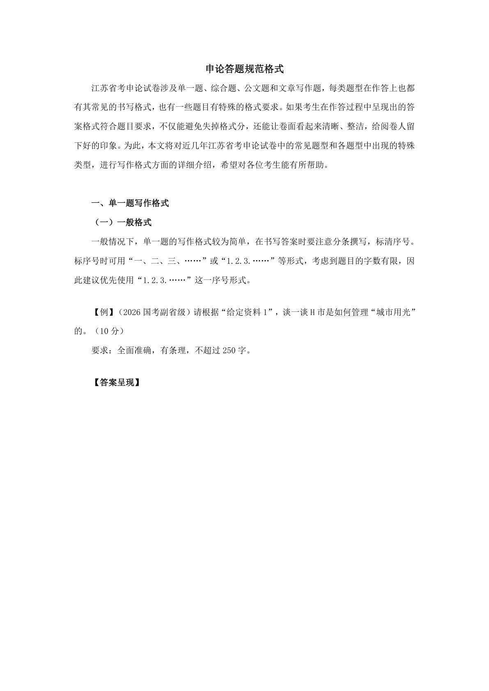
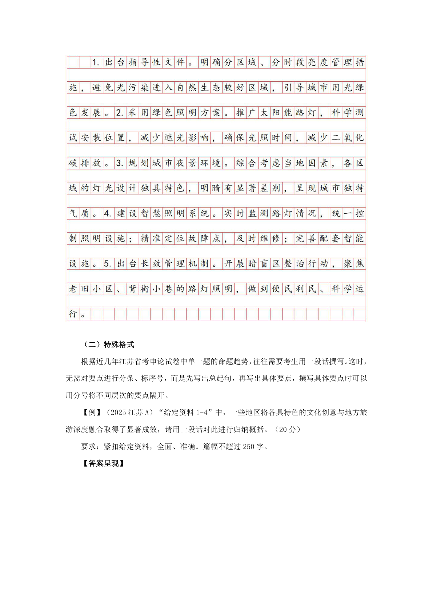
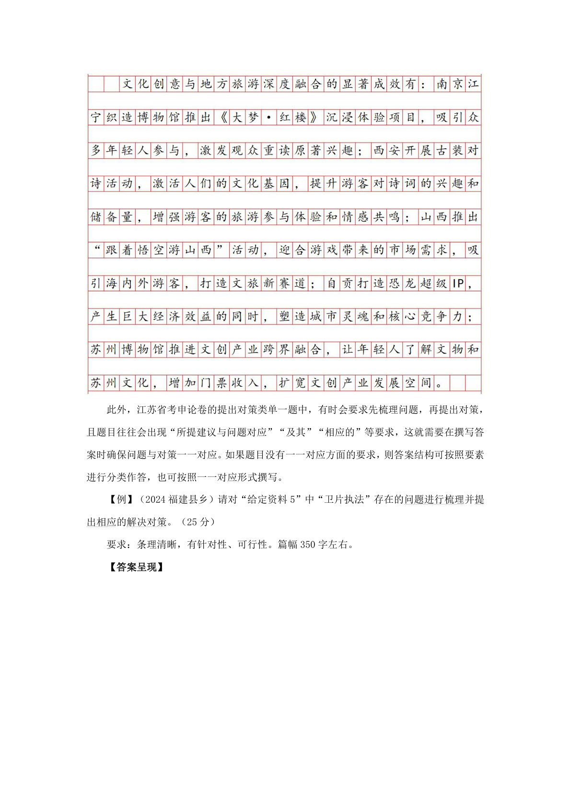
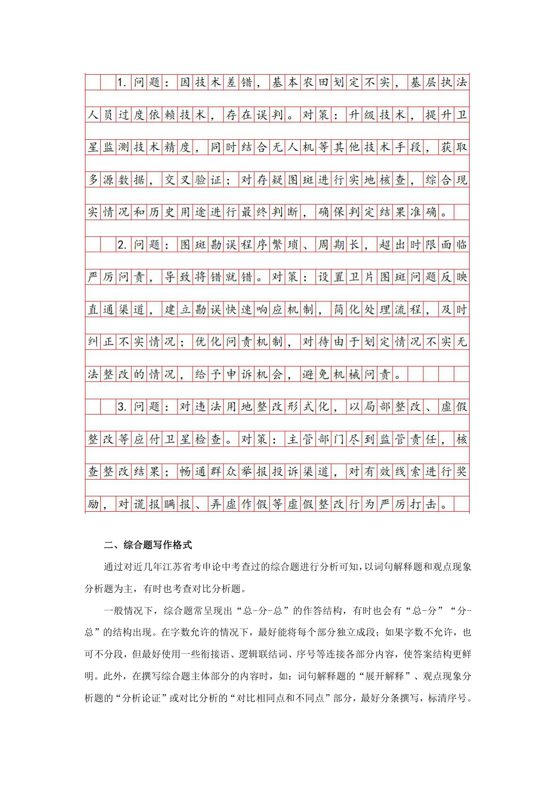
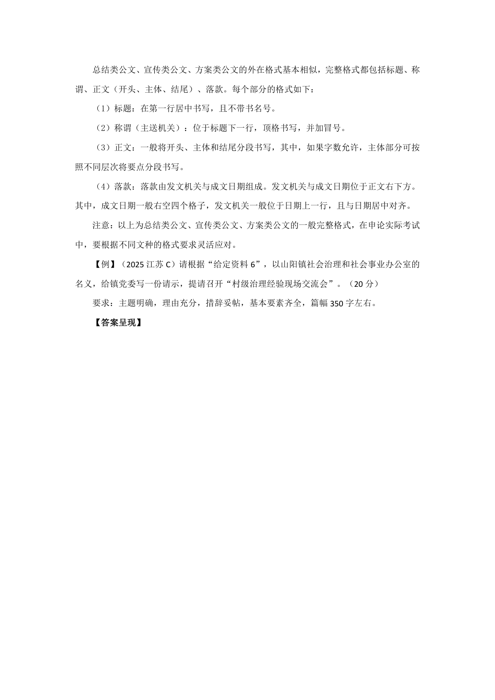
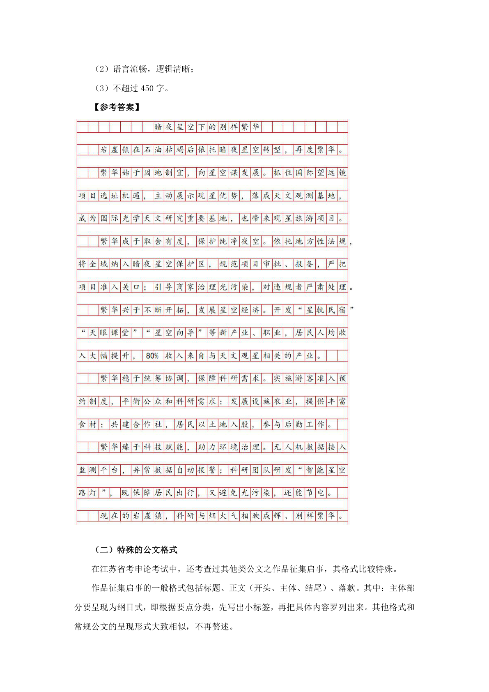
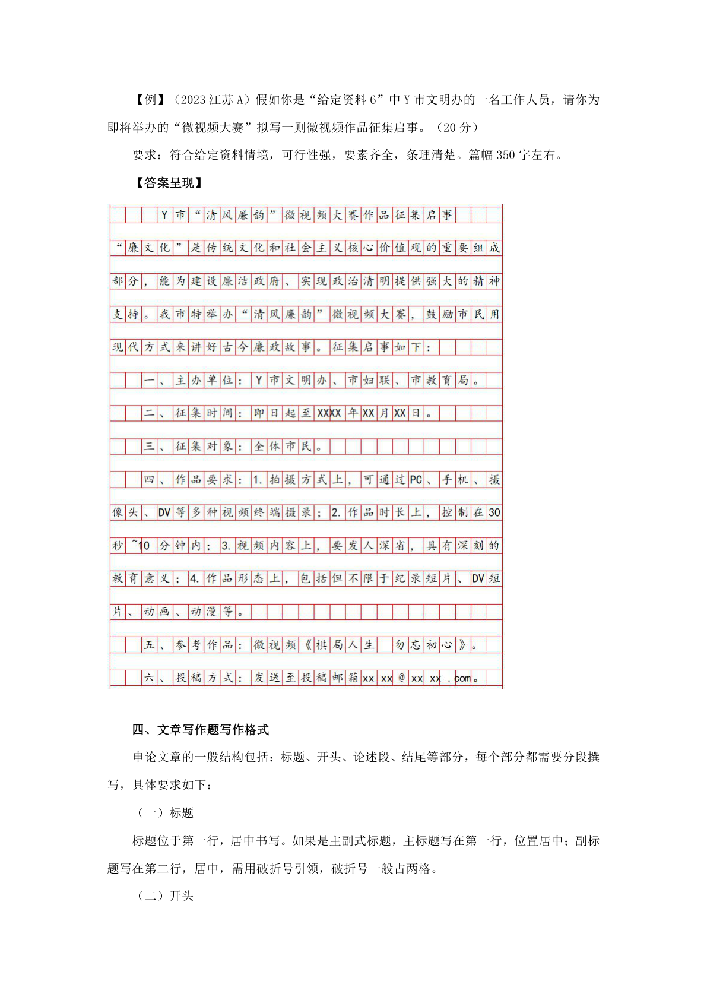
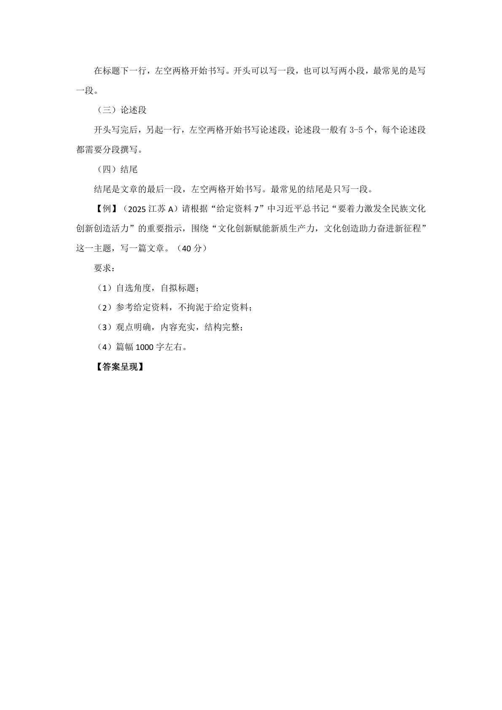
【申论】素材运用方法
申论素材运用方法
申论素材大致分为申论规范词、申论金句、申论事例、热点政策、热点话题和优秀范文
等。下面小粉笔将每一部分素材的运用路径进行详细阐释：
一、申论规范词的运用方法
积累申论规范词的运用场景往往是在作答单一题、综合题、公文题过程中，面对事例型
资料、案例型资料、口语化、冗长性表述等，能运用积累的规范词汇进行概括，这样既能够
踩到要点，又能够表达准确。如：全时段监测的意思是“一天24 小时不间断地对设备运行、
环境状态、安全指标等进行持续监控”，意味着资料中出现类似表述，可以用全时段监测来
概括。
【例】校企合作的适用场景：学校与企业一起合作。
答题使用示例：
根据资料，概括出广东省在促进职业教育发展方面的做法。
要求：全面、准确，不超过65 字。
答题演示：
“在深圳职业技术学院，每个专业群联合一家世界500 强企业或行业领军企业，共建一
所特色产业学院。”该校党委书记杨欣说，目前学校与企业共建了华为ICT 学院、比亚迪应
用技术学院等14 所特色产业学院。学校还依托广州财经职教集团、各专业建设指导委员会
等平台，引企入校，建设校内实训基地，为学生提供实习岗位，学生在校内即可进行企业岗
位实操与顶岗实习。“长期以来，白天鹅宾馆与广州市旅游商务职业学校、顺德职业技术学
院等院校联合培养人才，通过‘订单班’‘管培生专班’等模式，实现专业与行业对接、教
学与服务衔接、职业教育与终身学习对接。”他说，目前白天鹅宾馆员工中共有职业院校毕
业生500 人，占员工总人数的68%，校企协同育人精准培养了大量产业所需人才。
〖（1）阅读“在深圳职业技术学院，每个专业群联合一家世界500 强企业或行业领军
企业，共建一所特色产业学院”可知，学校和企业一起建设特色产业学院，可概括出要点：
校企合作，共建特色产业学院。（2）“学校还依托广州财经职教集团、各专业建设指导委
员会等平台，引企入校，建设校内实训基地，为学生提供实习岗位”提示做法，可摘抄出要
点：引企入校，建设校内实训基地，提供实习岗位。（3）“联合培养人才，通过‘订单班’
‘管培生专班’等模式”提示做法，可摘抄出要点：通过“订单班”“管培生专班”联合培
养人才。总结以上内容，主要介绍了加强产教融合，培养人才的相关做法，可提炼出概括性
较强的“推进产教融合”作为总括词前置。〗
参考答案：
推进产教融合。校企合作，共建特色产业学院，通过“订单班”“管培生专班”联合培
养人才；引企入校，建设校内实训基地，提供实习岗位。
二、申论金句的运用方法
积累申论金句的运用场景往往是：1.金句中含有申论规范词，可作为概括事例型资料、
案例型资料、口语化、冗长性表述等的答案；2.金句中含有要点分类的逻辑依据，可作为我
们整合要点或论述观点的论述层次；3.金句可作为道理论据，直接引用，论证相关观点。如：
【例1】《中共中央国务院关于锚定农业农村现代化扎实推进乡村全面振兴的意见》
中的金句：支持发展绿色高效种养，推进农产品精深加工，培育农业精品品牌，促进全产业
链开发。金句中包含推进农产品精深加工，培育农业品牌，促进全产业链开发等规范词，可
用来概括冗长表述。
答题使用示例：
根据资料，指出H 市的案例为壮大乡村产业提供了什么启示。
要求：全面、准确，不超过35 字。
答题演示：
山药是我家乡的特产，也是我家餐桌上的“常客”。今年过年回家，我惊喜地发现，桌
上多了几张“新面孔”：山药大麻花、山药千层酥，还有山药酒。形态变化的背后，是产业
的跃迁。以前产品单一，只能卖原料，靠天吃饭不说，还可能出现“丰产不丰收”的情况。
现在，逐步向卖加工品、卖品牌转变。企业通过精深加工，开发出冻干山药、山药锅巴、山
药粉等产品，附加值翻了几番；电商产业园里，“电商+产业+物流”全产业链融合发力，一
箱箱山药产品发往全国各地。地还是那些地，人还是那些人，产业的面貌却焕然一新。
〖资料开头简要介绍了地方特产山药，接着提到过去山药产业存在的问题，引出“逐步
向卖加工品、卖品牌转变”，说明推动了农产品的精深加工和品牌化发展，下文中“企业通
过精深加工……”“电商产业园里，‘电商+产业+物流’全产业链融合发力”，提示不仅推
动了精深加工，还发展了农村电商，实现了农业、加工业、服务业的全产业链开发，可概括
为：推进农产品精深加工，培育农业品牌，推动农村电商发展，促进全产业链开发。〗
参考答案：
推进农产品精深加工，培育农业品牌，推动农村电商发展，促进全产业链开发。
【总结】例1 是利用金句中的规范词，概括提炼资料中的冗长、口语化等表述。为此，
建议各位考生注意挖掘金句中的规范词，并进行积累适用场景。
【例2】习总书记金句：要因地制宜发展新质生产力，坚持全面推进传统产业转型升级、
积极发展新兴产业、超前布局未来产业并举，加快建设现代化产业体系。金句重点提到推进
传统产业转型升级、积极发展新兴产业、超前布局未来产业，是当前构建现代化产业体系的
主攻方向。可作为产业发展方面要点的梳理依据。
答题使用示例：
某同学在作答题目“根据‘给定材料’，概括Z 省在构建现代化产业体系方面的主要举
措”时，提炼出以下要点。请你归纳整合这些要点，提炼出逻辑清晰的答案。
要点：
①实施产业创新工程，加快新能源、新材料、航空航天、低空经济等战略性新兴产业集
群发展。
②推进传统产业转型升级，强化产业基础再造和重大技术装备攻关，发展先进制造业集
群。
③超前布局未来产业，探索多元技术路线、典型应用场景、可行商业模式、市场监管规
则。
④推动技术改造升级，促进制造业数智化转型。
⑤实施新技术新产品新场景大规模应用示范行动，加快新兴产业规模化发展。
⑥创新监管方式，建立未来产业投入增长和风险分担机制。
参考答案：
一、推进传统产业转型升级。1.强化产业基础再造和重大技术装备攻关，发展先进制造
业集群。2.推动技术改造升级，促进制造业数智化转型。
二、积极发展新兴产业。1.实施产业创新工程，加快新能源、新材料、航空航天、低空
经济等战略性新兴产业集群发展。2.实施新技术新产品新场景大规模应用示范行动，加快新
兴产业规模化发展。
三、超前布局未来产业。1.探索多元技术路线、典型应用场景、可行商业模式、市场监
管规则。2.创新监管方式，建立未来产业投入增长和风险分担机制。
【总结】例2 是利用金句中的分类逻辑，整理相关要点，使答案逻辑更为清晰。为此，
建议各位考生注意挖掘金句中的逻辑，并进行逻辑积累。
【例3】习总书记金句：人要大力弘扬斗争精神，勇于挺身而出、迎难而上，善于战风
险、迎挑战、克难关。本金句围绕“作风建设”这一话题展开，可作为“斗争精神”方面观
点的论述内容。
答题使用示例：
对观点“要坚持发扬斗争精神”进行论述。要求：不少于200 字。
参考答案：
要坚持发扬斗争精神。习近平总书记指出，建立中国共产党、成立中华人民共和国、实
行改革开放、推进新时代中国特色社会主义事业，都是在斗争中诞生、在斗争中发展、在斗
争中壮大的。敢于斗争、善于斗争，这是人民共和国波澜壮阔的奋斗史给予我们的启示，也
是谱写新时代中国特色社会主义更加绚丽华章的必然要求。中国式现代化是一项前无古人的
开创性事业，艰巨性和复杂性前所未有，前进道路上必然会遇到各种不确定、难预料的风险
挑战。处于实现中华民族伟大复兴关键时期、改革发展攻坚克难重要阶段，我们要大力弘扬
斗争精神，勇于挺身而出、迎难而上，善于战风险、迎挑战、克难关，以昂扬斗志迎接挑战、
以奋进拼搏开辟未来，不断夺取新时代伟大斗争新胜利。
【总结】例3 是利用金句的论证说服力，论证相关观点。为此，建议各位考生注意抓牢
金句所围绕的主题、观点，当遇到与储备金句有关的观点时，可直接引用金句，论述文章，
增强文章论证力，美化文章的语言。
三、申论事例的运用方法
积累申论事例的运用场景往往是作为事实论据，论证相关观点，增强文章的论证说服力。
一般情况下，我们会按照“主体+做法+结果+启示”的逻辑，简单概括事例，作为事实论据，
论证有关观点。
【例】我们可将“最美教师”郑万众的事例概括为：全国“最美教师”郑万众（主体），
多年来扎根县域职业教育一线，他以严师匠心培育技能人才，带领学子登上国际赛场；他深
耕科研创新、热心社会服务，用专利成果助力企业发展，以志愿服务温暖乡邻（做法+结果）。
这启示我们，新时代教师要以担当和匠心，在职业教育与乡土实践中贡献力量。这一事例可
作为职业教育、技能报国等话题的论据。
答题使用示例：
对观点“发展职业教育、培育技能人才，是实现技能报国的重要途径”进行论述。
参考答案：
发展职业教育、培育技能人才，是实现技能报国的重要途径。职业教育一头连着课堂、
一头连着国家发展，为各行各业输送高素质技术技能人才，是筑牢实业根基、建设制造强国
的关键支撑。全国“最美教师”郑万众，多年来扎根县域职教一线，以严师匠心为国家培养
大批优秀技能人才。他深耕科研创新，用多项专利成果助力企业技术突破，带领学生服务乡
村与社会，把个人所学、育人之功，真正转化为服务国家、奉献社会的实际行动。这充分说
明，职业教育大有可为，技能人才大有作为，以匠心育匠人、以技能报国家，正是新时代教
育者与奋斗者最鲜明的担当。
【总结】按照“主体+做法+结果+启示”的逻辑，精炼概括事例，并作为相关观点的事
实论据，增强文章的论述说服力。
四、热点政策解读的运用方法
积累热点政策的运用场景往往是：1.热点政策中含有申论规范词，可作为概括事例型资
料、案例型资料、口语化、冗长性表述等的答案；2.热点政策中含有要点分类的逻辑依据，
可作为我们整合要点或论述观点的论述层次；3.热点政策可作为道理论据，直接引用，论证
相关观点。运用方法类似前面金句，此处省略。
五、热点话题分析的运用方法
分析热点话题能够帮助我们拓展论述视角，丰富论述内容，清晰论述层次，热点话题的
运用场景往往是：1.热点话题分析中含有申论规范词，可作为概括事例型资料、案例型资料、
口语化、冗长性表述等的答案【运用方法类似前面金句，此处省略】；2.热点话题分析中的
分析逻辑，可作为我们整合要点或论述观点的论述层次。
【例】乡村文化振兴的意义在于：
（1）以文化为媒介，实现乡村乡风文明。一是能营造团结友爱风尚。乡村文化建设能
够凝聚精神力量……进而营造团结友爱的乡村新风尚。二是能营造诚实守信氛围。加强乡村
文化建设，传播“恪守信义”的家风家训……营造“人人知诚信、人人讲诚信”的良好氛围。
三是能营造互帮互助风气。开展多种形式的文化活动能够加强村民间的互动交流……营造邻
里互助、积极向上的文明新风尚。
（2）以文化为支撑，促进乡村经济发展。以文化引领乡村振兴，能够为乡村经济注入
不竭动力。一是促进产业融合。乡村文化建设能挖掘当地特色文化资源，利于乡村依托当地
文化特色，吸引游客，发展旅游业……促进第一产业与第三产业的融合。二是调整产业结构。
乡村文化建设能助推旅游业的发展……使乡村产业结构趋于合理化。
（3）以文化为载体，增强乡村治理效能。一是能强化干部素养。实施乡村文化振兴能
增加乡村领导干部的人文素养、精神素养，能提高乡村领导干部的治理智慧、治理眼界，有
利于提高乡村社会治理水平。二是能提高乡民素养。优秀文化的弘扬和传承能够提高乡民文
化水平和道德素养，……能增强其参与乡村治理的积极性，增强乡村治理效能。
答题使用示例：
对观点“文化振兴是乡村振兴的题中应有之义，对乡村振兴具有引领和推动作用”进行
论述。
参考答案：
文化振兴是乡村振兴的题中应有之义，对乡村振兴具有引领和推动作用。振兴乡村文化
能以文化为媒介，营造团结友爱风尚，营造诚实守信氛围，营造互帮互助风气，进而实现乡
村乡风文明；振兴乡村文化能以文化为支撑，促进乡村产业发展，调整乡村产业结构，进而
促进乡村经济发展；振兴乡村文化能以文化为载体，强化干部治理能力，提高乡民文化素养，
进而增强乡村治理效能。可以说，乡村文化振兴是乡村振兴的有效手段，为此，需要统筹和
协调多方面力量，建立以政府为主导、以农民为主体、全社会参与的乡村文化治理体系，激
发农村文化发展的内生动力。
【总结】热点话题分析往往从“意义”“问题”“原因”“对策”等维度，按照一定逻
辑层次分析各维度的内容，其中，每个维度下的内容分析都可作为观点论述的维度、论述层
次等，需要考生挖掘热点话题分析的分析层次、分析逻辑，并灵活使用。
六、赏析优秀范文的运用方法
赏析优秀范文能够帮助我们学习范文写作结构，学习标题、开头、主体论述段、结尾等
撰写优点，学习范文中的语言表达，积累范文中的优秀金句等。范文赏析的运用场景往往是：
1.挖掘优秀范文的文章结构，可积累作为搭建申论文章结构的学习资料；2.挖掘优秀范文中
标题、开头、主体论述段、结尾的写作亮点，可积累作为撰写申论文章的写作技巧；3.挖掘
优秀范文中的论述方法，可作为自身论述的特色；4.挖掘优秀范文中的优美表达，如：名人
名言、道理论述等，可积累作为文章撰写的语言亮点；5.挖掘优秀范文中的经典论据，可积
累作为申论文章的论据，丰富文章论述，增强论述论证力。
【例】（2025 年江苏B 卷）请根据“给定资料7”中党的二十届三中全会关于“深入推
进依法行政”方面的要求，围绕“贴心服务提升行政执法质效为民理念激发社会发展活力”
这一主题，联系实际，写一篇文章。
【优秀范文】
贴心服务彰显执法温度为民理念激活发展动能
【标题赏析：标题突出了“贴心服务提升行政执法质效为民理念激发社会发展活力”
这一主题，形式上采用对称式结构，使标题更加完整、饱满。】
（1）依法行政乃政治文明之要，法治建设之核。（2）党的二十届三中全会明确提出要
“深入推进依法行政”，并且要求促进政务服务标准化、规范化、便利化，这为执法工作指
明了方向。（3）在全面建设法治政府的新征程上，唯有将贴心服务融入执法全过程，以为
民理念创新执法方式，才能真正提升执法质效，才能在法治中国的宏伟蓝图上，绘制出浓墨
重彩且意义深远的新画卷。
【开头赏析：★内容方面。范文的开头是紧扣“贴心服务提升行政执法质效为民理念
激发社会发展活力”这一主题展开的。首先，开头点出主题，做到了主题明确。其次，对“贴
心服务提升行政执法质效为民理念激发社会发展活力”这一主题进行了分析阐述，指出了：
（1）推进依法行政的必要性；（2）如何推进执法工作的政策指导；（3）如何全面建设法
治政府——贴心服务，为民理念。★文字表达方面。使用了“唯有……才能……”等关联词，
使语言表达有逻辑性；长短句配合使用，使语言表达有节奏感。】
深入推进依法行政，要践行执法为民的根本宗旨，筑牢依法行政的思想根基。（1）时
代在不断发展，行政执法工作应顺势而为，改变过去“重管理”的思维模式，把“重服务”
作为执法工作的重心，它强调的是严格执法的同时，提供高效、便捷、人性化的服务。（2）
市场监管部门在检查天然气管道时，推行“执法+服务”工作模式，贴心服务为企业、热情
高效办实事，（3）这种服务型执法体现了执法部门执法为民的服务理念，促进了经济社会
的和谐稳定发展。可以说，坚持以人民为中心的发展思想，让执法工作既有力度又有温度。
【论述段1 赏析：★观点句：范文的观点句是紧扣“贴心服务提升行政执法质效为民
理念激发社会发展活力”这一文章主题提出的。形式上，它在段首处直接写出，位置突出，
容易发现。内容上，关键词突出，内容要点明确，可以明显看出主要围绕“执法为民”展开
论述。★论述内容：（1）如何在践行执法为民的宗旨上，推进依法行政——重服务；（2）
如何在践行执法为民的宗旨上，推进依法行政——“执法+服务”工作模式；（3）在践行执
法为民的宗旨上，推进依法行政的意义。注意：以上几个方面的内容都是紧扣“深入推进依
法行政，要践行执法为民的根本宗旨，筑牢依法行政的思想根基”这个观点句进行分析论述
的，论述的针对性强，内容层次丰富。在论述方法上采用了讲道理与举例子相结合的方式，
论述充实深刻。】
深入推进依法行政，要优化行政执法的机制体制，夯实依法行政的制度保障。（1）“综
合查一次”联合执法机制通过多部门联合执法，并且加强执法过程智慧化监管，为企业“远
程把脉”；“三书同送”制度则在处罚的同时，提供信用修复和合规建议……这些创新机制
不仅规范了执法行为，又提升了服务精度，既体现了法律的刚性，又展现了执法的温度。因
此，（2）要提升行政执法质效，必须注重制度机制的完善，通过构建科学合理的执法流程、
强化跨部门执法协作、优化执法资源配置等措施，确保执法活动既公正高效，又能激发社会
经济发展的活力。
【论述段2 赏析：★观点句：范文的观点句是紧扣“贴心服务提升行政执法质效为民
理念激发社会发展活力”这一文章主题提出的。形式上，它在段首处直接写出，位置突出，
容易发现。内容上，关键词突出，内容要点明确，可以明显看出主要围绕“优化行政执法的
机制体制”展开论述。★论述内容：（1）举例说明优化行政执法机制体制带来的意义；（2）
如何优化行政执法机制体制的对策。注意：以上几个方面的内容都是紧扣“深入推进依法行
政，要优化行政执法的机制体制，夯实依法行政的制度保障”这个观点句进行分析论述的，
论述的针对性强，内容层次丰富。在论述方法上采用了讲道理与举例子相结合的方式，论述
充实深刻。】
深入推进依法行政，要创新执法服务的方式方法，提升依法行政的实际成效。（1）一
方面，利用科技赋能执法工作，提高执法效率。譬如用好互联网、大数据、人工智能等技术，
广泛应用智能监控系统、移动执法终端，对城市交通、社会治安、食品安全、生态环境等领
域进行实时监控、精准管理。（2）另一方面，创新宣传方式，增强法治的传播力。譬如“直
播带货”式普法，用网络语言讲解法律知识；打造动漫普法品牌，让法律条文“活”起来；
改编评弹剧目，用传统艺术形式讲述法治故事……总之，执法工作要以创新为引领，充分利
用科技手段，将执法与普法相结合，才能实现良法善治的目标。
【论述段3 赏析：★观点句：范文的观点句是紧扣“贴心服务提升行政执法质效为民
理念激发社会发展活力”这一文章主题提出的。形式上，它在段首处直接写出，位置突出，
容易发现。内容上，关键词突出，内容要点明确，可以明显看出主要围绕“创新执法服务的
方式方法”展开论述。★论述内容：（1）如何创新执法服务的方式方法——科技赋能；（2）
如何创新执法服务的方式方法——创新宣传。注意：以上几个方面的内容都是紧扣“深入推
进依法行政，要创新执法服务的方式方法，提升依法行政的实际成效”这个观点句进行分析
论述的，论述的针对性强，内容层次丰富。在论述方法上采用了讲道理与举例子相结合的方
式，论述充实深刻。】
新时代呼唤新作为，新使命需要新担当。让我们以党的二十届三中全会精神为指引，持
续推动执法理念创新、机制创新、方式创新，让法治成为护航发展、温暖民心的坚实力量，
在全面建设社会主义现代化国家的新征程上谱写更加绚丽的法治篇章！
【结尾赏析：范文的结尾回扣了“贴心服务提升行政执法质效为民理念激发社会发展
活力”这个主题，并且进行了总结提升。】
【申论】金句积累
一、领导讲话
（一）提振经济
1.要把握扩大内需这一战略基点，以供给侧结构性改革为主线，着力打通生产、分配、
流通、消费各个环节。——习近平
金句“百宝箱”：
（1）论证论述用途：此金句可论述“扩大内需”“复苏经济”“经济改革”等话题。
（2）内含逻辑梳理：此金句中，“生产”“分配”“流通”“消费”属于生产消费方面的
的四个流程，提示整理要点逻辑或论述段的论述层次可以按照“生产-分配-流通-消费”这
一思维展开。
（3）内含规范表达：此金句包含“扩大内需”“供给侧结构性改革”“打通生产、分配、
流通、消费各个环节”等规范表达，可作为申论规范词进行积累。
2.要围绕产业链部署创新链、围绕创新链布局产业链，推动经济高质量发展迈出更大步
伐。——习近平
金句“百宝箱”：
（1）论证论述用途：此金句可论述“高质量发展”“产业发展”“创新发展”等话题。
（2）内含逻辑梳理：本金句阐述了产业链和创新链的关系，二者相辅相成、互为支撑，
是我国当前处理创新与产业、科技与经济这两组关系的权威指示。
（3）内含表达亮点：此金句中的“围绕产业链部署创新链”“围绕创新链布局产业链”
表述简洁，句式对仗，表述生动，可积累为亮点表述。
3.面向未来，我们要把满足国内需求作为发展的出发点和落脚点，加快构建完整的内需
体系。——习近平
金句“百宝箱”：
（1）论证论述用途：此金句可论述“营造消费环境”“扩大消费需求”“实现经济稳步
发展”等话题。
（2）内含逻辑梳理：本金句为“递进”逻辑，首先阐述了内需是未来发展的重要手段，
接着从“构建完整内需体系”这一个层面阐释如何满足内需。
（3）内含规范表达：此金句包含“满足国内需求”“构建内需体系”等规范表达，可作
为申论规范词进行积累。
4.依靠改革应对变局、开拓新局，坚持目标引领和问题导向，既善于积势蓄势谋势，又
善于识变求变应变，紧紧扭住关键，积极鼓励探索，突出改革实效，推动改革更好服务经济
社会发展大局。——习近平
金句“百宝箱”：
（1）论证论述用途：此金句可论述“改革发展”“发展经济”“开拓新局”等话题。
（2）内含规范表达：此金句包含“坚持目标引领”“坚持问题导向”“积极鼓励探索”
等规范表达，可作为申论规范词进行积累。
（3）内含表达亮点：此金句中的“善于积势蓄势谋势”“善于识变求变应变”句式相同，
表述生动，可积累为亮点表述。
（二）民生建设
1.各级党组织特别是基层党组织要在联系服务群众上多用情，在宣传教育群众上多用心，
在组织凝聚群众上多用力。——习近平
金句“百宝箱”：
（1）论证论述用途：此金句可论述“干部作风”“群众工作”等话题。
（2）内含逻辑梳理：此金句中，“联系服务群众”“宣传教育群众”“组织凝聚群众”提
示如何做好“群众工作”的三个层面方法，可作为整理要点逻辑或论述段的论述层次。
（3）内含规范表达：此金句包含“联系服务群众”“宣传教育群众”“组织凝聚群众”
等规范表达，可作为申论规范词进行积累。
2.要始终把人民安居乐业、安危冷暖放在心上，用心用情用力解决群众关心的就业、教
育、社保、医疗、住房、养老、食品安全、社会治安等实际问题，一件一件抓落实，一年接
着一年干，努力让群众看到变化、得到实惠。——习近平
金句“百宝箱”：
（1）论证论述用途：此金句可论述“民生底线”“社会保障”“以人为本”等话题。
（2）内含逻辑梳理：此金句中，“用心用情用力”提示为民谋福祉，需要内心里装着人
民，情感上爱着人民，行动上为着人民，提示整理要点逻辑或论述段的论述层次可以按照“用
心-用情-用力”这一思维展开。同时，“就业”“教育”“社保”“医疗”“住房”“养老”“食
品安全”“社会治安”提示做好“民生工作”会涉及的领域，也可作为整理要点逻辑或论述
段的论述层次。
（3）内含亮点表达：此金句包含“用心用情用力”“把人民安居乐业、安危冷暖放在心
上”“一件一件抓落实”“一年接着一年干”等亮点表达，可作为文章论述素材。
3.要坚持以人民为中心的发展思想，切实解决好群众的操心事、烦心事、揪心事，扎实
做好下岗失业人员、高校毕业生、农民工、退役军人等重点群体就业工作。——习近平
金句“百宝箱”：
（1）论证论述用途：此金句可论述“就业”“服务群众”“民生工作”等话题。
（2）内含逻辑梳理：此金句中，“下岗失业人员”“高校毕业生”“农民工”“退役军人”
提示“帮扶重点群体就业”的对象种类，可作为整理要点逻辑或论述段的论述层次。
（3）内含亮点表达：此金句包含“坚持以人民为中心的发展思想”“解决好群众的操心
事、烦心事、揪心事”等亮点表达，可积累为写作素材，增加文采。
4.民心相通是政策沟通、设施联通、贸易畅通、资金融通的基础和支撑。——习近平
金句“百宝箱”：
（1）论证论述用途：此金句可论述“民心相通”“干群关系”等话题。
（2）内含逻辑梳理：此金句中，“政策沟通”“设施联通”“贸易畅通”“资金融通”，指
出了让民心相通的四方面措施，可作为整理要点逻辑或论述段的论述层次。
（3）内含亮点表达：本金句在用词方面颇为讲究，“相通”“沟通”“联通”“畅通”“融
通”含义相似、搭配自然、构词简单，能和多个动名词组句，应用范围广，可积累为写作素
材，增加文采。
（三）脱贫攻坚
1.要完善移民搬迁扶持政策，确保搬迁群众搬得出、稳得住、能致富。——习近平
金句“百宝箱”：
（1）论证论述用途：此金句可论述“扶贫搬迁”“脱贫攻坚”“小康社会”等话题。
（2）内含逻辑梳理：此金句中，“搬得出”指的是搬迁要继续做好，让百姓乐意搬迁；
“稳得住”说的是要让百姓能在新地方稳定下来，让百姓乐享安居；“能致富”说的是增加
搬迁群众的发展能力，让百姓生计有着落。以上内容指出了易地搬迁扶贫的三方面措施，可
作为整理要点逻辑或论述段的论述层次。
（3）内含亮点表达：本金句中“搬得出、稳得住、能致富”逻辑层次鲜明，较为押韵，
朗朗上口，便于记忆，可积累为写作素材，增加文采。
2.要瞄准突出问题精准施策，做好剩余贫困人口脱贫工作，因地制宜发展区域特色产业，
加快建立防止返贫监测和帮扶机制，加强易地扶贫搬迁后续扶持，多措并举巩固脱贫成果。
——习近平
金句“百宝箱”：
（1）论证论述用途：此金句可论述“产业扶贫”“巩固脱贫成果”等话题。
（2）内含逻辑梳理：此金句从“做好脱贫工作”“防止返贫帮扶”“加强后续扶持”这
三个层次阐释如何多措并举巩固脱贫成果，可作为整理要点逻辑或论述段的论述层次。
（3）内含规范表达：此金句包含“精准施策”“因地制宜”“区域特色产业”“防止返贫
监测和帮扶机制”等多个规范词组，可作为申论规范表达进行积累。
3.脱贫摘帽不是终点，而是新生活、新奋斗的起点。接下来要做好乡村振兴这篇大文章，
推动乡村产业、人才、文化、生态、组织等全面振兴。——习近平
金句“百宝箱”：
（1）论证论述用途：此金句可论述“乡村振兴”“脱贫攻坚”“全面振兴”等话题。
（2）内含逻辑梳理：本金句中的“推动乡村产业、人才、文化、生态、组织等全面振
兴”提示做好乡村振兴的五个领域，可作为整理要点逻辑或论述段的论述层次。
（3）内含亮点表达：本金句包含“脱贫摘帽不是终点，而是新生活、新奋斗的起点” 这
一亮点表达，可积累为写作素材，增加文采。
4.要巩固和拓展产业就业扶贫成果，做好易地扶贫搬迁后续扶持，推动脱贫攻坚和乡村
振兴有机衔接。——习近平
金句“百宝箱”：
（1）论证论述用途：此金句可论述“产业扶贫”“易地搬迁”“就业扶贫”等话题。
（2）内含逻辑梳理：本金句逻辑比较清晰，先从微观上，指出要巩固、拓展产业就业
扶贫成果，接着从中观角度，指出要做好易地扶贫搬迁后续扶持，最后从宏观上，指出要推
动脱贫攻坚和乡村振兴的衔接。
（3）内含规范表达：此金句包含“拓展产业就业扶贫”“搬迁后续扶持”等多个规范词
组，可作为申论规范表达进行积累。
（四）乡村建设
1.加快补齐农业农村发展短板，不断缩小城乡差距，让农业成为有奔头的产业，让农民
成为有吸引力的职业，让农村成为安居乐业的家园。——习近平
金句“百宝箱”：
（1）论证论述用途：此金句可论述“乡村振兴”“缩小城乡差距”“农业发展”等话题。
（2）内含逻辑梳理：此金句从“农业发展”“农民幸福”“农村安居”等层次论述“推
进农村发展，缩小城乡差距”，可作为整理要点逻辑或论述段的论述层次。
（3）内含亮点表达：此金句包含“补齐农业农村发展短板”“让农业成为有奔头的产业”
“让农民成为有吸引力的职业”“让农村成为安居乐业的家园”等亮点表达，可将其积累为
申论亮点表述。
2.乡村振兴，人才是关键。要积极培养本土人才，鼓励外出能人返乡创业，鼓励大学生
村官扎根基层，为乡村振兴提供人才保障。——习近平
金句“百宝箱”：
（1）论证论述用途：此金句可论述“人才振兴”“基层人才建设”“返乡就业创业”等
话题。
（2）内含逻辑梳理：此金句从“培养本土人才”“鼓励外出能人返乡创业”“鼓励大学
生村官扎根基层”等层次论述“加强人才建设，促进乡村振兴”，可作为整理要点逻辑或论
述段的论述层次。
（3）内含规范表达：此金句包含“积极培养本土人才”“鼓励外出能人返乡创业”“鼓
励大学生村官扎根基层”“人才保障”等规范表达，可将其积累为申论规范表述。
3.要坚持乡村全面振兴，抓重点、补短板、强弱项，实现乡村产业振兴、人才振兴、文
化振兴、生态振兴、组织振兴，推动农业全面升级、农村全面进步、农民全面发展。——习
近平
金句“百宝箱”：
（1）论证论述用途：此金句可论述“乡村振兴”“三农建设”等话题。
（2）内含逻辑梳理：此金句中的“乡村产业振兴、人才振兴、文化振兴、生态振兴、
组织振兴”提示实现乡村振兴的几方面对策，可作为整理要点逻辑或论述段的论述层次。
（3）内含亮点表达：此金句中的“抓重点、补短板、强弱项”“农业全面升级、农村全
面进步、农民全面发展”等表达句式一致，较为押韵，朗朗上口，可积累为写作素材，增加
文采。
4.农业农村现代化是实施乡村振兴战略的总目标，坚持农业农村优先发展是总方针，产
业兴旺、生态宜居、乡风文明、治理有效、生活富裕是总要求。——习近平
金句“百宝箱”：
（1）论证论述用途：此金句可论述“农业农村发展”“乡村现代化”“振兴乡村”等话
题。
（2）内含逻辑梳理：此金句中的“产业兴旺”“生态宜居”“乡风文明”“治理有效”“生
活富裕”提示做好农业农村优先发展的五大领域，可作为整理要点逻辑或论述段的论述层次。
（3）内含规范表达：此金句包含“农业农村现代化”“产业兴旺”“乡风文明”等规范
表达，可将其积累为申论规范表述。
（五）生态环保
1.要高度重视海洋生态文明建设，加强海洋环境污染防治，保护海洋生物多样性，实现
海洋资源有序开发利用，为子孙后代留下一片碧海蓝天。——习近平
金句“百宝箱”：
（1）论证论述用途：此金句可论述“资源利用”“可持续发展”“环境防治”等话题。
（2）内含逻辑梳理：此金句整体上是“总-分”结构，先讲了要重视海洋生态文明建设，
再从“污染防止”“保护生物多样性”“有序开发”这三个方面阐释海洋生态文明建设的具体
措施，可作为整理要点逻辑或论述段的论述层次。
（3）内含规范表达：此金句含有“保护海洋生物多样性”“实现海洋资源有序开发利用”
等规范表达，可作为日常申论规范词进行积累。
2.人不负青山，青山定不负人。绿水青山既是自然财富，又是经济财富。——习近平
金句“百宝箱”：
（1）论证论述用途：此金句可论述“两山论”“生态文明”“美丽中国”等话题。
（2）内含逻辑梳理：此金句中的“人不负青山”强调我们应保护环境，“青山不负人”
说明环境的改善让我们经济更发展，生活更美好。明确了生态与经济之间的相互依存关系。
（3）内含亮点表达：此金句中的“既是自然财富，又是经济财富”表达句式一致，较
为押韵，可积累为写作素材，增加文采。
3.要牢固树立绿水青山就是金山银山的理念，统筹山水林田湖草系统治理，优化国土空
间开发格局，继续打好蓝天、碧水、净土保卫战，抓好生态环境保护。——习近平
金句“百宝箱”：
（1）论证论述用途：此金句可论述“生态环保”“三大保卫战”“美丽中国”等话题。
（2）内含逻辑梳理：此金句从“环保理念”“统筹治理”“开发布局”这几个层面阐释
如何打好三大保卫战，可作为整理要点逻辑或论述段的论述层次。同时，此金句中的“打好
蓝天、碧水、净土保卫战”提示生态保护要做好“空气”“水”“土地”这三个方面的保护，
也可作为整理要点逻辑或论述段的论述层次。
（3）内含规范表达：此金句包含“统筹山水林田湖草系统治理”“优化国土空间开发
格局”“打好蓝天、碧水、净土保卫战”等多个规范性对策，可积累为申论规范词汇。
4.杀鸡取卵，竭泽而渔的发展方式走到了尽头，顺应自然、保护生态的绿色发展昭示着
未来。——习近平
金句“百宝箱”：
（1）论证论述用途：此金句可论述“节约资源”“持续发展”“绿色发展”等话题。
（2）内含逻辑梳理：此金句从正反两方面谈“绿色发展”的重要性。金句中的“杀鸡
取卵，竭泽而渔的发展方式”是对过去粗放式发展方式的形象表达；“顺应自然、保护生态
的绿色发展”定下了现在及未来的发展方向。
（3）内含亮点表达：此金句包含“杀鸡取卵”“竭泽而渔”等比喻式表达，可将其积累
为申论亮点表述。
（六）人文建设
1.文化文艺工作者、哲学社会科学工作者都肩负着启迪思想、陶冶情操、温润心灵的重
要职责，承担着以文化人、以文育人、以文培元的使命。——习近平
金句“百宝箱”：
（1）论证论述用途：此金句可论述“培育文化”“文化工作者担当”“坚守职责”等话
题。
（2）内含逻辑梳理：此金句从“肩负启迪思想心灵方面的责任”“承担育人化人方面的
职责”这两个层面阐释文化工作者的使命，可作为整理要点逻辑或论述段的论述层次。
（3）内含亮点表达：本金句使用了很多成语，表达较为生动，文采非常好，同学们可
积累类似表达形式，让语言更加出彩。
2.历史文化遗产是不可再生、不可替代的宝贵资源，要始终把保护放在第一位。——习
近平
金句“百宝箱”：
（1）论证论述用途：此金句可论述“文化资源”“保护文化”等话题。
（2）内含规范表达：此金句包含“历史文化资源”这一规范表述，可积累为申论规范
词汇。
（3）内含亮点表达：此金句包含“不可再生”“不可替代”“始终把保护放在第一位”
等亮点表达，可将其积累为申论亮点表述。
3.文学艺术创造、哲学社会科学研究首先要搞清楚为谁创作、为谁立言的问题，这是一
个根本问题。人民是创作的源头活水，只有扎根人民，创作才能获得取之不尽、用之不竭的
源泉。——习近平
金句“百宝箱”：
（1）论证论述用途：此金句可论述“创作源泉”“艺术创造”“以人为本”等话题。
（2）内含逻辑梳理：此金句先讲“创作为了谁”，属于“目的”的层面，再讲“创作源
自谁”，属于“方式”的层面，逻辑上由“目的”到“方式”，十分清晰。
（3）内含亮点表达：此金句包含“为谁创作、为谁立言的问题”“取之不尽、用之不竭
的源泉”等亮点表达，可将其积累为申论亮点表述。
4.文化文艺工作者要走进实践深处，观照人民生活，表达人民心声，用心用情用功抒写
人民、描绘人民、歌唱人民。——习近平
金句“百宝箱”：
（1）论证论述用途：此金句可论述“创作要实践”“表达人民心声”“用心用情用功创
作”等话题。
（2）内含逻辑梳理：此金句从“走进实践”“贴近群众”“为群众发声”这几个层面阐
释如何用心用情用功进行创作，可作为整理要点逻辑或论述段的论述层次。
（3）内含亮点表达：此金句中的“走进实践深处”“观照人民生活”“表达人民心声”
“用心用情用功”等表述简洁规范，节奏感强，句式整齐划一，语义联贯。
二、古语俗语
（一）政治管理类
政之所兴在顺民心，政之所废在逆民心。——《管子·牧民》
乐民之乐者，民亦乐其乐；忧民之忧者，民亦忧其忧。——《孟子·梁惠王下》
善为国者，爱民如父母之爱子、兄之爱弟，闻其饥寒为之哀，见其劳苦为之悲。——刘
向《说苑·政理》
无常乱之国，无不理之民。——吴兢《贞观政要·公平》
知屋漏者在宇下，知政失者在草野。——王充《论衡》
圣人无常心，以百姓心为心。——《老子·第四十九章》
利民之事，丝发必兴；厉民之事，毫末必去。——万斯大《周官辨非》
事之当革，若畏惧而不为，则失时为害。——宋·程颐
不乱离，不知太平之难；不疾痛，不知无病之福；故君子于安思危，于治忧乱。——魏
源《默觚·学篇》
出政施教，赏善罚爆。——墨子
天下不能常治，有弊所当革也；犹人身不能常安，有疾所当治也。——何坦《西畴老人
常言》
邪正者治乱之本，赏罚者治乱之具。——宋·林逋
治其本，朝令而夕从；救其末，百世不改也。——苏轼《关陇游民私铸钱与江淮漕卒为
盗之由》
能用众力，则无敌于天下矣；能用众智，则无畏于圣人矣。——《三国志·吴志·孙权
传》
乃知国家事，成败固人心。——宋·王禹戎
天下之治，有因有革，期于趋时适治而已。——《宋史·徐禧传》
窃闻致理之要，惟在于安民，安民之道，在察其疾苦而已。——张居正《请蠲积逋以安
民生疏》
一切事物的趋于完善，都是来自适当的改革。——巴尔扎克
一政之举，一令之施，合乎其德智力者存，违于其德智力者废。——清·严复
上者，民之表也。表正，则何物不正！——孔子
治大国，若烹小鲜。——老子《道德经》
（二）人文素养类
自古皆有死，民无信不立。——孔子
言无常信，行无常贞，惟利所在，无所不倾，若是则可谓小人矣。——荀子
若有人兮天一方，忠为衣兮信为裳。——卢照龄
失足，你可以马上恢复站立；失信，你也许永难挽回。——富兰克林
人而无信，不知其可也。——孔子
诚者，天之道也；思诚者，人之道也。——孟子
德不广不能使人来，量不宏不能使人安。——明·刘基
无德而官，则官不足以劝有德；无功而赏，则赏不足以劝有功。——宋·李觏
太上有立德，其次有立功，其次有立言，虽久不废，此谓不朽。——《左传》
人重官非官重人，德胜才毋才胜德。——明·李廷机
德薄而位尊，知小而谋大，力小而任重，鲜不及矣。——孔子
人有德于我也，不可忘也；吾有德于人也，不可不忘也。——《战国策》
才者，德之资也；德者，才之帅也。——司马光
土扶可城墙，积德为厚地。——李白
侈而惰者贫，而力而俭者富。——韩非子
千教万教，教人求真；千学万学，学做真人。——陶行知
与其隐己之短，不如隐己之长。——费尔巴哈
三人行，必有我师焉，择其善者而从之，其不善者而改之。——《论语》
敬教劝学，建国之大本；兴贤育才，为政之先务。——明·朱之瑜《朱舜水集·劝兴》
立身以立学为先，立学以读书为本。——欧阳修
足国之道，节用裕民，而善臧其余。——荀子
一粥一饭当思来之不易，半丝半缕恒念物力维艰。——明朝·朱柏庐《朱子家训》
取之有度，用之有节，则常足。——司马光·资治通鉴
责人之心责己，爱己之心爱人。再三须慎意，第一莫欺心。——《重订增广》
道德普遍地被认为是人类的最高目的，因此也是教育的最高目的。——赫尔巴特
（三）民生建设类
天下之本在国，国之本在家。——《孟子》
从来治国者，宁不忘渔樵。——谢榛
民者，国之根也，诚宜重其食，爱其命。——《三国志·吴书·骆统传》
衣食以厚民生，礼义以养其心。——许衡
一年之计，莫如树谷；十年之计，莫如树木；终身之计，莫如树人。——《管子》
故人不独亲其亲，不独子其子。使老有所终，壮有所用，幼有所长，鳏寡孤独废疾者，
皆有所养。——《礼记·礼运》
玉不琢，不成器；人不学，不知道。是故古之王者建国君民，教学为先。——《礼记·学
记》
忽略健康的人，就是等于在与自己的生命开玩笑。——陶行知
凡为医之道，必先正己，然后正物。——《医工论》
进则救世，退则救民；不能为良相，亦当为良医。——张仲景
为人臣者，以富乐民为功，以贫苦民为罪。——贾谊
民心所归，大事可成；民心所离，立见灭亡。——清·陈天华
为政之道，以顺民心为本。——宋·程颐《代吕公著应诏上神宗皇帝》
国以民为本，社稷亦为民而立。——孟子
求木之长者，必固其根本；欲流之远者，必浚其泉源；思国之安者，必积其德义。——
魏征
天下顺治在民富，天下和静在民乐，天下兴行在民趋于正。——明·王廷相《慎言·御
民篇》
夫民，别而听之则愚，合而听之则圣。——《管子·君臣上》
为国者以富民为本，以正学为基。——汉·王符《潜夫论·务本》
民者，国之根也，诚宜重其食，爱其命。——《三国志·吴书·骆统传》
享天下之利者，任天下之患；居天下之乐者，同天下之忧。——宋·苏轼《赐新除中大
夫守尚书右丞王存辞免恩不允诏》
（四）生态环保类
山林茂而禽兽归之，山林险则鸟兽去之，树成荫而众鸟息焉，无土则人不安居，无人则
土不守，得地则生，失地则死。——《荀子致士》
取之有度，用之有节，则常足。取之无度，用之不节，则常不足。——北宋·司马光
竭泽而渔，岂不得鱼，而明年无鱼；焚薮而田，岂不获得，而明年无兽。——《吕氏春
秋·首时》
斩伐养长，不失其时，故山林不童，而百姓有余材也。——《荀子·王制篇》
为人君而不能谨守其山林菹泽草莱，不可以立为天下王。——春秋·管仲
水光山色与人亲，说不尽，无穷好。——李清照
仓满鼠雀喜，草尽兔狐愁。——包拯
人法地，地法天，天法德，道法自然。——老子
只有服从大自然，才能战胜大自然。——达尔文
大自然是善良的慈母，同时也是冷酷的屠夫。——雨果
人们常常将自己周围的环境当作一种免费的商品，任意地糟蹋而不知加以珍惜。——
甘哈曼
大地给予所有的人是物质的精华，而最后，它从人们那里得到的回赠却是这些物质的垃
圾。——惠特曼
非但不能强制自然，还要服从自然。——埃斯库曼斯
我们违背大自然的结果是，我们破坏了自然景观的美，自然动态的美和天籁的美。—
—诺曼·卡曾斯
人生欲求安全，当有五要：一要清洁空气；二要澄清饮水；三要流通沟渠；四要扫洒房
屋；五要日光充足。——南丁格尔
我们不要过分陶醉于我们人类对自然界的胜利。对于每一次这样的胜利，自然界都对我
们进行报复。——恩格斯
大自然不会欺骗我们，欺骗我们的往往是我们自己。——卢梭《论科学与艺术》
当人类欢呼对自然的胜利之时，也就是自然对人类惩罚的开始。——黑格尔
（五）创新发展类
苟日新，日日新，又日新。——《礼记·大学》
不日新者必日退。——程颐、程颢《二程集·河南程氏遗书·卷第二十五》
敏于观察，勤于思考，善于综合，勇于创新。——宋叔和
或者创新，或者消亡。尤其是在技术推动型产业，再也没有比成功消失得更快的了。—
—比尔·萨波里托
周虽旧邦，其命惟新。——诗经
穷则变，变则通，通则久。——周易·系辞下
苟利于民，不必法古；苟周于事，不必循旧。——汉·刘安
不断变革创新,就会充满青春活力；否则,就可能会变得僵化。——歌德
现在一切美好的事物，无一不是创新的结果。——穆勒
人类的创新之举是极其困难的，因此便把已有的形式视为神圣的遗产。——蒙森
盖有非常之功，必待非常之人。——班固《汉书·武帝纪第六》
邦之兴，由得人也；邦之亡，由失人也。得其人，失其人，非一朝一夕之故，其所由来
者渐矣。——白居易《策林·辨兴亡之由》
我劝天公重抖擞，不拘一格降人才。——龚自珍《己亥杂诗》
致天下之治者在人才，成天下之才者在教化。——胡瑗
天下之贤,与天下用之，何必出于己。——明·张居正
知贤之近途，莫急于考功。功成考，则治乱暴而明，善恶信则直。——汉·王符
用人者，取人之长，辟人之短；教人者，成人之长，去人之短也。——清·魏源
慈父不能爱无益之子，仁君不能畜无用之臣。——三国·曹植
治国经邦，人才为急。——孙中山
人才难得而易失，人主不可不知之。——梁佩兰
人才难得又难知，就要爱惜人才，就要用人不疑。——周扬
只有受过教育的人才是自由的。——爱比克泰德
（六）法律制度类
治国者，圆不失规，方不失矩，本不失末，为政不失其道，万事可成，其功可保。——
诸葛亮《便宜十六策·治乱第十二》
国皆有法，而无使法必行之法。——《商君书·画策第十八》
有道以统之，法虽少，足以化矣；无道以行之，法虽众，足以乱矣。——刘安《淮南子·泰
族训》
变法则民智，变法则民强，变法则民生。——谭嗣同
国无常强，无常弱。奉法者强则国强，奉法者弱则国弱。——韩非子《韩非子·有度》
立善法于天下，则天下治；立善法于一国，则一国治。——王安石《周公》
规外求圆，无圆矣。法外求平，无平矣。——宋祁《宋景文笔记》
法令者，民之命也，为治之本也。——《商君书·定分》
车轻道近，则鞭策不用；鞭策之所用，道远任重也。刑罚者，民之鞭策也。——《尸子》
水者火之备，法者止奸之禁也。——桓宽《盐铁论·申韩》
求必欲得，禁必欲止，令必欲行。——《管子·版法》
有法必然治国，无法必然乱国；法有权威则治，法无权威则乱。——董必武
圣王者不贵义而贵法，法必明，令必行，则已矣。——《商君书·画策》
家有常业，虽饥不饿；国有常法，虽危不亡。——《韩非子·饰邪》
天下之事，不难于立法，而难于法之必行；不难于听言，而难于言之必效。——张居正
法令既行，纪律自正，则无不治之国，无不化之民。——包拯《上殿札子》
法立，有犯而必施；令出，唯行而不返。——王勃《上刘右相书》
政令时，则百姓一，贤良服。——荀子《荀子·王制》
法律就是秩序，有好的法律才有好的秩序。——亚里士多德
法律总是把全民的安全置于个人的安全之上。——西塞罗
人类受制于法律，法律受制于情理。——托·富勒
【言语】100个江苏省常考实词
一、彰显
释义：①明显；显著：名声～；②鲜明地显示：英雄们的壮举，～了中国人民威武不屈
的崇高品格。
例句1：伟大建党精神集中展现了中国共产党一以贯之的理想信念、精神状态、意志品
质，彰显了中国共产党永葆先进、永担重任、永远奋斗、永怀初心等政治品格。
（《人民网》）
例句2：文化是一座城市的灵魂，只有文化的浸润，城市才能彰显其特色与气质。
（2020 青海第36 题）
二、传承
释义：指学问、技艺等，在师徒间传授和继承的过程：文化～。
例句1：光阴流转，岁月更替，英雄的精神在华夏大地上不断传承并发扬光大，从李大
钊、董存瑞、邱少云、黄继光，再到王继才、陈红军、申亮亮、张超，可谓是吾道不孤、
精神长存。
（《人民网》）
例句2：紫禁城不仅拥有中国古代最宏伟的宫殿建筑群，还拥有一百八十余万件珍贵文
物和大量的文献档案，承载着丰富的历史信息和文化印记，是中华民族记忆传统、传承
文脉、增强文化自信的重要资源。
（2021 甘肃第35 题）
三、引导
释义：①带领；领路：党～人民从胜利走向新的胜利、～旅游团观光。②指引；诱导：
老师对学生要善于～。
例句1：如果通过开设婚恋课能够引导有所需的年轻人理性看待爱情，找到适合自己的
“药方”，何乐而不为呢？
（《人民网》）
例句2：由于受到长久以来分散生产经营的影响，农村电商未能切实体会到农产品品牌
效应所能带来的巨大收益，以至于对建立品牌的兴趣不足，缺乏动力。所以，引导农村
电商主体强化品牌意识至关重要。
（2022 江苏（C 类）第37 题）
四、标志
释义：①表明特征的记号或事物：警告～。②表明某种特征：这条生产线的建成投产，～
着工厂的生产能力提高到了一个新的水平。
例句1：陶器是人类创造的最早的生活工具之一，标志着人类从采集、渔猎的流动生活，
进入到了从事种植、养殖的安定生活。
（《绍兴网》）
例句2：由于各地发展仍不平衡，很多地方的经济发展具有很大的潜力，大国经济发展
上的区域间的差异，既是作为发展中国家尚不发达的重要经济标志，同时也是可以保持
更长期持续增长“梯度效应”的重要条件。
（2022 江苏（A 类）第35 题）
五、积淀
释义：①积累沉淀：多年来～了深厚的艺术功底；②所积累沉淀下来的事物（多指文化、
致死、经验等）：历史的～、深厚的艺术～。
例句1：养生在我国有着悠久的历史和深厚的文化积淀，早在两千多年前的《黄帝内经》
就奠定了养生学的理论基础。
（《人民网》）
例句2：中华优秀传统文化是中华民族的突出优势，积淀着中华民族最深沉的精神追求，
为中华民族生生不息、发展壮大提供了丰厚滋养，潜移默化地影响着中国人的思想方式
和行为方式，至今仍然具有鲜活的时代价值。
（2020 青海（B 卷）第32 题）
六、质疑
释义：提出疑问：对此问题进行～。
例句1：安徽太湖，一段女县长高情商回应“如何年纪轻轻当上县长”质疑的视频在网
络走红。
（《人民网》）
例句2：中国的建筑风格从来都是兼容并蓄的，并不一味拒绝“洋建筑”，关键在于如
何在借鉴的过程中，呈现出建筑的文化主体意识。而人们之所以质疑当下的一些西式建
筑热，就在于其舍本逐末、生搬硬套，缺少了对历史的敬畏和对文化的理解。
（2021 四川第22 题）
七、融入
释义：融合；混入：～血脉。
例句1：将家庭花草养护与插花培训、垃圾分类等公益活动融入基层，倡导建立绿色、
环保、低碳、和谐的人居环境。
（《人民网》）
例句2：打通实体经济与金融服务之间的梗阻，提升经济社会运行效率，才能让金融这
一经济血脉融入到实体经济的高质量发展中去。
（2020 广东选调第43 题）
八、渗透
释义：①两种气体或两种可以互相混合的液体，彼此通过多孔性的薄膜而混合。②液体
从物体的细小空隙中透过：雨水～了泥土。③比喻一种事物或势力逐渐进入到其他方面
（多用于抽象事物）：经济～。
例句1：自今年开始，短视频直播平台并不止步于娱乐，开始向吃喝玩乐消费领域渗透。
（《人民网》）
例句2：智能科技将渗透到战争全要素全过程，物联网、智联网与脑联网成为战争的基
础，从而使得战争全息透明，呈现战争控制“有人”、战场交锋“无人”的状态。
（2022 国考（副省级）第23 题）
九、浸润
释义：①（液体）渐渐渗入；滋润。②指液体与固体接触时，液体附着在固体的表面上。
③医学上指由于细菌等侵入或由于外物刺激，机体的正常组织发生白细胞等的聚集。
例句1：以巩固全国文明城市、国家卫生城市创建成果为契机，以培育和践行社会主义
核心价值观为根本，积极开展道德教育和实践活动，全面提高公民道德素质，培育知荣
辱、讲正气、作奉献、促和谐的良好风尚，崇德向善的文明之风浸润着整座城市。
（《人民网》）
例句2：每次去浯溪，除了看它的碑林和山水之外，最令我流连忘返的，是元结当年弹
琴的浯台。那里是浯溪的最高点，每到月夜，元结总是执一把琴，坐在那里对江而弹。
琴声激活了浯溪山水，浯溪山水浸润了他的琴声。元结与山水融合在一起，任千古忧愁
万古功名顺琴声而去，随水而流，在虚无中掺杂着沉重，在缥缈中偶尔跳出一声叹息。
（2020 江苏（B 类）第40 题）
十、遏制
释义：制止；控制。
例句1：通过规范群众治丧和悼念活动，加大执法巡查力度，使公共场所停放遗体、搭
建灵棚、燃放鞭炮、焚烧纸钱，在丧事活动广邀宾客、大操大办、铺张浪费等陋习得到
有效遏制，减轻了群众丧葬负担。
（《海南日报》）
例句2：虽然付出了巨大的努力，中国的环境质量仍只是“局部有所好转，总体尚未遏
制。形势仍然严峻，压力继续加大”。不断加剧的污染，正成为河山不能承受之重。
（河南2019 第7 题）
十一、调整
释义：改变原有的情况，使适应客观环境和要求：～价格。
例句1：每逢年末，我国会根据经济社会发展情况，对部分进口商品的关税税率进行调
整。（《人民网》）
例句2：当今世界正经历百年未有之大变局，新一轮科技革命和产业变革深入发展，国
际力量对比深刻调整，和平与发展仍然是时代主题，人类命运共同体理念深入人心。
（2022 年国考（副省级）
第28 题）
十二、承载
释义：托着物体，承受它的重量：～人口压力、～梦想。
例句1：任何一所历史悠久的大学都必然会保存大量珍贵的文物。这些有形的文化遗产，
承载着大学的沧桑历史、光荣传统、核心价值与使命担当。
（《光明网》）
例句2：一些戏曲剧目是脍炙人口的经典之作，深受群众喜爱。这既是因为其艺术价值
高，更是因为其中蕴含着深沉的家国情怀，承载着追求正义与美好的理想。
（2021 广东选调第50 题）
十三、象征
释义：①用具体的事物表现某种特殊意义。②用来象征某种特殊意义的具体事物：火
炬时光明的～。
例句1：珊瑚制品作为吉祥和财富的象征，是藏族群众的传统配饰。
（《人民网》）
例句2：古有西王母“其状如人，豹尾虎齿”，今有豹纹服饰。可见，在人类文化中，豹
总是和时尚联系在一起。同时，豹也多是勇猛的象征，希腊罗马神语中的酒神狄奥尼索
斯就多以骑豹或者披豹皮的形象出现，《诗经·郑凤·羔裘》中的君子也是“羔裘豹饰，孔
武有力”。
（2021 四川下第22 题）
十四、侵蚀
释义：①逐渐侵害使变坏：病菌～人体。②暗中一点点地侵占（财物）：～公款。
例句1：在不良文化和资本的侵蚀下，青少年吸食电子烟的情况日趋严峻，亟须完善法
律及综合性措施。
（《光明网》）
例句2：有些海蚀洞的“天花板”上还有个大窟窿，阳光照进来，就像罗马的万神殿一
样，这可能是因为顶部岩石本身质地脆弱，更易被侵蚀。
（2019 河南选调第2 题）
十五、消除
释义：使不存在；除去（不利的事物）：～隐患。
例句1：消除电动自行车的安全隐患，不仅要靠“人防”，而且要靠“技防”；不仅要
堵住上楼的漏洞，也要提供楼下的相应配套服务。
（《光明网》）
例句2：消除形式主义仅仅有外力干预还远远不够，如果不能对形式主义的文化、社会、
历史深层次的根源釜底抽薪，那就不能真正除弊。
（2019 黑龙江第31 题）
十六、破除
释义：除去（原来被人尊重或信仰的事物）：～迷信。
例句1：深化人才发展体制机制改革，破除人才培养、使用、评价、服务、支持、激励
等方面的体制机制障碍。
（《光明网》）
例句2：作为家长，应当破除以分数和升学为目标的狭隘认知，兼顾孩子的道德品质、
身体素质、生活技能、文化修养、行为习惯等多方面的发展。
（《人民网》）
十七、严谨
释义：①严密谨慎：办事～。②严密细致：思想～、文章结构～。
例句1：大家都秉持着严谨的态度来学习，练习过程中虽有差错，但是在老师的指导下
一遍又一遍地纠正，大家都已汗流浃背也没有埋怨，最后大家都通过了考核。
（《人民网》）
例句2：身为一名严谨科学的从业者，必须对诱惑保持足够的警惕，维护考古记录的独
立性，这是一名考古学者的自警，也是整个考古学学科的自尊。
（2022 江苏（A 类）第40 题）
十八、濡染
释义：①沾染；受熏陶：～精神、～浸润。②为写字作画而把毛笔在墨汁或染料中沾湿：～
大笔写文章。
例句1：环境育人的作用机理，恰如哲学大师、教育家涂又光教授提出的著名“泡菜理
论”所阐释的，泡菜的味道最终取决于泡菜汤，这一理论非常形象地说明了环境对人的
濡染作用。
（《人民网》）
例句2：过年回家，大概是三件事：一是省亲，慰藉思念之苦；二是乡愁，归于故土之
亲；三是仪式，濡染精神传承。
（2019 贵州选调第34 题）
十九、渲染
释义：①中国画技法的一种，以水墨或淡彩涂染画面，以烘染物像，增强艺术效果。②
比喻夸大地形容：小事一桩，用不着～。
例句1：虽说欲加之罪，何患无辞，但清者自清，浊者自浊，罔顾事实地捏造“罪状”、
渲染威胁，必然会搞出一些贻笑大方的奇葩言论。
（《人民网》）
例句2：防控疫情，应该多一些“小题大做”的警惕意识。小题大做，不是无理取闹，
更不是渲染紧张气氛，而是体现出对疫情的戒备，以及对防控疫情的重视。
（2020 湖南第24 题）
二十、显示
释义：明显地表现：～威力、作品～了作者纯熟的写作技巧。
例句1：从疫情数据分析显示，出现重症的感染者90%以上没有接种疫苗。
（《人民网》）
例句2：增强现实技术，不仅展现了真实世界的信息，而且将虚拟的信息同时显示出来，
两种信息相互补充、叠加。
（2019 江西第23 题）
二十一、显露
释义：原来看不见的变成看得见；现出。
例句1：受益于一系列稳经济政策措施，中东国家经济显露缓慢复苏态势，部分行业复
苏迹象明显。
（《人民网》）
例句2：各人的生命中都有一段历史，观察他以往的行动的性质，便可以近似于猜测地
预断他此后的变化，那变化的萌芽虽然尚未显露，却已经潜伏在它的胚胎之中。
（2019 上海（B 类）第16 题）
二十二、探究
释义：探索研究；探寻追究：～原因。
例句1：当“社死”成为网络热搜，探究其背后的社会心理、舆论生态、道德法律，也
就有了其现实意义。
（《人民网》）
例句2：考古并不是简单地将珍贵文物挖掘出来呈现给世人，而是一门探究历史真相的
严肃科学。
（2019 江苏（B 类）第32 题）
二十三、描绘
释义：画出；描画：生动地～出某种生活。
例句1：深入学习领导人重要讲话精神，对照领导人为湖南擘画的蓝图，联系省党代会
为湖南描绘的画卷。
（《人民网》）
例句2：“西风烈，长空雁叫霜晨月。霜晨月，马蹄声碎，喇叭声咽。雄关漫道真如铁，
而今迈步从头越。从头越，苍山如海，残阳如血”是毛泽东同志写于1935 年的一首词。
该词描绘的是红军征战贵州娄山关的场景。
（2020 上海（A 类）第115 题）
二十四、反映
释义：①比喻把客观事物的实质表现出来。②把情况或意见等告诉上级或有关部门。
③物体的形象反着映射到另一个物体上。④通常指机体接受和回答客观事物影响的活动
过程。人的心理（感觉、表象、观念、概念、情绪、愿望、意志等）是最高级的反映
形式。
例句1：全国公安队伍教育整顿开展以来，公安部聚焦网民留言反映的急难愁盼问题，
持续深化各项公安改革，围绕群众高频办理事项，大力推行“互联网+政务服务”，研
究推出一大批便民利民新举措。
（《人民网》）
例句2：总理在两会上所作的政府工作报告是一个代表民心、反映民意、体现民情的报
告，也是一个增强信心、鼓舞士气、催人奋进的报告。
（2018 广东第5 题）
二十五、准确
释义：行动的结果完全符合实际或预期：～的时间、计算～。
例句1：一个妙趣横生、鞭辟入里的比喻，既能深入浅出地把内涵丰富的思想简明扼要
地表达出来，又能准确传神地把寓意深远的思想传递出来，进而与交流者产生强烈共鸣。
（《党建网》）
例句2：半个世纪以来不断改进的年代测定技术，让我们能更加准确地推算年代，从而
为整部人类历史编纂更加准确的大事年表。
（2021 北京第68 题）
二十六、凝聚
释义：①气体由稀变浓或变成液体。②聚集；积聚。
例句1：科渡屯在党群理事会的带领下，大力开展村容村貌和乡风文明建设行动，在美
化家园的同时，更通过文艺作品凝聚民心、增强村民荣誉感和幸福感。村里的事，村民
说了算。
《人民网》
例句2：良好乡风具有浸润人心，引领向善，规范行为，凝聚力量的积极作用，要以实
施乡风文明培育行动为抓手，加强乡村德治，培育稳脱贫，促振兴的文化软环境。
（2020 广东第3 题）
二十七、凝结
释义：由气体变成液体或由液体成为固体：池面上～了薄薄的一层冰。也可用于抽象的
表达：鲜血～成的战斗友谊。
例句1：伟大建党精神是红色文化的起点，红色文化是伟大建党精神的见证、凝结和载
体，保护好、管理好、运用好红色资源，发挥红色文化的独特作用，对于传承和弘扬伟
大建党精神，具有重要意义。
《人民网》
例句2：在高山相夹的谷底，有时能直观地看到地形对云的塑造：气流翻山越岭被抬升
形成波动气流，在气流的波峰与波谷之前，云也随之上下扭曲。在一些情况下，大气温
度和高度呈反比，处于波谷处的温度更高，达不到云凝结的温度，而波峰处的温度可以
形成云，这样就形成了有云和无云条带反复交错的波状云天空。
（2021 内蒙古第38 题）
二十八、蔓延
释义：像蔓草一样不断向周围扩展：火势～、孤独在内心～。
例句1：要深入学习贯彻领导人重要论述精神，坚持人民至上、生命至上，把应对处置
这次本地疫情作为头等大事来抓，高度警觉起来，全面行动起来，严格扎实做好相关工
作，坚决防止疫情扩散蔓延。
《人民网》
例句2：近年来一些有悖于主流价值观和审美观的作品混入其中，甚至大行其道。而一
些观众尤其是年轻观众却对这些作品趋之若鹜，并由此产生认同和效仿，让不良思想渐
次蔓延。
（2021 四川下第21 题）
二十九、催生
释义：①用药物或其他方法使产妇的子宫急速收缩，促使胎儿出生：～药、～剂。
②比喻催促产品或作品等问世：～新产业、～新经济。
例句1：“十四五”时期，我国经济社会发展要以推动高质量发展为主题，加快构建新
发展格局，更加需要以科技创新催生新发展动能。
（《人民网》）
例句2：教育与互联网的结合催生了大规模网络公开课程这一在线教育形式，使得获取
教育资源更加便利，每门课程可以同时接纳的学生数量几乎没有限制，实现了优质教育
资源的低成本、广覆盖。
（2021 四川第20 题）
三十、展示
释义：清楚地摆出来；明显地表现出来：～作品。
例句1：为弘扬民族服饰文化，让传统文化之美回归大众，礼衣华夏汉服超模大赛在呼
和浩特市举行。本次活动共吸引了236 名汉服爱好者参与，共同在舞台上展示汉服之美。
（《人民网》）
例句2：现代体育比赛不仅是各国运动员速度与力量的竞技场，也是世界各国展示形象、
尖端科技与体育融合的大舞台。
（2021 内蒙古第22 题）
三十一、阐释
释义：阐述并解释：道理～得很清楚。
例句1：广大政治学研究者应立足我们党百年来的理论创新和实践探索，进一步总结阐
释党百年奋斗的历史经验和智慧，增强研究的民族性、自主性、时代性，为我们党领导
人民不断创造经济社会发展奇迹提供学理支撑。
（《人民网》）
例句2：无论是对外交往，还是著作演讲，“讲故事”不仅能阐释观念、触发思考，而
且能感染受众、拉近距离，最终在受众头脑中、心灵中获得双重共鸣。
（2021 广东第4 题）
三十二、妨碍
释义：干扰、阻碍，使事情不能顺利进行：～工作、～学习。
例句1：良好的金融监管并不会妨碍金融创新，反而是为金融创新和金融稳定提供保障。
所以，加强金融监管、维护金融稳定十分必要。
（《人民网》）
例句2：毛笔文化的特征，恰是中国传统文人群体人格的映照。在总体上，它应该淡隐
了，但这并不妨碍书法作为一种传统艺术光耀百世。
（2020 深圳第37 题）
三十三、激励
释义：激发鼓励：～将士。
例句1：开展青少年职业启蒙、职业体验，播下“技能梦想”的种子，激励广大青年走
技能成才、技能报国之路。
（《学习强国》）
例句2：劲道的公文语言或紧凑凝练、一语中的，或层层递进、步步深入，风格因人
而异，但都应起到触动人心、震撼人心、激励人心的效果。
（2020 上海（A 类）第4 题）
三十四、消失
释义：①（人或事物）逐渐减少以至没有：脸上的笑容～了。②（人或事物）不复存在：
他的身影～在人群之中。
例句1：正因为有了国家电网稳定的电力保障，在霍山县，百姓家中的柴油发电机正渐
渐“消失”。
（《人民网》）
例句2：近年来，西方观众对中国功夫片的套路、动作、术语等已颇为熟悉，中国功夫
的神秘感、陌生感在他们眼中逐渐消失，所以中国功夫片要体现作品的差异性，很有难
度。当下国产功夫电影在制作和传播方面并非一帆风顺，收获的口碑和奖杯都很难超越
传统功夫片。
（2018 国考（副省级）第36 题）
三十五、感悟
释义：有所感触而领悟：～初心使命、在奋斗中～到人生的真谛。
例句1：红色经典音乐凝聚着中华民族由危亡走向新生继而迈向辉煌的厚重历史，在党
史学习教育中，聆听、传唱和研究红色经典音乐，对多形式感悟伟大建党精神，全方位
汲取做好教书育人工作的精神力量具有重要意义。
（《人民网》）
例句2：至于“艺术求真”，是艺术家通过自己的感悟把事物的本质揭示出来，这是“源
于生活，高于生活”的艺术创作原则。
（2021 江苏（B 类）第34 题）
三十六、突破
释义：①集中兵力向一点进攻或反攻，打开缺口。②冲破（困难、限制等）。
例句1：在那场战争中，当地人亲眼目睹叙利亚装备的苏制防空导弹拖着长长的白线，
瞬间将突破防线的敌机击落。
（《人民网》）
例句2：路是自己走出来的，突破核心技术这个难题，说到底要靠我们自己奋发有为，
加速打造“中国芯”，以自主创新重塑技术格局。
（2020 浙江（B 类）第26 题）
三十七、打破
释义：①使物体破坏、损伤：～门窗。②突破原有的限制和约束。
例句1：人体的生物钟被打破时，机体会出现一系列的反应，长此以往，会出现记忆力
下降、影响免疫力、皮肤干燥、内分泌紊乱，进而诱发心脑血管疾病、影响视力等。
（《人民网》）
例句2：互联网发展初期，传统媒体出于新闻传播和培育新渠道的目的默许网络媒体进
行转载，“拿来主义”成为各大平台的“潜规则”。但过去一年来，这个定律似乎正在
被打破。
（2019 四川选调第28 题）
三十八、整理
释义：有条理有秩序：～行装、～房间。
例句1：22 日半夜，起草小组从中南海回来后，连夜奋战，按照周总理的口授，把讲话
稿整理成文。
（《中国共产党历史网》）
例句2：明末地理学家徐弘祖经34 年旅行，写有天台山、雁荡山、黄山、庐山等名山
游记17 篇和《浙游日记》《江右游日记》等著作，除部分散佚外，遗有60 余万字游记
资料，去世后由他人整理成《徐霞客游记》。
（2018 浙江选调第33 题）
三十九、控制
释义：①掌握住不使任意活动或越出范围；操纵：～疫情、～局势、～人数、自动～。
②使处于自己的占有、管理或影响之下：～局势、～金融市场。
例句1：饮食是热量的主要来源，尤其是一些糖分较高的水果和油腻的油炸食品，热量
更是高得吓人。所以，若想达到有效减肥的目的，首要任务就是控制住摄入食物的热量。
（《人民网》）
例句2：该地区对环境保护采取了强有力的措施，使水土流失现象得到控制，生态环境
向良性循环转变。
（2018 天津选调第12 题）
四十、羁绊
释义：缠住了不能脱身；束缚：挣脱～。
例句1：中国共产党人以伟大觉醒，突破旧思想的羁绊、旧制度的束缚，第一次实现了
政党属性与先进生产力、先进文化的对接，进而在中国政治舞台上脱颖而出，担当起主
导、引领中国社会发展进步的重任。
（《人民网》）
例句2：年龄大、资历老逐渐不再是一种优势，有时反而成了学习新事物的一种羁绊。
（2019 国考（副省级）第30 题）
四十一、改造
释义：①就原有的事物加以修改或变更，使适合需要：～旧房。②从根本上改变旧的、
建立新的，使适应新的形势和需要：～世界。
例句1：大力推进以人为核心的新型城镇化建设，加速实施县城老旧小区改造，努力改
善市民居住生活环境，进一步提升群众获得感、满意度。
（《人民网》）
例句2：战国时代，诸子百家风行一时。各家中有顺势而动的，想要因势利导，借助权
力来改造社会。
（2019 青海第17 题）
四十二、保障
释义：①保护（生命、财产、权利等），使不受侵犯和破坏：～人身安全。②起保障作
用的事物：安全是生产的～。
例句1：主产区要一如既往扛起粮食安全重任，主销区和产销平衡区也要行动起来，各
地要稳字当头、稳中求进，共同担负起保障粮食安全的重任。
（《人民网》）
例句2：在“重刑轻民”传统依然根深蒂固的中国，编纂民法典首先就要更新观念，强
化对公民私权利的立法保障，弘扬权利平等、意思自治、诚实信用、契约自由等民法的
精神。
（2018 湖北选调第72 题）
四十三、稳定
释义：①稳固安定；没有变动：水位～、局势～。②指物质不易被酸、碱、强氧化剂等
腐蚀，或不易受光和热的作用而改变性能。③使稳定：～情绪、～物价。
例句1：澳门回归祖国20 年来，社会保持稳定和谐，多元文化交相辉映。
（《人民网》）
例句2：具有“边缘型状态”的人往往缺乏稳定的自我认知，没有相对明确的自我形象。
有时候他们觉得自己充满力量，非常自信，似乎是全能的存在；有时候却又觉得自己好
像虚弱无力，一无是处，非常自卑。
（2020 国考（地市级）第40 题）
四十四、干预
释义：过问（别人的事）：不便～。
例句1：精神科会根据诊断标准，对青少年的状况进行筛查，一旦符合疾病诊断，尤其
是存在危及生命的风险时，就会采取相应的心理干预。
（《人民网》）
例句2：太多的干预，使得孩子缺乏自主；太多的期望，使得孩子难以承受；太多的责
备，使得孩子失去动力；太多的迁就，使得孩子不知约束。
（2019 浙江（A 类）第37 题）
四十五、延续
释义：照原来的样子持续下去；延长下去：会谈～了两个小时。
例句1：IP 顶层设计不仅要打造出好的IP 形象，更要构建一个IP 矩阵，通过持续运
营与开发，让其成为城市文化资产，产生可延续的价值。
（《中国文化报》）
例句2：由中晚唐到北宋，中国文化并未产生特别深刻的变化，其中主要的有两个，一
个是士大夫文化圈，一个是平民文化圈。前者趋“雅”，后者趋“俗”，似乎是双轨的，
这种情况延续于宋代以后。
（2021 上海（B 类）第4 题）
四十六、韵味
释义：①声韵所体现的意味：她的唱腔很有～。②情趣；趣味：这首诗～很浓。
例句1：马上就是中秋节了，市场上的月饼琳琅满目，很多人发现，今年的中秋月饼，
不但在馅料、外观上多种多样，而且充满了文化韵味，变成了“有文化的月饼”。
（《人民网》）
例句2：徽州的一景一物，较之粗犷的西北，是大相径庭的。那马头墙、小青瓦透出的
人文气息，浓郁得似乎连游客都成了诗的一部分。粉墙黛瓦，青山绿水，全然一派水墨
丹青的韵味。
（2020 浙江（B 类）第23 题）
四十七、优势
释义：能超过对方的有利形势：竞争～。
例句1：中西医结合医学不仅开辟了新的科研领域，同时也在临床服务中体现了独特而
不可或缺的优势。
（《健康报》）
例句2：小城镇具有低成本吸纳农村人口的先天性优势，是连接城市与乡村的重要节点。
（2018 江苏（C 类）第37 题）
四十八、干扰
释义：①扰乱；打扰：他正在工作，我不便去～他。②某些电磁振荡对无线电设备正常
接收信号造成妨碍：信号～。
例句1：一些西方国家声言不派官员参加，这种干扰冬奥会的企图不会得逞，更不会对
这一盛事的顺利举办产生任何影响。
（《人民网》）
例句2：巡视巡察坚持发现问题、形成震慑，成为了管党治党的重要利器。一些有问题
的干部心中不安，可又不想束手就擒，于是便铤而走险干扰巡视巡察。
（2019 青海第48 题）
四十九、躲避
释义：①故意离开或隐蔽起来，使人看不见：这几天他好像有意～我。②离开对自己不
利的事物：～风雨。
例句1：过去，法官查找财产、冻结账户，需要跑一家家的银行，登门临柜。往往是刚
查到一笔账款，还没来得及冻结，被执行人便通过网上银行转走了。躲猫猫、玩失踪、
跑路，成为一段时间“老赖”躲避债务的惯用办法。
（《人民日报》）
例句2：比特币发明的初衷之一就是躲避监管，具有匿名性、跨境流动便利等特征，这
些都使其逐渐成为“地下经济”的首选工具。
（2018 新疆兵团第23 题）
五十、规避
释义：设法避开，躲避：～实质性问题。
例句1：自去年5 月份以来，AA 及以下评级同业存单认购率一度跌至50% 以下，而
AA+
及以上的资质较好的股份行、城商行等银行能较好规避信用事件带来的负面影响，
进入“白名单”。
（《上海证券报》）
例句2：汛期恶劣的环境，让查找堤坝渗漏部位和渗漏入、出水口变得极为困难。而如
能及时对管涌渗漏进行快速检测，确定其具体位置、形状，采取相应有效措施，就能够
规避洪灾中可能发生的溃坝风险。
（2017 年新疆第4 题）
五十一、折射
释义：比喻把事物的表象或实质间接反映出来：家庭的变化～出社会的发展。
例句1：所谓的“黄金”座位，其实是一些父母错误的心理暗示，“座位焦虑”折射错
误的教育理念。
（《人民网》）
例句2：有家长认为，升学压力前移，竞争愈发激烈，实际上折射的是公众对优质教育
资源的渴求与公共教育资源配置不均衡、不充分之间的矛盾愈发突显。
（2020 广东选调第46 题）
五十二、反射
释义：光线、声波等从一种介质到达另一种介质的界面时返回原介质：水面微波粼粼，
在阳光～下宛如一个个小银碗。
例句1：只是用事件本身去感染着观众，观众从这些伟大工程的设计、制造过程中，自
然而然产生了一种崇敬之情，进而把这种崇敬之情反射到自己身处的国家之中。
（《今传媒》）
例句2：蚕蛾往往能巧妙避开捕食者，它们利用旋转的后翅来反射蝙蝠的声纳系统，从
而误导捕食者对捕食目标的定位。
（2019 黑龙江第29 题）
五十三、收集
释义：使聚集在一起：～资料。
例句1：近日，工信部通报QQ 音乐、小红书、豆瓣等38 款App 存在超范围收集用户个
人信息等违规行为，并提出限期整改要求。
（《人民网》）
例句2：研究显示，一种普通的沙漠苔藓能直接从空气中而不是地下吸收水分。此项发
现可被用于启发在发展中国家收集清洁饮用水的方法。包括仙人掌在内的大多数沙漠植
物，依靠强大的根系吸收稀有的地下水。
（2017 湖南第18 题）
五十四、制定
释义：制作编定，经过一定程序定出（法律、规程等）：～了一项政策。
例句1：秦皇岛银行将信用风险管理制度体系作为建设重点，按照新风险架构要求，梳
理制定了28 项信用风险管理制度，初步形成重点突出、流程清晰、管理科学的信用
风险管理制度体系。
（《人民网》）
例句2：如果不能对买方做出有威慑力的惩戒，他们挖掘患者信息的犯罪活动就不会停
止。针对这种情况，可以由政府部门统一制定医疗信息管理的网络安全标准，统一配置
高规格的防病毒软件，保证患者的信息不会在诊疗机构信息平台上被不良商家读取。
（2019 青海第54 题）
五十五、坚守
释义：①坚决守卫；不离开：～阵地。②坚定遵守；不背离：～承诺。
例句1：已经退休的“老张”本该在家享天伦之乐，却仍坚守义务扶贫一线，被称为无
怨无悔的扶贫“老黄牛”。
（《国资委网站》）
例句2：历代仁人志士所处的历史时代不同，但都以自己的行为作出了这样的诠释：
“忠”
就是担当，在国家和民族危难之时大义凛然，挺身而出；“忠”就是刚正，在是非曲直
面前旗帜鲜明，刚直不阿；“忠”就是坚守，在各种诱惑面前心有定力，不为所动。
（2018 广东第8 题）
五十六、映射
释义：照射：阳光～在江面上。
例句1：春运的大潮中除了年轻人，不难发现“50 后”“60 后”的身影，由这些去子女
家过节的老人上演的“反向春运”，正映射着当代新的团圆方式。
（《人民网》）
例句2：乐观地说，先不论孩子们写了什么，仅就这种想象的本身，就映射着多彩的光
芒：教育的成就、文学的繁荣、出版的敏锐。
（2019 天津选调第12 题）
五十七、支配
释义：①对人或事物起引导和控制的作用：思想～行动。②安排：合理～时间。
例句1：无论是个人的成长，还是社会的进步，都涉及对时间的支配，个人时间与国民
总时间都是有限的，用在手机游戏和手机娱乐上多了，用在其他方面必然少了。
（《北京青年报》）
例句2：一种新的意识、新的心智特征、新的生活形态一开始都是以一种不可辨认的方
式萌生，渐渐地显露出来，越来越清楚，直到成为我们存在的一部分，进而影响甚至支
配我们的生活。
（2019 国考（地市级）第39 题）
五十八、掌控
释义：掌握控制：～大局。
例句1：无论在虚拟空间遨游了多久，快乐、放松、平静等精神状态，终究还是以身体
健康为前提。让我们学会掌控时间，找回健康的睡眠，把握自主的人生。
（《人民网》）
例句2：一个国家只有立足粮食基本自给，才能掌握粮食安全主动权，进而才能掌控经
济社会发展这个大局。
（2019 辽宁第98 题）
五十九、适应
释义：适合（客观条件或需要）：～环境。
例句1：唯一让陈凡感到不适应的，就是远离家人的孤独，直至遇见了他的爱人白玛嘎
珍，一颗心算是安定了下来。
（《中国西藏新闻网》）
例句2：有研究人员分析了这种拟南芥属植物的基因，认为它们是从生长于附近的亲缘
属群中“借”了一些有利的基因，以帮助它们应对极端环境的。但是，有反对者认为
这种拟南芥属植物是通过原有基因变异的方式获得遗传变异来适应环境的。
（2019 黑龙江第105 题）
六十、顺应
释义：顺从；适应：～潮流。
例句1：65 年来，中非双方顺应和平、发展、合作、共赢的时代潮流，坚持登高望远，
不断推动中非关系实现新的跨越。
（《人民网》）
例句2：不少街坊所熟知的“冬病夏治”，就是根据祖国医学“春夏养阳，秋冬养阴”
的理论，顺应四时特性的养生疗法。
（2020 青海（B 卷）第42 题）
六十一、演变
释义：发展变化，指历时较久的，宇宙中一切事物都是在不断～。
例句1：2020 年下半年出台的“三道红线”管控措施，以及银行房地产贷款集中度管理
条例的出台，令房地产行业融资渠道持续收紧，上市企业资金链进一步趋紧，行业格局
加速向倒金字塔演变。
（《人民网》）
例句2：文字的发展是渐变的，所以在由前一个时期演变为后一个时期的时候，要有或
长或短的新旧形式并用期。新旧形式此消彼长，最后完成交替。
（2020 山东第12 题）
六十二、轻视
释义：不重视；不认真对待：受人～。
例句1：出现便血的状况不可轻视，大肠癌早期没有任何症状，因此想要确诊只能通过
大便潜血检查，如果多次检查呈阳性，就需要进一步做结肠镜检查。
（《人民网》）
例句2：在需要逐级请示、层层审批的制度下，我们已然习惯了对权威的服从，对经验
的轻信，对实证研究的轻视，如何能够培育出自由创新的文化？
（2018 广州第6 题）
六十三、依赖
释义：①倚靠某种人或事物而不能自立或自给：～别人、～思想；②指各个事物或现
象互为条件而不可分离：工业和农业是互相～、互相支援的两大国民经济部门。
例句1：“妈宝”的概念对于部分女性也同样适用，有些被父母宠坏了的女孩，对妈妈
过于依赖，不会独立生活，没有自主思想，也被叫作“妈宝女”。
（《人民网》）
例句2：一些成长力不足的人会对外在环境过度依赖，身处“凤尾”状态，会自我否定，
觉得自己什么都做不好；而一旦身处“鸡头”状态，又觉得自己被埋没，瞧不起周围的
人。
（2019 浙江（A 类）第28 题）
六十四、塑造
释义：①用泥土等可塑材料制成人物形象：庙里～了一尊泥菩萨。②用语言文字或其他
艺术手段表现人物形象：这篇小说成功地～了一位知识分子的形象。③通过培养、改造
使人或事物达到某种预定的目标：把自己～成有创新能力的人、把公司～成世界一流的
企业。
例句1：选举的圆满成功，充分展现了“一国两制”下香港特色民主制度的强大活力，
对于全面落实“爱国者治港”原则，发展经济改善民生、保持香港长期繁荣稳定，发展
符合香港实际的民主、塑造香港良政善治新格局，具有十分重要的意义。
（《人民网》）
例句2：在高山相夹的谷底，有时能直观地看到地形对云的塑造：气流翻山越岭被抬升
形成波动气流，在气流的波峰与波谷之前，云也随之上下扭曲。
（2021 内蒙古第38 题）
六十五、局限
释义：限制在某个范围内：～性；提倡艰苦朴素，不能只～在生活问题上。
例句1：少数民族生活环境相对封闭，社会交往局限于族群内部，排斥与外交流。这种
内聚文化特性易导致民族文化固步自封，在社会思想与观念日益更新的历史进程中逐渐
落下，直至灭失。
（《中国社会科学网》）
例句2：漆画有其他画种达不到的效果，同时也有它的局限。它不能像油画、水粉画那
样自由地运用冷暖色彩，不能像素描那样丰富地运用明暗层次，不善于逼真地、栩栩如
生地再现对象。
（2018 国考（副省级）第34 题）
六十六、描述
释义：形象地叙述；描写叙述：他生动地～了那件事的经过。
例句1：夺得冠军的刘少林在赛后接受采访时，描述了当时的经过。他解释称，武大靖
在最后两圈一直想从外道超越，他甚至以为武大靖已经超越了自己，并没有做出什么阻
挡的动作。
（《澎湃新闻》）
例句2：短信聊天说到我爸身体不舒服却不去医院检查这一事实时，我想说“我爸就是
太固执了”，但我键入的文字竟是“我爸就是太过分了”。那一刻，我突然呆住了。一
词之别，却暴露出我内心深处的真实情绪。“固执”只是一种较为客观的描述，而“过
分”却是饱含着情绪的表达。
（2019 黑龙江省第27 题）
六十七、修复
释义：修理使恢复完整：～河堤、～铁路、～两国关系。
例句1：广西左右江流域革命老区山水林田湖草生态保护修复工程实施4 年多来，目前
已基本完成工程建设并取得良好成效。
（《人民网》）
例句2：电影修复需要将技术和艺术巧妙结合。老电影具有鲜明的年代特征，比如胶片
画面的颗粒度、具有年代感的影片色调等。在解决这类问题时，要充分考虑影片的历史
艺术性，不能一味追求修复效果，把影片修复得太新。
（2019 甘肃第51 题）
六十八、片面
释义：①单方面；一个方面：～之词。②偏于一面的（跟“全面”相对）：～地看问题。
例句1：教育部等八部门发文要求坚决克服“唯升学”“唯分数”倾向，不得以中高考
成绩片面评价学校和教师。
（《人民网》）
例句2：任何脱离资产仅论负债的做法，对于中国债务风险的评估都是片面的。
（2019 甘肃第32 题）
六十九、给予
释义：给；也作给与：～帮助、～同情、～亲切的关怀。
例句1：孩子们并非木偶，他们精神世界的发育和建设同样需要给予足够的重视与帮助。
（《人民网》）
例句2：多元的发展机会和自由的成长空间，是时代给予每个追梦人的馈赠。
（2019 广东（乡镇卷）第1 题）
七十、批判
释义：①分析判别，评论好坏：～地继承文学艺术遗产。②对错误的思想或言行做系统
的分析，加以否定：～虚无主义。
例句1：伟大的时代产生伟大的精神，伟大的时代需要伟大的精神。哲学社会科学能够
传播真善美、批判假恶丑。
（《人民日报》）
例句2：在观念层面，科学精神所暗含的批判性特质加快了以现代性为主旨的新思想范
式出场的步伐，在真理面前没有人具有豁免权迅速成为一种共识，为此整个社会呈现出
进步与文明的勃勃生机。
（2019 四川（下半年）第45 题）
七十一、捕捉
释义：捉，使人或动物落入自己的手中：～害虫、～逃犯、～战机。
例句1：影像，是每个成都人的每日所见所望，也是一座城市发展史的隽永诗篇，期待
摄影爱好者拿起手机和相机，用图片和视频捕捉、记录、展示公园城市的美好景象。
（《人民网》）
例句2：生命只有一次，而人生也不过是时间的累积。若让今天的时光白白流失，就等
于毁掉人生最后一页。珍惜今天的一分一秒，因为它们将一去不复返。人无法把今天存
入银行，明天再来取用。时间像风一样不可捕捉。每一分一秒，要用双手捧住，用爱心
抚摸，因为它们如此宝贵。
（2018 陕西第3 题）
七十二、持续
释义：延续不断：～增长。
例句1：直播从当天早上九点一直持续晚上九点。央视网主持人张莹与柯林一共与20
名武汉的一线医护人员和两名医护专车志愿者进行了连线。
（《人民网》）
例句2：随着微信用户群体不断扩大，微信在流量获取、社群运营、用户规模与黏性方
面的优势越发明显，越来越多的教育产品开始借助微信生态探索新的服务模式，吸引用
户进行持续性分享，以降低获得新用户的成本，提升用户黏性。
（2021 内蒙古第29 题）
七十三、垂青
释义：古时黑眼珠叫青眼，对人正视表示看得起叫青眼相看。“垂青”表示重视：多蒙～。
例句1：在一个属于奋斗者的新时代，发展机遇总会垂青那些有心人、用功人。吃透政
策、依靠群众、敢闯敢试、善作善成，千千万万像小高陵村一样的乡村，都能闯出路子、
干出样子，在新时代蓬勃生长。
（《人民网》）
例句2：近年来，商业赞助越来越多地垂青体育运动。在体育市场化、职业化方兴未艾
的当下，如何在追求个人商业价值与体育管理机构利益间取得平衡，是运动员和体育管
理机构不能回避的问题。
（2019 国考（副省级）第27 题）
七十四、遵循
释义：遵照、依照：～原则。
例句1：坚持党的全面领导，把坚持系统观念作为“十四五”时期经济社会发展必须遵
循的原则，为经济社会发展提供了基础性的方法论指引。
（《人民网》）
例句2：纵观当前互联网经济的侵权新现象，如退押金难等，其所直陈的仍然是经济中
存在的诚信缺失、假冒伪劣等老问题。因为互联网经济与实体经济一样，遵循着相同的
市场交易规律，它的本质特征依然是信用经济。
（2019 辽宁第28 题）
七十五、忽视
释义：不注意；不重视：～安全生产，后果将不堪设想。
例句1：很多人只看到李子柒岁月静好、丰衣足食的一面，往往忽视了视频中她砍竹子、
采莲藕、掰玉米等等辛苦劳作的一面。
（《农民日报》）
例句2：成人多动症患者更是一个被严重忽视的群体，我们给这个群体贴了很多标签，
如“不靠谱”“拖延症”“低情商”“冲动狂”等。
（2021 甘肃第26 题）
七十六、聚集
释义：集合；凑在一起：～资金、～力量。
例句1：在国庆佳节来临之际，要切实保障人民群众身体健康和生命安全，严格防范新
冠肺炎疫情，避免人群聚集，降低疫情传播风险，树立移风易俗文明新风尚。
（《人民网》）
例句2：地球大气层是在地球引力作用下，大量气体聚集在地球周围，形成数千公里的
大气层。
（2018 上海（A 类）第109 题）
七十七、杜撰
释义：没有根据地编造；虚构：真人真事，并非～。
例句1：拍电影有时候技术性需要，要在情节中制造一些矛盾、喜剧冲突，但实际上他
们两人真的没有矛盾。我不能为创作杜撰情节。
（《信息时报》）
例句2：有不少普及读物，其中文字错漏百出，采用的故事也都是道听途说，甚至是杜
撰而来。
（2019 河南选调第9 题）
七十八、克服
释义：①战胜或消除（缺点、错误、坏现象、不利条件等）：～困难。②克制；忍受：
条件不太好，大家～一下。
例句1：面对新形势新任务，只有克服本领恐慌、知识恐慌，努力提升多种能力和素质，
才能更好履职尽责、发挥领导作用。
（《人民网》）
例句2：人才作为一种特殊资源，只有使用才能创造价值。要坚决克服重引进轻使用的
不良倾向，牢固树立以用为本理念，把用好用活人才作为人才工作重要责任。
（2019 贵州选调第27 题）
七十九、调节
释义：从数量上或程度上调整，使适合要求：～水位。
例句1：每天坚持喝适量酸奶，可以维持肠道正常菌群平衡，调节机体功能，起到预防
疾病的作用。
（《人民网》）
例句2：群体效应是指细菌通过分泌和感知自诱导物来调节种群密度的菌体细胞间的交
流过程。
（2015 重庆（下半年）第13 题）
八十、衍生
释义：演变发生，从母体物质得到的新物质：～物、～品。
例句1：打着直播带货培训的幌子，忽悠客户缴纳培训费的现象，更像是直播带货火爆
下的一种“衍生骗局”，他们的主要目的，就是利用一些人急于掌握直播带货技巧的焦
虑心理，忽悠报名费、培训费。
（《人民网》）
例句2：互联网技术衍生了各种视觉符号和贴图表情，让人们可以采用日常生活中不能
使用的符号来表达情感和传递信息。
（2018 广西选调第22 题）
八十一、喧嚣
释义：①声音杂乱；不清净：～的车马声。②叫嚣；喧嚷：～一时、～不止。
例句1：一些“网红书店”已经忘记了初心，一味地为红而红，走红之后，俨然成了旅
游景点，依靠旅游和拍照赚起了钱。收入固然是提高了，却没有发挥书店的作用，书店
里少了正常的宁静阅读，一片美景喧嚣之下，丢失了书香。
（《人民网》）
例句2：远离城市喧嚣，回归大自然的宁静，让人诗意地栖息，微风拂过，花香撩起的
情丝，不知拨动过多少人的心弦。
（2020 湖南第28 题）
八十二、沉重
释义：①分量大；程度深：～的脚步、这担子很～；②（心情）忧郁，不愉快：他这两
天的心情特别～。
例句1：对于捷克参议长的公开挑衅及其背后的反华势力，中国政府和中国人民决不会
听之任之、坐视不管，一定要让其为自己的短视行为和政治投机付出沉重代价。
（《人民网》）
例句2：灭绝是一个沉重的词。没有人知道，地球上最后一尾长江白鲟怎样度过了孤独
的一生。
（2021 上海（B 类）第3 题）
八十三、模拟
释义：模仿：～动作、～考试。
例句1：随着法官敲响法槌，一场激烈严肃的模拟庭审在习水县第七中学拉开序幕，该
校八年级师生共400 余人现场旁听庭审情况。
（《人民网》）
例句2：3D 电视是一种能够模拟实际景物的真实空间关系的新型电视，对观众而言，延
伸于屏幕的景物具有触手可及的震撼效果。
（2017 年龙江省（公检法卷）第24 题）
八十四、徜徉
释义：闲游；安闲自在地步行：～在绿水青山。
例句1：全国各大出版社汇聚书展现场，不同年龄层的读者都能徜徉其中，感受书香魅
力。
（《人民网》）
例句2：作者以文学实录的形式写下的山民故事和个人感悟，娓娓道来，情深意切。有
的考证源流，有的用诗词歌赋表达山川秀美、古迹悠悠，有的记录徜徉花海的一头幸福
猪、古镇休憩中的一条藏獒，幽默之处常常引得读者会心一笑，有的讲述古城的故人故
事，有的怀念家人朋友，感人至深。
（2022 江苏（A 类））第39 题）
八十五、抵御
释义：抵挡、抗御：～侵略、～自然灾害。
例句1：目前，沈阳已确定了大东、于洪、皇姑、沈北、法库等5 个标杆地区和369 家
标杆企业，以点带线扩面，区域带动整体，进一步提升了城市抵御安全风险的能力。
（《人民网》）
例句2：隐匿在网名背后的网友，就可以肆无忌惮地暴露平日里不敢见光的恶。我们都
知道，互联网不是法外之地，但要抵御这一假象带来的诱惑，并不容易。
（2019 青海第49 题）
八十六、契合
释义：①符合：扮演屈原的那个演员，无论是表情还是服装都很～屈原的身份。②合得
来；意气相投：他俩说话投机，感情～。
例句1：重新填词的网络歌曲《错位时空》究竟有多少版本，我自己也没有细数过。这
首歌，其实就是一封寄往百年前的信：“这盛世，如你所愿。它之所以“火”，是因为
契合了时代情感，有许多年轻的奋斗者通过这首歌，找到了精神上的“同路人”。
（《人民网》）
例句2：手机和平板电脑的便携性和移动性，更加契合现代社会快节奏、时间碎片化、
空间移动频繁的特点，更利于创作和欣赏文化产品。
（2022 江苏（A 类）（网友回忆版）第37 题）
八十七、回溯
释义：回顾；回忆：～一百年来的历史。
例句1：我们深知，英雄出自平凡，今天回溯李炳伟的武汉抗疫经历，如同讴歌大海中
折射阳光的每一滴水，寄托着岁末我们对所有武汉战“疫”新闻工作者的崇高礼赞。
（《人民网》）
例句2：文物并非扁平的、冰冷的物件，其所涉及的学科门类包罗万象。它们包含了大
量的历史文化信息，可以让今人回溯过去、找到认识自我的坐标
（2020 四川下半年第14 题）
八十八、警示
释义：警告；启示：～后人、予以～。
例句1：要有效遏制恶意欠薪的恶性循环，更应进一步强化刑罚的警示威慑效应。
（《人民网》）
例句2：目前存世最早的一张藏书票的制作年代大约是1450 年，画面为一只刺猬衔着一
枝野花，画面顶端的缎带上写着一行德文，大意是“慎防刺猬随时一吻”，警示不要偷
书。
（2020 新疆第26 题）
八十九、诱导
释义：劝诱教导；引导：法律的真正目的是～那些受法律支配的人求得他们自己的德行。
例句1：商家抓住孩子们的猎奇心理进行商品营销，却没有意识到，这样吃零食的方式
会在潜移默化中起到教唆、诱导的作用。
（《健康报网》）
例句2：经济学家约瑟夫·熊彼特曾经说过：“光是制造令人满意的肥皂还不够，还必
须诱导大家洗澡。”于是，公司发明并传播了体臭和口臭的概念。有人说，需求决定供
给，但是公司绝不墨守成规，公司制造了需求。
（2017 辽宁（人民警察）第9 题）
九十、媲美
释义：美（好）的程度差不多；比美：该产品可与世界名牌货～。
例句1：在成都拍鸟人的眼中，寿带鸟媲美凤凰，难得一见。他们说，能拍到寿带鸟哺
育雏鸟的过程，是成都人的福气。
（《健康报网》）
例句2：极光多姿多彩，变化万千，任何彩笔都很难绘出那在严寒的两极空气中嬉戏无
常、变幻莫测的炫目之光。在自然界中还没有哪种现象能与之媲美。
（2019 江西乡镇第31 题）
九十一、瓦解
释义：①像瓦器碎裂一样崩溃或分裂：土崩～。②使对方的力量崩溃或分裂：～敌人。
例句1：香港海关在深水埗采取特别行动，成功瓦解一个冒牌货集团，并捣破一个被怀
疑是冒牌货的楼上展销场连仓库，及2 个储存仓库。
（《人民网》）
例句2：不论是伯克、黑格尔、阿诺德，还是默瑟尔、哈贝马斯，事实上都在担忧市场
经济的思想渗透到所有的人类关系之中，进而瓦解人类社会的“温情”。
（2018 陕西第12 题）
九十二、蜕变
释义：①（人或事物）发生质变：文化～、一个优等生～为小偷儿。②衰变。
例句1：从沙地到绿洲，江心岛的美丽蜕变，正是林芝市持续开展国土绿化行动和重点
生态功能区修复工作，绿色发展持续向好的集中体现。
（《人民网》）
例句2：我们在给年轻人贴上“个性”标签的同时，其实多少也暗含着不够成熟不够理
性的主观评价。问题是，哪一代人不都是从懵懵懂懂的青年时代，逐渐走向成熟和理性
的？都需要经历从学生到职业人的身份蜕变，这种转变对每个人来说都不是顺顺当当
的。
（2020 上海（A 类）第2 题）
九十三、涌现
释义：（人或事物）大量出现：新人新作不断～。
例句1：“嫦娥钢”“质子刀”“量子显微镜”和“墨子号”实验卫星、“九章”量子
计算原型机、国产紧凑型超导回旋质子加速器、30 微米柔性可折叠玻璃、“海丝一号”
SAR 载荷系统等重大科技原创成果竞相涌现。
（《人民网》）
例句2：领导人在上海合作组织成员国元首理事会第十八次会议上的重要讲话，深刻分
析了我们今天所共同面对的风险挑战：当今世界霸权主义和强权政治依然存在；各种传
统和非传统安全威胁不断涌现；单边主义、贸易保护主义、逆全球化思潮不断有新的表
现；文明冲突、文明优越等论调不时沉渣泛起。
（2019 江西乡镇第26 题）
九十四、安宁
释义：①秩序正常，没有骚扰：地方～、边境～。②（心情）安定；宁静：嘈杂的声
音，使人不得～。
例句1：在这人人追求“高效”“速成”的时代，许多手艺人笃信“慢工出细活”，他
们从不随波逐流，宁愿少挣点钱也要保持内心的安宁去磨炼工艺，不断去提高自己、超
越自己。只有这样，这些手艺人才能做到常人觉得不可思议的事情，创造一个又一个让
人惊艳的作品。
（《光明网》）
例句2：今后，当我们流连忘返，徜徉其间，享受习习江风，观赏浦江两岸美景的时候，
千万别忘了海军扬子江码头——这朵昔日洁白无比的海上珊瑚花，曾带给我们这座城市
的安宁、荣耀与美好。
（2020 上海（A 类）第3 题）
九十五、获取
释义：取得、猎取：～暴利、～知识。
例句1：美国通过专制手段将美国式民主强加于世界各国，民主不过是美国获取利益的、
哗众取宠的借口。
（《人民网》）
例句2：人脸识别是利用可见光获取人脸图像信息，不同于指纹识别或虹膜识别，后两
种采集方式需要利用电子压力传感器、扫描仪等，容易被人察觉，因此有可能伪装和欺
骗。
（2020 内蒙古第37 题）
九十六、厘清
释义：梳理清楚：～二者关系。
例句1：一些商家早已将直播带货作为重要的推广手段与宣传渠道，但其中也存在某些
问题。对此，有关部门已多次开展相关治理，取得了一定进展。不过，有关事件的不时
发生，警示人们直播带货领域仍有待厘清权责关系。
（《人民网》）
例句2：在人类的脑海中，“科学”除了创造丰富的物质财富以外，往往扮演了“真实”
与“客观”的化身，如果这一切被颠覆，后果不堪设想。那么，我们需要厘清的是，在
刚刚过去的那个世纪里，是谁扣动了科学危机的扳机？
（2018 黑龙江（乡镇）第24 题）
九十七、统筹
释义：统一筹划：～兼顾、～全局。
例句1：要实现教育经验共享互学，必须加强党委统筹领导，压实抓教管教主体责任，
为大家搭建一个分享教育经验的平台。
（《人民网》）
例句2：小城镇在促进农村人口转移、统筹城乡发展、扩大消费需求及投资需求等方面
具有重要作用，尤其是那些位于城市群区域内的小城镇，可以在接受来自大城市辐射的
同时加大对“三农”领域的服务。
（2018 江苏（C 类）第37 题）
九十八、揶揄
释义：嘲笑；讥讽：受人～。
例句1：不乏有人带着揶揄，将网上的抑郁表述调侃为“当代网友人均抑郁”，认为抑
郁障碍的严重性被高估了。
（《人民网》）
例句2：有人曾揶揄“人工智能是个筐，什么都能往里装”，虽然刻薄，但也说明了现
状。
（2019 黑龙江第37 题）
九十九、沉溺
释义：陷入不良的境地（多指生活习惯方面），不能自拔：～于酒色。
例句1：“问题短视频”迅速传播，甚至让部分老年人沉溺其中的背后，是权威、真实、
准确的信息的供给存在不足。
（《人民网》）
例句2：过早触网也容易让儿童沉溺于网络游戏等虚拟空间不能自拔，容易对儿童的正
常学习和成长造成影响和干扰。
（2017 新疆兵团第21 题）
一百、识别
释义：辨认；辨别：人脸～、～真伪。
例句1：一些在逃人员因年代久远体貌特征发生改变时，单靠肉眼观察难以识别。
（《人民网》）
例句2：长期以来，如何准确识别贫困学生和资助对象，始终是资助工作有效、精准开
展的难题。为此，不少高校煞费苦心。如让学生填写家庭经济收入情况、自述家贫等。
这些做法既伤害了学生的自尊心，也无法保障资助工作的科学界定。
（2019 甘肃第28 题）
【言语】100组必会成语
言语必会成语100 组
序
言
在言语理解与表达的题型中，逻辑填空可以说是重中之重，国考及大部分省考中
的逻辑填空都占有一半的言语题量。但部分小伙伴对这一题型并不怎么“感冒”，主要
原因就在于这一题型需要大家对词语有较为丰富的积累。可以说，逻辑填空题，一半
考查对文段的理解，
另一半则考查对词语的积累。而就如何积累词语可谓见仁见智，不
过有一点大家倒是达成了共识：积累词语不要盲目，要先从高频考查的词语入手。
逻辑填空题所考查的词语主要分为两部分：一是成语，二是实词。个别省份（如
广东）会考查虚词的用法，不过题量比较少且难度较低，在国考中近几年未考过虚
词的用法。所以大家的学习重点应集中在成语和实词上。本部分内容将围绕大家比
较关心的“成语”展开，介绍100 组语义较为接近且容易混淆的成语，从成语的基本
释义、词义侧重、搭配对象、感情色彩、程度轻重等方面对每组易混淆成语进行辨
析和解读，通过真题中成语的实际用法强化大家对该组成语的认识，最后辅以例题
对成语的用法进行检验，以达到能从多角度对易混淆成语进行有效区分，快速选对
答案。
目录
第1 组
一蹴而就VS 轻而易举.......................................................................................................10
一、基本释义......................................................................................................................................10
二、粉笔区分......................................................................................................................................10
三、实战演练......................................................................................................................................10
第2 组
层出不穷VS 屡见不鲜.......................................................................................................11
一、基本释义......................................................................................................................................12
二、粉笔区分......................................................................................................................................12
三、实战演练......................................................................................................................................12
第3 组
不可或缺VS 至关重要.....................................................................................................144
一、基本释义....................................................................................................................................144
二、粉笔区分....................................................................................................................................144
三、实战演练....................................................................................................................................144
第4 组
大相径庭VS 背道而驰.....................................................................................................145
一、基本释义....................................................................................................................................146
二、粉笔区分....................................................................................................................................146
三、实战演练....................................................................................................................................146
第7 组
相得益彰VS 相辅相成.....................................................................................................154
一、基本释义....................................................................................................................................154
二、粉笔区分....................................................................................................................................154
三、实战演练....................................................................................................................................154
第8 组
历久弥新VS 与日俱增.....................................................................................................156
一、基本释义....................................................................................................................................156
二、粉笔区分....................................................................................................................................156
三、实战演练....................................................................................................................................156
第9 组
如火如荼VS 方兴未艾.....................................................................................................133
一、基本释义....................................................................................................................................133
二、粉笔区分....................................................................................................................................133
三、实战演练....................................................................................................................................133
第10 组
南辕北辙VS 缘木求鱼.....................................................................................................136
一、基本释义....................................................................................................................................136
二、粉笔区分....................................................................................................................................136
三、实战演练....................................................................................................................................136
第13 组
一成不变VS 刻舟求剑.....................................................................................................143
一、基本释义....................................................................................................................................143
二、粉笔区分....................................................................................................................................143
三、实战演练....................................................................................................................................143
第14 组
水到渠成VS 顺理成章.....................................................................................................146
一、基本释义....................................................................................................................................146
二、粉笔区分....................................................................................................................................146
三、实战演练....................................................................................................................................146
第15 组
持之以恒VS 矢志不渝.......................................................................................................36
一、基本释义......................................................................................................................................36
二、粉笔区分......................................................................................................................................36
三、实战演练......................................................................................................................................36
第16 组
顾此失彼VS 捉襟见肘.......................................................................................................25
一、基本释义......................................................................................................................................25
二、粉笔区分......................................................................................................................................25
三、实战演练......................................................................................................................................25
第17 组
源远流长VS 博大精深.......................................................................................................81
一、基本释义......................................................................................................................................81
二、粉笔区分......................................................................................................................................81
三、实战演练......................................................................................................................................81
第18 组
独树一帜VS 独具匠心.......................................................................................................83
一、基本释义......................................................................................................................................83
二、粉笔区分......................................................................................................................................83
三、实战演练......................................................................................................................................83
第19 组
相提并论VS 混为一谈.......................................................................................................85
一、基本释义......................................................................................................................................85
二、粉笔区分......................................................................................................................................85
三、实战演练......................................................................................................................................85
第20 组
势在必行VS 势不可挡.......................................................................................................87
一、基本释义......................................................................................................................................87
二、粉笔区分......................................................................................................................................87
三、实战演练......................................................................................................................................87
第23 组
纸上谈兵VS 画饼充饥.......................................................................................................27
一、基本释义......................................................................................................................................27
二、粉笔区分......................................................................................................................................27
三、实战演练......................................................................................................................................27
第24 组
寥寥无几VS 微不足道.......................................................................................................87
一、基本释义......................................................................................................................................87
二、粉笔区分......................................................................................................................................87
三、实战演练......................................................................................................................................87
第25 组
置若罔闻VS 充耳不闻.......................................................................................................89
一、基本释义......................................................................................................................................89
二、粉笔区分......................................................................................................................................89
三、实战演练......................................................................................................................................89
第28 组
精益求精VS 一丝不苟.......................................................................................................96
一、基本释义......................................................................................................................................96
二、粉笔区分......................................................................................................................................96
三、实战演练......................................................................................................................................96
第29 组
循规蹈矩VS 循序渐进.......................................................................................................98
一、基本释义......................................................................................................................................98
二、粉笔区分......................................................................................................................................98
三、实战演练......................................................................................................................................98
第30 组
望尘莫及VS 望其项背..........................................................................................................1
一、基本释义.........................................................................................................................................2
二、粉笔区分.........................................................................................................................................2
三、实战演练.........................................................................................................................................2
第31 组
望而却步VS 望洋兴叹.......................................................................................................26
一、基本释义......................................................................................................................................26
二、粉笔区分......................................................................................................................................26
三、实战演练......................................................................................................................................26
第32 组
如出一辙VS 千篇一律.......................................................................................................28
一、基本释义......................................................................................................................................28
二、粉笔区分......................................................................................................................................28
三、实战演练......................................................................................................................................28
第33 组
未雨绸缪VS 居安思危.....................................................................................................154
一、基本释义....................................................................................................................................154
二、粉笔区分....................................................................................................................................154
三、实战演练....................................................................................................................................154
第34 组
心无旁骛VS 目不转睛.....................................................................................................156
一、基本释义....................................................................................................................................156
二、粉笔区分....................................................................................................................................156
三、实战演练....................................................................................................................................156
第35 组
如日中天VS 声名鹊起.....................................................................................................159
一、基本释义....................................................................................................................................159
二、粉笔区分....................................................................................................................................159
三、实战演练....................................................................................................................................159
第36 组
不胜枚举VS 罄竹难书.....................................................................................................162
一、基本释义....................................................................................................................................162
二、粉笔区分....................................................................................................................................162
三、实战演练....................................................................................................................................162
第37 组
亦步亦趋VS 人云亦云.....................................................................................................163
一、基本释义....................................................................................................................................164
二、粉笔区分....................................................................................................................................164
三、实战演练....................................................................................................................................164
第38 组
难以为继VS 步履维艰.....................................................................................................166
一、基本释义....................................................................................................................................166
二、粉笔区分....................................................................................................................................166
三、实战演练....................................................................................................................................166
第40 组
无所适从VS 莫衷一是.....................................................................................................151
一、基本释义....................................................................................................................................151
二、粉笔区分....................................................................................................................................151
三、实战演练....................................................................................................................................151
第41 组
势如破竹VS 势如累卵.....................................................................................................153
一、基本释义....................................................................................................................................153
二、粉笔区分....................................................................................................................................153
三、实战演练....................................................................................................................................153
第42 组
不谋而合VS 殊途同归.......................................................................................................22
一、基本释义......................................................................................................................................23
二、粉笔区分......................................................................................................................................23
三、实战演练......................................................................................................................................23
第43 组
针锋相对VS 格格不入.......................................................................................................25
一、基本释义......................................................................................................................................25
二、粉笔区分......................................................................................................................................25
三、实战演练......................................................................................................................................25
第44 组
自以为是VS 各行其是.......................................................................................................94
一、基本释义......................................................................................................................................94
二、粉笔区分......................................................................................................................................94
三、实战演练......................................................................................................................................94
第45 组
融会贯通VS 举一反三.......................................................................................................97
一、基本释义......................................................................................................................................97
二、粉笔区分......................................................................................................................................97
三、实战演练......................................................................................................................................97
第46 组
理所当然VS 天经地义.......................................................................................................98
一、基本释义......................................................................................................................................99
二、粉笔区分......................................................................................................................................99
三、实战演练......................................................................................................................................99
第47 组
密不可分VS 休戚相关.....................................................................................................117
一、基本释义....................................................................................................................................117
二、粉笔区分....................................................................................................................................117
三、实战演练....................................................................................................................................117
第48 组
曲高和寡VS 阳春白雪.....................................................................................................127
一、基本释义....................................................................................................................................127
二、粉笔区分....................................................................................................................................127
三、实战演练....................................................................................................................................127
第55 组
星罗棋布VS 鳞次栉比.....................................................................................................161
一、基本释义....................................................................................................................................161
二、粉笔区分....................................................................................................................................161
三、实战演练....................................................................................................................................161
第56 组
杀鸡取卵VS 寅吃卯粮.....................................................................................................163
一、基本释义....................................................................................................................................163
二、粉笔区分....................................................................................................................................163
三、实战演练....................................................................................................................................163
第57 组
蒸蒸日上VS 欣欣向荣.......................................................................................................65
一、基本释义......................................................................................................................................65
二、粉笔区分......................................................................................................................................65
三、实战演练......................................................................................................................................65
第58 组
手足无措VS 不知所措.......................................................................................................67
一、基本释义......................................................................................................................................67
二、粉笔区分......................................................................................................................................67
三、实战演练......................................................................................................................................67
第59 组
推陈出新VS 标新立异.......................................................................................................69
一、基本释义......................................................................................................................................69
二、粉笔区分......................................................................................................................................69
三、实战演练......................................................................................................................................69
第60 组
千差万别VS 相去甚远.......................................................................................................20
一、基本释义......................................................................................................................................20
二、粉笔区分......................................................................................................................................20
三、实战演练......................................................................................................................................20
第62 组
如数家珍VS 了如指掌.....................................................................................................105
一、基本释义....................................................................................................................................105
二、粉笔区分....................................................................................................................................105
三、实战演练....................................................................................................................................105
第63 组
独一无二VS 无与伦比.....................................................................................................109
一、基本释义....................................................................................................................................109
二、粉笔区分....................................................................................................................................109
三、实战演练....................................................................................................................................109
第64 组
独善其身VS 明哲保身.....................................................................................................111
一、基本释义....................................................................................................................................111
二、粉笔区分....................................................................................................................................111
三、实战演练....................................................................................................................................111
第65 组
锦上添花VS 雪中送炭.....................................................................................................119
一、基本释义....................................................................................................................................119
二、粉笔区分....................................................................................................................................119
三、实战演练....................................................................................................................................119
第66 组
妄自菲薄VS 自惭形秽.....................................................................................................129
一、基本释义....................................................................................................................................129
二、粉笔区分....................................................................................................................................129
三、实战演练....................................................................................................................................129
第75 组
前功尽弃VS 功败垂成.....................................................................................................154
一、基本释义....................................................................................................................................154
二、粉笔区分....................................................................................................................................154
三、实战演练....................................................................................................................................154
第76 组
兢兢业业VS 如履薄冰.....................................................................................................155
一、基本释义....................................................................................................................................156
二、粉笔区分....................................................................................................................................156
三、实战演练....................................................................................................................................156
第77 组
振聋发聩VS 微言大义.......................................................................................................36
一、基本释义......................................................................................................................................36
二、粉笔区分......................................................................................................................................36
三、实战演练......................................................................................................................................36
第79 组
始终如一VS 一以贯之.......................................................................................................42
一、基本释义......................................................................................................................................42
二、粉笔区分......................................................................................................................................42
三、实战演练......................................................................................................................................42
第80 组
恍如隔世VS 焕然一新.......................................................................................................83
一、基本释义......................................................................................................................................83
二、粉笔区分......................................................................................................................................83
三、实战演练......................................................................................................................................83
第81 组
柳暗花明VS 别有洞天.......................................................................................................88
一、基本释义......................................................................................................................................88
二、粉笔区分......................................................................................................................................88
三、实战演练......................................................................................................................................88
第82 组
一览无余VS 一目了然.......................................................................................................93
一、基本释义......................................................................................................................................93
二、粉笔区分......................................................................................................................................93
三、实战演练......................................................................................................................................93
第83 组
蜻蜓点水VS 走马观花.......................................................................................................95
一、基本释义......................................................................................................................................95
二、粉笔区分......................................................................................................................................95
三、实战演练......................................................................................................................................95
第84 组
应接不暇VS 目不暇接.......................................................................................................98
一、基本释义......................................................................................................................................98
二、粉笔区分......................................................................................................................................98
三、实战演练......................................................................................................................................98
第85 组
信手拈来VS 手到擒来.....................................................................................................100
一、基本释义....................................................................................................................................101
二、粉笔区分....................................................................................................................................101
三、实战演练....................................................................................................................................101
第90 组
偃旗息鼓VS 销声匿迹.....................................................................................................135
一、基本释义....................................................................................................................................135
二、粉笔区分....................................................................................................................................135
三、实战演练....................................................................................................................................135
第91 组
匪夷所思VS 啼笑皆非.......................................................................................................67
一、基本释义......................................................................................................................................67
二、粉笔区分......................................................................................................................................67
三、实战演练......................................................................................................................................67
第92 组
取长补短VS 博采众长.......................................................................................................70
一、基本释义......................................................................................................................................70
二、粉笔区分......................................................................................................................................70
三、实战演练......................................................................................................................................70
第93 组
绞尽脑汁VS 处心积虑.......................................................................................................17
一、基本释义......................................................................................................................................17
二、粉笔区分......................................................................................................................................17
三、实战演练......................................................................................................................................17
第96 组
浅尝辄止VS 轻描淡写.......................................................................................................92
一、基本释义......................................................................................................................................92
二、粉笔区分......................................................................................................................................92
三、实战演练......................................................................................................................................92
第97 组
脱胎换骨VS 洗心革面.......................................................................................................94
一、基本释义......................................................................................................................................94
二、粉笔区分......................................................................................................................................94
三、实战演练......................................................................................................................................94
第98 组
真知灼见VS 远见卓识.....................................................................................................101
一、基本释义....................................................................................................................................101
二、粉笔区分....................................................................................................................................101
三、实战演练....................................................................................................................................101
第99 组
改弦更张VS 改头换面.....................................................................................................121
一、基本释义....................................................................................................................................121
二、粉笔区分....................................................................................................................................121
三、实战演练....................................................................................................................................121
第100 组
日渐式微VS 日薄西山................................................................................................139
一、基本释义....................................................................................................................................139
二、粉笔区分....................................................................................................................................139
三、实战演练....................................................................................................................................139
第1 组
一蹴而就VS 轻而易举
（近5 年考频16 次）（近5 年考频5 次）
一、基本释义
【一蹴而就】形容事情轻而易举，一下子就能完成。
【轻而易举】形容事情容易做，不费力，省事。
二、粉笔区分
“一蹴而就”和“轻而易举”都有比较容易，不费力气的意思。
词义侧重
“一蹴而就”强调容易且快速，多体现在时间层面，用时较短。
“轻而易举”强调容易，不费力气。
使用方法
“一蹴而就”通常与否定词连用，多用于否定句中。
“轻而易举”既可用于肯定句中，也可用于否定句中。
例句1：区块链不是一蹴而就的面子工程。不可否认的是，从诞生到现在，发展了十年
的区块链技术仍处于早期发展阶段，面临效能、安全、标准、合规等多方面挑战。因此，我
们既不高估其现在的作用，但也不低估未来的潜力，而应该冷静思考、潜心实践，如何让
区块链化解行业痛点，让区块链深度服务于实体经济。从实施路径看，区块链是一个复
杂的系统工程，具有系统性、长期性和复杂性特征。
（人民网）
例句2：研究发现，人们看待互联网的方式，就像看待交换记忆系统的人类伙伴。人们
把记忆分摊给“云端”，就像分摊给家人、朋友一样轻而易举。
（2017 江苏C）
三、实战演练
1.在落实乡村振兴战略的过程中，一定要科学规划，
，才能最终实现目标，
任何希望
的想法都是不切实际的。
依次填入画横线部分最恰当的一项是：
A.循序渐进
一蹴而就
B.寻根究底
一鼓作气
C.蔚然成风
一劳永逸
D.未雨绸缪
一马当先
第一空，所填词语和“科学规划”构成同义并列关系，
“科学规划”是一种规划、一种事前的
准备，是具有渐进性的。A
项“循序渐进”指（学习或工作）按照一定的步骤逐渐深入或提
高，D
项“未雨绸缪”比喻事先做好准备，二者都能体现深入事物、提前准备的意思，均符合
文意，保留。B
项“寻根究底”指追究根底，泛指弄清一件事的来龙去脉，但文段没有说要
探求来源，不符合文意，排除。C
项“蔚然成风”形容一件事情逐渐发展、盛行，形成一
种风气（多指好的）
，但文段并未提到风气的形成，不符合文意，排除。
第二空，文意为乡村振兴战略要在科学规划中慢慢落实，而希望马上能落实的想法是不
切实际的。A
项“一蹴而就”形容事情轻而易举，一下子就能完成，能够体现马上落实，符
合文意，当选。D
项“一马当先”形容领先，也比喻工作走在群众前面，积极带头，但文
段不涉及积极带头，不符合文意，排除。
故正确答案为A。
2.
从亚里士多德开始，让文学艺术能够真正地还原现实，从而使人们能够在各种艺
术样式中复现自己、观照自己，一直是理论家、艺术家一个永恒的梦想。没想到，这个
梦想居然被电影
地实现了。
填入画横线部分最恰当的一项是：
A.分毫不差
B.出人意料
C.轻而易举
D.一马当先
【粉笔解析】
根据文段“从亚里士多德开始”“一直”“永恒”可知，让文学艺术还原现实这一梦想是没有办
法实现的。
“居然”表示没想到，出乎意料，据此可知，横线处所填词语表达人们始终没有办
法解决的问题竟然很容易就被电影解决了。C
项“轻而易举”形容事情容易做，不费力气，
符合文意，当选。A
项“分毫不差”指没有一点差错，但文段强调的是“容易”，并未提到
是否有差错，排除。B
项“出人意料”指在人们意料之外，与“居然”语义重复，排除。D
项“一马当先”形容领先，也比喻工作走在群众前面，积极带头，与文意不符，排除。
故正确答案为C。
第2 组
层出不穷VS 屡见不鲜
（近5 年考频15 次）（近5 年考频7 次）
一、基本释义
【层出不穷】接连不断地出现，没有穷尽。
【屡见不鲜】多次见到，并不新奇。
二、粉笔区分
“层出不穷”和“屡见不鲜”均含有事物出现多次的意思。
词义侧重
“层出不穷”侧重强调不断出现，数量很多。
“屡见不鲜”侧重常见到，不新奇。
例句1：两会期间，
“努力让每个孩子都能享有公平而有质量的教育”成为举国关注的
焦点、教育改革的目标，所有这些，都是在为弘扬创造精神、提高创新能力夯实基础。
有了这些，诸如量子通信、超级计算机、高速铁路、新能源开发等发明创造才会源源
不断，
“一带一路”、自贸区建设、监察体制改革等体制机制创新才会层出不穷。
（
《人民日报》
）
例句
2：虽然“洗歌”行为已经屡见不鲜，我们也都习惯了，但还是希望有更多原
创作品。哪怕创作出来的歌曲没有那么好，也不能去抄袭。
（
《法制日报》
）
三、实战演练
1.历代官修史籍，由于受编史指导思想、前代档案和篇幅等限制，不可能完
全准确，也不可能
。于是，后世各种史类的“札记”“纠谬”“商榷”等著作
。而历代笔记、诗文中所记作者亲历、亲闻的事实，便是这类“札记”“纠谬”之作
的根据。
依次填入画横线部分最恰当的一项是：
A.事无巨细
汗牛充栋
B.十全十美
此起彼伏
C.面面俱到
层出不穷
D.字斟句酌
不绝如缕
【粉笔解析】
143
第一空，所填词语搭配“官修史籍”，且和“完全准确”构成并列。B
项“十全十
美”形容十分完美，毫无欠缺；C
项“面面俱到”指各方面都能照顾到，没有遗漏疏忽。
二者均符合文意，保留。A 项“事无巨细”形容什么事都管；D 项“字斟句酌”指写文章或
说话时慎重细致，一字一句地推敲琢磨，二者的主语多为人，与“历代官修史籍”搭配
不当，均排除。
第二空，结合文意，横线处所填词语表示多、不断出现的意思。C
项“层出不穷”
指接连不断地出现，没有穷尽，符合文意，当选。B
项“此起彼伏”表示连续不断地
起落，而文段中并未阐述各类著作“不断起落”，不符合文意，排除。
故正确答案为C。
2.在影视衍生音乐会热度攀升的同时，也有很多问题逐渐
出来。虽然以
电影为主题的音乐会
，但这些音乐会拼盘的性质相对较大，好莱坞的、法
国的、意大利的电影可能会夹杂在一个音乐会中呈现，缺少主旋律。
依次填入画横线部分最恰当的一项是：
A.彰显
比比皆是
B.暴露
屡见不鲜
C.显露
应运而生
D.流露
层出不穷
【粉笔解析】
第一空，所填词语与“问题”搭配。A 项“彰显”通常用于形容较为积极的事情，与“问
题”感情色彩不符，排除。D 项“流露”指意思、感情等不自觉地表现出来，与“问题”
搭配不当，排除。B 项“暴露”指（隐蔽的事物、缺陷、矛盾、问题等）显露出来，C
项“显露”指暴露，二者均与“问题”搭配恰当，保留。
第二空，所填词语用来形容“以电影为主题的音乐会”。根据“影视衍生音乐会热
度攀升”可知，横线处所填词语表示这种音乐会现在有很多，很常见。B 项“屡见不鲜”
指常常见到，并不新奇，符合文意，当选。C 项“应运而生”指适应时机而产生，文中
并无与“适应时机而产生”对应的内容，排除。
故正确答案为B。
144
第3 组
不可或缺VS 至关重要
（近5 年考频15 次）
（近5 年考频5 次）
一、基本释义
【不可或缺】表示非常重要，不能有一点点缺失。
【至关重要】相当重要，在要紧关头是不可缺少的。
二、粉笔区分
“不可或缺”和“至关重要”都有非常重要的意思。
词义侧重
“不可或缺”侧重强调不能缺少。
“至关重要”侧重强调非常重要。
程度轻重
“不可或缺”的程度比“至关重要”的程度更重。
例句1：共享便利，也要共守文明。从实行入栏结算，到考核定份额，都是要以制
度培育规则意识，用规则提升全社会的文明水平，这也是共享单车良性发展不可或缺的
基石。
（
《人民日报》
）
例句2：在当前复杂多变的国际形势下，中俄关系发展得好，对中俄各自发展振兴、
对世界和平稳定都至关重要。
（中国日报网）
三、实战演练
1.
在高度信息化的当代社会，数字医疗综合了计算机技术、人工智能，不仅
能
地服务个人，还为公共卫生管理创造了巨大利好。无疑，数字医疗将成为未来
医疗生态中
的一环。
依次填入画横线部分最恰当的一项是：
A.深入
不可多得
B.切实
大有可为
C.精准
不可或缺
D.细致
承上启下
145
【粉笔解析】
本题可从第二空入手，横线处所填词语应体现数字医疗在未来医疗生态中的地位。根据
“数字医疗……不仅能……还为公共卫生管理创造了巨大利好”可知，数字医疗很重要，同时
“无疑”表示不用怀疑，程度较重。C
项“不可或缺”表示不能缺少，非常重要，符合文意。
A
项“不可多得”形容非常稀少，很难得到，侧重强调少，但文段并非强调数量少，排除。
B
项“大有可为”指所做之事很有价值，很有发展前途，文段并非强调有发展前途，排除。
D
项“承上启下”指承接上面的并引出下面的，文段并非强调有承接的作用，排除。
第一空，代入验证。C
项“精准”置于文段语义恰当，符合文意，当选。故正确答案为
C。
2. 海洋具有“一脉相通”的生态特性。海洋占地球表面的71%，是地球最大的生态系统，
同时也是全球最大的物质循环系统，为人类生存发展提供了巨大的物质财富。大规模洋流
运动对全球气候变化起着
的作用，从最初的“刳木为舟、剡木为楫”，
到大航海时代的商品流通、国际贸易，海洋一直是大陆间、国家间相互联系的纽带和平
台。
填入画横线部分最恰当的一项是：
A.缺一不可
B.举重若轻
C.至关重要
D.有的放矢
【粉笔解析】
根据前文“海洋……最大的生态系统……最大的物质循环系统……提供了巨大的物质财富”
可知，文段意在强调海洋的重要作用。C
项“至关重要”形容相当重要，符合文意，当
选。A
项“缺一不可”意为少一样也不行，主语常搭配多个事物，但是文段此处主语只有“海
洋”这一种事物，排除。B
项“举重若轻”形容能力强，能够轻松地胜任繁重的工作或处理
困难的问题，文段强调的是海洋的重要作用，而不是处理困难问题的能力，排除。D
项
“有的放矢”比喻说话或做事有明确的目的，有针对性，文段并未强调针对性，排除。
故正确答案为C。
第4 组
大相径庭VS 背道而驰
146
（近5 年考频13 次）（近5 年考频12 次）
一、基本释义
【大相径庭】表示彼此相差很远或矛盾很大，也指事物区别明显，意见、看法大
不相同。
【背道而驰】比喻彼此的方向、目标完全相反，也比喻背离正确的目标、道路。
二、粉笔区分
词义侧重
“大相径庭”侧重差别很大。
“背道而驰”侧重背离正确的方向、目标、道路。
程度轻重
“大相径庭”形容相差很大，不同之处很多，程度较轻。
“背道而驰”形容彼此完全相反，程度较重。
例句1：近二十几年来，人类已发现数千颗围绕其他恒星公转的行星，其中绝
大多数与地球大相径庭。不过，
《发现》杂志曾预测，观察大约150 个邻近星系，就
应该会找到一个类似地球的小型行星。
（2019 浙江）
例句
2：不符合民心民意的人为舆论，同历史潮流背道而驰的“长官意志”，群众
是不会买账的。
（
《第一簇报春花》
）
三、实战演练
1.中国文明与西方文明本来就是两种文明，
，甚至可以说完全相对。因此，
中国实际上存在两种矛盾：一种是传统统治中形成的
矛盾，一种是西方文明
与中国文明冲突带来的矛盾。
依次填入画横线部分最恰当的一项是：
A.南辕北辙
历史
B.泾渭分明
潜在
147
C.标新立异
长期
D.大相径庭
固有
【粉笔解析】
第一空，根据递进关联词“甚至”可知，横线处所填成语比“完全相对”程度轻，即强调
中国文明与西方文明存在很大差异。B
项“泾渭分明”比喻界限清楚或是非分明，D
项“大相径庭”比喻相差很远，大不相同，二者均符合文意，保留。A
项“南辕北辙”比
喻行动和目的相反，侧重强调一个主体自身的行动和目的的比较，不适用于两种文化
的比较，排除。C
项“标新立异”指提出新的主张、见解或创造出新奇的样式，不能
体现差异大，排除。
第二空，此处列举了两种不同的矛盾，故横线处所填词语与后文“冲突带来的矛
盾”语义相反，即强调前一种矛盾不是后天带来的，而是本身就一直存在的。D 项
“固有”指本来有的，不是外来的，符合文意，当选。B 项“潜在”指存在于事物内部尚
未显露出来的，与文意不符，排除。
故正确答案为D。
2.“管”，不是要“管死”，而是要根据不同业态的发展规律来管理。比如，社区集中
的地方建菜市场非常必要。如果管理不善，菜市场确实会带来一定的环境、交通等
问题，
地“一关了之”当然省事，但与便民
。实际上，加强日常卫
生管理，建好停车位等配套设施，借鉴使用超市解决卫生、交通等问题的招数，菜
市场带来的问题也能较好解决。
依次填入画横线部分最恰当的一项是：
A.因噎废食背道而驰
B.釜底抽薪相去甚远C.
剜肉补疮天差地别D.
因小失大大相径庭
【粉笔解析】
第一空，横线处所填词语对应“一关了之”，根据“要‘管’，不是要‘管死’”可知，单
纯一关了之当然省事，但也带来了更大的不便。A
项“因噎废食”比喻因怕出问题
而索性不干；C
项“剜肉补疮”比喻不考虑后果，用有害的方法来救急；D
项
148
“因小失大”指为了小的利益而造成大的损失。三项均符合文意，保留。B
项“釜底抽
薪”比喻从根本上解决问题，与文意不符，排除。
第二空，根据“建菜市场非常必要”可知，
“一关了之”与便民的初衷相背离。A 项“背
道而驰”比喻背离正确的目标、道路，符合文意，当选。C 项“天差地别”强调差别大，
D 项“大相径庭”比喻相差很远，大不相同，两项均强调“不同”，而文段强调的是背离
初衷，与文意不符，排除。
故正确答案为A。
149
5【潜移默化耳濡目染】
（近五年考频13 次）（近五年考频9 次）
一、基本释义
潜移默化：人的思想或性格不知不觉受到感染、影响而发生了变化。
耳濡目染：耳朵经常听到，眼睛经常看到，不知不觉地受到影响。
二、粉笔区分
潜移默化和耳濡目染都有不知不觉地受到影响的意思。
区别在于：
词义侧重：潜移默化强调影响是无形的，看不到的；
150
耳濡目染则强调可见可闻的。
词语搭配：潜移默化常搭配物或事，多用于性格、习惯、作风等方面；
耳濡目染常搭配人，多用于技能方面。
感情色彩：潜移默化是中性词。
耳濡目染本身是中性词，但多用于好的方面。
例句1：良好的家风对人的影响是全方位的，这种无言的教育、无字的典
籍、无声的力量，潜移默化地影响着人们的价值观念、性格特征、道德素养，
甚至可以让子孙后辈受用终身。【人民网】
例句2：平时，李家的庭院就种植着许多草药，忙不过来的时候，李闻言
会把李时珍兄弟带到自己的小诊所里，一面教子读书，一面行医，偶尔还让
孩子们帮着誊抄一下药方。耳濡目染，李时珍越来越喜欢学医。【人民网】
三、实战演练
1.诗意人生，不应，而要蕴含“腹有诗书气自华”的内在。今天的气质，
藏着昨天走过的路、读过的书。书籍不应是任人摆布的装饰品，也不该是曲
高和寡的艺术品，而要成为润物无声、春风化雨的日用品，带给人们的影响。
依次填入画横线部分最恰当的一项是：
A.孤芳自赏满腹经纶
B.随波逐流旷日持久
C.虚有其表潜移默化
D.华而不实历久弥新
【粉笔解析】
第一空，“不应……而要……”构成反义并列，故横线处与后文“要蕴
含‘腹有诗书气自华’的内在”对应，体现出“诗意人生”不能徒有其表，
要注重内涵。C项“虚有其表”指空有好看的外表，实际不行；D项“华而不
实”比喻表面好看，但没有实际内容，均符合文意，保留。A项“孤芳自赏”
指自命清高，自以为了不起；B项“随波逐流”比喻没有坚定的立场，没有主
见，盲目地随着别人行动，均与后文无法构成反义并列，排除A、B项。
151
第二空，用来形容书籍对人们的影响，对应前文“润物无声、春风化雨
的日用品”，可知书籍看似普通却不知不觉发挥着影响。C项，“潜移默化”
指人的思想或性格不知不觉受到感染、影响而发生了变化，符合文意，当选。
D项，“历久弥新”指经历长久的时间而更加鲜活，更加有活力，更显价值，
文段并未谈及，排除。
故正确答案为C。
2. 初来乍到的葡萄牙华侨，往往需要非常艰苦的奋斗才能_____自己的
生活，因此对于子女教育投入的精力往往没有国内家长多，尤其是在中华传
统文化的_____上。早期的葡萄牙华人教育并没有如今的便利条件，所以华人
家长往往把子女送往当地学校学习，孩子_____的是葡语以及葡国文化。
依次填入划横线部分最恰当的一项是：
A.保障传授耳濡目染
B.维持传播司空见惯
C.确保传输日积月累
D.保证传承言传身教
【粉笔解析】
第一空考查的是词语搭配。保障：确保，使……不受伤害。维持：使……
保持原样。确保：切实保持或保证。保证：担保负责做到。与“生活”搭配
可以排除C 和D 选项，“确保”“保证”与“生活”搭配不当。
第二空考查词语的含义。传授：把知识、技艺等教给他人，强调“授”，
更多指师生之间。传播：散布或传送。传输：传递，输送。传承：长期以来
流传下来。根据文中提及的“教育”可知，A 项的传授最优。
第三空考查成语含义。耳濡目染指耳朵经常听到，眼睛经常看到，不知
不觉地受到影响；司空见惯指某事常见，不足为奇；日积月累：指一天天的
不断积累，越积越多。言传身教：指用言行影响、教导别人。文中说的是孩
子对于外国的文化，应该是不自觉的受到影响，故选耳濡目染。
故正确答案为A。
152
6【司空见惯习以为常】
（近五年考频13 次）（近五年考频6 次）
一、基本释义
司空见惯：指某事常见，不足为奇。
习以为常：常做某种事情或常见某种现象，成了习惯，就觉得很平常了。
二、粉笔区分
司空见惯和习以为常都有事物常见的意思。
区别在于：
词义侧重：司空见惯侧重于事物很常见，偏向客观状态的描述；
习以为常侧重于表达人们对做某事或对某事的认知已经习惯，
偏向于主观动作等。
例句1：中央八项规定出台七年来，在党中央坚强领导下，各地区、各部
门和各级纪检监察机关持续发力，刹住了一些过去被认为不可能刹住的歪风
邪气，攻克了一些司空见惯的顽瘴痼疾，带动了作风整体转变，使作风建设
成为党的建设一张“金色名片”。【人民网】
例句2：当电话拜年、短信拜年、微信压岁钱早已被人们习以为常，新的
拜年方式涌现而出，宣示着“互联网+”的新生力量。【人民网】
三、实战演练
1.在许多大城市中，无家可归者和失业者流落街头似已_________，没几
个驾驶者会来给予施舍或提供援助，一般都会________，毫无疑问，大多数
人都听过这样的告诫：一味地给这些人钱，只会养成他们懒惰、依赖的生活
方式。
依次填入画横线部分最恰当的一项是：
A.习以为常熟视无睹
153
B.蔚然成风视而不见
C.司空见惯呼啸而过
D.见怪不怪一笑而过
【粉笔解析】
第一空，文段意在说明无家可归者和失业者流落街头这种客观现象非常
常见，并不奇怪。A 项“习以为常”侧重于主观，应表述为“驾驶者对无家
可归者和失业者流落街头习以为常”，故排除；B 项“蔚然成风”是形容一
种事物逐渐发展、盛行，形成良好风气，显然流落街头的现象并不是好风气，
故排除。
第二空，D 项“一笑而过”形容一种洒脱的心态，文中说的是对流落街
头者施舍得少，且并无潇洒的态度，与语境不符，故排除。C 项“呼啸而过”
符合驾驶者并不重视、飞奔而过的特点，正确。
故正确答案为C
2.考试对学生来说是______的事情。
填入画横线部分最恰当的一项是：
A.一如既往
B.平平淡淡
C.家常便饭
D.习以为常
【粉笔解析】
文段横线搭配“学生”，考试检验学生学习成果的必要手段，对学生来
说是很平常的事。D项“习以为常”可以很好反映平常的含义，表达考试对学
生来说非常平常。A项“一如既往”指完全跟过去一样，不合句意，排除；B
项“平平淡淡”一般指生活平淡，没有变化，在句中不符合语境，排除；C项
“家常便饭”是名词，后面不能再接“事情”，排除。
故正确答案为D。
154
第7 组
相得益彰VS 相辅相成
（近5 年考频12 次）（近5 年考频10 次）
一、基本释义
【相得益彰】两个人或两种事物互相配合，双方的长处和作用更能显示出来。
【相辅相成】两种事物互相配合，互相促成，缺一不可。
二、粉笔区分
“相得益彰”和“相辅相成”都有互相配合的意思。
词义侧重
“相得益彰”指两者互相配合能达到更好的效果，重在效果好。
“相辅相成”指两者形成互补，重在缺一不可。
例句1：昆虫在采集花粉的同时，也为植物完成了授粉的任务。在这一过程中，
昆虫得到食物，花得以授粉，动物与植物彼此受益，相得益彰。
（
《质疑达尔文》
）
例句2：国家治理体系和治理能力是一个国家的制度和制度执行能力的集中体现，
两者相辅相成，单靠哪一个治理国家都不行。
（
《人民日报》
）
三、实战演练
1.技术并不只具有实用价值，亦可以是审美价值的摇篮。中国的陶瓷闻名遐迩，
丝绸远销世界，古代建筑令人陶醉，皆因实用价值与审美价值
。
填入画横线部分最恰当的一项是：
A.交相辉映
B.取长补短
C.相得益彰
D.相映成趣
【粉笔解析】
由“不只具有……亦可以是……”可知，横线处所填词语强调技术的实用价值与审美价
值的兼具与融合。A 项“交相辉映”指各种光亮、色彩等互相映照，多用于形容美好的
景象，不与“价值”搭配，排除。B 项“取长补短”意为吸取别人的长处来弥补自己的短处，
而文段中的两方面价值并无长短优劣之分，排除。D
项“相映成趣”
155
指相互衬托着，显得很有趣味，很有意思，与“价值”搭配不当，排除。C
项“相得益
彰”指两个人或两种事物互相配合，双方的长处和作用更能显示出来，符合文意，当
选。
故正确答案为C。
2.怀疑与相信，二者
、缺一不可。如果一味选择质疑、不愿相信，就会
滑向否定一切、解构一切的边缘。相反，如果总是偏听偏信，则会落入他人的陷阱，
被人牵着鼻子走。
填入画横线部分最恰当的一项是：
A.相得益彰
B.相辅相成
C.珠联璧合
D.和光同尘
【粉笔解析】
顿号表示并列，故横线处所填成语和“缺一不可”意思相近。B
项“相辅相成”
指两件事物互相配合，互相辅助，缺一不可，符合文意，当选。A
项“相得益彰”指
两个人或两种事物互相配合，双方的长处和作用更能显示出来，仅表现二者配合效果
更佳，不能体现出一味地怀疑或者相信所带来的坏处，排除。C
项“珠联璧合”比喻
杰出的人才或美好的事物结合在一起，其修饰的两个词应为褒义词，而文段中的“怀疑”
和“相信”均属于中性词，排除。D
项“和光同尘”指不露锋芒、与世无争的处世态度，
与文意不符，排除。
故正确答案为B。
156
第8 组
历久弥新VS 与日俱增
（近5 年考频12 次）（近5 年考频8 次）
一、基本释义
【历久弥新】经历的时间长久而更加新鲜，更显价值。
【与日俱增】随着时间的推移而不断地增长。
二、粉笔区分
“历久弥新”和“与日俱增”都有随着时间的推移而增长变化的意思。
词义侧重
“历久弥新”侧重强调随着时间的推移而变新、更有价值。
“与日俱增”侧重指随着时间的推移而不断增长。
例句
1：台湾中华文化永续发展基金会董事长刘兆玄说，中华文明历久弥新，生
生不息，始终充满文化创新的能量和动力。
（
《人民日报海外版》
）
例句2：近年来，随着人民群众生活水平的不断提高，各类海鲜产品特别是进
口海鲜的消费需求与日俱增。北京作为华北地区最主要的海鲜消费市场，巨大的需
求和交易量使走私违法犯罪分子有了可乘之机。
（
《北京青年报》
）
三、实战演练
1.
真正伟大的历史人物，他所展现出来的价值和意义，绝不是他所处的那个
时代所能够局限的，一定可以超越他所在的那个具体的时代和具体的生存环境，超越时
空，焕发出
的永恒的价值。
填入画横线部分最恰当的一项是：
A.历久弥新
B.日新月异
C.亘古不变
D.与日俱增
【粉笔解析】
文段意指伟大的历史人物不受时代的局限，超越时空焕发永恒的价值。B
项
157
“日新月异”指发展或进步迅速，不断出现新事物、新气象；D
项“与日俱增”指随着
时
132
间的推移而不断地增长。二者均不符合语境，排除。根据前文“超越”可知，横线处所
填词语应体现一种上升的状态。A 项“历久弥新”指事物经历长久的时间反而更加鲜活，
更有价值，符合文意，当选。C 项“亘古不变”指经历了很久都没有变化，与文意不符，
且与后文“永恒”语义重复，排除。
故正确答案为A。
2.城市人口过度聚集，对土地、水、空气等资源的需求与消耗
，加之使
用不当，浪费严重，使得城市资源
，越来越短缺，结果是水资源和食物供
应不足，清洁空气也越发稀缺。
依次填入画横线部分最恰当的一项是：
A.与日俱增
供不应求
B.有增无减
山穷水尽
C.旷日持久
左支右绌
D.日甚一日
危在旦夕
【粉笔解析】
第一空，所填词语搭配“需求与消耗”。根据前文“人口过度聚集”可知，横线处
所填词语应表达资源的需求与消耗越来越多的含义。A 项“与日俱增”指随着时间的推
移而不断增长；B 项“有增无减”指事物的量或程度只增长或加深，不减少或降低。二
者均符合文意，保留。C 项“旷日持久”指多耗费时日，侧重时间长，语义不符，且与
“需求与消耗”搭配不当，排除。D 项“日甚一日”形容事物发展的程度越来越深或日渐
严重，语义不符，且与“需求”搭配不当，排除。
第二空，根据后文“越来越短缺”“供应不足”“稀缺”可知，横线处所填词语应表达资源“不足”
的意思。A
项“供不应求”形容某种事物的需求量很大，但供应不足，符合文意，当选。
B
项“山穷水尽”指无路可走，比喻陷入绝境，程度过重，排除。
故正确答案为A。
133
第9 组
如火如荼VS 方兴未艾
（近5 年考频12 次）（近5 年考频12 次）
一、基本释义
【如火如荼】像火那样红，像荼那样白。原形容军容之盛，现用来形容旺盛、热
烈或激烈。
【方兴未艾】事物正在兴起、发展，一时不会终止，多形容新生事物正在蓬勃发展。
二、粉笔区分
“如火如荼”和“方兴未艾”都有事物蓬勃发展的意思。
程度轻重
“如火如荼”是指事物已经发展到比较鼎盛的阶段。
“方兴未艾”是指新生事物刚刚开始发展，还处于初级阶段。
例句1：从广州南沙到深圳前海、珠海横琴，从香港科技大学（广州）校区合
作项目建设，到推进深港青年创新创业、加速粤澳合作中医药科技产业园建设，聚
力打造深度合作发展平台的探索如火如荼。
（2019 广东）
例句
2：中国夜间经济方兴未艾，前景广阔，正在成为灯火下的城市发展新风
口。夜间经济是城市竞争的新赛道，是城市活力的新标志，也是打造城市品牌，推动
消费升级的新引擎。
（
《人民日报海外版》
）
三、实战演练
1.
传统文化是中华民族的灵魂，几千年来，春节庙会、清明祭祖、端午赛龙
舟、重阳登高等传统民俗活动，展现了乡土文化旺盛顽强的生命力。乡村旅游大
发展，传统村落成为人们
的旅游胜地，民俗体验、乡村写生等成为消费热点。
景德镇陶瓷、淄博琉璃、潍坊风筝等乡土工艺品以及泰山皮影、日照农民画等乡土民
间艺术纷纷走出国门，中国乡村文化正
地走向世界，挺立于世界文化之林。
实践证明，中国乡土文化历经劫难而不亡，
而新生，我们完全有理由树立对
134
乡土文化的自信，这是文化自信的核心构成，决定着文化自信的深度和广度。
134
依次填入画横线部分最恰当的一项是：
A.方兴未艾
趋之若鹜
从容不迫
沧海桑田
B.如火如荼
纷至沓来
踌躇满志
饱经风雨
C.轰轰烈烈
接踵而至
胸有成竹
饱经沧桑
D.方兴未艾
心驰神往
信心百倍
饱经沧桑
【粉笔解析】
第一空，所填词语搭配“传统民俗活动”。根据“几千年来”“展现了乡土文化旺
盛顽强的生命力”可知，横线处所填词语表示传统民俗活动依然发展良好。B 项“如火
如荼”原形容军容之盛，现用来形容旺盛、热烈或激烈；C 项“轰轰烈烈”形容事业兴
旺，也形容声势浩大，气魄宏伟。二者均符合语境，保留。
“方兴未艾”是指事物正在
兴起、发展，一时不会终止，多形容新生事物正在蓬勃发展，而“传统民俗活动”存在
了几千年，并非新生事物，故与文意不符，排除A、D 两项。
第二空，根据“乡村旅游大发展”“消费热点”可知，传统村落成为非常热门的旅游
地点。B 项“纷至沓来”指连续不断地到来，C 项“接踵而至”指人们前脚跟着后脚，接
连不断地来，二者均符合文意，保留。
第三空，根据“我们完全有理由树立对乡土文化的自信”可知，中国乡村文化应是
很有自信地走向世界。B
项“踌躇满志”形容对自己的现状或取得的成就非常得意，
C
项“胸有成竹”比喻做事之前已经有通盘的考虑，二者均符合文意，保留。
第四空，横线前后句式一致，表示并列，故横线处所填词语对应“历经劫难”。B
项“饱经风雨”形容经历过许多艰难困苦，符合文意，当选。C 项“饱经沧桑”形容经历
过很多世事变迁，生活经历极为丰富，这里并非强调经历“世事变迁”，而是经历“苦
难”，排除。
故正确答案为B。
2.某省农村改革的成效，现在是
了，七千四百亿斤粮食和八千万担棉花
便是献给改革者的花束。这虽然是开头，却预示着改革之势
。
依次填入画横线部分最恰当的一项是：
A.一睹为快
如火如荼
B.惨不忍睹
功败垂成
C.板上钉钉
星火燎原
D.有目共睹
方兴未艾
135
第一空，根据文意可知，横线处所填词语用来赞扬某省农村改革取得了可喜的成
效。A
项“一睹为快”意为对一件东西或一件事情非常感兴趣，非常想马上看到或了
解详情，通常需要人作为主语来搭配使用，明显不符合文意，排除。B
项“惨不忍睹”
形容极其悲惨，不符合文中感情色彩，排除。C
项“板上钉钉”比喻事情已定，不能
变更；D
项“有目共睹”指非常明显，谁都看得见，均符合文意，保留。
第二空，C
项“星火燎原”常比喻新生事物开始时力量虽然很小，但有旺盛的生
命力，前途无限，而文中说某省农村改革刚刚开头，还在发展，但没有谈及开始时力
量大小，排除。D
项“方兴未艾”指事物正在兴起、发展，一时不会终止，符合文意，
当选。
故正确答案为D。
136
第10 组南辕北辙VS 缘木求鱼
（近5 年考频11 次）（近5 年考频7 次）
一、基本释义
【南辕北辙】原指本要往南边去却驾车向北，比喻行动和目的相反。
【缘木求鱼】爬到树上去找鱼，比喻方向、方法不对，不可能达到目的。
二、粉笔区分
“南辕北辙”和“缘木求鱼”都有达不到目的的意思。
词义侧重
“南辕北辙”侧重于行动和目的相反（文段中一般会出现行动和目的）
。
“缘木求鱼”侧重于方向、方法不对（文段中一般仅出现方法，指出方法是错误
的）
。
例句1：片名书法也要讲究章法，影视剧应用正规的传统书法作为片名，再稍加
美术演绎。许多作品为了博眼球采用江湖书法，这些糊涂乱抹的字看似夸张唬人，却
没有笔法和出处，和书法本体有距离，也与弘扬传统文化的初衷南辕北辙。
（
《解放日报》
）
例句2：阿道司·赫胥黎在《美丽新世界》中描绘了2532 年一个依赖生殖技术的
人类社会。在那里，人文跟不上科技的发展，人类的“拜物教”越来越兴盛：认为医学
可以解决一切病痛，科技可以弥补人文的鸿沟。事实上，这无异于缘木求鱼。
（2019
国考）
三、实战演练
1.如果仅仅将农村示范点建设当成供人参观、应对检查的门面工程来打造，则与
示范点建设的初衷
。
填入画横线部分最恰当的一项是：
A.大相径庭
B.不谋而合
C.南辕北辙
D.不约而同
137
【粉笔解析】
根据文段“将农村示范点建设当成供人参观、应对检查的门面工程”与“示范点建设
的初衷”可知，横线处所填词语表达示范点建设的行动和目的不一致。C
项“南辕北
辙”比喻行动与目的相反，符合文意，当选。B
项“不谋而合”指事先没有商量而彼此
见解或行动完全一致，D
项“不约而同”指事先没有商量约定而彼此见解或行动一致，
均与文意不符，排除。A
项“大相径庭”强调两个事物相差很远，大不相同，不能形
容行动和目的的关系，排除。
故正确答案为C。
2.知识分子与权力之间应该保持一种怎样的关系？拥抱还是抵制？胡适的选择
很特别，他在大方向上不反对国民党政权，但他终生不愿当官，他看重的是知识分
子独立发表见解的。翻遍《胡适年谱》
，不难发现，作为知识分子领袖，他一生与
知识分子往来最多，其次是与国民党高层颇多交流，但几乎从无和新兴的企业家阶
层交往的记录。抛开中产阶级而欲求民主、自由，无异于，这大概是胡适的
局限，也是其他自由主义者应该深思的问题。
依次填入画横线部分最恰当的一项是：
A.权力
刻舟求剑
B.自由
南辕北辙
C.权利
缘木求鱼
D.权益
水中捞月
【粉笔解析】
第一空，A
项“权力”指政治上的强制力量，也指职责范围内的支配力量，
与“独立发表见解”搭配不当，排除。
第二空，
“无异于”为解释类对应标志词，故横线前分句即是对横线处所填成语的
解释。根据“抛开中产阶级而欲求民主、自由”可知，自由主义者没有用恰当的方式方
法去追求民主、自由。C
项“缘木求鱼”比喻方向、方法不对，符合文意，当选。B
项
“南辕北辙”比喻行动和目的相反，D
项“水中捞月”比喻不可能达到目的，白费力气，
而文段强调的是方法不对，二者均与文意不符，排除。
故正确答案为C。
138
11【良莠不齐参差不齐】
（近五年考频11 次）（近五年考频3 次）
一、基本释义
良莠不齐：比喻坏人好的坏的都有，混杂在一起。
参差不齐：形容很不整齐或水平不一。
二、粉笔区分
良莠不齐和参差不齐都指在某些方面具有差异的意思。
区别在于：
词义侧重：良莠不齐侧重于品质有好有坏，不能用于形容水平、成绩等；
参差不齐侧重于水平不一。
例句1：如何有效改变法官、检察官素质良莠不齐的状况,真正让素质高
的人进入员额,让高素质的人在一线办案,成为员额制改革的关键。【人民网】
例句2：在曲艺行业,尤其是青年曲艺工作者当中,也出现了思想认识不足、
水平参差不齐等情况。【人民网】
三、实战演练
1.互联网的门槛低，加之监管难度大，进入互联网的内容，除了一些正
能量的信息，还有许多不健康的内容充斥网络。不健康的信息经常直接跳入
健康内容的阅读界面，可谓。对于正常的阅读形成强烈的冲击和影响，特别
是对于青少年尤其是中小学生的负面影响非常之大，已成为影响青少年健康
成长的最大问题之一。
依次填入画横线部分最恰当的一项是：
A. 良莠不齐防不胜防
B. 差强人意在所难免
C. 泥沙俱下暗箭难防
D. 鱼目混珠猝不及防
【粉笔解析】
139
第一空，根据文段“除了一些正能量的信息，还有许多不健康的内容充
斥网络”可知，互联网的内容有好有坏，A项“良莠不齐”、C项“泥沙俱下”
均形容好的坏的混在一起，符合题意，保留。B项“差强人意”指大体上使人
满意，排除。D项“鱼目混珠”比喻以假乱真，文段讨论的并非“真假”，排
除。
第二空，根据文段“不健康的信息经常直接跳入健康内容的阅读界面”
可知，对于网络上不健康的信息难以防范，A项“防不胜防”形容防备不过来，
符合题意，当选。C项“暗箭难防”比喻阴谋诡计难以预防，文段没有“阴谋
诡计”之意，排除。
故正确答案为A。
2.党的十八大以来，派驻机构的干部队伍得到了相应的充实，但也要看
到，与纪委监委机关的干部队伍相比，派驻机构人员老化、水平
、办
案力量不足等问题仍然不同程度地存在，派驻机构的工作必将随着监察对象
的倍增而面临更大挑战。我们期待，此次改革将给派驻机构带来令人
的
变化。
依次填入画横线部分最恰当的一项是：
A.差强人意惊艳
B.不一而足欣慰
C.参差不齐欣喜
D.鱼龙混杂激动
【粉笔解析】
第一空，搭配“水平”，且顿号提示并列，根据“机构人员老化、办案
力量不足”等词可知，横线处应填入带消极感情色彩的词语。C项“参差不齐”
形容水平不一或很不整齐，符合题意，保留；A项“差强人意”表示勉强还算
能让人接受，文段重在强调派驻机构人员存在的问题，排除；B项“不一而足”
指同类的事物不只一个而是很多，无法列举齐全。与“水平”搭配不当，排
除；D项“鱼龙混杂”形容好人和坏人混在一起，不能搭配“水平”，排除。
第二空，代入验证，“令人欣喜的变化”符合文意，锁定C项。
故正确答案为C。
140
12【根深蒂固坚不可摧】
（近五年考频11 次）（近五年考频5 次）
一、基本释义
根深蒂固：比喻基础稳固，不容易动摇。
坚不可摧：非常坚固，摧毁不了
二、粉笔区分
根深蒂固和坚不可摧都有不易改变的意思。
区别在于：
词意侧重：根深蒂固多指存在时间很久，基础牢固。
坚不可摧多指特别坚硬、牢固。
搭配对象：根深蒂固常搭配抽象的事物，比如观念。
坚不可摧既可以搭配抽象的事物，比如志愿军的战斗意志，
也可搭配具体的事物，比如城墙。
感情色彩：根深蒂固是中性词，可以搭配陈旧的观念。
坚不可摧是褒义词。
例句1：人治思维“根深蒂固”，认为法治思维不适应中国国情。有的人
认为，法治虽是个好东西，但终究是“舶来品”，中国有着几千年的封建“人
治”传统，积累了丰富的管理理念和管理方法，至今仍有巨大惯性。【人民网】
例句2：要凝聚中国力量、弘扬中国精神，不断赋予民族精神以新的时代
内涵，形成凝聚人心、克敌制胜的强大精神支柱，形成坚不可摧的强大信心。
【人民日报】
三、实战演练
1.“四风”问题的形成是一个长期的过程，具有反复性和顽固性，其背
141
后是______的陈旧观念、______的“潜规则”、______的利益纠结。
依次填入画横线部分最恰当的一项是：
A. 根深蒂固习以为常错综复杂
B. 盘根错节习以为常扑朔迷离
C. 盘根错节司空见惯扑朔迷离
D. 根深蒂固司空见惯错综复杂
【粉笔解析】
此题简要叙述了“四风”问题的现状，其形成是一个长期的过程，由“反
复性”“顽固性”可知，它是一个深入骨髓的“陈旧观念”，已经持续了很
久，基础牢固。第一空，“根深蒂固”强调基础牢固，不易动摇；“盘根错
节”强调事情纷繁复杂。“根深蒂固”更为合适，排除B、C两项。第二空，
“司空见惯”仅强调见得多，而“习以为常”不仅表达见得多，还能表达身在
其中做的也多。可见，“习以为常”的语义更加丰富，形容潜规则也更为准
确，排除D项。第三空，代入验证，所填词语用来修饰“利益纠结”，既然是
纠结，则说明其利益关系复杂，很难理清。“错综复杂”强调头绪多，情况
复杂，符合文意，当选。
故正确答案为A。
2.在我国，准确把握民生问题的这一必要_____，对于防止平均主义的复
活有着特别重要的意义。应当看到，平均主义在中国历史上存在了很长一段
时间，有着较为深厚的社会及民众基础。平均主义曾经严重_____了中国的发
展。就是现在，不患寡而患不均的概念仍然_____。
A. 限制遏制根深蒂固
B. 界限抑制根深蒂固
C. 界限遏制坚不可摧
D. 限制抑制坚不可摧
【粉笔解析】
第一空，搭配“把握”，“把握界限”是常见固定搭配，“限制”意为
阻碍、制约，通常表述为“限制……”或“……有一定限制”，与“把握”
142
搭配不当，排除；
第二空，搭配“发展”，“抑制”和“遏制”均可；
第三空，搭配“概念”，根据文意这种概念是一种不太好的，感情色彩
偏消极，对应B项“根深蒂固”，表明这种不好的观念扎得很深；D项“坚不
可摧”意为非常坚固摧毁不了，色彩偏积极，排除；
故正确答案为B。
143
第13 组
一成不变VS 刻舟求剑
（近5 年考频10 次）（近5 年考频1 次）
一、基本释义
【一成不变】一经形成，不再改变。亦泛指墨守成规，不知变通。
【刻舟求剑】比喻拘泥成例，不知道事物已发展变化而仍静止地看问题。
二、粉笔区分
“一成不变”和“刻舟求剑”都有不改变的意思。
词义侧重
“一成不变”侧重强调不再发生改变，常用于否定句中。
“刻舟求剑”一方面强调思想意识不符合客观实际，难以“求”到“剑”；另一方
面强调忽略了事物发展的客观变化，仍静止地看问题。
感情色彩
“一成不变”为中性词，但含贬义。
“刻舟求剑”为贬义词。
例句
1：世界上没有哪个国家的法律是一成不变的，作为国家根本大法的宪法也
不例外。法谚有云：
“法律的生命力在于实践。
”这不仅指明法律的效力要在执行中体现，
同时也意味着法律的调整要来源于现实，服务于发展。
（人民网）
例句2：每个时代都有每个时代上升的通道，但在过去，人们上升的通道是单
一且狭窄的，只有在市场经济的时代，人们上升的众多通道被打开，我们仍然用读
书上大学来作为衡量人们上升通道的标准，有点刻舟求剑了，失之偏颇。
（
《中国青年报》
）
三、实战演练
1.没有什么是
的。生活就像自然，有阳春，也有金秋；有酷夏，也有寒
冬。走运和倒霉都不可能持续很久。对于
情况，如果没有充分的思想准备，
那么厄运就会像大海的波涛一样，在你生活的海岸上忽起忽落拍打不停。
144
依次填入画横线部分最恰当的一项是：
A.一成不变
突发
B.循规蹈矩
特殊
145
C.按部就班
意外
D.千篇一律
临时
【粉笔解析】
第一空，横线所在语句对应后文“有阳春，也有金秋；有酷夏，也有寒冬”和“走运
和倒霉都不可能持续很久”，表示生活是多变的，而不是一直不改变的。A
项“一成不
变”形容不再发生改变，常用于否定句中；D
项“千篇一律”泛指事物只有一种形式，
毫无变化。二者均符合文意，保留。B
项“循规蹈矩”原指遵守规矩、准则，现多
指拘守旧准则，不敢稍做变通，强调的是守规矩，与文意不符，排除。C
项“按部
就班”指按照一定的步骤、顺序行事，也指缺乏创新精神，强调的是按步骤、顺序做事，
文段并非强调顺序，与文意不符，排除。
第二空，对应后文“没有充分的思想准备”，体现事情的突然性、出乎意料。A
项“突发”指突然发生，不可预见，符合文意，当选。D 项“临时”表示暂时的，强调时
间短，体现不出突然性，与文意不符，排除。
故正确答案为A。
2. 吴宇森版《追捕》和高仓健版《追捕》相距40 年，拍摄、上映时的环境已
经发生了巨大的变化，吴宇森已不再是当年拍摄《英雄本色》时的吴宇森，观众也有
了更多的观影经验。一切都在变，如果还以为《追捕》的经典声名能够带来轰动效
应，无异于
。
填入画横线部分最恰当的一项是：
A.刻舟求剑
B.萧规曹随
C.吹毛求疵
D.缘木求鱼
【粉笔解析】
根据横线前“无异于”可知，横线处所填成语与前文语义相同，故前文是对横线处
所填成语的解释。前文表达了观众的观影经验都在改变，新翻拍的作品不能够产生
原作的社会效应，如果继续用原作的标准要求新作品，就属于用静止的眼光看待发
展的问题。A 项“刻舟求剑”比喻人的看法不能与客观世界的发展变化同步，不懂得根
据实际情况处理问题，符合文意，当选。B 项“萧规曹随”指后人完全按照前人的成规
办事；C 项“吹毛求疵”比喻故意挑剔别人的缺点；D 项“缘木求鱼”比喻方法不对，不
可能达到目的。三者均无法体现出不能适应变化，静止看待问题的意思，与文意不
符，排除。
故正确答案为A。
146
第14 组
水到渠成VS 顺理成章
（近5 年考频10 次）（近5 年考频5 次）
一、基本释义
【水到渠成】比喻条件成熟，事情自然成功。
【顺理成章】写文章或做事情，顺着条理就能做好；也指某种情况合乎情理，自
然产生某种结果。
二、粉笔区分
“水到渠成”和“顺理成章”都有自然而然成功的意思，均为褒义词。
词义侧重
“水到渠成”侧重强调条件成熟，事情便会成功。
“顺理成章”侧重强调合乎道理、情理。
例句1：取消养老待遇“双轨制”改革终于等到了水到渠成之时，说明此项重大改革
的各项内外部条件已基本成熟——因为水到渠道，改革才能势所必然，因为势所必
然，改革才有可能重新赢回民意。
（
《北京青年报》
）
例句2：
“作为一个民选的人大代表，联系方式应该公开。
”北京大学政府管理学院
教授李成言接受中国青年报记者采访时说，公开人大代表联系方式是顺理成章的事
情，
“人大代表代表人民的利益，他是要发声的，这个发声必须通过一定的手段方式
来表达，只有公布他的联系方式，才能够反映民意”。
（
《中国青年报》
）
三、实战演练
1.
实际上，靠强制手段和利益驱使评上的“文明城市”，只不过是
罢了。
只有每一位市民发自内心地
“文明城市”理念，从身边点滴小事做起，做文明有
礼的城市人，
“文明城市”自然
。
依次填入画横线部分最恰当的一项是：
A.自欺欺人
认同
水到渠成
B.沽名钓誉
拥护
不期而至
34
C.装腔作势
赞同
实至名归
D.掩耳盗铃
维护
名副其实
【粉笔解析】
第一空，根据前文“靠强制手段和利益驱使评上的‘文明城市’”可知，横线处所填
成语形容这种行为并无实际意义。C 项“装腔作势”是指故意装出一种腔调，做出一种
姿势，用来比喻故意做作，主语多搭配人，与文意不符，排除。
第二空，横线处所填词语搭配“理念”，D
项“维护”与之搭配不当，排除。第三空，
“只有”引导必要条件，根据文意可知，只有每位市民“从身边点滴小
事做起，做文明有礼的城市人”，
“文明城市”才会自然形成，故横线处所填成语应表现条
件满足，结果自然形成。A 项“水到渠成”意指水流到之处便有渠道，比喻有条件之后，
事情自然会成功，即功到自然成，符合文意，当选。B 项“不期而至”指事先没有约定
而意外到来，侧重“意外到来”，与文段中自然而然形成“文明城市”的结果语义相悖，
排除。
故正确答案为A。
2.在政府扩张性政策
的前提下，各国政府不得不千方百计寻找新的增长
动力，通过本币贬值或者逼迫竞争对手货币升值，来提高本国出口商品的国际竞争力，
通过扩大贸易顺差或者缩小贸易赤字来带动经济增长，就成为
的选择。
依次填入画横线部分最恰当的一项是：
A.难以为继
顺理成章
B.遥遥无期
急中生智
C.适得其反
无可奈何
D.无济于事
委曲求全
【粉笔解析】
第一空，根据“各国政府不得不千方百计寻找新的增长动力”可知，当前政府扩张
性政策对于经济增长难以发挥重要作用。A 项“难以为继”指难于继续下去，D 项“无
济于事”比喻解决不了问题，均符合文意，保留。B 项“遥遥无期”形容达到目的、实
现愿望的时间还远得很，实现的可能性很小；C 项“适得其反”指恰恰得到与预期相反
的结果，文段未体现“政策”实现可能性小或得到与预期相反的结果。二者均与文意不
符，排除。
第二空，根据“千方百计寻找新的增长动力”可知，在政府扩张性政策效果不佳的背
景下，后文采取的对策应当是顺应需求自然而然形成的、相对合理的解决办法。
【粉笔解析】
35
A 项“顺理成章”指某种情况合乎情理，自然产生某种结果，符合语境，当选。D 项“委
曲求全”指勉强迁就，以求保全，也指为了顾全大局而让步，文段未体现勉强迁就及
顾全大局，与文意不符，排除。
故正确答案为A。
36
第15 组
持之以恒VS 矢志不渝
（近5 年考频10 次）（近5 年考频3 次）
一、基本释义
【持之以恒】长久地坚持下去。
【矢志不渝】立志不会改变，表示永远不变心。
二、粉笔区分
“持之以恒”和“矢志不渝”都能体现时间上具有长期性。
搭配对象
“持之以恒”表示长久地坚持做某事。
“矢志不渝”多表示志向、理想、目标等不发生变化。
词义侧重
“持之以恒”侧重强调长时间地坚持，不放弃。
“矢志不渝”侧重强调最初的想法不会变化，侧重志向信念不变。
例句1：要持之以恒深化党风廉政建设，紧盯“四风”问题新表现开展专项整治，巩固“基
层减负年”成果，严格执行廉洁自律各项规定，老老实实做人、踏踏实实干事、清清白白为
官。
（
《四川日报》
）
例句2：落实《决定》的工作部署，既要崇尚实干、集中力量解决现实问题，又要
坚定信念、矢志不渝追求美好目标。
（
《经济日报》
）
三、实战演练
1.推进法治政府建设，是各级政府的基础性和
工作，具有长期性、系统
性和艰巨性，必须
，常抓不懈。
依次填入画横线部分最恰当的一项是：
A.全面性
不离不弃
B.全程性
锲而不舍
C.全员性
夜以继日
D.全局性
持之以恒
24
本题可从第二空入手，根据文意可知，横线处所填词语应与逗号后的“常抓不懈”形成并
列，意思相近，意为坚持不放弃。B
项“锲而不舍”表示有恒心，有毅力，不放弃，符合
文意，保留。D
项“持之以恒”指长久地坚持下去，符合文意，保留。A 项“不离不弃”意
为永远在身边，永不分离，常用来形容男女之间的关系，不符合文意，排除。C
项“夜
以继日”指日夜不停，形容加紧工作或学习，与文段坚持不放弃的语义不符，排除。
第一空，B 项“全程性”强调的是贯穿整个过程，文中并无此意，排除。D 项“全
局性”强调的是整个局面，与后文的“系统性”对应，说明推进法治政府建设关乎全局的
工作，符合文意，当选。
故正确答案为D。
2.徐霞客的山水之志来源于父亲的榜样、游记书籍的熏陶和母亲的支持。大概因为
读书有偏好，霞客十来岁时应童子试不成，索性改志投奔山水之间。到此时，霞客的所
为并不
，古代这样的人很多，但他从此以后，
，纯粹一生，别无
他顾，这就难得了。
依次填入画横线部分最恰当的一项是：
A.出格
专心致志
B.独特
坚韧不拔
C.新鲜
矢志不渝
D.另类
持之以恒
【粉笔解析】
本题可从第二空入手，横线处所填词语应与“纯粹一生，别无他顾”构成并列，体现
出徐霞客以山水为志的坚定信念。C
项“矢志不渝”指立下志愿绝不改变，侧重强调信
念坚定，符合文意，当选。A
项“专心致志”多形容学习、办事十分认真等，与文意不
符，排除。B
项“坚韧不拔”形容在艰苦困难的情况下意志坚定，毫不动摇，文中并未体
现环境艰苦，排除。D
项“持之以恒”指长久地坚持下去，侧重坚持不懈，不特指信念很
坚定，且与后文程度不一致，排除。
第一空，代入验证。由后文“这样的人很多”可知，横线所在语句表示其行为比较常见，
即并不“新鲜”，C
项符合文意。
故正确答案为C。
25
第16 组
顾此失彼VS 捉襟见肘
（近5 年考频9 次）（近5 年考频8 次）
一、基本释义
【顾此失彼】顾了这个，丢了那个。形容做事无法全面照顾或穷于应付，处境窘困。
【捉襟见肘】拉一拉衣襟，就露出了胳臂肘。形容衣服破烂。比喻处境窘迫，顾
此失彼，穷于应付。
二、粉笔区分
“顾此失彼”和“捉襟见肘”都有不能兼顾的意思。
词义侧重
“顾此失彼”侧重强调多个方面不能全部顾及。
“捉襟见肘”侧重指资金、物质条件、能力等不够。
例句1：公共资源有限，公共财政多是百姓辛苦钱，得用在更有价值、更需要
的地方。相关部门在花钱之前，还是要好好算算投入和产出，好好预判一下，别按
下葫芦浮起瓢、顾此失彼。
（
《工人日报》
）
例句2：延长退休年龄，实际上与养老金入不敷出有直接关系。随着社会持续
少子老龄化，日本养老金早已捉襟见肘。
（
《经济日报》
）
三、实战演练
1.生态文明建设是一项复杂的系统工程，不可能毕其功于一役。推进生态文明建
设，不能
，只注重“易、短、快”的显绩，忽视“难、长、慢”的隐绩，要敢于
碰“硬骨头”、敢于涉“深水区”。
填入画横线部分最恰当的一项是：
A.顾此失彼
B.以点带面
C.因小失大
D.捉襟见肘
【粉笔解析】
后文是对横线处所填词语的解释说明，根据“‘易、短、快’的显绩”和“‘难、
80
长、慢’的隐绩”的对比可知，推进生态文明建设要二者兼顾，即不能只重视一方。A
项“顾此失彼”指顾了这个，丢了那个，与文意相符，当选。B 项“以点带面”指用一个
单位或地方的成功经验来带动许多单位或成片地方的工作，感情色彩与文段贬义色彩
不符，排除。C
项“因小失大”指为了小的利益而造成大的损失，文段并未提及“损失”，
排除。D
项“捉襟见肘”指资金、物质条件以及能力匮乏或欠缺，文段未体现资金、
物质条件以及能力的匮乏，且与“生态文明建设”搭配不当，排除。
故正确答案为A。
2.解决当今人类遭遇的各种难题和危机，单靠一种文明价值的智慧和能量，常常
显得
。只有充分挖掘和利用各种不同禀性的文明价值资源，才能帮助人类
破解难题、走出危机。
填入画横线部分最恰当的一项是：
A.捉襟见肘
B.格格不入
C.于事无补
D.顾此失彼
【粉笔解析】
根据文中“单靠一种”“只有充分挖掘和利用各种不同禀性的文明价值资源”可知，
横线处所填成语表示只靠一种方法应付不过来。B 项“格格不入”形容彼此不协调、不
相容，文段强调的是力量不够而非不协调，排除。C 项“于事无补”指对事情毫无补益，
用在此处程度过重，排除。A 项“捉襟见肘”、D
项“顾此失彼”语义相近，均能表达
应付不过来的意思，但是相较于“顾此失彼”，
“捉襟见肘”更加生动形象，且通常与“显得”
搭配使用，A
项当选。
故正确答案为A。
81
第17 组
源远流长VS 博大精深
（近五年考频9 次）（近五年考频8 次）
一、基本释义
【源远流长】源头很远，流程很长；形容事物根源深远，历史悠久。
【博大精深】学识、思想、理论等广博丰富，精湛深刻。
二、粉笔区分
词义侧重
“源远流长”侧重强调历史悠久。
“博大精深”侧重强调内涵丰富深刻。
例句1：向传统文化致敬的电影短片《功守道》……这部影片的消息一经公布就
引来众多关注，更获得《人民日报》点赞：脱胎于太极文化的新武学“功守道”将亮相
大银幕，延续传统武术源远流长的内在哲学。
（
《经济日报》
）
例句2：习近平新时代中国特色社会主义思想立意高远、内涵丰富、博大精深，深
入领会这一重要思想的丰富内涵和科学体系必须在时代背景、核心要义、创新观点
和实践要求等方面多下功夫，真正做到学深悟透、融会贯通。
（
《人民日报》
）
三、实战演练
1.
中国传统菜肴对于烹调方法极为讲究，而且长期以来，由于物产和风俗的差
异，各地的饮食习惯和品味爱好，
的烹调技术经过历代人民的创造，形
成了丰富多彩的地方菜系。
依次填入画横线部分最恰当的一项是：
A.迥然不同
源远流长
B.天差地别积厚流光
C.殊途同归
连绵不断
D.如出一辙博大精深
【粉笔解析】
第一空，由“物产和风俗的差异”可知，横线处所填词语表示各地饮食习惯和品味爱
好不一样。A
项“迥然不同”形容相差很大，很明显不一样；B
项“天差地别”
82
形容两种或多种事物之间的差距很大。二者均能体现出“差异性”，符合文意，保留。C
项“殊途同归”比喻采取不同的方法而得到相同的结果，D 项“如出一辙”形容两件事情
非常相似，二者均不能体现出“差异性”，排除。
第二空，所填词语形容烹调技术，由“历代人民”可知，烹调技术历史悠久。A 项
“源远流长”比喻历史悠久，与“历代人民”形成对应，当选。B
项“积厚流光”指积累
的功业越深厚，流传给后人的恩德越广，与“烹调技术”搭配不当，排除。
故正确答案为A。
2.中华民族在漫长的历史发展进程中，形成了
的民族文化。这些节日久
经沧桑传延至今，不仅有着群众
的娱乐形式、丰富多彩的民俗文化，而且蕴
藏着历代民众共同的理想和精神追求、
着中华民族的民族精神
和思想精华。
依次填入画横线部分最恰当的一项是：
A.丰富多彩脍炙人口凝集B.
博大精深喜闻乐见凝结C.
包罗万象喜闻乐道凝固D.
绚丽多姿津津乐道
凝聚
【粉笔解析】
第一空，根据后文“不仅有……而且蕴藏着……”可知，横线处所填词语应表示“民族
文化”不仅多，而且蕴藏思想精华，内涵丰富。B
项“博大精深”指学识、思想、理
论等广博丰富，精湛深刻，符合文意。A
项“丰富多彩”、C
项“包罗万象”、D
项
“绚丽多姿”均只能体现出“多”之意，无法概括后文所说的“蕴藏思想精华”，排除。
第二空，代入验证。B
项“喜闻乐见”比喻很受欢迎，与“娱乐形式”搭配恰当。第
三空，代入验证。B
项“凝结”与“精神”“精华”搭配恰当，当选。故正确答案为B。
83
第18 组
独树一帜VS 独具匠心
（近5 年考频8 次）
（近5 年考频2 次）
一、基本释义
【独树一帜】单独树立起一面旗帜，比喻与众不同、自成一家。
【独具匠心】具有独到的、灵巧的构思，多指在技巧或艺术方面具有创造性。
二、粉笔区分
“独树一帜”和“独具匠心”都含有与众不同的意思。
词义侧重
“独树一帜”侧重强调形成了自己的一种风格、派别，自成一家。
“独具匠心”侧重不拘泥于俗套，富有创造性。
例句1：在美国GPS、俄罗斯格洛纳斯、欧洲伽利略等导航系统纷纷以单一轨道卫星
部署星座的背景下，中国北斗却独树一帜，采用3 种轨道卫星组成混合导航星座。
（
《经济日报》
）
例句2：走进重庆市大渡口区艺度创园区，可以看到一幅大海报，散发着浓浓的复古
年代感。再往里走，天马行空的涂鸦随处可见，街角巷道里，不乏一些文艺小店，还有独
具匠心的创意雕塑。
（
《人民日报海外版》
）
三、实战演练
1.过去三年，人民日报海外版旗下的海外网，一跃成为中央媒体中
的网
站，并成为支持海外版媒介融合的独特平台；过去一年，
“海客”客户端以清新的形象、鲜
明的定位深受读者喜欢，两个微信号“侠客岛”和“学习小组”在互联网舆论场中
，成
为时政解读的知名品牌。
依次填入画横线部分最恰当的一项是：
A.独树一帜
崭露头角
B.独领风骚
锋芒毕露
C.一枝独秀
初露锋芒
D.首屈一指
异军突起
84
第一空，根据“支持海外版媒介融合的独特平台”可知，横线处所填词语表示海外网独立
打造，成为有独特性的平台。A
项“独树一帜”比喻与众不同，自成一家，符合文意。B
项
“独领风骚”形容超群出众，没有谁可与之相比，文段并未将海外网与其他做对比，排除。C
项“一枝独秀”比喻技高一筹，优势明显，文段并未提及其优势，与文意不符，排除。D
项
“首屈一指”表示居第一位，与文意无关，排除。
第二空，代入验证。A
项“崭露头角”比喻突出地显露出才能和本领，可与后文的“成
为时政解读的知名品牌”相对应，当选。
故正确答案为A。
2.《金陵小巷人物志》这本书在设计上
，几乎没有封面，直接以装订的第一
页作为封面，从封面到内页，都选用了粗糙耐用、富有生活气息的牛皮纸，整本书像是
块毛坯砖，
，
“小人物”的精彩也在设计中得到了很好的体现。
依次填入画横线部分最恰当的一项是：
A.独具匠心
素面朝天
B.独具匠心
朴实无华
C.突发奇想
素面朝天
D.突发奇想
朴实无华
【粉笔解析】
第一空，形容书本的设计，根据“几乎没有封面……选用……牛皮纸，整本书像是块毛
坯砖”可知，书本的设计特点鲜明；再根据“‘小人物’的精彩也在设计中得到了很好的体现”
可知，作者对此种设计持肯定的态度。
“独具匠心”的意思是具有独特的、巧妙的构思，多
指在技巧或艺术方面具有创造性，可以用来形容本书独特的设计风格；而“突发奇想”形容
突然地想出一个非常奇怪的想法，但该书的新颖设计并没有体现出“突然”，也不“奇怪”，
故排除C、D 两项。
第二空，根据“整本书像是块毛坯砖”可知，书本的设计没有任何的装饰。又根据“‘小人
物’的精彩也在设计中得到了很好的体现”可知，横线处所填词语感情色彩积极。B
项
“朴实无华”意为质朴实在而不浮华，语义恰当且感情色彩符合文意，当选。A
项“素面
朝天”原指妇女不施脂粉朝见皇帝，可以体现不加修饰，但为中性词，与文段感情色彩不
符，排除。
故正确答案为B。
85
第19 组相提并论VS 混为一谈
（近5 年考频8 次）（近5 年考频2 次）
一、基本释义
【相提并论】把不同的或相差悬殊的人或事物放在一起谈论或看待。
【混为一谈】把不同的事物混在一起，说成是同样的事物。
二、粉笔区分
“相提并论”和“混为一谈”都有混在一起、不区别看待的意思。
词义侧重
“相提并论”侧重把两个有差距的人或事物放在一起谈论。
“混为一谈”侧重把本质不同的事物放在一起谈论。
例句1：玛格丽特·米切尔的畅销书既不是纸浆也不是高等艺术，这部作品足够
获得普利策奖，但即使是普通的读者也能感受到它那种感伤的情节不能够和伟大的
文学作品相提并论。
（2017 福建）
例句2：在现实生活当中，人们容易把国家通用语言文字说成“国语”。事实上，
国家通用语言文字指的是中华人民共和国推广普及的普通话和规范汉字，而“国语”
则是民国时期和现台湾地区对现代汉语标准语的称呼，二者是两个完全不同的概念，
不能混为一谈。
（光明网）
三、实战演练
1.在古代，文人士大夫阶层的日常书写，水平普遍较高，其中一部分，就沉淀为
中国书法的经典。而民间书手的那些字迹，尽管其技术含量不是很高，或者说不能
和经典书法
，但也同样具备一定的艺术性，带有一定的书法原创意味。这也
是我们现在除学习经典碑帖之外，也不
向古代的民间书法汲取营养的原因。
依次填入画横线部分最恰当的一项是：
A.等量齐观
否认
B.混为一谈
抵制
C.相提并论
排斥
D.同日而语
摒除
86
第一空，根据文意，文人士大夫阶层的书写水平较高，而民间的书手书写技术含
量不是很高，故横线所在语句应表达比不上的意思。A
项“等量齐观”指对有差别的
事物同等看待，C
项“相提并论”指把不同的或相差悬殊的人或事物放在一起谈论或
者看待，二者语义均可，保留。B
项“混为一谈”意思是把本质不同的事物混在一起，
说成是同样的事物，但文段中二者皆是书写，本质相同，排除。D
项“同日而语”
指把不同的事物或情况放在同一时间谈论或看待，强调时间前后的对比，排除。
第二空，根据文意可知，民间书法“同样具备一定的艺术性，带有一定的书法原
创意味”，故文段对向民间书法汲取营养持肯定的态度，认为也需要学习民间书法。C
项“排斥”指排挤斥逐、排除驳斥，符合文意，当选。A 项“否认”指拒绝承认，文段所
述的是对“向古代的民间书法汲取营养”的做法是否接纳，而非是否承认，排除。
故正确答案为C。
2.文学评论中，对形式的模仿与内容的抄袭，不应
；对早期的作品和现
在的创作，不可
。
依次填入画横线部分最恰当的一项是：
A.相提并论
等量齐观
B.等量齐观
混为一谈
C.混为一谈
同日而语
D.同日而语
相提并论
【粉笔解析】
本题可从第二空入手，根据“早期的作品和现在的创作”可知，横线处所填词语应
体现与时间的相关性。C
项“同日而语”指把不同的事物或情况放在同一时间谈论，
多用于否定句中，填入文段可表达时期不同的作品不可一同比较之意，符合文意。A
项“等量齐观”指把不同的事物一律同等看待，B
项“混为一谈”指把本质不同的事物
放在一起谈论，D
项“相提并论”指把不同的人或事物放在一起看待，三者均无法体
现与时间的相关性，排除。
第一空，代入验证。根据“对形式的模仿与内容的抄袭”可知，
“模仿”和“抄袭”本
质上是不同的。C 项“混为一谈”指把本质不同的事物放在一起谈论，符合文意，当
选。
故正确答案为C。
87
第20 组
势在必行VS 势不可挡
（近五年考频8 次）（近五年考频6 次）
一、基本释义
【势在必行】形势已决定了非做不可，指从情况或发展趋势看，必须采取行动。
【势不可挡】来势迅猛，不可抵挡。
二、粉笔区分
“势在必行”和“势不可挡”在外在形式上相似。
词义侧重
“势在必行”侧重强调必须采取行动。
“势不可挡”侧重没有力量能够阻挡，不强调采取行动。
例句1：盯住“微权力”、遏制“小官贪腐”，刻不容缓、势在必行。自国家监察体制改
革以来，各级纪检监察机关积极探索运用“互联网+”大数据监督模式，加大对小微权
力的监督。
（人民网）
例句2：走正确发展道路的中国势不可挡。从实践视角看，中国人民和中华民族的
前进步伐之所以“没有任何力量能够阻挡”，根本原因在于中国共产党领导人民走出
了一条中国特色社会主义道路。
（
《光明日报》
）
三、实战演练
1.近几天，南昌青山湖蓝藻泛滥
了广泛关注，有关部门回应称，产生蓝
藻的原因除天气持续高温外，还与长期以来周边生活污水直排青山湖，造成青山
湖湖水富营养化等因素有关。因此，对青山湖实施截污治理和污染防治
，
刻不容缓。
依次填入画横线部分最恰当的一项是：
A.引发
势不可挡
B.引起
势在必行
C.激起
首当其冲
D.激发
大势所趋
20
第一空，考查词语搭配。D
项“激发”不能和“广泛关注”搭配，排除。第二空，考
查词语含义。根据上下文语境可知，对青山湖实施截污治理和污染防
治“必须要做”，并且横线处所填词语与“刻不容缓”构成并列，强调“必须马上做”。B 项“势
在必行”指从事情发展的趋势看，必须采取行动，与文意相符，当选。A 项“
势不可
挡”指来势迅猛，不可抵挡，与文意不符，排除。C
项“首当其冲”比喻最先受到攻击
或遭遇灾难，与文意不符，排除。
故正确答案为B。
2.当今世界，处于百年未有之大变局。世界多极化、经济全球化
，人类
的命运紧密相连，各国利益深度融合。但同时，各种挑战也日益严峻。变局之中，
要合作还是要对立，要开放还是要封闭，要互利共赢还是要
，人类
发展处在何去何从的十字路口。
依次填入画横线部分最恰当的一项是：
A.有目共睹
各行其是
B.高歌猛进
独善其身
C.方兴未艾
两败俱伤
D.势不可挡
以邻为壑
【粉笔解析】
第一空，根据“人类的命运紧密相连，各国利益深度融合”可知，世界多极化、
经济全球化是一种必然的发展方向。D
项“势不可挡”指来势迅猛，不可抵挡，符合
文意，保留。A
项“有目共睹”指人人都可以看到，形容事实极其明显，与文意无关，
排除。B
项“高歌猛进”形容行进中情绪高涨，斗志昂扬，文段未提及发展中的情绪，
与文意无关，排除。C
项“方兴未艾”多形容新生事物正在蓬勃发展，
“世界多极化、
经济全球化”是一种发展趋势，不是新生事物，搭配不当，排除。
第二空，代入验证。D
项“以邻为壑”原指将邻国当作沟坑，把本国的洪水
排泄到那里去，后比喻把困难或灾祸推给别人，与“互利共赢”表意相反，符合文意，
当选。
故正确答案为D。
21
21【有的放矢对症下药】
（近五年考频8 次）（近五年考频3 次）
一、基本释义
有的放矢：比喻说话做事有明确的目的性和针对性。
对症下药：比喻针对事物的问题所在，采取有效的措施。
二、粉笔区分
有的放矢和对症下药都有做事有针对性的意思。
区别在于：
词义侧重：有的放矢强调目的明确；
对症下药强调找准问题，采取有效措施。程度更重；
使用语境：有的放矢文段中有明确的目标和方向；
对症下药文段中有问题的症结点需要有效解决；或把问题比
喻成疾病，形象化的表达；
例句1：习近平总书记指出：“积极推动解决人民群众的基本民生问题，
不断打牢和巩固社会和谐稳定的物质基础，从源头上预防和减少社会矛盾的
产生。”上述目标的实现是治理成果实效性的体现，而治理成果的实效性很大
程度上依托于治理的针对性，有的放矢方能在准确把握人民诉求的基础上不
断满足人民对美好生活的向往。【光明日报】
例句2：要压实整改主体责任，督促问题单位高度重视整改工作，认真分
析研究产生问题的原因，对症下药，着重解决体制机制和干部作风方面的问
题；坚持开门搞整改，把整改过程置于人民群众的有效监督之下，整改结果
由人民群众评判，确保真整改、改到位。【中国纪检监察报】
三、实战演练
1.科技对于博物馆而言，并不是简单的“声光电”的展示手段，而一定
22
是“科技+文化”的有机融合。要想让更多的博物馆走出围墙，走向大千世界，
就需要深度挖掘博物馆的文化资源，并借助科技这个“翅膀”，深入了解人
们的需求，进而________地将科技和文化进行对接。
填入画横线部分最恰当的一项是：
A. 千方百计
B. 有备无患
C. 有的放矢
D. 高屋建瓴
【粉笔解析】
根据“进而”可知，横线处与前文呈递进关系，表达根据人们的需求将
科技与文化对接之意，C项“有的放矢”比喻说话做事有明确的目的性和针对
性，符合文意，当选。A项“千方百计”指想尽种种办法，侧重方法种类多，
文段仅采取的“科技”这一种手段，与文意不符，排除；D项“高屋建瓴”比
喻居高临下、不可阻挡的有利形势，也比喻对事物把握全面，了解透彻，与
前文语义相近，不能构成递进关系，排除；B项“有备无患”是指事先有准备，
就可以避免祸患，文段目的是将科技和文化对接，并非避免祸患，排除。
故正确答案为C。
2.要坚持因人因地施策，因贫困原因施策，因贫困类型施策，区别不同
情况，做到、精准滴灌、靶向治疗，不搞大水漫灌、、大而化之。
依次填入画横线部分最恰当的一项是：
A. 有的放矢人浮于事
B. 持之以恒蜻蜓点水
C. 对症下药走马观花
D. 锲而不舍三心二意
【粉笔解析】
第一空，与上文“因人因地施策，因贫困原因施策，因贫困类型施策”
对应，下文与“精准滴灌”，“靶向治疗”对应，所以横线要强调“找准问
题原因有针对性地解决问题”，故C项，“对症下药”比喻针对具体情况提出
解决问题的办法，符合文意；A项，“有的放矢”比喻说话做事有明确的目的
23
性和针对性，体现不出找准病因有针对性解决问题；B项“持之以恒”、D项
“锲而不舍”均强调“坚持”，和文段侧重点不一致，排除。
第二空，依据文段“做到……不搞……”可知前后语义相反，故横线上
所填词语要体现出“不能有针对性解决问题”的意思。C项“走马观花”比喻
粗略地观察事物，符合文意，当选。
故正确答案为C。
24
22【凤毛麟角屈指可数】
（近五年考频8 次）（近五年考频5 次）
一、基本释义
凤毛麟角：比喻稀少而可贵的人或事物。
屈指可数：形容数目很少，扳着手指头就能数过来。
二、粉笔区分
凤毛麟角和屈指可数都有少的意思。
区别在于：
25
感情色彩：凤毛麟角是褒义词。
屈指可数是中性词。
例句1：求职者大有人在，但真正懂技术、懂理念、有经验的人并没有多
少，复合型高端人才更是凤毛麟角。【人民网】
例句2：目前，国内生产儿童专用药的药厂屈指可数，儿童专用药品种远
少于成人药。【人民日报】
三、实战演练
1.科研和科普虽然都以“科”为基础，但它们从思维方式到呈现方式都
有。事实上，放眼人类科技史，能兼为科学大师和科普大师者，也是。
填入画横线部分最恰当的一项是：
A. 天壤之别凤毛麟角
B. 千差万别寥寥无几
C. 云泥之别百里挑一
D. 汇分类别屈指可数
【粉笔解析】
第一空，“但”表转折前后语义相反，前文提到“……都以‘科’为基
础”，故转折后应表示他们从思维方式到呈现方式都有很大的差别，对应选
项，A项“天壤之别”形容差别之大，B项“千差万别”形容种类多，差别大，
均能形容差别大，符合文段语境，保留。C项“云泥之别”比喻地位的高下相
差极大，“地位差别大”文段并未涉及，D项“汇分类别”指按照类别进行汇
总，该两项均与文段语义无关，排除。
第二空，由前文差别之大可知，能“兼为科学大师和科普大师”的优秀
人才非常稀少，对应选项，A项“凤毛麟角”比喻珍贵而稀少的人或物，B项
“寥寥无几”形容非常稀少，强调数量少，该两项虽都表达稀少的意思，但只
有“凤毛麟角”形容珍贵的人很稀少，对比发现，“凤毛麟角”更符合文段
语境，排除B项。
26
故正确答案为A。
2.著名物理学家史蒂芬·霍金教授曾经指出，我们人类在地球上生活的日
子已经了。这位顶尖学者此前曾经发出警告，由于人工智能技术的迅速发展，
未来机器人将会人类，因此最终离开地球才是人类生存下去的唯一希望。
依次填入画横线部分最恰当的一项是：
A. 数往知来威胁
B. 屈指可数驱逐
C. 不可胜数代替
D. 所剩无几屈从
【粉笔解析】
第一空，根据文段信息“离开地球才是人类生存下去的唯一希望”可知，
此处用来形容人类在地球上生活的日子已经很少了。B项“屈指可数”和D项
“所剩无几”都形容很少，符合文意；A项“数往知来”指根据过去就可以预
测未来，与数量少无关，排除；C项“不可胜数”形容非常多，与文意相悖，
排除。
第二空，通过后文“离开地球才是人类生存下去的唯一希望”可知机器
人会迫使人类最终离开地球，B项“驱逐”指用强力赶走，用于此处可表明机
器人将会赶走人类，符合文意，而D项“屈从”与文意相悖，排除。
故正确答案为B。
27
第23 组纸上谈兵VS 画饼充饥
（近5 年考频7 次）（近5 年考频3 次）
一、基本释义
【纸上谈兵】比喻空谈理论，不能解决实际问题；也比喻只是空谈，不能成为现
实的事物。
【画饼充饥】画个饼子来解饿，比喻徒有虚名而无实惠，也比喻用空想来安慰自己。
二、粉笔区分
“纸上谈兵”和“画饼充饥”都有空谈、不能解决问题的意思。
词义侧重
“纸上谈兵”侧重强调只重理论，无实际行动。
“画饼充饥”侧重指空想，但没有实际作用。
例句1：当今中国，已然已经崛起成为科技强国，科学技术的发展深刻关系着
国家的前途及命运，更与人民的福祉密切相关。我们必须在思想上形成重视，更要
在行动上赋予实际操作，绝不能是纸上谈兵。
（人民网）
例句
2：为保证鼓励生育政策的落地，有些省份都表示要在鼓励生育上制定政策，
这无可厚非；但更应该注意的是，要把政策落到实处，而不是画饼充饥。
（
《人民日报海外
版》
）
三、实战演练
1.职业道德不是曲高和寡的阳春白雪，也不是空来空往的
，而是现实生
活的重要组成部分，需要我们用实际行动去践行，用实际行动去维护。
填入画横线部分最恰当的一项是：
A.画饼充饥
B.纸上谈兵
C.下里巴人
D.夸夸其谈
【粉笔解析】
根据“不是……而是……”可知，横线处所填词语与后文文意相反。根据横线后
86
“是现实生活的重要组成部分，需要我们用实际行动去践行，用实际行动去维护”可知，
职业道德是需要我们用实际行动去践行、维护的，所以横线处所填词语应体现出缺
乏实际行动之意。B
项“纸上谈兵”指在纸面上谈论打仗，比喻空谈理论，没有实际行
动，符合文意，当选。A
项“画饼充饥”比喻空有虚名，不实用，也比喻用空想来安慰
自己，文段中没有“安慰自己”之意，排除。C
项“下里巴人”泛指通俗的文学与艺术，
与文意不符，排除。D
项，
“夸夸其谈”常用来形容说话、写文章浮夸，不切实际而又
滔滔不绝，侧重不切实际，而非缺乏实际行动，不符合语境，排除。
故正确答案为B。
2.
当前，很多现实题材电视剧的创作者瞅准了人们对于成功人生的憧憬，
便用
的手段去迎合观众：虚构精英人设，
地想象、描摹和演绎他们的工
作和生活故事。与此同时，冷落甚至
了广大人民群众的真实生存状态和喜
怒哀乐。事实上，这样的虚构，更像是一种打着“现实”幌子的伪现实、一个举着“逐梦”
招牌的白日梦。
依次填入画横线部分最恰当的一项是：
A.纸上谈兵
天马行空忽略
B.画饼充饥
不厌其烦屏蔽
C.望梅止渴
不胜其烦疏离
D.混淆视听
绘声绘色隔绝
【粉笔解析】
第一空，冒号代表后文是对横线所在语句的解释，通过分析可知后文强调电视
剧为了迎合观众而“虚构”人设和故事，故横线处所填成语应含有“虚构”之意。B 项“画
饼充饥”比喻用空想来安慰自己或用来欺骗别人，D 项“混淆视听”指用假象或谎言迷
惑别人，使之分辨不清是非，二者均符合文意，保留。A 项“纸上谈兵”比喻空谈理论，
不能解决实际问题，强调空谈理论而缺乏实践，文段没有提及理论和实践的关系，
排除。C 项“望梅止渴”比喻愿望无法实现，用空想来安慰自己，只能用于安慰自己，
不能用于安慰别人，排除。
第二空，B 项“不厌其烦”指不嫌烦琐，形容有耐心，符合文意。D 项“绘声绘色”
形容叙述或描写生动逼真，与“想象”搭配不当，排除。
第三空，代入验证。B
项“屏蔽”指遮挡，填入文中指彻底回避群众的真实生存
状态，符合文意，当选。
故正确答案为B。
87
第24 组
寥寥无几VS 微不足道
（近五年考频7 次）（近五年考频6 次）
一、基本释义
【寥寥无几】形容稀少，没有几个。
【微不足道】非常渺小，不值得一提。
二、粉笔区分
词义侧重
“寥寥无几”侧重数量少。
“微不足道”强调微小，不重要。
例句1：截至1965 年，我国拥有科技期刊约465 种，所覆盖的学科基本完善，
初步形成了具有中国特色的科技期刊体系。但其后十年“文革”，我国期刊界遭受了
巨大的破坏，大量科技期刊停刊，所剩期刊寥寥无几。
（
《今传媒》
）
例句2：1712 年9 月27 日的《观察者》这样描述犹太人的重要地位：
“他们（犹太
人）广泛分布于世界各大贸易地区，成了相距最遥远的民族之间互相交流的媒介，人
类通过他们得以普遍联络起来。他们仿佛嵌在大楼中的木栓和钉子，尽管本身价值微不
足道，但对于整个架构的维持，却绝对必需。
”（
《光明日报》
）
三、实战演练
1.随着现代通信工具的兴起，人们的联系越来越方便，如今仍在用纸笔亲手
写信的人
，相关的家书代写职业以及《情书大全》一类指点迷津的宝
典也逐渐
。
依次填入画横线部分最恰当的一项是：
A.寥寥无几
销声匿迹
B.凤毛麟角无人问津
C.屈指可数
匿影藏形
D.寥若星辰无影无踪
【粉笔解析】
第一空，根据“现代通信工具的兴起，人们的联系越来越方便”可知，用纸
笔亲
88
手写信的人很少，横线处所填成语应体现数量“少”且修饰“用纸笔亲手写信的人”。A
项“寥寥无几”形容稀少，侧重数量少；C 项“屈指可数”指扳着手指就可以数清楚，形容
数量稀少；D
项“寥若星辰”（同寥若晨星）指稀少得好像早晨的星星，形容为数极
少。三者均能体现“少”的含义，且可以修饰人，符合文意，保留。B
项“凤毛麟角”
指凤凰的羽毛，麒麟的角，比喻稀少而珍贵的人或物，文段并无“用纸笔亲手写信的
人”贵重这一层面的意思，排除。
第二空，根据前文可知，
“也”表示情况相同，即强调家书代写职业及宝典越来越
少。D
项“无影无踪”形容完全消失，不知去向，与“逐渐”搭配不当，排除。比较A、
C 两项，A 项“销声匿迹”侧重不出声、不露面、消失不见，能体现“少”这层含义，
符合语境，当选。C 项“匿影藏形”侧重隐藏形迹，不露真相，文段并无“家书代写
职业及宝典”隐藏起来之意，排除。
故正确答案为A。
2.或许一个人的力量
，但如果全国人民同心同德、和衷共济，心往一
处想、劲往一处使，那便能积沙成塔、集腋成裘，为民族复兴注入不竭动力。
填入画横线部分最恰当的一项是：
A.差强人意
B.沧海一粟
C.微不足道
D.轻如鸿毛
【粉笔解析】
分析文段，横线后面出现转折关联词“但”，则前后语义相反，后文“积沙成塔、集
腋成裘”“注入不竭动力”为积少成多，发挥很大的作用之意，因此转折前应表达一个
人的力量“渺小”“微小”的意思。A
项“差强人意”指大致能够让人满意，与文意无关，
排除。D
项“轻如鸿毛”侧重轻微、毫无价值，而文段中只是说一个人力量较小，
并非毫无价值，与文意不符，排除。B 项“沧海一粟”与C 项“微不足道”都有渺小之
意，但“沧海一粟”意为大海中的一粒谷子，为形象化表达，不能直接搭配“力量”，应改
为“一个人的力量只是沧海一粟”，置于此处用法不当，排除。C
项“微不足道”侧重
微小，即力量不足，符合文意，当选。
故正确答案为C。
89
第25 组
置若罔闻VS 充耳不闻
（近五年考频7 次）（近五年考频3 次）
一、基本释义
【置若罔闻】放在一边儿不管，好像没有听见似的，形容不重视，不关心。
【充耳不闻】塞住耳朵不听，形容不愿听取别人的意见。
二、粉笔区分
“置若罔闻”和“充耳不闻”都有不关心的意思。
词义侧重
“置若罔闻”侧重强调不重视、不关心，多指对该去做的事情，不去管、不去做。
“充耳不闻”侧重指有意不听，多指不听取别人好的建议。
例句1：以上4 起典型案例，反映出在全面从严治党、持续正风肃纪的高压态
势下，仍有一些党员干部政治意识淡薄，纪律规矩缺失，对三令五申严禁收送礼金
礼品的要求置若罔闻、我行我素，受到严肃处理完全是咎由自取。
（
《重庆日报》
）
例句
2：走马灯一样更换的育儿嫂里，有的穿着雪纺裙高跟鞋来试工，根本
没法抱孩子；
有的给小婴儿喂饭哄睡的耐心，只能坚持十分钟；
有的沟通起来“油盐不进”，
对一切意见建议充耳不闻。
（人民网）
三、实战演练
1.
要做到“精准”二字，必须摒弃“关起门来扶贫”的错误思想。如果空有一
腔热情和一套理论，对实际情况知之甚少，对群众呼声
，在办公室苦思冥想，
拍脑袋研究扶贫对策，那么就会出现
的现象，成效必然会大打折扣。
依次填入画横线部分最恰当的一项是：
A.充耳不闻
滥竽充数
B.置若罔闻张冠李戴
C.不以为然
事倍功半
D.讳莫如深管中窥豹
【粉笔解析】
第一空，根据前文“关起门来扶贫”“对实际情况知之甚少”可知，横线处所
填
90
成语表达对群众呼声不重视、不了解。B
项“置若罔闻”指放在一边儿不管，好
像没有听见似的，能体现“不重视”，符合文意。A
项“充耳不闻”形容不愿听取别
人的意见，文段没有体现不愿听取别人的意见，排除。C
项“不以为然”指不认为是对
的，表示不同意或否定，强调的是“反对”，而非“不重视”，与文意不符，排除。D
项
“讳莫如深”指把事情真相隐瞒得很深，与“群众呼声”搭配不当，排除。
第二空，代入验证。横线处所填词语体现的是“关起门来扶贫”所造成的后果，
即使“精准”成效大打折扣，也就是扶贫“不精准”。B
项“张冠李戴”比喻弄错了对
象或弄错了事实，符合文意，当选。
故正确答案为B。
2.在嘈杂环境下，大脑会自动
不熟悉的人的声音，只身边熟人所发
出的声音。在这种情况下，那些不熟悉的话语声只好面对
的命运。
依次填入画横线部分最恰当的一项是：
A.筛选
保留
置若罔闻
B.过滤
接收
充耳不
闻
C.淘汰
选择
灰飞烟灭
D.排除
存储
烟消云
散
【粉笔解析】
第一、二空，根据文意可知，横线处所填两个词语表达对待不同声音的两种相
反的态度。B 项“过滤”与“接收”、C 项“淘汰”与“选择”、D 项“排除”与“存储”均为语义相
反的词组，符合文意，保留。A
项“筛选”侧重选出来，与“保留”均表达留下之意，
无法构成语义相反，排除。
第三空，根据第一空可知，横线处所填词语表达“那些不熟悉的话语声”不会被
听到之意。B 项“充耳不闻”指塞住耳朵不听，符合文意，且“闻”字与文段中“声音”这
一主题词对应更为恰当，当选。C 项“灰飞烟灭”、D 项“烟消云散”均强调消失，
而文段中“不熟悉的话语声”是一直存在的，并没有消失，与文意不符，排除。
故正确答案为B。
91
26【崭露头角初露锋芒】
（近五年考频7 次）（近五年考频1 次）
一、基本释义
崭露头角：头上的角已明显地突出来了。指显示出超群的才华。
初露锋芒：比喻刚开始显示出力量或才能。
二、粉笔区分
崭露头角和初露锋芒都有显露出才能的意思。
区别在于：
程度轻重：崭露头角表示显示出超群才华，程度较重；
初露锋芒的“初”即刚刚，表示刚开始显露才能，程度较轻。
例句1：一节节听课、一次次技能大赛、一堂堂教学公开课，在老教师
的悉心指导和关心下，青年教师迅速成长、崭露头角。【人民网】
例句2：20 世纪80 年代，以高科技产业集群为标志的“硅谷”初露锋
芒，引领今后几十年全世界高新技术产业发展浪潮。【人民网】
三、实战演练
1. 过去三年，人民日报海外版旗下的海外网，一跃成为中央媒体中____
的网站，并成为支持海外版媒介融合的独特平台；过去一年，“海客”客户端
以清新的形象、鲜明的定位深受读者喜欢，两个微信号“侠客岛”和“学习小组”
在互联网舆论场中_______，成为时政解读的知名品牌。
依次填入划横线部分最恰当的一项是：
A.独树一帜崭露头角
B.独领风骚锋芒毕露
C.一枝独秀初露锋芒
D.首屈一指异军突起
92
【粉笔解析】
第一空，根据“支持海外版媒介融合的独特平台”可知，横线处表示海
外网在中央媒体中起到独特作用的意思，A 项“独树一帜”比喻与众不同，
自成一家，可表示独特的意思，当选。B 项“独领风骚”形容超群出众，没
有谁可与之相比，文段并未将其作对比，排除；C 项“一枝独秀”比喻技高
一筹，优势明显，文段并未提及其优势，与文意不符，排除；D 项“首屈一
指”表示居第一位，与文意无关，排除。
第二空，代入验证，“崭露头角”指初显露优异的才能，可与后文的“成为
时政解读的知名品牌”相对应，当选。
故正确答案为A。
2. 隐形飞机自问世以来，由于它采取奇特的外形、隐形设计，在研制
和试飞时曾在相当长时间内，被人们视为“空中飞碟”。在美军入侵巴拿马战
争中，隐形飞机“ _______”，后在海湾战争中再创佳绩，成为空袭作战的开路
先锋和防空武器看不见、打不着的空中“神秘怪物”。
填入划横线部分最恰当的一项是：
A．锋芒毕露
B. 初露锋芒
C．大器晚成
D．一马当先
【粉笔解析】
本题由横线后“后在海湾战争中再创佳绩” 可知，横线表示之前的情
况，既然是再创佳绩，说明前面隐形飞机在最开始也取得了成绩，获得了认
可，对应B项。A项“锋芒毕露”形容人好表露自己，不够沉稳。感情色彩偏
消极，与文意不符，且和“隐形飞机”搭配不当，排除；C项“大器晚成”
指能担当重任的人物要经过长期的锻炼，所以成就较晚。与文意相悖，排除；
D项“一马当先”强调领先，一般用在对比语境，与文段语境不符，排除。
故正确答案为B。
93
27【鱼龙混杂鱼目混珠】
（近五年考频7 次）（近五年考频5 次）
一、基本释义
鱼龙混杂：比喻好的坏的夹杂在一起。
鱼目混珠：比喻拿假的东西冒充真的东西，以次充好。
二、粉笔区分
鱼龙混杂和鱼目混珠都有存在不好的、劣质事物的意思。
区别在于：
词义侧重：鱼龙混杂侧重于好的坏的都有，两者共同存在；
鱼目混珠侧重于拿不好的来充当好的，强调行为。
例句1：在传统新闻生产模式中，记者在既定的框架下按一定的方向专
业地寻找信息，而被众包出去的内容所反馈的信息却是海量且鱼龙混杂的。
此时职业记者对信息的把关和整合便显得犹为重要，也与传统模式有所不同。
【人民网】
例句2：近年来，虽然监管机构整治不法分子利用区块链概念行传销、
诈骗之实已经取得了卓有成效的进展，但在区块链技术上升到自主创新核心
技术的高度之后，不少不法分子都蠢蠢欲动，妄图鱼目混珠。【人民网】
三、实战演练
1.现在的诗词普及，还有许多需要留心和甄别的地方。如今市面上诗词
普及的图书尤其多，也尤为_______。有不少普及读物，其中文字错漏百出，
采用的故事也都是________，甚至是杜撰而来。作为读者，应该加以甄别。
尽量选择学者编写的图书，他们的材料、解读都较为严谨扎实，采用的故事
也都有正史作为依据。
依次填入画横线部分最恰当的一项是：
A.鱼目混珠稗官野史
94
B.滥竽充数逸闻轶事
C.鱼龙混杂道听途说
D.龙蛇混杂胡编乱造
【粉笔解析】
第一空，根据“诗词有许多需要留心和甄别的地方”、“有不少普及读
物，其中文字错漏百出······”可知，如今市面上诗词书籍有好的也
有不好的，A项“鱼目混珠”指以假乱真，并无“好坏并存”之意，排除；
B项“滥竽充数”比喻无本领的冒充有本领，次货冒充好货，C项“鱼龙混杂”、
D项“龙蛇混杂”指好的坏的掺杂在一起，均符合文意，保留。
第二空，横线后出现“甚至”，表示程度加重，递进后的“杜撰而来”
表示没有根据的编造，所以空格处要与“杜撰”语义相近但是程度较轻。C
项“道听途说”泛指没有根据的传闻，符合文意；B项“逸闻轶事”指未经
史书记载的事迹、传闻，并不一定是完全没有根据的，与“杜撰”无直接对
应，不能构成程度加重的递进关系，排除；D项“胡编乱造”泛指没有根据
的编造，与“杜撰”意思一致，不能构成程度加重的递进关系，排除。
故正确答案为C。
2.近年来每逢传统节日、西方节日，抑或是“双11、双12”等人造节
日，都成为互联网商家炒作的卖点，成为那些足不出户的年轻网民“买买买”
的“狂欢盛宴”。交易额的放量增长带来了快递业的繁荣发展。然而快递数
激增、过度包装、违规包装造成的污染及危害愈发_______；假货、仿冒品、
残次品_______，随之而来是一些消费者维权困难，因此加强网购平台监管
责任迫在眉睫。
依次填入画横线部分最恰当的一项是：
A.有目共睹层出不穷
B.引人关注鱼目混珠
C.引人注目鱼龙混杂
D.备受瞩目以假乱真
【粉笔解析】
95
第一空，根据文意可知，横线处表示快递数激增、过度包装等造成的污
染和危害越来越引起大家的注意。B项“引人关注”表示引起人们的注意，
符合文意，保留。A项“有目共睹”指凡是有眼睛的人都能看见，形容事实
极其明显，与“愈发”搭配不当，排除；C项“引人注目”形容人或事物很
具特色，引起人们的注意，为积极语义，而“污染、危害”为消极内容，排
除；D项“备受瞩目”指受到关注，成为关注的焦点，常用于积极语境，与
文段感情色彩不符，排除。
第二空，代入验证，B项“鱼目混珠”表示拿鱼眼睛冒充珍珠，比喻用
假的冒充真的，用于此处表示假冒伪劣产品被当成真的、好的产品销售给消
费者，对应后文“消费者维权困难”，符合文意，当选。
故正确答案为B。
96
第28 组
精益求精VS 一丝不苟
（近5 年考频6 次）（近5 年考频4 次）
一、基本释义
【精益求精】
（学术、技术、作品、产品等）已经很好了还要求更好。
【一丝不苟】形容做事认真细致，一点儿也不马虎。
二、粉笔区分
“精益求精”和“一丝不苟”均有要把事情做好之意。
词义侧重
“精益求精”侧重做事追求更好。
“一丝不苟”侧重形容做事认真，没有追求更好的意思。
例句1：白求恩同志是个医生，他以医疗为职业，对技术精益求精；在整个八路军医
务系统中，他的医术是很高明的。
（毛泽东《纪念白求恩》
）
例句2：对待科研一丝不苟，这就是科学研究的题中应有之义。或者说，这本身就是
科学研究的方法。不过，近年来我国科学界也弥漫着某种功利浮躁的氛围。不少科研工
作者急功近利，为了早出成果，不惜捏造、篡改实验数据。
（
《光明日报》
）
三、实战演练
1.对于人类而言，获得并掌握写作能力经历了漫长岁月。从图画到象形文字、从独
立自由并可以有种种组合的文字到根据既定的语法进行严谨的书写，这些
的进化，让写作成了人类特有的行为。
填入画横线部分最恰当的一项是：
A.日新月异
B.精益求精
C.革故鼎新
D.与时俱进
【粉笔解析】
横线处所填成语与“进化”搭配，根据“从独立自由并可以有种种组合的文字到根据既
定的语法进行严谨的书写”可知，写作的进化应体现越来越好之意。B
项“精
97
益求精”符合文意，当选。A
项“日新月异”指发展或进步迅速，不断出现新事物、新气
象，强调“发展快”，与首句“经历了漫长岁月”不符，排除。C
项“革故鼎新”指革除旧的，
建立新的，
“革故”在文段中无从体现，并且“革故鼎新”多指改朝换代或重大变革，与写作
的进化搭配，程度较重，排除。D
项“与时俱进”指随着时代的发展而不断发展、前进，
与“进化”语义重复，排除。
故正确答案为B。
2.像绣花那样创建文明城市，要求创建工作按照设计好的方案
地精准
推进。绣花不可能一蹴而就，更不能有丝毫敷衍，既要有针尖上的功力，更要有耐
心、恒心。要持之以恒地把各项工作、各个环节做细、做实、做精，通过日积月累、
的过细工作，提升市民素质和城市文明程度。
依次填入画横线部分最恰当的一项是：
A.精益求精
水滴穿石
B.有条不紊
集腋成裘
C.按部就班
孜孜不倦
D.一丝不苟
久久为功
【粉笔解析】
第一空，与“精准”对应。D
项“一丝不苟”形容办事认真，连最细微的地方也
毫不马虎，可体现“精准”之意。A
项“精益求精”指好了还求更好，与后文的“精准”
语义重复，排除。B
项“有条不紊”形容做事、说话有条有理，丝毫不乱；C 项“按部
就班”指按照一定的步骤、顺序进行，二者都不能体现出“精准”的意思，排除。
第二空，代入验证。顿号表示并列，横线处所填成语应与“日积月累”意思相近，即指长
时间不断地积累。D
项“久久为功”指持之以恒，锲而不舍地努力，与“日积月累”都有
长时间努力的意思，且与前文“持之以恒”对应，符合文意，当选。
故正确答案为D。
98
第29 组
循规蹈矩VS 循序渐进
（近5 年考频6 次）
（近5 年考频6 次）
一、基本释义
【循规蹈矩】原指遵守规矩，不敢违反。现多指拘守旧准则，不敢稍做变通。
【循序渐进】
（学习、工作）按照一定的步骤逐渐深入或提高。
二、粉笔区分
“循规蹈矩”和“循序渐进”这两个成语外在形式相似。
词义侧重
“循规蹈矩”侧重按照规矩、准则做事。
“循序渐进”侧重按步骤可逐渐进步。
感情色彩
“循规蹈矩”的第二层意思是拘守旧准则，含贬义。
“循序渐进”没有贬义的色彩。
例句1：多年来潜心琢磨，冉崇君悟出了独特的艺术之道，
“搞艺术一定不能循规蹈矩，
如果在画画之前，把一切都安排、布置到百分之百，然后用手将脑子里的图案‘复制’到画
纸上，这样就不会有艺术创作的火花，容易死板。在我看来，拿笔画画就像人骑马，如
果让马太顺从自己，马就会易于平庸化。当然，也不能让马太烈，造成失控的状态。在生
与熟之间，找到一种平衡，就是艺术创作的自由状态。
”（
《沈阳日报》
）
例句2：基层群众自治的制度建设和实践推进要循序渐进、逐步发展。从已有的实践
来看，这种循序渐进主要体现在：对基层群众自治规律性的认识是与时俱进、逐步深化
的；基层群众自治的实践，基本是由点到面、由浅到深、由单领域向多领域逐步推开的；
基层群众自治的法律法规和各项具体制度，是逐步健全的；人民群众当家作主的能力，
是在实践中逐步提高的。
（
《经济日报》
）
三、实战演练
1.人工智能的特点决定了其研究不能
。
“善出奇者，无穷如天地，不竭如
62
江河。
”人工智能研究离不开理论创新和方法创新，同时也和产业应用
。产业
应用为人工智能研究提供了丰富的真实问题、生动的应用场景和有力的大数据支持。
依次填入画横线部分最恰当的一项是：
A.循规蹈矩
密不可分
B.亦步亦趋
相辅相成
C.故步自封
环环相扣
D.平淡无奇
并行不悖
【粉笔解析】
第一空，根据“人工智能研究离不开理论创新和方法创新”可知，此处应体现“不
创新”之意。A
项“循规蹈矩”原指遵守规矩，不敢违反，现多指拘守旧准则，不敢稍
做变通；B
项“亦步亦趋”指缺乏主张，事事模仿或追随别人；C
项“故步自封”指守着老
一套，不求进步；D
项“平淡无奇”指事物或诗文平平常常，没有吸引人的地方。四项均
能体现“不创新”之意，填入横线处均可，保留。
第二空，所填词语用来形容人工智能研究同产业应用之间的关系。根据“产业应用为人
工智能研究提供了丰富的真实问题、生动的应用场景和有力的大数据支持”可知，此处只是
强调人工智能与产业应用关系密切。A
项“密不可分”符合文意，当选。B
项“相辅相
成”指相互补充，相互配合，文段并未指出人工智能和产业应用相互配合，故二者非相辅相
成的关系，排除。C
项“环环相扣”指一环接着一环，强调的是连接紧密，文中并无连接
的意思，排除。D
项“并行不悖”强调的是同时进行，互不冲突，文段并未体现“人工智
能研究和产业应用同时进行”之意，排除。
故正确答案为A。
2.形成有文化特色、有地域特色、可识别的小城镇发展模式，是一个长期的渐进过
程。我们应尊重当地实际，
、远近结合、量力而行，不能盲目
。在
模式选择上，可以借鉴国内外小城镇建设的经验，但更重要的是结合自身实际、体现自
身特色。
依次填入画横线部分最恰当的一项是：
A.循规蹈矩
分庭抗礼
B.按部就班
投闲置散
C.循序渐进
贪大求快
D.按图索骥
急于求成
【粉笔解析】
第一空，根据文段首句中“是一个长期的渐进过程”可知，横线处所填词语表示
1
我们应该慢慢地来，按照一定顺序进行。B 项“按部就班”指按照一定的顺序、步骤进行，
C 项“循序渐进”即按照一定的步骤逐渐深入或提高，二者置于此处均符合文意，保留。A
项“循规蹈矩”指按规矩行事，或拘泥于旧的准则，不敢变通，侧重遵守规矩不逾越；D 项“按
图索骥”泛指按照线索去寻找目标，侧重拘泥成法办事。二者均无法与“长期”“渐进”对应，
与文意不符，排除。
第二空，根据“不能盲目”可知，横线处所填词语要体现“短期”“快速”之意。C
项“贪大
求快”对应恰当，当选。B
项“投闲置散”指担当不重要的工作或不担任工作，不予重用，
与“短期”“快速”无关，排除。
故正确答案为C。
第30 组望尘莫及VS 望其项背
2
（近5 年考频6 次）（近5 年考频2 次）
一、基本释义
【望尘莫及】只望见前面人马带起的尘土而追赶不上，形容远远落在后面。
【望其项背】能够望见别人的颈的后部和脊背，表示赶得上或比得上。
二、粉笔区分
词语意思
两者从词义角度来看是一对反义词。
使用方法
“望尘莫及”常用于肯定句中，表示落后于人。
“望其项背”常用于否定句中，常与“不能”“难以”连用，表示比不上、赶不上，即“不能”/“难
以”+望其项背=望尘莫及。
例句1：今年的竞赛单元依旧气氛激烈，强手如林。这几年的纪录片有一个明
显的变化，就是镜头越来越深入人物的内心……这些纪录片取得的成就，是电影院里
放映的商业电影所望尘莫及的。
（
《今年“云之南”》
）
例句2：饱经20 世纪沧桑的中国知识分子，不可能争取，也不必要妄想取得与当
年歌德相当的成就，但是绝不应该因为自己难以望其项背而自惭形秽。
（2011 江苏C）
三、实战演练
1.机器人写作相比人工新闻的优点不言而喻。比如人类在处理海量数据时往往力
不从心，而机器人应用大数据技术处理海量数据的能力让人类
，并且它不知
疲惫、产量惊人、准确性高，大大提高了传统新闻工作者的效率。在这种情况下，
传统媒体就不能
，继续守着老一套，不求创新。
依次填入画横线部分最恰当的一项是：
A.自叹不如
食古不化
B.望尘莫及
抱残守缺
3
C.鞭长莫及
固步自封
D.望而却步
墨守陈规
【粉笔解析】
第一空，根据“机器人写作相比人工新闻的优点不言而喻”可知，横线处所填词语
表达在处理海量数据的能力上，人类远远不如机器人之意。A
项“自叹不如”指向
高明者折服，B
项“望尘莫及”形容远远落在后面，二者均符合文意，保留。C
项“鞭
长莫及”比喻相隔太远，力量达不到，文段体现不出“相隔太远”之意，排除。D
项
“望而却步”指看到了危险或力不能及的事就往后退缩，文段强调的是在处理海量数据的
能力上人类不如机器人，并无“退缩”的含义，排除。
第二空，根据后文“继续守着老一套，不求创新”可知，B 项“抱残守缺”形容固执
保守，不求改进，符合文意，当选。A 项“食古不化”指对所学的古代知识理解得不深、
不透彻，不善于按现在的情况来运用，跟吃了东西不消化一样，但文段并没有提及“学
习古代知识”，排除。
故正确答案为B。
2.现代传媒尤其是电子传媒有着比传统纸质传媒更宽广的尺度，
更多批判
的意识和更多的异端。无数专家、学者在电子传媒会客厅中针对各种社会现象接受
访谈，发表意见，甚至不乏
的声音。分析之深、论证之严密、言论之犀利，传
统媒体均无法
。
依次填入画横线部分最恰当的一项是：
A.鼓励
特立独行
相提并论
B.滋生
针锋相对
同日而语
C.允许
振聋发聩
一目了然
D.容纳
惊世骇俗
望其项背
【粉笔解析】
第一空，由“更宽广的尺度”“更多批判的意识和更多的异端”可知，电子传媒与传
统纸质传媒相比，对不同观点、态度更为宽容，故横线处所填词语应体现出对不同声
音接纳包容的姿态。A
项“鼓励”过于积极，文中没有鼓励赞赏的含义，排除。B
项“滋生”指繁殖，也指引起，文段表达的是电子传媒宽广的尺度容纳了更多的批
4
判意识和异端，并非直接产生了更多批判意识和异端，排除。C 项“允许”、D 项“容纳”
均能体现出电子传媒对不同观点、态度的宽容和接纳，符合文意，保留。
第二空，搭配“声音”。C 项“振聋发聩”和D 项“惊世骇俗”均可。第三空，
“无法望其
项背”表示赶不上、比不上，填入横线处表达传统媒体在这
些方面均比不上电子传媒之意，D 项当选。C 项“一目了然”形容事物、事情的原委
很清晰，一看就知道是怎样的，与文意不符，排除。
故正确答案为D。
26
第31 组
望而却步VS 望洋兴叹
（近5 年考频6 次）（近5 年考频6 次）
一、基本释义
【望而却步】看到了危险、困难或力不能及的事就往后退缩。
【望洋兴叹】原指在伟大事物面前感叹自己的渺小，现多指做事时因力量不够或
缺乏条件而感到无可奈何。
二、粉笔区分
“望而却步”和“望洋兴叹”都有无可奈何、做不了之意。
词义侧重
“望而却步”侧重强调害怕而不敢向前、不敢去做，表示主观方面不敢。
“望洋兴叹”侧重指因能力、条件不足而没有办法，表示客观方面做不到。
例句1：几十年前，没有高科技支持，没有先进装备护航，在全世界望而却步的珠
峰北坡，他们用血肉之躯，铺就登顶之路。今天，这个故事被拍成电影，通过影像
将中国人的攀登精神固化为民族的记忆。这段故事的亲历者、
《攀登者》吴京饰演的
人物原型，正是中国地质大学1954 级校友王富洲。
（澎湃新闻）
例句
2：对口帮扶，
“对口”是前提。支援项目要与当地需求、产业基础、资源禀
赋相匹配，才能避免“橘生淮南则为橘，生于淮北则为枳”。一些贫困地区的自身条件
有限，如果人力、物力、资源、产业等要素跟不上，支援项目再好也只能望洋兴叹；
还有一些贫困地区需要的是“雪中送炭”的项目，送来的却是“锦上添花”的支援，供需
错位反而会延迟贫困地区的脱贫时间。
（
《人民日报》
）
三、实战演练
1.提起机场消费，许多人的第一反应就是“价格高”“垄断”。78 元一碗面条，59 元
一碗馄饨……机场的“天价”餐饮，可以说令人
。其实，从商业变革和消
费升级的角度，未来机场餐饮的变化，或不仅仅体现在价格的更加亲民上。在加快
新理念、新技术、新设计改造提升，向场景化、体验式、互动性、综合型消费场所
转型
27
等方面，机场、高铁站、高速公路服务区等都
。
依次填入画横线部分最恰当的词语是：
A.望尘莫及
不可或缺
B.望洋兴叹
大有裨益
C.望而生畏
举足轻重
D.望而却步
大有可为
【粉笔解析】
第一空，根据“价格高”“78 元一碗面条”等可知，机场餐饮价格很高，让很多人不敢尝
试。D 项“望而却步”指看到力不能及的事而往后退缩，符合文意，当选。A 项“望尘莫及”
形容远远落后，通常用于对比的语境中，排除。B 项“望洋兴叹”本义指在伟大的事物面
前感叹自己的渺小，现多指做事时因力量不够或缺乏条件而感到无可奈何，与文意不符，
排除。C
项“望而生畏”指看见了就害怕，用在此处语义过重，排除。
第二空，代入验证。D
项“大有可为”指事情很值得做，很有发展前途，置于
文段可以表示机场、高铁站、高速公路服务区在未来大有发展，符合文意，当选。
故正确答案为D。
2.在“可测度”的领域内，人工智能的计算能力都将超过人类；但是在“不可测度”
的领域，以数学算法为基础的人工智能就只能
。因此，现阶段说“人工
智能战胜人类”显然有失偏颇。
填入画横线部分最恰当的一项是：
A.望而生畏
B.望洋兴叹
C.望而却步
D.望其项背
【粉笔解析】
横线前出现转折关联词“但”，故横线所在语句与前文语义相反，强调在“不可测度”
领域人工智能难以战胜人类。B
项“望洋兴叹”比喻做事时因力量不够或没有条件而
感到无可奈何，符合文意，当选。A
项“望而生畏”指看见了就害怕，文段并无人工
智能害怕人类之意，排除。C
项“望而却步”指看到力不能及的事就往后退缩，文段强
调的是人工智能在“不可测度”领域不如人类，并无“退缩”的相关表述，排除。D
项“望
其项背”比喻赶得上，与文意表述相悖，用于文段中应为“难以望其项背”，排除。
故正确答案为B。
28
第32 组
如出一辙VS 千篇一律
（近五年考频6 次）（近五年考频5 次）
一、基本释义
【如出一辙】好像出自同一个车辙，形容事物非常相似。
【千篇一律】指诗文公式化，泛指事物只有一种形式，呆板无新意。
二、粉笔区分
“如出一辙”和“千篇一律”都可以表达事物相似的意思。
词义侧重
“如出一辙”强调相似。
“千篇一律”强调只有一种形式，没有新意。
感情色彩
“如出一辙”感情色彩为中性。
“千篇一律”常用于消极的语境中。
例句1：美酒的个中奥秘，全部浓缩在“产区”二字里，跟“一方水土酿一方酒”这句
中国老话如出一辙，都是把美酒看成是大自然孕育的结晶。
（光明网）
例句2：有人担心这种“万物皆可写春联”的做法，会拉低春联的门槛，消费春
联的传统蕴意。其实，春联无论是高雅还是通俗，其本质还是反映人们对未来生活
的期盼。简单地说，就是图个吉利。而这种对生活乐观的态度，才是春联得以延续
至今的根本原因。再说，春联不只是人们撰写新年愿望的工具，其实还可以是一个
展现个性的平台。与其千篇一律地挂着那几句重复多年的“生意兴隆”，不妨给这些
“返璞归真”的现代春联一些包容和空间。
（
《广州日报》
）
三、实战演练
1.站远了看，徽派建筑总体布局与封建城池模式
：以祠堂为中心放射状散
开的民居群类似于拱卫内城的外廓；地势险要，易守难攻的水口类似于护城河，具有
抵御外族入侵的防卫功能；被民居
般团团簇拥着的祠堂则以其优越的地理
29
位
151
置，表明了宗法势力的至高无上，不容侵犯。依次填入画横线部分
最恰当的一项是：
A.一脉相承
鳞次栉比
B.大同小异
浩如烟海
C.如出一辙
众星拱月
D.不谋而合
星罗棋布
【粉笔解析】
第一空，由后文内容可知，横线处所填成语表示徽派建筑总体布局与封建城池模
式很相似。B 项“大同小异”指大体相同，略有差异；C 项“如出一辙”形容事物非常相
似。二者均符合文意，保留。A 项“一脉相承”比喻某种思想、行为或学说之间有继承
关系，文段并未表述二者间的继承关系，排除。D 项“不谋而合”指事先没有商量而彼
此的意见或行动却完全一致，与“布局”和“模式”搭配不当，排除。
第二空，根据后文“团团簇拥”可知，横线处所填成语强调的是一种“簇拥”的状态。
C 项“众星拱月”比喻众人拥戴一人或众物围绕一物，与“团团簇拥”对应恰当，当选。B
项“浩如烟海”形容文献、资料等非常丰富，与文意不符，排除。
故正确答案为C。
2.改革开放以来，我国文艺创作迎来了新的春天，产生了大量
的优秀
作品。同时，也不能否认，在文艺创作方面也存在着有数量缺质量、有“高原”缺“高
峰”的现象，存在着抄袭模仿、
的问题。精品之所以“精”，就在于其思想精深、
艺术精湛、制作精良。文艺工作者要
，随着时代生活创新，以自己的艺
术个性进行创新。
依次填入画横线部分最恰当的一项是：
A.脍炙人口千篇一律志存高远
B.家喻户晓泥沙俱下标新立异
C.良莠不齐照猫画虎精耕细作D.
喜闻乐见
因循守旧
与时俱进
【粉笔解析】
第一空，横线处所填成语与“优秀作品”搭配。A
项“脍炙人口”指好的诗文受到
人们的称赞和传诵，B
项“家喻户晓”指家家户户都知道，二者均与“优秀作品”搭配
得当，且符合文意，保留。C
项“良莠不齐”指好的坏的混杂在一起，与“优秀
153
作品”难以对应，排除。D
项“喜闻乐见”指喜欢听，乐意看，形容很受欢迎，正确用
法应为“让人喜闻乐见”“令人喜闻乐见”，填入文段中用法错误，排除。
第二空，由顿号可知，横线处所填成语与“抄袭模仿”构成并列关系，语义相近。A
项“千篇一律”指诗文公式化，只有一种形式，与“抄袭模仿”含义相近，符合文意。B
项
“泥沙俱下”指好的和坏的混杂在一起，与“抄袭模仿”无关，难以构成对应，排除。
第三空，代入验证。A
项“志存高远”指胸怀远大的志向，对应后文“以自己的艺
术个性进行创新”，表意得当，当选。
故正确答案为A。
154
第33 组
未雨绸缪VS 居安思危
（近五年考频6 次）（近五年考频2 次）
一、基本释义
【未雨绸缪】比喻事先做好准备工作。
【居安思危】处在安定的环境而想到可能会出现的危难。
二、粉笔区分
“未雨绸缪”和“居安思危”都有提前考虑的意思。
使用语境
“未雨绸缪”侧重强调事先做好准备工作，已有具体的行动。
“居安思危”仅停留在思想层面，没有具体行动。
例句1：2016 年11 月全国人大常委会对香港基本法第一百零四条作出解释后，
澳门特别行政区未雨绸缪，主动修订立法会选举制度，增加“防独”条款，明确规定参
选人必须拥护澳门基本法、效忠澳门特别行政区，并且立法会议员不得兼任其他国
家的政治职务。
（中国网）
例句2：景区资质“有进有出”，
“金字招牌”不再是“铁饭碗”，有利于增强景区不进则退、
居安思危的意识，倒逼景区向高质量服务水准看齐，不断提高管理水平。
（
《中国纪检监察报》
）
三、实战演练
1.当文学改进中视批评为自然，就会满怀感谢之心，及时、充分、有效、真诚地
汲取他人批评中的有益成分，有则改之、无则加勉，
、防微杜渐。这样一个良
性互动的过程就是中国文学由困难走向繁荣的过程。
填入画横线部分最恰当的一项是：
A.居安思危
B.深谋远虑
C.未雨绸缪
D.亡羊补牢
155
顿号表并列，则横线处所填词语和“防微杜渐”含义相近，
“防微杜渐”指在错误、坏事、
不良风气等刚刚露苗头时就加以制止。C 项“未雨绸缪”比喻事先做好准备工作，可与“防
微杜渐”构成并列，当选。A 项“居安思危”指处在安定的环境而想到可能会出现的危险，
文段中并没有表示处于安定的环境中，且文段偏重“做”而非“思”，排除。B 项“深谋远虑”
意为周密地谋划，往长远里考虑，并无“防止某事发生”的意思，无法与“防微杜渐”构成
并列，排除。D 项“亡羊补牢”比喻在受到损失之后想办法补救，免得以后再受类似的损失，
文段并无已经受到损害之意，排除。
故正确答案为C。
2.当前，我国正处于一个大有可为的历史机遇期，发展形势总体是好的，但前进
的道路不可能一帆风顺，越是取得成绩的时候，越要具备
的忧患意识，绝不
能犯战略性错误。当困难到来时，要谨小慎微，团结一致，把对困难风险的科学预见
不断变为防范、应对和加以化解的实际行动，做到
，甚至将风险转化为机遇。
依次填入画横线部分最恰当的一项是：
A.未雨绸缪
战无不胜
B.常备不懈
旗开得胜
C.亡羊补牢
否极泰来
D.居安思危
化险为夷
【粉笔解析】
第一空，所填词语搭配“忧患意识”，表达要预见前进道路上的困难，并保持谨
慎之意。B 项“常备不懈”指时刻准备着，毫不松懈；D 项“居安思危”指处在安定的环
境而想到可能会出现的危难。二者均符合文意，保留。A 项“未雨绸缪”比喻事先做好
准备工作，强调已有具体的行动，与“忧患意识”搭配不当，排除。C 项“亡羊补牢”比
喻在受到损失之后想办法补救，免得以后再受类似的损失，用于“受到损失之后”的情
况，与文意不符，排除。
第二空，根据后文“甚至”可知，所填词语与“将风险转化为机遇”存在程度上的递
进。D 项“化险为夷”指使险阻变为平坦，亦指转危为安，与“将风险转化为机遇”意思
相近，且程度比其轻，符合文意，当选。B 项“旗开得胜”比喻事情一开始就取得好成
绩，而文段所述为遇到困难后进行化解，与文意不符，且无法与后文构成程度上的
递进，排除。
故正确答案为D。
156
第34 组
心无旁骛VS 目不转睛
（近五年考频6 次）（近五年考频3 次）
一、基本释义
【心无旁骛】形容做事注意力集中，专心致志。
【目不转睛】眼珠一动不动地盯着看，形容注意力很集中，看得出神。
二、粉笔区分
“心无旁骛”和“目不转睛”都有注意力集中、专心的意思。
词义侧重
“心无旁骛”侧重内心很专注，用于形容做事专注。
“目不转睛”侧重专注地看，用于体现看的语境中。
感情色彩
“心无旁骛”为褒义词。
“目不转睛”为中性词。
例句1：欠发达地区工作的人才参与了脱贫攻坚、支援边疆，在各自岗位上做
出了不凡贡献，理应得到贴心的服务保障，才能尽可能地帮助人才减少生活上的后
顾之忧，让他们心无旁骛地在本职岗位上发光发热，创新创业。
（人民网）
例句
2：开幕式现场核心区内数百名官兵担负现场警戒和备勤任务，他们目不转
睛
地观察着周围的情况，时刻紧盯可能发生的险情。
（中国青年网）
三、实战演练
1.
以往，似乎根本无需争论，绝大多数人认为抓环保当然是环保部门一家
的事。在这样的观念之下，环保部门纵使八方招架也难免
，有时还不得不
替别人“背锅”。环保干部一面抓环保，一面保“乌纱帽”，又如何能做到地搞好工
作？
依次填入画横线部分最恰当的一项是：
157
A.手足无措
全神贯注
B.顾此失彼
无忧无虑
C.独木难支
心无旁骛
D.漏洞百出
四平八稳
158
第一空，所填词语搭配“环保部门”，根据后文“有时还不得不替别人‘背锅’”可知，
环保部门虽然非常努力但工作中也可能力不从心、出现纰漏。B
项“顾此失彼”形
容不能全面照顾；C
项“独木难支”比喻个人力量单薄，不能维持住全局。二者均
符合文意，保留。A
项“手足无措”指手和脚不知放到哪儿好，多形容举动慌乱或
无法应付，文中并未强调“慌乱”，排除。D
项“漏洞百出”指言行、办法、制度
等不周密，破绽很多，多形容问题比较严重，放在此处语义过重，排除。
第二空，根据“环保干部一面抓环保，一面保‘乌纱帽’”可知，环保干部在工作
中无法全身心投入。C 项“心无旁骛”形容注意力集中，专心致志，符合文意，当选。
B
项“无忧无虑”形容烦恼尽除、得到解脱，心情安然自得，不符合文意，排除。
故正确答案为C。
2.卫星与地球保持相对静止，能定点
在空间凝视目标地区，
“
”
并全时段持续侦察，
地获取变化信息。
依次填入画横线部分最恰当的一项是：
A.悬挂
心无旁骛绵绵不绝
B.悬置
虎视眈眈不离不弃
C.悬停
目不转睛源源不断
D.悬浮
全神贯注不声不响
【粉笔解析】
第一空，所填词语与“在空间”搭配，体现卫星与地球相对静止的状态。A
项“悬挂”、C 项“悬停”、D 项“悬浮”均符合要求，保留。B 项“悬置”指用以悬挂东西
的装置，为汽车领域的专业名词，用在此处搭配不当，排除。
第二空，A
项“心无旁骛”形容做事注意力集中，专心致志；C
项“目不转睛”
指眼珠一动不动地盯着看；D
项“全神贯注”形容注意力高度集中。三个词语均可
形容思想、精神、注意力高度集中的状态，但文段中的“凝视”“侦察”均与眼睛相关，
对比可知，C
项“目不转睛”与文段所述搭配更为恰当，用于形容卫星十分认真地
观察着目标地区的一举一动，符合语境。
第三空，代入验证。C
项“源源不断”形容接连不断，与“全时段持续侦察”形
成对应，表达获取信息持续、丰富之意，符合文意，当选。
故正确答案为C。
159
第35 组
如日中天VS 声名鹊起
（近五年考频6 次）（近五年考频5 次）
一、基本释义
【如日中天】好像太阳正处在正午时刻，形容事物正发展到十分兴盛的阶段。
【声名鹊起】形容名声突然大振，知名度迅速提高。
二、粉笔区分
“如日中天”和“声名鹊起”都含有事物发展到一个较好程度的意思。
词义侧重
“如日中天”侧重事物发展得十分兴盛。
“声名鹊起”侧重知名度在短时间内迅速提高，即强调迅速成名这一过程。
例句1：杨澜曾是央视《正大综艺》的当红主持人，在事业如日中天的时候，她却
选择跳槽去了凤凰卫视，这让央视上下都非常震惊。
（新华网）
例句2：以乔家大院为例，依托同名电视连续剧声名鹊起，一跃成为山西晋中的知
名旅游文化地标，更在2018 年的中国黄河旅游大会上获评为“中国黄河50 景”。
（
《光明日
报》
）
三、实战演练
1.每一个时代的价值选择都不一样。昨天外企
，今天国企热闹非凡，没
有谁总是能挺立风口浪尖。每一个行业都有其自然的
周期，不可能直线上
升或直线下降，潮流恐怕是永远赶不上的。
依次填入画横线部分最恰当的一项是：
A.方兴未艾
成长
B.如日中天
波动
C.风生水起
繁荣
D.久负盛名
兴衰
【粉笔解析】
第一空，所填词语与“热闹非凡”并列，形容外企、国企轮番兴盛。A 项“方兴未
艾”指事物正在兴起、发展，一时不会终止；B
项“如日中天”形容事物正发展到
160
十分兴盛的阶段；C 项“风生水起”形容事情做得有生气，蓬勃兴旺。此三项均符合
文意，保留。D 项“久负盛名”指长久以来享有很高的声誉，与后文“没有谁总是能挺
立风口浪尖”，即没有谁能长时间都处于上风的文意相悖，排除。
第二空，对应后文“不可能直线上升或直线下降”，强调逐步变化的起落过程。B 项
“波动”指波浪式地涨落或起伏式地运动，可用于形容行业的起起落落，符合文意，当选。
A 项“成长”指走向成熟、摆脱稚嫩的过程，C 项“繁荣”指蓬勃发展，二者均不能体现
上升下降的周期过程，排除。
故正确答案为B。
2.（1）一张华人父亲为儿子撑伞的背影照与另一张英国父亲在雨中牵着女儿，
只为自己打伞的背影照在网上被疯狂转发，两种
的做法引发很多争议。
（2）如果说民法是社会生活的百科全书，那么民法总则便是这套百科全书的前
言和大纲，体现着民法的精义与原则，
着我们时代的民法精神与立法哲学。
（3）美国人比尔· 波特来到中国，寻访在终南山中修行的隐士并写下《空
谷幽兰》
，他随之
，成为知名汉学家和翻译家。
依次填入画横线部分最恰当的一项是：
A.南辕北辙
映射
声名鹊起
B.背道而驰
折射
声名鹊起
C.背道而驰
映射
声名大噪
D.南辕北辙
折射
声名大噪
【粉笔解析】
第一空，所填词语用来形容华人父亲和英国父亲撑伞的差别。
“南辕北辙”比喻
行动和目的正好相反，
“背道而驰”比喻彼此的方向和目标完全相反，文段强调的是
两个主体的做法不同，故“背道而驰”更符合文意，排除A、D 两项。
第二空，排他性不强。第三空，根据“成为知名汉学家和翻译家”可知，美国人
比尔· 波特是由于寻访
了终南山的隐士并写了《空谷幽兰》便一下子成名的。B 项“声名鹊起”指名声突然
大振，知名度迅速提高，强调的是从无名到有名的过程很短，符合文段语境。C
项“声名大噪”侧重体现的是由于名声高而引起人们的极大关注，与文意不符，排除。
第二空，代入验证。B
项“折射”多指由事情的现象反映事情的本质，用在
此处符合文段语境，当选。
161
故正确答案为B。
162
第36 组
不胜枚举VS 罄竹难书
（近五年考频6 次）（近五年考频1 次）
一、基本释义
【不胜枚举】无法一个一个全举出来，形容数量很多。
【罄竹难书】形容事实（多指罪恶）很多、难以写尽。
二、粉笔区分
“不胜枚举”和“罄竹难书”都有数量多的意思。
感情色彩
“不胜枚举”是中性词。
“罄竹难书”是贬义词。
搭配对象
“不胜枚举”搭配对象比较广泛。
“罄竹难书”常搭配罪行、罪恶等。
例句
1：汉武帝时，私学在官学的影响下得到进一步的发展，汉代私人讲学的
事例不胜枚举，读书人学成即授徒相当普遍。
（2018 联考）
例句2：5 个月的修例风波已演变成无法无天的暴力活动，烈度不断加剧，打
砸抢烧、公然袭警、殴打路人游客、攻击新闻机构……可谓罄竹难书，严重践踏了香
港法治，破坏香港秩序，重创香港经济，挑战人类文明的底线，令全港市民生活在
惶恐不安之中。这种情形，是任何国家、地区和社会都绝对无法容忍的，广大香港
市民还能沉默、还能容忍吗？！（新华网）
三、实战演练
1.
古人根据经验编制了许多脍炙人口的农谚，比如“清明前后，种瓜点豆”。
不仅是农谚，与二十四节气相关的诗词歌赋也是
，比如“蒹葭苍苍，白露为霜”，再
比如“清明时节雨纷纷，路上行人欲断魂”。这些诗词歌赋
，将二十四节气
与天气现象巧妙地结合在一起，具有很好的传播性。
163
依次填入画横线部分最恰当的一项是：
A.俯拾皆是
沉思翰藻
B.不胜枚举
形神兼备
C.不计其数
文采斐然
D.举不胜举
缀玉联珠
【粉笔解析】
第一空，横线前“也”说明“诗词歌赋”与前文“农谚”并列，前文通过“比如”说明农谚的
例子非常多，结合后文“比如……再比如……”可知，横线处所填词语也要体现出二十四节
气的诗词歌赋非常多。B
项“不胜枚举”、D
项“举不胜举”都强调可以举的例子特别
多，符合文意，保留。A
项“俯拾皆是”形容数量多而易得，C 项“不计其数”形容极
多，与“例子”的对应不如
B、D 两项更准确，排除。
第二空，横线前指代词“这些”指的是“与二十四节气相关的诗词歌赋”，故横线
处所填词语要体现出与二十四节气相关的诗词歌赋的特性。通过“白露”“清明”“路上
行人欲断魂”可知，这些诗词歌赋不仅包含了节气，还传达了节气的内涵。B
项“形神兼
备”强调外在物象与内在神韵都具备，符合文意，当选。D
项“缀玉联珠”形容诗文十分
优美，没有B 项对应准确，排除。
故正确答案为B。
2.此案判决书近300 页，证人多达100 多人，涉案卷宗达90 多本，罪行累累、
。合议庭
3 名员额法官连续多日开庭审理本案，实现辩护全覆盖，依法保障
被告人、辩护人各项诉讼权利。
填入画横线部分最恰当的一项是：
A.数不胜数
B.不计其数
C.数以百计
D.罄竹难书
【粉笔解析】
横线前顿号提示所填词语要和“罪行累累”构成同义并列，体现罪行数量多。A 项
“数不胜数”、B 项“不计其数”、C 项“数以百计”都能体现数量多，但是多用于中性感情色
彩的语境中，和文段的消极感情色彩不符，排除。D 项“罄竹难书”多形容罪行、罪恶
数量多，适用于消极语境中且可以和“罪行”搭配，符合文意，当选。
故正确答案为D。
第37 组
亦步亦趋VS 人云亦云
164
（近五年考频6 次）（近五年考频8 次）
一、基本释义
【亦步亦趋】别人慢走我也慢走，别人快走我也快走。比喻自己没有主见，事事
都模仿追随别人。
【人云亦云】别人怎么说，自己也跟着怎么说。形容随声附和，没有主见或创
见。
二、粉笔区分
“亦步亦趋”和“人云亦云”都有附和别人、没有主见的意思。
词义侧重
“亦步亦趋”侧重强调行为上模仿别人。
“人云亦云”侧重说话上模仿别人。
例句
1：世界上没有哪一个国家和民族能够通过亦步亦趋、走别人的道路来实现自
己的发展振兴，也没有一条一成不变的道路可以引导所有国家和民族实现发展振兴。
（人民网）
例句2：从实践中看，党员干部面对大是大非是含糊不清还是敢于亮剑，面对
矛盾困难是迎难而上还是退缩不前，面对危机是挺身而出还是保全自己，面对歪风
邪气是坚决斗争还是一团和气，面对噪声杂音是人云亦云还是坚持斗争，都是评判识
别对党忠诚的重要标尺。
（
《解放军报》
）
三、实战演练
1.
在创作领域，艺术家和理论家分担不同的职责。艺术家的任务是进行艺术创作，
理论家们又怎么能甘于追随其后，
，仅做一些注解、梳理性的工作？现成知识
和历史文化沉淀，只是学术探索的
，而不是全部。艺术理论家们真正的责任，
应是为艺术创作提供
，而非沦为其仆从。
依次填入画横线部分最恰当的一项是：
A.拾人牙慧
开端
平台
B.人云亦云
初衷
方向
C.踟蹰不前
起点
保障
D.亦步亦趋
基础
指导
165
【粉笔解析】
第一空，根据逗号可知，所填成语与“追随其后”意思相近。根据“仅做一些注解、梳理性
的工作”可知，横线处所填成语表达理论家在做法上跟在艺术家后面，缺乏自己对未来的创
造与探索。D
项“亦步亦趋”比喻由于缺乏主张，以别人为准，或为了讨好，事事模仿或追
随别人，符合文意。A
项“拾人牙慧”比喻拾取别人的一言半语当作自己的话，也比喻窃取
别人的语言和文字；B
项“人云亦云”指没有主见，只会随声附和。二者均侧重说话上模
仿别人，与文意不符，排除。C
项“踟蹰不前”指迟疑不决，不敢前进，文意并非说理论
家迟疑不敢前进，而是缺乏主见，与文意不符，排除。
第二空，代入验证。
“……是……的基础”搭配恰当，符合文意。第三
空，代入验证。
“提供指导”搭配恰当，D
项当选。故正确答案为
D。
2.研究中国传统文化应该老老实实读原典，如果只跟着二手资料跑的话，往往就
落入别人观点的陷阱，只能
，没有自己独到的见解和看法。读中国的古典
著作如果光看文字，可能会
，若懂一点文字音韵训诂，就能帮我们更好地、
更正确地去理解原典的本意。
依次填入画横线部分最恰当的一项是：
A.人云亦云
望文生义
B.仰人鼻息不知所云
C.拾人牙慧
断章取义
D.坐井观天一知半解
【粉笔解析】
第一空，由“落入别人观点的陷阱”“没有自己独到的见解和看法”可知，横线处所填
词语表意为受到他人观点的影响。A
项“人云亦云”形容没有主见，人家怎么说，自己
也跟着怎么说；C
项“拾人牙慧”比喻拾取别人的一言半语当作自己的话，也比喻窃
取别人的语言和文字。二者均符合文意，保留。B
项“仰人鼻息”比喻依赖别人，看
人的脸色行事，与文意不符，排除。D
项“坐井观天”比喻眼光狭小，见识短浅，文
段并无眼光狭小之意，排除。
第二空，由“帮我们更好地、更正确地去理解原典的本意”可知，横线处所填词语
表意为对文字理解有偏差。A 项“望文生义”指不了解词句的确切含义，只从字面上去
附会，做出错误的解释，符合文意，当选。C 项“断章取义”指不顾文章或讲话的原意，
孤立地取其中一段或一句的意思，文中没有孤立选取之意，排除。
故正确答案为A。
166
第38 组
难以为继VS 步履维艰
（近5 年考频6 次）（近5 年考频1 次）
一、基本释义
【难以为继】难以继续下去。
【步履维艰】行走困难，行动不方便，也指某事进展得比较困难。
二、粉笔区分
“难以为继”和“步履维艰”都有行进困难、进展艰难的意思。
词义侧重
“难以为继”侧重强调不能再继续下去，即将终止。
“步履维艰”侧重进展得比较困难，体现不出“终止”的含义。
例句
1：实际上，在各地监管多面围堵轮番排查后，该领域目前已是风声鹤
唳，如部分炒作虚拟资产的交易所，在遭多地监管围剿后，已纷纷将业务撤离至海外；
此外还有一些蹭概念的币圈公司也危如累卵，不断被曝出裁员、欠薪后，因经营难以为
继退出市场。
（北京商报网）
例句2：2019 年房地产企业整体从高杠杆、高利润的黄金时代，进入“步履维艰”
的白银时代，销售增速逐渐放缓，调控政策持续收紧，融资成本上行，导致房企的利
润空间收窄，在资金面上承担比较大的压力。
（
《经济参考报》
）
三、实战演练
1.人们的文化生活趋向多元化，不再只是“听书看戏”这样有限的方式，百姓的艺
术审美趣味也受时尚文化影响而与传统社会有了很大不同，城市的流行文化也开始
向县城及农村
，这一切改变使得说唱这类乡土艺术
。
依次填入画横线部分最恰当的一项是：
A.迁移
后继无人
B.伸展
岌岌可危
C.拓展
朝不保夕
D.蔓延
难以为继
【粉笔解析】
147
本题可从第二空入手，
“这一切改变使得说唱这类乡土艺术”中的“这一切”指代前
文，表明乡土艺术受到流行文化的冲击。D 项“难以为继”指难以继续下去，填入此处
表示乡土艺术受到冲击而难以继续发展，语义恰当。A 项“后继无人”指没有后人来继
承前人的事业，与文意无关，排除。B 项“岌岌可危”形容非常危险，快要倾覆或灭亡，
C 项“朝不保夕”形容情况危急，二者程度过重，文段仅强调“受时尚文化影响”，排除。
第一空，代入验证。D
项“蔓延”与“流行文化”搭配得当，符合文意，当选。故正
确答案为D。
2.我国高校每年有数万项科研成果通过验收，其中有30%以上的成果被鉴定为
“国际首创”“国际领先”或者“填补了国内空白”。
的是，这些成果中只有极
少一部分转化为实际生产力，大部分成果只能“沉睡”在实验室和书斋中，高校科技研
究成果推广
。
依次填入画横线部分最恰当的一项是：
A.可悲
难以为继
B.遗憾
步履维艰
C.可惜
寸步难行
D.无奈
一筹莫展
【粉笔解析】
第一空，根据前后文意可知，我国高校科研成果通过验收率高，转化为实际生产
力的比例却非常小，这种情况着实让人感到“遗憾、可惜”。B 项“遗憾”、C 项“可惜”、D
项“无奈”均符合文意，保留。A 项“可悲”填入文段中程度过重，文段论述高校科研
成果是有转化的，虽然数量较少，但并非全无，不符合文意，排除。
第二空，搭配“科技研究成果推广”。根据“只有极少一部分转化为实际生产力”可知，
科技研究成果推广之路非常困难。B
项“步履维艰”强调某事进展得比较困难，符合
文意，当选。C
项“寸步难行”指一步都走不了，填入文段中程度过重，排除。D
项
“一筹莫展”强调一点办法都想不出，主语通常是人，横线处所填词语搭配的是科研成果
推广这一件“事”，搭配不当，排除。
故正确答案为B。
148
39【因势利导顺势而为】
（近五年考频6 次）（近五年考频3 次）
一、基本释义
因势利导：顺着事情发展的趋势加以引导。
顺势而为：做事要顺应潮流，不要逆势而行。
二、粉笔区分
因势利导和顺势而为都有顺着事情发展的趋势的意思。
区别在于：
使用语境：因势利导强调发挥引导作用，主观性更强；
顺势而为强调顺应潮流，相对被动。
例句1：各级政府要准确把握智能制造的发展规律，因势利导，引导行业
循序渐进推进智能化，针对不同地区、行业、企业发展水平，加强分类施策、
分层指导，【人民网】
例句2：全国土地市场热度呈前高后低态势，2020 年，融资环境收紧或
将持续，企业应更加适应行业调控政策变化，顺势而为、理性拿地。【人民日
报】
三、实战演练
1.“万物各得其和以生，各得其养以成”。这方面有很多鲜活生动的事例。
始建于战国时期的都江堰，距今已有2000 多年历史，就是根据岷江的洪涝规
律和成都平原悬江的地势特点，建设的大型生态水利工程，不仅造福当时，而
且。
依次填入画横线部分最恰当的一项是：
A.顺势而为利在千秋
B.因势利导泽被后世
C.物尽其用历久弥新
149
D.因地制宜经久不衰
【粉笔解析】
第一空，由“就是根据岷江的洪涝规律和成都平原悬江的地势特点”可知，
都江堰主要依据洪涝规律和地势特点建造而成。B项“因势利导”指顺着事物
发展的趋势加以引导，D项“因地制宜”形容根据当地的实际情况，制定适宜
的办法，两项均符合文意，保留。A项“顺势而为”指做事要顺应潮流，不要
逆势而为，“洪涝规律和地势特点”与“潮流”无关，排除；C项“物尽其用”
指充分利用资源，侧重强调“不浪费”，与文意无关，排除。
第二空，横线处对应“造福当时”，需体现对后世也很好之意。B项“泽
被后世”指恩惠遍及后世的人民，符合文意，当选。D项“经久不衰”指某事
或某人经历很长时间仍旧保持较高的旺盛状态，侧重“不衰”，无法体现对后
世的积极影响，排除。
故正确答案为B。
2.“互联网”时代，要想充分利用“风口”，就不能把“风口”堵死，是最佳选择。新
兴互联网教育企业是“互联网”时代改革教育的重要力量，我们要充分尊重并保
护其自主地位，要避免从政策层面对其进行多重限制，从而束缚这一新生力量
的发挥。
填入画横线部分最恰当的一项是：
A.因利乘便
B.破旧立新
C.顺势而为
D.循序渐进
【粉笔解析】
由后文“充分尊重并保护其自主地位，要避免从政策层面对其进行多重限制”
可知，所谓的充分利用“风口”，就是顺着“风口”走，给新兴互联网教育企
业以发展的机会，C 项“顺势而为”指做事要顺应潮流，不要逆势而行，符合
文意，当选。A 项“因利乘便”指凭借有利的形势，利用有利条件，文段并未
提及有利形势和条件，排除；B 项“破旧立新”指破除旧的，建立新的，文段
仅介绍了“新的”，并未提到要对“旧的”如何，排除；D 项“循序渐进”指
学习、工作等按照一定的步骤逐渐深入或提高，与文意无关，排除。
150
故正确答案为C。
151
第40 组
无所适从VS 莫衷一是
（近5 年考频5 次）（近5 年考频6 次）
一、基本释义
【无所适从】不知道听从哪一个好或不知怎么办才好。
【莫衷一是】意见有分歧，没有一致的看法。
二、粉笔区分
“无所适从”和“莫衷一是”都有无法做出决定的意思。
词义侧重
“无所适从”侧重强调不知该怎么办。
“莫衷一是”侧重强调观点、言论不一致。
例句1：在现实生活中，
“读什么信什么”的现象并不少见，这可能产生两种不同的后果：
或者是被一种先入为主的观念俘虏，变成错误学说的信徒；或者由于自己没有主见，觉
得书中讲的都有道理，观点一日三变，特别是当书中的观点彼此矛盾时，更是无所适从。
（2016 山东）
例句2：尽管李白堪称唐代诗歌巨擘，但毋庸讳言的是，其《登金陵凤凰台》和
《鹦鹉洲》两首诗，确实是对崔颢《黄鹤楼》诗的模仿之作。至于李诗和崔诗的优劣，一
直以来就是一个聚讼纷纭、莫衷一是的话题，尊崔抑李者有之；尊李抑崔者有之；认
为两者平分秋色、工力悉敌者也有之。
（
《光明日报》
）
三、实战演练
1.人们在自己的社会生活中，总是面对错综复杂的价值观冲突，以至于人们常常感
到
。然而，运用辩证思维看待价值观冲突，我们就会
其中的主要矛
盾和矛盾的主要方面。
依次填入画横线部分最恰当的一项是：
A.无所适从
把握
B.徒劳无功
管理
C.枉费心机
洞悉
D.前功尽弃
发掘
152
【粉笔解析】
第一空，根据“面对错综复杂的价值观冲突”可知，此处强调人们感到很为难。A
项
“无所适从”指不知道听从哪一个好或不知怎么办才好，用于此处可形容人们面对冲突不知
该如何做，对应恰当。B
项“徒劳无功”指白白付出劳动而没有成效；C 项“枉费心机”指
白费心思，形容徒劳无益；D
项“前功尽弃”指以前的功劳努力全部丢失，或以前的努力
完全白费。此三项均与文意无关，排除。
第二空，代入验证。A
项“把握”与主要矛盾和矛盾的主要方面对应恰当，当选。故
正确答案为A。
2.在人人都有麦克风的时代——人们对于是非众说纷纭、
—— 愈显坚持
新闻真实性原则之可贵。根据事实来描述事实，既准确报道个别事实，又从宏观上把握
和
事件或事物的全貌。
依次填入画横线部分最恰当的一项是：
A.各执己见
反应
B.无所适从
反映
C.莫衷一是
反映
D.各执一词
反应
【粉笔解析】
第一空，横线处通过顿号与“众说纷纭”构成并列关系，故横线处所填词语应该与“众
说纷纭”语义相近，表达不同人有不同看法之意。C 项“莫衷一是”指意见有分歧，没有一
致的看法，符合文意。A 项“各执己见”、D 项“各执一词”均强调各人坚持各人的说法，
与文意不符，排除。B 项“无所适从”指不知道听从哪一个好或不知怎么办才好，与“众
说纷纭”语义不相近，排除。
第二空，代入验证。C
项“反映”指把客观事物的实质表现出来，符合文意，
当选。
故正确答案为C。
153
第41 组
势如破竹VS 势如累卵
（近5 年考频5 次）
（近5 年考频1 次）
一、基本释义
【势如破竹】形容作战或工作节节胜利，毫无阻碍。
【势如累卵】形势就像堆积的蛋，马上就要塌下来，形容事态非常危险。
二、粉笔区分
“势如破竹”和“势如累卵”这两个成语外在形式非常接近。
词语意思
“势如破竹”侧重节节胜利，毫无阻碍。
“势如累卵”侧重事态非常危险。
感情色彩
“势如破竹”是褒义词。
“势如累卵”是贬义词。
例句1：三大战役胜利结束后，人民解放军横渡长江，横扫残敌，势如破竹，迅速解
放了中国大陆。
（中国新闻网）
例句2：最近一段时间，微软、诺基亚分别准备关闭其位于北京和东莞的制造工厂
的消息持续发酵。由此引发的一个观点也在朋友圈里流传甚广：
“中国制造业势如累卵，若
不及时调整现行的宏观经济政策，恐将酿成制造业全线下滑，甚至给社会稳定带来巨大
冲击。
”（
《经济日报》
）
三、实战演练
1.
2012 赛季国际泳联世界水球联赛男子总决赛在阿拉木图拉开战幕。首日在美
国对哈萨克斯坦的比赛中，双方球队在第一节攻防转换节奏较快。开局阶段是以4
比
4 战平，
；美国队在第二节却
，随即将分差扩大到8 比5；虽然东道主
哈萨克斯坦队力拼防守，但是在第三节仍旧
，最终以11 比8 主场告负。
依次填入画横线部分最恰当的一项是：
22
A.并肩前进盛气凌人不堪一击B.
齐头并进气势汹汹望风披靡C.不
分伯仲势如破竹回天无力D.不相
上下斗志昂扬无计可施
【粉笔解析】
本题可从第二空入手，
根据“开局阶段是以4 比4 战平”“美国队在第二节却”“随即将分差扩
大到8 比5”可知，第二节美国队节节胜利，将比分拉大。C 项“势如破竹”形容作战或工
作节节胜利，毫无阻碍；D
项“斗志昂扬”指战斗的意志非常高昂。二者均符合文意，保
留。A
项“盛气凌人”形容傲慢嚣张，气势逼人；B
项“气势汹汹”形容态度、声势凶猛而嚣
张。二者均为贬义词，与文段感情色彩不符，排除。
第三空，由“虽然……但是……”可知，东道主拼尽全力仍然改变不了结果。C 项“回
天无力”比喻没有扭转局势、战胜困难或解决问题的能力，符合文意。D 项“无计可施”
指没有办法可用，不符合文意，排除。
第一空，代入验证。C 项“不分伯仲”指分不出第一第二，符合“以4 比4 战平”的语境，
当选。
故正确答案为C。
2.在摩根士丹利的分析师看来，澳住房市场已
，一旦经济出现风吹草动，
很可能触动大规模抛盘，激起市场动荡。
填入画横线部分最恰当的一项是：
A.举步维艰
B.强弩之末
C.势如累卵
D.势在必行
【粉笔解析】
根据“一旦经济出现风吹草动，很可能触动大规模抛盘，激起市场动荡”可知，澳住房市场
现在已经很危险了。C
项“势如累卵”形容事态非常危险，符合文意，当选。A
项“举
步维艰”比喻办事情每向前进行一步都十分不容易，与“市场”搭配不当，排除。B
项“强弩之
末”比喻势力已经衰弱，起不了任何作用了，填入此处程度过重，排除。D
项“势在必行”指
从事情发展的趋势看，必须采取行动，与文意无关，排除。
故正确答案为C。
第42 组
不谋而合VS 殊途同归
（近5 年考频5 次）（近5 年考频4 次）
23
一、基本释义
【不谋而合】没有事先商量而彼此的意见或行动却完全一致。
【殊途同归】通过不同的途径，到达同一个目的地。比喻采取不同的方法而得到
相同的结果。
二、粉笔区分
“不谋而合”和“殊途同归”都有得到相同结果的意思。
词义侧重
“不谋而合”侧重强调事前没有商量，但所表达的观点、使用的方法或行动是一样
的。
“殊途同归”侧重指所使用的方式、方法不同，但最后得到的效果是一样的。
例句1：从奥林匹克发源地到拥有奥运雄心的世界赛事名城，从海上贸易强国
到联通亚欧的国际门户枢纽，不谋而合的城市气质促成了成都和雅典的结缘，而相
似的城市发展战略为两地未来合作提供了更多可能。
（
《成都商报》
）
例句
2：编导将爱国情怀的张扬贯通全剧，众多人物境遇不同、命途各异，
面对家国大义又殊途同归，表现出了各自的气节和血性。
（
《中国新闻出版广电报》
）
三、实战演练
1. 微博实时，便捷，与旅游“在路上”的状态
。微博提供“社会加媒体”平
台，用户乐于在此交流信息，分享感受，也容易接受他人的推荐。旅游属于体验型服
务，即时消费型产品，人们在消费前往往会
别人的评价，两者再次找到契
合点。
依次填入画横线部分最恰当的一项是：
A.一拍即合
搜索
B.殊途同归
借鉴
C.不谋而合
参考
D.相辅相成
听取
24
【粉笔解析】
第一空，文段想要表达的意思是“微博”的特性和“旅游‘在路上’”的状态是相似的。
A 项“一拍即合”比喻双方很快就取得了一致；B 项“殊途同归”比喻采取不同的方法而
得到相同的结果；C 项“不谋而合”指没有事先商量而彼此的意见或行动却一致。三者
均符合文意，保留。D 项“相辅相成”指两件事物互相配合，互相促成，缺一不可，与
文意不符，排除。
第二空，考查词语搭配。A 项“搜索”指寻求、搜查，文中没有此意，排除。B
项“借鉴”常搭配“经验”，C 项“参考”常搭配“意见”或“建议”，二者都表示接受，而作者原
意是参照别人的评价，因此C 项“参考”意思更接近，当选。
故正确答案为C。
2.互联网对中国的改变，正在深入到文化的每一个细微毛孔。对于老年人和未成
年人而言，互联网似乎发挥了不同的作用，但实际上其宗旨都是
的，那就是
消除不同代际之间的文化隔阂，让世界变得“更小”。
填入画横线部分最恰当的一项是：
A.不谋而合
B.不言而喻
C.大同小异
D.殊途同归
【粉笔解析】
根据“但”表转折可知，横线处所填成语应与前文“不同”语义相反，表达“相同”之意。
D
项“殊途同归”比喻采取不同的方法而得到相同的结果，符合文意，当选。A
项
“不谋而合”指没有事先商量而彼此的意见或行动却完全一致，强调事先没有商量，常
与人搭配，与“互联网”搭配不当，排除。B
项“不言而喻”形容道理很明显，不能体
现“相同”之意，排除。C
项“大同小异”表示大体相同，略有差异，由文段最后一
句的解释说明可知，文段强调其宗旨是一致的，并无差异之意，排除。
故正确答案为D。
25
第43 组
针锋相对VS 格格不入
（近5 年考频5 次）（近5 年考频5 次）
一、基本释义
【针锋相对】针尖对针尖，比喻双方在策略、论点及行动方式等方面尖锐对立。
【格格不入】形容彼此不协调，不相容。
二、粉笔区分
“针锋相对”和“格格不入”均在一定程度上表示出一种对立性，有抵触之意。
使用语境
“针锋相对”常在辩论、斗争、策略、对抗等语境中使用。
“格格不入”常形容思想感情、言论、行为等与某一环境不相容。
程度轻重
“针锋相对”强调完全地对立，且争执不相让，程度较重。
“格格不入”表示难以相容，不协调，但是并不完全站在对立面上，程度较轻。
例句1：抗战胜利在望，国共重启谈判，有两党寻求政治合作之意，更含对战
争胜利后全国政权建设的未雨绸缪。谈判唇枪舌剑，曲折复杂。双方针锋相对，往
来博弈。
（
《学习时报》
）
例句
2：
队友围住伦纳德在狂欢，唯有他显得有些格格不入：
独自庆祝的身影落寞，
一个人在旁边默默地傻笑。
（百家号）
三、实战演练
1.
事实上，在近年来的世界局部冲突或战争中，敌对双方均无所不用其极，既
有
的军事演习、各不相让的军事部署、卡脖牵制的能源之战，也有舆论宣传
的攻防，其意就在于综合运用政治影响力、军事威慑力、经济遏制力和文化
等
实施对抗，以整体施策、全域对垒夺取战争胜利。
依次填入画横线部分最恰当的一项是：
A.司空见惯
冲击力
B.咄咄逼人
打击力
26
C.针锋相对
渗透力
D.层出不穷
影响力
40
第一空，文段强调在冲突或战争中的状态，横线处所填成语应表示激烈斗争，且
与“各不相让”“卡脖牵制”构成并列结构，语义相近。B 项“咄咄逼人”形容气势汹汹，
盛气凌人，符合有对抗性的语境，保留。C 项“针锋相对”表示对立，符合在斗争状态
下采取某种有针对性的措施或者行为的语境，保留。A 项“司空见惯”指某事常见，不
足为奇，与文意不符，排除。D 项“层出不穷”指接连不断地出现，没有穷尽，侧重于
很多，与文意不符，排除。
第二空，横线处所填词语搭配“文化”。B 项“打击力”表示力度大，与“文化”搭配不
当，排除。C
项“渗透力”与“文化”搭配恰当，当选。
故正确答案为C。
2.茨威格的评论著作甚至比他的小说还要精彩。他要写托尔斯泰时，尽管论述托
尔斯泰的著作多得数不胜数，但在茨威格看来“大都
”。他要打开这位世界文
学巨擘当代基督教徒的渺小而胆怯的理智与他艺术家的丰富的感情力量和洞察力之
间
的内心世界。依次填入画横线部分
最恰当的一项是：
A.平淡无奇
格格不入
B.差强人意
南辕北辙
C.可圈可点
天差地别
D.乏善可陈
扞格不通
【粉笔解析】
第一空，文段首先指出论述托尔斯泰的著作很多，之后以“但”进行转折，故前后
语义相反，横线处所填词语表达茨威格论述托尔斯泰的著作虽然多，但是大多数没
那么精彩。A 项“平淡无奇”和D 项“乏善可陈”均强调作品没有什么吸引人的地
方，符合文意，保留。B 项“差强人意”指尚能使人满意，C 项“可圈可点”形容表现好，
值得肯定或赞扬，均与文意相悖，排除。
第二空，对应“渺小而胆怯的理智”和“丰富的感情力量和洞察力”，这二者之间区
别比较大，故横线处所填词语表示一种彼此不相容的状态。A 项“格格不入”形容彼此
不协调、不相容，符合文意，当选。D 项“扞格不通”形容固执成见，不能变通，与文
段缺少对应，排除。
故正确答案为A。
94
第44 组
自以为是VS 各行其是
（近五年考频5 次）（近五年考频4 次）
一、基本释义
【自以为是】认为自己的看法和做法都正确，不接受别人的意见。
【各行其是】各自按照自己以为对的去做。
二、粉笔区分
“自以为是”和“各行其是”都包含认为自己正确的意思。
词义侧重
“自以为是”侧重强调认为自己是对的，表示一种心理。
“各行其是”侧重强调按照自己认为正确的去做，表示一种做法。
例句
1：领导干部倘若信念不坚、定力不足，缺乏必要的敬畏心和纪律规矩意
识，又长期身处权力不受有效监督约束的环境里，就会自以为是、独断专行，什么话
都敢说、什么事都敢做，最终在各种外界诱惑下迷失自我，越“雷池”、闯“红灯”、踩
“底线”，坠入违纪违法的深渊。
（
《中国纪检监察报》
）
例句2：在“人民日报海外版”几个字的标点符号使用上，诸报刊各行其是，没
有统一的规范。据笔者所见，其形式有：
“《人民日报》海外版”“人民日报（海外
版）
”“《人民日报》
（海外版）
”“《人民日报（海外版）
》
”“人民日报海外版”“《人民日报·海外版》
”。
笔者认为，
“人民日报海外版”几个字的使用率较高，在标点符号使用上应该有一个统
一的规范。
（
《语文建设》
）
三、实战演练
1.我们不可
，不可完全以自己的心理取代人物的心理。每个人都有自
己的生存逻辑，其中包括日常生活的逻辑，还有文化心理的逻辑。逻辑是很强大的，
差不多像是铁律。人们之所以这样做，而不是那样做，受到的是逻辑的和制约。
薛宝钗和林黛玉的逻辑
，如果让林黛玉与贾宝玉谈仕途经济，那就可笑了。
依次填入画横线部分最恰当的一项是：
95
A.自以为是支配大相
径庭B.自命不凡局限背道
而驰C.执迷不悟控制截然
不同D.一意孤行
操纵
天
差地别
【粉笔解析】
第一空，根据后文解释“不可完全以自己的心理取代人物的心理”可知，横线所在
语句表示我们不能总认为自己是对的。A 项“自以为是”指总认为自己的看法和做法都
是对的，不接受别人的意见，符合文意。B 项“自命不凡”指自以为不平凡，比别人高
明，文段未体现与他人的对比，故“比别人高明”无中生有，与文意不符，排除。C 项
“执迷不悟”指坚持错误而不觉悟，文中并无自己的心理就一定是错误的意思，用于此
处程度过重，排除。D 项“一意孤行”指不接受别人的劝告，顽固地按照自己的主观想
法去做，文段未体现“他人的劝告”，与文意不符，排除。
第二空，代入验证。所填词语与“制约”构成并列。A
项“支配”指对人或事物起
引导和控制的作用，符合文意。
第三空，代入验证。所填成语形容“薛宝钗和林黛玉的逻辑”。A
项“大相径庭”
意为彼此相差很远，很不一致，符合文意，当选。
故正确答案为A。
2.人才计划要有顶层设计和系统规划，有科学标准和严格执行，其实施也要“上
下一盘棋”。改革鼓励因地制宜，但不等于可以
，要将各级各地庞杂的人才计
划放在一个盘子中统筹考量、合理设置，避免人才与资源的浪费。
填入画横线部分最恰当的一项是：
A.朝令夕改
B.各行其是
C.大材小用
D.一概而论
【粉笔解析】
根据文意，填入横线处的成语与“因地制宜”意思相近，体现具体问题具体分析，即
各地区有各自的特点，与其他地区不同，且根据下文“要将各级各地庞杂的人才计划……
统筹考量”可知各级各地应相互配合，有整体性和系统性，而不能各自为战。B
项“各
行其是”指按照各自认为对的去做，比喻各搞一套，符合文意，当选。A
项
96
“朝令夕改”形容政令多变，让人无所适从，也形容主张、办法等经常改变，侧重
“变化”，而文中强调“各地不同”，排除。C
项“大材小用”比喻使用不当，浪费人才，
常搭配人，与“改革”搭配不当，排除。D
项“一概而论”指处理事情或问题不分性质、
不加区别，用同一标准来对待或处理，与“因地制宜”意思完全相悖，与文意不符，排
除。
故正确答案为B。
97
第45 组
融会贯通VS 举一反三
（近五年考频5 次）（近五年考频4 次）
一、基本释义
【融会贯通】参考并综合多方面的知识或道理而得到全面透彻的领悟。
【举一反三】从一件事情类推而知道许多事情。
二、粉笔区分
“融会贯通”和“举一反三”都可形容在学习上能够领会、理解，含褒义。
词义侧重
“融会贯通”侧重强调融合各方面的知识，得到全面透彻的领悟。
“举一反三”侧重指把一个方法用在其他事情或问题上面，而不是理解、融合各
方面的知识。
例句
1：
随着影响的不断外溢，
《少年的你》也逐渐衍生出非议，质感被融梗代替。
所谓融梗，就是把别人作品中的精彩情节和标志桥段融会贯通到自己的文章里。
（
《北京
商报》
）
例句
2：努力达到以点带面、举一反三，警示一个、教育一片的舆论效果。
（
《人民日
报》
）
三、实战演练
1.科普影评的作者应寻找科学与电影的交汇点，将科普和艺术，启迪思
想。他们将前沿领域研究成果，结合电影转化为更轻松易懂的文字，面向更多读者。
填入画横线部分最恰当的一项是：
A.融会贯通
B.合二为一
C.珠联璧合
D.相提并论
【粉笔解析】
横线处所填词语与前文“交汇点”及后文“将前沿领域研究成果，结合电影……”对应，
应体现出科普和艺术交汇之意。A
项“融会贯通”是指参考并综合多方面的知
98
识或道理而得到全面透彻的领悟，符合文意，当选。B
项“合二为一”是指将两者合
为一个整体，
“科普”与“艺术”是不同的两个领域，无法合成一个整体，排除。C 项“珠
联璧合”比喻杰出的人才或美好的事物结合在一起，
一般不与“将……”连用，排除。D
项
“相提并论”是指把不同的人或不同的事放在一起谈论或看待，并无“交汇”之意，排除。
故正确答案为A。
2.在解决“点”的问题以后，该局由点及面、
、推而广之，在全市范围内
开展“油烟污染、噪声扰民回头看”工作，进一步建立健全了长效监管机制，同时开展
居民满意度调查，充分采纳群众的意见建议，做到了以人为本、执法为民，受到广
大居民群众的支持和肯定。
填入画横线部分最恰当的一项是：
A.触类旁通
B.融会贯通
C.以微知著
D.举一反三
【粉笔解析】
根据顿号可知，横线处所填成语和“由点及面”并列。
“由点及面”指用一个单位或地
方的成功经验来带动许多单位或成片地方的工作。D
项“举一反三”指从一件事情类
推而知道许多事情，填入此处表达把解决“点”的问题的办法推广开来，以解决更多问
题，符合文意，当选。A
项“触类旁通”指掌握了关于某一事物的知识或规律，进而
推知同类中其他事物；B
项“融会贯通”指参考并综合多方面的知识或道理而得到
全面透彻的领悟。文段强调的是把一个解决问题的办法推广开来，而不是掌握、领悟，
二者均与文意不符，排除。C
项“以微知著”指从事物露出的苗头就可以推知它的发
展趋势或它的实质，文段并无此意，排除。
故正确答案为D。
第46 组
理所当然VS 天经地义
（近5 年考频5 次）（近5 年考频1 次）
99
一、基本释义
【理所当然】从道理上说应当这样。
【天经地义】指非常正确、不容置疑的道理。
二、粉笔区分
“理所当然”和“天经地义”都有应当这样的意思。
程度轻重
“理所当然”侧重应当如此，程度较轻。
“天经地义”侧重不容置疑，合乎常理，程度较重。
例句
1：
“金砖”五国都是所在大洲的地理、人口和经济大国，也都是新兴市场国
家，在多方面举足轻重，理所当然地受到世界的普遍关注和热切期待。
（人民网）
例句
2：对教师提出高标准、严要求，是天经地义的，既是对学生负责，也是对
民族负责。
（
《光明日报》
）
三、实战演练
1.中国在全球奢侈品市场的地位已
，各大奢侈品牌纷纷增资加码
是
的举措。依次填入画横线部分最恰
当的一项是：
A.首屈一指
顺理成章
B.今非昔比
天经地义
C.举足轻重
理所当然
D.无与伦比
水到渠成
【粉笔解析】
第一空，所填成语用以形容中国在全球奢侈品市场的地位。B
项“今非昔比”
指现在不是过去能比得上的，多指形势、自然面貌等发生了巨大的变化，填入文段表
示中国在全球奢侈品市场的地位发生了很大变化，语义恰当，保留。C
项“举足
轻重”指所处地位重要，一举一动都能影响全局，填入文段表示中国在全球奢侈品
市场的
116
地位很重要，语义恰当，保留。A 项“首屈一指”指居第一位，引申为最好的，D 项“无
与伦比”指没有能比得上的，两个成语置于此处均程度过重，排除。
第二空，C 项“理所当然”指从道理上说应当这样，填入文段表示各大奢侈品牌在
中国增加投资是合理的，语义恰当，当选。B 项“天经地义”指非常正确、不容置疑的
道理，置于此处程度过重，排除。
故正确答案为C。
2.德国人卡尔·奔驰研制的第一台以汽油为动力的奔驰汽车于1886 年获得专利，
从此汽油汽车
。燃烧汽油作为动力也似乎成为
的事，然而世界经济论
坛评出的“2008
年科技先驱”却赫然将细菌“开动”小汽车列入其中，我们是否正在
汽油汽车时代？真正环保的汽车是否正向我们走来？
依次填入画横线部分最恰当的一项是：
A.唯我独尊
理所当然变革
B.大行其道
水到渠成抛弃
C.势不可挡
约定俗成终结
D.风靡全球
天经地义告别
【粉笔解析】
第一空，从文段中可以得知自第一台汽油汽车获得专利之后，汽油汽车开始在世
界上盛行。A 项“唯我独尊”指认为只有自己最了不起，形容人极端狂妄自大，目空一
切，通常指人，和文段情境不符，排除。B 项“大行其道”指某种观点或某种事物盛行，
符合文意，保留。C 项“势不可挡”是指来势迅猛，不可抵挡，文段只是说从此汽油汽
车很流行、很盛行，并没有不可抵挡之意，排除。D 项“风靡全球”是指事物在整个世
界很风行，发展得很快，符合文意，保留。
第二空，根据文意可知，横线处所填词语要表达汽油汽车发展之后，燃烧汽油作
为动力成了一个没什么疑问的事，此外横线前的“似乎”表明，横线处应填入程度较重
的词语，因为程度重，所以用“似乎”削弱。D 项“天经地义”指非常正确、不容置疑的
道理，程度较重，符合文意，保留。B 项“水到渠成”比喻条件成熟，事情自然成功，
与文意不符，排除。
第三空，代入D 项验证，
“是否正在告别汽油汽车时代”对应后文“真正环保的汽车
是否正向我们走来”，符合文意，当选。
故正确答案为D。
117
第47 组
密不可分VS 休戚相关
（近5 年考频5 次）（近5 年考频5 次）
一、基本释义
【密不可分】形容十分紧密，不可分割。
【休戚相关】彼此的忧喜、祸福相关联，形容关系密切，利害相关。
二、粉笔区分
“密不可分”和“休戚相关”都有关系密切的意思。
程度轻重
“密不可分”仅指关系特别密切。
“休戚相关”不仅指关系密切，而且福祸也是相关的，程度更重。
例句1：顺利侦破此案与各部门紧密协作是密不可分的，无论是行政机关在日常执
法活动中发现涉嫌刑事犯罪及时依法移交公安机关，积极配合公安机关进行协查、
认定，还是在案件侦查过程中行刑联动，作出刑事判决后通报行政机关，再由行政
机关作出吊销许可证照、从业资格罚等行政处罚，环环相扣，缺一不可，正是工作
办法与实施细则为案件侦破提供了有效的制度保障。
（
《中国消费者报》
）
例句
2：山水林田湖草作为构成自然生态系统的有机单元，与人类命运休戚相
关。健康稳定的生态空间能够为人类持续提供生命支持、生态调节、产品供给和审美
休闲等物质和精神服务。只有上下游、干支流、左右岸形成共抓生态大保护、协同环
境大治理的局面，才能真正推动黄河流域高质量发展。
（
《光明日报》
）
三、实战演练
1.当下国人阅读状况不佳
有生活节奏快、竞争压力大以及公共图书馆缺
失、图书价格高等客观因素影响，也与浮躁、功利等不良的社会心态
。
依次填入画横线部分最恰当的一项是：
A.必定
相得益彰
B.虽然
相辅相成
C.当然
休戚相关
D.固然
密不可分
126
【粉笔解析】
第一空，根据“生活节奏快、竞争压力大……等客观因素影响”和“浮躁、功利等不良
的社会心态”可知，主客观因素均影响了国人的阅读状况，横线处所填词语应表达对
客观因素的肯定。A
项“必定”表示判断或推论的确凿或必然，C
项“当然”表示对
某一行为的确认或肯定，D
项“固然”指诚然、虽然，此三项均符合句子间的关系，
保留。B
项“虽然”通常引导转折关系，与句子间的关系不符，排除。
第二空，分析文意可知，横线处所填词语表达国人阅读状况不佳与社会心态有关
的意思。D 项“密不可分”形容十分紧密，不可分割，符合文意，当选。A 项“相得益彰”
指互相配合，互相补充，更能显示各自的好处，通常用于积极的语境中，和文段感
情色彩不符，排除。C 项“休戚相关”形容关系密切，利害相关，文段未提及利害关系，
与文意不符，排除。
故正确答案为D。
2.全球化发展到今天，各国之间一荣俱荣、一损俱损，
、命运与共，需要
共担道义、共守契约。然而美国在中美经贸磋商中却出尔反尔，
，种种“表演”
严重影响了其国家信誉，让全世界人们清醒地看到，全球第一大经济体“善变”的契约
精神。
依次填入画横线部分最恰当的一项是：
A.休戚相关
背信弃义
B.唇齿相依
言而无信
C.惺惺相惜
图穷匕见
D.息息相关
唯利是图
【粉笔解析】
第一空，顿号表并列，故横线处所填词语应与“命运与共”表意一致，且根据
“一荣俱荣、一损俱损”可知各国关联紧密，福祸相依。A 项“休戚相关”形容关系密切，
利害相关，D 项“息息相关”形容关系极为密切，均符合文意，保留。B 项“唇齿
相依”比喻双方关系密切，互相依存，这里强调“双方关系”，而文段中说的是“各国”的
多方关系，排除。C 项“惺惺相惜”指性格、志趣、境遇相同的人互相爱惜、同情、
支持，文段中并未体现“志趣等相同”，排除。
第二空，横线处所填词语需体现美国对他国的做法，与前文“出尔反尔”表意一致，
即表达美国不守信用之意。A
项“背信弃义”指不守信用，不讲道义，符合语境，当选。
D
项“唯利是图”即只谋求利益，不顾及其他，体现不出“不守信用”，排除。
故正确答案为A。
127
第48 组
曲高和寡VS 阳春白雪
（近5 年考频5 次）（近5 年考频4 次）
一、基本释义
【曲高和寡】比喻言论或艺术作品不通俗，能理解或欣赏的人很少。
【阳春白雪】泛指高深的、不通俗的文学艺术。
二、粉笔区分
“曲高和寡”和“阳春白雪”都有作品不通俗的意思。
词义侧重
“曲高和寡”侧重作品不通俗，能理解的人很少，常适用于略显消极的语境。
“阳春白雪”侧重作品高深、不通俗，常适用于略显积极的语境。
例句1：
“国风”是根植于中华民族发展历史中的意识形态与传承理念，对于普罗大
众来说这更像是只可远观的“阳春白雪”，而“国潮”的出现拉近了大众与中华传统文化
的距离，将历史沉淀凝结和转化成为具体的品牌、产品。
（
《中国文化报》
）
例句2：现在的戏曲观众，老年人多，青年观众少，让原本雅俗共赏的大众艺术
戏曲变成了“曲高和寡”的小众艺术。戏曲观众尤其是青年观众大量流失、戏曲电视剧
基本退出荧屏、新拍摄戏曲电影数量多但难入院线、电视戏曲节目收视率长期有限。
（
《经济参考报》
）
三、实战演练
1.
在如今浅阅读盛行的时代，一边是快餐式、碎片式阅读的轻松，一边是
慢读、细读的沉重，经典自然免不了有点
的味道。就阅读是一种学习、一种
对自我的提升而言，浅阅读并不是真正的阅读，长久沉浸在浅阅读的习惯之中，也只
会让人离那些最好的书籍愈来愈远。然而，只是对经典的珍重，却不如对于经
典真实的理解更为重要。
依次填入画横线部分最恰当的一项是：
A.阳春白雪
提倡
B.曲高和寡
呼唤
128
C.孤芳自赏
强调
D.凄风苦雨
苛求
【粉笔解析】
145
第一空，需要填入一个形容词来修饰“味道”，且由前文提到的“在如今浅阅读盛
行的时代”可知阅读经典的人比较少。B 项“曲高和寡”是指曲调高深，能跟着唱的人很
少，旧指知音难得，现比喻言论或作品不通俗，能了解的人很少；D 项“凄风苦雨”
形容天气恶劣，现用来比喻境遇悲惨凄凉。二者均可表达阅读经典的人少之意，
保留。A 项“阳春白雪”泛指高深的、不通俗的文学艺术，文段说的是经典阅读的“沉
重”，将“阳春白雪”放在这里不符合文段的感情色彩，排除。C 项“孤芳自赏”指自命
清高、自我欣赏，往往修饰人，不能修饰“经典”，排除。
第二空，
“却”表转折，转折后强调“真实的理解”，故横线处所填词语应与“真实的理解”
意思相反，侧重强调做表面文章、理解不透彻。B
项“呼唤”指口头上的倡导、呼吁，
并未落到实处，与“真实的理解”可构成反义对应，当选。D
项“苛求”指严苛、过分
地要求，文段并无此意，排除。
故正确答案为B。
2.艺术创作是少数人才能通过的窄门，但艺术却不是
，它可以进入每个
人的生命，为我们被琐事缠绕的日常，
一股向上的动力、一种反思的力量。
依次填入画横线部分最恰当的一项是：
A.孤芳自赏
增添
B.阳春白雪
提供
C.讳莫如深
释放
D.遥不可及
植入
【粉笔解析】
第一空，转折前论述艺术创作是少数人才能通过的窄门，故转折后应表示艺术并
不是少数人才能接触的。B 项“阳春白雪”是战国时楚国的一种高雅的歌曲，后来泛指
高深的、不通俗的文学艺术；D 项“遥不可及”指非常遥远、难以得到的东西。二者填
入句中均表示艺术不是少数人能接触的，符合文意。A 项“孤芳自赏”指自命清高、自
我欣赏，偏贬义，与文段中性的感情色彩不符，排除。C 项“讳莫如深”指把事情真相
隐瞒得很深，文段未提及隐瞒，与文意无关，排除。
第二空，搭配“动力”“力量”。B
项“提供”指供给，搭配恰当，且表示为我们的烦琐
日常增添力量的意思，当选。D
项“植入”指插入，与“力量”搭配不当，排除。
故正确答案为B。
146
49【举步维艰进退两难】
（近五年考频5 次）（近五年考频1 次）
一、基本释义
举步维艰：意思是比喻办事情每向前进行一步都十分不容易。
进退两难：意思是前进和后退都难。比喻事情无法决定，因而难以行动。
二、粉笔区分
举步维艰和进退两难都有事情很难做的意思。
区别在于：
表达意思：举步维艰单纯指这个办事情很难；
进退两难指进和退两方面都很难，即处于两难境地。
例句1：新中国成立之初，由于过去工业基础薄弱，加之战争破坏，工业
发展举步维艰。【人民网】
例句2：泰国的中国游客对记者表示，在目前新型冠状病毒疫情严峻的形
势下，一些湖北尤其是武汉游客滞留海外，有的是商务考察、有的是旅游观
光。如今春节假期已过，部分航班取消，人在海外，进退两难。【人民网】
三、实战演练
依次填入下列各句横线处的词语，最恰当的一组是：
（1）一代科学巨匠竺可桢______“求是精神”，指引浙大的思想航标。
（2）经历了近5 年的艰苦实践，他认为，学校改革至今还没有达到预期
效果，最核心的“去行政化”_________。
A. 秉承进退维谷
B. 继承举步维艰
C. 秉承举步维艰
147
D. 继承进退维谷
【粉笔解析】
第一空，搭配“求是精神”，表达竺可桢按照“求是精神”去做事之意，
“秉承”指接受指示、按照指示去做，符合文意且搭配恰当。“继承”指把前
人的作风、文化、财产等接受过来，文段并未涉及前人，排除B、D两项。
第二空，根据文意可知，横线处表达“去行政化”做起来比较困难之意，
C项“举步维艰”指每向前一步都很难，符合文意。A项“进退维谷”指无论
是进还是退都处于困境中，文段并未提及进退两难，故与文意不符，排除。
故正确答案为C。
2.水污染的形势是严峻的，而尤其使我们____的是，当前工业发展的步伐
是不可能停止或者减速的。
填入画横线处最恰当的一项是：
A. 畏首畏尾
B. 骑虎难下
C.进退两难
D. 瞻前顾后
【粉笔解析】
C项“进退两难”形容无论是进还是退，都是处在困境之中，符合题意。
A项“畏首畏尾”形容胆子小，疑虑重重；B项“骑虎难下”比喻做一件
事情进行下去有困难，但情况又不允许中途停止，陷于进退两难的境地；D项
“瞻前顾后”形容顾虑过多，犹豫不决。此三者都含贬义，与题干整体的感情
基调不符，故排除。
故正确答案为C
148
50【一马当先身先士卒】
（近五年考频5 次）（近五年考频2 次）
一、基本释义
一马当先：原指作战时策马冲锋在前。形容领先。也比喻工作走在群众
前面，积极带头。
身先士卒：作战时将领亲自带头，冲在士兵前面。现在也用来比喻领导
带头，走在群众前面
二、粉笔区分
一马当先和身先士卒都有起带头作用的意思。
区别在于：
表达意思：一马当先还多了领先的意思，用在对比的语境中；
身先士卒只有积极带头的意思，而且多了以身作则的意思。
例句1：选手朴智元更是一马当先，最终以1 分24 秒997 夺得冠军，刘
少林屈居亚军，日本选手吉永一贵名列第三，武大靖以1 分25 秒651 获得第
四名。【人民网】
例句2：在因疫情突发、防护物资缺乏，只能做一级防护的条件下，医务
科长吴明城身先士卒，主动请战并胜利完成。【人民日报】
三、实战演练
1.政府的行为对社会行为有着重要的______和示范作用，所以政务诚信
建设必须______，并且要抓实抓好。
依次填入画横线部分最恰当的一项是：
A. 引领快马加鞭
B. 指导快马加鞭
C. 指导一马当先
D. 引领一马当先
【粉笔解析】
149
第一空考查近义词辨析。此空后一个“和”字，说明其与“示范作用”
为并列关系。“示范作用”表示对别人有引导和指引的作用，为别人开一个
先例，“指导”侧重指示、教导、指点；“引领”侧重“引导”，有带头的
意思。第一空是反映一种行为对另一种行为的作用，因此用“引领”更好。
故排除B、C 两项。第二空考查成语辨析。前文说明政府行为对社会行为要
有带头作用，要引领。着重强调“先”这一概念。“快马加鞭”仅强调“快”；
而“一马当先”强调“先”，因此只有“一马当先”能对应“引领”和“示
范作用”。故排除A 项。
故正确答案为D。
2.下列成语所反映的人物德行，与其他三项不同的是（
）
A. 羊续悬鱼
B. 一琴一鹤
C. 洗手奉职
D.身先士卒
【粉笔解析】
本题考查文学常识。
A项，羊续悬鱼，出自《后汉书·羊续传》，是指羊续任南阳太守时，有
府丞送鱼给他，他把鱼挂起来，府丞再送鱼时，他把所挂的鱼拿出来教育他，
从而杜绝了馈赠。形容为官清廉，拒受贿赂。
B项，一琴一鹤，出自《梦溪笔谈》，是指宋朝赵抃去四川做官，随身携
带的东西仅有一张琴和一只鹤。形容行装简少，也比喻为官清廉。
C项，洗手奉职，出自《唐故中散大夫少府监胡良公墓神道碑》，其中，
洗手是使手干净；奉职是指担任职务。比喻忠于职守，廉洁奉公。
D项，身先士卒，出自《史记·淮南衡山列传》，是指作战时将领亲自带
头，冲在士兵前面。现比喻领导带头，走在群众前面。
A、B、C三项成语均形容为官廉洁的高尚品德，D项形容领导者做事冲在
前面，以身作则的优秀品质，与其他三项不同。
本题为选非题，故正确答案为D。
150
51【浩如烟海汗牛充栋】
（近五年考频5 次）（近五年考频4 次）
一、基本释义
浩如烟海：形容典籍、图书等极为丰富。
汗牛充栋：书运输时牛累得出汗，存放时可堆至屋顶。形容藏书非常多
二、粉笔区分
浩如烟海和汗牛充栋都有书多的意思。
区别在于：
搭配对象：浩如烟海常搭配某一研究领域，单纯指资料，书多。
汗牛充栋常搭配人，强调某人藏书多，学识广博；也可搭配
某个类别的藏书特别多。
例句1：我国医疗机构就诊数据量很大，如果没有大数据分析，单靠人脑，
很难在浩如烟海的就诊数据中找到蛛丝马迹。【人民网】
例句2：海外中国研究图书汗牛充栋，坚持什么样的选书标准，是摆在主
编者面前的首要问题。【人民日报】
三、实战演练
1.___________的语言文字，___________的文化典籍，嘉惠世界的科技
工艺，精彩纷呈的文学艺术，充满智慧的哲学宗教，完备深刻的道德伦理，
共同构成了中国文化的基本内容。
A. 独树一帜汗牛充栋
B. 独具特色浩如烟海
C. 独具一格不可胜数
D. 独出心裁不计其数
【粉笔解析】
第一空，搭配“语言文字”，A项“独树一帜”比喻与众不同，自成一家，
151
与“语言文字”搭配不当，排除；B项“独具特色”指具有自己的特色，与“语
言文字”搭配恰当；C项“独具一格”指单独有一种特别的风格、格调，与“语
言文字”搭配恰当；D项“独出心裁”原指诗文的构思有独特之处，后泛指想
出的办法或做工与众不同，与“语言文字”搭配不当，排除；
第二空，形容“文化典籍”，B项“浩如烟海”形容文献、资料、书籍等
多得无法计算；C项“不可胜数”形容数量极多，此处用来形容“文化典籍”，
浩如烟海更符合文意，当选。
故正确答案为B。
2.文化的传承既然靠人，自然就要靠“话”——活生生的、人人能上口的话
语。现在有关儒、释、道和西方文化的书籍___________，相当丰富，但是，其
中“话”少而“术语”多，_________ 的话少而艰深晦涩的话多。
依次填入画横线部分最恰当的一项是：
A.汗牛充栋平易近人
B. 卷帙浩繁高深莫测
C. 寥若晨星妙趣横生
D. 如蚁慕膻通俗易懂
【粉笔解析】
第一空，由后文的“相当丰富”可知，横线处所填成语用来形容书籍的
繁多，A项“汗牛充栋”指藏书多、B项“卷帙浩繁”指书多，均可填入，保
留；C项“寥若晨星”指数量少，与文意相悖，排除；D项“如蚁慕膻”比喻
许多臭味相投的人追求不好的事物，多用作贬义，此处用来形容传播文化的
书籍不恰当，排除。
第二空，根据文段表述可知，横线处所填词语应与后文“艰深晦涩”语
义相反，“艰深晦涩”指文字隐晦难懂。A项“平易近人”可以形容人的性情
态度和蔼可亲，也可以用来形容文章的浅显易懂，符合文意，当选。B项“高
深莫测”形容使人难以理解，与文意相悖，排除。
故正确答案为A。
152
52【同日而语等量齐观】
（近五年考频5 次）（近五年考频5 次）
一、基本释义
同日而语：把相同的人或事物放在同一时间比较，放在一起谈论或看待。
等量齐观：指把不相同的事物用同一标准来衡量,一样对待。
二、粉笔区分
同日而语和等量齐观都有放在一起谈论、看待的意思。
区别在于：
词义侧重：同日而语侧重于强调两者时间上不一样；
等量齐观使用范围较广，没有特殊要求。
使用语境：同日而语一般用于否定语境。
等量齐观肯定、否定语境都可以。
例句1：一位主流合资品牌的工程师表示，通过增添平衡轴、平衡块、橡
胶减震齿轮等一系列技术手段，现在的三缸机早已不能和当年只装载在小型
车上的同日而语。【人民网】
例句2：对此，切不可草率地等量齐观，要秉持“缺什么补什么”的原则，
因企制宜，有的放矢，靶向治疗。【人民网】
三、实战演练
1. 文学评论中，对形式的模仿与内容的抄袭，不应______；对早期的作
品和现在的创作，不可______。
填入画横线部分最恰当的一项是：
A.相提并论等量齐观
B.等量齐观混为一谈
C.混为一谈
同日而语
D.同日而语
相提并论
153
【粉笔解析】
本题可从第二空入手。根据“早期的作品和现在的创作”可知，横线处应
体现与时间的相关性。C 项“同日而语”指同一事物或情况放到不同时期谈论，
多用于否定句，填入可表达时期不同的作品不可一同比较之意，符合文意。A
项“等量齐观”指把不同的事物一律等同看待；B 项“混为一谈”指把不同的
事物混在一起，说成是同样的事物；D 项“相提并论”指把不同的或差距悬殊
的事物放在一起看待，均无法体现与时间的相关性，均可排除。
验证第一空，根据“对形式的模仿与内容的抄袭”可知，横线处应体现把不
同事物等同看待之意，C 项“混为一谈”与文意相符。
故正确答案为C。
2. 社会性的焦虑特属于某些社会或时代，它是一种_____的心神不安和精神
不定，是一种弥漫于社会不同阶层的焦虑，它不会轻易消退，不容易通过心
理的调适而化解，人们所焦虑的对象或有不同，但在其性质和内容上又存在
着一些共性，就如贫困者忧虑自己生存缺乏保障，而富有者也可能忧虑自己
财产缺乏保障，两者虽然不可_____，而忧虑则同。
依次填入划横线部分最恰当的一项是：
A.特有混为一谈
B.广泛
等量齐观
C.普遍相提并论
D.固有同日而语
【粉笔解析】
第一空考查语义对应。空格处与前文中的“社会性”、后文中的“弥漫于
社会不同阶层”对应，可排除A、D 两项。“广泛”是表达某事物所涉及的层
面比较多，“普遍”是指在某个层面内比较全面的意思，均可形成有效对应。
第二空考查成语的含义。根据“贫困者忧虑自己生存缺乏保障，而富有者也
可能忧虑自己财产缺乏保障”可知，文段侧重强调“贫困者”和“富有者”
有着不同的忧虑。C 项，“相提并论”是指把不同的人或不同的事放在一起谈
论或看待，多用否定句时侧重强调差距大，而文段只是说“贫困者”和“富
有者”有不同的忧虑，并不强调两种不同忧虑的差距大，不合文意，排除。B
项，“等量齐观”指对有差别的事物同等看待，置于否定句中表达两者不一
样，符合文意。
154
故正确答案为B。
155
156
53【力不从心力不能及力有不逮】
（近五年考频5 次）（近五年考频1 次）（近五年考频1 次）
一、基本释义
力不从心：指心里想做，但力量或能力办不到
力不能及：力量达不到。
力有不逮：指能力达不到，能力触及不到
二、粉笔区分
力不从心力不能及力有不逮都有能力有所欠缺的意思。
区别在于：
词义侧重：力不从心侧重于达不到内心所想，能力与愿望存在偏差；
力不能及侧重于能力不足；
力有不逮侧重于所具备的能力存在欠缺，有局限性。
例句1：中国和平发展了几十年，突发事件相对较少，为节约公共资源，
各地红十字会的人员配备相对较少，主要在常态下开展日常工作。一旦面对
突发事件，尤其是大型事件，各地红十字会难免人手不足、力不从心。【人民
网】
例句2：年轻人当然想在大城市拥有一套自己的住房，一劳永逸地解决“安
居”问题，可依目前大城市房价单靠收入，在短时间内恐怕是有困难的。向
父母伸手，很多父母也是力不能及的。买房不成那就租房，可是租房现在也
是一笔不菲的支出。【人民网】
例句3：题材发掘和艺术表达这两方面在今天都面临挑战。面对层出不穷
的社会现实和信息资讯，有人说，现实比虚构更精彩，人心比匠心更复杂，
文艺在表现现实和艺术创造方面是否有些力有不逮？【人民网】
三、实战演练
1.全方位开发风险保障产品，仅靠保险业自身的_____还不够。因为这类
产品往往保险面广、赔付金额多，巨大的经营风险令保险公司难以承受，大
157
面积开发和经营这类产品显得______。
依次填入画横线部分最恰当的一项是：
A. 条件前途未卜
B. 努力力不从心
C. 资源得不偿失
D. 积累捉襟见肘
【粉笔解析】
本题考查实词和成语的混搭。第二空，题干的意思是因为全方位开发风
险保障产品存在巨大的经营风险令保险公司难以承受，因此单靠保险业自身
的力量是不够的。“力不从心”表示心里想做，可是力量够不上，符合语境，
B 项当选。“前途未卜”是指不知道未来发展如何，不符合文意，排除A 项。
“得不偿失”指所得的利益抵偿不了所受的损失，此处题干中没有提及损失，
排除C 项。“捉襟见肘”比喻顾此失彼、应付不过来的一种客观状态，并不
能体现出文段中主观上想要开发但是能力不足以及难以承受风险之意，排除
D 项。
第一空，代入验证，自身的努力搭配合适。
故正确答案为B。
2.在如今这个万物互联的时代，攻击入口无处不在，基于漏洞的防御方式
早已______。在RSA 2016 上我们也看到，威胁情报已经为这种传统的防御方
式带来了有效补充。依靠更广泛的可见性以及对整个互联网风险及威胁的全
面理解，威胁情报产品能够帮助业界更好的了解威胁，并及时采取行动消除
威胁。
依次填入画横线部分最恰当的一项是：
A. 望洋兴叹
B. 力不能及
C. 望其项背
D. 破绽百出
【粉笔解析】
单空成语填空题，根据横线后文可知，横线处所填词语表达的意思是，
158
现有的防御方式不能解决问题，需要靠威胁情报来作补充，故横线处要体现
出面对问题，能力不够的意思。B项“力不能及”形容力量达不到，符合文意。
A项“望洋兴叹”强调做事时因力量不够或没有条件而感到无可奈何，侧重于
无奈，文段没有说现有得方式完全不能解决问题，非常无奈，排除，C项“望
其项背”赶得上或比得上，与文意不符，排除，D项“破绽百出”比喻说话做
事漏洞非常多，程度过重，排除。
故正确答案为B。
3.广州、深圳等素有夜生活传统的南方城市，夜间经济的发达自不待言。
然而，对于夜间生活形态和社会生态的营造构建，单靠夜间经济的单兵突进
还_______。它还要求政府治理、企业运营、社会文化、个体思想观念和生活
方式的转变，需要各种资源的动员、调度和配置
填入画横线部分最恰当的一项是
A力有不逮
B绰绰有余
C相形见绌
D回天乏力
【粉笔解析】
单空成语填空题，根据横线后文可知，横线处所填词语表达的意思是，
只凭借夜间经济不能够营造构建夜间生活形态和社会生态。A项“力有不逮”
形容指能力达不到，能力触及不到，符合文意。B项“绰绰有余”形容很宽裕，
用不完，，也就是只靠夜间经济就可以，足够了，与后文还需要其他部门的
帮助相悖，不符合文意，排除。C项“相形见绌”指跟同类相比，显出不足，
与能力不够无关，排除。D项“回天乏力”意思是比喻局势或病情严重，已无
法挽救，但文段并未说夜间生活形态和社会生态的营造构建已经没有办法继
续了，不符合文意，排除。
故正确答案为A。
159
54【门可罗雀人迹罕至】
（近五年考频5 次）（近五年考频1 次）
一、基本释义
门可罗雀：大门前面可以张网捕雀，形容宾客稀少，十分冷落。
人迹罕至：人的足迹很少到达。指荒凉偏僻的地方。
二、粉笔区分
门可罗雀和人迹罕至都有人很少的意思。
区别在于：
词义侧重：门可罗雀侧重于探访的宾客很少。
人迹罕至侧重于地方本身比较荒凉偏僻，去的人很少。
例句1：回顾网络文学近十余年的发展，尤其是在引入一些商业模式之后，
一度门可罗雀的文学网站，人气陡增，颇有进入西部牛仔时代的味道，虽然
极为混乱，但也不乏生机。【2014 年吉林省政法干警考试】
例句2：也许有一天，人类能到毗邻行星进行自由探险，使用大功率望远
镜认识我们周围的星球；总有一天，我们也将切实探索地球上大洋深处的每
一寸土地，以及人迹罕至的原始森林，却很可能永远无法到地球中心去旅行。
由于温度极高、压力极大，地球内部很可能永久性地成为人类无法到达的禁
区。【2014 年联考】
三、实战演练
1.在网络书店的强有力竞争下，不少实体书店________，而书店的租金、人工等费
用却在猛增。这时候通过装修店面，给读者带来全新的感受，不失为一个好办法。实际
上，与网络书店相比，实体书店能给人带来独特的体验，那就是逛书店。
填入画横线部分最恰当的一项是：
A. 入不敷出
B. 进退维谷
C. 门可罗雀
D. 万人空巷
【粉笔解析】
160
根据“在网络书店的强有力竞争下”、“而书店的租金、人工等费用却
在猛增”可知，实体书店在这样的环境下面临经营困境。故横线处所填的词
语要体现出实体书店十分冷清，无人问津的意思。C 项“门可罗雀”形容十
分冷落，宾客稀少，符合文意，当选。
A 项，“入不敷出”指收入不够支出，指开销大，与后文“费用却在猛
增”无法构成转折关系，排除；B 项，“进退维谷”形容进退两难，侧重于
“两难”，与文段无法对应，排除；D 项，“万人空巷”多庆祝、欢迎等盛
况，与文段感情色彩不符，排除。
故正确答案为C。
2.文艺的“高原”和“高峰”的出现，可能具有________，可能在尘埃落定、大浪
淘沙之后。同时，“高原”和“高峰”，往往________，并非任何人都能得以抵达，追
寻的过程需要极强的耐心和韧性。文艺创作是历史力量和时代精神的沉淀。他是风之子，
扶摇直上，冲在最前面；他也可能是殿后的那个人，聚沙成塔，集腋成裘，默默清扫巨
大的历史留出的空场。
依次填入画横线部分最恰当的一项是：
A. 周期性神秘莫测
B. 延迟性凤毛麟角
C. 随机性不期而至
D. 滞后性人迹罕至
【粉笔解析】
第二空，分析可知，后文“并非任何人都能得以抵达”是对所填内容的
解释说明。D 项“人迹罕至”指偏僻荒凉的地方，很少有人来过，在文中形
容很少有人能够达到这样的境界，符合文意，当选。A 项“神秘莫测”指非
常神秘，不可以推测或想象知道答案，常用来形容一些不可理解的事物或现
象，此处并非强调“高原”和“高峰”很神秘，而是强调很少有人能到达这
一境界，排除。B 项“凤毛麟角”比喻珍贵而稀少的人或物，而“高原”和
“高峰”是一种成就、一种境界，搭配不当，排除。C 项“不期而至”指事
先没有约定而意外到来，没有预料的到来，与语境无关，排除。
验证第一空，横线后指出“可能在尘埃落定、大浪淘沙之后”，强调在
“……之后”。D 项“滞后性”指事情的发生慢一步，符合文意。
故正确答案为D。
161
第55 组
星罗棋布VS 鳞次栉比
（近5 年考频4 次）（近5 年考频4 次）
一、基本释义
【星罗棋布】形容数量很多，分布很广。
【鳞次栉比】形容房屋或者船只等排列得很密、很整齐。
二、粉笔区分
“星罗棋布”和“鳞次栉比”都有数量多的意思。
搭配对象
“星罗棋布”多形容事物多、广，搭配对象较为宽泛。
“鳞次栉比”多搭配房屋、船只，形容其密集、整齐。
词义侧重
“星罗棋布”侧重多、广。
“鳞次栉比”侧重整齐、密集。
例句1：九寨沟风景秀丽，有星罗棋布的湖泊，真令人流连忘返。
例句2：汉水两岸，停泊着许多船舶，桅杆和森林一样，真是古人所谓舳舻如云的景
象。两岸屋宇，鳞次栉比。
（徐迟《汉水桥头》
）
三、实战演练
1.沿着卢瓦尔河，法国的历史被书写进河谷里
的城堡群中。想要探寻几
百年间法国乃至欧洲王公贵胄间的权力斗争，窥视
的宫廷秘事，就要从走进这
一座座城堡开始。
依次填入画横线部分最恰当的一项是：
A.鳞次栉比
不可捉摸
B.星罗棋布
波诡云谲
C.浩如烟海
变幻莫测
D.不计其数
变幻无常
【粉笔解析】
第一空，搭配“城堡群”及“河谷”。A
项“鳞次栉比”指房屋等排列密而整齐，
162
与“河谷”弯曲的特征不相符，搭配不当，排除。C
项“浩如烟海”常搭配典籍、图书，形
容资料丰富，与“城堡群”搭配不当，排除。B
项“星罗棋布”指数量很多，分布很广，
符合文意，且搭配恰当。D
项“不计其数”指数目极多，没办法计算，用在文段中程度过
重，排除。
第二空，代入验证。横线处所填成语搭配“宫廷秘事”。B
项“波诡云谲”形容事态
变幻莫测，搭配恰当，当选。
故正确答案为B。
2.沿着苗岭山脉蜿蜒前进，翻过层层屏障，步入雷公山麓河谷，10 余个自然村寨
相连成片，依山而建的吊脚楼
，一条白水河穿寨而过，潺潺静流……一幅苗
家生活画卷映入眼帘，这是位于贵州省黔东南苗族侗族自治州雷山县的西江千户苗寨。
作为世界上最大的苗寨，西江千户苗寨现有居民1400 多户、6000 余人，其中99.5%是
苗族。近年来，西江千户苗寨通过发展民族文化特色旅游，从昔日的传统贫困村
为
如今的热门旅游目的地，走出一条少数民族传统村落保护与发展之路。
依次填入画横线部分最恰当的一项是：
A.错落有致
衍变
B.鳞次栉比
蜕变
C.美轮美奂
善变
D.目不暇接
演变
【粉笔解析】
第一空，根据前文可知，横线处所填成语形容“吊脚楼”，且与“依山而建”相对应。A
项“错落有致”形容事物的布局虽然参差不齐，但极有情趣，使人看了有好感；B
项“鳞次
栉比”形容房屋或船只等排列得很密、很整齐。二者均符合文意，保留。C
项“美轮美
奂”多形容建筑物雄伟壮观、富丽堂皇，文段并未体现此意，排除。D
项“目不暇接”形容
东西太多，眼睛看不过来，文段并无此意，排除。
第二空，A 项“衍变”指经自然进化而发展，文段讲述的是苗寨的发展，并非自然进化，
排除。B 项“蜕变”指人、物或者事情发生质变、改变，强调事物由一种状态转变成另一
种状态，并且两者之间具有对比的关系，符合文意，当选。
故正确答案为B。
163
第56 组
杀鸡取卵VS 寅吃卯粮
（近5 年考频4 次）
（近5 年考频5 次）
一、基本释义
【杀鸡取卵】为了要得到鸡蛋，不惜把鸡杀了。比喻贪图眼前的好处而不顾长远利
益。
【寅吃卯粮】寅年吃了卯年的粮。比喻经济困难，入不敷出，预先支用未来的收入。
二、粉笔区分
“杀鸡取卵”和“寅吃卯粮”均有贪图眼前好处之意。
程度轻重
“杀鸡取卵”侧重强调一定会影响到未来的利益或发展，程度比“寅吃卯粮”重。
“寅吃卯粮”侧重指负债、透支，程度较轻。
例句1：市场经济不等于眼球经济，无下限的低俗营销、夺人眼球的另类品牌构建，
对于企业而言无异于杀鸡取卵、自毁长城，不但具有商业道德上的可非难性，亦同文明、
诚信的市场环境格格不入。
（
《中国青年报》
）
例句2：虽然信用卡正成为金融业更能接受的付款方式，但是许多人仍心存疑虑，把
信用卡看成是“寅吃卯粮”生活方式的主要表现。
（
《信用卡》
）
三、实战演练
1.纵观近几年发生的破坏生态环境的案例，一个共性的问题是发展理念不对。
忽视乃至无视生态环境，以牺牲生态环境为代价来换取一时的经济增长，这是一种
的做法，不仅危害当地可持续发展，更会祸及子孙后代。填
入画横线部分最恰当的一项是：
A.缘木求鱼
B.削足适履
C.刻舟求剑
D.杀鸡取卵
【粉笔解析】
根据“忽视乃至无视生态环境，以牺牲生态环境为代价来换取一时的经济
增
64
长”“不仅危害当地可持续发展，更会祸及子孙后代”可知，这是一种只顾眼前利益而损害长
远利益的做法。D
项“杀鸡取卵”比喻贪图眼前的好处而不顾长远利益，符合文意，当选。
A
项“缘木求鱼”比喻方向、办法不对，不可能达到目的，而根据文段可知，经济增长的目
的已经达到了，只不过牺牲了生态环境，故与文意不符，排除。B
项“削足适履”比喻不合理
地迁就现成条件或不顾具体条件生搬硬套，而文段没有体现出生搬硬套的含义，排除。C
项“刻舟求剑”比喻人的看法未与客观世界的发展变化同步，也比喻办事刻板、拘泥成例而不
知变通，与文意无关，排除。
故正确答案为D。
2.在这种只关心自身利益尤其是选举利益的短视逻辑下，西方领导人“忘记”了向公众
解释这种
的方式是无法持续的，它必将会损害到国家的未来。由于他们
弃难择易，放松了道德要求，因而“负债经济”成了一种必然。
填入画横线部分最恰当的一项是：
A.以邻为壑
B.掩耳盗铃
C.削足适履
D.寅吃卯粮
【粉笔解析】
根据“短视逻辑”“无法持续的”及“负债经济”可知，横线处所填词语表达这种方式是一种
只考虑当下而不顾未来的方式，且“负债”说明这种方式预支了未来。D
项“寅吃卯粮”
意为寅年吃了卯年的粮食，形容入不敷出，预先借支，符合文意，当选。A
项“以邻为壑”
比喻把灾祸、困难推给别人；B
项“掩耳盗铃”指捂住耳朵去偷铃，比喻自己欺骗自己；C
项“削足适履”意为脚大鞋小，为了穿上鞋而把脚削去一点儿，比喻不合理地迁就现成条件或
不顾具体条件生搬硬套。此三项均与文意不符，排除。
故正确答案为D。
65
第57 组
蒸蒸日上VS 欣欣向荣
（近5 年考频4 次）
（近5 年考频6 次）
一、基本释义
【蒸蒸日上】热气随着时间不断上升。形容事业天天向上发展，十分兴旺。
【欣欣向荣】形容草木茂盛，也形容事业蓬勃发展，兴旺昌盛。
二、粉笔区分
“蒸蒸日上”和“欣欣向荣”都可以形容事业蓬勃发展。
搭配对象
“蒸蒸日上”不能用于形容草木的生长。
“欣欣向荣”既可形容草木的生长，也可形容事业的发展。
词义侧重
“蒸蒸日上”偏重“向上”，表明事物在发展、上升及提高，但不一定“繁荣”“昌盛”。
“欣欣向荣”多偏重“繁荣”“昌盛”。
例句1：
“捕鲸船不会来这片水域，这里是国家公园，来的话会有大麻烦。
”从渔民转行当
赏鲸导游的驰川正户（音译）说，
“我们今天看到的鲸类，抹香鲸和虎鲸，他们不捕杀。
”驰
川承认恢复商业捕鲸活动令他担忧，但对赏鲸业前景表达乐观。事实上，现在日本各地赏
鲸业蒸蒸日上，而捕鲸业江河日下，不再风光。
（
《广州日报》
）
例句2：雄安新区画卷徐徐铺展，天津港蓬勃兴盛，北京城市副中心生机勃发，内蒙古大
草原壮美亮丽，河西走廊穿越千年、历久弥新，九曲黄河天高水阔、雄浑安澜，黄浦江两岸
物阜民丰、流光溢彩……祖国各地一派欣欣向荣的景象。
（
《人民日报》
）
三、实战演练
1.我国建国初期，美术作品中中国画逐渐占据重要地位，题材广泛多样，拓展了中国
画的表现领域，出现了一批直接表现新时代现实生活和精神风貌的国画作品，一扫传统
国画的荒寒落寞，表现出
的态势，为国画艺术最终摆脱传统
奠
66
定了基础。
依次填入画横线部分最恰当的一项是：
A.扶摇直上
桎梏
B.间不容息
颓势
C.蒸蒸日上
窠臼
D.瞬息万变
惯例
【粉笔解析】
第一空，搭配“态势”。根据前文可知，这种态势与“荒寒落寞”相对，应非常强劲、积
极向上。C
项“蒸蒸日上”指天天向上发展，符合文意。A
项“扶摇直上”形容地位、名声、
价值等迅速往上升，比喻仕途得意，与文意无关，排除。B
项“间不容息”形容情势极其
危急，与文意无关，排除。D
项“瞬息万变”形容极短的时间内变化很快、很多，文段
未体现变化非常多，排除。
第二空，代入验证。C
项“窠臼”比喻现成格式，与“传统”搭配恰当，当选。故正
确答案为C。
2.春晴的原野，好像只有青天，只有阳光；在其间
的，只有鲜花和绿草。填
入画横线部分最恰当的一项是：
A.蒸蒸日上
B.方兴未艾
C.欣欣向荣
D.如日中天
【粉笔解析】
由“原野”“在其间……只有鲜花和绿草”可知，横线处所填词语应形容草木繁茂。C
项
“欣欣向荣”形容草木茂盛，也形容事业蓬勃发展，兴旺昌盛，符合文意，当选。A
项
“蒸蒸日上”是指热气随着时间不断上升，形容事业天天向上发展，十分兴旺，不能形容草
木茂盛，排除。B
项“方兴未艾”形容新生事物正在兴起、发展，文段并未体现新生事
物，排除。D
项“如日中天”比喻事物正发展到十分兴盛的阶段，搭配不当，排除。
故正确答案为C。
67
第58 组
手足无措VS 不知所措
（近5 年考频4 次）
（近5 年考频3 次）
一、基本释义
【手足无措】手和脚不知放在哪里好，形容举动慌乱或无法应付。
【不知所措】不知道怎么办才好，形容受窘或发急。
二、粉笔区分
“手足无措”和“不知所措”都可以表达不知怎么办及慌乱的意思。
词义侧重
“手足无措”侧重形容举动慌乱。
“不知所措”侧重遇到问题时不知该怎么办。
例句1：
历史上，苏轼在湖州“革新除弊，施惠于民”，就得益于同民众站在一起、想到一
块儿。苏轼与种田能手蔡福见面时，蔡福紧张得如坐针毡，苏轼看上去也有些手足无措。
蔡福壮起胆子询问苏轼为何也会如此，苏轼回答：我只懂诗文，见到种田高手怎能不紧
张？蔡福于是放松下来，打开了话匣子。
（
《人民日报》
）
例句2：不止于文化、建筑和经济发展，许多领域其实都有一个如何处理新旧关系
的问题。
“不能老用老办法，或者说，老的东西不能丢，这都不完全对。老办法里面有优
良传统，今天仍然是适用的，要很好地继承；老办法里面也的确有过时的，不能抱住不
放”。面对新问题新矛盾，老的办法不会用，或者全丢弃了，新的办法又想不出来，就
常常陷入不知所措之中。把握好新与旧的辩证法，我们才能找到解决问题的办法。
（
《人民
日报》
）
三、实战演练
1.面对新生事物，在很多时候我们是
的。但是，纵观当前互联网经济的
侵权新现象，如退押金难等，其所直陈的仍然是经济中存在的诚信缺失、假冒伪劣等老
问题。因为互联网经济与实体经济一样，
着相同的市场交易规律，它的本
质特征依然是信用经济。
68
依次填入画横线部分最恰当的一项是：
A.无所适从
遵从
B.茫然若失
遵守
C.不知所措
遵照
D.手足无措
遵循
【粉笔解析】
第一空，根据“面对新生事物”可知，横线处所填词语应该体现人们面对新事物时陌生、
慌乱的状态。C
项“不知所措”指不知道怎么办才好，形容处境为难或心神慌乱；D
项
“手足无措”指手和脚不知放在哪里好，形容举动慌乱或无法应付。二者均符合文意，保
留。A
项“无所适从”指不知听从哪一个好或不知怎么办才好，多用于面临有多种选择
的语境中，文段并非强调面临多种选择，排除。B
项“茫然若失”形容神情迷茫，好
像丢失了什么，与文意不符，排除。
第二空，搭配“规律”。
“遵循规律”为常见搭配，D
项当选。C
项“遵照”常搭配“命令、
指示”等，与“规律”搭配不当，排除。
故正确答案为D。
2.在求知欲和好奇心的促使下，人类持续不断地进行着变革，但这一过程无疑是痛
苦的。因为变革对人类提出了更多、更新的要求，它迫使我们走出舒适区，
固有的思维定式
依次填入画横线部分最恰当的一项是：
A.突破
神经错乱
B.超出
无所适从
C.打破
不知所措
D.改变
力不从心
【粉笔解析】
第一空，搭配“思维定式”。A 项“突破”、C 项“打破”、D 项“改变”均可，保留。B
项
“超出”与“思维定式”搭配不当，其一般搭配是“超出范围”，排除。
第二空，根据前文“以至于我们产生困惑”可知，横线处所填词语和“困惑”语义相近，
表达不知道如何做才好之意。C 项“不知所措”指不知道怎么办才好，形容受窘或发急，
与“困惑”相对应，当选。A 项“神经错乱”指精神异常，思虑迷糊不清；D 项“力不从心”指
心里想做，可是能力或力量够不上，均无法表达不知如何去做之意，排除。
故正确答案为C。
69
第59 组推陈出新VS 标新立异
（近5 年考频4 次）（近5 年考频6 次）
一、基本释义
【推陈出新】去掉旧事物的糟粕，取其精华，并使它向新的方向发展。
【标新立异】原指独创新意，立论与众不同。后指提出新奇的主张以显示自己
与众不同。
二、粉笔区分
“推陈出新”和“标新立异”都有提出新主张的意思。
感情色彩
“推陈出新”感情色彩较积极。
“标新立异”既可以表意积极，也可以做贬义用。
词义侧重
“推陈出新”强调去糟粕，取精华，有去掉旧的，提出新的之意。
“标新立异”强调自身与大众有不同之处。
例句1：
《品读国学经典》着力将经典的内涵与现实密切关联起来，具有突出的针
对性，体现了古为今用、推陈出新，有鉴别地加以对待，有扬弃地予以继承的治学
态度。
（
《深圳特区报》
）
例句2：查尔斯·斯特里克兰才是真正的伟大。你也许不喜欢他的艺术，但无论
如何很难不对它产生兴趣。他发人深省，他引人注目。他被嘲笑的时代早已过去，
为他进行辩护不再是标新立异的举动，对他加以推崇也不再是离经叛道的表现。他固
然有种种缺点，但在世人看来已经是瑕不掩瑜。
（
《月亮与六便士》
）
三、实战演练
1.智慧是哲人对世道人生、天地宇宙的独见独闻或先知先觉，它注定不是
的市井常识，也不是循规蹈矩的老生常谈。
“周虽旧邦，其命维新”，哲学的进步实则是
哲人学术与智慧的不断
。
18
依次填入画横线部分最恰当的一项是：
A.司空见惯
兼收并蓄
B.人云亦云
推陈出新
C.妇孺皆知
精益求精
D.拾人牙慧
融会贯通
【粉笔解析】
第一空，由前文哲人的“独见独闻或先知先觉”即独特先进的见闻，以及后文
“循规蹈矩的老生常谈”即固守老规矩的没新意的言论可知，文段重在强调这些“市井
常识”是缺乏创新的。A 项“司空见惯”指常见，不足为奇；B 项“人云亦云”指人家怎
么说，自己也跟着怎么说，形容没有主见；C 项“妇孺皆知”指妇女、小孩全都知道，
意为人人都知道；D 项“拾人牙慧”比喻抄袭或套用别人说过的话。四项均可体现“缺乏
创新”，符合文意。
第二空，横线处所填成语与前文的“周虽旧邦，其命维新”构成对应，这句话的意思
是周虽然是旧的邦国，但其使命在于革新，故横线处所填成语要体现创新之意。B
项“推陈出新”指去掉旧事物的糟粕，取其精华，并使它向新的方向发展，符合文意，当
选。A
项“兼收并蓄”指把不同内容、不同性质的东西都吸收进来，保存起来；C
项
“精益求精”指已经很好了，还要求做得更好；D
项“融会贯通”指把各方面的知识和道
理融合贯穿，从而得到全面透彻的理解。此三项均不能体现出“创新”的含义，无法与“周
虽旧邦，其命维新”构成对应，排除。
故正确答案为B。
2.胡适曾经提出这样一个观点：大胆地假设，小心地求证。这句话很好地概括了
科学研究的两个基本步骤：首先要能
，不断提出新的问题、新的想法；之后要
能对提出的假说做严格的论证或实验，
。
依次填入画横线部分最恰当的一项是：
A.去粗取精
言之成理
B.不拘一格
革故鼎新
C.吐故纳新
有的放矢
D.标新立异
去伪存真
【粉笔解析】
第一空，
“大胆地假设，小心地求证”概括了科学研究的两个步骤，由此可知，
横线处所填成语对应“大胆地假设”，且要体现横线后“不断提出新的问题、新的想法”。
B
项“不拘一格”强调不局限于一种规格或方式；D
项“标新立异”指提出新奇
19
的主张，表示与一般不同。二者均有提出新见解之意，符合文意，保留。A
项“去粗
取精”强调除去杂质，取其精华；C
项“吐故纳新”现多用来比喻扬弃旧的、不好的，吸
收新的、好的。二者均无法对应“大胆地假设”，排除。
第二空，横线处所填成语对应“小心地求证”，即证明真假。D
项“去伪存真”
指除掉虚假的，留下真实的，符合文意，当选。B
项“革故鼎新”指革除旧的，建立新
的，体现不出“证明”之意，排除。
故正确答案为D。
20
第60 组
千差万别VS 相去甚远
（近五年考频4 次）（近五年考频5 次）
一、基本释义
【千差万别】形容品种多，差别很大。
【相去甚远】指距离很远或相差很大。
二、粉笔区分
“千差万别”和“相去甚远”都有差别很大的意思。
词义侧重
“千差万别”侧重强调种类多，常用于表示多个事物之间的差别。
“相去甚远”侧重指差距大，常用于两个事物之间的对比。
例句1：为了满足生活习性的不同，鸟类的脚趾也千差万别。秧鸡类有分叉又细长
的脚趾，因此它们能在浮水植物上快步走；雁鸭类脚趾上的全蹼，鲣鸟、鸬鹚的半蹼
或鸻鹬类的微蹼，都是为了方便划水，它们的脚趾也很适于在水中游泳；鸠鸽、雉鸡
等鸟类的脚趾粗壮有力，它们能在陆地上挖土找食物。
（2016 政法干警联考）
例句
2：在产品广告和自媒体营销号中，我们经常看到对“防癌食品”“抗癌保健品”
的鼓吹。许多营销文案还能列出一篇篇的科学文献，动不动就说“某著名大学发现”“某
权威医学期刊证实”等，显得“很有科学依据”。其实，科学领域说的“致癌”和“防癌”，跟广
大公众心中所想的“致癌”“防癌”相去甚远。
（2019
联考）
三、实战演练
1. 南京无疑是一座现代化城市，但它有一种
的蕴味。从北京西路附近民
国时期的低层建筑、新街口附近高耸的摩天大楼到老浦口蜿蜒的陋屋小巷，南京的
建筑
。若出现在其他城市看上去杂乱无章、不协调，但南京城的历史遗韵却
使之极为和谐。
依次填入画横线部分最恰当的一项是：
A.特殊
各有千秋
B.古老
千差万别
C.醇厚
相得益彰
D.传统
和光同尘
102
第一空，
“但”表示转折，所填词语应与“现代化城市”相对，表示南京是一个历
史老城。B 项“古老”、C 项“醇厚”、D 项“传统”均可体现出南京也是一座有历史的
老城，符合文意，保留。A 项“特殊”指不同于同类的事物或平常的情况的，与“现代
化”无法构成转折关系，排除。
第二空，由“低层建筑”“摩天大楼”“陋屋小巷”可知，南京建筑种类很多，差别很大。
B 项“千差万别”形容品种多，差别很大，符合文意，当选。C 项“相得益彰”指两个人
或两件事物互相配合，双方的长处和作用更能显示出来，文段中的建筑有三种，排
除。D 项“和光同尘”指不露锋芒、与世无争的处世态度，与“建筑”搭配不当，排除。
故正确答案为B。
2.马达加斯加这个被世界遗忘了很多年的孤岛，由于动画电影《马达加斯加》
而意外走红。其实绝大部分人都没去过马达加斯加，只能从一些
中构建自己
心目中的那个世外桃源，和真实的马达加斯加往往
。
依次填入画横线部分最恰当的一项是：
A.道听途说
背道而驰
B.只言片语
相去甚远
C.细枝末节
大相径庭
D.逸闻轶事
截然不同
【粉笔解析】
第一空，根据前文“其实绝大部分人都没去过马达加斯加”可知，横线处所填词语
表示绝大部分人只能从一些资料、别人的话当中构建自己心目中的那个世外桃源。A
项“道听途说”指没有根据的传闻；B 项“只言片语”指零碎的材料或片段的话；D 项“逸闻
轶事”指世人不大知道而感兴趣的传闻和故事。此三项均符合文意，保留。C
项“细
枝末节”比喻无关紧要的细节、小事，与文意不符，排除。
第二空，所填词语搭配“真实的马达加斯加”，表示因为绝大部分人都没去过，
所以了解到的和真实的差距很大。B
项“相去甚远”指互相之间存在很大差异，符合
文意，当选。A
项“背道而驰”比喻彼此方向和目标完全相反，且多比喻背离正确的
目标、道路，文段中没有提及方向和目标的关系，排除。D
项“截然不同”形容两种
事物没有一点共同之处，程度过重，排除。
故正确答案为B。
103
61【一针见血一语道破】
（近五年考频4 次）（近五年考频1 次）
一、基本释义
一针见血：比喻说话直截了当，切中要害。
一语道破：道：说；破：揭穿。一句话就说穿了。
二、粉笔区分
一针见血和一语道破都有说话直接的意思。
区别在于：
侧重点不同：一针见血侧重清楚直接、切中要害，指出问题或者提出批
评性意见、建议。
一语道破侧重说穿、说破了。
例句1：2018 年7 月，中央第四巡视组向贵州省委反馈巡视情况时，一
针见血地指出了用茅台酒谋取私利等问题。【人民网】
例句2：外滩表现出的夜上海十里洋场的浓郁氛围，王府井蕴含着皇城根
下的京文化，锦里夜市骨子里透出的巴蜀休闲味道，这些都是在白天不能完
全展现的。”山西省社科院的专家一语道破玄机。【人民日报】
三、实战演练
1.王小波是当代较有影响的作家，他的杂文对社会时弊的______确是______。
A.抨击惟妙惟肖
B.议论惟妙惟肖
C.针砭一针见血
D.论述一针见血
104
【粉笔解析】
本题从第二空入手，“惟妙惟肖”形容描绘或仿造得简直跟真的一模一
样，非常逼真，“一针见血”比喻说话直截了当切中要害，根据文意，这里
修饰杂文对于时弊的议论，故“惟妙惟肖”不符文意，排除A、B 两项。
第一空，搭配“社会时弊”，C 项“针砭”意为指出错误，且“针砭时弊”为
固定搭配，符合文意。D 项“论述”指论证阐述，与“时弊”搭配不当，排除。
故正确答案为C。
2. 依次填入下列各句横线处的成语，与句意最贴切的一组是（）。
①你的话真是______，问题的实质就在这里。
②刘爷是个痛快人，对于这个玄机______。
A.一言九鼎一语道破
B.一言九鼎一针见血
C.一语破的一语道破
D.一语破的一针见血
【粉笔解析】
第一空，根据空后“问题的实质就在这里”可知，横线处体现的是切中
要害，说中了的意思，“一语破的”指一句话就说中要害。符合文意；“一
言九鼎”比喻说话力量大，能起很大作用，与文意不符，排除A、B两项。
第二空，根据空前“刘爷是个痛快人”可知，横线处体现的是直接说出，
说破了的意思，C项“一语道破”指一句话就说穿了，符合文意，当选。D项
“一针见血”比喻说话直截了当，切中要害，与文意不符，排除D项。
故正确答案为C。
105
第62 组
如数家珍VS 了如指掌
（近五年考频4 次）（近五年考频2 次）
一、基本释义
【如数家珍】像数自己家里的珍宝一样，形容对列举的事物或叙述的故事
十分熟悉。
【了如指掌】清楚得好像指着自己的手掌给人看一样，形容对事物了解得非常清楚。
二、粉笔区分
“如数家珍”和“了如指掌”都有熟悉、清楚的意思。
词义侧重
“如数家珍”侧重“数”，往往用在说的语境中。
“了如指掌”侧重“了”，往往强调了解得多。
例句
1：走进三连荣誉室，首先映入眼帘的是“攻如猛虎英雄连”七个大字，说
起这段历史，连队官兵如数家珍。
（
《人民日报》
）
例句
2：
“这就是我们志愿者每天工作的常态。
”杭州东站微笑亭志愿服务队的
领队王鲁民告诉记者，虽然杭州东站站房总建筑面积达到了
34
万平方米，但经
过多次培训，每名志愿者都能做到对检票口、洗手间、自助取票机等所在的位置了
如指掌，以便随时为旅客指路。
（
《人民日报》
）
三、实战演练
1.
在过去的时间里，我们把西方的文化当作模特甚至是榜样来看待，我们谈论
西方作家和诗人的时候，可以侃侃而谈，
。而西方谈中国诗人的时候，除了李白、
杜甫，除了当代诗人中的两三个名字，简直是
。但是现在全球化的时代，完
全改变了原来的文化态势，西方在今天同样跟中国，跟阿拉伯，跟印度一样，面临这
样一个重新给自己提问的处境，不仅是整个西方文化，而且是每个西方人。
依次填入画横线部分最恰当的一组词是：
A.了如指掌
谙熟于心
B.洋洋洒洒糊里糊涂
106
C.由此及彼
东拉西扯
D.如数家珍
一片茫然
【粉笔解析】
第一空，根据“我们把西方的文化当作模特甚至是榜样看待，我们谈论西方作家
和诗人的时候”及“侃侃而谈”可知，横线处所填词语应该表达我们对西方作家和诗人
很熟悉的意思。B 项“洋洋洒洒”形容文章或谈话内容丰富，连续不断，主要强调的是
文章和谈话：C 项“由此及彼”指由这一现象联系到那一现象，强调分析事物的联想能
力。两者均体现不出对西方作家和诗人的了解、熟悉，与文意不符，排除。比较A、
D 两项，A 项“了如指掌”侧重“了”，强调对事物了解得非常清楚；D 项“如数家珍”
侧重“数”，强调对事物非常熟悉，多用于说的语境中。横线前的“侃侃而谈”正是说的
语境，所以“如数家珍”更恰当，排除A 项。
第二空，代入验证。根据“除了……简直是……”可知，横线处所填词语表达对于中
国诗人，西方人只知道李白、杜甫，对其他诗人并不熟悉的意思。D 项“一片茫然”
指对事情全无所知，完全不知道，符合文意，当选。
故正确答案为D。
2.
依次填入下列各句中横线处的词语，最恰当的一项是：
①美国政府奉行紧缩性财政政策，借助外国资金开展基础设施建设，中
国对此
。
②这个森林像个迷宫，还好我们的原住民向导对它
，我们才不致迷
失方向。
③展览会的说明书写得简明扼要，使人对展览内容
。
④大唐名相狄仁杰在破案过程中
，使得一个个悬案水落石出，堪称一
代神探。
A.一目了然
洞若观火
明察秋毫
了如指掌
B. 了如指掌
C. 明察秋毫
D. 洞若观火
【粉笔解析】
明察秋毫
一目了然
了如指掌
洞若观火
了如指掌
一目了然
一目了然
洞若观火
明察秋毫
第一空，横线处所填词语表达中国对美国的政策清楚明白之意。A
项“一目了然”
形容事物、事情原委很清晰，一看就知道是怎么回事；B
项“了如指掌”形容
107
对情况
108
非常清楚；D 项“洞若观火”形容看得非常清楚明白。这三项都有清楚明白之意，
均符合文意。C 项“明察秋毫”形容人目光敏锐，任何细小的事物都能看得很清楚，
文段并非强调观察仔细、目光敏锐，语义不符，排除。
第二空，由“我们才不致迷失方向”可知，横线处所填词语表达原住民向导对这个
森林很熟悉。D 项“了如指掌”形容对情况非常清楚，符合文意。A 项“洞若观火”形容看
得非常清楚明白，而文段并非强调“看”得很清楚，排除。B
项“明察秋毫”形容人
目光敏锐，任何细小的事物都能看得很清楚，文段并非强调观察仔细、目光敏锐，语
义不符，排除。
第三空，代入验证。文意为展览会的说明书写得简明扼要，使人对展览内容一下
就能看明白。D
项“一目了然”形容一看就知道是怎么回事，符合文意。
第四空，横线处所填词语表达狄仁杰在破案过程中观察仔细、眼光敏锐。D
项“明察秋毫”形容人目光敏锐，任何细小的事物都能看得很清楚，符合文意，当选。
故正确答案为D。
109
第63 组
独一无二VS 无与伦比
（近五年考频4 次）（近五年考频6 次）
一、基本释义
【独一无二】只此一个，别无其他，指没有相同的，没有可以相比的。
【无与伦比】指事物非常完美，没有能比得上的。
二、粉笔区分
“独一无二”和“无与伦比”都有没有什么可以相比的意思。
词义侧重
“独一无二”强调只此一个，没有相同的；侧重强调唯一性。
“无与伦比”强调非常完美，没有能比得上的；侧重强调完美，程度重。
例句
1：他认为，中西协作组的成立对于团结中医院里的呼吸学科、综合医院
中的中医科，以及中医科中呼吸方面的内容都将发挥独特作用。特别在一些相关研究、
疾病治疗的协作上，如果能将中医与西医高度结合，形成一种互为支撑的体系，必将
发挥出其独一无二的作用。
（人民网）
例句2：在2012 年梅西获得职业生涯又一个金球奖时，克鲁伊夫就曾预测
梅西将成为历史上获得金球奖次数最多的人。
“他可能会赢得5 次、6 次或者7 次金球
奖，他是无与伦比的，完全处于另一个水平。
”（
《新京报》
）
三、实战演练
1.从指纹、掌纹、静脉、虹膜、视网膜、面孔等这些基本上刻录在人类遗传中的
信息，到人们的习惯所代表的行为特征，每个人都有些
的特征，都可用来验
证身份。
填入画横线部分最恰当的一项是：
A.独一无二
B.始终如一
C.一目了然
D.一成不变
110
【粉笔解析】
每个人的遗传基因都是独特的、不与他人重复的，遗传信息决定了人们的行为习
惯，因此这些行为习惯也是每个人所独有的。A
项“独一无二”指没有相同的或没有可
以相比的，强调独特性，符合文意，当选。B
项“始终如一”指自始至终一个样子，强
调能坚持，不间断；C
项“一目了然”指一眼就看得很清楚，形容事物、事情原委很清
晰，一看就知道是怎么回事；D
项“一成不变”指一经形成，永不改变。三者均与文
意不符，排除。
故正确答案为A。
2.
演出结束，现场很多意大利观众久久不愿散去，他们对于中国文化和丝路故
事充满了好奇和兴趣。
“古老丝绸之路的神秘感让我着迷，今晚的演出中《千手观音》
是我最喜欢的，华丽的舞台、极具东方元素的乐曲，加上舞者们精湛的演出，是一种
的视听享受。
”观众斯蒂芙尼
感叹。填入画横线部分最恰当的一项
是：
A.无与伦比
B.史无前例
C.独一无二
D.至高无上
【粉笔解析】
由文意可知，文中通过“着迷”“最喜欢”“极具”“精湛”等表述，表达观众对这场演出
的喜欢，演出给其带来了极致的享受。A
项“无与伦比”指事物非常完美，没有能
比得上的，可以体现出观众对演出的高度评价，符合文意，当选。B
项“史无前例”
指以往从未发生过，与文意无关，排除。C
项“独一无二”指没有相同的或没有可以相
比的，侧重唯一性，文段没有强调演出是唯一的，排除。D
项“至高无上”的意思是
高到顶点，再也没有更高的了，形容地位很高，文段没有论述地位高低，排除。
故正确答案为A。
111
第64 组
独善其身VS 明哲保身
（近5 年考频4 次）（近5 年考频3 次）
一、基本释义
【独善其身】原指独自修养身心，保持个人的节操，现指只顾自己，不顾他人或
全局。
【明哲保身】原指明智的人善于保全自己，现指因害怕连累自己而回避斗争的处
世态度。
二、粉笔区分
“独善其身”和“明哲保身”都有保护自己的意思。
词义侧重
“独善其身”侧重强调只顾自己，不管别人。
“明哲保身”侧重指回避纷争、斗争，体现不出“不管别人”的含义。
例句
1：面对世界经济的复杂形势和全球性问题，任何国家都不可能独善其
身。“命运共同体”是中国政府反复强调的关于人类社会的新理念。
（
《求是》
）
例句2：再看现实中的少数人，面对矛盾和问题、风险和挑战以及各种各样的
不正之风，表现得不敢斗争、不敢胜利。究其原因在于，这些人政治素质不过硬，
搞明哲保身、爱惜羽毛那一套，只当绅士不当战士。
（
《学习时报》
）
三、实战演练
1.在这个万物互通互联的时代，单个企业是无法“
”的，只有人人安全、
合作伙伴都安全、整个环境都安全，才能最大限度地保障自己的网络安全，这也是网
络安全的更高等级——生态安全。
填入画横线部分最恰当的一项是：
A.明哲保身
B.自力更生
C.独善其身
D.自给自足
118
【粉笔解析】
根据文意可知，只有人人安全、合作伙伴都安全、整个环境都安全，才能保障自
己的安全。文段重在突出企业安全问题的互联互通，故对于企业来说，考虑到整个环
境的安全十分必要，而不能只考虑自身。C
项“独善其身”指只顾自己，不顾他人或
全局，与文意相符，当选。A
项“明哲保身”指因怕连累自己而回避斗争的处世态度，
文段并没有怕连累、回避之意，排除。B
项“自力更生”指依靠自己的力量把事情办
好，D
项“自给自足”指依靠自己的生产和经营，满足自己的需要，二者与前文“无
法”连用均指没有其他人的帮助企业无法存活之意，文段并非强调企业的存活问题，
而是重在突出企业网络安全问题的互联互通，均排除。
故正确答案为C。
2.
所谓的“低调”，不是“各人自扫门前雪，莫管他人瓦上霜”的刻意逃避，不
是“是非面前不开口，遇到矛盾绕道走”的
，更不是“一心只为乌纱帽，两
耳不闻群众事”的默然对待。而是一种磨砺、一种修炼、一种积蓄，是通过静下心来，
放低身段、踏实做事。
填入画横线部分最恰当的一项是：
A.明哲保身
B.投鼠忌器
C.独善其身
D.落井下石
【粉笔解析】
分析文意可知，横线处所填成语与前文“是非面前不开口，遇到矛盾绕道走”构成
对应，表达为了自己的利益而在原则性的问题面前采取回避的态度。A
项“明哲
保身”指因怕有损自己利益而采取回避的态度，符合文意，当选。B
项“投鼠忌器”
比喻做事有顾忌，不敢放手干，与文意无关，排除。C
项“独善其身”指只顾自己，
不顾他人或全局，与前文“各人自扫门前雪，莫管他人瓦上霜”对应，文段为“不
是……不是……更不是……”引导的三者并列形式，前后语义不应重复，排除。D
项“落
井下石”比喻乘人有危难时加以陷害，与文段强调的回避态度无关，排除。
故正确答案为A。
119
第65 组
锦上添花VS 雪中送炭
（近5 年考频4 次）（近5 年考频1 次）
一、基本释义
【锦上添花】在美丽的织锦上再绣上花，比喻略加修饰使美者更美，引申为在原
有成就的基础上进一步完善。
【雪中送炭】在下雪天给人送炭取暖，比喻在别人急需时给以帮助。
二、粉笔区分
“锦上添花”和“雪中送炭”都有给予他人帮助的意思。
使用语境
“锦上添花”是指在他人已经很好的情况下让他更好。
“雪中送炭”是指在别人困难的时候伸出援手。
例句1：丰富性是过年的一大特点，也是本届新春戏剧嘉年华的特点。演出剧目
里不仅有张扬个性、勇敢自信的《皮皮·长袜子》
，也有生动有趣、开发想象力的《变变
变》系列剧，更有传递亲情、温暖寒冬的《小蝴蝶的妈妈在哪里？》……多彩的剧目如
同琳琅的年货一般，既满足了各个年龄段观众的需求，又为节日的团聚锦上添花。
（人民网）
例句2：
“军分区党委真是给我们雪中送炭啊！”11 月23 日，山东省德州军分区
勤务队队长马忠宝笑容满面。原来，马忠宝爱人突发疾病，高昂的治疗费让家庭犯
了愁。在军分区党委的帮助下，转院到了解放军总医院治疗，还被纳入到了单位的
特困干部救助范围。
（
《中国国防报》
）
三、实战演练
1.新闻标题“讨巧”是一门功夫，也是一门学问。巧妙、有趣的新闻标题不仅引人
注目，还会给文章增色不少。一篇好的新闻报道，如果配上一个恰当的、巧妙的
新闻标题，无异于
。不过，新闻标题“讨巧”必须遵循一定的原则，不能搞标
题和内容“两张皮”，更不能做“标题党”。
128
填入画横线部分最恰当的一项是：
A.哗众取宠
B.点石成金
C.为虎添翼
D.锦上添花
【粉笔解析】
根据“有趣的新闻标题不仅引人注目，还会给文章增色不少”可知，好的标题会为
文章增添色彩。横线前出现“无异于”，为解释类对应标志词，对应前文“一篇好的新闻
报道，如果配上一个恰当的、巧妙的新闻标题”，由此可知，横线处所填词语应表达好
上加好之意。D 项“锦上添花”意为在美丽的织锦上再绣上花，比喻略加修饰使美者更
美，符合文意，当选。A 项“哗众取宠”表示以浮夸的言行迎合众人，以博取好感和拥
护，感情色彩消极，排除。B 项“点石成金”比喻把不好的文字改好，而文段并无修改
之意，排除。C
项“为虎添翼”比喻为恶人助势，感情色彩不符，排除。
故正确答案为D。
2.扶贫资金的使用，贵在
，要在合理使用的基础上设计风险防范机制。想
把风险全部化解掉，确保扶贫资金使用安全最好的方式，并非一味地规避风险，而
是充分地
信息，让阳光成为最好的防腐剂。
依次填入画横线部分最恰当的一项是：
A.画龙点睛
暴露
B.扶危济困
泄露
C.雪中送炭
披露
D.锦上添花
揭露
【粉笔解析】
第一空，所填成语用来形容“扶贫资金的使用”。B
项“扶危济困”比喻扶助有
危难的人，救济困苦的人；C
项“雪中送炭”比喻在别人急需时给以帮助。二者均符
合文意，保留。A
项“画龙点睛”比喻写文章或讲话时，在关键处加上精辟的语句，
使内容生动有力，与文意不符，排除。D
项“锦上添花”比喻好上加好，美上添美，
而扶贫资金主要是用来帮助经济困难的群众，并不能好上加好，美上添美，排除。
第二空，所填词语与“信息”搭配，根据“让阳光成为最好的防腐剂”可知，应该让
信息公开。C 项“披露”通常指通过比较正式的渠道公布、发表，符合文意，当选。B
项“泄露”指不应该让人知道的事情让人知道了，而文段中的“信息”是应该公开的信息，
与文意不符，排除。
故正确答案为C。
129
第66 组
妄自菲薄VS 自惭形秽
（近5 年考频4 次）（近5 年考频2 次）
一、基本释义
【妄自菲薄】毫无根据地过分看轻自己，指自轻自贱，缺乏自信。
【自惭形秽】原指因为自己模样丑陋而感到惭愧，也泛指自己觉得不如别人而感
到惭愧。
二、粉笔区分
“妄自菲薄”和“自惭形秽”都有看轻自己的意思。
使用语境
“妄自菲薄”侧重强调没有根据地轻视自己，与“妄自尊大”语义相反。
“自惭形秽”侧重指因不如别人而感到惭愧，用于有根据而惭愧的语境中。
例句1：我们需要以开放包容的心态“美人之美”，善于发现和吸收外来文化的精华，
不妄自尊大；需要以文化自觉的主体意识“各美其美”，坚守和弘扬优秀文化传统，
不妄自菲薄、盲目崇外。
（2012 联考）
例句2：那些感受到自己内在有力量的人，即使面对优秀者，自我评价仍然良好；
而觉得自己萎靡颓败的参与者在与成功的大学生比较时，会感到自惭形秽、低人一等。
（
《生命时报》
）
三、实战演练
1.在强势来袭的文化贸易竞争中，对于传统文化，国内一些人还存在着
的倾向。当西方文化产业公司拿去了我们的故事和素材，制作出文化产品销往全世
界的时候，我们中的一些人却在效美哈韩、盲目崇外。
填入画横线部分最恰当的一项是：
A.妄自菲薄
B.目空一切
C.自怨自艾
D.洋为中用
130
【粉笔解析】
根据“一些人却在效美哈韩、盲目崇外”可知，横线处所填词语强调国内一些人
对我国文化缺乏自信。A 项“妄自菲薄”形容看轻自己，对应恰当，当选。B 项“目空
一切”形容骄傲自大，什么都看不起，与文意相悖，排除。C 项“自怨自艾”指悔恨自
己的错误，与文意无关，排除。D 项“洋为中用”指批判地吸收外国文化中一切有益
的东西，为我所用，与文意无关，排除。
故正确答案为A。
2. 饱经20 世纪沧桑的中国知识分子，不可能争取，也不必要妄想取得与当
年歌德相当的成就，但是绝不应该因为自己难以望其项背而。
填入画横线部分最恰当的一项是：
A.愧疚不已
B.自惭形秽
C.捶胸顿足
D.痛悔不堪
【粉笔解析】
本题可从关键词“但是”入手，后文应与“妄想……成就”的意思相反。B 项“自
惭形秽”泛指自己觉得不如别人而感到惭愧，符合文段语境，当选。A 项“愧疚不已”
形容十分惭愧和内疚，文中并无内疚之意，排除。C 项“捶胸顿足”形容非常悲痛与懊
悔的样子，此处“中国知识分子”做主语，该词程度过重，排除。D 项“痛悔不堪”所含
的“悔”也与文意不符，排除。
故正确答案为B。
131
67【坚持不懈坚定不移】
（近五年考频4 次）（近五年考频3 次）
一、基本释义
坚持不懈：形容做事持之以恒，比喻有恒心，有毅力。
坚定不移：稳定坚强，毫不动摇；不放弃，不改变自己的想法。
二、粉笔区分
坚持不懈和坚定不移都有不放弃、不动摇的意思。
区别在于：
侧重点不同：坚持不懈强调坚持到底，做事持之以恒；
坚定不移强调稳定、不动摇，强调对信念的坚定性。
例句1：坚持把农村疫情防控摆上重要位置，与城市防控一体部署、一
体推进，确保农村群众生命安全和身体健康。围绕打赢疫情防控阻击战统筹
安排脱贫攻坚工作，坚持不懈抓好各项任务落实，巩固脱贫攻坚成果。【人
民网】
例句2：实践证明，坚持党的集中统一领导，坚持党的科学理论，才能
既不走封闭僵化的老路也不走改旗易帜的邪路，而是坚定不移走中国特色社
会主义道路，最终实现中华民族伟大复兴的中国梦。【人民日报】
三、实战演练
1.地方戏曲是中华文化的重要组成部分，在新时代受到诸多新兴事物的冲击
而略显暗淡，甚至濒临消亡。作为新时期的文化工作者，我们
着传承和保
132
护中华传统文化的使命，如何在整个社会大环境中，营造出戏曲文化氛围，
不断传承和发展地方戏曲，使其兼具传统韵味和时代气息，赢得更多人的喜
爱，是我们需要始终
探索的课题。
依次填入画横线处最恰当的一项是
A.背负矢志不渝
B.承担孜孜以求
C.担负持之以恒
D.肩负坚持不懈
【粉笔解析】
第一空，横线处与“使命”搭配，A 项“背负”指担负；B 项，“承担”指
担负、担当；C 项“担负”指承当；D 项“肩负”指担负，均符合搭配，不
易区分。
第二空，与“探索”搭配且通过“始终”进行修饰，用来形容对课题的探索
自始至终一直进行下去。A 项“矢志不渝”表示永远不变心，多指志向、目
标不会改变，与“始终”语义重复，排除；B 项“孜孜以求”比喻不知疲倦
地探求，与后文“探索”语义重复，排除；C 项“持之以恒”指长久坚持下
去，侧重点在时间长久，与“始终”语义重复，排除；D 项，“坚持不懈”
指坚持到底，毫不松懈，侧重点在不松懈，形容探索的过程符合文意。
故正确答案为D。
2.（1）因为滞后，后发优势至今仍有足够的_____空间，帮助中国制造
在和美国制造的竞争中保持优势。
（2）我们将建立一个带给人民幸福的体系，这个信念我们______。
（3）另一个时代的尘埃在这里沉淀，仿佛是无形的，但当你伸手去摸的
时候，它们又像是溅起了_______泥浆的泥塘。
填入横线部分最恰当的一项是：
A.发展
深信不疑
混浊
133
B.释放
深信不疑
混浊
C.释放坚定不移浑浊
D.发展坚定不移浑浊
【粉笔解析】
第一空考查搭配。文中搭配主语名词为“后发优势”，释放后发优势为常见
固定搭配，即表达后发优势发挥作用之意；若用“发展”，整个语句应表达
为“由于拥有后发优势，经济至今仍有长足的发展空间”，故第一空排除A、
D 两项。
第二空考查近义成语辨析。“深信不疑”一般用于表达对于别人告诉自己的
事情表示充分的相信，毫不怀疑；“坚定不移”意为（立场、主张、意志等）
非常坚固稳定，毫不动摇。文中“我们将建立一个带给人民幸福的体系”的
信念是一种自我的信念，而非他人告知，且这种信念非常坚固，毫不动摇。
故可排除B 项。
第三空考查近义词辨析。“混浊”与“浑浊”均可表示水或空气含有杂质，
不纯洁，不明澈；区别在于“浑浊”一般用于水中有固体或者沉淀，而不清
楚，相对应用偏向科学具体，而“混浊”更多用于空气或者社会，相对更抽
象一点。句中用来修饰“泥浆”这一具体事物，用“浑浊”也更为合适。注：
第三句出自《摩托日记：拉丁美洲游记》，为一本国外著作的译文，对于“混
浊”的用法可能有失偏颇。
故正确答案为C。
134
68【坐享其成坐收渔利】
（近五年考频4 次）（近五年考频1 次）
一、基本释义
坐享其成：意为自己不出力而享受别人取得的成果。
坐收渔利：比喻利用别人的矛盾、他人的问题而从中获利。
二、粉笔区分
坐享其成和坐收渔利都有不劳而获的意思。
区别在于：
使用语境：坐享其成侧重于自己不出力而享受别人取得的成果；
坐收渔利侧重于利用别人的矛盾、他人的问题获取好处。
例句1：崇尚艰苦奋斗不是要吃咸菜、喝白粥，而是要保持崇高远大的
追求，拒当不思进取、坐享其成的守业者，保持那样一股“艰难困苦，玉汝
于成”的创业劲头。【人民网】
例句2：一些物业将5G 基站建设视为“赚钱”的机会，其实就是利用公
众相关知识的欠缺，从而故弄玄虚、夸大其词，进而实现“坐收渔利”的目
的。【人民网】
三、实战演练
1.近些年，作为文化政策、资本扶植发展的重心，国产动画被寄予了极
大期望。然而，动漫的土壤并不是随便撒些空壳烂籽就可以
的。
填入划横线部分最恰当的一项是：
A.守株待兔
135
B.坐享其成
C.不劳而获
D.以逸待劳
【粉笔解析】
文段指出，国产动漫并不是可以随便撒些空壳烂籽就可以成功的。B项
“坐享其成”形象的描绘出撒完空壳烂籽就坐在旁边等待发芽结果最终收
获的样子，符合文意。
A项“守株待兔”原比喻试图不经过努力而得到成功的侥幸心理，C项
“不劳而获”比喻不劳动而得到成果，重在强调完全什么都不做就能够获得
收益，但前文中“撒些空壳烂籽”实际上也付出了劳动，故二者均不符合语
境，排除。
D项“以逸待劳”指在战争中做好充分准备，养精蓄锐，等疲乏的敌人
来犯时给以迎头痛击，含褒义，感情色彩与文段不符，排除。
故正确答案为B。
2. 美、日为在对话战略博弈中争取有利态势，常常利用地区领土争议
问题做文章，而个别与中国有领土争议的国家试图利用大国矛盾，。因此，
管控这一地区的热点问题，关键在于大国关系，尤其取决于大国之间能否增
强战略互信。
依次填入画横线部分最恰当的一项是：
A.坐享其成
B.坐收渔利
C.守株待兔
D.以一奉百
【粉笔解析】
根据“个别与中国有领土争议的国家试图利用大国矛盾”可知，横线处
应体现个别国家试图利用大国矛盾来谋取利益。B项“坐收渔利”比喻利用
别人的矛盾而从中获利，符合文意。
A项“坐享其成”指自己不出力而享受别人取得的成果，无法与文段“试
图利用大国矛盾”的语境对应，排除。C项“守株待兔”比喻不主动地努力，
136
而存万一的侥幸心理，希望得到意外的收获，文段并无“不主动努力”“侥
幸心理”的语境，排除。D项“以一奉百”指用一个人生产的物品供养一百
个人，形容生产的人少，消费的人多，与语境无关，排除。
故正确答案为B。
137
138
69【得天独厚与生俱来】
（近五年考频4 次）（近五年考频6 次）
一、基本释义
得天独厚：具备的条件特别优越，所处环境特别好。
与生俱来：是指不依靠后天培养和教育，从一出生就拥有的特性或行为。
二、粉笔区分
得天独厚和与生俱来都常用在积极的语境中。
区别在于：
表达意思：得天独厚常指所处的客观条件很优越；
与生俱来常指从一出生就有的特性。
例句1：秦淮数据集团以怀来为数据中心产业发展的目标区域，有着几
大得天独厚的优势：毗邻变电站，实现能源的就近供给；靠近高速公路、高
铁站，便于网络连通；紧邻核心城市，保障快速响应业务。【人民网】
例句2：对于海外青年华侨华人而言,中国文化是一种与生俱来的特质,
更有一份传承的责任在肩。【人民日报】
三、实战演练
1.在生物界中，最为高级的人眼也有不足之处，比如能观看的角度太小。
而鱼眼在视角上
，在所有的动物中，鱼的眼睛视角最大，有的大到
160~170 度，甚至还有更大的。
填入画横线部分最恰当的一项是：
A.得天独厚
B.独一无二
C.绝无仅有
D.卓尔不群
【粉笔解析】
139
文段开头指出生物界最高级的人的眼睛也有不足，紧接着用转折词“而”
引出后面的内容，表示鱼眼在视角上比其他生物的眼睛要强得多。文段拿鱼
眼和其他生物的眼睛做比较，突出鱼眼自身的优势，“得天独厚”表示“独
具特殊的优越条件”，符合文意。
B项“独一无二”和C项“绝无仅有”是近义词，都强调“只此一个,再
也找不出第二个”，而文段强调的是视角的优势，并非罕见，排除；
D项“卓尔不群”指超出寻常，与众不同。一般用来形容人的才德，排
除。
故正确答案为A。
2.说起乡愁，那是一种
的情怀，住在心中的故乡常常鲜活在
那里。故乡是安放你的灵魂、温暖你的寂冷的地方，是接纳你的疲惫、抚慰
你的忧伤的地方。翻开一页页被繁忙弄乱的过往，记忆中的余香总
于
儿时的故乡。
依次填入划横线部分最恰当的一项是：
A.与生俱来氤氲
B.难以割舍回荡
C.刻骨铭心徘徊
D.永生难忘徜徉
【粉笔解析】
第一空，搭配“情怀”，D项“永生难忘”指一辈子也难以忘记，一般
搭配“经历”、“事情”，与“情怀”搭配不当，排除。A项“与生俱来”
指不依靠后天培养和教育，从一出生就拥有的特性或行为，B项“难以割舍”
形容人对事或人的感情深，难以放弃或分开，C项“刻骨铭心”形容记忆深
刻，均与“情怀”搭配恰当，保留。
第二空，搭配“余香”，A项“氤氲”形容烟或云气浓郁，与“余香”
搭配恰当，当选。B项“回荡”指回响在耳边，发出回声，多指声音，与“余
香”搭配不当，排除；C项“徘徊”指在一个地方来回地走，比喻犹疑不决，
与“余香”搭配不当，排除。
故正确答案为A。
140
70【络绎不绝川流不息】
（近五年考频4 次）（近五年考频2 次）
一、基本释义
络绎不绝：形容行人车马来来往往，接连不断。
川流不息：车辆、行人等像水流一样连续不断
二、粉笔区分
络绎不绝和川流不息都有人来人往很繁华的意思。
区别在于：
词义侧重：络绎不绝侧重于某地来的人很多非常热闹；
川流不息则没有特指目的地，比如这条马路川流不息。
搭配对象：络绎不绝多搭配行人、车辆等
川流不息搭配对象较广，除行人车马外，还可搭配声音、河流等
例句1：文化和旅游部、国家文物局主办，中国国家博物馆、中国文物
交流中心承办的“回归之路——新中国成立70 周年流失文物回归成果展”
在中国国家博物馆举办，吸引了络绎不绝的观众。【人民网】
例句2：蓝天白云下，大小车辆川流不息，乡村公路如巨龙般缠绕山腰。
【人民日报】
三、实战演练
1.餐厅经理表示，五一期间，到后海游玩的市民和外地游客挺多。昨天
餐厅从11 点开始就一直处于“客满”状态，前来购买外卖的市民更是______，
这让店里每天下午都难以打烊，出现了就餐人群从午饭时间一直_____到晚
饭时间的火爆场面。
填入横线部分最恰当的一项是：
A.川流不息继续
141
B.源源不断连续
C.络绎不绝延续
D.连绵不断陆续
【粉笔解析】
第一空对应前文中“客满状态”，意在强调“前来购买外卖的市民”非
常多、不间断。A项“川流不息”用来形容来来往往的行人、车马等像水流
一样连续不断；C项“络绎不绝”与川流不息语义相近，亦指行人车马来来
往往，接连不断，对比来说，文段指很多游客都到餐厅就餐，所以C项“络
绎不绝”能体现出大家都到某一目的地的语义，所以排除A项。B项“源源不
断”虽指接连不断，但鲜与人搭配；D项“连绵不断”常与阴雨、山峦等搭
配，也很少用来形容人，故可排除B、D两项。
第二空代入验证，“延续”强调不间断的持续，与文意符合。
故正确答案为C。
2.站在汉口江滩，目光越过行人与车辆_______的沿江大道，一片错落有
致的欧式建筑群像一朵瑰丽而又奇异的花，静静绽放着。那是百年以前汉口
开埠留下的产物，它们曾是这座城市的伤痕，也为这座城市带来全新气象。
填入横线部分最恰当的一项是：
A. 川流不息
B.延绵不断
C．接踵而至
D．水泄不通
【粉笔解析】
文段横线搭配“沿江大道”，表达在这条大道上，行人与车辆往来很多
的意思，A项“川流不息”意为形容来来往往的行人、车马等像水流一样连
续不断，符合题意，当选；B项“延绵不断”意为连续不止，从不中断，与
“行人与车辆”搭配不当，排除；C项“接踵而至”强调人们前脚跟着后脚，
接连不断地来，其后不接成分，填入横线用法不当，排除；D“水泄不通”
142
形容十分拥挤，与文意不符，排除。
故正确答案为A。
143
71【饮鸩止渴抱薪救火】
（近五年考频4 次）（近五年考频1 次）
一、基本释义
饮鸩止渴：比喻采取极有害的方法来解决眼前的困难，不顾严重后果。
抱薪救火：比喻用错误的方法去消除祸害，反而使祸害扩大。
144
二、粉笔区分
饮鸩止渴和抱薪救火都有用错误的方法去解决问题之意。
区别在于：
词义侧重：饮鸩止渴侧重于方法是有害的，且不顾长远的；
抱薪救火侧重于方法不对的后果是祸害会扩大。
例句1：商家单方面设置“VVIP”属于自发的市场行为，但从长远来看，
这无异于饮鸩止渴。因为画面清晰、资源丰富以及版权意识，越来越多的用
户选择在视频网站付费看剧。可如今，无论交钱与否，体验都很糟糕，无形
中破坏着用户的消费逻辑，打击了付费行为，最后受伤的还是整个网络视频
市场。【北京日报】
例句2：燕窝对预防癌症和癌症患者化疗、放疗后的康复能起到恢复元
气、补充营养、提高免疫力的效果，但对未经治疗或癌症晚期的人如同抱薪
救火，没有任何帮助，所以此类人群不适合吃燕窝。【人民网-中国医药报】
三、实战演练
1.近年来，各类互联网平台纷纷推出会员产品。客户会员越办越多，各
种“套路”也_______。比如，不办会员就限速，办了会员依然广告不断......
这样的“赢利”模式，短期内似乎能尝到甜头，但长远看来，实则是_______。
依次填入划横线部分最恰当的一项是：
A. 接踵而至饮鸩止渴
B. 屡见不鲜揠苗助长
C. 应运而生寅吃卯粮
D. 不胜枚举掩耳盗铃
【粉笔解析】
第一空，搭配“各种‘套路’”，根据“也”表并列和后文解释可知，
各种套路是非常多的，A项“接踵而至”指人接连而来或事情持续发生；B项
145
“屡见不鲜”指常常见到，并不新奇；D项“不胜枚举”指无法一一全举出来，
形容为数极多，均符合文意，保留；C项“应运而生”指适应时机而产生，
无法体现套路非常多的语意，不符文意，排除。
第二空，用来形容套路非常多的赢利模式，根据“但长远来看”表转折
可知，这种模式是只能短期内有效，但不会长久的，A项“饮鸩止渴”指用
错误的办法来解决眼前的困难而不顾严重后果，符合眼前的赢利问题解决了，
但是无法长久持续下去的文意，符合文意，当选；B项“揠苗助长”指为急
于求成，反而坏了事，不符合文段中“短期内能尝到甜头”的语意，故不符
文意，排除；D项“掩耳盗铃”指自己欺骗自己，文段未体现“欺骗自己”
的含义，故不符文意，排除。
故正确答案为A。
2.治理毒品犯罪当拿出雷霆万钧之力，除恶务尽，并铲除毒品犯罪滋生
的土壤，但执法的霹雳手段，不能_____现代法律的底线，更不能以一种反法
治的手段去推动法治，否则注定是_________，从而导致更严重的后果。
依次填入画横线部分最恰当的一项是：
A. 触犯蚍蜉撼树
B. 逾越釜底抽薪
C. 突破抱薪救火
D. 颠覆饮鸩止渴
【粉笔解析】
第一空，所填词语和“法律的底线”搭配，A项“触犯”、B项“逾越”、
C项“突破”均搭配恰当。D项“颠覆”指从根本上推翻，一般不与“底线”
搭配，且用于此处程度太重，排除。
第二空，根据文段“以一种反法治的手段去推动法治”、“从而导致更
严重的后果”可知，横线处表示用错误的方法导致不好的后果，C项“抱薪
救火”比喻用错误的方法去消除灾祸，结果使灾祸反而扩大，符合题意，当
选。A项“蚍蜉撼树”比喻自不量力，B项“釜底抽薪”比喻从根本上解决问
题，用于此处均体现不出方法错误导致更严重后果之意，排除。
故正确答案为C。
146
72【入木三分栩栩如生】
（近五年考频4 次）（近五年考频10 次）
一、基本释义
入木三分：形容书法极有笔力。现多比喻分析问题很深刻。
栩栩如生：栩栩：活泼生动的样子。指艺术形象非常逼真，如同活的一样。
二、粉笔区分
区别在于：
词义侧重：入木三分侧重强调分析深刻，常与“刻画”搭配。；
栩栩如生侧重于形象非常逼真。
例句1：新闻从简单、拙朴的叙事发展到入木三分的深度报道，反映出
事件的内幕和社会巨变，在不懈的进程中不断揭示社会前景。【人民网】
例句2：檐板上绘有各种古装人物画、山水画、花鸟画或生活风俗画，
形态逼真，栩栩如生。整个鼓楼，远观巍峨庄严，气势宏伟，近看亲切秀丽，
玲珑雅致。【人民网】
三、实战演练
1. 列夫·托尔斯泰创造了19 世纪俄国小说艺术的巅峰，他能把拿破仑进军
俄国的战争史诗般的场面驾驭自如，能把安娜的人性刻画
得
，像这样的大手笔后来的作品再也没有了。
填入划横线处最恰当的一项是：
A.惟妙惟肖
B.妙笔生花
147
C.入木三分
D.鬼斧神工
【粉笔解析】
横线处搭配“刻画”，表达“把人性刻画得非常到位”之意。
C 项：“入木三分”比喻见解、议论非常深刻，搭配恰当，且符合文意，当
选。
A 项：“惟妙惟肖”意为模仿或描写得非常美妙，非常逼真，多搭配人物形
象，而非人性，排除。
B 项：“妙笔生花”形容写作技巧高超，能创作出精美的作品，侧重强调人
的写作功力，排除。
D 项：“鬼斧神工”意为鬼神所造，非人力所为，形容建筑、雕塑等技艺高
超奇妙，
与文段中“写作”这一大语境搭配不当，排除。
故正确答案为C。
2. 最早对西方的写实油画表示莫名惊叹欣赏的，是康有为、梁启超一辈。
他们对光影效果、____的视觉幻象，及西洋宗教画所体现的人文情怀，都表
达了由衷的激赏。
填入画横线部分最恰当的一项是：
A.眼花缭乱
B.惟妙惟肖
C.光怪陆离
D.栩栩如生
【粉笔解析】
填入空格的词是用来形容“视觉幻象”的，与前文中“写实”一词对应可知，
康有为、梁启超一辈惊叹的是视觉效果的逼真，故可以排除A 项用来比喻事
148
物复杂，无法分辨清楚的“眼花缭乱”和C 项用来形容形象奇特、色彩斑斓
的“光怪陆离”。
B 选项“惟妙惟肖”与D 选项“栩栩如生”均可表达逼真，但前者更侧重于
模仿或描写，与“视觉幻象”搭配不够准确；后者则侧重于表达十分逼真，
像活的一样，与前文的“写实”对应更为恰当。
故正确答案为D。
149
73【独占鳌头鹤立鸡群】
（近五年考频4 次）（近五年考频4 次）
一、基本释义
独占鳌头：借指居首位或第一名。
鹤立鸡群：比喻一个人的才能或仪表在一群人里头显得很突出。
二、粉笔区分
独占鳌头和鹤立鸡群都有出众的意思。
区别在于：
词义侧重：独占鳌头侧重强调第一名。
150
鹤立鸡群侧重强调名列前茅，并不一定是第一名。
搭配对象：独占鳌头搭配对象比较广泛。
鹤立鸡群常搭配才能或仪表。
例句1：被影迷称为“电影界艺术家”的美国电影人乔丹·皮尔不负众
望，其自编自导的第二部影片《我们》首映开门红，以绝对优势登上最新一
期北美周末票房排行榜榜首。作为本期北美周末票房十强榜单中唯一的新面
孔，22 日上映的环球影业新作《我们》独占鳌头。【中新网】
例句2：全国政协十二届四次会议新闻发言人王国庆２日在北京表示，
去年中国经济增速尽管有所放缓，但是放在全球这个坐标系上看，可用“鹤
立鸡群”来形容，“而且总体‘气质’仍然很好”。【新华社】
三、实战演练
1.当人类进入全面自由发展的新时代，人们或许会把先贤们留下的文艺
家当请出来，清理、把玩、出新，一壶老酒，一杯新茶，_______的新老“物
件”，将是一种怎样的滋味环绕在眉头与心头？全面自由发展的时代当然是
一个百花齐放的时代，表现在文学艺术上自然也是万紫千红的，不会再是某
一种文学形式_______。
依次填入横线处最恰当的一项是：
A.历久弥新首屈一指
B.林林总总脱颖而出
C.琳琅满目独占鳌头
D.目不暇接独领风骚
【粉笔解析】
第一空，与新老“物件”搭配，B 项“林林总总”形容杂乱众多，C 项
“琳琅满目”指美好的事物很多，搭配恰当，保留。A 项“历久弥新”指经
历长久的时间而更加鲜活，更加有活力，更显价值，仅能形容老“物件”，
151
不能用于形容新“物件”，排除；D 项“目不暇接”置于文段应与“令人”搭
配，无法与新老“物件”直接搭配，排除。
第二空，根据“不会再是”可知前后语义相反，前文提到“百花齐放”
“万紫千红”，后文表示文学形式不会再是只有一种，C 项“独占鳌头”指占
首位或第一名，语义合适，当选。B 项“脱颖而出”比喻人的本领全部露出，
并非强调只有一种，且与“文学形式”搭配不当，排除。
故正确答案为C。
2.依次填入下列各句横线处的词语，最恰当的一组是：
（1）杨绛先生是中国现当代文学史上一位_______的学者兼作家。
（2）这位得奖青年果然相貌堂堂，在同伴中_______，十分引人注目。
（3）而在那海一样的人民当中，到处都有_______的劳动英雄，这些英
雄本身就是人民当中开出的鲜艳花朵。
A.出类拔萃、卓尔不群、鹤立鸡群
B.鹤立鸡群、出类拔萃、卓尔不群
C.卓尔不群、鹤立鸡群、出类拔萃
D.卓尔不群、出类拔萃、鹤立鸡群
【粉笔解析】
本题可从第二空入手，根据“相貌堂堂”可知，横线处表达得奖青年的
相貌出众，C 项“鹤立鸡群”指人的才能或仪表在一群人中显得很突出，符
合文意。而其他几项的词语只能形容才能的突出，不符合文意。
第一空，代入“卓尔不群”验证，“卓尔不群”指才德超出寻常，与众
不同，填入文段表达杨绛先生是一位十分优秀的学者，符合文意。
第三空，代入“出类拔萃”验证，“出类拔萃”形容超出同类，填入文
段形容劳动英雄恰当。
故正确答案为C。
152
74【交相辉映珠联璧合】
（近五年考频4 次）（近五年考频3 次）
一、基本释义
交相辉映：（各种光亮、彩色等）相互映照。
珠联璧合：珍珠串在一起，美玉合在一块儿，比喻美好的人或事物凑在一起。
二、粉笔区分
词义侧重：交相辉映侧重光亮、色彩等互相映照，使呈现出的效果更好。
珠联璧合侧重人或事物结合在一起。
搭配对象：交相辉映一般用于光亮、色彩等美好的景象，或一些抽象的事物。
珠联璧合适用范围较广，既可用于人，也可用于事物。
例句1：一进潜山公园，但觉天地忽然一亮，梅影坡上成片盛开的梅花
映入眼帘，千树万树竞相开放，红梅白梅交相辉映。尤其是漂亮的白梅，晶
莹剔透的白色花瓣配上萼红蕊黄，格外惹人怜爱。【人民日报】
例句2：晚清的新学之士，提及开通民智，总是首推报馆与学校。二者
同为“教育人才指导”、“传播文明”之“利器”，却因体制及利益不同，
无法珠联璧合。【2008 年浙江】
三、实战演练
1.金砖五国孕育出各自灿烂文明，彼此________，人文交流合作________。
我们要继续以民心相通为宗旨，广泛开展文化、教育、卫生、体育、旅游等
各领域人文大交流，筑牢金砖合作民意基础。
A. 交相辉映大有可为
B. 同气连枝势在必行
C. 各有所长蓄势待发
D. 互通有无刻不容缓
【粉笔解析】
第一空，用以形容金砖五国的灿烂文明彼此之间的关系。A 项“交相辉
映”指各种光亮、色彩等互相映照，多用于形容美好的景象，在文中指金砖
五国的文明都互相映照，互相衬托，呈现出一种和谐互促的关系，符合文意；
D 项“互通有无”指拿出自己多余的东西给对方，与之进行交换，以得到自
153
己所缺少的东西，亦可。B 项“同气连枝”比喻同胞的兄弟姐妹，金砖五国
不是“同胞”的关系，排除；C 项“各有所长”指各有各的长处、优点，一
般多指人，不用于形容文明，排除。
第二空，A 项“大有可为”比喻所做之事很有价值，很有发展前途，符
合文意。D 项“刻不容缓”指形势紧迫，一刻也不允许拖延，文段没有体现
出紧迫性，排除。
故正确答案为A。
2.①《四库全书》与《四库全书总目》________，构成一个巨大的研究
空间，潜藏着重大的学术价值。
②这个老头大冷的天还在早晨打着赤膊跑步，让人________。
③一个时期以来，歌剧《图兰朵》的上演，成了许多人________的话题。
A. 珠联璧合匪夷所思津津乐道
B. 交相辉映不可思议津津乐道
C. 交相辉映匪夷所思口口相传
D. 珠联璧合不可思议口口相传
【粉笔解析】
第一空，“珠联璧合”比喻杰出的人才或美好的事物结合在一起。“交
相辉映”指各种光亮、色彩等互相映照，常用于形容美好的景象。根据句中
空格后，“构成了巨大的研究空间”可知，前文应强调二者结合在一起，方
可共同构成研究空间，故排除B、C 两项。
第二空，“不可思议”原有神秘奥妙的意思，现多指无法想象，难以理
解，用于修饰人或物。“匪夷所思”指言谈行动离奇古怪，不是一般人根据
常情所能想象的。二者的差别并不明显，均可放在此处形容冷天赤膊跑步的
老人。
第三空，“津津乐道”形容对有兴趣的事说得很开心，一般作谓语、定
语。“口口相传”意为不著文字，仅以口头传布或传授，一般作谓语。此处
从语句成分上看，是做“话题”的定语，且文段中并无文字与口头的对比，
只强调大家对《图兰朵》的上映很感兴趣，故应选“津津乐道”，排除D 项。
故正确答案为A。
154
第75 组
前功尽弃VS 功败垂成
（近5 年考频3 次）
（近5 年考频4 次）
一、基本释义
【前功尽弃】以前的功劳完全废弃，或以前的努力全部白费。
【功败垂成】事情接近成功的时候却遭到了失败。
二、粉笔区分
“前功尽弃”和“功败垂成”都有遭遇失败的意思。
词义侧重
“前功尽弃”侧重强调功劳、努力全部白费。
“功败垂成”侧重强调在马上要成功时遭遇失败。
例句1：在深化改革过程中，调整利益分配方式，必然触动既有利益格局，削弱一
部分人获取利益的权利和机会。这就难免使深化改革举措引起反弹，产生阻力。然而，
改革的攻坚期、深水区绕不开、躲不过，必须以啃硬骨头、涉险滩的勇气，勇往直前。
瞻前顾后、畏葸不前不仅不能前进，而且可能前功尽弃。
（2014
浙江）
例句2：成功的第一步，就是要先拥有强烈的欲望，如果缺乏强烈的欲望与企图心，
到最后必然会功败垂成。
（新浪网）
三、实战演练
1.近日，中美代表团队在北京钓鱼台国宾馆就两国经贸问题进行
，双方
在农业、能源等多个领域进行了良好沟通，取得了积极、具体的进展，此成果来之不易，
更需用诚意和信任精心呵护，倍加珍惜，否则可能
，一切归零。
依次填入画横线部分最恰当的一项是：
A.商议
功亏一篑
B.讨论
事与愿违
C.对话
功败垂成
D.磋商
前功尽弃
【粉笔解析】
本题可从第二空入手，根据“取得了积极、具体的进展，此成果来之不易，更需
155
用诚意和信任精心呵护，倍加珍惜，否则……一切归零”可知，横线处所填成语强调如果
不珍惜，取得的成果就会消失。D
项“前功尽弃”指以前的功劳、成绩完全丢失，或以前
的努力完全白费，符合语境。A 项“功亏一篑”和C 项“功败垂成”均指差最后一步就成功
了，但文段没有体现“差最后一步就成功”之意，排除。B
项“事与愿违”指事情的发展
与主观愿望相反，没能按照预想的方向发展，无法对应后文“一切归零”，排除。
第一空，代入验证。D
项“磋商”是指互相商议，交换意见，多用于正式场合，
“进行磋商”属于固定搭配，符合文意，当选。
故正确答案为D。
2.“过满则溢，过刚则折”。分寸感，是检验一切工作成熟的标志。火候到家，必定
事半功倍；乱了方寸，必然。踏上新征程，每往前一步都不容易。以“乱云飞渡仍从
容”的战略
闯关夺隘，用“精艺夺天工”的细密本领融冰破茧，我们
的各项工作才能稳扎稳打、稳步推进。
依次填入画横线部分最恰当的一项是：
A.物极必反
自信
B.功败垂成
定力
C.无功而返
品格
D.徒劳无功
素养
【粉笔解析】
第一空，横线处所填词语应体现“乱了方寸”的后果。根据“火候到家，必定事半功
倍”可知，横线处所填词语表达乱了方寸之后，工作无成效、不成功之意。B 项“功败垂
成”指事情接近成功的时候却遭到了失败，C 项“无功而返”指没有任何成效而回来，D
项“徒劳无功”指白白付出劳动而没有成效，此三项均可体现“工作无成效、不成功”之意。
A 项“物极必反”指事物发展到极端，会向相反方向转化，填入此处程度过重，且与文段
对应不恰当，排除。
第二空，对应“乱云飞渡仍从容”。
“战略定力”为常见搭配，是指在错综复杂形势下为实
现战略意图和战略目标所具有的战略自信、意志和毅力，与“从容”对应，B 项当选。C
项“品格”与D 项“素养”均不如“定力”语义丰富、与文段契合紧密，排除。
故正确答案为B。
第76 组兢兢业业VS 如履薄冰
156
（近5 年考频3 次）（近5 年考频6 次）
一、基本释义
【兢兢业业】形容做事小心谨慎，认真负责。
【如履薄冰】意为像走在薄冰上，形容极为谨慎、小心的样子。
二、粉笔区分
“兢兢业业”和“如履薄冰”都有小心谨慎的意思。
感情色彩
“兢兢业业”为褒义词，常用于积极语境中。
“如履薄冰”为中性词，可用于积极或消极语境中。
语义丰富度
“兢兢业业”除了有小心谨慎之意，还可强调人做事认真、负责。
“如履薄冰”一般仅强调小心谨慎。
例句1：踏踏实实工作，堂堂正正做人，坚持扎实认真、兢兢业业、尽职尽责地努
力工作，以“严、细、实”的工作作风做好自己的本职工作，坚定不移地做中国特色社
会主义事业的建设者和捍卫者。
（共产党员网）
例句2：他和母亲给病人喂了一匙糖水，提心吊胆、如履薄冰似的希望度过那个可
怕的间隔期而不再发作。
（
《白鹿原》
）
三、实战演练
1.市场放缓，有实力的车企调整对策，使得自主品牌车企在乘用车市场的表现呈
现出两极分化的态势：趋于成熟的自主品牌车企
，越走越好；也有一些企业走
到了生死存亡的关头，已到
的地步。
依次填入画横线部分最恰当的一项是：
A.势如破竹
如履薄冰
B.所向披靡
进退维谷
C.如日中天
如临深渊
D.激流勇进
骑虎难下
157
第一空，根据横线后的“越走越好”可知，横线处应填入表示趋于成熟的自主品牌
车企不断向前发展之意的成语。A 项“势如破竹”比喻作战或工作节节胜利，毫无阻碍；
B 项“所向披靡”比喻力量所达到的地方，一切障碍全被扫除；D 项“激流勇进”比喻
不畏险阻，奋勇向前。三项均符合文意，保留。C 项“如日中天”比喻事物正发展到
十分兴盛的阶段，文段仅表示向前发展，并没有发展到十分兴盛之意，故填入文段
程度过重，排除。
第二空，根据“也有一些企业走到了生死存亡的关头”可知，横线处所填成语表示
这些企业现在特别小心谨慎。A 项“如履薄冰”指像走在薄冰上一样，比喻行事极为谨
慎，存有戒心，符合文意，当选。B 项“进退维谷”、D 项“骑虎难下”均强调陷于进退
两难的境地，文段并非强调这些企业处于两难境地，而是强调其行事小心谨慎，故
与文意不符，排除。
故正确答案为A。
2.作为文化名人，他深感自己是盛名之下，
，惟有
、勤勤恳恳地
工作，才能不负众望。
依次填入画横线部分最恰当的一项是：
A.其实难副
竸竸业业
B.其实难符
竸竸业业
C.其实难副
兢兢业业
D.其实难符
兢兢业业
【粉笔解析】
第一空，
“盛名之下，其实难副”是一句古语，形容名望很大，而实际很难相符，排除
B、D 两项。
第二空，
“竸”古同“竞”，没有“竸竸业业”这个词，排除A 项。C 项“兢兢业业”形
容做事谨慎、勤恳、认真，与后文“勤勤恳恳地工作”对应，当选。
故正确答案为C。
36
第77 组
振聋发聩VS 微言大义
（近5 年考频3 次）（近5 年考频1 次）
一、基本释义
【振聋发聩】比喻用语言文字唤醒糊涂麻木的人，使他们清醒过来。
【微言大义】包含在精微语言里的深刻道理。
二、粉笔区分
“振聋发聩”和“微言大义”均表示话语能起到一定的作用，均为褒义词。
词义侧重
“振聋发聩”侧重强调语言文字使人警醒。
“微言大义”侧重强调语言微妙，道理深刻；也侧重语句少，但道理深刻。
例句
1：
“两会”期间，习近平曾在江西代表团强调，要像保护眼睛一样保护生态
环境，像对待生命一样对待生态环境。今天，习近平总书记再用“眼睛”和“生命”比喻
生态环境的重要性，足见他对绿色发展、生态保护的重视，也有振聋发聩的警示作用。
（人民网）
例句
2：人民日报文艺部主任袁新文说，用微纪录片的形式在手机上传播
党史、国史、军史，成为现象级作品的还不多，
《十一书》应该是一个探索成功的案
例。虽然时长短，但是能够起到微言大义的作用，呈现出小切口、大情怀、正能量
的特点。
（
《光明日报》
）
三、实战演练
1.担当，是党员干部的责任使命。
“先天下之忧而忧，后天下之乐而乐”，范仲淹的
名句，描摹出心系家国的责任担当，历经千年，今天读来依然
。而共产党
员的身份，就意味着要承担更大的责任。这个责任，就是要担当在先、冲锋在前，
在平凡的岗位上不
，在群众有困难时不
，在艰难险阻面前不退缩，在创
新发展中不畏难。
依次填入画横线部分最恰当的一项是：
37
A.沁人心脾轻率退缩B.
振聋发聩敷衍推诿C.
震耳欲聋马虎推脱D.发
人深省
搪塞
谦让
【粉笔解析】
第一空，横线处所填成语形容范仲淹的名句在今天读来仍旧有着警示的作用。B
项
“振聋发聩”比喻用语言文字唤醒糊涂麻木的人，使他们清醒过来；D
项“发人深省”
指启发人深刻思考而有所醒悟。二者均符合文意，保留。A
项“沁人心脾”原指呼吸
到新鲜空气或喝了清凉饮料使人感到舒适，现也形容诗歌和文章优美动人，给人清新爽
朗的感觉，而“先天下之忧而忧，后天下之乐而乐”这句话并不优美动人，也不会给
人清新爽朗的感觉，而是给人一种思考，一种震撼，因此不符合文意，排除。C
项“震
耳欲聋”形容声音很大，耳朵都快震聋了，侧重于声音大，不符合文意，排除。
第二空，
“不”表示否定，连接所填词语形容在平凡的岗位上也要认真工作。B 项
“敷衍”指做事不负责或待人不恳切，只做表面上的应付；D
项“搪塞”指应付，敷
衍。二者均符合文意，保留。
第三空，
“不”表示否定，连接所填词语形容群众有困难的时候不能退缩。B 项“推
诿”指推卸责任、推辞，符合文意，当选。D 项“谦让”指谦虚退让，不符合文意，排
除。
故正确答案为B。
2.《三字经》原文虽只有寥寥上千字，却可谓
，它所渗透的内容与承载的
思想不可为不盛。由于时代所限，其中必然涉及一些落后的不适合学生了解的内容。
因此更需要从中甄选适合孩子们学习与记诵的精华内容，并进行精心编辑、诠释、扩
充与
。
依次填入画横线部分最恰当的一项是：
A.见微知著
完善
B.微言大义
升华
C.通俗易懂
提炼
D.发人深省
丰富
【粉笔解析】
第一空，根据文意可知，
《三字经》虽然字数少，但是包含了丰富的思想内容。
B
38
项“微言大义”指包含在精微语言里的深刻道理，与文意相符，保留。D 项“发人深省”
指启发人深刻思考而有所醒悟，可体现后文所说的其承载的思想丰富，保留。A 项
“见微知著”指见到事情的苗头，就能知道它的实质和发展趋势，而文段强调的是
《三字经》的内容与思想，与文意不符，排除。C
项“通俗易懂”指广大人民群众都
能懂得，强调内容易懂，与后文强调的“内容丰富”无关，排除。
第二空，根据“编辑、诠释、扩充”可知，这些词语有先后次序的承接关系，即要
先“编辑”才能“诠释”，之后再“扩充”内容，故横线处所填词语应在“扩充”之后。B
项
“升华”符合文段语境，体现了对内容的进一步提升，当选。D
项“丰富”与“扩充”的含
义接近，强调内容的扩展，排除。
故正确答案为B。
39
78【俯拾皆是比比皆是】
（近五年考频3 次）（近五年考频8 次）
一、基本释义
俯拾皆是：只要弯下身子来捡，到处都是。形容地上的某一类东西、要
找的某一类例证、文章中的错别字等很多。
比比皆是：到处都是，形容极其常见。
二、粉笔区分
俯拾皆是和比比皆是都有数量很多、到处都是的意思。
区别在于：
词义侧重：俯拾皆是表示一弯腰就到处都是，侧重容易得到；
40
比比皆是只表示多。
例句1：2019 年，水峪村聘请中国美协外联处主任刘中同志为荣誉村长，
并利用村里河滩上俯拾皆是的鹅卵石进行艺术创作，于石上绘熊猫。
【人民网】
例句2：如果你打开时下流行的短视频平台，含有抽烟镜头的视频更是比
比皆是，其中不乏一些爆款内容。【光明日报】
三、实战演练
1.汉语是一种能产性极强的语言，在网络语境催生下，大量新颖别致、
有时代内涵的新词族______，它们在类推机制下以共同的语素为基础，形成
可不断扩充的庞大词汇家族。如：“微X”词族、“晒X”词族、“X奴”词族
等等。诸如此类的表达在当下的口语交际中______。
依次填入画横线部分最恰当的一组是：
A. 一鸣惊人遍地开花
B. 脱颖而出屡见不鲜
C. 横空出世细大不捐
D. 异军突起俯拾皆是
【粉笔解析】
第一空，根据“在网络语境催生下”中“催生”二字可知横线处要体现
大量新词族“出现”之意。C项“横空出世”形容事物突然出现，D项“异军
突起”比喻新生派别或新生力量突然出现，两者均符合文意。A项“一鸣惊人”
比喻平时很一般，突然做出惊人的事情，B项“脱颖而出”形容本领全都显露
出来，均不用于形容新生事物，排除。
第二空，根据前文“不断扩充的庞大词汇家族”可知，这些网络新词族
在当下的口语交际中运用普遍，D项“俯拾皆是”，形容到处都是，符合语境。
C项“细大不捐”表示小的大的都不抛弃，常指收罗的东西多，毫无遗漏，与
文意无关，排除。
故正确答案为D。
41
2.在当今时代，关于解释鸟类结群飞行，呈“V”字飞行，迁徙的理论，但
最终答案几乎没有。作为大量趋同进化例子中的一个，昆虫和哺乳动物也进
化出了飞行能力，但鸟类的飞行能力却尤为让人感到。
填入画横线部分最恰当的一项是：
A.比比皆是困惑
B. 层出不穷神秘
C. 屡见不鲜怀疑
D. 汗牛充栋疑虑
【粉笔解析】
第一空，“但”表转折前后语义相反，转折后指出“最终答案几乎没有”，
可知转折前关于迁徙的理论有很多，对应选项，A项“比比皆是”意为到处都
是，形容多，B项“层出不穷”指接连不断地出现，C项“屡见不鲜”指常常
见到，并不新奇，该三项均能形容理论很多的语义，可选。D项“汗牛充栋”
形容藏书很多，与文段语义无关，排除。
第二空，同为趋同进化的例子，昆虫和哺乳动物也都进化出了飞行能力，
但却没有呈“V”字飞行，所以该空表达鸟类呈“V”字飞行的能力让人很不
解，对应选项，A项“困惑”指感到疑惑，符合文段语义。B项“神秘”指难
以捉摸，高深莫测，与文段语义无关，排除；C项“怀疑”指心中存疑，一般
指对已知确定的东西产生怀疑，而非对未知的情况产生疑惑，与文意不符，
排除。
故正确答案为A。
42
第79 组
始终如一VS 一以贯之
（近五年考频3 次）
（近五年考频4 次）
一、基本释义
【始终如一】从开始到结束都是一样，形容行事坚持不懈或情况没有变化。
【一以贯之】用一种思想、理论贯穿始终，也泛指用某种纲领、条例贯穿
始终。
二、粉笔区分
“始终如一”和“一以贯之”都有不改变的意思。
词义侧重
“始终如一”侧重强调坚持，自始至终都是一个样，不间断。
“一以贯之”侧重强调用一条主线贯穿始终，主语通常为纲领、精神、准则、原
则等。
例句1：国际安徒生奖素有“小诺贝尔奖”之称，是世界儿童文学领域最高的荣誉。
安徒生文学奖鼓励作家进行多种文体创作，有多文体创作经验的作家更容易受到青
睐。入选者必须始终如一地专注于儿童文学创作，既不能中途改弦易辙，也不许半
路出家。
（
《南方日报》
）
例句2：2018 年，中国共减少农村贫困人口1386 万人，连续6 年减贫1000 万
人以上。这充分说明实现共同富裕是中国政府一以贯之的目标。我欣喜地看到，在
中国共产党的领导下，中国人民团结一致，为实现中华民族伟大复兴的共同目标而
努力奋斗。
（
《人民日报》
）
三、实战演练
1.
教育是一项需要有温度的事业。进入新时代，教的内容和方法需要与时
俱进，而育的本质内涵却
。育是情怀的，是对学生身心的呵
护，经不起也容不得
。当下很多学校，为了方便管教而制定极其严苛的制度，
短期内可以取得令管理者满意的效果，长久看来则是刻意抹杀了孩子的天性，把学生
当成了“圈养”的对象。
78
依次填入画横线部分最恰当的一项是：
A.一脉相承
洗礼
阳奉阴违
B.颠扑不破
涵养
矫枉
过正
C.历久弥新
陶冶
投机取巧
D.始终如一
润泽
急功
近利
【粉笔解析】
第一空，由“却”可知，横线处所填成语与“与时俱进”含义相反，
“与时俱进”侧重随时代
发展而变化，故横线处所填成语有“不变”之意。A
项“一脉相承”指由一个血统或一个
派别流传下来，强调某种思想、行为或学说之间有继承关系，填入文中指虽然时间在变，
但育的本质内涵没有太大改变，符合文意，保留。D
项“始终如一”指自始至终一个样
子，也符合文意，保留。B
项“颠扑不破”形容言论、学说等完全正确，不会被驳倒
推翻，常用来修饰真理，与“本质内涵”搭配不当，排除。C 项“历久弥新”指经历长久
的时间反而更加鲜活、更加有活力、更显价值，或指一样东西不因时间而变旧、变腐，
反而更加有活力、更显价值，比新的还要好，文段侧重“不变”，而非“比新的还要好”，与
文意不符，排除。
第二空，A
项“洗礼”比喻教育和熏陶，D
项“润泽”指雨露滋润、不干枯，均符
合文意，保留。
第三空，最后一句是对横线处所填词语的解释，根据文意可知，很多学校制定
严苛的制度，只为短期内取得效果，却忽视了长远的发展。D 项“急功近利”指急于求
成，贪图眼前的成效和利益，符合文意，当选。A 项“阳奉阴违”指表面遵从，暗地里
违抗，文段并没有体现“遵从”或“违抗”，与文意不符，排除。
故正确答案为D。
2.中国共产党的历史，就是一部党领导人民持续进行伟大社会革命的历史。习近
平总书记指出：
“新时代中国特色社会主义是我们党领导人民进行伟大社会革命的
成果，也是我们党领导人民进行伟大社会革命的继续，必须进行下去。
”
填入画横线部分最恰当的一项是：
A.始终如一
B.义无反顾
C.勇往直前
D.一以贯之
【粉笔解析】
79
由“中国共产党的历史，就是……持续进行伟大社会革命的历史”“进行伟大
社
82
会革命的继续”可知，横线处所填词语应表达新时代中国特色社会主义要沿着伟
大社会革命继续进行下去。D
项“一以贯之”强调用一个根本性的事理贯通事情的
始末，填入此处指始终沿着伟大社会革命进行下去，符合语境，当选。A
项“始终
如一”指自始至终一个样子，侧重的是坚持、不间断，与语境不符，且“始终如一进行”
用法错误，排除。B 项“义无反顾”指在道义上只有勇往直前，绝不退缩；C 项“勇往
直前”指勇敢地一直向前进。二者都强调勇敢前进，与文段持续、继续进行的语境不符，
排除。
故正确答案为D。
83
第80 组
恍如隔世VS 焕然一新
（近五年考频3 次）（近五年考频6 次）
一、基本释义
【恍如隔世】好像隔了一世，多形容对时间的变迁、事物的巨大变化的感
慨。
【焕然一新】形容一改旧貌，呈现崭新的面貌或气象。
二、粉笔区分
“恍如隔世”和“焕然一新”都有发生变化这一层意思。
语义侧重
“恍如隔世”强调变化很大。
“焕然一新”侧重由旧变新。
例句1：今年38 岁的李国用回忆起曾经在北京动物园批发市场的打拼岁月，恍
如隔世。
（
《人民日报海外版》
）
例句2：大观河五华段经过市政改造提升，河清鹭飞，沿河环境焕然一新：河道两
岸安装了新护栏，既美观又安全；人行道路面进行了全新的铺设，平整又宽敞；新
竖立的“说篆塘”石碑，向人们讲述着这里古往今来的变迁故事；就连跨河的小人桥也
进行了新涂装，倒影在河面上格外靓丽。
（
《云南日报》
）
三、实战演练
1.回想以前埋首伏案于伦敦、巴黎的图书馆中摸索敦煌残卷，以及匹马孤征、风
尘仆仆于惊沙大漠之间，深夜秉烛，独自欣赏六朝以及唐人的壁画，那种“擿埴
索涂”“空山寂历”的情形，真是
！
填入画横线部分最恰当的一项是：
A.叹为观止
B.风尘仆仆
C.茅塞顿开
D.恍如隔世
【粉笔解析】
根据“回想以前……的情形”及“真是”可知，横线处所填词语体现的是一种感
84
慨和感触。A
项“叹为观止”指赞美所见到的事物好到了极点，而文段是对以往的情
形的回想和感叹，并未赞美，排除。B
项“风尘仆仆”含有辛苦之意，形容旅途奔波，
劳累忙碌，与文意不符，排除。C
项“茅塞顿开”形容忽然理解、领会，主语多搭配
人，排除。D
项“恍如隔世”形容对时间的变迁、事物的巨大变化的感慨，符合文意，
当选。
故正确答案为D。
2.一个大党诞生于一条小船。从此，中国共产党引领革命的航船，
，开天
辟地，使中国革命的面貌
。
依次填入画横线部分最恰当的一项是：
A.披荆斩棘
改天换地
B.乘风破浪改头换面
C.踏浪而来
日新月异
D.劈波斩浪焕然一新
【粉笔解析】
第一空，横线处所填词语应与“开天辟地”构成并列关系。B 项“乘风破浪”是指船
只乘着风势破浪前进，比喻排除困难，奋勇前进；D 项“劈波斩浪”是指船只行进时冲
开波浪，比喻排除前进中的困难和障碍，也指勇敢向前的精神。两项均符合文意，
保留。A 项“披荆斩棘”指劈开丛生多刺的野生植物，前文提到“一个大党诞生于一条
小船”，小船对应的语境应为海、浪，与文段语境不符，排除。C 项“踏浪而来”是指
踩踏波浪，浮跃水面，多形容游水技术高超，与文意不符，排除。
第二空，由文意可知，在中国共产党的引领下，中国革命的面貌得到更好的改变，
此处所填成语感情色彩积极。B
项“改头换面”多比喻只改外表和形式，内容实质不
变，感情色彩中性偏消极，与语境不符，排除。D
项“焕然一新”比喻改变旧面貌，
呈现崭新的气象，符合文段感情色彩，当选。
故正确答案为D。
88
第81 组
柳暗花明VS 别有洞天
（近五年考频3 次）（近五年考频1 次）
一、基本释义
【柳暗花明】形容柳树成荫、繁花耀眼的美景，后多用来比喻在困境中出现转机，
看到希望。
【别有洞天】另有一种境界，形容风景奇特或艺术创作引人入胜。
二、粉笔区分
“柳暗花明”和“别有洞天”都可以表示与以往不同的一种境况（环境）
。
词义侧重
“柳暗花明”侧重外部条件或者外部环境由坏到好的转变。
“别有洞天”侧重眼前的景色发生变化，强调风景奇特、引人入胜。
例句1：源源不断的新生力量、日渐高涨的市场需求，已经将配音行业从狭窄
逼仄的小道推向了柳暗花明的坦途。
（
《互联网周刊》
）
例句2：山重村最年老的樟树，它就好像村庄上的老人，看着山重村这个孩子
逐渐地成长。这棵树需十三名成人拉手才能合围环抱，大家可以钻进樟树里头，樟
心内露出三个眼洞，树洞中的景象，可谓别有洞天。
三、实战演练
1.商业的最大魅力是其不确定性和无限可能性。企业的历程和人生一样，曲折漫
长，荆棘密布却又可能
，真正决定命运的，往往是几个关键的岔路口，特
别是在一家企业
的初创期，没有足够的试错机会，此时做出的向左或者向右的
艰难抉择，可能会把一家创业企业导向截然不同的命运轨迹。
依次填入画横线部分最恰当的一项是：
A.峰回路转
无依无靠
B.别有洞天孤助无援
C.柳暗花明
羽翼未丰
D.曲径通幽筚路蓝缕
92
【粉笔解析】
第一空，转折词“却”告知我们，虽然企业的历程“曲折漫长”“荆棘密布”，但在这些困
境中可能会遇到转机。A 项“峰回路转”与C 项“柳暗花明”都可以表明在困境中出现
转机，符合文意，保留。B 项“别有洞天”指另有一种境界，形容风景奇特；D
项“曲径
通幽”指弯弯曲曲的小路通往幽深的地方，二者均与文意不符，排除。
第二空，所填成语应与后文“初创期”相对应。C
项“羽翼未丰”恰到好处地表达了
一个企业在初创期的状态，符合文意，当选。A
项“无依无靠”形容孤苦无依，用在
此处程度太重，排除。
故正确答案为C。
2.进入释迦寺，用
来形容一点不为过：从闹市一下子转入到一处幽静的
小门，再由此门进入到一群寂静而安详的古建，给人一种猝不及防的欣喜。仿佛时间
了，它们在静静地等待有缘人来开启一段不可思议的时
空之旅。依次填入画横线部分最恰当的一项是：
A.曲径通幽
扭曲
B.别有洞天凝固
C.柳暗花明
湮灭
D.豁然开朗暂停
【粉笔解析】
第一空，根据后文由“闹市”到“幽静”再到“寂静而安详的古建”的转变，可以得知看
到的是与“闹市”完全不同的风景。A
项“曲径通幽”指从弯曲的小路通向幽深僻静的
地方，B
项“别有洞天”指另有一种境界，形容风景奇特，二者均符合文意，保留。C
项“柳暗花明”形容柳树成荫、繁花耀眼的美景，也比喻在困境中出现转机，文段描写的
不是柳树成荫、繁花耀眼的景象，也不是在困境中出现转机，排除。D
项“豁然开朗”
形容环境由狭窄阴暗突然变为开阔敞亮，与文意不符，排除。
第二空，
“它们”指古建筑群，
“它们在静静地等待”，言外之意是一切安静了下来，时
间好似停止了。
“时间凝固”指时间不再流动，有时间停止之意，符合文意，B 项当选。A
项“扭曲”指扭转变形，置于此处不能与“时间”搭配，排除。
故正确答案为B。
93
第82 组
一览无余VS 一目了然
（近五年考频3 次）（近五年考频5 次）
一、基本释义
【一览无余】一眼望去，所有的景物看得很清楚，毫无遗漏。
【一目了然】一眼就看得很清楚，形容事物、事情原委很清晰，一看就知道是怎
么回事。
二、粉笔区分
“一览无余”和“一目了然”都有一眼就能看得很清楚的意思。
词义侧重
“一览无余”侧重“无余”，强调一眼看去，所有的景物全部看见了。
“一目了然”侧重“了然”，强调看一眼就明白，知道是怎么回事。
例句1：宇宙中最冷的地方是“回力棒星云”，那里的温度仅比绝对零度高1 度。
在绝对零度条件下，所有的原子都会冻结。捕捉到“回力棒星云”芳容的“阿尔玛”
（望远镜）设在阿塔卡马沙漠中海拔5000 米的高原上，那里几乎没有湿气或植被，能
对天空一览无余。
（2015 国考）
例句
2：在长沙雨花区中小学校和幼儿园整治工作领导小组办公室里，小区
配套幼儿园移交进度一览表一目了然。
（
《光明日报》
）
三、实战演练
1.《千里江山图》是北宋王希孟创作的绢本设色画，这幅画立足于传统，展现
的是一幅美妙的千里江南山水图，无论全面观赏还是局部打量都会觉得
。比如
当你纵观全卷时，辽阔的国土，蔚蓝的天空，山峦高低起伏，有一种静、动、平、
近交相呼应，让所有美景
之感。
依次填入画横线部分最恰当的一项是：
A.山水如画
尽善尽美
B.浑然天成
淋漓尽致
C.赏心悦目
出神入化
D.美不胜收
一览无余
101
【粉笔解析】
本题可从第二空入手，由“所有美景”可知，纵观全卷时，有所有美景尽收眼底
的感觉。D 项“一览无余”意为一眼就能将景物看得清清楚楚，形容视野开阔，符合
文意。A 项“尽善尽美”指完美到没有一点缺点；B 项“淋漓尽致”形容文章或谈话等详
尽透彻，发挥充分，也可形容暴露得很彻底；C 项“出神入化”形容技艺达到高超绝
妙的境界。三者均与文意无关，排除。
第一空，代入验证。D 项“美不胜收”指美好的东西很多，一时看不过来，符合
语境，当选。
故正确答案为D。
2.表情包以其
、蕴意丰富的特点，成为引人注目的网络文化产物，表
情包的出现是有特殊背景的，就是互联网传播技术的普及和网络社交文化的繁荣。
互联网技术
了各种视觉符号和贴图表情，让人们可以采用日常生活中不能使用
的符号来表达情感和传递信息。
依次填入画横线部分最恰当的一项是：
A.天马行空
萌生
B.特立独行
派生
C.惟妙惟肖
催生
D.一目了然
衍生
【粉笔解析】
第一空，所填词语与“表情包”搭配，与“蕴意丰富”共同体现表情包具有的特点。D
项“一目了然”指一眼就看得清楚，符合“表情包”直观形象的特点，且可与“蕴意丰富”
形成对照，说明表情包在外在形式上简单直接，在内容上含义丰富，对应恰当。A
项“天马行空”多形容诗文气势豪放，不受拘束，也形容说话做事不着边际，与“表情包”
搭配不当，排除。B
项“特立独行”指有操守、有见识，不随波逐流，文中并无此意，
排除。C
项“惟妙惟肖”形容描绘或仿造得简直跟真的一模一样，非常逼真，强调
的是模仿得逼真，
“表情包”更多的是在外在形式上让人能简单直接地理解其含义，并
非表情本身有多“逼真”、多像真的表情，排除。
第二空，代入验证。D 项“衍生”强调生成新的东西，置于文段中表示互联网技
术产生了各种表情包，符合文意，当选。
故正确答案为D。
101
第83 组
蜻蜓点水VS 走马观花
（近五年考频3 次）（近五年考频5 次）
一、基本释义
【蜻蜓点水】比喻只轻微地触及事物的表面，形容做事肤浅不深入。
【走马观花】比喻粗略地观察事物。
二、粉笔区分
“蜻蜓点水”和“走马观花”都有不细致、不深入的意思。
词义侧重
“蜻蜓点水”侧重做事不细致，常用于做工作的语境中。
“走马观花”侧重“观”，即看，强调看得不细致，常搭配风景、艺术品、旅行等。
感情色彩
“蜻蜓点水”是贬义词，用于消极语境。
“走马观花”是中性词，可用于消极语境，也可用于中性语境。
例句
1：俗话说，没有最好，只有更好。
“最”大都是短暂的，就像历史上的各项记
录大都是用来被后人超越的。思前想后，我们最后选择深入“虎穴”，远赴200 公
里外的塔克拉玛干沙漠腹地进行拍摄。那里有个跃进供电班，自
2014 年成
立以来，一直乏人问津。这是为何？主要是因为远。单趟跑下来就要半天，而且大多
为“搓板路”，还没怎么采访，一天就过去了。很多同行都不愿去，去了也往往是“蜻蜓点
水”，
没时间或没精力深挖。可以说，那里就是油田新闻的处女地，是富矿。
（
《工人日报》
）
例句
2：所谓“宁专勿多”，就是针对某一领域有重点地阅读、深入地思考，不要
浮光掠影、走马观花地泛览。
（
《中国纪检监察报》
）
三、实战演练
1.
科研人员同时承担多项课题，精力必然分散，每个方向考虑问题都
不能深入。、专心致志才能进入深度思考，才能琢磨出新东西来。四面出击，
如同
101
，一无所获。依次填入画
横线部分最恰当的一项是：
101
A.兢兢业业
面面俱到
B.心无旁骛蜻蜓点水
C.孜孜不倦
浅尝辄止
D.全神贯注八面玲珑
【粉笔解析】
第一空，根据顿号可知，横线处所填词语与“专心致志”语义相近，形容科研人员精
力集中。B 项“心无旁骛”、D 项“全神贯注”语义均可，保留。A 项“兢兢业业”形容做
事小心谨慎，认真负责；C
项“孜孜不倦”指工作或学习勤奋，不知疲倦。此两项均与
精力集中无关，排除。
第二空，根据“四面出击”“一无所获”可知，横线处所填词语应体现做事不细致，感情色彩
消极。B
项“蜻蜓点水”形容只触及事物表面，不细致，符合文意，当选。D 项“八面玲珑”
形容人处世圆滑，待人接物面面俱到，不符合“科研”的语境，排除。
故正确答案为B。
2.目前，高校社会实践普遍存在着敷衍、浮躁的问题。一方面，高校组织的社会
实践往往
，缺乏创新，日趋同质化；另一方面，这一现象也与一些学生对社会
实践认识存在偏差有关。对于大学生来说，社会实践不应是一场
的旅行，而
是一次深入社会、磨砺自我的机会。
依次填入画横线部分最恰当的一项是：
A.相差无几
说走就走
B.急功近利浅尝辄止
C.按部就班
浮光掠影
D.大同小异走马观花
【粉笔解析】
第一空，由“缺乏创新，日趋同质化”可知，横线处所填词语强调目前高校组织的
社会实践比较雷同，差别不大。A 项“相差无几”指彼此没有多大差别，D 项“大同小异”
指大体相同，略有差异，二者均符合文意，保留。B 项“急功近利”指急于求成，贪图
眼前的成效和利益，与文段强调的“缺乏创新，日趋同质化”无法构成对应，排除。C
项“按部就班”指按照一定的步骤、顺序进行，而文段重点强调高校组织的社会实践活
动比较雷同，不符合文意，排除。
第二空，与“旅行”搭配，且由后文“深入社会”可知，横线处所填词语强调只停留
在表面，不够深入。D 项“走马观花”指粗略地观察事物，符合文意，当选。A 项“说
走就走”无法与后文“深入社会”构成对应，排除。
故正确答案为D。
101
第84 组
应接不暇VS 目不暇接
（近五年考频3 次）（近五年考频2 次）
一、基本释义
【应接不暇】形容来人或事情太多，接待应付不过来。
【目不暇接】形容东西太多，眼睛看不过来。
二、粉笔区分
“应接不暇”和“目不暇接”都有东西太多，顾不过来的意思。
词义侧重
“应接不暇”侧重应付不过来。
“目不暇接”侧重看不过来，比“应接不暇”范围小。
例句
1：之后的互动环节，听众们递上来许多纸条，主办方应接不暇。
（
《人民日报
海外版》
）
例句
2：电影在表现大自然的神秘力量时，用了大量特技，制造出梦幻般的
视听效果，令人目不暇接，惊心动魄。
（
《光明日报》
）
三、实战演练
1.外物带来的许多搅扰，很多时候都是没能
自我造成的。每时每刻都有
看不完的各种信息、刷不完的朋友圈，然而咀嚼起来却
；广告推销漫天轰炸，
“买买买”之后得到的却是一堆平时用不上、只好弃之角落的物品；各种交际活动，
让人
，却越发觉得言不由衷、身不由己。
依次填入画横线部分最恰当的一项是：
A.反省
浅尝辄止
目不暇接
B.洞察
索
然无
味
应接不暇
C.通晓
味同嚼蜡
煞费苦心
D.反思
拾
人牙
慧
处心积虑
【粉笔解析】
第一空，所填词语用来形容“自我”，与后文描述的“刷朋友圈”“买买买”的负面感受对
101
应。C
项“通晓”指透彻地理解，通常搭配知识、语言、理论，与“自我”
101
搭配不当，且体现不出反思、观察的意思，排除。第二空，表示“咀嚼”之后的
感受。A
项“浅尝辄止”指略微尝试一下就停下来，
表示的是动作而不是感受，排除。第三空，所填成语用来形容“各种交际活动”，
“各种”说明活动很多。B
项“应
接不暇”可用来形容来人或事太多，忙不过来，符合语境，当选。D
项“处心积
虑”形容用尽心思地谋划，通常用于消极语境中，与文段感情色彩不符，排除。
故正确答案为B。
2.随着国际文化交流的日益频繁，各国文学读物大量涌现，使人，其中
不乏各种文化珍品的翻译精编，但也有选材不严的
现象，为读者所诟病。
依次填入画横线部分最恰当的一项是：
A.目不暇接
鱼目混珠
B.叹为观止哗众取宠
C.琳琅满目
鱼龙混杂
D.招架不住泥沙俱下
【粉笔解析】
第一空，文段说“各国文学读物大量涌现”，横线处所填成语应体现出文学读物大
量涌现的情况。A 项“目不暇接”形容东西太多，眼睛看不过来，恰当地表现了文学读
物大量涌现的情况，符合文意。B 项“叹为观止”指赞美所见到的事物好到了极点；C 项“琳
琅满目”形容美好、完美的事物很多。根据文意，文学读物有好的，也有不好的，而
“叹为观止”“琳琅满目”只能用来形容美好的事物，与文意不符，排除B、C 两项。D
项“招架不住”指抵挡不住，文段客观介绍了各国文学读物大量涌入的情况，并没
有要抵抗的意思，不符合文意，排除。
第二空，代入验证。A
项“鱼目混珠”比喻以次充好，与“文化珍品的翻译精编”形
成对比，表现出选材不严的情况，符合文意，当选。
故正确答案为A。
第85 组
信手拈来VS 手到擒来
101
（近5 年考频3 次）（近5 年考频0 次）
一、基本释义
【信手拈来】随手拿来，多形容写文章时能自由纯熟地选用词语或应用典故、素
材，用不着怎么思考。
【手到擒来】手一到就把敌人捉拿过来，形容做事很有把握或毫不费力就能做好。
二、粉笔区分
“信手拈来”和“手到擒来”都有有把握、不费力的意思。
词义侧重
“信手拈来”侧重强调写文章、说话引用词句、典故容易。
“手到擒来”侧重指做事容易。
例句1：经济学家、
《气候赌场》一书译者梁小民教授说：
“诺德豪斯这本书趣味性
很强，是外国经济学家写的通识读物，他善用有趣的故事，或幽默的语言讲一个道
理。作品中的案例非常多，显示出他读书的积累，许多案例信手拈来，也是此书的
高明之处。
”（
《中国青年报》
）
例句
2：尽管中国队实力强劲，但这枚金牌绝非手到擒来。小组赛和决赛两度面
对朝鲜队的挑战，中国队都赢得不轻松，在两场比赛中打头阵的樊振东，作用尤为关键。
（
《人民日报海外版》
）
三、实战演练
1.
在莎士比亚的剧作中，我们会发现不管是古希腊罗马、中世纪经典还是圣经
掌故，他总是
。不熟悉背景的当代读者认不出来，自然如坠云雾。正因为如此，
许多人把莎士比亚视为精英文化的符号
。然而，这其实是由表面的障碍所产
生的误解。拨开云雾，我们会发现莎士比亚的面目
。也就是说，他其实属于
大众，离我们很近。
依次填入画横线部分最恰当的一项是：
122
A.如数家珍
望而却步焕然一新
B.一挥而就
束之高阁大相径庭
C.信手拈来
敬而远之截然不同
D.手到擒来
熟视无睹和蔼可亲
【粉笔解析】
第一空，分析文意可知，横线处所填词语表达莎士比亚可以熟练运用各种经典、
掌故之意。C
项“信手拈来”形容写文章时能自由纯熟地选用词语或应用典故、素材，
用不着怎么思考，符合文意。A
项“如数家珍”形容某人对所讲的事情十分熟悉，未
体现能熟练运用之意，排除。B
项“一挥而就”形容才思敏捷，一动笔就写成，多指
写字、写文章、画画快，文段强调的是可以熟练运用，与速度无关，排除。D
项“手
到擒来”指做事很有把握或毫不费力就能做好，文段未涉及有把握之意，排除。
第二空，代入验证。C
项“敬而远之”表示尊敬，但不愿接近，可对应前文“认不
出来”“如坠云雾”，符合文意。
第三空，代入验证。C
项“截然不同”指事物相互之间界限分明，全然不一样，可对
应前文的“误解”，表示我们理解的莎士比亚与实际的并不一样，符合文意，当选。
故正确答案为C。
2. 据透露，当玩家邀请王者荣耀吕布机器人“开始表演”时，他便可以在
Rap、
喊麦、绕口令之间随意切换，甚至古风、流行、神曲等多种曲风也
。
填入画横线部分最恰当的一项是：
A.信手拈来
B.手到擒来
C.一蹴而就
D.水到渠成
【粉笔解析】
本题“也”表示并列，前文说机器人可以在
Rap、喊麦、绕口令之间随意切换，
说明机器人做这些事情轻松容易，毫不费力，所以横线处所填词语也要体现出“不费力
就能做好”的意思。B
项“手到擒来”指做事很有把握或毫不费力就能做好，符合文意，
当选。A
项“信手拈来”指写文章时能自由纯熟地选用词语或应用典故、素材，用不
着怎么思考，文段没有说写文章，排除。C
项“一蹴而就”形容事情轻而易举，一
下子就能完成，侧重形容“快”，文段并没有体现“快”的含义，与文意不符，排除。D
项
“水到渠成”比喻条件成熟，事情自然成功，文段没有“成功”之意，排除。
故正确答案为B。
123
86【故步自封闭门造车】
（近五年考频3 次）（近五年考频5 次）
一、基本释义
故步自封：比喻安于现状，不求进步。
闭门造车：关起门来造车子。比喻脱离实际，只凭主观办事。
二、粉笔区分
故步自封和闭门造车都是贬义词。
区别在于：
表达意思：故步自封侧重强调不求进步；
闭门造车侧重强调脱离实际。
例句1：在新媒体环境下，为了吸引稀缺的受众注意力，媒体自身切不可
故步自封，而是应该以开放、共享的心态与其他媒体、组织相互联系。【人民
网】
例句2：我们不能习惯坐在办公室里闭门造车，导致工作计划与基层实际
情况脱节。【人民日报】
三、实战演练
1.沪剧从诞生开始，就带着强烈的创新精神，从不
。它具有
的
文化基因，能从其它剧种中汲取营养，既“下得了厨房”也“上得了厅堂”，
它既是
文化，也是真正的高雅艺术
A.胶柱鼓瑟兼收并蓄本土
B.故步自封海纳百川草根
C.因循守旧和而不同乡土
D.作茧自缚薪火相传通俗
124
【粉笔解析】
第一空，根据“就带着强烈的创新精神”可知，横线处所填成语与“创
新”语义相反，表达不创新、守旧的意思，A项“胶柱鼓瑟”、B项“故步自
封”、C项“因循守旧”均表达了不创新、守旧的意思，符合文意，可选；D
项“作茧自缚”比喻做了某件事，结果使自己受困，泛指自己给自己找麻烦，
与文意无关，排除。
第二空，根据下文“能从其他剧种中汲取营养”可知，故所填词语体现
沪剧包容、内容丰富、善于吸收借鉴的特点，A项“兼收并蓄”指把不同内容、
不同性质的东西收下来，保存起来，B项“海纳百川”指包容的东西非常广泛，
A、B两项均符合文意，可选。C项“和而不同”指和睦地相处，但不随便附和，
文段强调“沪剧”包容性、丰富性的特点，而非与其它剧种或艺术形式“和
睦相处”，排除。
第三空，根据文意，高雅艺术对应“上得了厅堂”，所填词语对应“下
得了厨房”，表达“通俗”之意，B项“草根文化”语义合适，当选。A项“本
土文化”指种文化经过本民族的习惯和思维方式沉淀的结晶，具有独特性、
民族性与纯粹性，是本土独创的一种文化形式，与“下得了厨房”对应不当，
排除。
故正确答案为B。故正确答案为A。
2.古人做学问，特别注重“_________”，今天的哲学社会科学研究，更要强
调做人民需要的学问。然而在现实中，有的学术研究陷入自我循环，一些所
谓的“学术成果”，材料似曾相识，一看便属于______。
依次填入画横线部分最恰当的一项是：
A. 反求诸己因循守旧
B. 经世致用闭门造车
C. 兼济天下邯郸学步
D. 知行合一东施效颦
【粉笔解析】
第一空，根据“更要强调做人民需要的学问”可知，空出应该体现出古
人做学问的有用性，A项“反求诸己”意思是遇到挫折时切莫责怪他人，而应
125
先反过来从自己身上找出问题的症结，并努力加以改正，与“有用性”无关，
排除。B项“经世致用”指学问必须有益于国事，C项“兼济天下”指使天下
民众、万物都受到恩惠和帮助，D项“知行合一”指认识事物的道理与实行其
事相结合，都可体现出“有用性”，保留。
第二空，根据“陷入自我循环”，体现了一些人陷入自我封闭的圈子里
搞研究，B项“闭门造车”比喻脱离实际，只凭主观办事，与“自我循环”对
应得当，当选。C项“邯郸学步” 比喻模仿人不到家，反把原来自己会的东
西忘了，与文意不符，排除；D项“东施效颦”比喻模仿别人，不但模仿不好，
反而出丑，文段是“自我循环”，没有模仿他人的语境，排除。
故正确答案为B。
126
87【推波助澜随波逐流】
（近五年考频3 次）（近五年考频4 次）
一、基本释义
推波助澜：比喻从旁鼓动、助长事物(多指坏的事物)的声势和发展，扩大
影响。
随波逐流：比喻没有坚定的立场，缺乏判断是非的能力，只能随着别人
走。
二、粉笔区分
区别在于：
词语意思：推波助澜强调鼓动事物(多指坏的事物)发展；
随波逐流强调别人怎么做你怎么做。
例句1：个别中小学校本身为了分一杯买卖的“羹”，内设“小卖部”赚
127
钱，把中小学生作为“摇钱树”，推波助澜引导孩子形成不良消费行为，且给
孩子身体造成潜在的隐患。【人民网】
例句2：在长期执政条件下，各种违背初心和使命、动摇党的根基的危险
无处不在，如果不严加防范、及时整治，久而久之，就会随波逐流，小问题
就会变成大问题、小管涌就会沦为大塌方。【人民日报】
三、实战演练
1.药品招标制度本应是对平抑药价起到______的作用，但在“芦苇片事
件”中，我们看到，它对推高药价起到了______的作用。
依次填入画横线处最恰当的一项是：
A.约束监管
推波助澜
B.控制打压助纣为虐
C.调控监督出尔反尔
D.监督操纵适得其反
【粉笔解析】
本题可从第二空入手，“但”表转折，“平抑药价”和“推高药价”语
意相反，横线处表达的意思为药品招标制度提升了药价。A项“推波助澜”比
喻促使或助长事物（多指坏的事物）的发展，使其扩大影响，填入文段合适。
B项“助纣为虐”比喻帮助坏人做坏事，主语一般为人，文段中主语为制
度，排除；C项“出尔反尔”今指说了又反悔或说了不照着做，表示言行前后
自相矛盾，反复无常，D项“适得其反”是指结果跟期望正好相反，均与文意
不符，排除C、D两项。
以第一空验证，“约束监管”填入横线表意恰当。
故正确答案为A。
2.如今，一批70 后、80 后甚至更年轻的年画传承人涌现出来。这些年
轻人开始有了清醒的文化自觉，对中华传统文化怀有浓厚的兴趣，怀着敬畏
之心钻研，并不，急于进入市场大潮，冯骥才称他们为“年画的新力量”。
填入画横线部分最恰当的一项是：
128
A.随波逐流
B. 沽名钓誉
C. 好高骛远
D. 人云亦云
【粉笔解析】
根据文段“对中华传统文化怀有浓厚的兴趣，怀着敬畏之心钻研”、“并
不……，急于进入市场大潮”可知，横线处所填成语强调这些年轻人有着清
醒的文化自觉，他们拥有自己的思想与看法，不从众。A 项“随波逐流”指随
着波浪起伏，跟着流水漂荡，比喻没有坚定的立场，缺乏判断是非的能力，
只能随着别人走，与后文“急于进入市场大潮”形成对应，符合文意。
B 项“沽名钓誉”指用某种不正当的手段捞取名誉，文段并未提及“捞取名
誉”，排除；C 项“好高骛远”比喻不切实际地追求过高过远的目标，与文意
无关，排除；D 项“人云亦云”指人家怎么说，自己也跟着怎么说，形容没有
主见，只会随声附和，文段强调的是“进入市场大潮”的行为动作，而非仅
仅是口头上的附和，排除。
故正确答案为A。
129
88【无所不在
无孔不入】
（近五年考频3 次）（近五年考频6 次）
一、基本释义
无所不在：到处都存在；到处都有。
无孔不入：是空隙就钻进去，比喻不放过任何一个机会（多指做坏事）。
二、粉笔区分
无所不在和无孔不入都有普遍存在的意思。
区别在于：
词义侧重：无所不在侧重强调到处都存在，到处都有。
无孔不入侧重强调不放过任何一个机会。
感情色彩：无所不在是中性词。
无孔不入是贬义词。
例句1：或许你已经发现，在我们的生活里，互联网无所不在。网络不再
是虚拟的代名词，而成为生活的必需品。它像和风细雨，滋润着我们每一天
130
的小日子。或许你已不记得，第一封电子邮件写了什么、曾经“网上冲浪”
最爱逛啥网站。没关系，在网络世界里，每一天都是全新的。【浙江日报】
例句2：公安部数据显示，2013 年电话诈骗发案30 余万起，近3 年来每
年涉案金额超百亿元。公安部门一直重点打击电信诈骗行为，可骗子非但没
有收敛，反而无孔不入，原因何在？【工人日报】
三、实战演练
1.信息技术的发展及广泛应用是一个重大的系统工程，其日新月异的发
展与______的应用令人______，或者有些始料未及。
依次填入画横线处最恰当的一项是：
A.五花八门瞠目结舌
B.无孔不入无法招架
C.无所不在目不暇接
D.形形色色猝不及防
【粉笔解析】
第一空，“与”表并列，填入成语应与“广泛应用”相对应，体现出信
息技术普遍存在的语义。A项“五花八门”比喻花样繁多或变化多端，C项“无
所不在”指到处都有，到处都存在，D 项“形形色色”指各种各样，均符合文
意，保留。B 项“无孔不入”比喻利用一切机会，多指做坏事，含贬义，感情
色彩不符，排除。
第二空，所填词语也应该和“多”相对应，C 项“目不暇接”形容东西多，
来不及观看或看不过来，符合文意，当选。A 项“瞠目结舌”形容人窘迫或惊
呆的样子，也形容人害怕的表情，D 项“猝不及防”指事情突然发生，来不及
防备，两项均无法体现“多”的含义，排除。
故正确答案为C。
131
2.近年来，电信网络诈骗十分普遍，几乎成为社会公害，大多数人饱受
个人隐私信息泄露的困扰，_______的电信网络侵权事件也层出不穷。目前，
这已形成了一条分工明确、波及甚广的黑色利益链，诈骗分子_______，令人
防不胜防。
依次填入画横线部分最恰当的一项是：
A.五花八门大智若愚
B.形形色色无孔不入
C.林林总总巧舌如簧
D.层见叠出诡计多端
【粉笔解析】
第一空，横线处所填成语用来形容电信网络侵权事件，A 项“五花八门”
比喻变化多端或花样繁多，B 项“形形色色”指各式各样，种类繁多，C 项“林
林总总”形容众多，三者均符合文意。D 项“层见叠出”指接连不断地多次出
现，和后文“层出不穷”语义重复，排除。
第二空，根据文段“电信网络诈骗十分普遍”“令人防不胜防”可知，
横线处所填成语应表达诈骗分子很多，让人难以防范。B 项“无孔不入”指是
空隙就钻进去，比喻不放过任何一个机会（多指做坏事），符合题意，当选。
A 项“大智若愚”指某些才智出众的人，看来好像愚笨，不露锋芒，和文段意
思不相符，排除。C 项“巧舌如簧”形容花言巧语，能说会道，侧重于会说话，
不能体现出让人难以防范的含义，排除。
故正确答案为B。
132
89【耸人听闻骇人听闻】
（近五年考频3 次）（近五年考频2 次）
一、基本释义
耸人听闻：使人听了非常震惊。
骇人听闻：使人听了非常吃惊（多指社会上发生的坏事）。
二、粉笔区分
耸人听闻和骇人听闻都有听了使人吃惊的意思。
区别在于：
搭配对象：骇人听闻一般用于描述真实恐怖的事件造成的影响。
耸人听闻一般用于故意夸大或捏造的事件造成的影响。
例句1：1937 年，南京城破，侵华日军在这里制造了人类历史上骇人听
闻的南京大屠杀。30 万同胞沦为鱼肉，惨遭屠戮。鲜血染红了温婉的秦淮河，
也染红了滚滚长江水。今日“万人坑”遗址的累累白骨，就是控诉的铁证。
历史并没有远去，仍在遥远的远处注视着今天的人们。【2018 年国考行测模
考大赛（第二十二季）】
例句2：森林的大面积减少，水土流失、风沙弥漫，这可怕的景象绝不是
耸人听闻，而是活生生的现实。不认真解决水害、沙害，土地资源流失与人
口膨胀所造成的弊病，21 世纪的可持续发展将成为空想。大自然的警告，足
以警钟长鸣。【2014 年黑龙江】
三、实战演练
1.①报道中有关奥姆真理教制造的东京地铁沙林毒气案的细节，真是______，令人
震惊。
②这个骇客群体专门制造的虚假新闻______，许多年轻人因此上当受骗。
③本文所引古事古语几乎都是名人之事、名人之言，甚至圣贤之事、圣贤之言，其
正确性是______的。
④钓鱼岛自古以来就是中国领土。钓鱼岛的所有权问题______，用不着第三国来指
手画脚。
从下列选项中选择最恰当的一组填入横线中：
133
A. 耸人听闻骇人听闻不容置喙不容置疑
B. 骇人听闻耸人听闻不容置疑不容置喙
C. 骇人听闻耸人听闻不容置喙不容置疑
D. 耸人听闻骇人听闻不容置疑不容置喙
【粉笔解析】
前两空，“耸人听闻”指故意说夸大或惊奇的话，使人听了感到惊异或
震惊，通常搭配虚假的现象；“骇人听闻”指使人听了非常吃惊、害怕的话，
通常搭配真实的现象。第一空搭配真实的报道，“骇人听闻”符合文意，第
二空搭配“虚假新闻”，“耸人听闻”符合文意，排除A、D 两项。
后两空，“不容置疑”指真实可信，无可怀疑。“不容置喙”指不允许
别人插嘴说话。显然第四空为“不容置喙”，与“指手画脚”对应，排除C
项。
故正确答案为B。
2.“百度已死”固然________，大多数用户不过是通过过激的说辞体现对百度的“爱
之深”与“责之切”。而争议的焦点恰恰在于，百度通过提供有选择的信息结果，达到
向自家产品引流的商业目的，而且内容________，甚至存在涉嫌侵权和虚假的信息，这
无疑从根本上违背了其作为公共搜索引擎的初衷。
依次填入画横线部分最恰当的一项是：
A. 耸人听闻参差不齐
B. 空穴来风泥沙俱下
C. 言过其实以假乱真
D. 骇人听闻真假难辨
【粉笔解析】
第一空，根据后文可知“百度已死”的说法是“过激的说辞”，A 项“耸
人听闻”一般用于形容故意说夸大或惊奇的话，C 项“言过其实”原指言语
浮夸，超过实际才能，后亦指说话过分，不符合事实，均可对应“过激的说
辞”，符合文意，保留。B 项“空穴来风”比喻消息和谣言的传播不是完全
没有原因的，后文重点在于指出这种说辞是“过激的”，而非证明这种说法
的提出是有原因的，排除；D 项“骇人听闻”比喻使人听了非常吃惊、害怕，
无法体现“过激的说辞”之意，排除。
134
第二空，根据文意，百度提供的内容“甚至存在涉嫌侵权和虚假的信息”，
可见空缺处意在说明内容的质量存在问题。A 项“参差不齐”形容很不整齐
或水平不一，符合文意，当选。C 项“以假乱真”比喻拿假的东西冒充真的
东西，无法与后文“甚至存在涉嫌侵权和虚假的信息”构成递进关系，排除。
故正确答案为A。
135
第90 组
偃旗息鼓VS 销声匿迹
（近5 年考频2 次）
（近5 年考频3 次）
一、基本释义
【偃旗息鼓】放倒军旗，停击战鼓。比喻事情不得不终止或声势减弱。
【销声匿迹】形容隐藏起来或不公开出现。
二、粉笔区分
“偃旗息鼓”和“销声匿迹”均可表示没有了之意。
词义侧重
“偃旗息鼓”侧重强调事情的终止或声势减弱。
“销声匿迹”侧重指人或物隐藏起来，不出现。
例句1：世界第一第二两大经济体打打谈谈，打打停停，终于在12 月13 日双方
就第一阶段经贸协议文本达成一致，有望在2020 年1 月签署第一阶段贸易协议，让世
界似乎松了一口气。展望2020，全球贸易战是否会偃旗息鼓，迎来新年新气象？综合各
种严峻局势分析，恐怕前景不容过分乐观。
（快资讯）
例句2：
据科学家考证，早在3000 多年前，我国黄河、长江中下游地区就有麋鹿，但
汉朝以后逐渐减少，再后来竟然销声匿迹。1865 年，有人在北京南郊发现了120 头麋鹿，
并撰文向全世界介绍。随后，数十头麋鹿被陆续盗往欧洲，在伦敦、巴黎和柏林等动物园
里展出。
（
《麋鹿》
）
三、实战演练
1.
成长无法抄近道，成功没有短平快。在现实中，有的人缺乏韧劲，遇到难题
，不能一鼓作气坚持到底。倘若凡事追求眼前成绩，没有“再坚持一下”的定力，
那么一个人是不可能钻透人生的硬木板的。久而久之，就很容易坠入自怨自艾的陷阱。
填入画横线部分最恰当的一项是：
A.故步自封
B.拈轻怕重
66
C.偃旗息鼓
D.功败垂成
【粉笔解析】
根据“遇到难题”“不能一鼓作气坚持到底”可知，横线处所填词语表示“不能坚持下去，
中途停止”之意。A 项“故步自封”比喻守着老一套，不求进步；B 项“拈轻怕重”指接受
任务时拣轻的担子挑，怕挑重担；D
项“功败垂成”形容事情在快要成功的时候遭到失
败，含有惋惜的意思。此三项均不能体现出“不能坚持下去”，排除。C
项“偃旗息鼓”比
喻事情不得不终止或声势减弱，填入文中指遇到困难不能坚持下去，符合文意，当选。
故正确答案为C。
2.国内不少纯文学的“前卫”趋势
，在一些作家的创作中，
“故事”几乎
，就像绘画摆脱具象，音乐放弃调性，小说也从现实的日常形态中抽离。
依次填入画横线部分最恰当的一项是：
A.加剧
销声匿迹
B.凸显
乏善可陈
C.蔓延
形同虚设
D.突现
泥牛入海
【粉笔解析】
第一空，横线处所填词语与“趋势”搭配。A 项“加剧”、B 项“凸显”、C 项“蔓
延”均搭配恰当，保留。D 项“突现”指突然出现，
“趋势”指事物或局势发展的动向，是一种
过程，无法突然出现，排除。
第二空，由后文“绘画摆脱具象，音乐放弃调性”和“从现实的日常形态中抽离”可知，横
线处所填词语应与“摆脱”“放弃”“抽离”的含义相近，强调在当前很多作家的创作中已经
看不到“故事”。A
项“销声匿迹”指隐藏起来，不公开出现，符合文意，当选。B
项
“乏善可陈”指没有什么好的地方可以称道，可用于形容创作没有什么优点可谈论，但无法
体现“故事”的消失，排除。C
项“形同虚设”指形式上虽有，却不起作用，如同没有一样，
但文段强调的是没有“故事”，而不是没有作用，与文意不符，排除。
故正确答案为A。
67
第91 组
匪夷所思VS 啼笑皆非
（近5 年考频2 次）
（近5 年考频2 次）
一、基本释义
【匪夷所思】不是一般人根据常理所能想象的。形容思想、言谈、技艺、事情等非常
离奇，超出寻常。
【啼笑皆非】哭也不是，笑也不是。形容处境尴尬，既令人难受又令人发笑。
二、粉笔区分
“匪夷所思”和“啼笑皆非”都可以形容一些不能理解的事情。
词语意思
“匪夷所思”侧重强调非常离奇，很难理解。
“啼笑皆非”侧重指某行为既令人难受又令人发笑。
搭配对象
“匪夷所思”常搭配思想、言谈、事情等。
“啼笑皆非”常搭配行为。
例句1：11 月15 日，华为正式发售首款折叠屏手机MateX。没想到，有“黄牛党”
借机炒作，该款华为手机竟然从不到2 万元的价格，在市场上被炒到了10 多万元。一
部手机竟卖出一辆车的价钱，令人匪夷所思。
（
《经济日报》
）
例句2：11 月16 日，湖南长沙某小区业主曝光了一个令人啼笑皆非的问题：该小区
里的“人工湖”，竟然是开发商直接在平地上用蓝色塑胶“画出”来的，
“湖”中明明没有一滴水，
却圈出一小片草皮放几块石头冒充“湖心岛”，还在“湖面”上搭起一座两步三步即可迈过
的“迷你桥”——都是为了达到视觉上以假乱真的效果。
（河北新闻网）
三、实战演练
1. 心理学家在一项研究中发现了一个
的现象：人体中离大脑越远的部位，其
可信度越大。听起来似乎有些
，但只要我们仔细想想确实如此。在交流时，
68
双方通常都会注意对方的面部表情变化，而不会注意对方离大脑最远的脚。其实，人们
的脚部动作，尤其是脚尖的变化，时刻在
着人们不同的心理变化。
依次填入画横线部分最恰当的一项是：
A.独特
荒诞不经
揭露
B.反常
啼笑皆非
暴露
C.有趣
匪夷所思
透露
D.奇怪
瞠目结舌
泄露
【粉笔解析】
本题可从第二空入手，由“但”表示转折可知前后语义相反，后文表达仔细想想确实如
此的意思，故横线处所填词语应表达听起来让人想不通、理解不了的意思。A 项“荒诞不
经”指荒唐离奇，不合情理；C 项“匪夷所思”指不是一般人根据常理所能想象的。二者均
符合文意，保留。B 项“啼笑皆非”形容处境尴尬或既令人难受又令人发笑的行为，文段未
涉及尴尬的意思，与文意不符，排除。D 项“瞠目结舌”形容人窘迫或惊呆的样子，一般
表述为“令人瞠目结舌”，与文意不符，排除。
第三空，搭配“心理变化”。C 项“透露”指泄露或显露，与“心理变化”搭配恰当，当
选。A 项“揭露”一般搭配不好的东西，比如“揭露罪行”，感情色彩偏消极，与文意不符，
排除。
第一空，代入验证。C
项“有趣”形容有意思，可与后文的现象对应。故正确答案为
C。
2.1796 年，英国医生爱德华·詹纳偶然发现，大多数得过牛痘的挤奶工不会再得
天花。为了证明这个发现，他大胆地在一个男孩身上做了实验，幸运的是，实验成
功了，世界上的第一支疫苗就这么产生了。但是令人
的是，最初人们非常
他的发明，因为他们相信接种牛痘之后会长出牛角。依
次填入画横线部分最恰当的一项是：
A.始料未及
怀疑
B.啼笑皆非
抗拒
C.匪夷所思
敌视
D.痛心疾首
憎恨
【粉笔解析】
本题可从第二空入手，根据后文“因为他们相信接种牛痘之后会长出牛角”可知，横线处
所填词语应表示人们害怕长出牛角而不敢使用疫苗的意思。B
项“抗拒”指抵抗和拒绝，
符合文意。A
项“怀疑”指心中存疑，也指猜测，文段并未体现出人们怀
69
疑他的发明是否有用，而是不敢用，排除。C
项“敌视”指当作敌人看待，仇视，文段并
未体现出仇视的意思，且填入此处程度过重，排除。D
项“憎恨”指厌恶痛恨，文段尾
句的意思是人们不使用疫苗，并未提到憎恨、厌恶，排除。
第一空，代入验证。B 项“啼笑皆非”形容处境尴尬或既令人难受又令人发笑的行为，
可以跟后文“因为他们相信接种牛痘之后会长出牛角”对应，体现出最初人们的想法让人
哭笑不得，当选。
故正确答案为B。
70
第92 组取长补短VS 博采众长
（近5 年考频2 次）（近5 年考频2 次）
一、基本释义
【取长补短】吸取别人的长处来弥补自己的短处。
【博采众长】广泛地采纳众人的长处及各方面的优点，或从多方面吸取各家
的长处。
二、粉笔区分
“取长补短”和“博采众长”都有吸取别人长处的意思。
词义侧重
“取长补短”没有明确限定范围，吸取长处的对象可以是一人或多人。
“博采众长”明确限定是吸取众多人的优点。
例句1：中英教育发端于各自国土，符合本国国情社情。双方教育的着力点和
着重点有差异，并不存在教育本身孰优孰劣的问题。借鉴甚或融合，彼此取长补短，
逐步填平文化和教育理念的鸿沟，才是应取态度。
（
《人民日报》
）
例句2：从20 世纪80 年代初至今，中芭广开门路，博采众长，先后邀请和引进了数
十位世界芭蕾大师，为剧团排演了《吉赛尔》
《希尔薇娅》
《堂
·
吉诃德》
《小夜曲》等
不同流派、风格迥异的芭蕾作品，为演员打下了坚实的芭蕾基础，也使中芭稳步立于
世界芭蕾的前沿。
（
《人民日报》
）
三、实战演练
1.
改革开放以来，大众文化日益繁荣，其广泛的影响力令学院派文化
，但
其弊端也逐渐显露，如创作的审美价值不足。学院派文化与大众文化本是文化的两端，
它们应
：学院派作家若适当汲取大众文化的时代元素会更接地气，大众文化若
追随精英的引导也会更有深度。
依次填入画横线部分最恰当的一项是：
A.望而却步
守望相助
B.望尘莫及
取长补短
16
C.望其项背
相辅相成
D.自叹不如
集思广益
【粉笔解析】
第一空，由文意可知，大众文化的影响力大于学院派文化。B 项“望尘莫及”比喻
远远落在后面，D 项“自叹不如”比喻向高明者折服，二者均符合文意，保留。A 项“望
而却步”指看到了危险或力不能及的事而往后退缩，文中并无此意，排除。C 项“望
其项背”表示能够赶得上、比得上，与文意不符，排除。
第二空，由冒号可知，横线后语句是对横线处所填词语的解释说明，体现的是学
院派文化和大众文化相互学习对方的优点。B 项“取长补短”指吸取别人的长处来弥补
自己的短处，符合文意，当选。D 项“集思广益”指集中众人的智慧，广泛吸收有益的
意见，文段并无此意，排除。
故正确答案为B。
2.
世界建筑文化源远流长。自古以来，人们在建筑房屋的过程中，创造着自
己的建筑文化。因此，建筑汇聚了文化的精华，也体现了建筑师的人文修养。纵观历
史上优秀的建筑师，除了学识渊博外，大都有着丰富的阅历，而不是的理论
家，正因此，他们才能，迁想妙得，将自己意匠独造的想象力渗入建筑之中，丰
富人类的建筑文化。
依次填入画横线部分最恰当的一项是：
A.循规蹈矩
融会贯通
B.纸上谈兵
博采众长
C.闭门造车
才华横溢
D.墨守成规
推陈出新
【粉笔解析】
第一空，根据前文“除了学识渊博外，大都有着丰富的阅历”可知，横线所在语句表
达他们并不是空有理论没有实践的理论家。A
项“循规蹈矩”原指遵守规矩，现多指
拘泥于旧的准则，不敢稍做变通；D
项“墨守成规”形容因循守旧，不肯改进。二
者均不涉及实践，排除。
第二空，根据前文“正因此”可知，横线处所填词语表达丰富阅历所带来的结果。B
项“博采众长”指广泛地采纳各家的长处，填入文段合适，当选。C 项“才华横溢”多指在
文学艺术方面，很有才能，填入文段因果关系不成立，排除。
故正确答案为B。
17
第93 组
绞尽脑汁VS 处心积虑
（近五年考频2 次）（近五年考频1 次）
一、基本释义
【绞尽脑汁】费尽脑筋，想尽办法，指费尽心思去思考一件事情。
【处心积虑】存在着某种想法，思考了很长时间，形容用尽心思地谋划，现多
含贬义。
二、粉笔区分
“绞尽脑汁”和“处心积虑”都有费尽心思的意思。
感情色彩
“绞尽脑汁”是中性词，侧重强调费尽心思，想尽办法。
“处心积虑”是贬义词，侧重指用尽心思地谋划。
例句1：长期处于草根状态的民间文化，大多难有连续性的书面记载。
“非遗”申报
的制度化要求，使申报本身成为步履维艰、绞尽脑汁的过程。
（2017 联考）
例句2：从旁观者的角度来看，套路贷的借贷双方并不是同一个量级的选手。
借款方往往都是急需借款的普通人，对于金融、法律知识了解不多。而贷款方则是处
心积虑想要大发横财的犯罪分子，他们不仅资金充裕，而且还有专业人士助阵。
（
《南
方日报》
）
三、实战演练
1.对很多作家来说，最的文字，几乎都是源自早年的乡土经验。因为一进入旧
时的场景，就温暖，就自在，就身心通泰，
，有如神助。相反，那些凭
空想象的创作，虽然
，用尽心力，还是拘涩凝滞，不能自由伸展。
依次填入画横线部分最恰当的一项是：
A.成功
洋洋洒洒精雕细琢
B.珍贵
妙语连珠费尽心机
C.原创
文思泉涌处心积虑
D.得意
下笔成章绞尽脑汁
84
第一空，根据所填词语要与横线前“最”搭配，可排除C 项“原创”。第二空，所填
成语应与“身心通泰”“有如神助”构成并列，且这些并列成语均
用来形容作家的写作状态。A
项“洋洋洒洒”形容文章或谈话内容丰富，连续不断，
不符合语境，排除。
第三空，所填成语应与“用尽心力”构成并列。D 项“绞尽脑计”形容费尽心思地去
思考一件事情，和“用尽心力”正好构成并列，符合文意，当选。B 项“费尽心机”指千
方百计地谋划，多含贬义，与文段感情色彩不符，排除。
故正确答案为D。
2.假冒商品摇身一变成为外国货。海淘造假其实就是通过“异地上线”这一程
序篡改发货地，让发自国内诸多山寨窝点的仿冒品在物流信息中的发货地显示
为香港、美国、澳洲等。为了打消海淘者的疑虑，造假商家甚至凭空造出一个海外
货物物流查询网站，支持消费者随时查看其实并不存在的“实时海外运输更新信息”，
真可谓
。
填入画横线部分最恰当的一项是：
A.殚精竭虑
B.疏而不漏
C.足智多谋
D.处心积虑
【粉笔解析】
文段主要揭示造假商家通过“异地上线”和“凭空造出一个海外货物物流查询网站”
的方式骗取消费者的信任，使假冒商品摇身一变成为外国货这一现象。横线处所填成
语形容造假商家为了欺骗消费者费尽心思。D
项“处心积虑”形容用尽心思地谋划，
含贬义，符合文意，当选。A
项“殚精竭虑”形容用尽心思，C
项“足智多谋”形容
人善于料事和用计，二者均是褒义词，与文段感情色彩不符，排除。B
项“疏而不
漏”指法网虽宽大，但不会放过一个恶人，与文意无关，排除。
故正确答案为D。
85
94【巧夺天工鬼斧神工】
（近五年考频2 次）（近五年考频2 次）
一、基本释义
巧夺天工：精巧的人工胜过天然形成的。形容技巧的高超（多指工艺美
术）。
鬼斧神工：形容建筑、雕塑等的技艺非常精细巧妙，好像不是人工所能
制成。。
二、粉笔区分
巧夺天工和鬼斧神工都有技艺特别高超的意思。
区别在于：
词义侧重：巧夺天工表示人工的胜过天然的，侧重人的技艺高超；
鬼斧神工表示精妙巧妙，对象多为大自然。
搭配对象：巧夺天工搭配对象只能为人工的
鬼斧神工搭配对象可以是人工的，也可以是大自然的
例句1：如果说厦门白天的美是拜自然恩赐，那么鹭岛夜晚的美绝对要
靠巧夺天工。在我看来，夜经济不是流光溢彩、霓虹闪烁，是人们愿意以时
间换空间，消解上班的烦忧，延伸白天的灵感，让夜晚回归亲情、爱情和友
情。【人民网】
例句2：作为五常人的骄傲，龙江第一高峰大秃顶子山，以其鬼斧神工
般的自然景观，在五常的东南部构成了美丽的天然大画廊。【人民网】
三、实战演练
1.“技术的诗意”，其实不是铺陈、夸张、搞怪，而是“得天之道，其
86
事若自然”。如同________，始终按照其结构特征用刀，在顺应自然求至善
中尽显智慧和技艺。其中凝聚着“真”——尊重规律、以道驭术；凝聚着“善”
——简约利物、惠而不费；凝聚着“美”——________、出神入化。多些“技
术的诗意”，实质正是_____伦理规则，把创意和人文有机融合，用“人的
尺度”统摄技术，给人更多便利感受和美的体验。
依次填入画横线部分最恰当的一项是：
A. 目无全牛鬼斧神工坚守
B. 顺藤摸瓜美轮美奂恪守
C. 庖丁解牛巧夺天工遵守
D. 按图索骥浑然天成固守
【粉笔解析】
第一空，对应“按照其结构特征用刀”，即历史典故“庖丁解牛”，所
以可以初步判断C项正确，接下来再验证后面两个空。
第二空，由“、”可知，横线处所填成语应与“出神入化”形成并列关
系，即形容技术达到极高的成就。C项“巧夺天工”形容技艺十分高超，对
应空行前后的内容，符合文意。
第三空，C项“遵守”指依照规定做，不违背，与“伦理”搭配得当。
故正确答案为C。
2.孔雀蜘蛛的体型非常小，只有4 毫米到5 毫米，其中，雌性蜘蛛比雄
性蜘蛛大。不过，就是这样小的身躯，也能靠着大自然的吸引人们的注意。
填入画横线部分最恰当的一项是：
A. 鬼斧神工
B. 精雕细刻
C.巧夺天工
D. 匠心独运
【粉笔解析】
87
搭配“大自然”，指非人力产生的，A项“鬼斧神工”形容建筑、雕塑
的技艺精巧，非人工所能为，也可指大自然的事物非人力形成，用在此处搭
配恰当。
B项“精雕细刻”比喻做事精益求精，与“大自然”搭配不当，排除。C
项“巧夺天工”指精巧的人工胜过天然，形容技艺极其精巧，形容人工的事
物，不能搭配“大自然”，排除。D项“匠心独运”指独具创新地运用精巧
的心思，形容文学艺术等方面构思巧妙，与“大自然”搭配不当，排除。
故正确答案为A。
88
95【畏首畏尾瞻前顾后】
（近五年考频2 次）（近五年考频6 次）
一、基本释义
畏首畏尾：前也怕，后也怕。比喻做事胆子小，顾虑多。
瞻前顾后：看看前面，又看看后面。形容做事之前考虑周密慎重。也形
容顾虑太多，犹豫不决。
二、粉笔区分
区别在于：
89
侧重点不同：畏首畏尾侧重畏惧、害怕；
瞻前顾后侧重犹豫不决或者考虑周密。
例句1：质疑的初衷无疑是好的，但假如质疑之声盖过了赞许之声，医
务人员在外救人时，就会更加趋于谨慎，担心一招不慎给人留下把柄。此外，
连医务人员救人都广受质疑，其他人或许将更加畏首畏尾，不敢上前施救。
【人民网】
例句2：办案人员也有“苦衷”。刑法规定此罪须为“纠集多人，实施哄
抢公私财物”，主体是聚众哄抢的组织者和煽动者，这就为诸多参与者逃避
制裁提供了可乘之机。再就是受制于“法不责众”理念，违法者肆无忌惮，
而办案者则瞻前顾后，该打的板子打不下去。【人民日报】
三、实战演练
1.党中央及时出台了《关于进一步激励广大干部新时代新担当新作为的
意见》。但不可否认的是，一些用人单位并未真正贯彻好这种重担当的用人
导向，在如何使用“李云龙式”干部上，往往
，等待观望，干事创业的整
体氛围也因之偏于保守。
填入画横线部分最恰当的一项是：
A.进退维谷
B.力不从心
C.瞻前顾后
D.避而不谈
【粉笔解析】
根据后文“等待观望”和“因之偏于保守”可知，部分单位在如何使用“李
云龙式”干部上有点犹豫不决，不敢大胆使用，C 项“瞻前顾后”形容做事
90
之前考虑周密慎重，也形容顾虑太多，犹豫不决，与文段中的“保守”和“观
望”对应，当选。A 项，“进退维谷”指无论是进还是退，都是处在困境之
中，形容进退两难，文段是鼓励单位使用重担当的人才，并不涉及困境，与
文段语境不相符，排除；B 项，“力不从心” 指心里想做，可是力量不足，
文段未体现有心无力，排除；D 项，“避而不谈”指有意回避事实，与犹豫
观望的语境不符，排除。
故正确答案为C。
2.青春当以担当为态度，面对理想与现实间的落差，暂时______乃人之常
情，这个时候，______或逃避现实解决不了问题，只有勇于担当才有转折的
机会，才能体现青春的价值。
依次填入画横线部分最恰当的一项是：
A.彷徨失措畏首畏尾
B.措手不及畏葸不前
C.徘徊不前好高骛远
D.一蹶不振瞻前顾后
【粉笔解析】
第一空，所填成语体现青年人面对“理想与现实间的落差”是迷茫的，非常
彷徨的状态，A 顶“彷徨失措”意为心神不宁，举动失常，语义合适，可选；
C 项“徘徊不前”比喻总在一个地点不能前进，“暂时徘徊不前乃人之常情”
语义尚可，可选。B 项“措手不及”形容事出意外，一时无法应付，文段的
“理想与现实的落差”并非意外，故排除；D 项“一蹶不振”比喻遭受一次
挫折以后就再也振作不起来，与“暂时”无法搭配且对应“人之常情”语义
过重，排除。
第二空，所填成语与下文“勇于担当”语义相反，且与“逃避现实”语义相
近，A 项“畏首畏尾”指前也怕，后也怕，强调“胆小、多虑”，符合文意，
91
当选；C 项“好高骛远”比喻不切实际地追求过高过远的目标，表达对自身
定位不符合现实，体现不出“不愿担当”之意，且与“逃避现实”无关，排
除。
故正确答案为A。
92
第96 组
浅尝辄止VS 轻描淡写
（近五年考频2 次）（近五年考频2 次）
一、基本释义
【浅尝辄止】略微尝试一下就停下来，指对知识、问题等不做深入研究。
【轻描淡写】原指描绘时用浅淡的颜色不着力地轻轻描绘，后指说话或写文章
时把重要问题轻轻带过，不重视，不深究。
二、粉笔区分
“浅尝辄止”和“轻描淡写”都有不深入之意。
使用语境
“浅尝辄止”常用于求学或者研究等语境中。
“轻描淡写”多用于说话或者处理事情的语境中。
词义侧重
“浅尝辄止”强调不深入钻研，学习得较为浅显。
“轻描淡写”侧重表示并不重视，一带而过。
例句1：曾庆存教导学生，做学问要做深做透，不能浅尝辄止。为此，他以身
作则，每次修改学生论文，一定要仔细斟酌修改多次。他的学生都有过这种经
历：曾先生修改后的论文草稿都是密密麻麻，又有加页的，需认真思考才能读懂。
（
《人民日报》
）
例句2：工作之余的周义朋不爱上网却喜欢听评书，偶尔也会弹着不太熟练的
吉他，或者在无人的旷野吼上几嗓子，虽然多年边疆的苦与乐在他的言语里总是那
么轻描淡写，但他明白国家利益在他心中的分量。
（
《经济日报》
）
三、实战演练
1.“查清中国海，进军三大洋，登上南极洲”是曾经的海洋梦想老三样，这个梦
想也只是在本世纪初才得以
实现。但限于当时的能力，主要做的是海洋的表
面文章，对于海面之下隐藏的深海神秘世界，则只是
。
93
依次填入画横线部分最恰当的一项是：
A.完整
浅尝辄止
B.部分
走马观花
C.彻底
浮光掠影
D.具体
蜻蜓点水
【粉笔解析】
第一空，所填词语与“实现”搭配。D
项“具体”与“抽象”相对，不能与“实现”搭配，
排除。
第二空，根据“限于当时的能力，主要做的是海洋的表面文章”可知，横线处所填
词语表示对于海洋的探索和研究不够深入。A
项“浅尝辄止”表示略微尝试一下就停
下来，指对知识、问题等不做深入研究，符合文意，当选。B
项“走马观花”指粗略
地观看一下，通常与“风景”“艺术品”搭配；C
项“浮光掠影”指像水面上的光和一掠而
过的影子一样，一晃就消逝，形容观察不细致，印象不深刻，通常与“印象”搭配。
这两个成语均不能形容对海洋的探索和研究，排除。
故正确答案为A。
2.有的父母习惯在饭桌上表扬或批评孩子，一边吃饭，一边地说几句，
既显得不够重视，孩子也没听进去，效果自然会差一些。
填入画横线部分最恰当的一项是：
A.歇斯底里
B.浓墨重彩
C.语重心长
D.轻描淡写
【粉笔解析】
根据后文“显得不够重视”可知说的程度不够深，D
项“轻描淡写”符合语境，
当选。A
项“歇斯底里”形容情绪异常激动，举止失常，填入此处程度过重，排除。
B
项“浓墨重彩”形容着力描写，也形容醒目突出，分量重；C
项“语重心长”意为言
辞诚恳，情意深长，二者均有较为重视之意，与文意不符，排除。
故正确答案为D。
94
第97 组
脱胎换骨VS 洗心革面
（近五年考频2 次）（近五年考频1 次）
一、基本释义
【脱胎换骨】比喻彻底改变立场观点或彻底改变原来的面貌。
【洗心革面】比喻彻底悔改。
二、粉笔区分
“脱胎换骨”和“洗心革面”都有彻底改变的意思。
使用方法
“脱胎换骨”是指人或事物完全变了。
“洗心革面”通常指改过自新、重新做人。
例句
1：要高度重视、全力配合国务院督导组对我省安全生产尤其是危化品
生产管理等问题开展的督查，把督查整治作为推动化工产业脱胎换骨、凤凰涅槃的重
要机遇，以督查整治为契机着力解决一批老大难问题，提高风险防控效能和安全管理能
力，加快构建更加成熟、更加定型的安全生产治理体系。
（
《新华日报》
）
例句
2：显然，未成年人犯罪记录封存制度更有利于未成年人洗心革面、改过
自新、回归社会，从某种意义上说，这也是一种社会矫正。
（
《新京报》
）
三、实战演练
1.
每一个从负能量包围圈中成功脱逃的人，其间忍受的辛苦都是无法对外人
言明的。而一个人每次对自我的极大突破，莫不是源自孤身从负能量的
中
杀出。这个过程对你胆气、心力的锻造，足以让你
。当然，
你也可能就此沉沦、被征服。而万一
，它给你带来的巨大快感能让你
瞬间领悟成长的真谛。当你一个人干掉要吞噬你的整个负能量集团军时，那种成就
感绝非正能量的鲜花、掌声、赞扬所能比拟。一场惊心动魄的逆袭要比毫无悬念的
完胜精彩太多，也诱人太多。
依次填入横线处的成语，符合语境、搭配合理的一组是：
A.十面埋伏
绝处逢生脱胎换骨
98
B.绝处逢生脱胎换骨十面
埋伏C.十面埋伏脱胎换骨绝处
逢生D.绝处逢生
十面埋伏
脱
胎换骨
【粉笔解析】
第一空，与前文“从负能量包围圈中成功脱逃的人”对应，横线处所填成语应体现
出被负能量“包围”的意思。
“十面埋伏”原指设伏兵于十面以围歼敌军，可体现出被负
能量包围之意。
“绝处逢生”指陷入绝境的时候又有了生路，带有积极的感情色彩，与
“负能量”搭配不当，排除B、D 两项。
第二空，根据“对你胆气、心力的锻造”可知，多方面的打磨足以产生很大的变化。
C
项“脱胎换骨”指彻底改变，符合文意，且对应前文的“对自我的极大突破”。A
项
“绝处逢生”与“锻造、改变”无关，排除。
第三空，代入验证。C
项“绝处逢生”与后文“一场惊心动魄的逆袭”相呼应，
符合文意，当选。
故正确答案
为C。
2.
依次填入横线处的成语，最恰当的一组是：
（1）十年前，他是远近闻名的“二流子”，整天游手好闲。可如今他竟，
不仅有不错的工作，还是邻居们公认的好丈夫、好父亲。
（2）发现问题是前提，解决问题则是关键。因此，我们都要拿出刮骨疗
毒、
的决心和勇气来“洗洗澡”，不能流于形式走过场，更不能敷衍塞责、
蒙混过关。
（3）他当年本想从商，但由于社会动荡，便
做了军人。
A.脱胎换骨改弦易辙洗心
革面B.改弦易辙脱胎换骨洗心
革面C.洗心革面改弦易辙脱胎
换骨D.洗心革面
脱胎换骨
改
弦易辙
99
【粉笔解析】
第一空，由文意可知，横线处所填成语应表达彻底改变之意。
“洗心革面”比喻彻底
悔改，符合文意。A
项“脱胎换骨”比喻彻底改变立场观点或彻底改变原来的
100
面貌，无法对应前文“二流子”，排除。B
项“改弦易辙”指改变计划、做法或方向，搭
配不当，排除。
第二、三空，由句（2）
“刮骨疗毒”“不能流于形式走过场”可知，横线处所填成语
强调彻底改变，D 项“脱胎换骨”符合文意。由句（3）
“从商”“做了军人”可知，职业方
向发生了转变，故“改弦易辙”符合文意，D
项当选。
故正确答案为D。
101
第98 组
真知灼见VS 远见卓识
（近5 年考频2 次）（近5 年考频1 次）
一、基本释义
【真知灼见】正确而透彻的见解。
【远见卓识】有远大的眼光和卓越的见识。
二、粉笔区分
词义侧重
“真知灼见”侧重强调见解正确、透彻。
“远见卓识”侧重指眼光长远。
例句
1：提高评论的思想力，以创新表达提升思想感染力，构建富有时代气
息、党报范儿的主流叙事，多一些发现创新，多一些真知灼见，多一些“一针见血”。
（人
民日报评论）
例句
2：中国领导人对推动京津冀协同发展可谓深谋远虑。大兴国际机场联通
北京、天津和河北三地，具有强大的辐射作用，将促进周边城市群向国际化发展迈进，
这是一个具有远见卓识的战略设计。
（
《人民日报》
）
三、实战演练
1.中国教育，向来不缺批评声，这其中不乏
，也难免过激之言。问题当
然要直面，难题一定要破解。需要
的是，当批评蜂拥而至，不要无视那些被
掩盖的优点和进步。唯有如此，才能在改革的道路上不彷徨、不摇摆，找到真正适
合自己的发展道路。
依次填入画横线部分最恰当的一项是：
A.真知灼见
警惕
B.远见卓识
担心
C.深谋远虑
注意
D.肺腑之言
反思
【粉笔解析】
第一空，根据“不乏……也难免……”可知，前后内容形成反义并列，故横线处
120
所填成语与“过激之言”语义相反，指对中国教育的正确“批评”。A
项“真知灼见”指正确
而透彻的见解，符合文意，保留。B
项“远见卓识”中的“远见”意为远大的眼光，C
项
“深谋远虑”中的“远虑”意为考虑得很长远，二者均强调眼光或考虑长远，其反义词为鼠
目寸光、目光短浅，无法与“过激之言”构成反义并列，排除。D 项“肺腑之言”指发自内
心的真诚的话，强调真诚，与虚情假意语义相反，不符合语境，排除。
第二空，代入验证。A
项“警惕”可与后文“不要无视”形成对应，符合文意，
当选。
故正确答案为A。
2.
是什么让这样一群科学家，在业已繁重的科研压力下，为培养科技后备人
才倾尽心血、矢志不渝？源自他们的。科学家们始终将个人命运与国家发展紧密
联系，不仅在各自领域做出卓越贡献，还为科技人才培养殚精竭虑。而后者的意义，
不仅在于当下，更在于未来。
填入画横线部分最恰当的一项是：
A.真知灼见
B.不刊之论
C.不易之论
D.远见卓识
【粉笔解析】
由“为培养科技后备人才”“后者的意义，不仅在于当下，更在于未来”可知，科
学家不只着眼于当下国家科研的发展，更关注的是未来国家科研的发展，即有着长远
的眼光。A
项“真知灼见”意为正确而透彻的见解；B
项“不刊之论”意为不能改动或
不可磨灭的言论（刊：削除，修改）
，形容言论精确，无懈可击；C
项“不易之论”意为
不可更改的言论（易：变更）
，形容论点、论证完全正确，没有辩驳的余地。此三项
均无法体现出有长远的眼光，排除。D
项“远见卓识”意为远大的眼光、卓越的见
识，符合文意，当选。
故正确答案为D。
121
第99 组
改弦更张VS 改头换面
（近5 年考频2 次）（近5 年考频5 次）
一、基本释义
【改弦更张】换掉旧的琴弦，再安上新的，比喻改革制度或变更做法等。
【改头换面】比喻只改形式，而内容、实质不变。
二、粉笔区分
“改弦更张”和“改头换面”都有改变的意思。
搭配对象
“改弦更张”常搭配制度、方针和政策等。
“改头换面”搭配的范围比较广泛，可搭配问题、项目、建筑物等。
感情色彩
“改弦更张”本身是中性词，但常用于积极语境中。
“改头换面”是贬义词。
例句1：我们反对借人权理事会等平台干涉别国内政，对别国无端指责，攻击
污蔑，公开施压，我们敦促有关国家立即改弦更张，摒弃政治化和双重标准，停止
借人权之名行干涉他国内政之实。
（人民网）
例句
2：反对和整治形式主义、官僚主义，尤其是针对形式主义、官僚主义
问题在高压之下改头换面、隐形变异、潜入地下的情况，要突出靶向治理，把握好时
度效，合理选择斗争方式，把握斗争火候，注重斗争策略，既不能莽撞蛮干，也不能
头痛医头、脚痛医脚，不能“眉毛胡子一把抓”。
（
《光明日报》
）
三、实战演练
1.魏文帝亲政后，面对着阶级、民族矛盾日益激化的政治形势，不得不
，
推行一些改革措施，如
俸禄制、均田制等。
依次填入画横线部分最恰当的一项是：
122
A.洗心革面
实行
B.改弦更张
颁行
C.痛改前非
施行
D.改弦易辙
履行
【粉笔解析】
137
第一空，文段提到魏文帝进行改革，采取了一些积极的措施，感情色彩应是积极
正向的。A 项“洗心革面”和C 项“痛改前非”不符合文段的感情色彩，均排除。B
项“改弦更张”和D 项“改弦易辙”均比喻改变方针、计划和方法，以纠正偏差或错
误，符合语境，保留。
第二空，搭配“俸禄制、均田制”，B 项“颁行”与之搭配恰当，当选。D 项“履行”指执
行，实践，常见用法为“履行义务”“履行职责”，不能与后文的“俸禄制、均田制”搭配，
排除。
故正确答案为B。
2.
打击侵权盗版，需要完善版权保护制度体系。当前，网络文学已成为诸多
文化创意产业的源头，创造的价值越来越大，侵权盗版所造成的损失也
。
如果不从立法层面加大处罚力度，考虑引入惩罚性赔偿措施，将不足以对不法分子构
成威慑。盗版分子
，换个“马
甲”，还可能卷土重来。除此之外，也应从制度上鼓励创新、激发原创动力，推动优秀
作品创作生产；创新版权治理模式，建立协同治理联动机制；推动版权信息共享，促
进交易平台透明化等等。
依次填入画横线部分最恰当的一项是：
A.与日俱增
洗心革面
B.水涨船高
改头换面
C.居高不下
面目全非
D.随行就市
见风使舵
【粉笔解析】
第一空，根据“创造的价值越来越大”可知，侵权盗版所造成的损失也越来越大。A 项
“与日俱增”指随着时间的推移而不断增长；B 项“水涨船高”比喻事物随着它所凭借的基
础的提高而提高；C
项“居高不下”形容某种情况保持在较高的水平或者状态，没有下
降的趋势。此三项均符合文意，保留。D
项“随行就市”指按市场行情来调整或确定
价格，与文段要表达的损失增加的意思无关，排除。
第二空，搭配“盗版分子”，根据后文“换个‘马甲’”可知，盗版分子没有真正改变，只
是变了一下外在的样子。B
项“改头换面”比喻只改外表和形式，而内容、实质不
变，符合文意，当选。A
项“洗心革面”比喻彻底悔改，感情色彩与文段不符，排除。C
项“面目全非”指面貌与后来完全不一样，形容事物变化很大，体现不出文段所表达的
只改变外在形式的意思，排除。
【粉笔解析】
138
故正确答案为B。
【粉笔解析】
139
第100 组日渐式微VS 日薄西山
（近5 年考频2 次）（近5 年考频2 次）
一、基本释义
【日渐式微】事物逐渐地由兴盛而衰落。
【日薄西山】比喻人到老年或事物衰微接近灭亡。
二、粉笔区分
“日渐式微”和“日薄西山”都有变得不太好、变差之意。
搭配对象
“日渐式微”可搭配人或事物。
“日薄西山”除可搭配人或事物之外，还可搭配时间。
词义侧重
“日渐式微”侧重强调原本兴盛的事物逐渐开始衰落。
“日薄西山”侧重本身已经衰落的事物要接近灭亡了。
例句1：在新媒体时代，县级媒体的传播力与影响力日渐式微，受众日益减少，生
存空间日益逼仄。
（
《新闻爱好者》
）
例句
2：到抗战后期，日军在白刃战中占不到便宜，甚至出现了主动投降的现象。
“皇军”也不顾什么拼刺时不开枪的规矩了。只可惜，日军此时已是日薄西山，就是开
枪也打不赢。
（中国军网）
三、实战演练
1.数据新闻是个强大的工具，
了电脑科学、统计学以及社会科学在大数
据研究方面的成果。数据记者可以通过编写算法寻找
，勾勒出影响力、权
力或消息源之间的关系图。在这种背景下，传统纸媒自不待言。
依次填入画横线部分最恰当的一项是：
A.汇合
线索
偃旗息鼓
B.结合
话题
危在旦夕
【粉笔解析】
140
C.综合
方向
望尘莫及
D.融合
趋势
日渐式微
【粉笔解析】
139
本题可从第三空入手，由前文“数据新闻是个强大的工具”可知，横线处所填词语
要体现传统纸媒发展趋势不好的意思。A 项“偃旗息鼓”比喻事情不得不终止，B
项“危在旦夕”指危险就在眼前，二者均语义过重，排除。C 项“望尘莫及”形容远远落在
后面，D
项“日渐式微”指事物逐渐地由兴盛而衰落，二者均符合文意，保留。
第二空，根据文意可知，
“勾勒出……关系图”是对横线处所填词语的解释说明，“勾勒”
指用线条画出轮廓或用简单的笔墨描写事物的大致情况。D
项“趋势”指事物发展的
动向，比C 项“方向”更符合文意，且与后文“影响力、权力或消息源之间的关系图”搭配
更恰当，排除C 项。
第一空，代入验证。D
项“融合”符合文段语义，当选。故正确答案为
D。
2.单独看原始数据，报纸似乎的确已经呈现出绝症缠身、
之势。美国某
权威调查报告显示，目前只有26%的美国人将报纸作为主要新闻来源，这个数字
在2001 年时是45%。在数字化浪潮席卷而来的今天，最不缺的就是地预言最后
一张印刷的报纸一定会在至多15 年内被埋葬的“先知”。
依次填入画横线部分最恰当的一项是：
A.固步自封
毫无顾忌
B.无可救药
大言不惭
C.日薄西山
胸有成竹
D.尾大不掉
疾言厉色
【粉笔解析】
第一空，由顿号可知，横线处所填词语与“绝症缠身”构成并列关系，语义相近。“绝
症缠身”是指病得很严重，濒临死亡。B
项“无可救药”比喻已经到了无法挽救的地步，
C
项“日薄西山”比喻人到老年或事物衰微接近灭亡，二者均能够与“绝症缠身”形成并
列，保留。A 项“固步自封”比喻安于现状，不求进步；D 项“尾大不掉”比喻机构庞大，
指挥不灵。二者均与“绝症缠身”对应不当，排除。
第二空，由文意可知，一些所谓的“先知”根据原始数据和数字化浪潮，很有把握
地判断报纸会在至多15 年内消失。C 项“胸有成竹”比喻做事之前已经有打算或有把
握，符合文意，当选。B 项“大言不惭”指说大话而毫不感到难为情，而文中的“先知”
只是在数字化浪潮的背景下做出论断，没有说大话，排除。
故正确答案为C
140
【言语】重要技巧
2020 年江苏省考干货
言语理解与表达备考重要技巧
言语理解与表达部分主要考查考生运用语言文字进行思考和交流，快速准确的理解和把
握文字材料内涵的能力。在江苏省考中，从考查题量来看近两年言语一共考查30 题，所占
题量比较大的题型有两个，中心理解题和逻辑填空题。就比如2020 年江苏省考中，中心理
解题考查了9 题，逻辑填空题考查了10 题，它们的重要性由此可见一斑。并且，江苏每年
稳定考察一篇篇章阅读。所以，本文就给大家介绍一下中心理解题、逻辑填空题以及篇章阅
读的重要解题技巧。
重要技巧一：逻辑填空题找准提示信息，多关注文中“关联词”。
很多考生做逻辑填空时有一个误区就是“根据语感做题”，将词语带入横线处通读一下，
如果感觉流畅即为正确答案。这是逻辑填空题错误率高的最主要原因。其实，逻辑填空正确
的做题方法是：先去阅读材料，分析横线上下文，在题干中找到相应的提示信息后，再对比
选项，选择与提示信息相关、相近的选项。
如何找准提示信息？“关联词”就是其中之一。江苏省考最常考的关联词是并列关系。
并列关系提示前后语义相近或相反。
1.（2020 年-江苏）执法检查是人大行使宪法法律赋予的监督权，也是保证法律得到全
面有效实施的一把“利剑”。既然是“利剑”，就必须锋利，而不是________、无关痛痒。有
力度、有硬度的执法检查，才能_______法律的权威。为什么有的执法检查所呈现的结果却
与老百姓的切身感受_______？其中原因恐怕还在于执法检查没到位。
依次填入画横线处最恰当的一项是：
A 蜻蜓点水彰显大相径庭
B 畏首畏尾体现千差万别
C 畏葸不前突显南辕北辙
D 声东击西宣告失之千里
【考点】逻辑填空+混搭填空+并列关系
【技巧点播】
第一空由顿号可知，所填成语需和“无关痛痒”构成并列，“无关痛痒”指与自身利害
没有关系或无足轻重，用在此处表示法律的“利剑”没有起到应有的重要作用。A 项“蜻蜓
点水”比喻做事肤浅不深入，可以和“无关痛痒”构成并列，符合文意，保留。
B 项“畏首畏尾”比喻做事胆子小，顾虑多，C 项“畏葸不前”指畏惧退缩，不敢前进，
文段没有体现害怕、畏惧的意思，B、C 两项均不符合文意，排除；D 项“声东击西”指造
成要攻打东边的声势，实际上却攻打西边，是使对方产生错觉以出奇制胜的一种战术，无法
与“无关痛痒”构成并列，排除。
其余两空代入验证符合逻辑。
故正确答案为A。
重要技巧二：中心理解题找准重点句，多关注文中“主题词”。
中心理解题的解题关键是找准文段的重点句，进而对比选项进行择优选择，在与选项
对比时，把握文段主题词来进行对应，不仅可以提高做题速度，还能提高中心理解题的正
确率。
常见的主题词特征有：
（1）文段围绕其展开
（2）一般高频出现
（3）多为名词
（4）前有引入或后有解释说明
解题中心理解题时，根据文段行文脉络和重点词语分析中心句，或者根据主题词常见
特征，帮助我们更好的把握文段主题词，快速锁定答案。
2.（2020 江苏）国家治理效能是反映制度优势的重要指标。中国特色社会主义的制度
优势需要转化为国家治理效能，需要通过治理效能来实现和彰显。要善于运用制度和法律治
理国家，把各方面制度优势转换为管理国家的效能。推进国家治理体系和治理能力现代化，
是发挥社会主义制度优越性的必由之路。
这段文字重在强调：
A 我国制度优势需要通过良好的治理效能来体现
B 依靠法律推进我国治理体系和治理能力现代化
C 社会主义制度对我国治理现代化产生重大影响
D 治理国家必须发挥我国社会主义制度的优越性
【考点】中心理解题+主题词
【技巧点播】
文段首先引出“国家治理效能”“制度优势”的话题。接着指出我国的制度优势需要国家治
理效能来实现和彰显。接着具体阐述我国应如何通过国家治理效能来彰显制度优势。由此可
知，文段的主题词为“我国制度优势”“国家治理效能”，A 项包含这两个主题词，当选。
文段在具体阐述如何彰显我国制度优势时的表述为“运用制度和法律”，B 项只涉及“法
律”，表述片面，排除。
C、D 两项均未涉及“我国制度优势”“国家治理效能”这两个主题词，排除。
故正确答案为A。
重要技巧三：篇章阅读把握文段顺序，多关注提问方式
篇章阅读作为江苏省考的“常驻嘉宾”，。已经形成了江苏自己的特色，从材料本身来说，
多涉及人文社科类以及科技说明文，难度不是特别高，在做此类题目的时候，更加侧重与原
文重现能力，需要对于文段有很好的对应，此类题目想要提速或者提高正确率，一个正确的
解题方法必不可少，在我们拿到这篇文段时，可以先通过提问方式来入手，根据提问方式简
单排一下做题顺序，把容易定位的题目放在前面来做，基于全文的细节判断题，中心理解题，
放在最后来做，即提高效率又节省时间。
掌握以上技巧，为考生提高言语正确率“保驾护航”！
江苏公务员考试 · 专项突破
从左侧选择一个专题开始阅读
提示：按 Ctrl+F 可在当前文档内搜索关键词